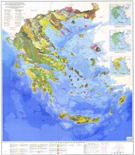

|  |
Greek Seismological Databasecreated by : Nikolas KaralisIn the following you can view a list of the earthquakes in the wider area of Greece during the last few years. Time is LOCAL (UTC +2). Data are fetched from European-Mediterranean Seismological Centre. Database currently holds data since August 2004 and is automatically updated every hour. You can find a seismotectonic map of Greece here. This webpage is not maintained any more. It remains online solely for historical purposes. Last update : 02-03-2010 13:56 |
| Date | Time | Coordinates | Magnitude | Depth | Region |
| 2010-02-03 | 20:58:51.5 | 38.09 N 22.77 E | 2.5 ML | 13 | GREECE |
| 2010-02-03 | 18:02:53.1 | 37.59 N 22.66 E | 2.6 ML | 46 | SOUTHERN GREECE |
| 2010-02-03 | 14:56:47.3 | 39.77 N 22.33 E | 2.6 ML | 10 | GREECE |
| 2010-02-03 | 14:26:50.2 | 41.90 N 23.20 E | 2.0 ML | 1 | BULGARIA |
| 2010-02-03 | 11:09:33.5 | 40.08 N 19.77 E | 3.1 ML | 2 | ADRIATIC SEA |
| 2010-02-03 | 09:51:43.9 | 36.63 N 23.11 E | 2.7 ML | 40 | SOUTHERN GREECE |
| 2010-02-03 | 09:05:36.7 | 40.42 N 21.48 E | 2.5 ML | 10 | GREECE |
| 2010-02-03 | 07:50:53.4 | 38.28 N 22.09 E | 3.3 ML | 2 | GREECE |
| 2010-02-03 | 06:38:53.4 | 35.50 N 23.00 E | 3.4 ML | 20 | CRETE, GREECE |
| 2010-02-03 | 02:43:31.1 | 38.30 N 22.07 E | 2.8 ML | 2 | GREECE |
| 2010-02-03 | 00:45:07.3 | 38.53 N 21.60 E | 2.8 ML | 10 | GREECE |
| 2010-02-02 | 22:06:51.3 | 36.38 N 21.91 E | 2.5 ML | SOUTHERN GREECE | |
| 2010-02-02 | 21:54:56.9 | 37.37 N 19.91 E | 2.8 ML | 11 | IONIAN SEA |
| 2010-02-02 | 20:36:50.3 | 36.43 N 22.55 E | 2.7 ML | 5 | SOUTHERN GREECE |
| 2010-02-02 | 20:32:47.0 | 35.96 N 22.91 E | 2.9 ML | 5 | CENTRAL MEDITERRANEAN SEA |
| 2010-02-02 | 17:46:54.8 | 36.96 N 21.76 E | 3.6 ML | 2 | SOUTHERN GREECE |
| 2010-02-02 | 16:50:24.1 | 36.90 N 21.75 E | 2.6 ML | SOUTHERN GREECE | |
| 2010-02-02 | 10:54:26.7 | 36.90 N 21.76 E | 2.6 ML | SOUTHERN GREECE | |
| 2010-02-02 | 09:24:17.2 | 37.20 N 20.93 E | 2.6 ML | 10 | IONIAN SEA |
| 2010-02-02 | 09:21:25.5 | 38.72 N 23.31 E | 2.5 ML | 8 | GREECE |
| 2010-02-02 | 04:04:39.9 | 37.44 N 20.43 E | 2.5 ML | 10 | IONIAN SEA |
| 2010-02-02 | 02:18:12.6 | 41.89 N 20.56 E | 2.0 ML | 7 | ALBANIA |
| 2010-02-02 | 01:49:24.0 | 37.03 N 21.52 E | 2.6 ML | 37 | SOUTHERN GREECE |
| 2010-02-01 | 21:01:53.7 | 41.83 N 20.66 E | 2.6 ML | 2 | FYR OF MACEDONIA |
| 2010-02-01 | 20:22:22.8 | 36.60 N 25.79 E | 2.8 ML | 5 | DODECANESE ISLANDS, GREECE |
| 2010-02-01 | 17:23:27.1 | 40.15 N 24.05 E | 2.7 ML | 2 | AEGEAN SEA |
| 2010-02-01 | 17:06:53.7 | 38.15 N 22.69 E | 3.1 ML | 1 | GREECE |
| 2010-02-01 | 13:04:21.0 | 38.71 N 27.59 E | 2.6 MD | 5 | WESTERN TURKEY |
| 2010-02-01 | 12:46:02.8 | 38.42 N 21.95 E | 2.8 ML | GREECE | |
| 2010-02-01 | 10:54:38.6 | 41.95 N 20.39 E | 2.2 ML | 12 | ALBANIA |
| 2010-02-01 | 10:50:54.1 | 38.74 N 23.48 E | 2.5 ML | 5 | GREECE |
| 2010-02-01 | 04:39:41.4 | 38.40 N 22.27 E | 3.0 ML | 8 | GREECE |
| 2010-02-01 | 04:00:08.0 | 37.33 N 19.90 E | 2.7 ML | 5 | IONIAN SEA |
| 2010-02-01 | 02:48:18.2 | 38.36 N 21.78 E | 2.5 ML | 2 | GREECE |
| 2010-01-31 | 23:34:27.1 | 38.18 N 21.90 E | 2.5 ML | 5 | GREECE |
| 2010-01-31 | 20:36:37.1 | 40.58 N 25.62 E | 3.2 ML | 2 | AEGEAN SEA |
| 2010-01-31 | 17:49:47.9 | 39.70 N 27.56 E | 3.6 ML | 5 | WESTERN TURKEY |
| 2010-01-31 | 17:38:39.0 | 40.46 N 20.59 E | 2.4 ML | 22 | ALBANIA |
| 2010-01-31 | 11:43:59.6 | 37.33 N 22.11 E | 3.0 ML | 2 | SOUTHERN GREECE |
| 2010-01-31 | 08:46:09.9 | 37.93 N 27.57 E | 2.9 MD | 5 | WESTERN TURKEY |
| 2010-01-31 | 08:34:23.9 | 39.01 N 27.95 E | 2.5 MD | 6 | WESTERN TURKEY |
| 2010-01-31 | 06:59:49.7 | 38.43 N 24.96 E | 3.3 ML | 10 | AEGEAN SEA |
| 2010-01-31 | 04:42:13.0 | 39.86 N 26.80 E | 2.9 MD | 5 | NEAR THE COAST OF WESTERN TURKEY |
| 2010-01-31 | 03:09:10.0 | 39.75 N 22.08 E | 2.5 ML | 5 | GREECE |
| 2010-01-31 | 00:56:03.8 | 38.42 N 21.93 E | 2.7 ML | 2 | GREECE |
| 2010-01-30 | 22:36:23.2 | 37.05 N 21.51 E | 2.6 ML | 5 | SOUTHERN GREECE |
| 2010-01-30 | 21:48:46.7 | 38.43 N 21.93 E | 2.7 ML | 2 | GREECE |
| 2010-01-30 | 20:08:45.6 | 38.41 N 22.00 E | 2.9 ML | 2 | GREECE |
| 2010-01-30 | 20:03:09.0 | 39.06 N 25.51 E | 3.1 MD | 5 | AEGEAN SEA |
| 2010-01-30 | 19:05:31.7 | 38.42 N 25.54 E | 2.5 ML | 2 | AEGEAN SEA |
| 2010-01-30 | 18:47:59.5 | 38.34 N 25.61 E | 2.8 ML | 2 | AEGEAN SEA |
| 2010-01-30 | 17:42:17.8 | 38.59 N 26.59 E | 2.7 ML | 12 | NEAR THE COAST OF WESTERN TURKEY |
| 2010-01-30 | 14:00:19.9 | 39.82 N 26.77 E | 2.8 ML | 8 | NEAR THE COAST OF WESTERN TURKEY |
| 2010-01-30 | 13:47:39.4 | 38.30 N 22.45 E | 4.8 mb | 10 | GREECE |
| 2010-01-30 | 10:16:06.3 | 38.42 N 21.95 E | 2.7 ML | 2 | GREECE |
| 2010-01-30 | 09:58:43.8 | 38.43 N 21.93 E | 2.6 ML | 2 | GREECE |
| 2010-01-30 | 08:05:08.8 | 40.72 N 20.85 E | 2.6 ML | 2 | ALBANIA |
| 2010-01-30 | 06:39:37.4 | 39.34 N 26.32 E | 3.1 ML | 10 | NEAR THE COAST OF WESTERN TURKEY |
| 2010-01-30 | 02:40:08.4 | 39.77 N 22.22 E | 3.0 ML | 2 | GREECE |
| 2010-01-30 | 01:04:48.7 | 38.86 N 27.85 E | 3.0 ML | 2 | WESTERN TURKEY |
| 2010-01-29 | 23:41:45.9 | 34.82 N 26.85 E | 2.8 ML | 4 | CRETE, GREECE |
| 2010-01-29 | 23:28:03.0 | 40.59 N 23.57 E | 2.6 ML | 10 | GREECE |
| 2010-01-29 | 19:54:07.6 | 41.54 N 20.43 E | 2.8 ML | 2 | ALBANIA |
| 2010-01-29 | 16:55:02.6 | 38.42 N 21.94 E | 2.6 ML | 5 | GREECE |
| 2010-01-29 | 16:40:39.7 | 38.23 N 20.67 E | 2.5 ML | 2 | GREECE |
| 2010-01-29 | 16:22:41.7 | 38.42 N 21.96 E | 2.5 ML | 1 | GREECE |
| 2010-01-29 | 12:47:42.6 | 38.10 N 19.73 E | 3.3 ML | 2 | IONIAN SEA |
| 2010-01-29 | 12:25:46.6 | 35.32 N 26.81 E | 3.2 ML | 2 | CRETE, GREECE |
| 2010-01-29 | 10:26:19.3 | 38.40 N 21.91 E | 2.7 ML | 5 | GREECE |
| 2010-01-29 | 07:44:04.4 | 38.40 N 22.01 E | 3.2 ML | 2 | GREECE |
| 2010-01-29 | 07:08:01.6 | 35.62 N 22.32 E | 2.8 ML | 10 | CENTRAL MEDITERRANEAN SEA |
| 2010-01-29 | 04:37:34.1 | 38.49 N 21.86 E | 2.8 ML | 5 | GREECE |
| 2010-01-29 | 04:23:59.7 | 36.19 N 21.54 E | 3.8 ML | 10 | SOUTHERN GREECE |
| 2010-01-29 | 03:24:21.2 | 36.76 N 21.56 E | 3.5 ML | 10 | SOUTHERN GREECE |
| 2010-01-29 | 03:16:53.6 | 37.90 N 27.22 E | 2.9 MD | 5 | WESTERN TURKEY |
| 2010-01-29 | 01:26:29.6 | 38.10 N 20.33 E | 2.5 ML | 16 | GREECE |
| 2010-01-28 | 22:54:25.7 | 37.83 N 20.35 E | 2.5 ML | 2 | IONIAN SEA |
| 2010-01-28 | 21:46:22.1 | 38.39 N 22.00 E | 2.8 ML | 1 | GREECE |
| 2010-01-28 | 21:21:33.3 | 37.91 N 27.26 E | 3.0 ML | WESTERN TURKEY | |
| 2010-01-28 | 20:39:17.1 | 38.40 N 21.89 E | 2.8 ML | 5 | GREECE |
| 2010-01-28 | 17:43:01.9 | 38.56 N 25.16 E | 2.8 ML | 2 | AEGEAN SEA |
| 2010-01-28 | 17:35:15.0 | 36.57 N 21.91 E | 2.8 ML | 2 | SOUTHERN GREECE |
| 2010-01-28 | 16:47:31.0 | 37.47 N 20.91 E | 3.8 ML | 2 | IONIAN SEA |
| 2010-01-28 | 15:32:10.2 | 38.42 N 22.02 E | 2.6 ML | 2 | GREECE |
| 2010-01-28 | 13:05:20.3 | 34.81 N 25.59 E | 4.0 ML | 2 | CRETE, GREECE |
| 2010-01-28 | 12:52:27.4 | 38.42 N 21.94 E | 2.6 ML | 8 | GREECE |
| 2010-01-28 | 11:51:28.8 | 39.46 N 26.12 E | 2.7 MD | 10 | NEAR THE COAST OF WESTERN TURKEY |
| 2010-01-28 | 09:30:11.8 | 39.90 N 26.03 E | 2.5 ML | 8 | NEAR THE COAST OF WESTERN TURKEY |
| 2010-01-28 | 08:12:03.0 | 39.80 N 22.19 E | 2.5 ML | 10 | GREECE |
| 2010-01-28 | 06:43:02.2 | 41.66 N 23.80 E | 3.1 ML | 2 | BULGARIA |
| 2010-01-28 | 05:41:18.4 | 37.45 N 21.85 E | 2.5 ML | 10 | SOUTHERN GREECE |
| 2010-01-28 | 05:30:23.4 | 38.05 N 21.93 E | 2.5 ML | 5 | GREECE |
| 2010-01-28 | 05:21:01.0 | 38.04 N 21.96 E | 3.0 ML | 1 | GREECE |
| 2010-01-28 | 02:36:13.7 | 35.06 N 25.42 E | 3.6 ML | 10 | CRETE, GREECE |
| 2010-01-28 | 00:48:29.8 | 39.78 N 25.42 E | 3.2 MD | 4 | AEGEAN SEA |
| 2010-01-28 | 00:20:04.2 | 38.41 N 21.87 E | 2.7 ML | 2 | GREECE |
| 2010-01-28 | 00:15:57.4 | 38.28 N 23.66 E | 2.6 ML | 10 | GREECE |
| 2010-01-27 | 23:55:11.4 | 38.67 N 22.78 E | 2.6 ML | 8 | GREECE |
| 2010-01-27 | 16:48:42.9 | 40.54 N 20.91 E | 3.1 ML | 236 | ALBANIA |
| 2010-01-27 | 11:36:50.6 | 35.28 N 26.68 E | 3.1 ML | 10 | CRETE, GREECE |
| 2010-01-27 | 07:24:42.0 | 40.53 N 19.55 E | 2.4 ML | 2 | ALBANIA |
| 2010-01-27 | 07:01:23.6 | 39.48 N 27.83 E | 3.0 ML | 5 | WESTERN TURKEY |
| 2010-01-27 | 03:46:54.3 | 38.39 N 21.99 E | 2.5 ML | 2 | GREECE |
| 2010-01-27 | 02:38:04.1 | 34.85 N 25.55 E | 3.0 ML | 5 | CRETE, GREECE |
| 2010-01-27 | 02:13:12.4 | 35.13 N 26.79 E | 2.6 ML | 1 | CRETE, GREECE |
| 2010-01-26 | 20:30:59.2 | 38.27 N 22.15 E | 2.8 ML | 2 | GREECE |
| 2010-01-26 | 19:44:17.3 | 37.02 N 27.72 E | 2.9 MD | 5 | WESTERN TURKEY |
| 2010-01-26 | 19:29:57.5 | 38.13 N 26.73 E | 2.8 ML | 2 | NEAR THE COAST OF WESTERN TURKEY |
| 2010-01-26 | 18:21:14.8 | 39.59 N 25.98 E | 3.0 MD | 7 | AEGEAN SEA |
| 2010-01-26 | 17:04:02.3 | 35.19 N 26.83 E | 3.4 ML | 2 | CRETE, GREECE |
| 2010-01-26 | 16:17:17.0 | 39.88 N 23.34 E | 2.6 ML | 138 | AEGEAN SEA |
| 2010-01-26 | 14:04:57.4 | 38.61 N 23.43 E | 2.8 ML | 2 | GREECE |
| 2010-01-26 | 13:44:46.8 | 35.10 N 26.77 E | 3.1 ML | 1 | CRETE, GREECE |
| 2010-01-26 | 13:31:14.8 | 35.11 N 26.94 E | 4.6 mb | 2 | CRETE, GREECE |
| 2010-01-26 | 11:24:41.8 | 37.88 N 21.11 E | 3.6 ML | 2 | SOUTHERN GREECE |
| 2010-01-26 | 11:24:37.1 | 39.75 N 26.54 E | 3.0 MD | 5 | NEAR THE COAST OF WESTERN TURKEY |
| 2010-01-26 | 08:22:51.1 | 38.84 N 21.94 E | 2.5 ML | 18 | GREECE |
| 2010-01-26 | 07:41:11.0 | 38.43 N 22.02 E | 3.1 ML | 2 | GREECE |
| 2010-01-26 | 07:04:13.3 | 38.40 N 22.03 E | 2.6 ML | 2 | GREECE |
| 2010-01-26 | 04:56:14.4 | 38.43 N 22.02 E | 2.7 ML | 8 | GREECE |
| 2010-01-26 | 02:51:20.9 | 38.41 N 22.02 E | 2.6 ML | 6 | GREECE |
| 2010-01-26 | 00:32:09.0 | 38.39 N 22.02 E | 2.8 ML | 2 | GREECE |
| 2010-01-25 | 20:43:41.8 | 38.41 N 21.99 E | 2.5 ML | 10 | GREECE |
| 2010-01-25 | 17:11:37.1 | 35.27 N 25.83 E | 2.9 ML | 5 | CRETE, GREECE |
| 2010-01-25 | 14:34:48.6 | 38.41 N 22.01 E | 2.8 ML | 8 | GREECE |
| 2010-01-25 | 14:04:22.5 | 37.03 N 20.78 E | 2.5 ML | 13 | IONIAN SEA |
| 2010-01-25 | 13:54:54.7 | 38.42 N 22.02 E | 2.6 ML | 7 | GREECE |
| 2010-01-25 | 12:12:44.7 | 38.40 N 22.01 E | 2.5 ML | 8 | GREECE |
| 2010-01-25 | 10:10:15.1 | 38.42 N 22.02 E | 2.5 ML | 6 | GREECE |
| 2010-01-25 | 08:50:14.1 | 37.71 N 20.85 E | 3.9 ML | 2 | IONIAN SEA |
| 2010-01-25 | 07:25:15.5 | 38.38 N 21.81 E | 2.6 ML | 2 | GREECE |
| 2010-01-25 | 06:42:05.8 | 38.42 N 21.96 E | 2.7 ML | 9 | GREECE |
| 2010-01-25 | 01:10:18.7 | 38.84 N 26.95 E | 4.0 ML | 10 | NEAR THE COAST OF WESTERN TURKEY |
| 2010-01-24 | 21:22:06.9 | 38.76 N 25.31 E | 2.7 ML | 10 | AEGEAN SEA |
| 2010-01-24 | 18:58:22.4 | 34.98 N 27.01 E | 3.5 ML | 2 | EASTERN MEDITERRANEAN SEA |
| 2010-01-24 | 18:53:50.8 | 35.11 N 26.81 E | 3.3 ML | 2 | CRETE, GREECE |
| 2010-01-24 | 18:12:02.9 | 37.38 N 20.52 E | 2.9 ML | 2 | IONIAN SEA |
| 2010-01-24 | 17:59:40.5 | 37.23 N 22.17 E | 2.7 ML | 1 | SOUTHERN GREECE |
| 2010-01-24 | 15:28:25.1 | 40.37 N 27.26 E | 2.8 MD | 11 | WESTERN TURKEY |
| 2010-01-24 | 13:45:27.1 | 38.38 N 22.02 E | 2.8 ML | GREECE | |
| 2010-01-24 | 13:18:14.7 | 39.35 N 21.50 E | 4.3 ML | 2 | GREECE |
| 2010-01-24 | 11:45:10.4 | 37.90 N 26.65 E | 3.1 ML | 2 | DODECANESE ISLANDS, GREECE |
| 2010-01-24 | 11:42:05.9 | 38.63 N 23.47 E | 2.6 ML | 10 | GREECE |
| 2010-01-24 | 11:10:12.6 | 38.60 N 23.44 E | 2.7 ML | 2 | GREECE |
| 2010-01-24 | 08:00:31.4 | 37.69 N 21.86 E | 3.1 ML | 2 | SOUTHERN GREECE |
| 2010-01-24 | 05:58:27.7 | 34.94 N 25.60 E | 3.5 ML | 1 | CRETE, GREECE |
| 2010-01-24 | 05:41:34.9 | 41.51 N 19.99 E | 2.2 ML | 7 | ALBANIA |
| 2010-01-24 | 04:47:46.6 | 38.27 N 22.09 E | 3.0 ML | 2 | GREECE |
| 2010-01-24 | 01:52:37.7 | 40.63 N 22.47 E | 2.5 ML | 10 | GREECE |
| 2010-01-24 | 00:55:25.8 | 35.14 N 25.59 E | 3.0 ML | 10 | CRETE, GREECE |
| 2010-01-23 | 22:58:16.7 | 38.42 N 21.96 E | 2.7 ML | 2 | GREECE |
| 2010-01-23 | 19:24:12.0 | 38.30 N 27.21 E | 3.5 ML | 26 | WESTERN TURKEY |
| 2010-01-23 | 18:10:58.0 | 38.84 N 26.95 E | 3.0 MD | 7 | NEAR THE COAST OF WESTERN TURKEY |
| 2010-01-23 | 18:05:18.9 | 38.25 N 21.74 E | 2.5 ML | 16 | GREECE |
| 2010-01-23 | 17:43:56.1 | 36.53 N 26.93 E | 3.4 ML | 2 | DODECANESE ISLANDS, GREECE |
| 2010-01-23 | 16:37:07.0 | 40.30 N 24.03 E | 2.7 ML | 10 | AEGEAN SEA |
| 2010-01-23 | 15:50:40.1 | 39.41 N 23.43 E | 2.6 ML | 10 | AEGEAN SEA |
| 2010-01-23 | 13:27:13.3 | 38.40 N 22.01 E | 2.6 ML | 5 | GREECE |
| 2010-01-23 | 12:30:29.9 | 41.99 N 19.11 E | 2.9 ML | ADRIATIC SEA | |
| 2010-01-23 | 11:26:56.2 | 38.41 N 21.95 E | 3.3 ML | 2 | GREECE |
| 2010-01-23 | 09:41:19.0 | 38.41 N 21.97 E | 2.6 ML | 1 | GREECE |
| 2010-01-23 | 08:37:02.7 | 35.61 N 26.37 E | 4.1 ML | 20 | CRETE, GREECE |
| 2010-01-23 | 06:03:48.2 | 38.41 N 22.01 E | 2.5 ML | 7 | GREECE |
| 2010-01-23 | 02:44:29.3 | 40.07 N 19.76 E | 2.7 ML | 2 | ADRIATIC SEA |
| 2010-01-23 | 01:50:03.0 | 38.95 N 26.72 E | 3.1 MD | 7 | NEAR THE COAST OF WESTERN TURKEY |
| 2010-01-23 | 01:47:11.3 | 38.43 N 21.88 E | 2.6 ML | 9 | GREECE |
| 2010-01-22 | 23:12:21.0 | 40.17 N 23.44 E | 3.3 ML | 10 | GREECE |
| 2010-01-22 | 22:20:39.8 | 38.41 N 22.00 E | 2.6 ML | 5 | GREECE |
| 2010-01-22 | 20:48:03.9 | 38.44 N 21.97 E | 2.5 ML | 5 | GREECE |
| 2010-01-22 | 20:45:08.6 | 37.42 N 24.12 E | 2.9 ML | 10 | SOUTHERN GREECE |
| 2010-01-22 | 18:28:18.4 | 38.40 N 21.88 E | 2.5 ML | 10 | GREECE |
| 2010-01-22 | 18:14:19.3 | 38.41 N 22.05 E | 3.8 Mw | 2 | GREECE |
| 2010-01-22 | 17:54:20.5 | 38.39 N 22.00 E | 2.5 ML | 1 | GREECE |
| 2010-01-22 | 17:01:45.9 | 37.14 N 23.19 E | 2.5 ML | 25 | SOUTHERN GREECE |
| 2010-01-22 | 16:28:04.1 | 38.44 N 21.96 E | 3.1 ML | 2 | GREECE |
| 2010-01-22 | 16:05:07.5 | 38.44 N 21.99 E | 3.1 ML | 2 | GREECE |
| 2010-01-22 | 15:52:49.7 | 38.71 N 21.04 E | 3.0 ML | 15 | GREECE |
| 2010-01-22 | 15:38:51.4 | 38.44 N 22.00 E | 2.7 ML | 2 | GREECE |
| 2010-01-22 | 15:24:10.6 | 38.43 N 21.97 E | 2.5 ML | 7 | GREECE |
| 2010-01-22 | 15:02:33.9 | 38.43 N 21.97 E | 2.6 ML | 7 | GREECE |
| 2010-01-22 | 14:37:42.5 | 38.40 N 21.99 E | 2.7 ML | 5 | GREECE |
| 2010-01-22 | 14:30:21.7 | 38.43 N 21.94 E | 3.2 ML | 2 | GREECE |
| 2010-01-22 | 14:29:07.8 | 38.41 N 21.96 E | 2.6 ML | 5 | GREECE |
| 2010-01-22 | 13:58:06.1 | 38.43 N 21.99 E | 2.7 ML | 7 | GREECE |
| 2010-01-22 | 13:52:35.8 | 38.42 N 22.01 E | 2.7 ML | 8 | GREECE |
| 2010-01-22 | 12:42:36.6 | 38.41 N 22.02 E | 3.4 ML | 2 | GREECE |
| 2010-01-22 | 12:25:58.1 | 39.34 N 25.72 E | 3.2 MD | 7 | AEGEAN SEA |
| 2010-01-22 | 11:57:18.5 | 37.67 N 26.82 E | 3.4 MD | 16 | DODECANESE ISLANDS, GREECE |
| 2010-01-22 | 10:59:16.4 | 38.39 N 21.97 E | 4.4 Mw | 2 | GREECE |
| 2010-01-22 | 10:53:33.6 | 38.38 N 21.96 E | 4.2 Mw | 2 | GREECE |
| 2010-01-22 | 10:02:39.0 | 38.43 N 21.97 E | 3.0 ML | 7 | GREECE |
| 2010-01-22 | 09:43:12.5 | 38.32 N 22.03 E | 3.4 ML | 2 | GREECE |
| 2010-01-22 | 09:37:52.3 | 38.42 N 21.98 E | 2.6 ML | 5 | GREECE |
| 2010-01-22 | 09:32:17.5 | 37.69 N 23.45 E | 3.5 ML | 2 | SOUTHERN GREECE |
| 2010-01-22 | 09:18:23.1 | 38.40 N 22.01 E | 3.0 ML | 2 | GREECE |
| 2010-01-22 | 08:57:56.2 | 40.00 N 22.80 E | 2.0 ML | 6 | GREECE |
| 2010-01-22 | 08:32:08.1 | 38.20 N 21.96 E | 2.5 ML | 5 | GREECE |
| 2010-01-22 | 08:19:51.1 | 38.38 N 22.00 E | 3.7 ML | 2 | GREECE |
| 2010-01-22 | 08:00:22.2 | 38.34 N 22.12 E | 2.5 ML | 10 | GREECE |
| 2010-01-22 | 07:38:19.0 | 40.09 N 21.72 E | 2.5 ML | 2 | GREECE |
| 2010-01-22 | 07:30:09.6 | 38.40 N 21.93 E | 3.5 ML | 2 | GREECE |
| 2010-01-22 | 07:12:07.3 | 38.41 N 21.92 E | 2.6 ML | 5 | GREECE |
| 2010-01-22 | 06:12:11.9 | 38.42 N 21.98 E | 3.2 ML | 2 | GREECE |
| 2010-01-22 | 06:08:34.9 | 38.41 N 21.95 E | 3.1 ML | 2 | GREECE |
| 2010-01-22 | 06:00:34.9 | 38.41 N 21.98 E | 2.8 ML | 1 | GREECE |
| 2010-01-22 | 05:56:32.3 | 38.41 N 21.94 E | 2.7 ML | 7 | GREECE |
| 2010-01-22 | 05:49:00.5 | 38.43 N 21.92 E | 2.5 ML | 8 | GREECE |
| 2010-01-22 | 05:47:29.9 | 37.62 N 27.16 E | 3.1 MD | 5 | WESTERN TURKEY |
| 2010-01-22 | 05:18:48.5 | 38.44 N 21.96 E | 2.5 ML | 7 | GREECE |
| 2010-01-22 | 05:04:04.8 | 38.40 N 22.03 E | 3.1 ML | 5 | GREECE |
| 2010-01-22 | 04:51:14.8 | 41.80 N 19.53 E | 3.0 ML | 25 | ADRIATIC SEA |
| 2010-01-22 | 04:43:39.5 | 38.40 N 21.94 E | 3.4 ML | 2 | GREECE |
| 2010-01-22 | 04:37:36.6 | 38.43 N 22.02 E | 3.8 Mw | 2 | GREECE |
| 2010-01-22 | 04:10:19.0 | 38.42 N 21.99 E | 2.9 ML | 7 | GREECE |
| 2010-01-22 | 04:05:57.2 | 37.54 N 27.03 E | 3.0 MD | 5 | WESTERN TURKEY |
| 2010-01-22 | 04:03:11.7 | 38.54 N 21.96 E | 2.7 ML | 6 | GREECE |
| 2010-01-22 | 03:43:57.6 | 38.37 N 21.94 E | 3.3 ML | 2 | GREECE |
| 2010-01-22 | 03:38:26.3 | 38.42 N 22.01 E | 2.9 ML | 2 | GREECE |
| 2010-01-22 | 03:28:16.4 | 38.40 N 21.94 E | 2.5 ML | 5 | GREECE |
| 2010-01-22 | 03:16:21.8 | 38.41 N 21.98 E | 2.6 ML | 8 | GREECE |
| 2010-01-22 | 03:09:34.0 | 38.40 N 22.00 E | 3.5 ML | 2 | GREECE |
| 2010-01-22 | 03:04:09.9 | 38.41 N 21.93 E | 2.7 ML | 8 | GREECE |
| 2010-01-22 | 02:58:41.6 | 38.43 N 22.06 E | 2.9 ML | 2 | GREECE |
| 2010-01-22 | 02:54:31.4 | 38.43 N 21.95 E | 3.0 ML | 7 | GREECE |
| 2010-01-22 | 02:48:29.3 | 38.42 N 22.00 E | 2.5 ML | 7 | GREECE |
| 2010-01-22 | 02:46:18.6 | 38.43 N 21.97 E | 2.7 ML | 7 | GREECE |
| 2010-01-22 | 02:40:37.5 | 38.37 N 21.89 E | 2.6 ML | 6 | GREECE |
| 2010-01-22 | 02:35:22.4 | 38.34 N 22.05 E | 2.8 ML | 10 | GREECE |
| 2010-01-22 | 02:30:05.3 | 38.46 N 21.92 E | 2.8 ML | 7 | GREECE |
| 2010-01-22 | 02:17:33.8 | 38.41 N 22.01 E | 2.9 ML | 2 | GREECE |
| 2010-01-22 | 02:11:45.9 | 38.42 N 21.99 E | 3.0 ML | 1 | GREECE |
| 2010-01-22 | 01:59:21.0 | 38.44 N 21.96 E | 2.9 ML | 7 | GREECE |
| 2010-01-22 | 01:53:07.8 | 38.50 N 21.96 E | 3.1 ML | 10 | GREECE |
| 2010-01-22 | 01:51:32.7 | 38.40 N 21.97 E | 3.0 ML | 2 | GREECE |
| 2010-01-22 | 01:47:20.3 | 38.42 N 21.93 E | 2.7 ML | 8 | GREECE |
| 2010-01-22 | 01:42:08.0 | 38.43 N 21.97 E | 2.5 ML | 9 | GREECE |
| 2010-01-22 | 01:27:16.3 | 38.40 N 21.97 E | 3.5 ML | 2 | GREECE |
| 2010-01-22 | 01:20:16.0 | 38.44 N 22.02 E | 3.3 ML | 2 | GREECE |
| 2010-01-22 | 01:08:30.3 | 38.41 N 21.93 E | 2.7 ML | 6 | GREECE |
| 2010-01-22 | 01:04:39.7 | 38.36 N 21.96 E | 2.8 ML | 13 | GREECE |
| 2010-01-22 | 00:59:55.3 | 38.42 N 21.98 E | 3.1 ML | 6 | GREECE |
| 2010-01-22 | 00:57:01.7 | 38.41 N 21.98 E | 3.7 ML | 2 | GREECE |
| 2010-01-22 | 00:50:34.4 | 38.38 N 21.98 E | 4.8 mb | 2 | GREECE |
| 2010-01-22 | 00:46:57.3 | 38.42 N 22.04 E | 5.3 mb | 2 | GREECE |
| 2010-01-22 | 00:23:56.2 | 38.50 N 25.55 E | 3.0 MD | 4 | AEGEAN SEA |
| 2010-01-21 | 23:32:40.0 | 38.42 N 21.99 E | 2.8 ML | 5 | GREECE |
| 2010-01-21 | 19:54:48.7 | 38.29 N 22.12 E | 2.5 ML | 7 | GREECE |
| 2010-01-21 | 18:11:45.9 | 38.40 N 21.97 E | 2.7 ML | 10 | GREECE |
| 2010-01-21 | 16:56:33.8 | 38.29 N 22.12 E | 2.5 ML | 7 | GREECE |
| 2010-01-21 | 16:15:51.6 | 37.00 N 27.56 E | 3.1 MD | 5 | WESTERN TURKEY |
| 2010-01-21 | 14:17:49.0 | 40.05 N 20.93 E | 2.7 ML | 10 | GREECE |
| 2010-01-21 | 14:02:18.6 | 37.30 N 22.10 E | 2.5 ML | 12 | SOUTHERN GREECE |
| 2010-01-21 | 13:42:55.9 | 38.39 N 22.03 E | 3.6 ML | 2 | GREECE |
| 2010-01-21 | 12:54:51.0 | 37.15 N 21.30 E | 3.4 ML | 2 | SOUTHERN GREECE |
| 2010-01-21 | 12:26:34.9 | 40.30 N 21.80 E | 2.1 ML | 13 | GREECE |
| 2010-01-21 | 11:46:38.5 | 38.29 N 22.11 E | 2.6 ML | 4 | GREECE |
| 2010-01-21 | 09:51:14.3 | 38.34 N 20.91 E | 4.1 Mw | 40 | GREECE |
| 2010-01-21 | 08:43:10.9 | 38.44 N 21.95 E | 3.1 ML | 2 | GREECE |
| 2010-01-21 | 07:52:33.2 | 38.40 N 21.96 E | 2.5 ML | 10 | GREECE |
| 2010-01-21 | 07:41:42.8 | 39.83 N 26.06 E | 3.2 ML | NEAR THE COAST OF WESTERN TURKEY | |
| 2010-01-21 | 06:14:10.5 | 41.82 N 25.59 E | 3.0 ML | 2 | BULGARIA |
| 2010-01-21 | 05:41:28.2 | 38.43 N 21.95 E | 2.5 ML | 6 | GREECE |
| 2010-01-21 | 04:39:33.5 | 36.90 N 23.73 E | 2.9 ML | 181 | SOUTHERN GREECE |
| 2010-01-21 | 01:53:25.8 | 39.46 N 20.63 E | 2.7 ML | 17 | GREECE |
| 2010-01-21 | 00:10:47.6 | 36.43 N 22.06 E | 2.9 ML | 2 | SOUTHERN GREECE |
| 2010-01-21 | 00:04:48.7 | 39.08 N 23.16 E | 2.9 ML | 5 | AEGEAN SEA |
| 2010-01-20 | 23:04:32.5 | 36.15 N 21.68 E | 3.1 ML | 1 | SOUTHERN GREECE |
| 2010-01-20 | 22:39:50.7 | 36.15 N 21.46 E | 3.1 ML | 10 | SOUTHERN GREECE |
| 2010-01-20 | 21:49:08.7 | 36.78 N 21.43 E | 3.0 ML | 2 | SOUTHERN GREECE |
| 2010-01-20 | 21:11:10.4 | 38.41 N 21.98 E | 2.5 ML | 4 | GREECE |
| 2010-01-20 | 19:59:52.6 | 36.49 N 27.00 E | 3.6 ML | 2 | DODECANESE ISLANDS, GREECE |
| 2010-01-20 | 17:45:21.5 | 36.72 N 21.34 E | 2.5 ML | 1 | SOUTHERN GREECE |
| 2010-01-20 | 16:55:19.1 | 37.17 N 22.17 E | 4.3 ML | 2 | SOUTHERN GREECE |
| 2010-01-20 | 16:40:37.2 | 40.28 N 20.67 E | 3.2 ML | 2 | ALBANIA |
| 2010-01-20 | 16:34:10.3 | 38.42 N 21.91 E | 2.5 ML | 8 | GREECE |
| 2010-01-20 | 14:20:21.3 | 38.29 N 22.14 E | 2.7 ML | 1 | GREECE |
| 2010-01-20 | 13:25:27.1 | 37.54 N 21.60 E | 3.1 ML | 2 | SOUTHERN GREECE |
| 2010-01-20 | 12:04:49.8 | 38.41 N 21.96 E | 2.5 ML | 7 | GREECE |
| 2010-01-20 | 10:43:01.7 | 35.54 N 23.62 E | 3.0 ML | 6 | CRETE, GREECE |
| 2010-01-20 | 10:29:47.9 | 38.42 N 21.99 E | 2.7 ML | 8 | GREECE |
| 2010-01-20 | 10:04:51.6 | 39.88 N 23.73 E | 2.5 ML | 5 | AEGEAN SEA |
| 2010-01-20 | 09:47:53.0 | 39.87 N 23.75 E | 2.5 ML | 5 | AEGEAN SEA |
| 2010-01-20 | 09:39:23.7 | 38.56 N 24.34 E | 3.0 ML | 194 | AEGEAN SEA |
| 2010-01-20 | 09:01:34.3 | 38.43 N 21.94 E | 2.5 ML | 1 | GREECE |
| 2010-01-20 | 08:24:30.9 | 39.87 N 23.86 E | 2.5 ML | 2 | AEGEAN SEA |
| 2010-01-20 | 08:10:41.3 | 38.40 N 22.00 E | 2.8 ML | 11 | GREECE |
| 2010-01-20 | 07:54:33.4 | 38.37 N 21.98 E | 3.2 ML | 2 | GREECE |
| 2010-01-20 | 07:37:04.7 | 38.42 N 21.96 E | 2.5 ML | 4 | GREECE |
| 2010-01-20 | 07:32:37.2 | 38.37 N 21.98 E | 3.7 ML | 2 | GREECE |
| 2010-01-20 | 06:45:58.0 | 38.41 N 21.97 E | 2.9 ML | 2 | GREECE |
| 2010-01-20 | 06:39:59.5 | 38.20 N 20.62 E | 3.1 ML | 2 | GREECE |
| 2010-01-20 | 06:35:14.6 | 38.43 N 21.98 E | 3.0 ML | 2 | GREECE |
| 2010-01-20 | 05:17:33.3 | 38.00 N 20.22 E | 3.2 ML | 2 | GREECE |
| 2010-01-20 | 04:57:09.1 | 39.87 N 23.75 E | 2.7 ML | 5 | AEGEAN SEA |
| 2010-01-20 | 04:36:28.9 | 38.42 N 21.99 E | 2.8 ML | 5 | GREECE |
| 2010-01-20 | 04:24:36.8 | 38.44 N 21.97 E | 2.7 ML | 7 | GREECE |
| 2010-01-20 | 04:21:20.8 | 38.43 N 21.98 E | 2.9 ML | 1 | GREECE |
| 2010-01-20 | 04:05:25.7 | 39.86 N 23.69 E | 2.9 ML | 10 | AEGEAN SEA |
| 2010-01-20 | 03:02:51.6 | 39.00 N 26.51 E | 3.0 ML | 5 | NEAR THE COAST OF WESTERN TURKEY |
| 2010-01-20 | 01:17:58.0 | 38.41 N 21.96 E | 2.6 ML | 1 | GREECE |
| 2010-01-20 | 00:50:19.1 | 41.10 N 20.20 E | 2.0 ML | 43 | ALBANIA |
| 2010-01-20 | 00:41:40.9 | 38.40 N 21.96 E | 2.8 ML | 2 | GREECE |
| 2010-01-20 | 00:11:13.3 | 38.40 N 21.97 E | 2.9 ML | 5 | GREECE |
| 2010-01-19 | 23:04:24.4 | 38.43 N 21.99 E | 2.5 ML | 7 | GREECE |
| 2010-01-19 | 22:57:33.1 | 39.87 N 23.65 E | 2.4 ML | 2 | AEGEAN SEA |
| 2010-01-19 | 22:51:06.2 | 38.44 N 21.96 E | 2.8 ML | 2 | GREECE |
| 2010-01-19 | 22:45:46.5 | 38.41 N 21.93 E | 2.6 ML | 8 | GREECE |
| 2010-01-19 | 21:41:44.4 | 38.28 N 22.09 E | 3.0 ML | 1 | GREECE |
| 2010-01-19 | 21:35:17.6 | 38.27 N 22.14 E | 3.4 ML | 2 | GREECE |
| 2010-01-19 | 19:25:37.2 | 41.76 N 20.13 E | 2.2 ML | 7 | ALBANIA |
| 2010-01-19 | 18:17:36.4 | 38.37 N 22.02 E | 3.1 ML | 3 | GREECE |
| 2010-01-19 | 17:36:52.6 | 40.85 N 27.54 E | 3.2 ML | 2 | WESTERN TURKEY |
| 2010-01-19 | 14:55:32.4 | 38.41 N 21.97 E | 2.5 ML | 6 | GREECE |
| 2010-01-19 | 13:09:18.8 | 38.41 N 22.00 E | 2.9 ML | 8 | GREECE |
| 2010-01-19 | 12:47:14.8 | 38.21 N 22.55 E | 2.7 ML | 2 | GREECE |
| 2010-01-19 | 12:27:02.3 | 40.20 N 21.70 E | 2.1 ML | 25 | GREECE |
| 2010-01-19 | 11:57:04.3 | 39.82 N 22.15 E | 2.7 ML | 34 | GREECE |
| 2010-01-19 | 08:41:47.7 | 38.46 N 19.89 E | 3.1 ML | 10 | IONIAN SEA |
| 2010-01-19 | 07:01:48.0 | 38.41 N 21.99 E | 3.1 ML | 1 | GREECE |
| 2010-01-19 | 06:52:35.3 | 38.37 N 21.99 E | 3.2 ML | 2 | GREECE |
| 2010-01-19 | 06:40:06.0 | 38.44 N 22.01 E | 2.6 ML | 8 | GREECE |
| 2010-01-19 | 06:12:21.2 | 38.42 N 22.00 E | 2.6 ML | 3 | GREECE |
| 2010-01-19 | 05:53:07.4 | 38.37 N 22.03 E | 2.7 ML | 5 | GREECE |
| 2010-01-19 | 05:33:15.2 | 38.43 N 21.99 E | 3.0 ML | 7 | GREECE |
| 2010-01-19 | 03:55:55.9 | 38.40 N 22.06 E | 3.0 ML | 2 | GREECE |
| 2010-01-19 | 03:50:59.3 | 38.35 N 21.86 E | 2.6 ML | 10 | GREECE |
| 2010-01-19 | 03:45:57.7 | 38.40 N 22.03 E | 3.5 ML | 2 | GREECE |
| 2010-01-19 | 03:43:52.3 | 35.59 N 24.76 E | 2.8 ML | 10 | CRETE, GREECE |
| 2010-01-19 | 03:34:21.1 | 38.31 N 22.02 E | 3.3 ML | 2 | GREECE |
| 2010-01-19 | 02:54:19.9 | 38.43 N 21.95 E | 2.9 ML | 5 | GREECE |
| 2010-01-19 | 02:22:19.4 | 38.40 N 21.98 E | 2.8 ML | 5 | GREECE |
| 2010-01-19 | 01:28:25.2 | 38.44 N 21.94 E | 2.9 ML | 2 | GREECE |
| 2010-01-19 | 01:21:49.2 | 38.45 N 21.99 E | 2.8 ML | 9 | GREECE |
| 2010-01-19 | 01:04:36.8 | 38.42 N 21.97 E | 2.6 ML | 2 | GREECE |
| 2010-01-19 | 00:13:04.7 | 38.40 N 21.98 E | 3.0 ML | 5 | GREECE |
| 2010-01-18 | 23:52:27.9 | 38.30 N 22.00 E | 2.7 ML | 5 | GREECE |
| 2010-01-18 | 23:17:55.8 | 38.37 N 22.00 E | 3.4 ML | 2 | GREECE |
| 2010-01-18 | 23:12:07.0 | 38.33 N 22.00 E | 3.0 ML | 2 | GREECE |
| 2010-01-18 | 22:51:29.7 | 38.44 N 21.97 E | 2.6 ML | 5 | GREECE |
| 2010-01-18 | 22:33:45.5 | 38.43 N 21.99 E | 2.6 ML | 11 | GREECE |
| 2010-01-18 | 22:29:55.4 | 38.36 N 21.98 E | 3.1 ML | 2 | GREECE |
| 2010-01-18 | 22:05:08.2 | 38.42 N 21.92 E | 2.8 ML | 5 | GREECE |
| 2010-01-18 | 21:06:47.0 | 38.36 N 22.16 E | 2.5 ML | 5 | GREECE |
| 2010-01-18 | 20:47:02.9 | 38.44 N 21.98 E | 3.1 ML | 1 | GREECE |
| 2010-01-18 | 20:43:16.4 | 38.26 N 22.05 E | 3.1 ML | 2 | GREECE |
| 2010-01-18 | 20:36:57.6 | 38.42 N 22.11 E | 4.2 ML | 2 | GREECE |
| 2010-01-18 | 20:16:46.3 | 38.49 N 22.09 E | 3.3 ML | 1 | GREECE |
| 2010-01-18 | 20:10:27.8 | 38.39 N 22.00 E | 2.5 ML | 4 | GREECE |
| 2010-01-18 | 19:49:39.8 | 38.43 N 21.92 E | 2.7 ML | 5 | GREECE |
| 2010-01-18 | 19:43:55.2 | 38.40 N 21.93 E | 2.9 ML | 1 | GREECE |
| 2010-01-18 | 19:13:50.9 | 38.42 N 21.97 E | 2.9 ML | 5 | GREECE |
| 2010-01-18 | 19:07:52.1 | 38.42 N 21.97 E | 2.7 ML | 1 | GREECE |
| 2010-01-18 | 18:53:54.9 | 38.41 N 21.95 E | 2.7 ML | 12 | GREECE |
| 2010-01-18 | 18:46:37.1 | 38.43 N 21.93 E | 2.6 ML | 6 | GREECE |
| 2010-01-18 | 18:36:21.3 | 38.40 N 21.97 E | 2.9 ML | 2 | GREECE |
| 2010-01-18 | 18:11:15.3 | 38.36 N 21.99 E | 3.2 ML | 2 | GREECE |
| 2010-01-18 | 17:52:07.1 | 38.43 N 21.99 E | 2.5 ML | 3 | GREECE |
| 2010-01-18 | 17:47:01.9 | 38.40 N 22.01 E | 2.6 ML | 1 | GREECE |
| 2010-01-18 | 17:35:37.0 | 38.45 N 21.98 E | 3.2 ML | 2 | GREECE |
| 2010-01-18 | 17:30:38.8 | 38.43 N 21.97 E | 3.0 ML | 2 | GREECE |
| 2010-01-18 | 17:27:07.2 | 38.42 N 22.01 E | 3.8 ML | 2 | GREECE |
| 2010-01-18 | 17:20:12.5 | 38.41 N 22.08 E | 3.6 ML | 2 | GREECE |
| 2010-01-18 | 17:10:14.9 | 38.40 N 22.05 E | 3.8 ML | 2 | GREECE |
| 2010-01-18 | 17:04:04.4 | 38.25 N 21.98 E | 3.1 ML | 2 | GREECE |
| 2010-01-18 | 16:59:08.9 | 38.42 N 22.01 E | 3.1 ML | 2 | GREECE |
| 2010-01-18 | 16:45:57.7 | 38.41 N 21.96 E | 2.6 ML | 2 | GREECE |
| 2010-01-18 | 16:29:06.0 | 38.42 N 22.08 E | 3.8 ML | 2 | GREECE |
| 2010-01-18 | 16:16:16.8 | 38.44 N 21.98 E | 3.5 ML | 2 | GREECE |
| 2010-01-18 | 16:13:03.4 | 38.44 N 22.00 E | 2.8 ML | 9 | GREECE |
| 2010-01-18 | 16:08:19.9 | 38.39 N 22.00 E | 2.8 ML | 7 | GREECE |
| 2010-01-18 | 16:02:22.5 | 38.97 N 21.85 E | 3.1 ML | 5 | GREECE |
| 2010-01-18 | 15:56:09.8 | 38.39 N 21.95 E | 5.3 Mw | 5 | GREECE |
| 2010-01-18 | 14:48:26.6 | 40.77 N 20.88 E | 2.5 ML | 3 | ALBANIA |
| 2010-01-18 | 14:25:02.2 | 35.36 N 27.82 E | 4.3 mb | 70 | DODECANESE ISLANDS, GREECE |
| 2010-01-18 | 13:00:06.2 | 36.85 N 20.87 E | 2.8 ML | 7 | CENTRAL MEDITERRANEAN SEA |
| 2010-01-18 | 12:24:39.4 | 40.30 N 21.80 E | 2.1 ML | 6 | GREECE |
| 2010-01-18 | 10:12:38.1 | 40.80 N 21.20 E | 2.0 ML | 4 | GREECE |
| 2010-01-18 | 09:45:12.5 | 41.83 N 19.55 E | 3.0 ML | 2 | ADRIATIC SEA |
| 2010-01-18 | 08:48:45.8 | 40.76 N 21.38 E | 2.9 ML | 5 | GREECE |
| 2010-01-18 | 08:45:49.8 | 40.70 N 21.38 E | 3.2 ML | GREECE | |
| 2010-01-18 | 03:01:37.0 | 37.98 N 20.07 E | 2.9 ML | 1 | IONIAN SEA |
| 2010-01-18 | 02:54:37.3 | 35.66 N 25.91 E | 3.0 ML | 2 | CRETE, GREECE |
| 2010-01-18 | 01:51:53.8 | 39.40 N 20.68 E | 2.5 ML | 5 | GREECE |
| 2010-01-18 | 01:26:37.6 | 35.29 N 27.99 E | 3.6 ML | 2 | DODECANESE ISLANDS, GREECE |
| 2010-01-18 | 00:49:02.3 | 35.48 N 27.37 E | 3.3 ML | 2 | DODECANESE ISLANDS, GREECE |
| 2010-01-18 | 00:43:11.4 | 35.58 N 27.46 E | 3.5 ML | 2 | DODECANESE ISLANDS, GREECE |
| 2010-01-18 | 00:33:29.2 | 40.03 N 19.89 E | 3.0 ML | 1 | ALBANIA |
| 2010-01-18 | 00:27:46.5 | 40.05 N 19.89 E | 2.4 ML | 13 | ALBANIA |
| 2010-01-17 | 21:45:15.8 | 38.94 N 21.18 E | 2.5 ML | 2 | GREECE |
| 2010-01-17 | 21:37:07.1 | 35.26 N 27.95 E | 4.4 mb | 71 | DODECANESE ISLANDS, GREECE |
| 2010-01-17 | 20:59:09.9 | 35.28 N 27.76 E | 4.0 ML | 2 | DODECANESE ISLANDS, GREECE |
| 2010-01-17 | 20:16:06.9 | 35.20 N 27.71 E | 5.0 mb | 52 | DODECANESE ISLANDS, GREECE |
| 2010-01-17 | 19:17:56.2 | 40.70 N 23.10 E | 2.0 ML | 4 | GREECE |
| 2010-01-17 | 13:19:37.6 | 41.70 N 20.30 E | 2.0 ML | 32 | ALBANIA |
| 2010-01-17 | 12:11:46.4 | 41.73 N 23.84 E | 2.6 ML | 24 | BULGARIA |
| 2010-01-17 | 09:01:55.7 | 40.30 N 21.70 E | 2.0 ML | 17 | GREECE |
| 2010-01-17 | 08:03:15.9 | 36.24 N 21.85 E | 3.3 ML | 2 | SOUTHERN GREECE |
| 2010-01-17 | 06:38:50.8 | 39.06 N 21.97 E | 2.6 ML | 13 | GREECE |
| 2010-01-17 | 05:39:42.0 | 37.97 N 27.18 E | 3.4 ML | 7 | WESTERN TURKEY |
| 2010-01-17 | 05:17:34.3 | 37.63 N 26.84 E | 2.9 ML | 2 | DODECANESE ISLANDS, GREECE |
| 2010-01-17 | 04:59:56.3 | 38.02 N 22.94 E | 2.6 ML | 24 | GREECE |
| 2010-01-17 | 03:53:32.7 | 39.67 N 24.05 E | 2.5 ML | 10 | AEGEAN SEA |
| 2010-01-17 | 00:48:34.7 | 35.70 N 27.99 E | 3.3 ML | 2 | DODECANESE ISLANDS, GREECE |
| 2010-01-17 | 00:20:03.5 | 37.83 N 22.16 E | 2.6 ML | 9 | SOUTHERN GREECE |
| 2010-01-16 | 21:50:56.6 | 41.23 N 23.91 E | 2.8 ML | 10 | GREECE |
| 2010-01-16 | 21:18:31.1 | 40.78 N 21.35 E | 2.4 ML | 2 | GREECE |
| 2010-01-16 | 20:54:20.4 | 35.30 N 27.71 E | 3.3 ML | 2 | DODECANESE ISLANDS, GREECE |
| 2010-01-16 | 19:13:44.6 | 40.14 N 23.98 E | 2.6 ML | 5 | GREECE |
| 2010-01-16 | 18:49:00.2 | 40.05 N 19.84 E | 3.1 ML | 2 | ADRIATIC SEA |
| 2010-01-16 | 17:45:01.8 | 39.09 N 21.96 E | 2.6 ML | 15 | GREECE |
| 2010-01-16 | 13:13:58.2 | 39.09 N 22.54 E | 2.7 ML | 8 | GREECE |
| 2010-01-16 | 12:35:55.3 | 38.19 N 20.55 E | 2.8 ML | 5 | GREECE |
| 2010-01-16 | 09:57:35.7 | 38.00 N 27.17 E | 2.7 MD | 31 | WESTERN TURKEY |
| 2010-01-16 | 09:07:18.5 | 38.43 N 21.88 E | 2.6 ML | 5 | GREECE |
| 2010-01-16 | 07:32:52.7 | 39.44 N 20.78 E | 2.5 ML | 2 | GREECE |
| 2010-01-16 | 06:24:09.9 | 38.86 N 21.13 E | 2.5 ML | 5 | GREECE |
| 2010-01-16 | 06:16:01.0 | 38.96 N 26.43 E | 2.9 MD | 5 | NEAR THE COAST OF WESTERN TURKEY |
| 2010-01-16 | 06:08:49.9 | 38.95 N 21.20 E | 4.0 ML | 2 | GREECE |
| 2010-01-16 | 05:04:59.1 | 39.41 N 20.74 E | 2.6 ML | 8 | GREECE |
| 2010-01-16 | 03:55:49.0 | 35.59 N 23.69 E | 2.9 ML | 5 | CRETE, GREECE |
| 2010-01-16 | 02:00:14.8 | 37.22 N 20.03 E | 2.7 ML | 5 | IONIAN SEA |
| 2010-01-16 | 00:45:56.8 | 38.19 N 24.07 E | 2.8 ML | 2 | AEGEAN SEA |
| 2010-01-15 | 17:06:29.6 | 38.10 N 21.57 E | 2.7 ML | 2 | GREECE |
| 2010-01-15 | 15:56:09.1 | 38.65 N 22.86 E | 3.1 ML | 2 | GREECE |
| 2010-01-15 | 10:30:39.0 | 40.26 N 25.31 E | 2.9 ML | 2 | AEGEAN SEA |
| 2010-01-15 | 09:55:05.9 | 38.09 N 21.58 E | 2.9 ML | 12 | GREECE |
| 2010-01-15 | 09:37:43.2 | 37.87 N 21.23 E | 3.4 ML | 2 | SOUTHERN GREECE |
| 2010-01-15 | 06:13:51.0 | 37.51 N 20.34 E | 2.9 ML | 2 | IONIAN SEA |
| 2010-01-14 | 22:52:19.3 | 36.49 N 22.92 E | 2.6 ML | 10 | SOUTHERN GREECE |
| 2010-01-14 | 22:44:39.7 | 37.16 N 23.41 E | 2.7 ML | 5 | SOUTHERN GREECE |
| 2010-01-14 | 20:55:38.1 | 38.28 N 20.52 E | 2.7 ML | 1 | GREECE |
| 2010-01-14 | 16:57:05.2 | 39.49 N 20.71 E | 2.6 ML | 5 | GREECE |
| 2010-01-14 | 13:05:41.0 | 37.95 N 27.54 E | 3.2 ML | 7 | WESTERN TURKEY |
| 2010-01-14 | 04:25:10.3 | 39.23 N 22.21 E | 4.3 ML | 87 | GREECE |
| 2010-01-14 | 00:15:20.5 | 38.61 N 26.50 E | 2.7 ML | 15 | NEAR THE COAST OF WESTERN TURKEY |
| 2010-01-13 | 23:57:05.1 | 40.15 N 23.99 E | 2.9 ML | 10 | GREECE |
| 2010-01-13 | 23:45:35.6 | 38.54 N 25.68 E | 3.1 ML | 2 | AEGEAN SEA |
| 2010-01-13 | 20:28:02.0 | 38.05 N 20.64 E | 2.8 ML | 2 | GREECE |
| 2010-01-13 | 14:58:40.2 | 40.34 N 27.85 E | 2.4 MD | 6 | WESTERN TURKEY |
| 2010-01-13 | 14:27:49.2 | 36.09 N 23.42 E | 2.6 ML | 14 | SOUTHERN GREECE |
| 2010-01-13 | 11:50:14.6 | 37.40 N 20.05 E | 2.6 ML | 2 | IONIAN SEA |
| 2010-01-13 | 10:09:26.6 | 33.99 N 25.43 E | 3.3 ML | 49 | EASTERN MEDITERRANEAN SEA |
| 2010-01-13 | 07:05:18.5 | 38.64 N 26.46 E | 3.0 ML | 12 | NEAR THE COAST OF WESTERN TURKEY |
| 2010-01-13 | 06:11:07.4 | 35.29 N 24.52 E | 2.7 ML | 5 | CRETE, GREECE |
| 2010-01-13 | 02:24:40.0 | 39.38 N 18.87 E | 2.7 ML | 7 | SOUTHERN ITALY |
| 2010-01-13 | 01:01:49.0 | 39.51 N 25.97 E | 3.2 ML | 7 | AEGEAN SEA |
| 2010-01-12 | 22:05:08.4 | 37.60 N 21.77 E | 3.9 ML | 195 | SOUTHERN GREECE |
| 2010-01-12 | 16:45:00.9 | 36.15 N 23.83 E | 2.5 ML | 22 | SOUTHERN GREECE |
| 2010-01-12 | 14:42:43.6 | 39.53 N 21.96 E | 2.8 ML | 12 | GREECE |
| 2010-01-12 | 11:04:10.5 | 36.51 N 21.93 E | 2.5 ML | 5 | SOUTHERN GREECE |
| 2010-01-12 | 07:32:21.6 | 35.67 N 23.04 E | 2.6 ML | 7 | CRETE, GREECE |
| 2010-01-12 | 04:25:29.4 | 38.32 N 22.13 E | 3.1 ML | 40 | GREECE |
| 2010-01-12 | 02:32:09.6 | 38.35 N 21.78 E | 2.8 ML | 3 | GREECE |
| 2010-01-11 | 23:16:22.0 | 37.29 N 27.01 E | 3.0 MD | 7 | WESTERN TURKEY |
| 2010-01-11 | 20:42:49.7 | 37.59 N 23.43 E | 2.8 ML | 112 | SOUTHERN GREECE |
| 2010-01-11 | 17:07:06.7 | 38.81 N 21.03 E | 3.0 ML | 1 | GREECE |
| 2010-01-11 | 14:46:02.5 | 39.43 N 20.60 E | 2.8 ML | 2 | GREECE |
| 2010-01-11 | 13:47:35.6 | 38.76 N 20.97 E | 2.8 ML | 9 | GREECE |
| 2010-01-11 | 10:29:17.6 | 38.25 N 21.94 E | 2.5 ML | 16 | GREECE |
| 2010-01-11 | 10:07:47.0 | 40.60 N 23.07 E | 2.7 ML | 12 | GREECE |
| 2010-01-11 | 10:04:19.2 | 40.61 N 23.09 E | 2.5 ML | 15 | GREECE |
| 2010-01-11 | 03:19:32.1 | 38.92 N 26.73 E | 3.0 MD | 13 | NEAR THE COAST OF WESTERN TURKEY |
| 2010-01-11 | 01:42:14.7 | 35.97 N 27.67 E | 3.2 ML | 15 | DODECANESE ISLANDS, GREECE |
| 2010-01-10 | 23:03:32.1 | 40.70 N 23.59 E | 3.3 ML | 321 | GREECE |
| 2010-01-10 | 21:17:51.6 | 36.81 N 23.26 E | 2.8 ML | 5 | SOUTHERN GREECE |
| 2010-01-10 | 21:02:13.5 | 35.94 N 22.73 E | 3.0 ML | 15 | CENTRAL MEDITERRANEAN SEA |
| 2010-01-10 | 18:26:45.4 | 39.30 N 20.63 E | 2.6 ML | 10 | GREECE |
| 2010-01-10 | 17:35:42.8 | 39.50 N 26.60 E | 3.0 MD | 6 | NEAR THE COAST OF WESTERN TURKEY |
| 2010-01-10 | 14:59:14.3 | 41.94 N 23.12 E | 2.8 ML | 20 | BULGARIA |
| 2010-01-10 | 12:04:10.4 | 35.50 N 23.98 E | 3.3 ML | 26 | CRETE, GREECE |
| 2010-01-10 | 11:11:52.5 | 39.14 N 23.92 E | 3.1 ML | 126 | AEGEAN SEA |
| 2010-01-10 | 09:08:41.3 | 40.30 N 21.70 E | 2.0 ML | 27 | GREECE |
| 2010-01-10 | 06:21:03.9 | 36.21 N 23.94 E | 2.9 ML | 10 | SOUTHERN GREECE |
| 2010-01-10 | 06:11:06.4 | 38.29 N 22.10 E | 2.8 ML | 2 | GREECE |
| 2010-01-10 | 02:23:26.8 | 36.89 N 27.48 E | 3.1 ML | 2 | DODECANESE ISLANDS, GREECE |
| 2010-01-10 | 01:07:32.0 | 38.85 N 27.85 E | 3.0 MD | 5 | WESTERN TURKEY |
| 2010-01-09 | 23:08:38.0 | 37.88 N 20.92 E | 2.6 ML | 12 | IONIAN SEA |
| 2010-01-09 | 19:57:59.9 | 37.12 N 20.58 E | 2.6 ML | 13 | IONIAN SEA |
| 2010-01-09 | 17:33:13.8 | 37.82 N 23.63 E | 2.7 ML | 11 | SOUTHERN GREECE |
| 2010-01-09 | 14:43:39.6 | 37.19 N 27.83 E | 2.5 MD | 5 | WESTERN TURKEY |
| 2010-01-09 | 13:14:00.7 | 40.02 N 20.55 E | 2.5 ML | 2 | GREECE |
| 2010-01-09 | 11:15:38.3 | 38.44 N 25.69 E | 2.6 ML | 10 | AEGEAN SEA |
| 2010-01-09 | 11:04:20.2 | 40.70 N 21.20 E | 2.0 ML | 1 | GREECE |
| 2010-01-09 | 09:46:21.1 | 41.80 N 22.90 E | 2.0 ML | 1 | FYR OF MACEDONIA |
| 2010-01-09 | 06:04:15.2 | 38.33 N 21.79 E | 3.7 ML | 2 | GREECE |
| 2010-01-09 | 03:59:18.3 | 39.30 N 21.60 E | 2.7 ML | 4 | GREECE |
| 2010-01-09 | 02:50:08.4 | 39.75 N 24.27 E | 2.5 ML | 2 | AEGEAN SEA |
| 2010-01-09 | 02:41:03.8 | 40.59 N 20.65 E | 2.3 ML | 13 | ALBANIA |
| 2010-01-09 | 00:14:56.6 | 40.55 N 20.62 E | 2.1 ML | 6 | ALBANIA |
| 2010-01-08 | 21:06:45.1 | 36.56 N 22.17 E | 3.2 ML | 10 | SOUTHERN GREECE |
| 2010-01-08 | 18:54:55.0 | 38.10 N 23.55 E | 2.5 ML | 9 | GREECE |
| 2010-01-08 | 13:48:29.1 | 38.93 N 24.05 E | 2.5 ML | 9 | AEGEAN SEA |
| 2010-01-08 | 10:12:34.3 | 35.97 N 23.95 E | 3.1 ML | 2 | CRETE, GREECE |
| 2010-01-08 | 07:52:45.3 | 36.41 N 22.08 E | 3.6 ML | 2 | SOUTHERN GREECE |
| 2010-01-08 | 06:34:23.7 | 37.34 N 22.15 E | 2.6 ML | 1 | SOUTHERN GREECE |
| 2010-01-08 | 06:01:05.6 | 36.42 N 19.82 E | 2.9 ML | 10 | CENTRAL MEDITERRANEAN SEA |
| 2010-01-08 | 01:31:27.9 | 38.62 N 26.46 E | 2.9 MD | 10 | NEAR THE COAST OF WESTERN TURKEY |
| 2010-01-08 | 01:09:47.1 | 38.80 N 27.85 E | 3.2 MD | 5 | WESTERN TURKEY |
| 2010-01-07 | 21:10:48.7 | 38.28 N 22.12 E | 2.8 ML | 1 | GREECE |
| 2010-01-07 | 20:09:08.1 | 41.17 N 19.97 E | 2.8 ML | 7 | ALBANIA |
| 2010-01-07 | 17:43:18.8 | 34.77 N 26.46 E | 2.7 ML | 5 | CRETE, GREECE |
| 2010-01-07 | 15:03:34.9 | 41.58 N 20.81 E | 2.7 ML | 2 | FYR OF MACEDONIA |
| 2010-01-07 | 14:11:54.0 | 39.50 N 25.73 E | 3.0 MD | 7 | AEGEAN SEA |
| 2010-01-07 | 13:44:23.2 | 41.70 N 20.70 E | 2.0 ML | 14 | FYR OF MACEDONIA |
| 2010-01-07 | 13:24:44.6 | 41.58 N 20.76 E | 3.4 ML | 2 | FYR OF MACEDONIA |
| 2010-01-07 | 10:24:12.1 | 38.34 N 22.03 E | 2.9 ML | 4 | GREECE |
| 2010-01-07 | 04:09:34.1 | 37.53 N 23.69 E | 2.5 ML | 12 | SOUTHERN GREECE |
| 2010-01-06 | 22:50:52.3 | 41.50 N 20.08 E | 2.0 ML | 7 | ALBANIA |
| 2010-01-06 | 11:23:21.5 | 38.59 N 24.10 E | 2.5 ML | 10 | AEGEAN SEA |
| 2010-01-06 | 07:29:19.3 | 41.60 N 23.44 E | 2.8 ML | 10 | BULGARIA |
| 2010-01-06 | 06:24:02.7 | 41.78 N 20.19 E | 2.1 ML | 15 | ALBANIA |
| 2010-01-06 | 05:53:05.8 | 36.54 N 22.32 E | 2.8 ML | 24 | SOUTHERN GREECE |
| 2010-01-06 | 05:27:13.8 | 40.88 N 20.53 E | 2.2 ML | 7 | ALBANIA |
| 2010-01-06 | 02:35:04.8 | 38.66 N 22.85 E | 2.7 ML | 11 | GREECE |
| 2010-01-05 | 21:54:51.8 | 35.06 N 24.32 E | 2.7 ML | 15 | CRETE, GREECE |
| 2010-01-05 | 19:48:56.5 | 38.74 N 19.68 E | 2.8 ML | 20 | IONIAN SEA |
| 2010-01-05 | 18:53:43.1 | 38.94 N 25.88 E | 2.7 ML | 34 | AEGEAN SEA |
| 2010-01-05 | 17:40:11.7 | 41.74 N 19.60 E | 2.4 ML | 7 | ALBANIA |
| 2010-01-05 | 17:25:37.3 | 37.42 N 27.02 E | 3.4 ML | 2 | WESTERN TURKEY |
| 2010-01-05 | 17:07:07.1 | 34.83 N 24.21 E | 3.4 ML | 70 | CRETE, GREECE |
| 2010-01-05 | 14:48:39.8 | 40.25 N 27.75 E | 2.6 MD | 5 | WESTERN TURKEY |
| 2010-01-05 | 13:50:05.4 | 39.86 N 27.32 E | 2.6 MD | 9 | WESTERN TURKEY |
| 2010-01-05 | 10:19:22.9 | 38.38 N 27.31 E | 2.6 MD | 12 | WESTERN TURKEY |
| 2010-01-05 | 02:47:16.1 | 36.04 N 25.45 E | 4.5 mb | 115 | DODECANESE ISLANDS, GREECE |
| 2010-01-05 | 01:47:23.6 | 40.05 N 25.11 E | 3.0 ML | 5 | AEGEAN SEA |
| 2010-01-05 | 00:20:09.8 | 38.59 N 25.68 E | 2.8 MD | 11 | AEGEAN SEA |
| 2010-01-04 | 20:10:11.2 | 38.28 N 22.11 E | 2.5 ML | 6 | GREECE |
| 2010-01-04 | 18:36:17.4 | 36.77 N 27.06 E | 3.2 ML | 120 | DODECANESE ISLANDS, GREECE |
| 2010-01-04 | 18:35:55.6 | 36.68 N 21.39 E | 3.5 ML | 15 | SOUTHERN GREECE |
| 2010-01-04 | 16:48:23.1 | 41.56 N 20.02 E | 2.7 ML | 2 | ALBANIA |
| 2010-01-04 | 15:12:14.2 | 36.03 N 27.26 E | 2.8 ML | 5 | DODECANESE ISLANDS, GREECE |
| 2010-01-04 | 15:08:19.5 | 40.87 N 27.54 E | 2.8 ML | 10 | WESTERN TURKEY |
| 2010-01-04 | 13:08:06.8 | 38.66 N 25.67 E | 3.1 ML | 2 | AEGEAN SEA |
| 2010-01-04 | 11:33:48.2 | 39.38 N 22.51 E | 3.3 ML | 438 | GREECE |
| 2010-01-04 | 07:56:06.5 | 38.93 N 25.83 E | 3.3 MD | 15 | AEGEAN SEA |
| 2010-01-04 | 07:29:12.4 | 41.50 N 20.08 E | 2.2 ML | 7 | ALBANIA |
| 2010-01-04 | 05:22:35.0 | 38.64 N 24.60 E | 2.7 ML | 22 | AEGEAN SEA |
| 2010-01-04 | 05:14:11.4 | 37.63 N 24.06 E | 2.6 ML | 10 | SOUTHERN GREECE |
| 2010-01-04 | 03:41:42.0 | 37.23 N 23.73 E | 2.8 ML | 5 | SOUTHERN GREECE |
| 2010-01-04 | 02:19:46.0 | 37.34 N 27.06 E | 3.1 MD | 2 | WESTERN TURKEY |
| 2010-01-04 | 02:08:21.7 | 36.52 N 21.70 E | 2.8 ML | 10 | SOUTHERN GREECE |
| 2010-01-04 | 00:47:58.8 | 36.72 N 22.07 E | 2.8 ML | 5 | SOUTHERN GREECE |
| 2010-01-04 | 00:32:26.0 | 37.32 N 27.04 E | 3.0 MD | 7 | WESTERN TURKEY |
| 2010-01-03 | 21:36:51.3 | 38.16 N 20.61 E | 2.5 ML | 5 | GREECE |
| 2010-01-03 | 10:57:34.1 | 35.18 N 24.30 E | 3.3 ML | 21 | CRETE, GREECE |
| 2010-01-03 | 06:11:21.3 | 37.61 N 23.21 E | 2.5 ML | 10 | SOUTHERN GREECE |
| 2010-01-03 | 05:09:49.8 | 34.45 N 25.30 E | 3.6 ML | 33 | CRETE, GREECE |
| 2010-01-03 | 01:19:21.5 | 38.72 N 24.84 E | 2.5 ML | 10 | AEGEAN SEA |
| 2010-01-02 | 18:09:32.4 | 35.35 N 27.74 E | 3.4 ML | 10 | DODECANESE ISLANDS, GREECE |
| 2010-01-02 | 16:39:40.3 | 36.60 N 26.82 E | 3.3 ML | 10 | DODECANESE ISLANDS, GREECE |
| 2010-01-02 | 06:36:30.1 | 40.68 N 19.69 E | 3.1 ML | 1 | ALBANIA |
| 2010-01-02 | 06:22:32.9 | 40.69 N 19.64 E | 2.9 ML | 2 | ALBANIA |
| 2010-01-02 | 03:26:57.0 | 36.50 N 21.94 E | 2.6 ML | 5 | SOUTHERN GREECE |
| 2010-01-02 | 01:11:53.2 | 36.72 N 22.07 E | 2.5 ML | 16 | SOUTHERN GREECE |
| 2010-01-01 | 23:44:20.4 | 37.07 N 20.05 E | 3.2 ML | 2 | IONIAN SEA |
| 2010-01-01 | 21:20:18.0 | 37.97 N 27.49 E | 3.1 MD | 7 | WESTERN TURKEY |
| 2010-01-01 | 18:07:01.5 | 35.92 N 27.04 E | 3.5 ML | 33 f | DODECANESE ISLANDS, GREECE |
| 2010-01-01 | 12:39:20.0 | 40.71 N 19.63 E | 2.6 ML | 2 | ALBANIA |
| 2010-01-01 | 09:18:24.3 | 38.24 N 21.11 E | 3.3 ML | 2 | GREECE |
| 2010-01-01 | 05:37:30.5 | 34.44 N 25.51 E | 3.2 ML | 20 f | CRETE, GREECE |
| 2009-12-31 | 13:01:39.9 | 36.27 N 27.55 E | 3.8 ML | 40 | DODECANESE ISLANDS, GREECE |
| 2009-12-31 | 12:12:34.6 | 36.53 N 24.84 E | 2.9 ML | 10 | SOUTHERN GREECE |
| 2009-12-31 | 11:07:03.8 | 41.78 N 24.32 E | 2.7 ML | 9 | BULGARIA |
| 2009-12-31 | 07:36:17.7 | 40.45 N 23.58 E | 2.7 ML | 2 | GREECE |
| 2009-12-31 | 05:00:45.2 | 34.69 N 25.12 E | 3.3 ML | 9 | CRETE, GREECE |
| 2009-12-31 | 02:50:51.0 | 38.76 N 23.76 E | 2.7 ML | 11 | GREECE |
| 2009-12-31 | 01:46:08.3 | 34.16 N 25.26 E | 3.0 ML | 10 | CRETE, GREECE |
| 2009-12-31 | 00:18:31.3 | 34.06 N 25.25 E | 4.2 ML | 2 | CRETE, GREECE |
| 2009-12-31 | 00:12:38.4 | 34.07 N 25.30 E | 3.6 ML | 2 | CRETE, GREECE |
| 2009-12-30 | 23:54:44.1 | 41.04 N 20.13 E | 2.8 ML | 10 | ALBANIA |
| 2009-12-30 | 17:23:25.6 | 41.64 N 27.51 E | 2.8 ML | 2 | WESTERN TURKEY |
| 2009-12-30 | 16:55:20.6 | 41.66 N 27.51 E | 2.8 ML | WESTERN TURKEY | |
| 2009-12-30 | 16:28:15.0 | 36.04 N 27.82 E | 3.1 MD | 7 | DODECANESE ISLANDS, GREECE |
| 2009-12-30 | 12:46:05.5 | 40.01 N 19.93 E | 2.6 ML | 2 | ALBANIA |
| 2009-12-30 | 09:13:16.5 | 40.30 N 21.60 E | 2.0 ML | 12 | GREECE |
| 2009-12-30 | 07:48:51.7 | 41.82 N 20.17 E | 2.2 ML | 10 | ALBANIA |
| 2009-12-30 | 07:01:03.4 | 40.42 N 23.88 E | 2.3 ML | 2 | GREECE |
| 2009-12-30 | 06:55:08.7 | 41.91 N 21.11 E | 2.6 ML | 2 | FYR OF MACEDONIA |
| 2009-12-30 | 05:36:29.1 | 39.11 N 24.23 E | 2.8 ML | 10 | AEGEAN SEA |
| 2009-12-30 | 04:44:37.0 | 37.58 N 21.80 E | 3.8 ML | 2 | SOUTHERN GREECE |
| 2009-12-30 | 02:36:54.2 | 37.54 N 23.46 E | 2.5 ML | 109 | SOUTHERN GREECE |
| 2009-12-30 | 02:29:13.0 | 36.26 N 27.63 E | 3.0 ML | 17 | DODECANESE ISLANDS, GREECE |
| 2009-12-30 | 02:22:57.2 | 37.54 N 23.46 E | 2.9 ML | 119 | SOUTHERN GREECE |
| 2009-12-30 | 02:14:18.8 | 36.93 N 21.31 E | 2.5 ML | 23 | SOUTHERN GREECE |
| 2009-12-30 | 01:21:26.0 | 37.87 N 27.09 E | 3.0 MD | 5 | WESTERN TURKEY |
| 2009-12-30 | 00:02:58.7 | 40.16 N 27.02 E | 3.0 ML | 5 | WESTERN TURKEY |
| 2009-12-29 | 23:26:19.9 | 41.80 N 22.80 E | 2.3 ML | 1 | FYR OF MACEDONIA |
| 2009-12-29 | 23:17:59.0 | 41.80 N 22.90 E | 2.1 ML | 1 | FYR OF MACEDONIA |
| 2009-12-29 | 23:11:02.7 | 41.80 N 22.90 E | 2.0 ML | 1 | FYR OF MACEDONIA |
| 2009-12-29 | 23:04:11.8 | 41.80 N 22.80 E | 2.0 ML | 1 | FYR OF MACEDONIA |
| 2009-12-29 | 22:53:25.3 | 41.80 N 22.80 E | 2.0 ML | 1 | FYR OF MACEDONIA |
| 2009-12-29 | 20:42:35.0 | 40.42 N 27.71 E | 3.0 MD | 23 | WESTERN TURKEY |
| 2009-12-29 | 13:56:52.8 | 38.85 N 26.94 E | 3.1 ML | 5 | NEAR THE COAST OF WESTERN TURKEY |
| 2009-12-29 | 11:48:02.9 | 39.80 N 20.76 E | 4.0 ML | 2 | GREECE |
| 2009-12-29 | 09:34:49.1 | 38.27 N 22.86 E | 2.5 ML | 87 | GREECE |
| 2009-12-29 | 06:13:24.9 | 38.83 N 26.90 E | 3.2 ML | 10 | NEAR THE COAST OF WESTERN TURKEY |
| 2009-12-29 | 06:02:42.3 | 34.73 N 27.77 E | 2.8 ML | 10 f | EASTERN MEDITERRANEAN SEA |
| 2009-12-29 | 02:49:32.4 | 41.74 N 20.38 E | 2.0 ML | 18 | ALBANIA |
| 2009-12-29 | 02:33:43.3 | 37.36 N 20.31 E | 2.6 ML | 2 | IONIAN SEA |
| 2009-12-28 | 22:24:28.9 | 41.78 N 20.07 E | 2.2 ML | 7 | ALBANIA |
| 2009-12-28 | 22:02:05.4 | 38.84 N 26.92 E | 3.2 ML | 5 | NEAR THE COAST OF WESTERN TURKEY |
| 2009-12-28 | 21:53:13.9 | 38.28 N 20.28 E | 3.3 ML | 2 | GREECE |
| 2009-12-28 | 20:55:26.8 | 38.03 N 23.08 E | 3.0 ML | 8 | GREECE |
| 2009-12-28 | 19:39:31.1 | 37.70 N 20.60 E | 2.5 ML | 10 | IONIAN SEA |
| 2009-12-28 | 18:12:39.1 | 37.46 N 20.27 E | 2.5 ML | 10 | IONIAN SEA |
| 2009-12-28 | 15:59:54.2 | 36.44 N 26.64 E | 3.3 ML | 30 f | DODECANESE ISLANDS, GREECE |
| 2009-12-28 | 14:41:13.0 | 36.82 N 27.29 E | 3.5 ML | 7 | DODECANESE ISLANDS, GREECE |
| 2009-12-28 | 13:27:08.3 | 37.92 N 22.60 E | 2.7 ML | 6 | SOUTHERN GREECE |
| 2009-12-28 | 13:16:58.0 | 39.29 N 27.96 E | 3.0 MD | 7 | WESTERN TURKEY |
| 2009-12-28 | 12:24:31.9 | 40.30 N 21.80 E | 2.0 ML | 23 | GREECE |
| 2009-12-28 | 08:24:33.7 | 37.30 N 23.29 E | 2.6 ML | 10 | SOUTHERN GREECE |
| 2009-12-28 | 08:22:20.1 | 35.78 N 23.23 E | 2.5 ML | 10 | CRETE, GREECE |
| 2009-12-28 | 05:51:24.3 | 35.69 N 23.01 E | 2.5 ML | 26 | CRETE, GREECE |
| 2009-12-28 | 03:44:23.8 | 37.92 N 22.56 E | 2.6 ML | 2 | SOUTHERN GREECE |
| 2009-12-28 | 03:29:04.5 | 37.31 N 19.98 E | 2.6 ML | 10 | IONIAN SEA |
| 2009-12-27 | 23:54:29.2 | 37.40 N 21.93 E | 3.0 ML | 10 | SOUTHERN GREECE |
| 2009-12-27 | 22:14:48.1 | 34.42 N 24.80 E | 3.3 ML | 15 f | CRETE, GREECE |
| 2009-12-27 | 21:18:25.4 | 37.27 N 20.29 E | 2.5 ML | 10 | IONIAN SEA |
| 2009-12-27 | 17:40:05.7 | 37.59 N 20.57 E | 3.2 ML | 2 | IONIAN SEA |
| 2009-12-27 | 14:45:36.7 | 38.65 N 26.51 E | 3.2 ML | 10 | NEAR THE COAST OF WESTERN TURKEY |
| 2009-12-27 | 13:11:05.5 | 35.94 N 23.38 E | 2.7 ML | 1 | CRETE, GREECE |
| 2009-12-27 | 09:14:04.4 | 38.96 N 25.81 E | 3.4 ML | 5 | AEGEAN SEA |
| 2009-12-27 | 09:12:20.3 | 38.94 N 25.75 E | 3.2 ML | 2 | AEGEAN SEA |
| 2009-12-27 | 02:36:16.2 | 41.67 N 23.60 E | 2.4 ML | 8 | BULGARIA |
| 2009-12-26 | 18:56:50.3 | 39.21 N 27.51 E | 3.1 ML | 8 | WESTERN TURKEY |
| 2009-12-26 | 13:02:43.6 | 35.49 N 22.50 E | 2.8 ML | 37 | CENTRAL MEDITERRANEAN SEA |
| 2009-12-26 | 09:02:38.7 | 41.29 N 22.68 E | 2.9 ML | 2 | FYR OF MACEDONIA |
| 2009-12-26 | 04:30:37.2 | 37.45 N 20.37 E | 2.7 ML | 10 | IONIAN SEA |
| 2009-12-26 | 04:16:26.0 | 41.48 N 20.46 E | 2.1 ML | 7 | ALBANIA |
| 2009-12-26 | 03:31:10.5 | 35.54 N 22.28 E | 2.6 ML | 13 | CENTRAL MEDITERRANEAN SEA |
| 2009-12-26 | 01:20:14.9 | 41.27 N 22.73 E | 2.9 ML | 2 | FYR OF MACEDONIA |
| 2009-12-26 | 00:29:24.3 | 41.20 N 22.74 E | 3.0 ML | 2 | FYR OF MACEDONIA |
| 2009-12-25 | 22:18:11.2 | 37.70 N 26.52 E | 3.1 ML | 18 | DODECANESE ISLANDS, GREECE |
| 2009-12-25 | 22:10:04.0 | 37.68 N 26.56 E | 3.0 MD | 7 | DODECANESE ISLANDS, GREECE |
| 2009-12-25 | 20:14:12.0 | 39.82 N 19.57 E | 2.6 ML | 1 | KERKIRA REGION, GREECE |
| 2009-12-25 | 19:23:28.8 | 38.70 N 22.77 E | 2.8 ML | 14 | GREECE |
| 2009-12-25 | 17:22:17.6 | 38.67 N 22.77 E | 2.7 ML | 2 | GREECE |
| 2009-12-25 | 15:57:34.1 | 38.69 N 22.76 E | 2.5 ML | 11 | GREECE |
| 2009-12-25 | 11:48:03.2 | 41.44 N 20.48 E | 2.4 ML | 7 | ALBANIA |
| 2009-12-25 | 10:24:47.5 | 36.91 N 27.50 E | 3.6 ML | 8 | DODECANESE ISLANDS, GREECE |
| 2009-12-25 | 07:21:44.3 | 35.39 N 26.18 E | 2.5 ML | 12 | CRETE, GREECE |
| 2009-12-25 | 06:16:22.4 | 38.27 N 20.26 E | 2.5 ML | 1 | GREECE |
| 2009-12-25 | 04:45:13.8 | 41.78 N 20.42 E | 2.7 ML | 2 | ALBANIA |
| 2009-12-25 | 02:14:55.4 | 38.45 N 25.20 E | 3.3 ML | 2 | AEGEAN SEA |
| 2009-12-25 | 02:01:40.3 | 38.01 N 21.55 E | 2.8 ML | 5 | GREECE |
| 2009-12-25 | 01:09:16.9 | 36.07 N 21.90 E | 3.6 ML | 20 | SOUTHERN GREECE |
| 2009-12-25 | 00:30:19.8 | 37.40 N 21.83 E | 2.9 ML | 2 | SOUTHERN GREECE |
| 2009-12-25 | 00:22:30.9 | 34.87 N 25.95 E | 2.8 ML | 5 | CRETE, GREECE |
| 2009-12-24 | 23:57:36.9 | 34.65 N 24.68 E | 3.0 ML | 1 | CRETE, GREECE |
| 2009-12-24 | 20:28:07.0 | 37.90 N 26.75 E | 2.8 MD | 6 | DODECANESE ISLANDS, GREECE |
| 2009-12-24 | 20:19:24.1 | 37.90 N 26.69 E | 3.0 ML | 2 | DODECANESE ISLANDS, GREECE |
| 2009-12-24 | 20:12:49.0 | 36.48 N 27.52 E | 3.0 MD | 5 | DODECANESE ISLANDS, GREECE |
| 2009-12-24 | 14:34:12.6 | 39.70 N 22.08 E | 2.5 ML | 5 | GREECE |
| 2009-12-24 | 10:31:35.7 | 37.94 N 24.08 E | 2.6 ML | 9 | SOUTHERN GREECE |
| 2009-12-24 | 06:38:06.7 | 38.96 N 25.64 E | 2.5 ML | 12 | AEGEAN SEA |
| 2009-12-24 | 04:18:29.5 | 38.71 N 22.77 E | 2.8 ML | 2 | GREECE |
| 2009-12-24 | 03:42:10.1 | 37.48 N 20.49 E | 3.5 ML | 2 | IONIAN SEA |
| 2009-12-24 | 01:14:27.6 | 37.68 N 23.44 E | 3.0 ML | 183 | SOUTHERN GREECE |
| 2009-12-24 | 00:50:06.2 | 39.51 N 22.04 E | 2.5 ML | 10 | GREECE |
| 2009-12-23 | 22:07:53.5 | 37.47 N 20.60 E | 2.7 ML | 10 | IONIAN SEA |
| 2009-12-23 | 20:53:06.3 | 39.03 N 26.75 E | 2.7 ML | 20 | NEAR THE COAST OF WESTERN TURKEY |
| 2009-12-23 | 19:41:06.1 | 36.23 N 21.64 E | 2.8 ML | 10 | SOUTHERN GREECE |
| 2009-12-23 | 15:43:15.5 | 36.50 N 21.86 E | 3.1 ML | 36 | SOUTHERN GREECE |
| 2009-12-23 | 10:50:46.2 | 38.76 N 25.87 E | 3.1 ML | 10 | AEGEAN SEA |
| 2009-12-23 | 10:40:34.2 | 36.36 N 27.37 E | 3.3 ML | 2 | DODECANESE ISLANDS, GREECE |
| 2009-12-23 | 09:31:37.9 | 41.97 N 23.04 E | 2.7 ML | 10 | BULGARIA |
| 2009-12-23 | 07:57:28.8 | 35.74 N 27.05 E | 3.9 ML | 2 | DODECANESE ISLANDS, GREECE |
| 2009-12-23 | 06:29:26.1 | 38.68 N 23.67 E | 2.7 ML | 5 | GREECE |
| 2009-12-23 | 06:15:21.0 | 37.70 N 26.57 E | 3.4 ML | 7 | DODECANESE ISLANDS, GREECE |
| 2009-12-23 | 05:47:09.9 | 36.68 N 25.73 E | 2.7 ML | 10 | DODECANESE ISLANDS, GREECE |
| 2009-12-23 | 05:39:47.2 | 37.14 N 21.56 E | 2.5 ML | 2 | SOUTHERN GREECE |
| 2009-12-23 | 05:25:36.4 | 37.14 N 21.52 E | 2.9 ML | 1 | SOUTHERN GREECE |
| 2009-12-23 | 05:04:46.2 | 37.63 N 26.47 E | 3.1 ML | 2 | DODECANESE ISLANDS, GREECE |
| 2009-12-23 | 04:52:57.0 | 37.72 N 26.52 E | 3.1 MD | 12 | DODECANESE ISLANDS, GREECE |
| 2009-12-23 | 04:44:40.2 | 37.61 N 26.34 E | 4.1 ML | 2 | DODECANESE ISLANDS, GREECE |
| 2009-12-23 | 04:28:32.7 | 38.24 N 22.67 E | 2.9 ML | 5 | GREECE |
| 2009-12-23 | 03:57:53.4 | 37.44 N 20.32 E | 2.8 ML | 2 | IONIAN SEA |
| 2009-12-23 | 01:23:13.6 | 37.65 N 26.75 E | 3.7 ML | 10 | DODECANESE ISLANDS, GREECE |
| 2009-12-22 | 23:13:21.6 | 38.63 N 26.16 E | 3.1 ML | 10 | NEAR THE COAST OF WESTERN TURKEY |
| 2009-12-22 | 17:37:05.3 | 35.09 N 24.72 E | 2.9 ML | 32 | CRETE, GREECE |
| 2009-12-22 | 17:32:02.5 | 40.28 N 25.48 E | 2.9 MD | 7 | AEGEAN SEA |
| 2009-12-22 | 17:31:50.4 | 38.77 N 20.51 E | 3.4 ML | 2 | GREECE |
| 2009-12-22 | 14:37:15.5 | 40.39 N 21.07 E | 3.0 ML | 15 | GREECE |
| 2009-12-22 | 13:16:45.9 | 37.49 N 20.29 E | 3.0 ML | 1 | IONIAN SEA |
| 2009-12-22 | 10:27:29.0 | 39.18 N 20.43 E | 4.5 Mw | 2 | GREECE |
| 2009-12-22 | 10:12:58.3 | 40.60 N 19.70 E | 2.6 ML | 1 | ALBANIA |
| 2009-12-22 | 09:48:05.9 | 38.57 N 24.51 E | 2.5 ML | 10 | AEGEAN SEA |
| 2009-12-22 | 09:46:03.4 | 36.52 N 22.82 E | 3.0 ML | 2 | SOUTHERN GREECE |
| 2009-12-22 | 03:06:33.3 | 36.52 N 26.30 E | 2.8 ML | 125 | DODECANESE ISLANDS, GREECE |
| 2009-12-22 | 02:35:07.3 | 39.33 N 25.35 E | 3.0 MD | 8 | AEGEAN SEA |
| 2009-12-21 | 21:45:48.6 | 39.86 N 20.61 E | 3.2 ML | 2 | GREECE |
| 2009-12-21 | 15:05:36.2 | 37.46 N 20.29 E | 3.2 ML | 1 | IONIAN SEA |
| 2009-12-21 | 09:24:48.5 | 40.97 N 20.73 E | 3.1 ML | 2 | FYR OF MACEDONIA |
| 2009-12-21 | 09:21:52.1 | 38.13 N 22.88 E | 2.7 ML | 2 | GREECE |
| 2009-12-21 | 05:56:55.9 | 35.47 N 24.12 E | 3.0 ML | 25 | CRETE, GREECE |
| 2009-12-21 | 04:37:54.7 | 37.35 N 20.00 E | 2.6 ML | 10 | IONIAN SEA |
| 2009-12-21 | 03:39:09.9 | 39.17 N 27.87 E | 3.0 MD | 5 | WESTERN TURKEY |
| 2009-12-21 | 00:08:28.5 | 38.40 N 21.93 E | 2.7 ML | 2 | GREECE |
| 2009-12-20 | 23:58:24.3 | 39.60 N 21.70 E | 2.6 ML | 29 | GREECE |
| 2009-12-20 | 22:27:47.3 | 40.29 N 20.00 E | 3.2 ML | 2 | ALBANIA |
| 2009-12-20 | 14:52:16.2 | 40.37 N 19.92 E | 3.3 ML | 2 | ALBANIA |
| 2009-12-20 | 09:35:53.1 | 39.15 N 23.39 E | 2.7 ML | 8 | AEGEAN SEA |
| 2009-12-19 | 22:13:54.3 | 41.78 N 20.16 E | 2.1 ML | 7 | ALBANIA |
| 2009-12-19 | 16:26:12.2 | 36.07 N 24.46 E | 2.8 ML | 60 | SOUTHERN GREECE |
| 2009-12-19 | 15:59:52.7 | 40.53 N 21.67 E | 2.6 ML | 15 | GREECE |
| 2009-12-19 | 14:45:18.3 | 41.06 N 24.52 E | 2.5 ML | 10 | GREECE |
| 2009-12-19 | 13:26:59.6 | 37.65 N 20.47 E | 2.6 ML | 10 | IONIAN SEA |
| 2009-12-19 | 11:49:27.9 | 40.52 N 21.63 E | 2.9 ML | 15 | GREECE |
| 2009-12-19 | 11:14:27.2 | 37.35 N 23.70 E | 2.8 ML | 6 | SOUTHERN GREECE |
| 2009-12-19 | 10:15:14.4 | 38.87 N 21.90 E | 2.5 ML | 12 | GREECE |
| 2009-12-19 | 09:02:26.5 | 39.30 N 21.13 E | 2.5 ML | 35 | GREECE |
| 2009-12-19 | 06:26:00.0 | 36.00 N 27.29 E | 4.5 mb | 112 | DODECANESE ISLANDS, GREECE |
| 2009-12-19 | 03:38:41.9 | 38.26 N 22.09 E | 2.6 ML | 3 | GREECE |
| 2009-12-19 | 03:08:57.3 | 38.21 N 26.19 E | 3.0 ML | 2 | NEAR THE COAST OF WESTERN TURKEY |
| 2009-12-19 | 03:01:14.3 | 38.27 N 22.65 E | 3.0 ML | 2 | GREECE |
| 2009-12-19 | 02:34:17.9 | 37.14 N 23.50 E | 2.5 ML | 10 | SOUTHERN GREECE |
| 2009-12-19 | 02:26:48.5 | 40.32 N 20.79 E | 2.8 ML | 2 | GREECE |
| 2009-12-19 | 00:00:42.7 | 39.38 N 22.05 E | 2.6 ML | 10 | GREECE |
| 2009-12-18 | 23:40:26.6 | 38.40 N 21.97 E | 2.6 ML | 4 | GREECE |
| 2009-12-18 | 23:25:03.5 | 38.41 N 22.00 E | 2.5 ML | 10 | GREECE |
| 2009-12-18 | 22:21:30.8 | 38.40 N 21.99 E | 2.5 ML | 1 | GREECE |
| 2009-12-18 | 17:34:01.0 | 39.22 N 20.96 E | 3.3 ML | 2 | GREECE |
| 2009-12-18 | 16:56:33.6 | 38.73 N 25.33 E | 3.1 ML | 180 | AEGEAN SEA |
| 2009-12-18 | 06:17:51.1 | 38.96 N 25.70 E | 3.0 ML | 10 | AEGEAN SEA |
| 2009-12-18 | 06:17:50.5 | 38.95 N 25.63 E | 3.2 ML | 10 | AEGEAN SEA |
| 2009-12-18 | 04:01:52.4 | 40.44 N 20.79 E | 2.8 ML | 2 | ALBANIA |
| 2009-12-18 | 03:26:10.5 | 38.95 N 21.05 E | 2.7 ML | 2 | GREECE |
| 2009-12-18 | 03:09:14.8 | 37.32 N 22.10 E | 2.6 ML | 2 | SOUTHERN GREECE |
| 2009-12-18 | 02:42:10.7 | 34.29 N 25.04 E | 2.8 ML | 10 | CRETE, GREECE |
| 2009-12-18 | 02:17:28.3 | 37.71 N 21.20 E | 2.5 ML | 5 | SOUTHERN GREECE |
| 2009-12-18 | 01:14:56.6 | 38.09 N 22.01 E | 2.6 ML | 38 | GREECE |
| 2009-12-18 | 00:43:31.1 | 37.40 N 22.91 E | 2.5 ML | 20 | SOUTHERN GREECE |
| 2009-12-17 | 23:58:54.4 | 38.88 N 27.91 E | 2.8 MD | 7 | WESTERN TURKEY |
| 2009-12-17 | 21:17:18.7 | 38.21 N 20.30 E | 2.9 ML | 5 | GREECE |
| 2009-12-17 | 20:13:31.1 | 41.22 N 20.36 E | 3.8 ML | 7 | ALBANIA |
| 2009-12-17 | 16:02:51.8 | 40.60 N 19.60 E | 2.2 ML | 1 | ALBANIA |
| 2009-12-17 | 11:06:53.7 | 41.30 N 22.70 E | 2.0 ML | 1 | FYR OF MACEDONIA |
| 2009-12-17 | 08:21:03.3 | 38.68 N 22.76 E | 2.7 ML | 11 | GREECE |
| 2009-12-17 | 07:38:38.6 | 39.92 N 19.87 E | 2.1 ML | 5 | KERKIRA REGION, GREECE |
| 2009-12-17 | 04:46:17.8 | 38.42 N 21.98 E | 2.5 ML | 4 | GREECE |
| 2009-12-17 | 02:37:47.5 | 41.81 N 23.47 E | 2.7 ML | 10 | BULGARIA |
| 2009-12-17 | 01:57:05.8 | 38.35 N 26.66 E | 2.8 MD | 7 | NEAR THE COAST OF WESTERN TURKEY |
| 2009-12-17 | 00:28:29.6 | 37.70 N 26.82 E | 2.8 MD | 3 | DODECANESE ISLANDS, GREECE |
| 2009-12-17 | 00:05:04.2 | 38.26 N 26.03 E | 2.6 ML | 2 | NEAR THE COAST OF WESTERN TURKEY |
| 2009-12-16 | 22:45:02.3 | 40.80 N 21.60 E | 2.0 ML | 7 | GREECE |
| 2009-12-16 | 17:47:59.4 | 37.55 N 19.52 E | 3.8 ML | 40 | IONIAN SEA |
| 2009-12-16 | 17:07:04.3 | 36.49 N 21.12 E | 2.7 ML | 10 | SOUTHERN GREECE |
| 2009-12-16 | 13:27:12.4 | 39.01 N 25.92 E | 2.9 MD | 16 | AEGEAN SEA |
| 2009-12-16 | 09:12:00.5 | 40.43 N 20.70 E | 2.5 ML | 5 | ALBANIA |
| 2009-12-16 | 03:23:24.9 | 41.85 N 22.73 E | 2.5 ML | 5 | FYR OF MACEDONIA |
| 2009-12-16 | 02:07:59.2 | 40.21 N 20.58 E | 2.5 ML | 13 | ALBANIA |
| 2009-12-16 | 00:36:43.0 | 40.23 N 20.58 E | 3.1 ML | 2 | ALBANIA |
| 2009-12-15 | 21:12:38.2 | 37.37 N 20.04 E | 2.6 ML | 10 | IONIAN SEA |
| 2009-12-15 | 20:55:31.9 | 37.48 N 20.54 E | 2.6 ML | 10 | IONIAN SEA |
| 2009-12-15 | 19:13:19.5 | 38.78 N 26.85 E | 3.3 MD | 24 | NEAR THE COAST OF WESTERN TURKEY |
| 2009-12-15 | 17:29:27.5 | 39.31 N 20.67 E | 2.5 ML | 50 | GREECE |
| 2009-12-15 | 13:13:47.8 | 39.38 N 20.82 E | 2.5 ML | 23 | GREECE |
| 2009-12-15 | 12:18:30.6 | 39.82 N 20.68 E | 2.5 ML | 2 | GREECE |
| 2009-12-15 | 01:31:18.9 | 38.42 N 22.00 E | 3.0 ML | 5 | GREECE |
| 2009-12-14 | 22:47:21.5 | 37.94 N 22.61 E | 2.6 ML | 5 | SOUTHERN GREECE |
| 2009-12-14 | 22:35:58.3 | 37.55 N 20.91 E | 2.8 ML | 10 | IONIAN SEA |
| 2009-12-14 | 21:08:03.8 | 37.70 N 20.93 E | 2.5 ML | 10 | IONIAN SEA |
| 2009-12-14 | 20:11:58.6 | 40.08 N 19.85 E | 3.1 ML | 2 | ALBANIA |
| 2009-12-14 | 18:20:53.7 | 40.72 N 27.51 E | 2.9 MD | 7 | WESTERN TURKEY |
| 2009-12-14 | 16:31:47.2 | 40.64 N 23.80 E | 2.9 ML | 2 | GREECE |
| 2009-12-14 | 15:17:20.7 | 36.39 N 22.04 E | 2.5 ML | 5 | SOUTHERN GREECE |
| 2009-12-14 | 09:46:55.7 | 40.33 N 25.73 E | 2.7 MD | 18 | AEGEAN SEA |
| 2009-12-14 | 09:35:45.9 | 40.38 N 25.80 E | 3.8 ML | 2 | AEGEAN SEA |
| 2009-12-14 | 05:10:10.3 | 39.33 N 25.58 E | 3.1 ML | 2 | AEGEAN SEA |
| 2009-12-14 | 01:50:55.9 | 34.24 N 25.07 E | 3.0 ML | 2 | CRETE, GREECE |
| 2009-12-14 | 01:42:12.1 | 39.30 N 26.06 E | 3.0 MD | 15 | NEAR THE COAST OF WESTERN TURKEY |
| 2009-12-13 | 23:30:48.4 | 37.94 N 22.29 E | 3.3 ML | 2 | SOUTHERN GREECE |
| 2009-12-13 | 21:09:42.1 | 36.06 N 21.88 E | 2.5 ML | 10 | SOUTHERN GREECE |
| 2009-12-13 | 17:18:13.8 | 35.62 N 23.47 E | 2.8 ML | 1 | CRETE, GREECE |
| 2009-12-13 | 14:50:18.5 | 36.76 N 20.70 E | 2.5 ML | 30 | CENTRAL MEDITERRANEAN SEA |
| 2009-12-13 | 03:39:06.9 | 36.00 N 25.26 E | 3.3 ML | 37 | DODECANESE ISLANDS, GREECE |
| 2009-12-13 | 03:26:05.4 | 38.40 N 21.99 E | 2.8 ML | 2 | GREECE |
| 2009-12-13 | 00:11:56.6 | 35.57 N 25.87 E | 2.8 ML | 10 | CRETE, GREECE |
| 2009-12-12 | 23:48:19.1 | 36.29 N 22.45 E | 2.5 ML | 1 | SOUTHERN GREECE |
| 2009-12-12 | 22:42:02.7 | 35.03 N 23.36 E | 3.1 ML | 14 | CRETE, GREECE |
| 2009-12-12 | 22:34:23.8 | 39.49 N 24.12 E | 2.8 ML | 5 | AEGEAN SEA |
| 2009-12-12 | 21:57:37.2 | 41.47 N 20.38 E | 2.1 ML | 7 | ALBANIA |
| 2009-12-12 | 21:14:40.3 | 38.37 N 22.27 E | 2.7 ML | 8 | GREECE |
| 2009-12-12 | 20:51:26.5 | 39.46 N 24.08 E | 2.6 ML | 5 | AEGEAN SEA |
| 2009-12-12 | 15:09:49.7 | 36.50 N 26.77 E | 3.0 ML | 105 | DODECANESE ISLANDS, GREECE |
| 2009-12-12 | 13:07:06.0 | 37.86 N 27.41 E | 2.6 MD | 10 | WESTERN TURKEY |
| 2009-12-12 | 05:13:19.0 | 35.54 N 23.10 E | 2.8 ML | 2 | CRETE, GREECE |
| 2009-12-12 | 03:22:39.5 | 38.42 N 21.97 E | 2.6 ML | 8 | GREECE |
| 2009-12-12 | 02:28:11.4 | 40.44 N 23.91 E | 2.6 ML | 10 | GREECE |
| 2009-12-11 | 20:28:55.3 | 36.31 N 21.73 E | 2.5 ML | 10 | SOUTHERN GREECE |
| 2009-12-11 | 16:54:03.5 | 36.25 N 26.71 E | 2.9 ML | 10 | DODECANESE ISLANDS, GREECE |
| 2009-12-11 | 09:13:47.5 | 38.53 N 23.64 E | 2.5 ML | 10 | GREECE |
| 2009-12-11 | 08:02:54.5 | 38.55 N 23.53 E | 3.6 ML | 5 | GREECE |
| 2009-12-11 | 06:07:12.1 | 41.82 N 19.14 E | 2.4 ML | 2 | ADRIATIC SEA |
| 2009-12-11 | 00:28:32.6 | 38.58 N 26.49 E | 3.3 ML | 10 | NEAR THE COAST OF WESTERN TURKEY |
| 2009-12-11 | 00:01:55.6 | 39.25 N 22.77 E | 2.5 ML | 5 | GREECE |
| 2009-12-10 | 21:05:12.8 | 39.90 N 20.50 E | 2.5 ML | 2 | GREECE |
| 2009-12-10 | 18:15:46.1 | 37.64 N 20.54 E | 2.5 ML | 10 | IONIAN SEA |
| 2009-12-10 | 17:15:42.7 | 39.84 N 23.46 E | 3.0 ML | 53 | AEGEAN SEA |
| 2009-12-10 | 14:34:20.0 | 41.90 N 22.99 E | 2.6 ML | 2 | BULGARIA |
| 2009-12-10 | 11:33:19.1 | 41.93 N 20.04 E | 2.4 ML | 10 f | ALBANIA |
| 2009-12-10 | 10:31:12.3 | 40.54 N 20.10 E | 3.1 ML | 2 | ALBANIA |
| 2009-12-10 | 09:50:55.3 | 38.19 N 25.98 E | 3.4 ML | 5 | AEGEAN SEA |
| 2009-12-10 | 03:05:04.6 | 41.40 N 20.30 E | 2.3 ML | 10 | ALBANIA |
| 2009-12-10 | 00:54:38.2 | 37.45 N 20.56 E | 3.0 ML | 5 | IONIAN SEA |
| 2009-12-10 | 00:43:56.7 | 38.90 N 21.83 E | 2.8 ML | 18 | GREECE |
| 2009-12-09 | 23:42:59.6 | 35.09 N 23.71 E | 2.9 ML | 30 | CRETE, GREECE |
| 2009-12-09 | 20:29:56.3 | 35.60 N 26.00 E | 2.7 ML | 10 | CRETE, GREECE |
| 2009-12-09 | 18:14:38.2 | 41.92 N 23.14 E | 2.9 ML | 2 | BULGARIA |
| 2009-12-09 | 15:32:27.7 | 34.36 N 25.36 E | 3.1 ML | 1 | CRETE, GREECE |
| 2009-12-09 | 14:17:02.0 | 41.61 N 27.47 E | 3.3 ML | 10 | WESTERN TURKEY |
| 2009-12-09 | 02:26:17.8 | 35.19 N 23.31 E | 3.2 ML | 60 | CRETE, GREECE |
| 2009-12-09 | 02:18:20.5 | 39.17 N 26.15 E | 3.3 MD | 16 | NEAR THE COAST OF WESTERN TURKEY |
| 2009-12-09 | 02:16:59.2 | 40.90 N 20.80 E | 2.3 ML | 4 | ALBANIA |
| 2009-12-09 | 02:10:47.3 | 39.48 N 27.85 E | 3.0 MD | 4 | WESTERN TURKEY |
| 2009-12-09 | 01:15:03.7 | 36.22 N 21.73 E | 3.0 ML | 10 | SOUTHERN GREECE |
| 2009-12-09 | 00:45:03.4 | 36.16 N 21.55 E | 3.4 ML | 10 | SOUTHERN GREECE |
| 2009-12-08 | 21:10:36.7 | 37.32 N 20.12 E | 2.8 ML | 6 | IONIAN SEA |
| 2009-12-08 | 21:04:08.4 | 35.31 N 23.79 E | 3.4 ML | 30 | CRETE, GREECE |
| 2009-12-08 | 20:36:23.4 | 37.41 N 20.29 E | 3.5 ML | 2 | IONIAN SEA |
| 2009-12-08 | 20:06:10.3 | 36.70 N 19.73 E | 2.6 ML | 147 | CENTRAL MEDITERRANEAN SEA |
| 2009-12-08 | 19:49:53.5 | 37.39 N 20.32 E | 3.6 ML | 2 | IONIAN SEA |
| 2009-12-08 | 19:24:21.5 | 37.38 N 20.24 E | 2.6 ML | 10 | IONIAN SEA |
| 2009-12-08 | 19:10:12.8 | 35.40 N 26.88 E | 3.1 ML | 2 | CRETE, GREECE |
| 2009-12-08 | 18:53:45.3 | 37.29 N 20.20 E | 2.7 ML | 1 | IONIAN SEA |
| 2009-12-08 | 17:09:46.5 | 37.31 N 20.16 E | 2.6 ML | 10 | IONIAN SEA |
| 2009-12-08 | 15:45:19.8 | 37.31 N 20.33 E | 4.3 ML | 10 f | IONIAN SEA |
| 2009-12-08 | 15:19:25.1 | 37.38 N 20.40 E | 2.7 ML | 2 | IONIAN SEA |
| 2009-12-08 | 14:48:28.7 | 36.62 N 27.68 E | 2.9 ML | 80 | DODECANESE ISLANDS, GREECE |
| 2009-12-08 | 14:00:55.5 | 35.28 N 26.97 E | 3.3 ML | 2 | CRETE, GREECE |
| 2009-12-08 | 13:54:45.8 | 38.57 N 26.58 E | 2.5 ML | 23 | NEAR THE COAST OF WESTERN TURKEY |
| 2009-12-08 | 13:47:53.6 | 37.38 N 20.32 E | 2.8 ML | 27 | IONIAN SEA |
| 2009-12-08 | 13:30:47.7 | 37.36 N 20.22 E | 3.9 ML | 2 | IONIAN SEA |
| 2009-12-08 | 12:21:25.9 | 40.00 N 26.95 E | 2.7 MD | 9 | WESTERN TURKEY |
| 2009-12-08 | 12:20:01.4 | 37.49 N 20.50 E | 3.4 ML | 2 | IONIAN SEA |
| 2009-12-08 | 12:08:57.1 | 35.87 N 24.25 E | 2.5 ML | 40 | CRETE, GREECE |
| 2009-12-08 | 11:49:16.0 | 37.42 N 20.27 E | 4.2 ML | 2 | IONIAN SEA |
| 2009-12-08 | 10:53:27.4 | 39.00 N 27.83 E | 2.7 MD | 5 | WESTERN TURKEY |
| 2009-12-08 | 10:37:49.3 | 38.70 N 26.69 E | 3.1 MD | 9 | NEAR THE COAST OF WESTERN TURKEY |
| 2009-12-08 | 09:20:27.5 | 37.31 N 20.04 E | 3.3 ML | 5 | IONIAN SEA |
| 2009-12-08 | 08:58:42.7 | 37.38 N 20.20 E | 3.5 ML | 11 | IONIAN SEA |
| 2009-12-08 | 08:52:41.5 | 37.45 N 20.20 E | 3.2 ML | 1 | IONIAN SEA |
| 2009-12-08 | 08:38:47.5 | 37.35 N 20.19 E | 3.5 ML | 1 | IONIAN SEA |
| 2009-12-08 | 06:55:41.3 | 38.29 N 22.13 E | 2.5 ML | 11 | GREECE |
| 2009-12-08 | 06:52:04.0 | 37.55 N 20.53 E | 3.1 ML | 2 | IONIAN SEA |
| 2009-12-08 | 06:22:45.2 | 37.42 N 20.19 E | 3.5 ML | 1 | IONIAN SEA |
| 2009-12-08 | 06:06:17.9 | 38.60 N 26.69 E | 3.4 ML | 10 | NEAR THE COAST OF WESTERN TURKEY |
| 2009-12-08 | 05:37:29.8 | 37.42 N 20.35 E | 3.0 ML | 4 | IONIAN SEA |
| 2009-12-08 | 04:03:56.7 | 35.77 N 22.06 E | 3.5 ML | 2 | CENTRAL MEDITERRANEAN SEA |
| 2009-12-08 | 02:12:53.8 | 37.44 N 20.31 E | 3.6 ML | 2 | IONIAN SEA |
| 2009-12-08 | 00:23:13.1 | 37.63 N 26.64 E | 2.9 ML | 10 | DODECANESE ISLANDS, GREECE |
| 2009-12-07 | 23:39:46.2 | 37.36 N 20.35 E | 2.6 ML | 1 | IONIAN SEA |
| 2009-12-07 | 23:28:51.5 | 37.36 N 20.33 E | 2.9 ML | 2 | IONIAN SEA |
| 2009-12-07 | 22:39:32.4 | 38.67 N 22.79 E | 3.1 ML | 5 | GREECE |
| 2009-12-07 | 20:15:58.1 | 35.40 N 23.40 E | 2.5 ML | 11 | CRETE, GREECE |
| 2009-12-07 | 17:21:36.0 | 41.17 N 20.18 E | 2.5 ML | 2 | ALBANIA |
| 2009-12-07 | 15:06:26.9 | 37.37 N 20.20 E | 4.3 mb | 2 | IONIAN SEA |
| 2009-12-07 | 14:04:31.1 | 35.79 N 27.05 E | 3.6 ML | 2 | DODECANESE ISLANDS, GREECE |
| 2009-12-07 | 13:57:05.3 | 39.20 N 20.70 E | 2.4 ML | 1 | GREECE |
| 2009-12-07 | 13:36:28.4 | 39.11 N 21.69 E | 2.8 ML | 5 | GREECE |
| 2009-12-07 | 12:29:47.5 | 34.55 N 26.62 E | 3.3 ML | 80 | CRETE, GREECE |
| 2009-12-07 | 09:24:30.8 | 37.61 N 20.57 E | 3.2 ML | 2 | IONIAN SEA |
| 2009-12-07 | 07:01:15.0 | 37.55 N 20.39 E | 3.7 ML | 2 | IONIAN SEA |
| 2009-12-07 | 05:23:28.6 | 41.63 N 26.06 E | 2.5 ML | 2 | BULGARIA |
| 2009-12-07 | 03:03:46.9 | 35.32 N 26.96 E | 2.9 ML | 10 | CRETE, GREECE |
| 2009-12-07 | 01:39:50.9 | 38.22 N 22.20 E | 2.9 ML | 37 | GREECE |
| 2009-12-07 | 01:37:06.3 | 39.37 N 19.73 E | 2.8 ML | 10 | KERKIRA REGION, GREECE |
| 2009-12-07 | 01:28:29.5 | 37.38 N 20.29 E | 3.2 ML | 2 | IONIAN SEA |
| 2009-12-07 | 01:15:56.3 | 37.36 N 20.26 E | 2.5 ML | 10 | IONIAN SEA |
| 2009-12-07 | 00:34:52.5 | 41.17 N 20.19 E | 2.4 ML | 7 | ALBANIA |
| 2009-12-06 | 23:47:16.2 | 37.36 N 20.22 E | 2.5 ML | 10 | IONIAN SEA |
| 2009-12-06 | 23:36:10.6 | 37.46 N 20.52 E | 2.5 ML | 10 | IONIAN SEA |
| 2009-12-06 | 23:15:10.8 | 37.34 N 20.19 E | 2.6 ML | 2 | IONIAN SEA |
| 2009-12-06 | 23:07:58.8 | 37.32 N 20.04 E | 2.5 ML | 2 | IONIAN SEA |
| 2009-12-06 | 22:56:54.9 | 37.39 N 20.23 E | 3.6 ML | 2 | IONIAN SEA |
| 2009-12-06 | 22:37:07.0 | 37.34 N 20.27 E | 2.7 ML | 10 | IONIAN SEA |
| 2009-12-06 | 22:08:52.9 | 37.44 N 20.41 E | 2.8 ML | 2 | IONIAN SEA |
| 2009-12-06 | 22:02:08.4 | 40.35 N 19.96 E | 3.2 ML | 2 | ALBANIA |
| 2009-12-06 | 21:29:09.7 | 37.70 N 20.29 E | 3.3 ML | 10 | IONIAN SEA |
| 2009-12-06 | 20:50:15.7 | 37.72 N 20.62 E | 2.9 ML | 10 | IONIAN SEA |
| 2009-12-06 | 20:32:03.0 | 37.27 N 20.16 E | 4.2 mb | 10 | IONIAN SEA |
| 2009-12-06 | 20:27:30.7 | 37.21 N 19.97 E | 2.6 ML | 10 | IONIAN SEA |
| 2009-12-06 | 19:43:26.5 | 37.40 N 20.50 E | 2.5 ML | 10 | IONIAN SEA |
| 2009-12-06 | 18:59:04.6 | 37.41 N 20.33 E | 2.7 ML | 1 | IONIAN SEA |
| 2009-12-06 | 18:44:08.0 | 37.37 N 20.18 E | 4.0 ML | 10 f | IONIAN SEA |
| 2009-12-06 | 18:19:24.9 | 41.50 N 20.42 E | 2.2 ML | 7 | ALBANIA |
| 2009-12-06 | 18:11:43.5 | 37.66 N 20.46 E | 2.6 ML | 10 | IONIAN SEA |
| 2009-12-06 | 11:38:09.6 | 37.44 N 23.03 E | 2.5 ML | 80 | SOUTHERN GREECE |
| 2009-12-06 | 05:20:33.9 | 40.00 N 27.98 E | 3.0 MD | 5 | WESTERN TURKEY |
| 2009-12-06 | 04:40:28.8 | 36.70 N 26.66 E | 2.9 ML | 10 | DODECANESE ISLANDS, GREECE |
| 2009-12-05 | 23:14:26.8 | 39.58 N 24.84 E | 2.6 ML | 10 | AEGEAN SEA |
| 2009-12-05 | 20:01:22.5 | 36.82 N 22.93 E | 2.5 ML | 5 | SOUTHERN GREECE |
| 2009-12-05 | 19:17:34.8 | 38.85 N 21.93 E | 2.5 ML | 9 | GREECE |
| 2009-12-05 | 16:53:16.4 | 39.39 N 23.78 E | 2.9 ML | 152 | AEGEAN SEA |
| 2009-12-05 | 09:58:56.1 | 36.17 N 24.64 E | 2.8 ML | 2 | SOUTHERN GREECE |
| 2009-12-05 | 08:16:01.5 | 37.81 N 27.18 E | 2.7 MD | 6 | WESTERN TURKEY |
| 2009-12-04 | 23:43:53.5 | 38.11 N 21.58 E | 2.7 ML | 5 | GREECE |
| 2009-12-04 | 22:58:19.6 | 41.29 N 19.49 E | 2.4 ML | 7 | ADRIATIC SEA |
| 2009-12-04 | 20:41:50.4 | 38.85 N 21.94 E | 2.9 ML | 5 | GREECE |
| 2009-12-04 | 18:57:48.7 | 37.13 N 23.00 E | 2.5 ML | 126 | SOUTHERN GREECE |
| 2009-12-04 | 13:30:29.2 | 36.06 N 21.17 E | 3.0 ML | 18 | SOUTHERN GREECE |
| 2009-12-04 | 12:47:32.2 | 38.84 N 21.95 E | 3.5 ML | 5 | GREECE |
| 2009-12-04 | 12:11:12.5 | 37.79 N 21.75 E | 2.5 ML | 47 | SOUTHERN GREECE |
| 2009-12-04 | 11:50:05.5 | 40.40 N 19.97 E | 3.4 ML | 2 | ALBANIA |
| 2009-12-04 | 10:07:39.0 | 38.86 N 21.99 E | 3.4 ML | 2 | GREECE |
| 2009-12-04 | 09:34:17.7 | 38.85 N 22.05 E | 4.6 mb | 2 | GREECE |
| 2009-12-04 | 08:46:03.0 | 40.80 N 22.80 E | 2.1 ML | 1 | GREECE |
| 2009-12-04 | 07:58:13.0 | 40.72 N 27.43 E | 2.7 MD | 15 | WESTERN TURKEY |
| 2009-12-04 | 06:28:48.6 | 41.58 N 20.41 E | 3.0 ML | 5 | ALBANIA |
| 2009-12-03 | 22:32:29.8 | 36.12 N 22.83 E | 3.1 ML | 10 | SOUTHERN GREECE |
| 2009-12-03 | 22:09:56.7 | 38.75 N 23.65 E | 3.0 ML | 10 | GREECE |
| 2009-12-03 | 20:46:49.3 | 39.69 N 25.60 E | 3.0 ML | 2 | AEGEAN SEA |
| 2009-12-03 | 20:31:48.9 | 36.14 N 21.94 E | 2.7 ML | 10 | SOUTHERN GREECE |
| 2009-12-03 | 19:42:52.8 | 38.77 N 27.53 E | 2.9 MD | 7 | WESTERN TURKEY |
| 2009-12-03 | 18:41:16.6 | 38.45 N 27.19 E | 2.5 MD | 3 | WESTERN TURKEY |
| 2009-12-03 | 15:18:25.1 | 41.31 N 19.72 E | 3.0 ML | 2 | ALBANIA |
| 2009-12-03 | 14:05:55.5 | 40.09 N 20.00 E | 3.1 ML | 2 | ALBANIA |
| 2009-12-02 | 21:22:10.0 | 38.68 N 20.53 E | 2.5 ML | 5 | GREECE |
| 2009-12-02 | 20:47:53.4 | 35.65 N 23.79 E | 3.1 ML | 20 | CRETE, GREECE |
| 2009-12-02 | 20:44:18.6 | 38.74 N 25.78 E | 2.8 ML | 10 | AEGEAN SEA |
| 2009-12-02 | 17:57:21.6 | 39.31 N 24.49 E | 2.5 ML | 10 | AEGEAN SEA |
| 2009-12-02 | 15:55:02.4 | 37.66 N 20.04 E | 2.8 ML | 21 | IONIAN SEA |
| 2009-12-02 | 15:34:36.9 | 39.58 N 20.44 E | 2.6 ML | 53 | GREECE |
| 2009-12-02 | 15:30:15.7 | 39.25 N 20.43 E | 2.6 ML | 10 | GREECE |
| 2009-12-02 | 14:57:01.6 | 36.41 N 24.13 E | 3.1 ML | 10 | SOUTHERN GREECE |
| 2009-12-02 | 13:31:05.5 | 39.09 N 23.51 E | 2.6 ML | 10 | AEGEAN SEA |
| 2009-12-02 | 11:51:44.6 | 40.64 N 21.72 E | 2.5 ML | 2 | GREECE |
| 2009-12-02 | 11:11:33.9 | 42.00 N 20.37 E | 2.5 ML | 7 | ALBANIA |
| 2009-12-02 | 11:09:54.3 | 35.07 N 24.88 E | 2.6 ML | 17 | CRETE, GREECE |
| 2009-12-02 | 05:51:58.3 | 37.59 N 24.01 E | 2.5 ML | 28 | SOUTHERN GREECE |
| 2009-12-02 | 03:08:05.0 | 40.01 N 24.50 E | 2.8 ML | 15 | AEGEAN SEA |
| 2009-12-02 | 01:25:44.1 | 39.56 N 23.46 E | 2.6 ML | 2 | AEGEAN SEA |
| 2009-12-02 | 00:39:09.9 | 37.86 N 22.66 E | 2.5 ML | 2 | SOUTHERN GREECE |
| 2009-12-01 | 22:35:26.0 | 37.84 N 21.39 E | 3.7 ML | 10 | SOUTHERN GREECE |
| 2009-12-01 | 19:40:58.9 | 36.19 N 23.52 E | 2.7 ML | 10 | SOUTHERN GREECE |
| 2009-12-01 | 18:24:09.2 | 38.27 N 22.67 E | 2.7 ML | 10 | GREECE |
| 2009-12-01 | 17:54:03.5 | 36.25 N 26.87 E | 4.6 mb | 122 | DODECANESE ISLANDS, GREECE |
| 2009-12-01 | 17:30:56.2 | 38.26 N 22.69 E | 3.7 ML | 2 | GREECE |
| 2009-12-01 | 10:03:48.6 | 38.05 N 23.01 E | 2.5 ML | 10 | GREECE |
| 2009-12-01 | 07:26:58.5 | 41.69 N 19.75 E | 2.4 ML | 2 | ALBANIA |
| 2009-11-30 | 21:12:11.9 | 38.89 N 25.62 E | 2.9 ML | 2 | AEGEAN SEA |
| 2009-11-30 | 08:46:38.0 | 38.83 N 25.54 E | 3.8 ML | 2 | AEGEAN SEA |
| 2009-11-30 | 07:40:33.9 | 39.18 N 27.59 E | 2.8 MD | 6 | WESTERN TURKEY |
| 2009-11-30 | 00:27:03.8 | 35.68 N 26.53 E | 3.1 MD | 32 | CRETE, GREECE |
| 2009-11-29 | 16:26:05.3 | 37.86 N 22.66 E | 3.1 ML | 10 | SOUTHERN GREECE |
| 2009-11-29 | 14:47:44.4 | 37.84 N 22.72 E | 2.6 ML | 10 | SOUTHERN GREECE |
| 2009-11-29 | 05:26:18.2 | 38.52 N 26.65 E | 2.5 ML | 20 | NEAR THE COAST OF WESTERN TURKEY |
| 2009-11-29 | 03:57:17.4 | 36.76 N 22.92 E | 2.5 ML | 5 | SOUTHERN GREECE |
| 2009-11-29 | 02:31:14.0 | 35.89 N 24.26 E | 2.5 ML | 5 | CRETE, GREECE |
| 2009-11-29 | 02:01:44.3 | 36.45 N 22.05 E | 3.2 ML | 10 | SOUTHERN GREECE |
| 2009-11-29 | 00:56:46.4 | 37.42 N 22.09 E | 2.6 ML | 2 | SOUTHERN GREECE |
| 2009-11-28 | 23:22:03.4 | 38.48 N 25.31 E | 3.0 ML | 2 | AEGEAN SEA |
| 2009-11-28 | 22:09:14.6 | 35.05 N 23.96 E | 2.6 ML | 1 | CRETE, GREECE |
| 2009-11-28 | 20:04:59.9 | 38.25 N 22.68 E | 3.0 ML | 10 | GREECE |
| 2009-11-28 | 19:54:47.1 | 34.38 N 25.40 E | 2.7 ML | 10 | CRETE, GREECE |
| 2009-11-28 | 15:55:19.2 | 37.84 N 25.13 E | 3.1 ML | 10 | DODECANESE ISLANDS, GREECE |
| 2009-11-28 | 14:53:24.0 | 35.95 N 21.19 E | 2.6 ML | 10 | CENTRAL MEDITERRANEAN SEA |
| 2009-11-28 | 08:42:52.6 | 38.63 N 27.85 E | 2.8 MD | 5 | WESTERN TURKEY |
| 2009-11-28 | 08:39:32.7 | 38.62 N 27.86 E | 3.0 MD | 3 | WESTERN TURKEY |
| 2009-11-28 | 04:39:38.4 | 36.83 N 22.96 E | 3.0 ML | 2 | SOUTHERN GREECE |
| 2009-11-28 | 04:24:54.9 | 35.60 N 27.25 E | 3.1 ML | 2 | DODECANESE ISLANDS, GREECE |
| 2009-11-28 | 04:18:04.0 | 36.11 N 21.98 E | 2.9 ML | 2 | SOUTHERN GREECE |
| 2009-11-28 | 01:49:20.7 | 38.44 N 25.24 E | 3.2 ML | 2 | AEGEAN SEA |
| 2009-11-28 | 01:20:29.4 | 37.26 N 26.70 E | 2.9 MD | 10 | DODECANESE ISLANDS, GREECE |
| 2009-11-27 | 23:14:59.5 | 37.69 N 21.69 E | 2.9 ML | 1 | SOUTHERN GREECE |
| 2009-11-27 | 23:12:02.3 | 34.31 N 25.06 E | 3.0 ML | 19 | CRETE, GREECE |
| 2009-11-27 | 23:02:30.5 | 38.80 N 23.52 E | 3.2 ML | 5 | GREECE |
| 2009-11-27 | 22:11:05.0 | 38.81 N 23.58 E | 3.0 ML | 10 | GREECE |
| 2009-11-27 | 22:03:00.9 | 36.03 N 21.31 E | 2.6 ML | 18 | SOUTHERN GREECE |
| 2009-11-27 | 22:00:38.5 | 37.22 N 26.70 E | 2.9 MD | 2 | DODECANESE ISLANDS, GREECE |
| 2009-11-27 | 20:20:02.5 | 38.49 N 25.35 E | 3.0 MD | 20 | AEGEAN SEA |
| 2009-11-27 | 17:46:08.0 | 37.75 N 20.90 E | 2.7 ML | 2 | IONIAN SEA |
| 2009-11-27 | 17:26:16.8 | 38.46 N 25.24 E | 3.4 ML | 2 | AEGEAN SEA |
| 2009-11-27 | 15:01:51.4 | 36.82 N 21.48 E | 2.8 ML | 8 | SOUTHERN GREECE |
| 2009-11-27 | 11:32:04.2 | 38.92 N 26.20 E | 3.1 MD | 5 | NEAR THE COAST OF WESTERN TURKEY |
| 2009-11-27 | 09:41:02.0 | 35.67 N 25.93 E | 2.6 ML | 4 | CRETE, GREECE |
| 2009-11-27 | 07:26:07.0 | 38.49 N 25.33 E | 2.5 ML | 10 | AEGEAN SEA |
| 2009-11-27 | 07:07:24.4 | 38.95 N 26.29 E | 2.7 MD | 5 | NEAR THE COAST OF WESTERN TURKEY |
| 2009-11-27 | 05:42:43.4 | 41.45 N 20.47 E | 2.5 ML | 10 | ALBANIA |
| 2009-11-27 | 04:38:02.1 | 39.08 N 26.59 E | 3.1 ML | 6 | NEAR THE COAST OF WESTERN TURKEY |
| 2009-11-27 | 03:29:45.6 | 40.38 N 26.06 E | 2.9 ML | 10 | WESTERN TURKEY |
| 2009-11-27 | 02:53:11.8 | 35.58 N 27.55 E | 3.0 ML | 10 | DODECANESE ISLANDS, GREECE |
| 2009-11-27 | 01:57:10.9 | 36.11 N 21.45 E | 2.7 ML | 1 | SOUTHERN GREECE |
| 2009-11-27 | 01:00:59.3 | 39.28 N 27.91 E | 3.0 MD | 9 | WESTERN TURKEY |
| 2009-11-26 | 23:51:01.0 | 39.92 N 24.02 E | 4.0 ML | 2 | AEGEAN SEA |
| 2009-11-26 | 23:44:13.2 | 35.75 N 26.51 E | 2.5 ML | 10 | CRETE, GREECE |
| 2009-11-26 | 21:30:46.4 | 38.86 N 25.90 E | 3.3 MD | 9 | AEGEAN SEA |
| 2009-11-26 | 20:08:04.1 | 40.60 N 21.60 E | 2.8 ML | 2 | GREECE |
| 2009-11-26 | 16:44:05.6 | 40.73 N 27.34 E | 2.9 MD | 17 | WESTERN TURKEY |
| 2009-11-26 | 15:45:23.4 | 37.29 N 22.10 E | 2.5 ML | 14 | SOUTHERN GREECE |
| 2009-11-26 | 15:09:14.5 | 36.04 N 21.37 E | 5.1 mb | 10 f | SOUTHERN GREECE |
| 2009-11-26 | 15:09:14.3 | 36.03 N 21.34 E | 5.1 mb | 10 | SOUTHERN GREECE |
| 2009-11-26 | 15:09:14.3 | 36.03 N 21.34 E | 5.1 mb | 10 | SOUTHERN GREECE |
| 2009-11-26 | 12:26:15.6 | 41.30 N 22.70 E | 2.1 ML | 1 | FYR OF MACEDONIA |
| 2009-11-26 | 11:50:26.9 | 39.39 N 20.56 E | 2.6 ML | 2 | GREECE |
| 2009-11-26 | 09:07:40.8 | 40.45 N 23.67 E | 2.4 ML | 2 | GREECE |
| 2009-11-26 | 08:36:13.7 | 38.82 N 21.15 E | 2.6 ML | 2 | GREECE |
| 2009-11-26 | 08:14:14.1 | 40.70 N 22.80 E | 2.7 ML | 1 | GREECE |
| 2009-11-26 | 07:57:32.0 | 37.90 N 20.57 E | 3.3 ML | 2 | IONIAN SEA |
| 2009-11-26 | 23:51:01.0 | 39.92 N 24.02 E | 4.0 ML | 2 | AEGEAN SEA |
| 2009-11-26 | 23:44:13.2 | 35.75 N 26.51 E | 2.5 ML | 10 | CRETE, GREECE |
| 2009-11-26 | 21:30:46.4 | 38.86 N 25.90 E | 3.3 MD | 9 | AEGEAN SEA |
| 2009-11-26 | 20:08:04.1 | 40.60 N 21.60 E | 2.8 ML | 2 | GREECE |
| 2009-11-26 | 16:44:05.6 | 40.73 N 27.34 E | 2.9 MD | 17 | WESTERN TURKEY |
| 2009-11-26 | 15:45:23.4 | 37.29 N 22.10 E | 2.5 ML | 14 | SOUTHERN GREECE |
| 2009-11-26 | 15:09:14.5 | 36.04 N 21.37 E | 5.1 mb | 10 f | SOUTHERN GREECE |
| 2009-11-26 | 15:09:14.3 | 36.03 N 21.34 E | 5.1 mb | 10 | SOUTHERN GREECE |
| 2009-11-26 | 15:09:14.3 | 36.03 N 21.34 E | 5.1 mb | 10 | SOUTHERN GREECE |
| 2009-11-26 | 12:26:15.6 | 41.30 N 22.70 E | 2.1 ML | 1 | FYR OF MACEDONIA |
| 2009-11-26 | 11:50:26.9 | 39.39 N 20.56 E | 2.6 ML | 2 | GREECE |
| 2009-11-26 | 09:07:40.8 | 40.45 N 23.67 E | 2.4 ML | 2 | GREECE |
| 2009-11-26 | 08:36:13.7 | 38.82 N 21.15 E | 2.6 ML | 2 | GREECE |
| 2009-11-26 | 08:14:14.1 | 40.70 N 22.80 E | 2.7 ML | 1 | GREECE |
| 2009-11-26 | 07:57:32.0 | 37.90 N 20.57 E | 3.3 ML | 2 | IONIAN SEA |
| 2009-11-26 | 07:03:35.5 | 40.11 N 19.77 E | 2.2 ML | 7 | ALBANIA |
| 2009-11-26 | 06:23:21.1 | 38.59 N 22.98 E | 2.5 ML | 184 | GREECE |
| 2009-11-26 | 05:44:23.9 | 38.23 N 26.49 E | 3.2 ML | 10 | NEAR THE COAST OF WESTERN TURKEY |
| 2009-11-26 | 04:12:57.3 | 37.84 N 21.43 E | 3.7 ML | 2 | SOUTHERN GREECE |
| 2009-11-26 | 01:06:19.9 | 38.89 N 27.04 E | 3.0 MD | 10 | WESTERN TURKEY |
| 2009-11-25 | 22:49:14.1 | 37.18 N 26.72 E | 2.9 MD | 5 | DODECANESE ISLANDS, GREECE |
| 2009-11-25 | 21:42:24.1 | 40.70 N 22.80 E | 2.0 ML | 1 | GREECE |
| 2009-11-25 | 20:48:00.1 | 41.20 N 20.90 E | 2.0 ML | 4 | FYR OF MACEDONIA |
| 2009-11-25 | 20:07:33.7 | 41.13 N 20.79 E | 2.4 ML | 7 | FYR OF MACEDONIA |
| 2009-11-25 | 19:00:51.4 | 41.52 N 20.51 E | 2.4 ML | 16 | FYR OF MACEDONIA |
| 2009-11-25 | 18:35:16.3 | 38.49 N 27.03 E | 2.9 MD | 5 | WESTERN TURKEY |
| 2009-11-25 | 17:57:11.6 | 37.61 N 27.35 E | 3.3 MD | 5 | WESTERN TURKEY |
| 2009-11-25 | 14:51:43.6 | 38.15 N 21.84 E | 2.7 ML | 15 | GREECE |
| 2009-11-25 | 14:12:16.4 | 38.41 N 21.99 E | 2.5 ML | 10 | GREECE |
| 2009-11-25 | 12:51:52.2 | 40.14 N 19.77 E | 3.0 ML | 2 | ALBANIA |
| 2009-11-25 | 11:39:00.7 | 41.55 N 20.43 E | 2.4 ML | 8 | ALBANIA |
| 2009-11-25 | 11:26:33.4 | 41.50 N 20.40 E | 2.2 ML | 6 | ALBANIA |
| 2009-11-25 | 09:24:40.6 | 38.28 N 22.16 E | 2.7 ML | 5 | GREECE |
| 2009-11-25 | 06:06:09.0 | 38.40 N 21.98 E | 2.5 ML | 10 | GREECE |
| 2009-11-25 | 02:25:46.8 | 41.76 N 20.91 E | 2.4 ML | 7 | FYR OF MACEDONIA |
| 2009-11-24 | 23:58:50.1 | 41.53 N 20.45 E | 2.7 ML | 2 | ALBANIA |
| 2009-11-24 | 22:47:01.2 | 39.37 N 25.59 E | 2.9 ML | 5 | AEGEAN SEA |
| 2009-11-24 | 21:26:35.5 | 40.18 N 20.61 E | 2.9 ML | 2 | ALBANIA |
| 2009-11-24 | 19:44:45.2 | 41.66 N 20.38 E | 3.0 ML | 2 | ALBANIA |
| 2009-11-24 | 18:03:43.9 | 41.30 N 22.70 E | 2.0 ML | 1 | FYR OF MACEDONIA |
| 2009-11-24 | 17:37:57.3 | 36.14 N 25.02 E | 2.7 ML | 2 | DODECANESE ISLANDS, GREECE |
| 2009-11-24 | 14:27:40.2 | 37.70 N 20.84 E | 2.5 ML | 2 | IONIAN SEA |
| 2009-11-24 | 13:22:36.2 | 37.58 N 27.33 E | 3.0 Ms | 7 | WESTERN TURKEY |
| 2009-11-24 | 12:42:25.3 | 41.10 N 20.90 E | 2.0 ML | 8 | FYR OF MACEDONIA |
| 2009-11-24 | 12:19:04.6 | 40.40 N 21.90 E | 2.0 ML | 14 | GREECE |
| 2009-11-24 | 10:40:23.8 | 39.21 N 26.68 E | 3.0 Ms | 13 | NEAR THE COAST OF WESTERN TURKEY |
| 2009-11-24 | 10:28:11.4 | 35.89 N 27.47 E | 2.6 ML | 6 | DODECANESE ISLANDS, GREECE |
| 2009-11-24 | 10:07:08.0 | 37.62 N 27.40 E | 3.0 Ms | 25 | WESTERN TURKEY |
| 2009-11-24 | 09:05:10.7 | 40.38 N 26.05 E | 3.0 Ms | 4 | WESTERN TURKEY |
| 2009-11-24 | 08:57:05.0 | 40.48 N 26.18 E | 3.0 Ms | 10 | WESTERN TURKEY |
| 2009-11-24 | 08:52:37.0 | 40.51 N 26.43 E | 3.0 Ms | 17 | WESTERN TURKEY |
| 2009-11-24 | 07:54:28.8 | 34.92 N 24.00 E | 2.7 ML | 11 | CRETE, GREECE |
| 2009-11-24 | 07:01:34.5 | 37.61 N 27.43 E | 2.6 MD | 28 | WESTERN TURKEY |
| 2009-11-24 | 06:03:10.9 | 33.67 N 25.83 E | 3.3 ML | 1 | EASTERN MEDITERRANEAN SEA |
| 2009-11-24 | 02:40:41.3 | 39.51 N 26.31 E | 3.0 MD | 9 | NEAR THE COAST OF WESTERN TURKEY |
| 2009-11-24 | 02:16:36.4 | 37.24 N 21.28 E | 2.8 ML | 2 | SOUTHERN GREECE |
| 2009-11-24 | 02:03:29.3 | 37.28 N 23.77 E | 2.5 ML | 4 | SOUTHERN GREECE |
| 2009-11-23 | 23:03:57.3 | 41.56 N 20.40 E | 2.8 ML | 2 | ALBANIA |
| 2009-11-23 | 21:57:10.0 | 34.86 N 26.06 E | 2.5 ML | 36 | CRETE, GREECE |
| 2009-11-23 | 19:25:28.6 | 37.80 N 27.46 E | 3.2 MD | 8 | WESTERN TURKEY |
| 2009-11-23 | 16:50:02.1 | 40.25 N 20.68 E | 3.1 ML | 2 | ALBANIA |
| 2009-11-23 | 15:38:32.4 | 35.06 N 24.03 E | 2.6 ML | 1 | CRETE, GREECE |
| 2009-11-23 | 13:07:37.0 | 37.81 N 27.44 E | 2.8 MD | 5 | WESTERN TURKEY |
| 2009-11-23 | 10:16:37.0 | 36.18 N 22.17 E | 2.6 ML | 2 | SOUTHERN GREECE |
| 2009-11-23 | 09:23:25.6 | 36.40 N 22.24 E | 3.4 ML | 2 | SOUTHERN GREECE |
| 2009-11-23 | 08:23:08.7 | 40.01 N 26.99 E | 2.6 MD | 12 | WESTERN TURKEY |
| 2009-11-23 | 03:24:45.3 | 41.20 N 22.70 E | 2.0 ML | 1 | FYR OF MACEDONIA |
| 2009-11-22 | 22:56:09.4 | 38.20 N 20.68 E | 3.7 ML | 2 | GREECE |
| 2009-11-22 | 22:51:47.9 | 38.54 N 21.82 E | 2.7 ML | 2 | GREECE |
| 2009-11-22 | 21:08:30.5 | 41.15 N 20.08 E | 2.5 ML | 5 | ALBANIA |
| 2009-11-22 | 18:58:59.4 | 40.46 N 21.72 E | 2.5 ML | 10 | GREECE |
| 2009-11-22 | 16:11:09.9 | 39.45 N 27.78 E | 3.0 ML | 5 | WESTERN TURKEY |
| 2009-11-22 | 15:06:18.2 | 35.51 N 23.57 E | 2.6 ML | 30 | CRETE, GREECE |
| 2009-11-22 | 11:37:00.9 | 33.94 N 25.94 E | 3.6 ML | 40 | EASTERN MEDITERRANEAN SEA |
| 2009-11-22 | 08:32:46.0 | 38.18 N 26.74 E | 2.8 MD | 5 | NEAR THE COAST OF WESTERN TURKEY |
| 2009-11-22 | 04:27:38.7 | 37.44 N 24.26 E | 2.9 ML | 134 | SOUTHERN GREECE |
| 2009-11-22 | 02:03:22.4 | 39.46 N 24.03 E | 2.6 ML | 257 | AEGEAN SEA |
| 2009-11-21 | 22:25:10.2 | 34.57 N 23.97 E | 2.7 ML | 1 | CRETE, GREECE |
| 2009-11-21 | 20:30:46.1 | 38.26 N 22.67 E | 2.5 ML | 5 | GREECE |
| 2009-11-21 | 16:03:21.0 | 40.25 N 27.23 E | 3.0 ML | 40 | WESTERN TURKEY |
| 2009-11-21 | 08:55:49.1 | 36.29 N 21.89 E | 2.6 ML | 1 | SOUTHERN GREECE |
| 2009-11-21 | 01:55:31.5 | 39.38 N 19.91 E | 2.8 ML | 123 | KERKIRA REGION, GREECE |
| 2009-11-21 | 01:49:53.5 | 40.43 N 19.98 E | 3.5 ML | 2 | ALBANIA |
| 2009-11-21 | 01:21:44.6 | 35.69 N 26.58 E | 2.6 ML | 37 | CRETE, GREECE |
| 2009-11-20 | 23:51:55.9 | 35.60 N 22.84 E | 2.6 ML | 16 | CENTRAL MEDITERRANEAN SEA |
| 2009-11-20 | 23:38:24.1 | 38.39 N 21.76 E | 3.3 ML | 2 | GREECE |
| 2009-11-20 | 22:39:17.4 | 36.56 N 26.58 E | 3.2 ML | 150 | DODECANESE ISLANDS, GREECE |
| 2009-11-20 | 22:15:26.1 | 36.32 N 21.78 E | 3.1 ML | 10 | SOUTHERN GREECE |
| 2009-11-20 | 16:41:21.8 | 38.19 N 23.18 E | 2.5 ML | 13 | GREECE |
| 2009-11-20 | 16:28:38.9 | 38.81 N 26.39 E | 2.9 ML | 4 | NEAR THE COAST OF WESTERN TURKEY |
| 2009-11-20 | 07:16:52.5 | 36.70 N 21.64 E | 2.5 ML | 28 | SOUTHERN GREECE |
| 2009-11-20 | 05:55:29.0 | 41.37 N 20.38 E | 2.1 ML | 8 | ALBANIA |
| 2009-11-20 | 05:01:42.3 | 37.33 N 26.91 E | 3.2 ML | 10 | DODECANESE ISLANDS, GREECE |
| 2009-11-20 | 03:55:01.7 | 34.12 N 25.56 E | 3.1 ML | 37 | CRETE, GREECE |
| 2009-11-20 | 03:52:02.6 | 41.42 N 20.44 E | 2.2 ML | 10 | ALBANIA |
| 2009-11-20 | 03:35:13.0 | 40.24 N 20.54 E | 2.6 ML | 7 | ALBANIA |
| 2009-11-19 | 23:21:00.4 | 38.43 N 22.03 E | 3.1 ML | 2 | GREECE |
| 2009-11-19 | 22:52:56.8 | 35.20 N 25.01 E | 2.7 ML | 10 | CRETE, GREECE |
| 2009-11-19 | 18:16:40.9 | 38.44 N 21.99 E | 2.6 ML | 3 | GREECE |
| 2009-11-19 | 16:43:42.3 | 41.40 N 20.41 E | 2.2 ML | 7 | ALBANIA |
| 2009-11-19 | 12:54:01.3 | 36.05 N 21.86 E | 2.9 ML | 146 | SOUTHERN GREECE |
| 2009-11-19 | 10:33:22.2 | 40.57 N 22.50 E | 3.0 ML | 10 | GREECE |
| 2009-11-19 | 09:38:03.2 | 40.25 N 27.81 E | 2.4 MD | 16 | WESTERN TURKEY |
| 2009-11-19 | 05:25:50.0 | 38.25 N 22.69 E | 2.5 ML | 5 | GREECE |
| 2009-11-19 | 04:57:38.2 | 38.42 N 22.01 E | 3.2 ML | 2 | GREECE |
| 2009-11-19 | 04:45:25.5 | 38.36 N 22.03 E | 3.1 ML | 2 | GREECE |
| 2009-11-19 | 04:29:52.8 | 38.23 N 22.69 E | 3.4 ML | 2 | GREECE |
| 2009-11-19 | 04:27:27.8 | 38.38 N 22.02 E | 3.1 ML | 2 | GREECE |
| 2009-11-19 | 04:21:02.9 | 38.26 N 22.71 E | 2.9 ML | 2 | GREECE |
| 2009-11-19 | 04:14:59.3 | 38.24 N 22.71 E | 3.0 ML | 2 | GREECE |
| 2009-11-19 | 04:04:15.7 | 38.25 N 22.68 E | 2.8 ML | 5 | GREECE |
| 2009-11-19 | 03:42:01.6 | 34.00 N 25.56 E | 3.1 ML | 10 | CRETE, GREECE |
| 2009-11-19 | 03:03:04.3 | 38.79 N 26.61 E | 3.0 MD | 10 | NEAR THE COAST OF WESTERN TURKEY |
| 2009-11-19 | 02:51:15.5 | 39.92 N 26.10 E | 3.0 MD | 5 | NEAR THE COAST OF WESTERN TURKEY |
| 2009-11-19 | 01:24:15.5 | 38.43 N 21.98 E | 2.6 ML | 5 | GREECE |
| 2009-11-19 | 01:12:57.9 | 40.41 N 27.41 E | 2.8 ML | 8 | WESTERN TURKEY |
| 2009-11-18 | 22:11:11.0 | 40.22 N 20.60 E | 2.5 ML | 1 | ALBANIA |
| 2009-11-18 | 22:00:14.2 | 38.12 N 21.55 E | 2.8 ML | 2 | GREECE |
| 2009-11-18 | 14:30:33.2 | 37.94 N 27.16 E | 3.3 ML | 2 | WESTERN TURKEY |
| 2009-11-18 | 14:23:19.6 | 39.25 N 27.64 E | 2.6 MD | 8 | WESTERN TURKEY |
| 2009-11-18 | 12:22:15.8 | 40.70 N 20.70 E | 2.0 ML | 1 | ALBANIA |
| 2009-11-18 | 11:56:41.5 | 37.45 N 20.76 E | 2.7 ML | 10 | IONIAN SEA |
| 2009-11-18 | 11:34:52.6 | 42.00 N 21.40 E | 2.0 ML | 1 | FYR OF MACEDONIA |
| 2009-11-18 | 10:57:55.5 | 38.87 N 26.12 E | 3.2 MD | 10 | NEAR THE COAST OF WESTERN TURKEY |
| 2009-11-18 | 10:48:37.4 | 38.88 N 26.10 E | 3.2 MD | 13 | NEAR THE COAST OF WESTERN TURKEY |
| 2009-11-18 | 05:17:22.4 | 36.32 N 26.63 E | 3.4 ML | 91 | DODECANESE ISLANDS, GREECE |
| 2009-11-18 | 04:46:12.5 | 40.26 N 20.51 E | 2.9 ML | 2 | ALBANIA |
| 2009-11-18 | 04:01:40.7 | 35.52 N 26.78 E | 2.6 ML | 10 | CRETE, GREECE |
| 2009-11-18 | 03:43:02.0 | 41.37 N 20.06 E | 2.8 ML | 30 | ALBANIA |
| 2009-11-18 | 03:16:46.2 | 41.37 N 19.92 E | 4.3 ML | 10 | ALBANIA |
| 2009-11-18 | 00:54:50.2 | 36.75 N 27.09 E | 2.8 ML | 10 | DODECANESE ISLANDS, GREECE |
| 2009-11-17 | 23:49:57.4 | 38.18 N 27.03 E | 3.1 MD | 5 | WESTERN TURKEY |
| 2009-11-17 | 19:10:33.0 | 38.84 N 23.39 E | 2.5 ML | 5 | GREECE |
| 2009-11-17 | 17:43:06.9 | 40.57 N 20.71 E | 2.2 ML | 2 | ALBANIA |
| 2009-11-17 | 14:36:58.7 | 39.77 N 19.77 E | 3.0 ML | 8 | KERKIRA REGION, GREECE |
| 2009-11-17 | 12:56:37.1 | 41.52 N 20.47 E | 3.0 ML | 2 | ALBANIA |
| 2009-11-17 | 12:54:21.8 | 41.41 N 20.47 E | 2.8 ML | 2 | ALBANIA |
| 2009-11-17 | 10:39:52.9 | 35.30 N 23.58 E | 3.5 ML | 2 | CRETE, GREECE |
| 2009-11-17 | 10:04:27.9 | 41.40 N 22.50 E | 2.7 ML | 1 | FYR OF MACEDONIA |
| 2009-11-17 | 04:47:37.1 | 38.41 N 22.01 E | 2.5 ML | 10 | GREECE |
| 2009-11-17 | 02:32:44.5 | 40.21 N 22.16 E | 2.5 ML | 10 | GREECE |
| 2009-11-17 | 02:17:58.8 | 35.29 N 24.15 E | 2.5 ML | 10 | CRETE, GREECE |
| 2009-11-17 | 01:00:01.2 | 41.63 N 20.10 E | 2.5 ML | 27 | ALBANIA |
| 2009-11-17 | 00:57:12.0 | 37.40 N 26.72 E | 2.8 MD | 9 | DODECANESE ISLANDS, GREECE |
| 2009-11-17 | 00:56:18.7 | 41.59 N 20.04 E | 2.1 ML | 16 | ALBANIA |
| 2009-11-16 | 18:30:47.3 | 38.37 N 22.11 E | 4.1 ML | 2 | GREECE |
| 2009-11-16 | 17:54:08.2 | 40.34 N 27.40 E | 2.8 MD | 12 | WESTERN TURKEY |
| 2009-11-16 | 16:33:15.1 | 36.02 N 22.33 E | 2.7 ML | 1 | SOUTHERN GREECE |
| 2009-11-16 | 14:22:14.6 | 41.45 N 20.41 E | 2.2 ML | 7 | ALBANIA |
| 2009-11-16 | 14:06:53.7 | 41.44 N 20.38 E | 2.2 ML | 7 | ALBANIA |
| 2009-11-16 | 11:31:17.6 | 35.09 N 27.88 E | 4.2 ML | 2 | DODECANESE ISLANDS, GREECE |
| 2009-11-16 | 08:04:31.8 | 38.66 N 22.85 E | 2.5 ML | 5 | GREECE |
| 2009-11-16 | 04:21:07.0 | 41.20 N 23.60 E | 2.0 ML | 1 | GREECE |
| 2009-11-16 | 03:19:56.7 | 38.56 N 26.78 E | 3.1 MD | 15 | NEAR THE COAST OF WESTERN TURKEY |
| 2009-11-16 | 03:18:29.6 | 41.10 N 19.60 E | 2.4 ML | 3 | ALBANIA |
| 2009-11-16 | 03:14:29.3 | 38.55 N 26.69 E | 3.0 ML | 10 | NEAR THE COAST OF WESTERN TURKEY |
| 2009-11-15 | 21:48:15.3 | 38.65 N 26.78 E | 2.7 MD | 3 | NEAR THE COAST OF WESTERN TURKEY |
| 2009-11-15 | 21:44:46.2 | 38.54 N 26.74 E | 2.8 MD | 5 | NEAR THE COAST OF WESTERN TURKEY |
| 2009-11-15 | 21:26:38.9 | 38.32 N 26.46 E | 2.9 MD | 9 | NEAR THE COAST OF WESTERN TURKEY |
| 2009-11-15 | 17:43:36.4 | 34.67 N 22.39 E | 2.8 ML | 10 | CENTRAL MEDITERRANEAN SEA |
| 2009-11-15 | 16:57:36.5 | 38.48 N 26.41 E | 3.0 MD | 7 | NEAR THE COAST OF WESTERN TURKEY |
| 2009-11-15 | 15:01:17.8 | 41.50 N 20.50 E | 2.4 ML | 4 | ALBANIA |
| 2009-11-15 | 14:15:27.8 | 39.72 N 24.21 E | 2.7 ML | 10 | AEGEAN SEA |
| 2009-11-15 | 07:44:11.3 | 38.22 N 21.81 E | 2.8 ML | 5 | GREECE |
| 2009-11-15 | 07:16:02.7 | 38.91 N 26.58 E | 3.1 ML | 2 | NEAR THE COAST OF WESTERN TURKEY |
| 2009-11-15 | 07:00:59.5 | 35.24 N 24.31 E | 2.7 ML | 25 | CRETE, GREECE |
| 2009-11-15 | 04:42:14.0 | 40.22 N 20.56 E | 2.8 ML | 2 | ALBANIA |
| 2009-11-15 | 04:00:29.3 | 38.02 N 27.16 E | 2.9 MD | 5 | WESTERN TURKEY |
| 2009-11-15 | 01:51:07.7 | 41.57 N 19.64 E | 2.0 ML | 7 | ALBANIA |
| 2009-11-15 | 01:47:51.8 | 36.09 N 21.99 E | 3.0 ML | 2 | SOUTHERN GREECE |
| 2009-11-14 | 20:47:27.6 | 35.04 N 26.59 E | 3.8 ML | 10 | CRETE, GREECE |
| 2009-11-14 | 19:06:32.7 | 34.53 N 25.66 E | 2.9 ML | 20 | CRETE, GREECE |
| 2009-11-14 | 18:44:45.7 | 33.89 N 25.61 E | 4.6 mb | 50 | EASTERN MEDITERRANEAN SEA |
| 2009-11-14 | 18:06:59.6 | 38.79 N 26.21 E | 3.1 ML | 2 | NEAR THE COAST OF WESTERN TURKEY |
| 2009-11-14 | 12:11:23.0 | 41.93 N 20.15 E | 2.0 ML | 7 | ALBANIA |
| 2009-11-14 | 12:01:09.7 | 35.46 N 23.05 E | 2.6 ML | 32 | CRETE, GREECE |
| 2009-11-14 | 03:42:30.9 | 39.11 N 28.00 E | 2.8 MD | 5 | WESTERN TURKEY |
| 2009-11-14 | 03:30:59.5 | 41.51 N 20.48 E | 2.3 ML | 1 | ALBANIA |
| 2009-11-13 | 23:22:02.8 | 34.55 N 25.33 E | 2.6 ML | 37 | CRETE, GREECE |
| 2009-11-13 | 15:48:31.2 | 38.81 N 22.04 E | 3.4 ML | 2 | GREECE |
| 2009-11-13 | 15:17:35.4 | 36.16 N 27.79 E | 3.0 MD | 10 | DODECANESE ISLANDS, GREECE |
| 2009-11-13 | 11:07:02.5 | 35.85 N 23.41 E | 2.7 ML | 10 | CRETE, GREECE |
| 2009-11-13 | 10:46:07.5 | 36.46 N 22.02 E | 3.0 ML | 5 | SOUTHERN GREECE |
| 2009-11-13 | 10:05:42.1 | 38.61 N 23.50 E | 2.9 ML | 2 | GREECE |
| 2009-11-13 | 03:36:58.3 | 36.71 N 20.88 E | 2.5 ML | 10 | CENTRAL MEDITERRANEAN SEA |
| 2009-11-13 | 03:32:22.5 | 37.61 N 26.76 E | 3.2 MD | 14 | DODECANESE ISLANDS, GREECE |
| 2009-11-13 | 02:28:47.3 | 39.31 N 27.94 E | 2.8 ML | 2 | WESTERN TURKEY |
| 2009-11-13 | 02:19:53.7 | 38.62 N 23.49 E | 3.2 ML | 5 | GREECE |
| 2009-11-12 | 23:16:32.4 | 35.04 N 23.54 E | 3.6 ML | 2 | CRETE, GREECE |
| 2009-11-12 | 22:16:21.8 | 41.53 N 20.48 E | 2.0 ML | 7 | FYR OF MACEDONIA |
| 2009-11-12 | 21:11:06.4 | 38.97 N 27.24 E | 3.0 ML | 10 | WESTERN TURKEY |
| 2009-11-12 | 20:17:29.4 | 35.52 N 23.92 E | 2.8 ML | 5 | CRETE, GREECE |
| 2009-11-12 | 20:06:29.6 | 36.58 N 20.92 E | 3.0 ML | 10 | CENTRAL MEDITERRANEAN SEA |
| 2009-11-12 | 19:51:06.6 | 36.90 N 25.15 E | 2.9 ML | 10 | DODECANESE ISLANDS, GREECE |
| 2009-11-12 | 19:01:45.5 | 34.83 N 23.33 E | 4.3 mb | 10 | CRETE, GREECE |
| 2009-11-12 | 14:08:27.3 | 38.62 N 23.53 E | 2.5 ML | 15 | GREECE |
| 2009-11-12 | 12:24:50.5 | 38.56 N 23.49 E | 3.1 ML | 2 | GREECE |
| 2009-11-12 | 12:10:08.3 | 38.73 N 25.55 E | 2.9 ML | 2 | AEGEAN SEA |
| 2009-11-12 | 11:41:23.2 | 36.64 N 26.85 E | 2.8 MD | 5 | DODECANESE ISLANDS, GREECE |
| 2009-11-12 | 07:54:37.2 | 38.61 N 23.50 E | 2.8 ML | 12 | GREECE |
| 2009-11-12 | 07:39:03.2 | 40.45 N 20.67 E | 2.7 ML | 2 | ALBANIA |
| 2009-11-12 | 07:35:07.7 | 38.60 N 23.52 E | 2.6 ML | 10 | GREECE |
| 2009-11-12 | 07:31:11.5 | 38.61 N 23.51 E | 3.5 ML | 13 | GREECE |
| 2009-11-12 | 07:26:47.6 | 38.61 N 23.58 E | 4.3 ML | 5 | GREECE |
| 2009-11-12 | 03:31:35.6 | 41.30 N 20.90 E | 2.0 ML | 7 | FYR OF MACEDONIA |
| 2009-11-12 | 00:17:03.2 | 37.65 N 20.34 E | 2.5 ML | 10 | IONIAN SEA |
| 2009-11-11 | 22:37:22.9 | 39.79 N 20.68 E | 2.5 ML | 10 | GREECE |
| 2009-11-11 | 22:25:11.8 | 37.95 N 21.02 E | 2.9 ML | 20 | SOUTHERN GREECE |
| 2009-11-11 | 21:42:35.0 | 35.46 N 24.50 E | 3.0 ML | 29 | CRETE, GREECE |
| 2009-11-11 | 21:32:13.5 | 37.84 N 20.69 E | 2.5 ML | 5 | IONIAN SEA |
| 2009-11-11 | 17:15:18.8 | 36.85 N 22.51 E | 2.9 ML | 101 | SOUTHERN GREECE |
| 2009-11-11 | 15:50:08.7 | 35.50 N 27.38 E | 4.5 mb | 48 | DODECANESE ISLANDS, GREECE |
| 2009-11-11 | 15:34:11.5 | 37.24 N 23.48 E | 2.6 ML | 17 | SOUTHERN GREECE |
| 2009-11-11 | 12:54:44.7 | 37.38 N 20.32 E | 2.8 ML | 10 | IONIAN SEA |
| 2009-11-11 | 11:58:31.5 | 37.45 N 20.34 E | 2.7 ML | 10 | IONIAN SEA |
| 2009-11-11 | 10:57:08.2 | 38.93 N 26.23 E | 3.0 MD | 8 | NEAR THE COAST OF WESTERN TURKEY |
| 2009-11-11 | 10:03:23.5 | 37.68 N 20.63 E | 2.7 ML | 5 | IONIAN SEA |
| 2009-11-11 | 09:51:06.9 | 37.39 N 20.30 E | 5.2 Mw | 10 | IONIAN SEA |
| 2009-11-11 | 04:10:18.0 | 40.37 N 19.98 E | 2.6 ML | 5 | ALBANIA |
| 2009-11-11 | 03:43:34.1 | 40.39 N 19.95 E | 4.1 ML | 2 | ALBANIA |
| 2009-11-11 | 03:19:55.2 | 39.05 N 21.94 E | 2.5 ML | 5 | GREECE |
| 2009-11-11 | 00:02:37.9 | 39.61 N 22.86 E | 2.9 ML | 2 | GREECE |
| 2009-11-10 | 22:34:50.4 | 39.28 N 21.74 E | 2.7 ML | 2 | GREECE |
| 2009-11-10 | 20:29:09.7 | 41.49 N 20.33 E | 2.2 ML | 7 | ALBANIA |
| 2009-11-10 | 18:19:23.0 | 40.79 N 19.76 E | 2.7 ML | 1 | ALBANIA |
| 2009-11-10 | 17:15:42.3 | 38.89 N 26.20 E | 3.2 ML | 2 | NEAR THE COAST OF WESTERN TURKEY |
| 2009-11-10 | 16:36:55.9 | 35.64 N 23.06 E | 2.9 ML | 14 | CRETE, GREECE |
| 2009-11-10 | 15:21:07.4 | 37.50 N 21.96 E | 2.9 ML | 2 | SOUTHERN GREECE |
| 2009-11-10 | 15:01:39.7 | 38.13 N 21.84 E | 2.6 ML | 15 | GREECE |
| 2009-11-10 | 12:50:54.5 | 36.57 N 26.71 E | 3.0 ML | 65 | DODECANESE ISLANDS, GREECE |
| 2009-11-10 | 06:51:56.7 | 35.21 N 23.79 E | 3.6 ML | 10 | CRETE, GREECE |
| 2009-11-10 | 05:34:41.0 | 39.16 N 26.28 E | 3.2 ML | 5 | NEAR THE COAST OF WESTERN TURKEY |
| 2009-11-10 | 04:51:47.9 | 38.98 N 24.91 E | 2.8 ML | 10 | AEGEAN SEA |
| 2009-11-10 | 04:32:02.8 | 35.71 N 24.74 E | 3.3 ML | 30 | CRETE, GREECE |
| 2009-11-10 | 03:06:51.7 | 38.73 N 26.27 E | 3.0 ML | 5 | NEAR THE COAST OF WESTERN TURKEY |
| 2009-11-10 | 02:59:13.4 | 38.88 N 23.33 E | 2.6 ML | 275 | GREECE |
| 2009-11-10 | 00:43:54.9 | 38.65 N 26.74 E | 3.1 ML | 10 | NEAR THE COAST OF WESTERN TURKEY |
| 2009-11-09 | 22:42:57.0 | 38.13 N 21.82 E | 2.6 ML | 2 | GREECE |
| 2009-11-09 | 21:26:48.7 | 34.84 N 22.60 E | 3.8 ML | 48 | CENTRAL MEDITERRANEAN SEA |
| 2009-11-09 | 21:01:14.5 | 39.41 N 22.83 E | 2.6 ML | 5 | GREECE |
| 2009-11-09 | 15:27:48.2 | 36.87 N 24.13 E | 3.1 ML | 10 | SOUTHERN GREECE |
| 2009-11-09 | 10:17:57.7 | 38.93 N 26.25 E | 2.5 ML | 9 | NEAR THE COAST OF WESTERN TURKEY |
| 2009-11-09 | 09:31:57.3 | 38.60 N 26.83 E | 2.8 MD | 18 | NEAR THE COAST OF WESTERN TURKEY |
| 2009-11-09 | 06:08:49.7 | 37.29 N 21.98 E | 3.5 ML | 2 | SOUTHERN GREECE |
| 2009-11-09 | 03:23:52.0 | 39.14 N 20.50 E | 2.9 ML | 2 | GREECE |
| 2009-11-09 | 00:13:58.9 | 39.69 N 22.92 E | 2.7 ML | 2 | GREECE |
| 2009-11-09 | 00:06:10.7 | 39.67 N 22.94 E | 3.9 ML | 2 | GREECE |
| 2009-11-09 | 00:03:54.0 | 39.69 N 22.95 E | 3.0 ML | 2 | GREECE |
| 2009-11-08 | 23:22:17.1 | 35.29 N 23.45 E | 2.7 ML | 20 | CRETE, GREECE |
| 2009-11-08 | 20:38:30.4 | 36.04 N 21.03 E | 2.7 ML | 10 | SOUTHERN GREECE |
| 2009-11-08 | 19:58:35.0 | 36.29 N 21.68 E | 2.9 ML | 10 | SOUTHERN GREECE |
| 2009-11-08 | 10:42:47.9 | 38.36 N 22.28 E | 2.6 ML | 12 | GREECE |
| 2009-11-08 | 08:40:45.4 | 39.41 N 24.01 E | 3.7 ML | 5 | AEGEAN SEA |
| 2009-11-08 | 04:47:53.5 | 36.71 N 21.87 E | 2.5 ML | 5 | SOUTHERN GREECE |
| 2009-11-08 | 04:04:23.0 | 36.29 N 20.75 E | 2.7 ML | 10 | CENTRAL MEDITERRANEAN SEA |
| 2009-11-08 | 02:07:13.0 | 39.29 N 27.89 E | 3.1 MD | 7 | WESTERN TURKEY |
| 2009-11-08 | 01:34:47.6 | 38.22 N 24.34 E | 2.6 ML | 152 | AEGEAN SEA |
| 2009-11-08 | 01:27:04.5 | 40.06 N 23.26 E | 2.5 ML | 10 | GREECE |
| 2009-11-08 | 00:26:42.8 | 37.53 N 27.02 E | 3.0 MD | 7 | WESTERN TURKEY |
| 2009-11-07 | 21:17:08.3 | 38.34 N 23.83 E | 3.0 ML | 7 | GREECE |
| 2009-11-07 | 20:41:31.3 | 41.46 N 20.13 E | 0.0 | 7 | ALBANIA |
| 2009-11-07 | 16:47:04.3 | 40.70 N 22.80 E | 2.6 ML | 1 | GREECE |
| 2009-11-07 | 14:18:32.8 | 41.51 N 20.53 E | 2.3 ML | 2 | FYR OF MACEDONIA |
| 2009-11-07 | 10:18:24.9 | 41.59 N 20.46 E | 2.3 ML | 20 | ALBANIA |
| 2009-11-07 | 05:10:03.1 | 40.78 N 27.53 E | 3.2 MD | 19 | WESTERN TURKEY |
| 2009-11-07 | 01:34:27.7 | 38.69 N 26.95 E | 3.4 ML | 10 | NEAR THE COAST OF WESTERN TURKEY |
| 2009-11-07 | 01:02:32.1 | 37.40 N 20.03 E | 2.7 ML | 10 | IONIAN SEA |
| 2009-11-06 | 23:15:55.7 | 36.54 N 21.82 E | 2.5 ML | 2 | SOUTHERN GREECE |
| 2009-11-06 | 20:23:46.0 | 38.97 N 27.07 E | 3.5 ML | 2 | WESTERN TURKEY |
| 2009-11-06 | 19:56:56.4 | 37.88 N 20.75 E | 2.6 ML | 5 | IONIAN SEA |
| 2009-11-06 | 19:50:40.9 | 39.57 N 20.55 E | 2.5 ML | 10 | GREECE |
| 2009-11-06 | 16:31:22.5 | 39.32 N 23.89 E | 2.5 ML | 13 | AEGEAN SEA |
| 2009-11-06 | 08:03:57.7 | 34.15 N 25.27 E | 4.3 mb | 2 | CRETE, GREECE |
| 2009-11-06 | 06:57:27.6 | 41.87 N 23.21 E | 2.0 ML | 2 | BULGARIA |
| 2009-11-06 | 00:49:40.1 | 38.45 N 25.47 E | 2.5 ML | 20 | AEGEAN SEA |
| 2009-11-05 | 19:33:44.6 | 41.90 N 23.30 E | 2.0 ML | 2 | BULGARIA |
| 2009-11-05 | 19:30:57.2 | 39.03 N 23.08 E | 2.8 ML | 10 | AEGEAN SEA |
| 2009-11-05 | 16:13:33.5 | 37.93 N 19.54 E | 2.5 ML | 10 | IONIAN SEA |
| 2009-11-05 | 15:42:46.4 | 39.02 N 23.42 E | 2.7 ML | 10 | AEGEAN SEA |
| 2009-11-05 | 14:27:24.8 | 36.01 N 23.34 E | 2.5 ML | 10 | SOUTHERN GREECE |
| 2009-11-05 | 14:04:59.7 | 38.83 N 26.50 E | 3.0 ML | 2 | NEAR THE COAST OF WESTERN TURKEY |
| 2009-11-05 | 13:27:28.9 | 38.29 N 22.48 E | 2.8 ML | 12 | GREECE |
| 2009-11-05 | 10:42:12.7 | 40.56 N 19.65 E | 3.4 ML | 2 | ALBANIA |
| 2009-11-05 | 09:55:00.2 | 40.28 N 19.45 E | 3.8 ML | 2 | ALBANIA |
| 2009-11-05 | 06:02:54.3 | 35.31 N 22.92 E | 2.9 ML | 8 | CENTRAL MEDITERRANEAN SEA |
| 2009-11-05 | 03:08:47.5 | 37.21 N 27.74 E | 2.8 MD | 5 | WESTERN TURKEY |
| 2009-11-04 | 19:47:40.6 | 37.40 N 20.26 E | 2.8 ML | 10 | IONIAN SEA |
| 2009-11-04 | 19:40:05.4 | 37.39 N 20.64 E | 3.3 ML | 2 | IONIAN SEA |
| 2009-11-04 | 18:48:50.4 | 41.52 N 18.39 E | 0.0 | 1 | ADRIATIC SEA |
| 2009-11-04 | 18:31:15.7 | 35.56 N 27.14 E | 3.4 ML | 10 | DODECANESE ISLANDS, GREECE |
| 2009-11-04 | 17:46:14.8 | 40.75 N 27.45 E | 3.0 MD | 5 | WESTERN TURKEY |
| 2009-11-04 | 16:46:03.9 | 38.16 N 23.90 E | 2.7 ML | 2 | GREECE |
| 2009-11-04 | 16:29:29.9 | 38.34 N 23.83 E | 2.6 ML | 7 | GREECE |
| 2009-11-04 | 13:35:46.2 | 38.77 N 26.16 E | 3.0 ML | 2 | NEAR THE COAST OF WESTERN TURKEY |
| 2009-11-04 | 11:44:09.5 | 39.93 N 19.82 E | 2.5 ML | 10 | KERKIRA REGION, GREECE |
| 2009-11-04 | 08:26:40.0 | 37.26 N 22.14 E | 2.6 ML | 16 | SOUTHERN GREECE |
| 2009-11-04 | 02:41:33.0 | 34.60 N 25.26 E | 3.7 ML | 10 | CRETE, GREECE |
| 2009-11-04 | 02:00:34.4 | 36.67 N 20.52 E | 3.2 ML | 10 | CENTRAL MEDITERRANEAN SEA |
| 2009-11-04 | 01:29:59.6 | 40.78 N 27.41 E | 2.9 MD | 11 | WESTERN TURKEY |
| 2009-11-04 | 00:14:30.1 | 38.94 N 25.98 E | 3.5 ML | 2 | AEGEAN SEA |
| 2009-11-03 | 23:32:25.2 | 39.39 N 25.08 E | 2.9 ML | 190 | AEGEAN SEA |
| 2009-11-03 | 23:21:22.6 | 37.75 N 20.69 E | 2.7 ML | 10 | IONIAN SEA |
| 2009-11-03 | 22:12:00.4 | 40.70 N 22.80 E | 2.0 ML | 1 | GREECE |
| 2009-11-03 | 21:35:35.8 | 37.63 N 22.69 E | 2.5 ML | 27 | SOUTHERN GREECE |
| 2009-11-03 | 20:39:35.5 | 37.85 N 20.61 E | 2.7 ML | 10 | IONIAN SEA |
| 2009-11-03 | 20:13:42.9 | 40.70 N 22.90 E | 2.2 ML | 2 | GREECE |
| 2009-11-03 | 19:46:49.7 | 37.45 N 20.29 E | 2.9 ML | 10 | IONIAN SEA |
| 2009-11-03 | 19:35:25.9 | 37.54 N 20.53 E | 2.7 ML | 10 | IONIAN SEA |
| 2009-11-03 | 19:19:20.4 | 37.57 N 20.43 E | 2.8 ML | 10 | IONIAN SEA |
| 2009-11-03 | 15:33:00.0 | 40.85 N 26.35 E | 2.5 MD | 7 | WESTERN TURKEY |
| 2009-11-03 | 13:54:54.9 | 39.01 N 23.40 E | 3.1 ML | 12 | AEGEAN SEA |
| 2009-11-03 | 13:52:06.5 | 39.02 N 23.43 E | 2.6 ML | 2 | AEGEAN SEA |
| 2009-11-03 | 13:43:45.6 | 39.01 N 23.41 E | 2.8 ML | 12 | AEGEAN SEA |
| 2009-11-03 | 12:34:59.9 | 34.99 N 24.89 E | 2.7 ML | 21 | CRETE, GREECE |
| 2009-11-03 | 11:34:23.6 | 35.75 N 25.92 E | 2.8 ML | 3 | CRETE, GREECE |
| 2009-11-03 | 11:15:10.1 | 38.19 N 26.51 E | 3.0 ML | 2 | NEAR THE COAST OF WESTERN TURKEY |
| 2009-11-03 | 09:08:27.9 | 36.74 N 21.89 E | 2.7 ML | 12 | SOUTHERN GREECE |
| 2009-11-03 | 05:45:06.2 | 37.47 N 20.64 E | 2.7 ML | 10 | IONIAN SEA |
| 2009-11-03 | 05:39:48.8 | 37.61 N 24.17 E | 2.5 ML | 10 | SOUTHERN GREECE |
| 2009-11-03 | 05:25:08.5 | 37.40 N 20.44 E | 5.7 Mw | 10 | IONIAN SEA |
| 2009-11-03 | 02:19:34.2 | 41.31 N 22.68 E | 2.4 ML | 2 | FYR OF MACEDONIA |
| 2009-11-03 | 01:49:46.9 | 38.93 N 25.99 E | 3.6 ML | 2 | AEGEAN SEA |
| 2009-11-02 | 22:23:41.9 | 37.93 N 20.94 E | 3.3 ML | 10 | IONIAN SEA |
| 2009-11-02 | 21:45:24.4 | 38.17 N 24.81 E | 3.7 ML | 541 | AEGEAN SEA |
| 2009-11-02 | 19:13:53.9 | 40.57 N 21.12 E | 2.5 ML | 10 | GREECE |
| 2009-11-02 | 18:55:33.0 | 38.32 N 22.03 E | 2.5 ML | 9 | GREECE |
| 2009-11-02 | 17:02:50.4 | 38.65 N 22.85 E | 2.7 ML | 8 | GREECE |
| 2009-11-02 | 16:51:41.5 | 35.56 N 22.55 E | 3.0 ML | 40 | CENTRAL MEDITERRANEAN SEA |
| 2009-11-02 | 15:50:54.6 | 39.22 N 27.92 E | 3.1 ML | 10 | WESTERN TURKEY |
| 2009-11-02 | 15:27:15.6 | 38.64 N 22.86 E | 3.2 ML | 5 | GREECE |
| 2009-11-02 | 14:18:05.3 | 38.18 N 20.31 E | 3.2 ML | 2 | GREECE |
| 2009-11-02 | 13:16:39.1 | 39.57 N 27.11 E | 3.2 ML | 2 | WESTERN TURKEY |
| 2009-11-02 | 13:00:46.4 | 38.92 N 26.07 E | 3.7 ML | 2 | NEAR THE COAST OF WESTERN TURKEY |
| 2009-11-02 | 06:57:08.4 | 38.28 N 22.14 E | 3.0 ML | 7 | GREECE |
| 2009-11-02 | 06:56:16.9 | 39.54 N 27.07 E | 2.9 ML | 5 | WESTERN TURKEY |
| 2009-11-02 | 05:43:40.8 | 34.70 N 26.20 E | 3.6 ML | 40 | CRETE, GREECE |
| 2009-11-02 | 05:26:31.2 | 38.73 N 21.26 E | 2.5 ML | 20 | GREECE |
| 2009-11-02 | 04:49:24.3 | 39.57 N 27.09 E | 2.8 ML | 8 | WESTERN TURKEY |
| 2009-11-02 | 03:40:14.1 | 39.29 N 27.96 E | 3.0 ML | 2 | WESTERN TURKEY |
| 2009-11-02 | 03:32:02.8 | 39.53 N 27.06 E | 2.9 ML | 5 | WESTERN TURKEY |
| 2009-11-02 | 03:22:59.5 | 39.52 N 27.01 E | 3.2 ML | 5 | WESTERN TURKEY |
| 2009-11-01 | 23:19:38.0 | 41.47 N 19.51 E | 2.1 ML | 2 | ALBANIA |
| 2009-11-01 | 18:56:17.7 | 37.34 N 27.03 E | 3.0 MD | 7 | WESTERN TURKEY |
| 2009-11-01 | 16:47:44.4 | 34.16 N 25.22 E | 4.0 ML | 10 | CRETE, GREECE |
| 2009-11-01 | 16:04:35.2 | 41.43 N 22.62 E | 2.4 ML | 5 | FYR OF MACEDONIA |
| 2009-11-01 | 16:04:06.6 | 37.90 N 23.86 E | 2.6 ML | 10 | SOUTHERN GREECE |
| 2009-11-01 | 12:57:58.1 | 38.40 N 21.91 E | 2.5 ML | 8 | GREECE |
| 2009-11-01 | 10:15:33.7 | 38.97 N 25.77 E | 2.9 ML | 2 | AEGEAN SEA |
| 2009-11-01 | 01:46:12.1 | 40.11 N 19.92 E | 2.7 ML | 5 f | ALBANIA |
| 2009-10-31 | 23:31:55.8 | 40.44 N 25.51 E | 3.1 MD | 7 | AEGEAN SEA |
| 2009-10-31 | 22:41:19.4 | 39.64 N 21.81 E | 2.5 ML | 10 | GREECE |
| 2009-10-31 | 16:35:01.9 | 35.86 N 21.87 E | 2.7 ML | 10 | CENTRAL MEDITERRANEAN SEA |
| 2009-10-31 | 10:59:59.1 | 41.42 N 22.61 E | 2.5 ML | 2 | FYR OF MACEDONIA |
| 2009-10-31 | 07:44:09.8 | 39.21 N 27.93 E | 2.9 MD | 9 | WESTERN TURKEY |
| 2009-10-31 | 07:10:40.7 | 38.73 N 25.95 E | 3.1 ML | 10 f | AEGEAN SEA |
| 2009-10-31 | 03:21:21.8 | 39.59 N 27.84 E | 3.0 MD | 10 | WESTERN TURKEY |
| 2009-10-31 | 02:27:20.0 | 35.08 N 23.86 E | 2.5 ML | 5 | CRETE, GREECE |
| 2009-10-30 | 22:57:37.3 | 36.04 N 24.97 E | 3.5 ML | 10 | SOUTHERN GREECE |
| 2009-10-30 | 22:51:32.4 | 40.19 N 25.07 E | 2.7 ML | 10 | AEGEAN SEA |
| 2009-10-30 | 22:10:12.0 | 34.91 N 23.13 E | 3.0 ML | 23 | CRETE, GREECE |
| 2009-10-30 | 21:02:29.6 | 35.56 N 27.29 E | 3.4 ML | 2 | DODECANESE ISLANDS, GREECE |
| 2009-10-30 | 21:00:46.7 | 41.24 N 20.99 E | 2.5 ML | 5 | FYR OF MACEDONIA |
| 2009-10-30 | 18:37:26.5 | 38.25 N 27.21 E | 3.0 MD | 7 | WESTERN TURKEY |
| 2009-10-30 | 17:57:05.1 | 38.23 N 27.21 E | 3.0 ML | 12 | WESTERN TURKEY |
| 2009-10-30 | 07:20:56.2 | 36.94 N 22.83 E | 2.7 ML | 6 | SOUTHERN GREECE |
| 2009-10-30 | 05:30:20.5 | 41.76 N 20.04 E | 2.2 ML | 2 | ALBANIA |
| 2009-10-30 | 02:31:19.5 | 36.22 N 22.54 E | 2.7 ML | 142 | SOUTHERN GREECE |
| 2009-10-30 | 01:16:48.9 | 38.59 N 21.54 E | 2.8 ML | 10 | GREECE |
| 2009-10-29 | 21:15:22.1 | 37.63 N 27.11 E | 3.1 ML | 10 | WESTERN TURKEY |
| 2009-10-29 | 21:01:14.1 | 41.49 N 20.47 E | 2.3 ML | 19 | ALBANIA |
| 2009-10-29 | 20:16:42.9 | 37.53 N 20.88 E | 2.8 ML | 14 | IONIAN SEA |
| 2009-10-29 | 18:31:00.0 | 40.38 N 19.94 E | 2.8 ML | 2 | ALBANIA |
| 2009-10-29 | 16:18:44.5 | 36.85 N 22.91 E | 2.5 ML | 8 | SOUTHERN GREECE |
| 2009-10-29 | 15:48:39.1 | 36.11 N 27.57 E | 3.3 MD | 6 | DODECANESE ISLANDS, GREECE |
| 2009-10-29 | 07:12:23.9 | 38.31 N 22.34 E | 3.2 ML | 2 | GREECE |
| 2009-10-29 | 06:47:35.1 | 34.91 N 25.68 E | 2.8 ML | 2 | CRETE, GREECE |
| 2009-10-29 | 03:21:20.8 | 41.67 N 23.86 E | 3.5 ML | 10 | BULGARIA |
| 2009-10-29 | 02:33:25.6 | 38.30 N 22.13 E | 2.5 ML | 1 | GREECE |
| 2009-10-29 | 00:20:21.4 | 40.16 N 20.68 E | 0.0 | 14 | ALBANIA |
| 2009-10-28 | 21:20:43.0 | 35.93 N 22.29 E | 2.6 ML | 10 | CENTRAL MEDITERRANEAN SEA |
| 2009-10-28 | 19:27:15.6 | 35.74 N 23.14 E | 3.2 ML | 30 | CRETE, GREECE |
| 2009-10-28 | 17:08:44.6 | 36.10 N 23.05 E | 2.6 ML | 10 | SOUTHERN GREECE |
| 2009-10-28 | 08:29:28.0 | 41.62 N 20.23 E | 2.4 ML | 6 | ALBANIA |
| 2009-10-28 | 07:57:37.7 | 37.39 N 23.04 E | 3.9 ML | 80 | SOUTHERN GREECE |
| 2009-10-27 | 22:47:14.7 | 38.28 N 22.09 E | 2.5 ML | 5 | GREECE |
| 2009-10-27 | 21:07:18.6 | 34.78 N 25.61 E | 2.8 ML | 1 | CRETE, GREECE |
| 2009-10-27 | 20:24:50.4 | 38.68 N 23.81 E | 3.0 ML | 2 | GREECE |
| 2009-10-27 | 13:05:49.7 | 38.54 N 19.20 E | 2.6 ML | 31 | IONIAN SEA |
| 2009-10-27 | 12:31:39.4 | 37.10 N 24.43 E | 2.5 ML | 10 | SOUTHERN GREECE |
| 2009-10-27 | 08:59:45.7 | 37.78 N 20.30 E | 3.4 ML | 2 | IONIAN SEA |
| 2009-10-27 | 08:43:04.7 | 38.75 N 22.35 E | 3.2 ML | 259 | GREECE |
| 2009-10-27 | 08:26:46.6 | 40.82 N 27.96 E | 3.0 MD | 7 | WESTERN TURKEY |
| 2009-10-27 | 08:07:38.3 | 40.84 N 27.96 E | 3.1 MD | 7 | WESTERN TURKEY |
| 2009-10-27 | 08:01:20.0 | 36.95 N 23.74 E | 2.7 ML | 32 | SOUTHERN GREECE |
| 2009-10-27 | 06:27:21.3 | 40.11 N 20.25 E | 2.5 ML | 1 | ALBANIA |
| 2009-10-26 | 20:36:37.6 | 41.38 N 20.32 E | 2.2 ML | 1 | ALBANIA |
| 2009-10-26 | 18:59:49.1 | 38.36 N 22.31 E | 2.8 ML | 2 | GREECE |
| 2009-10-26 | 14:52:35.1 | 36.55 N 21.95 E | 2.5 ML | 11 | SOUTHERN GREECE |
| 2009-10-26 | 13:08:44.3 | 35.03 N 27.00 E | 2.8 ML | 40 | DODECANESE ISLANDS, GREECE |
| 2009-10-26 | 13:04:12.6 | 37.42 N 26.71 E | 3.2 ML | 2 | DODECANESE ISLANDS, GREECE |
| 2009-10-26 | 12:38:43.0 | 37.39 N 26.69 E | 3.0 ML | 2 | DODECANESE ISLANDS, GREECE |
| 2009-10-26 | 09:22:08.1 | 35.88 N 24.16 E | 2.9 ML | 10 | CRETE, GREECE |
| 2009-10-26 | 02:52:05.2 | 39.25 N 22.18 E | 3.3 mb | 96 | GREECE |
| 2009-10-26 | 02:14:32.5 | 37.07 N 27.87 E | 2.9 MD | 8 | WESTERN TURKEY |
| 2009-10-26 | 00:42:01.6 | 41.27 N 20.83 E | 2.3 ML | 2 | FYR OF MACEDONIA |
| 2009-10-25 | 22:46:01.3 | 35.72 N 25.44 E | 2.7 ML | 10 | CRETE, GREECE |
| 2009-10-25 | 21:02:45.6 | 38.47 N 23.82 E | 3.0 ML | 10 | GREECE |
| 2009-10-25 | 19:25:45.2 | 37.00 N 27.90 E | 2.7 MD | 9 | WESTERN TURKEY |
| 2009-10-25 | 18:57:11.3 | 37.76 N 26.63 E | 3.0 MD | 4 | DODECANESE ISLANDS, GREECE |
| 2009-10-25 | 17:58:15.5 | 38.94 N 24.12 E | 2.8 ML | 8 | AEGEAN SEA |
| 2009-10-25 | 17:50:00.2 | 41.30 N 22.70 E | 2.0 ML | 1 | FYR OF MACEDONIA |
| 2009-10-25 | 15:59:19.2 | 39.40 N 27.90 E | 2.7 MD | 9 | WESTERN TURKEY |
| 2009-10-25 | 13:42:33.3 | 36.94 N 27.58 E | 2.7 MD | 5 | DODECANESE ISLANDS, GREECE |
| 2009-10-25 | 13:24:18.0 | 37.69 N 23.79 E | 2.7 ML | 10 | SOUTHERN GREECE |
| 2009-10-25 | 12:47:50.3 | 41.55 N 22.73 E | 2.4 ML | 2 | FYR OF MACEDONIA |
| 2009-10-25 | 08:19:38.4 | 38.12 N 22.54 E | 2.8 ML | 2 | GREECE |
| 2009-10-25 | 08:12:13.0 | 40.16 N 23.76 E | 3.8 ML | 424 | GREECE |
| 2009-10-25 | 03:20:35.7 | 37.72 N 20.88 E | 2.5 ML | 13 | IONIAN SEA |
| 2009-10-25 | 02:54:41.4 | 38.26 N 20.43 E | 3.1 ML | 2 | GREECE |
| 2009-10-25 | 02:48:17.3 | 39.07 N 21.56 E | 2.6 ML | 1 | GREECE |
| 2009-10-24 | 22:53:47.7 | 36.95 N 27.90 E | 2.7 MD | 5 | DODECANESE ISLANDS, GREECE |
| 2009-10-24 | 16:35:15.3 | 36.96 N 27.89 E | 3.1 ML | 10 | DODECANESE ISLANDS, GREECE |
| 2009-10-24 | 13:05:20.0 | 38.89 N 20.63 E | 2.8 ML | 10 | GREECE |
| 2009-10-24 | 09:53:42.8 | 37.15 N 21.13 E | 2.9 ML | 149 | SOUTHERN GREECE |
| 2009-10-24 | 05:27:59.8 | 40.12 N 19.66 E | 2.6 ML | 10 | ADRIATIC SEA |
| 2009-10-24 | 02:37:26.0 | 37.34 N 26.80 E | 2.9 MD | 5 | DODECANESE ISLANDS, GREECE |
| 2009-10-23 | 23:35:40.5 | 38.86 N 25.89 E | 3.0 MD | 31 | AEGEAN SEA |
| 2009-10-23 | 23:07:22.0 | 39.17 N 24.40 E | 2.5 ML | 8 | AEGEAN SEA |
| 2009-10-23 | 22:43:07.2 | 36.96 N 27.88 E | 2.7 MD | 7 | DODECANESE ISLANDS, GREECE |
| 2009-10-23 | 19:32:45.1 | 35.11 N 23.77 E | 3.1 ML | 20 | CRETE, GREECE |
| 2009-10-23 | 19:20:39.0 | 37.41 N 26.67 E | 3.3 ML | 2 | DODECANESE ISLANDS, GREECE |
| 2009-10-23 | 18:53:20.1 | 36.50 N 20.92 E | 3.1 ML | 10 | CENTRAL MEDITERRANEAN SEA |
| 2009-10-23 | 18:05:05.0 | 38.89 N 26.60 E | 3.2 MD | 9 | NEAR THE COAST OF WESTERN TURKEY |
| 2009-10-23 | 17:59:47.5 | 37.40 N 26.65 E | 3.3 ML | 2 | DODECANESE ISLANDS, GREECE |
| 2009-10-23 | 17:50:48.6 | 36.28 N 20.78 E | 3.1 ML | 137 | CENTRAL MEDITERRANEAN SEA |
| 2009-10-23 | 17:27:25.1 | 36.92 N 21.28 E | 2.6 ML | 10 | SOUTHERN GREECE |
| 2009-10-23 | 17:21:37.8 | 37.49 N 21.76 E | 2.5 ML | 10 | SOUTHERN GREECE |
| 2009-10-23 | 15:51:06.2 | 36.96 N 27.90 E | 3.0 ML | 8 | DODECANESE ISLANDS, GREECE |
| 2009-10-23 | 14:26:08.9 | 37.50 N 21.90 E | 2.6 ML | 10 | SOUTHERN GREECE |
| 2009-10-23 | 11:03:40.4 | 36.97 N 27.86 E | 3.2 ML | 2 | DODECANESE ISLANDS, GREECE |
| 2009-10-23 | 07:28:37.7 | 35.59 N 26.76 E | 2.5 ML | 40 | CRETE, GREECE |
| 2009-10-23 | 06:53:32.7 | 40.42 N 20.51 E | 2.6 ML | 2 | ALBANIA |
| 2009-10-23 | 05:15:06.5 | 34.97 N 24.45 E | 3.8 ML | 30 | CRETE, GREECE |
| 2009-10-23 | 04:18:20.2 | 41.10 N 20.70 E | 2.0 ML | 7 | FYR OF MACEDONIA |
| 2009-10-22 | 23:56:18.1 | 38.05 N 21.61 E | 2.9 ML | 15 | GREECE |
| 2009-10-22 | 19:57:45.1 | 37.75 N 21.36 E | 2.8 ML | 10 | SOUTHERN GREECE |
| 2009-10-22 | 18:02:18.3 | 36.95 N 27.90 E | 2.7 ML | 2 | DODECANESE ISLANDS, GREECE |
| 2009-10-22 | 14:45:54.7 | 40.17 N 21.62 E | 3.4 ML | 2 | GREECE |
| 2009-10-22 | 12:44:49.2 | 36.97 N 27.91 E | 2.9 ML | 2 | DODECANESE ISLANDS, GREECE |
| 2009-10-22 | 08:20:57.2 | 37.74 N 21.43 E | 2.6 ML | 5 | SOUTHERN GREECE |
| 2009-10-22 | 06:04:52.2 | 40.70 N 21.60 E | 2.1 ML | 5 | GREECE |
| 2009-10-22 | 05:24:35.1 | 40.81 N 27.76 E | 3.2 MD | 17 | WESTERN TURKEY |
| 2009-10-21 | 22:56:57.8 | 41.99 N 20.28 E | 2.5 ML | 2 | ALBANIA |
| 2009-10-21 | 21:06:02.1 | 35.37 N 27.70 E | 2.8 ML | 5 | DODECANESE ISLANDS, GREECE |
| 2009-10-21 | 15:26:02.0 | 38.92 N 26.01 E | 3.5 ML | 10 | NEAR THE COAST OF WESTERN TURKEY |
| 2009-10-21 | 14:55:24.0 | 36.02 N 27.19 E | 3.2 ML | 2 | DODECANESE ISLANDS, GREECE |
| 2009-10-21 | 13:19:35.4 | 40.30 N 21.80 E | 2.0 ML | 7 | GREECE |
| 2009-10-21 | 10:03:02.5 | 34.03 N 25.77 E | 3.1 ML | 28 | CRETE, GREECE |
| 2009-10-21 | 08:08:07.7 | 40.40 N 21.80 E | 2.0 ML | 15 | GREECE |
| 2009-10-21 | 07:39:30.0 | 38.18 N 21.71 E | 3.6 ML | 10 | GREECE |
| 2009-10-21 | 07:35:08.7 | 41.46 N 20.54 E | 2.0 ML | 2 | FYR OF MACEDONIA |
| 2009-10-20 | 20:52:37.8 | 35.26 N 24.21 E | 2.7 ML | 10 | CRETE, GREECE |
| 2009-10-20 | 19:45:00.8 | 38.86 N 27.89 E | 3.0 MD | 15 | WESTERN TURKEY |
| 2009-10-20 | 12:16:05.9 | 37.81 N 21.20 E | 3.9 ML | 2 | SOUTHERN GREECE |
| 2009-10-20 | 09:53:51.4 | 34.97 N 24.69 E | 3.2 ML | 2 | CRETE, GREECE |
| 2009-10-20 | 09:42:20.8 | 39.42 N 23.33 E | 2.7 ML | 4 | AEGEAN SEA |
| 2009-10-20 | 08:54:06.5 | 39.00 N 22.34 E | 2.6 ML | 13 | GREECE |
| 2009-10-20 | 08:04:03.5 | 41.81 N 20.69 E | 2.9 ML | 2 | FYR OF MACEDONIA |
| 2009-10-20 | 08:03:09.3 | 36.97 N 27.90 E | 3.0 ML | 5 | DODECANESE ISLANDS, GREECE |
| 2009-10-20 | 06:49:41.8 | 38.28 N 22.13 E | 3.3 ML | 2 | GREECE |
| 2009-10-20 | 06:02:09.2 | 35.70 N 27.10 E | 3.2 MD | 14 | DODECANESE ISLANDS, GREECE |
| 2009-10-20 | 05:43:43.5 | 37.68 N 20.98 E | 2.7 ML | 9 | IONIAN SEA |
| 2009-10-20 | 05:34:16.9 | 39.47 N 24.07 E | 2.8 ML | 2 | AEGEAN SEA |
| 2009-10-20 | 02:11:39.4 | 37.69 N 21.25 E | 3.2 ML | 2 | SOUTHERN GREECE |
| 2009-10-19 | 23:20:25.1 | 37.61 N 22.65 E | 2.6 ML | 58 | SOUTHERN GREECE |
| 2009-10-19 | 23:03:06.9 | 39.36 N 27.96 E | 3.1 MD | 5 | WESTERN TURKEY |
| 2009-10-19 | 21:17:32.8 | 39.60 N 27.80 E | 3.3 ML | 2 | WESTERN TURKEY |
| 2009-10-19 | 18:59:20.2 | 40.70 N 22.90 E | 2.5 ML | 1 | GREECE |
| 2009-10-19 | 17:46:20.1 | 34.92 N 24.97 E | 2.6 ML | 25 | CRETE, GREECE |
| 2009-10-19 | 17:31:23.8 | 37.67 N 21.01 E | 3.3 ML | 2 | SOUTHERN GREECE |
| 2009-10-19 | 14:17:07.6 | 36.66 N 20.87 E | 3.1 ML | 24 | CENTRAL MEDITERRANEAN SEA |
| 2009-10-19 | 11:31:14.7 | 40.71 N 22.74 E | 2.9 ML | 79 | GREECE |
| 2009-10-19 | 09:46:22.3 | 38.04 N 21.73 E | 2.9 ML | 12 | GREECE |
| 2009-10-19 | 07:09:59.2 | 41.56 N 20.44 E | 2.7 ML | 2 | ALBANIA |
| 2009-10-19 | 02:46:30.3 | 40.36 N 25.71 E | 3.1 MD | 6 | AEGEAN SEA |
| 2009-10-18 | 23:39:28.5 | 38.34 N 22.02 E | 2.5 ML | 8 | GREECE |
| 2009-10-18 | 22:29:12.1 | 40.70 N 22.80 E | 2.2 ML | 1 | GREECE |
| 2009-10-18 | 17:45:45.1 | 35.04 N 26.83 E | 2.6 ML | 1 | CRETE, GREECE |
| 2009-10-18 | 16:20:53.9 | 41.29 N 22.75 E | 3.7 ML | 2 | FYR OF MACEDONIA |
| 2009-10-18 | 11:57:44.9 | 40.68 N 22.82 E | 3.4 ML | 2 | GREECE |
| 2009-10-18 | 10:05:12.0 | 36.82 N 21.27 E | 2.5 M | 25 | SOUTHERN GREECE |
| 2009-10-18 | 09:59:33.1 | 39.12 N 27.57 E | 3.0 MD | 7 | WESTERN TURKEY |
| 2009-10-18 | 09:50:40.4 | 36.09 N 23.05 E | 3.7 M | 10 | SOUTHERN GREECE |
| 2009-10-18 | 09:33:55.5 | 36.03 N 26.92 E | 2.9 ML | 13 | DODECANESE ISLANDS, GREECE |
| 2009-10-18 | 09:29:18.2 | 36.84 N 22.89 E | 3.0 ML | 2 | SOUTHERN GREECE |
| 2009-10-18 | 07:05:47.7 | 38.29 N 22.12 E | 2.6 ML | 3 | GREECE |
| 2009-10-18 | 06:54:17.3 | 38.32 N 22.08 E | 3.0 ML | 2 | GREECE |
| 2009-10-18 | 03:42:22.9 | 36.79 N 21.70 E | 3.1 ML | 2 | SOUTHERN GREECE |
| 2009-10-17 | 19:22:46.6 | 38.70 N 26.31 E | 3.0 ML | 10 | NEAR THE COAST OF WESTERN TURKEY |
| 2009-10-17 | 19:14:28.5 | 41.22 N 20.30 E | 2.6 ML | 9 | ALBANIA |
| 2009-10-17 | 18:52:34.0 | 37.75 N 21.36 E | 4.6 mb | 2 | SOUTHERN GREECE |
| 2009-10-17 | 18:17:50.2 | 35.60 N 26.10 E | 2.8 ML | 54 | CRETE, GREECE |
| 2009-10-17 | 18:12:05.8 | 34.69 N 25.10 E | 2.6 M | 10 | CRETE, GREECE |
| 2009-10-17 | 16:42:52.5 | 34.99 N 25.91 E | 2.8 ML | 1 | CRETE, GREECE |
| 2009-10-17 | 14:21:06.4 | 37.63 N 21.71 E | 2.7 ML | 8 | SOUTHERN GREECE |
| 2009-10-17 | 06:20:35.0 | 34.99 N 25.91 E | 3.1 ML | 1 | CRETE, GREECE |
| 2009-10-17 | 05:03:12.0 | 38.09 N 21.68 E | 2.5 ML | 10 | GREECE |
| 2009-10-17 | 04:51:58.1 | 38.48 N 20.46 E | 2.7 ML | 2 | GREECE |
| 2009-10-17 | 03:11:24.5 | 38.02 N 21.74 E | 2.7 ML | 2 | GREECE |
| 2009-10-17 | 02:50:06.8 | 34.70 N 24.31 E | 2.7 M | 10 | CRETE, GREECE |
| 2009-10-17 | 02:06:46.3 | 38.22 N 21.54 E | 2.8 ML | 2 | GREECE |
| 2009-10-17 | 00:14:08.8 | 41.26 N 20.58 E | 2.9 ML | 2 | FYR OF MACEDONIA |
| 2009-10-16 | 23:30:27.1 | 41.16 N 20.50 E | 2.3 ML | 40 | ALBANIA |
| 2009-10-16 | 21:15:37.2 | 37.37 N 22.73 E | 2.6 ML | 5 | SOUTHERN GREECE |
| 2009-10-16 | 18:06:39.6 | 41.00 N 19.87 E | 2.3 ML | 2 | ALBANIA |
| 2009-10-16 | 07:43:51.2 | 39.29 N 25.81 E | 3.3 ML | 2 | AEGEAN SEA |
| 2009-10-16 | 04:07:19.8 | 37.35 N 22.09 E | 2.5 M | 22 | SOUTHERN GREECE |
| 2009-10-15 | 23:47:27.2 | 35.60 N 26.74 E | 3.2 ML | 1 | CRETE, GREECE |
| 2009-10-15 | 22:46:35.2 | 38.83 N 23.59 E | 3.3 ML | 2 | GREECE |
| 2009-10-15 | 20:11:34.1 | 34.72 N 25.31 E | 2.7 ML | 1 | CRETE, GREECE |
| 2009-10-15 | 19:36:30.0 | 36.37 N 21.78 E | 2.8 ML | 5 | SOUTHERN GREECE |
| 2009-10-15 | 14:54:48.3 | 36.33 N 21.71 E | 2.5 M | 1 | SOUTHERN GREECE |
| 2009-10-15 | 10:29:42.2 | 38.92 N 26.58 E | 2.7 ML | 19 | NEAR THE COAST OF WESTERN TURKEY |
| 2009-10-15 | 09:27:10.1 | 39.96 N 23.78 E | 3.2 ML | 2 | AEGEAN SEA |
| 2009-10-15 | 09:22:41.7 | 35.55 N 23.32 E | 2.7 ML | 15 | CRETE, GREECE |
| 2009-10-15 | 08:00:56.3 | 38.15 N 26.62 E | 2.5 ML | 11 | NEAR THE COAST OF WESTERN TURKEY |
| 2009-10-15 | 06:57:27.3 | 41.48 N 19.86 E | 2.6 ML | 14 | ALBANIA |
| 2009-10-15 | 04:43:01.3 | 35.52 N 26.62 E | 2.7 ML | 19 | CRETE, GREECE |
| 2009-10-15 | 00:51:10.8 | 37.63 N 22.10 E | 3.8 ML | 2 | SOUTHERN GREECE |
| 2009-10-15 | 00:25:46.5 | 39.92 N 24.61 E | 2.6 M | 10 | AEGEAN SEA |
| 2009-10-14 | 22:30:48.4 | 40.53 N 19.02 E | 3.0 ML | 2 | ADRIATIC SEA |
| 2009-10-14 | 20:59:29.7 | 34.31 N 26.52 E | 4.4 mb | 30 f | CRETE, GREECE |
| 2009-10-14 | 18:58:07.5 | 39.38 N 22.47 E | 2.9 ML | 2 | GREECE |
| 2009-10-14 | 17:46:39.1 | 40.48 N 20.61 E | 2.8 M | 10 | ALBANIA |
| 2009-10-14 | 17:09:35.6 | 39.95 N 23.72 E | 2.5 ML | 5 | AEGEAN SEA |
| 2009-10-14 | 16:27:17.6 | 41.83 N 19.09 E | 2.6 ML | 5 | ADRIATIC SEA |
| 2009-10-14 | 14:57:03.3 | 41.51 N 20.46 E | 3.0 ML | 2 | ALBANIA |
| 2009-10-14 | 14:15:40.5 | 39.63 N 27.89 E | 3.1 MD | 7 | WESTERN TURKEY |
| 2009-10-14 | 14:05:10.3 | 40.98 N 20.72 E | 2.6 ML | 1 | ALBANIA |
| 2009-10-14 | 12:52:10.6 | 35.42 N 24.44 E | 2.6 M | 30 | CRETE, GREECE |
| 2009-10-14 | 12:34:24.8 | 39.37 N 22.45 E | 3.0 ML | 2 | GREECE |
| 2009-10-14 | 01:36:45.3 | 36.90 N 21.75 E | 2.5 ML | 5 | SOUTHERN GREECE |
| 2009-10-13 | 23:43:04.0 | 38.87 N 21.55 E | 3.2 ML | 2 | GREECE |
| 2009-10-13 | 18:18:11.5 | 36.95 N 21.08 E | 2.7 M | 10 | SOUTHERN GREECE |
| 2009-10-13 | 15:45:49.5 | 37.32 N 23.80 E | 3.1 M | 217 | SOUTHERN GREECE |
| 2009-10-13 | 15:16:38.5 | 38.13 N 21.86 E | 3.3 ML | 17 | GREECE |
| 2009-10-13 | 13:27:40.9 | 37.58 N 18.42 E | 3.8 ML | 10 f | IONIAN SEA |
| 2009-10-13 | 12:11:55.4 | 37.36 N 21.02 E | 3.5 ML | 2 | SOUTHERN GREECE |
| 2009-10-13 | 09:42:18.4 | 37.34 N 26.99 E | 2.8 MD | 16 | DODECANESE ISLANDS, GREECE |
| 2009-10-13 | 07:11:59.8 | 36.85 N 27.50 E | 3.7 ML | 11 | DODECANESE ISLANDS, GREECE |
| 2009-10-12 | 23:42:30.6 | 37.12 N 20.72 E | 2.5 M | 10 | IONIAN SEA |
| 2009-10-12 | 23:13:01.0 | 40.06 N 19.98 E | 3.2 ML | 2 | ALBANIA |
| 2009-10-12 | 20:05:10.6 | 37.67 N 22.43 E | 2.5 ML | 19 | SOUTHERN GREECE |
| 2009-10-12 | 17:49:37.6 | 38.76 N 25.66 E | 2.8 ML | 14 | AEGEAN SEA |
| 2009-10-12 | 16:12:02.3 | 38.74 N 25.63 E | 3.5 ML | 10 | AEGEAN SEA |
| 2009-10-12 | 15:56:19.5 | 35.28 N 23.60 E | 3.0 ML | 42 | CRETE, GREECE |
| 2009-10-12 | 12:46:07.4 | 36.67 N 21.99 E | 2.5 ML | 2 | SOUTHERN GREECE |
| 2009-10-12 | 12:31:48.6 | 37.81 N 21.22 E | 2.6 ML | 1 | SOUTHERN GREECE |
| 2009-10-12 | 11:23:58.1 | 34.44 N 25.44 E | 2.8 M | 25 | CRETE, GREECE |
| 2009-10-12 | 09:05:06.4 | 39.78 N 20.23 E | 2.9 ML | 2 | ALBANIA |
| 2009-10-12 | 08:06:31.2 | 41.50 N 20.47 E | 2.3 ML | 10 | ALBANIA |
| 2009-10-12 | 04:01:49.6 | 36.89 N 21.61 E | 3.0 ML | 15 | SOUTHERN GREECE |
| 2009-10-12 | 03:25:32.1 | 38.95 N 24.55 E | 3.5 ML | 2 | AEGEAN SEA |
| 2009-10-12 | 00:03:20.8 | 41.58 N 20.50 E | 2.4 ML | 15 | ALBANIA |
| 2009-10-11 | 23:38:59.0 | 41.16 N 19.91 E | 2.4 ML | 23 | ALBANIA |
| 2009-10-11 | 22:35:21.0 | 36.66 N 21.21 E | 2.5 ML | 5 | SOUTHERN GREECE |
| 2009-10-11 | 20:49:57.4 | 41.51 N 20.16 E | 2.3 ML | 20 | ALBANIA |
| 2009-10-11 | 14:31:33.0 | 39.05 N 23.53 E | 2.5 ML | 10 | AEGEAN SEA |
| 2009-10-11 | 11:35:25.1 | 40.27 N 21.38 E | 2.5 M | 10 | GREECE |
| 2009-10-11 | 02:04:41.2 | 41.88 N 23.19 E | 2.9 ML | 2 | BULGARIA |
| 2009-10-11 | 01:23:23.0 | 36.64 N 22.67 E | 2.5 ML | 5 | SOUTHERN GREECE |
| 2009-10-10 | 23:35:12.9 | 36.57 N 21.87 E | 3.0 ML | 5 | SOUTHERN GREECE |
| 2009-10-10 | 19:20:48.5 | 39.77 N 23.63 E | 3.1 ML | 2 | AEGEAN SEA |
| 2009-10-10 | 16:24:29.0 | 36.50 N 21.74 E | 2.5 ML | 1 | SOUTHERN GREECE |
| 2009-10-10 | 16:06:24.7 | 34.87 N 23.91 E | 4.1 ML | 2 | CRETE, GREECE |
| 2009-10-10 | 14:44:10.0 | 37.32 N 24.64 E | 2.7 M | 10 | SOUTHERN GREECE |
| 2009-10-10 | 09:09:28.2 | 39.10 N 27.51 E | 2.8 MD | 8 | WESTERN TURKEY |
| 2009-10-10 | 08:36:49.1 | 38.47 N 26.83 E | 3.4 ML | 2 | NEAR THE COAST OF WESTERN TURKEY |
| 2009-10-10 | 05:33:27.8 | 40.45 N 27.53 E | 3.2 ML | 2 | WESTERN TURKEY |
| 2009-10-10 | 05:22:40.8 | 39.16 N 20.56 E | 2.8 ML | 2 | GREECE |
| 2009-10-10 | 03:43:31.9 | 40.39 N 27.43 E | 2.8 MD | 5 | WESTERN TURKEY |
| 2009-10-10 | 02:41:37.1 | 40.89 N 20.84 E | 2.6 ML | 2 | ALBANIA |
| 2009-10-10 | 01:27:23.6 | 40.85 N 20.77 E | 2.5 ML | 2 | ALBANIA |
| 2009-10-10 | 01:07:41.2 | 40.89 N 20.75 E | 2.8 ML | 2 | ALBANIA |
| 2009-10-10 | 00:56:27.8 | 40.90 N 20.74 E | 2.6 ML | 5 | ALBANIA |
| 2009-10-10 | 00:28:38.8 | 40.81 N 20.71 E | 4.2 ML | 2 | ALBANIA |
| 2009-10-09 | 19:48:21.2 | 40.91 N 20.82 E | 2.7 ML | 2 | ALBANIA |
| 2009-10-09 | 15:47:19.8 | 40.01 N 20.53 E | 3.9 ML | 2 | GREECE |
| 2009-10-09 | 10:06:34.4 | 39.11 N 27.54 E | 2.7 MD | 6 | WESTERN TURKEY |
| 2009-10-09 | 09:35:06.0 | 39.58 N 27.82 E | 2.8 ML | 10 | WESTERN TURKEY |
| 2009-10-09 | 08:28:33.7 | 39.06 N 27.50 E | 2.7 MD | 7 | WESTERN TURKEY |
| 2009-10-09 | 08:24:55.5 | 38.42 N 21.80 E | 2.8 ML | 5 | GREECE |
| 2009-10-09 | 07:55:09.0 | 34.71 N 24.07 E | 2.8 M | 24 | CRETE, GREECE |
| 2009-10-09 | 07:13:48.3 | 41.43 N 20.41 E | 2.7 ML | 10 | ALBANIA |
| 2009-10-09 | 06:29:08.3 | 35.16 N 23.05 E | 2.7 ML | 8 | CRETE, GREECE |
| 2009-10-09 | 04:51:22.9 | 38.11 N 23.25 E | 3.0 ML | 5 | GREECE |
| 2009-10-08 | 23:03:29.7 | 35.53 N 26.38 E | 2.9 MD | 13 | CRETE, GREECE |
| 2009-10-08 | 23:00:53.4 | 35.49 N 26.33 E | 3.0 ML | 2 | CRETE, GREECE |
| 2009-10-08 | 22:03:44.7 | 36.19 N 21.78 E | 3.7 ML | 10 | SOUTHERN GREECE |
| 2009-10-08 | 20:18:15.4 | 41.12 N 19.51 E | 3.0 ML | 2 | ALBANIA |
| 2009-10-08 | 17:51:42.5 | 40.47 N 20.71 E | 2.9 ML | 2 | ALBANIA |
| 2009-10-08 | 14:05:00.1 | 37.88 N 21.46 E | 2.6 ML | 5 | SOUTHERN GREECE |
| 2009-10-08 | 10:21:42.3 | 38.05 N 24.72 E | 3.0 ML | 10 f | AEGEAN SEA |
| 2009-10-08 | 07:46:51.9 | 40.35 N 25.88 E | 3.0 MD | 7 | AEGEAN SEA |
| 2009-10-08 | 03:21:47.2 | 34.07 N 25.50 E | 2.8 M | 10 | CRETE, GREECE |
| 2009-10-08 | 02:40:06.5 | 41.54 N 20.46 E | 2.4 ML | 5 | ALBANIA |
| 2009-10-08 | 02:18:24.3 | 40.80 N 21.40 E | 2.2 ML | 1 | GREECE |
| 2009-10-08 | 00:26:48.8 | 36.36 N 23.05 E | 3.2 M | 6 | SOUTHERN GREECE |
| 2009-10-07 | 23:55:18.1 | 36.53 N 21.81 E | 3.7 M | 5 | SOUTHERN GREECE |
| 2009-10-07 | 23:44:39.4 | 39.86 N 24.44 E | 3.3 ML | 2 | AEGEAN SEA |
| 2009-10-07 | 18:24:12.9 | 40.99 N 19.50 E | 2.6 ML | 6 | ALBANIA |
| 2009-10-07 | 14:08:24.1 | 34.48 N 26.01 E | 3.3 M | 10 | CRETE, GREECE |
| 2009-10-07 | 12:53:41.3 | 35.49 N 26.28 E | 3.4 ML | 13 | CRETE, GREECE |
| 2009-10-07 | 08:20:29.7 | 37.12 N 25.12 E | 2.8 M | 162 | DODECANESE ISLANDS, GREECE |
| 2009-10-07 | 06:35:54.4 | 34.77 N 23.58 E | 4.0 ML | 2 | CRETE, GREECE |
| 2009-10-07 | 05:39:38.8 | 38.86 N 26.02 E | 2.8 ML | 1 | NEAR THE COAST OF WESTERN TURKEY |
| 2009-10-07 | 05:13:34.1 | 40.96 N 20.68 E | 2.5 ML | 2 | ALBANIA |
| 2009-10-07 | 00:39:28.9 | 39.92 N 20.62 E | 2.5 ML | 5 | GREECE |
| 2009-10-07 | 00:30:22.9 | 38.05 N 21.59 E | 3.2 ML | 2 | GREECE |
| 2009-10-06 | 15:42:40.1 | 41.60 N 20.40 E | 2.2 ML | 11 | ALBANIA |
| 2009-10-06 | 11:04:01.2 | 36.48 N 20.49 E | 3.3 ML | 2 | CENTRAL MEDITERRANEAN SEA |
| 2009-10-06 | 10:27:47.0 | 36.61 N 20.12 E | 3.3 ML | 80 | CENTRAL MEDITERRANEAN SEA |
| 2009-10-06 | 10:20:28.0 | 39.61 N 27.77 E | 3.0 MD | 5 | WESTERN TURKEY |
| 2009-10-06 | 08:12:06.7 | 39.33 N 23.96 E | 2.5 ML | 5 | AEGEAN SEA |
| 2009-10-06 | 07:53:13.5 | 41.51 N 20.45 E | 2.8 ML | 2 | ALBANIA |
| 2009-10-06 | 00:15:37.3 | 41.48 N 20.31 E | 2.3 ML | 16 | ALBANIA |
| 2009-10-06 | 00:12:05.2 | 35.11 N 24.21 E | 3.5 ML | 30 | CRETE, GREECE |
| 2009-10-05 | 18:55:52.2 | 34.30 N 25.24 E | 2.5 M | 40 | CRETE, GREECE |
| 2009-10-05 | 17:54:27.9 | 41.51 N 20.45 E | 2.6 ML | 5 | ALBANIA |
| 2009-10-05 | 17:30:10.9 | 38.62 N 26.86 E | 2.8 ML | 8 | NEAR THE COAST OF WESTERN TURKEY |
| 2009-10-05 | 14:47:28.2 | 40.69 N 23.39 E | 3.1 ML | 5 | GREECE |
| 2009-10-05 | 12:41:17.3 | 41.06 N 25.93 E | 2.5 ML | 1 | GREECE |
| 2009-10-05 | 10:37:09.1 | 41.18 N 23.78 E | 3.1 ML | 9 | GREECE |
| 2009-10-05 | 09:51:54.2 | 38.50 N 23.45 E | 2.6 ML | 8 | GREECE |
| 2009-10-05 | 08:02:06.4 | 34.59 N 26.10 E | 2.7 M | 37 | CRETE, GREECE |
| 2009-10-05 | 06:36:00.1 | 34.35 N 25.59 E | 3.2 ML | 20 | CRETE, GREECE |
| 2009-10-05 | 04:50:37.7 | 37.14 N 21.65 E | 2.7 ML | 5 | SOUTHERN GREECE |
| 2009-10-05 | 04:04:10.3 | 34.07 N 26.18 E | 2.7 M | 10 | CRETE, GREECE |
| 2009-10-05 | 03:43:31.7 | 38.80 N 27.75 E | 2.7 MD | 17 | WESTERN TURKEY |
| 2009-10-05 | 03:29:35.0 | 40.47 N 26.14 E | 2.6 ML | 10 | WESTERN TURKEY |
| 2009-10-05 | 00:25:21.3 | 38.81 N 26.53 E | 3.1 MD | 8 | NEAR THE COAST OF WESTERN TURKEY |
| 2009-10-05 | 00:19:02.1 | 41.54 N 20.42 E | 2.5 ML | 2 | ALBANIA |
| 2009-10-04 | 23:33:36.0 | 38.11 N 23.28 E | 2.5 ML | 5 | GREECE |
| 2009-10-04 | 20:37:56.4 | 35.52 N 26.40 E | 2.6 ML | 2 | CRETE, GREECE |
| 2009-10-04 | 20:27:45.0 | 41.57 N 20.40 E | 2.9 ML | 10 f | ALBANIA |
| 2009-10-04 | 19:46:16.2 | 34.19 N 25.57 E | 3.2 ML | 1 | CRETE, GREECE |
| 2009-10-04 | 16:05:42.0 | 38.12 N 27.42 E | 3.0 MD | 6 | WESTERN TURKEY |
| 2009-10-04 | 15:50:01.4 | 37.72 N 26.72 E | 3.2 MD | 4 | DODECANESE ISLANDS, GREECE |
| 2009-10-04 | 14:13:30.5 | 34.00 N 25.30 E | 4.0 ML | 10 | CRETE, GREECE |
| 2009-10-04 | 13:42:08.5 | 41.95 N 19.16 E | 3.2 ML | 10 f | MONTENEGRO |
| 2009-10-04 | 11:47:20.1 | 37.67 N 26.81 E | 2.7 ML | 10 | DODECANESE ISLANDS, GREECE |
| 2009-10-04 | 11:02:21.4 | 34.65 N 25.65 E | 2.6 M | 14 | CRETE, GREECE |
| 2009-10-04 | 09:39:19.2 | 38.41 N 22.00 E | 2.9 ML | 5 | GREECE |
| 2009-10-04 | 07:47:35.0 | 39.06 N 27.51 E | 2.8 MD | 16 | WESTERN TURKEY |
| 2009-10-04 | 07:14:07.3 | 33.95 N 25.63 E | 4.7 mb | 30 | EASTERN MEDITERRANEAN SEA |
| 2009-10-04 | 04:43:44.9 | 37.64 N 26.77 E | 3.0 ML | 2 | DODECANESE ISLANDS, GREECE |
| 2009-10-04 | 04:36:18.8 | 38.94 N 28.00 E | 3.2 MD | 3 | WESTERN TURKEY |
| 2009-10-03 | 22:20:08.2 | 36.61 N 22.20 E | 2.5 M | 10 | SOUTHERN GREECE |
| 2009-10-03 | 19:44:45.0 | 40.57 N 25.55 E | 2.9 MD | 3 | AEGEAN SEA |
| 2009-10-03 | 19:32:31.6 | 36.48 N 22.36 E | 2.5 M | 10 | SOUTHERN GREECE |
| 2009-10-03 | 18:55:01.0 | 36.80 N 26.66 E | 2.9 ML | 20 f | DODECANESE ISLANDS, GREECE |
| 2009-10-03 | 18:52:36.5 | 39.78 N 27.80 E | 3.0 MD | 7 | WESTERN TURKEY |
| 2009-10-03 | 17:47:34.2 | 40.22 N 23.50 E | 3.1 M | 379 | GREECE |
| 2009-10-03 | 15:34:27.8 | 34.50 N 25.63 E | 2.8 ML | 20 | CRETE, GREECE |
| 2009-10-03 | 12:22:32.2 | 38.81 N 21.52 E | 2.6 ML | 5 | GREECE |
| 2009-10-03 | 09:48:40.9 | 37.48 N 21.96 E | 3.0 ML | 10 f | SOUTHERN GREECE |
| 2009-10-03 | 07:08:44.9 | 37.49 N 21.96 E | 2.8 ML | 2 | SOUTHERN GREECE |
| 2009-10-03 | 06:35:55.9 | 41.37 N 20.90 E | 2.4 ML | 15 | FYR OF MACEDONIA |
| 2009-10-03 | 05:49:14.7 | 39.62 N 27.87 E | 3.6 ML | 8 | WESTERN TURKEY |
| 2009-10-03 | 05:40:50.4 | 37.58 N 21.47 E | 2.5 ML | 10 | SOUTHERN GREECE |
| 2009-10-03 | 05:17:06.6 | 36.27 N 22.76 E | 2.7 ML | 2 | SOUTHERN GREECE |
| 2009-10-03 | 05:02:12.1 | 41.61 N 20.41 E | 3.1 ML | 10 f | ALBANIA |
| 2009-10-03 | 03:42:39.9 | 39.06 N 27.73 E | 2.8 MD | 10 | WESTERN TURKEY |
| 2009-10-03 | 02:22:39.7 | 41.50 N 20.46 E | 3.3 ML | 2 | ALBANIA |
| 2009-10-03 | 02:17:34.1 | 36.77 N 21.85 E | 2.8 ML | 5 f | SOUTHERN GREECE |
| 2009-10-03 | 00:26:20.1 | 39.16 N 22.11 E | 3.0 ML | 10 f | GREECE |
| 2009-10-02 | 22:27:19.2 | 38.33 N 22.85 E | 3.6 ML | 2 | GREECE |
| 2009-10-02 | 22:07:12.3 | 36.57 N 24.28 E | 2.5 M | 5 | SOUTHERN GREECE |
| 2009-10-02 | 21:01:13.1 | 35.46 N 27.30 E | 2.6 M | 10 | DODECANESE ISLANDS, GREECE |
| 2009-10-02 | 20:13:55.3 | 37.44 N 21.93 E | 3.1 ML | 10 | SOUTHERN GREECE |
| 2009-10-02 | 20:02:41.6 | 37.44 N 21.86 E | 2.8 ML | 10 | SOUTHERN GREECE |
| 2009-10-02 | 19:25:18.4 | 37.49 N 21.97 E | 3.6 ML | 2 | SOUTHERN GREECE |
| 2009-10-02 | 18:55:15.9 | 38.87 N 21.54 E | 2.9 ML | 5 | GREECE |
| 2009-10-02 | 15:41:03.0 | 38.87 N 21.54 E | 3.0 ML | 2 | GREECE |
| 2009-10-02 | 14:58:19.9 | 41.84 N 19.13 E | 2.2 ML | 2 | ADRIATIC SEA |
| 2009-10-02 | 12:12:46.9 | 39.56 N 20.99 E | 2.9 ML | 2 | GREECE |
| 2009-10-02 | 10:01:47.8 | 37.90 N 26.88 E | 2.8 MD | 6 | DODECANESE ISLANDS, GREECE |
| 2009-10-02 | 04:47:13.9 | 41.41 N 22.48 E | 3.0 ML | 2 | FYR OF MACEDONIA |
| 2009-10-02 | 02:29:49.9 | 39.62 N 27.79 E | 2.7 MD | 3 | WESTERN TURKEY |
| 2009-10-02 | 02:03:50.8 | 36.42 N 23.58 E | 2.9 ML | 30 | SOUTHERN GREECE |
| 2009-10-02 | 01:58:25.9 | 34.34 N 25.67 E | 2.6 ML | 2 | CRETE, GREECE |
| 2009-10-01 | 21:43:31.9 | 35.09 N 23.16 E | 2.5 ML | 1 | CRETE, GREECE |
| 2009-10-01 | 18:37:55.2 | 35.07 N 23.20 E | 3.1 ML | 1 | CRETE, GREECE |
| 2009-10-01 | 17:53:39.3 | 38.15 N 21.65 E | 3.3 ML | 2 | GREECE |
| 2009-10-01 | 16:18:24.6 | 35.13 N 23.27 E | 2.8 ML | 2 | CRETE, GREECE |
| 2009-10-01 | 09:30:49.5 | 41.31 N 20.76 E | 2.6 ML | 2 | FYR OF MACEDONIA |
| 2009-10-01 | 06:51:44.0 | 39.82 N 23.84 E | 3.0 ML | 2 | AEGEAN SEA |
| 2009-10-01 | 06:37:04.2 | 40.10 N 19.74 E | 3.2 ML | 2 | ADRIATIC SEA |
| 2009-10-01 | 02:48:21.7 | 35.65 N 23.86 E | 3.1 M | 10 | CRETE, GREECE |
| 2009-09-30 | 22:00:52.7 | 35.42 N 23.37 E | 3.5 ML | 10 | CRETE, GREECE |
| 2009-09-30 | 21:55:18.2 | 41.11 N 20.12 E | 2.5 ML | 24 | ALBANIA |
| 2009-09-30 | 21:26:58.8 | 41.48 N 20.46 E | 2.3 ML | 18 | ALBANIA |
| 2009-09-30 | 19:08:05.4 | 41.89 N 23.55 E | 2.6 ML | 2 | BULGARIA |
| 2009-09-30 | 17:39:26.6 | 38.65 N 24.63 E | 3.0 M | 415 | AEGEAN SEA |
| 2009-09-30 | 15:13:17.7 | 41.56 N 20.43 E | 2.2 ML | 20 | ALBANIA |
| 2009-09-30 | 12:06:39.6 | 37.52 N 23.57 E | 2.5 ML | 68 | SOUTHERN GREECE |
| 2009-09-30 | 11:22:16.7 | 37.60 N 26.88 E | 3.1 MD | 7 | DODECANESE ISLANDS, GREECE |
| 2009-09-30 | 11:01:01.6 | 38.05 N 23.27 E | 2.8 M | 10 | GREECE |
| 2009-09-30 | 08:51:51.0 | 34.91 N 24.31 E | 2.9 ML | 2 | CRETE, GREECE |
| 2009-09-30 | 03:55:16.7 | 40.88 N 19.96 E | 2.7 ML | 20 | ALBANIA |
| 2009-09-30 | 00:09:10.5 | 37.59 N 24.20 E | 3.5 ML | 192 | SOUTHERN GREECE |
| 2009-09-29 | 21:40:02.8 | 38.08 N 23.35 E | 2.8 ML | 10 | GREECE |
| 2009-09-29 | 20:57:04.4 | 40.82 N 27.98 E | 3.1 MD | 11 | WESTERN TURKEY |
| 2009-09-29 | 20:54:45.1 | 40.82 N 27.98 E | 3.0 MD | 5 | WESTERN TURKEY |
| 2009-09-29 | 20:22:38.1 | 37.46 N 25.05 E | 3.7 M | 10 | DODECANESE ISLANDS, GREECE |
| 2009-09-29 | 19:59:05.6 | 37.45 N 21.90 E | 2.7 ML | 10 | SOUTHERN GREECE |
| 2009-09-29 | 19:49:27.4 | 38.25 N 23.10 E | 2.8 ML | 10 | GREECE |
| 2009-09-29 | 19:36:22.6 | 41.50 N 20.40 E | 2.6 ML | 22 | ALBANIA |
| 2009-09-29 | 19:16:30.9 | 39.29 N 22.67 E | 3.1 ML | 5 | GREECE |
| 2009-09-29 | 18:46:37.5 | 39.90 N 23.72 E | 2.8 ML | 5 | AEGEAN SEA |
| 2009-09-29 | 18:15:46.8 | 39.03 N 23.24 E | 2.8 ML | 5 | AEGEAN SEA |
| 2009-09-29 | 17:26:25.3 | 41.37 N 20.32 E | 2.3 ML | 1 | ALBANIA |
| 2009-09-29 | 15:33:50.5 | 37.87 N 21.48 E | 3.3 ML | 10 f | SOUTHERN GREECE |
| 2009-09-29 | 13:24:03.7 | 38.73 N 21.55 E | 2.8 ML | 2 | GREECE |
| 2009-09-29 | 10:16:18.5 | 41.49 N 20.41 E | 2.8 ML | 13 | ALBANIA |
| 2009-09-29 | 04:04:04.2 | 41.87 N 20.19 E | 2.5 ML | 2 | ALBANIA |
| 2009-09-29 | 03:09:33.3 | 41.60 N 20.28 E | 2.5 ML | 2 | ALBANIA |
| 2009-09-29 | 03:09:31.8 | 37.66 N 26.78 E | 3.4 ML | 2 | DODECANESE ISLANDS, GREECE |
| 2009-09-29 | 02:53:10.4 | 39.50 N 26.14 E | 3.0 ML | 2 | NEAR THE COAST OF WESTERN TURKEY |
| 2009-09-29 | 02:16:55.5 | 41.59 N 20.30 E | 2.7 ML | 2 | ALBANIA |
| 2009-09-29 | 01:09:35.3 | 38.65 N 20.52 E | 3.4 ML | 2 | GREECE |
| 2009-09-28 | 21:59:57.3 | 35.50 N 26.39 E | 3.3 ML | 15 | CRETE, GREECE |
| 2009-09-28 | 20:12:20.0 | 39.92 N 23.73 E | 2.5 ML | 5 | AEGEAN SEA |
| 2009-09-28 | 20:04:45.5 | 35.43 N 23.54 E | 2.6 M | 10 | CRETE, GREECE |
| 2009-09-28 | 19:06:38.9 | 38.85 N 23.27 E | 2.5 ML | 10 | GREECE |
| 2009-09-28 | 18:41:28.0 | 35.43 N 23.36 E | 3.4 ML | 5 | CRETE, GREECE |
| 2009-09-28 | 17:34:15.4 | 39.90 N 23.69 E | 2.5 ML | 5 | AEGEAN SEA |
| 2009-09-28 | 17:14:20.3 | 39.93 N 23.69 E | 2.5 ML | 2 | AEGEAN SEA |
| 2009-09-28 | 12:36:48.3 | 39.92 N 23.74 E | 2.8 ML | 2 f | AEGEAN SEA |
| 2009-09-28 | 12:32:52.9 | 37.64 N 20.98 E | 3.3 ML | 2 | IONIAN SEA |
| 2009-09-28 | 11:59:09.8 | 38.35 N 22.02 E | 3.4 ML | 2 | GREECE |
| 2009-09-28 | 11:52:38.3 | 37.70 N 21.65 E | 2.9 ML | 10 | SOUTHERN GREECE |
| 2009-09-28 | 11:47:04.9 | 39.92 N 23.75 E | 2.6 ML | 2 | AEGEAN SEA |
| 2009-09-28 | 11:31:25.0 | 39.93 N 23.67 E | 2.6 ML | 8 | AEGEAN SEA |
| 2009-09-28 | 11:21:48.7 | 39.93 N 23.70 E | 2.7 ML | 7 | AEGEAN SEA |
| 2009-09-28 | 10:27:00.0 | 39.92 N 23.67 E | 2.5 ML | 6 | AEGEAN SEA |
| 2009-09-28 | 09:16:21.4 | 39.94 N 23.70 E | 3.5 ML | 2 | AEGEAN SEA |
| 2009-09-28 | 08:36:50.2 | 39.93 N 23.70 E | 2.9 ML | 8 | AEGEAN SEA |
| 2009-09-28 | 08:28:38.0 | 39.92 N 23.67 E | 2.6 ML | 2 | AEGEAN SEA |
| 2009-09-28 | 08:18:25.5 | 39.92 N 23.79 E | 3.5 ML | 2 | AEGEAN SEA |
| 2009-09-28 | 08:08:25.7 | 41.09 N 20.20 E | 3.0 ML | 2 | ALBANIA |
| 2009-09-28 | 07:46:54.1 | 39.87 N 23.78 E | 4.2 mb | 2 | AEGEAN SEA |
| 2009-09-28 | 06:51:41.5 | 39.93 N 23.77 E | 3.3 ML | 2 | AEGEAN SEA |
| 2009-09-27 | 21:43:43.2 | 41.82 N 20.12 E | 2.4 ML | 2 | ALBANIA |
| 2009-09-27 | 20:33:43.2 | 35.24 N 27.04 E | 3.4 ML | 2 | DODECANESE ISLANDS, GREECE |
| 2009-09-27 | 20:33:43.0 | 35.23 N 27.06 E | 3.3 ML | 5 | DODECANESE ISLANDS, GREECE |
| 2009-09-27 | 17:31:38.8 | 35.34 N 23.45 E | 2.7 M | 5 | CRETE, GREECE |
| 2009-09-27 | 15:33:44.8 | 37.32 N 21.03 E | 2.5 ML | 10 | SOUTHERN GREECE |
| 2009-09-27 | 11:59:03.1 | 36.61 N 25.84 E | 3.0 ML | 2 | DODECANESE ISLANDS, GREECE |
| 2009-09-27 | 08:37:31.6 | 34.35 N 25.67 E | 2.6 M | 10 | CRETE, GREECE |
| 2009-09-27 | 07:09:51.5 | 38.19 N 20.55 E | 2.5 M | 1 | GREECE |
| 2009-09-27 | 05:08:17.5 | 41.38 N 21.01 E | 2.3 ML | 30 | FYR OF MACEDONIA |
| 2009-09-27 | 03:40:12.6 | 39.26 N 26.73 E | 3.1 ML | 6 | NEAR THE COAST OF WESTERN TURKEY |
| 2009-09-27 | 03:08:53.8 | 39.26 N 23.96 E | 2.6 ML | 2 | AEGEAN SEA |
| 2009-09-27 | 01:32:31.1 | 41.43 N 20.42 E | 2.5 ML | 2 | ALBANIA |
| 2009-09-26 | 21:31:59.8 | 38.36 N 21.97 E | 3.3 ML | 2 | GREECE |
| 2009-09-26 | 21:13:03.6 | 35.32 N 26.64 E | 3.1 ML | 75 | CRETE, GREECE |
| 2009-09-26 | 11:29:58.9 | 41.53 N 20.46 E | 2.3 ML | 16 | ALBANIA |
| 2009-09-26 | 10:01:50.8 | 34.37 N 25.54 E | 3.1 ML | 16 | CRETE, GREECE |
| 2009-09-26 | 09:47:41.8 | 41.42 N 20.40 E | 2.4 ML | 2 | ALBANIA |
| 2009-09-26 | 09:42:52.6 | 41.48 N 20.40 E | 2.6 ML | 2 | ALBANIA |
| 2009-09-26 | 09:35:09.0 | 41.41 N 20.41 E | 2.9 ML | 2 | ALBANIA |
| 2009-09-26 | 04:57:10.5 | 34.02 N 25.56 E | 4.4 mb | 46 | CRETE, GREECE |
| 2009-09-26 | 04:31:47.5 | 34.52 N 25.48 E | 2.7 ML | 10 | CRETE, GREECE |
| 2009-09-26 | 03:46:07.4 | 38.13 N 21.82 E | 2.5 ML | 15 | GREECE |
| 2009-09-26 | 02:52:11.1 | 33.96 N 25.59 E | 4.5 mb | 40 | EASTERN MEDITERRANEAN SEA |
| 2009-09-26 | 01:35:51.8 | 41.16 N 19.61 E | 2.9 ML | 2 | ALBANIA |
| 2009-09-25 | 23:37:37.7 | 40.20 N 27.04 E | 3.3 MD | 7 | WESTERN TURKEY |
| 2009-09-25 | 22:32:11.3 | 34.80 N 24.29 E | 3.7 ML | 10 | CRETE, GREECE |
| 2009-09-25 | 21:44:35.7 | 37.89 N 27.25 E | 3.0 ML | 7 | WESTERN TURKEY |
| 2009-09-25 | 18:45:21.4 | 36.33 N 22.13 E | 3.5 ML | 5 | SOUTHERN GREECE |
| 2009-09-25 | 13:52:00.7 | 36.70 N 22.17 E | 2.6 ML | 2 | SOUTHERN GREECE |
| 2009-09-25 | 13:16:47.4 | 34.43 N 25.47 E | 2.6 ML | 60 | CRETE, GREECE |
| 2009-09-25 | 11:57:12.1 | 41.53 N 20.45 E | 3.0 ML | 2 | ALBANIA |
| 2009-09-25 | 11:43:16.0 | 38.98 N 23.20 E | 3.0 ML | 10 | GREECE |
| 2009-09-25 | 11:20:12.2 | 39.00 N 23.21 E | 2.6 ML | 8 | AEGEAN SEA |
| 2009-09-25 | 08:17:27.0 | 39.32 N 21.59 E | 2.5 M | 10 | GREECE |
| 2009-09-24 | 22:30:20.2 | 36.16 N 21.98 E | 2.7 ML | 13 | SOUTHERN GREECE |
| 2009-09-24 | 21:27:53.8 | 36.04 N 21.88 E | 2.8 ML | 5 | SOUTHERN GREECE |
| 2009-09-24 | 21:24:01.1 | 36.22 N 21.94 E | 3.1 ML | 2 | SOUTHERN GREECE |
| 2009-09-24 | 18:11:01.2 | 41.05 N 19.48 E | 2.5 ML | 2 | ALBANIA |
| 2009-09-24 | 17:33:46.5 | 34.87 N 23.75 E | 2.6 ML | 20 | CRETE, GREECE |
| 2009-09-24 | 15:51:24.3 | 41.77 N 19.13 E | 2.1 ML | 2 | ADRIATIC SEA |
| 2009-09-24 | 13:54:19.3 | 39.06 N 24.28 E | 2.5 ML | 2 | AEGEAN SEA |
| 2009-09-24 | 11:46:34.8 | 40.72 N 27.44 E | 2.8 MD | 5 | WESTERN TURKEY |
| 2009-09-24 | 03:54:46.5 | 38.30 N 24.05 E | 2.8 ML | 4 | AEGEAN SEA |
| 2009-09-24 | 03:18:53.7 | 41.39 N 20.31 E | 2.4 ML | 1 | ALBANIA |
| 2009-09-24 | 03:07:00.3 | 39.41 N 26.33 E | 3.0 MD | 7 | NEAR THE COAST OF WESTERN TURKEY |
| 2009-09-23 | 23:23:44.1 | 41.45 N 20.53 E | 2.7 ML | 20 | FYR OF MACEDONIA |
| 2009-09-23 | 22:42:04.4 | 41.41 N 19.31 E | 2.3 ML | 8 | ADRIATIC SEA |
| 2009-09-23 | 16:43:01.7 | 40.40 N 25.80 E | 3.2 ML | 2 | AEGEAN SEA |
| 2009-09-23 | 10:19:38.0 | 41.40 N 20.40 E | 2.3 ML | 17 | ALBANIA |
| 2009-09-23 | 07:24:07.0 | 36.58 N 21.84 E | 2.5 ML | 2 | SOUTHERN GREECE |
| 2009-09-23 | 00:35:59.6 | 41.52 N 20.42 E | 2.3 ML | 2 | ALBANIA |
| 2009-09-23 | 00:33:21.0 | 35.66 N 23.47 E | 3.3 ML | 25 | CRETE, GREECE |
| 2009-09-23 | 00:05:44.2 | 41.53 N 20.39 E | 2.1 ML | 2 | ALBANIA |
| 2009-09-22 | 23:54:58.9 | 39.10 N 27.16 E | 3.0 ML | 8 | WESTERN TURKEY |
| 2009-09-22 | 21:51:12.4 | 38.90 N 23.21 E | 2.7 ML | 10 | GREECE |
| 2009-09-22 | 21:26:59.8 | 38.92 N 21.15 E | 2.6 ML | 5 | GREECE |
| 2009-09-22 | 21:16:32.2 | 38.93 N 21.11 E | 2.5 ML | 10 | GREECE |
| 2009-09-22 | 14:26:37.4 | 38.10 N 22.36 E | 2.5 ML | 51 | GREECE |
| 2009-09-22 | 12:18:11.4 | 39.54 N 25.89 E | 3.1 MD | 10 | AEGEAN SEA |
| 2009-09-22 | 08:57:15.5 | 39.92 N 23.72 E | 2.9 ML | 7 | AEGEAN SEA |
| 2009-09-22 | 08:52:59.1 | 41.44 N 20.48 E | 2.6 ML | 2 | ALBANIA |
| 2009-09-22 | 08:40:10.8 | 39.93 N 23.80 E | 2.8 ML | 2 | AEGEAN SEA |
| 2009-09-22 | 08:03:51.5 | 38.86 N 27.03 E | 2.9 MD | 6 | WESTERN TURKEY |
| 2009-09-22 | 05:52:34.6 | 38.87 N 27.08 E | 3.0 ML | 2 | WESTERN TURKEY |
| 2009-09-22 | 05:45:56.2 | 38.32 N 24.48 E | 2.5 ML | 15 | AEGEAN SEA |
| 2009-09-22 | 04:03:50.7 | 36.38 N 21.98 E | 3.3 ML | 10 f | SOUTHERN GREECE |
| 2009-09-22 | 03:49:24.5 | 41.50 N 20.40 E | 2.3 ML | 12 | ALBANIA |
| 2009-09-22 | 02:00:08.3 | 41.56 N 20.44 E | 2.7 ML | 8 | ALBANIA |
| 2009-09-22 | 01:47:39.1 | 41.46 N 20.46 E | 2.7 ML | 2 | ALBANIA |
| 2009-09-22 | 01:30:16.7 | 39.50 N 27.90 E | 3.0 ML | 2 | WESTERN TURKEY |
| 2009-09-22 | 01:22:46.5 | 35.61 N 22.18 E | 2.8 M | 10 | CENTRAL MEDITERRANEAN SEA |
| 2009-09-22 | 00:22:12.1 | 39.92 N 23.78 E | 2.6 ML | 2 | AEGEAN SEA |
| 2009-09-22 | 00:08:29.9 | 39.93 N 23.75 E | 2.5 ML | 1 | AEGEAN SEA |
| 2009-09-21 | 22:49:38.3 | 41.44 N 20.43 E | 2.5 ML | 2 | ALBANIA |
| 2009-09-21 | 22:12:13.6 | 38.32 N 24.03 E | 2.5 ML | 5 | AEGEAN SEA |
| 2009-09-21 | 21:07:44.9 | 41.45 N 20.53 E | 2.6 ML | 10 | FYR OF MACEDONIA |
| 2009-09-21 | 19:56:42.3 | 36.18 N 23.34 E | 2.6 ML | 40 | SOUTHERN GREECE |
| 2009-09-21 | 19:48:25.8 | 36.93 N 25.86 E | 3.2 M | 10 | DODECANESE ISLANDS, GREECE |
| 2009-09-21 | 19:36:19.1 | 35.95 N 25.27 E | 3.0 ML | 60 | CRETE, GREECE |
| 2009-09-21 | 16:07:35.7 | 35.89 N 24.05 E | 2.8 ML | 40 | CRETE, GREECE |
| 2009-09-21 | 15:40:59.4 | 40.03 N 21.40 E | 2.7 M | 10 | GREECE |
| 2009-09-21 | 14:46:57.0 | 41.50 N 20.40 E | 2.0 ML | 16 | ALBANIA |
| 2009-09-21 | 14:27:25.0 | 40.61 N 23.59 E | 2.6 ML | 5 | GREECE |
| 2009-09-21 | 13:49:10.1 | 37.44 N 22.66 E | 2.5 ML | 48 | SOUTHERN GREECE |
| 2009-09-21 | 12:29:06.6 | 41.36 N 20.02 E | 2.5 ML | 2 | ALBANIA |
| 2009-09-21 | 11:15:28.8 | 40.05 N 20.72 E | 2.6 ML | 2 | GREECE |
| 2009-09-21 | 10:16:30.6 | 41.47 N 20.43 E | 2.4 ML | 10 | ALBANIA |
| 2009-09-21 | 08:30:46.1 | 40.56 N 19.59 E | 3.0 ML | 1 | ALBANIA |
| 2009-09-21 | 05:28:24.4 | 41.46 N 20.51 E | 2.9 ML | 19 | ALBANIA |
| 2009-09-21 | 01:57:23.1 | 39.94 N 24.04 E | 2.7 ML | 10 | AEGEAN SEA |
| 2009-09-21 | 01:47:31.3 | 41.47 N 20.46 E | 2.8 ML | 20 | ALBANIA |
| 2009-09-21 | 00:48:50.1 | 35.73 N 24.03 E | 2.9 ML | 48 | CRETE, GREECE |
| 2009-09-20 | 23:28:01.6 | 37.40 N 21.00 E | 2.9 ML | 2 | SOUTHERN GREECE |
| 2009-09-20 | 23:22:36.5 | 41.29 N 22.72 E | 2.9 ML | FYR OF MACEDONIA | |
| 2009-09-20 | 22:07:31.6 | 36.54 N 25.53 E | 3.0 ML | 4 | DODECANESE ISLANDS, GREECE |
| 2009-09-20 | 21:01:08.7 | 37.33 N 20.67 E | 3.1 ML | 14 | IONIAN SEA |
| 2009-09-20 | 18:35:36.3 | 41.52 N 20.48 E | 2.8 ML | 14 | FYR OF MACEDONIA |
| 2009-09-20 | 01:31:23.5 | 36.41 N 22.86 E | 2.5 ML | 5 | SOUTHERN GREECE |
| 2009-09-19 | 17:46:17.2 | 38.10 N 23.32 E | 2.6 ML | 5 f | GREECE |
| 2009-09-19 | 13:09:09.5 | 41.56 N 20.48 E | 3.1 ML | 8 | ALBANIA |
| 2009-09-19 | 12:31:23.1 | 35.71 N 27.03 E | 3.1 ML | 15 f | DODECANESE ISLANDS, GREECE |
| 2009-09-19 | 12:03:41.1 | 41.51 N 20.50 E | 2.8 ML | 5 f | FYR OF MACEDONIA |
| 2009-09-19 | 11:32:33.8 | 35.24 N 23.17 E | 2.9 ML | 1 | CRETE, GREECE |
| 2009-09-19 | 10:01:54.8 | 35.49 N 26.29 E | 2.6 ML | 8 | CRETE, GREECE |
| 2009-09-19 | 02:11:11.7 | 41.91 N 20.38 E | 2.4 ML | 1 | ALBANIA |
| 2009-09-19 | 02:03:35.7 | 37.65 N 26.83 E | 2.8 MD | 5 | DODECANESE ISLANDS, GREECE |
| 2009-09-19 | 00:08:42.3 | 35.17 N 24.26 E | 2.7 ML | 19 | CRETE, GREECE |
| 2009-09-18 | 23:27:43.6 | 41.48 N 20.50 E | 3.0 ML | 18 | ALBANIA |
| 2009-09-18 | 19:58:44.2 | 41.19 N 24.07 E | 2.6 ML | 10 | GREECE |
| 2009-09-18 | 16:48:01.6 | 36.44 N 21.73 E | 2.6 ML | 1 | SOUTHERN GREECE |
| 2009-09-18 | 14:47:23.4 | 41.44 N 20.46 E | 3.0 ML | 10 f | ALBANIA |
| 2009-09-18 | 13:04:46.5 | 35.73 N 27.03 E | 3.0 ML | 12 | DODECANESE ISLANDS, GREECE |
| 2009-09-18 | 12:32:44.9 | 39.99 N 20.06 E | 3.0 ML | 2 | ALBANIA |
| 2009-09-18 | 06:19:58.1 | 41.50 N 20.40 E | 2.3 ML | 28 | ALBANIA |
| 2009-09-18 | 05:56:32.7 | 34.90 N 23.15 E | 2.9 ML | 31 | CRETE, GREECE |
| 2009-09-18 | 05:47:56.9 | 39.93 N 20.05 E | 3.0 ML | 2 | ALBANIA |
| 2009-09-18 | 05:28:28.3 | 38.81 N 23.44 E | 2.8 ML | 6 | GREECE |
| 2009-09-18 | 03:18:36.8 | 38.15 N 21.62 E | 2.7 ML | 23 | GREECE |
| 2009-09-18 | 00:36:25.2 | 40.05 N 19.95 E | 2.7 ML | 2 | ALBANIA |
| 2009-09-18 | 00:26:40.3 | 41.50 N 20.40 E | 2.0 ML | 18 | ALBANIA |
| 2009-09-17 | 23:14:30.5 | 39.99 N 19.91 E | 3.0 ML | 1 | ALBANIA |
| 2009-09-17 | 23:00:10.1 | 34.81 N 23.28 E | 2.5 ML | 1 | CRETE, GREECE |
| 2009-09-17 | 22:53:09.2 | 39.95 N 19.96 E | 4.6 ML | 10 | ALBANIA |
| 2009-09-17 | 15:06:30.3 | 37.65 N 22.17 E | 2.6 ML | 1 | SOUTHERN GREECE |
| 2009-09-17 | 10:14:41.3 | 34.95 N 24.78 E | 3.5 ML | 40 | CRETE, GREECE |
| 2009-09-17 | 07:38:52.8 | 37.44 N 20.68 E | 2.8 ML | 2 | IONIAN SEA |
| 2009-09-16 | 23:59:37.3 | 37.51 N 21.98 E | 3.1 ML | 1 | SOUTHERN GREECE |
| 2009-09-16 | 21:02:22.6 | 39.41 N 24.98 E | 2.8 M | 251 | AEGEAN SEA |
| 2009-09-16 | 20:33:34.3 | 41.18 N 19.42 E | 3.1 ML | 2 | ADRIATIC SEA |
| 2009-09-16 | 20:07:36.1 | 38.35 N 22.34 E | 2.5 ML | 5 | GREECE |
| 2009-09-16 | 15:40:00.2 | 36.57 N 27.25 E | 3.4 ML | 119 | DODECANESE ISLANDS, GREECE |
| 2009-09-16 | 14:58:19.0 | 37.67 N 26.79 E | 3.0 ML | 2 | DODECANESE ISLANDS, GREECE |
| 2009-09-16 | 12:59:06.7 | 38.96 N 22.16 E | 3.0 ML | 8 | GREECE |
| 2009-09-16 | 08:54:16.8 | 38.95 N 22.16 E | 3.0 ML | 2 | GREECE |
| 2009-09-16 | 08:32:24.4 | 34.41 N 25.18 E | 3.3 ML | 10 | CRETE, GREECE |
| 2009-09-16 | 07:12:59.8 | 39.04 N 22.24 E | 4.4 ML | 2 | GREECE |
| 2009-09-16 | 06:49:18.9 | 41.07 N 19.44 E | 3.1 ML | 1 | ADRIATIC SEA |
| 2009-09-16 | 06:38:30.4 | 36.53 N 22.06 E | 3.3 ML | 2 | SOUTHERN GREECE |
| 2009-09-16 | 06:32:14.4 | 41.50 N 20.46 E | 3.0 ML | 2 | ALBANIA |
| 2009-09-16 | 04:37:56.8 | 39.25 N 27.87 E | 3.1 ML | 5 | WESTERN TURKEY |
| 2009-09-16 | 04:15:51.5 | 41.56 N 20.39 E | 3.0 ML | 2 | ALBANIA |
| 2009-09-16 | 03:37:34.8 | 41.53 N 20.54 E | 2.0 ML | 2 | FYR OF MACEDONIA |
| 2009-09-16 | 02:15:53.6 | 34.72 N 25.23 E | 2.8 M | 6 | CRETE, GREECE |
| 2009-09-15 | 23:41:57.9 | 41.10 N 19.46 E | 0.0 | 1 | ADRIATIC SEA |
| 2009-09-15 | 22:53:15.1 | 41.15 N 19.49 E | 2.0 ML | 2 | ALBANIA |
| 2009-09-15 | 17:12:58.5 | 34.52 N 25.44 E | 2.8 M | 11 | CRETE, GREECE |
| 2009-09-15 | 16:31:02.2 | 33.93 N 25.68 E | 4.4 mb | 10 | EASTERN MEDITERRANEAN SEA |
| 2009-09-15 | 15:33:51.1 | 41.27 N 22.70 E | 2.9 ML | 2 | FYR OF MACEDONIA |
| 2009-09-15 | 13:07:22.3 | 41.30 N 22.70 E | 2.5 ML | 8 | FYR OF MACEDONIA |
| 2009-09-15 | 12:51:23.5 | 37.94 N 27.11 E | 2.9 ML | 2 | WESTERN TURKEY |
| 2009-09-15 | 09:09:14.2 | 41.17 N 19.51 E | 3.4 ML | 2 | ALBANIA |
| 2009-09-15 | 09:02:57.5 | 34.43 N 25.52 E | 3.1 ML | 2 | CRETE, GREECE |
| 2009-09-15 | 08:42:14.9 | 41.49 N 20.44 E | 2.8 ML | 2 | ALBANIA |
| 2009-09-15 | 08:37:40.5 | 41.15 N 19.48 E | 4.3 ML | 2 | ALBANIA |
| 2009-09-15 | 06:08:34.5 | 36.46 N 21.74 E | 2.7 ML | 13 | SOUTHERN GREECE |
| 2009-09-15 | 05:43:57.4 | 41.80 N 20.70 E | 2.1 ML | 1 | FYR OF MACEDONIA |
| 2009-09-15 | 05:21:30.6 | 41.48 N 20.42 E | 2.8 ML | 10 | ALBANIA |
| 2009-09-15 | 05:09:13.8 | 33.75 N 25.55 E | 4.4 mb | 40 | EASTERN MEDITERRANEAN SEA |
| 2009-09-15 | 03:23:09.9 | 34.78 N 25.26 E | 2.6 M | 23 | CRETE, GREECE |
| 2009-09-15 | 03:22:42.9 | 41.43 N 20.43 E | 3.0 ML | 2 | ALBANIA |
| 2009-09-15 | 01:13:35.6 | 33.86 N 25.54 E | 4.4 mb | 10 | EASTERN MEDITERRANEAN SEA |
| 2009-09-15 | 00:50:18.3 | 41.41 N 20.48 E | 2.7 ML | 1 | ALBANIA |
| 2009-09-14 | 23:06:24.6 | 33.91 N 25.64 E | 4.3 mb | 10 | EASTERN MEDITERRANEAN SEA |
| 2009-09-14 | 22:14:55.0 | 41.40 N 20.42 E | 3.2 ML | 2 | ALBANIA |
| 2009-09-14 | 21:59:15.8 | 41.45 N 20.44 E | 3.3 ML | 2 | ALBANIA |
| 2009-09-14 | 17:38:28.4 | 41.19 N 19.59 E | 2.4 ML | 2 | ALBANIA |
| 2009-09-14 | 15:42:34.4 | 34.49 N 25.52 E | 3.1 M | 10 | CRETE, GREECE |
| 2009-09-14 | 13:44:50.2 | 40.76 N 20.86 E | 3.1 ML | 8 | ALBANIA |
| 2009-09-14 | 13:03:57.3 | 38.89 N 24.43 E | 2.8 ML | 2 | AEGEAN SEA |
| 2009-09-14 | 08:52:57.2 | 39.01 N 26.54 E | 3.7 ML | 10 | NEAR THE COAST OF WESTERN TURKEY |
| 2009-09-14 | 08:13:45.0 | 41.40 N 20.50 E | 2.0 ML | 9 | ALBANIA |
| 2009-09-14 | 07:26:49.5 | 41.48 N 20.46 E | 2.8 ML | 2 | ALBANIA |
| 2009-09-14 | 03:07:38.9 | 38.90 N 27.04 E | 3.0 MD | 7 | WESTERN TURKEY |
| 2009-09-14 | 01:19:16.2 | 35.04 N 26.76 E | 2.9 ML | 2 | CRETE, GREECE |
| 2009-09-14 | 00:53:20.5 | 41.40 N 20.40 E | 2.3 ML | 4 | ALBANIA |
| 2009-09-13 | 23:36:13.3 | 41.94 N 19.16 E | 3.2 ML | 2 | ADRIATIC SEA |
| 2009-09-13 | 23:32:39.4 | 38.91 N 27.04 E | 3.0 ML | 10 | WESTERN TURKEY |
| 2009-09-13 | 21:26:47.8 | 41.42 N 20.02 E | 2.6 ML | 1 | ALBANIA |
| 2009-09-13 | 20:38:19.6 | 41.53 N 20.47 E | 2.7 ML | 10 | FYR OF MACEDONIA |
| 2009-09-13 | 19:13:34.2 | 35.00 N 26.87 E | 3.1 ML | 1 | CRETE, GREECE |
| 2009-09-13 | 18:54:19.8 | 35.28 N 26.24 E | 2.9 ML | 2 | CRETE, GREECE |
| 2009-09-13 | 17:13:13.4 | 41.48 N 20.39 E | 3.4 ML | 2 | ALBANIA |
| 2009-09-13 | 14:22:04.7 | 39.29 N 27.78 E | 3.0 MD | 7 | WESTERN TURKEY |
| 2009-09-13 | 14:03:24.3 | 40.09 N 20.03 E | 3.2 ML | 2 | ALBANIA |
| 2009-09-13 | 11:11:58.3 | 41.40 N 20.30 E | 2.3 ML | 1 | ALBANIA |
| 2009-09-13 | 11:06:18.3 | 38.95 N 26.93 E | 3.2 MD | 7 | NEAR THE COAST OF WESTERN TURKEY |
| 2009-09-13 | 11:04:17.5 | 39.25 N 27.70 E | 3.0 MD | 7 | WESTERN TURKEY |
| 2009-09-13 | 10:25:07.4 | 37.93 N 27.17 E | 2.8 MD | 5 | WESTERN TURKEY |
| 2009-09-13 | 09:23:03.5 | 41.45 N 20.43 E | 2.9 ML | 10 | ALBANIA |
| 2009-09-13 | 08:54:54.8 | 37.55 N 22.40 E | 3.7 ML | 2 | SOUTHERN GREECE |
| 2009-09-13 | 08:03:21.5 | 37.73 N 21.07 E | 3.0 ML | 2 | SOUTHERN GREECE |
| 2009-09-13 | 07:43:49.3 | 33.87 N 25.52 E | 4.5 mb | 24 | EASTERN MEDITERRANEAN SEA |
| 2009-09-13 | 07:27:59.1 | 38.92 N 27.07 E | 2.7 ML | 2 | WESTERN TURKEY |
| 2009-09-13 | 06:04:08.0 | 38.12 N 22.05 E | 2.5 ML | 5 | GREECE |
| 2009-09-13 | 05:48:02.4 | 40.62 N 23.38 E | 2.5 ML | 2 | GREECE |
| 2009-09-13 | 04:56:17.4 | 36.81 N 22.45 E | 3.0 ML | 10 f | SOUTHERN GREECE |
| 2009-09-13 | 04:39:38.2 | 38.90 N 26.95 E | 2.8 MD | 14 | NEAR THE COAST OF WESTERN TURKEY |
| 2009-09-13 | 04:11:03.3 | 34.38 N 25.57 E | 4.2 mb | 10 | CRETE, GREECE |
| 2009-09-13 | 03:59:06.1 | 38.89 N 27.06 E | 3.1 ML | 2 | WESTERN TURKEY |
| 2009-09-13 | 03:45:49.7 | 41.56 N 20.25 E | 2.8 ML | 1 | ALBANIA |
| 2009-09-13 | 02:28:10.3 | 37.54 N 27.09 E | 3.5 ML | 5 | WESTERN TURKEY |
| 2009-09-13 | 00:49:04.1 | 38.93 N 27.12 E | 3.2 ML | 2 | WESTERN TURKEY |
| 2009-09-13 | 00:45:42.7 | 38.90 N 27.04 E | 3.2 ML | 2 | WESTERN TURKEY |
| 2009-09-13 | 00:09:33.1 | 38.91 N 26.77 E | 2.7 MD | 11 | NEAR THE COAST OF WESTERN TURKEY |
| 2009-09-12 | 23:49:57.7 | 38.90 N 27.03 E | 3.2 ML | 2 | WESTERN TURKEY |
| 2009-09-12 | 23:11:19.4 | 41.60 N 20.30 E | 2.3 ML | 2 | ALBANIA |
| 2009-09-12 | 21:53:39.6 | 38.26 N 21.30 E | 2.5 ML | 2 | GREECE |
| 2009-09-12 | 21:31:01.2 | 41.45 N 20.37 E | 3.1 ML | 2 | ALBANIA |
| 2009-09-12 | 19:40:24.9 | 34.41 N 25.17 E | 2.8 ML | 10 | CRETE, GREECE |
| 2009-09-12 | 18:50:35.3 | 41.47 N 20.46 E | 3.0 ML | 2 | ALBANIA |
| 2009-09-12 | 18:42:55.3 | 41.44 N 20.39 E | 4.3 ML | 2 | ALBANIA |
| 2009-09-12 | 18:30:09.1 | 39.04 N 26.87 E | 2.8 ML | 2 | NEAR THE COAST OF WESTERN TURKEY |
| 2009-09-12 | 18:06:27.5 | 41.44 N 20.40 E | 4.4 ML | 2 | ALBANIA |
| 2009-09-12 | 16:14:09.8 | 35.50 N 27.11 E | 3.1 MD | 8 | DODECANESE ISLANDS, GREECE |
| 2009-09-12 | 13:36:52.1 | 36.44 N 21.76 E | 2.7 ML | 2 | SOUTHERN GREECE |
| 2009-09-12 | 13:08:59.2 | 38.70 N 22.79 E | 2.6 ML | 9 | GREECE |
| 2009-09-12 | 12:12:53.7 | 33.91 N 25.57 E | 4.5 mb | 40 | EASTERN MEDITERRANEAN SEA |
| 2009-09-12 | 11:50:34.6 | 41.53 N 20.44 E | 2.8 ML | 2 | ALBANIA |
| 2009-09-12 | 10:24:14.3 | 38.69 N 20.61 E | 2.5 ML | 6 | GREECE |
| 2009-09-12 | 06:39:18.5 | 41.26 N 19.77 E | 2.8 ML | 12 | ALBANIA |
| 2009-09-12 | 04:05:32.0 | 38.71 N 22.78 E | 2.8 ML | 2 | GREECE |
| 2009-09-12 | 03:46:33.6 | 34.78 N 25.59 E | 2.7 M | 37 | CRETE, GREECE |
| 2009-09-12 | 03:05:09.4 | 34.62 N 25.50 E | 2.7 M | 50 | CRETE, GREECE |
| 2009-09-12 | 02:47:30.9 | 33.99 N 25.58 E | 4.4 ML | 40 | EASTERN MEDITERRANEAN SEA |
| 2009-09-12 | 00:57:23.8 | 38.77 N 20.60 E | 3.1 ML | GREECE | |
| 2009-09-12 | 00:57:10.9 | 37.46 N 27.02 E | 3.1 ML | 10 | WESTERN TURKEY |
| 2009-09-12 | 00:50:40.8 | 37.48 N 27.04 E | 4.2 ML | 15 | WESTERN TURKEY |
| 2009-09-11 | 23:20:37.2 | 38.92 N 24.12 E | 2.8 ML | 2 | AEGEAN SEA |
| 2009-09-11 | 22:39:45.6 | 41.50 N 20.40 E | 2.1 ML | 19 | ALBANIA |
| 2009-09-11 | 22:14:38.3 | 37.49 N 27.33 E | 3.7 ML | 2 | WESTERN TURKEY |
| 2009-09-11 | 22:12:00.0 | 37.38 N 21.41 E | 2.5 M | 40 | SOUTHERN GREECE |
| 2009-09-11 | 22:10:07.8 | 37.52 N 27.03 E | 3.4 ML | 5 | WESTERN TURKEY |
| 2009-09-11 | 21:01:16.3 | 41.86 N 19.22 E | 2.0 ML | 12 | ADRIATIC SEA |
| 2009-09-11 | 20:24:26.5 | 34.81 N 24.26 E | 2.6 ML | 4 | CRETE, GREECE |
| 2009-09-11 | 16:41:39.7 | 41.51 N 20.45 E | 2.7 ML | 2 | ALBANIA |
| 2009-09-11 | 14:36:07.0 | 41.15 N 20.18 E | 2.6 ML | 10 | ALBANIA |
| 2009-09-11 | 13:57:26.1 | 36.92 N 27.57 E | 3.3 MD | 109 | DODECANESE ISLANDS, GREECE |
| 2009-09-11 | 10:18:34.1 | 41.41 N 20.39 E | 2.3 ML | 13 | ALBANIA |
| 2009-09-11 | 07:33:56.7 | 36.38 N 21.77 E | 2.6 ML | 5 | SOUTHERN GREECE |
| 2009-09-11 | 04:57:47.6 | 38.69 N 22.80 E | 2.5 ML | 12 | GREECE |
| 2009-09-11 | 04:51:49.8 | 40.81 N 21.96 E | 2.8 M | 10 | GREECE |
| 2009-09-11 | 03:09:17.5 | 40.92 N 23.70 E | 2.8 ML | 2 | GREECE |
| 2009-09-11 | 03:07:17.8 | 40.89 N 23.60 E | 2.9 ML | 2 | GREECE |
| 2009-09-11 | 02:54:25.0 | 40.90 N 23.70 E | 2.0 ML | 2 | GREECE |
| 2009-09-11 | 00:20:14.7 | 41.81 N 20.60 E | 2.2 ML | 1 | FYR OF MACEDONIA |
| 2009-09-10 | 19:16:30.6 | 35.90 N 22.27 E | 2.7 ML | 10 | CENTRAL MEDITERRANEAN SEA |
| 2009-09-10 | 19:16:30.6 | 35.90 N 22.27 E | 2.7 ML | 10 | CENTRAL MEDITERRANEAN SEA |
| 2009-09-10 | 18:45:58.6 | 39.66 N 26.14 E | 3.2 MD | 6 | NEAR THE COAST OF WESTERN TURKEY |
| 2009-09-10 | 17:41:15.5 | 41.42 N 20.54 E | 2.4 ML | 1 | ALBANIA |
| 2009-09-10 | 17:00:00.3 | 41.43 N 20.44 E | 2.8 ML | 10 | ALBANIA |
| 2009-09-10 | 16:32:52.5 | 41.34 N 20.37 E | 2.4 ML | 1 | ALBANIA |
| 2009-09-10 | 12:33:21.8 | 41.39 N 20.44 E | 3.0 ML | 2 | ALBANIA |
| 2009-09-10 | 12:19:29.6 | 41.44 N 20.46 E | 3.2 ML | 2 | ALBANIA |
| 2009-09-10 | 10:43:36.1 | 41.47 N 20.45 E | 2.0 ML | 20 | ALBANIA |
| 2009-09-10 | 09:27:38.3 | 41.12 N 20.16 E | 0.0 | 1 | ALBANIA |
| 2009-09-10 | 08:03:29.6 | 38.95 N 27.40 E | 2.7 MD | 8 | WESTERN TURKEY |
| 2009-09-10 | 07:48:06.1 | 38.28 N 23.99 E | 2.7 ML | 10 | GREECE |
| 2009-09-10 | 07:39:01.4 | 41.50 N 20.40 E | 2.1 ML | 13 | ALBANIA |
| 2009-09-10 | 06:04:19.8 | 38.30 N 23.98 E | 3.9 ML | 2 | GREECE |
| 2009-09-10 | 04:34:44.8 | 37.74 N 23.51 E | 2.5 M | 10 | SOUTHERN GREECE |
| 2009-09-10 | 00:58:49.6 | 39.10 N 23.54 E | 3.7 ML | 2 | AEGEAN SEA |
| 2009-09-09 | 23:55:22.0 | 41.00 N 22.30 E | 2.0 ML | 1 | GREECE |
| 2009-09-09 | 23:32:13.9 | 41.40 N 20.50 E | 2.2 ML | 13 | ALBANIA |
| 2009-09-09 | 23:03:54.2 | 38.67 N 22.81 E | 3.5 ML | 2 | GREECE |
| 2009-09-09 | 21:23:02.5 | 38.70 N 22.80 E | 2.8 ML | 8 | GREECE |
| 2009-09-09 | 21:15:17.9 | 38.71 N 22.84 E | 4.0 ML | 2 | GREECE |
| 2009-09-09 | 18:03:10.6 | 41.50 N 20.45 E | 2.5 ML | 2 | ALBANIA |
| 2009-09-09 | 15:18:18.5 | 36.21 N 21.36 E | 2.5 ML | 1 | SOUTHERN GREECE |
| 2009-09-09 | 14:36:15.7 | 36.21 N 21.33 E | 3.0 ML | SOUTHERN GREECE | |
| 2009-09-09 | 13:41:59.3 | 39.22 N 27.59 E | 2.8 MD | 5 | WESTERN TURKEY |
| 2009-09-09 | 13:31:26.4 | 41.50 N 20.40 E | 2.1 ML | 18 | ALBANIA |
| 2009-09-09 | 13:10:02.8 | 37.66 N 23.42 E | 2.8 ML | 2 | SOUTHERN GREECE |
| 2009-09-09 | 13:08:30.9 | 41.50 N 20.50 E | 2.1 ML | 7 | ALBANIA |
| 2009-09-09 | 12:08:54.7 | 36.59 N 26.83 E | 2.9 ML | 20 | DODECANESE ISLANDS, GREECE |
| 2009-09-09 | 11:39:30.3 | 41.10 N 19.60 E | 2.5 ML | 4 | ALBANIA |
| 2009-09-09 | 11:37:28.4 | 41.18 N 19.58 E | 3.2 ML | 2 | ALBANIA |
| 2009-09-09 | 10:25:21.0 | 37.69 N 21.28 E | 2.5 ML | 7 | SOUTHERN GREECE |
| 2009-09-09 | 08:19:09.0 | 37.95 N 26.61 E | 3.1 M | 10 | DODECANESE ISLANDS, GREECE |
| 2009-09-09 | 07:48:26.8 | 41.48 N 20.48 E | 2.9 ML | 2 | ALBANIA |
| 2009-09-09 | 04:06:19.1 | 41.40 N 20.40 E | 2.0 ML | 5 | ALBANIA |
| 2009-09-09 | 04:01:24.5 | 39.76 N 25.40 E | 2.6 M | 10 | AEGEAN SEA |
| 2009-09-09 | 03:47:20.4 | 36.20 N 27.83 E | 2.8 ML | 80 | DODECANESE ISLANDS, GREECE |
| 2009-09-09 | 02:52:19.5 | 41.49 N 20.41 E | 2.8 ML | 2 | ALBANIA |
| 2009-09-09 | 02:43:23.0 | 37.67 N 21.23 E | 2.5 ML | 12 | SOUTHERN GREECE |
| 2009-09-09 | 02:01:00.7 | 41.20 N 19.64 E | 2.5 ML | 2 | ALBANIA |
| 2009-09-09 | 01:55:59.6 | 41.44 N 20.41 E | 2.7 ML | 2 | ALBANIA |
| 2009-09-09 | 01:15:30.6 | 41.40 N 20.40 E | 2.1 ML | 12 | ALBANIA |
| 2009-09-09 | 00:45:36.6 | 41.44 N 20.43 E | 3.0 ML | 2 | ALBANIA |
| 2009-09-08 | 23:24:14.3 | 34.79 N 24.79 E | 2.7 ML | 25 | CRETE, GREECE |
| 2009-09-08 | 21:55:54.2 | 34.35 N 25.26 E | 3.8 ML | 2 | CRETE, GREECE |
| 2009-09-08 | 21:53:34.3 | 34.50 N 25.29 E | 3.1 M | 10 | CRETE, GREECE |
| 2009-09-08 | 21:48:13.1 | 41.50 N 20.40 E | 2.3 ML | 29 | ALBANIA |
| 2009-09-08 | 18:51:44.0 | 36.41 N 21.98 E | 2.5 M | 10 | SOUTHERN GREECE |
| 2009-09-08 | 16:51:20.2 | 40.78 N 20.69 E | 2.7 ML | 20 | ALBANIA |
| 2009-09-08 | 16:44:13.8 | 39.91 N 23.93 E | 2.6 ML | 5 | AEGEAN SEA |
| 2009-09-08 | 15:51:31.1 | 41.92 N 23.28 E | 2.6 ML | 19 | BULGARIA |
| 2009-09-08 | 15:28:47.0 | 41.40 N 20.39 E | 2.8 ML | 2 | ALBANIA |
| 2009-09-08 | 14:02:50.0 | 37.64 N 23.40 E | 2.5 ML | 2 | SOUTHERN GREECE |
| 2009-09-08 | 13:46:12.5 | 40.09 N 19.88 E | 2.7 ML | 5 | ALBANIA |
| 2009-09-08 | 10:43:20.7 | 41.48 N 20.47 E | 2.6 ML | 2 | ALBANIA |
| 2009-09-08 | 08:51:48.4 | 41.42 N 20.47 E | 3.1 ML | 8 | ALBANIA |
| 2009-09-08 | 08:40:59.6 | 41.40 N 20.50 E | 2.5 ML | 5 | ALBANIA |
| 2009-09-08 | 08:07:44.4 | 39.27 N 20.01 E | 3.0 ML | 2 | GREECE |
| 2009-09-08 | 05:09:02.7 | 41.42 N 20.45 E | 2.7 ML | 5 | ALBANIA |
| 2009-09-08 | 01:31:14.2 | 41.49 N 20.36 E | 3.2 ML | 2 | ALBANIA |
| 2009-09-08 | 00:12:16.1 | 38.08 N 20.26 E | 2.5 M | 10 | GREECE |
| 2009-09-08 | 00:05:09.8 | 41.40 N 20.40 E | 2.5 ML | 9 | ALBANIA |
| 2009-09-07 | 23:43:14.3 | 41.38 N 20.45 E | 2.8 ML | 2 | ALBANIA |
| 2009-09-07 | 22:15:33.0 | 41.45 N 20.44 E | 3.8 ML | 2 | ALBANIA |
| 2009-09-07 | 20:42:19.9 | 41.42 N 20.49 E | 2.8 ML | 10 | ALBANIA |
| 2009-09-07 | 20:30:44.4 | 38.86 N 27.89 E | 3.0 MD | 17 | WESTERN TURKEY |
| 2009-09-07 | 20:24:36.1 | 41.46 N 20.45 E | 3.6 ML | 2 | ALBANIA |
| 2009-09-07 | 19:22:51.8 | 39.55 N 26.10 E | 2.8 ML | 2 | NEAR THE COAST OF WESTERN TURKEY |
| 2009-09-07 | 19:17:08.4 | 36.87 N 21.77 E | 2.5 ML | 5 | SOUTHERN GREECE |
| 2009-09-07 | 18:59:51.9 | 38.51 N 23.85 E | 2.7 ML | 5 | GREECE |
| 2009-09-07 | 18:24:24.9 | 41.40 N 20.40 E | 2.7 ML | 15 | ALBANIA |
| 2009-09-07 | 17:18:18.5 | 35.69 N 22.16 E | 2.6 M | 10 | CENTRAL MEDITERRANEAN SEA |
| 2009-09-07 | 16:27:51.3 | 41.40 N 20.40 E | 2.4 ML | 13 | ALBANIA |
| 2009-09-07 | 15:34:19.2 | 41.46 N 20.45 E | 3.3 ML | 2 | ALBANIA |
| 2009-09-07 | 15:20:30.6 | 41.46 N 20.46 E | 4.0 ML | 2 | ALBANIA |
| 2009-09-07 | 15:11:42.7 | 41.41 N 20.43 E | 2.8 ML | 2 | ALBANIA |
| 2009-09-07 | 15:05:42.2 | 36.87 N 23.20 E | 2.8 ML | 12 | SOUTHERN GREECE |
| 2009-09-07 | 14:50:40.4 | 41.45 N 20.45 E | 2.2 ML | 2 | ALBANIA |
| 2009-09-07 | 14:19:32.1 | 41.47 N 20.46 E | 3.4 ML | 2 | ALBANIA |
| 2009-09-07 | 13:42:32.2 | 41.50 N 20.45 E | 3.2 ML | 2 | ALBANIA |
| 2009-09-07 | 13:04:18.6 | 41.43 N 20.42 E | 3.1 ML | 2 | ALBANIA |
| 2009-09-07 | 12:29:03.7 | 41.40 N 20.40 E | 2.1 ML | 10 | ALBANIA |
| 2009-09-07 | 12:21:46.2 | 41.44 N 20.46 E | 3.5 ML | 2 | ALBANIA |
| 2009-09-07 | 11:22:34.3 | 41.40 N 20.40 E | 2.3 ML | 4 | ALBANIA |
| 2009-09-07 | 11:05:41.6 | 36.62 N 21.50 E | 2.9 ML | 12 | SOUTHERN GREECE |
| 2009-09-07 | 10:52:48.7 | 38.52 N 23.44 E | 2.8 ML | 2 | GREECE |
| 2009-09-07 | 10:25:16.0 | 41.40 N 20.30 E | 2.2 ML | 19 | ALBANIA |
| 2009-09-07 | 10:18:00.0 | 41.40 N 20.40 E | 2.3 ML | 3 | ALBANIA |
| 2009-09-07 | 09:48:38.9 | 41.50 N 20.47 E | 3.6 ML | 2 | ALBANIA |
| 2009-09-07 | 09:45:02.1 | 41.50 N 20.40 E | 2.2 ML | 15 | ALBANIA |
| 2009-09-07 | 09:22:24.5 | 35.00 N 24.14 E | 3.6 ML | 10 | CRETE, GREECE |
| 2009-09-07 | 05:27:06.0 | 38.09 N 23.28 E | 2.5 ML | 2 | GREECE |
| 2009-09-07 | 05:09:19.0 | 41.45 N 20.49 E | 2.7 ML | 2 | ALBANIA |
| 2009-09-07 | 04:28:12.4 | 41.35 N 20.48 E | 2.5 ML | 10 | ALBANIA |
| 2009-09-07 | 04:22:14.6 | 41.42 N 20.45 E | 2.9 ML | 2 | ALBANIA |
| 2009-09-07 | 04:03:37.8 | 41.44 N 20.47 E | 3.0 ML | 2 | ALBANIA |
| 2009-09-07 | 03:53:01.8 | 41.57 N 20.22 E | 2.7 ML | 2 | ALBANIA |
| 2009-09-07 | 03:09:07.2 | 38.10 N 23.29 E | 3.0 ML | 2 | GREECE |
| 2009-09-07 | 02:19:51.7 | 41.50 N 20.43 E | 2.3 ML | 20 | ALBANIA |
| 2009-09-07 | 02:06:49.5 | 41.46 N 20.46 E | 2.4 ML | 10 f | ALBANIA |
| 2009-09-07 | 02:06:43.3 | 35.40 N 24.32 E | 2.5 M | 10 | CRETE, GREECE |
| 2009-09-07 | 01:54:26.9 | 36.13 N 23.36 E | 3.0 ML | 30 f | SOUTHERN GREECE |
| 2009-09-07 | 01:37:07.1 | 41.55 N 20.51 E | 2.8 ML | 2 | FYR OF MACEDONIA |
| 2009-09-07 | 00:58:46.1 | 41.49 N 20.48 E | 2.8 ML | 2 | ALBANIA |
| 2009-09-07 | 00:53:24.1 | 41.49 N 20.47 E | 2.5 ML | 2 | ALBANIA |
| 2009-09-07 | 00:34:25.5 | 41.48 N 20.43 E | 3.5 ML | 2 | ALBANIA |
| 2009-09-07 | 00:25:28.5 | 41.54 N 20.45 E | 2.5 ML | 2 | ALBANIA |
| 2009-09-07 | 00:11:14.5 | 41.50 N 20.46 E | 3.8 ML | 2 | ALBANIA |
| 2009-09-07 | 00:06:59.3 | 41.52 N 20.46 E | 3.2 ML | 2 | ALBANIA |
| 2009-09-06 | 23:59:01.6 | 41.52 N 20.41 E | 3.5 ML | 2 | ALBANIA |
| 2009-09-06 | 23:31:33.1 | 41.52 N 20.42 E | 3.3 ML | 2 | ALBANIA |
| 2009-09-06 | 23:22:14.8 | 41.56 N 20.46 E | 3.2 ML | 2 | ALBANIA |
| 2009-09-06 | 22:36:05.0 | 41.51 N 20.49 E | 3.3 ML | 2 | FYR OF MACEDONIA |
| 2009-09-06 | 22:24:43.0 | 41.53 N 20.48 E | 4.1 ML | 2 | FYR OF MACEDONIA |
| 2009-09-06 | 22:03:26.9 | 41.44 N 20.46 E | 2.9 ML | 1 | ALBANIA |
| 2009-09-06 | 22:01:20.6 | 41.51 N 20.46 E | 3.6 ML | 2 | ALBANIA |
| 2009-09-06 | 21:49:42.4 | 41.46 N 20.41 E | 5.6 Mw | 2 | ALBANIA |
| 2009-09-06 | 19:44:24.1 | 38.93 N 24.10 E | 2.9 ML | 7 | AEGEAN SEA |
| 2009-09-06 | 18:36:17.5 | 37.62 N 26.79 E | 3.6 ML | 2 | DODECANESE ISLANDS, GREECE |
| 2009-09-06 | 16:31:13.7 | 38.54 N 19.70 E | 3.0 ML | 2 | IONIAN SEA |
| 2009-09-06 | 11:40:32.1 | 41.88 N 20.32 E | 2.7 ML | 26 | ALBANIA |
| 2009-09-06 | 09:01:38.9 | 38.83 N 27.82 E | 3.5 ML | 2 | WESTERN TURKEY |
| 2009-09-06 | 08:20:25.8 | 38.09 N 23.28 E | 2.5 ML | 1 | GREECE |
| 2009-09-06 | 06:38:28.6 | 36.81 N 21.43 E | 2.8 ML | 9 | SOUTHERN GREECE |
| 2009-09-06 | 06:24:40.9 | 38.87 N 27.08 E | 2.9 MD | 7 | WESTERN TURKEY |
| 2009-09-06 | 05:16:20.2 | 39.36 N 20.53 E | 3.1 ML | 2 | GREECE |
| 2009-09-06 | 00:34:54.8 | 40.32 N 27.07 E | 3.0 ML | 12 | WESTERN TURKEY |
| 2009-09-05 | 20:25:39.0 | 38.94 N 23.22 E | 3.1 ML | 2 | GREECE |
| 2009-09-05 | 20:15:38.3 | 39.30 N 21.31 E | 3.0 ML | 10 | GREECE |
| 2009-09-05 | 19:51:37.9 | 37.12 N 21.09 E | 2.7 ML | 10 | SOUTHERN GREECE |
| 2009-09-05 | 15:30:28.2 | 38.77 N 21.07 E | 2.8 ML | 2 | GREECE |
| 2009-09-05 | 15:18:13.3 | 38.81 N 26.44 E | 3.0 MD | 14 | NEAR THE COAST OF WESTERN TURKEY |
| 2009-09-05 | 14:56:55.3 | 36.20 N 21.57 E | 2.9 ML | 8 | SOUTHERN GREECE |
| 2009-09-05 | 14:52:12.2 | 36.50 N 21.86 E | 2.5 ML | 5 | SOUTHERN GREECE |
| 2009-09-05 | 14:19:26.1 | 36.06 N 22.16 E | 2.9 ML | 1 | SOUTHERN GREECE |
| 2009-09-05 | 11:05:11.2 | 37.69 N 26.89 E | 3.0 MD | 3 | DODECANESE ISLANDS, GREECE |
| 2009-09-05 | 09:46:43.9 | 35.23 N 23.17 E | 2.7 ML | 10 | CRETE, GREECE |
| 2009-09-05 | 08:36:53.0 | 40.36 N 24.01 E | 2.5 ML | 15 | AEGEAN SEA |
| 2009-09-05 | 05:37:17.2 | 38.85 N 27.94 E | 2.9 MD | 5 | WESTERN TURKEY |
| 2009-09-05 | 05:31:27.8 | 38.86 N 27.89 E | 2.8 MD | 6 | WESTERN TURKEY |
| 2009-09-05 | 05:19:01.6 | 38.82 N 27.88 E | 3.7 ML | 2 | WESTERN TURKEY |
| 2009-09-05 | 05:15:03.3 | 40.38 N 24.03 E | 3.1 ML | 2 | AEGEAN SEA |
| 2009-09-05 | 04:58:36.8 | 38.73 N 21.16 E | 3.1 ML | 2 | GREECE |
| 2009-09-05 | 01:53:15.2 | 38.87 N 27.78 E | 3.6 ML | 2 | WESTERN TURKEY |
| 2009-09-04 | 22:40:15.8 | 38.10 N 23.31 E | 2.7 ML | 4 | GREECE |
| 2009-09-04 | 19:43:39.3 | 38.48 N 27.51 E | 3.0 MD | 4 | WESTERN TURKEY |
| 2009-09-04 | 11:51:09.5 | 40.70 N 19.69 E | 3.0 ML | 2 | ALBANIA |
| 2009-09-04 | 08:51:33.9 | 35.87 N 26.85 E | 3.2 ML | 2 | CRETE, GREECE |
| 2009-09-04 | 08:49:21.7 | 39.05 N 27.42 E | 2.8 MD | 8 | WESTERN TURKEY |
| 2009-09-04 | 08:17:38.8 | 39.10 N 27.59 E | 2.8 MD | 7 | WESTERN TURKEY |
| 2009-09-04 | 05:43:39.0 | 40.34 N 27.03 E | 2.9 ML | 8 | WESTERN TURKEY |
| 2009-09-04 | 05:08:04.8 | 36.84 N 24.37 E | 2.5 M | 10 | SOUTHERN GREECE |
| 2009-09-04 | 03:56:30.0 | 38.09 N 23.29 E | 2.9 ML | 1 | GREECE |
| 2009-09-03 | 23:01:00.3 | 41.18 N 20.28 E | 0.0 | ALBANIA | |
| 2009-09-03 | 22:23:51.2 | 38.91 N 26.92 E | 3.1 ML | 2 | NEAR THE COAST OF WESTERN TURKEY |
| 2009-09-03 | 20:31:34.6 | 35.10 N 26.83 E | 2.8 M | 5 | CRETE, GREECE |
| 2009-09-03 | 20:00:02.3 | 38.31 N 26.03 E | 3.4 M | 540 | NEAR THE COAST OF WESTERN TURKEY |
| 2009-09-03 | 18:00:08.8 | 39.75 N 26.45 E | 2.9 MD | 5 | NEAR THE COAST OF WESTERN TURKEY |
| 2009-09-03 | 14:05:33.5 | 41.89 N 19.98 E | 0.0 | 31 | ALBANIA |
| 2009-09-03 | 11:29:44.9 | 38.41 N 22.01 E | 2.5 ML | 10 | GREECE |
| 2009-09-03 | 06:40:21.9 | 36.23 N 22.02 E | 2.8 ML | 15 | SOUTHERN GREECE |
| 2009-09-03 | 05:56:54.1 | 36.90 N 27.45 E | 3.1 MD | 7 | DODECANESE ISLANDS, GREECE |
| 2009-09-03 | 05:05:26.1 | 40.55 N 25.89 E | 2.9 ML | 2 | AEGEAN SEA |
| 2009-09-03 | 03:20:06.2 | 35.46 N 22.90 E | 2.6 ML | 22 | CENTRAL MEDITERRANEAN SEA |
| 2009-09-03 | 02:25:39.3 | 38.33 N 22.35 E | 2.7 ML | 5 | GREECE |
| 2009-09-03 | 02:18:36.7 | 38.11 N 23.27 E | 2.7 ML | 2 | GREECE |
| 2009-09-02 | 23:46:39.8 | 36.58 N 26.71 E | 2.7 ML | 18 | DODECANESE ISLANDS, GREECE |
| 2009-09-02 | 23:14:16.0 | 38.28 N 22.55 E | 2.5 ML | 10 | GREECE |
| 2009-09-02 | 22:56:20.6 | 38.39 N 21.77 E | 2.5 ML | 15 | GREECE |
| 2009-09-02 | 21:01:34.9 | 41.68 N 20.24 E | 2.4 ML | ALBANIA | |
| 2009-09-02 | 19:57:12.1 | 41.96 N 20.33 E | 2.0 ML | ALBANIA | |
| 2009-09-02 | 19:09:18.3 | 38.11 N 23.31 E | 2.8 ML | 5 | GREECE |
| 2009-09-02 | 18:40:28.0 | 40.80 N 23.33 E | 2.6 ML | 10 | GREECE |
| 2009-09-02 | 18:28:16.2 | 38.12 N 23.27 E | 3.6 ML | 2 | GREECE |
| 2009-09-02 | 17:23:00.6 | 39.55 N 26.12 E | 2.7 MD | 9 | NEAR THE COAST OF WESTERN TURKEY |
| 2009-09-02 | 16:12:24.7 | 38.11 N 23.29 E | 3.2 ML | 2 | GREECE |
| 2009-09-02 | 16:05:52.3 | 38.12 N 23.27 E | 2.6 ML | 2 | GREECE |
| 2009-09-02 | 15:35:46.6 | 38.11 N 23.30 E | 2.6 ML | 5 | GREECE |
| 2009-09-02 | 14:56:02.4 | 38.13 N 23.27 E | 3.3 ML | 2 | GREECE |
| 2009-09-02 | 13:49:52.2 | 37.45 N 21.17 E | 3.4 ML | 2 | SOUTHERN GREECE |
| 2009-09-02 | 13:26:24.6 | 38.07 N 23.19 E | 2.6 ML | 10 | GREECE |
| 2009-09-02 | 13:26:23.2 | 38.11 N 23.27 E | 2.5 ML | 2 | GREECE |
| 2009-09-02 | 12:38:20.8 | 38.11 N 23.27 E | 2.5 ML | 2 | GREECE |
| 2009-09-02 | 10:00:59.9 | 38.12 N 23.27 E | 2.6 ML | 2 | GREECE |
| 2009-09-02 | 09:35:15.7 | 38.12 N 23.34 E | 3.7 ML | 2 | GREECE |
| 2009-09-02 | 09:04:19.3 | 38.05 N 23.48 E | 2.5 M | 10 | GREECE |
| 2009-09-02 | 08:32:16.9 | 38.10 N 23.32 E | 2.7 ML | 8 | GREECE |
| 2009-09-02 | 08:26:23.7 | 38.12 N 23.27 E | 2.7 ML | 10 | GREECE |
| 2009-09-02 | 08:17:36.7 | 38.11 N 23.31 E | 4.5 ML | 2 | GREECE |
| 2009-09-02 | 03:13:02.7 | 39.86 N 19.68 E | 0.0 | KERKIRA REGION, GREECE | |
| 2009-09-02 | 03:07:38.1 | 36.22 N 21.74 E | 3.2 ML | 10 | SOUTHERN GREECE |
| 2009-09-02 | 02:25:49.7 | 36.18 N 21.63 E | 3.4 ML | 10 | SOUTHERN GREECE |
| 2009-09-01 | 10:12:37.2 | 36.22 N 21.98 E | 3.0 ML | 2 | SOUTHERN GREECE |
| 2009-08-31 | 22:52:29.6 | 38.25 N 26.61 E | 3.2 ML | 2 | NEAR THE COAST OF WESTERN TURKEY |
| 2009-08-31 | 22:25:12.2 | 38.71 N 26.31 E | 3.0 ML | 12 | NEAR THE COAST OF WESTERN TURKEY |
| 2009-08-31 | 22:11:33.3 | 38.85 N 26.60 E | 2.8 MD | 16 | NEAR THE COAST OF WESTERN TURKEY |
| 2009-08-31 | 22:05:20.0 | 38.77 N 26.44 E | 3.1 ML | 2 | NEAR THE COAST OF WESTERN TURKEY |
| 2009-08-31 | 21:58:49.0 | 38.91 N 26.51 E | 2.9 MD | 5 | NEAR THE COAST OF WESTERN TURKEY |
| 2009-08-31 | 21:55:31.7 | 38.77 N 26.55 E | 2.8 ML | 2 | NEAR THE COAST OF WESTERN TURKEY |
| 2009-08-31 | 21:49:55.7 | 38.71 N 26.46 E | 3.8 ML | 10 | NEAR THE COAST OF WESTERN TURKEY |
| 2009-08-31 | 19:43:53.2 | 39.03 N 27.67 E | 3.1 ML | 5 | WESTERN TURKEY |
| 2009-08-31 | 10:24:30.6 | 38.52 N 25.53 E | 3.4 M | 10 | AEGEAN SEA |
| 2009-08-31 | 04:23:06.7 | 40.17 N 23.95 E | 2.5 ML | 10 | GREECE |
| 2009-08-31 | 03:58:40.1 | 38.06 N 19.78 E | 2.8 ML | 2 | IONIAN SEA |
| 2009-08-31 | 02:48:43.9 | 39.05 N 27.71 E | 3.2 ML | 2 | WESTERN TURKEY |
| 2009-08-31 | 01:40:59.8 | 40.13 N 24.06 E | 3.5 ML | 2 | AEGEAN SEA |
| 2009-08-31 | 01:14:12.7 | 40.15 N 23.95 E | 3.4 ML | 2 | GREECE |
| 2009-08-30 | 23:49:51.0 | 40.06 N 19.75 E | 2.8 ML | 2 | ADRIATIC SEA |
| 2009-08-30 | 22:46:11.1 | 36.36 N 27.03 E | 3.1 ML | 10 | DODECANESE ISLANDS, GREECE |
| 2009-08-30 | 18:58:47.0 | 38.30 N 21.53 E | 2.9 ML | 15 | GREECE |
| 2009-08-30 | 17:43:02.3 | 41.28 N 22.72 E | 2.7 ML | 2 | FYR OF MACEDONIA |
| 2009-08-30 | 17:29:18.1 | 38.85 N 23.63 E | 2.5 ML | 5 | GREECE |
| 2009-08-30 | 17:22:45.1 | 38.84 N 23.59 E | 2.8 ML | 5 | GREECE |
| 2009-08-30 | 13:30:05.7 | 37.89 N 27.39 E | 3.1 ML | 7 | WESTERN TURKEY |
| 2009-08-30 | 12:27:53.8 | 39.13 N 27.58 E | 2.8 MD | 8 | WESTERN TURKEY |
| 2009-08-30 | 08:47:22.3 | 38.33 N 26.59 E | 2.9 MD | 3 | NEAR THE COAST OF WESTERN TURKEY |
| 2009-08-30 | 08:32:00.3 | 36.85 N 21.78 E | 2.5 ML | SOUTHERN GREECE | |
| 2009-08-30 | 08:06:10.5 | 38.39 N 27.14 E | 2.9 MD | 5 | WESTERN TURKEY |
| 2009-08-30 | 08:01:55.7 | 35.94 N 22.37 E | 2.7 M | 10 | CENTRAL MEDITERRANEAN SEA |
| 2009-08-30 | 05:46:05.7 | 38.41 N 21.97 E | 2.9 ML | 5 | GREECE |
| 2009-08-30 | 05:13:05.6 | 38.30 N 21.98 E | 3.4 ML | 2 | GREECE |
| 2009-08-30 | 04:19:09.8 | 36.20 N 27.43 E | 3.1 MD | 5 | DODECANESE ISLANDS, GREECE |
| 2009-08-30 | 00:42:26.3 | 38.52 N 26.37 E | 4.1 ML | 10 | NEAR THE COAST OF WESTERN TURKEY |
| 2009-08-29 | 21:32:39.7 | 40.24 N 27.08 E | 3.0 MD | 7 | WESTERN TURKEY |
| 2009-08-29 | 21:07:48.5 | 39.93 N 27.40 E | 3.1 MD | 7 | WESTERN TURKEY |
| 2009-08-29 | 17:41:34.0 | 38.07 N 22.12 E | 3.3 ML | 10 | GREECE |
| 2009-08-29 | 15:18:46.8 | 38.09 N 22.09 E | 2.9 ML | 10 | GREECE |
| 2009-08-29 | 14:21:03.0 | 38.06 N 22.13 E | 3.1 ML | 5 | GREECE |
| 2009-08-29 | 14:06:38.0 | 38.11 N 22.13 E | 2.6 ML | 5 | GREECE |
| 2009-08-29 | 12:08:57.3 | 34.32 N 25.35 E | 2.9 ML | 1 | CRETE, GREECE |
| 2009-08-29 | 00:10:03.9 | 41.07 N 23.35 E | 2.6 ML | 5 | GREECE |
| 2009-08-28 | 13:32:29.1 | 41.08 N 19.59 E | 2.3 ML | 4 | ALBANIA |
| 2009-08-28 | 11:23:11.8 | 37.68 N 26.79 E | 2.8 ML | 10 | DODECANESE ISLANDS, GREECE |
| 2009-08-28 | 08:24:54.0 | 34.99 N 27.05 E | 3.9 mb | 2 | EASTERN MEDITERRANEAN SEA |
| 2009-08-28 | 06:51:32.6 | 38.62 N 26.84 E | 2.9 ML | 8 | NEAR THE COAST OF WESTERN TURKEY |
| 2009-08-28 | 06:31:37.4 | 38.58 N 26.76 E | 3.0 ML | 15 | NEAR THE COAST OF WESTERN TURKEY |
| 2009-08-28 | 06:24:36.4 | 40.36 N 22.21 E | 2.6 M | 121 | GREECE |
| 2009-08-28 | 05:07:42.0 | 37.03 N 24.90 E | 2.7 ML | 137 | SOUTHERN GREECE |
| 2009-08-28 | 04:39:32.0 | 34.82 N 26.95 E | 3.6 ML | 2 | CRETE, GREECE |
| 2009-08-27 | 23:26:24.9 | 35.01 N 27.04 E | 3.1 ML | 2 | DODECANESE ISLANDS, GREECE |
| 2009-08-27 | 20:10:52.7 | 34.45 N 25.67 E | 2.8 ML | 36 | CRETE, GREECE |
| 2009-08-27 | 20:06:52.7 | 34.81 N 25.11 E | 2.7 M | 10 | CRETE, GREECE |
| 2009-08-27 | 17:17:16.4 | 38.62 N 26.65 E | 3.0 ML | 10 | NEAR THE COAST OF WESTERN TURKEY |
| 2009-08-27 | 15:37:52.1 | 35.20 N 27.25 E | 3.3 ML | 2 | DODECANESE ISLANDS, GREECE |
| 2009-08-27 | 14:11:49.7 | 34.13 N 25.60 E | 3.9 ML | 10 | CRETE, GREECE |
| 2009-08-27 | 06:00:21.2 | 38.86 N 26.58 E | 3.3 ML | 12 | NEAR THE COAST OF WESTERN TURKEY |
| 2009-08-27 | 05:41:15.9 | 40.27 N 27.13 E | 3.5 ML | 10 | WESTERN TURKEY |
| 2009-08-27 | 03:47:33.7 | 41.31 N 22.75 E | 3.1 ML | 2 | FYR OF MACEDONIA |
| 2009-08-26 | 23:02:42.5 | 41.00 N 19.49 E | 0.0 | 5 | ALBANIA |
| 2009-08-26 | 21:50:36.6 | 36.03 N 25.59 E | 2.5 ML | 2 | DODECANESE ISLANDS, GREECE |
| 2009-08-26 | 19:14:00.7 | 39.20 N 21.93 E | 2.7 ML | GREECE | |
| 2009-08-26 | 15:43:54.5 | 40.96 N 20.19 E | 0.0 | 1 | ALBANIA |
| 2009-08-26 | 14:41:00.7 | 40.63 N 19.80 E | 0.0 | 59 | ALBANIA |
| 2009-08-26 | 13:45:07.2 | 35.25 N 23.61 E | 3.7 ML | 10 | CRETE, GREECE |
| 2009-08-26 | 13:27:29.4 | 41.93 N 20.82 E | 2.9 ML | 36 | FYR OF MACEDONIA |
| 2009-08-26 | 13:24:04.0 | 36.08 N 25.46 E | 2.6 ML | 1 | DODECANESE ISLANDS, GREECE |
| 2009-08-26 | 12:36:02.5 | 34.83 N 25.43 E | 2.8 M | 10 | CRETE, GREECE |
| 2009-08-26 | 11:06:09.4 | 41.13 N 20.02 E | 3.0 ML | 36 | ALBANIA |
| 2009-08-26 | 06:54:04.8 | 39.68 N 20.46 E | 2.9 ML | 30 | GREECE |
| 2009-08-26 | 04:28:10.0 | 41.86 N 19.21 E | 3.0 ML | 5 | ADRIATIC SEA |
| 2009-08-26 | 02:59:41.4 | 33.93 N 25.44 E | 4.5 mb | 10 f | EASTERN MEDITERRANEAN SEA |
| 2009-08-26 | 01:13:21.9 | 34.30 N 26.70 E | 2.8 M | 10 | CRETE, GREECE |
| 2009-08-26 | 00:34:04.6 | 36.89 N 22.26 E | 2.5 ML | 19 | SOUTHERN GREECE |
| 2009-08-25 | 22:24:42.0 | 37.62 N 22.67 E | 2.5 ML | 60 | SOUTHERN GREECE |
| 2009-08-25 | 21:28:55.1 | 36.47 N 21.78 E | 2.7 ML | 1 | SOUTHERN GREECE |
| 2009-08-25 | 21:14:57.7 | 41.97 N 20.40 E | 0.0 | ALBANIA | |
| 2009-08-25 | 13:43:12.6 | 40.49 N 27.62 E | 2.5 MD | 19 | WESTERN TURKEY |
| 2009-08-25 | 13:18:54.5 | 38.29 N 22.35 E | 2.5 ML | 8 | GREECE |
| 2009-08-25 | 10:59:25.8 | 41.92 N 19.18 E | 3.1 ML | 14 | ADRIATIC SEA |
| 2009-08-25 | 08:50:37.9 | 37.25 N 21.99 E | 2.5 ML | 10 | SOUTHERN GREECE |
| 2009-08-25 | 05:34:56.2 | 40.73 N 27.54 E | 3.0 ML | 8 | WESTERN TURKEY |
| 2009-08-25 | 01:52:21.5 | 38.62 N 21.38 E | 2.6 ML | 10 | GREECE |
| 2009-08-24 | 23:31:04.5 | 38.68 N 20.53 E | 2.6 ML | 2 | GREECE |
| 2009-08-24 | 22:26:12.6 | 35.05 N 25.93 E | 4.1 ML | 60 | CRETE, GREECE |
| 2009-08-24 | 21:18:30.0 | 37.80 N 27.62 E | 3.1 MD | 10 | WESTERN TURKEY |
| 2009-08-24 | 20:51:12.0 | 35.44 N 22.67 E | 3.2 ML | 10 | CENTRAL MEDITERRANEAN SEA |
| 2009-08-24 | 20:36:38.8 | 41.21 N 20.19 E | 2.6 ML | 18 | ALBANIA |
| 2009-08-24 | 19:28:30.1 | 38.16 N 26.63 E | 2.8 ML | 5 | NEAR THE COAST OF WESTERN TURKEY |
| 2009-08-24 | 17:28:17.8 | 38.89 N 26.03 E | 3.2 ML | 2 | NEAR THE COAST OF WESTERN TURKEY |
| 2009-08-24 | 16:00:03.7 | 37.78 N 21.91 E | 2.6 ML | 10 | SOUTHERN GREECE |
| 2009-08-24 | 12:30:49.3 | 35.35 N 24.37 E | 2.7 ML | 24 | CRETE, GREECE |
| 2009-08-24 | 12:20:52.5 | 35.46 N 24.47 E | 2.6 M | 10 | CRETE, GREECE |
| 2009-08-24 | 11:27:13.0 | 41.11 N 23.30 E | 2.3 ML | 2 | GREECE |
| 2009-08-24 | 10:58:01.3 | 41.94 N 19.18 E | 3.1 ML | 2 | MONTENEGRO |
| 2009-08-24 | 09:38:06.4 | 41.28 N 22.71 E | 3.1 ML | 2 | FYR OF MACEDONIA |
| 2009-08-24 | 04:28:46.3 | 36.10 N 26.23 E | 3.7 ML | 30 | DODECANESE ISLANDS, GREECE |
| 2009-08-24 | 01:14:41.0 | 36.54 N 27.97 E | 3.1 MD | 5 | DODECANESE ISLANDS, GREECE |
| 2009-08-24 | 00:55:26.9 | 41.79 N 22.94 E | 2.8 ML | 2 | FYR OF MACEDONIA |
| 2009-08-24 | 00:15:03.6 | 41.92 N 19.17 E | 2.7 ML | 5 | ADRIATIC SEA |
| 2009-08-24 | 00:08:18.3 | 36.23 N 23.42 E | 3.0 ML | 2 | SOUTHERN GREECE |
| 2009-08-24 | 00:03:23.6 | 41.90 N 19.20 E | 2.8 ML | 2 | ADRIATIC SEA |
| 2009-08-23 | 21:44:55.7 | 41.92 N 19.19 E | 3.3 ML | 5 | ADRIATIC SEA |
| 2009-08-23 | 19:28:43.5 | 36.94 N 21.01 E | 2.6 ML | 13 | SOUTHERN GREECE |
| 2009-08-23 | 09:38:48.7 | 39.28 N 27.70 E | 2.9 MD | 17 | WESTERN TURKEY |
| 2009-08-23 | 09:04:03.6 | 39.21 N 20.14 E | 2.6 ML | 5 | GREECE |
| 2009-08-23 | 07:09:40.9 | 35.19 N 26.41 E | 3.5 ML | 10 f | CRETE, GREECE |
| 2009-08-23 | 03:59:17.0 | 37.02 N 20.72 E | 2.8 ML | 14 | IONIAN SEA |
| 2009-08-23 | 03:37:28.0 | 36.43 N 22.21 E | 3.1 ML | 10 f | SOUTHERN GREECE |
| 2009-08-23 | 03:20:33.2 | 36.82 N 27.41 E | 2.7 MD | 2 | DODECANESE ISLANDS, GREECE |
| 2009-08-23 | 01:11:59.7 | 38.38 N 22.16 E | 2.6 ML | 5 | GREECE |
| 2009-08-23 | 01:04:02.8 | 38.09 N 21.55 E | 2.9 ML | 12 | GREECE |
| 2009-08-22 | 19:45:11.7 | 35.93 N 23.64 E | 2.7 ML | 10 f | CRETE, GREECE |
| 2009-08-22 | 19:21:30.1 | 38.36 N 27.10 E | 3.3 ML | 5 f | WESTERN TURKEY |
| 2009-08-22 | 17:02:11.3 | 37.83 N 21.39 E | 2.7 ML | 18 | SOUTHERN GREECE |
| 2009-08-22 | 14:10:31.9 | 37.56 N 22.57 E | 2.5 ML | 10 | SOUTHERN GREECE |
| 2009-08-22 | 09:01:33.7 | 39.07 N 27.58 E | 2.7 MD | 7 | WESTERN TURKEY |
| 2009-08-22 | 07:37:33.8 | 37.18 N 27.91 E | 2.4 MD | 9 | WESTERN TURKEY |
| 2009-08-22 | 01:35:23.3 | 35.07 N 23.15 E | 2.9 ML | 10 f | CRETE, GREECE |
| 2009-08-22 | 00:00:38.9 | 35.37 N 27.62 E | 3.3 ML | 20 | DODECANESE ISLANDS, GREECE |
| 2009-08-21 | 23:19:52.8 | 34.71 N 25.11 E | 3.8 ML | 5 f | CRETE, GREECE |
| 2009-08-21 | 21:11:55.7 | 37.64 N 26.74 E | 3.4 ML | 5 f | DODECANESE ISLANDS, GREECE |
| 2009-08-21 | 16:13:32.6 | 39.94 N 23.62 E | 2.5 ML | 5 | AEGEAN SEA |
| 2009-08-21 | 13:59:53.1 | 41.90 N 19.14 E | 2.9 ML | 10 f | ADRIATIC SEA |
| 2009-08-21 | 13:39:57.7 | 41.86 N 19.16 E | 5.0 Mw | 10 | ADRIATIC SEA |
| 2009-08-21 | 12:27:11.6 | 41.82 N 22.84 E | 2.6 ML | 10 | FYR OF MACEDONIA |
| 2009-08-21 | 11:21:09.9 | 38.16 N 22.68 E | 2.7 ML | 12 | GREECE |
| 2009-08-21 | 09:19:22.4 | 38.88 N 26.78 E | 2.9 ML | 10 | NEAR THE COAST OF WESTERN TURKEY |
| 2009-08-21 | 02:32:53.2 | 36.09 N 21.87 E | 2.7 ML | 23 | SOUTHERN GREECE |
| 2009-08-21 | 02:13:58.3 | 36.43 N 22.11 E | 3.4 ML | 2 | SOUTHERN GREECE |
| 2009-08-20 | 22:40:46.9 | 38.89 N 26.76 E | 3.1 MD | 7 | NEAR THE COAST OF WESTERN TURKEY |
| 2009-08-20 | 21:16:37.6 | 35.60 N 27.81 E | 3.1 MD | 24 | DODECANESE ISLANDS, GREECE |
| 2009-08-20 | 19:46:00.7 | 36.31 N 22.75 E | 2.7 ML | 2 | SOUTHERN GREECE |
| 2009-08-20 | 17:13:25.6 | 36.24 N 21.35 E | 2.8 ML | 13 | SOUTHERN GREECE |
| 2009-08-20 | 12:31:36.9 | 39.15 N 24.35 E | 2.7 ML | 10 | AEGEAN SEA |
| 2009-08-20 | 10:20:13.3 | 37.79 N 21.29 E | 3.3 ML | 2 | SOUTHERN GREECE |
| 2009-08-20 | 08:16:49.4 | 37.56 N 26.78 E | 2.8 MD | 5 | DODECANESE ISLANDS, GREECE |
| 2009-08-20 | 00:06:56.1 | 38.38 N 20.07 E | 2.8 M | GREECE | |
| 2009-08-19 | 19:19:42.4 | 38.41 N 21.80 E | 2.5 ML | 2 | GREECE |
| 2009-08-19 | 14:27:24.1 | 41.83 N 22.81 E | 2.6 ML | 10 | FYR OF MACEDONIA |
| 2009-08-19 | 12:48:17.2 | 35.73 N 23.13 E | 2.5 M | 10 | CRETE, GREECE |
| 2009-08-19 | 12:22:27.5 | 41.81 N 22.82 E | 2.5 ML | 10 f | FYR OF MACEDONIA |
| 2009-08-19 | 11:43:57.9 | 35.91 N 27.45 E | 3.1 ML | 20 | DODECANESE ISLANDS, GREECE |
| 2009-08-19 | 11:30:10.0 | 41.28 N 19.85 E | 2.7 ML | 6 | ALBANIA |
| 2009-08-19 | 10:49:13.2 | 41.79 N 22.87 E | 3.0 ML | 2 | FYR OF MACEDONIA |
| 2009-08-19 | 09:26:04.4 | 38.34 N 20.33 E | 2.6 ML | 10 | GREECE |
| 2009-08-19 | 07:43:42.2 | 37.33 N 19.95 E | 3.7 ML | 31 | IONIAN SEA |
| 2009-08-19 | 07:16:20.0 | 34.96 N 26.07 E | 3.5 ML | 2 | CRETE, GREECE |
| 2009-08-19 | 06:18:06.6 | 38.09 N 27.15 E | 2.6 MD | 7 | WESTERN TURKEY |
| 2009-08-19 | 06:13:42.0 | 36.67 N 26.52 E | 2.6 ML | 27 | DODECANESE ISLANDS, GREECE |
| 2009-08-19 | 05:13:07.8 | 40.08 N 19.80 E | 2.7 ML | 8 | ALBANIA |
| 2009-08-19 | 03:06:04.5 | 37.16 N 25.43 E | 3.1 M | 603 | DODECANESE ISLANDS, GREECE |
| 2009-08-19 | 02:29:19.1 | 34.89 N 26.17 E | 4.2 mb | 40 | CRETE, GREECE |
| 2009-08-19 | 02:13:15.5 | 39.20 N 25.87 E | 3.0 ML | 2 | AEGEAN SEA |
| 2009-08-19 | 00:48:49.1 | 34.63 N 25.28 E | 2.8 ML | 10 | CRETE, GREECE |
| 2009-08-18 | 23:34:24.3 | 40.40 N 26.22 E | 2.9 ML | 10 | WESTERN TURKEY |
| 2009-08-18 | 22:28:46.4 | 37.40 N 20.91 E | 3.5 ML | 10 | IONIAN SEA |
| 2009-08-18 | 19:55:16.3 | 40.41 N 25.88 E | 3.0 MD | 7 | AEGEAN SEA |
| 2009-08-18 | 19:06:25.9 | 40.07 N 27.59 E | 3.1 ML | 8 | WESTERN TURKEY |
| 2009-08-18 | 16:39:50.9 | 38.53 N 23.43 E | 2.9 ML | 2 | GREECE |
| 2009-08-17 | 23:52:15.3 | 40.31 N 19.75 E | 2.7 ML | 2 | ALBANIA |
| 2009-08-17 | 19:34:38.0 | 40.13 N 27.33 E | 3.0 MD | 7 | WESTERN TURKEY |
| 2009-08-17 | 16:54:46.2 | 37.66 N 20.59 E | 2.8 ML | 2 | IONIAN SEA |
| 2009-08-17 | 10:22:16.0 | 38.81 N 24.08 E | 3.2 M | 598 | AEGEAN SEA |
| 2009-08-17 | 09:47:54.3 | 37.92 N 27.40 E | 3.9 ML | 7 | WESTERN TURKEY |
| 2009-08-17 | 08:36:44.5 | 34.31 N 25.45 E | 3.2 M | 10 | CRETE, GREECE |
| 2009-08-17 | 06:30:41.3 | 41.97 N 19.32 E | 3.4 ML | 2 | MONTENEGRO |
| 2009-08-17 | 06:00:41.1 | 37.68 N 26.83 E | 2.9 ML | 2 | DODECANESE ISLANDS, GREECE |
| 2009-08-17 | 04:04:28.1 | 38.36 N 22.29 E | 2.6 ML | 5 | GREECE |
| 2009-08-17 | 02:43:11.3 | 37.65 N 26.79 E | 2.9 ML | 2 | DODECANESE ISLANDS, GREECE |
| 2009-08-17 | 01:13:59.2 | 37.37 N 21.01 E | 3.0 ML | 2 | SOUTHERN GREECE |
| 2009-08-16 | 14:21:41.5 | 38.41 N 21.97 E | 2.8 ML | 5 | GREECE |
| 2009-08-16 | 13:00:02.5 | 37.12 N 24.46 E | 3.3 M | 555 | SOUTHERN GREECE |
| 2009-08-16 | 12:36:02.7 | 38.04 N 23.71 E | 2.5 ML | 2 | GREECE |
| 2009-08-16 | 06:47:17.5 | 37.12 N 21.47 E | 2.8 ML | 2 | SOUTHERN GREECE |
| 2009-08-16 | 05:48:02.5 | 34.07 N 25.43 E | 4.2 mb | 46 | CRETE, GREECE |
| 2009-08-16 | 05:19:10.1 | 39.92 N 23.67 E | 2.5 ML | 5 | AEGEAN SEA |
| 2009-08-16 | 03:05:49.0 | 39.89 N 23.77 E | 3.5 ML | 2 | AEGEAN SEA |
| 2009-08-16 | 02:47:36.4 | 39.06 N 26.43 E | 3.0 MD | 7 | NEAR THE COAST OF WESTERN TURKEY |
| 2009-08-16 | 02:30:22.4 | 37.54 N 22.25 E | 3.1 ML | 2 | SOUTHERN GREECE |
| 2009-08-16 | 02:03:36.2 | 37.22 N 25.37 E | 2.5 M | 604 | DODECANESE ISLANDS, GREECE |
| 2009-08-16 | 00:59:57.3 | 39.92 N 23.75 E | 2.6 ML | 2 | AEGEAN SEA |
| 2009-08-16 | 00:34:10.9 | 36.98 N 27.74 E | 3.4 ML | 2 | DODECANESE ISLANDS, GREECE |
| 2009-08-15 | 23:51:48.2 | 38.94 N 26.03 E | 2.6 ML | 8 | NEAR THE COAST OF WESTERN TURKEY |
| 2009-08-15 | 23:47:49.5 | 41.16 N 24.05 E | 2.6 M | 655 | GREECE |
| 2009-08-15 | 22:52:47.1 | 38.94 N 26.03 E | 3.6 ML | 2 | NEAR THE COAST OF WESTERN TURKEY |
| 2009-08-15 | 20:19:26.4 | 36.10 N 21.48 E | 2.6 ML | 1 | SOUTHERN GREECE |
| 2009-08-15 | 19:36:08.2 | 40.12 N 21.81 E | 3.1 ML | 2 | GREECE |
| 2009-08-15 | 15:15:00.6 | 39.14 N 27.33 E | 2.8 MD | 5 | WESTERN TURKEY |
| 2009-08-15 | 08:01:11.7 | 39.08 N 27.55 E | 3.0 MD | 7 | WESTERN TURKEY |
| 2009-08-15 | 06:21:35.9 | 34.44 N 25.55 E | 3.0 ML | 2 | CRETE, GREECE |
| 2009-08-14 | 19:45:03.0 | 34.90 N 25.20 E | 2.8 ML | 5 | CRETE, GREECE |
| 2009-08-14 | 06:41:36.4 | 35.54 N 23.61 E | 3.1 ML | 30 | CRETE, GREECE |
| 2009-08-14 | 05:24:09.6 | 34.20 N 25.10 E | 3.3 ML | 170 | CRETE, GREECE |
| 2009-08-14 | 01:21:48.8 | 39.25 N 24.18 E | 2.6 ML | 5 | AEGEAN SEA |
| 2009-08-13 | 21:46:06.3 | 38.14 N 22.69 E | 2.6 ML | 2 | GREECE |
| 2009-08-13 | 18:04:47.2 | 41.12 N 19.56 E | 2.7 ML | 2 | ALBANIA |
| 2009-08-13 | 15:49:39.2 | 41.17 N 19.52 E | 3.9 ML | 10 | ALBANIA |
| 2009-08-13 | 15:44:04.2 | 35.00 N 24.95 E | 2.6 M | 5 | CRETE, GREECE |
| 2009-08-13 | 14:10:14.1 | 36.60 N 27.09 E | 3.7 ML | 139 | DODECANESE ISLANDS, GREECE |
| 2009-08-13 | 14:06:42.4 | 41.03 N 19.52 E | 2.1 ML | 2 | ALBANIA |
| 2009-08-13 | 13:39:25.7 | 37.28 N 21.37 E | 2.5 ML | 10 | SOUTHERN GREECE |
| 2009-08-13 | 04:17:00.4 | 36.76 N 27.16 E | 2.7 MD | 5 | DODECANESE ISLANDS, GREECE |
| 2009-08-13 | 03:09:40.9 | 35.46 N 20.18 E | 2.9 M | 10 | CENTRAL MEDITERRANEAN SEA |
| 2009-08-13 | 01:42:53.0 | 37.72 N 26.83 E | 3.0 ML | DODECANESE ISLANDS, GREECE | |
| 2009-08-13 | 01:10:21.3 | 37.50 N 23.13 E | 2.5 ML | 84 | SOUTHERN GREECE |
| 2009-08-13 | 00:21:55.2 | 38.89 N 27.08 E | 2.9 ML | 10 | WESTERN TURKEY |
| 2009-08-13 | 00:11:00.4 | 37.74 N 26.85 E | 3.0 MD | 11 | DODECANESE ISLANDS, GREECE |
| 2009-08-12 | 20:25:37.5 | 41.07 N 20.24 E | 2.7 ML | 2 | ALBANIA |
| 2009-08-12 | 19:48:58.6 | 40.44 N 19.81 E | 3.5 ML | 2 | ALBANIA |
| 2009-08-12 | 13:55:50.2 | 40.40 N 19.86 E | 3.1 ML | 2 | ALBANIA |
| 2009-08-12 | 13:37:05.6 | 40.23 N 19.82 E | 2.7 ML | 181 | ALBANIA |
| 2009-08-12 | 08:50:51.6 | 39.91 N 23.79 E | 2.7 ML | 5 | AEGEAN SEA |
| 2009-08-12 | 07:21:54.1 | 39.92 N 23.72 E | 2.6 ML | 6 | AEGEAN SEA |
| 2009-08-12 | 04:47:33.2 | 39.02 N 23.24 E | 2.5 ML | 5 | AEGEAN SEA |
| 2009-08-12 | 03:29:50.4 | 41.95 N 20.23 E | 0.0 | ALBANIA | |
| 2009-08-12 | 03:24:42.4 | 41.94 N 20.23 E | 2.1 ML | 2 | ALBANIA |
| 2009-08-12 | 02:20:42.5 | 38.48 N 21.59 E | 3.3 ML | 2 | GREECE |
| 2009-08-12 | 01:10:26.8 | 34.95 N 25.41 E | 2.5 M | 23 | CRETE, GREECE |
| 2009-08-12 | 00:57:33.0 | 36.47 N 26.56 E | 2.6 M | 58 | DODECANESE ISLANDS, GREECE |
| 2009-08-12 | 00:23:06.9 | 39.48 N 23.91 E | 2.5 ML | 10 | AEGEAN SEA |
| 2009-08-11 | 22:40:21.3 | 34.12 N 26.23 E | 4.3 mb | 40 | CRETE, GREECE |
| 2009-08-11 | 22:05:25.8 | 34.12 N 25.44 E | 3.6 ML | 2 | CRETE, GREECE |
| 2009-08-11 | 21:47:41.9 | 36.45 N 25.47 E | 3.0 ML | 2 | DODECANESE ISLANDS, GREECE |
| 2009-08-11 | 17:51:49.1 | 35.63 N 23.79 E | 2.5 M | 10 | CRETE, GREECE |
| 2009-08-11 | 16:53:31.1 | 34.67 N 25.41 E | 3.1 ML | 2 | CRETE, GREECE |
| 2009-08-11 | 15:54:31.9 | 36.41 N 21.92 E | 2.5 M | 19 | SOUTHERN GREECE |
| 2009-08-11 | 09:58:55.7 | 39.90 N 23.75 E | 2.6 ML | 5 | AEGEAN SEA |
| 2009-08-11 | 06:55:09.0 | 38.77 N 23.38 E | 2.9 ML | 2 | GREECE |
| 2009-08-11 | 06:26:31.6 | 39.91 N 23.77 E | 3.0 ML | 2 | AEGEAN SEA |
| 2009-08-11 | 03:43:22.1 | 39.91 N 23.72 E | 2.5 ML | 2 | AEGEAN SEA |
| 2009-08-11 | 03:31:20.8 | 39.91 N 23.68 E | 2.6 ML | 5 | AEGEAN SEA |
| 2009-08-11 | 03:26:07.6 | 39.90 N 23.73 E | 2.5 ML | 5 | AEGEAN SEA |
| 2009-08-11 | 02:40:59.6 | 39.92 N 23.79 E | 3.0 ML | 2 | AEGEAN SEA |
| 2009-08-11 | 02:34:40.1 | 39.94 N 23.77 E | 3.0 ML | 2 | AEGEAN SEA |
| 2009-08-11 | 02:32:21.8 | 39.91 N 23.73 E | 2.7 ML | 2 | AEGEAN SEA |
| 2009-08-11 | 02:29:17.0 | 39.91 N 23.77 E | 2.7 ML | 8 | AEGEAN SEA |
| 2009-08-11 | 00:49:32.4 | 39.88 N 23.72 E | 2.5 ML | 5 | AEGEAN SEA |
| 2009-08-10 | 21:53:08.2 | 41.85 N 19.61 E | 2.2 ML | 2 | ALBANIA |
| 2009-08-10 | 18:13:30.0 | 36.15 N 23.44 E | 3.3 ML | 47 | SOUTHERN GREECE |
| 2009-08-10 | 13:59:33.4 | 36.00 N 20.79 E | 2.6 M | 10 | CENTRAL MEDITERRANEAN SEA |
| 2009-08-10 | 12:52:45.0 | 38.83 N 26.67 E | 3.3 M | 10 | NEAR THE COAST OF WESTERN TURKEY |
| 2009-08-10 | 09:43:44.8 | 38.96 N 23.01 E | 2.9 ML | 12 | GREECE |
| 2009-08-10 | 07:24:00.3 | 36.42 N 21.73 E | 2.5 ML | 2 | SOUTHERN GREECE |
| 2009-08-10 | 04:08:22.1 | 41.57 N 20.38 E | 0.0 | 44 | ALBANIA |
| 2009-08-09 | 23:44:28.7 | 39.89 N 20.58 E | 3.0 ML | 5 | GREECE |
| 2009-08-09 | 22:54:41.6 | 36.27 N 24.29 E | 2.7 M | 10 | SOUTHERN GREECE |
| 2009-08-09 | 21:51:47.8 | 36.63 N 24.38 E | 2.6 M | 62 | SOUTHERN GREECE |
| 2009-08-09 | 21:08:12.1 | 39.95 N 24.00 E | 2.7 ML | 10 | AEGEAN SEA |
| 2009-08-09 | 20:32:52.1 | 41.05 N 19.42 E | 0.0 | 14 | ADRIATIC SEA |
| 2009-08-09 | 20:06:52.1 | 39.08 N 27.93 E | 2.9 MD | 5 | WESTERN TURKEY |
| 2009-08-09 | 17:19:25.7 | 39.89 N 23.77 E | 2.9 ML | 5 | AEGEAN SEA |
| 2009-08-09 | 15:05:19.0 | 35.17 N 23.20 E | 2.8 ML | 1 | CRETE, GREECE |
| 2009-08-09 | 11:06:51.8 | 38.02 N 24.33 E | 3.4 M | 598 | AEGEAN SEA |
| 2009-08-09 | 05:04:05.2 | 36.71 N 23.88 E | 2.6 M | 26 | SOUTHERN GREECE |
| 2009-08-09 | 04:58:22.4 | 40.40 N 20.49 E | 3.1 ML | 2 | ALBANIA |
| 2009-08-08 | 22:10:39.7 | 40.28 N 25.51 E | 2.6 M | 605 | AEGEAN SEA |
| 2009-08-08 | 21:30:28.0 | 36.75 N 21.43 E | 2.6 ML | 10 | SOUTHERN GREECE |
| 2009-08-08 | 21:07:43.3 | 36.92 N 21.47 E | 3.5 ML | 10 | SOUTHERN GREECE |
| 2009-08-08 | 20:50:26.9 | 41.13 N 19.57 E | 2.5 ML | 9 | ALBANIA |
| 2009-08-08 | 18:51:44.9 | 34.46 N 23.95 E | 3.9 mb | 25 f | CRETE, GREECE |
| 2009-08-08 | 18:50:16.2 | 41.19 N 19.60 E | 2.7 ML | 2 | ALBANIA |
| 2009-08-08 | 18:41:06.6 | 37.66 N 26.88 E | 2.8 ML | 2 | DODECANESE ISLANDS, GREECE |
| 2009-08-08 | 15:51:17.2 | 38.11 N 22.68 E | 3.1 ML | 2 | GREECE |
| 2009-08-08 | 15:21:05.3 | 37.94 N 20.97 E | 2.8 ML | 15 | IONIAN SEA |
| 2009-08-08 | 13:52:39.2 | 40.32 N 27.44 E | 4.3 mb | 10 | WESTERN TURKEY |
| 2009-08-08 | 13:31:36.2 | 39.27 N 20.64 E | 2.6 ML | 13 | GREECE |
| 2009-08-08 | 07:17:09.6 | 36.68 N 21.78 E | 2.6 ML | 5 | SOUTHERN GREECE |
| 2009-08-08 | 02:34:36.8 | 37.95 N 21.49 E | 2.5 ML | 5 | SOUTHERN GREECE |
| 2009-08-08 | 00:55:59.6 | 41.28 N 22.71 E | 2.9 ML | 2 | FYR OF MACEDONIA |
| 2009-08-07 | 16:14:28.8 | 35.82 N 26.69 E | 4.1 mb | 100 | CRETE, GREECE |
| 2009-08-07 | 06:37:35.7 | 36.31 N 27.38 E | 3.1 ML | 80 | DODECANESE ISLANDS, GREECE |
| 2009-08-07 | 06:07:10.4 | 37.10 N 21.64 E | 3.4 ML | SOUTHERN GREECE | |
| 2009-08-07 | 04:42:21.8 | 38.40 N 21.82 E | 2.7 ML | 2 | GREECE |
| 2009-08-07 | 02:02:36.4 | 41.58 N 20.41 E | 2.2 ML | 2 | ALBANIA |
| 2009-08-07 | 01:42:51.2 | 38.87 N 26.89 E | 3.0 MD | 7 | NEAR THE COAST OF WESTERN TURKEY |
| 2009-08-06 | 13:38:02.3 | 34.91 N 24.98 E | 3.2 ML | 4 | CRETE, GREECE |
| 2009-08-06 | 10:14:41.3 | 41.13 N 19.61 E | 2.1 ML | 2 | ALBANIA |
| 2009-08-06 | 05:41:40.8 | 37.36 N 21.74 E | 3.1 ML | 2 | SOUTHERN GREECE |
| 2009-08-06 | 04:57:45.0 | 37.50 N 22.00 E | 4.6 mb | 5 | SOUTHERN GREECE |
| 2009-08-06 | 02:54:31.0 | 36.58 N 26.91 E | 3.1 ML | 100 | DODECANESE ISLANDS, GREECE |
| 2009-08-06 | 02:49:00.7 | 37.36 N 21.78 E | 3.3 ML | 2 | SOUTHERN GREECE |
| 2009-08-06 | 01:09:14.0 | 40.96 N 19.69 E | 0.0 | 6 | ALBANIA |
| 2009-08-06 | 00:32:35.4 | 36.10 N 26.78 E | 3.0 ML | 2 | DODECANESE ISLANDS, GREECE |
| 2009-08-05 | 22:17:29.4 | 39.60 N 26.27 E | 2.8 MD | 6 | NEAR THE COAST OF WESTERN TURKEY |
| 2009-08-05 | 20:32:04.0 | 39.66 N 26.47 E | 2.8 MD | 5 | NEAR THE COAST OF WESTERN TURKEY |
| 2009-08-05 | 19:28:29.8 | 39.26 N 27.84 E | 3.7 ML | 2 | WESTERN TURKEY |
| 2009-08-05 | 19:16:33.7 | 40.38 N 25.89 E | 3.6 ML | 2 | AEGEAN SEA |
| 2009-08-05 | 18:37:24.3 | 41.32 N 19.42 E | 0.0 | ADRIATIC SEA | |
| 2009-08-05 | 17:04:58.8 | 40.38 N 26.02 E | 2.9 ML | 2 | WESTERN TURKEY |
| 2009-08-05 | 15:39:02.1 | 38.21 N 26.65 E | 3.1 MD | 5 | NEAR THE COAST OF WESTERN TURKEY |
| 2009-08-05 | 15:31:11.9 | 38.16 N 26.62 E | 3.0 ML | 2 | NEAR THE COAST OF WESTERN TURKEY |
| 2009-08-05 | 08:39:09.9 | 41.18 N 19.57 E | 3.0 ML | 2 | ALBANIA |
| 2009-08-05 | 06:32:32.8 | 41.12 N 19.52 E | 3.8 ML | 2 | ALBANIA |
| 2009-08-05 | 06:29:21.7 | 36.44 N 21.74 E | 3.1 ML | 1 | SOUTHERN GREECE |
| 2009-08-05 | 05:30:10.5 | 41.43 N 20.23 E | 0.0 | 70 | ALBANIA |
| 2009-08-04 | 22:31:05.0 | 39.01 N 26.77 E | 2.8 MD | 5 | NEAR THE COAST OF WESTERN TURKEY |
| 2009-08-04 | 19:20:29.2 | 40.10 N 27.54 E | 2.8 MD | 7 | WESTERN TURKEY |
| 2009-08-04 | 17:25:34.4 | 36.96 N 21.48 E | 2.5 ML | 20 | SOUTHERN GREECE |
| 2009-08-04 | 15:51:12.0 | 35.23 N 24.91 E | 2.6 M | 1 | CRETE, GREECE |
| 2009-08-04 | 03:19:02.3 | 40.02 N 24.28 E | 3.0 ML | 2 | AEGEAN SEA |
| 2009-08-04 | 02:45:44.6 | 38.20 N 26.71 E | 3.3 ML | 2 | NEAR THE COAST OF WESTERN TURKEY |
| 2009-08-03 | 23:11:03.4 | 38.12 N 26.43 E | 3.0 ML | 15 | NEAR THE COAST OF WESTERN TURKEY |
| 2009-08-03 | 22:58:22.3 | 35.75 N 24.22 E | 2.6 ML | 40 | CRETE, GREECE |
| 2009-08-03 | 22:15:29.7 | 38.24 N 26.59 E | 3.0 MD | 9 | NEAR THE COAST OF WESTERN TURKEY |
| 2009-08-03 | 21:07:24.2 | 38.21 N 26.52 E | 2.7 ML | 12 | NEAR THE COAST OF WESTERN TURKEY |
| 2009-08-03 | 21:02:03.2 | 36.06 N 21.96 E | 3.9 ML | 2 | SOUTHERN GREECE |
| 2009-08-03 | 19:15:04.7 | 39.71 N 23.13 E | 2.5 ML | 10 | AEGEAN SEA |
| 2009-08-03 | 16:44:04.1 | 38.33 N 21.77 E | 3.1 ML | 2 | GREECE |
| 2009-08-03 | 12:47:21.2 | 39.07 N 27.92 E | 3.4 ML | 2 | WESTERN TURKEY |
| 2009-08-03 | 10:44:56.3 | 37.93 N 21.77 E | 2.8 ML | 15 | SOUTHERN GREECE |
| 2009-08-03 | 10:29:48.2 | 35.92 N 23.62 E | 2.7 ML | 2 | CRETE, GREECE |
| 2009-08-03 | 01:06:58.8 | 35.47 N 27.37 E | 2.8 ML | 30 | DODECANESE ISLANDS, GREECE |
| 2009-08-03 | 00:04:22.3 | 37.63 N 26.86 E | 3.0 ML | 2 | DODECANESE ISLANDS, GREECE |
| 2009-08-02 | 22:00:34.5 | 35.23 N 24.15 E | 2.5 M | 32 | CRETE, GREECE |
| 2009-08-02 | 19:57:33.0 | 38.93 N 22.20 E | 2.6 ML | 10 | GREECE |
| 2009-08-02 | 14:34:06.6 | 35.78 N 27.02 E | 3.0 MD | 15 | DODECANESE ISLANDS, GREECE |
| 2009-08-02 | 12:44:02.7 | 36.44 N 21.72 E | 2.8 ML | 10 | SOUTHERN GREECE |
| 2009-08-02 | 07:43:48.5 | 38.25 N 26.62 E | 3.2 MD | 7 | NEAR THE COAST OF WESTERN TURKEY |
| 2009-08-02 | 06:50:37.4 | 36.25 N 21.81 E | 2.9 ML | 2 | SOUTHERN GREECE |
| 2009-08-02 | 04:50:10.9 | 38.12 N 19.82 E | 4.0 ML | 5 | IONIAN SEA |
| 2009-08-02 | 04:46:48.2 | 38.14 N 19.88 E | 2.6 ML | 2 | IONIAN SEA |
| 2009-08-02 | 04:18:45.7 | 38.30 N 26.62 E | 3.3 ML | 5 | NEAR THE COAST OF WESTERN TURKEY |
| 2009-08-02 | 03:33:05.3 | 35.76 N 21.99 E | 2.9 ML | 2 | CENTRAL MEDITERRANEAN SEA |
| 2009-08-02 | 00:13:24.1 | 39.19 N 27.76 E | 3.1 ML | 10 | WESTERN TURKEY |
| 2009-08-01 | 22:11:57.1 | 34.48 N 25.59 E | 2.6 M | 17 | CRETE, GREECE |
| 2009-08-01 | 16:04:13.8 | 40.14 N 23.97 E | 2.5 ML | 10 | GREECE |
| 2009-08-01 | 15:45:32.8 | 36.05 N 27.66 E | 2.6 ML | 7 | DODECANESE ISLANDS, GREECE |
| 2009-08-01 | 13:16:58.2 | 36.15 N 23.11 E | 3.4 M | 10 | SOUTHERN GREECE |
| 2009-07-31 | 15:18:43.9 | 38.75 N 25.59 E | 2.8 ML | 2 | AEGEAN SEA |
| 2009-07-31 | 09:54:59.8 | 39.16 N 27.64 E | 2.8 MD | 9 | WESTERN TURKEY |
| 2009-07-31 | 08:39:16.4 | 36.94 N 24.74 E | 2.6 M | 187 | SOUTHERN GREECE |
| 2009-07-31 | 08:28:23.6 | 36.16 N 22.45 E | 2.7 ML | 2 | SOUTHERN GREECE |
| 2009-07-31 | 07:43:28.0 | 40.87 N 20.63 E | 2.5 ML | 2 | ALBANIA |
| 2009-07-31 | 07:18:52.0 | 40.94 N 20.67 E | 2.7 ML | 2 | ALBANIA |
| 2009-07-31 | 07:13:28.1 | 40.97 N 20.61 E | 3.5 ML | 2 | ALBANIA |
| 2009-07-31 | 06:51:05.6 | 37.70 N 26.93 E | 3.0 MD | 4 | DODECANESE ISLANDS, GREECE |
| 2009-07-31 | 05:05:13.8 | 36.73 N 22.73 E | 3.0 ML | 2 | SOUTHERN GREECE |
| 2009-07-31 | 03:05:16.3 | 34.34 N 25.24 E | 2.7 M | 13 | CRETE, GREECE |
| 2009-07-31 | 02:12:31.9 | 38.10 N 20.62 E | 2.7 ML | 2 | GREECE |
| 2009-07-31 | 01:48:20.9 | 37.91 N 27.09 E | 2.7 MD | 29 | WESTERN TURKEY |
| 2009-07-31 | 01:01:16.8 | 41.91 N 20.19 E | 0.0 | 18 | ALBANIA |
| 2009-07-30 | 18:43:36.6 | 40.10 N 19.87 E | 2.8 ML | 2 | ALBANIA |
| 2009-07-30 | 18:27:22.1 | 38.28 N 20.35 E | 4.0 ML | 10 | GREECE |
| 2009-07-30 | 03:44:38.8 | 41.36 N 20.17 E | 0.0 | 17 | ALBANIA |
| 2009-07-29 | 22:54:35.9 | 37.95 N 23.70 E | 2.8 M | 10 | SOUTHERN GREECE |
| 2009-07-29 | 14:16:23.5 | 38.15 N 20.66 E | 3.1 ML | 2 | GREECE |
| 2009-07-29 | 07:12:43.8 | 39.44 N 25.91 E | 2.6 ML | 12 | AEGEAN SEA |
| 2009-07-28 | 23:34:57.1 | 41.34 N 18.83 E | 4.2 mb | 40 | ADRIATIC SEA |
| 2009-07-28 | 18:53:53.5 | 37.14 N 20.88 E | 2.9 ML | 2 | IONIAN SEA |
| 2009-07-28 | 09:17:37.2 | 36.72 N 18.71 E | 3.3 ML | 60 | CENTRAL MEDITERRANEAN SEA |
| 2009-07-27 | 09:59:21.8 | 38.26 N 23.59 E | 2.6 M | 10 | GREECE |
| 2009-07-27 | 07:23:51.2 | 37.29 N 21.09 E | 3.3 ML | 2 | SOUTHERN GREECE |
| 2009-07-26 | 22:52:10.2 | 38.74 N 24.84 E | 3.6 ML | 2 | AEGEAN SEA |
| 2009-07-26 | 22:27:22.4 | 34.81 N 25.41 E | 2.6 M | 10 | CRETE, GREECE |
| 2009-07-26 | 21:11:55.8 | 38.98 N 27.67 E | 3.0 ML | 2 | WESTERN TURKEY |
| 2009-07-26 | 21:01:10.9 | 35.14 N 22.63 E | 2.6 M | 10 | CENTRAL MEDITERRANEAN SEA |
| 2009-07-26 | 19:48:25.2 | 38.99 N 27.35 E | 3.0 MD | 5 | WESTERN TURKEY |
| 2009-07-26 | 17:07:26.6 | 36.23 N 22.33 E | 3.0 ML | 2 | SOUTHERN GREECE |
| 2009-07-26 | 15:11:12.7 | 37.14 N 21.07 E | 2.8 ML | 5 | SOUTHERN GREECE |
| 2009-07-26 | 11:51:09.0 | 38.41 N 21.92 E | 3.1 ML | 2 | GREECE |
| 2009-07-26 | 10:38:40.7 | 35.30 N 27.76 E | 3.5 ML | 2 | DODECANESE ISLANDS, GREECE |
| 2009-07-26 | 09:25:03.5 | 35.37 N 22.38 E | 3.0 ML | 10 | CENTRAL MEDITERRANEAN SEA |
| 2009-07-26 | 09:12:38.2 | 39.23 N 24.80 E | 3.2 ML | 2 | AEGEAN SEA |
| 2009-07-26 | 07:16:26.9 | 34.41 N 25.68 E | 3.0 ML | 10 | CRETE, GREECE |
| 2009-07-26 | 06:24:41.8 | 39.28 N 24.74 E | 3.5 ML | 2 | AEGEAN SEA |
| 2009-07-26 | 06:13:53.7 | 39.91 N 20.05 E | 2.5 ML | 10 | ALBANIA |
| 2009-07-26 | 03:01:52.9 | 34.98 N 26.42 E | 3.0 ML | 45 | CRETE, GREECE |
| 2009-07-25 | 18:09:05.0 | 35.71 N 25.92 E | 2.8 ML | 10 | CRETE, GREECE |
| 2009-07-25 | 15:16:44.6 | 38.96 N 27.76 E | 3.0 MD | 22 | WESTERN TURKEY |
| 2009-07-25 | 13:51:48.3 | 38.12 N 23.35 E | 2.5 ML | 2 | GREECE |
| 2009-07-25 | 07:59:14.1 | 36.25 N 21.93 E | 2.6 ML | 5 | SOUTHERN GREECE |
| 2009-07-25 | 03:20:56.4 | 41.85 N 19.64 E | 2.8 ML | 2 | ALBANIA |
| 2009-07-25 | 03:14:02.2 | 41.89 N 19.80 E | 2.0 ML | 2 | ALBANIA |
| 2009-07-24 | 22:16:49.2 | 35.56 N 26.73 E | 3.1 ML | 30 | CRETE, GREECE |
| 2009-07-24 | 21:26:24.5 | 41.29 N 22.72 E | 3.4 ML | 2 | FYR OF MACEDONIA |
| 2009-07-24 | 11:55:05.8 | 34.41 N 25.38 E | 2.9 M | 10 | CRETE, GREECE |
| 2009-07-24 | 11:21:33.9 | 38.04 N 21.59 E | 3.8 ML | 2 | GREECE |
| 2009-07-24 | 10:12:18.0 | 40.54 N 21.63 E | 2.8 ML | 10 | GREECE |
| 2009-07-24 | 06:11:58.2 | 35.99 N 22.05 E | 2.8 ML | 10 | CENTRAL MEDITERRANEAN SEA |
| 2009-07-24 | 03:59:01.2 | 35.13 N 22.63 E | 2.5 ML | 7 | CENTRAL MEDITERRANEAN SEA |
| 2009-07-24 | 03:41:55.8 | 38.99 N 27.05 E | 3.2 MD | 7 | WESTERN TURKEY |
| 2009-07-24 | 03:20:23.7 | 39.04 N 23.83 E | 3.0 M | 282 | AEGEAN SEA |
| 2009-07-23 | 23:13:47.5 | 36.59 N 27.77 E | 3.3 ML | 92 | DODECANESE ISLANDS, GREECE |
| 2009-07-23 | 16:23:41.2 | 40.39 N 21.49 E | 2.5 ML | 2 | GREECE |
| 2009-07-23 | 12:37:31.0 | 36.46 N 21.80 E | 2.7 ML | 1 | SOUTHERN GREECE |
| 2009-07-23 | 11:25:51.8 | 37.18 N 23.72 E | 2.5 ML | 2 | SOUTHERN GREECE |
| 2009-07-23 | 06:09:19.9 | 34.73 N 24.58 E | 3.2 ML | 10 | CRETE, GREECE |
| 2009-07-22 | 21:26:45.0 | 35.87 N 22.67 E | 2.7 M | 22 | CENTRAL MEDITERRANEAN SEA |
| 2009-07-22 | 17:16:34.7 | 34.69 N 25.32 E | 2.6 M | 20 | CRETE, GREECE |
| 2009-07-22 | 08:27:41.8 | 35.03 N 24.81 E | 2.8 M | 1 | CRETE, GREECE |
| 2009-07-22 | 03:58:20.3 | 36.88 N 26.44 E | 3.4 M | 10 | DODECANESE ISLANDS, GREECE |
| 2009-07-22 | 00:48:43.8 | 39.47 N 26.29 E | 3.3 ML | 10 | NEAR THE COAST OF WESTERN TURKEY |
| 2009-07-22 | 00:39:18.6 | 34.49 N 23.86 E | 3.6 ML | 30 f | CRETE, GREECE |
| 2009-07-21 | 14:53:00.8 | 40.14 N 24.00 E | 2.5 ML | 2 | AEGEAN SEA |
| 2009-07-21 | 13:14:28.2 | 39.94 N 24.07 E | 2.7 ML | 2 | AEGEAN SEA |
| 2009-07-21 | 09:50:11.4 | 39.02 N 27.60 E | 3.2 MD | 2 | WESTERN TURKEY |
| 2009-07-21 | 04:30:52.6 | 37.38 N 23.55 E | 2.5 ML | 10 | SOUTHERN GREECE |
| 2009-07-21 | 03:54:00.4 | 41.77 N 25.12 E | 3.6 ML | 2 | BULGARIA |
| 2009-07-21 | 02:27:46.4 | 37.44 N 26.01 E | 2.6 M | 85 | DODECANESE ISLANDS, GREECE |
| 2009-07-21 | 01:15:07.2 | 34.80 N 26.32 E | 2.9 M | 23 | CRETE, GREECE |
| 2009-07-20 | 22:55:24.2 | 33.96 N 25.62 E | 4.3 mb | 40 | EASTERN MEDITERRANEAN SEA |
| 2009-07-20 | 20:55:40.5 | 34.93 N 27.32 E | 3.1 ML | 52 | EASTERN MEDITERRANEAN SEA |
| 2009-07-20 | 20:15:26.2 | 39.25 N 24.86 E | 3.1 ML | 5 | AEGEAN SEA |
| 2009-07-20 | 18:12:36.1 | 39.98 N 23.67 E | 2.5 ML | 5 | AEGEAN SEA |
| 2009-07-20 | 18:08:10.3 | 34.99 N 25.36 E | 3.2 ML | 1 | CRETE, GREECE |
| 2009-07-20 | 17:07:03.4 | 35.06 N 26.08 E | 3.4 ML | 2 | CRETE, GREECE |
| 2009-07-20 | 15:00:55.5 | 37.87 N 26.60 E | 3.1 ML | 2 | DODECANESE ISLANDS, GREECE |
| 2009-07-20 | 05:10:20.5 | 39.43 N 20.72 E | 3.1 ML | 2 | GREECE |
| 2009-07-19 | 21:03:31.4 | 37.78 N 27.66 E | 2.9 ML | 10 | WESTERN TURKEY |
| 2009-07-19 | 18:30:52.8 | 37.54 N 22.50 E | 2.7 M | 139 | SOUTHERN GREECE |
| 2009-07-19 | 17:13:46.8 | 39.32 N 24.80 E | 2.7 ML | 2 | AEGEAN SEA |
| 2009-07-19 | 16:06:21.4 | 37.81 N 27.63 E | 3.1 MD | 7 | WESTERN TURKEY |
| 2009-07-19 | 16:04:23.3 | 41.27 N 22.71 E | 3.0 ML | 2 | FYR OF MACEDONIA |
| 2009-07-19 | 13:26:52.8 | 41.89 N 23.18 E | 2.5 ML | 2 | BULGARIA |
| 2009-07-19 | 06:47:07.1 | 39.12 N 22.88 E | 2.5 M | 5 | GREECE |
| 2009-07-19 | 03:07:27.5 | 34.33 N 25.99 E | 2.7 ML | 40 | CRETE, GREECE |
| 2009-07-18 | 22:55:58.6 | 38.84 N 21.64 E | 2.6 ML | 2 | GREECE |
| 2009-07-18 | 20:51:42.6 | 34.98 N 24.23 E | 3.2 ML | 2 | CRETE, GREECE |
| 2009-07-18 | 20:44:27.9 | 35.48 N 25.87 E | 2.6 M | 13 | CRETE, GREECE |
| 2009-07-18 | 20:35:16.1 | 36.71 N 26.60 E | 3.6 M | 464 | DODECANESE ISLANDS, GREECE |
| 2009-07-18 | 17:49:20.0 | 34.40 N 25.48 E | 3.0 ML | 2 | CRETE, GREECE |
| 2009-07-18 | 16:06:09.0 | 40.32 N 27.87 E | 2.6 MD | 6 | WESTERN TURKEY |
| 2009-07-18 | 09:54:44.4 | 35.67 N 22.37 E | 3.3 ML | 37 | CENTRAL MEDITERRANEAN SEA |
| 2009-07-18 | 07:03:05.0 | 39.28 N 21.81 E | 2.5 M | 10 | GREECE |
| 2009-07-18 | 04:43:03.9 | 38.19 N 22.67 E | 2.5 ML | 5 | GREECE |
| 2009-07-18 | 04:20:58.8 | 35.36 N 27.11 E | 2.9 ML | 2 | DODECANESE ISLANDS, GREECE |
| 2009-07-17 | 21:44:02.6 | 38.65 N 20.47 E | 2.9 ML | 2 | GREECE |
| 2009-07-17 | 21:00:18.3 | 38.84 N 21.65 E | 2.8 ML | 5 | GREECE |
| 2009-07-17 | 19:20:04.8 | 40.33 N 25.89 E | 3.1 MD | 7 | AEGEAN SEA |
| 2009-07-17 | 18:13:57.1 | 37.90 N 21.34 E | 3.2 ML | 2 | SOUTHERN GREECE |
| 2009-07-17 | 15:23:00.4 | 41.02 N 21.41 E | 3.0 ML | 2 | FYR OF MACEDONIA |
| 2009-07-17 | 11:45:19.0 | 40.71 N 19.66 E | 3.1 ML | 2 | ALBANIA |
| 2009-07-17 | 07:51:10.7 | 34.86 N 26.48 E | 2.8 M | 17 | CRETE, GREECE |
| 2009-07-17 | 06:48:21.5 | 39.46 N 20.52 E | 3.1 ML | 2 | GREECE |
| 2009-07-16 | 23:43:00.6 | 34.79 N 25.58 E | 2.9 ML | 40 | CRETE, GREECE |
| 2009-07-16 | 23:24:26.1 | 40.02 N 25.66 E | 2.8 ML | 2 | AEGEAN SEA |
| 2009-07-16 | 22:54:55.8 | 39.31 N 27.94 E | 3.0 MD | 7 | WESTERN TURKEY |
| 2009-07-16 | 15:13:02.4 | 36.26 N 22.91 E | 2.5 M | 5 | SOUTHERN GREECE |
| 2009-07-16 | 12:46:45.5 | 33.80 N 25.43 E | 4.2 mb | 30 | EASTERN MEDITERRANEAN SEA |
| 2009-07-16 | 11:10:32.7 | 34.43 N 25.52 E | 2.8 M | 10 | CRETE, GREECE |
| 2009-07-16 | 09:15:12.7 | 38.02 N 21.55 E | 3.2 ML | 5 | GREECE |
| 2009-07-16 | 09:13:20.6 | 38.99 N 27.63 E | 3.0 MD | 7 | WESTERN TURKEY |
| 2009-07-16 | 03:03:09.1 | 39.30 N 27.92 E | 3.3 ML | 2 | WESTERN TURKEY |
| 2009-07-16 | 02:14:02.7 | 34.47 N 25.26 E | 2.5 M | 10 | CRETE, GREECE |
| 2009-07-15 | 23:42:00.8 | 34.34 N 25.17 E | 3.2 ML | 2 | CRETE, GREECE |
| 2009-07-15 | 22:43:03.3 | 34.78 N 24.69 E | 3.0 ML | 30 | CRETE, GREECE |
| 2009-07-15 | 16:06:57.5 | 36.18 N 21.32 E | 2.7 ML | 1 | SOUTHERN GREECE |
| 2009-07-15 | 09:19:59.9 | 38.24 N 21.83 E | 2.5 ML | 2 | GREECE |
| 2009-07-15 | 07:16:08.3 | 38.85 N 27.06 E | 3.0 ML | 15 | WESTERN TURKEY |
| 2009-07-15 | 07:02:05.3 | 39.43 N 20.61 E | 3.2 ML | 2 | GREECE |
| 2009-07-15 | 01:15:14.5 | 34.84 N 25.28 E | 2.7 M | 10 | CRETE, GREECE |
| 2009-07-14 | 23:05:56.5 | 37.40 N 23.60 E | 2.6 M | 32 | SOUTHERN GREECE |
| 2009-07-14 | 22:48:12.4 | 39.38 N 26.00 E | 3.2 MD | 6 | NEAR THE COAST OF WESTERN TURKEY |
| 2009-07-14 | 22:45:19.9 | 39.28 N 25.98 E | 3.2 ML | 2 | AEGEAN SEA |
| 2009-07-14 | 22:18:55.1 | 34.93 N 25.25 E | 2.8 ML | 26 | CRETE, GREECE |
| 2009-07-14 | 21:08:56.8 | 37.56 N 21.04 E | 2.6 ML | 2 | SOUTHERN GREECE |
| 2009-07-14 | 21:04:17.4 | 37.60 N 21.06 E | 2.5 ML | 2 | SOUTHERN GREECE |
| 2009-07-14 | 20:00:36.2 | 37.79 N 21.40 E | 2.8 ML | 2 | SOUTHERN GREECE |
| 2009-07-14 | 19:54:54.5 | 37.56 N 21.00 E | 2.9 ML | 10 | SOUTHERN GREECE |
| 2009-07-14 | 19:54:53.1 | 37.57 N 21.04 E | 2.7 ML | 2 | SOUTHERN GREECE |
| 2009-07-14 | 15:28:13.7 | 34.08 N 25.59 E | 3.6 ML | 20 f | CRETE, GREECE |
| 2009-07-14 | 08:33:48.8 | 37.76 N 21.33 E | 2.7 ML | 2 | SOUTHERN GREECE |
| 2009-07-14 | 07:04:30.3 | 39.41 N 20.75 E | 3.1 ML | 2 | GREECE |
| 2009-07-14 | 05:47:26.1 | 39.59 N 20.48 E | 2.8 ML | 2 | GREECE |
| 2009-07-14 | 05:35:59.7 | 34.83 N 25.25 E | 2.5 M | 40 | CRETE, GREECE |
| 2009-07-14 | 00:14:58.6 | 34.58 N 25.25 E | 2.6 M | 29 | CRETE, GREECE |
| 2009-07-13 | 17:51:37.9 | 40.33 N 25.88 E | 3.0 MD | 5 | AEGEAN SEA |
| 2009-07-13 | 12:52:39.6 | 40.35 N 25.45 E | 2.5 ML | 6 | AEGEAN SEA |
| 2009-07-13 | 11:03:48.3 | 36.15 N 21.88 E | 2.8 ML | 1 | SOUTHERN GREECE |
| 2009-07-13 | 02:55:31.8 | 39.70 N 26.47 E | 3.3 ML | 2 | NEAR THE COAST OF WESTERN TURKEY |
| 2009-07-13 | 02:40:24.7 | 36.79 N 21.23 E | 3.1 ML | 2 | SOUTHERN GREECE |
| 2009-07-13 | 02:33:34.3 | 36.71 N 21.24 E | 3.5 ML | 2 | SOUTHERN GREECE |
| 2009-07-12 | 22:36:40.2 | 34.38 N 25.48 E | 3.2 ML | 10 | CRETE, GREECE |
| 2009-07-12 | 22:00:51.1 | 40.44 N 26.11 E | 3.1 ML | 2 | WESTERN TURKEY |
| 2009-07-12 | 21:41:09.5 | 40.15 N 20.33 E | 2.5 M | 10 | ALBANIA |
| 2009-07-12 | 19:53:50.1 | 34.55 N 25.22 E | 2.9 M | 14 | CRETE, GREECE |
| 2009-07-12 | 16:44:12.7 | 39.09 N 27.60 E | 3.0 ML | 7 | WESTERN TURKEY |
| 2009-07-12 | 16:08:59.5 | 36.66 N 27.65 E | 3.1 ML | 80 | DODECANESE ISLANDS, GREECE |
| 2009-07-12 | 14:48:20.0 | 40.30 N 19.52 E | 4.1 ML | 10 | ALBANIA |
| 2009-07-12 | 12:44:16.5 | 39.62 N 27.87 E | 3.0 ML | 8 | WESTERN TURKEY |
| 2009-07-12 | 12:19:09.1 | 35.34 N 23.64 E | 2.8 ML | 2 | CRETE, GREECE |
| 2009-07-12 | 12:07:41.8 | 34.31 N 25.45 E | 3.0 M | 10 | CRETE, GREECE |
| 2009-07-12 | 10:57:46.7 | 37.12 N 21.16 E | 2.7 ML | 10 | SOUTHERN GREECE |
| 2009-07-12 | 10:18:34.5 | 37.78 N 21.33 E | 2.7 ML | 2 | SOUTHERN GREECE |
| 2009-07-12 | 09:02:41.4 | 39.13 N 27.58 E | 2.8 MD | 8 | WESTERN TURKEY |
| 2009-07-12 | 05:19:24.8 | 35.74 N 21.12 E | 2.6 M | 1 | CENTRAL MEDITERRANEAN SEA |
| 2009-07-12 | 04:08:20.0 | 35.93 N 24.78 E | 3.5 ML | 30 | CRETE, GREECE |
| 2009-07-12 | 04:05:12.2 | 34.03 N 25.51 E | 3.8 ML | 53 | CRETE, GREECE |
| 2009-07-12 | 02:37:09.7 | 38.30 N 22.18 E | 3.1 ML | 2 | GREECE |
| 2009-07-11 | 23:30:07.1 | 34.02 N 25.64 E | 4.5 mb | 45 | CRETE, GREECE |
| 2009-07-11 | 23:19:18.6 | 34.38 N 25.28 E | 3.2 ML | 2 | CRETE, GREECE |
| 2009-07-11 | 22:07:37.9 | 38.78 N 19.62 E | 2.6 M | 10 | IONIAN SEA |
| 2009-07-11 | 18:01:50.4 | 34.04 N 20.97 E | 3.7 ML | 115 | CENTRAL MEDITERRANEAN SEA |
| 2009-07-11 | 16:29:50.5 | 38.41 N 23.65 E | 2.5 M | 10 | GREECE |
| 2009-07-11 | 13:48:47.8 | 33.90 N 25.40 E | 4.5 mb | 10 f | EASTERN MEDITERRANEAN SEA |
| 2009-07-11 | 11:43:57.4 | 38.41 N 21.98 E | 3.0 ML | 2 | GREECE |
| 2009-07-11 | 08:19:05.5 | 37.80 N 21.34 E | 3.6 ML | 5 | SOUTHERN GREECE |
| 2009-07-11 | 05:57:03.8 | 36.43 N 23.14 E | 2.7 ML | 3 | SOUTHERN GREECE |
| 2009-07-11 | 05:47:03.0 | 41.52 N 26.62 E | 3.0 MD | 5 | GREECE-TURKEY BORDER REGION |
| 2009-07-11 | 03:40:27.0 | 38.30 N 22.38 E | 2.9 ML | 2 | GREECE |
| 2009-07-10 | 20:07:35.7 | 34.43 N 26.39 E | 3.3 ML | 10 | CRETE, GREECE |
| 2009-07-10 | 19:50:03.2 | 41.73 N 20.32 E | 3.3 ML | 2 | ALBANIA |
| 2009-07-10 | 14:38:17.8 | 40.57 N 19.87 E | 2.7 ML | 7 | ALBANIA |
| 2009-07-10 | 12:27:30.0 | 36.02 N 23.43 E | 2.5 ML | 68 | SOUTHERN GREECE |
| 2009-07-10 | 10:02:13.8 | 37.17 N 27.90 E | 2.3 MD | 4 | WESTERN TURKEY |
| 2009-07-10 | 08:36:24.8 | 38.61 N 22.40 E | 2.9 ML | 9 | GREECE |
| 2009-07-10 | 08:17:35.6 | 41.73 N 20.27 E | 3.9 ML | 2 | ALBANIA |
| 2009-07-10 | 07:16:58.0 | 37.91 N 27.11 E | 3.4 ML | 2 | WESTERN TURKEY |
| 2009-07-10 | 03:36:30.9 | 34.44 N 25.66 E | 3.3 ML | 10 | CRETE, GREECE |
| 2009-07-10 | 01:00:11.2 | 35.20 N 23.16 E | 3.2 ML | 3 | CRETE, GREECE |
| 2009-07-09 | 22:50:29.3 | 37.78 N 27.55 E | 3.4 ML | 2 | WESTERN TURKEY |
| 2009-07-09 | 20:56:45.8 | 36.55 N 21.75 E | 3.3 ML | 15 | SOUTHERN GREECE |
| 2009-07-09 | 18:18:25.5 | 34.07 N 25.61 E | 3.4 ML | 30 f | CRETE, GREECE |
| 2009-07-09 | 16:27:43.8 | 34.02 N 25.61 E | 4.6 mb | 30 | CRETE, GREECE |
| 2009-07-09 | 12:20:55.6 | 36.26 N 21.63 E | 2.5 ML | 2 | SOUTHERN GREECE |
| 2009-07-09 | 11:16:26.2 | 38.95 N 26.11 E | 3.0 MD | 7 | NEAR THE COAST OF WESTERN TURKEY |
| 2009-07-09 | 10:36:02.9 | 38.41 N 21.87 E | 2.5 ML | 10 | GREECE |
| 2009-07-09 | 04:28:42.6 | 37.16 N 21.78 E | 2.5 ML | 2 | SOUTHERN GREECE |
| 2009-07-09 | 03:31:11.7 | 41.85 N 22.12 E | 3.2 ML | 2 | FYR OF MACEDONIA |
| 2009-07-09 | 03:15:02.5 | 34.14 N 25.59 E | 3.3 ML | 2 | CRETE, GREECE |
| 2009-07-09 | 03:07:44.8 | 37.58 N 22.67 E | 2.5 ML | 55 | SOUTHERN GREECE |
| 2009-07-09 | 02:46:38.4 | 34.78 N 25.48 E | 3.2 ML | 10 | CRETE, GREECE |
| 2009-07-08 | 23:53:05.2 | 39.30 N 19.89 E | 2.8 ML | 30 | KERKIRA REGION, GREECE |
| 2009-07-08 | 19:29:44.8 | 38.45 N 27.17 E | 3.1 ML | 7 | WESTERN TURKEY |
| 2009-07-08 | 18:59:34.7 | 34.43 N 25.35 E | 2.6 M | 36 | CRETE, GREECE |
| 2009-07-08 | 18:38:22.5 | 34.70 N 25.55 E | 2.5 M | 10 | CRETE, GREECE |
| 2009-07-08 | 10:38:11.0 | 37.66 N 26.86 E | 3.0 ML | 6 | DODECANESE ISLANDS, GREECE |
| 2009-07-08 | 06:19:57.5 | 33.97 N 25.39 E | 4.6 mb | 20 f | EASTERN MEDITERRANEAN SEA |
| 2009-07-07 | 22:38:29.0 | 34.98 N 24.56 E | 2.9 M | 19 | CRETE, GREECE |
| 2009-07-07 | 22:35:40.2 | 35.65 N 27.28 E | 3.4 ML | 2 | DODECANESE ISLANDS, GREECE |
| 2009-07-07 | 20:12:10.5 | 33.89 N 25.57 E | 4.3 mb | 10 f | EASTERN MEDITERRANEAN SEA |
| 2009-07-07 | 19:34:04.1 | 34.26 N 25.29 E | 2.6 M | 10 | CRETE, GREECE |
| 2009-07-07 | 19:20:23.0 | 40.19 N 22.36 E | 2.6 M | 352 | GREECE |
| 2009-07-07 | 18:42:14.3 | 33.56 N 25.02 E | 2.6 M | 10 | EASTERN MEDITERRANEAN SEA |
| 2009-07-07 | 18:20:37.4 | 39.94 N 24.03 E | 3.1 ML | 10 | AEGEAN SEA |
| 2009-07-07 | 17:37:41.8 | 35.05 N 25.21 E | 2.6 M | 6 | CRETE, GREECE |
| 2009-07-07 | 16:34:01.4 | 34.72 N 25.86 E | 3.0 ML | 7 | CRETE, GREECE |
| 2009-07-07 | 16:06:31.2 | 34.63 N 25.96 E | 3.5 ML | 15 | CRETE, GREECE |
| 2009-07-07 | 12:08:08.9 | 41.90 N 23.13 E | 2.6 ML | 3 | BULGARIA |
| 2009-07-07 | 11:39:33.5 | 38.94 N 23.62 E | 3.7 ML | 10 | GREECE |
| 2009-07-07 | 08:53:09.5 | 34.16 N 25.28 E | 2.7 M | 10 | CRETE, GREECE |
| 2009-07-07 | 06:53:50.7 | 40.32 N 27.05 E | 2.7 MD | 3 | WESTERN TURKEY |
| 2009-07-07 | 05:35:30.4 | 34.17 N 25.82 E | 3.6 ML | 2 | CRETE, GREECE |
| 2009-07-07 | 02:08:03.2 | 34.07 N 26.24 E | 3.5 ML | 10 f | CRETE, GREECE |
| 2009-07-07 | 02:04:22.6 | 34.71 N 26.91 E | 3.4 ML | 30 | CRETE, GREECE |
| 2009-07-07 | 01:02:48.6 | 33.98 N 25.61 E | 4.7 mb | 20 | EASTERN MEDITERRANEAN SEA |
| 2009-07-07 | 00:32:48.4 | 34.02 N 25.18 E | 4.9 mb | 30 | CRETE, GREECE |
| 2009-07-06 | 22:42:02.4 | 34.41 N 25.31 E | 2.8 M | 10 | CRETE, GREECE |
| 2009-07-06 | 22:22:32.8 | 34.09 N 25.90 E | 3.1 ML | 40 | CRETE, GREECE |
| 2009-07-06 | 15:37:55.6 | 37.71 N 27.20 E | 2.7 ML | 11 | WESTERN TURKEY |
| 2009-07-06 | 09:11:10.0 | 38.92 N 27.02 E | 2.7 MD | 5 | WESTERN TURKEY |
| 2009-07-06 | 04:52:28.3 | 41.30 N 22.70 E | 2.5 ML | 1 | FYR OF MACEDONIA |
| 2009-07-06 | 04:52:27.4 | 41.29 N 22.67 E | 2.6 ML | 2 | FYR OF MACEDONIA |
| 2009-07-06 | 04:35:08.0 | 36.29 N 23.37 E | 3.1 ML | 10 | SOUTHERN GREECE |
| 2009-07-06 | 04:26:39.0 | 34.30 N 25.27 E | 2.9 ML | 1 | CRETE, GREECE |
| 2009-07-06 | 03:30:09.0 | 35.02 N 24.44 E | 2.8 ML | 15 | CRETE, GREECE |
| 2009-07-06 | 02:42:19.9 | 34.93 N 25.64 E | 2.6 ML | 4 | CRETE, GREECE |
| 2009-07-06 | 01:05:56.3 | 34.89 N 26.67 E | 3.0 ML | 8 | CRETE, GREECE |
| 2009-07-05 | 23:53:16.6 | 33.95 N 25.44 E | 3.3 ML | 2 | EASTERN MEDITERRANEAN SEA |
| 2009-07-05 | 23:37:23.4 | 34.13 N 25.70 E | 3.8 mb | 40 | CRETE, GREECE |
| 2009-07-05 | 22:14:35.2 | 35.66 N 23.71 E | 2.6 ML | 10 | CRETE, GREECE |
| 2009-07-05 | 22:00:42.4 | 36.38 N 21.64 E | 2.8 ML | 15 | SOUTHERN GREECE |
| 2009-07-05 | 15:00:49.9 | 38.30 N 22.15 E | 3.8 ML | 2 | GREECE |
| 2009-07-05 | 14:19:12.1 | 38.31 N 22.07 E | 2.9 ML | 5 | GREECE |
| 2009-07-05 | 14:05:07.3 | 38.07 N 21.92 E | 3.5 ML | 2 | GREECE |
| 2009-07-05 | 13:29:43.2 | 36.20 N 21.65 E | 2.9 ML | 10 | SOUTHERN GREECE |
| 2009-07-05 | 12:40:21.1 | 41.45 N 19.50 E | 3.4 ML | 5 | ALBANIA |
| 2009-07-05 | 10:42:49.8 | 41.82 N 22.16 E | 3.0 ML | 2 | FYR OF MACEDONIA |
| 2009-07-05 | 07:30:05.9 | 34.39 N 25.29 E | 3.1 ML | 10 | CRETE, GREECE |
| 2009-07-05 | 07:14:33.7 | 40.79 N 19.65 E | 3.2 ML | 2 | ALBANIA |
| 2009-07-05 | 06:59:50.9 | 36.68 N 26.81 E | 2.5 ML | 152 | DODECANESE ISLANDS, GREECE |
| 2009-07-05 | 06:53:46.1 | 41.20 N 20.20 E | 2.2 ML | 4 | ALBANIA |
| 2009-07-05 | 05:06:50.6 | 38.08 N 22.86 E | 2.6 ML | 11 | GREECE |
| 2009-07-05 | 04:54:29.6 | 41.05 N 25.16 E | 3.0 M | 31 | GREECE |
| 2009-07-05 | 04:16:21.5 | 38.10 N 22.62 E | 2.5 ML | 10 | GREECE |
| 2009-07-05 | 02:48:21.1 | 41.70 N 20.30 E | 2.0 ML | 18 | ALBANIA |
| 2009-07-05 | 01:35:45.6 | 37.10 N 20.92 E | 2.9 ML | 2 | IONIAN SEA |
| 2009-07-05 | 00:52:05.3 | 34.34 N 26.13 E | 3.2 ML | 60 | CRETE, GREECE |
| 2009-07-04 | 20:46:30.0 | 38.06 N 22.01 E | 2.6 ML | 49 | GREECE |
| 2009-07-04 | 20:05:28.0 | 38.91 N 20.63 E | 3.0 ML | 2 | GREECE |
| 2009-07-04 | 19:50:20.7 | 34.08 N 25.73 E | 3.1 ML | 15 | CRETE, GREECE |
| 2009-07-04 | 18:25:46.4 | 38.91 N 20.67 E | 2.5 ML | 2 | GREECE |
| 2009-07-04 | 17:42:12.6 | 36.35 N 22.07 E | 2.9 ML | 20 | SOUTHERN GREECE |
| 2009-07-04 | 17:08:44.5 | 40.01 N 21.62 E | 3.1 M | 128 | GREECE |
| 2009-07-04 | 15:03:53.7 | 38.93 N 20.58 E | 2.5 ML | 5 | GREECE |
| 2009-07-04 | 13:41:16.8 | 34.58 N 25.58 E | 2.9 ML | 2 | CRETE, GREECE |
| 2009-07-04 | 12:36:18.7 | 40.81 N 27.71 E | 3.3 ML | 5 | WESTERN TURKEY |
| 2009-07-04 | 08:38:06.2 | 38.29 N 21.99 E | 3.2 ML | 2 | GREECE |
| 2009-07-04 | 06:57:37.0 | 37.62 N 22.63 E | 2.7 ML | 60 | SOUTHERN GREECE |
| 2009-07-04 | 06:05:49.5 | 41.24 N 22.74 E | 2.6 ML | 2 | FYR OF MACEDONIA |
| 2009-07-04 | 06:00:32.5 | 41.30 N 22.65 E | 2.9 ML | 2 | FYR OF MACEDONIA |
| 2009-07-04 | 05:16:07.4 | 41.21 N 20.22 E | 2.6 ML | 10 | ALBANIA |
| 2009-07-04 | 01:39:58.2 | 34.19 N 25.61 E | 2.7 M | 10 | CRETE, GREECE |
| 2009-07-04 | 00:41:03.0 | 36.33 N 21.73 E | 2.6 ML | 1 | SOUTHERN GREECE |
| 2009-07-03 | 23:30:58.8 | 34.32 N 25.98 E | 3.9 mb | 40 | CRETE, GREECE |
| 2009-07-03 | 23:24:30.3 | 39.94 N 24.11 E | 3.9 ML | 2 | AEGEAN SEA |
| 2009-07-03 | 23:10:13.3 | 39.95 N 24.12 E | 3.4 ML | 2 | AEGEAN SEA |
| 2009-07-03 | 22:44:09.9 | 37.86 N 23.09 E | 2.9 ML | 2 | SOUTHERN GREECE |
| 2009-07-03 | 22:07:38.0 | 34.29 N 25.28 E | 2.9 M | 10 | CRETE, GREECE |
| 2009-07-03 | 21:07:23.0 | 34.35 N 25.38 E | 2.7 M | 39 | CRETE, GREECE |
| 2009-07-03 | 20:56:35.0 | 38.62 N 20.53 E | 3.1 ML | 2 | GREECE |
| 2009-07-03 | 16:05:08.4 | 34.69 N 25.31 E | 2.8 M | 9 | CRETE, GREECE |
| 2009-07-03 | 13:01:43.1 | 38.34 N 21.94 E | 3.3 ML | 2 | GREECE |
| 2009-07-03 | 12:32:56.6 | 36.75 N 21.86 E | 3.3 ML | 10 | SOUTHERN GREECE |
| 2009-07-03 | 10:20:40.8 | 40.65 N 27.74 E | 2.6 MD | 6 | WESTERN TURKEY |
| 2009-07-03 | 09:52:16.2 | 38.98 N 27.24 E | 3.0 MD | 7 | WESTERN TURKEY |
| 2009-07-03 | 09:36:17.5 | 34.11 N 25.81 E | 4.0 mb | 40 | CRETE, GREECE |
| 2009-07-03 | 09:22:15.7 | 33.93 N 26.08 E | 3.9 ML | 80 | EASTERN MEDITERRANEAN SEA |
| 2009-07-03 | 08:38:03.1 | 37.16 N 21.64 E | 2.8 ML | 2 | SOUTHERN GREECE |
| 2009-07-03 | 04:42:32.4 | 34.43 N 24.15 E | 4.5 mb | 40 | CRETE, GREECE |
| 2009-07-03 | 04:17:59.4 | 34.11 N 25.58 E | 4.7 mb | 30 | CRETE, GREECE |
| 2009-07-03 | 04:16:46.3 | 34.00 N 25.63 E | 4.3 mb | 20 f | CRETE, GREECE |
| 2009-07-03 | 03:41:23.9 | 34.41 N 25.27 E | 3.6 ML | 2 | CRETE, GREECE |
| 2009-07-03 | 03:16:59.0 | 38.30 N 21.96 E | 2.9 ML | GREECE | |
| 2009-07-03 | 02:42:26.9 | 34.38 N 25.43 E | 3.2 ML | 2 | CRETE, GREECE |
| 2009-07-03 | 02:37:43.9 | 34.70 N 25.50 E | 3.4 ML | 30 | CRETE, GREECE |
| 2009-07-03 | 01:28:17.1 | 36.91 N 27.38 E | 3.3 ML | DODECANESE ISLANDS, GREECE | |
| 2009-07-02 | 23:38:55.7 | 36.28 N 21.43 E | 3.9 ML | 2 | SOUTHERN GREECE |
| 2009-07-02 | 22:36:45.8 | 33.98 N 25.61 E | 4.6 mb | 30 | EASTERN MEDITERRANEAN SEA |
| 2009-07-02 | 21:27:44.7 | 33.90 N 25.33 E | 4.3 mb | 10 | EASTERN MEDITERRANEAN SEA |
| 2009-07-02 | 19:47:50.0 | 33.98 N 25.31 E | 4.8 mb | 30 | EASTERN MEDITERRANEAN SEA |
| 2009-07-02 | 13:11:54.8 | 38.30 N 22.06 E | 2.5 ML | 2 | GREECE |
| 2009-07-02 | 12:19:39.1 | 40.76 N 27.66 E | 3.3 ML | 7 | WESTERN TURKEY |
| 2009-07-02 | 12:10:14.9 | 40.81 N 27.69 E | 3.3 ML | 2 | WESTERN TURKEY |
| 2009-07-02 | 11:57:35.5 | 40.80 N 27.69 E | 3.2 ML | 7 | WESTERN TURKEY |
| 2009-07-02 | 11:03:58.1 | 34.91 N 25.44 E | 2.6 M | 5 | CRETE, GREECE |
| 2009-07-02 | 09:28:08.0 | 41.81 N 19.76 E | 2.7 ML | 11 | ALBANIA |
| 2009-07-02 | 09:25:24.5 | 38.65 N 20.66 E | 3.1 ML | 2 | GREECE |
| 2009-07-02 | 07:46:59.7 | 41.31 N 22.63 E | 2.1 ML | 2 | FYR OF MACEDONIA |
| 2009-07-02 | 06:17:10.8 | 33.98 N 25.31 E | 4.3 mb | 2 | EASTERN MEDITERRANEAN SEA |
| 2009-07-02 | 06:02:47.2 | 38.81 N 23.39 E | 2.6 ML | 8 | GREECE |
| 2009-07-02 | 04:25:53.0 | 34.23 N 25.23 E | 3.6 ML | 1 | CRETE, GREECE |
| 2009-07-02 | 01:54:41.0 | 34.41 N 25.35 E | 3.1 ML | 4 | CRETE, GREECE |
| 2009-07-02 | 01:01:11.5 | 34.22 N 25.31 E | 3.0 ML | 2 | CRETE, GREECE |
| 2009-07-02 | 00:35:01.0 | 38.17 N 23.95 E | 3.0 ML | 8 | GREECE |
| 2009-07-01 | 21:10:28.5 | 38.88 N 26.93 E | 3.0 MD | 3 | NEAR THE COAST OF WESTERN TURKEY |
| 2009-07-01 | 19:32:45.8 | 38.90 N 27.05 E | 3.0 ML | 2 | WESTERN TURKEY |
| 2009-07-01 | 19:10:55.7 | 38.91 N 27.04 E | 3.2 ML | 2 | WESTERN TURKEY |
| 2009-07-01 | 18:44:29.4 | 38.87 N 27.13 E | 2.9 MD | 7 | WESTERN TURKEY |
| 2009-07-01 | 18:43:39.3 | 34.20 N 25.55 E | 4.1 mb | 60 | CRETE, GREECE |
| 2009-07-01 | 18:38:44.5 | 33.91 N 25.43 E | 4.2 mb | 30 | EASTERN MEDITERRANEAN SEA |
| 2009-07-01 | 18:27:53.7 | 38.91 N 26.99 E | 3.0 MD | 5 | NEAR THE COAST OF WESTERN TURKEY |
| 2009-07-01 | 18:18:21.6 | 38.90 N 27.05 E | 3.0 ML | 2 | WESTERN TURKEY |
| 2009-07-01 | 18:12:16.2 | 38.88 N 27.06 E | 3.4 ML | 2 | WESTERN TURKEY |
| 2009-07-01 | 18:09:43.5 | 38.93 N 27.09 E | 3.1 MD | 5 | WESTERN TURKEY |
| 2009-07-01 | 18:05:42.5 | 38.90 N 27.07 E | 3.0 ML | 2 | WESTERN TURKEY |
| 2009-07-01 | 16:55:51.4 | 36.47 N 21.73 E | 2.5 ML | 1 | SOUTHERN GREECE |
| 2009-07-01 | 16:18:48.3 | 33.96 N 25.51 E | 3.1 ML | 31 | EASTERN MEDITERRANEAN SEA |
| 2009-07-01 | 15:10:02.6 | 33.96 N 25.75 E | 4.0 mb | 30 | EASTERN MEDITERRANEAN SEA |
| 2009-07-01 | 14:38:42.1 | 38.86 N 27.07 E | 3.0 ML | 10 | WESTERN TURKEY |
| 2009-07-01 | 13:00:08.2 | 34.14 N 25.45 E | 3.0 M | 10 | CRETE, GREECE |
| 2009-07-01 | 12:55:06.1 | 33.95 N 25.41 E | 2.6 ML | EASTERN MEDITERRANEAN SEA | |
| 2009-07-01 | 11:59:55.9 | 34.92 N 25.44 E | 2.5 M | 11 | CRETE, GREECE |
| 2009-07-01 | 10:57:05.7 | 39.84 N 23.98 E | 3.6 ML | 5 | AEGEAN SEA |
| 2009-07-01 | 10:54:34.3 | 39.94 N 24.13 E | 4.1 mb | 2 | AEGEAN SEA |
| 2009-07-01 | 10:26:46.5 | 33.59 N 25.49 E | 4.0 mb | 10 | EASTERN MEDITERRANEAN SEA |
| 2009-07-01 | 10:04:25.1 | 34.05 N 25.52 E | 3.5 ML | 60 | CRETE, GREECE |
| 2009-07-01 | 09:59:07.9 | 33.97 N 25.57 E | 5.1 mb | 30 f | EASTERN MEDITERRANEAN SEA |
| 2009-07-01 | 09:42:04.6 | 34.06 N 25.48 E | 4.6 mb | 40 | CRETE, GREECE |
| 2009-07-01 | 09:30:11.8 | 34.13 N 25.42 E | 6.4 Mw | 30 f | CRETE, GREECE |
| 2009-07-01 | 03:42:26.9 | 40.13 N 27.32 E | 3.1 ML | 10 | WESTERN TURKEY |
| 2009-07-01 | 01:45:52.8 | 34.72 N 25.33 E | 2.9 ML | 5 | CRETE, GREECE |
| 2009-07-01 | 01:37:08.5 | 38.34 N 22.01 E | 2.7 ML | 8 | GREECE |
| 2009-07-01 | 01:27:46.4 | 38.72 N 22.57 E | 2.7 ML | 2 | GREECE |
| 2009-06-30 | 21:28:21.8 | 37.89 N 22.52 E | 3.2 ML | 10 | SOUTHERN GREECE |
| 2009-06-30 | 19:20:15.1 | 37.21 N 21.62 E | 2.6 ML | 10 | SOUTHERN GREECE |
| 2009-06-30 | 18:38:50.2 | 38.83 N 23.48 E | 3.2 ML | 2 | GREECE |
| 2009-06-30 | 17:57:58.5 | 37.64 N 21.05 E | 3.4 ML | 5 | SOUTHERN GREECE |
| 2009-06-30 | 17:43:21.1 | 40.16 N 26.95 E | 2.7 MD | 7 | WESTERN TURKEY |
| 2009-06-30 | 17:21:29.3 | 40.09 N 26.96 E | 2.8 MD | 6 | WESTERN TURKEY |
| 2009-06-30 | 16:36:58.7 | 37.37 N 27.14 E | 2.9 ML | 5 | WESTERN TURKEY |
| 2009-06-30 | 13:59:09.9 | 38.31 N 21.97 E | 2.6 ML | 9 | GREECE |
| 2009-06-30 | 05:31:08.5 | 39.47 N 26.85 E | 3.0 ML | 8 | NEAR THE COAST OF WESTERN TURKEY |
| 2009-06-30 | 05:12:55.5 | 37.84 N 21.41 E | 2.7 ML | 2 | SOUTHERN GREECE |
| 2009-06-30 | 03:40:55.6 | 36.96 N 26.58 E | 3.4 ML | 2 | DODECANESE ISLANDS, GREECE |
| 2009-06-30 | 00:56:47.3 | 37.54 N 26.75 E | 3.2 ML | 2 | DODECANESE ISLANDS, GREECE |
| 2009-06-29 | 21:08:18.9 | 38.26 N 22.11 E | 3.3 ML | 2 | GREECE |
| 2009-06-29 | 20:39:51.4 | 34.99 N 23.11 E | 3.2 ML | 10 | CRETE, GREECE |
| 2009-06-29 | 20:21:01.7 | 38.29 N 22.08 E | 3.5 ML | 2 | GREECE |
| 2009-06-29 | 18:30:27.4 | 36.15 N 21.62 E | 2.7 ML | 6 | SOUTHERN GREECE |
| 2009-06-29 | 16:34:51.4 | 36.31 N 21.84 E | 3.0 ML | 2 | SOUTHERN GREECE |
| 2009-06-29 | 13:30:32.5 | 40.12 N 27.00 E | 3.3 ML | 5 | WESTERN TURKEY |
| 2009-06-29 | 12:44:07.7 | 36.49 N 25.54 E | 3.4 ML | 2 | DODECANESE ISLANDS, GREECE |
| 2009-06-29 | 09:27:21.3 | 35.05 N 23.87 E | 2.5 ML | 1 | CRETE, GREECE |
| 2009-06-29 | 07:04:51.1 | 36.50 N 21.86 E | 2.9 ML | 5 | SOUTHERN GREECE |
| 2009-06-29 | 04:35:01.7 | 40.41 N 25.83 E | 2.7 MD | 6 | AEGEAN SEA |
| 2009-06-29 | 04:28:46.3 | 35.54 N 27.23 E | 3.0 ML | 12 | DODECANESE ISLANDS, GREECE |
| 2009-06-29 | 03:33:53.4 | 35.70 N 26.85 E | 2.6 ML | 36 | CRETE, GREECE |
| 2009-06-29 | 03:25:14.0 | 40.13 N 19.83 E | 3.0 ML | 2 | ALBANIA |
| 2009-06-29 | 03:11:49.3 | 40.84 N 27.71 E | 2.8 MD | 3 | WESTERN TURKEY |
| 2009-06-29 | 01:22:24.3 | 35.22 N 27.85 E | 3.2 ML | 2 | DODECANESE ISLANDS, GREECE |
| 2009-06-29 | 00:22:43.1 | 36.47 N 26.61 E | 3.2 ML | 100 | DODECANESE ISLANDS, GREECE |
| 2009-06-29 | 00:03:20.7 | 39.26 N 25.91 E | 3.1 ML | 2 | AEGEAN SEA |
| 2009-06-28 | 23:43:33.4 | 39.45 N 26.24 E | 2.7 MD | 7 | NEAR THE COAST OF WESTERN TURKEY |
| 2009-06-28 | 23:40:35.8 | 38.81 N 27.85 E | 3.0 ML | 2 | WESTERN TURKEY |
| 2009-06-28 | 21:17:53.9 | 39.38 N 24.05 E | 2.6 ML | 16 | AEGEAN SEA |
| 2009-06-28 | 20:55:41.5 | 41.50 N 24.89 E | 3.0 ML | 2 | BULGARIA |
| 2009-06-28 | 17:32:05.6 | 39.28 N 25.97 E | 3.0 MD | 6 | AEGEAN SEA |
| 2009-06-28 | 17:20:32.7 | 37.06 N 20.79 E | 2.6 M | 10 | IONIAN SEA |
| 2009-06-28 | 16:40:33.9 | 37.29 N 21.18 E | 3.4 ML | 10 f | SOUTHERN GREECE |
| 2009-06-28 | 16:17:57.7 | 37.21 N 20.84 E | 3.7 ML | 10 f | IONIAN SEA |
| 2009-06-28 | 15:34:18.9 | 38.33 N 21.95 E | 2.7 ML | 10 f | GREECE |
| 2009-06-28 | 14:27:04.9 | 41.27 N 20.16 E | 2.9 ML | 5 f | ALBANIA |
| 2009-06-28 | 14:22:04.8 | 37.98 N 21.57 E | 3.0 ML | 12 | SOUTHERN GREECE |
| 2009-06-28 | 13:21:48.5 | 39.21 N 26.05 E | 2.8 ML | 7 | NEAR THE COAST OF WESTERN TURKEY |
| 2009-06-28 | 12:22:23.1 | 35.46 N 23.53 E | 2.7 ML | CRETE, GREECE | |
| 2009-06-28 | 08:33:52.6 | 36.53 N 25.47 E | 2.5 ML | 6 | DODECANESE ISLANDS, GREECE |
| 2009-06-28 | 05:21:49.1 | 36.96 N 27.83 E | 2.6 MD | 22 | DODECANESE ISLANDS, GREECE |
| 2009-06-28 | 05:17:19.8 | 34.32 N 26.54 E | 4.0 mb | 20 f | CRETE, GREECE |
| 2009-06-28 | 03:15:55.9 | 40.85 N 22.97 E | 2.7 ML | 5 | GREECE |
| 2009-06-27 | 22:59:44.1 | 40.60 N 23.30 E | 2.2 ML | 2 | GREECE |
| 2009-06-27 | 17:01:41.9 | 41.29 N 22.69 E | 2.5 ML | 10 f | FYR OF MACEDONIA |
| 2009-06-27 | 15:25:40.1 | 40.70 N 23.40 E | 2.3 ML | 6 | GREECE |
| 2009-06-27 | 14:38:49.1 | 39.96 N 24.08 E | 3.0 ML | 5 | AEGEAN SEA |
| 2009-06-27 | 13:48:02.6 | 41.30 N 22.70 E | 2.0 ML | FYR OF MACEDONIA | |
| 2009-06-27 | 13:25:53.0 | 36.52 N 25.55 E | 2.5 ML | 8 | DODECANESE ISLANDS, GREECE |
| 2009-06-27 | 13:11:15.6 | 40.55 N 19.66 E | 3.2 ML | 2 | ALBANIA |
| 2009-06-27 | 11:27:24.4 | 40.11 N 24.55 E | 2.9 ML | 15 | AEGEAN SEA |
| 2009-06-27 | 11:03:42.6 | 36.55 N 25.47 E | 2.8 ML | 5 | DODECANESE ISLANDS, GREECE |
| 2009-06-27 | 09:54:20.0 | 37.23 N 21.41 E | 3.7 ML | 10 f | SOUTHERN GREECE |
| 2009-06-27 | 09:49:46.9 | 38.69 N 26.50 E | 3.0 MD | 7 | NEAR THE COAST OF WESTERN TURKEY |
| 2009-06-27 | 07:53:45.1 | 36.54 N 25.49 E | 3.5 ML | 10 | DODECANESE ISLANDS, GREECE |
| 2009-06-27 | 07:31:11.1 | 37.26 N 27.96 E | 2.7 MD | 11 | WESTERN TURKEY |
| 2009-06-27 | 02:52:20.6 | 35.66 N 26.67 E | 3.2 ML | 10 | CRETE, GREECE |
| 2009-06-27 | 00:18:41.7 | 36.54 N 25.54 E | 2.5 ML | DODECANESE ISLANDS, GREECE | |
| 2009-06-26 | 22:20:49.3 | 35.88 N 25.38 E | 2.9 M | 10 | CRETE, GREECE |
| 2009-06-26 | 22:14:53.9 | 36.52 N 25.47 E | 4.7 mb | 15 | DODECANESE ISLANDS, GREECE |
| 2009-06-26 | 21:59:20.2 | 36.46 N 25.47 E | 2.9 M | 116 | DODECANESE ISLANDS, GREECE |
| 2009-06-26 | 21:47:17.5 | 37.70 N 26.89 E | 3.1 MD | 4 | DODECANESE ISLANDS, GREECE |
| 2009-06-26 | 21:01:34.7 | 36.41 N 25.59 E | 3.5 ML | 5 f | DODECANESE ISLANDS, GREECE |
| 2009-06-26 | 20:51:11.5 | 36.13 N 25.65 E | 3.4 ML | 30 | DODECANESE ISLANDS, GREECE |
| 2009-06-26 | 20:48:22.1 | 36.11 N 25.71 E | 3.4 ML | 30 | DODECANESE ISLANDS, GREECE |
| 2009-06-26 | 20:37:39.0 | 36.53 N 25.45 E | 4.8 Mw | 20 | DODECANESE ISLANDS, GREECE |
| 2009-06-26 | 20:24:07.1 | 36.78 N 25.56 E | 2.5 M | 9 | DODECANESE ISLANDS, GREECE |
| 2009-06-26 | 20:10:28.8 | 36.46 N 25.64 E | 3.9 ML | 5 f | DODECANESE ISLANDS, GREECE |
| 2009-06-26 | 20:01:41.8 | 36.53 N 25.53 E | 2.5 ML | 8 | DODECANESE ISLANDS, GREECE |
| 2009-06-26 | 19:26:52.1 | 36.53 N 25.48 E | 2.5 ML | 6 | DODECANESE ISLANDS, GREECE |
| 2009-06-26 | 19:04:24.9 | 36.46 N 25.54 E | 3.9 ML | 15 | DODECANESE ISLANDS, GREECE |
| 2009-06-26 | 17:19:45.7 | 38.69 N 20.59 E | 3.3 ML | 5 f | GREECE |
| 2009-06-26 | 15:05:41.0 | 40.80 N 22.10 E | 2.0 ML | 5 | GREECE |
| 2009-06-26 | 14:54:21.9 | 39.23 N 24.17 E | 2.9 ML | 10 | AEGEAN SEA |
| 2009-06-26 | 10:18:23.5 | 35.06 N 27.60 E | 3.2 ML | 40 | DODECANESE ISLANDS, GREECE |
| 2009-06-26 | 10:07:03.7 | 39.08 N 27.52 E | 2.8 MD | 9 | WESTERN TURKEY |
| 2009-06-26 | 09:59:01.3 | 39.08 N 27.56 E | 2.7 MD | 10 | WESTERN TURKEY |
| 2009-06-26 | 07:36:22.1 | 36.12 N 21.93 E | 2.7 ML | 6 | SOUTHERN GREECE |
| 2009-06-26 | 07:32:36.7 | 39.15 N 27.53 E | 2.8 MD | 5 | WESTERN TURKEY |
| 2009-06-26 | 07:19:45.8 | 37.70 N 26.79 E | 2.6 MD | 12 | DODECANESE ISLANDS, GREECE |
| 2009-06-26 | 07:16:15.6 | 37.64 N 22.50 E | 3.2 ML | 48 | SOUTHERN GREECE |
| 2009-06-26 | 02:33:09.6 | 35.09 N 25.54 E | 2.8 ML | 34 | CRETE, GREECE |
| 2009-06-26 | 02:26:28.3 | 41.44 N 24.94 E | 3.0 ML | 2 | BULGARIA |
| 2009-06-26 | 00:35:04.3 | 36.47 N 21.77 E | 2.6 ML | SOUTHERN GREECE | |
| 2009-06-26 | 00:27:14.7 | 38.94 N 27.07 E | 3.0 MD | 7 | WESTERN TURKEY |
| 2009-06-25 | 20:08:20.4 | 36.64 N 21.37 E | 4.3 mb | 2 | SOUTHERN GREECE |
| 2009-06-25 | 15:08:58.5 | 36.51 N 24.66 E | 2.8 M | 23 | SOUTHERN GREECE |
| 2009-06-25 | 11:29:25.4 | 37.67 N 26.93 E | 2.8 MD | 5 | DODECANESE ISLANDS, GREECE |
| 2009-06-25 | 10:42:52.9 | 39.53 N 23.45 E | 2.5 ML | 9 | AEGEAN SEA |
| 2009-06-25 | 10:34:44.8 | 39.53 N 23.43 E | 2.6 ML | 5 | AEGEAN SEA |
| 2009-06-25 | 08:40:11.5 | 40.20 N 27.00 E | 2.4 MD | 10 | WESTERN TURKEY |
| 2009-06-25 | 07:55:11.7 | 38.87 N 26.97 E | 2.6 MD | 13 | NEAR THE COAST OF WESTERN TURKEY |
| 2009-06-25 | 07:42:00.2 | 38.88 N 26.99 E | 2.8 ML | 15 | NEAR THE COAST OF WESTERN TURKEY |
| 2009-06-25 | 07:37:17.7 | 38.93 N 27.00 E | 3.1 ML | 5 | WESTERN TURKEY |
| 2009-06-25 | 07:33:41.8 | 38.89 N 27.04 E | 2.7 MD | 17 | WESTERN TURKEY |
| 2009-06-25 | 07:25:27.8 | 38.94 N 26.99 E | 2.6 MD | 7 | NEAR THE COAST OF WESTERN TURKEY |
| 2009-06-25 | 06:57:01.0 | 39.29 N 27.95 E | 2.8 ML | 8 | WESTERN TURKEY |
| 2009-06-25 | 06:13:16.2 | 40.78 N 27.33 E | 3.0 ML | 8 | WESTERN TURKEY |
| 2009-06-25 | 05:58:16.7 | 40.84 N 25.57 E | 3.2 ML | 2 | AEGEAN SEA |
| 2009-06-25 | 05:47:01.3 | 37.72 N 26.83 E | 2.6 MD | 8 | DODECANESE ISLANDS, GREECE |
| 2009-06-25 | 05:31:54.2 | 38.31 N 21.79 E | 3.0 ML | 2 | GREECE |
| 2009-06-25 | 04:49:14.2 | 40.77 N 27.33 E | 2.4 ML | 27 | WESTERN TURKEY |
| 2009-06-25 | 04:21:20.6 | 37.46 N 21.37 E | 3.0 ML | 2 | SOUTHERN GREECE |
| 2009-06-25 | 03:39:52.1 | 40.42 N 21.42 E | 2.5 ML | 2 | GREECE |
| 2009-06-25 | 00:48:23.9 | 38.18 N 20.31 E | 3.3 ML | 2 | GREECE |
| 2009-06-24 | 19:46:59.8 | 36.02 N 21.34 E | 2.5 M | 10 | SOUTHERN GREECE |
| 2009-06-24 | 17:34:13.8 | 38.33 N 21.99 E | 2.6 ML | 9 | GREECE |
| 2009-06-24 | 10:56:31.8 | 40.58 N 24.16 E | 2.6 ML | 10 | AEGEAN SEA |
| 2009-06-24 | 09:44:41.0 | 38.12 N 22.67 E | 2.6 ML | 15 | GREECE |
| 2009-06-24 | 09:31:42.8 | 38.84 N 26.83 E | 3.4 ML | 5 | NEAR THE COAST OF WESTERN TURKEY |
| 2009-06-24 | 09:16:46.8 | 36.80 N 27.90 E | 3.0 ML | 2 | DODECANESE ISLANDS, GREECE |
| 2009-06-24 | 06:15:25.6 | 37.63 N 26.89 E | 3.2 ML | 5 | DODECANESE ISLANDS, GREECE |
| 2009-06-24 | 05:50:11.6 | 38.38 N 22.00 E | 3.5 ML | 2 | GREECE |
| 2009-06-24 | 03:28:58.3 | 41.78 N 19.61 E | 2.8 ML | 2 | ALBANIA |
| 2009-06-24 | 01:51:47.1 | 41.00 N 21.30 E | 2.2 ML | FYR OF MACEDONIA | |
| 2009-06-24 | 00:47:28.7 | 37.67 N 26.85 E | 3.0 ML | 2 | DODECANESE ISLANDS, GREECE |
| 2009-06-23 | 17:36:16.1 | 36.81 N 21.46 E | 2.7 ML | 7 | SOUTHERN GREECE |
| 2009-06-23 | 14:59:08.1 | 38.86 N 22.23 E | 2.6 ML | 11 | GREECE |
| 2009-06-23 | 13:30:11.0 | 38.71 N 20.59 E | 3.5 ML | GREECE | |
| 2009-06-23 | 13:20:59.8 | 36.81 N 27.91 E | 3.3 ML | 8 | DODECANESE ISLANDS, GREECE |
| 2009-06-23 | 12:03:13.7 | 37.89 N 27.56 E | 3.0 MD | 8 | WESTERN TURKEY |
| 2009-06-23 | 11:18:58.4 | 37.70 N 26.91 E | 3.1 MD | 5 | DODECANESE ISLANDS, GREECE |
| 2009-06-23 | 10:11:21.4 | 38.31 N 22.06 E | 2.7 ML | 9 | GREECE |
| 2009-06-23 | 08:54:36.1 | 39.19 N 24.20 E | 2.5 M | 10 | AEGEAN SEA |
| 2009-06-23 | 08:45:35.5 | 39.93 N 25.63 E | 3.4 ML | 8 | AEGEAN SEA |
| 2009-06-23 | 05:47:56.9 | 39.25 N 27.89 E | 3.0 ML | 8 | WESTERN TURKEY |
| 2009-06-23 | 05:25:32.1 | 39.70 N 27.79 E | 2.7 MD | 6 | WESTERN TURKEY |
| 2009-06-23 | 04:12:30.7 | 39.66 N 27.73 E | 3.1 ML | 5 | WESTERN TURKEY |
| 2009-06-23 | 03:52:37.8 | 41.30 N 22.70 E | 2.3 ML | FYR OF MACEDONIA | |
| 2009-06-23 | 00:16:06.5 | 41.29 N 22.72 E | 3.0 ML | 2 | FYR OF MACEDONIA |
| 2009-06-22 | 23:08:06.7 | 38.93 N 21.74 E | 2.9 ML | 2 | GREECE |
| 2009-06-22 | 21:50:54.2 | 34.96 N 27.11 E | 2.8 M | 10 | EASTERN MEDITERRANEAN SEA |
| 2009-06-22 | 16:18:51.0 | 37.53 N 26.90 E | 3.4 ML | 5 f | DODECANESE ISLANDS, GREECE |
| 2009-06-22 | 11:12:17.1 | 36.33 N 22.81 E | 2.6 M | 199 | SOUTHERN GREECE |
| 2009-06-22 | 10:56:29.0 | 36.37 N 21.89 E | 2.6 M | 5 | SOUTHERN GREECE |
| 2009-06-22 | 08:25:39.9 | 36.56 N 22.11 E | 3.0 ML | 2 | SOUTHERN GREECE |
| 2009-06-22 | 03:50:56.4 | 37.94 N 20.45 E | 2.7 M | 10 | IONIAN SEA |
| 2009-06-22 | 02:51:50.6 | 39.26 N 26.02 E | 3.1 MD | 12 | NEAR THE COAST OF WESTERN TURKEY |
| 2009-06-22 | 00:26:44.1 | 39.54 N 26.36 E | 3.0 ML | 2 | NEAR THE COAST OF WESTERN TURKEY |
| 2009-06-22 | 00:08:14.1 | 36.47 N 23.91 E | 2.7 M | 10 | SOUTHERN GREECE |
| 2009-06-21 | 23:38:53.1 | 37.75 N 26.89 E | 3.0 MD | 7 | DODECANESE ISLANDS, GREECE |
| 2009-06-21 | 23:28:22.0 | 37.42 N 23.90 E | 2.8 M | 113 | SOUTHERN GREECE |
| 2009-06-21 | 23:24:54.5 | 40.00 N 25.80 E | 3.2 ML | 2 | AEGEAN SEA |
| 2009-06-21 | 23:38:53.1 | 37.75 N 26.89 E | 3.0 MD | 7 | DODECANESE ISLANDS, GREECE |
| 2009-06-21 | 23:28:22.0 | 37.42 N 23.90 E | 2.8 M | 113 | SOUTHERN GREECE |
| 2009-06-21 | 23:24:54.5 | 40.00 N 25.80 E | 3.2 ML | 2 | AEGEAN SEA |
| 2009-06-21 | 23:20:22.6 | 37.70 N 26.84 E | 3.0 ML | 16 | DODECANESE ISLANDS, GREECE |
| 2009-06-21 | 22:49:48.8 | 37.52 N 26.74 E | 3.3 MD | 7 | DODECANESE ISLANDS, GREECE |
| 2009-06-21 | 22:48:51.0 | 40.69 N 23.10 E | 3.3 ML | 2 | GREECE |
| 2009-06-21 | 22:34:05.8 | 37.76 N 26.84 E | 2.7 MD | 6 | DODECANESE ISLANDS, GREECE |
| 2009-06-21 | 20:53:25.9 | 37.78 N 22.14 E | 2.8 ML | 2 | SOUTHERN GREECE |
| 2009-06-21 | 15:55:15.3 | 39.92 N 25.58 E | 3.2 ML | 2 | AEGEAN SEA |
| 2009-06-21 | 14:58:49.2 | 37.63 N 26.85 E | 3.0 ML | 5 | DODECANESE ISLANDS, GREECE |
| 2009-06-21 | 14:00:31.7 | 39.92 N 25.61 E | 4.1 ML | 2 | AEGEAN SEA |
| 2009-06-21 | 10:44:10.3 | 41.29 N 22.71 E | 2.2 ML | 5 | FYR OF MACEDONIA |
| 2009-06-21 | 02:48:50.8 | 36.88 N 27.47 E | 2.8 MD | 2 | DODECANESE ISLANDS, GREECE |
| 2009-06-21 | 00:50:24.2 | 41.23 N 20.22 E | 2.5 ML | ALBANIA | |
| 2009-06-21 | 00:40:28.2 | 37.75 N 26.78 E | 2.8 MD | 5 | DODECANESE ISLANDS, GREECE |
| 2009-06-20 | 22:29:01.7 | 37.48 N 21.73 E | 2.6 ML | 2 | SOUTHERN GREECE |
| 2009-06-20 | 22:25:07.7 | 37.66 N 26.88 E | 2.7 MD | 10 | DODECANESE ISLANDS, GREECE |
| 2009-06-20 | 22:07:45.1 | 37.77 N 26.76 E | 2.7 MD | 10 | DODECANESE ISLANDS, GREECE |
| 2009-06-20 | 20:49:29.0 | 37.63 N 26.87 E | 3.0 ML | 5 | DODECANESE ISLANDS, GREECE |
| 2009-06-20 | 19:24:04.0 | 38.66 N 20.67 E | 2.7 ML | 2 | GREECE |
| 2009-06-20 | 18:52:08.5 | 39.29 N 27.94 E | 3.0 MD | 7 | WESTERN TURKEY |
| 2009-06-20 | 18:31:35.8 | 35.84 N 26.53 E | 3.1 ML | 2 | CRETE, GREECE |
| 2009-06-20 | 18:21:53.8 | 38.34 N 21.84 E | 2.5 ML | 3 | GREECE |
| 2009-06-20 | 17:24:35.4 | 39.52 N 26.12 E | 2.9 MD | 17 | NEAR THE COAST OF WESTERN TURKEY |
| 2009-06-20 | 17:08:50.5 | 38.52 N 23.41 E | 2.6 ML | 10 | GREECE |
| 2009-06-20 | 17:00:10.6 | 41.31 N 20.26 E | 2.7 ML | ALBANIA | |
| 2009-06-20 | 15:32:12.6 | 38.29 N 22.01 E | 3.0 ML | 2 | GREECE |
| 2009-06-20 | 14:56:26.1 | 38.73 N 20.56 E | 2.5 ML | 8 | GREECE |
| 2009-06-20 | 13:59:30.0 | 39.23 N 21.09 E | 3.2 ML | 2 | GREECE |
| 2009-06-20 | 11:35:21.3 | 38.30 N 22.03 E | 2.8 ML | 5 | GREECE |
| 2009-06-20 | 10:16:29.1 | 37.63 N 26.80 E | 3.3 ML | 2 | DODECANESE ISLANDS, GREECE |
| 2009-06-20 | 09:33:09.4 | 37.11 N 26.64 E | 3.5 M | 10 | DODECANESE ISLANDS, GREECE |
| 2009-06-20 | 09:04:58.8 | 38.29 N 22.02 E | 3.1 ML | 2 | GREECE |
| 2009-06-20 | 08:28:21.2 | 37.66 N 26.93 E | 4.7 Mw | 10 | DODECANESE ISLANDS, GREECE |
| 2009-06-20 | 02:31:46.9 | 41.46 N 19.55 E | 2.6 ML | 2 | ALBANIA |
| 2009-06-20 | 00:27:31.7 | 36.08 N 27.63 E | 3.7 ML | 2 | DODECANESE ISLANDS, GREECE |
| 2009-06-19 | 23:04:03.8 | 39.36 N 27.97 E | 2.9 MD | 23 | WESTERN TURKEY |
| 2009-06-19 | 23:01:15.3 | 38.27 N 22.14 E | 3.3 ML | 2 | GREECE |
| 2009-06-19 | 22:29:19.3 | 39.11 N 27.93 E | 2.8 MD | 5 | WESTERN TURKEY |
| 2009-06-19 | 21:42:52.8 | 37.56 N 26.79 E | 3.6 ML | 2 | DODECANESE ISLANDS, GREECE |
| 2009-06-19 | 18:12:52.6 | 38.96 N 24.84 E | 3.5 ML | 2 | AEGEAN SEA |
| 2009-06-19 | 12:25:15.6 | 36.43 N 21.76 E | 2.5 ML | 2 | SOUTHERN GREECE |
| 2009-06-19 | 11:51:33.2 | 37.72 N 21.19 E | 3.2 ML | 2 | SOUTHERN GREECE |
| 2009-06-19 | 09:13:23.7 | 38.87 N 23.75 E | 2.9 ML | 10 | GREECE |
| 2009-06-19 | 07:10:05.1 | 39.31 N 27.92 E | 3.3 ML | 8 | WESTERN TURKEY |
| 2009-06-19 | 05:25:51.6 | 39.77 N 20.72 E | 3.6 ML | 2 | GREECE |
| 2009-06-19 | 04:49:01.4 | 41.31 N 22.71 E | 2.8 ML | 2 | FYR OF MACEDONIA |
| 2009-06-19 | 04:15:56.5 | 41.28 N 22.75 E | 3.0 ML | 2 | FYR OF MACEDONIA |
| 2009-06-19 | 03:44:01.1 | 37.88 N 22.99 E | 2.6 ML | 8 | SOUTHERN GREECE |
| 2009-06-18 | 22:23:40.2 | 35.21 N 27.99 E | 3.9 ML | 10 | DODECANESE ISLANDS, GREECE |
| 2009-06-18 | 21:49:55.8 | 36.57 N 22.09 E | 2.5 M | 10 | SOUTHERN GREECE |
| 2009-06-18 | 14:01:36.9 | 39.78 N 19.92 E | 2.7 ML | 2 | KERKIRA REGION, GREECE |
| 2009-06-18 | 12:07:24.3 | 38.32 N 21.99 E | 2.6 ML | 7 | GREECE |
| 2009-06-18 | 10:27:56.2 | 38.31 N 22.01 E | 2.8 ML | 9 | GREECE |
| 2009-06-18 | 10:15:53.3 | 39.28 N 27.93 E | 3.4 ML | 2 | WESTERN TURKEY |
| 2009-06-18 | 09:48:08.4 | 39.29 N 27.94 E | 3.1 ML | 5 | WESTERN TURKEY |
| 2009-06-18 | 08:30:59.4 | 38.68 N 22.98 E | 2.5 ML | 12 | GREECE |
| 2009-06-18 | 08:26:13.2 | 38.66 N 22.99 E | 3.3 ML | 2 | GREECE |
| 2009-06-18 | 06:23:26.3 | 36.35 N 27.37 E | 2.9 MD | 90 | DODECANESE ISLANDS, GREECE |
| 2009-06-18 | 00:25:44.2 | 40.26 N 25.77 E | 2.5 ML | AEGEAN SEA | |
| 2009-06-18 | 00:01:07.8 | 36.49 N 21.85 E | 2.7 ML | SOUTHERN GREECE | |
| 2009-06-17 | 21:48:05.4 | 38.66 N 23.01 E | 3.4 ML | 2 | GREECE |
| 2009-06-17 | 19:33:55.4 | 36.29 N 25.38 E | 2.6 M | 10 | DODECANESE ISLANDS, GREECE |
| 2009-06-17 | 17:10:45.0 | 34.76 N 27.02 E | 3.7 ML | 2 | EASTERN MEDITERRANEAN SEA |
| 2009-06-17 | 16:55:40.2 | 38.65 N 22.98 E | 2.5 ML | 10 | GREECE |
| 2009-06-17 | 13:27:04.0 | 39.28 N 27.97 E | 2.9 MD | 11 | WESTERN TURKEY |
| 2009-06-17 | 12:33:57.5 | 38.66 N 25.54 E | 3.0 ML | 10 | AEGEAN SEA |
| 2009-06-17 | 12:24:14.6 | 41.60 N 27.89 E | 2.8 MD | 12 | WESTERN TURKEY |
| 2009-06-17 | 08:13:30.3 | 41.30 N 22.70 E | 2.0 ML | FYR OF MACEDONIA | |
| 2009-06-17 | 06:24:50.5 | 41.30 N 22.70 E | 2.3 ML | 1 | FYR OF MACEDONIA |
| 2009-06-17 | 06:19:52.4 | 41.84 N 19.13 E | 2.6 ML | 2 | ADRIATIC SEA |
| 2009-06-17 | 03:49:32.8 | 39.82 N 20.64 E | 2.6 ML | 1 | GREECE |
| 2009-06-17 | 01:12:46.8 | 38.19 N 22.71 E | 2.5 ML | 10 | GREECE |
| 2009-06-16 | 22:11:55.6 | 39.28 N 27.94 E | 3.2 ML | 2 | WESTERN TURKEY |
| 2009-06-16 | 21:19:55.9 | 38.92 N 20.62 E | 3.0 ML | 2 | GREECE |
| 2009-06-16 | 20:20:55.4 | 39.26 N 27.91 E | 3.0 ML | 5 | WESTERN TURKEY |
| 2009-06-16 | 15:44:42.3 | 39.30 N 27.92 E | 3.2 ML | 2 | WESTERN TURKEY |
| 2009-06-16 | 09:49:16.0 | 41.30 N 24.45 E | 2.9 ML | 2 | GREECE |
| 2009-06-16 | 08:28:26.5 | 39.31 N 27.95 E | 3.2 ML | 5 | WESTERN TURKEY |
| 2009-06-16 | 05:06:36.2 | 37.70 N 21.17 E | 2.5 ML | 2 | SOUTHERN GREECE |
| 2009-06-16 | 03:54:18.8 | 39.28 N 27.94 E | 3.1 MD | 7 | WESTERN TURKEY |
| 2009-06-16 | 01:07:17.6 | 36.43 N 21.76 E | 3.1 ML | 2 | SOUTHERN GREECE |
| 2009-06-16 | 00:36:42.2 | 36.98 N 26.80 E | 2.7 ML | 24 | DODECANESE ISLANDS, GREECE |
| 2009-06-16 | 00:11:49.1 | 39.32 N 27.90 E | 3.7 ML | 2 | WESTERN TURKEY |
| 2009-06-15 | 20:34:56.1 | 39.28 N 27.91 E | 3.0 ML | 8 | WESTERN TURKEY |
| 2009-06-15 | 14:43:11.5 | 40.11 N 19.91 E | 3.1 ML | 2 | ALBANIA |
| 2009-06-15 | 11:24:59.2 | 41.30 N 22.70 E | 2.3 ML | 1 | FYR OF MACEDONIA |
| 2009-06-15 | 10:28:19.7 | 41.30 N 22.70 E | 2.1 ML | FYR OF MACEDONIA | |
| 2009-06-15 | 10:00:23.0 | 41.33 N 22.72 E | 2.7 ML | 8 | FYR OF MACEDONIA |
| 2009-06-15 | 09:56:44.6 | 41.30 N 22.77 E | 3.7 ML | 2 | FYR OF MACEDONIA |
| 2009-06-15 | 09:05:45.0 | 39.16 N 27.55 E | 2.9 MD | 8 | WESTERN TURKEY |
| 2009-06-15 | 07:44:33.4 | 34.66 N 23.41 E | 3.6 ML | 60 | CRETE, GREECE |
| 2009-06-14 | 20:42:43.6 | 35.25 N 24.41 E | 2.9 M | 10 | CRETE, GREECE |
| 2009-06-14 | 20:01:39.7 | 36.93 N 27.53 E | 3.1 MD | 4 | DODECANESE ISLANDS, GREECE |
| 2009-06-14 | 19:18:38.9 | 39.28 N 27.93 E | 3.0 ML | 2 | WESTERN TURKEY |
| 2009-06-14 | 18:04:12.7 | 35.85 N 26.95 E | 3.2 ML | 2 | CRETE, GREECE |
| 2009-06-14 | 16:57:19.9 | 39.28 N 27.76 E | 3.0 MD | 3 | WESTERN TURKEY |
| 2009-06-14 | 15:36:29.7 | 36.20 N 23.69 E | 2.5 M | 10 | SOUTHERN GREECE |
| 2009-06-14 | 10:37:19.5 | 35.63 N 22.02 E | 3.7 ML | CENTRAL MEDITERRANEAN SEA | |
| 2009-06-14 | 10:14:04.5 | 39.88 N 20.58 E | 2.7 ML | 2 | GREECE |
| 2009-06-14 | 05:12:51.0 | 41.38 N 19.61 E | 3.4 ML | 2 | ALBANIA |
| 2009-06-14 | 03:19:29.0 | 38.23 N 26.47 E | 3.1 ML | 2 | NEAR THE COAST OF WESTERN TURKEY |
| 2009-06-13 | 20:10:17.7 | 37.84 N 21.15 E | 2.9 ML | 2 | SOUTHERN GREECE |
| 2009-06-13 | 18:07:42.4 | 38.55 N 25.19 E | 3.3 ML | 2 | AEGEAN SEA |
| 2009-06-13 | 17:24:40.4 | 40.43 N 21.35 E | 2.7 M | 5 | GREECE |
| 2009-06-13 | 16:46:24.1 | 41.88 N 21.07 E | 3.2 ML | 2 | FYR OF MACEDONIA |
| 2009-06-13 | 16:11:43.3 | 38.50 N 21.64 E | 3.7 ML | GREECE | |
| 2009-06-13 | 15:23:37.7 | 41.32 N 22.66 E | 2.3 ML | 2 | FYR OF MACEDONIA |
| 2009-06-13 | 12:29:08.1 | 41.32 N 22.69 E | 2.5 ML | 9 | FYR OF MACEDONIA |
| 2009-06-13 | 10:58:12.3 | 41.31 N 22.65 E | 3.5 ML | 2 | FYR OF MACEDONIA |
| 2009-06-13 | 10:51:55.4 | 37.09 N 21.79 E | 2.9 M | 5 | SOUTHERN GREECE |
| 2009-06-13 | 09:19:29.4 | 41.27 N 22.73 E | 2.5 ML | 9 | FYR OF MACEDONIA |
| 2009-06-13 | 04:33:06.4 | 39.83 N 23.93 E | 2.6 ML | 15 | AEGEAN SEA |
| 2009-06-13 | 03:33:07.8 | 34.98 N 25.99 E | 3.3 ML | 2 | CRETE, GREECE |
| 2009-06-13 | 02:38:12.5 | 35.12 N 23.77 E | 2.8 ML | 40 | CRETE, GREECE |
| 2009-06-12 | 16:40:12.1 | 38.30 N 22.05 E | 2.6 ML | 9 | GREECE |
| 2009-06-12 | 13:18:58.8 | 36.45 N 21.79 E | 2.5 ML | 1 | SOUTHERN GREECE |
| 2009-06-12 | 13:07:10.2 | 36.87 N 27.42 E | 3.0 ML | 2 | DODECANESE ISLANDS, GREECE |
| 2009-06-12 | 12:06:01.9 | 38.55 N 25.52 E | 3.0 ML | 2 | AEGEAN SEA |
| 2009-06-12 | 11:17:57.9 | 38.52 N 20.66 E | 2.6 M | 10 | GREECE |
| 2009-06-12 | 10:07:26.1 | 36.89 N 27.50 E | 3.0 MD | 7 | DODECANESE ISLANDS, GREECE |
| 2009-06-12 | 10:03:15.3 | 38.74 N 20.04 E | 2.9 M | 10 | GREECE |
| 2009-06-12 | 08:19:39.4 | 39.25 N 20.26 E | 2.6 ML | 1 | GREECE |
| 2009-06-12 | 08:13:05.8 | 40.23 N 25.11 E | 3.1 ML | 2 | AEGEAN SEA |
| 2009-06-12 | 04:46:55.4 | 35.99 N 24.03 E | 3.4 ML | 30 f | CRETE, GREECE |
| 2009-06-12 | 03:17:13.9 | 37.69 N 26.82 E | 3.6 ML | 10 | DODECANESE ISLANDS, GREECE |
| 2009-06-12 | 02:29:00.8 | 39.21 N 26.21 E | 3.0 MD | 7 | NEAR THE COAST OF WESTERN TURKEY |
| 2009-06-12 | 01:31:23.9 | 35.98 N 23.30 E | 2.5 ML | 2 | CRETE, GREECE |
| 2009-06-11 | 22:22:39.3 | 37.86 N 21.06 E | 3.5 ML | 2 | SOUTHERN GREECE |
| 2009-06-11 | 22:09:56.2 | 34.50 N 25.87 E | 3.0 ML | 60 | CRETE, GREECE |
| 2009-06-11 | 22:06:52.2 | 35.50 N 27.89 E | 3.1 ML | 2 | DODECANESE ISLANDS, GREECE |
| 2009-06-11 | 17:46:21.4 | 37.02 N 26.74 E | 2.7 ML | 5 | DODECANESE ISLANDS, GREECE |
| 2009-06-11 | 16:34:37.8 | 39.90 N 27.31 E | 2.8 MD | 13 | WESTERN TURKEY |
| 2009-06-11 | 10:52:04.8 | 37.73 N 21.22 E | 3.6 ML | 2 | SOUTHERN GREECE |
| 2009-06-11 | 04:19:13.7 | 36.48 N 21.82 E | 2.7 ML | SOUTHERN GREECE | |
| 2009-06-11 | 03:32:02.3 | 35.14 N 25.73 E | 2.5 M | 10 | CRETE, GREECE |
| 2009-06-11 | 02:02:10.0 | 36.45 N 21.80 E | 2.7 ML | 2 | SOUTHERN GREECE |
| 2009-06-11 | 02:00:54.9 | 39.32 N 27.90 E | 3.1 MD | 5 | WESTERN TURKEY |
| 2009-06-10 | 23:11:44.4 | 39.21 N 27.94 E | 2.7 MD | 5 | WESTERN TURKEY |
| 2009-06-10 | 21:52:08.0 | 38.18 N 26.68 E | 3.0 MD | 7 | NEAR THE COAST OF WESTERN TURKEY |
| 2009-06-10 | 16:23:25.4 | 37.69 N 22.85 E | 2.6 ML | 8 | SOUTHERN GREECE |
| 2009-06-10 | 15:53:54.0 | 39.52 N 20.59 E | 3.1 ML | 2 | GREECE |
| 2009-06-10 | 12:47:26.3 | 41.29 N 22.64 E | 2.1 ML | 2 | FYR OF MACEDONIA |
| 2009-06-10 | 08:17:47.0 | 41.27 N 22.69 E | 2.3 ML | 2 | FYR OF MACEDONIA |
| 2009-06-10 | 04:43:13.0 | 38.85 N 22.28 E | 3.2 ML | 2 | GREECE |
| 2009-06-10 | 00:46:07.7 | 36.56 N 21.07 E | 2.6 ML | 1 | SOUTHERN GREECE |
| 2009-06-09 | 20:25:20.1 | 37.96 N 20.69 E | 3.0 ML | 10 | IONIAN SEA |
| 2009-06-09 | 19:59:10.4 | 34.31 N 25.51 E | 4.2 ML | 40 | CRETE, GREECE |
| 2009-06-09 | 19:24:19.9 | 37.83 N 26.75 E | 2.7 MD | 7 | DODECANESE ISLANDS, GREECE |
| 2009-06-09 | 19:05:50.9 | 39.04 N 21.15 E | 2.8 M | 10 | GREECE |
| 2009-06-09 | 14:47:41.3 | 34.46 N 25.66 E | 4.0 ML | 2 | CRETE, GREECE |
| 2009-06-09 | 13:45:42.3 | 40.41 N 25.81 E | 2.5 ML | 20 | AEGEAN SEA |
| 2009-06-09 | 13:08:05.6 | 39.64 N 25.98 E | 2.7 MD | 4 | AEGEAN SEA |
| 2009-06-09 | 11:54:14.0 | 39.09 N 20.84 E | 2.9 ML | 2 | GREECE |
| 2009-06-09 | 09:30:32.6 | 40.25 N 21.89 E | 2.5 ML | 2 | GREECE |
| 2009-06-09 | 09:07:16.7 | 39.17 N 27.56 E | 2.7 MD | 5 | WESTERN TURKEY |
| 2009-06-09 | 08:11:09.0 | 40.76 N 22.06 E | 2.6 ML | 17 | GREECE |
| 2009-06-09 | 04:36:44.7 | 36.38 N 21.77 E | 2.8 ML | SOUTHERN GREECE | |
| 2009-06-09 | 03:40:13.1 | 38.81 N 26.10 E | 3.0 ML | 2 | NEAR THE COAST OF WESTERN TURKEY |
| 2009-06-09 | 03:27:42.0 | 38.14 N 21.59 E | 2.9 ML | 20 | GREECE |
| 2009-06-09 | 01:49:25.8 | 35.51 N 23.56 E | 2.8 M | 10 | CRETE, GREECE |
| 2009-06-09 | 01:43:53.4 | 38.12 N 21.59 E | 2.6 ML | 21 | GREECE |
| 2009-06-09 | 00:58:30.3 | 38.33 N 21.94 E | 3.1 ML | 2 | GREECE |
| 2009-06-09 | 00:17:07.1 | 35.81 N 26.95 E | 2.5 ML | 26 | CRETE, GREECE |
| 2009-06-08 | 23:11:31.2 | 37.95 N 20.17 E | 4.0 ML | 2 | IONIAN SEA |
| 2009-06-08 | 20:59:44.3 | 41.30 N 22.69 E | 2.5 ML | 2 | FYR OF MACEDONIA |
| 2009-06-08 | 20:43:31.3 | 39.31 N 28.00 E | 2.8 MD | 5 | WESTERN TURKEY |
| 2009-06-08 | 17:52:46.4 | 41.30 N 22.70 E | 2.2 ML | FYR OF MACEDONIA | |
| 2009-06-08 | 16:17:49.7 | 34.68 N 24.98 E | 3.9 ML | 2 | CRETE, GREECE |
| 2009-06-08 | 12:42:41.4 | 36.89 N 21.91 E | 2.5 M | 5 | SOUTHERN GREECE |
| 2009-06-08 | 04:42:40.8 | 38.31 N 22.04 E | 2.7 ML | GREECE | |
| 2009-06-08 | 03:28:43.2 | 41.30 N 22.70 E | 2.1 ML | FYR OF MACEDONIA | |
| 2009-06-08 | 03:19:18.2 | 41.29 N 22.67 E | 2.9 ML | 2 | FYR OF MACEDONIA |
| 2009-06-08 | 01:45:21.1 | 36.23 N 23.30 E | 2.5 ML | SOUTHERN GREECE | |
| 2009-06-08 | 00:29:44.7 | 37.98 N 22.69 E | 2.5 ML | 7 | SOUTHERN GREECE |
| 2009-06-07 | 23:32:34.3 | 38.36 N 26.57 E | 3.1 MD | 9 | NEAR THE COAST OF WESTERN TURKEY |
| 2009-06-07 | 22:26:54.1 | 39.13 N 20.84 E | 2.9 ML | 2 | GREECE |
| 2009-06-07 | 21:01:12.2 | 40.43 N 25.78 E | 3.4 ML | 2 | AEGEAN SEA |
| 2009-06-07 | 20:05:49.7 | 39.29 N 27.95 E | 3.0 MD | 7 | WESTERN TURKEY |
| 2009-06-07 | 09:14:36.3 | 38.32 N 22.02 E | 2.7 ML | 5 | GREECE |
| 2009-06-07 | 09:00:06.4 | 38.32 N 22.08 E | 4.7 mb | 2 | GREECE |
| 2009-06-07 | 08:37:34.2 | 41.29 N 22.69 E | 2.7 ML | 2 | FYR OF MACEDONIA |
| 2009-06-07 | 05:33:16.5 | 37.25 N 20.85 E | 3.1 ML | 2 | IONIAN SEA |
| 2009-06-07 | 05:16:16.6 | 36.84 N 26.60 E | 2.7 MD | 18 | DODECANESE ISLANDS, GREECE |
| 2009-06-07 | 02:22:12.3 | 36.53 N 21.91 E | 3.6 ML | 2 | SOUTHERN GREECE |
| 2009-06-07 | 01:33:11.6 | 41.30 N 22.70 E | 2.8 ML | FYR OF MACEDONIA | |
| 2009-06-06 | 23:48:37.7 | 41.30 N 22.70 E | 2.2 ML | 1 | FYR OF MACEDONIA |
| 2009-06-06 | 23:29:02.8 | 41.30 N 22.70 E | 2.0 ML | FYR OF MACEDONIA | |
| 2009-06-06 | 22:45:28.9 | 41.28 N 22.66 E | 3.1 ML | 5 | FYR OF MACEDONIA |
| 2009-06-06 | 21:40:27.9 | 41.26 N 22.68 E | 3.7 ML | 2 | FYR OF MACEDONIA |
| 2009-06-06 | 21:30:14.2 | 38.59 N 21.95 E | 2.5 ML | 15 | GREECE |
| 2009-06-06 | 20:48:06.3 | 34.83 N 23.30 E | 2.6 ML | 40 | CRETE, GREECE |
| 2009-06-06 | 19:53:07.1 | 37.91 N 26.87 E | 3.1 MD | 12 | DODECANESE ISLANDS, GREECE |
| 2009-06-06 | 18:28:34.2 | 41.30 N 22.70 E | 2.2 ML | 1 | FYR OF MACEDONIA |
| 2009-06-06 | 17:34:54.2 | 41.30 N 22.70 E | 2.1 ML | FYR OF MACEDONIA | |
| 2009-06-06 | 15:15:24.0 | 38.18 N 20.28 E | 2.5 ML | GREECE | |
| 2009-06-06 | 03:35:45.0 | 36.71 N 26.74 E | 3.4 ML | 33 f | DODECANESE ISLANDS, GREECE |
| 2009-06-06 | 03:01:06.7 | 38.31 N 20.49 E | 3.3 ML | 2 | GREECE |
| 2009-06-06 | 02:46:23.1 | 35.56 N 26.83 E | 2.6 ML | 15 | CRETE, GREECE |
| 2009-06-06 | 02:06:09.5 | 39.94 N 27.39 E | 3.1 MD | 16 | WESTERN TURKEY |
| 2009-06-06 | 00:54:15.6 | 40.27 N 21.91 E | 2.6 ML | GREECE | |
| 2009-06-06 | 00:45:38.8 | 36.48 N 26.57 E | 3.3 ML | 106 | DODECANESE ISLANDS, GREECE |
| 2009-06-05 | 19:25:28.7 | 41.80 N 22.90 E | 2.1 ML | FYR OF MACEDONIA | |
| 2009-06-05 | 14:38:40.6 | 36.38 N 21.65 E | 4.4 mb | 20 f | SOUTHERN GREECE |
| 2009-06-05 | 13:12:25.1 | 39.33 N 23.88 E | 3.6 ML | 2 | AEGEAN SEA |
| 2009-06-05 | 11:22:48.4 | 38.10 N 21.62 E | 2.8 ML | 18 | GREECE |
| 2009-06-05 | 10:34:25.8 | 38.07 N 19.90 E | 2.7 ML | 2 | IONIAN SEA |
| 2009-06-05 | 08:48:37.1 | 39.06 N 27.48 E | 2.7 MD | 5 | WESTERN TURKEY |
| 2009-06-05 | 07:46:12.0 | 34.83 N 23.91 E | 3.6 ML | 2 | CRETE, GREECE |
| 2009-06-05 | 03:50:31.4 | 39.78 N 26.06 E | 3.0 ML | 2 | NEAR THE COAST OF WESTERN TURKEY |
| 2009-06-05 | 02:36:05.1 | 38.03 N 21.83 E | 4.1 Mw | 49 | GREECE |
| 2009-06-05 | 02:15:49.2 | 38.95 N 25.84 E | 3.0 ML | 2 | AEGEAN SEA |
| 2009-06-04 | 22:36:12.2 | 40.12 N 19.79 E | 2.5 ML | 1 | ALBANIA |
| 2009-06-04 | 21:32:32.7 | 39.12 N 24.09 E | 3.0 ML | 2 | AEGEAN SEA |
| 2009-06-04 | 20:59:41.4 | 37.81 N 27.57 E | 3.0 ML | 10 | WESTERN TURKEY |
| 2009-06-04 | 10:22:09.3 | 41.28 N 22.71 E | 2.7 ML | 2 | FYR OF MACEDONIA |
| 2009-06-04 | 08:36:58.9 | 36.42 N 21.58 E | 3.0 ML | 3 | SOUTHERN GREECE |
| 2009-06-04 | 07:51:46.6 | 38.25 N 20.60 E | 3.6 ML | 2 | GREECE |
| 2009-06-04 | 04:06:34.1 | 41.37 N 19.47 E | 2.3 ML | 15 | ALBANIA |
| 2009-06-03 | 23:37:45.4 | 39.84 N 26.04 E | 3.3 ML | 2 | NEAR THE COAST OF WESTERN TURKEY |
| 2009-06-03 | 22:03:55.5 | 38.33 N 21.99 E | 2.5 M | 5 | GREECE |
| 2009-06-03 | 21:54:52.7 | 39.13 N 20.86 E | 3.4 ML | 2 | GREECE |
| 2009-06-03 | 20:16:36.9 | 39.36 N 24.08 E | 2.8 ML | 2 | AEGEAN SEA |
| 2009-06-03 | 18:25:55.1 | 38.26 N 22.70 E | 2.7 ML | 2 | GREECE |
| 2009-06-03 | 15:41:02.8 | 41.80 N 22.20 E | 2.0 ML | FYR OF MACEDONIA | |
| 2009-06-03 | 14:57:01.2 | 37.85 N 27.52 E | 3.0 MD | 7 | WESTERN TURKEY |
| 2009-06-03 | 10:23:43.6 | 40.12 N 21.64 E | 2.5 ML | 3 | GREECE |
| 2009-06-03 | 09:23:49.3 | 41.94 N 23.18 E | 2.5 ML | 10 | BULGARIA |
| 2009-06-03 | 06:59:11.8 | 37.73 N 21.45 E | 3.8 ML | 2 | SOUTHERN GREECE |
| 2009-06-03 | 02:36:08.2 | 40.20 N 21.90 E | 2.1 ML | 1 | GREECE |
| 2009-06-03 | 00:13:40.1 | 36.44 N 21.75 E | 2.9 ML | 12 | SOUTHERN GREECE |
| 2009-06-02 | 20:34:28.8 | 38.33 N 22.03 E | 2.6 ML | 11 | GREECE |
| 2009-06-02 | 18:32:10.7 | 36.19 N 21.62 E | 3.2 ML | 10 | SOUTHERN GREECE |
| 2009-06-02 | 17:55:23.4 | 41.31 N 22.68 E | 2.6 ML | 8 | FYR OF MACEDONIA |
| 2009-06-02 | 14:51:00.7 | 36.25 N 27.52 E | 3.0 MD | 11 | DODECANESE ISLANDS, GREECE |
| 2009-06-02 | 14:43:53.9 | 36.60 N 27.54 E | 3.1 M | 10 | DODECANESE ISLANDS, GREECE |
| 2009-06-02 | 12:40:59.9 | 36.46 N 21.77 E | 2.7 ML | 6 | SOUTHERN GREECE |
| 2009-06-02 | 12:33:28.8 | 38.91 N 26.27 E | 2.9 ML | 2 | NEAR THE COAST OF WESTERN TURKEY |
| 2009-06-02 | 10:46:33.6 | 36.21 N 21.84 E | 2.8 ML | 14 | SOUTHERN GREECE |
| 2009-06-02 | 10:42:55.3 | 36.29 N 21.83 E | 2.7 M | 10 | SOUTHERN GREECE |
| 2009-06-02 | 09:20:03.4 | 36.07 N 23.44 E | 2.6 ML | 2 | SOUTHERN GREECE |
| 2009-06-02 | 08:51:12.0 | 41.82 N 22.87 E | 2.6 ML | 10 | FYR OF MACEDONIA |
| 2009-06-02 | 07:14:26.6 | 41.27 N 22.69 E | 2.6 ML | 2 | FYR OF MACEDONIA |
| 2009-06-02 | 06:11:48.2 | 37.39 N 20.67 E | 2.8 ML | IONIAN SEA | |
| 2009-06-02 | 05:10:02.4 | 41.93 N 23.20 E | 2.6 ML | 8 | BULGARIA |
| 2009-06-02 | 05:07:35.5 | 40.28 N 21.96 E | 3.3 ML | 2 | GREECE |
| 2009-06-02 | 03:21:22.9 | 36.29 N 27.93 E | 3.1 ML | 20 | DODECANESE ISLANDS, GREECE |
| 2009-06-02 | 02:35:29.3 | 39.65 N 22.04 E | 2.9 M | 580 | GREECE |
| 2009-06-02 | 01:54:44.2 | 41.30 N 22.70 E | 2.0 ML | 1 | FYR OF MACEDONIA |
| 2009-06-02 | 01:08:41.9 | 41.27 N 22.58 E | 3.1 ML | 2 | FYR OF MACEDONIA |
| 2009-06-01 | 23:55:19.8 | 41.36 N 22.84 E | 2.9 ML | 2 | FYR OF MACEDONIA |
| 2009-06-01 | 22:11:17.1 | 34.82 N 24.28 E | 2.5 M | 10 | CRETE, GREECE |
| 2009-06-01 | 21:31:32.3 | 38.35 N 27.29 E | 3.2 ML | 2 | WESTERN TURKEY |
| 2009-06-01 | 15:25:03.3 | 39.93 N 25.90 E | 2.9 ML | 2 | AEGEAN SEA |
| 2009-06-01 | 13:02:22.4 | 39.29 N 21.56 E | 2.7 ML | 9 | GREECE |
| 2009-06-01 | 08:52:26.8 | 41.29 N 22.66 E | 2.7 ML | 2 | FYR OF MACEDONIA |
| 2009-06-01 | 08:03:40.2 | 41.26 N 22.74 E | 4.3 ML | 2 | FYR OF MACEDONIA |
| 2009-06-01 | 01:07:59.9 | 38.88 N 26.25 E | 3.0 ML | 2 | NEAR THE COAST OF WESTERN TURKEY |
| 2009-06-01 | 00:16:30.2 | 35.07 N 27.87 E | 3.1 ML | 2 | DODECANESE ISLANDS, GREECE |
| 2009-05-31 | 15:59:34.0 | 37.88 N 21.45 E | 3.2 ML | 2 | SOUTHERN GREECE |
| 2009-05-31 | 14:37:19.9 | 39.55 N 23.41 E | 2.6 ML | 8 | AEGEAN SEA |
| 2009-05-31 | 13:43:01.6 | 34.80 N 24.81 E | 2.8 M | 10 | CRETE, GREECE |
| 2009-05-31 | 13:05:13.0 | 37.01 N 22.75 E | 2.7 ML | 10 | SOUTHERN GREECE |
| 2009-05-31 | 12:51:11.1 | 37.81 N 22.17 E | 3.3 ML | 2 | SOUTHERN GREECE |
| 2009-05-31 | 11:18:56.0 | 38.38 N 27.27 E | 2.7 MD | 9 | WESTERN TURKEY |
| 2009-05-31 | 06:48:40.0 | 40.83 N 25.53 E | 3.6 ML | 2 | AEGEAN SEA |
| 2009-05-31 | 05:15:22.9 | 41.32 N 22.71 E | 2.3 ML | 5 | FYR OF MACEDONIA |
| 2009-05-31 | 04:43:33.6 | 39.49 N 23.68 E | 2.7 ML | 10 | AEGEAN SEA |
| 2009-05-31 | 03:30:23.5 | 39.29 N 27.88 E | 3.2 MD | 5 | WESTERN TURKEY |
| 2009-05-31 | 02:33:06.9 | 38.47 N 26.54 E | 3.0 MD | 5 | NEAR THE COAST OF WESTERN TURKEY |
| 2009-05-31 | 01:48:42.0 | 35.47 N 22.98 E | 2.8 ML | 10 | CENTRAL MEDITERRANEAN SEA |
| 2009-05-31 | 00:28:09.3 | 41.30 N 22.70 E | 2.0 ML | 1 | FYR OF MACEDONIA |
| 2009-05-30 | 20:44:49.3 | 37.95 N 27.08 E | 3.0 MD | 6 | WESTERN TURKEY |
| 2009-05-30 | 19:40:34.7 | 34.51 N 25.31 E | 2.8 ML | 57 | CRETE, GREECE |
| 2009-05-30 | 17:32:43.5 | 36.05 N 21.93 E | 2.7 ML | SOUTHERN GREECE | |
| 2009-05-30 | 12:58:06.7 | 38.76 N 21.07 E | 2.6 ML | GREECE | |
| 2009-05-30 | 10:54:51.4 | 38.53 N 23.45 E | 3.0 ML | 2 | GREECE |
| 2009-05-30 | 09:13:14.3 | 38.51 N 26.88 E | 2.8 ML | 2 | NEAR THE COAST OF WESTERN TURKEY |
| 2009-05-30 | 08:18:22.0 | 37.89 N 22.57 E | 3.0 ML | 8 | SOUTHERN GREECE |
| 2009-05-30 | 07:08:20.3 | 38.48 N 27.52 E | 3.0 MD | 11 | WESTERN TURKEY |
| 2009-05-30 | 06:55:08.3 | 36.15 N 23.47 E | 2.9 ML | 40 | SOUTHERN GREECE |
| 2009-05-30 | 06:30:28.3 | 36.42 N 21.67 E | 2.6 ML | SOUTHERN GREECE | |
| 2009-05-30 | 01:08:03.2 | 39.01 N 22.30 E | 2.9 ML | 6 | GREECE |
| 2009-05-30 | 01:06:01.3 | 38.45 N 27.52 E | 3.3 ML | 2 | WESTERN TURKEY |
| 2009-05-30 | 01:01:10.8 | 38.45 N 27.50 E | 3.4 ML | 10 | WESTERN TURKEY |
| 2009-05-29 | 23:16:15.0 | 39.04 N 22.33 E | 2.5 M | 10 | GREECE |
| 2009-05-29 | 21:37:17.2 | 41.28 N 22.78 E | 3.0 ML | 2 | GREECE |
| 2009-05-29 | 21:26:28.1 | 41.30 N 22.70 E | 2.0 ML | FYR OF MACEDONIA | |
| 2009-05-29 | 17:47:32.7 | 38.54 N 23.49 E | 3.3 ML | 2 | GREECE |
| 2009-05-29 | 16:31:14.9 | 41.30 N 22.70 E | 2.2 ML | 2 | FYR OF MACEDONIA |
| 2009-05-29 | 16:02:57.5 | 40.32 N 27.88 E | 2.7 MD | 5 | WESTERN TURKEY |
| 2009-05-29 | 13:58:28.9 | 38.97 N 22.29 E | 2.9 ML | 10 | GREECE |
| 2009-05-29 | 13:00:28.3 | 40.84 N 27.75 E | 2.8 ML | 18 | WESTERN TURKEY |
| 2009-05-29 | 08:21:43.9 | 38.30 N 22.01 E | 2.6 ML | 5 | GREECE |
| 2009-05-29 | 07:27:06.5 | 37.84 N 23.03 E | 3.5 ML | 5 | SOUTHERN GREECE |
| 2009-05-29 | 07:11:07.0 | 34.89 N 23.95 E | 2.7 M | 1 | CRETE, GREECE |
| 2009-05-29 | 03:57:28.0 | 38.06 N 20.29 E | 2.7 ML | 3 | GREECE |
| 2009-05-29 | 02:04:45.0 | 39.64 N 20.15 E | 2.6 ML | GREECE | |
| 2009-05-28 | 19:49:42.4 | 41.28 N 22.66 E | 2.8 ML | 2 | FYR OF MACEDONIA |
| 2009-05-28 | 17:01:23.2 | 39.45 N 26.10 E | 2.9 MD | 12 | NEAR THE COAST OF WESTERN TURKEY |
| 2009-05-28 | 13:31:03.9 | 39.56 N 27.62 E | 2.9 MD | 9 | WESTERN TURKEY |
| 2009-05-28 | 12:29:57.8 | 41.27 N 22.70 E | 2.5 ML | 2 | FYR OF MACEDONIA |
| 2009-05-28 | 11:30:50.8 | 40.61 N 21.50 E | 2.5 M | 111 | GREECE |
| 2009-05-28 | 10:56:21.7 | 39.67 N 27.63 E | 2.5 MD | 12 | WESTERN TURKEY |
| 2009-05-28 | 10:23:51.2 | 41.93 N 23.22 E | 2.7 ML | 2 | BULGARIA |
| 2009-05-28 | 09:23:00.7 | 37.91 N 22.57 E | 3.4 ML | 2 | SOUTHERN GREECE |
| 2009-05-28 | 08:43:34.5 | 41.23 N 20.29 E | 3.8 ML | 2 | ALBANIA |
| 2009-05-28 | 06:36:14.2 | 37.59 N 21.95 E | 2.8 ML | 2 | SOUTHERN GREECE |
| 2009-05-28 | 03:48:58.4 | 38.19 N 20.41 E | 3.0 ML | 2 | GREECE |
| 2009-05-28 | 02:04:09.2 | 41.30 N 22.70 E | 2.0 ML | FYR OF MACEDONIA | |
| 2009-05-28 | 01:33:58.7 | 41.30 N 22.70 E | 2.0 ML | FYR OF MACEDONIA | |
| 2009-05-28 | 01:23:06.4 | 35.80 N 22.48 E | 4.2 ML | 10 | CENTRAL MEDITERRANEAN SEA |
| 2009-05-27 | 23:12:59.8 | 38.27 N 21.88 E | 3.0 ML | 2 | GREECE |
| 2009-05-27 | 22:52:01.0 | 40.74 N 27.88 E | 2.6 MD | 22 | WESTERN TURKEY |
| 2009-05-27 | 20:34:49.2 | 41.23 N 20.23 E | 4.0 ML | 2 | ALBANIA |
| 2009-05-27 | 17:43:55.1 | 41.19 N 23.23 E | 2.5 ML | 3 | GREECE |
| 2009-05-27 | 15:09:43.6 | 37.80 N 27.48 E | 2.9 MD | 5 | WESTERN TURKEY |
| 2009-05-27 | 09:54:05.1 | 41.30 N 22.70 E | 2.2 ML | 1 | FYR OF MACEDONIA |
| 2009-05-27 | 08:16:04.9 | 41.30 N 22.70 E | 2.1 ML | 1 | FYR OF MACEDONIA |
| 2009-05-27 | 08:04:25.3 | 36.59 N 27.74 E | 3.0 ML | 20 | DODECANESE ISLANDS, GREECE |
| 2009-05-27 | 03:00:07.8 | 35.51 N 22.48 E | 2.6 ML | 6 | CENTRAL MEDITERRANEAN SEA |
| 2009-05-27 | 02:18:03.2 | 35.49 N 22.60 E | 2.9 ML | 18 | CENTRAL MEDITERRANEAN SEA |
| 2009-05-27 | 00:50:55.7 | 41.28 N 22.68 E | 2.8 ML | 2 | FYR OF MACEDONIA |
| 2009-05-27 | 00:14:44.4 | 36.70 N 26.51 E | 2.6 M | 10 | DODECANESE ISLANDS, GREECE |
| 2009-05-26 | 23:56:37.4 | 36.72 N 26.94 E | 3.2 M | 10 | DODECANESE ISLANDS, GREECE |
| 2009-05-26 | 19:11:07.4 | 41.21 N 20.24 E | 3.5 ML | 2 | ALBANIA |
| 2009-05-26 | 14:56:39.0 | 41.26 N 22.68 E | 2.7 ML | 2 | FYR OF MACEDONIA |
| 2009-05-26 | 13:57:17.8 | 41.30 N 22.70 E | 2.0 ML | 1 | FYR OF MACEDONIA |
| 2009-05-26 | 13:10:23.0 | 36.44 N 21.71 E | 2.5 ML | SOUTHERN GREECE | |
| 2009-05-26 | 11:56:59.2 | 41.28 N 22.71 E | 2.2 ML | 2 | FYR OF MACEDONIA |
| 2009-05-26 | 10:31:16.2 | 41.26 N 22.68 E | 2.6 ML | 2 | FYR OF MACEDONIA |
| 2009-05-26 | 10:06:37.1 | 37.91 N 27.80 E | 2.7 MD | 25 | WESTERN TURKEY |
| 2009-05-26 | 10:00:36.6 | 37.76 N 27.11 E | 2.6 MD | 5 | WESTERN TURKEY |
| 2009-05-26 | 09:57:24.3 | 37.75 N 27.25 E | 2.9 MD | 22 | WESTERN TURKEY |
| 2009-05-26 | 08:22:54.2 | 41.28 N 22.66 E | 2.8 ML | 2 | FYR OF MACEDONIA |
| 2009-05-26 | 08:00:59.8 | 37.71 N 26.91 E | 2.9 ML | 2 | DODECANESE ISLANDS, GREECE |
| 2009-05-26 | 06:43:48.2 | 41.28 N 22.71 E | 2.5 ML | 2 | FYR OF MACEDONIA |
| 2009-05-26 | 06:33:59.3 | 41.25 N 22.69 E | 3.1 ML | 2 | FYR OF MACEDONIA |
| 2009-05-26 | 06:10:11.9 | 37.71 N 26.96 E | 3.0 ML | 10 | DODECANESE ISLANDS, GREECE |
| 2009-05-26 | 00:08:22.8 | 37.14 N 23.04 E | 2.6 ML | 2 | SOUTHERN GREECE |
| 2009-05-25 | 23:54:40.1 | 34.57 N 25.23 E | 2.5 M | 24 | CRETE, GREECE |
| 2009-05-25 | 21:01:29.6 | 41.30 N 22.70 E | 2.0 ML | FYR OF MACEDONIA | |
| 2009-05-25 | 20:24:24.8 | 41.26 N 22.75 E | 2.8 ML | 2 | FYR OF MACEDONIA |
| 2009-05-25 | 19:53:54.6 | 36.44 N 21.72 E | 2.5 ML | SOUTHERN GREECE | |
| 2009-05-25 | 18:18:11.3 | 39.44 N 27.97 E | 2.6 MD | 11 | WESTERN TURKEY |
| 2009-05-25 | 16:49:37.9 | 41.28 N 22.67 E | 2.4 ML | 2 | FYR OF MACEDONIA |
| 2009-05-25 | 12:55:29.4 | 41.27 N 22.72 E | 2.5 ML | 2 | FYR OF MACEDONIA |
| 2009-05-25 | 12:31:54.5 | 36.42 N 21.69 E | 2.6 ML | SOUTHERN GREECE | |
| 2009-05-25 | 11:11:19.5 | 41.30 N 22.70 E | 2.1 ML | FYR OF MACEDONIA | |
| 2009-05-25 | 10:38:37.9 | 41.30 N 22.66 E | 2.9 ML | 2 | FYR OF MACEDONIA |
| 2009-05-25 | 09:54:00.1 | 36.82 N 22.14 E | 3.0 ML | 2 | SOUTHERN GREECE |
| 2009-05-25 | 09:31:18.2 | 41.28 N 22.76 E | 3.2 ML | 2 | FYR OF MACEDONIA |
| 2009-05-25 | 09:01:34.4 | 41.30 N 22.70 E | 2.1 ML | FYR OF MACEDONIA | |
| 2009-05-25 | 08:10:18.1 | 41.28 N 22.68 E | 2.9 ML | 2 | FYR OF MACEDONIA |
| 2009-05-25 | 07:59:41.2 | 41.27 N 22.67 E | 4.0 ML | 2 | FYR OF MACEDONIA |
| 2009-05-25 | 07:44:59.7 | 41.28 N 22.71 E | 2.6 ML | 9 | FYR OF MACEDONIA |
| 2009-05-25 | 06:37:35.9 | 41.24 N 22.66 E | 2.0 ML | FYR OF MACEDONIA | |
| 2009-05-25 | 04:50:03.6 | 41.32 N 22.74 E | 3.9 ML | 2 | FYR OF MACEDONIA |
| 2009-05-25 | 04:36:31.8 | 34.99 N 23.86 E | 3.3 ML | 2 | CRETE, GREECE |
| 2009-05-25 | 04:04:25.6 | 39.29 N 27.95 E | 3.0 MD | 7 | WESTERN TURKEY |
| 2009-05-25 | 02:56:08.7 | 41.30 N 22.70 E | 2.2 ML | 1 | FYR OF MACEDONIA |
| 2009-05-25 | 01:07:26.8 | 41.30 N 22.70 E | 2.5 ML | FYR OF MACEDONIA | |
| 2009-05-25 | 01:02:40.8 | 41.28 N 22.69 E | 2.7 ML | 2 | FYR OF MACEDONIA |
| 2009-05-25 | 00:20:08.2 | 41.30 N 22.70 E | 2.0 ML | FYR OF MACEDONIA | |
| 2009-05-24 | 23:56:47.7 | 41.26 N 22.70 E | 3.0 ML | 2 | FYR OF MACEDONIA |
| 2009-05-24 | 23:36:16.8 | 41.27 N 22.68 E | 2.8 ML | 2 | FYR OF MACEDONIA |
| 2009-05-24 | 22:53:45.1 | 41.29 N 22.73 E | 2.9 ML | 2 | FYR OF MACEDONIA |
| 2009-05-24 | 22:46:54.6 | 41.27 N 22.75 E | 3.5 ML | 2 | FYR OF MACEDONIA |
| 2009-05-24 | 22:20:10.1 | 41.29 N 22.73 E | 3.5 ML | 2 | FYR OF MACEDONIA |
| 2009-05-24 | 21:45:41.3 | 41.28 N 22.69 E | 2.7 ML | 2 | FYR OF MACEDONIA |
| 2009-05-24 | 21:27:26.5 | 41.29 N 22.66 E | 2.6 ML | 2 | FYR OF MACEDONIA |
| 2009-05-24 | 20:47:03.5 | 41.29 N 22.71 E | 2.5 ML | FYR OF MACEDONIA | |
| 2009-05-24 | 20:11:18.7 | 39.12 N 25.78 E | 3.0 ML | 2 | AEGEAN SEA |
| 2009-05-24 | 19:53:52.9 | 41.27 N 22.69 E | 2.7 ML | 2 | FYR OF MACEDONIA |
| 2009-05-24 | 19:49:22.6 | 41.28 N 22.72 E | 2.8 ML | 2 | FYR OF MACEDONIA |
| 2009-05-24 | 19:42:59.3 | 41.31 N 22.71 E | 3.5 ML | 2 | FYR OF MACEDONIA |
| 2009-05-24 | 19:37:05.3 | 41.30 N 22.68 E | 4.9 Mw | 5 | FYR OF MACEDONIA |
| 2009-05-24 | 19:22:33.5 | 38.13 N 22.80 E | 2.8 ML | 2 | GREECE |
| 2009-05-24 | 18:53:14.4 | 41.27 N 22.70 E | 3.2 ML | 2 | FYR OF MACEDONIA |
| 2009-05-24 | 18:50:18.0 | 41.30 N 22.71 E | 4.0 ML | 2 | FYR OF MACEDONIA |
| 2009-05-24 | 18:12:54.0 | 41.28 N 22.75 E | 3.3 ML | 2 | FYR OF MACEDONIA |
| 2009-05-24 | 18:05:42.1 | 41.30 N 22.72 E | 2.5 ML | 2 | FYR OF MACEDONIA |
| 2009-05-24 | 17:54:52.3 | 40.48 N 20.13 E | 2.8 M | 10 | ALBANIA |
| 2009-05-24 | 17:46:28.2 | 41.29 N 22.68 E | 3.1 ML | 2 | FYR OF MACEDONIA |
| 2009-05-24 | 17:43:28.6 | 41.30 N 22.73 E | 2.5 ML | 5 | FYR OF MACEDONIA |
| 2009-05-24 | 17:24:41.6 | 41.31 N 22.72 E | 3.0 ML | 2 | FYR OF MACEDONIA |
| 2009-05-24 | 17:01:45.3 | 41.33 N 22.69 E | 3.2 ML | 2 | FYR OF MACEDONIA |
| 2009-05-24 | 16:58:00.8 | 41.25 N 22.68 E | 3.2 ML | 2 | FYR OF MACEDONIA |
| 2009-05-24 | 16:43:57.3 | 41.28 N 22.71 E | 3.3 ML | 2 | FYR OF MACEDONIA |
| 2009-05-24 | 16:39:33.4 | 41.29 N 22.71 E | 2.7 ML | 3 | FYR OF MACEDONIA |
| 2009-05-24 | 16:35:24.4 | 41.28 N 22.64 E | 3.4 ML | 2 | FYR OF MACEDONIA |
| 2009-05-24 | 16:31:57.0 | 41.28 N 22.71 E | 3.0 ML | 2 | FYR OF MACEDONIA |
| 2009-05-24 | 16:23:09.7 | 41.29 N 22.68 E | 4.2 ML | 2 | FYR OF MACEDONIA |
| 2009-05-24 | 16:17:50.5 | 41.31 N 22.70 E | 5.3 Mw | 5 | FYR OF MACEDONIA |
| 2009-05-24 | 16:04:00.4 | 36.42 N 22.29 E | 3.5 ML | 2 | SOUTHERN GREECE |
| 2009-05-24 | 15:56:55.4 | 36.42 N 22.31 E | 2.7 ML | SOUTHERN GREECE | |
| 2009-05-24 | 15:11:33.6 | 41.28 N 22.71 E | 2.7 ML | 2 | FYR OF MACEDONIA |
| 2009-05-24 | 14:34:04.4 | 41.31 N 22.68 E | 4.1 ML | 2 | FYR OF MACEDONIA |
| 2009-05-24 | 14:29:16.1 | 41.30 N 22.70 E | 4.0 ML | 2 | FYR OF MACEDONIA |
| 2009-05-24 | 14:13:36.2 | 41.27 N 22.69 E | 3.3 ML | 2 | FYR OF MACEDONIA |
| 2009-05-24 | 09:10:41.7 | 36.47 N 21.70 E | 2.7 ML | SOUTHERN GREECE | |
| 2009-05-24 | 06:06:31.1 | 36.49 N 21.81 E | 2.8 ML | SOUTHERN GREECE | |
| 2009-05-24 | 01:31:29.6 | 39.32 N 25.65 E | 3.3 MD | 5 | AEGEAN SEA |
| 2009-05-24 | 00:51:30.5 | 41.29 N 22.70 E | 2.4 ML | 2 | FYR OF MACEDONIA |
| 2009-05-23 | 23:22:35.5 | 41.29 N 22.73 E | 3.8 ML | 2 | FYR OF MACEDONIA |
| 2009-05-23 | 22:12:40.7 | 39.15 N 21.73 E | 3.0 ML | 2 | GREECE |
| 2009-05-23 | 22:09:28.2 | 36.44 N 21.76 E | 2.5 ML | SOUTHERN GREECE | |
| 2009-05-23 | 18:48:45.9 | 36.44 N 21.80 E | 3.9 ML | 2 | SOUTHERN GREECE |
| 2009-05-23 | 18:05:51.5 | 39.77 N 27.88 E | 2.9 MD | 10 | WESTERN TURKEY |
| 2009-05-23 | 17:23:30.5 | 39.15 N 25.98 E | 3.2 ML | 2 | AEGEAN SEA |
| 2009-05-23 | 17:12:53.2 | 36.44 N 21.71 E | 2.5 ML | SOUTHERN GREECE | |
| 2009-05-23 | 16:50:55.2 | 41.28 N 22.70 E | 2.6 ML | 2 | FYR OF MACEDONIA |
| 2009-05-23 | 16:28:59.0 | 39.19 N 25.91 E | 2.5 ML | 12 | AEGEAN SEA |
| 2009-05-23 | 11:35:12.6 | 41.27 N 22.71 E | 2.6 ML | 2 | FYR OF MACEDONIA |
| 2009-05-23 | 11:32:52.8 | 36.45 N 21.73 E | 2.9 ML | SOUTHERN GREECE | |
| 2009-05-23 | 11:19:10.2 | 36.65 N 26.91 E | 3.4 ML | 122 | DODECANESE ISLANDS, GREECE |
| 2009-05-23 | 11:01:43.1 | 36.47 N 21.77 E | 2.7 ML | SOUTHERN GREECE | |
| 2009-05-23 | 10:12:29.4 | 40.12 N 23.84 E | 2.6 ML | 6 | GREECE |
| 2009-05-23 | 09:06:31.8 | 36.45 N 21.75 E | 2.6 ML | SOUTHERN GREECE | |
| 2009-05-23 | 09:03:11.9 | 37.45 N 22.65 E | 2.5 ML | 7 | SOUTHERN GREECE |
| 2009-05-23 | 06:27:57.3 | 36.46 N 21.70 E | 2.5 ML | SOUTHERN GREECE | |
| 2009-05-23 | 04:47:39.2 | 36.43 N 21.70 E | 4.7 mb | 10 | SOUTHERN GREECE |
| 2009-05-23 | 02:07:52.2 | 36.52 N 25.51 E | 2.6 ML | 4 | DODECANESE ISLANDS, GREECE |
| 2009-05-23 | 01:07:21.1 | 36.51 N 21.89 E | 2.6 ML | SOUTHERN GREECE | |
| 2009-05-22 | 18:09:07.0 | 39.29 N 27.70 E | 3.1 ML | 2 | WESTERN TURKEY |
| 2009-05-22 | 16:50:20.3 | 38.96 N 23.22 E | 2.7 ML | 9 | GREECE |
| 2009-05-22 | 14:59:22.8 | 38.14 N 22.67 E | 2.6 ML | 13 | GREECE |
| 2009-05-22 | 14:23:12.8 | 37.71 N 26.98 E | 2.9 ML | 2 | DODECANESE ISLANDS, GREECE |
| 2009-05-22 | 00:14:49.8 | 38.59 N 26.76 E | 3.0 MD | 5 | NEAR THE COAST OF WESTERN TURKEY |
| 2009-05-21 | 16:36:41.5 | 38.22 N 26.44 E | 3.0 ML | 15 | NEAR THE COAST OF WESTERN TURKEY |
| 2009-05-21 | 15:28:26.9 | 38.64 N 20.43 E | 4.3 mb | 10 f | GREECE |
| 2009-05-21 | 14:57:50.8 | 38.11 N 22.70 E | 2.5 ML | 12 | GREECE |
| 2009-05-21 | 14:27:27.0 | 36.53 N 21.88 E | 2.8 ML | 2 | SOUTHERN GREECE |
| 2009-05-21 | 14:14:44.9 | 39.33 N 27.93 E | 3.1 MD | 5 | WESTERN TURKEY |
| 2009-05-21 | 13:31:05.7 | 41.10 N 20.54 E | 3.0 ML | 2 | ALBANIA |
| 2009-05-21 | 13:26:07.6 | 41.06 N 20.52 E | 3.0 ML | 2 | ALBANIA |
| 2009-05-21 | 12:11:03.7 | 41.07 N 20.54 E | 2.5 ML | 2 | ALBANIA |
| 2009-05-21 | 11:31:19.9 | 39.38 N 24.92 E | 2.7 ML | 11 | AEGEAN SEA |
| 2009-05-21 | 04:19:58.3 | 38.60 N 20.58 E | 3.6 ML | 2 | GREECE |
| 2009-05-21 | 03:33:57.9 | 40.84 N 27.69 E | 3.1 ML | 8 | WESTERN TURKEY |
| 2009-05-21 | 01:11:46.2 | 37.95 N 26.68 E | 3.0 ML | 5 f | DODECANESE ISLANDS, GREECE |
| 2009-05-21 | 00:14:07.6 | 36.91 N 22.18 E | 2.8 ML | 2 | SOUTHERN GREECE |
| 2009-05-20 | 21:59:46.2 | 35.12 N 23.19 E | 3.4 ML | 10 f | CRETE, GREECE |
| 2009-05-20 | 19:41:51.8 | 39.27 N 27.96 E | 3.0 ML | 10 | WESTERN TURKEY |
| 2009-05-20 | 17:06:34.6 | 37.84 N 27.51 E | 3.1 ML | 5 | WESTERN TURKEY |
| 2009-05-20 | 14:42:23.0 | 36.77 N 23.10 E | 2.7 M | 10 | SOUTHERN GREECE |
| 2009-05-20 | 09:35:00.9 | 38.13 N 22.65 E | 2.8 ML | 13 | GREECE |
| 2009-05-20 | 07:28:28.5 | 36.20 N 22.43 E | 2.5 ML | 1 | SOUTHERN GREECE |
| 2009-05-20 | 05:56:29.5 | 37.14 N 23.03 E | 2.6 ML | 9 | SOUTHERN GREECE |
| 2009-05-20 | 03:21:33.7 | 37.66 N 20.88 E | 4.1 Mw | 10 f | IONIAN SEA |
| 2009-05-20 | 01:07:36.6 | 39.29 N 27.05 E | 3.0 MD | 7 | WESTERN TURKEY |
| 2009-05-19 | 20:57:27.8 | 40.64 N 23.63 E | 3.1 ML | 2 | GREECE |
| 2009-05-19 | 16:49:08.5 | 41.92 N 26.21 E | 3.4 ML | 2 | BULGARIA |
| 2009-05-19 | 15:51:21.9 | 38.11 N 22.10 E | 2.6 ML | 53 | GREECE |
| 2009-05-19 | 15:03:31.6 | 39.75 N 26.16 E | 2.7 MD | 3 | NEAR THE COAST OF WESTERN TURKEY |
| 2009-05-19 | 14:50:13.2 | 38.94 N 21.73 E | 2.6 ML | 9 | GREECE |
| 2009-05-19 | 12:34:51.1 | 36.08 N 21.59 E | 2.5 ML | 6 | SOUTHERN GREECE |
| 2009-05-19 | 00:03:30.7 | 38.42 N 21.96 E | 2.5 ML | 5 | GREECE |
| 2009-05-18 | 21:06:37.4 | 34.71 N 24.80 E | 2.7 M | 5 | CRETE, GREECE |
| 2009-05-18 | 20:09:10.1 | 39.05 N 26.97 E | 3.2 ML | 10 | NEAR THE COAST OF WESTERN TURKEY |
| 2009-05-18 | 19:52:39.8 | 39.05 N 26.94 E | 2.8 MD | 5 | NEAR THE COAST OF WESTERN TURKEY |
| 2009-05-18 | 19:26:01.8 | 38.12 N 22.08 E | 3.3 ML | 2 | GREECE |
| 2009-05-18 | 13:21:23.7 | 40.93 N 26.10 E | 2.6 MD | 15 | WESTERN TURKEY |
| 2009-05-18 | 10:28:49.5 | 41.01 N 25.78 E | 2.7 ML | 10 | GREECE |
| 2009-05-18 | 07:52:06.8 | 35.56 N 26.96 E | 2.9 ML | 40 | CRETE, GREECE |
| 2009-05-18 | 01:44:55.1 | 39.07 N 27.29 E | 2.6 MD | 10 | WESTERN TURKEY |
| 2009-05-18 | 01:25:10.9 | 41.45 N 19.54 E | 2.5 ML | 6 | ALBANIA |
| 2009-05-18 | 00:55:41.3 | 36.46 N 27.06 E | 2.7 ML | 5 | DODECANESE ISLANDS, GREECE |
| 2009-05-18 | 00:47:34.8 | 36.52 N 27.12 E | 2.8 MD | 9 | DODECANESE ISLANDS, GREECE |
| 2009-05-18 | 00:20:29.5 | 37.41 N 20.66 E | 2.5 ML | 12 | IONIAN SEA |
| 2009-05-18 | 00:07:05.0 | 37.44 N 20.64 E | 3.0 ML | 2 | IONIAN SEA |
| 2009-05-17 | 23:50:26.2 | 37.86 N 27.55 E | 2.8 ML | 5 | WESTERN TURKEY |
| 2009-05-17 | 22:39:26.7 | 38.14 N 22.71 E | 4.5 mb | 2 | GREECE |
| 2009-05-17 | 22:30:27.5 | 40.08 N 27.70 E | 2.7 MD | 7 | WESTERN TURKEY |
| 2009-05-17 | 21:45:29.5 | 40.90 N 22.40 E | 0.0 | 1 | GREECE |
| 2009-05-17 | 21:34:34.7 | 38.70 N 26.57 E | 2.9 ML | 60 | NEAR THE COAST OF WESTERN TURKEY |
| 2009-05-17 | 21:13:22.3 | 38.90 N 26.90 E | 3.0 MD | 13 | NEAR THE COAST OF WESTERN TURKEY |
| 2009-05-17 | 20:43:22.6 | 36.24 N 24.25 E | 3.0 M | 10 | SOUTHERN GREECE |
| 2009-05-17 | 18:34:19.3 | 35.16 N 27.65 E | 3.5 MD | 21 | DODECANESE ISLANDS, GREECE |
| 2009-05-17 | 17:20:17.2 | 38.10 N 22.70 E | 3.4 ML | 5 | GREECE |
| 2009-05-17 | 16:49:18.3 | 39.07 N 21.57 E | 3.3 ML | 2 | GREECE |
| 2009-05-17 | 14:49:53.4 | 36.49 N 22.01 E | 2.7 ML | 15 | SOUTHERN GREECE |
| 2009-05-17 | 11:59:04.2 | 38.14 N 22.77 E | 4.7 mb | 10 | GREECE |
| 2009-05-17 | 11:55:37.4 | 37.37 N 20.78 E | 2.6 M | 10 | IONIAN SEA |
| 2009-05-17 | 10:09:25.1 | 35.63 N 23.99 E | 2.5 M | 10 | CRETE, GREECE |
| 2009-05-17 | 09:23:00.6 | 36.22 N 22.34 E | 3.5 ML | 2 | SOUTHERN GREECE |
| 2009-05-17 | 09:16:21.6 | 39.32 N 20.71 E | 2.9 ML | 2 | GREECE |
| 2009-05-17 | 08:52:41.3 | 38.66 N 25.25 E | 2.7 ML | 32 | AEGEAN SEA |
| 2009-05-17 | 08:28:30.0 | 36.07 N 22.38 E | 2.5 ML | 1 | SOUTHERN GREECE |
| 2009-05-17 | 06:30:38.9 | 36.14 N 22.44 E | 2.5 ML | 2 | SOUTHERN GREECE |
| 2009-05-17 | 05:20:10.1 | 39.26 N 27.76 E | 3.0 MD | 9 | WESTERN TURKEY |
| 2009-05-17 | 04:15:06.1 | 38.12 N 22.72 E | 3.0 ML | 2 | GREECE |
| 2009-05-17 | 00:54:38.5 | 38.80 N 26.37 E | 3.2 ML | 5 | NEAR THE COAST OF WESTERN TURKEY |
| 2009-05-16 | 23:52:16.0 | 36.18 N 22.43 E | 3.3 ML | 2 | SOUTHERN GREECE |
| 2009-05-16 | 23:10:22.2 | 37.97 N 20.99 E | 2.8 ML | 12 | IONIAN SEA |
| 2009-05-16 | 23:08:14.4 | 38.62 N 20.59 E | 2.8 ML | 2 | GREECE |
| 2009-05-16 | 22:54:06.5 | 36.14 N 27.55 E | 3.0 ML | 2 | DODECANESE ISLANDS, GREECE |
| 2009-05-16 | 19:04:42.2 | 37.34 N 20.87 E | 2.8 ML | 2 | IONIAN SEA |
| 2009-05-16 | 18:34:12.9 | 40.84 N 21.96 E | 2.8 M | 374 | GREECE |
| 2009-05-16 | 15:56:50.3 | 36.21 N 22.42 E | 2.6 ML | 2 | SOUTHERN GREECE |
| 2009-05-16 | 14:15:08.3 | 37.83 N 21.21 E | 3.5 ML | 2 | SOUTHERN GREECE |
| 2009-05-16 | 12:56:20.0 | 38.13 N 22.70 E | 3.5 ML | 2 | GREECE |
| 2009-05-16 | 12:03:34.3 | 41.02 N 22.46 E | 3.2 ML | 2 | GREECE |
| 2009-05-16 | 10:13:55.2 | 39.35 N 27.03 E | 3.2 ML | 7 | WESTERN TURKEY |
| 2009-05-16 | 06:06:16.4 | 37.22 N 24.13 E | 2.5 ML | SOUTHERN GREECE | |
| 2009-05-16 | 05:04:23.3 | 37.92 N 21.14 E | 2.9 ML | 2 | SOUTHERN GREECE |
| 2009-05-16 | 03:20:23.0 | 35.18 N 23.63 E | 2.7 M | 140 | CRETE, GREECE |
| 2009-05-16 | 03:03:14.5 | 36.17 N 22.42 E | 2.6 ML | 2 | SOUTHERN GREECE |
| 2009-05-16 | 01:59:30.0 | 39.05 N 27.99 E | 2.6 MD | 5 | WESTERN TURKEY |
| 2009-05-15 | 23:59:44.5 | 37.69 N 20.95 E | 3.5 ML | 2 | IONIAN SEA |
| 2009-05-15 | 22:56:45.3 | 36.16 N 22.42 E | 2.8 ML | SOUTHERN GREECE | |
| 2009-05-15 | 22:51:28.2 | 38.72 N 27.29 E | 2.6 MD | 29 | WESTERN TURKEY |
| 2009-05-15 | 22:13:37.5 | 36.19 N 22.65 E | 3.0 ML | 2 | SOUTHERN GREECE |
| 2009-05-15 | 21:55:40.1 | 36.01 N 22.36 E | 3.6 ML | 2 | SOUTHERN GREECE |
| 2009-05-15 | 16:20:26.3 | 38.24 N 27.20 E | 2.7 MD | 14 | WESTERN TURKEY |
| 2009-05-15 | 13:27:25.1 | 36.38 N 21.75 E | 2.8 ML | 15 | SOUTHERN GREECE |
| 2009-05-15 | 10:19:44.5 | 41.20 N 23.23 E | 2.5 ML | 2 | GREECE |
| 2009-05-15 | 10:04:21.6 | 38.12 N 26.78 E | 3.3 ML | 5 | NEAR THE COAST OF WESTERN TURKEY |
| 2009-05-15 | 09:06:05.1 | 39.48 N 26.08 E | 3.0 MD | 7 | NEAR THE COAST OF WESTERN TURKEY |
| 2009-05-15 | 07:26:56.9 | 38.01 N 21.50 E | 2.6 ML | 17 | GREECE |
| 2009-05-15 | 05:20:38.9 | 40.65 N 25.18 E | 3.3 ML | 2 | AEGEAN SEA |
| 2009-05-15 | 04:50:49.5 | 37.86 N 27.58 E | 3.5 ML | 2 | WESTERN TURKEY |
| 2009-05-15 | 04:14:24.9 | 36.33 N 22.18 E | 2.6 ML | 20 | SOUTHERN GREECE |
| 2009-05-15 | 03:28:27.8 | 39.28 N 27.82 E | 3.2 ML | 2 | WESTERN TURKEY |
| 2009-05-14 | 23:19:24.7 | 41.00 N 22.40 E | 0.0 | GREECE | |
| 2009-05-14 | 22:51:40.5 | 36.93 N 21.46 E | 2.6 ML | 22 | SOUTHERN GREECE |
| 2009-05-14 | 15:16:00.8 | 37.97 N 27.44 E | 3.2 ML | 2 | WESTERN TURKEY |
| 2009-05-14 | 10:30:51.8 | 37.85 N 27.55 E | 2.9 MD | 5 | WESTERN TURKEY |
| 2009-05-14 | 09:13:41.1 | 35.98 N 26.99 E | 4.8 mb | 113 | CRETE, GREECE |
| 2009-05-14 | 08:25:21.3 | 37.83 N 27.58 E | 3.0 ML | 2 | WESTERN TURKEY |
| 2009-05-14 | 08:17:41.2 | 35.41 N 23.49 E | 3.6 ML | 30 | CRETE, GREECE |
| 2009-05-14 | 08:01:34.5 | 39.29 N 27.98 E | 2.9 ML | 2 | WESTERN TURKEY |
| 2009-05-13 | 19:46:49.9 | 36.27 N 21.82 E | 4.6 mb | 49 | SOUTHERN GREECE |
| 2009-05-13 | 13:49:38.0 | 37.98 N 20.45 E | 2.5 M | 10 | IONIAN SEA |
| 2009-05-13 | 12:29:46.0 | 37.55 N 26.89 E | 3.0 ML | 138 | DODECANESE ISLANDS, GREECE |
| 2009-05-13 | 09:13:21.0 | 39.12 N 27.40 E | 3.0 MD | 21 | WESTERN TURKEY |
| 2009-05-13 | 07:36:36.2 | 41.20 N 23.20 E | 2.3 ML | GREECE | |
| 2009-05-13 | 01:58:51.8 | 34.97 N 25.78 E | 2.8 ML | 2 | CRETE, GREECE |
| 2009-05-13 | 00:29:58.2 | 38.81 N 26.32 E | 3.2 MD | 5 | NEAR THE COAST OF WESTERN TURKEY |
| 2009-05-12 | 11:35:27.0 | 38.12 N 22.73 E | 2.7 ML | 2 | GREECE |
| 2009-05-12 | 09:29:50.6 | 35.55 N 26.54 E | 3.0 ML | 10 | CRETE, GREECE |
| 2009-05-12 | 08:31:55.3 | 39.28 N 27.87 E | 2.9 MD | 4 | WESTERN TURKEY |
| 2009-05-12 | 07:06:31.8 | 40.14 N 23.97 E | 2.7 ML | 8 | GREECE |
| 2009-05-12 | 07:03:22.7 | 39.35 N 27.94 E | 2.8 MD | 26 | WESTERN TURKEY |
| 2009-05-12 | 06:14:33.6 | 37.85 N 21.36 E | 2.5 ML | 15 | SOUTHERN GREECE |
| 2009-05-12 | 05:57:40.5 | 38.75 N 21.32 E | 3.6 ML | 2 | GREECE |
| 2009-05-12 | 01:36:30.0 | 35.55 N 26.39 E | 4.5 mb | 60 | CRETE, GREECE |
| 2009-05-12 | 01:20:08.8 | 35.47 N 26.52 E | 2.5 M | 10 | CRETE, GREECE |
| 2009-05-11 | 22:10:25.6 | 37.69 N 21.40 E | 3.5 ML | 2 | SOUTHERN GREECE |
| 2009-05-11 | 21:14:54.6 | 41.30 N 21.00 E | 2.1 ML | 3 | FYR OF MACEDONIA |
| 2009-05-11 | 16:51:48.4 | 37.83 N 27.56 E | 3.1 ML | 2 | WESTERN TURKEY |
| 2009-05-11 | 16:18:40.3 | 38.06 N 21.51 E | 2.7 ML | 30 | GREECE |
| 2009-05-11 | 14:08:46.2 | 35.94 N 21.95 E | 2.5 ML | 4 | CENTRAL MEDITERRANEAN SEA |
| 2009-05-11 | 11:16:35.2 | 38.84 N 23.60 E | 2.7 ML | 8 | GREECE |
| 2009-05-11 | 09:07:36.9 | 38.56 N 23.58 E | 2.7 ML | 12 | GREECE |
| 2009-05-11 | 08:06:29.4 | 38.82 N 23.53 E | 2.5 M | 10 | GREECE |
| 2009-05-11 | 02:58:21.9 | 40.03 N 27.47 E | 3.1 MD | 7 | WESTERN TURKEY |
| 2009-05-10 | 20:31:51.1 | 39.80 N 25.42 E | 2.9 ML | 10 | AEGEAN SEA |
| 2009-05-10 | 16:50:19.6 | 40.30 N 25.40 E | 3.1 ML | 10 | AEGEAN SEA |
| 2009-05-10 | 14:22:17.1 | 39.99 N 27.68 E | 3.0 ML | 10 | WESTERN TURKEY |
| 2009-05-10 | 13:18:24.6 | 41.40 N 21.00 E | 2.2 ML | 5 | FYR OF MACEDONIA |
| 2009-05-10 | 09:24:24.8 | 38.12 N 22.73 E | 2.7 ML | 2 | GREECE |
| 2009-05-10 | 07:34:42.9 | 35.27 N 22.53 E | 3.6 mb | 125 | CENTRAL MEDITERRANEAN SEA |
| 2009-05-10 | 05:51:37.3 | 38.09 N 22.74 E | 2.8 ML | 2 | GREECE |
| 2009-05-10 | 05:47:46.5 | 35.76 N 27.59 E | 3.0 MD | 15 | DODECANESE ISLANDS, GREECE |
| 2009-05-10 | 05:13:35.6 | 35.83 N 27.79 E | 3.4 ML | 2 | DODECANESE ISLANDS, GREECE |
| 2009-05-10 | 03:54:37.4 | 39.85 N 20.93 E | 2.7 ML | 40 | GREECE |
| 2009-05-10 | 03:24:32.9 | 39.25 N 27.79 E | 2.8 MD | 8 | WESTERN TURKEY |
| 2009-05-10 | 03:21:57.1 | 38.95 N 26.65 E | 3.1 ML | 10 | NEAR THE COAST OF WESTERN TURKEY |
| 2009-05-10 | 02:55:09.0 | 35.92 N 22.72 E | 3.8 mb | 10 | CENTRAL MEDITERRANEAN SEA |
| 2009-05-10 | 02:40:58.5 | 35.40 N 22.57 E | 3.3 ML | 109 | CENTRAL MEDITERRANEAN SEA |
| 2009-05-09 | 20:55:12.9 | 39.29 N 27.92 E | 3.2 ML | 2 | WESTERN TURKEY |
| 2009-05-09 | 19:49:48.0 | 39.29 N 26.75 E | 3.2 ML | 2 | NEAR THE COAST OF WESTERN TURKEY |
| 2009-05-09 | 14:36:18.7 | 39.29 N 27.83 E | 3.1 MD | 5 | WESTERN TURKEY |
| 2009-05-09 | 08:57:11.4 | 39.27 N 27.93 E | 3.2 ML | 10 | WESTERN TURKEY |
| 2009-05-09 | 07:46:56.2 | 38.61 N 26.61 E | 3.0 MD | 18 | NEAR THE COAST OF WESTERN TURKEY |
| 2009-05-09 | 04:13:57.1 | 38.15 N 22.69 E | 2.5 M | 5 | GREECE |
| 2009-05-09 | 03:36:37.9 | 36.61 N 21.51 E | 2.5 M | 10 | SOUTHERN GREECE |
| 2009-05-09 | 02:01:40.5 | 38.13 N 22.65 E | 2.8 ML | 8 | GREECE |
| 2009-05-09 | 01:46:03.2 | 38.16 N 22.77 E | 4.4 mb | 2 | GREECE |
| 2009-05-09 | 00:59:54.2 | 39.29 N 27.91 E | 3.1 MD | 6 | WESTERN TURKEY |
| 2009-05-08 | 23:31:51.8 | 35.17 N 26.16 E | 2.5 ML | 2 | CRETE, GREECE |
| 2009-05-08 | 21:52:47.1 | 39.30 N 27.92 E | 3.0 ML | 2 | WESTERN TURKEY |
| 2009-05-08 | 20:00:54.6 | 39.28 N 27.94 E | 3.2 ML | 2 | WESTERN TURKEY |
| 2009-05-08 | 19:56:43.5 | 39.29 N 27.95 E | 3.2 ML | 5 | WESTERN TURKEY |
| 2009-05-08 | 16:58:42.7 | 38.89 N 27.15 E | 3.0 ML | 5 | WESTERN TURKEY |
| 2009-05-08 | 16:39:18.0 | 39.43 N 25.90 E | 2.8 MD | 4 | AEGEAN SEA |
| 2009-05-08 | 16:02:35.9 | 38.12 N 22.67 E | 2.7 ML | 7 | GREECE |
| 2009-05-08 | 14:53:55.7 | 35.03 N 23.04 E | 4.1 mb | 60 | CRETE, GREECE |
| 2009-05-08 | 14:50:48.6 | 38.55 N 21.81 E | 2.5 ML | GREECE | |
| 2009-05-08 | 09:03:37.1 | 38.41 N 22.03 E | 2.6 ML | 4 | GREECE |
| 2009-05-08 | 04:26:13.5 | 39.28 N 27.94 E | 3.1 ML | 5 | WESTERN TURKEY |
| 2009-05-08 | 02:21:04.7 | 38.70 N 26.67 E | 3.0 MD | 7 | NEAR THE COAST OF WESTERN TURKEY |
| 2009-05-08 | 01:53:24.6 | 39.30 N 27.91 E | 3.2 ML | 5 f | WESTERN TURKEY |
| 2009-05-08 | 00:49:04.3 | 39.28 N 27.93 E | 3.0 ML | 2 | WESTERN TURKEY |
| 2009-05-08 | 00:15:57.5 | 39.23 N 27.77 E | 2.6 MD | 11 | WESTERN TURKEY |
| 2009-05-08 | 00:07:10.0 | 40.77 N 27.49 E | 2.6 MD | 5 | WESTERN TURKEY |
| 2009-05-07 | 23:46:44.4 | 39.30 N 28.00 E | 4.1 mb | 5 f | WESTERN TURKEY |
| 2009-05-07 | 20:10:03.8 | 38.40 N 22.03 E | 2.5 ML | 6 | GREECE |
| 2009-05-07 | 17:44:25.4 | 35.34 N 22.49 E | 3.2 ML | 5 f | CENTRAL MEDITERRANEAN SEA |
| 2009-05-07 | 15:31:45.5 | 37.23 N 21.56 E | 4.0 ML | 5 f | SOUTHERN GREECE |
| 2009-05-07 | 13:42:51.3 | 37.81 N 27.59 E | 3.5 ML | 2 | WESTERN TURKEY |
| 2009-05-07 | 13:20:15.4 | 38.34 N 25.62 E | 2.8 ML | 33 | AEGEAN SEA |
| 2009-05-07 | 05:03:12.7 | 35.23 N 23.40 E | 3.3 ML | 30 | CRETE, GREECE |
| 2009-05-07 | 04:05:21.8 | 37.24 N 21.58 E | 2.8 ML | 2 | SOUTHERN GREECE |
| 2009-05-07 | 03:33:09.7 | 41.14 N 22.79 E | 2.5 ML | 10 | GREECE |
| 2009-05-07 | 00:32:04.0 | 34.40 N 26.64 E | 3.1 ML | 2 | CRETE, GREECE |
| 2009-05-06 | 16:23:56.2 | 34.59 N 26.77 E | 4.3 mb | 60 | CRETE, GREECE |
| 2009-05-06 | 14:29:17.6 | 41.85 N 22.07 E | 3.4 ML | 2 | FYR OF MACEDONIA |
| 2009-05-06 | 14:07:03.6 | 39.30 N 27.93 E | 2.8 ML | 5 | WESTERN TURKEY |
| 2009-05-06 | 13:51:15.8 | 36.69 N 26.62 E | 2.8 ML | 15 | DODECANESE ISLANDS, GREECE |
| 2009-05-06 | 07:06:46.8 | 38.17 N 24.18 E | 2.7 ML | 2 | AEGEAN SEA |
| 2009-05-06 | 05:47:42.8 | 41.80 N 22.10 E | 2.1 ML | FYR OF MACEDONIA | |
| 2009-05-06 | 05:40:52.9 | 36.05 N 21.90 E | 2.8 ML | SOUTHERN GREECE | |
| 2009-05-06 | 03:32:40.5 | 41.86 N 22.05 E | 3.5 ML | 2 | FYR OF MACEDONIA |
| 2009-05-06 | 03:17:27.2 | 38.63 N 27.02 E | 2.9 ML | 2 | WESTERN TURKEY |
| 2009-05-06 | 02:37:01.1 | 38.64 N 26.99 E | 3.0 ML | 15 | NEAR THE COAST OF WESTERN TURKEY |
| 2009-05-06 | 02:32:37.6 | 38.63 N 27.01 E | 3.3 ML | 5 | WESTERN TURKEY |
| 2009-05-06 | 01:01:40.2 | 41.88 N 22.11 E | 2.7 ML | 2 | FYR OF MACEDONIA |
| 2009-05-06 | 00:23:14.7 | 34.78 N 25.81 E | 3.1 ML | 2 | CRETE, GREECE |
| 2009-05-05 | 20:22:49.1 | 38.25 N 27.40 E | 3.0 ML | 18 | WESTERN TURKEY |
| 2009-05-05 | 18:07:38.3 | 40.80 N 27.77 E | 3.2 MD | 9 | WESTERN TURKEY |
| 2009-05-05 | 17:42:02.3 | 41.80 N 22.00 E | 2.5 ML | 5 | FYR OF MACEDONIA |
| 2009-05-05 | 17:39:33.6 | 41.87 N 22.08 E | 3.6 ML | 5 f | FYR OF MACEDONIA |
| 2009-05-05 | 17:03:09.0 | 41.82 N 22.06 E | 2.5 ML | 2 | FYR OF MACEDONIA |
| 2009-05-05 | 16:17:06.0 | 41.82 N 22.08 E | 2.0 ML | 2 | FYR OF MACEDONIA |
| 2009-05-05 | 16:11:15.9 | 41.86 N 22.12 E | 3.7 ML | 5 f | FYR OF MACEDONIA |
| 2009-05-05 | 10:20:54.2 | 41.30 N 22.60 E | 2.3 ML | FYR OF MACEDONIA | |
| 2009-05-05 | 01:23:07.3 | 36.85 N 26.60 E | 2.8 MD | 11 | DODECANESE ISLANDS, GREECE |
| 2009-05-05 | 00:33:35.4 | 40.06 N 19.78 E | 2.5 ML | 2 | ADRIATIC SEA |
| 2009-05-05 | 00:21:37.9 | 38.79 N 23.37 E | 2.6 ML | 9 | GREECE |
| 2009-05-04 | 23:11:42.2 | 36.96 N 26.58 E | 2.6 MD | 9 | DODECANESE ISLANDS, GREECE |
| 2009-05-04 | 18:07:49.6 | 38.52 N 27.60 E | 3.2 MD | 5 | WESTERN TURKEY |
| 2009-05-04 | 14:21:01.7 | 36.31 N 21.95 E | 2.8 ML | 2 | SOUTHERN GREECE |
| 2009-05-04 | 11:18:57.4 | 36.10 N 25.51 E | 2.6 M | 10 | DODECANESE ISLANDS, GREECE |
| 2009-05-04 | 08:16:23.1 | 36.72 N 26.61 E | 3.2 ML | 10 | DODECANESE ISLANDS, GREECE |
| 2009-05-04 | 07:15:42.0 | 41.92 N 23.35 E | 3.6 ML | 2 | BULGARIA |
| 2009-05-04 | 05:47:39.2 | 36.91 N 26.63 E | 3.8 ML | 2 | DODECANESE ISLANDS, GREECE |
| 2009-05-04 | 05:19:23.6 | 38.39 N 22.01 E | 2.6 ML | 8 | GREECE |
| 2009-05-03 | 23:25:02.0 | 37.20 N 27.70 E | 3.2 ML | 2 | WESTERN TURKEY |
| 2009-05-03 | 19:34:48.7 | 40.72 N 25.77 E | 3.1 MD | 5 | AEGEAN SEA |
| 2009-05-03 | 02:37:15.4 | 37.79 N 27.56 E | 3.2 ML | 2 | WESTERN TURKEY |
| 2009-05-03 | 02:34:10.0 | 37.81 N 27.54 E | 3.7 ML | 2 | WESTERN TURKEY |
| 2009-05-03 | 02:21:33.2 | 37.81 N 27.60 E | 3.1 ML | 2 | WESTERN TURKEY |
| 2009-05-02 | 21:03:45.9 | 36.46 N 21.70 E | 2.5 ML | 10 | SOUTHERN GREECE |
| 2009-05-02 | 16:48:21.5 | 37.78 N 20.95 E | 2.6 ML | IONIAN SEA | |
| 2009-05-02 | 15:44:20.2 | 37.60 N 22.78 E | 4.5 mb | 60 | SOUTHERN GREECE |
| 2009-05-02 | 15:01:27.1 | 38.51 N 27.70 E | 3.0 MD | 4 | WESTERN TURKEY |
| 2009-05-02 | 07:32:54.8 | 40.02 N 27.44 E | 3.0 MD | 7 | WESTERN TURKEY |
| 2009-05-02 | 06:17:32.6 | 37.06 N 20.67 E | 2.8 ML | IONIAN SEA | |
| 2009-05-02 | 04:52:09.8 | 39.56 N 27.06 E | 3.2 ML | 2 | WESTERN TURKEY |
| 2009-05-02 | 04:04:32.7 | 34.50 N 25.48 E | 3.4 ML | 10 | CRETE, GREECE |
| 2009-05-02 | 03:55:21.1 | 39.55 N 27.12 E | 3.0 MD | 7 | WESTERN TURKEY |
| 2009-05-02 | 03:17:15.6 | 38.95 N 27.59 E | 3.1 ML | 2 | WESTERN TURKEY |
| 2009-05-01 | 23:21:45.2 | 36.70 N 21.72 E | 2.5 ML | 16 | SOUTHERN GREECE |
| 2009-05-01 | 22:37:59.5 | 35.61 N 24.80 E | 2.8 ML | 17 | CRETE, GREECE |
| 2009-05-01 | 20:18:55.4 | 35.71 N 23.80 E | 3.0 ML | 10 | CRETE, GREECE |
| 2009-05-01 | 20:05:16.9 | 39.48 N 26.27 E | 3.0 MD | 7 | NEAR THE COAST OF WESTERN TURKEY |
| 2009-05-01 | 17:05:39.8 | 37.84 N 27.59 E | 3.1 ML | 2 | WESTERN TURKEY |
| 2009-05-01 | 14:41:10.6 | 38.36 N 22.06 E | 3.1 ML | 2 | GREECE |
| 2009-05-01 | 14:10:24.6 | 38.89 N 26.43 E | 3.7 ML | 2 | NEAR THE COAST OF WESTERN TURKEY |
| 2009-05-01 | 10:30:13.7 | 37.10 N 27.56 E | 3.0 MD | 7 | WESTERN TURKEY |
| 2009-05-01 | 00:00:25.7 | 40.80 N 27.54 E | 2.7 MD | 4 | WESTERN TURKEY |
| 2009-04-30 | 17:53:29.0 | 36.69 N 27.14 E | 3.0 ML | 2 | DODECANESE ISLANDS, GREECE |
| 2009-04-30 | 17:15:49.6 | 34.59 N 27.61 E | 4.2 mb | 40 | EASTERN MEDITERRANEAN SEA |
| 2009-04-30 | 14:53:13.8 | 38.97 N 27.60 E | 3.4 ML | 2 | WESTERN TURKEY |
| 2009-04-30 | 14:48:21.3 | 37.10 N 24.86 E | 3.4 ML | 153 | SOUTHERN GREECE |
| 2009-04-30 | 13:07:19.3 | 37.81 N 27.60 E | 3.2 ML | 5 | WESTERN TURKEY |
| 2009-04-30 | 11:28:31.4 | 36.36 N 27.69 E | 3.3 ML | 2 | DODECANESE ISLANDS, GREECE |
| 2009-04-30 | 06:31:51.7 | 37.54 N 20.82 E | 2.7 ML | 17 | IONIAN SEA |
| 2009-04-30 | 04:31:47.2 | 39.58 N 27.77 E | 2.7 MD | 7 | WESTERN TURKEY |
| 2009-04-30 | 02:00:40.0 | 38.98 N 27.62 E | 3.0 MD | 7 | WESTERN TURKEY |
| 2009-04-30 | 01:07:22.3 | 38.79 N 25.56 E | 3.3 ML | 10 | AEGEAN SEA |
| 2009-04-29 | 23:43:56.4 | 41.19 N 24.61 E | 2.6 ML | 10 | GREECE |
| 2009-04-29 | 21:41:00.4 | 40.49 N 26.28 E | 2.8 MD | 8 | WESTERN TURKEY |
| 2009-04-29 | 21:11:34.7 | 38.99 N 21.40 E | 2.8 ML | GREECE | |
| 2009-04-29 | 17:46:10.6 | 39.78 N 20.41 E | 2.8 ML | 2 | GREECE |
| 2009-04-29 | 15:45:49.3 | 36.52 N 21.88 E | 3.4 ML | 2 | SOUTHERN GREECE |
| 2009-04-29 | 15:11:05.7 | 36.72 N 21.43 E | 3.3 ML | 15 | SOUTHERN GREECE |
| 2009-04-29 | 15:08:24.3 | 40.80 N 21.70 E | 2.0 ML | 6 | GREECE |
| 2009-04-29 | 03:34:08.2 | 39.52 N 25.97 E | 3.0 ML | 5 | AEGEAN SEA |
| 2009-04-29 | 01:06:47.4 | 36.79 N 21.01 E | 2.6 M | 10 | SOUTHERN GREECE |
| 2009-04-28 | 23:31:57.2 | 36.58 N 25.55 E | 2.6 M | 10 | DODECANESE ISLANDS, GREECE |
| 2009-04-28 | 23:18:47.6 | 38.73 N 27.25 E | 2.9 MD | 2 | WESTERN TURKEY |
| 2009-04-28 | 22:40:14.3 | 38.75 N 27.26 E | 3.0 ML | 5 | WESTERN TURKEY |
| 2009-04-28 | 22:02:37.2 | 39.40 N 24.05 E | 4.1 ML | 2 | AEGEAN SEA |
| 2009-04-28 | 21:37:57.2 | 41.70 N 22.80 E | 2.2 ML | FYR OF MACEDONIA | |
| 2009-04-28 | 20:37:56.3 | 37.15 N 27.56 E | 2.6 MD | 9 | WESTERN TURKEY |
| 2009-04-28 | 20:12:59.8 | 36.25 N 27.59 E | 2.9 MD | 8 | DODECANESE ISLANDS, GREECE |
| 2009-04-28 | 20:08:59.7 | 38.76 N 27.24 E | 3.2 MD | 14 | WESTERN TURKEY |
| 2009-04-28 | 19:22:28.9 | 37.61 N 20.47 E | 2.5 M | 16 | IONIAN SEA |
| 2009-04-28 | 15:43:02.9 | 38.36 N 21.58 E | 2.5 ML | 23 | GREECE |
| 2009-04-28 | 14:59:41.0 | 36.18 N 21.53 E | 2.8 ML | 43 | SOUTHERN GREECE |
| 2009-04-28 | 13:05:30.0 | 36.54 N 25.51 E | 2.9 ML | 5 | DODECANESE ISLANDS, GREECE |
| 2009-04-28 | 12:42:09.0 | 37.72 N 22.16 E | 2.9 ML | 2 | SOUTHERN GREECE |
| 2009-04-28 | 09:19:36.1 | 36.46 N 21.79 E | 3.2 ML | SOUTHERN GREECE | |
| 2009-04-28 | 09:12:12.8 | 41.89 N 20.27 E | 2.6 ML | 2 | ALBANIA |
| 2009-04-28 | 06:22:08.7 | 39.56 N 23.40 E | 3.3 ML | 2 | AEGEAN SEA |
| 2009-04-28 | 04:56:48.9 | 35.01 N 25.22 E | 3.2 ML | CRETE, GREECE | |
| 2009-04-28 | 04:45:40.7 | 39.56 N 23.35 E | 3.0 ML | 2 | AEGEAN SEA |
| 2009-04-28 | 03:14:37.7 | 39.21 N 27.52 E | 2.9 MD | 4 | WESTERN TURKEY |
| 2009-04-28 | 02:33:53.4 | 36.22 N 27.52 E | 3.8 ML | 10 | DODECANESE ISLANDS, GREECE |
| 2009-04-28 | 01:16:21.6 | 36.80 N 27.78 E | 2.8 MD | 8 | DODECANESE ISLANDS, GREECE |
| 2009-04-28 | 00:41:21.4 | 36.02 N 26.92 E | 2.8 ML | 50 f | DODECANESE ISLANDS, GREECE |
| 2009-04-27 | 20:36:37.7 | 34.51 N 25.34 E | 3.4 ML | 10 | CRETE, GREECE |
| 2009-04-27 | 19:57:20.0 | 34.58 N 24.73 E | 3.4 ML | 2 | CRETE, GREECE |
| 2009-04-27 | 19:44:32.7 | 34.66 N 24.69 E | 3.0 ML | 21 | CRETE, GREECE |
| 2009-04-27 | 19:34:37.2 | 40.76 N 27.53 E | 3.1 ML | 10 | WESTERN TURKEY |
| 2009-04-27 | 19:03:07.6 | 40.70 N 27.50 E | 4.0 ML | 10 | WESTERN TURKEY |
| 2009-04-27 | 16:33:10.9 | 36.16 N 22.42 E | 2.8 ML | SOUTHERN GREECE | |
| 2009-04-27 | 15:58:31.8 | 36.14 N 22.41 E | 2.7 ML | SOUTHERN GREECE | |
| 2009-04-27 | 15:39:16.4 | 38.07 N 21.57 E | 2.7 ML | 20 | GREECE |
| 2009-04-27 | 11:52:15.2 | 36.20 N 21.61 E | 4.1 ML | 10 | SOUTHERN GREECE |
| 2009-04-27 | 08:06:37.6 | 36.07 N 22.45 E | 2.6 M | 5 | SOUTHERN GREECE |
| 2009-04-27 | 08:03:07.1 | 34.65 N 25.16 E | 2.9 M | 10 | CRETE, GREECE |
| 2009-04-27 | 03:10:50.7 | 35.41 N 26.50 E | 3.1 ML | 10 | CRETE, GREECE |
| 2009-04-27 | 01:49:35.6 | 38.33 N 25.24 E | 3.1 ML | 2 | AEGEAN SEA |
| 2009-04-26 | 22:18:55.1 | 39.48 N 22.13 E | 2.5 M | 10 | GREECE |
| 2009-04-26 | 18:24:54.5 | 35.02 N 23.45 E | 3.1 ML | 20 | CRETE, GREECE |
| 2009-04-26 | 16:18:15.6 | 36.73 N 26.64 E | 3.0 ML | 22 | DODECANESE ISLANDS, GREECE |
| 2009-04-26 | 13:46:20.2 | 40.24 N 23.25 E | 2.8 M | 10 | GREECE |
| 2009-04-26 | 13:36:46.3 | 39.06 N 25.96 E | 2.9 M | 10 | AEGEAN SEA |
| 2009-04-26 | 12:20:55.3 | 40.65 N 26.48 E | 2.5 MD | 6 | WESTERN TURKEY |
| 2009-04-26 | 11:22:08.0 | 38.23 N 20.70 E | 2.8 ML | 2 | GREECE |
| 2009-04-26 | 04:25:53.9 | 36.48 N 21.88 E | 2.6 ML | 5 f | SOUTHERN GREECE |
| 2009-04-26 | 03:57:59.7 | 38.07 N 26.88 E | 3.3 ML | 5 f | NEAR THE COAST OF WESTERN TURKEY |
| 2009-04-26 | 02:55:16.3 | 37.84 N 27.56 E | 2.6 MD | 5 | WESTERN TURKEY |
| 2009-04-26 | 02:22:40.7 | 37.83 N 27.55 E | 3.2 ML | 5 | WESTERN TURKEY |
| 2009-04-26 | 02:08:03.0 | 37.80 N 27.49 E | 3.2 ML | 5 f | WESTERN TURKEY |
| 2009-04-25 | 22:07:23.3 | 35.47 N 26.00 E | 2.5 ML | 10 | CRETE, GREECE |
| 2009-04-25 | 21:38:56.7 | 38.82 N 26.25 E | 3.0 ML | 10 | NEAR THE COAST OF WESTERN TURKEY |
| 2009-04-25 | 19:01:33.7 | 41.33 N 20.02 E | 2.7 ML | 5 f | ALBANIA |
| 2009-04-25 | 16:04:22.6 | 39.27 N 27.93 E | 3.3 ML | 5 | WESTERN TURKEY |
| 2009-04-25 | 15:18:57.3 | 36.60 N 26.31 E | 2.8 M | 10 | DODECANESE ISLANDS, GREECE |
| 2009-04-25 | 14:07:44.1 | 37.75 N 27.36 E | 3.0 MD | 9 | WESTERN TURKEY |
| 2009-04-25 | 07:00:28.2 | 36.75 N 21.71 E | 2.8 ML | 10 f | SOUTHERN GREECE |
| 2009-04-25 | 06:33:10.8 | 40.41 N 26.02 E | 2.8 ML | 2 | WESTERN TURKEY |
| 2009-04-25 | 01:39:17.0 | 37.16 N 20.35 E | 2.9 M | 10 | IONIAN SEA |
| 2009-04-24 | 22:32:48.2 | 38.36 N 26.70 E | 3.0 MD | 17 | NEAR THE COAST OF WESTERN TURKEY |
| 2009-04-24 | 20:55:25.5 | 36.72 N 21.79 E | 3.8 ML | 10 f | SOUTHERN GREECE |
| 2009-04-24 | 20:37:33.6 | 36.49 N 21.93 E | 2.5 ML | 5 | SOUTHERN GREECE |
| 2009-04-24 | 19:31:09.5 | 38.88 N 26.88 E | 3.2 ML | 15 | NEAR THE COAST OF WESTERN TURKEY |
| 2009-04-24 | 13:07:52.1 | 39.02 N 24.13 E | 2.5 ML | 10 | AEGEAN SEA |
| 2009-04-24 | 10:27:36.2 | 36.27 N 20.59 E | 2.6 ML | 5 | CENTRAL MEDITERRANEAN SEA |
| 2009-04-24 | 06:47:00.0 | 38.76 N 21.10 E | 2.9 ML | 10 | GREECE |
| 2009-04-24 | 04:40:45.2 | 41.22 N 20.34 E | 2.9 ML | 2 | ALBANIA |
| 2009-04-24 | 02:50:32.6 | 34.95 N 26.39 E | 3.7 ML | 10 | CRETE, GREECE |
| 2009-04-23 | 22:45:20.8 | 37.95 N 20.86 E | 2.6 ML | 10 | IONIAN SEA |
| 2009-04-23 | 19:40:20.3 | 36.55 N 21.82 E | 3.0 ML | 2 | SOUTHERN GREECE |
| 2009-04-23 | 18:37:10.1 | 36.87 N 27.43 E | 3.0 MD | 7 | DODECANESE ISLANDS, GREECE |
| 2009-04-23 | 17:24:26.0 | 37.82 N 22.23 E | 3.3 M | 10 | SOUTHERN GREECE |
| 2009-04-23 | 13:15:35.2 | 40.02 N 20.60 E | 2.5 ML | 10 | GREECE |
| 2009-04-23 | 12:18:59.0 | 38.98 N 24.41 E | 2.6 ML | 5 | AEGEAN SEA |
| 2009-04-23 | 09:02:13.0 | 36.44 N 21.76 E | 3.0 ML | SOUTHERN GREECE | |
| 2009-04-23 | 05:14:18.5 | 38.52 N 21.38 E | 2.6 ML | 17 | GREECE |
| 2009-04-22 | 18:56:35.7 | 38.84 N 26.84 E | 3.2 ML | 10 | NEAR THE COAST OF WESTERN TURKEY |
| 2009-04-22 | 17:36:51.4 | 36.17 N 21.45 E | 4.2 mb | 10 f | SOUTHERN GREECE |
| 2009-04-22 | 12:24:02.8 | 38.35 N 22.30 E | 2.6 ML | 5 | GREECE |
| 2009-04-22 | 08:35:56.2 | 38.39 N 26.80 E | 2.6 MD | 7 | NEAR THE COAST OF WESTERN TURKEY |
| 2009-04-22 | 07:20:01.7 | 36.58 N 21.94 E | 2.6 ML | 2 | SOUTHERN GREECE |
| 2009-04-22 | 04:04:06.5 | 39.94 N 24.74 E | 2.5 ML | 5 | AEGEAN SEA |
| 2009-04-22 | 02:06:17.7 | 40.14 N 22.45 E | 2.6 ML | 567 | GREECE |
| 2009-04-21 | 23:38:32.4 | 38.96 N 27.79 E | 3.1 MD | 6 | WESTERN TURKEY |
| 2009-04-21 | 18:42:31.7 | 36.47 N 21.89 E | 2.6 ML | 5 | SOUTHERN GREECE |
| 2009-04-21 | 18:00:58.8 | 38.08 N 20.29 E | 2.5 ML | 2 | GREECE |
| 2009-04-21 | 17:24:13.6 | 36.14 N 21.63 E | 3.9 ML | 10 | SOUTHERN GREECE |
| 2009-04-21 | 16:31:35.7 | 35.44 N 20.84 E | 2.8 M | 10 | CENTRAL MEDITERRANEAN SEA |
| 2009-04-21 | 15:58:04.9 | 36.08 N 21.60 E | 2.5 M | 10 | SOUTHERN GREECE |
| 2009-04-21 | 15:16:04.2 | 36.13 N 21.57 E | 2.9 ML | 2 | SOUTHERN GREECE |
| 2009-04-21 | 14:49:00.0 | 39.48 N 21.28 E | 2.5 ML | 2 | GREECE |
| 2009-04-21 | 12:45:46.2 | 38.83 N 21.09 E | 3.9 Mw | 2 | GREECE |
| 2009-04-21 | 12:25:43.4 | 34.12 N 23.39 E | 3.0 M | 10 | CRETE, GREECE |
| 2009-04-21 | 10:54:37.3 | 36.23 N 21.46 E | 3.1 ML | 10 | SOUTHERN GREECE |
| 2009-04-21 | 08:58:53.5 | 39.11 N 27.60 E | 3.0 MD | 7 | WESTERN TURKEY |
| 2009-04-21 | 08:33:07.3 | 39.28 N 20.89 E | 3.5 ML | 2 | GREECE |
| 2009-04-21 | 08:28:05.6 | 39.30 N 20.90 E | 2.9 ML | 5 | GREECE |
| 2009-04-21 | 08:06:50.8 | 36.20 N 21.68 E | 4.4 ML | 30 f | SOUTHERN GREECE |
| 2009-04-21 | 07:30:43.0 | 39.37 N 26.23 E | 3.0 ML | 10 | NEAR THE COAST OF WESTERN TURKEY |
| 2009-04-21 | 05:34:14.2 | 35.62 N 26.35 E | 3.1 ML | 10 | CRETE, GREECE |
| 2009-04-20 | 18:57:27.7 | 37.84 N 27.54 E | 3.2 MD | 8 | WESTERN TURKEY |
| 2009-04-20 | 18:04:07.5 | 38.48 N 21.66 E | 3.0 ML | 2 | GREECE |
| 2009-04-20 | 14:49:59.9 | 36.65 N 25.75 E | 3.0 ML | 5 | DODECANESE ISLANDS, GREECE |
| 2009-04-20 | 11:06:20.8 | 40.23 N 23.87 E | 2.8 ML | 5 | GREECE |
| 2009-04-20 | 10:44:17.9 | 40.72 N 27.52 E | 3.8 ML | 2 | WESTERN TURKEY |
| 2009-04-20 | 10:32:36.3 | 40.36 N 25.97 E | 3.6 ML | 2 | AEGEAN SEA |
| 2009-04-20 | 09:35:52.3 | 38.45 N 22.40 E | 2.8 ML | 5 | GREECE |
| 2009-04-20 | 03:11:58.2 | 37.83 N 27.52 E | 3.0 ML | 8 | WESTERN TURKEY |
| 2009-04-20 | 02:20:15.4 | 38.42 N 22.45 E | 2.9 ML | 5 | GREECE |
| 2009-04-19 | 22:40:05.0 | 37.86 N 27.60 E | 2.8 MD | 5 | WESTERN TURKEY |
| 2009-04-19 | 22:24:12.5 | 37.83 N 27.63 E | 3.3 ML | 2 | WESTERN TURKEY |
| 2009-04-19 | 22:21:19.9 | 37.92 N 27.49 E | 2.7 MD | 13 | WESTERN TURKEY |
| 2009-04-19 | 18:54:41.5 | 35.99 N 22.77 E | 2.5 ML | 10 | CENTRAL MEDITERRANEAN SEA |
| 2009-04-19 | 18:54:40.7 | 35.84 N 22.64 E | 2.6 ML | 10 | CENTRAL MEDITERRANEAN SEA |
| 2009-04-19 | 17:01:38.5 | 36.45 N 22.52 E | 2.5 ML | 10 | SOUTHERN GREECE |
| 2009-04-19 | 09:19:45.9 | 39.10 N 27.55 E | 3.0 MD | 12 | WESTERN TURKEY |
| 2009-04-19 | 02:11:00.8 | 39.09 N 22.10 E | 2.6 ML | 10 | GREECE |
| 2009-04-19 | 01:35:20.7 | 38.78 N 25.03 E | 3.0 ML | 10 f | AEGEAN SEA |
| 2009-04-19 | 00:51:40.2 | 35.85 N 23.76 E | 2.6 ML | 10 | CRETE, GREECE |
| 2009-04-18 | 23:43:09.9 | 38.77 N 26.10 E | 3.1 M | 10 | NEAR THE COAST OF WESTERN TURKEY |
| 2009-04-18 | 21:27:42.1 | 40.60 N 21.62 E | 2.5 ML | 10 | GREECE |
| 2009-04-18 | 21:23:10.9 | 40.50 N 26.05 E | 2.8 MD | 7 | WESTERN TURKEY |
| 2009-04-18 | 19:58:20.6 | 38.77 N 26.89 E | 3.5 ML | 12 | NEAR THE COAST OF WESTERN TURKEY |
| 2009-04-18 | 19:55:44.8 | 38.77 N 26.88 E | 3.0 ML | 15 | NEAR THE COAST OF WESTERN TURKEY |
| 2009-04-18 | 16:00:24.7 | 40.34 N 27.83 E | 2.7 MD | 6 | WESTERN TURKEY |
| 2009-04-18 | 13:33:00.0 | 39.13 N 27.59 E | 2.9 MD | 5 | WESTERN TURKEY |
| 2009-04-18 | 12:26:04.5 | 37.09 N 27.92 E | 2.7 MD | 5 | WESTERN TURKEY |
| 2009-04-18 | 08:18:16.8 | 38.72 N 22.55 E | 3.0 ML | 6 | GREECE |
| 2009-04-18 | 03:41:54.2 | 40.29 N 25.36 E | 3.5 ML | 5 | AEGEAN SEA |
| 2009-04-18 | 01:21:55.2 | 35.57 N 21.49 E | 2.8 M | 10 | CENTRAL MEDITERRANEAN SEA |
| 2009-04-18 | 01:16:21.8 | 38.33 N 26.68 E | 2.8 MD | 8 | NEAR THE COAST OF WESTERN TURKEY |
| 2009-04-17 | 18:47:41.8 | 36.44 N 21.76 E | 2.5 ML | 2 | SOUTHERN GREECE |
| 2009-04-17 | 18:29:38.0 | 39.82 N 25.51 E | 3.0 MD | 6 | AEGEAN SEA |
| 2009-04-17 | 12:51:37.2 | 37.05 N 21.60 E | 2.5 ML | SOUTHERN GREECE | |
| 2009-04-17 | 06:13:44.5 | 38.36 N 20.54 E | 2.9 ML | 2 | GREECE |
| 2009-04-17 | 04:34:41.0 | 39.28 N 27.92 E | 2.9 MD | 5 | WESTERN TURKEY |
| 2009-04-17 | 03:19:37.1 | 38.93 N 27.79 E | 3.0 ML | 10 | WESTERN TURKEY |
| 2009-04-17 | 01:30:10.2 | 36.23 N 21.86 E | 2.8 ML | 4 | SOUTHERN GREECE |
| 2009-04-17 | 01:25:33.8 | 35.07 N 23.05 E | 2.7 M | 10 | CRETE, GREECE |
| 2009-04-17 | 00:21:00.1 | 36.15 N 21.83 E | 2.5 ML | SOUTHERN GREECE | |
| 2009-04-16 | 23:06:27.5 | 35.21 N 23.36 E | 2.6 M | 10 | CRETE, GREECE |
| 2009-04-16 | 21:57:04.4 | 40.80 N 27.75 E | 2.8 MD | 9 | WESTERN TURKEY |
| 2009-04-16 | 20:21:10.6 | 36.29 N 22.35 E | 2.6 ML | 5 | SOUTHERN GREECE |
| 2009-04-16 | 19:15:02.2 | 38.52 N 20.58 E | 2.7 ML | 5 | GREECE |
| 2009-04-16 | 15:18:54.2 | 36.02 N 21.71 E | 2.8 ML | 5 | SOUTHERN GREECE |
| 2009-04-16 | 14:25:29.7 | 34.16 N 25.10 E | 4.7 mb | 10 f | CRETE, GREECE |
| 2009-04-16 | 13:33:23.0 | 36.17 N 21.85 E | 2.5 ML | SOUTHERN GREECE | |
| 2009-04-16 | 11:03:23.3 | 36.41 N 21.77 E | 2.7 ML | 2 | SOUTHERN GREECE |
| 2009-04-16 | 09:30:37.1 | 37.41 N 21.98 E | 2.7 ML | 2 | SOUTHERN GREECE |
| 2009-04-16 | 08:58:22.0 | 40.69 N 20.36 E | 2.8 ML | 2 | ALBANIA |
| 2009-04-16 | 06:49:51.0 | 40.48 N 20.83 E | 2.7 ML | 2 | ALBANIA |
| 2009-04-16 | 06:13:17.1 | 39.14 N 24.21 E | 2.5 ML | 2 | AEGEAN SEA |
| 2009-04-16 | 03:23:41.5 | 36.44 N 21.82 E | 2.7 ML | 2 | SOUTHERN GREECE |
| 2009-04-15 | 23:56:14.2 | 36.51 N 22.16 E | 2.6 ML | 5 | SOUTHERN GREECE |
| 2009-04-15 | 23:25:46.4 | 37.84 N 27.55 E | 2.9 MD | 4 | WESTERN TURKEY |
| 2009-04-15 | 19:52:20.9 | 38.27 N 21.59 E | 2.5 ML | 10 | GREECE |
| 2009-04-15 | 19:15:30.4 | 36.44 N 22.19 E | 2.7 M | 5 | SOUTHERN GREECE |
| 2009-04-15 | 09:43:14.7 | 41.14 N 20.23 E | 2.6 ML | 2 | ALBANIA |
| 2009-04-15 | 08:14:12.3 | 38.43 N 20.51 E | 2.7 ML | 2 | GREECE |
| 2009-04-15 | 06:56:18.4 | 38.70 N 21.71 E | 2.8 ML | 10 | GREECE |
| 2009-04-14 | 22:50:06.8 | 39.32 N 21.22 E | 2.6 ML | 2 | GREECE |
| 2009-04-14 | 19:53:02.7 | 41.91 N 22.91 E | 2.6 ML | 15 | BULGARIA |
| 2009-04-14 | 19:08:36.7 | 37.21 N 20.38 E | 3.0 ML | 10 | IONIAN SEA |
| 2009-04-14 | 17:43:25.2 | 36.33 N 21.85 E | 2.6 ML | 10 | SOUTHERN GREECE |
| 2009-04-14 | 15:15:14.9 | 40.54 N 21.20 E | 3.8 ML | 5 | GREECE |
| 2009-04-14 | 14:40:19.8 | 35.72 N 27.08 E | 4.4 mb | 10 | DODECANESE ISLANDS, GREECE |
| 2009-04-14 | 13:22:00.1 | 41.76 N 22.90 E | 2.9 ML | 5 f | FYR OF MACEDONIA |
| 2009-04-14 | 10:38:15.6 | 36.03 N 23.26 E | 3.1 ML | 2 | SOUTHERN GREECE |
| 2009-04-14 | 06:14:15.7 | 34.15 N 23.67 E | 4.5 mb | 10 | CRETE, GREECE |
| 2009-04-14 | 05:34:39.9 | 39.81 N 20.76 E | 3.7 ML | 15 f | GREECE |
| 2009-04-14 | 03:44:44.4 | 38.25 N 20.53 E | 2.7 ML | 2 | GREECE |
| 2009-04-13 | 13:04:32.0 | 35.42 N 27.26 E | 3.2 ML | 10 f | DODECANESE ISLANDS, GREECE |
| 2009-04-12 | 21:35:37.4 | 36.40 N 21.69 E | 2.5 ML | 10 | SOUTHERN GREECE |
| 2009-04-12 | 20:54:58.6 | 36.92 N 22.14 E | 3.2 ML | 2 | SOUTHERN GREECE |
| 2009-04-12 | 20:13:38.0 | 36.34 N 22.44 E | 2.7 ML | 5 | SOUTHERN GREECE |
| 2009-04-12 | 17:02:00.9 | 35.79 N 24.18 E | 2.8 ML | 10 | CRETE, GREECE |
| 2009-04-12 | 16:36:34.1 | 36.28 N 21.92 E | 2.6 ML | 10 | SOUTHERN GREECE |
| 2009-04-12 | 16:15:22.2 | 36.34 N 21.82 E | 2.5 ML | 1 | SOUTHERN GREECE |
| 2009-04-12 | 14:12:48.2 | 38.45 N 20.38 E | 2.5 ML | 10 | GREECE |
| 2009-04-12 | 11:30:14.6 | 35.82 N 24.21 E | 2.5 ML | 10 | CRETE, GREECE |
| 2009-04-12 | 07:14:59.9 | 36.33 N 21.66 E | 2.9 ML | SOUTHERN GREECE | |
| 2009-04-12 | 01:19:37.8 | 36.56 N 21.96 E | 2.6 ML | 5 | SOUTHERN GREECE |
| 2009-04-11 | 23:41:17.2 | 37.08 N 22.65 E | 3.8 mb | 86 | SOUTHERN GREECE |
| 2009-04-11 | 21:16:04.3 | 39.32 N 27.80 E | 3.2 ML | 5 | WESTERN TURKEY |
| 2009-04-11 | 20:28:21.8 | 37.65 N 21.03 E | 2.5 ML | 5 | SOUTHERN GREECE |
| 2009-04-11 | 16:39:16.9 | 36.34 N 21.66 E | 3.1 ML | 10 | SOUTHERN GREECE |
| 2009-04-11 | 11:54:01.8 | 33.44 N 26.27 E | 4.1 ML | 73 | EASTERN MEDITERRANEAN SEA |
| 2009-04-11 | 09:33:08.3 | 38.16 N 22.79 E | 2.7 ML | 10 | GREECE |
| 2009-04-11 | 08:52:00.1 | 40.54 N 19.67 E | 2.7 ML | 2 | ALBANIA |
| 2009-04-11 | 08:06:18.1 | 36.38 N 23.64 E | 3.2 ML | 2 | SOUTHERN GREECE |
| 2009-04-11 | 07:33:50.3 | 38.12 N 22.72 E | 2.5 ML | 5 | GREECE |
| 2009-04-11 | 05:31:02.6 | 36.42 N 21.81 E | 3.1 ML | SOUTHERN GREECE | |
| 2009-04-11 | 03:55:11.6 | 38.11 N 22.05 E | 2.5 ML | 36 | GREECE |
| 2009-04-11 | 03:37:11.3 | 35.32 N 24.86 E | 3.9 mb | 10 | CRETE, GREECE |
| 2009-04-11 | 02:56:24.9 | 38.09 N 22.68 E | 2.6 ML | 2 | GREECE |
| 2009-04-11 | 01:42:10.9 | 39.06 N 21.96 E | 2.6 ML | 10 | GREECE |
| 2009-04-11 | 00:07:59.1 | 35.54 N 26.21 E | 3.1 ML | 10 | CRETE, GREECE |
| 2009-04-10 | 23:29:46.9 | 36.45 N 22.06 E | 2.5 ML | 5 | SOUTHERN GREECE |
| 2009-04-10 | 20:08:55.7 | 39.72 N 27.58 E | 3.4 ML | 2 | WESTERN TURKEY |
| 2009-04-10 | 16:21:27.5 | 35.93 N 22.14 E | 2.5 ML | 2 | CENTRAL MEDITERRANEAN SEA |
| 2009-04-10 | 15:30:23.0 | 38.68 N 26.07 E | 3.2 ML | 2 | NEAR THE COAST OF WESTERN TURKEY |
| 2009-04-10 | 13:52:46.1 | 41.47 N 27.85 E | 2.6 MD | 7 | WESTERN TURKEY |
| 2009-04-10 | 10:49:02.6 | 36.20 N 27.95 E | 3.5 ML | 20 | DODECANESE ISLANDS, GREECE |
| 2009-04-10 | 09:32:57.2 | 36.95 N 22.18 E | 3.0 ML | 10 | SOUTHERN GREECE |
| 2009-04-10 | 08:42:01.5 | 39.46 N 23.51 E | 2.8 ML | 5 | AEGEAN SEA |
| 2009-04-10 | 06:35:33.6 | 38.61 N 23.55 E | 3.1 ML | 2 | GREECE |
| 2009-04-10 | 03:34:37.9 | 40.68 N 27.42 E | 2.7 MD | 8 | WESTERN TURKEY |
| 2009-04-09 | 22:48:58.2 | 34.96 N 21.91 E | 3.4 mb | 10 | CENTRAL MEDITERRANEAN SEA |
| 2009-04-09 | 18:54:16.8 | 40.03 N 27.96 E | 3.2 ML | 8 | WESTERN TURKEY |
| 2009-04-09 | 17:34:20.4 | 36.98 N 22.98 E | 2.5 ML | 5 | SOUTHERN GREECE |
| 2009-04-09 | 16:59:30.5 | 41.30 N 19.40 E | 2.6 ML | 16 | ADRIATIC SEA |
| 2009-04-09 | 15:33:48.2 | 40.61 N 26.50 E | 2.7 MD | 17 | WESTERN TURKEY |
| 2009-04-09 | 13:14:23.7 | 41.69 N 25.35 E | 2.3 ML | 2 | BULGARIA |
| 2009-04-09 | 09:47:26.1 | 35.08 N 23.88 E | 2.6 ML | 7 | CRETE, GREECE |
| 2009-04-09 | 08:59:22.4 | 36.37 N 21.47 E | 2.7 ML | 16 | SOUTHERN GREECE |
| 2009-04-09 | 07:04:02.9 | 36.45 N 21.72 E | 3.1 ML | SOUTHERN GREECE | |
| 2009-04-09 | 06:35:26.4 | 41.73 N 25.18 E | 3.6 ML | 2 | BULGARIA |
| 2009-04-09 | 06:28:38.6 | 40.81 N 22.07 E | 2.7 ML | 2 | GREECE |
| 2009-04-09 | 06:01:18.7 | 38.97 N 21.92 E | 3.3 ML | 5 | GREECE |
| 2009-04-09 | 02:21:41.1 | 36.83 N 27.25 E | 3.2 ML | 2 | DODECANESE ISLANDS, GREECE |
| 2009-04-08 | 23:55:13.0 | 38.87 N 27.97 E | 3.0 MD | 7 | WESTERN TURKEY |
| 2009-04-08 | 23:50:27.5 | 34.01 N 25.11 E | 4.0 mb | 10 | CRETE, GREECE |
| 2009-04-08 | 23:50:22.8 | 37.77 N 27.05 E | 3.2 ML | 2 | WESTERN TURKEY |
| 2009-04-08 | 23:12:00.3 | 36.30 N 22.42 E | 2.6 ML | 5 | SOUTHERN GREECE |
| 2009-04-08 | 20:59:10.7 | 39.08 N 24.54 E | 2.5 ML | 2 | AEGEAN SEA |
| 2009-04-08 | 19:36:58.2 | 41.74 N 25.25 E | 3.0 ML | 2 | BULGARIA |
| 2009-04-08 | 18:08:55.5 | 41.74 N 25.20 E | 3.5 ML | 2 | BULGARIA |
| 2009-04-08 | 15:24:23.5 | 40.15 N 19.75 E | 2.5 ML | 2 | ALBANIA |
| 2009-04-08 | 14:13:55.4 | 35.93 N 26.65 E | 4.2 mb | 10 | CRETE, GREECE |
| 2009-04-08 | 12:42:51.8 | 38.80 N 25.80 E | 2.7 ML | 8 | AEGEAN SEA |
| 2009-04-08 | 09:31:07.2 | 36.45 N 21.73 E | 2.9 ML | SOUTHERN GREECE | |
| 2009-04-07 | 22:31:10.7 | 38.38 N 22.27 E | 2.7 ML | 10 | GREECE |
| 2009-04-07 | 21:22:53.6 | 36.80 N 22.09 E | 3.5 ML | 2 | SOUTHERN GREECE |
| 2009-04-07 | 21:19:11.2 | 36.07 N 26.98 E | 3.1 ML | 2 | DODECANESE ISLANDS, GREECE |
| 2009-04-07 | 20:30:50.1 | 36.79 N 21.96 E | 2.7 ML | 2 | SOUTHERN GREECE |
| 2009-04-07 | 20:28:45.0 | 35.88 N 24.65 E | 2.8 M | 10 | CRETE, GREECE |
| 2009-04-07 | 20:21:38.6 | 38.34 N 26.38 E | 3.0 ML | 5 | NEAR THE COAST OF WESTERN TURKEY |
| 2009-04-07 | 19:19:51.7 | 37.49 N 21.15 E | 2.8 ML | 2 | SOUTHERN GREECE |
| 2009-04-07 | 18:26:33.6 | 36.90 N 26.56 E | 3.5 ML | 5 | DODECANESE ISLANDS, GREECE |
| 2009-04-07 | 17:58:10.9 | 39.48 N 23.46 E | 2.5 ML | 10 | AEGEAN SEA |
| 2009-04-07 | 16:31:53.3 | 39.56 N 23.38 E | 3.1 ML | 10 | AEGEAN SEA |
| 2009-04-07 | 16:25:34.1 | 39.52 N 23.43 E | 2.9 ML | 10 | AEGEAN SEA |
| 2009-04-07 | 16:03:17.8 | 40.31 N 27.84 E | 2.8 MD | 8 | WESTERN TURKEY |
| 2009-04-07 | 15:21:36.3 | 36.72 N 26.36 E | 3.1 MD | 8 | DODECANESE ISLANDS, GREECE |
| 2009-04-07 | 14:53:53.4 | 36.41 N 21.55 E | 2.5 ML | 5 | SOUTHERN GREECE |
| 2009-04-07 | 13:49:52.2 | 41.46 N 19.52 E | 3.5 ML | 10 | ALBANIA |
| 2009-04-07 | 12:45:36.2 | 37.65 N 24.25 E | 2.5 ML | 5 | SOUTHERN GREECE |
| 2009-04-07 | 09:18:14.2 | 36.67 N 21.98 E | 3.6 ML | 2 | SOUTHERN GREECE |
| 2009-04-07 | 09:12:21.3 | 36.48 N 21.82 E | 3.0 ML | SOUTHERN GREECE | |
| 2009-04-07 | 07:25:12.5 | 38.32 N 20.49 E | 2.5 ML | 2 | GREECE |
| 2009-04-07 | 00:12:24.2 | 36.45 N 22.41 E | 2.7 ML | 2 | SOUTHERN GREECE |
| 2009-04-06 | 21:38:23.9 | 35.72 N 20.81 E | 2.7 ML | 10 | CENTRAL MEDITERRANEAN SEA |
| 2009-04-06 | 20:15:29.0 | 41.70 N 23.33 E | 2.4 ML | 10 | BULGARIA |
| 2009-04-06 | 15:08:27.2 | 36.80 N 27.53 E | 3.0 MD | 7 | DODECANESE ISLANDS, GREECE |
| 2009-04-06 | 13:48:29.9 | 37.83 N 21.42 E | 2.6 ML | 10 | SOUTHERN GREECE |
| 2009-04-06 | 11:23:46.3 | 37.85 N 27.36 E | 3.1 MD | 7 | WESTERN TURKEY |
| 2009-04-06 | 08:10:38.7 | 38.12 N 21.84 E | 2.7 ML | 2 | GREECE |
| 2009-04-06 | 06:21:58.0 | 39.52 N 23.48 E | 2.6 ML | 5 f | AEGEAN SEA |
| 2009-04-06 | 06:21:57.3 | 39.54 N 23.43 E | 2.6 ML | 12 | AEGEAN SEA |
| 2009-04-06 | 06:03:24.6 | 39.55 N 23.38 E | 3.0 ML | 2 | AEGEAN SEA |
| 2009-04-06 | 05:18:42.7 | 38.94 N 26.17 E | 3.0 MD | 5 | NEAR THE COAST OF WESTERN TURKEY |
| 2009-04-06 | 00:47:17.2 | 39.55 N 23.40 E | 2.7 ML | 5 | AEGEAN SEA |
| 2009-04-06 | 00:38:57.0 | 38.29 N 22.37 E | 2.7 ML | 5 | GREECE |
| 2009-04-06 | 00:31:31.3 | 41.54 N 19.20 E | 2.6 ML | 10 f | ADRIATIC SEA |
| 2009-04-06 | 00:02:22.3 | 39.10 N 26.55 E | 3.0 MD | 28 | NEAR THE COAST OF WESTERN TURKEY |
| 2009-04-05 | 22:08:59.3 | 39.64 N 26.48 E | 2.9 MD | 3 | NEAR THE COAST OF WESTERN TURKEY |
| 2009-04-05 | 17:53:48.3 | 36.88 N 21.95 E | 3.1 ML | 5 | SOUTHERN GREECE |
| 2009-04-05 | 17:38:23.0 | 36.47 N 21.73 E | 4.0 ML | 2 | SOUTHERN GREECE |
| 2009-04-05 | 17:21:58.4 | 38.99 N 24.42 E | 2.5 ML | 5 | AEGEAN SEA |
| 2009-04-05 | 16:17:32.7 | 36.51 N 21.66 E | 3.8 ML | 2 | SOUTHERN GREECE |
| 2009-04-05 | 14:23:45.2 | 39.55 N 23.48 E | 3.6 ML | 2 | AEGEAN SEA |
| 2009-04-05 | 13:34:04.1 | 39.53 N 23.41 E | 2.7 ML | 5 | AEGEAN SEA |
| 2009-04-05 | 12:52:46.3 | 37.49 N 21.04 E | 2.5 ML | 5 | SOUTHERN GREECE |
| 2009-04-05 | 10:12:08.5 | 38.93 N 25.89 E | 3.2 ML | 10 | AEGEAN SEA |
| 2009-04-05 | 07:55:26.0 | 38.77 N 20.91 E | 3.2 ML | 2 | GREECE |
| 2009-04-05 | 06:51:10.5 | 38.11 N 21.88 E | 3.0 ML | 2 | GREECE |
| 2009-04-05 | 06:14:48.3 | 39.54 N 23.38 E | 2.6 ML | 8 | AEGEAN SEA |
| 2009-04-05 | 04:53:46.4 | 40.47 N 25.82 E | 2.8 MD | 5 | AEGEAN SEA |
| 2009-04-05 | 04:27:51.1 | 34.44 N 23.37 E | 4.1 ML | 15 | CRETE, GREECE |
| 2009-04-05 | 02:55:51.5 | 38.85 N 23.60 E | 2.9 ML | 5 | GREECE |
| 2009-04-04 | 22:57:53.7 | 37.27 N 20.75 E | 2.5 ML | IONIAN SEA | |
| 2009-04-04 | 19:42:42.8 | 35.60 N 22.40 E | 3.7 ML | 10 f | CENTRAL MEDITERRANEAN SEA |
| 2009-04-04 | 16:56:05.7 | 36.82 N 22.06 E | 2.5 ML | 5 | SOUTHERN GREECE |
| 2009-04-04 | 15:35:22.3 | 35.76 N 22.45 E | 3.7 ML | 30 f | CENTRAL MEDITERRANEAN SEA |
| 2009-04-04 | 11:29:35.4 | 36.56 N 21.54 E | 3.5 ML | 30 | SOUTHERN GREECE |
| 2009-04-04 | 09:55:37.6 | 35.83 N 21.67 E | 2.9 ML | 2 | CENTRAL MEDITERRANEAN SEA |
| 2009-04-04 | 08:31:19.2 | 39.54 N 23.44 E | 3.1 ML | 11 | AEGEAN SEA |
| 2009-04-04 | 06:25:58.7 | 38.70 N 20.59 E | 3.3 ML | 2 | GREECE |
| 2009-04-04 | 05:26:20.6 | 38.17 N 22.87 E | 3.7 ML | 2 | GREECE |
| 2009-04-03 | 21:01:19.4 | 38.00 N 20.47 E | 2.5 ML | 5 | GREECE |
| 2009-04-03 | 18:09:32.0 | 38.78 N 20.48 E | 2.9 ML | 2 | GREECE |
| 2009-04-03 | 13:28:52.1 | 37.66 N 19.83 E | 3.0 ML | 2 | IONIAN SEA |
| 2009-04-03 | 13:06:32.5 | 36.95 N 27.65 E | 3.1 ML | 7 | DODECANESE ISLANDS, GREECE |
| 2009-04-03 | 01:26:38.0 | 36.18 N 21.57 E | 2.6 ML | 5 | SOUTHERN GREECE |
| 2009-04-03 | 00:52:08.5 | 39.02 N 27.13 E | 3.0 MD | 7 | WESTERN TURKEY |
| 2009-04-02 | 23:19:31.3 | 40.53 N 27.54 E | 3.0 ML | 7 | WESTERN TURKEY |
| 2009-04-02 | 14:01:15.1 | 36.13 N 27.21 E | 3.3 ML | 10 | DODECANESE ISLANDS, GREECE |
| 2009-04-02 | 13:54:17.6 | 36.98 N 22.14 E | 2.8 ML | 2 | SOUTHERN GREECE |
| 2009-04-02 | 10:10:14.4 | 37.92 N 27.30 E | 2.9 MD | 5 | WESTERN TURKEY |
| 2009-04-02 | 09:33:07.2 | 36.07 N 27.26 E | 3.5 MD | 4 | DODECANESE ISLANDS, GREECE |
| 2009-04-02 | 05:45:23.7 | 41.26 N 19.56 E | 3.0 ML | 2 | ALBANIA |
| 2009-04-02 | 03:32:49.0 | 40.34 N 27.06 E | 3.1 ML | 3 | WESTERN TURKEY |
| 2009-04-01 | 23:32:16.7 | 39.15 N 24.51 E | 2.5 ML | 5 | AEGEAN SEA |
| 2009-04-01 | 22:38:17.2 | 39.05 N 21.71 E | 2.8 ML | 16 | GREECE |
| 2009-04-01 | 21:00:53.1 | 41.18 N 23.02 E | 2.3 MD | 10 | GREECE |
| 2009-04-01 | 11:15:31.4 | 41.78 N 22.68 E | 2.9 ML | 10 | FYR OF MACEDONIA |
| 2009-04-01 | 10:56:03.1 | 36.32 N 22.32 E | 2.9 ML | 5 | SOUTHERN GREECE |
| 2009-04-01 | 06:04:29.5 | 38.09 N 27.47 E | 3.4 ML | 2 | WESTERN TURKEY |
| 2009-04-01 | 02:43:36.2 | 38.93 N 27.00 E | 3.0 MD | 7 | WESTERN TURKEY |
| 2009-03-31 | 17:50:24.3 | 38.15 N 22.62 E | 2.7 ML | 2 | GREECE |
| 2009-03-31 | 13:22:23.9 | 37.51 N 21.07 E | 3.5 ML | 2 | SOUTHERN GREECE |
| 2009-03-31 | 11:21:10.8 | 39.42 N 26.78 E | 3.1 MD | 5 | NEAR THE COAST OF WESTERN TURKEY |
| 2009-03-31 | 08:40:52.6 | 38.91 N 26.97 E | 2.8 ML | 12 | NEAR THE COAST OF WESTERN TURKEY |
| 2009-03-31 | 05:52:06.5 | 40.27 N 27.41 E | 2.5 MD | 18 | WESTERN TURKEY |
| 2009-03-31 | 02:20:01.3 | 38.89 N 23.70 E | 3.9 ML | 2 | GREECE |
| 2009-03-31 | 00:02:32.1 | 34.09 N 25.73 E | 2.5 ML | CRETE, GREECE | |
| 2009-03-30 | 22:28:48.8 | 35.72 N 27.48 E | 2.5 ML | 12 | DODECANESE ISLANDS, GREECE |
| 2009-03-30 | 22:22:39.5 | 38.92 N 26.24 E | 3.7 ML | 2 | NEAR THE COAST OF WESTERN TURKEY |
| 2009-03-30 | 20:17:44.1 | 38.57 N 27.23 E | 3.0 ML | 2 | WESTERN TURKEY |
| 2009-03-30 | 19:48:13.6 | 37.90 N 27.36 E | 3.2 ML | 2 | WESTERN TURKEY |
| 2009-03-30 | 22:28:48.8 | 35.72 N 27.48 E | 2.5 ML | 12 | DODECANESE ISLANDS, GREECE |
| 2009-03-30 | 22:22:39.5 | 38.92 N 26.24 E | 3.7 ML | 2 | NEAR THE COAST OF WESTERN TURKEY |
| 2009-03-30 | 20:17:44.1 | 38.57 N 27.23 E | 3.0 ML | 2 | WESTERN TURKEY |
| 2009-03-30 | 19:48:13.6 | 37.90 N 27.36 E | 3.2 ML | 2 | WESTERN TURKEY |
| 2009-03-30 | 13:45:57.2 | 36.36 N 21.66 E | 2.5 ML | 2 | SOUTHERN GREECE |
| 2009-03-30 | 00:26:57.1 | 39.87 N 27.15 E | 2.8 MD | 9 | WESTERN TURKEY |
| 2009-03-29 | 23:08:05.7 | 38.66 N 27.71 E | 2.7 MD | 12 | WESTERN TURKEY |
| 2009-03-29 | 17:05:42.7 | 39.94 N 27.16 E | 3.6 ML | 5 | WESTERN TURKEY |
| 2009-03-29 | 16:07:50.3 | 37.36 N 27.06 E | 3.6 ML | 2 | WESTERN TURKEY |
| 2009-03-28 | 15:08:59.8 | 39.51 N 23.59 E | 2.8 ML | 5 | AEGEAN SEA |
| 2009-03-28 | 10:29:50.8 | 39.51 N 23.66 E | 3.2 ML | 2 | AEGEAN SEA |
| 2009-03-28 | 06:27:56.9 | 38.89 N 21.13 E | 2.6 ML | 5 | GREECE |
| 2009-03-28 | 05:04:48.9 | 39.08 N 26.60 E | 3.1 ML | 5 | NEAR THE COAST OF WESTERN TURKEY |
| 2009-03-28 | 03:10:42.5 | 34.86 N 23.23 E | 3.2 ML | 2 | CRETE, GREECE |
| 2009-03-27 | 18:08:55.6 | 37.70 N 23.03 E | 2.5 ML | SOUTHERN GREECE | |
| 2009-03-27 | 16:48:57.2 | 38.82 N 25.77 E | 3.2 ML | 2 | AEGEAN SEA |
| 2009-03-27 | 10:10:54.6 | 37.06 N 23.82 E | 2.8 ML | 5 | SOUTHERN GREECE |
| 2009-03-27 | 08:02:28.2 | 38.07 N 22.89 E | 2.8 ML | 12 | GREECE |
| 2009-03-27 | 07:30:53.7 | 37.39 N 20.78 E | 3.0 ML | 6 | IONIAN SEA |
| 2009-03-27 | 06:58:51.5 | 36.43 N 27.77 E | 2.7 MD | 5 | DODECANESE ISLANDS, GREECE |
| 2009-03-26 | 10:21:25.8 | 36.99 N 22.14 E | 3.3 ML | 2 | SOUTHERN GREECE |
| 2009-03-26 | 01:06:30.3 | 40.19 N 23.97 E | 2.7 ML | 2 | GREECE |
| 2009-03-25 | 21:26:21.6 | 37.65 N 22.13 E | 2.6 ML | 2 | SOUTHERN GREECE |
| 2009-03-25 | 14:10:00.7 | 38.30 N 20.55 E | 2.9 ML | 2 | GREECE |
| 2009-03-25 | 12:23:25.0 | 40.34 N 19.63 E | 4.4 ML | 10 | ALBANIA |
| 2009-03-25 | 03:25:54.7 | 38.00 N 20.80 E | 2.6 ML | 5 | GREECE |
| 2009-03-25 | 01:46:43.5 | 40.77 N 27.59 E | 2.6 MD | 9 | WESTERN TURKEY |
| 2009-03-24 | 23:48:32.9 | 38.38 N 21.95 E | 3.3 ML | 2 | GREECE |
| 2009-03-24 | 21:10:46.9 | 39.31 N 27.87 E | 2.7 MD | 17 | WESTERN TURKEY |
| 2009-03-24 | 17:01:28.5 | 40.97 N 22.48 E | 2.5 ML | 5 | GREECE |
| 2009-03-24 | 15:50:12.0 | 36.15 N 21.84 E | 2.8 ML | SOUTHERN GREECE | |
| 2009-03-24 | 14:35:05.2 | 37.79 N 27.41 E | 2.8 MD | 7 | WESTERN TURKEY |
| 2009-03-24 | 12:21:42.8 | 37.95 N 21.48 E | 2.5 ML | 10 | SOUTHERN GREECE |
| 2009-03-24 | 09:27:19.7 | 36.37 N 22.02 E | 2.7 ML | SOUTHERN GREECE | |
| 2009-03-24 | 05:34:21.6 | 40.23 N 25.45 E | 2.9 MD | 5 | AEGEAN SEA |
| 2009-03-24 | 05:19:44.0 | 36.25 N 27.41 E | 2.8 ML | 2 | DODECANESE ISLANDS, GREECE |
| 2009-03-24 | 04:56:07.4 | 40.33 N 25.85 E | 2.9 MD | 4 | AEGEAN SEA |
| 2009-03-23 | 16:33:40.8 | 40.39 N 25.72 E | 3.3 ML | 2 | AEGEAN SEA |
| 2009-03-23 | 13:59:26.8 | 38.20 N 26.61 E | 2.7 MD | 4 | NEAR THE COAST OF WESTERN TURKEY |
| 2009-03-23 | 12:11:13.4 | 38.41 N 22.42 E | 2.5 ML | 2 | GREECE |
| 2009-03-23 | 06:51:23.4 | 37.86 N 21.13 E | 3.7 ML | 2 | SOUTHERN GREECE |
| 2009-03-22 | 12:51:43.7 | 37.98 N 24.41 E | 2.6 ML | 9 | SOUTHERN GREECE |
| 2009-03-22 | 10:16:32.3 | 40.50 N 21.54 E | 2.9 ML | 2 | GREECE |
| 2009-03-22 | 06:20:47.0 | 37.00 N 27.83 E | 3.3 ML | 10 | WESTERN TURKEY |
| 2009-03-22 | 05:40:23.7 | 36.22 N 21.75 E | 3.0 ML | 25 | SOUTHERN GREECE |
| 2009-03-22 | 05:02:16.7 | 38.18 N 26.73 E | 3.0 MD | 7 | NEAR THE COAST OF WESTERN TURKEY |
| 2009-03-22 | 02:53:52.9 | 38.39 N 22.00 E | 3.0 ML | 2 | GREECE |
| 2009-03-22 | 00:38:19.1 | 40.47 N 21.58 E | 2.7 ML | GREECE | |
| 2009-03-21 | 21:48:40.2 | 39.41 N 26.10 E | 3.2 ML | 5 | NEAR THE COAST OF WESTERN TURKEY |
| 2009-03-21 | 10:50:52.8 | 34.96 N 25.94 E | 3.4 ML | 2 | CRETE, GREECE |
| 2009-03-21 | 04:15:22.8 | 39.47 N 21.31 E | 3.1 ML | 2 | GREECE |
| 2009-03-21 | 02:49:18.4 | 39.39 N 28.00 E | 3.1 ML | 5 | WESTERN TURKEY |
| 2009-03-20 | 20:03:22.1 | 40.39 N 25.71 E | 3.2 ML | 2 | AEGEAN SEA |
| 2009-03-20 | 19:08:32.4 | 40.42 N 25.68 E | 3.3 ML | 2 | AEGEAN SEA |
| 2009-03-20 | 17:59:45.9 | 40.37 N 25.75 E | 3.7 ML | 10 | AEGEAN SEA |
| 2009-03-20 | 16:33:05.3 | 36.35 N 22.00 E | 2.6 ML | SOUTHERN GREECE | |
| 2009-03-20 | 16:20:09.6 | 36.35 N 21.73 E | 2.6 ML | SOUTHERN GREECE | |
| 2009-03-20 | 12:44:52.0 | 40.14 N 27.37 E | 3.0 MD | 7 | WESTERN TURKEY |
| 2009-03-20 | 10:59:10.0 | 35.08 N 23.74 E | 3.3 ML | 2 | CRETE, GREECE |
| 2009-03-20 | 09:41:17.7 | 36.27 N 22.10 E | 2.9 ML | 14 | SOUTHERN GREECE |
| 2009-03-20 | 08:50:46.8 | 38.35 N 22.01 E | 2.8 ML | 1 | GREECE |
| 2009-03-20 | 06:54:49.6 | 37.74 N 24.52 E | 2.5 ML | 5 | SOUTHERN GREECE |
| 2009-03-20 | 02:43:50.1 | 38.92 N 26.37 E | 3.2 ML | 5 | NEAR THE COAST OF WESTERN TURKEY |
| 2009-03-20 | 02:13:14.8 | 39.52 N 26.41 E | 2.8 MD | 7 | NEAR THE COAST OF WESTERN TURKEY |
| 2009-03-20 | 02:05:05.6 | 39.42 N 26.36 E | 3.7 ML | 10 | NEAR THE COAST OF WESTERN TURKEY |
| 2009-03-19 | 19:17:28.2 | 38.37 N 22.02 E | 2.6 ML | 1 | GREECE |
| 2009-03-19 | 18:24:31.1 | 39.37 N 27.98 E | 2.7 MD | 7 | WESTERN TURKEY |
| 2009-03-19 | 17:49:21.3 | 38.76 N 22.97 E | 2.5 ML | 13 | GREECE |
| 2009-03-19 | 17:27:48.2 | 36.88 N 26.52 E | 3.8 ML | 20 | DODECANESE ISLANDS, GREECE |
| 2009-03-19 | 16:44:28.1 | 38.62 N 26.98 E | 3.0 MD | 5 | NEAR THE COAST OF WESTERN TURKEY |
| 2009-03-19 | 16:18:32.0 | 38.90 N 24.08 E | 2.6 ML | 3 | AEGEAN SEA |
| 2009-03-19 | 16:04:42.6 | 39.73 N 23.80 E | 3.6 ML | 10 | AEGEAN SEA |
| 2009-03-19 | 14:15:19.9 | 35.03 N 23.43 E | 5.0 mb | 38 | CRETE, GREECE |
| 2009-03-19 | 13:28:09.4 | 37.59 N 22.50 E | 2.6 ML | 49 | SOUTHERN GREECE |
| 2009-03-19 | 13:17:50.9 | 35.74 N 23.99 E | 3.3 ML | 2 | CRETE, GREECE |
| 2009-03-19 | 10:41:31.2 | 36.20 N 21.58 E | 2.6 ML | 6 | SOUTHERN GREECE |
| 2009-03-19 | 07:53:41.9 | 35.48 N 22.73 E | 2.7 ML | 16 | CENTRAL MEDITERRANEAN SEA |
| 2009-03-19 | 06:44:03.0 | 36.95 N 22.16 E | 3.0 ML | 2 | SOUTHERN GREECE |
| 2009-03-19 | 00:33:42.7 | 36.25 N 27.69 E | 3.0 MD | 9 | DODECANESE ISLANDS, GREECE |
| 2009-03-18 | 22:32:10.0 | 40.83 N 27.75 E | 2.9 ML | 10 | WESTERN TURKEY |
| 2009-03-18 | 19:15:12.6 | 39.36 N 27.97 E | 3.0 ML | 5 | WESTERN TURKEY |
| 2009-03-18 | 17:48:29.5 | 40.80 N 27.75 E | 2.8 MD | 8 | WESTERN TURKEY |
| 2009-03-18 | 17:08:16.8 | 36.23 N 22.07 E | 2.8 ML | 10 | SOUTHERN GREECE |
| 2009-03-18 | 16:38:12.8 | 37.82 N 21.97 E | 3.4 ML | 2 | SOUTHERN GREECE |
| 2009-03-18 | 16:33:37.9 | 40.81 N 27.73 E | 3.8 ML | 8 | WESTERN TURKEY |
| 2009-03-18 | 16:20:36.2 | 41.18 N 19.52 E | 4.1 ML | 10 | ALBANIA |
| 2009-03-18 | 15:50:34.2 | 35.57 N 23.35 E | 2.8 ML | 3 | CRETE, GREECE |
| 2009-03-18 | 15:27:55.6 | 39.48 N 27.93 E | 3.2 ML | 8 | WESTERN TURKEY |
| 2009-03-18 | 09:47:05.8 | 40.82 N 27.78 E | 3.2 ML | 7 | WESTERN TURKEY |
| 2009-03-18 | 04:28:34.5 | 36.98 N 22.14 E | 3.3 ML | 2 | SOUTHERN GREECE |
| 2009-03-18 | 03:23:03.6 | 40.83 N 27.77 E | 3.2 ML | 8 | WESTERN TURKEY |
| 2009-03-18 | 02:54:32.2 | 38.62 N 26.58 E | 3.0 ML | 10 | NEAR THE COAST OF WESTERN TURKEY |
| 2009-03-18 | 02:29:04.8 | 38.79 N 23.68 E | 2.6 ML | 7 | GREECE |
| 2009-03-18 | 00:46:05.2 | 38.44 N 22.42 E | 2.5 ML | 2 | GREECE |
| 2009-03-18 | 00:24:43.3 | 38.79 N 23.70 E | 2.6 ML | 5 | GREECE |
| 2009-03-17 | 23:58:06.6 | 37.91 N 27.13 E | 3.1 ML | 10 | WESTERN TURKEY |
| 2009-03-17 | 22:56:23.5 | 39.03 N 27.69 E | 2.7 MD | 9 | WESTERN TURKEY |
| 2009-03-17 | 20:20:29.2 | 36.96 N 22.13 E | 3.0 ML | 2 | SOUTHERN GREECE |
| 2009-03-17 | 19:53:22.4 | 38.42 N 22.41 E | 2.7 ML | 2 | GREECE |
| 2009-03-17 | 16:25:25.6 | 40.34 N 27.84 E | 2.8 MD | 5 | WESTERN TURKEY |
| 2009-03-17 | 15:20:12.2 | 38.89 N 27.97 E | 3.2 MD | 7 | WESTERN TURKEY |
| 2009-03-17 | 14:21:32.0 | 38.42 N 22.41 E | 3.0 ML | 2 | GREECE |
| 2009-03-17 | 13:11:31.6 | 40.36 N 25.78 E | 3.0 ML | 5 | AEGEAN SEA |
| 2009-03-17 | 10:56:29.6 | 36.98 N 22.16 E | 2.7 ML | 2 | SOUTHERN GREECE |
| 2009-03-17 | 08:57:15.2 | 36.88 N 22.11 E | 2.9 ML | 5 | SOUTHERN GREECE |
| 2009-03-17 | 08:49:49.9 | 39.03 N 27.51 E | 3.0 ML | 2 | WESTERN TURKEY |
| 2009-03-17 | 08:32:05.6 | 36.95 N 22.14 E | 2.7 ML | 2 | SOUTHERN GREECE |
| 2009-03-17 | 08:07:22.6 | 37.00 N 22.17 E | 4.1 Mw | 2 | SOUTHERN GREECE |
| 2009-03-17 | 07:37:19.1 | 36.97 N 22.15 E | 2.7 ML | 2 | SOUTHERN GREECE |
| 2009-03-17 | 06:23:16.0 | 37.15 N 22.12 E | 2.8 ML | 2 | SOUTHERN GREECE |
| 2009-03-17 | 05:46:32.2 | 36.06 N 21.56 E | 2.6 ML | 4 | SOUTHERN GREECE |
| 2009-03-17 | 05:23:32.9 | 38.02 N 21.66 E | 3.1 ML | 2 | GREECE |
| 2009-03-17 | 04:31:06.2 | 38.12 N 22.07 E | 3.6 ML | 56 | GREECE |
| 2009-03-17 | 02:00:50.8 | 35.76 N 23.23 E | 2.6 ML | 23 | CRETE, GREECE |
| 2009-03-17 | 01:12:20.4 | 41.01 N 19.93 E | 2.9 ML | ALBANIA | |
| 2009-03-16 | 21:11:20.6 | 36.98 N 22.14 E | 2.6 ML | 2 | SOUTHERN GREECE |
| 2009-03-16 | 18:32:25.9 | 36.47 N 21.70 E | 2.8 ML | 20 | SOUTHERN GREECE |
| 2009-03-16 | 09:07:31.6 | 36.17 N 25.33 E | 3.2 ML | 10 | DODECANESE ISLANDS, GREECE |
| 2009-03-16 | 07:34:45.5 | 38.22 N 22.22 E | 2.8 ML | 60 | GREECE |
| 2009-03-16 | 05:27:18.1 | 37.77 N 20.18 E | 4.1 ML | 5 | IONIAN SEA |
| 2009-03-16 | 04:38:16.2 | 39.91 N 27.18 E | 3.2 ML | 5 | WESTERN TURKEY |
| 2009-03-16 | 02:44:31.9 | 37.94 N 23.22 E | 2.8 ML | 108 | SOUTHERN GREECE |
| 2009-03-15 | 19:30:42.0 | 38.84 N 26.81 E | 3.0 ML | 8 | NEAR THE COAST OF WESTERN TURKEY |
| 2009-03-15 | 19:14:12.3 | 37.92 N 26.99 E | 3.0 MD | 7 | DODECANESE ISLANDS, GREECE |
| 2009-03-15 | 18:04:31.0 | 38.87 N 26.82 E | 3.0 MD | 7 | NEAR THE COAST OF WESTERN TURKEY |
| 2009-03-15 | 16:54:16.8 | 36.98 N 22.16 E | 2.5 ML | 2 | SOUTHERN GREECE |
| 2009-03-15 | 15:26:49.5 | 36.24 N 21.73 E | 2.6 ML | 15 | SOUTHERN GREECE |
| 2009-03-15 | 14:51:40.7 | 36.06 N 21.54 E | 2.5 ML | SOUTHERN GREECE | |
| 2009-03-15 | 11:43:25.4 | 38.27 N 26.03 E | 2.6 ML | 10 | NEAR THE COAST OF WESTERN TURKEY |
| 2009-03-15 | 10:27:21.3 | 38.35 N 21.83 E | 2.7 ML | 2 | GREECE |
| 2009-03-15 | 08:47:36.9 | 41.88 N 19.35 E | 2.4 ML | 2 | MONTENEGRO |
| 2009-03-15 | 08:42:13.4 | 38.38 N 21.83 E | 2.5 ML | 2 | GREECE |
| 2009-03-15 | 08:35:55.3 | 38.37 N 21.83 E | 2.5 ML | 5 | GREECE |
| 2009-03-15 | 07:44:30.8 | 38.35 N 21.85 E | 2.5 ML | 5 | GREECE |
| 2009-03-15 | 07:23:14.9 | 38.32 N 21.87 E | 3.5 ML | 2 | GREECE |
| 2009-03-15 | 06:53:26.0 | 38.84 N 26.82 E | 3.2 ML | 12 | NEAR THE COAST OF WESTERN TURKEY |
| 2009-03-15 | 05:28:13.8 | 40.58 N 27.26 E | 2.6 MD | 7 | WESTERN TURKEY |
| 2009-03-15 | 05:01:10.7 | 38.79 N 26.86 E | 2.7 MD | 23 | NEAR THE COAST OF WESTERN TURKEY |
| 2009-03-15 | 04:34:54.7 | 39.06 N 24.63 E | 4.1 ML | 2 | AEGEAN SEA |
| 2009-03-14 | 23:17:31.4 | 37.10 N 20.79 E | 2.9 ML | IONIAN SEA | |
| 2009-03-14 | 18:53:39.0 | 38.84 N 26.95 E | 3.9 ML | 5 | NEAR THE COAST OF WESTERN TURKEY |
| 2009-03-14 | 17:01:49.0 | 38.36 N 21.84 E | 2.5 ML | 5 | GREECE |
| 2009-03-14 | 16:45:35.6 | 38.39 N 21.93 E | 3.0 ML | 2 | GREECE |
| 2009-03-14 | 12:37:52.1 | 38.17 N 21.57 E | 2.8 ML | 2 | GREECE |
| 2009-03-14 | 12:03:15.9 | 37.84 N 27.02 E | 3.0 ML | 5 | WESTERN TURKEY |
| 2009-03-14 | 11:45:07.4 | 38.39 N 21.76 E | 2.5 ML | 8 | GREECE |
| 2009-03-14 | 10:56:03.3 | 40.80 N 22.80 E | 2.0 ML | GREECE | |
| 2009-03-14 | 07:02:40.3 | 38.48 N 20.50 E | 3.1 ML | 2 | GREECE |
| 2009-03-14 | 00:28:16.5 | 40.80 N 22.90 E | 2.0 ML | 4 | GREECE |
| 2009-03-14 | 00:20:46.3 | 40.51 N 27.55 E | 2.4 MD | 5 | WESTERN TURKEY |
| 2009-03-14 | 00:09:54.7 | 38.35 N 21.84 E | 2.8 ML | 5 | GREECE |
| 2009-03-13 | 23:54:18.3 | 36.63 N 21.58 E | 2.8 ML | 5 | SOUTHERN GREECE |
| 2009-03-13 | 23:43:28.7 | 39.54 N 23.48 E | 3.2 ML | 2 | AEGEAN SEA |
| 2009-03-13 | 23:33:15.4 | 41.89 N 19.73 E | 3.7 ML | 46 | ALBANIA |
| 2009-03-13 | 20:17:38.5 | 38.58 N 23.51 E | 2.6 ML | 7 | GREECE |
| 2009-03-13 | 16:56:09.2 | 38.35 N 21.81 E | 2.5 ML | 5 | GREECE |
| 2009-03-13 | 16:33:32.3 | 38.36 N 21.82 E | 2.9 ML | GREECE | |
| 2009-03-13 | 09:13:39.2 | 39.59 N 27.02 E | 2.8 MD | 10 | WESTERN TURKEY |
| 2009-03-13 | 02:05:08.7 | 36.67 N 21.48 E | 3.3 ML | 2 | SOUTHERN GREECE |
| 2009-03-13 | 01:04:42.9 | 36.70 N 27.65 E | 3.0 MD | 7 | DODECANESE ISLANDS, GREECE |
| 2009-03-12 | 18:55:47.5 | 41.37 N 20.08 E | 2.7 ML | 2 | ALBANIA |
| 2009-03-12 | 16:19:57.0 | 39.54 N 23.62 E | 2.5 ML | 5 | AEGEAN SEA |
| 2009-03-12 | 06:22:49.7 | 38.88 N 21.11 E | 2.7 ML | 2 | GREECE |
| 2009-03-12 | 02:22:46.4 | 38.10 N 26.24 E | 3.0 MD | 22 | NEAR THE COAST OF WESTERN TURKEY |
| 2009-03-11 | 23:37:36.9 | 40.20 N 24.09 E | 2.7 ML | 2 | AEGEAN SEA |
| 2009-03-11 | 19:09:03.4 | 37.83 N 23.04 E | 2.6 ML | 12 | SOUTHERN GREECE |
| 2009-03-11 | 15:45:40.2 | 41.26 N 20.49 E | 2.8 ML | 15 | ALBANIA |
| 2009-03-11 | 15:27:28.5 | 38.27 N 22.35 E | 2.6 ML | 5 | GREECE |
| 2009-03-11 | 14:28:56.2 | 36.58 N 21.71 E | 2.6 ML | 13 | SOUTHERN GREECE |
| 2009-03-11 | 12:51:08.3 | 40.38 N 19.91 E | 3.3 ML | 2 | ALBANIA |
| 2009-03-11 | 12:45:41.9 | 36.61 N 21.51 E | 2.8 ML | 18 | SOUTHERN GREECE |
| 2009-03-11 | 09:59:50.8 | 38.15 N 21.65 E | 2.5 ML | 2 | GREECE |
| 2009-03-11 | 03:57:04.4 | 38.12 N 21.61 E | 3.0 ML | 2 | GREECE |
| 2009-03-11 | 03:42:45.7 | 38.34 N 21.83 E | 2.5 ML | GREECE | |
| 2009-03-11 | 02:48:51.1 | 40.22 N 19.65 E | 3.4 ML | 30 | ALBANIA |
| 2009-03-11 | 02:19:33.5 | 38.17 N 22.82 E | 2.6 ML | 8 | GREECE |
| 2009-03-11 | 02:15:57.6 | 41.20 N 20.50 E | 2.1 ML | 7 | ALBANIA |
| 2009-03-10 | 23:06:11.0 | 41.50 N 20.60 E | 2.1 ML | FYR OF MACEDONIA | |
| 2009-03-10 | 22:10:30.7 | 41.34 N 20.63 E | 3.3 ML | 2 | FYR OF MACEDONIA |
| 2009-03-10 | 22:02:04.3 | 37.84 N 27.40 E | 3.0 ML | 2 | WESTERN TURKEY |
| 2009-03-10 | 21:02:16.4 | 38.27 N 26.56 E | 3.3 ML | 2 | NEAR THE COAST OF WESTERN TURKEY |
| 2009-03-10 | 19:48:58.5 | 41.20 N 20.40 E | 2.2 ML | 5 | ALBANIA |
| 2009-03-10 | 19:39:15.7 | 38.27 N 21.88 E | 4.0 ML | 2 | GREECE |
| 2009-03-10 | 19:31:14.1 | 41.20 N 20.00 E | 2.5 ML | ALBANIA | |
| 2009-03-10 | 19:27:51.1 | 41.24 N 20.49 E | 4.1 ML | 2 | ALBANIA |
| 2009-03-10 | 19:16:31.4 | 41.30 N 20.50 E | 2.2 ML | 5 | ALBANIA |
| 2009-03-10 | 19:13:41.7 | 41.28 N 20.51 E | 2.7 ML | 15 | ALBANIA |
| 2009-03-10 | 17:11:57.4 | 34.63 N 25.49 E | 4.1 ML | 10 | CRETE, GREECE |
| 2009-03-10 | 16:49:54.4 | 35.01 N 24.34 E | 3.2 ML | 16 | CRETE, GREECE |
| 2009-03-10 | 15:22:46.3 | 38.28 N 21.94 E | 4.0 ML | 2 | GREECE |
| 2009-03-10 | 13:57:08.9 | 38.40 N 22.37 E | 2.5 ML | 2 | GREECE |
| 2009-03-10 | 13:47:14.2 | 39.81 N 26.04 E | 2.7 ML | 5 | NEAR THE COAST OF WESTERN TURKEY |
| 2009-03-10 | 13:34:08.6 | 41.27 N 20.50 E | 2.8 ML | 15 | ALBANIA |
| 2009-03-10 | 12:36:21.6 | 38.32 N 21.83 E | 2.6 ML | GREECE | |
| 2009-03-10 | 12:23:01.1 | 41.29 N 20.51 E | 2.9 ML | 15 | ALBANIA |
| 2009-03-10 | 12:14:59.5 | 41.30 N 20.50 E | 2.1 ML | 5 | ALBANIA |
| 2009-03-10 | 10:41:52.0 | 38.95 N 27.79 E | 3.0 MD | 13 | WESTERN TURKEY |
| 2009-03-10 | 10:21:38.5 | 39.10 N 27.57 E | 2.7 MD | 10 | WESTERN TURKEY |
| 2009-03-10 | 10:13:21.6 | 38.94 N 27.77 E | 3.9 ML | 12 | WESTERN TURKEY |
| 2009-03-10 | 09:59:29.8 | 37.32 N 22.08 E | 2.7 ML | 14 | SOUTHERN GREECE |
| 2009-03-10 | 09:58:56.6 | 41.20 N 20.50 E | 2.2 ML | 8 | ALBANIA |
| 2009-03-10 | 08:32:57.8 | 41.28 N 20.53 E | 3.9 ML | 2 | FYR OF MACEDONIA |
| 2009-03-10 | 07:58:36.1 | 41.02 N 20.19 E | 2.7 ML | 20 | ALBANIA |
| 2009-03-10 | 07:29:46.1 | 41.20 N 19.60 E | 2.6 ML | 8 | ALBANIA |
| 2009-03-10 | 07:22:50.6 | 41.20 N 20.40 E | 2.2 ML | 28 | ALBANIA |
| 2009-03-10 | 07:02:13.2 | 41.28 N 20.51 E | 3.0 ML | 14 | ALBANIA |
| 2009-03-10 | 06:43:37.1 | 41.30 N 20.50 E | 2.3 ML | 5 | ALBANIA |
| 2009-03-10 | 06:09:16.8 | 41.27 N 20.49 E | 2.5 ML | 15 | ALBANIA |
| 2009-03-10 | 05:51:46.5 | 41.28 N 20.51 E | 2.7 ML | 15 | ALBANIA |
| 2009-03-10 | 05:45:17.2 | 39.95 N 23.69 E | 2.5 ML | 15 | AEGEAN SEA |
| 2009-03-10 | 05:32:50.4 | 41.20 N 20.50 E | 2.2 ML | 11 | ALBANIA |
| 2009-03-10 | 05:23:10.7 | 41.28 N 20.50 E | 2.4 ML | 15 | ALBANIA |
| 2009-03-10 | 01:28:57.1 | 41.30 N 20.53 E | 2.4 ML | 2 | FYR OF MACEDONIA |
| 2009-03-10 | 00:21:55.5 | 41.30 N 20.50 E | 2.2 ML | 9 | ALBANIA |
| 2009-03-09 | 23:58:33.9 | 41.25 N 20.53 E | 3.6 ML | 2 | FYR OF MACEDONIA |
| 2009-03-09 | 17:10:42.4 | 38.35 N 21.75 E | 3.0 ML | 5 | GREECE |
| 2009-03-09 | 16:18:40.2 | 36.20 N 21.95 E | 3.4 ML | 2 | SOUTHERN GREECE |
| 2009-03-09 | 15:11:02.7 | 40.68 N 27.45 E | 3.0 MD | 7 | WESTERN TURKEY |
| 2009-03-09 | 04:51:50.5 | 38.16 N 20.57 E | 2.6 ML | 5 | GREECE |
| 2009-03-09 | 03:46:16.8 | 37.77 N 22.18 E | 2.7 ML | 4 | SOUTHERN GREECE |
| 2009-03-09 | 03:27:18.7 | 37.09 N 20.73 E | 2.7 ML | 6 | IONIAN SEA |
| 2009-03-09 | 02:48:49.8 | 35.87 N 22.19 E | 3.0 ML | 58 | CENTRAL MEDITERRANEAN SEA |
| 2009-03-09 | 01:44:50.5 | 39.39 N 26.37 E | 2.9 MD | 5 | NEAR THE COAST OF WESTERN TURKEY |
| 2009-03-09 | 00:24:41.3 | 38.98 N 26.21 E | 3.2 ML | 2 | NEAR THE COAST OF WESTERN TURKEY |
| 2009-03-08 | 21:40:20.0 | 39.41 N 26.31 E | 3.2 ML | 2 | NEAR THE COAST OF WESTERN TURKEY |
| 2009-03-08 | 19:50:26.6 | 40.80 N 27.48 E | 2.7 MD | 10 | WESTERN TURKEY |
| 2009-03-08 | 08:52:02.6 | 35.47 N 25.94 E | 3.3 ML | 2 | CRETE, GREECE |
| 2009-03-07 | 22:26:06.6 | 40.45 N 26.13 E | 3.2 MD | 11 | WESTERN TURKEY |
| 2009-03-07 | 21:01:42.6 | 35.71 N 27.25 E | 3.4 ML | 2 | DODECANESE ISLANDS, GREECE |
| 2009-03-07 | 20:41:01.3 | 37.24 N 20.99 E | 2.8 ML | 5 | IONIAN SEA |
| 2009-03-07 | 20:09:44.3 | 38.21 N 23.24 E | 2.8 ML | 10 | GREECE |
| 2009-03-07 | 19:44:10.5 | 37.92 N 27.41 E | 2.9 MD | 6 | WESTERN TURKEY |
| 2009-03-07 | 18:51:21.7 | 41.20 N 19.54 E | 4.2 ML | 20 f | ALBANIA |
| 2009-03-07 | 17:45:29.5 | 37.64 N 20.97 E | 3.4 ML | 2 | IONIAN SEA |
| 2009-03-07 | 13:49:11.9 | 38.38 N 21.85 E | 2.6 ML | 5 | GREECE |
| 2009-03-07 | 13:29:46.9 | 37.88 N 27.55 E | 2.9 MD | 5 | WESTERN TURKEY |
| 2009-03-07 | 11:50:07.3 | 36.97 N 27.85 E | 3.0 MD | 7 | DODECANESE ISLANDS, GREECE |
| 2009-03-07 | 09:37:42.3 | 38.86 N 20.68 E | 2.9 ML | 29 | GREECE |
| 2009-03-07 | 08:51:29.3 | 38.68 N 27.94 E | 3.0 ML | 5 | WESTERN TURKEY |
| 2009-03-07 | 08:25:47.5 | 38.68 N 27.92 E | 3.0 ML | WESTERN TURKEY | |
| 2009-03-07 | 02:01:24.6 | 39.99 N 23.81 E | 2.6 ML | 5 | AEGEAN SEA |
| 2009-03-06 | 23:06:45.2 | 41.20 N 19.60 E | 4.1 ML | 10 | ALBANIA |
| 2009-03-06 | 22:22:08.1 | 39.22 N 24.12 E | 2.7 ML | 5 | AEGEAN SEA |
| 2009-03-06 | 17:37:33.0 | 37.36 N 26.95 E | 2.8 MD | 6 | DODECANESE ISLANDS, GREECE |
| 2009-03-06 | 17:19:50.0 | 37.23 N 26.67 E | 3.3 ML | 2 | DODECANESE ISLANDS, GREECE |
| 2009-03-06 | 17:16:47.0 | 38.87 N 27.17 E | 2.8 MD | 12 | WESTERN TURKEY |
| 2009-03-06 | 05:02:05.4 | 37.31 N 26.88 E | 3.0 MD | 8 | DODECANESE ISLANDS, GREECE |
| 2009-03-06 | 04:29:58.3 | 40.73 N 21.96 E | 2.6 ML | 2 | GREECE |
| 2009-03-06 | 04:22:23.9 | 38.11 N 21.56 E | 2.6 ML | 15 | GREECE |
| 2009-03-06 | 01:45:52.5 | 37.60 N 22.95 E | 3.6 ML | 2 | SOUTHERN GREECE |
| 2009-03-05 | 19:03:48.3 | 39.09 N 24.15 E | 2.6 ML | 1 | AEGEAN SEA |
| 2009-03-05 | 17:40:23.6 | 39.91 N 25.79 E | 3.1 ML | 5 | AEGEAN SEA |
| 2009-03-05 | 14:43:39.0 | 38.63 N 20.42 E | 2.7 ML | 16 | GREECE |
| 2009-03-05 | 11:27:44.4 | 40.08 N 21.62 E | 2.5 ML | 16 | GREECE |
| 2009-03-05 | 04:23:49.0 | 38.33 N 26.33 E | 3.2 ML | 2 | NEAR THE COAST OF WESTERN TURKEY |
| 2009-03-05 | 00:11:24.4 | 39.60 N 23.80 E | 2.8 ML | 10 | AEGEAN SEA |
| 2009-03-04 | 23:23:07.7 | 38.23 N 27.03 E | 2.6 MD | 4 | WESTERN TURKEY |
| 2009-03-04 | 22:58:14.6 | 39.69 N 26.49 E | 2.9 MD | 6 | NEAR THE COAST OF WESTERN TURKEY |
| 2009-03-04 | 22:23:43.3 | 37.91 N 27.48 E | 2.9 ML | 6 | WESTERN TURKEY |
| 2009-03-04 | 20:06:42.5 | 38.13 N 26.60 E | 2.7 MD | 10 | NEAR THE COAST OF WESTERN TURKEY |
| 2009-03-04 | 16:34:28.6 | 38.48 N 25.42 E | 3.4 ML | 10 | AEGEAN SEA |
| 2009-03-04 | 14:39:26.8 | 39.09 N 23.31 E | 2.5 ML | 5 | AEGEAN SEA |
| 2009-03-04 | 10:26:34.2 | 40.53 N 27.75 E | 2.6 MD | 20 | WESTERN TURKEY |
| 2009-03-04 | 08:29:28.7 | 40.90 N 27.73 E | 2.7 MD | 8 | WESTERN TURKEY |
| 2009-03-04 | 00:49:07.4 | 39.08 N 24.40 E | 3.4 ML | 2 | AEGEAN SEA |
| 2009-03-04 | 00:40:53.6 | 37.36 N 20.91 E | 2.5 ML | 2 | IONIAN SEA |
| 2009-03-03 | 21:49:13.2 | 40.80 N 27.78 E | 2.8 MD | 8 | WESTERN TURKEY |
| 2009-03-03 | 20:45:05.0 | 40.77 N 27.74 E | 2.7 MD | 6 | WESTERN TURKEY |
| 2009-03-03 | 17:20:22.2 | 35.55 N 26.94 E | 3.6 ML | 91 | CRETE, GREECE |
| 2009-03-03 | 15:24:18.1 | 37.07 N 21.96 E | 3.1 ML | 2 | SOUTHERN GREECE |
| 2009-03-03 | 13:50:50.9 | 37.39 N 20.95 E | 3.4 ML | 2 | IONIAN SEA |
| 2009-03-03 | 13:21:44.5 | 37.06 N 22.00 E | 2.7 ML | 4 | SOUTHERN GREECE |
| 2009-03-03 | 12:48:57.7 | 37.77 N 21.23 E | 3.2 ML | 15 | SOUTHERN GREECE |
| 2009-03-03 | 11:05:07.6 | 37.83 N 22.91 E | 2.7 ML | 8 | SOUTHERN GREECE |
| 2009-03-03 | 10:47:58.1 | 39.71 N 27.73 E | 3.6 ML | 10 | WESTERN TURKEY |
| 2009-03-03 | 08:18:26.3 | 38.07 N 24.36 E | 2.6 ML | 2 | AEGEAN SEA |
| 2009-03-03 | 07:59:47.4 | 38.05 N 24.40 E | 2.8 ML | 2 | AEGEAN SEA |
| 2009-03-03 | 07:19:39.5 | 36.71 N 26.61 E | 2.8 ML | 8 | DODECANESE ISLANDS, GREECE |
| 2009-03-03 | 02:23:51.7 | 36.76 N 26.60 E | 2.7 MD | 3 | DODECANESE ISLANDS, GREECE |
| 2009-03-02 | 23:23:28.3 | 36.88 N 26.99 E | 3.0 MD | 7 | DODECANESE ISLANDS, GREECE |
| 2009-03-02 | 22:02:06.5 | 36.33 N 26.39 E | 4.7 mb | 10 | DODECANESE ISLANDS, GREECE |
| 2009-03-02 | 22:01:10.0 | 36.68 N 26.62 E | 3.4 ML | 2 | DODECANESE ISLANDS, GREECE |
| 2009-03-02 | 21:45:06.9 | 38.76 N 25.93 E | 3.2 ML | 5 | AEGEAN SEA |
| 2009-03-02 | 18:36:48.3 | 37.07 N 20.73 E | 2.9 ML | IONIAN SEA | |
| 2009-03-02 | 14:04:37.5 | 36.42 N 22.97 E | 3.1 ML | 16 | SOUTHERN GREECE |
| 2009-03-02 | 13:33:19.8 | 38.02 N 21.59 E | 2.5 ML | GREECE | |
| 2009-03-02 | 04:52:29.8 | 38.35 N 27.52 E | 3.3 MD | 5 | WESTERN TURKEY |
| 2009-03-02 | 03:08:33.0 | 40.21 N 27.70 E | 3.0 MD | 10 | WESTERN TURKEY |
| 2009-03-02 | 02:52:24.8 | 39.13 N 24.17 E | 2.5 ML | 11 | AEGEAN SEA |
| 2009-03-02 | 00:58:17.0 | 40.15 N 25.22 E | 3.4 ML | 5 | AEGEAN SEA |
| 2009-03-01 | 22:33:08.3 | 37.38 N 27.11 E | 3.3 ML | 2 | WESTERN TURKEY |
| 2009-03-01 | 22:17:33.3 | 36.23 N 22.07 E | 3.0 ML | 5 | SOUTHERN GREECE |
| 2009-03-01 | 21:40:02.6 | 40.81 N 27.60 E | 3.0 ML | 8 | WESTERN TURKEY |
| 2009-03-01 | 17:25:38.2 | 39.17 N 25.95 E | 3.1 MD | 7 | AEGEAN SEA |
| 2009-03-01 | 11:16:31.2 | 39.05 N 27.44 E | 2.9 MD | 14 | WESTERN TURKEY |
| 2009-03-01 | 03:03:46.7 | 40.79 N 27.59 E | 2.9 MD | 3 | WESTERN TURKEY |
| 2009-03-01 | 02:16:31.5 | 40.84 N 27.53 E | 2.9 MD | 6 | WESTERN TURKEY |
| 2009-03-01 | 01:22:25.9 | 40.85 N 27.56 E | 3.4 ML | 2 | WESTERN TURKEY |
| 2009-03-01 | 01:11:33.6 | 40.85 N 27.57 E | 3.3 ML | 5 | WESTERN TURKEY |
| 2009-03-01 | 00:46:04.0 | 38.88 N 26.02 E | 3.9 ML | 2 | NEAR THE COAST OF WESTERN TURKEY |
| 2009-02-28 | 23:24:47.2 | 37.86 N 27.28 E | 3.5 ML | 5 | WESTERN TURKEY |
| 2009-02-28 | 22:48:44.9 | 39.12 N 24.17 E | 2.6 ML | 16 | AEGEAN SEA |
| 2009-02-28 | 22:33:09.2 | 36.73 N 21.64 E | 2.7 ML | 5 | SOUTHERN GREECE |
| 2009-02-28 | 19:48:15.5 | 37.11 N 20.74 E | 2.7 ML | 3 | IONIAN SEA |
| 2009-02-28 | 17:36:29.9 | 41.46 N 19.52 E | 3.6 ML | 2 | ALBANIA |
| 2009-02-28 | 14:31:44.2 | 37.08 N 20.68 E | 2.6 ML | 4 | IONIAN SEA |
| 2009-02-28 | 06:09:43.1 | 39.98 N 19.65 E | 3.4 ML | 2 | KERKIRA REGION, GREECE |
| 2009-02-28 | 04:52:55.3 | 38.27 N 21.88 E | 2.9 ML | 2 | GREECE |
| 2009-02-27 | 22:35:10.0 | 38.27 N 21.78 E | 2.6 ML | 5 | GREECE |
| 2009-02-27 | 22:21:04.2 | 36.43 N 23.15 E | 2.6 ML | 7 | SOUTHERN GREECE |
| 2009-02-27 | 20:52:45.4 | 34.17 N 25.17 E | 4.8 Mw | 10 | CRETE, GREECE |
| 2009-02-27 | 14:51:25.8 | 38.36 N 26.87 E | 3.3 MD | 25 | NEAR THE COAST OF WESTERN TURKEY |
| 2009-02-27 | 14:17:02.7 | 36.73 N 21.65 E | 2.6 ML | 6 | SOUTHERN GREECE |
| 2009-02-27 | 13:53:16.1 | 38.44 N 23.66 E | 3.0 ML | 8 | GREECE |
| 2009-02-27 | 12:51:33.6 | 36.06 N 26.80 E | 3.5 ML | 2 | DODECANESE ISLANDS, GREECE |
| 2009-02-27 | 12:18:18.8 | 36.04 N 27.10 E | 3.2 MD | 7 | DODECANESE ISLANDS, GREECE |
| 2009-02-27 | 02:13:54.5 | 38.33 N 22.19 E | 2.6 ML | 2 | GREECE |
| 2009-02-27 | 00:59:43.8 | 37.92 N 27.63 E | 2.9 ML | 15 | WESTERN TURKEY |
| 2009-02-26 | 21:28:28.9 | 35.79 N 27.59 E | 3.2 MD | 16 | DODECANESE ISLANDS, GREECE |
| 2009-02-26 | 18:49:24.6 | 37.82 N 20.96 E | 2.5 ML | 18 | IONIAN SEA |
| 2009-02-26 | 18:16:05.4 | 40.46 N 23.24 E | 2.6 ML | 8 | GREECE |
| 2009-02-26 | 15:38:12.9 | 38.88 N 25.52 E | 3.0 ML | 20 f | AEGEAN SEA |
| 2009-02-26 | 15:33:22.0 | 38.91 N 27.91 E | 2.8 MD | 4 | WESTERN TURKEY |
| 2009-02-26 | 15:10:35.7 | 37.12 N 20.86 E | 3.6 ML | 2 | IONIAN SEA |
| 2009-02-26 | 00:00:38.2 | 36.71 N 27.24 E | 3.7 ML | 2 | DODECANESE ISLANDS, GREECE |
| 2009-02-25 | 16:34:51.6 | 37.93 N 27.54 E | 2.9 MD | 5 | WESTERN TURKEY |
| 2009-02-25 | 12:05:22.4 | 38.29 N 20.88 E | 2.7 ML | 7 | GREECE |
| 2009-02-25 | 05:49:09.5 | 39.53 N 23.44 E | 2.6 ML | 9 | AEGEAN SEA |
| 2009-02-25 | 04:47:30.4 | 35.43 N 25.93 E | 3.8 ML | 10 | CRETE, GREECE |
| 2009-02-24 | 22:44:41.9 | 36.95 N 22.23 E | 3.0 ML | 8 | SOUTHERN GREECE |
| 2009-02-24 | 18:11:13.5 | 37.36 N 26.99 E | 3.2 ML | 2 | DODECANESE ISLANDS, GREECE |
| 2009-02-24 | 16:02:09.9 | 38.61 N 26.99 E | 2.7 MD | 17 | NEAR THE COAST OF WESTERN TURKEY |
| 2009-02-24 | 14:42:23.4 | 38.11 N 23.20 E | 2.7 ML | 13 | GREECE |
| 2009-02-24 | 07:54:56.1 | 38.36 N 23.98 E | 2.8 ML | 6 | GREECE |
| 2009-02-24 | 05:47:15.7 | 34.14 N 25.33 E | 4.0 mb | 40 | CRETE, GREECE |
| 2009-02-24 | 04:02:31.6 | 37.84 N 20.98 E | 2.8 ML | 8 | IONIAN SEA |
| 2009-02-23 | 20:02:00.5 | 38.34 N 21.85 E | 3.0 ML | GREECE | |
| 2009-02-23 | 15:46:33.1 | 37.13 N 20.76 E | 2.6 ML | 8 | IONIAN SEA |
| 2009-02-23 | 11:30:01.2 | 37.15 N 20.84 E | 3.3 ML | 2 | IONIAN SEA |
| 2009-02-23 | 09:55:02.7 | 37.81 N 27.58 E | 2.9 ML | 2 | WESTERN TURKEY |
| 2009-02-23 | 09:40:56.1 | 37.62 N 26.97 E | 2.8 MD | 5 | DODECANESE ISLANDS, GREECE |
| 2009-02-23 | 03:57:19.5 | 40.07 N 27.65 E | 3.2 MD | 16 | WESTERN TURKEY |
| 2009-02-23 | 00:00:18.8 | 37.84 N 27.67 E | 3.1 ML | 2 | WESTERN TURKEY |
| 2009-02-22 | 23:12:34.5 | 39.79 N 20.32 E | 3.5 ML | 2 | GREECE |
| 2009-02-22 | 22:48:47.4 | 38.22 N 20.68 E | 2.9 ML | 2 | GREECE |
| 2009-02-22 | 20:02:40.3 | 39.54 N 23.43 E | 2.6 ML | 12 | AEGEAN SEA |
| 2009-02-22 | 14:40:46.2 | 38.51 N 23.41 E | 2.7 ML | 2 | GREECE |
| 2009-02-22 | 13:45:56.0 | 40.85 N 26.38 E | 2.2 ML | 10 | WESTERN TURKEY |
| 2009-02-22 | 12:01:13.6 | 38.71 N 20.34 E | 2.6 ML | 10 | GREECE |
| 2009-02-22 | 10:25:43.8 | 38.08 N 22.88 E | 2.8 ML | 2 | GREECE |
| 2009-02-22 | 09:20:08.2 | 38.94 N 27.04 E | 3.1 ML | 6 | WESTERN TURKEY |
| 2009-02-22 | 03:15:20.1 | 38.07 N 22.87 E | 2.6 ML | 4 | GREECE |
| 2009-02-22 | 03:12:22.3 | 38.04 N 22.88 E | 3.0 ML | 2 | GREECE |
| 2009-02-22 | 02:41:39.5 | 37.84 N 27.56 E | 3.1 MD | 16 | WESTERN TURKEY |
| 2009-02-21 | 21:05:13.0 | 38.37 N 21.86 E | 3.1 ML | 2 f | GREECE |
| 2009-02-21 | 17:14:20.6 | 37.10 N 20.80 E | 3.0 ML | 2 | IONIAN SEA |
| 2009-02-21 | 08:33:51.4 | 37.77 N 23.25 E | 2.8 ML | 5 | SOUTHERN GREECE |
| 2009-02-21 | 04:30:47.8 | 38.30 N 21.86 E | 3.0 ML | 2 | GREECE |
| 2009-02-21 | 02:33:35.5 | 38.32 N 21.82 E | 2.5 ML | 5 | GREECE |
| 2009-02-21 | 01:29:01.1 | 41.33 N 20.26 E | 3.7 ML | 2 | ALBANIA |
| 2009-02-20 | 21:32:48.2 | 39.43 N 20.27 E | 3.0 ML | 1 | GREECE |
| 2009-02-20 | 21:28:57.0 | 39.56 N 20.25 E | 3.8 ML | 2 | GREECE |
| 2009-02-20 | 21:10:12.3 | 39.43 N 20.23 E | 4.2 ML | 2 | GREECE |
| 2009-02-20 | 19:19:51.9 | 38.59 N 23.59 E | 2.5 ML | 2 | GREECE |
| 2009-02-20 | 17:15:28.7 | 39.41 N 20.37 E | 2.5 ML | 10 | GREECE |
| 2009-02-20 | 12:56:43.5 | 38.52 N 27.30 E | 3.2 ML | 2 | WESTERN TURKEY |
| 2009-02-20 | 12:34:02.8 | 35.30 N 22.57 E | 3.9 mb | 80 | CENTRAL MEDITERRANEAN SEA |
| 2009-02-20 | 12:26:31.6 | 38.13 N 27.40 E | 3.0 ML | 2 | WESTERN TURKEY |
| 2009-02-20 | 11:21:03.3 | 39.06 N 27.11 E | 2.9 ML | 10 | WESTERN TURKEY |
| 2009-02-20 | 09:41:29.0 | 41.36 N 19.68 E | 0.0 | 38 | ALBANIA |
| 2009-02-20 | 07:32:38.5 | 39.53 N 23.42 E | 2.6 ML | 5 | AEGEAN SEA |
| 2009-02-20 | 04:03:23.8 | 39.58 N 23.51 E | 2.9 ML | 2 | AEGEAN SEA |
| 2009-02-20 | 01:24:39.5 | 38.70 N 22.68 E | 2.5 ML | 5 | GREECE |
| 2009-02-19 | 20:07:48.2 | 39.09 N 26.97 E | 3.2 ML | 5 | NEAR THE COAST OF WESTERN TURKEY |
| 2009-02-19 | 17:46:20.0 | 37.92 N 21.50 E | 2.7 ML | 15 | SOUTHERN GREECE |
| 2009-02-19 | 16:10:09.7 | 38.97 N 26.69 E | 3.1 MD | 5 | NEAR THE COAST OF WESTERN TURKEY |
| 2009-02-19 | 16:06:21.5 | 35.79 N 23.72 E | 3.2 ML | 17 | CRETE, GREECE |
| 2009-02-19 | 15:04:09.9 | 39.31 N 22.96 E | 2.5 ML | 2 | GREECE |
| 2009-02-19 | 14:38:21.2 | 40.56 N 26.17 E | 3.2 ML | 10 | WESTERN TURKEY |
| 2009-02-19 | 10:14:00.1 | 39.42 N 25.87 E | 3.1 ML | 2 | AEGEAN SEA |
| 2009-02-19 | 09:31:01.0 | 40.70 N 27.91 E | 2.7 MD | 8 | WESTERN TURKEY |
| 2009-02-19 | 05:44:44.0 | 37.48 N 22.62 E | 2.6 ML | 52 | SOUTHERN GREECE |
| 2009-02-19 | 02:58:00.2 | 37.83 N 21.25 E | 2.7 ML | 2 | SOUTHERN GREECE |
| 2009-02-19 | 02:13:55.9 | 38.51 N 20.56 E | 2.8 ML | 2 | GREECE |
| 2009-02-19 | 01:01:11.5 | 39.21 N 20.47 E | 3.8 ML | 2 | GREECE |
| 2009-02-19 | 00:35:55.6 | 37.82 N 21.25 E | 2.5 ML | 2 | SOUTHERN GREECE |
| 2009-02-18 | 17:57:54.1 | 36.32 N 21.64 E | 2.5 ML | 25 | SOUTHERN GREECE |
| 2009-02-18 | 17:42:00.1 | 38.59 N 27.48 E | 3.4 ML | 5 | WESTERN TURKEY |
| 2009-02-18 | 16:59:37.7 | 37.12 N 20.78 E | 3.2 ML | 2 | IONIAN SEA |
| 2009-02-18 | 16:48:40.8 | 37.16 N 20.89 E | 3.4 ML | 2 | IONIAN SEA |
| 2009-02-18 | 14:24:06.8 | 40.83 N 27.84 E | 2.9 MD | 9 | WESTERN TURKEY |
| 2009-02-18 | 14:15:35.0 | 37.16 N 20.82 E | 2.8 ML | 2 | IONIAN SEA |
| 2009-02-18 | 13:01:47.0 | 39.28 N 27.77 E | 3.1 ML | 10 | WESTERN TURKEY |
| 2009-02-18 | 08:51:17.2 | 37.57 N 22.85 E | 2.5 ML | 5 | SOUTHERN GREECE |
| 2009-02-18 | 07:50:57.0 | 37.06 N 20.96 E | 2.7 ML | 5 | IONIAN SEA |
| 2009-02-18 | 05:38:58.4 | 37.10 N 20.77 E | 2.5 ML | 9 | IONIAN SEA |
| 2009-02-18 | 05:22:23.0 | 37.02 N 27.86 E | 2.7 MD | 14 | WESTERN TURKEY |
| 2009-02-18 | 04:52:01.5 | 37.16 N 20.85 E | 2.5 ML | 5 | IONIAN SEA |
| 2009-02-18 | 04:36:13.1 | 37.16 N 20.83 E | 3.0 ML | IONIAN SEA | |
| 2009-02-18 | 04:24:08.8 | 37.17 N 20.82 E | 3.0 ML | IONIAN SEA | |
| 2009-02-18 | 03:01:15.1 | 37.22 N 20.86 E | 2.6 ML | 1 | IONIAN SEA |
| 2009-02-18 | 01:26:43.7 | 38.95 N 21.99 E | 3.0 ML | 2 | GREECE |
| 2009-02-18 | 00:23:03.1 | 34.56 N 23.62 E | 3.1 ML | 20 | CRETE, GREECE |
| 2009-02-18 | 00:03:03.5 | 37.09 N 20.71 E | 2.5 ML | IONIAN SEA | |
| 2009-02-17 | 19:08:23.5 | 34.92 N 24.14 E | 3.3 ML | 80 | CRETE, GREECE |
| 2009-02-17 | 17:28:33.2 | 38.29 N 21.52 E | 2.6 ML | 5 | GREECE |
| 2009-02-17 | 17:06:38.7 | 38.54 N 26.80 E | 3.2 MD | 8 | NEAR THE COAST OF WESTERN TURKEY |
| 2009-02-17 | 15:41:02.7 | 37.10 N 27.98 E | 3.1 MD | 7 | WESTERN TURKEY |
| 2009-02-17 | 13:22:00.2 | 36.22 N 21.74 E | 3.1 ML | SOUTHERN GREECE | |
| 2009-02-17 | 11:59:56.8 | 37.06 N 20.58 E | 2.9 ML | 5 | IONIAN SEA |
| 2009-02-17 | 08:49:16.6 | 37.11 N 20.76 E | 3.1 ML | IONIAN SEA | |
| 2009-02-17 | 08:25:12.8 | 37.11 N 20.74 E | 2.6 ML | IONIAN SEA | |
| 2009-02-17 | 08:08:46.0 | 36.98 N 20.54 E | 2.9 ML | 5 | CENTRAL MEDITERRANEAN SEA |
| 2009-02-17 | 07:17:04.2 | 38.31 N 21.51 E | 2.6 ML | 2 | GREECE |
| 2009-02-17 | 04:55:05.4 | 37.13 N 20.74 E | 2.9 ML | IONIAN SEA | |
| 2009-02-17 | 04:48:35.5 | 37.20 N 20.83 E | 2.7 ML | 5 | IONIAN SEA |
| 2009-02-17 | 04:45:25.6 | 40.33 N 25.77 E | 3.0 ML | 2 | AEGEAN SEA |
| 2009-02-17 | 02:40:44.0 | 37.13 N 20.73 E | 3.1 ML | IONIAN SEA | |
| 2009-02-17 | 02:31:02.1 | 37.10 N 20.82 E | 3.2 ML | 2 | IONIAN SEA |
| 2009-02-17 | 02:18:28.7 | 37.13 N 20.76 E | 3.1 ML | 7 | IONIAN SEA |
| 2009-02-17 | 01:47:30.2 | 37.84 N 27.61 E | 3.0 MD | 8 | WESTERN TURKEY |
| 2009-02-17 | 00:51:19.9 | 37.15 N 20.78 E | 3.4 ML | 2 | IONIAN SEA |
| 2009-02-16 | 23:16:39.8 | 37.21 N 20.80 E | 5.5 Mw | 10 f | IONIAN SEA |
| 2009-02-16 | 22:27:00.2 | 37.29 N 27.83 E | 2.7 MD | 8 | WESTERN TURKEY |
| 2009-02-16 | 22:17:04.8 | 40.79 N 27.62 E | 2.7 MD | 16 | WESTERN TURKEY |
| 2009-02-16 | 20:28:51.9 | 37.34 N 23.65 E | 2.7 ML | 6 | SOUTHERN GREECE |
| 2009-02-16 | 19:33:22.9 | 39.43 N 25.83 E | 3.0 ML | 2 | AEGEAN SEA |
| 2009-02-16 | 08:38:21.9 | 37.85 N 22.35 E | 2.8 ML | SOUTHERN GREECE | |
| 2009-02-16 | 06:56:10.1 | 39.69 N 20.40 E | 2.6 ML | 12 | GREECE |
| 2009-02-16 | 02:02:25.8 | 39.44 N 26.34 E | 3.7 ML | 5 | NEAR THE COAST OF WESTERN TURKEY |
| 2009-02-16 | 01:47:37.2 | 38.90 N 27.00 E | 3.9 ML | 10 | WESTERN TURKEY |
| 2009-02-16 | 01:14:22.2 | 34.40 N 25.63 E | 3.5 ML | CRETE, GREECE | |
| 2009-02-15 | 22:26:44.1 | 38.30 N 21.49 E | 2.5 ML | 5 | GREECE |
| 2009-02-15 | 16:28:18.0 | 39.70 N 20.39 E | 2.7 ML | GREECE | |
| 2009-02-15 | 16:07:33.8 | 40.60 N 26.14 E | 2.7 ML | 12 | WESTERN TURKEY |
| 2009-02-15 | 15:31:02.6 | 36.31 N 21.88 E | 2.7 ML | SOUTHERN GREECE | |
| 2009-02-15 | 09:15:29.9 | 38.76 N 21.83 E | 2.6 ML | 13 | GREECE |
| 2009-02-15 | 08:32:02.7 | 38.19 N 23.98 E | 2.6 ML | 4 | GREECE |
| 2009-02-15 | 08:18:27.9 | 40.11 N 23.97 E | 3.2 ML | 2 | GREECE |
| 2009-02-15 | 03:57:43.5 | 36.58 N 21.61 E | 2.8 ML | SOUTHERN GREECE | |
| 2009-02-14 | 20:35:16.2 | 38.07 N 21.56 E | 2.9 ML | 8 | GREECE |
| 2009-02-14 | 20:29:29.2 | 38.89 N 21.52 E | 2.5 ML | 3 | GREECE |
| 2009-02-14 | 13:50:00.4 | 34.80 N 25.28 E | 3.2 ML | 22 | CRETE, GREECE |
| 2009-02-14 | 13:16:23.8 | 34.16 N 23.46 E | 4.2 mb | 52 | CRETE, GREECE |
| 2009-02-14 | 02:58:20.6 | 40.69 N 21.24 E | 3.6 ML | 10 | GREECE |
| 2009-02-14 | 01:13:31.8 | 39.60 N 25.55 E | 3.2 ML | AEGEAN SEA | |
| 2009-02-13 | 16:09:35.4 | 39.34 N 23.16 E | 2.5 ML | 5 | AEGEAN SEA |
| 2009-02-13 | 12:12:16.9 | 39.04 N 21.86 E | 2.6 ML | 2 | GREECE |
| 2009-02-13 | 09:21:46.5 | 38.86 N 21.22 E | 2.7 ML | 2 | GREECE |
| 2009-02-13 | 07:49:38.0 | 40.19 N 25.15 E | 2.8 ML | 15 | AEGEAN SEA |
| 2009-02-12 | 01:52:22.1 | 38.85 N 23.60 E | 2.6 ML | 15 | GREECE |
| 2009-02-11 | 16:21:07.6 | 34.79 N 25.22 E | 3.4 ML | 4 | CRETE, GREECE |
| 2009-02-11 | 09:27:34.2 | 34.87 N 24.79 E | 3.5 ML | 30 | CRETE, GREECE |
| 2009-02-11 | 07:23:32.1 | 40.34 N 25.78 E | 3.5 ML | 5 | AEGEAN SEA |
| 2009-02-11 | 04:16:26.3 | 40.33 N 25.83 E | 2.8 ML | 8 | AEGEAN SEA |
| 2009-02-11 | 03:53:19.6 | 40.33 N 25.81 E | 3.0 ML | 5 | AEGEAN SEA |
| 2009-02-10 | 20:48:26.9 | 38.69 N 25.51 E | 3.2 ML | 10 | AEGEAN SEA |
| 2009-02-10 | 17:10:18.3 | 39.41 N 22.87 E | 2.9 ML | 2 | GREECE |
| 2009-02-10 | 09:16:23.2 | 38.58 N 27.64 E | 3.1 ML | 2 | WESTERN TURKEY |
| 2009-02-10 | 05:04:34.8 | 36.43 N 22.09 E | 3.1 ML | 24 | SOUTHERN GREECE |
| 2009-02-10 | 04:00:01.6 | 38.14 N 22.03 E | 2.6 ML | 40 | GREECE |
| 2009-02-09 | 22:34:02.0 | 39.32 N 23.56 E | 3.4 ML | 5 | AEGEAN SEA |
| 2009-02-09 | 17:43:20.0 | 38.39 N 22.00 E | 2.5 ML | 12 | GREECE |
| 2009-02-09 | 03:57:56.2 | 35.13 N 21.39 E | 4.1 mb | 5 f | CENTRAL MEDITERRANEAN SEA |
| 2009-02-09 | 03:41:25.5 | 35.12 N 21.26 E | 4.2 ML | 10 | CENTRAL MEDITERRANEAN SEA |
| 2009-02-09 | 01:00:17.2 | 40.32 N 25.83 E | 3.0 MD | 5 | AEGEAN SEA |
| 2009-02-08 | 14:59:30.8 | 38.32 N 24.06 E | 3.5 ML | 2 | AEGEAN SEA |
| 2009-02-08 | 10:38:46.7 | 37.84 N 27.50 E | 3.0 MD | 9 | WESTERN TURKEY |
| 2009-02-08 | 03:23:40.6 | 35.22 N 26.58 E | 2.6 ML | CRETE, GREECE | |
| 2009-02-08 | 00:15:58.8 | 36.84 N 21.32 E | 2.9 ML | 10 | SOUTHERN GREECE |
| 2009-02-07 | 14:49:35.2 | 38.18 N 26.75 E | 3.0 ML | 5 | NEAR THE COAST OF WESTERN TURKEY |
| 2009-02-07 | 13:43:06.2 | 38.16 N 21.98 E | 3.1 ML | GREECE | |
| 2009-02-07 | 11:07:27.0 | 39.88 N 22.88 E | 3.2 ML | 2 | GREECE |
| 2009-02-07 | 06:44:55.9 | 38.30 N 24.08 E | 3.1 ML | 2 | AEGEAN SEA |
| 2009-02-07 | 06:34:47.3 | 38.64 N 24.68 E | 2.9 ML | 4 | AEGEAN SEA |
| 2009-02-07 | 03:00:51.3 | 40.41 N 25.89 E | 3.2 ML | 10 | AEGEAN SEA |
| 2009-02-07 | 02:09:51.5 | 38.98 N 25.74 E | 3.2 MD | 5 | AEGEAN SEA |
| 2009-02-06 | 23:51:16.8 | 36.63 N 27.72 E | 4.1 ML | 80 | DODECANESE ISLANDS, GREECE |
| 2009-02-06 | 16:03:04.6 | 36.08 N 22.15 E | 2.8 ML | SOUTHERN GREECE | |
| 2009-02-06 | 13:18:19.7 | 41.57 N 23.47 E | 2.9 ML | 8 | BULGARIA |
| 2009-02-06 | 10:36:28.2 | 35.85 N 24.57 E | 3.3 ML | 50 | CRETE, GREECE |
| 2009-02-06 | 06:02:37.6 | 38.84 N 23.57 E | 2.8 ML | 5 | GREECE |
| 2009-02-06 | 05:07:52.2 | 37.47 N 27.22 E | 3.0 ML | 2 | WESTERN TURKEY |
| 2009-02-06 | 02:24:30.2 | 38.60 N 27.11 E | 3.0 MD | 4 | WESTERN TURKEY |
| 2009-02-06 | 02:06:58.0 | 40.38 N 27.48 E | 2.9 ML | 10 | WESTERN TURKEY |
| 2009-02-06 | 00:50:49.4 | 34.75 N 22.24 E | 3.7 ML | 150 | CENTRAL MEDITERRANEAN SEA |
| 2009-02-05 | 22:53:42.2 | 40.84 N 27.85 E | 2.7 MD | 8 | WESTERN TURKEY |
| 2009-02-05 | 21:47:10.8 | 37.45 N 22.27 E | 3.2 ML | 2 | SOUTHERN GREECE |
| 2009-02-05 | 20:08:56.2 | 37.88 N 27.06 E | 3.5 ML | 2 | WESTERN TURKEY |
| 2009-02-05 | 19:48:53.2 | 38.40 N 21.79 E | 2.7 ML | 7 | GREECE |
| 2009-02-05 | 18:07:56.7 | 36.23 N 27.86 E | 2.9 MD | 6 | DODECANESE ISLANDS, GREECE |
| 2009-02-05 | 16:12:45.8 | 38.00 N 27.53 E | 3.2 MD | 4 | WESTERN TURKEY |
| 2009-02-05 | 15:57:54.8 | 40.35 N 27.86 E | 2.9 MD | 5 | WESTERN TURKEY |
| 2009-02-05 | 15:42:03.2 | 35.95 N 23.20 E | 2.7 ML | CRETE, GREECE | |
| 2009-02-05 | 15:39:57.8 | 37.06 N 27.96 E | 3.0 ML | 15 | WESTERN TURKEY |
| 2009-02-05 | 15:27:21.7 | 41.46 N 27.47 E | 3.4 ML | 5 | WESTERN TURKEY |
| 2009-02-05 | 08:52:32.7 | 39.94 N 24.05 E | 2.9 ML | 2 | AEGEAN SEA |
| 2009-02-05 | 04:26:59.8 | 38.17 N 26.69 E | 3.0 ML | 2 | NEAR THE COAST OF WESTERN TURKEY |
| 2009-02-04 | 14:10:19.8 | 37.05 N 22.79 E | 3.4 ML | 30 | SOUTHERN GREECE |
| 2009-02-04 | 12:53:24.7 | 40.33 N 25.80 E | 3.0 ML | 5 | AEGEAN SEA |
| 2009-02-04 | 11:15:38.3 | 36.14 N 27.57 E | 3.3 ML | 2 | DODECANESE ISLANDS, GREECE |
| 2009-02-04 | 09:10:42.9 | 39.67 N 23.69 E | 2.5 ML | 2 | AEGEAN SEA |
| 2009-02-04 | 08:38:41.5 | 38.23 N 21.86 E | 2.6 ML | 4 | GREECE |
| 2009-02-04 | 02:11:17.0 | 38.23 N 22.63 E | 2.5 ML | 14 | GREECE |
| 2009-02-04 | 00:19:07.4 | 38.50 N 26.86 E | 3.1 MD | 18 | NEAR THE COAST OF WESTERN TURKEY |
| 2009-02-03 | 21:06:35.9 | 40.78 N 27.39 E | 2.9 ML | 10 | WESTERN TURKEY |
| 2009-02-03 | 18:50:05.6 | 40.15 N 24.01 E | 2.5 ML | 2 | AEGEAN SEA |
| 2009-02-03 | 17:29:04.0 | 41.84 N 20.18 E | 0.0 | 8 | ALBANIA |
| 2009-02-03 | 13:13:40.7 | 36.06 N 22.34 E | 2.9 ML | SOUTHERN GREECE | |
| 2009-02-03 | 11:45:43.6 | 36.74 N 27.06 E | 3.1 ML | 15 | DODECANESE ISLANDS, GREECE |
| 2009-02-02 | 21:05:14.8 | 36.87 N 26.68 E | 3.2 MD | 7 | DODECANESE ISLANDS, GREECE |
| 2009-02-02 | 19:00:42.5 | 37.82 N 27.55 E | 3.1 MD | 7 | WESTERN TURKEY |
| 2009-02-02 | 18:41:34.1 | 35.52 N 22.55 E | 4.3 mb | 65 | CENTRAL MEDITERRANEAN SEA |
| 2009-02-02 | 16:19:35.5 | 40.80 N 27.76 E | 3.0 ML | 10 | WESTERN TURKEY |
| 2009-02-02 | 15:01:15.0 | 37.86 N 27.53 E | 3.5 ML | 2 | WESTERN TURKEY |
| 2009-02-02 | 05:28:01.4 | 39.01 N 20.69 E | 3.7 ML | 2 | GREECE |
| 2009-02-02 | 04:13:35.9 | 37.65 N 20.85 E | 4.7 mb | 50 f | IONIAN SEA |
| 2009-02-02 | 03:46:05.1 | 35.44 N 26.73 E | 2.7 ML | 30 | CRETE, GREECE |
| 2009-02-02 | 02:35:22.8 | 36.39 N 22.43 E | 2.6 ML | SOUTHERN GREECE | |
| 2009-02-02 | 02:14:44.6 | 40.30 N 25.88 E | 3.1 ML | 2 | AEGEAN SEA |
| 2009-02-02 | 01:28:57.9 | 37.73 N 20.98 E | 3.8 ML | 2 | IONIAN SEA |
| 2009-02-01 | 23:13:55.2 | 36.36 N 22.38 E | 2.8 ML | 1 | SOUTHERN GREECE |
| 2009-02-01 | 19:14:53.6 | 36.94 N 27.68 E | 3.3 MD | 7 | DODECANESE ISLANDS, GREECE |
| 2009-02-01 | 18:50:21.0 | 36.91 N 27.69 E | 3.1 MD | 6 | DODECANESE ISLANDS, GREECE |
| 2009-02-01 | 18:02:01.3 | 38.10 N 20.21 E | 2.7 ML | 5 | GREECE |
| 2009-02-01 | 17:01:44.4 | 38.02 N 27.01 E | 3.0 ML | 5 | WESTERN TURKEY |
| 2009-02-01 | 10:16:28.6 | 35.93 N 22.23 E | 2.6 ML | CENTRAL MEDITERRANEAN SEA | |
| 2009-02-01 | 09:23:32.9 | 39.47 N 20.24 E | 2.7 ML | GREECE | |
| 2009-02-01 | 06:20:15.2 | 40.82 N 27.76 E | 2.9 ML | 10 | WESTERN TURKEY |
| 2009-02-01 | 00:57:08.8 | 38.55 N 20.32 E | 4.8 mb | 20 f | GREECE |
| 2009-01-31 | 20:24:29.0 | 35.68 N 22.04 E | 2.9 ML | 35 | CENTRAL MEDITERRANEAN SEA |
| 2009-01-31 | 20:13:49.1 | 37.85 N 27.61 E | 3.2 ML | 2 | WESTERN TURKEY |
| 2009-01-31 | 15:38:56.1 | 36.56 N 21.73 E | 2.7 ML | SOUTHERN GREECE | |
| 2009-01-31 | 12:19:43.0 | 40.38 N 19.54 E | 3.3 ML | 5 | ALBANIA |
| 2009-01-31 | 11:39:50.0 | 39.32 N 23.59 E | 2.7 ML | 9 | AEGEAN SEA |
| 2009-01-31 | 06:57:35.4 | 36.13 N 27.78 E | 3.0 MD | 8 | DODECANESE ISLANDS, GREECE |
| 2009-01-31 | 05:43:05.2 | 34.87 N 25.45 E | 2.8 ML | 18 | CRETE, GREECE |
| 2009-01-31 | 00:43:24.0 | 36.82 N 27.00 E | 2.9 MD | 80 | DODECANESE ISLANDS, GREECE |
| 2009-01-30 | 20:42:38.2 | 40.42 N 25.77 E | 2.7 ML | 2 | AEGEAN SEA |
| 2009-01-30 | 14:49:38.9 | 37.10 N 21.01 E | 2.6 ML | 2 | SOUTHERN GREECE |
| 2009-01-30 | 14:29:32.7 | 40.76 N 27.36 E | 2.7 MD | 14 | WESTERN TURKEY |
| 2009-01-30 | 08:44:48.7 | 39.02 N 23.27 E | 3.0 ML | 2 | AEGEAN SEA |
| 2009-01-30 | 07:46:45.8 | 39.59 N 25.69 E | 3.2 MD | 5 | AEGEAN SEA |
| 2009-01-30 | 06:12:35.4 | 40.38 N 25.85 E | 2.8 MD | 6 | AEGEAN SEA |
| 2009-01-30 | 05:06:28.4 | 40.40 N 25.93 E | 3.2 MD | 5 | AEGEAN SEA |
| 2009-01-29 | 20:32:06.6 | 37.80 N 27.57 E | 3.5 ML | 5 | WESTERN TURKEY |
| 2009-01-29 | 15:40:09.8 | 40.33 N 27.89 E | 3.0 ML | 5 | WESTERN TURKEY |
| 2009-01-29 | 14:24:44.0 | 40.27 N 25.64 E | 2.7 MD | 32 | AEGEAN SEA |
| 2009-01-29 | 08:37:35.9 | 38.12 N 22.71 E | 3.1 ML | 2 | GREECE |
| 2009-01-29 | 04:01:13.5 | 40.02 N 27.78 E | 3.3 ML | 5 | WESTERN TURKEY |
| 2009-01-29 | 03:21:43.9 | 38.63 N 21.69 E | 2.5 ML | 2 | GREECE |
| 2009-01-29 | 02:12:09.5 | 36.70 N 27.43 E | 3.1 ML | 2 | DODECANESE ISLANDS, GREECE |
| 2009-01-29 | 01:15:04.3 | 36.56 N 21.74 E | 2.5 ML | SOUTHERN GREECE | |
| 2009-01-28 | 22:09:06.9 | 38.84 N 23.61 E | 2.5 ML | 2 | GREECE |
| 2009-01-28 | 20:01:19.0 | 37.81 N 27.53 E | 3.4 MD | 5 | WESTERN TURKEY |
| 2009-01-28 | 19:31:15.9 | 37.89 N 27.63 E | 3.3 MD | 5 | WESTERN TURKEY |
| 2009-01-28 | 18:38:10.5 | 38.40 N 25.20 E | 3.3 MD | 3 | AEGEAN SEA |
| 2009-01-28 | 16:28:36.6 | 38.35 N 25.13 E | 2.7 ML | 13 | AEGEAN SEA |
| 2009-01-28 | 14:51:04.2 | 38.70 N 25.65 E | 3.5 ML | 10 | AEGEAN SEA |
| 2009-01-28 | 10:47:02.1 | 36.20 N 25.38 E | 3.4 ML | 7 | DODECANESE ISLANDS, GREECE |
| 2009-01-28 | 09:45:09.6 | 37.80 N 27.51 E | 4.0 ML | 2 | WESTERN TURKEY |
| 2009-01-28 | 09:17:54.8 | 37.84 N 27.51 E | 4.1 ML | 2 | WESTERN TURKEY |
| 2009-01-28 | 05:24:21.7 | 39.80 N 20.66 E | 3.1 ML | 2 | GREECE |
| 2009-01-27 | 18:02:08.6 | 40.82 N 27.75 E | 2.9 ML | 12 | WESTERN TURKEY |
| 2009-01-27 | 14:54:48.2 | 36.74 N 23.02 E | 2.7 ML | 13 | SOUTHERN GREECE |
| 2009-01-27 | 13:14:15.8 | 40.61 N 27.73 E | 2.4 MD | 15 | WESTERN TURKEY |
| 2009-01-27 | 11:13:03.3 | 40.83 N 27.77 E | 2.5 MD | 5 | WESTERN TURKEY |
| 2009-01-27 | 09:58:10.9 | 40.87 N 27.80 E | 2.7 MD | 9 | WESTERN TURKEY |
| 2009-01-27 | 06:19:00.3 | 39.45 N 25.91 E | 3.0 MD | 7 | AEGEAN SEA |
| 2009-01-27 | 02:13:06.8 | 35.45 N 27.21 E | 3.3 ML | 30 | DODECANESE ISLANDS, GREECE |
| 2009-01-27 | 01:54:10.2 | 38.87 N 23.49 E | 2.8 ML | 2 | GREECE |
| 2009-01-27 | 00:30:31.0 | 38.87 N 26.22 E | 3.2 ML | 8 | NEAR THE COAST OF WESTERN TURKEY |
| 2009-01-26 | 22:40:43.5 | 40.66 N 27.63 E | 3.0 MD | 19 | WESTERN TURKEY |
| 2009-01-26 | 22:19:04.1 | 36.60 N 21.82 E | 2.9 ML | 4 | SOUTHERN GREECE |
| 2009-01-26 | 20:23:11.2 | 40.43 N 25.89 E | 3.0 MD | 5 | AEGEAN SEA |
| 2009-01-26 | 17:20:58.9 | 36.59 N 21.59 E | 2.8 ML | 18 | SOUTHERN GREECE |
| 2009-01-26 | 15:48:55.6 | 40.80 N 27.78 E | 3.1 ML | 7 | WESTERN TURKEY |
| 2009-01-26 | 10:18:43.4 | 34.96 N 24.09 E | 3.4 ML | 16 | CRETE, GREECE |
| 2009-01-26 | 09:20:39.2 | 38.21 N 23.05 E | 3.0 ML | 2 | GREECE |
| 2009-01-26 | 08:54:46.8 | 37.77 N 21.10 E | 3.0 ML | SOUTHERN GREECE | |
| 2009-01-26 | 02:15:34.7 | 40.11 N 20.09 E | 3.0 ML | 5 | ALBANIA |
| 2009-01-25 | 14:26:55.6 | 40.81 N 27.74 E | 2.8 MD | 23 | WESTERN TURKEY |
| 2009-01-25 | 12:34:20.9 | 40.82 N 27.77 E | 3.4 ML | 5 | WESTERN TURKEY |
| 2009-01-25 | 10:04:54.2 | 37.28 N 23.69 E | 3.0 ML | 9 | SOUTHERN GREECE |
| 2009-01-25 | 08:28:37.0 | 40.82 N 27.75 E | 2.9 MD | 7 | WESTERN TURKEY |
| 2009-01-25 | 08:08:25.3 | 40.81 N 27.75 E | 3.0 MD | 8 | WESTERN TURKEY |
| 2009-01-25 | 05:24:03.0 | 38.10 N 22.77 E | 2.5 ML | 5 | GREECE |
| 2009-01-25 | 04:35:15.0 | 41.84 N 19.82 E | 2.8 ML | 14 | ALBANIA |
| 2009-01-25 | 04:19:05.9 | 40.79 N 27.80 E | 2.7 MD | 7 | WESTERN TURKEY |
| 2009-01-25 | 04:00:50.8 | 40.80 N 27.81 E | 2.7 MD | 6 | WESTERN TURKEY |
| 2009-01-25 | 03:53:16.9 | 38.62 N 27.00 E | 3.3 ML | 10 | WESTERN TURKEY |
| 2009-01-25 | 03:26:53.1 | 40.81 N 27.76 E | 3.5 ML | 10 | WESTERN TURKEY |
| 2009-01-25 | 03:04:47.1 | 40.76 N 27.75 E | 2.7 MD | 14 | WESTERN TURKEY |
| 2009-01-25 | 02:54:22.9 | 40.83 N 27.75 E | 3.2 ML | 8 | WESTERN TURKEY |
| 2009-01-25 | 00:42:45.8 | 37.83 N 21.36 E | 3.5 ML | 2 | SOUTHERN GREECE |
| 2009-01-25 | 00:19:42.8 | 38.67 N 27.43 E | 3.3 ML | 2 | WESTERN TURKEY |
| 2009-01-25 | 00:19:25.4 | 40.29 N 27.61 E | 2.9 ML | 13 | WESTERN TURKEY |
| 2009-01-24 | 23:59:45.3 | 40.82 N 27.75 E | 3.2 ML | 5 | WESTERN TURKEY |
| 2009-01-24 | 21:28:21.4 | 37.84 N 27.58 E | 3.2 MD | 5 | WESTERN TURKEY |
| 2009-01-24 | 19:54:10.8 | 40.84 N 27.72 E | 2.7 MD | 6 | WESTERN TURKEY |
| 2009-01-24 | 17:53:30.5 | 38.60 N 27.03 E | 3.7 ML | 2 | WESTERN TURKEY |
| 2009-01-24 | 17:31:58.3 | 40.81 N 27.81 E | 2.7 MD | 8 | WESTERN TURKEY |
| 2009-01-24 | 15:58:38.9 | 40.80 N 27.78 E | 4.3 ML | 8 | WESTERN TURKEY |
| 2009-01-24 | 15:50:21.4 | 40.86 N 27.71 E | 2.7 MD | 8 | WESTERN TURKEY |
| 2009-01-24 | 01:26:34.7 | 37.62 N 20.68 E | 2.8 ML | 5 | IONIAN SEA |
| 2009-01-24 | 00:55:13.3 | 37.97 N 26.90 E | 2.7 MD | 12 | DODECANESE ISLANDS, GREECE |
| 2009-01-23 | 23:07:44.0 | 40.80 N 27.42 E | 2.7 MD | 6 | WESTERN TURKEY |
| 2009-01-23 | 19:51:55.7 | 40.79 N 27.76 E | 2.9 MD | 12 | WESTERN TURKEY |
| 2009-01-23 | 19:19:50.3 | 37.58 N 27.13 E | 3.3 ML | 2 | WESTERN TURKEY |
| 2009-01-23 | 17:58:55.0 | 40.77 N 27.79 E | 2.7 MD | 8 | WESTERN TURKEY |
| 2009-01-23 | 17:44:43.2 | 38.52 N 23.39 E | 2.5 ML | 8 | GREECE |
| 2009-01-23 | 16:43:29.2 | 41.91 N 26.35 E | 3.0 MD | 5 | BULGARIA |
| 2009-01-23 | 16:34:51.5 | 40.79 N 27.77 E | 3.5 ML | 8 | WESTERN TURKEY |
| 2009-01-23 | 16:13:59.8 | 37.75 N 23.09 E | 3.2 ML | 10 | SOUTHERN GREECE |
| 2009-01-23 | 15:54:32.1 | 39.61 N 23.76 E | 3.2 ML | 12 | AEGEAN SEA |
| 2009-01-23 | 10:30:25.8 | 38.17 N 20.30 E | 3.2 ML | 2 | GREECE |
| 2009-01-23 | 09:55:46.9 | 36.55 N 21.72 E | 3.0 ML | SOUTHERN GREECE | |
| 2009-01-23 | 06:41:13.7 | 36.60 N 21.67 E | 2.8 ML | 15 | SOUTHERN GREECE |
| 2009-01-23 | 01:51:13.8 | 40.15 N 23.94 E | 2.6 ML | 2 | GREECE |
| 2009-01-22 | 21:09:43.0 | 41.66 N 20.18 E | 0.0 | 19 | ALBANIA |
| 2009-01-22 | 09:09:35.9 | 36.82 N 27.43 E | 3.9 ML | 8 | DODECANESE ISLANDS, GREECE |
| 2009-01-22 | 06:27:07.1 | 38.57 N 27.22 E | 3.3 MD | 18 | WESTERN TURKEY |
| 2009-01-22 | 02:52:40.0 | 40.04 N 24.76 E | 2.7 ML | 2 | AEGEAN SEA |
| 2009-01-22 | 01:23:36.3 | 38.12 N 26.72 E | 3.3 ML | 2 | NEAR THE COAST OF WESTERN TURKEY |
| 2009-01-22 | 01:16:51.8 | 39.99 N 24.70 E | 2.8 ML | 2 | AEGEAN SEA |
| 2009-01-22 | 00:07:12.7 | 39.73 N 25.99 E | 2.6 MD | 5 | AEGEAN SEA |
| 2009-01-21 | 23:54:55.5 | 37.59 N 20.57 E | 2.8 ML | 5 | IONIAN SEA |
| 2009-01-21 | 23:49:45.3 | 36.71 N 27.23 E | 2.5 MD | 9 | DODECANESE ISLANDS, GREECE |
| 2009-01-21 | 22:25:10.0 | 38.67 N 21.19 E | 2.7 ML | 2 | GREECE |
| 2009-01-21 | 19:19:09.1 | 40.07 N 20.12 E | 3.1 ML | 2 | ALBANIA |
| 2009-01-21 | 18:31:00.4 | 39.63 N 23.75 E | 3.0 ML | 2 | AEGEAN SEA |
| 2009-01-21 | 16:24:44.9 | 37.89 N 27.62 E | 2.6 MD | 7 | WESTERN TURKEY |
| 2009-01-21 | 15:16:13.9 | 38.13 N 21.59 E | 3.2 ML | 6 | GREECE |
| 2009-01-21 | 13:45:08.0 | 39.61 N 27.80 E | 3.0 ML | 10 | WESTERN TURKEY |
| 2009-01-21 | 12:09:35.1 | 40.01 N 24.78 E | 3.2 ML | 2 | AEGEAN SEA |
| 2009-01-21 | 11:49:21.1 | 39.00 N 23.35 E | 3.4 ML | 2 | AEGEAN SEA |
| 2009-01-21 | 10:31:14.8 | 40.06 N 21.74 E | 2.5 ML | 4 | GREECE |
| 2009-01-21 | 06:54:27.1 | 40.40 N 25.80 E | 3.1 MD | 23 | AEGEAN SEA |
| 2009-01-21 | 04:04:02.0 | 39.38 N 27.98 E | 2.7 MD | 8 | WESTERN TURKEY |
| 2009-01-21 | 03:24:27.6 | 38.31 N 22.07 E | 3.1 ML | 2 | GREECE |
| 2009-01-21 | 01:22:49.5 | 39.09 N 23.36 E | 3.4 ML | 2 | AEGEAN SEA |
| 2009-01-20 | 23:44:52.2 | 40.35 N 25.97 E | 2.9 MD | 5 | AEGEAN SEA |
| 2009-01-20 | 23:32:11.2 | 38.16 N 22.71 E | 3.6 ML | 5 | GREECE |
| 2009-01-20 | 18:34:57.6 | 38.14 N 21.56 E | 2.8 ML | 8 | GREECE |
| 2009-01-20 | 12:37:39.0 | 38.61 N 26.98 E | 2.8 MD | 14 | NEAR THE COAST OF WESTERN TURKEY |
| 2009-01-20 | 12:24:57.6 | 38.59 N 27.00 E | 2.9 MD | 15 | WESTERN TURKEY |
| 2009-01-20 | 10:43:21.5 | 37.84 N 27.59 E | 2.8 MD | 13 | WESTERN TURKEY |
| 2009-01-20 | 07:34:46.7 | 36.94 N 21.77 E | 2.6 ML | 2 | SOUTHERN GREECE |
| 2009-01-20 | 03:28:15.7 | 38.89 N 21.66 E | 3.1 ML | 2 | GREECE |
| 2009-01-19 | 23:02:06.0 | 34.61 N 25.03 E | 4.7 mb | 25 | CRETE, GREECE |
| 2009-01-19 | 22:16:26.9 | 39.49 N 27.57 E | 2.8 MD | 10 | WESTERN TURKEY |
| 2009-01-19 | 19:49:24.0 | 38.62 N 26.97 E | 2.6 MD | 5 | NEAR THE COAST OF WESTERN TURKEY |
| 2009-01-19 | 19:30:48.2 | 38.61 N 27.02 E | 3.0 ML | 5 | WESTERN TURKEY |
| 2009-01-19 | 19:17:17.3 | 38.63 N 27.04 E | 3.8 ML | 2 | WESTERN TURKEY |
| 2009-01-19 | 14:50:31.1 | 38.87 N 23.64 E | 3.0 ML | 2 | GREECE |
| 2009-01-19 | 11:51:48.7 | 38.14 N 21.60 E | 2.9 ML | 2 | GREECE |
| 2009-01-19 | 10:45:49.2 | 38.63 N 26.99 E | 3.3 ML | 10 | NEAR THE COAST OF WESTERN TURKEY |
| 2009-01-19 | 06:55:00.4 | 38.46 N 23.66 E | 2.6 ML | 5 | GREECE |
| 2009-01-19 | 05:46:50.2 | 38.24 N 20.34 E | 2.9 ML | 1 | GREECE |
| 2009-01-19 | 01:57:14.8 | 37.84 N 27.52 E | 3.3 MD | 6 | WESTERN TURKEY |
| 2009-01-19 | 00:38:04.1 | 40.23 N 25.91 E | 3.0 MD | 7 | AEGEAN SEA |
| 2009-01-18 | 22:34:50.9 | 38.26 N 20.48 E | 2.9 ML | 4 | GREECE |
| 2009-01-18 | 22:18:24.9 | 41.97 N 21.07 E | 3.4 ML | 2 | FYR OF MACEDONIA |
| 2009-01-18 | 08:57:52.0 | 35.50 N 27.24 E | 3.0 MD | 15 | DODECANESE ISLANDS, GREECE |
| 2009-01-18 | 01:13:03.9 | 41.84 N 22.83 E | 2.6 ML | 2 | FYR OF MACEDONIA |
| 2009-01-17 | 08:10:11.6 | 36.97 N 21.29 E | 3.1 ML | 15 | SOUTHERN GREECE |
| 2009-01-17 | 08:07:03.4 | 38.41 N 21.99 E | 2.7 ML | 2 | GREECE |
| 2009-01-17 | 06:21:52.4 | 36.06 N 27.49 E | 3.2 ML | 8 | DODECANESE ISLANDS, GREECE |
| 2009-01-17 | 02:26:16.1 | 38.54 N 25.62 E | 3.0 ML | 5 | AEGEAN SEA |
| 2009-01-17 | 01:12:51.9 | 38.97 N 20.56 E | 3.2 ML | 2 | GREECE |
| 2009-01-16 | 23:00:47.5 | 39.38 N 20.79 E | 3.4 ML | 2 | GREECE |
| 2009-01-16 | 17:02:34.1 | 41.96 N 26.24 E | 3.0 MD | 5 | BULGARIA |
| 2009-01-16 | 15:40:38.9 | 35.31 N 23.44 E | 3.9 ML | 60 | CRETE, GREECE |
| 2009-01-16 | 10:25:52.6 | 41.92 N 26.07 E | 3.0 MD | 5 | BULGARIA |
| 2009-01-16 | 08:16:07.9 | 40.35 N 25.89 E | 3.1 MD | 5 | AEGEAN SEA |
| 2009-01-16 | 04:18:07.0 | 36.58 N 21.80 E | 2.7 ML | 1 | SOUTHERN GREECE |
| 2009-01-16 | 02:06:44.1 | 41.81 N 26.88 E | 2.8 MD | 5 | GREECE-TURKEY BORDER REGION |
| 2009-01-16 | 01:48:51.5 | 38.86 N 23.64 E | 2.6 ML | 5 | GREECE |
| 2009-01-16 | 01:21:56.9 | 38.85 N 23.59 E | 3.8 ML | 7 | GREECE |
| 2009-01-15 | 21:46:06.7 | 40.32 N 25.76 E | 3.0 ML | 2 | AEGEAN SEA |
| 2009-01-15 | 19:40:33.2 | 37.91 N 27.23 E | 3.2 MD | 5 | WESTERN TURKEY |
| 2009-01-15 | 18:43:58.5 | 37.89 N 27.20 E | 3.2 MD | 5 | WESTERN TURKEY |
| 2009-01-15 | 17:38:06.1 | 40.15 N 21.83 E | 2.5 ML | 5 | GREECE |
| 2009-01-15 | 17:33:36.5 | 40.62 N 27.56 E | 2.8 MD | 8 | WESTERN TURKEY |
| 2009-01-15 | 10:03:12.5 | 40.35 N 25.82 E | 2.7 MD | 5 | AEGEAN SEA |
| 2009-01-15 | 06:15:40.6 | 38.33 N 22.02 E | 2.5 ML | 2 | GREECE |
| 2009-01-14 | 23:00:19.1 | 39.99 N 21.90 E | 2.7 ML | 2 | GREECE |
| 2009-01-14 | 19:33:09.8 | 40.36 N 25.79 E | 2.7 MD | 9 | AEGEAN SEA |
| 2009-01-14 | 18:49:55.8 | 38.60 N 23.66 E | 2.5 ML | 14 | GREECE |
| 2009-01-14 | 18:14:27.3 | 38.15 N 22.64 E | 2.4 ML | 2 | GREECE |
| 2009-01-14 | 13:34:56.4 | 40.76 N 25.20 E | 2.5 ML | 5 | AEGEAN SEA |
| 2009-01-14 | 12:14:15.9 | 38.15 N 22.63 E | 2.9 ML | 2 | GREECE |
| 2009-01-14 | 09:55:11.7 | 39.24 N 23.00 E | 2.5 ML | 15 | AEGEAN SEA |
| 2009-01-14 | 08:15:28.6 | 39.03 N 27.48 E | 2.6 MD | 7 | WESTERN TURKEY |
| 2009-01-14 | 03:34:56.2 | 35.13 N 23.12 E | 3.8 ML | 60 | CRETE, GREECE |
| 2009-01-14 | 03:03:32.1 | 39.12 N 26.42 E | 3.0 MD | 7 | NEAR THE COAST OF WESTERN TURKEY |
| 2009-01-13 | 22:46:11.8 | 40.66 N 27.68 E | 2.2 MD | 11 | WESTERN TURKEY |
| 2009-01-13 | 22:28:29.7 | 40.07 N 27.51 E | 2.0 MD | 19 | WESTERN TURKEY |
| 2009-01-13 | 20:03:34.2 | 40.58 N 26.24 E | 2.6 MD | 15 | WESTERN TURKEY |
| 2009-01-13 | 11:57:35.1 | 39.92 N 23.77 E | 4.3 ML | 10 | AEGEAN SEA |
| 2009-01-13 | 08:53:40.3 | 39.74 N 20.62 E | 2.7 ML | 25 | GREECE |
| 2009-01-13 | 06:26:13.2 | 35.66 N 26.41 E | 3.0 ML | 31 | CRETE, GREECE |
| 2009-01-13 | 06:12:42.8 | 35.56 N 26.39 E | 5.2 Mw | 27 | CRETE, GREECE |
| 2009-01-13 | 04:59:13.8 | 37.54 N 26.94 E | 3.0 ML | 10 | DODECANESE ISLANDS, GREECE |
| 2009-01-12 | 23:12:03.3 | 35.72 N 22.03 E | 3.3 ML | 31 | CENTRAL MEDITERRANEAN SEA |
| 2009-01-12 | 22:01:51.2 | 37.43 N 20.61 E | 2.8 ML | 2 | IONIAN SEA |
| 2009-01-12 | 21:48:23.0 | 35.95 N 21.99 E | 3.1 ML | 17 | CENTRAL MEDITERRANEAN SEA |
| 2009-01-12 | 21:35:29.6 | 36.07 N 22.07 E | 4.0 ML | 10 | SOUTHERN GREECE |
| 2009-01-12 | 20:12:09.2 | 38.17 N 22.70 E | 3.8 ML | 2 | GREECE |
| 2009-01-12 | 19:32:37.2 | 40.67 N 27.74 E | 2.8 ML | 5 | WESTERN TURKEY |
| 2009-01-12 | 16:14:51.5 | 36.70 N 25.62 E | 3.4 ML | 12 | DODECANESE ISLANDS, GREECE |
| 2009-01-12 | 15:04:01.1 | 40.36 N 27.83 E | 2.5 MD | 8 | WESTERN TURKEY |
| 2009-01-12 | 10:38:22.3 | 38.41 N 22.39 E | 3.1 ML | 2 | GREECE |
| 2009-01-12 | 05:15:47.7 | 38.37 N 23.84 E | 2.8 ML | 2 | GREECE |
| 2009-01-12 | 00:42:22.7 | 38.86 N 23.52 E | 2.5 ML | 5 | GREECE |
| 2009-01-11 | 17:37:17.8 | 38.36 N 21.90 E | 2.5 ML | 5 f | GREECE |
| 2009-01-11 | 15:08:27.6 | 40.64 N 25.21 E | 3.9 ML | 5 | AEGEAN SEA |
| 2009-01-11 | 10:50:04.3 | 37.63 N 22.70 E | 4.1 ML | 60 | SOUTHERN GREECE |
| 2009-01-11 | 06:29:58.5 | 37.82 N 27.62 E | 3.5 ML | 5 f | WESTERN TURKEY |
| 2009-01-11 | 05:11:33.3 | 38.35 N 23.81 E | 2.6 ML | 8 | GREECE |
| 2009-01-11 | 02:37:45.9 | 37.79 N 21.37 E | 2.5 ML | SOUTHERN GREECE | |
| 2009-01-10 | 22:26:23.0 | 38.01 N 21.66 E | 4.1 Mw | 10 | GREECE |
| 2009-01-10 | 22:12:13.5 | 36.90 N 27.93 E | 3.0 MD | 7 | DODECANESE ISLANDS, GREECE |
| 2009-01-10 | 19:35:10.9 | 38.69 N 22.55 E | 2.7 ML | 10 f | GREECE |
| 2009-01-10 | 19:02:07.2 | 38.77 N 23.44 E | 3.0 ML | 5 f | GREECE |
| 2009-01-10 | 18:30:03.0 | 36.63 N 26.74 E | 3.9 ML | 131 | DODECANESE ISLANDS, GREECE |
| 2009-01-10 | 16:31:08.2 | 38.19 N 26.65 E | 3.1 ML | 5 | NEAR THE COAST OF WESTERN TURKEY |
| 2009-01-10 | 15:49:58.5 | 38.75 N 27.75 E | 2.9 ML | 5 | WESTERN TURKEY |
| 2009-01-10 | 13:59:06.3 | 38.32 N 22.02 E | 2.6 ML | 5 f | GREECE |
| 2009-01-10 | 13:56:42.3 | 38.32 N 22.00 E | 2.6 ML | 5 f | GREECE |
| 2009-01-10 | 13:47:48.7 | 38.29 N 22.02 E | 3.2 ML | 5 f | GREECE |
| 2009-01-10 | 13:31:41.8 | 38.35 N 22.02 E | 2.6 ML | 5 | GREECE |
| 2009-01-10 | 11:38:19.9 | 37.25 N 20.72 E | 3.3 ML | 2 | IONIAN SEA |
| 2009-01-10 | 07:29:03.9 | 37.20 N 20.46 E | 2.8 ML | 5 | IONIAN SEA |
| 2009-01-10 | 02:50:30.0 | 38.83 N 23.56 E | 2.7 ML | 3 | GREECE |
| 2009-01-10 | 00:36:52.5 | 37.48 N 23.43 E | 2.7 ML | 9 | SOUTHERN GREECE |
| 2009-01-09 | 21:18:56.2 | 39.74 N 25.76 E | 2.8 MD | 5 | AEGEAN SEA |
| 2009-01-09 | 20:59:32.5 | 40.01 N 20.61 E | 2.5 ML | 5 | GREECE |
| 2009-01-09 | 19:02:00.1 | 38.12 N 22.07 E | 2.9 ML | 26 | GREECE |
| 2009-01-09 | 15:13:34.8 | 35.86 N 26.56 E | 3.1 ML | 27 | CRETE, GREECE |
| 2009-01-09 | 12:27:01.9 | 37.87 N 27.59 E | 3.0 MD | 8 | WESTERN TURKEY |
| 2009-01-09 | 10:06:44.6 | 39.69 N 25.57 E | 3.1 MD | 10 | AEGEAN SEA |
| 2009-01-09 | 04:32:19.2 | 36.89 N 27.90 E | 3.1 MD | 7 | DODECANESE ISLANDS, GREECE |
| 2009-01-09 | 03:04:18.2 | 39.78 N 25.56 E | 3.1 ML | 2 | AEGEAN SEA |
| 2009-01-09 | 02:06:07.1 | 38.09 N 23.62 E | 3.0 ML | 8 | GREECE |
| 2009-01-09 | 01:36:21.9 | 38.08 N 23.61 E | 2.5 ML | 9 | GREECE |
| 2009-01-09 | 01:36:14.0 | 41.81 N 20.68 E | 0.0 | 6 | FYR OF MACEDONIA |
| 2009-01-08 | 19:55:19.7 | 37.41 N 27.05 E | 3.2 ML | 10 | WESTERN TURKEY |
| 2009-01-08 | 19:48:58.6 | 41.78 N 20.84 E | 3.9 ML | 2 | FYR OF MACEDONIA |
| 2009-01-08 | 18:40:25.7 | 36.55 N 21.88 E | 3.2 ML | 15 | SOUTHERN GREECE |
| 2009-01-08 | 16:47:57.8 | 36.55 N 21.71 E | 2.6 ML | 7 | SOUTHERN GREECE |
| 2009-01-08 | 15:43:58.4 | 37.86 N 27.56 E | 4.1 ML | 2 | WESTERN TURKEY |
| 2009-01-08 | 15:12:31.5 | 38.73 N 22.56 E | 3.4 ML | 2 | GREECE |
| 2009-01-08 | 14:14:14.1 | 41.74 N 20.90 E | 2.6 ML | FYR OF MACEDONIA | |
| 2009-01-08 | 12:04:04.1 | 41.82 N 20.86 E | 4.9 mb | 2 | FYR OF MACEDONIA |
| 2009-01-08 | 11:22:07.9 | 36.59 N 21.49 E | 2.5 ML | 22 | SOUTHERN GREECE |
| 2009-01-08 | 08:50:18.1 | 38.05 N 21.58 E | 2.7 ML | 17 | GREECE |
| 2009-01-08 | 04:39:48.6 | 38.88 N 23.51 E | 2.5 ML | 5 | GREECE |
| 2009-01-08 | 03:10:59.6 | 37.05 N 24.80 E | 3.1 ML | 130 | SOUTHERN GREECE |
| 2009-01-07 | 12:38:33.8 | 40.38 N 25.84 E | 2.8 MD | 8 | AEGEAN SEA |
| 2009-01-07 | 06:16:09.4 | 37.83 N 27.64 E | 3.1 ML | 2 | WESTERN TURKEY |
| 2009-01-07 | 02:25:41.0 | 38.00 N 21.63 E | 3.0 ML | GREECE | |
| 2009-01-06 | 20:49:06.0 | 39.28 N 22.21 E | 2.7 ML | 5 | GREECE |
| 2009-01-06 | 16:34:08.0 | 39.00 N 23.39 E | 3.0 ML | 5 | AEGEAN SEA |
| 2009-01-06 | 11:53:25.4 | 39.21 N 26.04 E | 3.0 MD | 7 | NEAR THE COAST OF WESTERN TURKEY |
| 2009-01-06 | 11:25:49.3 | 38.98 N 21.11 E | 2.5 ML | 10 | GREECE |
| 2009-01-06 | 11:22:14.9 | 38.97 N 21.08 E | 2.5 ML | 17 | GREECE |
| 2009-01-06 | 11:17:43.0 | 38.98 N 21.10 E | 3.0 ML | 17 | GREECE |
| 2009-01-06 | 06:55:03.5 | 41.43 N 19.91 E | 2.2 ML | 8 | ALBANIA |
| 2009-01-06 | 01:28:43.4 | 38.90 N 27.12 E | 3.0 MD | 5 | WESTERN TURKEY |
| 2009-01-06 | 00:12:56.5 | 38.76 N 23.42 E | 2.5 ML | 10 | GREECE |
| 2009-01-05 | 22:20:00.7 | 35.72 N 25.89 E | 2.6 ML | 11 | CRETE, GREECE |
| 2009-01-05 | 19:25:12.9 | 40.63 N 20.91 E | 2.5 ML | 13 | ALBANIA |
| 2009-01-05 | 01:06:24.4 | 40.79 N 27.52 E | 3.0 MD | 11 | WESTERN TURKEY |
| 2009-01-05 | 00:42:32.5 | 35.50 N 22.92 E | 3.2 ML | CENTRAL MEDITERRANEAN SEA | |
| 2009-01-04 | 23:37:44.4 | 39.20 N 26.29 E | 3.1 MD | 7 | NEAR THE COAST OF WESTERN TURKEY |
| 2009-01-04 | 23:07:34.5 | 37.93 N 27.15 E | 3.0 MD | 9 | WESTERN TURKEY |
| 2009-01-04 | 22:28:42.5 | 37.94 N 27.17 E | 3.2 MD | 7 | WESTERN TURKEY |
| 2009-01-04 | 17:42:10.4 | 40.37 N 25.88 E | 3.0 MD | 6 | AEGEAN SEA |
| 2009-01-04 | 17:22:47.2 | 40.32 N 25.95 E | 3.1 MD | 7 | AEGEAN SEA |
| 2009-01-04 | 17:21:37.7 | 38.28 N 20.20 E | 3.1 ML | 2 | GREECE |
| 2009-01-04 | 17:05:11.5 | 34.54 N 26.50 E | 3.6 ML | CRETE, GREECE | |
| 2009-01-04 | 14:46:39.7 | 38.76 N 23.44 E | 3.3 ML | 12 | GREECE |
| 2009-01-04 | 14:43:04.6 | 38.77 N 23.47 E | 3.9 ML | 5 | GREECE |
| 2009-01-04 | 14:41:22.9 | 38.77 N 23.45 E | 3.8 ML | 2 | GREECE |
| 2009-01-04 | 13:13:56.8 | 36.79 N 22.11 E | 2.5 ML | SOUTHERN GREECE | |
| 2009-01-04 | 11:18:35.3 | 40.36 N 25.78 E | 2.7 ML | 10 | AEGEAN SEA |
| 2009-01-04 | 10:50:16.8 | 37.68 N 21.24 E | 2.6 ML | 16 | SOUTHERN GREECE |
| 2009-01-04 | 10:26:36.1 | 35.24 N 27.83 E | 4.3 ML | 55 | DODECANESE ISLANDS, GREECE |
| 2009-01-04 | 09:24:12.1 | 36.86 N 21.37 E | 2.5 ML | 19 | SOUTHERN GREECE |
| 2009-01-04 | 09:19:53.9 | 36.90 N 21.34 E | 2.7 ML | 17 | SOUTHERN GREECE |
| 2009-01-04 | 09:02:40.7 | 36.78 N 22.11 E | 3.3 ML | 2 | SOUTHERN GREECE |
| 2009-01-04 | 07:57:22.5 | 37.09 N 21.48 E | 2.7 ML | 1 | SOUTHERN GREECE |
| 2009-01-04 | 05:13:01.4 | 36.01 N 27.94 E | 3.5 ML | 20 | DODECANESE ISLANDS, GREECE |
| 2009-01-04 | 05:10:35.5 | 36.78 N 22.14 E | 4.2 ML | 2 | SOUTHERN GREECE |
| 2009-01-04 | 04:44:41.4 | 35.92 N 27.31 E | 2.6 ML | 18 | DODECANESE ISLANDS, GREECE |
| 2009-01-04 | 04:43:13.0 | 40.01 N 24.38 E | 2.6 ML | 15 | AEGEAN SEA |
| 2009-01-03 | 23:05:57.4 | 39.62 N 27.40 E | 3.3 ML | 10 | WESTERN TURKEY |
| 2009-01-03 | 20:58:03.6 | 38.29 N 22.48 E | 3.2 ML | 9 | GREECE |
| 2009-01-03 | 15:06:26.7 | 41.05 N 24.92 E | 2.5 ML | 2 | GREECE |
| 2009-01-03 | 10:59:35.8 | 37.68 N 21.21 E | 2.9 ML | 2 | SOUTHERN GREECE |
| 2009-01-03 | 10:10:21.8 | 37.87 N 21.15 E | 3.4 ML | 2 | SOUTHERN GREECE |
| 2009-01-03 | 08:55:06.1 | 34.80 N 24.83 E | 3.1 ML | CRETE, GREECE | |
| 2009-01-03 | 01:26:20.6 | 37.76 N 21.63 E | 2.7 ML | 36 | SOUTHERN GREECE |
| 2009-01-02 | 23:27:59.3 | 39.22 N 21.46 E | 2.8 ML | 49 | GREECE |
| 2009-01-02 | 17:31:21.6 | 36.17 N 23.40 E | 3.3 ML | 40 | SOUTHERN GREECE |
| 2009-01-02 | 15:24:21.3 | 38.75 N 23.46 E | 2.6 ML | 10 | GREECE |
| 2009-01-02 | 14:48:03.5 | 38.77 N 23.45 E | 3.0 ML | 10 | GREECE |
| 2009-01-02 | 14:42:54.9 | 38.77 N 23.54 E | 4.1 Mw | 2 | GREECE |
| 2009-01-02 | 13:32:11.7 | 40.14 N 24.00 E | 2.7 ML | 10 | AEGEAN SEA |
| 2009-01-02 | 11:41:38.6 | 37.03 N 27.79 E | 3.0 MD | 7 | WESTERN TURKEY |
| 2009-01-02 | 08:15:48.4 | 34.88 N 24.74 E | 2.7 ML | 18 | CRETE, GREECE |
| 2009-01-02 | 07:50:29.2 | 40.13 N 23.91 E | 2.8 ML | 2 | GREECE |
| 2009-01-02 | 05:22:36.4 | 40.12 N 24.02 E | 2.6 ML | 8 | AEGEAN SEA |
| 2009-01-02 | 05:06:44.4 | 39.42 N 26.31 E | 3.0 MD | 7 | NEAR THE COAST OF WESTERN TURKEY |
| 2009-01-02 | 04:55:55.7 | 40.14 N 23.99 E | 2.6 ML | 5 | GREECE |
| 2009-01-02 | 04:27:18.3 | 39.36 N 26.16 E | 3.0 ML | 5 | NEAR THE COAST OF WESTERN TURKEY |
| 2009-01-02 | 03:05:36.5 | 36.60 N 26.75 E | 3.1 ML | 134 | DODECANESE ISLANDS, GREECE |
| 2009-01-02 | 02:57:18.6 | 38.11 N 21.58 E | 2.7 ML | 5 | GREECE |
| 2009-01-02 | 02:04:45.5 | 38.17 N 20.27 E | 3.4 ML | 2 | GREECE |
| 2009-01-01 | 23:59:57.9 | 39.23 N 26.06 E | 2.7 ML | 9 | NEAR THE COAST OF WESTERN TURKEY |
| 2009-01-01 | 23:46:53.6 | 39.27 N 26.20 E | 3.6 ML | 2 | NEAR THE COAST OF WESTERN TURKEY |
| 2009-01-01 | 22:32:21.4 | 39.25 N 26.05 E | 2.5 ML | 5 | NEAR THE COAST OF WESTERN TURKEY |
| 2009-01-01 | 22:08:33.2 | 39.23 N 26.03 E | 2.6 ML | 6 | NEAR THE COAST OF WESTERN TURKEY |
| 2009-01-01 | 21:38:36.9 | 40.12 N 23.85 E | 3.3 ML | 2 | GREECE |
| 2009-01-01 | 21:31:48.3 | 39.26 N 26.11 E | 3.2 ML | 2 | NEAR THE COAST OF WESTERN TURKEY |
| 2009-01-01 | 21:27:50.0 | 39.23 N 25.99 E | 2.8 ML | 2 | AEGEAN SEA |
| 2009-01-01 | 20:45:34.8 | 39.24 N 26.07 E | 3.6 ML | 5 | NEAR THE COAST OF WESTERN TURKEY |
| 2009-01-01 | 18:12:34.1 | 40.15 N 24.04 E | 2.6 ML | 2 | AEGEAN SEA |
| 2009-01-01 | 17:50:32.6 | 36.34 N 21.68 E | 2.8 ML | 16 | SOUTHERN GREECE |
| 2009-01-01 | 16:35:05.8 | 39.26 N 26.16 E | 3.3 MD | 25 | NEAR THE COAST OF WESTERN TURKEY |
| 2009-01-01 | 16:11:53.3 | 36.60 N 22.99 E | 2.5 ML | 6 | SOUTHERN GREECE |
| 2009-01-01 | 14:16:06.7 | 36.55 N 27.69 E | 3.1 MD | 7 | DODECANESE ISLANDS, GREECE |
| 2009-01-01 | 13:31:30.9 | 38.14 N 21.60 E | 2.9 ML | 7 | GREECE |
| 2009-01-01 | 10:42:18.9 | 36.71 N 26.99 E | 3.3 ML | 128 | DODECANESE ISLANDS, GREECE |
| 2009-01-01 | 03:21:01.2 | 39.64 N 24.03 E | 2.6 ML | 8 | AEGEAN SEA |
| 2008-12-31 | 20:08:53.0 | 39.00 N 26.73 E | 3.1 MD | 7 | NEAR THE COAST OF WESTERN TURKEY |
| 2008-12-31 | 19:01:11.5 | 39.48 N 25.12 E | 2.9 ML | 15 | AEGEAN SEA |
| 2008-12-31 | 18:28:54.2 | 39.39 N 24.00 E | 3.4 ML | 10 | AEGEAN SEA |
| 2008-12-31 | 18:01:45.1 | 37.95 N 21.68 E | 2.5 ML | 10 | SOUTHERN GREECE |
| 2008-12-31 | 16:38:48.3 | 39.64 N 24.03 E | 2.5 ML | 10 | AEGEAN SEA |
| 2008-12-31 | 16:00:23.6 | 38.75 N 23.44 E | 2.7 ML | 14 | GREECE |
| 2008-12-31 | 15:25:21.1 | 40.27 N 27.31 E | 2.8 MD | 5 | WESTERN TURKEY |
| 2008-12-31 | 15:21:05.0 | 38.78 N 23.45 E | 2.9 ML | 2 | GREECE |
| 2008-12-31 | 15:15:45.8 | 38.77 N 23.44 E | 3.3 ML | GREECE | |
| 2008-12-31 | 14:39:34.7 | 38.77 N 23.49 E | 3.4 ML | 2 | GREECE |
| 2008-12-31 | 11:38:10.8 | 38.82 N 22.66 E | 2.6 ML | 5 | GREECE |
| 2008-12-31 | 10:49:22.1 | 39.14 N 24.19 E | 2.5 ML | 7 | AEGEAN SEA |
| 2008-12-31 | 08:11:48.9 | 36.53 N 25.50 E | 2.7 ML | 11 | DODECANESE ISLANDS, GREECE |
| 2008-12-31 | 06:06:16.7 | 36.47 N 25.31 E | 2.5 ML | 21 | DODECANESE ISLANDS, GREECE |
| 2008-12-31 | 01:31:31.8 | 37.24 N 21.65 E | 3.4 ML | 2 | SOUTHERN GREECE |
| 2008-12-30 | 20:51:07.0 | 36.85 N 27.89 E | 3.0 MD | 4 | DODECANESE ISLANDS, GREECE |
| 2008-12-30 | 18:59:48.2 | 40.14 N 23.98 E | 3.0 ML | 15 | GREECE |
| 2008-12-30 | 16:30:04.2 | 39.32 N 20.25 E | 2.6 ML | 5 | GREECE |
| 2008-12-30 | 11:17:10.0 | 35.99 N 26.12 E | 3.7 ML | 88 | CRETE, GREECE |
| 2008-12-30 | 11:13:25.7 | 40.37 N 25.79 E | 3.0 ML | 5 | AEGEAN SEA |
| 2008-12-30 | 06:20:39.2 | 34.68 N 19.66 E | 4.5 ML | 40 | CENTRAL MEDITERRANEAN SEA |
| 2008-12-30 | 05:17:07.4 | 40.37 N 25.78 E | 2.6 ML | 12 | AEGEAN SEA |
| 2008-12-30 | 04:37:33.7 | 40.37 N 25.79 E | 3.2 ML | 10 | AEGEAN SEA |
| 2008-12-30 | 01:43:58.8 | 40.36 N 25.89 E | 3.1 MD | 7 | AEGEAN SEA |
| 2008-12-29 | 22:49:23.5 | 40.17 N 23.94 E | 3.0 ML | 5 | GREECE |
| 2008-12-29 | 13:41:43.3 | 40.35 N 25.96 E | 3.1 ML | 2 | AEGEAN SEA |
| 2008-12-29 | 12:02:24.5 | 40.36 N 25.86 E | 3.2 ML | 2 | AEGEAN SEA |
| 2008-12-29 | 08:27:40.4 | 40.38 N 25.85 E | 3.5 ML | 5 | AEGEAN SEA |
| 2008-12-29 | 07:38:49.0 | 40.37 N 25.82 E | 3.0 MD | 7 | AEGEAN SEA |
| 2008-12-29 | 07:07:55.8 | 40.14 N 24.01 E | 2.7 ML | 8 | AEGEAN SEA |
| 2008-12-29 | 04:49:05.7 | 40.32 N 25.98 E | 3.0 MD | 7 | AEGEAN SEA |
| 2008-12-29 | 04:43:27.9 | 40.36 N 25.91 E | 3.0 ML | 2 | AEGEAN SEA |
| 2008-12-29 | 03:11:09.1 | 40.33 N 25.91 E | 2.8 MD | 8 | AEGEAN SEA |
| 2008-12-29 | 03:06:26.4 | 40.29 N 25.78 E | 2.9 ML | 5 | AEGEAN SEA |
| 2008-12-29 | 03:01:11.6 | 40.33 N 25.82 E | 3.0 ML | 5 | AEGEAN SEA |
| 2008-12-29 | 02:09:48.9 | 40.34 N 25.82 E | 2.5 ML | 13 | AEGEAN SEA |
| 2008-12-29 | 01:57:11.6 | 40.33 N 25.83 E | 2.5 ML | 5 | AEGEAN SEA |
| 2008-12-29 | 01:27:46.2 | 40.15 N 24.01 E | 2.5 ML | 2 | AEGEAN SEA |
| 2008-12-29 | 01:22:56.1 | 40.32 N 25.87 E | 2.8 MD | 7 | AEGEAN SEA |
| 2008-12-29 | 01:12:24.4 | 38.12 N 20.69 E | 3.0 ML | 2 | GREECE |
| 2008-12-29 | 01:06:53.3 | 40.33 N 25.89 E | 2.9 MD | 11 | AEGEAN SEA |
| 2008-12-29 | 00:47:42.8 | 38.27 N 22.34 E | 2.7 ML | 2 | GREECE |
| 2008-12-29 | 00:41:21.0 | 40.38 N 25.89 E | 3.0 ML | 5 | AEGEAN SEA |
| 2008-12-28 | 23:15:26.0 | 40.40 N 25.82 E | 3.5 ML | 5 | AEGEAN SEA |
| 2008-12-28 | 23:06:33.1 | 40.38 N 25.86 E | 3.2 ML | 8 | AEGEAN SEA |
| 2008-12-28 | 22:58:59.5 | 40.37 N 25.79 E | 5.1 Mw | 10 | AEGEAN SEA |
| 2008-12-28 | 22:56:05.1 | 40.36 N 25.75 E | 3.4 ML | 2 | AEGEAN SEA |
| 2008-12-28 | 21:23:47.0 | 37.18 N 22.87 E | 2.8 ML | 62 | SOUTHERN GREECE |
| 2008-12-28 | 18:26:25.4 | 38.48 N 25.54 E | 2.9 ML | AEGEAN SEA | |
| 2008-12-28 | 17:32:03.6 | 37.16 N 22.17 E | 4.2 Mw | 46 | SOUTHERN GREECE |
| 2008-12-28 | 16:22:03.1 | 36.21 N 23.30 E | 3.4 ML | 2 | SOUTHERN GREECE |
| 2008-12-28 | 15:24:56.7 | 38.51 N 23.41 E | 2.6 ML | 9 | GREECE |
| 2008-12-28 | 05:22:55.2 | 35.65 N 27.92 E | 3.5 ML | 10 | DODECANESE ISLANDS, GREECE |
| 2008-12-28 | 04:41:07.1 | 40.13 N 23.96 E | 2.5 ML | 2 | GREECE |
| 2008-12-28 | 03:36:46.2 | 38.05 N 22.83 E | 2.7 ML | 1 | GREECE |
| 2008-12-27 | 21:28:07.8 | 39.38 N 26.07 E | 3.1 ML | 8 | NEAR THE COAST OF WESTERN TURKEY |
| 2008-12-27 | 21:25:21.2 | 40.66 N 20.87 E | 2.6 ML | ALBANIA | |
| 2008-12-27 | 20:09:21.1 | 40.10 N 24.06 E | 4.4 Mw | 5 | AEGEAN SEA |
| 2008-12-27 | 17:57:47.7 | 37.50 N 27.25 E | 3.1 ML | 5 | WESTERN TURKEY |
| 2008-12-27 | 14:59:04.6 | 40.12 N 24.01 E | 2.6 ML | 2 | AEGEAN SEA |
| 2008-12-27 | 14:03:20.0 | 40.14 N 24.00 E | 2.9 ML | 8 | AEGEAN SEA |
| 2008-12-27 | 11:23:29.1 | 40.15 N 23.96 E | 2.5 ML | 3 | GREECE |
| 2008-12-27 | 10:26:39.9 | 38.08 N 22.84 E | 3.3 ML | 5 f | GREECE |
| 2008-12-27 | 09:52:19.1 | 40.12 N 24.02 E | 2.8 ML | 2 | AEGEAN SEA |
| 2008-12-27 | 08:32:59.3 | 40.14 N 23.98 E | 2.5 ML | 3 | GREECE |
| 2008-12-27 | 08:27:02.8 | 40.12 N 24.11 E | 4.2 ML | 2 | AEGEAN SEA |
| 2008-12-27 | 01:12:24.4 | 37.84 N 27.55 E | 3.0 ML | 5 | WESTERN TURKEY |
| 2008-12-26 | 19:50:13.0 | 38.88 N 20.57 E | 3.0 ML | 2 | GREECE |
| 2008-12-26 | 17:16:41.3 | 36.81 N 26.70 E | 2.5 ML | 13 | DODECANESE ISLANDS, GREECE |
| 2008-12-26 | 13:22:40.6 | 40.44 N 27.92 E | 2.7 MD | 7 | WESTERN TURKEY |
| 2008-12-26 | 11:28:01.7 | 39.13 N 27.52 E | 2.7 MD | 11 | WESTERN TURKEY |
| 2008-12-26 | 10:09:28.6 | 39.02 N 27.42 E | 2.6 MD | 5 | WESTERN TURKEY |
| 2008-12-26 | 07:33:38.0 | 41.37 N 20.35 E | 0.0 | ALBANIA | |
| 2008-12-26 | 01:03:47.9 | 39.92 N 27.66 E | 3.2 ML | 10 | WESTERN TURKEY |
| 2008-12-25 | 18:19:20.4 | 38.29 N 20.68 E | 2.5 ML | GREECE | |
| 2008-12-25 | 16:46:11.3 | 36.70 N 21.76 E | 2.7 ML | SOUTHERN GREECE | |
| 2008-12-25 | 11:27:28.3 | 40.36 N 27.29 E | 2.8 ML | WESTERN TURKEY | |
| 2008-12-25 | 07:52:11.7 | 38.77 N 23.45 E | 2.5 ML | 5 | GREECE |
| 2008-12-24 | 23:59:18.8 | 36.59 N 21.80 E | 3.8 ML | 2 | SOUTHERN GREECE |
| 2008-12-24 | 22:24:23.8 | 38.76 N 23.45 E | 2.5 ML | 5 | GREECE |
| 2008-12-24 | 20:44:23.1 | 37.05 N 23.70 E | 3.2 ML | 31 | SOUTHERN GREECE |
| 2008-12-24 | 19:58:26.3 | 38.44 N 20.27 E | 3.5 ML | 2 | GREECE |
| 2008-12-24 | 05:00:44.9 | 41.66 N 23.86 E | 3.4 ML | 2 | BULGARIA |
| 2008-12-24 | 04:04:34.6 | 37.11 N 22.72 E | 3.0 ML | 60 | SOUTHERN GREECE |
| 2008-12-23 | 23:56:33.2 | 37.59 N 22.71 E | 2.5 ML | 28 | SOUTHERN GREECE |
| 2008-12-23 | 21:47:52.3 | 40.22 N 25.31 E | 3.1 MD | 4 | AEGEAN SEA |
| 2008-12-23 | 21:10:04.5 | 39.97 N 25.34 E | 3.0 ML | 2 | AEGEAN SEA |
| 2008-12-23 | 20:00:37.6 | 40.29 N 25.58 E | 3.4 MD | 2 | AEGEAN SEA |
| 2008-12-23 | 19:17:38.1 | 39.07 N 20.32 E | 2.6 ML | GREECE | |
| 2008-12-23 | 16:11:26.3 | 39.54 N 26.46 E | 3.2 MD | 7 | NEAR THE COAST OF WESTERN TURKEY |
| 2008-12-23 | 13:47:15.9 | 35.89 N 27.26 E | 3.3 MD | 8 | DODECANESE ISLANDS, GREECE |
| 2008-12-23 | 12:53:13.2 | 36.01 N 27.32 E | 3.6 ML | 10 | DODECANESE ISLANDS, GREECE |
| 2008-12-23 | 04:35:01.3 | 36.81 N 22.73 E | 3.0 ML | 2 | SOUTHERN GREECE |
| 2008-12-23 | 04:11:49.6 | 38.24 N 26.73 E | 2.8 MD | 5 | NEAR THE COAST OF WESTERN TURKEY |
| 2008-12-22 | 23:30:51.0 | 40.40 N 26.15 E | 3.0 ML | 5 | WESTERN TURKEY |
| 2008-12-22 | 20:58:50.4 | 38.72 N 22.52 E | 2.7 ML | 5 | GREECE |
| 2008-12-22 | 16:14:11.7 | 39.12 N 24.21 E | 2.9 ML | 2 | AEGEAN SEA |
| 2008-12-22 | 13:20:56.2 | 39.55 N 23.88 E | 2.8 ML | 15 | AEGEAN SEA |
| 2008-12-22 | 05:04:30.8 | 36.03 N 21.60 E | 3.5 ML | 1 | SOUTHERN GREECE |
| 2008-12-21 | 12:36:09.9 | 35.62 N 26.64 E | 3.3 ML | 2 | CRETE, GREECE |
| 2008-12-21 | 10:22:29.0 | 40.64 N 26.40 E | 2.5 MD | 11 | WESTERN TURKEY |
| 2008-12-21 | 10:15:31.5 | 39.27 N 26.03 E | 3.1 MD | 7 | NEAR THE COAST OF WESTERN TURKEY |
| 2008-12-21 | 06:52:43.1 | 40.28 N 27.02 E | 2.9 ML | 5 | WESTERN TURKEY |
| 2008-12-21 | 05:58:31.8 | 38.03 N 21.49 E | 2.6 ML | 5 | GREECE |
| 2008-12-21 | 05:35:31.1 | 40.30 N 27.56 E | 3.0 MD | 19 | WESTERN TURKEY |
| 2008-12-21 | 04:04:57.9 | 38.26 N 20.50 E | 3.1 ML | 25 | GREECE |
| 2008-12-21 | 00:42:41.1 | 35.23 N 27.40 E | 3.7 MD | 17 | DODECANESE ISLANDS, GREECE |
| 2008-12-21 | 00:26:49.7 | 36.30 N 23.22 E | 2.9 ML | 5 | SOUTHERN GREECE |
| 2008-12-20 | 22:12:52.7 | 36.90 N 27.56 E | 3.1 MD | 7 | DODECANESE ISLANDS, GREECE |
| 2008-12-20 | 22:12:50.9 | 38.67 N 20.56 E | 2.7 ML | 5 | GREECE |
| 2008-12-20 | 20:16:49.5 | 38.71 N 22.59 E | 2.9 ML | 5 | GREECE |
| 2008-12-20 | 18:43:47.6 | 38.84 N 26.92 E | 3.0 MD | 9 | NEAR THE COAST OF WESTERN TURKEY |
| 2008-12-20 | 11:35:29.5 | 38.72 N 22.54 E | 3.2 ML | 2 | GREECE |
| 2008-12-20 | 09:26:59.4 | 36.57 N 21.66 E | 2.5 ML | 6 | SOUTHERN GREECE |
| 2008-12-20 | 08:37:05.8 | 37.87 N 22.56 E | 2.5 ML | 12 | SOUTHERN GREECE |
| 2008-12-20 | 07:48:11.7 | 40.21 N 25.52 E | 2.8 MD | 5 | AEGEAN SEA |
| 2008-12-20 | 06:30:55.9 | 35.43 N 26.09 E | 2.6 ML | 9 | CRETE, GREECE |
| 2008-12-20 | 05:24:49.8 | 41.41 N 20.47 E | 3.2 ML | 2 | ALBANIA |
| 2008-12-20 | 04:03:03.3 | 40.35 N 25.85 E | 3.1 MD | 7 | AEGEAN SEA |
| 2008-12-20 | 02:49:29.1 | 36.34 N 21.77 E | 2.6 ML | SOUTHERN GREECE | |
| 2008-12-19 | 15:32:01.4 | 39.89 N 22.86 E | 2.6 ML | 2 | GREECE |
| 2008-12-19 | 13:44:05.6 | 36.61 N 21.59 E | 3.0 ML | 21 | SOUTHERN GREECE |
| 2008-12-19 | 10:16:12.1 | 38.03 N 20.43 E | 2.9 ML | GREECE | |
| 2008-12-19 | 05:44:06.9 | 35.67 N 26.53 E | 3.2 ML | 10 | CRETE, GREECE |
| 2008-12-19 | 04:38:58.1 | 41.97 N 20.76 E | 3.1 ML | 2 | SERBIA |
| 2008-12-18 | 21:41:32.7 | 39.25 N 26.12 E | 3.1 MD | 7 | NEAR THE COAST OF WESTERN TURKEY |
| 2008-12-18 | 21:24:02.4 | 39.24 N 26.02 E | 3.1 ML | 10 | NEAR THE COAST OF WESTERN TURKEY |
| 2008-12-18 | 11:56:44.4 | 39.57 N 26.46 E | 3.0 MD | 16 | NEAR THE COAST OF WESTERN TURKEY |
| 2008-12-18 | 10:53:55.4 | 38.02 N 21.54 E | 2.6 ML | GREECE | |
| 2008-12-18 | 05:39:13.2 | 36.61 N 21.49 E | 3.2 ML | 8 | SOUTHERN GREECE |
| 2008-12-18 | 03:51:02.3 | 36.75 N 26.80 E | 3.2 ML | 12 | DODECANESE ISLANDS, GREECE |
| 2008-12-17 | 23:34:33.2 | 40.78 N 22.48 E | 2.5 ML | 5 | GREECE |
| 2008-12-17 | 19:20:24.9 | 38.83 N 23.57 E | 2.7 ML | 9 | GREECE |
| 2008-12-17 | 19:02:11.0 | 38.34 N 21.82 E | 3.4 ML | 2 | GREECE |
| 2008-12-17 | 09:09:34.6 | 36.58 N 21.74 E | 2.9 ML | SOUTHERN GREECE | |
| 2008-12-17 | 05:35:50.3 | 38.35 N 20.56 E | 3.1 ML | 11 | GREECE |
| 2008-12-17 | 05:10:40.1 | 38.49 N 25.71 E | 3.0 MD | 5 | AEGEAN SEA |
| 2008-12-17 | 02:12:13.3 | 38.69 N 22.57 E | 2.6 ML | 1 | GREECE |
| 2008-12-16 | 13:41:30.2 | 36.58 N 21.74 E | 2.8 ML | SOUTHERN GREECE | |
| 2008-12-16 | 12:07:53.3 | 35.46 N 26.77 E | 3.6 ML | 10 | CRETE, GREECE |
| 2008-12-16 | 04:39:08.8 | 35.28 N 24.24 E | 3.3 ML | 20 | CRETE, GREECE |
| 2008-12-16 | 02:26:49.4 | 38.83 N 27.78 E | 3.3 ML | 5 | WESTERN TURKEY |
| 2008-12-16 | 02:18:30.9 | 35.50 N 27.31 E | 2.5 ML | 3 | DODECANESE ISLANDS, GREECE |
| 2008-12-16 | 01:57:33.3 | 34.80 N 25.45 E | 2.6 ML | 5 | CRETE, GREECE |
| 2008-12-16 | 00:49:18.6 | 38.72 N 22.54 E | 2.6 ML | 2 | GREECE |
| 2008-12-15 | 22:24:20.0 | 34.75 N 23.77 E | 2.9 ML | 22 | CRETE, GREECE |
| 2008-12-15 | 19:31:03.0 | 39.95 N 23.72 E | 2.7 ML | 5 | AEGEAN SEA |
| 2008-12-15 | 18:57:51.5 | 37.88 N 27.60 E | 3.0 ML | 8 | WESTERN TURKEY |
| 2008-12-15 | 17:20:25.1 | 39.94 N 23.73 E | 3.0 ML | 2 | AEGEAN SEA |
| 2008-12-15 | 16:41:00.5 | 39.89 N 25.48 E | 3.2 MD | 5 | AEGEAN SEA |
| 2008-12-15 | 14:17:38.5 | 36.65 N 21.44 E | 3.4 ML | 22 | SOUTHERN GREECE |
| 2008-12-15 | 14:04:53.6 | 36.53 N 21.68 E | 3.0 ML | 2 | SOUTHERN GREECE |
| 2008-12-15 | 13:50:35.9 | 36.99 N 21.96 E | 2.5 ML | 16 | SOUTHERN GREECE |
| 2008-12-15 | 11:13:49.9 | 39.44 N 25.93 E | 3.1 MD | 7 | AEGEAN SEA |
| 2008-12-15 | 06:25:35.3 | 36.61 N 21.79 E | 2.7 ML | SOUTHERN GREECE | |
| 2008-12-15 | 06:10:43.0 | 36.69 N 21.58 E | 2.5 ML | 29 | SOUTHERN GREECE |
| 2008-12-15 | 04:31:25.7 | 38.06 N 20.45 E | 2.5 ML | 6 | GREECE |
| 2008-12-15 | 04:14:23.0 | 36.60 N 21.57 E | 2.5 ML | 22 | SOUTHERN GREECE |
| 2008-12-15 | 02:13:47.5 | 36.55 N 21.68 E | 3.0 ML | 2 | SOUTHERN GREECE |
| 2008-12-15 | 01:34:04.9 | 36.52 N 21.63 E | 3.3 ML | 2 | SOUTHERN GREECE |
| 2008-12-15 | 00:05:53.3 | 36.61 N 21.55 E | 2.5 ML | 22 | SOUTHERN GREECE |
| 2008-12-14 | 23:21:28.5 | 36.77 N 22.73 E | 2.7 ML | 5 | SOUTHERN GREECE |
| 2008-12-14 | 20:18:02.7 | 37.89 N 22.31 E | 3.7 ML | 2 | SOUTHERN GREECE |
| 2008-12-14 | 23:21:28.5 | 36.77 N 22.73 E | 2.7 ML | 5 | SOUTHERN GREECE |
| 2008-12-14 | 20:18:02.7 | 37.89 N 22.31 E | 3.7 ML | 2 | SOUTHERN GREECE |
| 2008-12-14 | 15:58:59.0 | 38.19 N 26.77 E | 3.0 MD | 5 | NEAR THE COAST OF WESTERN TURKEY |
| 2008-12-14 | 09:57:05.3 | 40.01 N 22.54 E | 2.5 ML | 5 | GREECE |
| 2008-12-14 | 07:35:00.8 | 36.61 N 21.76 E | 3.0 ML | 5 | SOUTHERN GREECE |
| 2008-12-14 | 07:27:32.1 | 36.00 N 27.91 E | 3.6 ML | 32 | DODECANESE ISLANDS, GREECE |
| 2008-12-14 | 04:21:05.5 | 38.10 N 21.70 E | 2.6 ML | 2 | GREECE |
| 2008-12-14 | 03:51:01.4 | 38.83 N 25.84 E | 2.9 ML | 2 | AEGEAN SEA |
| 2008-12-14 | 02:11:16.5 | 37.58 N 21.46 E | 3.0 ML | 15 | SOUTHERN GREECE |
| 2008-12-14 | 00:27:48.5 | 36.50 N 21.77 E | 3.3 ML | 5 | SOUTHERN GREECE |
| 2008-12-13 | 23:46:20.6 | 39.26 N 26.25 E | 3.1 ML | 8 | NEAR THE COAST OF WESTERN TURKEY |
| 2008-12-13 | 22:57:07.1 | 38.98 N 27.75 E | 2.9 ML | 8 | WESTERN TURKEY |
| 2008-12-13 | 19:45:56.6 | 38.73 N 22.51 E | 3.0 ML | 2 | GREECE |
| 2008-12-13 | 16:34:03.3 | 38.43 N 20.44 E | 2.6 ML | GREECE | |
| 2008-12-13 | 16:24:32.4 | 38.72 N 22.53 E | 2.7 ML | 10 | GREECE |
| 2008-12-13 | 15:54:40.0 | 38.75 N 22.65 E | 3.5 ML | 2 | GREECE |
| 2008-12-13 | 14:08:52.4 | 36.62 N 21.64 E | 2.8 ML | 21 | SOUTHERN GREECE |
| 2008-12-13 | 14:01:20.9 | 38.72 N 22.58 E | 2.8 ML | 10 | GREECE |
| 2008-12-13 | 11:52:52.1 | 38.73 N 22.61 E | 3.8 ML | 2 | GREECE |
| 2008-12-13 | 11:40:33.9 | 38.75 N 22.59 E | 3.0 ML | 2 | GREECE |
| 2008-12-13 | 10:57:04.9 | 38.73 N 22.47 E | 2.5 ML | 5 | GREECE |
| 2008-12-13 | 10:36:46.5 | 38.72 N 22.55 E | 2.8 ML | 10 | GREECE |
| 2008-12-13 | 08:33:37.5 | 38.71 N 22.57 E | 2.8 ML | 16 | GREECE |
| 2008-12-13 | 08:29:50.7 | 38.72 N 22.55 E | 3.7 ML | 15 | GREECE |
| 2008-12-13 | 08:27:19.9 | 38.73 N 22.62 E | 5.1 mb | 12 | GREECE |
| 2008-12-13 | 08:23:27.3 | 38.76 N 22.59 E | 3.0 ML | 2 | GREECE |
| 2008-12-13 | 08:16:25.9 | 40.05 N 24.23 E | 2.5 ML | 5 | AEGEAN SEA |
| 2008-12-12 | 19:34:19.9 | 38.51 N 23.98 E | 2.5 ML | 1 | GREECE |
| 2008-12-12 | 17:54:03.1 | 39.47 N 23.66 E | 4.0 ML | 8 | AEGEAN SEA |
| 2008-12-12 | 14:34:27.3 | 38.09 N 23.57 E | 2.7 ML | 13 | GREECE |
| 2008-12-12 | 07:26:08.1 | 40.58 N 27.31 E | 3.0 ML | 10 | WESTERN TURKEY |
| 2008-12-11 | 21:00:28.0 | 39.70 N 23.86 E | 2.5 ML | 7 | AEGEAN SEA |
| 2008-12-11 | 14:10:31.2 | 39.40 N 23.00 E | 2.8 ML | 2 | AEGEAN SEA |
| 2008-12-11 | 12:53:41.4 | 36.38 N 22.05 E | 3.0 ML | 7 | SOUTHERN GREECE |
| 2008-12-11 | 06:57:55.0 | 38.37 N 21.84 E | 2.8 ML | 2 | GREECE |
| 2008-12-11 | 06:52:11.2 | 37.01 N 26.86 E | 2.8 MD | 5 | DODECANESE ISLANDS, GREECE |
| 2008-12-11 | 05:17:41.3 | 36.15 N 27.94 E | 3.6 ML | 64 | DODECANESE ISLANDS, GREECE |
| 2008-12-10 | 18:44:33.4 | 39.59 N 19.02 E | 3.2 ML | 2 | KERKIRA REGION, GREECE |
| 2008-12-10 | 18:40:55.0 | 38.22 N 22.20 E | 2.9 ML | 2 | GREECE |
| 2008-12-10 | 17:43:43.8 | 37.97 N 20.19 E | 3.4 ML | 2 | IONIAN SEA |
| 2008-12-10 | 10:31:49.5 | 36.37 N 27.54 E | 3.0 MD | 8 | DODECANESE ISLANDS, GREECE |
| 2008-12-10 | 01:55:04.0 | 34.38 N 26.08 E | 3.8 mb | 48 | CRETE, GREECE |
| 2008-12-10 | 01:52:06.5 | 35.84 N 27.95 E | 3.5 ML | 30 | DODECANESE ISLANDS, GREECE |
| 2008-12-10 | 00:31:06.1 | 35.73 N 27.60 E | 3.1 ML | 20 | DODECANESE ISLANDS, GREECE |
| 2008-12-09 | 23:37:02.6 | 37.38 N 23.45 E | 2.9 ML | 10 | SOUTHERN GREECE |
| 2008-12-09 | 18:53:18.6 | 40.00 N 27.65 E | 3.0 MD | 16 | WESTERN TURKEY |
| 2008-12-09 | 15:16:38.2 | 39.79 N 20.69 E | 2.5 ML | 14 | GREECE |
| 2008-12-09 | 03:49:27.7 | 34.90 N 24.23 E | 3.1 ML | 1 | CRETE, GREECE |
| 2008-12-09 | 02:26:10.0 | 34.80 N 24.18 E | 3.1 ML | CRETE, GREECE | |
| 2008-12-08 | 21:52:58.8 | 39.55 N 20.35 E | 2.5 ML | 13 | GREECE |
| 2008-12-08 | 21:33:07.7 | 35.66 N 21.45 E | 3.8 ML | 26 | CENTRAL MEDITERRANEAN SEA |
| 2008-12-08 | 20:56:48.0 | 39.12 N 24.14 E | 2.7 ML | 5 | AEGEAN SEA |
| 2008-12-08 | 18:33:07.0 | 40.13 N 19.39 E | 2.8 ML | 2 | ADRIATIC SEA |
| 2008-12-08 | 18:04:01.3 | 37.71 N 21.24 E | 3.1 ML | 10 | SOUTHERN GREECE |
| 2008-12-08 | 17:27:08.5 | 38.87 N 26.03 E | 2.6 ML | 5 | NEAR THE COAST OF WESTERN TURKEY |
| 2008-12-08 | 12:17:59.4 | 36.38 N 23.95 E | 3.0 ML | 54 | SOUTHERN GREECE |
| 2008-12-08 | 12:09:00.8 | 36.42 N 23.93 E | 3.0 ML | 31 | SOUTHERN GREECE |
| 2008-12-08 | 12:05:40.9 | 36.46 N 23.99 E | 3.5 ML | 10 | SOUTHERN GREECE |
| 2008-12-08 | 09:35:16.2 | 38.18 N 27.53 E | 2.6 MD | 6 | WESTERN TURKEY |
| 2008-12-08 | 07:48:30.3 | 38.41 N 21.99 E | 3.1 ML | GREECE | |
| 2008-12-08 | 05:42:13.8 | 36.66 N 21.46 E | 3.0 ML | 5 | SOUTHERN GREECE |
| 2008-12-08 | 05:04:46.5 | 37.17 N 21.12 E | 3.1 ML | SOUTHERN GREECE | |
| 2008-12-08 | 05:00:41.7 | 36.21 N 21.91 E | 3.3 ML | 1 | SOUTHERN GREECE |
| 2008-12-08 | 03:56:45.1 | 38.35 N 23.66 E | 2.7 ML | 2 | GREECE |
| 2008-12-08 | 02:55:12.9 | 38.46 N 21.99 E | 2.7 ML | 2 | GREECE |
| 2008-12-08 | 00:24:05.5 | 36.09 N 27.30 E | 3.4 ML | 10 | DODECANESE ISLANDS, GREECE |
| 2008-12-07 | 16:10:59.4 | 34.75 N 25.37 E | 3.7 ML | 40 | CRETE, GREECE |
| 2008-12-07 | 14:29:53.0 | 37.38 N 27.06 E | 2.9 MD | 4 | WESTERN TURKEY |
| 2008-12-07 | 12:25:57.9 | 37.36 N 27.11 E | 3.0 ML | 5 | WESTERN TURKEY |
| 2008-12-07 | 12:20:54.4 | 40.04 N 21.79 E | 2.6 ML | 2 | GREECE |
| 2008-12-07 | 09:58:16.2 | 38.30 N 21.77 E | 3.0 ML | 19 | GREECE |
| 2008-12-07 | 09:55:01.9 | 37.56 N 20.83 E | 4.1 ML | 2 | IONIAN SEA |
| 2008-12-07 | 07:36:52.1 | 38.29 N 22.72 E | 2.5 ML | 5 | GREECE |
| 2008-12-07 | 02:16:53.4 | 38.05 N 21.57 E | 3.7 ML | 2 | GREECE |
| 2008-12-06 | 23:26:29.9 | 38.81 N 27.18 E | 3.1 MD | 14 | WESTERN TURKEY |
| 2008-12-06 | 19:56:59.0 | 38.63 N 26.91 E | 3.0 ML | 5 | NEAR THE COAST OF WESTERN TURKEY |
| 2008-12-06 | 15:48:31.4 | 38.61 N 25.83 E | 3.2 MD | 10 | AEGEAN SEA |
| 2008-12-06 | 15:39:40.0 | 36.57 N 21.41 E | 2.6 ML | 22 | SOUTHERN GREECE |
| 2008-12-06 | 10:10:01.9 | 39.34 N 20.82 E | 2.5 ML | 10 | GREECE |
| 2008-12-06 | 09:34:49.1 | 39.34 N 20.80 E | 2.6 ML | 8 | GREECE |
| 2008-12-06 | 09:23:11.6 | 41.64 N 23.90 E | 3.2 ML | 1 | BULGARIA |
| 2008-12-06 | 09:00:35.7 | 41.66 N 23.89 E | 3.3 ML | 2 | BULGARIA |
| 2008-12-06 | 08:13:58.7 | 39.36 N 20.78 E | 2.6 ML | 2 | GREECE |
| 2008-12-06 | 05:42:44.1 | 39.47 N 20.62 E | 2.5 ML | 38 | GREECE |
| 2008-12-06 | 01:51:51.9 | 39.34 N 20.77 E | 2.6 ML | 2 | GREECE |
| 2008-12-05 | 23:07:55.1 | 38.49 N 22.49 E | 2.7 ML | 9 | GREECE |
| 2008-12-05 | 22:26:11.7 | 35.73 N 26.71 E | 3.6 ML | 40 | CRETE, GREECE |
| 2008-12-05 | 12:35:58.1 | 37.40 N 27.07 E | 2.8 MD | 7 | WESTERN TURKEY |
| 2008-12-05 | 08:34:09.2 | 37.39 N 27.04 E | 3.6 ML | 10 | WESTERN TURKEY |
| 2008-12-04 | 23:45:55.5 | 37.45 N 22.00 E | 2.8 ML | SOUTHERN GREECE | |
| 2008-12-04 | 20:35:14.9 | 35.90 N 22.41 E | 4.0 ML | 63 | CENTRAL MEDITERRANEAN SEA |
| 2008-12-04 | 11:33:42.8 | 36.97 N 23.92 E | 2.5 ML | 4 | SOUTHERN GREECE |
| 2008-12-03 | 19:03:19.3 | 41.20 N 25.55 E | 3.0 MD | 7 | GREECE |
| 2008-12-03 | 06:46:37.4 | 38.64 N 24.44 E | 2.8 ML | 21 | AEGEAN SEA |
| 2008-12-03 | 02:39:20.6 | 41.82 N 20.08 E | 2.1 ML | 8 | ALBANIA |
| 2008-12-02 | 11:57:07.4 | 40.56 N 24.65 E | 2.5 ML | 16 | AEGEAN SEA |
| 2008-12-02 | 09:38:16.0 | 39.43 N 25.93 E | 3.2 MD | 7 | AEGEAN SEA |
| 2008-12-02 | 04:37:43.8 | 41.07 N 23.37 E | 2.9 ML | 5 | GREECE |
| 2008-12-02 | 03:06:13.2 | 35.71 N 26.39 E | 3.1 ML | 10 f | CRETE, GREECE |
| 2008-12-02 | 01:17:29.6 | 36.35 N 27.72 E | 3.5 ML | 40 | DODECANESE ISLANDS, GREECE |
| 2008-12-02 | 00:06:49.5 | 37.03 N 27.93 E | 3.0 MD | 7 | WESTERN TURKEY |
| 2008-12-01 | 19:07:56.4 | 36.65 N 26.90 E | 3.0 ML | 91 | DODECANESE ISLANDS, GREECE |
| 2008-12-01 | 18:39:25.0 | 39.87 N 26.18 E | 3.1 MD | 5 | NEAR THE COAST OF WESTERN TURKEY |
| 2008-12-01 | 06:11:23.3 | 37.02 N 23.78 E | 3.3 ML | 5 | SOUTHERN GREECE |
| 2008-12-01 | 05:22:33.3 | 38.00 N 21.53 E | 3.0 ML | 5 | GREECE |
| 2008-12-01 | 02:25:51.7 | 38.36 N 24.23 E | 2.7 ML | 5 | AEGEAN SEA |
| 2008-12-01 | 00:59:09.0 | 36.09 N 27.11 E | 3.3 ML | 2 | DODECANESE ISLANDS, GREECE |
| 2008-12-01 | 00:21:22.7 | 39.60 N 26.35 E | 3.1 MD | 8 | NEAR THE COAST OF WESTERN TURKEY |
| 2008-11-30 | 22:01:13.7 | 37.94 N 21.43 E | 2.7 ML | 5 | SOUTHERN GREECE |
| 2008-11-30 | 20:34:43.3 | 37.93 N 21.49 E | 2.5 ML | 11 | SOUTHERN GREECE |
| 2008-11-30 | 18:12:09.2 | 41.98 N 23.10 E | 2.6 ML | 5 | BULGARIA |
| 2008-11-30 | 15:49:29.5 | 38.84 N 23.58 E | 3.0 ML | 5 | GREECE |
| 2008-11-30 | 11:59:40.3 | 36.49 N 26.61 E | 3.2 ML | 173 | DODECANESE ISLANDS, GREECE |
| 2008-11-30 | 11:24:01.4 | 38.11 N 20.42 E | 2.7 ML | 5 | GREECE |
| 2008-11-30 | 09:58:58.3 | 37.92 N 27.16 E | 3.0 ML | 8 | WESTERN TURKEY |
| 2008-11-30 | 01:47:12.3 | 38.88 N 26.05 E | 3.0 MD | 7 | NEAR THE COAST OF WESTERN TURKEY |
| 2008-11-30 | 01:42:50.0 | 38.93 N 26.12 E | 3.6 ML | 2 | NEAR THE COAST OF WESTERN TURKEY |
| 2008-11-29 | 13:18:13.0 | 38.88 N 23.59 E | 2.5 ML | 5 | GREECE |
| 2008-11-29 | 08:41:46.2 | 38.99 N 23.41 E | 2.6 ML | 5 | GREECE |
| 2008-11-29 | 08:30:49.3 | 35.35 N 27.48 E | 0.0 | 6 | DODECANESE ISLANDS, GREECE |
| 2008-11-29 | 08:19:27.4 | 38.98 N 23.38 E | 2.5 ML | 5 | GREECE |
| 2008-11-29 | 06:43:18.2 | 38.85 N 23.59 E | 3.8 ML | 5 | GREECE |
| 2008-11-29 | 01:53:38.1 | 41.96 N 23.11 E | 2.8 ML | 5 | BULGARIA |
| 2008-11-28 | 22:52:37.0 | 36.64 N 21.43 E | 2.6 ML | 23 | SOUTHERN GREECE |
| 2008-11-28 | 22:08:36.7 | 41.19 N 23.10 E | 2.4 ML | 5 | GREECE |
| 2008-11-28 | 05:24:37.4 | 39.36 N 25.47 E | 3.2 ML | 5 | AEGEAN SEA |
| 2008-11-27 | 05:23:08.7 | 38.75 N 20.28 E | 2.7 ML | 5 | GREECE |
| 2008-11-27 | 00:11:10.5 | 36.30 N 22.71 E | 2.6 ML | 5 | SOUTHERN GREECE |
| 2008-11-26 | 21:29:29.1 | 39.27 N 27.85 E | 3.0 MD | 7 | WESTERN TURKEY |
| 2008-11-26 | 20:18:09.2 | 35.38 N 25.99 E | 3.4 ML | 26 | CRETE, GREECE |
| 2008-11-26 | 04:18:59.1 | 39.18 N 27.75 E | 2.8 MD | 16 | WESTERN TURKEY |
| 2008-11-26 | 03:48:51.5 | 38.38 N 21.76 E | 2.8 ML | 2 | GREECE |
| 2008-11-26 | 01:48:57.0 | 38.28 N 22.20 E | 2.7 ML | 30 | GREECE |
| 2008-11-26 | 00:38:14.4 | 38.25 N 26.49 E | 3.2 ML | 7 | NEAR THE COAST OF WESTERN TURKEY |
| 2008-11-25 | 20:46:59.2 | 41.84 N 23.41 E | 2.7 MD | 8 | BULGARIA |
| 2008-11-25 | 20:30:11.9 | 39.41 N 27.53 E | 2.9 MD | 5 | WESTERN TURKEY |
| 2008-11-25 | 12:47:34.4 | 39.28 N 21.69 E | 3.0 ML | 2 | GREECE |
| 2008-11-25 | 02:26:29.9 | 39.29 N 20.55 E | 2.9 ML | 5 | GREECE |
| 2008-11-25 | 00:33:16.7 | 39.00 N 23.42 E | 3.2 ML | 2 | AEGEAN SEA |
| 2008-11-24 | 23:30:10.7 | 38.21 N 26.65 E | 3.0 MD | 5 | NEAR THE COAST OF WESTERN TURKEY |
| 2008-11-24 | 22:52:07.3 | 39.01 N 23.46 E | 3.9 ML | 5 | AEGEAN SEA |
| 2008-11-24 | 18:54:58.6 | 38.85 N 23.51 E | 2.5 ML | 5 | GREECE |
| 2008-11-24 | 13:34:51.0 | 39.00 N 23.34 E | 2.8 ML | 5 | AEGEAN SEA |
| 2008-11-24 | 12:29:27.9 | 39.01 N 23.38 E | 2.9 ML | 5 | AEGEAN SEA |
| 2008-11-24 | 11:52:01.2 | 38.85 N 23.56 E | 2.7 ML | 5 | GREECE |
| 2008-11-24 | 11:15:22.0 | 38.30 N 20.65 E | 3.2 ML | 2 | GREECE |
| 2008-11-24 | 03:21:27.2 | 38.83 N 23.53 E | 2.6 ML | 5 | GREECE |
| 2008-11-23 | 23:48:17.8 | 39.02 N 21.91 E | 2.7 ML | 10 | GREECE |
| 2008-11-23 | 19:14:41.0 | 40.98 N 20.41 E | 0.0 | ALBANIA | |
| 2008-11-23 | 17:16:07.9 | 38.86 N 23.67 E | 2.8 ML | 5 | GREECE |
| 2008-11-23 | 14:24:42.4 | 38.87 N 23.52 E | 2.5 ML | 5 | GREECE |
| 2008-11-23 | 14:07:39.1 | 38.87 N 23.58 E | 3.2 ML | 5 | GREECE |
| 2008-11-23 | 07:46:41.3 | 40.46 N 26.15 E | 2.8 MD | 8 | WESTERN TURKEY |
| 2008-11-23 | 04:43:44.3 | 38.41 N 27.19 E | 2.8 MD | 9 | WESTERN TURKEY |
| 2008-11-23 | 02:57:11.4 | 40.11 N 26.02 E | 2.7 MD | 22 | WESTERN TURKEY |
| 2008-11-23 | 01:42:15.3 | 38.79 N 21.79 E | 3.0 ML | 2 | GREECE |
| 2008-11-23 | 01:25:08.4 | 39.75 N 25.26 E | 3.4 ML | 10 | AEGEAN SEA |
| 2008-11-22 | 21:23:16.3 | 38.18 N 26.62 E | 3.0 ML | 5 f | NEAR THE COAST OF WESTERN TURKEY |
| 2008-11-21 | 23:53:51.5 | 38.80 N 23.64 E | 2.8 ML | 15 | GREECE |
| 2008-11-21 | 14:47:49.3 | 38.12 N 23.31 E | 2.8 ML | 5 | GREECE |
| 2008-11-21 | 07:00:05.1 | 39.68 N 23.84 E | 2.8 ML | 5 | AEGEAN SEA |
| 2008-11-21 | 05:33:27.5 | 36.56 N 21.84 E | 3.2 ML | 14 | SOUTHERN GREECE |
| 2008-11-21 | 04:34:35.7 | 37.79 N 21.03 E | 3.1 ML | 5 | SOUTHERN GREECE |
| 2008-11-20 | 20:48:26.7 | 36.21 N 22.40 E | 2.9 ML | 5 | SOUTHERN GREECE |
| 2008-11-20 | 20:28:34.8 | 38.59 N 25.36 E | 3.3 ML | 8 | AEGEAN SEA |
| 2008-11-20 | 19:40:26.4 | 39.09 N 24.23 E | 3.0 ML | 6 | AEGEAN SEA |
| 2008-11-20 | 10:31:25.4 | 35.77 N 27.76 E | 2.8 MD | 5 | DODECANESE ISLANDS, GREECE |
| 2008-11-20 | 08:05:33.7 | 39.13 N 24.52 E | 2.7 ML | 5 | AEGEAN SEA |
| 2008-11-20 | 02:28:17.2 | 38.25 N 21.94 E | 2.5 ML | 5 | GREECE |
| 2008-11-20 | 02:19:24.0 | 36.54 N 24.25 E | 2.9 ML | 40 | SOUTHERN GREECE |
| 2008-11-19 | 21:21:54.0 | 35.08 N 23.61 E | 3.6 ML | 10 | CRETE, GREECE |
| 2008-11-19 | 12:45:44.4 | 38.28 N 24.26 E | 3.4 ML | 5 | AEGEAN SEA |
| 2008-11-19 | 06:07:29.3 | 38.40 N 26.98 E | 3.0 MD | 15 | NEAR THE COAST OF WESTERN TURKEY |
| 2008-11-19 | 05:45:18.7 | 38.39 N 27.01 E | 3.3 MD | 7 | WESTERN TURKEY |
| 2008-11-19 | 05:35:10.5 | 37.27 N 26.85 E | 3.5 ML | 15 | DODECANESE ISLANDS, GREECE |
| 2008-11-18 | 20:10:59.7 | 38.41 N 26.99 E | 3.1 MD | 18 | NEAR THE COAST OF WESTERN TURKEY |
| 2008-11-18 | 20:06:16.3 | 38.39 N 27.00 E | 3.2 MD | 14 | WESTERN TURKEY |
| 2008-11-18 | 13:39:58.0 | 37.84 N 21.11 E | 3.0 ML | 2 | SOUTHERN GREECE |
| 2008-11-18 | 08:30:50.8 | 39.81 N 26.09 E | 3.0 MD | 5 | NEAR THE COAST OF WESTERN TURKEY |
| 2008-11-18 | 07:36:42.6 | 39.13 N 26.17 E | 3.1 ML | 5 | NEAR THE COAST OF WESTERN TURKEY |
| 2008-11-18 | 07:16:58.7 | 40.13 N 27.33 E | 3.0 MD | 7 | WESTERN TURKEY |
| 2008-11-17 | 14:24:10.9 | 37.15 N 27.87 E | 2.5 MD | 5 | WESTERN TURKEY |
| 2008-11-17 | 14:09:28.9 | 36.47 N 26.77 E | 3.0 ML | 5 | DODECANESE ISLANDS, GREECE |
| 2008-11-17 | 12:19:54.4 | 35.14 N 26.65 E | 3.0 ML | 8 | CRETE, GREECE |
| 2008-11-17 | 07:05:06.6 | 37.02 N 21.07 E | 3.0 ML | 5 | SOUTHERN GREECE |
| 2008-11-17 | 02:31:10.2 | 40.77 N 23.74 E | 2.6 ML | 5 | GREECE |
| 2008-11-17 | 01:52:02.8 | 38.87 N 25.99 E | 3.0 ML | AEGEAN SEA | |
| 2008-11-16 | 23:01:07.5 | 38.05 N 21.75 E | 3.7 ML | 10 | GREECE |
| 2008-11-16 | 16:43:28.0 | 36.66 N 27.01 E | 3.3 ML | 130 | DODECANESE ISLANDS, GREECE |
| 2008-11-16 | 15:12:32.2 | 40.80 N 27.35 E | 3.2 MD | 19 | WESTERN TURKEY |
| 2008-11-16 | 14:05:42.7 | 39.36 N 22.42 E | 2.9 ML | 80 | GREECE |
| 2008-11-16 | 14:03:23.7 | 36.57 N 26.76 E | 3.3 ML | 125 | DODECANESE ISLANDS, GREECE |
| 2008-11-16 | 13:36:01.3 | 36.83 N 23.59 E | 3.1 ML | 1 | SOUTHERN GREECE |
| 2008-11-16 | 11:35:57.1 | 35.74 N 23.21 E | 3.0 ML | 5 | CRETE, GREECE |
| 2008-11-16 | 08:28:45.3 | 38.76 N 26.23 E | 3.3 ML | 5 | NEAR THE COAST OF WESTERN TURKEY |
| 2008-11-16 | 05:08:12.9 | 38.26 N 22.23 E | 3.3 ML | 30 | GREECE |
| 2008-11-16 | 04:23:33.1 | 38.24 N 22.19 E | 3.0 ML | 5 f | GREECE |
| 2008-11-16 | 04:16:02.1 | 34.74 N 24.99 E | 3.4 ML | 5 | CRETE, GREECE |
| 2008-11-15 | 21:24:37.1 | 37.97 N 21.69 E | 3.4 ML | 10 f | SOUTHERN GREECE |
| 2008-11-15 | 14:29:00.7 | 38.85 N 25.89 E | 3.4 ML | 2 | AEGEAN SEA |
| 2008-11-15 | 13:07:36.3 | 39.60 N 23.88 E | 2.7 ML | 5 | AEGEAN SEA |
| 2008-11-15 | 08:18:12.8 | 38.32 N 21.70 E | 3.0 ML | 7 | GREECE |
| 2008-11-15 | 06:18:10.5 | 39.49 N 21.20 E | 2.7 ML | 5 | GREECE |
| 2008-11-15 | 00:23:15.3 | 34.63 N 26.51 E | 3.2 ML | CRETE, GREECE | |
| 2008-11-14 | 23:33:54.6 | 38.04 N 21.55 E | 2.5 ML | 5 | GREECE |
| 2008-11-14 | 16:03:37.7 | 38.95 N 22.77 E | 3.2 ML | 5 f | GREECE |
| 2008-11-14 | 14:42:14.7 | 38.89 N 23.54 E | 2.5 ML | 5 | GREECE |
| 2008-11-14 | 08:20:23.0 | 36.91 N 21.30 E | 3.1 ML | 5 | SOUTHERN GREECE |
| 2008-11-14 | 05:42:38.9 | 38.83 N 23.59 E | 3.1 ML | 2 | GREECE |
| 2008-11-13 | 20:48:03.2 | 35.18 N 23.81 E | 2.9 ML | 28 | CRETE, GREECE |
| 2008-11-13 | 20:16:38.7 | 38.37 N 22.07 E | 2.6 ML | 5 | GREECE |
| 2008-11-13 | 15:56:18.7 | 35.98 N 26.38 E | 3.3 ML | 113 | CRETE, GREECE |
| 2008-11-13 | 08:50:31.1 | 35.88 N 27.75 E | 3.1 MD | 2 | DODECANESE ISLANDS, GREECE |
| 2008-11-13 | 01:07:47.9 | 38.87 N 27.17 E | 3.5 ML | 5 | WESTERN TURKEY |
| 2008-11-12 | 16:09:34.4 | 40.00 N 23.67 E | 2.9 ML | 2 | GREECE |
| 2008-11-12 | 14:58:20.0 | 41.27 N 20.41 E | 0.0 | ALBANIA | |
| 2008-11-12 | 08:29:25.0 | 40.07 N 24.18 E | 3.0 ML | 5 | AEGEAN SEA |
| 2008-11-12 | 06:25:22.2 | 40.06 N 24.13 E | 2.6 ML | 5 | AEGEAN SEA |
| 2008-11-12 | 06:15:56.0 | 40.07 N 24.16 E | 2.6 ML | 5 | AEGEAN SEA |
| 2008-11-12 | 01:14:21.3 | 40.25 N 25.80 E | 2.8 MD | 10 | AEGEAN SEA |
| 2008-11-11 | 20:29:31.3 | 34.85 N 24.99 E | 3.2 ML | CRETE, GREECE | |
| 2008-11-11 | 18:27:54.9 | 36.82 N 27.42 E | 2.9 MD | 7 | DODECANESE ISLANDS, GREECE |
| 2008-11-11 | 16:35:58.5 | 39.43 N 25.94 E | 3.0 MD | 7 | AEGEAN SEA |
| 2008-11-11 | 16:16:57.3 | 34.05 N 25.09 E | 4.6 mb | 10 f | CRETE, GREECE |
| 2008-11-11 | 15:35:30.4 | 34.56 N 24.98 E | 3.4 ML | 7 | CRETE, GREECE |
| 2008-11-11 | 13:20:37.4 | 35.85 N 27.54 E | 3.4 ML | 10 | DODECANESE ISLANDS, GREECE |
| 2008-11-11 | 13:03:22.7 | 35.83 N 27.62 E | 3.7 ML | 15 | DODECANESE ISLANDS, GREECE |
| 2008-11-11 | 10:13:58.0 | 38.87 N 23.55 E | 2.6 ML | 5 | GREECE |
| 2008-11-11 | 08:02:08.4 | 39.17 N 27.58 E | 2.8 MD | 17 | WESTERN TURKEY |
| 2008-11-11 | 07:32:02.4 | 38.63 N 23.51 E | 3.2 ML | 5 | GREECE |
| 2008-11-11 | 06:04:54.3 | 36.13 N 21.86 E | 4.5 mb | 5 f | SOUTHERN GREECE |
| 2008-11-11 | 01:34:22.6 | 38.02 N 21.57 E | 2.9 ML | 5 | GREECE |
| 2008-11-11 | 01:30:02.5 | 39.57 N 25.96 E | 3.0 ML | 5 | AEGEAN SEA |
| 2008-11-10 | 22:49:40.9 | 38.09 N 26.82 E | 2.9 MD | 5 | NEAR THE COAST OF WESTERN TURKEY |
| 2008-11-10 | 16:20:49.3 | 38.69 N 22.58 E | 2.8 ML | 5 | GREECE |
| 2008-11-10 | 14:28:56.1 | 38.84 N 27.18 E | 3.3 ML | 18 | WESTERN TURKEY |
| 2008-11-10 | 08:34:01.1 | 34.91 N 23.46 E | 3.6 ML | 53 | CRETE, GREECE |
| 2008-11-10 | 04:45:31.2 | 34.93 N 23.46 E | 4.0 ML | 53 | CRETE, GREECE |
| 2008-11-09 | 20:51:59.5 | 38.52 N 19.99 E | 3.1 ML | 5 | IONIAN SEA |
| 2008-11-09 | 14:16:05.5 | 38.77 N 20.24 E | 3.9 ML | 2 | GREECE |
| 2008-11-09 | 12:51:55.9 | 38.74 N 20.25 E | 4.5 mb | 10 | GREECE |
| 2008-11-09 | 12:31:16.9 | 34.25 N 26.61 E | 3.2 ML | 78 | CRETE, GREECE |
| 2008-11-09 | 07:48:53.9 | 36.23 N 27.93 E | 4.4 mb | 56 | DODECANESE ISLANDS, GREECE |
| 2008-11-09 | 02:58:18.0 | 36.96 N 27.80 E | 3.2 MD | 7 | DODECANESE ISLANDS, GREECE |
| 2008-11-08 | 22:36:05.8 | 41.19 N 20.40 E | 3.8 ML | 2 | ALBANIA |
| 2008-11-08 | 20:37:24.7 | 35.46 N 27.61 E | 3.1 MD | 50 | DODECANESE ISLANDS, GREECE |
| 2008-11-08 | 18:27:28.8 | 36.49 N 26.77 E | 3.0 MD | 14 | DODECANESE ISLANDS, GREECE |
| 2008-11-07 | 15:53:54.9 | 36.80 N 27.50 E | 3.1 MD | 6 | DODECANESE ISLANDS, GREECE |
| 2008-11-07 | 14:17:07.1 | 37.53 N 20.35 E | 3.0 ML | IONIAN SEA | |
| 2008-11-07 | 13:54:31.3 | 36.47 N 25.48 E | 3.0 ML | DODECANESE ISLANDS, GREECE | |
| 2008-11-07 | 07:09:52.0 | 39.87 N 25.79 E | 3.1 MD | 8 | AEGEAN SEA |
| 2008-11-07 | 06:22:13.3 | 39.44 N 26.18 E | 3.3 MD | 7 | NEAR THE COAST OF WESTERN TURKEY |
| 2008-11-06 | 22:51:06.9 | 39.49 N 26.02 E | 3.1 MD | 6 | NEAR THE COAST OF WESTERN TURKEY |
| 2008-11-06 | 22:47:59.6 | 35.16 N 27.65 E | 3.4 ML | 10 | DODECANESE ISLANDS, GREECE |
| 2008-11-06 | 22:41:56.9 | 39.42 N 25.97 E | 3.3 ML | 10 | AEGEAN SEA |
| 2008-11-06 | 22:25:06.9 | 39.51 N 26.13 E | 3.0 MD | 7 | NEAR THE COAST OF WESTERN TURKEY |
| 2008-11-06 | 21:22:49.3 | 39.48 N 25.84 E | 3.1 ML | 5 | AEGEAN SEA |
| 2008-11-06 | 20:52:26.5 | 39.43 N 26.01 E | 3.6 ML | 10 | NEAR THE COAST OF WESTERN TURKEY |
| 2008-11-06 | 20:43:27.8 | 39.42 N 26.01 E | 3.4 ML | 5 | NEAR THE COAST OF WESTERN TURKEY |
| 2008-11-06 | 20:35:41.9 | 38.11 N 23.28 E | 3.1 ML | 7 | GREECE |
| 2008-11-06 | 19:24:27.4 | 36.16 N 27.33 E | 3.1 ML | 2 | DODECANESE ISLANDS, GREECE |
| 2008-11-06 | 19:01:59.0 | 39.84 N 26.54 E | 3.1 ML | 5 | NEAR THE COAST OF WESTERN TURKEY |
| 2008-11-06 | 13:06:16.3 | 40.28 N 21.05 E | 3.0 ML | 2 | GREECE |
| 2008-11-06 | 11:43:53.0 | 41.28 N 20.44 E | 0.0 | ALBANIA | |
| 2008-11-06 | 10:51:45.0 | 40.28 N 25.15 E | 3.0 ML | 2 | AEGEAN SEA |
| 2008-11-06 | 10:43:06.3 | 37.05 N 27.88 E | 3.1 MD | 7 | WESTERN TURKEY |
| 2008-11-06 | 06:25:02.1 | 38.12 N 23.35 E | 3.0 ML | 5 | GREECE |
| 2008-11-06 | 02:18:58.0 | 35.19 N 27.31 E | 3.7 ML | 10 | DODECANESE ISLANDS, GREECE |
| 2008-11-06 | 01:53:49.8 | 38.15 N 22.60 E | 3.4 ML | 5 | GREECE |
| 2008-11-05 | 22:59:47.5 | 38.37 N 20.51 E | 2.6 ML | 5 | GREECE |
| 2008-11-05 | 20:01:05.9 | 39.34 N 27.39 E | 3.0 ML | 8 | WESTERN TURKEY |
| 2008-11-05 | 19:05:56.0 | 38.87 N 23.65 E | 2.6 ML | 5 | GREECE |
| 2008-11-05 | 11:57:19.5 | 34.74 N 27.27 E | 3.9 MD | 5 | EASTERN MEDITERRANEAN SEA |
| 2008-11-05 | 11:11:18.4 | 35.09 N 23.31 E | 3.8 ML | 5 | CRETE, GREECE |
| 2008-11-05 | 05:21:35.7 | 35.62 N 27.43 E | 0.0 | 14 | DODECANESE ISLANDS, GREECE |
| 2008-11-05 | 01:26:42.9 | 36.49 N 22.96 E | 2.5 ML | 5 | SOUTHERN GREECE |
| 2008-11-04 | 17:05:16.5 | 38.30 N 20.26 E | 3.9 ML | 10 f | GREECE |
| 2008-11-04 | 14:53:41.2 | 41.15 N 25.48 E | 2.9 MD | 5 | GREECE |
| 2008-11-04 | 12:05:43.8 | 36.12 N 23.27 E | 4.6 ML | 80 | SOUTHERN GREECE |
| 2008-11-04 | 00:03:14.6 | 34.53 N 25.82 E | 3.3 ML | 48 | CRETE, GREECE |
| 2008-11-03 | 13:15:33.1 | 40.25 N 25.29 E | 3.0 ML | 2 | AEGEAN SEA |
| 2008-11-03 | 12:10:48.0 | 40.30 N 25.67 E | 3.0 MD | 8 | AEGEAN SEA |
| 2008-11-03 | 11:30:17.4 | 38.16 N 20.71 E | 4.0 ML | 10 | GREECE |
| 2008-11-03 | 08:39:25.2 | 40.24 N 25.37 E | 3.2 ML | 2 | AEGEAN SEA |
| 2008-11-03 | 04:04:29.0 | 41.81 N 20.33 E | 0.0 | 1 | ALBANIA |
| 2008-11-03 | 02:48:17.1 | 38.16 N 26.63 E | 3.3 ML | 8 | NEAR THE COAST OF WESTERN TURKEY |
| 2008-11-02 | 17:02:40.3 | 36.22 N 27.92 E | 2.8 MD | 9 | DODECANESE ISLANDS, GREECE |
| 2008-11-02 | 10:21:31.9 | 40.27 N 25.50 E | 2.9 MD | 15 | AEGEAN SEA |
| 2008-11-02 | 09:26:02.6 | 40.25 N 25.32 E | 3.0 ML | 10 | AEGEAN SEA |
| 2008-11-02 | 07:19:48.6 | 39.34 N 21.80 E | 2.5 ML | 5 | GREECE |
| 2008-11-02 | 07:15:24.6 | 39.31 N 22.01 E | 3.0 ML | 2 | GREECE |
| 2008-11-02 | 06:21:00.0 | 39.87 N 19.82 E | 2.9 ML | 5 | KERKIRA REGION, GREECE |
| 2008-11-02 | 05:38:40.9 | 35.51 N 27.37 E | 3.6 MD | 7 | DODECANESE ISLANDS, GREECE |
| 2008-11-02 | 04:33:25.5 | 38.12 N 23.78 E | 2.6 ML | 5 | GREECE |
| 2008-11-02 | 00:32:26.8 | 41.99 N 27.54 E | 3.6 ML | 2 | BULGARIA |
| 2008-11-01 | 23:26:11.9 | 39.76 N 27.89 E | 2.8 MD | 7 | WESTERN TURKEY |
| 2008-11-01 | 23:10:43.2 | 36.85 N 21.49 E | 2.6 ML | 5 | SOUTHERN GREECE |
| 2008-11-01 | 21:21:43.9 | 37.31 N 20.86 E | 2.6 ML | 5 | IONIAN SEA |
| 2008-11-01 | 18:42:15.1 | 39.44 N 25.94 E | 3.1 MD | 5 | AEGEAN SEA |
| 2008-11-01 | 18:31:20.9 | 38.84 N 23.67 E | 2.7 ML | 5 | GREECE |
| 2008-11-01 | 17:12:04.3 | 38.40 N 21.84 E | 2.5 ML | 5 | GREECE |
| 2008-11-01 | 16:38:31.4 | 37.90 N 26.59 E | 3.0 ML | 5 | DODECANESE ISLANDS, GREECE |
| 2008-11-01 | 16:10:37.5 | 36.69 N 27.16 E | 3.1 ML | 92 | DODECANESE ISLANDS, GREECE |
| 2008-11-01 | 01:36:47.9 | 39.05 N 26.45 E | 3.0 MD | 29 | NEAR THE COAST OF WESTERN TURKEY |
| 2008-11-01 | 00:41:07.0 | 38.45 N 21.96 E | 3.0 ML | 2 | GREECE |
| 2008-10-31 | 21:43:00.3 | 34.63 N 26.98 E | 4.1 MD | 19 | CRETE, GREECE |
| 2008-10-31 | 14:21:49.4 | 38.84 N 23.66 E | 2.8 ML | 5 | GREECE |
| 2008-10-31 | 13:48:44.2 | 38.12 N 20.14 E | 3.7 ML | 2 | GREECE |
| 2008-10-31 | 10:04:55.5 | 37.91 N 26.59 E | 2.7 MD | 8 | DODECANESE ISLANDS, GREECE |
| 2008-10-31 | 08:34:25.0 | 40.79 N 19.99 E | 0.0 | 3 | ALBANIA |
| 2008-10-31 | 05:51:07.1 | 39.97 N 20.51 E | 3.0 ML | 2 | GREECE |
| 2008-10-31 | 02:50:07.7 | 39.59 N 23.76 E | 2.7 ML | 5 | AEGEAN SEA |
| 2008-10-31 | 00:38:13.6 | 39.34 N 25.51 E | 3.1 MD | 27 | AEGEAN SEA |
| 2008-10-30 | 20:55:59.8 | 40.09 N 24.08 E | 3.5 ML | 2 | AEGEAN SEA |
| 2008-10-30 | 20:50:55.0 | 36.86 N 23.64 E | 2.7 ML | 58 | SOUTHERN GREECE |
| 2008-10-30 | 19:50:53.6 | 41.10 N 20.10 E | 2.4 ML | ALBANIA | |
| 2008-10-30 | 17:57:44.9 | 41.20 N 20.10 E | 2.6 ML | ALBANIA | |
| 2008-10-30 | 13:56:19.0 | 37.07 N 20.73 E | 2.8 ML | 5 | IONIAN SEA |
| 2008-10-30 | 12:26:15.7 | 40.31 N 25.87 E | 3.0 ML | 10 | AEGEAN SEA |
| 2008-10-30 | 09:45:32.0 | 38.09 N 26.80 E | 3.1 MD | 6 | NEAR THE COAST OF WESTERN TURKEY |
| 2008-10-30 | 06:56:00.9 | 40.13 N 25.97 E | 2.7 MD | 5 | AEGEAN SEA |
| 2008-10-30 | 05:00:23.7 | 38.43 N 21.99 E | 2.7 ML | 5 | GREECE |
| 2008-10-30 | 04:58:21.6 | 36.60 N 27.73 E | 3.7 ML | 15 | DODECANESE ISLANDS, GREECE |
| 2008-10-30 | 03:56:37.4 | 39.38 N 25.92 E | 3.0 MD | 7 | AEGEAN SEA |
| 2008-10-30 | 00:45:18.7 | 37.44 N 22.78 E | 3.0 ML | 2 | SOUTHERN GREECE |
| 2008-10-30 | 00:23:10.0 | 38.99 N 25.55 E | 3.0 MD | 4 | AEGEAN SEA |
| 2008-10-29 | 18:04:22.9 | 41.25 N 20.34 E | 3.6 ML | 8 | ALBANIA |
| 2008-10-29 | 17:16:32.9 | 40.07 N 24.12 E | 2.6 ML | 5 | AEGEAN SEA |
| 2008-10-29 | 17:12:10.3 | 38.83 N 23.56 E | 3.2 ML | 2 | GREECE |
| 2008-10-29 | 17:06:30.4 | 38.82 N 23.58 E | 3.1 ML | 2 | GREECE |
| 2008-10-29 | 14:48:03.1 | 38.14 N 22.74 E | 2.8 ML | 5 | GREECE |
| 2008-10-29 | 03:13:20.3 | 41.25 N 20.36 E | 3.4 ML | 5 | ALBANIA |
| 2008-10-29 | 02:25:06.5 | 41.40 N 20.40 E | 2.1 ML | 6 | ALBANIA |
| 2008-10-29 | 02:22:32.4 | 41.22 N 20.32 E | 2.6 ML | 15 | ALBANIA |
| 2008-10-28 | 22:37:14.1 | 38.42 N 23.75 E | 2.6 ML | 5 | GREECE |
| 2008-10-28 | 19:17:20.3 | 38.41 N 23.71 E | 3.1 ML | 5 | GREECE |
| 2008-10-28 | 17:05:29.9 | 38.46 N 21.93 E | 2.7 ML | 5 | GREECE |
| 2008-10-28 | 16:22:42.1 | 35.85 N 27.96 E | 3.2 ML | 25 | DODECANESE ISLANDS, GREECE |
| 2008-10-28 | 16:07:05.5 | 38.32 N 21.99 E | 2.7 ML | 5 | GREECE |
| 2008-10-28 | 15:52:36.6 | 36.37 N 21.86 E | 3.1 ML | SOUTHERN GREECE | |
| 2008-10-28 | 15:19:46.9 | 41.23 N 20.33 E | 3.4 ML | 8 | ALBANIA |
| 2008-10-28 | 12:23:29.5 | 41.21 N 20.29 E | 3.4 ML | 8 | ALBANIA |
| 2008-10-28 | 12:08:07.0 | 41.23 N 20.33 E | 0.0 | 6 | ALBANIA |
| 2008-10-28 | 12:01:31.8 | 38.89 N 26.63 E | 2.8 MD | 8 | NEAR THE COAST OF WESTERN TURKEY |
| 2008-10-28 | 11:01:45.4 | 38.38 N 23.59 E | 3.3 ML | 5 f | GREECE |
| 2008-10-28 | 06:22:42.8 | 39.75 N 27.81 E | 3.1 MD | 6 | WESTERN TURKEY |
| 2008-10-28 | 04:51:51.7 | 38.42 N 21.96 E | 2.9 ML | 5 | GREECE |
| 2008-10-28 | 03:57:58.0 | 41.26 N 20.40 E | 0.0 | ALBANIA | |
| 2008-10-28 | 03:43:53.5 | 39.47 N 26.03 E | 2.9 ML | 2 | NEAR THE COAST OF WESTERN TURKEY |
| 2008-10-28 | 01:31:43.7 | 38.44 N 23.76 E | 2.5 ML | 5 | GREECE |
| 2008-10-28 | 00:16:53.9 | 37.40 N 22.07 E | 3.0 ML | 2 | SOUTHERN GREECE |
| 2008-10-28 | 00:09:44.0 | 38.89 N 23.63 E | 2.8 ML | 5 | GREECE |
| 2008-10-27 | 22:24:01.0 | 39.41 N 24.11 E | 2.6 ML | 5 | AEGEAN SEA |
| 2008-10-27 | 20:57:30.9 | 39.44 N 25.92 E | 3.1 MD | 28 | AEGEAN SEA |
| 2008-10-27 | 20:06:06.8 | 39.42 N 26.01 E | 3.4 ML | 10 | NEAR THE COAST OF WESTERN TURKEY |
| 2008-10-27 | 14:22:26.8 | 38.42 N 23.67 E | 3.5 ML | 2 | GREECE |
| 2008-10-27 | 13:42:13.1 | 38.41 N 23.70 E | 3.9 ML | 2 | GREECE |
| 2008-10-27 | 11:06:40.8 | 38.89 N 23.62 E | 2.8 ML | 5 | GREECE |
| 2008-10-27 | 10:41:37.7 | 38.84 N 23.62 E | 3.5 ML | 3 | GREECE |
| 2008-10-27 | 06:53:39.9 | 38.95 N 27.31 E | 3.0 MD | 22 | WESTERN TURKEY |
| 2008-10-27 | 04:31:05.0 | 38.40 N 23.70 E | 2.5 ML | 5 | GREECE |
| 2008-10-27 | 03:17:06.7 | 38.41 N 23.81 E | 2.6 ML | 5 | GREECE |
| 2008-10-27 | 02:15:36.6 | 38.41 N 23.69 E | 2.8 ML | 5 | GREECE |
| 2008-10-26 | 19:40:00.1 | 38.40 N 23.66 E | 3.5 ML | 5 | GREECE |
| 2008-10-26 | 19:22:16.8 | 38.42 N 23.75 E | 2.7 ML | 5 | GREECE |
| 2008-10-26 | 17:48:05.1 | 38.42 N 23.85 E | 2.9 ML | 5 | GREECE |
| 2008-10-26 | 17:45:24.7 | 38.39 N 23.86 E | 2.6 ML | 5 | GREECE |
| 2008-10-26 | 17:23:38.9 | 38.38 N 23.65 E | 3.3 ML | 9 | GREECE |
| 2008-10-26 | 17:20:31.7 | 38.39 N 23.72 E | 4.4 mb | 10 | GREECE |
| 2008-10-26 | 16:59:05.0 | 38.45 N 21.98 E | 3.6 ML | 4 | GREECE |
| 2008-10-26 | 15:53:56.2 | 36.25 N 26.95 E | 3.1 ML | 15 | DODECANESE ISLANDS, GREECE |
| 2008-10-26 | 04:32:49.4 | 38.41 N 21.96 E | 2.5 ML | 5 | GREECE |
| 2008-10-26 | 03:46:51.9 | 41.21 N 20.19 E | 2.8 ML | 2 | ALBANIA |
| 2008-10-26 | 00:30:09.7 | 37.86 N 21.41 E | 3.0 ML | 10 f | SOUTHERN GREECE |
| 2008-10-25 | 23:34:19.7 | 41.24 N 20.29 E | 3.0 ML | 5 f | ALBANIA |
| 2008-10-25 | 18:18:50.5 | 40.66 N 20.85 E | 2.8 ML | 5 | ALBANIA |
| 2008-10-25 | 14:36:23.9 | 38.78 N 21.93 E | 4.0 ML | 10 | GREECE |
| 2008-10-25 | 13:22:27.9 | 41.86 N 23.57 E | 3.1 ML | 33 | BULGARIA |
| 2008-10-25 | 04:46:28.9 | 40.57 N 24.06 E | 3.3 ML | 2 | AEGEAN SEA |
| 2008-10-25 | 00:07:28.3 | 34.70 N 23.84 E | 3.4 ML | 30 | CRETE, GREECE |
| 2008-10-24 | 20:52:19.5 | 41.25 N 20.29 E | 3.8 ML | 2 | ALBANIA |
| 2008-10-24 | 19:37:43.0 | 41.33 N 20.30 E | 2.6 ML | 2 | ALBANIA |
| 2008-10-24 | 19:31:20.8 | 41.16 N 20.23 E | 4.4 mb | 10 | ALBANIA |
| 2008-10-24 | 18:39:26.2 | 41.23 N 20.21 E | 2.9 ML | 2 | ALBANIA |
| 2008-10-24 | 17:10:38.0 | 38.87 N 23.54 E | 2.6 ML | 5 | GREECE |
| 2008-10-24 | 17:00:17.1 | 41.17 N 20.25 E | 4.0 ML | 8 | ALBANIA |
| 2008-10-24 | 16:56:43.0 | 41.23 N 20.25 E | 3.7 ML | 2 | ALBANIA |
| 2008-10-24 | 13:20:18.6 | 37.75 N 21.95 E | 2.7 ML | 5 | SOUTHERN GREECE |
| 2008-10-24 | 08:56:40.3 | 36.54 N 20.87 E | 2.9 ML | 15 | CENTRAL MEDITERRANEAN SEA |
| 2008-10-24 | 00:26:03.1 | 38.09 N 21.65 E | 3.1 ML | 5 | GREECE |
| 2008-10-23 | 23:57:55.9 | 35.54 N 26.65 E | 3.4 ML | 20 | CRETE, GREECE |
| 2008-10-23 | 19:17:51.9 | 38.25 N 22.55 E | 3.8 ML | 2 | GREECE |
| 2008-10-23 | 17:52:21.9 | 38.90 N 23.49 E | 2.7 ML | 5 | GREECE |
| 2008-10-23 | 16:25:58.5 | 38.46 N 21.95 E | 3.1 ML | 2 | GREECE |
| 2008-10-23 | 14:49:49.9 | 38.47 N 21.98 E | 3.3 ML | 2 | GREECE |
| 2008-10-23 | 14:44:58.5 | 38.46 N 21.96 E | 2.8 ML | 2 | GREECE |
| 2008-10-23 | 07:09:09.9 | 38.85 N 23.52 E | 3.1 ML | 2 | GREECE |
| 2008-10-23 | 06:39:26.0 | 41.88 N 20.23 E | 0.0 | 2 | ALBANIA |
| 2008-10-23 | 06:29:58.6 | 38.18 N 22.51 E | 3.3 ML | 2 | GREECE |
| 2008-10-23 | 03:25:14.0 | 38.17 N 22.62 E | 4.1 Mw | 2 | GREECE |
| 2008-10-23 | 03:05:56.9 | 38.13 N 22.67 E | 3.4 ML | 5 f | GREECE |
| 2008-10-23 | 02:55:48.9 | 38.86 N 23.52 E | 2.7 ML | 5 | GREECE |
| 2008-10-23 | 02:17:08.5 | 38.15 N 22.57 E | 4.3 ML | 5 f | GREECE |
| 2008-10-23 | 02:07:24.6 | 37.94 N 21.38 E | 2.6 ML | 5 | SOUTHERN GREECE |
| 2008-10-23 | 01:17:14.9 | 38.87 N 23.53 E | 3.2 ML | 5 | GREECE |
| 2008-10-23 | 00:42:48.9 | 37.76 N 27.54 E | 3.2 ML | 5 | WESTERN TURKEY |
| 2008-10-22 | 23:48:31.6 | 38.86 N 23.56 E | 3.1 ML | 5 | GREECE |
| 2008-10-22 | 23:45:06.6 | 38.83 N 23.52 E | 2.8 ML | 5 | GREECE |
| 2008-10-22 | 23:01:39.3 | 38.86 N 23.52 E | 2.6 ML | 5 | GREECE |
| 2008-10-22 | 17:05:09.3 | 37.10 N 23.60 E | 3.1 ML | 2 | SOUTHERN GREECE |
| 2008-10-22 | 11:41:54.7 | 40.60 N 26.45 E | 2.5 MD | 20 | WESTERN TURKEY |
| 2008-10-22 | 10:54:28.7 | 38.16 N 22.59 E | 2.8 ML | 5 | GREECE |
| 2008-10-22 | 10:10:26.0 | 38.08 N 21.41 E | 3.0 ML | 5 | GREECE |
| 2008-10-21 | 18:02:32.0 | 38.15 N 22.57 E | 2.8 ML | 5 | GREECE |
| 2008-10-21 | 15:20:14.5 | 38.18 N 22.57 E | 2.6 ML | 5 | GREECE |
| 2008-10-21 | 12:58:41.6 | 38.88 N 23.53 E | 2.6 ML | 5 | GREECE |
| 2008-10-21 | 01:57:43.0 | 41.00 N 22.90 E | 2.4 ML | 2 | GREECE |
| 2008-10-21 | 01:18:15.8 | 41.20 N 19.80 E | 2.2 ML | 2 | ALBANIA |
| 2008-10-21 | 00:28:28.5 | 38.35 N 21.74 E | 3.0 ML | GREECE | |
| 2008-10-20 | 16:06:33.0 | 38.89 N 23.56 E | 3.0 ML | 5 | GREECE |
| 2008-10-19 | 13:36:39.6 | 41.92 N 20.29 E | 3.0 ML | 5 f | ALBANIA |
| 2008-10-19 | 12:15:12.9 | 37.83 N 27.58 E | 2.8 MD | 13 | WESTERN TURKEY |
| 2008-10-19 | 04:49:40.3 | 35.08 N 26.18 E | 3.3 ML | 5 | CRETE, GREECE |
| 2008-10-19 | 03:58:28.6 | 38.84 N 23.61 E | 3.1 ML | 5 f | GREECE |
| 2008-10-19 | 03:46:52.1 | 38.83 N 23.62 E | 2.5 ML | 5 | GREECE |
| 2008-10-19 | 02:46:57.6 | 38.06 N 21.89 E | 2.7 ML | 5 | GREECE |
| 2008-10-18 | 20:38:46.6 | 41.80 N 23.40 E | 2.8 ML | 2 | BULGARIA |
| 2008-10-18 | 18:08:52.6 | 38.12 N 23.30 E | 2.7 ML | 5 | GREECE |
| 2008-10-18 | 17:15:21.4 | 38.61 N 24.47 E | 2.7 ML | 5 | AEGEAN SEA |
| 2008-10-18 | 13:15:16.4 | 37.77 N 27.37 E | 3.1 MD | 7 | WESTERN TURKEY |
| 2008-10-18 | 11:27:58.9 | 38.84 N 23.55 E | 3.4 Mw | 2 | GREECE |
| 2008-10-17 | 21:25:36.5 | 38.85 N 23.57 E | 3.0 ML | 5 | GREECE |
| 2008-10-17 | 21:10:18.9 | 36.63 N 21.92 E | 2.6 ML | 5 | SOUTHERN GREECE |
| 2008-10-17 | 20:28:12.4 | 38.07 N 21.18 E | 2.9 ML | 5 | GREECE |
| 2008-10-17 | 19:01:03.1 | 36.43 N 27.53 E | 3.4 ML | 10 | DODECANESE ISLANDS, GREECE |
| 2008-10-17 | 18:42:40.6 | 38.91 N 20.82 E | 4.0 ML | 30 | GREECE |
| 2008-10-17 | 16:27:56.8 | 39.82 N 27.60 E | 3.0 MD | 18 | WESTERN TURKEY |
| 2008-10-16 | 23:02:37.8 | 38.87 N 23.55 E | 2.6 ML | 5 | GREECE |
| 2008-10-16 | 15:57:23.4 | 40.60 N 23.50 E | 2.1 ML | GREECE | |
| 2008-10-16 | 06:24:17.3 | 38.49 N 25.97 E | 3.3 ML | 5 | AEGEAN SEA |
| 2008-10-16 | 03:38:53.1 | 39.97 N 23.70 E | 3.1 ML | 5 f | AEGEAN SEA |
| 2008-10-16 | 00:02:32.2 | 38.88 N 23.57 E | 3.0 ML | 5 f | GREECE |
| 2008-10-15 | 23:29:11.9 | 38.87 N 23.61 E | 2.8 ML | 5 | GREECE |
| 2008-10-15 | 20:34:54.5 | 38.86 N 23.62 E | 2.5 ML | 5 | GREECE |
| 2008-10-15 | 19:29:24.8 | 38.85 N 23.66 E | 4.2 Mw | 5 f | GREECE |
| 2008-10-15 | 05:03:00.4 | 39.33 N 23.90 E | 2.8 ML | 93 | AEGEAN SEA |
| 2008-10-15 | 04:07:03.1 | 38.88 N 23.59 E | 2.5 ML | 5 | GREECE |
| 2008-10-15 | 00:29:43.9 | 35.80 N 23.35 E | 2.8 ML | 14 | CRETE, GREECE |
| 2008-10-15 | 00:22:14.7 | 34.85 N 25.33 E | 3.6 ML | CRETE, GREECE | |
| 2008-10-14 | 23:53:33.2 | 35.67 N 23.48 E | 2.9 ML | 5 | CRETE, GREECE |
| 2008-10-14 | 16:25:21.0 | 38.82 N 23.53 E | 3.0 ML | 5 f | GREECE |
| 2008-10-14 | 15:31:26.6 | 38.43 N 21.95 E | 2.6 ML | 5 | GREECE |
| 2008-10-14 | 11:59:23.8 | 38.90 N 23.61 E | 2.7 ML | 5 | GREECE |
| 2008-10-14 | 10:19:14.8 | 38.87 N 23.61 E | 2.5 ML | 5 | GREECE |
| 2008-10-14 | 09:07:53.4 | 37.64 N 20.43 E | 2.6 ML | 5 | IONIAN SEA |
| 2008-10-14 | 04:53:17.8 | 38.91 N 23.59 E | 2.7 ML | 5 | GREECE |
| 2008-10-14 | 04:51:11.6 | 38.81 N 23.48 E | 2.5 ML | 5 | GREECE |
| 2008-10-14 | 04:39:41.0 | 38.85 N 23.55 E | 3.4 ML | 2 | GREECE |
| 2008-10-14 | 04:20:32.5 | 38.85 N 23.58 E | 2.6 ML | 5 | GREECE |
| 2008-10-14 | 03:31:41.4 | 38.86 N 23.65 E | 2.5 ML | 5 | GREECE |
| 2008-10-14 | 03:27:29.4 | 38.83 N 23.57 E | 3.0 ML | 5 f | GREECE |
| 2008-10-14 | 03:13:32.5 | 38.84 N 23.62 E | 3.5 ML | 5 f | GREECE |
| 2008-10-14 | 02:50:38.9 | 38.86 N 23.55 E | 2.7 ML | 5 | GREECE |
| 2008-10-14 | 02:40:16.1 | 38.88 N 23.64 E | 2.8 ML | 5 | GREECE |
| 2008-10-14 | 02:35:47.0 | 38.84 N 23.62 E | 3.8 ML | 5 f | GREECE |
| 2008-10-14 | 02:17:01.7 | 38.76 N 23.58 E | 4.5 mb | 40 | GREECE |
| 2008-10-14 | 02:13:50.3 | 38.79 N 23.46 E | 3.4 ML | 5 | GREECE |
| 2008-10-14 | 02:06:34.6 | 38.82 N 23.62 E | 5.1 Mw | 2 | GREECE |
| 2008-10-13 | 22:45:56.5 | 38.20 N 20.53 E | 2.7 ML | 5 | GREECE |
| 2008-10-13 | 14:12:32.3 | 38.20 N 23.31 E | 2.7 ML | 5 | GREECE |
| 2008-10-13 | 13:38:28.5 | 37.69 N 22.29 E | 2.6 ML | 28 | SOUTHERN GREECE |
| 2008-10-13 | 07:26:39.0 | 40.64 N 23.38 E | 3.1 ML | 5 | GREECE |
| 2008-10-13 | 06:24:55.5 | 37.63 N 20.52 E | 2.7 ML | 5 | IONIAN SEA |
| 2008-10-13 | 04:30:27.4 | 36.88 N 23.93 E | 3.4 ML | 5 | SOUTHERN GREECE |
| 2008-10-13 | 04:10:05.4 | 39.30 N 21.49 E | 4.0 Mw | 2 | GREECE |
| 2008-10-13 | 03:27:10.3 | 36.02 N 22.09 E | 2.9 ML | 5 | SOUTHERN GREECE |
| 2008-10-13 | 02:26:31.1 | 39.46 N 20.53 E | 2.6 ML | 5 | GREECE |
| 2008-10-12 | 22:20:59.4 | 34.40 N 25.36 E | 4.1 mb | 80 | CRETE, GREECE |
| 2008-10-12 | 19:34:19.2 | 38.92 N 20.68 E | 2.8 ML | 5 | GREECE |
| 2008-10-12 | 19:13:23.5 | 34.71 N 25.75 E | 3.3 ML | 5 f | CRETE, GREECE |
| 2008-10-12 | 19:05:51.5 | 34.52 N 25.29 E | 4.6 mb | 20 f | CRETE, GREECE |
| 2008-10-12 | 18:39:22.7 | 38.17 N 23.29 E | 2.7 ML | 5 | GREECE |
| 2008-10-12 | 13:56:59.6 | 38.02 N 21.56 E | 2.6 ML | 5 | GREECE |
| 2008-10-12 | 01:39:35.2 | 41.95 N 23.10 E | 2.4 ML | 5 | BULGARIA |
| 2008-10-11 | 21:57:15.5 | 38.34 N 21.70 E | 2.5 ML | 5 | GREECE |
| 2008-10-11 | 21:46:58.0 | 38.90 N 23.51 E | 3.0 ML | 5 | GREECE |
| 2008-10-11 | 16:03:42.9 | 40.38 N 21.10 E | 2.7 ML | 5 | GREECE |
| 2008-10-11 | 14:20:32.5 | 38.86 N 23.58 E | 3.1 ML | 5 | GREECE |
| 2008-10-11 | 06:50:55.3 | 38.12 N 23.08 E | 2.7 ML | 61 | GREECE |
| 2008-10-11 | 05:20:50.8 | 38.10 N 21.52 E | 2.6 ML | 5 | GREECE |
| 2008-10-11 | 03:10:26.1 | 38.16 N 20.37 E | 3.7 ML | 2 | GREECE |
| 2008-10-10 | 23:30:10.2 | 39.72 N 27.76 E | 3.0 MD | 18 | WESTERN TURKEY |
| 2008-10-10 | 19:09:46.0 | 38.21 N 20.47 E | 3.7 ML | 2 | GREECE |
| 2008-10-10 | 17:26:07.6 | 37.72 N 23.27 E | 2.9 ML | 5 | SOUTHERN GREECE |
| 2008-10-10 | 14:32:40.1 | 38.52 N 23.92 E | 3.0 ML | 5 | GREECE |
| 2008-10-10 | 12:20:22.3 | 38.86 N 23.58 E | 3.0 ML | 5 | GREECE |
| 2008-10-09 | 20:29:59.5 | 40.36 N 26.01 E | 3.0 MD | 6 | WESTERN TURKEY |
| 2008-10-09 | 17:29:44.9 | 38.12 N 20.72 E | 2.6 ML | 5 | GREECE |
| 2008-10-09 | 14:19:29.5 | 35.31 N 26.87 E | 3.3 ML | 30 | CRETE, GREECE |
| 2008-10-09 | 03:15:01.7 | 38.40 N 27.22 E | 3.3 MD | 24 | WESTERN TURKEY |
| 2008-10-08 | 12:20:15.7 | 34.81 N 23.65 E | 3.1 ML | 77 | CRETE, GREECE |
| 2008-10-08 | 10:40:47.2 | 38.45 N 26.33 E | 3.3 ML | 15 | NEAR THE COAST OF WESTERN TURKEY |
| 2008-10-08 | 10:21:57.1 | 39.39 N 27.79 E | 2.9 MD | 25 | WESTERN TURKEY |
| 2008-10-08 | 08:49:53.2 | 37.45 N 24.29 E | 3.6 ML | 164 | SOUTHERN GREECE |
| 2008-10-08 | 07:29:43.9 | 36.57 N 22.78 E | 2.7 ML | 5 | SOUTHERN GREECE |
| 2008-10-07 | 23:24:55.3 | 36.25 N 22.55 E | 4.4 ML | 60 | SOUTHERN GREECE |
| 2008-10-07 | 19:19:58.2 | 38.15 N 20.26 E | 2.7 ML | 5 | GREECE |
| 2008-10-07 | 16:21:35.7 | 37.14 N 20.88 E | 3.8 ML | IONIAN SEA | |
| 2008-10-07 | 13:11:41.2 | 41.41 N 19.50 E | 3.0 ML | 10 | ALBANIA |
| 2008-10-07 | 06:33:31.4 | 38.19 N 22.52 E | 3.0 ML | 5 | GREECE |
| 2008-10-07 | 03:36:29.8 | 39.00 N 22.45 E | 2.9 ML | 5 | GREECE |
| 2008-10-06 | 19:52:48.0 | 39.26 N 27.07 E | 3.0 MD | 8 | WESTERN TURKEY |
| 2008-10-06 | 17:38:52.6 | 40.08 N 24.12 E | 3.2 ML | 5 f | AEGEAN SEA |
| 2008-10-06 | 15:50:42.6 | 36.58 N 25.58 E | 3.3 ML | 6 | DODECANESE ISLANDS, GREECE |
| 2008-10-06 | 13:58:12.7 | 36.43 N 27.23 E | 3.3 MD | 29 | DODECANESE ISLANDS, GREECE |
| 2008-10-06 | 03:18:51.1 | 38.48 N 23.49 E | 3.0 ML | 5 | GREECE |
| 2008-10-06 | 02:29:26.6 | 36.65 N 21.78 E | 2.9 ML | 5 | SOUTHERN GREECE |
| 2008-10-06 | 01:00:41.6 | 39.58 N 23.77 E | 2.6 ML | 5 | AEGEAN SEA |
| 2008-10-05 | 20:49:07.8 | 38.92 N 26.09 E | 3.3 ML | 2 | NEAR THE COAST OF WESTERN TURKEY |
| 2008-10-05 | 20:10:26.2 | 36.46 N 21.50 E | 3.0 ML | 10 | SOUTHERN GREECE |
| 2008-10-05 | 13:46:37.5 | 38.34 N 22.28 E | 3.1 ML | 5 | GREECE |
| 2008-10-04 | 22:49:59.1 | 39.01 N 21.22 E | 3.2 ML | 5 f | GREECE |
| 2008-10-04 | 17:48:40.7 | 38.90 N 26.68 E | 2.8 MD | 5 | NEAR THE COAST OF WESTERN TURKEY |
| 2008-10-04 | 12:22:53.3 | 37.65 N 20.86 E | 3.1 ML | 2 | IONIAN SEA |
| 2008-10-03 | 21:00:51.6 | 37.72 N 26.97 E | 3.3 ML | 16 | DODECANESE ISLANDS, GREECE |
| 2008-10-03 | 13:42:26.4 | 37.96 N 21.30 E | 2.8 ML | 5 | SOUTHERN GREECE |
| 2008-10-03 | 12:45:37.1 | 37.86 N 21.33 E | 3.7 ML | SOUTHERN GREECE | |
| 2008-10-03 | 04:58:20.7 | 37.71 N 27.02 E | 3.0 MD | 23 | WESTERN TURKEY |
| 2008-10-03 | 00:18:51.3 | 40.27 N 21.88 E | 3.0 ML | 2 | GREECE |
| 2008-10-02 | 22:57:48.0 | 38.02 N 21.57 E | 2.7 ML | 2 | GREECE |
| 2008-10-02 | 18:42:11.7 | 37.70 N 26.74 E | 2.8 MD | 7 | DODECANESE ISLANDS, GREECE |
| 2008-10-02 | 05:41:37.4 | 40.86 N 27.79 E | 3.0 ML | 5 | WESTERN TURKEY |
| 2008-10-02 | 01:54:15.9 | 35.82 N 27.66 E | 3.1 MD | 12 | DODECANESE ISLANDS, GREECE |
| 2008-10-02 | 00:55:11.5 | 35.94 N 21.21 E | 4.3 ML | 10 | CENTRAL MEDITERRANEAN SEA |
| 2008-10-02 | 00:22:25.2 | 40.81 N 27.72 E | 2.7 MD | 12 | WESTERN TURKEY |
| 2008-10-02 | 00:00:23.2 | 38.12 N 23.29 E | 3.0 ML | 5 | GREECE |
| 2008-10-01 | 23:47:34.1 | 40.80 N 27.72 E | 3.0 ML | 10 | WESTERN TURKEY |
| 2008-10-01 | 21:38:46.1 | 38.91 N 26.10 E | 3.0 MD | 7 | NEAR THE COAST OF WESTERN TURKEY |
| 2008-10-01 | 19:19:24.0 | 40.64 N 21.08 E | 2.6 ML | 5 | GREECE |
| 2008-09-30 | 23:00:19.6 | 39.80 N 25.70 E | 3.1 ML | 8 | AEGEAN SEA |
| 2008-09-30 | 21:20:43.5 | 39.32 N 27.82 E | 3.0 ML | 5 | WESTERN TURKEY |
| 2008-09-30 | 21:01:55.9 | 39.90 N 25.94 E | 2.9 MD | 8 | AEGEAN SEA |
| 2008-09-30 | 12:46:34.6 | 40.77 N 20.30 E | 2.9 ML | 2 | ALBANIA |
| 2008-09-30 | 12:40:53.6 | 40.81 N 27.70 E | 2.9 MD | 12 | WESTERN TURKEY |
| 2008-09-30 | 12:30:11.6 | 36.05 N 27.84 E | 3.1 ML | 12 f | DODECANESE ISLANDS, GREECE |
| 2008-09-30 | 00:56:56.4 | 38.14 N 23.33 E | 2.6 ML | 5 | GREECE |
| 2008-09-30 | 00:43:41.1 | 38.12 N 23.29 E | 3.2 ML | 2 | GREECE |
| 2008-09-30 | 00:37:32.0 | 38.13 N 23.32 E | 2.8 ML | 5 | GREECE |
| 2008-09-29 | 23:34:48.8 | 38.79 N 26.43 E | 3.1 ML | 5 | NEAR THE COAST OF WESTERN TURKEY |
| 2008-09-29 | 22:20:29.1 | 36.90 N 27.89 E | 2.8 ML | 10 | DODECANESE ISLANDS, GREECE |
| 2008-09-29 | 19:25:55.1 | 38.39 N 21.87 E | 2.7 ML | 5 | GREECE |
| 2008-09-29 | 12:37:43.8 | 38.37 N 21.77 E | 3.4 ML | 5 f | GREECE |
| 2008-09-29 | 12:18:28.6 | 36.18 N 27.38 E | 3.1 MD | 30 | DODECANESE ISLANDS, GREECE |
| 2008-09-29 | 03:43:39.5 | 36.97 N 27.85 E | 3.0 MD | 7 | DODECANESE ISLANDS, GREECE |
| 2008-09-29 | 03:05:35.6 | 38.39 N 20.47 E | 4.1 mb | 10 | GREECE |
| 2008-09-29 | 00:14:37.8 | 38.17 N 23.33 E | 2.5 ML | 5 | GREECE |
| 2008-09-28 | 21:43:48.6 | 36.76 N 22.77 E | 3.8 ML | 5 f | SOUTHERN GREECE |
| 2008-09-28 | 03:31:24.8 | 37.95 N 21.50 E | 3.0 ML | 2 | SOUTHERN GREECE |
| 2008-09-28 | 02:29:20.8 | 39.17 N 21.70 E | 2.6 ML | 5 | GREECE |
| 2008-09-27 | 22:33:43.9 | 37.79 N 21.05 E | 3.2 ML | SOUTHERN GREECE | |
| 2008-09-27 | 20:48:55.6 | 40.04 N 27.39 E | 3.0 MD | 24 | WESTERN TURKEY |
| 2008-09-27 | 19:53:37.5 | 39.87 N 22.91 E | 2.8 ML | 5 | GREECE |
| 2008-09-27 | 10:37:56.6 | 38.10 N 21.54 E | 2.8 ML | 5 | GREECE |
| 2008-09-27 | 09:35:44.3 | 37.44 N 23.11 E | 3.1 ML | 70 | SOUTHERN GREECE |
| 2008-09-27 | 03:55:35.3 | 38.77 N 27.82 E | 3.4 ML | 13 | WESTERN TURKEY |
| 2008-09-26 | 06:40:10.9 | 36.27 N 27.99 E | 3.2 ML | 40 | DODECANESE ISLANDS, GREECE |
| 2008-09-26 | 03:31:15.7 | 40.39 N 26.09 E | 2.7 MD | 17 | WESTERN TURKEY |
| 2008-09-26 | 02:30:18.9 | 40.39 N 26.08 E | 3.3 ML | 8 | WESTERN TURKEY |
| 2008-09-26 | 00:06:06.7 | 36.60 N 21.79 E | 3.1 ML | 11 | SOUTHERN GREECE |
| 2008-09-25 | 23:07:58.2 | 38.21 N 22.59 E | 2.9 ML | 2 | GREECE |
| 2008-09-25 | 23:03:25.1 | 37.88 N 21.41 E | 2.5 ML | 2 | SOUTHERN GREECE |
| 2008-09-25 | 22:00:14.6 | 37.68 N 22.85 E | 3.0 ML | 36 | SOUTHERN GREECE |
| 2008-09-25 | 18:38:20.3 | 38.22 N 22.55 E | 2.8 ML | 5 | GREECE |
| 2008-09-25 | 18:31:50.2 | 38.18 N 22.59 E | 3.9 ML | 2 | GREECE |
| 2008-09-25 | 13:33:46.0 | 39.01 N 27.33 E | 2.7 MD | 14 | WESTERN TURKEY |
| 2008-09-25 | 03:49:19.6 | 37.21 N 22.02 E | 3.2 ML | 16 | SOUTHERN GREECE |
| 2008-09-25 | 03:05:47.4 | 39.05 N 23.32 E | 2.7 ML | 5 | AEGEAN SEA |
| 2008-09-25 | 01:59:52.6 | 40.21 N 27.78 E | 3.2 MD | 24 | WESTERN TURKEY |
| 2008-09-24 | 13:04:36.4 | 36.45 N 26.45 E | 3.4 MD | 43 | DODECANESE ISLANDS, GREECE |
| 2008-09-24 | 09:52:34.3 | 38.80 N 27.65 E | 3.2 MD | 11 | WESTERN TURKEY |
| 2008-09-24 | 07:48:20.7 | 39.12 N 27.88 E | 3.0 ML | 10 | WESTERN TURKEY |
| 2008-09-24 | 00:31:48.2 | 41.42 N 19.66 E | 2.5 ML | 10 | ALBANIA |
| 2008-09-23 | 15:13:08.2 | 37.73 N 23.30 E | 2.5 ML | 5 | SOUTHERN GREECE |
| 2008-09-23 | 07:08:11.8 | 38.38 N 24.99 E | 3.2 ML | 30 | AEGEAN SEA |
| 2008-09-23 | 03:39:27.2 | 37.65 N 20.51 E | 2.5 ML | 5 | IONIAN SEA |
| 2008-09-23 | 03:08:22.1 | 38.08 N 21.58 E | 2.8 ML | 2 | GREECE |
| 2008-09-23 | 02:18:46.3 | 38.36 N 21.77 E | 3.0 ML | 2 | GREECE |
| 2008-09-22 | 05:24:31.3 | 34.73 N 24.97 E | 3.5 ML | 2 | CRETE, GREECE |
| 2008-09-22 | 04:40:19.8 | 37.26 N 26.85 E | 2.9 MD | 7 | DODECANESE ISLANDS, GREECE |
| 2008-09-22 | 02:12:59.4 | 38.26 N 21.61 E | 2.5 ML | 5 | GREECE |
| 2008-09-21 | 18:00:01.6 | 40.43 N 21.67 E | 2.5 ML | 5 | GREECE |
| 2008-09-21 | 15:51:51.5 | 37.39 N 20.50 E | 3.9 ML | 2 | IONIAN SEA |
| 2008-09-21 | 09:27:23.1 | 37.41 N 26.61 E | 3.0 MD | 13 | DODECANESE ISLANDS, GREECE |
| 2008-09-21 | 07:54:39.5 | 38.44 N 21.60 E | 2.5 ML | 5 | GREECE |
| 2008-09-20 | 22:54:48.6 | 40.73 N 27.38 E | 2.7 MD | 13 | WESTERN TURKEY |
| 2008-09-20 | 21:54:40.5 | 36.38 N 21.50 E | 3.0 ML | 10 | SOUTHERN GREECE |
| 2008-09-20 | 19:01:58.6 | 36.68 N 22.47 E | 2.7 ML | 5 | SOUTHERN GREECE |
| 2008-09-20 | 15:18:08.8 | 37.85 N 20.30 E | 3.2 ML | 5 | IONIAN SEA |
| 2008-09-20 | 14:35:30.4 | 38.45 N 21.69 E | 3.5 ML | 2 | GREECE |
| 2008-09-19 | 17:21:44.8 | 38.88 N 27.88 E | 2.9 ML | 8 | WESTERN TURKEY |
| 2008-09-18 | 18:36:06.3 | 38.50 N 26.61 E | 3.1 MD | 29 | NEAR THE COAST OF WESTERN TURKEY |
| 2008-09-18 | 18:23:27.3 | 38.16 N 20.55 E | 3.4 ML | 2 | GREECE |
| 2008-09-18 | 18:20:10.9 | 38.26 N 20.50 E | 2.9 ML | 2 | GREECE |
| 2008-09-18 | 14:39:34.3 | 38.19 N 22.58 E | 2.4 ML | 2 | GREECE |
| 2008-09-18 | 14:33:02.9 | 35.76 N 21.46 E | 4.2 mb | 20 f | CENTRAL MEDITERRANEAN SEA |
| 2008-09-18 | 13:24:46.6 | 37.23 N 23.49 E | 2.8 ML | 5 | SOUTHERN GREECE |
| 2008-09-18 | 10:46:58.3 | 39.37 N 19.94 E | 3.3 ML | 5 | KERKIRA REGION, GREECE |
| 2008-09-18 | 07:02:56.7 | 37.09 N 23.71 E | 4.0 ML | 2 | SOUTHERN GREECE |
| 2008-09-18 | 04:21:33.5 | 38.32 N 22.08 E | 2.7 ML | 5 | GREECE |
| 2008-09-17 | 21:17:38.4 | 38.91 N 27.86 E | 3.0 MD | 14 | WESTERN TURKEY |
| 2008-09-17 | 21:00:38.8 | 38.94 N 27.81 E | 3.3 ML | 2 | WESTERN TURKEY |
| 2008-09-17 | 20:09:47.4 | 38.90 N 27.87 E | 3.1 MD | 15 | WESTERN TURKEY |
| 2008-09-16 | 23:11:07.2 | 38.01 N 20.97 E | 3.1 ML | 5 | GREECE |
| 2008-09-16 | 18:21:35.4 | 36.12 N 27.54 E | 3.4 ML | 5 | DODECANESE ISLANDS, GREECE |
| 2008-09-16 | 16:08:29.3 | 39.91 N 22.85 E | 2.5 ML | 5 | GREECE |
| 2008-09-16 | 13:40:25.4 | 38.07 N 20.31 E | 2.8 ML | 5 | GREECE |
| 2008-09-16 | 11:24:14.3 | 35.87 N 22.15 E | 3.7 ML | 5 | CENTRAL MEDITERRANEAN SEA |
| 2008-09-16 | 06:55:40.0 | 35.99 N 27.10 E | 3.1 ML | 34 | DODECANESE ISLANDS, GREECE |
| 2008-09-16 | 05:48:10.8 | 37.57 N 21.75 E | 2.7 ML | 5 | SOUTHERN GREECE |
| 2008-09-16 | 04:41:29.9 | 36.70 N 22.08 E | 3.3 ML | 13 | SOUTHERN GREECE |
| 2008-09-16 | 03:11:35.4 | 39.17 N 25.80 E | 3.1 MD | 7 | AEGEAN SEA |
| 2008-09-16 | 02:58:38.5 | 36.71 N 24.14 E | 4.5 ML | 138 | SOUTHERN GREECE |
| 2008-09-15 | 21:11:02.6 | 36.79 N 22.77 E | 3.1 ML | 2 | SOUTHERN GREECE |
| 2008-09-15 | 08:21:39.5 | 37.95 N 22.31 E | 2.5 ML | 5 | SOUTHERN GREECE |
| 2008-09-14 | 22:41:57.5 | 40.17 N 21.04 E | 2.6 ML | 5 | GREECE |
| 2008-09-14 | 21:34:29.5 | 41.49 N 23.29 E | 2.5 ML | BULGARIA | |
| 2008-09-14 | 20:37:42.3 | 35.81 N 27.00 E | 3.3 MD | 13 | DODECANESE ISLANDS, GREECE |
| 2008-09-14 | 20:19:12.5 | 39.17 N 25.81 E | 3.1 MD | 7 | AEGEAN SEA |
| 2008-09-14 | 20:04:50.2 | 35.32 N 27.27 E | 3.8 ML | 10 | DODECANESE ISLANDS, GREECE |
| 2008-09-14 | 19:53:17.2 | 39.18 N 25.77 E | 3.0 ML | 15 | AEGEAN SEA |
| 2008-09-14 | 11:05:16.6 | 40.21 N 21.04 E | 2.8 ML | 5 | GREECE |
| 2008-09-14 | 04:51:42.5 | 37.96 N 20.74 E | 2.5 ML | 13 | IONIAN SEA |
| 2008-09-14 | 02:29:18.1 | 35.78 N 21.40 E | 3.2 ML | 31 | CENTRAL MEDITERRANEAN SEA |
| 2008-09-13 | 17:31:37.1 | 39.98 N 23.82 E | 2.5 ML | 5 | AEGEAN SEA |
| 2008-09-13 | 17:10:45.5 | 39.37 N 25.59 E | 3.0 MD | 30 | AEGEAN SEA |
| 2008-09-13 | 13:30:25.6 | 39.55 N 24.10 E | 2.5 ML | 5 | AEGEAN SEA |
| 2008-09-13 | 11:36:23.3 | 35.83 N 27.96 E | 4.3 mb | 53 | DODECANESE ISLANDS, GREECE |
| 2008-09-13 | 03:53:05.2 | 39.33 N 26.09 E | 3.5 ML | 10 | NEAR THE COAST OF WESTERN TURKEY |
| 2008-09-13 | 02:20:23.4 | 40.80 N 27.76 E | 3.0 MD | 7 | WESTERN TURKEY |
| 2008-09-12 | 13:20:19.3 | 39.35 N 21.52 E | 2.5 ML | 5 | GREECE |
| 2008-09-12 | 12:42:01.1 | 40.79 N 25.97 E | 2.6 MD | 7 | AEGEAN SEA |
| 2008-09-12 | 10:21:32.8 | 36.41 N 26.05 E | 3.2 ML | 96 | DODECANESE ISLANDS, GREECE |
| 2008-09-12 | 10:11:26.0 | 36.62 N 27.03 E | 3.4 ML | 60 | DODECANESE ISLANDS, GREECE |
| 2008-09-12 | 03:02:15.1 | 38.93 N 26.56 E | 3.1 ML | 5 | NEAR THE COAST OF WESTERN TURKEY |
| 2008-09-12 | 00:23:09.1 | 39.83 N 26.04 E | 3.0 ML | 5 | NEAR THE COAST OF WESTERN TURKEY |
| 2008-09-12 | 00:06:48.0 | 39.81 N 26.07 E | 2.8 MD | 7 | NEAR THE COAST OF WESTERN TURKEY |
| 2008-09-11 | 23:25:13.4 | 34.54 N 25.02 E | 3.2 ML | 2 | CRETE, GREECE |
| 2008-09-11 | 23:20:51.2 | 39.85 N 26.06 E | 3.2 ML | 5 | NEAR THE COAST OF WESTERN TURKEY |
| 2008-09-11 | 23:12:43.5 | 39.80 N 26.09 E | 4.1 ML | 10 | NEAR THE COAST OF WESTERN TURKEY |
| 2008-09-11 | 21:12:04.8 | 36.88 N 27.87 E | 3.0 ML | 2 | DODECANESE ISLANDS, GREECE |
| 2008-09-11 | 20:14:48.7 | 41.34 N 22.41 E | 2.8 ML | 2 | FYR OF MACEDONIA |
| 2008-09-11 | 18:56:09.1 | 39.57 N 23.88 E | 2.9 ML | 8 | AEGEAN SEA |
| 2008-09-11 | 16:39:05.6 | 41.26 N 22.36 E | 2.8 ML | 5 | FYR OF MACEDONIA |
| 2008-09-11 | 02:25:59.5 | 38.90 N 27.92 E | 2.9 MD | 6 | WESTERN TURKEY |
| 2008-09-10 | 19:02:12.9 | 38.13 N 23.33 E | 3.0 ML | 5 | GREECE |
| 2008-09-09 | 18:29:02.5 | 38.15 N 23.30 E | 2.7 ML | 5 | GREECE |
| 2008-09-09 | 08:58:25.9 | 36.99 N 23.25 E | 2.6 ML | 5 | SOUTHERN GREECE |
| 2008-09-09 | 02:54:43.2 | 38.11 N 26.60 E | 3.2 ML | 5 | NEAR THE COAST OF WESTERN TURKEY |
| 2008-09-09 | 00:41:17.5 | 39.79 N 26.60 E | 3.2 ML | 5 | NEAR THE COAST OF WESTERN TURKEY |
| 2008-09-08 | 22:45:06.3 | 37.90 N 27.07 E | 3.2 ML | 5 | WESTERN TURKEY |
| 2008-09-08 | 22:39:52.8 | 40.12 N 27.23 E | 3.0 MD | 7 | WESTERN TURKEY |
| 2008-09-08 | 22:22:16.6 | 40.36 N 27.37 E | 3.0 ML | 5 | WESTERN TURKEY |
| 2008-09-08 | 21:38:07.1 | 37.93 N 27.07 E | 3.0 ML | 9 | WESTERN TURKEY |
| 2008-09-08 | 21:26:15.6 | 37.91 N 27.06 E | 3.0 ML | 8 | WESTERN TURKEY |
| 2008-09-08 | 21:07:23.7 | 37.90 N 27.10 E | 3.4 ML | 2 | WESTERN TURKEY |
| 2008-09-08 | 20:04:12.4 | 36.10 N 21.56 E | 3.4 ML | 2 | SOUTHERN GREECE |
| 2008-09-08 | 16:37:58.7 | 36.84 N 21.67 E | 2.5 ML | 5 | SOUTHERN GREECE |
| 2008-09-08 | 10:05:16.9 | 37.91 N 27.00 E | 3.0 ML | 10 | WESTERN TURKEY |
| 2008-09-08 | 09:10:51.2 | 37.52 N 21.25 E | 2.5 ML | 5 | SOUTHERN GREECE |
| 2008-09-08 | 03:22:06.6 | 38.94 N 20.64 E | 3.5 ML | 17 | GREECE |
| 2008-09-07 | 19:46:51.8 | 38.85 N 26.04 E | 3.0 MD | 7 | NEAR THE COAST OF WESTERN TURKEY |
| 2008-09-06 | 19:06:39.4 | 36.52 N 22.79 E | 2.5 ML | 5 | SOUTHERN GREECE |
| 2008-09-06 | 17:39:59.3 | 36.77 N 22.78 E | 3.3 ML | 2 | SOUTHERN GREECE |
| 2008-09-06 | 17:20:47.2 | 37.92 N 21.50 E | 3.0 ML | 3 | SOUTHERN GREECE |
| 2008-09-06 | 15:43:40.7 | 37.92 N 20.05 E | 3.3 ML | 10 | IONIAN SEA |
| 2008-09-06 | 15:36:37.5 | 37.92 N 27.09 E | 3.0 MD | 7 | WESTERN TURKEY |
| 2008-09-06 | 09:48:25.9 | 39.82 N 23.78 E | 3.2 ML | 2 | AEGEAN SEA |
| 2008-09-06 | 06:21:59.1 | 38.14 N 22.72 E | 2.8 ML | 5 | GREECE |
| 2008-09-06 | 00:52:21.8 | 35.42 N 24.13 E | 2.9 ML | 33 | CRETE, GREECE |
| 2008-09-06 | 00:47:58.6 | 35.25 N 21.43 E | 3.5 ML | 2 | CENTRAL MEDITERRANEAN SEA |
| 2008-09-05 | 21:51:43.0 | 38.15 N 22.77 E | 2.5 ML | 5 | GREECE |
| 2008-09-05 | 21:32:12.0 | 40.63 N 23.05 E | 3.7 Mw | 2 | GREECE |
| 2008-09-05 | 19:58:39.4 | 35.22 N 21.42 E | 3.8 ML | 80 | CENTRAL MEDITERRANEAN SEA |
| 2008-09-05 | 17:01:19.0 | 38.85 N 19.86 E | 2.5 ML | 10 | IONIAN SEA |
| 2008-09-05 | 14:04:58.4 | 38.08 N 21.60 E | 2.8 ML | 2 | GREECE |
| 2008-09-04 | 22:17:13.6 | 38.13 N 22.68 E | 2.7 ML | 5 | GREECE |
| 2008-09-04 | 19:53:46.7 | 35.77 N 27.80 E | 3.3 MD | 18 | DODECANESE ISLANDS, GREECE |
| 2008-09-04 | 14:28:54.7 | 35.67 N 27.91 E | 3.2 ML | 30 | DODECANESE ISLANDS, GREECE |
| 2008-09-04 | 08:40:01.8 | 36.81 N 21.70 E | 2.6 ML | 14 | SOUTHERN GREECE |
| 2008-09-04 | 05:17:36.8 | 38.89 N 25.89 E | 3.3 ML | 10 | AEGEAN SEA |
| 2008-09-04 | 02:45:46.5 | 39.38 N 25.33 E | 3.0 ML | 10 | AEGEAN SEA |
| 2008-09-04 | 01:55:31.6 | 36.69 N 21.41 E | 3.4 ML | 20 | SOUTHERN GREECE |
| 2008-09-04 | 01:19:23.5 | 39.62 N 23.77 E | 2.5 ML | 5 | AEGEAN SEA |
| 2008-09-03 | 23:46:56.0 | 40.74 N 20.50 E | 0.0 | ALBANIA | |
| 2008-09-03 | 23:04:08.6 | 40.78 N 21.01 E | 2.6 ML | 5 | GREECE |
| 2008-09-03 | 10:39:07.8 | 38.27 N 21.78 E | 3.4 ML | 2 | GREECE |
| 2008-09-03 | 10:27:01.6 | 37.92 N 27.10 E | 3.1 MD | 5 | WESTERN TURKEY |
| 2008-09-03 | 08:26:20.3 | 39.64 N 23.62 E | 2.5 ML | 5 | AEGEAN SEA |
| 2008-09-02 | 23:27:06.4 | 41.15 N 20.11 E | 2.0 ML | 8 | ALBANIA |
| 2008-09-02 | 05:43:33.7 | 34.60 N 24.45 E | 3.8 ML | 5 | CRETE, GREECE |
| 2008-09-02 | 04:51:39.0 | 37.09 N 26.45 E | 3.6 ML | 5 | DODECANESE ISLANDS, GREECE |
| 2008-09-02 | 01:57:26.2 | 41.66 N 24.05 E | 3.0 ML | 2 | BULGARIA |
| 2008-09-01 | 20:00:01.8 | 38.07 N 21.56 E | 3.0 ML | 5 | GREECE |
| 2008-09-01 | 11:58:31.9 | 37.91 N 27.18 E | 3.1 ML | 5 | WESTERN TURKEY |
| 2008-09-01 | 09:19:08.4 | 38.90 N 26.08 E | 2.9 ML | 3 | NEAR THE COAST OF WESTERN TURKEY |
| 2008-09-01 | 08:04:07.6 | 38.05 N 21.59 E | 2.6 ML | 5 | GREECE |
| 2008-08-31 | 23:56:40.3 | 34.82 N 23.32 E | 3.5 ML | 106 | CRETE, GREECE |
| 2008-08-31 | 21:24:30.6 | 35.42 N 23.67 E | 3.4 ML | 17 | CRETE, GREECE |
| 2008-08-31 | 21:21:47.6 | 35.78 N 24.14 E | 3.0 ML | 5 | CRETE, GREECE |
| 2008-08-31 | 16:51:51.1 | 41.88 N 23.25 E | 3.0 ML | 2 | BULGARIA |
| 2008-08-31 | 13:05:59.2 | 37.75 N 23.89 E | 2.6 ML | 5 | SOUTHERN GREECE |
| 2008-08-31 | 10:06:11.4 | 36.91 N 27.53 E | 2.5 MD | 26 | DODECANESE ISLANDS, GREECE |
| 2008-08-31 | 04:39:07.9 | 37.88 N 27.15 E | 3.1 ML | 5 | WESTERN TURKEY |
| 2008-08-31 | 02:42:50.8 | 37.35 N 27.21 E | 2.9 MD | 5 | WESTERN TURKEY |
| 2008-08-30 | 16:49:27.8 | 37.39 N 21.52 E | 3.4 ML | 10 | SOUTHERN GREECE |
| 2008-08-30 | 15:08:49.2 | 37.88 N 26.65 E | 3.4 ML | 2 | DODECANESE ISLANDS, GREECE |
| 2008-08-29 | 23:00:59.4 | 40.63 N 25.86 E | 2.7 MD | 23 | AEGEAN SEA |
| 2008-08-29 | 19:33:13.1 | 40.32 N 27.14 E | 2.9 ML | 5 | WESTERN TURKEY |
| 2008-08-29 | 16:36:52.8 | 36.28 N 27.08 E | 3.3 MD | 9 | DODECANESE ISLANDS, GREECE |
| 2008-08-29 | 15:01:12.3 | 38.45 N 21.96 E | 3.0 ML | 2 | GREECE |
| 2008-08-29 | 06:54:24.7 | 35.83 N 27.18 E | 3.1 MD | 20 | DODECANESE ISLANDS, GREECE |
| 2008-08-28 | 19:19:40.8 | 37.29 N 20.39 E | 2.5 ML | 5 | IONIAN SEA |
| 2008-08-28 | 12:31:31.5 | 39.35 N 27.93 E | 2.7 MD | 16 | WESTERN TURKEY |
| 2008-08-28 | 11:24:15.5 | 36.57 N 21.50 E | 3.8 ML | 30 | SOUTHERN GREECE |
| 2008-08-28 | 09:31:02.7 | 40.65 N 23.32 E | 2.8 ML | 5 | GREECE |
| 2008-08-28 | 08:42:49.1 | 40.33 N 26.24 E | 2.6 MD | 17 | WESTERN TURKEY |
| 2008-08-28 | 07:35:26.1 | 40.77 N 27.49 E | 2.7 MD | 12 | WESTERN TURKEY |
| 2008-08-28 | 06:15:06.0 | 39.80 N 26.05 E | 3.0 ML | NEAR THE COAST OF WESTERN TURKEY | |
| 2008-08-28 | 05:40:21.4 | 39.45 N 24.22 E | 2.8 ML | 5 | AEGEAN SEA |
| 2008-08-28 | 05:08:28.9 | 40.72 N 20.73 E | 3.2 ML | 2 | ALBANIA |
| 2008-08-28 | 05:02:38.7 | 40.71 N 20.53 E | 3.1 ML | 13 | ALBANIA |
| 2008-08-28 | 03:37:20.9 | 35.85 N 27.83 E | 3.3 MD | 30 | DODECANESE ISLANDS, GREECE |
| 2008-08-28 | 03:37:09.4 | 40.70 N 20.71 E | 3.8 ML | 2 | ALBANIA |
| 2008-08-28 | 03:31:14.6 | 40.66 N 20.82 E | 3.7 ML | 2 | ALBANIA |
| 2008-08-28 | 01:18:14.5 | 37.32 N 26.98 E | 3.1 MD | 7 | DODECANESE ISLANDS, GREECE |
| 2008-08-27 | 21:02:57.8 | 40.85 N 27.72 E | 3.0 MD | 4 | WESTERN TURKEY |
| 2008-08-27 | 19:00:47.0 | 37.00 N 27.99 E | 3.0 MD | 9 | WESTERN TURKEY |
| 2008-08-27 | 16:09:37.8 | 36.72 N 22.91 E | 2.6 ML | 5 | SOUTHERN GREECE |
| 2008-08-27 | 15:40:34.9 | 37.92 N 27.13 E | 3.3 ML | 2 | WESTERN TURKEY |
| 2008-08-27 | 08:26:14.7 | 37.30 N 27.00 E | 3.0 ML | 5 | WESTERN TURKEY |
| 2008-08-27 | 07:24:42.5 | 40.40 N 22.78 E | 3.3 ML | 2 | GREECE |
| 2008-08-27 | 07:22:39.8 | 38.40 N 21.91 E | 2.8 ML | 5 | GREECE |
| 2008-08-27 | 05:07:43.7 | 36.38 N 22.16 E | 3.4 ML | 2 | SOUTHERN GREECE |
| 2008-08-27 | 03:11:33.4 | 36.21 N 27.85 E | 4.2 mb | 80 | DODECANESE ISLANDS, GREECE |
| 2008-08-27 | 01:38:12.4 | 37.33 N 20.40 E | 3.2 ML | 10 | IONIAN SEA |
| 2008-08-27 | 01:20:40.9 | 39.13 N 26.51 E | 3.1 MD | 26 | NEAR THE COAST OF WESTERN TURKEY |
| 2008-08-27 | 00:31:48.5 | 37.67 N 21.53 E | 3.0 ML | 5 | SOUTHERN GREECE |
| 2008-08-26 | 22:47:40.8 | 37.37 N 27.07 E | 3.2 MD | 23 | WESTERN TURKEY |
| 2008-08-26 | 16:33:01.6 | 37.36 N 27.05 E | 3.0 MD | 16 | WESTERN TURKEY |
| 2008-08-26 | 16:13:20.1 | 37.36 N 27.03 E | 3.0 MD | 9 | WESTERN TURKEY |
| 2008-08-26 | 13:49:17.5 | 37.92 N 27.12 E | 3.0 MD | 7 | WESTERN TURKEY |
| 2008-08-26 | 12:31:00.3 | 37.34 N 20.82 E | 3.0 ML | 5 | IONIAN SEA |
| 2008-08-26 | 09:46:27.1 | 36.15 N 21.83 E | 4.5 mb | 30 f | SOUTHERN GREECE |
| 2008-08-25 | 20:46:17.6 | 39.96 N 19.83 E | 2.8 ML | 5 | KERKIRA REGION, GREECE |
| 2008-08-25 | 19:58:32.2 | 36.61 N 22.02 E | 2.8 ML | 5 | SOUTHERN GREECE |
| 2008-08-25 | 12:05:33.3 | 39.08 N 27.02 E | 3.0 MD | 7 | WESTERN TURKEY |
| 2008-08-25 | 11:32:31.7 | 40.41 N 26.24 E | 3.0 MD | 7 | WESTERN TURKEY |
| 2008-08-25 | 02:15:48.9 | 36.59 N 26.19 E | 3.0 ML | 5 | DODECANESE ISLANDS, GREECE |
| 2008-08-25 | 01:25:03.5 | 38.33 N 24.99 E | 3.2 ML | 10 | AEGEAN SEA |
| 2008-08-24 | 14:10:22.1 | 36.85 N 21.73 E | 2.5 ML | 12 | SOUTHERN GREECE |
| 2008-08-24 | 06:22:55.3 | 39.44 N 20.69 E | 2.7 ML | 21 | GREECE |
| 2008-08-24 | 03:16:43.7 | 39.15 N 26.79 E | 3.2 ML | 10 | NEAR THE COAST OF WESTERN TURKEY |
| 2008-08-24 | 02:23:54.9 | 41.31 N 20.04 E | 2.4 ML | 2 | ALBANIA |
| 2008-08-23 | 20:41:24.9 | 38.57 N 24.04 E | 3.4 ML | 2 | AEGEAN SEA |
| 2008-08-23 | 20:11:26.5 | 37.94 N 21.39 E | 2.6 ML | 5 | SOUTHERN GREECE |
| 2008-08-23 | 19:25:14.3 | 38.23 N 22.28 E | 2.6 ML | 26 | GREECE |
| 2008-08-23 | 19:12:47.8 | 37.86 N 21.34 E | 3.6 ML | 2 | SOUTHERN GREECE |
| 2008-08-23 | 14:26:27.6 | 36.92 N 27.56 E | 3.0 MD | 6 | DODECANESE ISLANDS, GREECE |
| 2008-08-23 | 12:43:20.9 | 37.19 N 26.70 E | 2.6 MD | 30 | DODECANESE ISLANDS, GREECE |
| 2008-08-22 | 19:49:49.6 | 38.13 N 20.59 E | 2.8 ML | 5 | GREECE |
| 2008-08-22 | 17:56:55.0 | 38.85 N 24.93 E | 3.0 ML | 20 | AEGEAN SEA |
| 2008-08-22 | 15:18:54.1 | 36.49 N 22.79 E | 2.6 ML | 13 | SOUTHERN GREECE |
| 2008-08-22 | 13:15:03.1 | 37.71 N 21.74 E | 2.8 ML | 5 | SOUTHERN GREECE |
| 2008-08-22 | 11:53:21.0 | 36.81 N 26.54 E | 3.0 ML | 40 | DODECANESE ISLANDS, GREECE |
| 2008-08-22 | 08:56:00.2 | 38.56 N 23.99 E | 3.3 ML | 2 | GREECE |
| 2008-08-22 | 08:23:43.8 | 36.86 N 24.07 E | 3.1 ML | 5 | SOUTHERN GREECE |
| 2008-08-22 | 04:32:29.9 | 36.39 N 22.28 E | 3.4 ML | 2 | SOUTHERN GREECE |
| 2008-08-21 | 19:19:24.9 | 37.04 N 21.55 E | 2.5 ML | 5 | SOUTHERN GREECE |
| 2008-08-21 | 10:07:18.3 | 36.33 N 27.24 E | 2.9 ML | 5 | DODECANESE ISLANDS, GREECE |
| 2008-08-21 | 09:36:20.3 | 38.35 N 21.94 E | 2.9 ML | 5 | GREECE |
| 2008-08-21 | 04:53:56.2 | 36.48 N 27.04 E | 3.0 MD | 5 | DODECANESE ISLANDS, GREECE |
| 2008-08-21 | 04:49:50.0 | 38.96 N 26.91 E | 3.1 ML | 5 | NEAR THE COAST OF WESTERN TURKEY |
| 2008-08-21 | 00:30:38.3 | 36.53 N 22.39 E | 3.2 ML | SOUTHERN GREECE | |
| 2008-08-20 | 20:17:54.2 | 37.73 N 27.48 E | 3.0 MD | 15 | WESTERN TURKEY |
| 2008-08-20 | 18:12:38.9 | 37.27 N 20.67 E | 3.2 ML | IONIAN SEA | |
| 2008-08-20 | 17:58:21.5 | 37.29 N 19.94 E | 3.2 ML | 86 | IONIAN SEA |
| 2008-08-20 | 17:26:36.3 | 37.84 N 21.41 E | 3.9 mb | 10 | SOUTHERN GREECE |
| 2008-08-20 | 12:57:57.3 | 35.90 N 21.68 E | 3.2 ML | 53 | CENTRAL MEDITERRANEAN SEA |
| 2008-08-20 | 11:47:05.7 | 36.33 N 22.28 E | 3.4 ML | 9 | SOUTHERN GREECE |
| 2008-08-20 | 11:25:14.6 | 38.07 N 21.93 E | 2.8 ML | 5 | GREECE |
| 2008-08-19 | 22:54:32.5 | 36.48 N 27.07 E | 3.0 MD | 9 | DODECANESE ISLANDS, GREECE |
| 2008-08-19 | 20:48:36.0 | 36.32 N 21.89 E | 4.0 ML | 2 | SOUTHERN GREECE |
| 2008-08-19 | 17:15:24.3 | 37.63 N 20.89 E | 3.5 ML | 2 | IONIAN SEA |
| 2008-08-19 | 13:05:59.3 | 35.56 N 23.51 E | 3.3 ML | 15 | CRETE, GREECE |
| 2008-08-19 | 04:01:23.3 | 39.51 N 25.11 E | 3.0 ML | 5 | AEGEAN SEA |
| 2008-08-18 | 15:27:37.3 | 36.67 N 21.90 E | 2.6 ML | SOUTHERN GREECE | |
| 2008-08-18 | 08:56:56.6 | 36.83 N 22.55 E | 2.7 ML | 5 | SOUTHERN GREECE |
| 2008-08-18 | 06:41:48.4 | 35.47 N 27.32 E | 3.4 ML | 7 | DODECANESE ISLANDS, GREECE |
| 2008-08-18 | 01:37:38.2 | 38.27 N 22.23 E | 2.9 ML | 27 | GREECE |
| 2008-08-17 | 22:55:53.4 | 36.52 N 26.08 E | 3.4 MD | 16 | DODECANESE ISLANDS, GREECE |
| 2008-08-17 | 20:54:18.7 | 36.42 N 27.28 E | 3.1 MD | 11 | DODECANESE ISLANDS, GREECE |
| 2008-08-17 | 20:34:19.0 | 39.55 N 23.88 E | 2.8 ML | 5 | AEGEAN SEA |
| 2008-08-17 | 19:47:00.7 | 40.17 N 24.90 E | 3.1 ML | 2 | AEGEAN SEA |
| 2008-08-17 | 13:22:27.5 | 39.60 N 23.76 E | 2.9 ML | 2 | AEGEAN SEA |
| 2008-08-17 | 13:18:49.2 | 39.84 N 25.76 E | 3.0 MD | 26 | AEGEAN SEA |
| 2008-08-17 | 12:23:49.0 | 39.68 N 25.66 E | 3.2 MD | 28 | AEGEAN SEA |
| 2008-08-17 | 11:35:37.4 | 36.14 N 21.97 E | 3.3 ML | 5 | SOUTHERN GREECE |
| 2008-08-17 | 06:58:53.8 | 39.60 N 23.92 E | 2.8 ML | 7 | AEGEAN SEA |
| 2008-08-17 | 01:19:56.6 | 37.35 N 20.65 E | 2.5 ML | 5 | IONIAN SEA |
| 2008-08-16 | 20:21:50.0 | 40.20 N 21.59 E | 3.6 ML | 2 | GREECE |
| 2008-08-16 | 08:08:05.0 | 38.16 N 22.57 E | 2.9 ML | 5 | GREECE |
| 2008-08-16 | 05:12:48.1 | 36.80 N 21.59 E | 2.5 ML | 5 | SOUTHERN GREECE |
| 2008-08-16 | 00:35:02.9 | 36.97 N 27.71 E | 3.1 MD | 30 | DODECANESE ISLANDS, GREECE |
| 2008-08-16 | 00:29:23.7 | 38.26 N 20.42 E | 2.6 ML | 5 | GREECE |
| 2008-08-15 | 19:51:46.3 | 39.21 N 20.59 E | 2.8 ML | 5 | GREECE |
| 2008-08-15 | 10:57:33.3 | 38.02 N 20.27 E | 2.8 ML | 5 | GREECE |
| 2008-08-15 | 00:01:26.9 | 38.38 N 22.56 E | 2.7 ML | 5 | GREECE |
| 2008-08-14 | 23:01:19.5 | 38.77 N 23.34 E | 2.5 ML | 5 | GREECE |
| 2008-08-14 | 19:39:22.6 | 41.80 N 20.25 E | 4.1 ML | 10 | ALBANIA |
| 2008-08-14 | 18:15:01.6 | 38.09 N 22.76 E | 2.7 ML | 5 | GREECE |
| 2008-08-14 | 16:58:47.8 | 38.62 N 26.73 E | 3.0 MD | 7 | NEAR THE COAST OF WESTERN TURKEY |
| 2008-08-14 | 09:18:13.8 | 36.56 N 27.83 E | 3.1 MD | 7 | DODECANESE ISLANDS, GREECE |
| 2008-08-14 | 00:40:10.4 | 37.06 N 23.72 E | 2.8 ML | 5 | SOUTHERN GREECE |
| 2008-08-13 | 14:42:59.6 | 38.89 N 20.62 E | 2.8 ML | 5 | GREECE |
| 2008-08-13 | 14:36:35.1 | 39.07 N 27.34 E | 3.0 MD | 7 | WESTERN TURKEY |
| 2008-08-13 | 01:02:19.4 | 39.59 N 23.78 E | 2.6 ML | 5 | AEGEAN SEA |
| 2008-08-12 | 23:40:07.2 | 39.55 N 23.88 E | 3.4 ML | 5 | AEGEAN SEA |
| 2008-08-12 | 23:11:34.6 | 41.69 N 22.88 E | 2.2 ML | FYR OF MACEDONIA | |
| 2008-08-12 | 21:36:06.5 | 36.58 N 22.86 E | 2.9 ML | 5 | SOUTHERN GREECE |
| 2008-08-12 | 21:00:02.6 | 36.30 N 21.28 E | 3.4 ML | 25 | SOUTHERN GREECE |
| 2008-08-12 | 18:40:48.7 | 40.86 N 27.97 E | 3.1 ML | 10 | WESTERN TURKEY |
| 2008-08-12 | 15:41:03.4 | 40.86 N 27.96 E | 3.3 ML | 10 | WESTERN TURKEY |
| 2008-08-12 | 11:04:26.4 | 39.02 N 27.87 E | 2.8 MD | 11 | WESTERN TURKEY |
| 2008-08-12 | 00:01:39.6 | 36.42 N 22.43 E | 2.5 ML | SOUTHERN GREECE | |
| 2008-08-11 | 22:37:40.2 | 34.67 N 21.99 E | 3.0 ML | 5 | CENTRAL MEDITERRANEAN SEA |
| 2008-08-11 | 15:48:12.6 | 38.12 N 26.65 E | 3.1 MD | 14 | NEAR THE COAST OF WESTERN TURKEY |
| 2008-08-11 | 09:49:13.2 | 36.97 N 27.62 E | 2.9 MD | 7 | DODECANESE ISLANDS, GREECE |
| 2008-08-11 | 09:42:21.6 | 38.80 N 22.17 E | 2.7 ML | 36 | GREECE |
| 2008-08-11 | 01:41:40.5 | 39.20 N 26.74 E | 3.0 ML | 5 | NEAR THE COAST OF WESTERN TURKEY |
| 2008-08-10 | 22:54:02.3 | 35.82 N 22.94 E | 4.0 ML | 5 f | CENTRAL MEDITERRANEAN SEA |
| 2008-08-10 | 14:58:44.0 | 35.47 N 24.14 E | 2.9 ML | 31 | CRETE, GREECE |
| 2008-08-10 | 09:35:46.4 | 37.15 N 21.96 E | 2.6 ML | 5 | SOUTHERN GREECE |
| 2008-08-10 | 09:21:13.1 | 38.10 N 21.00 E | 2.6 ML | 6 | GREECE |
| 2008-08-10 | 04:09:10.2 | 39.50 N 27.71 E | 3.0 MD | 22 | WESTERN TURKEY |
| 2008-08-10 | 02:22:22.2 | 38.40 N 27.08 E | 3.0 ML | 5 | WESTERN TURKEY |
| 2008-08-10 | 00:06:27.8 | 38.13 N 21.49 E | 2.5 ML | 5 | GREECE |
| 2008-08-09 | 16:06:54.3 | 38.53 N 21.86 E | 3.0 ML | 2 | GREECE |
| 2008-08-09 | 12:34:35.2 | 38.91 N 26.01 E | 3.0 MD | 9 | NEAR THE COAST OF WESTERN TURKEY |
| 2008-08-09 | 09:36:08.5 | 39.02 N 27.88 E | 3.1 ML | 2 | WESTERN TURKEY |
| 2008-08-09 | 01:00:43.3 | 38.21 N 25.85 E | 3.4 ML | 5 | AEGEAN SEA |
| 2008-08-08 | 21:38:18.6 | 38.86 N 25.91 E | 2.9 ML | 5 | AEGEAN SEA |
| 2008-08-08 | 19:20:55.4 | 38.89 N 26.07 E | 3.0 MD | 7 | NEAR THE COAST OF WESTERN TURKEY |
| 2008-08-08 | 19:05:37.6 | 38.17 N 21.92 E | 3.0 ML | 5 | GREECE |
| 2008-08-08 | 06:22:34.7 | 38.81 N 21.42 E | 2.6 ML | 5 | GREECE |
| 2008-08-08 | 06:07:18.1 | 37.92 N 22.56 E | 2.7 ML | 5 | SOUTHERN GREECE |
| 2008-08-08 | 04:50:11.3 | 38.16 N 22.75 E | 2.8 ML | 5 | GREECE |
| 2008-08-08 | 02:29:07.9 | 39.57 N 23.79 E | 2.5 ML | 5 | AEGEAN SEA |
| 2008-08-08 | 02:22:26.4 | 39.51 N 24.06 E | 2.5 ML | 5 | AEGEAN SEA |
| 2008-08-07 | 22:22:00.6 | 35.05 N 25.25 E | 3.9 ML | 2 | CRETE, GREECE |
| 2008-08-07 | 20:53:08.1 | 38.17 N 21.91 E | 2.5 ML | 5 | GREECE |
| 2008-08-07 | 18:26:36.1 | 39.58 N 23.84 E | 3.2 ML | 2 | AEGEAN SEA |
| 2008-08-07 | 17:18:25.2 | 38.16 N 21.54 E | 2.6 ML | 5 | GREECE |
| 2008-08-07 | 17:04:38.7 | 39.59 N 23.83 E | 3.1 ML | 2 | AEGEAN SEA |
| 2008-08-07 | 12:30:59.0 | 39.61 N 23.82 E | 3.5 ML | 2 | AEGEAN SEA |
| 2008-08-07 | 06:23:37.6 | 38.79 N 26.94 E | 2.8 MD | 8 | NEAR THE COAST OF WESTERN TURKEY |
| 2008-08-07 | 03:28:40.0 | 36.67 N 27.69 E | 3.1 ML | 65 | DODECANESE ISLANDS, GREECE |
| 2008-08-07 | 01:05:51.9 | 39.34 N 21.54 E | 3.5 ML | 2 | GREECE |
| 2008-08-06 | 23:47:51.2 | 35.72 N 27.82 E | 3.2 ML | 5 | DODECANESE ISLANDS, GREECE |
| 2008-08-06 | 18:31:19.8 | 35.78 N 27.98 E | 3.1 MD | 2 | DODECANESE ISLANDS, GREECE |
| 2008-08-06 | 17:19:04.7 | 35.84 N 27.99 E | 3.0 MD | 6 | DODECANESE ISLANDS, GREECE |
| 2008-08-06 | 14:32:44.0 | 39.58 N 23.85 E | 3.4 ML | 5 | AEGEAN SEA |
| 2008-08-06 | 12:46:20.4 | 38.92 N 23.59 E | 2.7 ML | 5 | GREECE |
| 2008-08-06 | 12:43:15.2 | 38.90 N 23.42 E | 3.0 ML | 5 | GREECE |
| 2008-08-06 | 06:11:38.3 | 38.86 N 26.39 E | 3.1 MD | 7 | NEAR THE COAST OF WESTERN TURKEY |
| 2008-08-06 | 01:26:08.0 | 37.77 N 23.33 E | 2.6 ML | 5 | SOUTHERN GREECE |
| 2008-08-05 | 22:47:46.8 | 40.33 N 25.65 E | 3.0 MD | 5 | AEGEAN SEA |
| 2008-08-05 | 15:59:26.7 | 38.08 N 21.53 E | 3.1 ML | 5 | GREECE |
| 2008-08-05 | 13:05:41.7 | 35.08 N 26.32 E | 3.6 ML | 60 | CRETE, GREECE |
| 2008-08-05 | 11:50:18.5 | 37.60 N 26.60 E | 3.2 ML | 5 | DODECANESE ISLANDS, GREECE |
| 2008-08-05 | 07:26:08.2 | 41.56 N 23.30 E | 2.4 ML | BULGARIA | |
| 2008-08-05 | 07:08:48.5 | 38.04 N 21.55 E | 3.1 ML | 2 | GREECE |
| 2008-08-05 | 07:05:24.1 | 39.51 N 23.91 E | 2.9 ML | 5 | AEGEAN SEA |
| 2008-08-05 | 06:58:38.1 | 35.81 N 27.07 E | 3.8 ML | 80 | DODECANESE ISLANDS, GREECE |
| 2008-08-05 | 06:39:36.9 | 39.53 N 23.80 E | 3.8 ML | 2 | AEGEAN SEA |
| 2008-08-05 | 06:37:28.3 | 39.53 N 23.81 E | 3.6 ML | 2 | AEGEAN SEA |
| 2008-08-05 | 06:03:55.9 | 39.54 N 23.94 E | 2.6 ML | 5 | AEGEAN SEA |
| 2008-08-05 | 03:43:34.6 | 36.50 N 21.81 E | 3.0 ML | 5 | SOUTHERN GREECE |
| 2008-08-05 | 00:41:55.0 | 37.55 N 21.83 E | 2.7 ML | 5 | SOUTHERN GREECE |
| 2008-08-05 | 00:03:53.3 | 39.49 N 20.57 E | 2.8 ML | 5 | GREECE |
| 2008-08-04 | 22:15:05.9 | 39.55 N 23.89 E | 3.0 ML | 2 | AEGEAN SEA |
| 2008-08-04 | 21:03:43.9 | 37.81 N 20.59 E | 2.8 ML | 12 | IONIAN SEA |
| 2008-08-04 | 19:38:25.7 | 34.16 N 26.55 E | 5.4 Mw | 30 | CRETE, GREECE |
| 2008-08-04 | 18:10:33.7 | 39.45 N 23.91 E | 3.2 ML | 12 | AEGEAN SEA |
| 2008-08-04 | 17:06:10.7 | 36.89 N 21.79 E | 2.6 ML | 6 | SOUTHERN GREECE |
| 2008-08-04 | 15:30:27.7 | 39.43 N 20.56 E | 3.1 ML | 2 | GREECE |
| 2008-08-04 | 13:42:50.2 | 39.44 N 20.57 E | 3.7 ML | 5 | GREECE |
| 2008-08-04 | 08:13:31.6 | 38.44 N 21.09 E | 3.0 ML | 10 | GREECE |
| 2008-08-04 | 03:37:09.0 | 41.12 N 20.45 E | 0.0 | ALBANIA | |
| 2008-08-04 | 01:30:03.3 | 39.59 N 23.87 E | 3.1 ML | 2 | AEGEAN SEA |
| 2008-08-03 | 21:55:39.4 | 38.86 N 26.30 E | 3.0 MD | 7 | NEAR THE COAST OF WESTERN TURKEY |
| 2008-08-03 | 19:18:41.6 | 38.48 N 24.38 E | 2.6 ML | 5 | AEGEAN SEA |
| 2008-08-03 | 18:16:58.4 | 39.68 N 23.78 E | 2.5 ML | 5 | AEGEAN SEA |
| 2008-08-03 | 14:27:10.7 | 39.48 N 24.08 E | 2.5 ML | 5 | AEGEAN SEA |
| 2008-08-03 | 13:41:24.9 | 38.05 N 21.68 E | 2.8 ML | 5 | GREECE |
| 2008-08-03 | 13:30:53.1 | 40.00 N 21.93 E | 2.8 ML | 5 | GREECE |
| 2008-08-03 | 13:01:08.7 | 37.41 N 23.52 E | 3.9 ML | 2 | SOUTHERN GREECE |
| 2008-08-03 | 12:47:14.7 | 37.49 N 23.30 E | 3.6 ML | 2 | SOUTHERN GREECE |
| 2008-08-03 | 11:26:18.4 | 39.61 N 23.86 E | 3.0 ML | 5 | AEGEAN SEA |
| 2008-08-03 | 11:12:49.5 | 39.59 N 23.79 E | 2.5 ML | 5 | AEGEAN SEA |
| 2008-08-03 | 10:41:46.3 | 38.34 N 22.12 E | 2.6 ML | 5 | GREECE |
| 2008-08-03 | 10:32:49.4 | 39.55 N 23.95 E | 2.5 ML | 5 | AEGEAN SEA |
| 2008-08-03 | 10:29:38.7 | 39.51 N 24.04 E | 2.5 ML | 5 | AEGEAN SEA |
| 2008-08-03 | 10:05:20.5 | 38.88 N 26.07 E | 3.0 MD | 5 | NEAR THE COAST OF WESTERN TURKEY |
| 2008-08-03 | 09:44:23.8 | 38.32 N 22.14 E | 2.9 ML | 5 | GREECE |
| 2008-08-03 | 09:05:41.6 | 39.55 N 23.79 E | 2.7 ML | 5 | AEGEAN SEA |
| 2008-08-03 | 04:16:57.3 | 38.12 N 20.45 E | 3.2 ML | 2 | GREECE |
| 2008-08-03 | 04:07:44.3 | 39.61 N 23.84 E | 2.5 ML | 5 | AEGEAN SEA |
| 2008-08-03 | 03:22:49.8 | 39.66 N 23.85 E | 2.5 ML | 5 | AEGEAN SEA |
| 2008-08-03 | 02:34:01.1 | 39.68 N 23.96 E | 2.5 ML | 5 | AEGEAN SEA |
| 2008-08-03 | 02:31:18.0 | 39.60 N 23.88 E | 2.5 ML | 5 | AEGEAN SEA |
| 2008-08-03 | 02:09:37.6 | 39.62 N 23.86 E | 2.6 ML | 5 | AEGEAN SEA |
| 2008-08-03 | 01:56:23.6 | 39.57 N 23.90 E | 4.4 mb | 10 | AEGEAN SEA |
| 2008-08-03 | 01:49:05.1 | 39.61 N 23.75 E | 2.8 ML | 5 | AEGEAN SEA |
| 2008-08-03 | 01:43:05.5 | 39.53 N 24.11 E | 2.7 ML | 5 | AEGEAN SEA |
| 2008-08-03 | 01:36:35.8 | 39.56 N 23.86 E | 3.3 ML | 2 | AEGEAN SEA |
| 2008-08-03 | 01:34:42.2 | 39.56 N 23.76 E | 3.0 ML | 2 | AEGEAN SEA |
| 2008-08-03 | 01:22:31.4 | 39.55 N 23.98 E | 3.5 ML | 10 | AEGEAN SEA |
| 2008-08-03 | 01:13:15.2 | 39.53 N 23.88 E | 2.8 ML | 5 | AEGEAN SEA |
| 2008-08-03 | 01:01:25.3 | 39.61 N 23.90 E | 2.9 ML | 7 | AEGEAN SEA |
| 2008-08-03 | 00:52:54.2 | 39.56 N 23.90 E | 4.2 ML | 5 | AEGEAN SEA |
| 2008-08-03 | 00:49:29.0 | 39.59 N 23.80 E | 2.8 ML | 2 | AEGEAN SEA |
| 2008-08-03 | 00:39:15.7 | 39.59 N 23.92 E | 5.3 Mw | 5 | AEGEAN SEA |
| 2008-08-03 | 00:29:52.9 | 39.73 N 21.88 E | 2.7 ML | 5 | GREECE |
| 2008-08-02 | 16:53:19.3 | 39.02 N 26.60 E | 3.0 MD | 7 | NEAR THE COAST OF WESTERN TURKEY |
| 2008-08-02 | 14:51:37.2 | 35.66 N 24.12 E | 3.4 ML | 24 | CRETE, GREECE |
| 2008-08-02 | 14:27:31.0 | 37.61 N 20.95 E | 3.6 ML | 2 | IONIAN SEA |
| 2008-08-02 | 10:10:31.9 | 38.92 N 23.78 E | 2.5 ML | 5 | GREECE |
| 2008-08-02 | 07:12:44.6 | 34.17 N 25.60 E | 4.7 mb | 50 | CRETE, GREECE |
| 2008-08-02 | 05:58:55.8 | 35.82 N 21.44 E | 3.3 ML | 17 | CENTRAL MEDITERRANEAN SEA |
| 2008-08-02 | 05:23:53.9 | 35.98 N 21.84 E | 3.1 ML | 5 | CENTRAL MEDITERRANEAN SEA |
| 2008-08-02 | 05:20:42.7 | 35.89 N 21.70 E | 3.0 ML | 5 | CENTRAL MEDITERRANEAN SEA |
| 2008-08-01 | 22:43:53.4 | 35.65 N 26.49 E | 3.6 ML | 2 | CRETE, GREECE |
| 2008-08-01 | 18:56:00.2 | 38.01 N 20.13 E | 3.1 ML | 2 | GREECE |
| 2008-08-01 | 18:00:11.2 | 38.77 N 26.84 E | 3.1 MD | 14 | NEAR THE COAST OF WESTERN TURKEY |
| 2008-08-01 | 15:38:16.6 | 38.86 N 25.82 E | 3.2 ML | 8 | AEGEAN SEA |
| 2008-08-01 | 13:13:35.9 | 37.83 N 26.96 E | 2.9 ML | 10 | DODECANESE ISLANDS, GREECE |
| 2008-08-01 | 07:57:49.4 | 38.92 N 26.16 E | 3.7 ML | 2 | NEAR THE COAST OF WESTERN TURKEY |
| 2008-08-01 | 06:24:01.8 | 38.77 N 25.94 E | 3.3 MD | 3 | AEGEAN SEA |
| 2008-08-01 | 02:51:03.0 | 40.08 N 21.46 E | 2.6 ML | 5 | GREECE |
| 2008-08-01 | 02:43:23.1 | 36.31 N 21.71 E | 2.6 ML | 5 | SOUTHERN GREECE |
| 2008-08-01 | 01:41:41.4 | 38.15 N 21.54 E | 2.7 ML | 5 | GREECE |
| 2008-07-31 | 23:46:48.9 | 36.69 N 22.33 E | 2.6 ML | 5 | SOUTHERN GREECE |
| 2008-07-31 | 21:59:07.7 | 37.37 N 21.12 E | 2.8 ML | 5 | SOUTHERN GREECE |
| 2008-07-31 | 14:59:19.9 | 38.08 N 21.64 E | 3.1 ML | 2 | GREECE |
| 2008-07-31 | 14:43:44.6 | 38.11 N 22.89 E | 2.5 ML | 5 | GREECE |
| 2008-07-31 | 14:32:54.3 | 38.00 N 21.83 E | 2.7 ML | 5 | GREECE |
| 2008-07-31 | 12:20:23.2 | 37.75 N 21.41 E | 3.9 ML | 2 | SOUTHERN GREECE |
| 2008-07-31 | 08:38:54.1 | 36.99 N 21.30 E | 4.3 mb | 20 f | SOUTHERN GREECE |
| 2008-07-31 | 06:23:31.7 | 38.17 N 21.49 E | 2.6 ML | 5 | GREECE |
| 2008-07-31 | 03:19:00.6 | 38.79 N 26.10 E | 3.1 MD | 8 | NEAR THE COAST OF WESTERN TURKEY |
| 2008-07-31 | 03:04:16.5 | 38.88 N 26.14 E | 3.8 ML | 10 | NEAR THE COAST OF WESTERN TURKEY |
| 2008-07-31 | 02:54:53.3 | 38.91 N 26.14 E | 4.0 ML | 10 | NEAR THE COAST OF WESTERN TURKEY |
| 2008-07-31 | 00:27:39.0 | 40.99 N 21.11 E | 2.6 ML | 8 | FYR OF MACEDONIA |
| 2008-07-30 | 20:19:18.3 | 37.45 N 23.33 E | 2.8 ML | 5 | SOUTHERN GREECE |
| 2008-07-30 | 17:14:15.7 | 38.83 N 21.35 E | 3.0 ML | 2 | GREECE |
| 2008-07-30 | 15:21:38.3 | 36.96 N 23.71 E | 3.0 ML | 68 | SOUTHERN GREECE |
| 2008-07-30 | 13:26:59.1 | 40.33 N 27.50 E | 3.2 ML | 12 | WESTERN TURKEY |
| 2008-07-30 | 12:53:01.5 | 38.66 N 26.65 E | 3.0 ML | 12 | NEAR THE COAST OF WESTERN TURKEY |
| 2008-07-30 | 07:58:11.8 | 38.10 N 22.09 E | 2.7 ML | 26 | GREECE |
| 2008-07-30 | 05:13:10.5 | 38.17 N 20.14 E | 4.0 ML | 2 | GREECE |
| 2008-07-30 | 05:02:57.5 | 38.10 N 20.14 E | 5.0 Mw | 2 | GREECE |
| 2008-07-30 | 04:22:24.1 | 38.06 N 20.79 E | 2.9 ML | 2 | GREECE |
| 2008-07-30 | 03:08:23.6 | 38.08 N 21.59 E | 2.9 ML | 5 | GREECE |
| 2008-07-30 | 00:30:03.4 | 39.50 N 26.94 E | 2.9 MD | 5 | NEAR THE COAST OF WESTERN TURKEY |
| 2008-07-29 | 22:23:19.7 | 35.67 N 24.80 E | 2.6 ML | 15 | CRETE, GREECE |
| 2008-07-29 | 21:53:18.7 | 37.55 N 21.79 E | 2.6 ML | 5 | SOUTHERN GREECE |
| 2008-07-29 | 21:37:36.8 | 38.05 N 21.74 E | 3.2 ML | 2 | GREECE |
| 2008-07-29 | 21:35:05.6 | 40.76 N 21.85 E | 2.9 ML | 8 | GREECE |
| 2008-07-29 | 13:34:39.0 | 41.10 N 22.70 E | 2.3 ML | 1 | GREECE |
| 2008-07-29 | 11:38:57.5 | 38.29 N 26.11 E | 3.7 ML | 10 | NEAR THE COAST OF WESTERN TURKEY |
| 2008-07-29 | 00:40:55.8 | 41.90 N 20.50 E | 2.0 ML | ALBANIA | |
| 2008-07-28 | 21:49:25.3 | 40.73 N 21.92 E | 3.6 ML | 8 | GREECE |
| 2008-07-28 | 21:11:16.3 | 38.14 N 20.16 E | 3.7 ML | 2 | GREECE |
| 2008-07-28 | 17:37:07.2 | 35.23 N 22.51 E | 3.9 mb | 54 | CENTRAL MEDITERRANEAN SEA |
| 2008-07-28 | 08:59:50.4 | 40.01 N 27.01 E | 2.7 MD | 10 | WESTERN TURKEY |
| 2008-07-28 | 07:43:52.4 | 37.61 N 20.95 E | 2.8 ML | 5 | IONIAN SEA |
| 2008-07-28 | 01:58:22.6 | 36.44 N 21.78 E | 3.4 ML | 10 | SOUTHERN GREECE |
| 2008-07-28 | 01:36:11.2 | 38.13 N 22.49 E | 2.5 ML | 5 | GREECE |
| 2008-07-27 | 18:08:52.3 | 38.07 N 21.55 E | 3.0 ML | 2 | GREECE |
| 2008-07-27 | 18:01:21.2 | 38.92 N 21.24 E | 2.5 ML | 5 | GREECE |
| 2008-07-27 | 13:36:16.5 | 38.88 N 21.15 E | 2.5 ML | 5 | GREECE |
| 2008-07-26 | 13:31:29.7 | 38.27 N 26.57 E | 3.2 MD | 17 | NEAR THE COAST OF WESTERN TURKEY |
| 2008-07-26 | 13:17:13.0 | 38.25 N 26.56 E | 3.2 MD | 10 | NEAR THE COAST OF WESTERN TURKEY |
| 2008-07-26 | 11:46:10.5 | 38.10 N 21.69 E | 2.5 ML | 5 | GREECE |
| 2008-07-26 | 04:03:01.8 | 40.70 N 20.80 E | 2.2 ML | ALBANIA | |
| 2008-07-26 | 03:21:14.2 | 34.35 N 25.87 E | 4.3 mb | 52 | CRETE, GREECE |
| 2008-07-26 | 01:37:57.5 | 39.24 N 20.46 E | 2.5 ML | 5 | GREECE |
| 2008-07-25 | 21:00:50.7 | 36.15 N 27.68 E | 3.0 MD | 7 | DODECANESE ISLANDS, GREECE |
| 2008-07-25 | 17:27:32.5 | 41.16 N 23.06 E | 2.4 ML | 5 | GREECE |
| 2008-07-25 | 21:00:50.7 | 36.15 N 27.68 E | 3.0 MD | 7 | DODECANESE ISLANDS, GREECE |
| 2008-07-25 | 17:27:32.5 | 41.16 N 23.06 E | 2.4 ML | 5 | GREECE |
| 2008-07-25 | 13:30:42.3 | 42.00 N 21.50 E | 2.4 ML | 5 | FYR OF MACEDONIA |
| 2008-07-25 | 09:12:55.2 | 41.50 N 20.20 E | 2.5 ML | 8 | ALBANIA |
| 2008-07-25 | 06:09:52.9 | 35.56 N 27.77 E | 3.0 MD | 7 | DODECANESE ISLANDS, GREECE |
| 2008-07-24 | 22:55:15.0 | 38.32 N 21.74 E | 2.6 ML | 5 | GREECE |
| 2008-07-24 | 21:15:37.7 | 38.28 N 21.95 E | 4.0 ML | 2 | GREECE |
| 2008-07-24 | 18:17:43.7 | 39.35 N 25.56 E | 2.8 ML | 5 | AEGEAN SEA |
| 2008-07-24 | 08:05:21.0 | 36.97 N 27.98 E | 2.7 MD | 14 | DODECANESE ISLANDS, GREECE |
| 2008-07-24 | 03:31:29.4 | 35.94 N 27.89 E | 3.1 ML | 5 | DODECANESE ISLANDS, GREECE |
| 2008-07-23 | 22:04:12.0 | 36.60 N 21.89 E | 2.5 ML | 5 | SOUTHERN GREECE |
| 2008-07-23 | 20:29:39.1 | 35.87 N 27.90 E | 3.1 ML | 15 | DODECANESE ISLANDS, GREECE |
| 2008-07-23 | 17:09:33.3 | 35.59 N 27.52 E | 3.4 ML | 15 | DODECANESE ISLANDS, GREECE |
| 2008-07-23 | 15:13:55.1 | 37.72 N 20.97 E | 2.9 ML | 5 | IONIAN SEA |
| 2008-07-23 | 00:39:42.3 | 38.37 N 26.55 E | 3.0 MD | 7 | NEAR THE COAST OF WESTERN TURKEY |
| 2008-07-22 | 20:52:35.1 | 36.69 N 25.89 E | 3.0 ML | 2 | DODECANESE ISLANDS, GREECE |
| 2008-07-22 | 09:26:15.7 | 38.38 N 21.99 E | 2.9 ML | 2 | GREECE |
| 2008-07-22 | 00:10:06.4 | 39.81 N 20.59 E | 3.2 ML | 10 | GREECE |
| 2008-07-21 | 22:28:39.6 | 40.08 N 24.55 E | 3.1 ML | 5 | AEGEAN SEA |
| 2008-07-21 | 18:22:37.2 | 38.27 N 21.89 E | 3.4 ML | 2 | GREECE |
| 2008-07-21 | 17:58:49.6 | 38.90 N 22.17 E | 2.5 ML | 5 | GREECE |
| 2008-07-21 | 15:56:54.8 | 41.10 N 20.20 E | 2.1 ML | 9 | ALBANIA |
| 2008-07-21 | 15:07:55.0 | 38.32 N 21.78 E | 2.8 ML | 5 | GREECE |
| 2008-07-21 | 14:46:15.3 | 38.17 N 26.68 E | 3.0 MD | 3 | NEAR THE COAST OF WESTERN TURKEY |
| 2008-07-21 | 09:06:24.3 | 41.40 N 20.30 E | 2.3 ML | 2 | ALBANIA |
| 2008-07-21 | 01:20:17.3 | 38.81 N 24.93 E | 3.1 ML | 2 | AEGEAN SEA |
| 2008-07-21 | 01:05:58.5 | 36.98 N 27.55 E | 3.3 MD | 14 | DODECANESE ISLANDS, GREECE |
| 2008-07-21 | 00:55:12.2 | 38.42 N 21.96 E | 2.6 ML | 5 | GREECE |
| 2008-07-21 | 00:20:39.7 | 38.75 N 23.46 E | 3.0 ML | 5 | GREECE |
| 2008-07-20 | 23:50:26.1 | 38.08 N 21.52 E | 2.5 ML | 5 | GREECE |
| 2008-07-20 | 21:35:23.0 | 39.65 N 26.32 E | 3.1 MD | 4 | NEAR THE COAST OF WESTERN TURKEY |
| 2008-07-20 | 20:37:29.2 | 38.44 N 22.04 E | 3.2 ML | 2 | GREECE |
| 2008-07-20 | 19:12:57.2 | 38.86 N 24.97 E | 3.9 ML | 20 | AEGEAN SEA |
| 2008-07-20 | 11:08:30.9 | 35.58 N 22.16 E | 4.4 mb | 39 | CENTRAL MEDITERRANEAN SEA |
| 2008-07-20 | 10:15:26.5 | 38.73 N 26.62 E | 4.0 ML | 5 | NEAR THE COAST OF WESTERN TURKEY |
| 2008-07-20 | 09:22:38.6 | 39.36 N 20.51 E | 3.2 ML | 5 | GREECE |
| 2008-07-20 | 08:41:49.5 | 35.85 N 27.69 E | 3.0 MD | 18 | DODECANESE ISLANDS, GREECE |
| 2008-07-20 | 08:29:14.6 | 38.44 N 21.95 E | 3.0 ML | 2 | GREECE |
| 2008-07-20 | 05:03:20.3 | 40.38 N 27.60 E | 2.6 MD | 4 | WESTERN TURKEY |
| 2008-07-20 | 03:30:27.2 | 37.34 N 20.65 E | 3.0 ML | 2 | IONIAN SEA |
| 2008-07-19 | 17:49:50.5 | 38.29 N 21.85 E | 2.7 ML | 5 | GREECE |
| 2008-07-19 | 16:22:59.7 | 38.27 N 21.21 E | 3.0 ML | 1 | GREECE |
| 2008-07-19 | 14:06:59.1 | 35.89 N 27.81 E | 3.4 ML | 40 | DODECANESE ISLANDS, GREECE |
| 2008-07-19 | 12:35:09.4 | 34.37 N 25.25 E | 4.0 ML | 30 | CRETE, GREECE |
| 2008-07-19 | 12:18:53.8 | 35.39 N 26.29 E | 0.0 | 66 | CRETE, GREECE |
| 2008-07-19 | 04:36:51.1 | 38.09 N 21.55 E | 3.0 ML | 18 | GREECE |
| 2008-07-19 | 04:12:07.5 | 35.86 N 24.00 E | 4.3 ML | 30 | CRETE, GREECE |
| 2008-07-19 | 03:30:12.4 | 39.25 N 26.00 E | 3.1 ML | 5 | NEAR THE COAST OF WESTERN TURKEY |
| 2008-07-19 | 01:58:36.3 | 38.31 N 21.81 E | 2.7 ML | 5 | GREECE |
| 2008-07-19 | 01:32:23.2 | 37.97 N 21.58 E | 3.1 ML | 9 | SOUTHERN GREECE |
| 2008-07-18 | 11:17:40.7 | 38.10 N 20.22 E | 3.3 ML | 2 | GREECE |
| 2008-07-18 | 10:50:04.2 | 37.72 N 21.85 E | 2.6 ML | 5 | SOUTHERN GREECE |
| 2008-07-18 | 06:08:31.4 | 38.83 N 27.88 E | 2.9 MD | 7 | WESTERN TURKEY |
| 2008-07-18 | 06:00:15.5 | 38.93 N 27.90 E | 3.0 MD | 6 | WESTERN TURKEY |
| 2008-07-18 | 03:32:56.5 | 39.50 N 26.42 E | 3.0 MD | 8 | NEAR THE COAST OF WESTERN TURKEY |
| 2008-07-18 | 02:08:12.3 | 35.89 N 27.98 E | 3.9 ML | 25 | DODECANESE ISLANDS, GREECE |
| 2008-07-17 | 15:11:36.8 | 38.01 N 21.55 E | 3.6 ML | GREECE | |
| 2008-07-17 | 14:52:03.8 | 35.66 N 27.93 E | 3.5 ML | 10 | DODECANESE ISLANDS, GREECE |
| 2008-07-17 | 12:11:03.8 | 38.47 N 22.00 E | 3.0 ML | 2 | GREECE |
| 2008-07-17 | 02:43:49.7 | 40.15 N 26.92 E | 3.1 ML | 7 | WESTERN TURKEY |
| 2008-07-17 | 02:30:29.0 | 35.56 N 27.68 E | 3.2 ML | 25 | DODECANESE ISLANDS, GREECE |
| 2008-07-17 | 01:43:02.5 | 40.25 N 27.99 E | 3.5 ML | 2 | WESTERN TURKEY |
| 2008-07-17 | 01:00:32.8 | 39.38 N 26.21 E | 3.1 ML | 8 | NEAR THE COAST OF WESTERN TURKEY |
| 2008-07-17 | 00:45:34.5 | 37.64 N 20.75 E | 3.5 ML | 1 | IONIAN SEA |
| 2008-07-16 | 21:36:14.9 | 38.90 N 27.89 E | 3.3 MD | 6 | WESTERN TURKEY |
| 2008-07-16 | 03:46:38.4 | 35.33 N 27.82 E | 3.8 ML | 5 | DODECANESE ISLANDS, GREECE |
| 2008-07-16 | 03:39:35.1 | 37.41 N 20.26 E | 3.8 ML | 2 | IONIAN SEA |
| 2008-07-16 | 03:03:25.7 | 38.03 N 21.53 E | 3.2 ML | 5 | GREECE |
| 2008-07-15 | 21:54:48.5 | 39.37 N 26.32 E | 3.3 ML | 10 | NEAR THE COAST OF WESTERN TURKEY |
| 2008-07-15 | 15:27:43.5 | 38.04 N 21.52 E | 3.0 ML | 18 | GREECE |
| 2008-07-15 | 12:58:28.0 | 35.90 N 27.89 E | 3.0 ML | 14 | DODECANESE ISLANDS, GREECE |
| 2008-07-15 | 09:19:49.1 | 40.40 N 27.42 E | 4.2 ML | 10 | WESTERN TURKEY |
| 2008-07-15 | 08:09:58.5 | 35.91 N 27.63 E | 3.0 MD | 8 | DODECANESE ISLANDS, GREECE |
| 2008-07-15 | 08:04:23.2 | 35.73 N 27.14 E | 3.3 MD | 26 | DODECANESE ISLANDS, GREECE |
| 2008-07-15 | 06:31:59.4 | 35.68 N 27.83 E | 3.4 ML | 2 | DODECANESE ISLANDS, GREECE |
| 2008-07-15 | 04:07:55.6 | 35.27 N 27.85 E | 3.0 MD | 7 | DODECANESE ISLANDS, GREECE |
| 2008-07-15 | 03:58:38.8 | 35.45 N 27.58 E | 3.2 ML | 10 | DODECANESE ISLANDS, GREECE |
| 2008-07-15 | 03:26:35.7 | 35.96 N 27.86 E | 6.4 Mw | 60 | DODECANESE ISLANDS, GREECE |
| 2008-07-15 | 01:08:15.5 | 37.94 N 21.49 E | 3.1 ML | SOUTHERN GREECE | |
| 2008-07-15 | 00:55:40.7 | 37.92 N 21.45 E | 3.0 ML | 2 | SOUTHERN GREECE |
| 2008-07-15 | 00:31:18.0 | 35.41 N 27.24 E | 3.9 ML | 20 | DODECANESE ISLANDS, GREECE |
| 2008-07-14 | 23:54:30.1 | 35.25 N 27.40 E | 4.1 ML | 5 | DODECANESE ISLANDS, GREECE |
| 2008-07-14 | 21:05:46.0 | 40.73 N 27.42 E | 3.2 MD | 7 | WESTERN TURKEY |
| 2008-07-14 | 16:02:12.5 | 40.75 N 27.36 E | 3.7 ML | 12 | WESTERN TURKEY |
| 2008-07-14 | 14:54:25.1 | 38.89 N 27.51 E | 3.0 MD | 7 | WESTERN TURKEY |
| 2008-07-14 | 07:24:54.9 | 40.13 N 19.84 E | 3.0 ML | 2 | ALBANIA |
| 2008-07-14 | 05:19:07.3 | 36.96 N 23.70 E | 3.0 ML | 30 f | SOUTHERN GREECE |
| 2008-07-14 | 02:36:54.0 | 38.79 N 25.68 E | 3.1 ML | 6 | AEGEAN SEA |
| 2008-07-14 | 00:03:31.6 | 36.21 N 23.22 E | 3.5 ML | 10 | SOUTHERN GREECE |
| 2008-07-13 | 22:46:00.3 | 38.87 N 27.89 E | 3.2 ML | 5 | WESTERN TURKEY |
| 2008-07-13 | 22:00:36.0 | 38.10 N 21.60 E | 3.0 ML | 5 | GREECE |
| 2008-07-13 | 17:10:58.7 | 39.72 N 24.18 E | 2.7 ML | 2 | AEGEAN SEA |
| 2008-07-13 | 16:25:10.9 | 38.13 N 21.63 E | 4.2 ML | 10 f | GREECE |
| 2008-07-13 | 15:03:42.5 | 38.87 N 27.91 E | 3.1 MD | 6 | WESTERN TURKEY |
| 2008-07-13 | 14:54:46.9 | 38.91 N 27.89 E | 2.9 MD | 4 | WESTERN TURKEY |
| 2008-07-13 | 14:34:43.7 | 38.93 N 27.84 E | 3.1 ML | 12 | WESTERN TURKEY |
| 2008-07-13 | 14:30:52.7 | 38.93 N 27.85 E | 3.2 ML | 5 | WESTERN TURKEY |
| 2008-07-13 | 13:56:08.3 | 38.92 N 27.87 E | 3.0 MD | 5 | WESTERN TURKEY |
| 2008-07-13 | 13:19:57.6 | 38.90 N 27.88 E | 3.3 MD | 5 | WESTERN TURKEY |
| 2008-07-13 | 06:35:13.8 | 37.41 N 21.32 E | 2.5 ML | 5 | SOUTHERN GREECE |
| 2008-07-13 | 05:50:40.2 | 40.70 N 19.50 E | 2.2 ML | ALBANIA | |
| 2008-07-13 | 04:20:03.2 | 37.42 N 21.28 E | 2.6 ML | 5 | SOUTHERN GREECE |
| 2008-07-13 | 02:18:26.5 | 36.29 N 22.15 E | 3.0 ML | 18 | SOUTHERN GREECE |
| 2008-07-13 | 02:10:10.4 | 36.58 N 22.79 E | 2.5 ML | 5 | SOUTHERN GREECE |
| 2008-07-12 | 21:52:05.5 | 37.43 N 21.29 E | 2.5 ML | 5 | SOUTHERN GREECE |
| 2008-07-12 | 16:18:58.3 | 37.46 N 21.34 E | 3.6 ML | 6 | SOUTHERN GREECE |
| 2008-07-12 | 15:33:38.3 | 37.60 N 21.97 E | 3.0 ML | 2 | SOUTHERN GREECE |
| 2008-07-12 | 13:05:21.3 | 41.00 N 20.10 E | 2.2 ML | 13 | ALBANIA |
| 2008-07-12 | 11:23:29.9 | 37.44 N 21.32 E | 3.6 ML | 2 | SOUTHERN GREECE |
| 2008-07-12 | 03:14:39.6 | 36.66 N 22.57 E | 3.2 ML | 20 | SOUTHERN GREECE |
| 2008-07-12 | 02:32:58.3 | 38.13 N 21.64 E | 3.1 ML | 2 | GREECE |
| 2008-07-11 | 23:18:35.6 | 38.08 N 21.55 E | 3.4 ML | 2 | GREECE |
| 2008-07-11 | 21:50:39.3 | 41.19 N 20.25 E | 3.1 ML | ALBANIA | |
| 2008-07-11 | 16:43:03.8 | 36.98 N 27.67 E | 3.6 ML | 10 | DODECANESE ISLANDS, GREECE |
| 2008-07-11 | 14:55:31.0 | 37.86 N 21.41 E | 3.4 ML | 2 | SOUTHERN GREECE |
| 2008-07-11 | 14:44:54.7 | 38.13 N 21.64 E | 2.8 ML | 2 | GREECE |
| 2008-07-11 | 14:23:06.9 | 40.40 N 21.60 E | 2.0 ML | GREECE | |
| 2008-07-11 | 01:10:02.9 | 37.93 N 21.52 E | 3.4 ML | 4 | SOUTHERN GREECE |
| 2008-07-10 | 19:34:13.4 | 37.33 N 22.94 E | 3.0 ML | 9 | SOUTHERN GREECE |
| 2008-07-10 | 09:19:25.3 | 36.41 N 21.87 E | 3.5 ML | 2 | SOUTHERN GREECE |
| 2008-07-10 | 09:02:36.5 | 40.00 N 27.72 E | 3.0 MD | 14 | WESTERN TURKEY |
| 2008-07-10 | 08:42:44.8 | 39.99 N 27.67 E | 2.8 MD | 13 | WESTERN TURKEY |
| 2008-07-10 | 07:49:53.4 | 40.02 N 27.71 E | 4.9 ML | 10 | WESTERN TURKEY |
| 2008-07-09 | 23:12:27.1 | 38.20 N 20.73 E | 4.1 ML | 2 | GREECE |
| 2008-07-09 | 19:30:42.5 | 38.87 N 26.10 E | 3.4 ML | 8 | NEAR THE COAST OF WESTERN TURKEY |
| 2008-07-09 | 19:02:36.7 | 38.34 N 22.38 E | 4.0 ML | 9 | GREECE |
| 2008-07-09 | 17:39:09.2 | 38.69 N 20.52 E | 3.1 ML | 5 | GREECE |
| 2008-07-09 | 09:02:53.8 | 36.27 N 21.39 E | 4.2 mb | 30 f | SOUTHERN GREECE |
| 2008-07-09 | 07:38:52.8 | 38.88 N 26.85 E | 3.0 MD | 7 | NEAR THE COAST OF WESTERN TURKEY |
| 2008-07-09 | 00:20:38.5 | 36.39 N 21.83 E | 3.2 ML | 9 | SOUTHERN GREECE |
| 2008-07-09 | 00:09:35.4 | 36.33 N 21.89 E | 3.6 ML | 32 | SOUTHERN GREECE |
| 2008-07-08 | 23:47:24.9 | 36.28 N 21.58 E | 3.5 ML | 7 | SOUTHERN GREECE |
| 2008-07-08 | 22:21:37.7 | 36.64 N 21.41 E | 3.6 ML | 3 | SOUTHERN GREECE |
| 2008-07-08 | 21:10:16.4 | 39.93 N 27.44 E | 3.0 MD | 7 | WESTERN TURKEY |
| 2008-07-08 | 19:10:54.5 | 38.99 N 23.29 E | 3.0 ML | 11 | GREECE |
| 2008-07-08 | 19:06:21.6 | 38.99 N 23.29 E | 3.4 ML | 10 | GREECE |
| 2008-07-08 | 16:10:39.2 | 38.36 N 21.87 E | 3.0 ML | 4 | GREECE |
| 2008-07-08 | 13:50:56.2 | 38.87 N 23.51 E | 3.3 ML | 8 | GREECE |
| 2008-07-08 | 13:28:55.1 | 36.62 N 22.00 E | 3.4 ML | 2 | SOUTHERN GREECE |
| 2008-07-08 | 04:22:01.1 | 37.75 N 26.72 E | 3.6 ML | DODECANESE ISLANDS, GREECE | |
| 2008-07-08 | 04:07:51.5 | 40.33 N 25.85 E | 3.0 MD | 7 | AEGEAN SEA |
| 2008-07-08 | 01:20:14.5 | 38.01 N 21.40 E | 2.9 ML | 2 | GREECE |
| 2008-07-07 | 21:38:50.9 | 36.10 N 21.74 E | 3.6 ML | SOUTHERN GREECE | |
| 2008-07-07 | 19:36:37.9 | 38.19 N 21.79 E | 3.0 ML | 2 | GREECE |
| 2008-07-07 | 18:42:39.4 | 38.42 N 21.92 E | 3.0 ML | 6 | GREECE |
| 2008-07-07 | 18:37:15.6 | 35.94 N 27.32 E | 3.0 MD | 20 | DODECANESE ISLANDS, GREECE |
| 2008-07-07 | 16:49:21.3 | 36.23 N 22.09 E | 3.2 ML | 2 | SOUTHERN GREECE |
| 2008-07-07 | 13:35:57.3 | 38.42 N 21.91 E | 3.0 ML | 8 | GREECE |
| 2008-07-07 | 13:33:41.3 | 38.42 N 21.90 E | 3.1 ML | GREECE | |
| 2008-07-07 | 09:32:03.0 | 38.19 N 21.51 E | 3.0 ML | 17 | GREECE |
| 2008-07-07 | 02:40:17.1 | 36.61 N 20.66 E | 3.4 ML | 11 | CENTRAL MEDITERRANEAN SEA |
| 2008-07-06 | 21:14:20.6 | 36.22 N 21.66 E | 3.1 ML | 3 | SOUTHERN GREECE |
| 2008-07-06 | 18:31:57.0 | 36.10 N 21.30 E | 3.1 ML | 2 | SOUTHERN GREECE |
| 2008-07-06 | 17:34:27.3 | 38.39 N 21.90 E | 3.7 ML | 2 | GREECE |
| 2008-07-06 | 13:44:55.1 | 38.05 N 21.59 E | 3.0 ML | 5 | GREECE |
| 2008-07-06 | 13:38:10.0 | 37.92 N 21.45 E | 3.1 ML | 4 | SOUTHERN GREECE |
| 2008-07-06 | 13:15:57.2 | 37.12 N 22.06 E | 3.1 ML | 11 | SOUTHERN GREECE |
| 2008-07-06 | 11:08:30.7 | 39.83 N 25.61 E | 3.4 ML | 5 | AEGEAN SEA |
| 2008-07-06 | 08:52:50.0 | 38.04 N 21.55 E | 3.0 ML | 2 | GREECE |
| 2008-07-06 | 05:51:12.0 | 39.50 N 24.14 E | 3.1 ML | 9 | AEGEAN SEA |
| 2008-07-06 | 00:51:20.8 | 37.88 N 21.45 E | 3.2 ML | 13 | SOUTHERN GREECE |
| 2008-07-06 | 00:03:46.0 | 36.45 N 27.16 E | 3.0 ML | 5 | DODECANESE ISLANDS, GREECE |
| 2008-07-05 | 20:45:56.1 | 40.85 N 27.71 E | 2.7 MD | 7 | WESTERN TURKEY |
| 2008-07-05 | 17:34:26.0 | 41.47 N 20.36 E | 3.2 ML | 17 | ALBANIA |
| 2008-07-05 | 16:55:58.2 | 37.79 N 21.30 E | 3.0 ML | 2 | SOUTHERN GREECE |
| 2008-07-05 | 15:58:16.9 | 36.49 N 21.92 E | 3.2 ML | SOUTHERN GREECE | |
| 2008-07-05 | 12:07:21.9 | 36.13 N 23.33 E | 3.2 ML | 23 | SOUTHERN GREECE |
| 2008-07-05 | 11:23:25.3 | 40.73 N 27.41 E | 2.9 ML | 10 | WESTERN TURKEY |
| 2008-07-05 | 10:53:32.9 | 39.49 N 27.92 E | 2.9 MD | 7 | WESTERN TURKEY |
| 2008-07-05 | 10:34:09.4 | 38.12 N 21.57 E | 3.9 Mw | 2 | GREECE |
| 2008-07-05 | 00:20:39.0 | 37.99 N 21.57 E | 3.1 ML | SOUTHERN GREECE | |
| 2008-07-04 | 23:44:43.2 | 37.03 N 21.56 E | 3.4 ML | SOUTHERN GREECE | |
| 2008-07-04 | 22:15:25.8 | 36.14 N 23.35 E | 3.3 ML | 25 | SOUTHERN GREECE |
| 2008-07-04 | 21:52:50.7 | 37.10 N 21.58 E | 3.4 ML | 3 | SOUTHERN GREECE |
| 2008-07-04 | 19:30:41.0 | 38.40 N 22.03 E | 3.0 ML | 7 | GREECE |
| 2008-07-04 | 19:03:22.1 | 41.80 N 22.83 E | 3.1 ML | 4 | FYR OF MACEDONIA |
| 2008-07-04 | 16:31:39.6 | 37.26 N 22.09 E | 3.5 ML | 2 | SOUTHERN GREECE |
| 2008-07-04 | 11:48:59.8 | 36.24 N 21.53 E | 3.7 ML | 8 | SOUTHERN GREECE |
| 2008-07-04 | 11:28:00.2 | 41.64 N 22.62 E | 3.1 ML | 4 | FYR OF MACEDONIA |
| 2008-07-04 | 02:14:11.6 | 38.02 N 21.58 E | 3.3 ML | 2 | GREECE |
| 2008-07-03 | 23:45:16.5 | 36.76 N 22.52 E | 3.3 ML | SOUTHERN GREECE | |
| 2008-07-03 | 23:31:21.7 | 36.64 N 22.61 E | 3.4 ML | SOUTHERN GREECE | |
| 2008-07-03 | 23:14:57.2 | 38.88 N 27.79 E | 3.2 ML | WESTERN TURKEY | |
| 2008-07-03 | 15:24:26.2 | 38.12 N 21.55 E | 3.0 ML | 24 | GREECE |
| 2008-07-03 | 12:22:06.6 | 39.18 N 23.07 E | 2.5 ML | 5 | AEGEAN SEA |
| 2008-07-03 | 12:17:43.4 | 36.90 N 27.54 E | 3.5 ML | 2 | DODECANESE ISLANDS, GREECE |
| 2008-07-03 | 11:57:48.7 | 38.00 N 21.55 E | 3.5 ML | GREECE | |
| 2008-07-03 | 10:49:15.5 | 41.79 N 22.84 E | 3.1 ML | 1 | FYR OF MACEDONIA |
| 2008-07-03 | 10:42:56.6 | 36.19 N 21.66 E | 3.3 ML | 14 | SOUTHERN GREECE |
| 2008-07-03 | 10:19:22.9 | 38.41 N 21.91 E | 3.5 ML | 9 | GREECE |
| 2008-07-03 | 09:39:03.1 | 36.29 N 21.25 E | 3.2 ML | 11 | SOUTHERN GREECE |
| 2008-07-03 | 09:02:14.8 | 38.44 N 21.79 E | 3.3 ML | 2 | GREECE |
| 2008-07-03 | 08:33:23.5 | 38.11 N 22.64 E | 3.0 ML | 9 | GREECE |
| 2008-07-03 | 08:31:13.4 | 36.25 N 21.65 E | 3.2 ML | 11 | SOUTHERN GREECE |
| 2008-07-03 | 07:43:56.6 | 36.58 N 26.60 E | 3.5 ML | 134 | DODECANESE ISLANDS, GREECE |
| 2008-07-03 | 04:07:17.8 | 37.25 N 22.12 E | 3.7 ML | 1 | SOUTHERN GREECE |
| 2008-07-03 | 03:35:00.9 | 37.89 N 21.46 E | 3.0 ML | 13 | SOUTHERN GREECE |
| 2008-07-02 | 20:02:49.7 | 41.80 N 19.80 E | 2.2 ML | 3 | ALBANIA |
| 2008-07-02 | 16:49:05.3 | 38.33 N 21.76 E | 3.0 ML | 2 | GREECE |
| 2008-07-02 | 16:18:52.6 | 38.35 N 21.78 E | 4.0 Mw | 2 | GREECE |
| 2008-07-02 | 15:57:29.3 | 39.37 N 20.92 E | 3.0 ML | 59 | GREECE |
| 2008-07-02 | 13:39:33.9 | 37.91 N 21.50 E | 3.2 ML | SOUTHERN GREECE | |
| 2008-07-02 | 08:20:12.0 | 39.81 N 24.39 E | 3.2 ML | 15 | AEGEAN SEA |
| 2008-07-02 | 04:25:53.1 | 36.07 N 21.69 E | 3.6 ML | 5 | SOUTHERN GREECE |
| 2008-07-02 | 03:02:24.6 | 37.26 N 20.62 E | 3.2 ML | 4 | IONIAN SEA |
| 2008-07-01 | 20:59:34.1 | 40.64 N 21.45 E | 3.0 ML | 14 | GREECE |
| 2008-07-01 | 20:46:31.7 | 37.81 N 27.62 E | 3.0 MD | 7 | WESTERN TURKEY |
| 2008-07-01 | 20:34:36.1 | 38.16 N 21.62 E | 3.0 ML | 13 | GREECE |
| 2008-07-01 | 18:50:20.7 | 38.23 N 21.59 E | 3.1 ML | 2 | GREECE |
| 2008-07-01 | 18:46:26.9 | 38.23 N 21.62 E | 3.5 ML | 10 | GREECE |
| 2008-07-01 | 17:19:20.1 | 38.40 N 21.92 E | 3.2 ML | 8 | GREECE |
| 2008-07-01 | 17:17:04.8 | 37.91 N 20.95 E | 3.4 ML | 8 | IONIAN SEA |
| 2008-07-01 | 12:31:57.2 | 40.69 N 21.54 E | 3.3 ML | 10 | GREECE |
| 2008-07-01 | 10:53:43.9 | 37.14 N 20.44 E | 3.4 ML | IONIAN SEA | |
| 2008-07-01 | 10:48:21.3 | 40.66 N 21.50 E | 3.3 ML | 9 | GREECE |
| 2008-07-01 | 10:17:45.7 | 40.66 N 21.46 E | 3.2 ML | 2 | GREECE |
| 2008-07-01 | 09:03:17.5 | 36.19 N 22.03 E | 3.9 ML | SOUTHERN GREECE | |
| 2008-07-01 | 08:59:26.0 | 36.14 N 21.76 E | 3.7 ML | 2 | SOUTHERN GREECE |
| 2008-07-01 | 02:56:26.6 | 38.90 N 23.50 E | 3.0 ML | 11 | GREECE |
| 2008-06-30 | 23:41:11.0 | 37.63 N 21.76 E | 2.5 ML | 22 | SOUTHERN GREECE |
| 2008-06-30 | 20:22:01.4 | 37.97 N 21.50 E | 2.5 ML | 5 | SOUTHERN GREECE |
| 2008-06-30 | 19:53:49.4 | 38.15 N 21.55 E | 3.2 ML | 11 | GREECE |
| 2008-06-30 | 16:28:24.7 | 36.46 N 22.08 E | 3.3 ML | SOUTHERN GREECE | |
| 2008-06-30 | 13:40:10.2 | 39.38 N 20.85 E | 4.6 ML | 20 f | GREECE |
| 2008-06-30 | 01:52:30.2 | 36.06 N 21.62 E | 3.4 ML | 1 | SOUTHERN GREECE |
| 2008-06-30 | 00:53:19.4 | 39.29 N 27.99 E | 3.2 MD | 9 | WESTERN TURKEY |
| 2008-06-29 | 22:01:51.7 | 38.85 N 23.33 E | 2.5 ML | 5 | GREECE |
| 2008-06-29 | 11:00:15.8 | 35.41 N 22.36 E | 3.9 mb | 100 | CENTRAL MEDITERRANEAN SEA |
| 2008-06-29 | 02:05:02.2 | 40.33 N 25.92 E | 3.0 MD | 5 | AEGEAN SEA |
| 2008-06-28 | 21:17:43.3 | 35.26 N 27.57 E | 3.1 MD | 20 | DODECANESE ISLANDS, GREECE |
| 2008-06-28 | 13:46:04.4 | 35.41 N 22.29 E | 3.9 mb | 100 | CENTRAL MEDITERRANEAN SEA |
| 2008-06-28 | 13:42:23.8 | 37.88 N 26.81 E | 2.7 MD | 5 | DODECANESE ISLANDS, GREECE |
| 2008-06-28 | 13:28:05.0 | 38.00 N 27.00 E | 2.6 ML | 60 | WESTERN TURKEY |
| 2008-06-28 | 09:09:00.0 | 39.94 N 25.88 E | 3.1 MD | 5 | AEGEAN SEA |
| 2008-06-28 | 03:04:31.1 | 40.87 N 23.87 E | 3.0 ML | 5 f | GREECE |
| 2008-06-28 | 02:10:20.1 | 36.06 N 21.79 E | 3.8 ML | 3 | SOUTHERN GREECE |
| 2008-06-28 | 00:50:15.1 | 36.62 N 22.41 E | 2.5 ML | 5 | SOUTHERN GREECE |
| 2008-06-28 | 00:16:30.5 | 39.27 N 26.17 E | 3.3 ML | 8 | NEAR THE COAST OF WESTERN TURKEY |
| 2008-06-27 | 22:25:37.7 | 36.41 N 22.11 E | 4.0 ML | 1 | SOUTHERN GREECE |
| 2008-06-27 | 22:21:17.2 | 36.01 N 21.52 E | 3.8 ML | 14 | SOUTHERN GREECE |
| 2008-06-27 | 22:18:22.0 | 38.97 N 22.44 E | 3.2 ML | 2 | GREECE |
| 2008-06-27 | 19:34:10.3 | 38.52 N 23.01 E | 2.5 ML | 5 | GREECE |
| 2008-06-27 | 17:03:14.2 | 39.28 N 23.66 E | 3.1 ML | 2 | AEGEAN SEA |
| 2008-06-27 | 16:18:15.7 | 38.17 N 21.57 E | 3.2 ML | GREECE | |
| 2008-06-27 | 15:50:59.3 | 37.68 N 27.11 E | 3.0 MD | 15 | WESTERN TURKEY |
| 2008-06-27 | 14:36:07.6 | 39.48 N 27.89 E | 3.0 MD | 7 | WESTERN TURKEY |
| 2008-06-27 | 14:29:14.4 | 37.92 N 21.47 E | 3.0 ML | 8 | SOUTHERN GREECE |
| 2008-06-27 | 14:18:00.9 | 37.87 N 21.41 E | 3.3 ML | 14 | SOUTHERN GREECE |
| 2008-06-27 | 14:15:06.7 | 38.16 N 21.61 E | 3.2 ML | 5 f | GREECE |
| 2008-06-27 | 13:47:25.0 | 36.45 N 22.58 E | 3.5 ML | 6 | SOUTHERN GREECE |
| 2008-06-27 | 13:22:02.0 | 38.70 N 22.83 E | 4.1 ML | 10 | GREECE |
| 2008-06-27 | 12:49:17.6 | 39.20 N 20.54 E | 3.0 ML | 30 | GREECE |
| 2008-06-27 | 12:25:30.9 | 38.52 N 22.01 E | 3.2 ML | 2 | GREECE |
| 2008-06-27 | 12:03:18.2 | 38.02 N 21.55 E | 3.2 ML | 17 | GREECE |
| 2008-06-27 | 06:04:38.0 | 38.03 N 21.56 E | 3.2 ML | 18 | GREECE |
| 2008-06-27 | 05:18:56.1 | 38.05 N 21.54 E | 4.3 ML | 2 | GREECE |
| 2008-06-27 | 04:12:52.1 | 38.20 N 21.59 E | 3.2 ML | 2 | GREECE |
| 2008-06-27 | 00:35:54.7 | 40.03 N 21.31 E | 2.9 ML | 2 | GREECE |
| 2008-06-27 | 00:01:05.7 | 36.66 N 22.57 E | 3.1 ML | 32 | SOUTHERN GREECE |
| 2008-06-26 | 20:23:07.9 | 35.45 N 24.33 E | 3.2 ML | 19 | CRETE, GREECE |
| 2008-06-26 | 15:00:38.2 | 38.87 N 25.70 E | 3.0 MD | 7 | AEGEAN SEA |
| 2008-06-26 | 11:43:13.3 | 38.34 N 22.05 E | 3.7 ML | 2 | GREECE |
| 2008-06-26 | 08:19:59.0 | 38.13 N 21.60 E | 3.0 ML | 2 | GREECE |
| 2008-06-26 | 04:11:23.8 | 37.91 N 21.53 E | 3.4 ML | 6 | SOUTHERN GREECE |
| 2008-06-26 | 03:42:57.7 | 36.95 N 21.09 E | 3.2 ML | 5 | SOUTHERN GREECE |
| 2008-06-26 | 03:11:49.1 | 36.64 N 22.63 E | 3.6 ML | 2 | SOUTHERN GREECE |
| 2008-06-26 | 03:03:24.8 | 36.95 N 27.66 E | 3.1 MD | 7 | DODECANESE ISLANDS, GREECE |
| 2008-06-26 | 00:12:00.0 | 38.72 N 22.84 E | 3.2 ML | 2 | GREECE |
| 2008-06-25 | 23:00:44.0 | 36.20 N 21.33 E | 3.2 ML | 18 | SOUTHERN GREECE |
| 2008-06-25 | 22:23:41.6 | 38.06 N 21.58 E | 2.5 ML | 2 | GREECE |
| 2008-06-25 | 22:05:58.7 | 38.70 N 22.81 E | 3.6 ML | 11 | GREECE |
| 2008-06-25 | 21:12:44.0 | 38.70 N 22.82 E | 3.1 ML | 10 | GREECE |
| 2008-06-25 | 21:03:28.5 | 38.71 N 22.81 E | 3.4 ML | 10 | GREECE |
| 2008-06-25 | 20:59:43.3 | 38.71 N 22.88 E | 4.0 ML | 5 | GREECE |
| 2008-06-25 | 19:57:29.1 | 36.02 N 21.75 E | 3.7 ML | 9 | SOUTHERN GREECE |
| 2008-06-25 | 18:56:51.2 | 37.79 N 27.74 E | 3.0 MD | 9 | WESTERN TURKEY |
| 2008-06-25 | 18:05:29.5 | 41.38 N 19.63 E | 3.8 ML | 10 | ALBANIA |
| 2008-06-25 | 10:40:55.4 | 36.71 N 26.63 E | 3.2 ML | 40 | DODECANESE ISLANDS, GREECE |
| 2008-06-25 | 08:19:21.6 | 38.03 N 21.55 E | 3.3 ML | GREECE | |
| 2008-06-25 | 03:03:57.4 | 39.53 N 27.01 E | 3.2 MD | 7 | WESTERN TURKEY |
| 2008-06-25 | 01:20:11.9 | 34.03 N 25.38 E | 3.6 ML | 2 | CRETE, GREECE |
| 2008-06-25 | 00:52:24.6 | 36.16 N 21.78 E | 3.6 ML | SOUTHERN GREECE | |
| 2008-06-24 | 18:14:53.3 | 38.17 N 21.65 E | 3.8 ML | 8 | GREECE |
| 2008-06-24 | 18:05:19.0 | 41.25 N 19.51 E | 0.0 | ADRIATIC SEA | |
| 2008-06-24 | 12:02:13.1 | 38.04 N 21.56 E | 3.0 ML | 8 | GREECE |
| 2008-06-24 | 11:02:57.6 | 41.73 N 20.32 E | 2.1 ML | 20 | ALBANIA |
| 2008-06-24 | 10:25:13.1 | 38.60 N 21.97 E | 3.0 ML | 2 | GREECE |
| 2008-06-24 | 08:24:20.0 | 39.27 N 23.60 E | 2.8 ML | 2 | AEGEAN SEA |
| 2008-06-24 | 07:59:49.0 | 39.21 N 20.79 E | 2.6 ML | 5 | GREECE |
| 2008-06-24 | 07:52:41.6 | 37.26 N 21.11 E | 3.0 ML | 2 | SOUTHERN GREECE |
| 2008-06-24 | 07:38:23.4 | 36.07 N 21.70 E | 3.6 ML | 12 | SOUTHERN GREECE |
| 2008-06-24 | 07:02:21.2 | 41.57 N 20.14 E | 3.0 ML | 5 | ALBANIA |
| 2008-06-24 | 01:42:09.4 | 41.64 N 23.77 E | 2.6 ML | 5 | BULGARIA |
| 2008-06-24 | 00:38:31.9 | 38.88 N 27.24 E | 3.0 ML | 8 | WESTERN TURKEY |
| 2008-06-24 | 00:04:32.0 | 41.55 N 19.73 E | 2.1 ML | 8 | ALBANIA |
| 2008-06-23 | 23:31:54.4 | 40.53 N 23.57 E | 3.2 ML | 8 | GREECE |
| 2008-06-23 | 22:33:46.0 | 36.11 N 21.58 E | 3.5 ML | 14 | SOUTHERN GREECE |
| 2008-06-23 | 19:17:50.8 | 40.30 N 25.46 E | 3.4 ML | 14 | AEGEAN SEA |
| 2008-06-23 | 19:01:47.7 | 41.88 N 22.96 E | 3.2 ML | 10 | BULGARIA |
| 2008-06-23 | 18:02:11.2 | 36.72 N 21.93 E | 3.1 ML | 10 | SOUTHERN GREECE |
| 2008-06-23 | 16:37:58.4 | 36.15 N 21.81 E | 3.7 ML | SOUTHERN GREECE | |
| 2008-06-23 | 09:18:01.9 | 39.31 N 23.60 E | 3.5 ML | 2 | AEGEAN SEA |
| 2008-06-23 | 02:41:42.0 | 37.67 N 22.74 E | 3.0 ML | SOUTHERN GREECE | |
| 2008-06-22 | 21:43:11.3 | 36.06 N 21.75 E | 3.4 ML | 10 | SOUTHERN GREECE |
| 2008-06-22 | 20:28:01.3 | 37.57 N 26.76 E | 3.3 ML | 5 | DODECANESE ISLANDS, GREECE |
| 2008-06-22 | 18:43:54.5 | 41.93 N 22.93 E | 2.8 ML | 5 | BULGARIA |
| 2008-06-22 | 16:47:56.5 | 34.58 N 25.11 E | 3.7 ML | 30 | CRETE, GREECE |
| 2008-06-22 | 13:33:52.3 | 38.06 N 21.59 E | 3.2 ML | 12 | GREECE |
| 2008-06-22 | 12:12:34.0 | 36.04 N 21.68 E | 3.8 ML | 10 f | SOUTHERN GREECE |
| 2008-06-22 | 11:48:03.7 | 36.15 N 21.80 E | 3.0 ML | 2 | SOUTHERN GREECE |
| 2008-06-22 | 11:02:09.6 | 36.26 N 21.98 E | 3.4 ML | 6 | SOUTHERN GREECE |
| 2008-06-22 | 09:25:22.3 | 37.94 N 21.58 E | 3.2 ML | 2 | SOUTHERN GREECE |
| 2008-06-22 | 09:23:47.9 | 38.22 N 27.12 E | 3.3 ML | 2 | WESTERN TURKEY |
| 2008-06-22 | 09:22:20.0 | 37.95 N 21.48 E | 3.0 ML | SOUTHERN GREECE | |
| 2008-06-22 | 07:22:47.8 | 36.19 N 22.01 E | 4.6 mb | 24 | SOUTHERN GREECE |
| 2008-06-22 | 05:41:59.3 | 36.20 N 21.70 E | 3.7 ML | 20 | SOUTHERN GREECE |
| 2008-06-22 | 04:56:04.0 | 38.06 N 21.55 E | 3.6 ML | GREECE | |
| 2008-06-22 | 04:44:52.0 | 38.07 N 21.53 E | 3.4 ML | 20 | GREECE |
| 2008-06-22 | 04:21:44.9 | 38.03 N 21.54 E | 3.3 ML | 9 | GREECE |
| 2008-06-22 | 02:54:11.1 | 39.31 N 25.83 E | 3.3 ML | 10 | AEGEAN SEA |
| 2008-06-22 | 02:02:41.6 | 35.96 N 21.52 E | 4.1 ML | 33 | CENTRAL MEDITERRANEAN SEA |
| 2008-06-22 | 01:19:32.8 | 36.23 N 21.35 E | 3.2 ML | 19 | SOUTHERN GREECE |
| 2008-06-22 | 00:40:13.7 | 36.22 N 22.00 E | 4.4 mb | 40 | SOUTHERN GREECE |
| 2008-06-22 | 00:27:37.4 | 36.21 N 21.70 E | 4.1 ML | 10 | SOUTHERN GREECE |
| 2008-06-22 | 00:14:05.1 | 36.04 N 21.74 E | 3.7 ML | 2 | SOUTHERN GREECE |
| 2008-06-22 | 00:04:42.6 | 36.01 N 21.69 E | 3.6 ML | 2 | SOUTHERN GREECE |
| 2008-06-21 | 23:49:45.0 | 36.07 N 21.51 E | 3.7 ML | 16 | SOUTHERN GREECE |
| 2008-06-21 | 23:26:14.3 | 35.97 N 21.51 E | 3.6 ML | 16 | CENTRAL MEDITERRANEAN SEA |
| 2008-06-21 | 22:58:41.4 | 36.14 N 21.68 E | 3.1 ML | 16 | SOUTHERN GREECE |
| 2008-06-21 | 22:07:40.0 | 36.54 N 21.84 E | 3.8 ML | 10 | SOUTHERN GREECE |
| 2008-06-21 | 21:01:43.8 | 35.98 N 21.79 E | 3.5 ML | 11 | CENTRAL MEDITERRANEAN SEA |
| 2008-06-21 | 16:11:28.5 | 38.11 N 22.66 E | 3.1 ML | 12 | GREECE |
| 2008-06-21 | 15:09:18.7 | 36.67 N 21.74 E | 3.3 ML | SOUTHERN GREECE | |
| 2008-06-21 | 14:51:24.6 | 36.05 N 21.74 E | 3.8 ML | 6 | SOUTHERN GREECE |
| 2008-06-21 | 14:43:43.1 | 35.97 N 21.62 E | 3.7 ML | CENTRAL MEDITERRANEAN SEA | |
| 2008-06-21 | 13:43:35.1 | 36.09 N 21.92 E | 4.6 mb | 50 | SOUTHERN GREECE |
| 2008-06-21 | 13:20:41.8 | 38.11 N 21.65 E | 3.4 ML | 16 | GREECE |
| 2008-06-21 | 13:17:50.0 | 36.07 N 21.75 E | 4.1 ML | 8 | SOUTHERN GREECE |
| 2008-06-21 | 13:04:27.5 | 35.98 N 21.76 E | 3.8 ML | 2 | CENTRAL MEDITERRANEAN SEA |
| 2008-06-21 | 12:44:00.2 | 36.07 N 21.60 E | 3.4 ML | 5 | SOUTHERN GREECE |
| 2008-06-21 | 12:29:44.8 | 36.07 N 21.72 E | 3.9 ML | 8 | SOUTHERN GREECE |
| 2008-06-21 | 11:36:25.1 | 36.15 N 21.89 E | 5.6 Mw | 18 | SOUTHERN GREECE |
| 2008-06-21 | 09:58:50.9 | 38.14 N 22.06 E | 3.0 ML | 49 | GREECE |
| 2008-06-21 | 08:26:16.8 | 40.45 N 21.56 E | 3.6 ML | 15 | GREECE |
| 2008-06-21 | 07:20:13.7 | 36.07 N 21.46 E | 4.4 ML | 19 | SOUTHERN GREECE |
| 2008-06-21 | 06:15:12.1 | 36.14 N 21.91 E | 4.4 ML | SOUTHERN GREECE | |
| 2008-06-21 | 05:57:17.6 | 36.07 N 21.94 E | 4.9 mb | 29 | SOUTHERN GREECE |
| 2008-06-21 | 01:25:19.4 | 37.97 N 21.56 E | 3.4 ML | 12 | SOUTHERN GREECE |
| 2008-06-21 | 01:16:44.2 | 41.19 N 20.16 E | 3.0 ML | 2 | ALBANIA |
| 2008-06-21 | 00:06:54.9 | 41.17 N 20.24 E | 3.2 ML | 12 | ALBANIA |
| 2008-06-20 | 19:19:01.1 | 36.54 N 25.48 E | 3.4 ML | 2 | DODECANESE ISLANDS, GREECE |
| 2008-06-20 | 18:10:35.3 | 38.33 N 23.89 E | 3.0 ML | 11 | GREECE |
| 2008-06-20 | 09:03:17.0 | 37.86 N 21.42 E | 3.5 ML | SOUTHERN GREECE | |
| 2008-06-20 | 05:13:44.8 | 39.78 N 20.64 E | 3.2 ML | 3 | GREECE |
| 2008-06-20 | 03:20:58.0 | 38.37 N 22.00 E | 3.2 ML | 7 | GREECE |
| 2008-06-20 | 01:44:22.6 | 37.92 N 21.48 E | 3.2 ML | 11 | SOUTHERN GREECE |
| 2008-06-20 | 01:16:15.0 | 36.65 N 25.87 E | 3.3 ML | DODECANESE ISLANDS, GREECE | |
| 2008-06-19 | 13:40:03.4 | 38.07 N 21.56 E | 3.3 ML | 10 | GREECE |
| 2008-06-19 | 08:32:28.4 | 37.31 N 22.08 E | 3.0 ML | 14 | SOUTHERN GREECE |
| 2008-06-19 | 06:12:24.9 | 38.66 N 22.93 E | 3.5 ML | 11 | GREECE |
| 2008-06-19 | 05:50:05.4 | 41.33 N 21.10 E | 3.7 ML | 2 | FYR OF MACEDONIA |
| 2008-06-19 | 04:45:24.2 | 37.98 N 21.44 E | 3.0 ML | 15 | SOUTHERN GREECE |
| 2008-06-19 | 04:05:00.8 | 37.99 N 21.35 E | 3.3 ML | 17 | SOUTHERN GREECE |
| 2008-06-19 | 03:47:40.6 | 37.85 N 21.39 E | 3.4 ML | 21 | SOUTHERN GREECE |
| 2008-06-19 | 02:39:46.3 | 36.07 N 22.05 E | 3.8 ML | 32 | SOUTHERN GREECE |
| 2008-06-19 | 01:40:30.0 | 37.92 N 21.49 E | 3.5 ML | 13 | SOUTHERN GREECE |
| 2008-06-19 | 01:32:18.4 | 39.58 N 25.07 E | 3.2 ML | 2 | AEGEAN SEA |
| 2008-06-19 | 00:02:06.1 | 35.88 N 22.91 E | 3.3 ML | CENTRAL MEDITERRANEAN SEA | |
| 2008-06-18 | 22:46:27.2 | 35.59 N 27.13 E | 3.7 ML | DODECANESE ISLANDS, GREECE | |
| 2008-06-18 | 20:33:31.1 | 38.07 N 21.55 E | 3.0 ML | 16 | GREECE |
| 2008-06-18 | 18:59:50.8 | 38.36 N 22.01 E | 3.5 ML | 8 | GREECE |
| 2008-06-18 | 17:57:29.1 | 38.03 N 21.77 E | 3.2 ML | 2 | GREECE |
| 2008-06-18 | 16:39:39.4 | 35.53 N 27.37 E | 4.0 ML | 10 | DODECANESE ISLANDS, GREECE |
| 2008-06-18 | 13:18:17.4 | 38.05 N 21.56 E | 3.0 ML | 12 | GREECE |
| 2008-06-18 | 11:47:58.3 | 38.89 N 27.56 E | 3.1 MD | 7 | WESTERN TURKEY |
| 2008-06-18 | 07:16:31.3 | 35.48 N 27.37 E | 4.4 ML | 5 | DODECANESE ISLANDS, GREECE |
| 2008-06-18 | 01:58:43.0 | 37.66 N 22.68 E | 5.0 Mw | 75 | SOUTHERN GREECE |
| 2008-06-17 | 20:53:52.8 | 38.79 N 25.65 E | 3.3 ML | 2 | AEGEAN SEA |
| 2008-06-17 | 20:01:55.9 | 35.87 N 27.50 E | 3.6 ML | 20 | DODECANESE ISLANDS, GREECE |
| 2008-06-17 | 18:40:01.2 | 37.79 N 19.96 E | 3.5 ML | IONIAN SEA | |
| 2008-06-17 | 15:19:58.6 | 38.11 N 21.55 E | 3.0 ML | 16 | GREECE |
| 2008-06-17 | 13:06:56.4 | 39.42 N 26.78 E | 2.9 ML | 8 | NEAR THE COAST OF WESTERN TURKEY |
| 2008-06-17 | 11:27:18.5 | 38.17 N 21.61 E | 3.4 ML | 14 | GREECE |
| 2008-06-17 | 09:51:34.6 | 38.42 N 21.92 E | 3.0 ML | 9 | GREECE |
| 2008-06-17 | 09:44:27.5 | 37.95 N 21.52 E | 3.0 ML | 6 | SOUTHERN GREECE |
| 2008-06-17 | 09:18:43.5 | 36.42 N 21.71 E | 4.0 ML | 13 | SOUTHERN GREECE |
| 2008-06-17 | 03:41:35.2 | 35.49 N 27.30 E | 3.8 ML | 40 | DODECANESE ISLANDS, GREECE |
| 2008-06-17 | 03:23:44.8 | 35.73 N 27.41 E | 3.8 ML | 20 | DODECANESE ISLANDS, GREECE |
| 2008-06-17 | 03:06:31.4 | 38.01 N 21.59 E | 3.1 ML | 16 | GREECE |
| 2008-06-17 | 00:49:02.6 | 40.46 N 27.87 E | 3.1 ML | 8 | WESTERN TURKEY |
| 2008-06-17 | 00:02:47.2 | 38.27 N 27.50 E | 2.7 MD | 9 | WESTERN TURKEY |
| 2008-06-16 | 18:27:41.3 | 40.35 N 27.85 E | 2.7 MD | 4 | WESTERN TURKEY |
| 2008-06-16 | 17:43:39.7 | 37.86 N 26.90 E | 3.0 MD | 5 | DODECANESE ISLANDS, GREECE |
| 2008-06-16 | 16:13:54.9 | 38.14 N 21.66 E | 3.0 ML | 14 | GREECE |
| 2008-06-16 | 15:14:10.3 | 38.08 N 21.63 E | 3.2 ML | 16 | GREECE |
| 2008-06-16 | 12:25:11.2 | 36.12 N 21.64 E | 3.7 ML | 10 | SOUTHERN GREECE |
| 2008-06-16 | 08:34:03.4 | 36.15 N 24.75 E | 3.5 ML | 109 | SOUTHERN GREECE |
| 2008-06-16 | 06:01:25.8 | 39.94 N 22.08 E | 3.2 ML | GREECE | |
| 2008-06-16 | 02:28:21.2 | 37.88 N 26.81 E | 3.4 ML | 2 | DODECANESE ISLANDS, GREECE |
| 2008-06-16 | 01:47:14.4 | 38.02 N 21.57 E | 3.3 ML | 3 | GREECE |
| 2008-06-16 | 00:42:47.6 | 37.90 N 21.50 E | 3.2 ML | SOUTHERN GREECE | |
| 2008-06-15 | 22:19:03.8 | 37.90 N 21.46 E | 3.4 ML | SOUTHERN GREECE | |
| 2008-06-15 | 20:56:55.9 | 36.87 N 22.35 E | 3.1 ML | 2 | SOUTHERN GREECE |
| 2008-06-15 | 20:23:50.5 | 38.11 N 21.61 E | 3.0 ML | GREECE | |
| 2008-06-15 | 19:53:55.7 | 38.06 N 21.56 E | 3.0 ML | 3 | GREECE |
| 2008-06-15 | 14:37:08.3 | 36.49 N 21.50 E | 3.2 ML | 15 | SOUTHERN GREECE |
| 2008-06-15 | 08:56:14.5 | 37.92 N 21.50 E | 3.2 ML | SOUTHERN GREECE | |
| 2008-06-15 | 07:18:22.6 | 38.05 N 21.56 E | 3.5 ML | 10 | GREECE |
| 2008-06-15 | 06:48:03.9 | 37.99 N 21.55 E | 3.0 ML | 8 | SOUTHERN GREECE |
| 2008-06-15 | 06:05:25.0 | 36.10 N 23.99 E | 3.1 ML | SOUTHERN GREECE | |
| 2008-06-15 | 06:01:10.4 | 35.16 N 27.43 E | 3.3 ML | 3 | DODECANESE ISLANDS, GREECE |
| 2008-06-15 | 02:59:50.6 | 35.03 N 27.50 E | 4.1 mb | 54 | DODECANESE ISLANDS, GREECE |
| 2008-06-15 | 02:53:04.2 | 38.67 N 25.63 E | 3.3 MD | 7 | AEGEAN SEA |
| 2008-06-14 | 22:41:09.5 | 38.58 N 23.46 E | 3.3 ML | 6 | GREECE |
| 2008-06-14 | 19:09:00.0 | 36.20 N 21.05 E | 3.5 ML | 2 | SOUTHERN GREECE |
| 2008-06-14 | 14:40:19.3 | 36.44 N 21.87 E | 3.1 ML | SOUTHERN GREECE | |
| 2008-06-14 | 13:43:06.1 | 37.87 N 21.43 E | 3.1 ML | 11 | SOUTHERN GREECE |
| 2008-06-14 | 13:19:25.3 | 37.93 N 21.51 E | 3.2 ML | 9 | SOUTHERN GREECE |
| 2008-06-14 | 11:57:15.4 | 38.11 N 21.62 E | 3.5 ML | 14 | GREECE |
| 2008-06-14 | 10:06:54.8 | 37.89 N 21.45 E | 3.1 ML | 2 | SOUTHERN GREECE |
| 2008-06-14 | 08:24:40.7 | 36.43 N 27.71 E | 3.6 ML | 3 | DODECANESE ISLANDS, GREECE |
| 2008-06-14 | 06:19:41.5 | 36.42 N 21.75 E | 3.2 ML | 4 | SOUTHERN GREECE |
| 2008-06-14 | 05:52:29.9 | 40.06 N 19.73 E | 3.4 ML | 8 | ADRIATIC SEA |
| 2008-06-14 | 01:25:42.6 | 38.62 N 26.82 E | 3.0 ML | 2 | NEAR THE COAST OF WESTERN TURKEY |
| 2008-06-14 | 01:15:20.6 | 37.92 N 21.49 E | 3.2 ML | 10 | SOUTHERN GREECE |
| 2008-06-14 | 00:52:32.0 | 41.18 N 20.97 E | 3.3 ML | 14 | FYR OF MACEDONIA |
| 2008-06-13 | 18:17:00.6 | 38.87 N 21.18 E | 3.3 ML | GREECE | |
| 2008-06-13 | 17:04:12.4 | 40.36 N 28.00 E | 3.1 MD | 7 | WESTERN TURKEY |
| 2008-06-13 | 16:13:00.9 | 38.06 N 21.63 E | 3.0 ML | 29 | GREECE |
| 2008-06-13 | 13:48:12.6 | 37.86 N 21.43 E | 3.1 ML | SOUTHERN GREECE | |
| 2008-06-13 | 09:33:37.0 | 38.16 N 21.63 E | 3.5 ML | 13 | GREECE |
| 2008-06-13 | 07:36:09.5 | 36.01 N 21.73 E | 3.2 ML | 2 | SOUTHERN GREECE |
| 2008-06-13 | 07:10:32.2 | 38.12 N 22.07 E | 3.6 ML | 55 | GREECE |
| 2008-06-13 | 06:48:08.5 | 37.91 N 21.56 E | 3.4 ML | 2 | SOUTHERN GREECE |
| 2008-06-13 | 06:23:50.6 | 39.93 N 26.64 E | 2.9 MD | 16 | NEAR THE COAST OF WESTERN TURKEY |
| 2008-06-13 | 05:25:05.4 | 38.04 N 21.54 E | 3.1 ML | 16 | GREECE |
| 2008-06-13 | 04:34:05.7 | 37.91 N 21.49 E | 3.3 ML | 10 | SOUTHERN GREECE |
| 2008-06-13 | 04:13:58.8 | 36.35 N 21.69 E | 4.1 ML | SOUTHERN GREECE | |
| 2008-06-13 | 00:48:29.8 | 38.01 N 21.55 E | 3.3 ML | 11 | GREECE |
| 2008-06-12 | 23:25:46.0 | 37.91 N 21.48 E | 3.0 ML | 13 | SOUTHERN GREECE |
| 2008-06-12 | 22:15:50.1 | 37.99 N 21.60 E | 3.0 ML | 13 | SOUTHERN GREECE |
| 2008-06-12 | 22:00:20.1 | 37.99 N 21.59 E | 3.0 ML | 12 | SOUTHERN GREECE |
| 2008-06-12 | 21:40:52.8 | 37.88 N 21.43 E | 3.2 ML | 11 | SOUTHERN GREECE |
| 2008-06-12 | 20:36:58.6 | 38.02 N 21.55 E | 4.1 ML | 12 | GREECE |
| 2008-06-12 | 20:16:14.5 | 37.81 N 21.42 E | 3.0 ML | 10 | SOUTHERN GREECE |
| 2008-06-12 | 17:44:28.6 | 38.06 N 21.56 E | 3.0 ML | 12 | GREECE |
| 2008-06-12 | 17:37:08.8 | 38.12 N 21.59 E | 3.1 ML | 12 | GREECE |
| 2008-06-12 | 17:26:25.1 | 38.89 N 26.03 E | 3.0 ML | 17 | NEAR THE COAST OF WESTERN TURKEY |
| 2008-06-12 | 16:52:23.1 | 38.11 N 21.59 E | 3.4 ML | 15 | GREECE |
| 2008-06-12 | 13:58:26.9 | 38.12 N 21.61 E | 3.4 ML | 16 | GREECE |
| 2008-06-12 | 13:14:01.0 | 37.96 N 21.54 E | 3.1 ML | 3 | SOUTHERN GREECE |
| 2008-06-12 | 12:50:17.3 | 39.28 N 27.94 E | 3.0 MD | 7 | WESTERN TURKEY |
| 2008-06-12 | 12:49:06.5 | 38.09 N 21.58 E | 3.4 ML | 2 | GREECE |
| 2008-06-12 | 12:05:54.1 | 37.92 N 21.46 E | 3.1 ML | 14 | SOUTHERN GREECE |
| 2008-06-12 | 10:48:29.8 | 38.02 N 21.55 E | 3.3 ML | 11 | GREECE |
| 2008-06-12 | 10:37:13.1 | 37.96 N 21.47 E | 3.1 ML | 2 | SOUTHERN GREECE |
| 2008-06-12 | 10:01:15.5 | 37.92 N 21.48 E | 3.3 ML | 13 | SOUTHERN GREECE |
| 2008-06-12 | 09:02:34.0 | 38.35 N 20.51 E | 3.5 ML | 2 | GREECE |
| 2008-06-12 | 08:22:31.7 | 37.97 N 21.54 E | 3.0 ML | 11 | SOUTHERN GREECE |
| 2008-06-12 | 08:12:09.3 | 37.99 N 21.53 E | 3.2 ML | SOUTHERN GREECE | |
| 2008-06-12 | 03:15:34.4 | 37.99 N 21.63 E | 4.0 ML | 5 | SOUTHERN GREECE |
| 2008-06-12 | 02:21:36.1 | 40.18 N 26.95 E | 3.0 MD | 7 | WESTERN TURKEY |
| 2008-06-12 | 02:09:19.0 | 38.00 N 21.58 E | 3.1 ML | 7 | GREECE |
| 2008-06-12 | 01:34:56.7 | 41.66 N 22.42 E | 3.4 ML | 2 | FYR OF MACEDONIA |
| 2008-06-12 | 00:42:49.2 | 37.99 N 21.55 E | 3.5 ML | SOUTHERN GREECE | |
| 2008-06-12 | 00:20:42.3 | 34.92 N 26.24 E | 5.3 Mw | 15 | CRETE, GREECE |
| 2008-06-11 | 23:44:59.2 | 38.35 N 22.04 E | 3.1 ML | GREECE | |
| 2008-06-11 | 23:06:53.5 | 36.26 N 21.38 E | 3.4 ML | 19 | SOUTHERN GREECE |
| 2008-06-11 | 22:19:33.5 | 39.49 N 20.63 E | 3.0 ML | GREECE | |
| 2008-06-11 | 17:36:47.1 | 38.01 N 21.58 E | 3.1 ML | GREECE | |
| 2008-06-11 | 16:43:34.2 | 37.87 N 21.45 E | 3.4 ML | 9 | SOUTHERN GREECE |
| 2008-06-11 | 16:34:02.7 | 38.12 N 21.59 E | 3.4 ML | GREECE | |
| 2008-06-11 | 16:25:53.4 | 38.08 N 21.62 E | 3.6 ML | 4 | GREECE |
| 2008-06-11 | 16:09:43.7 | 38.00 N 21.56 E | 3.7 ML | 7 | GREECE |
| 2008-06-11 | 13:58:12.8 | 37.90 N 21.51 E | 3.5 ML | SOUTHERN GREECE | |
| 2008-06-11 | 13:50:56.8 | 39.19 N 20.66 E | 3.0 ML | 14 | GREECE |
| 2008-06-11 | 13:05:57.9 | 37.96 N 21.52 E | 3.0 ML | 13 | SOUTHERN GREECE |
| 2008-06-11 | 07:23:52.0 | 39.73 N 26.01 E | 2.9 ML | 8 | NEAR THE COAST OF WESTERN TURKEY |
| 2008-06-11 | 03:08:02.5 | 39.24 N 25.83 E | 3.2 ML | AEGEAN SEA | |
| 2008-06-11 | 02:47:33.7 | 37.85 N 21.46 E | 3.0 ML | 11 | SOUTHERN GREECE |
| 2008-06-11 | 02:44:00.9 | 38.06 N 21.63 E | 3.2 ML | 2 | GREECE |
| 2008-06-11 | 02:37:23.6 | 37.92 N 21.81 E | 3.4 ML | 2 | SOUTHERN GREECE |
| 2008-06-11 | 02:27:13.5 | 35.92 N 21.57 E | 3.5 ML | 10 | CENTRAL MEDITERRANEAN SEA |
| 2008-06-11 | 02:02:26.9 | 38.08 N 21.58 E | 3.1 ML | 3 | GREECE |
| 2008-06-11 | 01:17:58.8 | 37.99 N 21.59 E | 3.0 ML | 18 | SOUTHERN GREECE |
| 2008-06-11 | 01:05:03.7 | 37.91 N 21.49 E | 3.7 ML | 9 | SOUTHERN GREECE |
| 2008-06-11 | 00:47:22.0 | 37.93 N 21.48 E | 3.1 ML | SOUTHERN GREECE | |
| 2008-06-10 | 20:45:19.7 | 38.04 N 21.82 E | 3.3 ML | 2 | GREECE |
| 2008-06-10 | 20:41:16.5 | 38.05 N 21.69 E | 3.2 ML | 2 | GREECE |
| 2008-06-10 | 18:29:18.0 | 36.45 N 21.83 E | 3.4 ML | 2 | SOUTHERN GREECE |
| 2008-06-10 | 12:42:35.3 | 37.74 N 26.82 E | 3.0 MD | 8 | DODECANESE ISLANDS, GREECE |
| 2008-06-10 | 10:21:42.9 | 38.63 N 25.32 E | 3.3 ML | 12 | AEGEAN SEA |
| 2008-06-10 | 10:10:19.8 | 38.14 N 21.62 E | 3.1 ML | 18 | GREECE |
| 2008-06-10 | 10:01:37.9 | 38.02 N 21.55 E | 3.5 ML | 12 | GREECE |
| 2008-06-10 | 09:06:32.0 | 37.90 N 21.46 E | 3.5 ML | 9 | SOUTHERN GREECE |
| 2008-06-10 | 07:42:58.8 | 38.15 N 21.62 E | 3.2 ML | 18 | GREECE |
| 2008-06-10 | 06:06:32.4 | 38.11 N 21.61 E | 3.0 ML | 24 | GREECE |
| 2008-06-10 | 05:16:38.6 | 38.03 N 21.56 E | 3.3 ML | 12 | GREECE |
| 2008-06-10 | 05:03:03.9 | 38.03 N 21.55 E | 3.0 ML | 6 | GREECE |
| 2008-06-10 | 04:47:03.3 | 38.05 N 21.53 E | 3.2 ML | GREECE | |
| 2008-06-10 | 04:30:14.1 | 38.00 N 21.57 E | 3.0 ML | 2 | GREECE |
| 2008-06-10 | 02:58:51.9 | 37.98 N 21.57 E | 3.1 ML | 11 | SOUTHERN GREECE |
| 2008-06-10 | 01:54:35.1 | 37.87 N 21.45 E | 3.2 ML | SOUTHERN GREECE | |
| 2008-06-10 | 01:03:34.0 | 36.53 N 21.64 E | 3.2 ML | SOUTHERN GREECE | |
| 2008-06-10 | 01:01:01.0 | 38.14 N 21.64 E | 3.1 ML | GREECE | |
| 2008-06-10 | 00:57:59.6 | 37.94 N 21.48 E | 3.1 ML | 1 | SOUTHERN GREECE |
| 2008-06-09 | 18:31:48.0 | 37.99 N 21.60 E | 3.2 ML | 2 | SOUTHERN GREECE |
| 2008-06-09 | 18:18:05.1 | 38.11 N 21.62 E | 3.0 ML | 3 | GREECE |
| 2008-06-09 | 18:03:17.7 | 38.13 N 21.61 E | 3.0 ML | 3 | GREECE |
| 2008-06-09 | 17:48:05.9 | 37.83 N 21.52 E | 3.3 ML | 2 | SOUTHERN GREECE |
| 2008-06-09 | 17:40:46.2 | 37.93 N 21.49 E | 3.4 ML | 2 | SOUTHERN GREECE |
| 2008-06-09 | 16:48:35.5 | 38.01 N 21.54 E | 3.5 ML | 6 | GREECE |
| 2008-06-09 | 16:18:41.1 | 38.04 N 21.62 E | 3.9 ML | 2 | GREECE |
| 2008-06-09 | 16:11:29.5 | 37.99 N 21.52 E | 3.4 ML | 8 | SOUTHERN GREECE |
| 2008-06-09 | 15:52:25.9 | 37.87 N 21.53 E | 3.2 ML | SOUTHERN GREECE | |
| 2008-06-09 | 15:26:13.0 | 37.96 N 21.50 E | 3.0 ML | 2 | SOUTHERN GREECE |
| 2008-06-09 | 15:15:57.6 | 37.90 N 21.45 E | 3.1 ML | SOUTHERN GREECE | |
| 2008-06-09 | 14:55:35.0 | 38.10 N 21.58 E | 3.4 ML | 15 | GREECE |
| 2008-06-09 | 13:53:22.1 | 38.03 N 21.59 E | 3.8 ML | 2 | GREECE |
| 2008-06-09 | 13:20:12.2 | 38.03 N 21.56 E | 3.3 ML | 11 | GREECE |
| 2008-06-09 | 12:55:00.8 | 38.00 N 21.55 E | 3.5 ML | 10 | GREECE |
| 2008-06-09 | 12:51:49.0 | 40.45 N 23.64 E | 3.9 ML | GREECE | |
| 2008-06-09 | 12:04:48.2 | 38.10 N 21.57 E | 3.5 ML | GREECE | |
| 2008-06-09 | 11:52:01.0 | 38.11 N 21.44 E | 3.1 ML | GREECE | |
| 2008-06-09 | 11:44:08.9 | 37.83 N 22.15 E | 3.6 ML | 2 | SOUTHERN GREECE |
| 2008-06-09 | 10:07:22.0 | 37.94 N 22.01 E | 3.3 ML | SOUTHERN GREECE | |
| 2008-06-09 | 08:07:50.8 | 39.88 N 23.46 E | 3.2 ML | 9 | AEGEAN SEA |
| 2008-06-09 | 05:34:06.1 | 38.90 N 26.10 E | 3.1 MD | 8 | NEAR THE COAST OF WESTERN TURKEY |
| 2008-06-09 | 05:24:05.4 | 37.91 N 21.46 E | 3.4 ML | 6 | SOUTHERN GREECE |
| 2008-06-09 | 05:08:32.5 | 37.92 N 21.51 E | 3.5 ML | SOUTHERN GREECE | |
| 2008-06-09 | 04:39:42.3 | 38.04 N 21.55 E | 3.5 ML | 14 | GREECE |
| 2008-06-09 | 04:32:55.9 | 37.84 N 21.41 E | 3.0 ML | 16 | SOUTHERN GREECE |
| 2008-06-09 | 04:24:05.5 | 37.88 N 21.42 E | 3.6 ML | 13 | SOUTHERN GREECE |
| 2008-06-09 | 03:59:51.2 | 39.37 N 26.03 E | 3.0 MD | 7 | NEAR THE COAST OF WESTERN TURKEY |
| 2008-06-09 | 03:48:04.3 | 37.89 N 21.44 E | 3.2 ML | 7 | SOUTHERN GREECE |
| 2008-06-09 | 03:18:40.4 | 37.89 N 21.44 E | 3.0 ML | SOUTHERN GREECE | |
| 2008-06-09 | 02:43:30.5 | 38.05 N 21.58 E | 3.2 ML | GREECE | |
| 2008-06-09 | 01:54:28.4 | 38.03 N 21.59 E | 3.3 ML | 4 | GREECE |
| 2008-06-09 | 01:32:04.3 | 38.13 N 21.54 E | 4.2 ML | 2 | GREECE |
| 2008-06-09 | 01:21:32.4 | 37.92 N 21.48 E | 3.5 ML | 3 | SOUTHERN GREECE |
| 2008-06-09 | 01:03:33.2 | 38.05 N 21.57 E | 3.5 ML | 5 | GREECE |
| 2008-06-09 | 00:57:41.4 | 37.90 N 21.55 E | 3.4 ML | 13 | SOUTHERN GREECE |
| 2008-06-09 | 00:39:03.6 | 36.90 N 27.25 E | 2.9 MD | 2 | DODECANESE ISLANDS, GREECE |
| 2008-06-09 | 00:26:58.7 | 37.91 N 21.40 E | 3.5 ML | 32 | SOUTHERN GREECE |
| 2008-06-09 | 00:22:49.7 | 37.89 N 21.48 E | 3.5 ML | 5 | SOUTHERN GREECE |
| 2008-06-09 | 00:15:37.6 | 38.09 N 21.59 E | 3.1 ML | 20 | GREECE |
| 2008-06-09 | 00:14:54.2 | 36.80 N 27.10 E | 2.9 MD | 5 | DODECANESE ISLANDS, GREECE |
| 2008-06-09 | 00:01:20.4 | 37.87 N 21.45 E | 3.0 ML | SOUTHERN GREECE | |
| 2008-06-08 | 23:38:58.8 | 38.06 N 21.57 E | 3.3 ML | 10 | GREECE |
| 2008-06-08 | 23:23:36.8 | 37.94 N 21.49 E | 3.5 ML | SOUTHERN GREECE | |
| 2008-06-08 | 23:12:32.5 | 38.03 N 21.56 E | 3.3 ML | 5 | GREECE |
| 2008-06-08 | 22:39:15.4 | 37.94 N 21.50 E | 3.2 ML | 7 | SOUTHERN GREECE |
| 2008-06-08 | 22:31:53.7 | 38.09 N 21.61 E | 3.2 ML | 6 | GREECE |
| 2008-06-08 | 22:24:20.3 | 38.02 N 21.57 E | 3.4 ML | 3 | GREECE |
| 2008-06-08 | 22:17:58.1 | 38.06 N 21.57 E | 3.0 ML | GREECE | |
| 2008-06-08 | 22:15:45.1 | 38.07 N 21.60 E | 3.1 ML | GREECE | |
| 2008-06-08 | 22:05:21.9 | 37.94 N 21.53 E | 3.3 ML | 5 | SOUTHERN GREECE |
| 2008-06-08 | 21:57:27.2 | 38.05 N 21.57 E | 3.7 ML | 8 | GREECE |
| 2008-06-08 | 21:48:30.6 | 37.99 N 21.53 E | 3.7 ML | 2 | SOUTHERN GREECE |
| 2008-06-08 | 21:39:43.6 | 38.06 N 21.58 E | 3.4 ML | 2 | GREECE |
| 2008-06-08 | 21:24:51.0 | 38.04 N 21.55 E | 3.3 ML | 5 | GREECE |
| 2008-06-08 | 21:16:26.1 | 38.14 N 21.66 E | 3.3 ML | 20 | GREECE |
| 2008-06-08 | 21:10:23.7 | 38.00 N 21.65 E | 3.7 ML | 5 | GREECE |
| 2008-06-08 | 20:55:22.0 | 37.92 N 21.45 E | 3.1 ML | SOUTHERN GREECE | |
| 2008-06-08 | 20:46:26.2 | 38.03 N 21.65 E | 3.5 ML | 4 | GREECE |
| 2008-06-08 | 20:39:02.2 | 38.07 N 21.53 E | 3.0 ML | 19 | GREECE |
| 2008-06-08 | 20:36:23.4 | 38.09 N 21.58 E | 3.6 ML | 11 | GREECE |
| 2008-06-08 | 20:26:27.0 | 37.98 N 21.58 E | 3.9 ML | 11 | SOUTHERN GREECE |
| 2008-06-08 | 20:22:06.6 | 38.03 N 21.56 E | 3.5 ML | GREECE | |
| 2008-06-08 | 20:08:19.2 | 38.02 N 21.63 E | 3.2 ML | 8 | GREECE |
| 2008-06-08 | 20:04:37.3 | 38.03 N 21.54 E | 3.1 ML | 4 | GREECE |
| 2008-06-08 | 19:46:57.4 | 37.92 N 21.55 E | 3.0 ML | 5 | SOUTHERN GREECE |
| 2008-06-08 | 19:34:30.2 | 37.88 N 21.45 E | 3.0 ML | 6 | SOUTHERN GREECE |
| 2008-06-08 | 19:20:58.4 | 35.43 N 27.53 E | 3.3 ML | 6 | DODECANESE ISLANDS, GREECE |
| 2008-06-08 | 19:18:11.1 | 37.95 N 21.50 E | 3.1 ML | 13 | SOUTHERN GREECE |
| 2008-06-08 | 19:13:33.8 | 37.93 N 21.47 E | 3.3 ML | 6 | SOUTHERN GREECE |
| 2008-06-08 | 17:56:04.0 | 38.08 N 21.60 E | 3.9 ML | GREECE | |
| 2008-06-08 | 17:46:23.4 | 37.88 N 21.44 E | 3.4 ML | SOUTHERN GREECE | |
| 2008-06-08 | 17:43:11.1 | 37.92 N 21.48 E | 3.3 ML | SOUTHERN GREECE | |
| 2008-06-08 | 17:36:00.5 | 38.12 N 21.56 E | 3.0 ML | 25 | GREECE |
| 2008-06-08 | 17:32:57.7 | 37.96 N 21.54 E | 3.1 ML | SOUTHERN GREECE | |
| 2008-06-08 | 17:28:59.0 | 38.08 N 21.57 E | 3.2 ML | 12 | GREECE |
| 2008-06-08 | 17:20:40.9 | 38.01 N 21.55 E | 3.4 ML | GREECE | |
| 2008-06-08 | 17:02:46.4 | 37.90 N 21.52 E | 3.5 ML | 3 | SOUTHERN GREECE |
| 2008-06-08 | 16:51:26.2 | 37.92 N 21.50 E | 3.0 ML | 2 | SOUTHERN GREECE |
| 2008-06-08 | 16:50:48.4 | 39.03 N 27.87 E | 3.0 MD | 11 | WESTERN TURKEY |
| 2008-06-08 | 16:48:21.1 | 37.96 N 21.51 E | 3.3 ML | 9 | SOUTHERN GREECE |
| 2008-06-08 | 16:40:36.2 | 38.02 N 21.59 E | 3.1 ML | 22 | GREECE |
| 2008-06-08 | 16:33:29.8 | 37.97 N 21.53 E | 3.2 ML | 9 | SOUTHERN GREECE |
| 2008-06-08 | 16:19:05.6 | 37.85 N 21.42 E | 3.2 ML | 11 | SOUTHERN GREECE |
| 2008-06-08 | 16:10:06.9 | 37.98 N 21.54 E | 4.0 ML | 2 | SOUTHERN GREECE |
| 2008-06-08 | 16:05:57.3 | 38.08 N 21.58 E | 3.6 ML | 12 | GREECE |
| 2008-06-08 | 16:03:13.2 | 38.07 N 21.57 E | 3.0 ML | 16 | GREECE |
| 2008-06-08 | 15:55:07.7 | 38.01 N 21.54 E | 3.4 ML | GREECE | |
| 2008-06-08 | 15:51:39.5 | 38.01 N 21.56 E | 3.2 ML | 12 | GREECE |
| 2008-06-08 | 15:47:53.7 | 38.02 N 21.56 E | 3.6 ML | 8 | GREECE |
| 2008-06-08 | 15:41:55.6 | 38.01 N 21.55 E | 3.1 ML | GREECE | |
| 2008-06-08 | 15:32:31.4 | 38.07 N 21.57 E | 3.4 ML | 8 | GREECE |
| 2008-06-08 | 15:23:22.2 | 38.02 N 21.57 E | 3.9 ML | 7 | GREECE |
| 2008-06-08 | 15:11:50.1 | 38.23 N 21.70 E | 3.1 ML | 25 | GREECE |
| 2008-06-08 | 15:04:51.7 | 38.11 N 21.62 E | 3.5 ML | 19 | GREECE |
| 2008-06-08 | 15:00:35.9 | 37.92 N 21.58 E | 3.7 ML | 3 | SOUTHERN GREECE |
| 2008-06-08 | 14:51:57.9 | 37.93 N 21.48 E | 3.5 ML | SOUTHERN GREECE | |
| 2008-06-08 | 14:49:01.4 | 37.83 N 21.39 E | 3.7 ML | 2 | SOUTHERN GREECE |
| 2008-06-08 | 14:44:33.3 | 37.84 N 21.77 E | 3.1 ML | 3 | SOUTHERN GREECE |
| 2008-06-08 | 14:39:23.6 | 38.05 N 21.58 E | 3.7 ML | 10 | GREECE |
| 2008-06-08 | 14:36:16.1 | 38.07 N 21.61 E | 3.4 ML | 7 | GREECE |
| 2008-06-08 | 14:22:29.7 | 38.06 N 21.57 E | 3.7 ML | 2 | GREECE |
| 2008-06-08 | 14:16:25.8 | 38.08 N 21.57 E | 3.6 ML | 16 | GREECE |
| 2008-06-08 | 14:13:09.4 | 37.93 N 21.51 E | 3.4 ML | SOUTHERN GREECE | |
| 2008-06-08 | 14:08:28.0 | 38.15 N 21.65 E | 3.1 ML | 10 | GREECE |
| 2008-06-08 | 14:01:08.0 | 38.09 N 21.59 E | 3.8 ML | 2 | GREECE |
| 2008-06-08 | 13:54:47.9 | 38.14 N 21.61 E | 3.3 ML | 18 | GREECE |
| 2008-06-08 | 13:50:20.6 | 38.05 N 21.59 E | 3.2 ML | 2 | GREECE |
| 2008-06-08 | 13:45:43.6 | 37.99 N 21.57 E | 3.2 ML | 12 | SOUTHERN GREECE |
| 2008-06-08 | 13:41:48.4 | 37.94 N 21.49 E | 3.4 ML | 2 | SOUTHERN GREECE |
| 2008-06-08 | 13:31:34.7 | 38.01 N 21.55 E | 4.2 ML | 11 | GREECE |
| 2008-06-08 | 13:27:50.1 | 38.09 N 21.61 E | 3.5 ML | 5 | GREECE |
| 2008-06-08 | 13:24:24.7 | 37.90 N 21.46 E | 3.7 ML | 7 | SOUTHERN GREECE |
| 2008-06-08 | 13:20:30.1 | 38.03 N 21.57 E | 4.1 ML | 10 | GREECE |
| 2008-06-08 | 13:17:09.6 | 38.09 N 21.62 E | 3.9 ML | GREECE | |
| 2008-06-08 | 13:12:42.2 | 38.14 N 21.76 E | 3.0 ML | 21 | GREECE |
| 2008-06-08 | 13:06:23.8 | 38.02 N 21.58 E | 3.5 ML | 4 | GREECE |
| 2008-06-08 | 13:01:31.4 | 38.07 N 21.54 E | 3.7 ML | 18 | GREECE |
| 2008-06-08 | 12:59:11.0 | 37.88 N 21.40 E | 3.0 ML | SOUTHERN GREECE | |
| 2008-06-08 | 12:55:13.9 | 38.09 N 21.63 E | 4.7 ML | 12 | GREECE |
| 2008-06-08 | 12:52:55.1 | 38.02 N 21.67 E | 3.9 ML | 11 | GREECE |
| 2008-06-08 | 12:46:52.9 | 38.11 N 21.62 E | 4.7 ML | 18 | GREECE |
| 2008-06-08 | 12:43:40.0 | 38.12 N 21.69 E | 4.7 ML | 17 | GREECE |
| 2008-06-08 | 12:40:53.9 | 38.05 N 21.58 E | 4.6 ML | 13 | GREECE |
| 2008-06-08 | 12:25:28.0 | 37.97 N 21.48 E | 6.4 Mw | 5 | SOUTHERN GREECE |
| 2008-06-08 | 08:32:24.5 | 39.65 N 22.24 E | 3.1 ML | 4 | GREECE |
| 2008-06-08 | 07:39:19.5 | 37.14 N 22.02 E | 3.4 ML | 5 | SOUTHERN GREECE |
| 2008-06-08 | 06:41:33.0 | 40.22 N 26.97 E | 2.7 MD | 5 | WESTERN TURKEY |
| 2008-06-07 | 23:53:46.1 | 40.25 N 26.87 E | 2.9 MD | 5 | WESTERN TURKEY |
| 2008-06-07 | 20:57:34.7 | 37.86 N 27.93 E | 2.9 MD | 7 | WESTERN TURKEY |
| 2008-06-07 | 15:56:46.8 | 40.72 N 26.11 E | 2.7 MD | 4 | WESTERN TURKEY |
| 2008-06-07 | 06:50:31.0 | 41.96 N 20.82 E | 3.4 ML | 2 | FYR OF MACEDONIA |
| 2008-06-07 | 05:53:52.3 | 38.35 N 22.34 E | 4.1 ML | 7 | GREECE |
| 2008-06-07 | 02:04:12.5 | 37.30 N 20.68 E | 3.3 ML | IONIAN SEA | |
| 2008-06-06 | 23:01:41.0 | 38.13 N 23.71 E | 3.2 ML | GREECE | |
| 2008-06-06 | 21:28:51.6 | 36.87 N 26.79 E | 3.0 ML | 10 | DODECANESE ISLANDS, GREECE |
| 2008-06-06 | 18:38:58.1 | 40.16 N 26.91 E | 3.0 MD | 7 | WESTERN TURKEY |
| 2008-06-06 | 10:01:00.7 | 38.35 N 21.82 E | 3.5 Mw | 2 | GREECE |
| 2008-06-06 | 08:41:18.2 | 37.41 N 22.11 E | 4.2 ML | 73 | SOUTHERN GREECE |
| 2008-06-06 | 05:47:43.3 | 41.34 N 21.05 E | 3.0 ML | 11 | FYR OF MACEDONIA |
| 2008-06-06 | 03:30:11.6 | 36.23 N 22.09 E | 3.2 ML | 7 | SOUTHERN GREECE |
| 2008-06-06 | 03:27:30.2 | 40.34 N 19.82 E | 3.2 ML | ALBANIA | |
| 2008-06-06 | 02:50:10.1 | 39.11 N 24.25 E | 3.6 ML | 8 | AEGEAN SEA |
| 2008-06-06 | 01:02:32.9 | 36.87 N 26.46 E | 3.0 MD | 2 | DODECANESE ISLANDS, GREECE |
| 2008-06-05 | 21:31:40.0 | 37.85 N 27.18 E | 3.2 ML | 6 | WESTERN TURKEY |
| 2008-06-05 | 19:47:56.0 | 34.42 N 26.03 E | 3.3 ML | CRETE, GREECE | |
| 2008-06-05 | 18:12:40.1 | 38.33 N 20.49 E | 4.4 mb | 2 | GREECE |
| 2008-06-05 | 14:29:18.3 | 38.34 N 20.40 E | 3.5 ML | 10 | GREECE |
| 2008-06-05 | 11:33:13.2 | 36.43 N 21.99 E | 3.7 ML | 2 | SOUTHERN GREECE |
| 2008-06-05 | 09:19:27.6 | 39.81 N 26.03 E | 3.2 ML | 10 | NEAR THE COAST OF WESTERN TURKEY |
| 2008-06-05 | 06:57:32.8 | 38.35 N 20.55 E | 3.9 ML | GREECE | |
| 2008-06-05 | 06:53:02.6 | 38.28 N 20.46 E | 3.8 ML | 2 | GREECE |
| 2008-06-05 | 03:46:35.8 | 40.21 N 23.33 E | 3.5 ML | 1 | GREECE |
| 2008-06-05 | 02:44:54.0 | 38.35 N 20.52 E | 3.3 ML | GREECE | |
| 2008-06-05 | 02:10:27.3 | 38.33 N 20.55 E | 4.1 ML | 2 | GREECE |
| 2008-06-05 | 00:42:21.9 | 40.20 N 26.89 E | 3.2 ML | 5 | WESTERN TURKEY |
| 2008-06-04 | 22:01:09.4 | 39.91 N 25.82 E | 3.3 ML | 2 | AEGEAN SEA |
| 2008-06-04 | 20:28:29.0 | 36.37 N 21.69 E | 3.4 ML | SOUTHERN GREECE | |
| 2008-06-04 | 18:02:24.4 | 36.27 N 21.69 E | 3.8 ML | 2 | SOUTHERN GREECE |
| 2008-06-04 | 15:01:59.2 | 38.24 N 26.45 E | 3.5 ML | 10 | NEAR THE COAST OF WESTERN TURKEY |
| 2008-06-04 | 13:25:53.2 | 38.22 N 26.50 E | 3.5 ML | 10 | NEAR THE COAST OF WESTERN TURKEY |
| 2008-06-04 | 10:51:42.8 | 38.77 N 25.55 E | 3.3 ML | 5 | AEGEAN SEA |
| 2008-06-04 | 09:48:10.9 | 36.93 N 27.53 E | 2.8 MD | 16 | DODECANESE ISLANDS, GREECE |
| 2008-06-03 | 22:36:50.1 | 38.36 N 20.55 E | 3.0 ML | GREECE | |
| 2008-06-03 | 19:22:36.5 | 38.35 N 20.54 E | 3.6 ML | 2 | GREECE |
| 2008-06-03 | 09:41:08.0 | 36.20 N 23.33 E | 3.4 ML | SOUTHERN GREECE | |
| 2008-06-03 | 08:38:52.0 | 38.94 N 27.21 E | 3.0 ML | 10 | WESTERN TURKEY |
| 2008-06-03 | 07:05:33.4 | 40.25 N 26.84 E | 2.9 MD | 10 | WESTERN TURKEY |
| 2008-06-03 | 06:59:22.5 | 40.17 N 26.95 E | 3.9 ML | 10 | WESTERN TURKEY |
| 2008-06-02 | 17:46:16.8 | 38.80 N 25.68 E | 3.2 ML | 2 | AEGEAN SEA |
| 2008-06-02 | 17:24:22.5 | 40.16 N 26.74 E | 3.1 ML | 10 | WESTERN TURKEY |
| 2008-06-02 | 11:55:58.1 | 37.42 N 20.73 E | 3.1 ML | 10 | IONIAN SEA |
| 2008-06-02 | 08:05:51.4 | 41.56 N 20.29 E | 3.4 ML | 9 | ALBANIA |
| 2008-06-01 | 23:25:07.1 | 36.24 N 23.52 E | 3.4 ML | 15 | SOUTHERN GREECE |
| 2008-06-01 | 22:21:56.3 | 40.17 N 26.90 E | 3.2 ML | 8 | WESTERN TURKEY |
| 2008-06-01 | 21:29:53.7 | 36.42 N 21.77 E | 3.3 ML | 30 | SOUTHERN GREECE |
| 2008-06-01 | 16:41:45.2 | 39.17 N 27.93 E | 3.2 MD | 7 | WESTERN TURKEY |
| 2008-06-01 | 16:30:12.9 | 38.93 N 26.04 E | 3.0 ML | 2 | NEAR THE COAST OF WESTERN TURKEY |
| 2008-06-01 | 16:19:11.0 | 38.99 N 26.15 E | 3.1 ML | 10 | NEAR THE COAST OF WESTERN TURKEY |
| 2008-06-01 | 11:16:32.3 | 39.83 N 26.36 E | 3.3 ML | 5 | NEAR THE COAST OF WESTERN TURKEY |
| 2008-06-01 | 05:42:35.7 | 38.45 N 23.54 E | 3.2 ML | 3 | GREECE |
| 2008-06-01 | 03:35:24.7 | 40.22 N 27.00 E | 4.2 Mw | 5 | WESTERN TURKEY |
| 2008-06-01 | 03:05:41.1 | 35.93 N 21.66 E | 4.2 Mw | 46 | CENTRAL MEDITERRANEAN SEA |
| 2008-06-01 | 01:29:49.1 | 38.46 N 23.59 E | 3.2 ML | 8 | GREECE |
| 2008-05-31 | 21:20:59.0 | 38.58 N 25.78 E | 3.0 ML | AEGEAN SEA | |
| 2008-05-31 | 21:15:17.5 | 39.92 N 22.99 E | 3.4 ML | 5 | GREECE |
| 2008-05-31 | 19:51:50.7 | 36.61 N 22.68 E | 3.5 ML | 2 | SOUTHERN GREECE |
| 2008-05-31 | 19:17:42.3 | 38.31 N 26.03 E | 3.2 ML | 15 | NEAR THE COAST OF WESTERN TURKEY |
| 2008-05-31 | 17:56:06.0 | 35.95 N 21.25 E | 4.1 ML | 32 | CENTRAL MEDITERRANEAN SEA |
| 2008-05-31 | 13:11:57.0 | 38.26 N 25.95 E | 3.4 ML | 2 | AEGEAN SEA |
| 2008-05-31 | 12:14:47.9 | 38.48 N 23.58 E | 3.3 ML | 2 | GREECE |
| 2008-05-31 | 11:42:46.1 | 41.58 N 20.10 E | 2.9 ML | 2 | ALBANIA |
| 2008-05-31 | 08:58:40.0 | 37.38 N 24.54 E | 3.5 ML | SOUTHERN GREECE | |
| 2008-05-31 | 08:39:22.2 | 37.00 N 28.00 E | 2.7 MD | 5 | WESTERN TURKEY |
| 2008-05-31 | 08:38:12.1 | 36.15 N 21.41 E | 4.0 ML | 40 | SOUTHERN GREECE |
| 2008-05-31 | 08:28:02.4 | 36.33 N 21.87 E | 3.2 ML | 9 | SOUTHERN GREECE |
| 2008-05-31 | 08:24:09.0 | 40.00 N 25.46 E | 3.0 ML | 6 | AEGEAN SEA |
| 2008-05-31 | 08:19:53.0 | 36.27 N 21.16 E | 3.9 ML | 7 | SOUTHERN GREECE |
| 2008-05-31 | 05:06:56.4 | 36.14 N 23.34 E | 3.4 ML | 40 | SOUTHERN GREECE |
| 2008-05-31 | 04:51:45.8 | 39.80 N 26.68 E | 3.2 ML | 10 | NEAR THE COAST OF WESTERN TURKEY |
| 2008-05-31 | 02:35:20.0 | 39.82 N 25.64 E | 3.2 ML | 8 | AEGEAN SEA |
| 2008-05-31 | 01:49:05.0 | 34.12 N 26.62 E | 3.0 ML | CRETE, GREECE | |
| 2008-05-30 | 10:12:56.2 | 37.62 N 27.00 E | 2.6 MD | 13 | WESTERN TURKEY |
| 2008-05-30 | 10:08:32.5 | 37.58 N 27.00 E | 2.8 ML | 15 | WESTERN TURKEY |
| 2008-05-30 | 09:18:47.0 | 37.58 N 23.55 E | 3.5 ML | SOUTHERN GREECE | |
| 2008-05-30 | 03:47:14.7 | 35.96 N 21.54 E | 3.4 ML | 11 | CENTRAL MEDITERRANEAN SEA |
| 2008-05-30 | 03:22:09.0 | 39.60 N 25.03 E | 3.0 MD | 10 | AEGEAN SEA |
| 2008-05-29 | 19:23:21.3 | 39.97 N 25.95 E | 3.1 MD | 5 | AEGEAN SEA |
| 2008-05-29 | 14:54:13.8 | 39.78 N 25.62 E | 3.5 ML | 10 | AEGEAN SEA |
| 2008-05-29 | 14:25:58.2 | 36.94 N 20.95 E | 3.2 ML | CENTRAL MEDITERRANEAN SEA | |
| 2008-05-29 | 11:22:00.8 | 39.74 N 25.52 E | 3.2 ML | 7 | AEGEAN SEA |
| 2008-05-29 | 03:23:29.5 | 37.83 N 27.57 E | 2.9 MD | 14 | WESTERN TURKEY |
| 2008-05-29 | 02:42:38.7 | 39.40 N 21.33 E | 3.0 ML | 5 | GREECE |
| 2008-05-29 | 01:21:03.0 | 38.37 N 25.99 E | 3.2 ML | 43 | AEGEAN SEA |
| 2008-05-28 | 23:26:26.8 | 37.81 N 27.56 E | 3.3 ML | 5 | WESTERN TURKEY |
| 2008-05-28 | 22:49:03.9 | 37.84 N 27.58 E | 2.8 MD | 9 | WESTERN TURKEY |
| 2008-05-28 | 16:41:41.0 | 36.69 N 22.42 E | 3.3 ML | 32 | SOUTHERN GREECE |
| 2008-05-28 | 16:38:03.8 | 36.59 N 22.65 E | 3.3 ML | 3 | SOUTHERN GREECE |
| 2008-05-28 | 13:27:16.9 | 41.83 N 22.77 E | 3.0 ML | 13 | FYR OF MACEDONIA |
| 2008-05-28 | 08:25:15.0 | 40.12 N 24.90 E | 3.4 ML | 4 | AEGEAN SEA |
| 2008-05-28 | 02:49:33.0 | 40.70 N 20.19 E | 0.0 | ALBANIA | |
| 2008-05-28 | 01:36:04.1 | 40.65 N 27.99 E | 2.7 MD | 4 | WESTERN TURKEY |
| 2008-05-28 | 00:42:44.0 | 36.64 N 22.00 E | 3.0 ML | SOUTHERN GREECE | |
| 2008-05-27 | 23:26:08.4 | 35.44 N 22.31 E | 4.6 mb | 60 | CENTRAL MEDITERRANEAN SEA |
| 2008-05-27 | 22:22:17.5 | 36.51 N 22.60 E | 3.1 ML | SOUTHERN GREECE | |
| 2008-05-27 | 20:11:07.9 | 36.31 N 22.04 E | 3.4 ML | 2 | SOUTHERN GREECE |
| 2008-05-27 | 15:21:40.9 | 37.58 N 20.74 E | 2.8 ML | 2 | IONIAN SEA |
| 2008-05-27 | 13:31:12.7 | 40.99 N 27.28 E | 2.8 ML | 17 | WESTERN TURKEY |
| 2008-05-27 | 09:59:08.4 | 34.57 N 25.93 E | 4.0 ML | 30 | CRETE, GREECE |
| 2008-05-27 | 09:22:15.8 | 36.73 N 21.05 E | 3.8 ML | 33 | SOUTHERN GREECE |
| 2008-05-27 | 06:24:29.1 | 39.78 N 25.60 E | 3.3 ML | 8 | AEGEAN SEA |
| 2008-05-27 | 01:18:56.6 | 40.12 N 24.90 E | 3.1 ML | 5 | AEGEAN SEA |
| 2008-05-27 | 00:44:04.0 | 41.97 N 20.30 E | 2.3 ML | 9 | ALBANIA |
| 2008-05-26 | 23:21:17.2 | 36.21 N 22.17 E | 3.4 ML | 80 | SOUTHERN GREECE |
| 2008-05-26 | 21:01:55.9 | 37.43 N 21.68 E | 3.0 ML | 11 | SOUTHERN GREECE |
| 2008-05-26 | 20:37:55.6 | 36.33 N 21.88 E | 3.0 ML | SOUTHERN GREECE | |
| 2008-05-26 | 20:15:41.3 | 40.64 N 21.34 E | 3.0 ML | 11 | GREECE |
| 2008-05-26 | 19:45:44.2 | 36.18 N 21.87 E | 3.1 ML | SOUTHERN GREECE | |
| 2008-05-26 | 16:39:44.6 | 38.59 N 27.20 E | 2.8 MD | 4 | WESTERN TURKEY |
| 2008-05-26 | 14:07:05.4 | 38.74 N 26.57 E | 3.2 ML | 12 | NEAR THE COAST OF WESTERN TURKEY |
| 2008-05-26 | 10:45:13.0 | 38.34 N 20.49 E | 3.6 ML | 2 | GREECE |
| 2008-05-26 | 02:33:52.2 | 38.90 N 26.04 E | 3.0 MD | 7 | NEAR THE COAST OF WESTERN TURKEY |
| 2008-05-25 | 15:11:38.1 | 38.20 N 22.76 E | 4.6 mb | 15 | GREECE |
| 2008-05-24 | 14:44:30.3 | 39.69 N 21.75 E | 3.0 ML | 11 | GREECE |
| 2008-05-24 | 08:11:20.7 | 39.09 N 22.52 E | 3.6 Mw | 5 | GREECE |
| 2008-05-24 | 07:32:11.1 | 38.89 N 27.18 E | 3.0 ML | 10 | WESTERN TURKEY |
| 2008-05-23 | 20:36:40.7 | 37.73 N 20.94 E | 3.0 ML | IONIAN SEA | |
| 2008-05-23 | 18:23:35.0 | 39.47 N 20.42 E | 3.0 ML | 2 | GREECE |
| 2008-05-23 | 10:45:02.7 | 39.34 N 26.11 E | 3.2 ML | 5 | NEAR THE COAST OF WESTERN TURKEY |
| 2008-05-22 | 18:08:56.4 | 36.18 N 21.27 E | 3.2 ML | 5 | SOUTHERN GREECE |
| 2008-05-22 | 17:32:18.4 | 38.72 N 20.60 E | 3.2 ML | GREECE | |
| 2008-05-22 | 16:54:54.4 | 37.98 N 21.34 E | 3.4 ML | 2 | SOUTHERN GREECE |
| 2008-05-22 | 09:41:47.0 | 34.21 N 25.23 E | 3.0 ML | CRETE, GREECE | |
| 2008-05-22 | 09:33:19.0 | 35.73 N 26.48 E | 4.0 ML | 10 | CRETE, GREECE |
| 2008-05-22 | 04:31:54.0 | 41.54 N 20.65 E | 0.0 | 86 | FYR OF MACEDONIA |
| 2008-05-22 | 01:09:44.6 | 38.12 N 25.73 E | 3.1 ML | 5 | AEGEAN SEA |
| 2008-05-22 | 00:13:54.8 | 38.34 N 20.52 E | 3.7 ML | 2 | GREECE |
| 2008-05-21 | 19:04:25.8 | 41.21 N 20.16 E | 3.6 ML | 13 | ALBANIA |
| 2008-05-21 | 18:26:17.5 | 34.35 N 25.35 E | 4.4 mb | 50 f | CRETE, GREECE |
| 2008-05-21 | 17:15:42.8 | 38.39 N 20.51 E | 3.1 ML | GREECE | |
| 2008-05-21 | 08:55:57.2 | 36.34 N 27.79 E | 3.0 MD | 8 | DODECANESE ISLANDS, GREECE |
| 2008-05-20 | 19:19:10.2 | 38.11 N 22.16 E | 3.9 ML | 58 | GREECE |
| 2008-05-20 | 16:04:29.8 | 34.35 N 25.29 E | 4.3 mb | 40 f | CRETE, GREECE |
| 2008-05-20 | 15:12:27.0 | 38.08 N 21.30 E | 3.9 ML | GREECE | |
| 2008-05-20 | 06:19:05.9 | 36.31 N 27.69 E | 2.8 ML | 5 | DODECANESE ISLANDS, GREECE |
| 2008-05-20 | 06:00:08.5 | 36.22 N 27.72 E | 4.3 ML | 20 f | DODECANESE ISLANDS, GREECE |
| 2008-05-20 | 02:59:56.2 | 36.46 N 27.15 E | 3.1 MD | 7 | DODECANESE ISLANDS, GREECE |
| 2008-05-20 | 01:11:06.2 | 36.38 N 27.61 E | 3.2 MD | 14 | DODECANESE ISLANDS, GREECE |
| 2008-05-19 | 21:28:50.7 | 41.36 N 19.71 E | 4.0 ML | 15 | ALBANIA |
| 2008-05-19 | 21:13:01.0 | 41.34 N 19.37 E | 0.0 | 4 | ADRIATIC SEA |
| 2008-05-19 | 20:31:23.2 | 40.77 N 27.63 E | 2.8 MD | 28 | WESTERN TURKEY |
| 2008-05-18 | 22:49:07.4 | 41.80 N 19.58 E | 3.0 ML | 2 | ADRIATIC SEA |
| 2008-05-18 | 20:27:03.0 | 36.27 N 21.22 E | 3.1 ML | SOUTHERN GREECE | |
| 2008-05-18 | 10:28:16.0 | 35.84 N 23.22 E | 3.5 ML | 2 | CRETE, GREECE |
| 2008-05-17 | 23:43:25.5 | 40.39 N 27.09 E | 3.1 MD | 7 | WESTERN TURKEY |
| 2008-05-17 | 19:16:52.6 | 38.95 N 27.82 E | 3.0 MD | 4 | WESTERN TURKEY |
| 2008-05-17 | 18:26:53.0 | 38.52 N 21.50 E | 3.0 ML | GREECE | |
| 2008-05-17 | 12:23:55.0 | 36.81 N 24.71 E | 3.1 ML | SOUTHERN GREECE | |
| 2008-05-17 | 08:31:42.9 | 38.75 N 20.92 E | 3.0 ML | GREECE | |
| 2008-05-17 | 01:08:50.6 | 39.91 N 21.95 E | 3.1 ML | 5 | GREECE |
| 2008-05-16 | 23:36:36.0 | 34.86 N 23.14 E | 3.0 ML | CRETE, GREECE | |
| 2008-05-16 | 08:25:12.7 | 37.30 N 26.82 E | 3.0 MD | 7 | DODECANESE ISLANDS, GREECE |
| 2008-05-16 | 03:42:11.6 | 39.82 N 25.60 E | 3.1 MD | 27 | AEGEAN SEA |
| 2008-05-16 | 01:31:46.0 | 35.55 N 27.16 E | 3.4 ML | DODECANESE ISLANDS, GREECE | |
| 2008-05-16 | 00:59:12.9 | 35.63 N 20.77 E | 3.6 M | 5 | CENTRAL MEDITERRANEAN SEA |
| 2008-05-16 | 00:30:07.3 | 37.60 N 21.67 E | 3.6 ML | 12 | SOUTHERN GREECE |
| 2008-05-15 | 13:05:21.6 | 41.93 N 19.38 E | 2.5 ML | 8 | ALBANIA |
| 2008-05-15 | 10:35:29.9 | 38.89 N 27.47 E | 3.2 ML | 12 | WESTERN TURKEY |
| 2008-05-14 | 21:51:09.4 | 38.00 N 26.25 E | 3.3 MD | 7 | NEAR THE COAST OF WESTERN TURKEY |
| 2008-05-14 | 19:32:59.6 | 37.70 N 19.66 E | 3.4 ML | IONIAN SEA | |
| 2008-05-14 | 19:17:58.4 | 41.08 N 20.33 E | 2.7 ML | 2 | ALBANIA |
| 2008-05-14 | 19:00:12.3 | 39.67 N 20.36 E | 3.2 ML | 1 | GREECE |
| 2008-05-14 | 18:02:21.6 | 39.66 N 20.42 E | 3.6 ML | 2 | GREECE |
| 2008-05-14 | 17:39:09.0 | 36.52 N 21.58 E | 3.3 ML | 14 | SOUTHERN GREECE |
| 2008-05-14 | 17:37:04.7 | 35.87 N 26.99 E | 3.2 ML | 2 | CRETE, GREECE |
| 2008-05-14 | 07:39:23.7 | 36.16 N 21.83 E | 3.3 ML | SOUTHERN GREECE | |
| 2008-05-14 | 07:08:37.9 | 36.39 N 21.35 E | 3.6 ML | 11 | SOUTHERN GREECE |
| 2008-05-14 | 00:36:27.4 | 36.67 N 21.96 E | 3.1 ML | 5 | SOUTHERN GREECE |
| 2008-05-13 | 18:12:16.3 | 40.25 N 25.24 E | 3.5 ML | 2 | AEGEAN SEA |
| 2008-05-13 | 16:47:19.4 | 37.35 N 22.15 E | 3.4 ML | SOUTHERN GREECE | |
| 2008-05-13 | 14:19:34.1 | 39.36 N 24.08 E | 4.1 Mw | 2 | AEGEAN SEA |
| 2008-05-13 | 13:23:52.7 | 39.52 N 24.71 E | 3.1 ML | 14 | AEGEAN SEA |
| 2008-05-13 | 10:51:00.2 | 39.54 N 24.70 E | 3.1 ML | 5 | AEGEAN SEA |
| 2008-05-13 | 05:12:50.0 | 34.37 N 25.11 E | 3.0 ML | CRETE, GREECE | |
| 2008-05-13 | 00:22:07.2 | 36.40 N 27.98 E | 3.0 MD | 4 | DODECANESE ISLANDS, GREECE |
| 2008-05-12 | 21:16:42.2 | 36.45 N 21.81 E | 3.0 ML | SOUTHERN GREECE | |
| 2008-05-12 | 21:09:39.7 | 36.09 N 21.86 E | 3.7 ML | 2 | SOUTHERN GREECE |
| 2008-05-12 | 17:57:04.1 | 38.76 N 20.53 E | 3.3 ML | 2 | GREECE |
| 2008-05-12 | 15:11:25.7 | 40.64 N 27.37 E | 3.8 ML | 10 | WESTERN TURKEY |
| 2008-05-12 | 14:49:11.0 | 34.93 N 24.54 E | 3.0 ML | CRETE, GREECE | |
| 2008-05-11 | 22:11:48.8 | 35.70 N 27.25 E | 3.4 ML | 20 | DODECANESE ISLANDS, GREECE |
| 2008-05-11 | 19:54:44.0 | 37.64 N 25.17 E | 3.0 ML | DODECANESE ISLANDS, GREECE | |
| 2008-05-11 | 17:52:23.1 | 34.55 N 26.95 E | 3.5 ML | 40 | CRETE, GREECE |
| 2008-05-11 | 07:02:03.1 | 36.27 N 22.09 E | 3.5 mb | 54 | SOUTHERN GREECE |
| 2008-05-10 | 21:54:14.2 | 36.49 N 22.10 E | 3.7 mb | 30 f | SOUTHERN GREECE |
| 2008-05-10 | 21:04:24.7 | 36.29 N 22.12 E | 3.1 ML | 17 | SOUTHERN GREECE |
| 2008-05-10 | 20:53:03.3 | 36.31 N 22.24 E | 5.3 Mw | 30 f | SOUTHERN GREECE |
| 2008-05-10 | 19:23:38.6 | 38.46 N 20.59 E | 3.5 ML | 1 | GREECE |
| 2008-05-10 | 11:11:58.7 | 38.23 N 26.67 E | 3.0 ML | 2 | NEAR THE COAST OF WESTERN TURKEY |
| 2008-05-10 | 09:35:26.7 | 38.18 N 26.70 E | 3.4 ML | 2 | NEAR THE COAST OF WESTERN TURKEY |
| 2008-05-10 | 09:13:55.6 | 38.23 N 26.62 E | 3.3 ML | 2 | NEAR THE COAST OF WESTERN TURKEY |
| 2008-05-10 | 08:02:38.0 | 37.98 N 26.15 E | 3.2 ML | 2 | DODECANESE ISLANDS, GREECE |
| 2008-05-10 | 04:07:17.7 | 37.60 N 23.46 E | 3.4 ML | 6 | SOUTHERN GREECE |
| 2008-05-10 | 02:10:53.8 | 37.49 N 20.66 E | 3.5 ML | 1 | IONIAN SEA |
| 2008-05-10 | 00:08:11.3 | 36.23 N 21.98 E | 3.5 ML | SOUTHERN GREECE | |
| 2008-05-09 | 18:37:58.9 | 38.21 N 26.65 E | 3.0 MD | 7 | NEAR THE COAST OF WESTERN TURKEY |
| 2008-05-09 | 17:39:43.3 | 36.94 N 22.22 E | 3.3 ML | 2 | SOUTHERN GREECE |
| 2008-05-09 | 16:46:02.6 | 37.97 N 20.22 E | 3.1 ML | 2 | IONIAN SEA |
| 2008-05-09 | 13:51:08.1 | 38.19 N 26.60 E | 3.1 ML | 2 | NEAR THE COAST OF WESTERN TURKEY |
| 2008-05-09 | 12:09:02.3 | 39.47 N 20.40 E | 3.3 ML | 2 | GREECE |
| 2008-05-09 | 11:19:33.6 | 38.26 N 26.72 E | 3.0 MD | 6 | NEAR THE COAST OF WESTERN TURKEY |
| 2008-05-09 | 10:16:24.4 | 38.13 N 26.63 E | 3.7 ML | 10 | NEAR THE COAST OF WESTERN TURKEY |
| 2008-05-09 | 08:06:37.3 | 40.23 N 25.24 E | 3.1 ML | 6 | AEGEAN SEA |
| 2008-05-09 | 07:39:24.0 | 39.97 N 27.65 E | 3.1 MD | 10 | WESTERN TURKEY |
| 2008-05-09 | 05:36:30.0 | 40.49 N 26.08 E | 3.4 ML | 20 | WESTERN TURKEY |
| 2008-05-09 | 03:40:15.5 | 40.25 N 25.50 E | 2.9 MD | 3 | AEGEAN SEA |
| 2008-05-09 | 03:36:44.6 | 40.23 N 25.31 E | 3.0 ML | 6 | AEGEAN SEA |
| 2008-05-08 | 18:29:53.1 | 38.36 N 26.66 E | 2.8 MD | 6 | NEAR THE COAST OF WESTERN TURKEY |
| 2008-05-08 | 17:43:38.3 | 38.21 N 26.69 E | 3.1 ML | 2 | NEAR THE COAST OF WESTERN TURKEY |
| 2008-05-08 | 17:10:29.2 | 36.02 N 21.25 E | 3.5 ML | 14 | SOUTHERN GREECE |
| 2008-05-08 | 16:55:51.8 | 36.13 N 21.32 E | 3.3 ML | 18 | SOUTHERN GREECE |
| 2008-05-08 | 14:31:58.5 | 36.20 N 21.54 E | 3.5 ML | 7 | SOUTHERN GREECE |
| 2008-05-08 | 13:31:28.3 | 36.20 N 21.79 E | 3.9 ML | SOUTHERN GREECE | |
| 2008-05-08 | 12:47:43.4 | 38.29 N 26.65 E | 3.1 ML | 7 | NEAR THE COAST OF WESTERN TURKEY |
| 2008-05-08 | 12:26:23.1 | 36.14 N 21.95 E | 5.0 Mw | 10 | SOUTHERN GREECE |
| 2008-05-08 | 07:42:44.7 | 38.23 N 21.99 E | 3.0 ML | 8 | GREECE |
| 2008-05-08 | 06:32:00.3 | 38.13 N 26.56 E | 3.2 ML | 6 | NEAR THE COAST OF WESTERN TURKEY |
| 2008-05-07 | 17:27:28.8 | 40.58 N 21.64 E | 3.1 ML | 6 | GREECE |
| 2008-05-07 | 17:21:23.2 | 38.80 N 24.97 E | 3.9 ML | 20 | AEGEAN SEA |
| 2008-05-07 | 16:09:58.6 | 39.47 N 21.52 E | 3.3 ML | GREECE | |
| 2008-05-07 | 14:53:06.1 | 37.45 N 20.61 E | 3.6 ML | IONIAN SEA | |
| 2008-05-07 | 14:39:55.4 | 40.99 N 27.47 E | 2.7 MD | 6 | WESTERN TURKEY |
| 2008-05-07 | 14:36:51.5 | 39.50 N 21.60 E | 3.3 ML | 8 | GREECE |
| 2008-05-07 | 10:30:49.8 | 36.34 N 21.87 E | 3.4 ML | SOUTHERN GREECE | |
| 2008-05-06 | 23:34:39.7 | 38.01 N 21.57 E | 3.5 ML | GREECE | |
| 2008-05-06 | 22:12:00.0 | 34.25 N 23.55 E | 3.0 ML | CRETE, GREECE | |
| 2008-05-06 | 19:12:27.0 | 37.57 N 20.67 E | 3.0 ML | IONIAN SEA | |
| 2008-05-06 | 15:18:56.4 | 37.66 N 26.85 E | 2.9 MD | 5 | DODECANESE ISLANDS, GREECE |
| 2008-05-06 | 11:53:12.2 | 37.17 N 22.74 E | 3.1 ML | 74 | SOUTHERN GREECE |
| 2008-05-06 | 03:14:57.0 | 34.64 N 22.98 E | 3.4 ML | CENTRAL MEDITERRANEAN SEA | |
| 2008-05-06 | 02:36:49.0 | 38.52 N 21.53 E | 3.2 ML | 9 | GREECE |
| 2008-05-06 | 02:19:55.5 | 36.70 N 25.71 E | 3.7 ML | 8 | DODECANESE ISLANDS, GREECE |
| 2008-05-06 | 00:20:56.8 | 41.57 N 23.47 E | 3.0 ML | 6 | BULGARIA |
| 2008-05-05 | 22:53:01.6 | 34.79 N 24.68 E | 4.0 ML | 30 | CRETE, GREECE |
| 2008-05-05 | 20:48:00.2 | 37.72 N 26.91 E | 3.5 ML | 10 | DODECANESE ISLANDS, GREECE |
| 2008-05-05 | 20:18:39.6 | 37.76 N 26.97 E | 2.8 MD | 16 | DODECANESE ISLANDS, GREECE |
| 2008-05-05 | 15:59:51.4 | 38.51 N 21.55 E | 3.5 ML | 6 | GREECE |
| 2008-05-05 | 02:39:14.3 | 38.19 N 26.67 E | 3.2 MD | 4 | NEAR THE COAST OF WESTERN TURKEY |
| 2008-05-04 | 20:25:30.8 | 36.92 N 27.47 E | 3.3 MD | 5 | DODECANESE ISLANDS, GREECE |
| 2008-05-04 | 19:24:21.1 | 40.61 N 22.65 E | 3.2 ML | 7 | GREECE |
| 2008-05-04 | 13:45:07.1 | 40.61 N 22.64 E | 3.0 ML | 3 | GREECE |
| 2008-05-04 | 06:40:40.9 | 37.95 N 21.62 E | 3.1 ML | 11 | SOUTHERN GREECE |
| 2008-05-03 | 22:18:22.9 | 35.47 N 21.41 E | 3.1 ML | 31 | CENTRAL MEDITERRANEAN SEA |
| 2008-05-03 | 19:17:38.8 | 38.26 N 22.10 E | 3.3 ML | GREECE | |
| 2008-05-03 | 15:08:27.5 | 36.88 N 27.53 E | 3.7 ML | 6 | DODECANESE ISLANDS, GREECE |
| 2008-05-03 | 02:13:52.9 | 38.11 N 20.63 E | 3.2 ML | 8 | GREECE |
| 2008-05-03 | 00:32:49.2 | 39.60 N 26.05 E | 3.2 ML | 6 | NEAR THE COAST OF WESTERN TURKEY |
| 2008-05-02 | 23:17:58.9 | 39.97 N 24.28 E | 3.4 ML | 10 | AEGEAN SEA |
| 2008-05-02 | 21:05:42.1 | 38.93 N 25.46 E | 3.1 ML | 3 | AEGEAN SEA |
| 2008-05-02 | 10:49:00.7 | 36.30 N 21.86 E | 3.0 ML | SOUTHERN GREECE | |
| 2008-05-02 | 01:37:05.1 | 38.95 N 26.19 E | 3.2 MD | 7 | NEAR THE COAST OF WESTERN TURKEY |
| 2008-05-01 | 11:20:58.4 | 36.84 N 22.08 E | 3.5 ML | 2 | SOUTHERN GREECE |
| 2008-05-01 | 07:01:45.1 | 36.59 N 27.52 E | 3.0 ML | 80 | DODECANESE ISLANDS, GREECE |
| 2008-05-01 | 05:16:24.0 | 39.20 N 22.74 E | 3.6 ML | GREECE | |
| 2008-05-01 | 03:38:10.3 | 37.59 N 21.34 E | 3.0 ML | SOUTHERN GREECE | |
| 2008-04-30 | 23:07:52.6 | 39.54 N 26.02 E | 3.4 ML | 12 | NEAR THE COAST OF WESTERN TURKEY |
| 2008-04-30 | 13:37:11.8 | 36.84 N 22.16 E | 3.3 ML | 2 | SOUTHERN GREECE |
| 2008-04-29 | 21:02:36.6 | 39.42 N 26.21 E | 3.1 MD | 7 | NEAR THE COAST OF WESTERN TURKEY |
| 2008-04-29 | 20:39:00.8 | 38.50 N 21.54 E | 3.2 ML | 24 | GREECE |
| 2008-04-29 | 18:22:57.1 | 40.49 N 27.78 E | 3.0 MD | 7 | WESTERN TURKEY |
| 2008-04-29 | 17:55:19.2 | 38.56 N 20.59 E | 3.0 ML | GREECE | |
| 2008-04-29 | 14:55:15.4 | 40.19 N 26.90 E | 3.5 ML | 6 | WESTERN TURKEY |
| 2008-04-29 | 02:40:38.1 | 36.53 N 21.92 E | 3.1 ML | 1 | SOUTHERN GREECE |
| 2008-04-29 | 02:30:07.9 | 40.35 N 25.62 E | 3.3 ML | 2 | AEGEAN SEA |
| 2008-04-29 | 02:07:13.1 | 40.34 N 25.48 E | 3.2 MD | 11 | AEGEAN SEA |
| 2008-04-29 | 01:57:06.1 | 40.32 N 25.43 E | 3.5 ML | 16 | AEGEAN SEA |
| 2008-04-28 | 21:01:58.9 | 37.82 N 26.80 E | 3.1 MD | 6 | DODECANESE ISLANDS, GREECE |
| 2008-04-28 | 20:24:20.5 | 40.17 N 26.91 E | 3.0 MD | 7 | WESTERN TURKEY |
| 2008-04-28 | 19:09:28.4 | 40.17 N 26.93 E | 3.0 ML | 8 | WESTERN TURKEY |
| 2008-04-28 | 18:15:58.6 | 38.50 N 21.54 E | 3.1 ML | 24 | GREECE |
| 2008-04-28 | 16:34:36.9 | 38.49 N 21.47 E | 3.1 ML | 2 | GREECE |
| 2008-04-28 | 13:25:55.8 | 40.40 N 25.34 E | 3.2 ML | 2 | AEGEAN SEA |
| 2008-04-28 | 09:53:58.2 | 41.02 N 22.35 E | 3.1 ML | 1 | GREECE |
| 2008-04-28 | 08:40:38.6 | 38.47 N 21.54 E | 3.2 ML | 19 | GREECE |
| 2008-04-28 | 07:23:44.3 | 38.52 N 21.56 E | 3.2 ML | 25 | GREECE |
| 2008-04-28 | 03:47:56.5 | 36.97 N 27.89 E | 2.8 MD | 5 | DODECANESE ISLANDS, GREECE |
| 2008-04-28 | 02:33:27.0 | 40.18 N 26.73 E | 2.8 MD | 5 | WESTERN TURKEY |
| 2008-04-28 | 02:06:48.2 | 37.73 N 26.89 E | 3.2 ML | 6 | DODECANESE ISLANDS, GREECE |
| 2008-04-28 | 01:51:38.0 | 37.70 N 26.92 E | 3.1 ML | 6 | DODECANESE ISLANDS, GREECE |
| 2008-04-28 | 00:49:42.9 | 40.21 N 26.80 E | 2.8 MD | 8 | WESTERN TURKEY |
| 2008-04-28 | 00:24:00.1 | 35.89 N 27.57 E | 3.1 MD | 3 | DODECANESE ISLANDS, GREECE |
| 2008-04-27 | 22:38:15.3 | 38.57 N 26.72 E | 3.2 ML | 10 | NEAR THE COAST OF WESTERN TURKEY |
| 2008-04-27 | 13:14:47.5 | 40.36 N 25.50 E | 2.7 MD | 7 | AEGEAN SEA |
| 2008-04-27 | 11:44:28.8 | 40.17 N 26.92 E | 3.7 ML | 10 | WESTERN TURKEY |
| 2008-04-27 | 09:25:10.6 | 40.34 N 25.58 E | 2.7 MD | 5 | AEGEAN SEA |
| 2008-04-27 | 05:17:44.3 | 40.35 N 25.40 E | 3.3 ML | 6 | AEGEAN SEA |
| 2008-04-27 | 04:10:36.3 | 40.35 N 25.41 E | 3.1 ML | 6 | AEGEAN SEA |
| 2008-04-27 | 03:28:26.9 | 39.95 N 25.51 E | 3.2 MD | 3 | AEGEAN SEA |
| 2008-04-27 | 03:08:08.8 | 38.21 N 21.69 E | 3.6 ML | 16 | GREECE |
| 2008-04-26 | 21:00:17.6 | 39.83 N 25.61 E | 3.1 ML | 6 | AEGEAN SEA |
| 2008-04-26 | 20:47:13.9 | 39.83 N 25.57 E | 2.3 ML | 2 | AEGEAN SEA |
| 2008-04-26 | 20:19:24.8 | 39.79 N 25.64 E | 3.8 mb | 6 | AEGEAN SEA |
| 2008-04-26 | 17:44:14.5 | 38.20 N 21.71 E | 3.0 ML | 20 | GREECE |
| 2008-04-26 | 17:24:47.2 | 38.16 N 21.75 E | 3.4 ML | 8 | GREECE |
| 2008-04-26 | 03:12:18.8 | 36.29 N 27.69 E | 3.1 MD | 6 | DODECANESE ISLANDS, GREECE |
| 2008-04-26 | 01:02:43.8 | 40.20 N 26.82 E | 2.9 MD | 7 | WESTERN TURKEY |
| 2008-04-25 | 20:42:07.0 | 35.65 N 21.34 E | 3.3 ML | CENTRAL MEDITERRANEAN SEA | |
| 2008-04-25 | 16:53:40.0 | 36.69 N 25.16 E | 3.0 ML | DODECANESE ISLANDS, GREECE | |
| 2008-04-25 | 14:05:34.7 | 38.22 N 21.71 E | 3.1 ML | 21 | GREECE |
| 2008-04-25 | 14:00:55.0 | 39.01 N 23.41 E | 3.2 ML | 5 | AEGEAN SEA |
| 2008-04-25 | 12:59:50.6 | 34.81 N 23.67 E | 3.6 M | 10 | CRETE, GREECE |
| 2008-04-25 | 11:30:08.5 | 34.20 N 23.22 E | 3.6 ML | 2 | CRETE, GREECE |
| 2008-04-25 | 06:21:36.4 | 38.79 N 26.35 E | 3.2 ML | 10 | NEAR THE COAST OF WESTERN TURKEY |
| 2008-04-25 | 02:22:24.7 | 38.20 N 21.70 E | 3.5 ML | 21 | GREECE |
| 2008-04-24 | 21:26:32.6 | 39.79 N 25.59 E | 3.1 MD | 22 | AEGEAN SEA |
| 2008-04-24 | 12:26:11.0 | 34.47 N 23.39 E | 3.2 ML | CRETE, GREECE | |
| 2008-04-24 | 09:39:00.4 | 38.86 N 26.63 E | 2.8 MD | 14 | NEAR THE COAST OF WESTERN TURKEY |
| 2008-04-24 | 03:11:27.8 | 37.68 N 27.00 E | 3.0 MD | 17 | WESTERN TURKEY |
| 2008-04-23 | 22:13:44.0 | 36.12 N 21.75 E | 3.4 ML | SOUTHERN GREECE | |
| 2008-04-23 | 19:25:53.4 | 40.27 N 27.18 E | 3.2 MD | 7 | WESTERN TURKEY |
| 2008-04-23 | 17:55:27.5 | 36.45 N 21.82 E | 3.5 ML | 2 | SOUTHERN GREECE |
| 2008-04-23 | 17:50:28.4 | 36.65 N 27.63 E | 3.0 MD | 7 | DODECANESE ISLANDS, GREECE |
| 2008-04-23 | 17:38:28.8 | 36.95 N 27.46 E | 3.4 MD | 23 | DODECANESE ISLANDS, GREECE |
| 2008-04-23 | 11:19:23.3 | 37.71 N 26.87 E | 2.9 MD | 11 | DODECANESE ISLANDS, GREECE |
| 2008-04-23 | 10:17:34.5 | 39.06 N 25.96 E | 3.2 ML | 10 | AEGEAN SEA |
| 2008-04-23 | 09:38:48.8 | 39.01 N 27.08 E | 3.0 ML | 10 | WESTERN TURKEY |
| 2008-04-23 | 08:23:41.7 | 40.80 N 19.66 E | 3.2 ML | 2 | ALBANIA |
| 2008-04-23 | 00:20:58.0 | 37.23 N 25.35 E | 3.0 ML | DODECANESE ISLANDS, GREECE | |
| 2008-04-22 | 17:28:50.5 | 36.80 N 22.17 E | 3.7 ML | SOUTHERN GREECE | |
| 2008-04-22 | 15:58:57.0 | 34.38 N 22.74 E | 3.0 ML | CENTRAL MEDITERRANEAN SEA | |
| 2008-04-22 | 15:28:28.5 | 36.78 N 22.14 E | 3.6 ML | 2 | SOUTHERN GREECE |
| 2008-04-22 | 15:00:53.4 | 36.81 N 22.14 E | 3.8 ML | 2 | SOUTHERN GREECE |
| 2008-04-22 | 10:26:19.6 | 36.56 N 21.93 E | 3.1 ML | SOUTHERN GREECE | |
| 2008-04-22 | 08:14:20.5 | 38.54 N 26.77 E | 2.8 MD | 8 | NEAR THE COAST OF WESTERN TURKEY |
| 2008-04-22 | 08:01:05.2 | 36.53 N 21.85 E | 3.6 ML | SOUTHERN GREECE | |
| 2008-04-22 | 05:11:59.6 | 38.11 N 26.73 E | 3.8 ML | 2 | NEAR THE COAST OF WESTERN TURKEY |
| 2008-04-22 | 04:38:16.6 | 38.01 N 21.55 E | 3.2 ML | 2 | GREECE |
| 2008-04-22 | 02:49:28.1 | 36.28 N 21.84 E | 3.0 ML | 19 | SOUTHERN GREECE |
| 2008-04-21 | 19:18:23.0 | 41.92 N 19.22 E | 2.7 ML | 11 | MONTENEGRO |
| 2008-04-21 | 05:48:03.7 | 37.94 N 27.07 E | 3.3 MD | 5 | WESTERN TURKEY |
| 2008-04-21 | 05:34:51.7 | 38.02 N 26.98 E | 3.1 MD | 6 | NEAR THE COAST OF WESTERN TURKEY |
| 2008-04-20 | 21:37:48.8 | 37.70 N 26.95 E | 3.5 ML | 6 | DODECANESE ISLANDS, GREECE |
| 2008-04-20 | 20:06:51.5 | 37.70 N 26.77 E | 3.3 ML | 6 | DODECANESE ISLANDS, GREECE |
| 2008-04-20 | 17:52:31.4 | 37.98 N 20.06 E | 3.3 ML | IONIAN SEA | |
| 2008-04-20 | 17:44:00.3 | 38.74 N 27.71 E | 3.4 ML | 12 | WESTERN TURKEY |
| 2008-04-20 | 17:03:10.5 | 40.05 N 23.30 E | 3.3 ML | 15 | GREECE |
| 2008-04-20 | 14:25:17.8 | 37.19 N 27.47 E | 3.1 MD | 5 | WESTERN TURKEY |
| 2008-04-19 | 23:26:20.2 | 39.36 N 27.91 E | 3.0 ML | 6 | WESTERN TURKEY |
| 2008-04-19 | 21:45:26.2 | 36.43 N 21.81 E | 3.4 ML | SOUTHERN GREECE | |
| 2008-04-19 | 20:33:09.5 | 36.74 N 21.72 E | 3.2 ML | SOUTHERN GREECE | |
| 2008-04-19 | 05:19:25.8 | 36.36 N 22.06 E | 3.0 ML | SOUTHERN GREECE | |
| 2008-04-18 | 22:26:11.0 | 35.51 N 21.91 E | 4.1 mb | 26 | CENTRAL MEDITERRANEAN SEA |
| 2008-04-18 | 21:36:32.4 | 40.19 N 26.87 E | 3.0 ML | 8 | WESTERN TURKEY |
| 2008-04-18 | 13:49:01.9 | 37.89 N 26.86 E | 3.6 ML | 2 | DODECANESE ISLANDS, GREECE |
| 2008-04-18 | 09:03:30.4 | 36.33 N 21.73 E | 3.7 ML | SOUTHERN GREECE | |
| 2008-04-18 | 08:54:31.1 | 36.33 N 21.78 E | 3.6 ML | SOUTHERN GREECE | |
| 2008-04-18 | 08:30:24.0 | 36.36 N 21.69 E | 3.6 ML | SOUTHERN GREECE | |
| 2008-04-18 | 08:04:28.6 | 38.90 N 24.35 E | 3.2 ML | 20 | AEGEAN SEA |
| 2008-04-17 | 12:38:41.6 | 36.52 N 22.04 E | 3.1 ML | 12 | SOUTHERN GREECE |
| 2008-04-17 | 10:12:39.7 | 37.83 N 20.48 E | 3.5 ML | 5 | IONIAN SEA |
| 2008-04-16 | 18:29:10.3 | 38.14 N 22.69 E | 3.3 ML | 4 | GREECE |
| 2008-04-16 | 17:08:04.3 | 37.11 N 27.61 E | 3.0 ML | 2 | WESTERN TURKEY |
| 2008-04-16 | 03:51:39.7 | 38.46 N 23.48 E | 3.0 ML | 8 | GREECE |
| 2008-04-15 | 22:05:09.6 | 36.34 N 21.39 E | 3.3 ML | SOUTHERN GREECE | |
| 2008-04-15 | 09:54:41.3 | 35.53 N 27.65 E | 3.1 MD | 7 | DODECANESE ISLANDS, GREECE |
| 2008-04-15 | 06:16:53.5 | 37.58 N 26.76 E | 3.3 ML | 6 | DODECANESE ISLANDS, GREECE |
| 2008-04-14 | 18:25:58.5 | 37.02 N 27.60 E | 3.2 ML | 2 | WESTERN TURKEY |
| 2008-04-14 | 14:17:29.5 | 38.93 N 26.03 E | 3.0 MD | 7 | NEAR THE COAST OF WESTERN TURKEY |
| 2008-04-14 | 12:25:01.9 | 37.87 N 23.22 E | 3.6 ML | 5 | SOUTHERN GREECE |
| 2008-04-14 | 08:03:53.6 | 40.70 N 25.58 E | 3.3 ML | 6 | AEGEAN SEA |
| 2008-04-14 | 07:20:36.4 | 40.69 N 25.65 E | 3.3 ML | 2 | AEGEAN SEA |
| 2008-04-14 | 06:58:47.9 | 40.70 N 25.70 E | 3.2 ML | 10 | AEGEAN SEA |
| 2008-04-14 | 03:22:48.1 | 36.56 N 25.54 E | 3.1 ML | 2 | DODECANESE ISLANDS, GREECE |
| 2008-04-14 | 18:25:58.5 | 37.02 N 27.60 E | 3.2 ML | 2 | WESTERN TURKEY |
| 2008-04-14 | 14:17:29.5 | 38.93 N 26.03 E | 3.0 MD | 7 | NEAR THE COAST OF WESTERN TURKEY |
| 2008-04-14 | 12:25:01.9 | 37.87 N 23.22 E | 3.6 ML | 5 | SOUTHERN GREECE |
| 2008-04-14 | 08:03:53.6 | 40.70 N 25.58 E | 3.3 ML | 6 | AEGEAN SEA |
| 2008-04-14 | 07:20:36.4 | 40.69 N 25.65 E | 3.3 ML | 2 | AEGEAN SEA |
| 2008-04-14 | 06:58:47.9 | 40.70 N 25.70 E | 3.2 ML | 10 | AEGEAN SEA |
| 2008-04-14 | 03:22:48.1 | 36.56 N 25.54 E | 3.1 ML | 2 | DODECANESE ISLANDS, GREECE |
| 2008-04-14 | 02:06:46.0 | 40.35 N 26.06 E | 3.1 MD | 7 | WESTERN TURKEY |
| 2008-04-13 | 20:10:23.5 | 37.76 N 26.98 E | 3.0 MD | 7 | DODECANESE ISLANDS, GREECE |
| 2008-04-13 | 10:57:04.0 | 35.56 N 25.11 E | 3.3 ML | CRETE, GREECE | |
| 2008-04-13 | 03:54:54.9 | 35.93 N 27.66 E | 3.6 MD | 4 | DODECANESE ISLANDS, GREECE |
| 2008-04-12 | 23:06:14.3 | 37.76 N 26.97 E | 3.0 MD | 16 | DODECANESE ISLANDS, GREECE |
| 2008-04-12 | 22:23:19.0 | 37.87 N 27.57 E | 3.0 MD | 8 | WESTERN TURKEY |
| 2008-04-12 | 22:07:24.3 | 35.73 N 27.65 E | 3.1 MD | 10 | DODECANESE ISLANDS, GREECE |
| 2008-04-12 | 20:17:41.0 | 36.47 N 22.23 E | 3.7 ML | 10 | SOUTHERN GREECE |
| 2008-04-12 | 17:42:00.6 | 39.55 N 26.05 E | 3.0 MD | 5 | NEAR THE COAST OF WESTERN TURKEY |
| 2008-04-12 | 07:58:32.4 | 34.07 N 25.51 E | 4.5 mb | 10 | CRETE, GREECE |
| 2008-04-12 | 07:57:56.0 | 38.32 N 23.32 E | 3.4 ML | GREECE | |
| 2008-04-12 | 03:25:22.1 | 40.38 N 27.36 E | 3.6 ML | 10 | WESTERN TURKEY |
| 2008-04-11 | 21:53:12.1 | 37.73 N 26.92 E | 3.1 MD | 7 | DODECANESE ISLANDS, GREECE |
| 2008-04-11 | 15:21:52.3 | 37.76 N 26.97 E | 3.0 MD | 7 | DODECANESE ISLANDS, GREECE |
| 2008-04-11 | 09:16:42.5 | 37.73 N 26.88 E | 2.9 MD | 9 | DODECANESE ISLANDS, GREECE |
| 2008-04-11 | 08:36:43.5 | 37.74 N 26.95 E | 3.1 MD | 14 | DODECANESE ISLANDS, GREECE |
| 2008-04-11 | 08:21:45.4 | 37.68 N 26.79 E | 3.5 ML | 8 | DODECANESE ISLANDS, GREECE |
| 2008-04-11 | 08:17:46.5 | 37.71 N 26.79 E | 3.0 MD | 16 | DODECANESE ISLANDS, GREECE |
| 2008-04-11 | 08:14:11.0 | 34.49 N 23.26 E | 3.6 ML | CRETE, GREECE | |
| 2008-04-11 | 08:01:39.2 | 37.72 N 26.94 E | 4.4 ML | 6 | DODECANESE ISLANDS, GREECE |
| 2008-04-11 | 07:59:08.5 | 37.75 N 26.95 E | 3.3 MD | 12 | DODECANESE ISLANDS, GREECE |
| 2008-04-10 | 23:14:55.5 | 35.66 N 25.18 E | 3.8 ML | 30 f | CRETE, GREECE |
| 2008-04-10 | 23:05:48.8 | 35.70 N 25.20 E | 3.6 ML | 26 | CRETE, GREECE |
| 2008-04-10 | 19:21:48.4 | 36.97 N 27.63 E | 3.0 MD | 7 | DODECANESE ISLANDS, GREECE |
| 2008-04-10 | 13:24:20.1 | 37.07 N 27.63 E | 3.1 ML | 6 | WESTERN TURKEY |
| 2008-04-10 | 13:18:31.9 | 37.10 N 27.55 E | 3.0 MD | 9 | WESTERN TURKEY |
| 2008-04-10 | 13:14:57.0 | 37.10 N 27.55 E | 3.6 ML | 2 | WESTERN TURKEY |
| 2008-04-10 | 05:08:30.6 | 39.75 N 25.64 E | 3.7 ML | 10 | AEGEAN SEA |
| 2008-04-10 | 01:16:47.4 | 36.38 N 22.04 E | 3.7 ML | 31 | SOUTHERN GREECE |
| 2008-04-10 | 00:17:00.4 | 39.83 N 25.64 E | 3.0 ML | 6 | AEGEAN SEA |
| 2008-04-09 | 23:30:42.7 | 39.78 N 25.49 E | 3.3 ML | 6 | AEGEAN SEA |
| 2008-04-09 | 20:53:48.0 | 36.36 N 22.08 E | 3.1 ML | SOUTHERN GREECE | |
| 2008-04-09 | 18:42:20.5 | 38.40 N 27.99 E | 3.1 ML | 8 | WESTERN TURKEY |
| 2008-04-09 | 18:32:31.4 | 38.34 N 22.53 E | 3.4 ML | 10 | GREECE |
| 2008-04-09 | 17:54:40.3 | 38.43 N 27.98 E | 3.0 MD | 15 | WESTERN TURKEY |
| 2008-04-09 | 17:46:30.4 | 38.85 N 26.29 E | 3.1 MD | 5 | NEAR THE COAST OF WESTERN TURKEY |
| 2008-04-09 | 17:30:50.8 | 38.92 N 26.53 E | 3.0 MD | 6 | NEAR THE COAST OF WESTERN TURKEY |
| 2008-04-09 | 16:17:33.0 | 38.37 N 27.98 E | 3.2 ML | 6 | WESTERN TURKEY |
| 2008-04-09 | 15:11:11.7 | 39.96 N 27.39 E | 3.0 MD | 10 | WESTERN TURKEY |
| 2008-04-09 | 05:42:07.4 | 38.91 N 20.54 E | 3.4 ML | 2 | GREECE |
| 2008-04-09 | 05:35:38.0 | 34.50 N 25.19 E | 3.0 ML | CRETE, GREECE | |
| 2008-04-08 | 19:15:30.6 | 36.46 N 21.60 E | 3.4 ML | 1 | SOUTHERN GREECE |
| 2008-04-08 | 15:04:33.6 | 35.61 N 27.87 E | 3.0 MD | 4 | DODECANESE ISLANDS, GREECE |
| 2008-04-08 | 10:40:05.4 | 35.51 N 27.63 E | 3.1 ML | 20 | DODECANESE ISLANDS, GREECE |
| 2008-04-08 | 07:37:26.7 | 40.08 N 19.60 E | 3.1 ML | 10 f | ADRIATIC SEA |
| 2008-04-08 | 07:16:50.8 | 38.14 N 22.69 E | 2.8 ML | 2 | GREECE |
| 2008-04-08 | 06:19:06.2 | 40.70 N 20.64 E | 3.2 ML | 8 | ALBANIA |
| 2008-04-08 | 01:58:25.0 | 34.94 N 25.28 E | 3.0 ML | CRETE, GREECE | |
| 2008-04-08 | 01:13:04.8 | 38.22 N 26.57 E | 3.6 ML | 20 | NEAR THE COAST OF WESTERN TURKEY |
| 2008-04-07 | 23:01:01.7 | 36.38 N 22.93 E | 3.4 ML | 2 | SOUTHERN GREECE |
| 2008-04-07 | 16:34:29.2 | 39.34 N 27.41 E | 3.0 MD | 12 | WESTERN TURKEY |
| 2008-04-07 | 12:08:54.0 | 41.80 N 19.26 E | 2.5 ML | 14 | ADRIATIC SEA |
| 2008-04-07 | 11:15:26.3 | 39.16 N 24.19 E | 3.8 ML | 2 | AEGEAN SEA |
| 2008-04-07 | 10:09:16.3 | 41.95 N 20.21 E | 4.2 ML | 8 | ALBANIA |
| 2008-04-07 | 06:32:40.6 | 38.30 N 26.87 E | 3.1 ML | 10 | NEAR THE COAST OF WESTERN TURKEY |
| 2008-04-07 | 04:48:17.9 | 39.16 N 24.49 E | 3.6 ML | 8 | AEGEAN SEA |
| 2008-04-07 | 03:38:55.8 | 40.15 N 19.43 E | 3.2 ML | 7 | ADRIATIC SEA |
| 2008-04-06 | 10:03:26.0 | 38.05 N 25.76 E | 3.5 ML | AEGEAN SEA | |
| 2008-04-06 | 04:18:41.9 | 41.88 N 20.33 E | 2.7 ML | 8 | ALBANIA |
| 2008-04-06 | 02:36:39.1 | 35.37 N 25.22 E | 3.5 ML | 2 | CRETE, GREECE |
| 2008-04-06 | 02:16:33.0 | 36.25 N 21.48 E | 3.0 ML | SOUTHERN GREECE | |
| 2008-04-06 | 01:34:18.7 | 38.24 N 26.79 E | 3.0 MD | 6 | NEAR THE COAST OF WESTERN TURKEY |
| 2008-04-05 | 23:11:39.9 | 36.49 N 21.62 E | 3.0 ML | 10 | SOUTHERN GREECE |
| 2008-04-05 | 20:09:14.0 | 35.68 N 27.52 E | 3.2 MD | 5 | DODECANESE ISLANDS, GREECE |
| 2008-04-05 | 18:22:40.2 | 39.47 N 27.75 E | 3.2 ML | 8 | WESTERN TURKEY |
| 2008-04-05 | 17:49:32.5 | 37.64 N 22.66 E | 3.0 ML | 64 | SOUTHERN GREECE |
| 2008-04-05 | 08:16:33.2 | 36.59 N 21.88 E | 3.1 ML | SOUTHERN GREECE | |
| 2008-04-05 | 08:02:19.0 | 34.57 N 23.14 E | 3.2 ML | CRETE, GREECE | |
| 2008-04-05 | 04:33:03.3 | 37.60 N 20.96 E | 3.6 ML | 2 | IONIAN SEA |
| 2008-04-05 | 02:05:27.6 | 38.92 N 26.80 E | 3.1 ML | 6 | NEAR THE COAST OF WESTERN TURKEY |
| 2008-04-05 | 00:16:24.3 | 36.20 N 21.48 E | 3.3 ML | 2 | SOUTHERN GREECE |
| 2008-04-04 | 18:59:52.1 | 38.19 N 26.80 E | 3.0 MD | 7 | NEAR THE COAST OF WESTERN TURKEY |
| 2008-04-04 | 17:39:42.7 | 39.14 N 20.56 E | 3.3 ML | GREECE | |
| 2008-04-04 | 07:41:30.6 | 39.27 N 20.34 E | 3.0 ML | 6 | GREECE |
| 2008-04-04 | 04:57:44.3 | 37.62 N 22.47 E | 3.3 ML | 29 | SOUTHERN GREECE |
| 2008-04-04 | 04:25:10.0 | 36.62 N 22.00 E | 3.3 ML | 11 | SOUTHERN GREECE |
| 2008-04-03 | 17:56:31.0 | 38.90 N 23.68 E | 3.3 ML | GREECE | |
| 2008-04-03 | 14:33:14.7 | 38.37 N 22.31 E | 3.5 ML | 2 | GREECE |
| 2008-04-03 | 12:56:32.3 | 37.82 N 20.14 E | 3.7 ML | 31 | IONIAN SEA |
| 2008-04-03 | 11:56:49.4 | 38.64 N 20.45 E | 3.5 ML | 3 | GREECE |
| 2008-04-03 | 11:22:53.6 | 36.44 N 21.69 E | 3.1 ML | SOUTHERN GREECE | |
| 2008-04-03 | 02:45:04.7 | 36.29 N 27.70 E | 3.2 MD | 20 | DODECANESE ISLANDS, GREECE |
| 2008-04-03 | 02:00:30.8 | 38.04 N 21.71 E | 3.1 ML | GREECE | |
| 2008-04-02 | 21:42:48.5 | 38.07 N 21.63 E | 3.0 ML | 3 | GREECE |
| 2008-04-02 | 18:28:01.2 | 38.06 N 21.66 E | 3.1 ML | 5 | GREECE |
| 2008-04-02 | 11:21:44.4 | 39.89 N 21.94 E | 3.0 ML | 2 | GREECE |
| 2008-04-02 | 00:50:50.7 | 41.43 N 20.81 E | 3.1 ML | 2 | FYR OF MACEDONIA |
| 2008-04-01 | 19:55:33.8 | 36.44 N 21.81 E | 3.1 ML | SOUTHERN GREECE | |
| 2008-04-01 | 14:02:50.4 | 38.29 N 24.95 E | 3.7 ML | 10 | AEGEAN SEA |
| 2008-04-01 | 09:56:39.7 | 39.90 N 21.90 E | 3.2 ML | GREECE | |
| 2008-04-01 | 09:33:31.7 | 36.54 N 21.88 E | 3.4 ML | SOUTHERN GREECE | |
| 2008-04-01 | 03:13:22.4 | 36.64 N 22.11 E | 3.2 ML | 1 | SOUTHERN GREECE |
| 2008-04-01 | 01:15:42.4 | 39.42 N 26.22 E | 3.0 MD | 7 | NEAR THE COAST OF WESTERN TURKEY |
| 2008-03-31 | 23:39:37.8 | 37.75 N 27.18 E | 3.1 ML | 11 | WESTERN TURKEY |
| 2008-03-31 | 23:17:37.3 | 39.01 N 26.07 E | 3.0 ML | 8 | NEAR THE COAST OF WESTERN TURKEY |
| 2008-03-31 | 12:21:59.2 | 36.47 N 21.92 E | 3.2 ML | SOUTHERN GREECE | |
| 2008-03-31 | 11:36:49.5 | 38.89 N 22.94 E | 3.5 ML | 7 | GREECE |
| 2008-03-31 | 10:51:35.0 | 39.26 N 25.78 E | 3.4 MD | 2 | AEGEAN SEA |
| 2008-03-31 | 10:35:12.2 | 35.20 N 27.09 E | 3.1 ML | 2 | DODECANESE ISLANDS, GREECE |
| 2008-03-31 | 05:52:06.2 | 36.42 N 21.94 E | 3.7 ML | 1 | SOUTHERN GREECE |
| 2008-03-31 | 05:37:51.2 | 35.96 N 22.00 E | 4.2 ML | 20 f | CENTRAL MEDITERRANEAN SEA |
| 2008-03-31 | 04:26:41.8 | 36.51 N 21.75 E | 3.3 ML | SOUTHERN GREECE | |
| 2008-03-30 | 22:09:59.8 | 38.16 N 22.68 E | 3.0 ML | 12 | GREECE |
| 2008-03-30 | 18:10:08.0 | 35.43 N 26.78 E | 3.0 ML | CRETE, GREECE | |
| 2008-03-30 | 14:18:00.7 | 39.55 N 26.29 E | 3.2 ML | 6 | NEAR THE COAST OF WESTERN TURKEY |
| 2008-03-30 | 12:15:20.4 | 40.53 N 21.56 E | 3.0 ML | 14 | GREECE |
| 2008-03-30 | 12:10:26.0 | 34.44 N 27.93 E | 3.3 ML | EASTERN MEDITERRANEAN SEA | |
| 2008-03-30 | 12:07:31.7 | 37.02 N 27.59 E | 3.0 ML | 6 | WESTERN TURKEY |
| 2008-03-30 | 09:45:23.2 | 36.83 N 27.50 E | 3.2 ML | 2 | DODECANESE ISLANDS, GREECE |
| 2008-03-30 | 06:33:04.6 | 37.06 N 27.61 E | 3.0 ML | 6 | WESTERN TURKEY |
| 2008-03-30 | 05:24:58.3 | 36.38 N 21.67 E | 4.0 ML | 2 | SOUTHERN GREECE |
| 2008-03-30 | 02:28:32.2 | 36.11 N 23.23 E | 3.5 ML | 40 | SOUTHERN GREECE |
| 2008-03-29 | 20:23:12.0 | 36.31 N 21.95 E | 3.2 ML | SOUTHERN GREECE | |
| 2008-03-29 | 13:59:58.2 | 37.07 N 27.58 E | 3.0 ML | 6 | WESTERN TURKEY |
| 2008-03-29 | 09:20:01.4 | 40.82 N 24.13 E | 3.4 ML | 2 | AEGEAN SEA |
| 2008-03-29 | 06:59:37.2 | 36.28 N 21.67 E | 4.0 ML | 2 | SOUTHERN GREECE |
| 2008-03-29 | 02:24:18.0 | 39.04 N 26.04 E | 3.0 MD | 7 | NEAR THE COAST OF WESTERN TURKEY |
| 2008-03-28 | 16:42:04.0 | 35.44 N 25.36 E | 3.0 ML | CRETE, GREECE | |
| 2008-03-28 | 16:35:55.6 | 36.17 N 21.77 E | 3.4 ML | 2 | SOUTHERN GREECE |
| 2008-03-28 | 09:41:08.1 | 38.74 N 22.40 E | 3.5 ML | 3 | GREECE |
| 2008-03-28 | 01:04:13.3 | 40.80 N 27.58 E | 3.3 ML | 10 | WESTERN TURKEY |
| 2008-03-28 | 00:58:08.2 | 38.23 N 21.76 E | 3.0 ML | 2 | GREECE |
| 2008-03-28 | 00:16:20.4 | 34.87 N 25.52 E | 5.7 Mw | 60 | CRETE, GREECE |
| 2008-03-28 | 00:12:12.0 | 36.33 N 21.70 E | 3.4 ML | 2 | SOUTHERN GREECE |
| 2008-03-27 | 23:19:18.0 | 39.01 N 25.74 E | 3.1 ML | AEGEAN SEA | |
| 2008-03-27 | 19:37:56.6 | 40.79 N 27.99 E | 3.1 MD | 7 | WESTERN TURKEY |
| 2008-03-27 | 19:11:59.3 | 36.44 N 27.75 E | 3.1 MD | 7 | DODECANESE ISLANDS, GREECE |
| 2008-03-27 | 18:45:06.0 | 38.38 N 20.59 E | 3.3 ML | GREECE | |
| 2008-03-27 | 14:51:51.0 | 37.96 N 23.07 E | 3.6 ML | 80 f | SOUTHERN GREECE |
| 2008-03-27 | 12:28:55.0 | 36.17 N 21.47 E | 3.6 ML | 2 | SOUTHERN GREECE |
| 2008-03-27 | 12:18:31.8 | 36.21 N 21.91 E | 3.7 ML | SOUTHERN GREECE | |
| 2008-03-27 | 06:36:42.0 | 34.69 N 25.16 E | 3.5 ML | CRETE, GREECE | |
| 2008-03-27 | 06:14:05.7 | 36.18 N 21.73 E | 4.0 ML | 2 | SOUTHERN GREECE |
| 2008-03-27 | 05:10:02.9 | 37.08 N 27.60 E | 3.0 MD | 5 | WESTERN TURKEY |
| 2008-03-27 | 04:44:39.8 | 36.21 N 21.72 E | 3.6 ML | SOUTHERN GREECE | |
| 2008-03-27 | 02:55:12.7 | 38.57 N 26.63 E | 3.2 MD | 7 | NEAR THE COAST OF WESTERN TURKEY |
| 2008-03-27 | 02:23:23.2 | 36.09 N 21.81 E | 3.4 ML | 2 | SOUTHERN GREECE |
| 2008-03-27 | 02:06:14.7 | 34.62 N 25.04 E | 4.1 ML | 100 | CRETE, GREECE |
| 2008-03-27 | 01:02:15.1 | 36.22 N 21.77 E | 3.6 ML | 2 | SOUTHERN GREECE |
| 2008-03-26 | 23:34:05.9 | 38.19 N 26.72 E | 3.1 MD | 6 | NEAR THE COAST OF WESTERN TURKEY |
| 2008-03-26 | 22:30:48.5 | 36.27 N 21.70 E | 3.9 ML | SOUTHERN GREECE | |
| 2008-03-26 | 21:27:42.9 | 39.38 N 19.69 E | 3.1 ML | 26 | KERKIRA REGION, GREECE |
| 2008-03-26 | 20:46:34.4 | 37.70 N 26.93 E | 3.1 ML | 8 | DODECANESE ISLANDS, GREECE |
| 2008-03-26 | 17:08:10.7 | 41.13 N 24.84 E | 3.2 ML | 6 | GREECE |
| 2008-03-26 | 08:09:13.0 | 36.87 N 27.95 E | 2.9 ML | 16 | DODECANESE ISLANDS, GREECE |
| 2008-03-26 | 04:54:10.9 | 36.20 N 21.70 E | 3.9 ML | SOUTHERN GREECE | |
| 2008-03-25 | 22:37:16.0 | 39.01 N 26.06 E | 3.0 MD | 7 | NEAR THE COAST OF WESTERN TURKEY |
| 2008-03-25 | 13:45:27.9 | 41.96 N 23.17 E | 3.1 ML | 5 | BULGARIA |
| 2008-03-25 | 04:26:30.1 | 36.47 N 21.86 E | 4.6 mb | 16 | SOUTHERN GREECE |
| 2008-03-24 | 23:26:46.0 | 38.14 N 26.68 E | 3.2 ML | 8 | NEAR THE COAST OF WESTERN TURKEY |
| 2008-03-24 | 21:11:05.1 | 36.18 N 21.84 E | 3.6 ML | 2 | SOUTHERN GREECE |
| 2008-03-24 | 20:13:15.3 | 38.89 N 26.09 E | 3.0 MD | 9 | NEAR THE COAST OF WESTERN TURKEY |
| 2008-03-24 | 16:10:11.4 | 36.72 N 22.88 E | 3.4 ML | 8 | SOUTHERN GREECE |
| 2008-03-24 | 15:36:23.0 | 39.84 N 23.79 E | 3.4 ML | 10 | AEGEAN SEA |
| 2008-03-24 | 13:11:13.7 | 39.87 N 23.81 E | 3.0 ML | 9 | AEGEAN SEA |
| 2008-03-24 | 12:46:48.2 | 41.97 N 23.17 E | 4.1 ML | 6 | BULGARIA |
| 2008-03-24 | 04:49:35.7 | 39.46 N 20.83 E | 3.1 ML | 5 | GREECE |
| 2008-03-24 | 04:44:50.4 | 36.30 N 21.78 E | 3.3 ML | 1 | SOUTHERN GREECE |
| 2008-03-24 | 03:54:13.6 | 36.30 N 21.85 E | 3.6 ML | SOUTHERN GREECE | |
| 2008-03-24 | 01:45:56.3 | 36.25 N 21.88 E | 3.8 ML | SOUTHERN GREECE | |
| 2008-03-23 | 22:38:47.4 | 36.24 N 21.79 E | 3.9 ML | SOUTHERN GREECE | |
| 2008-03-23 | 20:49:42.6 | 36.33 N 21.71 E | 3.6 ML | SOUTHERN GREECE | |
| 2008-03-23 | 20:11:11.6 | 36.28 N 21.96 E | 4.9 mb | 41 | SOUTHERN GREECE |
| 2008-03-23 | 19:46:59.3 | 40.12 N 26.87 E | 3.3 ML | 2 | WESTERN TURKEY |
| 2008-03-23 | 14:42:55.4 | 38.25 N 21.30 E | 3.0 ML | 2 | GREECE |
| 2008-03-23 | 01:00:30.0 | 39.31 N 20.30 E | 3.1 ML | 2 | GREECE |
| 2008-03-22 | 22:13:43.4 | 38.93 N 24.13 E | 3.2 ML | 15 | AEGEAN SEA |
| 2008-03-22 | 17:32:57.0 | 40.67 N 20.28 E | 3.9 ML | 2 | ALBANIA |
| 2008-03-22 | 06:31:26.7 | 36.38 N 21.75 E | 3.6 ML | 6 | SOUTHERN GREECE |
| 2008-03-22 | 02:38:48.5 | 36.50 N 21.91 E | 3.3 ML | SOUTHERN GREECE | |
| 2008-03-22 | 01:31:49.8 | 38.78 N 25.52 E | 3.3 ML | 2 | AEGEAN SEA |
| 2008-03-21 | 19:41:45.4 | 36.14 N 21.66 E | 3.6 ML | 2 | SOUTHERN GREECE |
| 2008-03-21 | 18:06:14.6 | 36.17 N 21.74 E | 4.2 ML | 10 | SOUTHERN GREECE |
| 2008-03-21 | 14:00:45.3 | 36.50 N 27.54 E | 3.0 MD | 4 | DODECANESE ISLANDS, GREECE |
| 2008-03-20 | 23:23:00.0 | 36.58 N 22.16 E | 3.0 ML | SOUTHERN GREECE | |
| 2008-03-20 | 21:31:40.4 | 39.12 N 22.54 E | 3.3 ML | 8 | GREECE |
| 2008-03-20 | 20:41:39.8 | 36.06 N 21.57 E | 3.9 ML | SOUTHERN GREECE | |
| 2008-03-20 | 19:57:27.4 | 40.64 N 27.99 E | 3.0 MD | 9 | WESTERN TURKEY |
| 2008-03-20 | 17:37:44.2 | 38.92 N 24.13 E | 3.2 ML | 7 | AEGEAN SEA |
| 2008-03-20 | 16:40:46.9 | 38.94 N 24.14 E | 3.3 ML | 6 | AEGEAN SEA |
| 2008-03-20 | 02:46:02.0 | 37.87 N 21.40 E | 3.1 ML | SOUTHERN GREECE | |
| 2008-03-20 | 02:24:32.3 | 39.01 N 20.24 E | 3.5 ML | GREECE | |
| 2008-03-20 | 01:44:30.2 | 37.04 N 26.70 E | 3.1 MD | 8 | DODECANESE ISLANDS, GREECE |
| 2008-03-19 | 23:01:52.6 | 38.96 N 24.24 E | 4.3 ML | 10 | AEGEAN SEA |
| 2008-03-19 | 22:53:07.0 | 38.92 N 24.13 E | 3.0 ML | AEGEAN SEA | |
| 2008-03-19 | 19:51:28.1 | 38.90 N 24.10 E | 3.2 ML | 6 | AEGEAN SEA |
| 2008-03-19 | 19:47:52.7 | 38.90 N 24.14 E | 3.4 ML | 7 | AEGEAN SEA |
| 2008-03-19 | 16:10:59.5 | 38.78 N 27.75 E | 3.2 ML | 10 | WESTERN TURKEY |
| 2008-03-19 | 15:41:17.0 | 38.19 N 26.80 E | 3.0 MD | 7 | NEAR THE COAST OF WESTERN TURKEY |
| 2008-03-19 | 13:06:12.9 | 37.16 N 22.60 E | 3.3 ML | 29 | SOUTHERN GREECE |
| 2008-03-19 | 13:00:13.2 | 36.15 N 27.43 E | 3.4 ML | 6 | DODECANESE ISLANDS, GREECE |
| 2008-03-19 | 12:15:33.9 | 38.93 N 24.12 E | 3.9 ML | 8 | AEGEAN SEA |
| 2008-03-19 | 11:56:36.8 | 36.34 N 21.79 E | 4.5 ML | 16 | SOUTHERN GREECE |
| 2008-03-19 | 06:50:38.3 | 36.32 N 21.74 E | 3.7 ML | 15 | SOUTHERN GREECE |
| 2008-03-19 | 03:03:25.1 | 39.04 N 27.79 E | 3.2 ML | 10 | WESTERN TURKEY |
| 2008-03-18 | 23:11:33.3 | 39.12 N 27.21 E | 3.0 ML | 16 | WESTERN TURKEY |
| 2008-03-18 | 08:44:04.2 | 38.26 N 22.57 E | 3.3 ML | 12 | GREECE |
| 2008-03-18 | 01:55:16.0 | 36.01 N 21.14 E | 3.1 ML | SOUTHERN GREECE | |
| 2008-03-18 | 01:32:28.0 | 36.08 N 21.91 E | 3.0 ML | SOUTHERN GREECE | |
| 2008-03-17 | 18:04:16.1 | 37.30 N 21.30 E | 4.0 ML | 2 | SOUTHERN GREECE |
| 2008-03-17 | 17:07:24.9 | 38.92 N 26.09 E | 3.0 MD | 7 | NEAR THE COAST OF WESTERN TURKEY |
| 2008-03-17 | 10:28:33.2 | 38.93 N 26.04 E | 3.7 ML | 8 | NEAR THE COAST OF WESTERN TURKEY |
| 2008-03-17 | 09:56:30.0 | 36.19 N 21.83 E | 3.8 ML | 2 | SOUTHERN GREECE |
| 2008-03-17 | 04:24:47.2 | 40.24 N 28.00 E | 3.5 ML | 10 | WESTERN TURKEY |
| 2008-03-17 | 00:06:26.2 | 39.86 N 23.91 E | 3.0 ML | 8 | AEGEAN SEA |
| 2008-03-16 | 23:11:14.3 | 40.23 N 25.53 E | 3.0 MD | 7 | AEGEAN SEA |
| 2008-03-16 | 20:34:42.0 | 38.94 N 26.15 E | 3.0 ML | 10 | NEAR THE COAST OF WESTERN TURKEY |
| 2008-03-16 | 18:58:27.6 | 36.40 N 27.69 E | 3.1 MD | 9 | DODECANESE ISLANDS, GREECE |
| 2008-03-16 | 13:44:26.3 | 38.01 N 20.41 E | 3.4 ML | GREECE | |
| 2008-03-16 | 11:13:18.8 | 38.75 N 25.61 E | 3.5 ML | 19 | AEGEAN SEA |
| 2008-03-16 | 10:47:48.2 | 38.40 N 21.95 E | 3.3 ML | 2 | GREECE |
| 2008-03-16 | 08:18:57.9 | 36.22 N 21.90 E | 3.8 ML | 2 | SOUTHERN GREECE |
| 2008-03-16 | 04:09:44.8 | 40.27 N 25.37 E | 3.0 ML | 6 | AEGEAN SEA |
| 2008-03-15 | 15:54:40.0 | 36.41 N 21.67 E | 3.6 ML | SOUTHERN GREECE | |
| 2008-03-15 | 15:34:18.5 | 39.05 N 27.83 E | 3.4 ML | 6 | WESTERN TURKEY |
| 2008-03-15 | 15:28:35.0 | 36.19 N 21.91 E | 4.7 ML | 10 | SOUTHERN GREECE |
| 2008-03-15 | 13:56:58.3 | 38.63 N 26.99 E | 3.0 MD | 17 | NEAR THE COAST OF WESTERN TURKEY |
| 2008-03-15 | 12:48:58.8 | 39.02 N 27.89 E | 3.0 ML | 6 | WESTERN TURKEY |
| 2008-03-15 | 11:59:05.4 | 39.04 N 27.86 E | 3.2 ML | 8 | WESTERN TURKEY |
| 2008-03-15 | 11:52:12.3 | 39.05 N 27.82 E | 4.0 ML | 10 | WESTERN TURKEY |
| 2008-03-15 | 11:33:05.7 | 39.06 N 27.81 E | 3.0 ML | 6 | WESTERN TURKEY |
| 2008-03-15 | 11:29:15.1 | 41.40 N 19.62 E | 2.5 ML | 2 | ALBANIA |
| 2008-03-15 | 11:10:06.1 | 41.42 N 19.57 E | 2.9 ML | 2 | ALBANIA |
| 2008-03-15 | 06:22:07.2 | 36.29 N 26.67 E | 3.4 ML | 60 | DODECANESE ISLANDS, GREECE |
| 2008-03-14 | 21:06:54.3 | 38.07 N 24.39 E | 3.0 ML | 1 | AEGEAN SEA |
| 2008-03-14 | 19:17:15.7 | 38.09 N 27.10 E | 3.1 MD | 4 | WESTERN TURKEY |
| 2008-03-14 | 11:29:39.0 | 37.65 N 22.15 E | 3.1 ML | 4 | SOUTHERN GREECE |
| 2008-03-14 | 09:31:56.6 | 36.91 N 26.36 E | 4.2 ML | 10 | DODECANESE ISLANDS, GREECE |
| 2008-03-14 | 09:15:55.1 | 35.83 N 21.82 E | 4.5 ML | 2 | CENTRAL MEDITERRANEAN SEA |
| 2008-03-14 | 07:56:56.0 | 35.97 N 21.92 E | 4.5 mb | 30 f | CENTRAL MEDITERRANEAN SEA |
| 2008-03-14 | 07:10:27.8 | 36.12 N 22.00 E | 4.9 mb | 30 f | SOUTHERN GREECE |
| 2008-03-14 | 02:04:47.2 | 36.39 N 22.33 E | 3.8 ML | 5 | SOUTHERN GREECE |
| 2008-03-13 | 23:04:00.8 | 39.78 N 27.88 E | 3.3 ML | 6 | WESTERN TURKEY |
| 2008-03-13 | 09:17:39.2 | 36.12 N 22.12 E | 4.2 ML | SOUTHERN GREECE | |
| 2008-03-13 | 06:27:44.4 | 34.96 N 26.27 E | 4.2 ML | 6 | CRETE, GREECE |
| 2008-03-13 | 05:08:36.0 | 36.08 N 21.69 E | 3.2 ML | SOUTHERN GREECE | |
| 2008-03-13 | 00:19:22.7 | 35.69 N 27.95 E | 3.2 MD | 2 | DODECANESE ISLANDS, GREECE |
| 2008-03-12 | 23:38:46.5 | 36.63 N 26.06 E | 3.0 MD | 7 | DODECANESE ISLANDS, GREECE |
| 2008-03-12 | 19:18:04.5 | 39.73 N 24.14 E | 3.1 ML | 10 | AEGEAN SEA |
| 2008-03-12 | 18:25:56.6 | 36.31 N 27.78 E | 3.2 MD | 7 | DODECANESE ISLANDS, GREECE |
| 2008-03-12 | 12:33:49.8 | 36.24 N 21.85 E | 4.2 ML | 2 | SOUTHERN GREECE |
| 2008-03-12 | 05:50:44.7 | 39.11 N 27.31 E | 3.0 MD | 7 | WESTERN TURKEY |
| 2008-03-11 | 21:26:14.2 | 40.33 N 25.94 E | 3.0 MD | 7 | AEGEAN SEA |
| 2008-03-11 | 11:09:03.4 | 36.32 N 22.03 E | 4.0 ML | 8 | SOUTHERN GREECE |
| 2008-03-11 | 07:49:37.6 | 40.66 N 26.73 E | 3.0 ML | 8 | WESTERN TURKEY |
| 2008-03-11 | 03:20:34.0 | 39.38 N 23.85 E | 3.6 ML | AEGEAN SEA | |
| 2008-03-10 | 22:01:16.3 | 39.10 N 27.31 E | 3.0 MD | 7 | WESTERN TURKEY |
| 2008-03-10 | 21:44:15.1 | 37.81 N 26.98 E | 3.3 ML | 20 | DODECANESE ISLANDS, GREECE |
| 2008-03-10 | 20:47:28.7 | 38.70 N 20.55 E | 3.8 ML | 3 | GREECE |
| 2008-03-10 | 20:38:19.7 | 37.74 N 26.94 E | 3.0 MD | 7 | DODECANESE ISLANDS, GREECE |
| 2008-03-10 | 20:37:20.5 | 36.04 N 21.60 E | 4.0 ML | 20 f | SOUTHERN GREECE |
| 2008-03-10 | 19:11:13.5 | 37.73 N 26.96 E | 3.0 MD | 7 | DODECANESE ISLANDS, GREECE |
| 2008-03-10 | 17:22:25.1 | 37.54 N 27.53 E | 3.0 MD | 7 | WESTERN TURKEY |
| 2008-03-10 | 15:26:59.5 | 37.42 N 23.13 E | 3.2 ML | 85 | SOUTHERN GREECE |
| 2008-03-10 | 15:00:59.3 | 35.63 N 20.34 E | 3.8 ML | 10 f | CENTRAL MEDITERRANEAN SEA |
| 2008-03-10 | 13:50:26.1 | 36.48 N 21.92 E | 3.6 ML | SOUTHERN GREECE | |
| 2008-03-10 | 11:49:48.8 | 37.71 N 26.96 E | 3.3 ML | 6 | DODECANESE ISLANDS, GREECE |
| 2008-03-10 | 08:31:11.2 | 38.12 N 20.26 E | 3.2 ML | GREECE | |
| 2008-03-10 | 07:54:37.8 | 38.02 N 23.16 E | 3.2 ML | 6 | GREECE |
| 2008-03-10 | 06:53:44.8 | 36.34 N 21.74 E | 3.8 ML | SOUTHERN GREECE | |
| 2008-03-10 | 04:55:25.0 | 36.41 N 21.93 E | 3.3 ML | SOUTHERN GREECE | |
| 2008-03-10 | 00:21:17.1 | 36.34 N 21.72 E | 3.7 ML | SOUTHERN GREECE | |
| 2008-03-09 | 23:03:31.2 | 36.56 N 27.80 E | 3.2 ML | 6 | DODECANESE ISLANDS, GREECE |
| 2008-03-09 | 22:20:10.6 | 38.58 N 23.64 E | 3.0 ML | 8 | GREECE |
| 2008-03-09 | 21:46:11.6 | 34.16 N 23.90 E | 3.7 mb | 40 f | CRETE, GREECE |
| 2008-03-09 | 21:14:43.7 | 36.45 N 21.91 E | 3.9 ML | 8 | SOUTHERN GREECE |
| 2008-03-09 | 21:03:43.7 | 38.58 N 21.79 E | 3.3 ML | 7 | GREECE |
| 2008-03-09 | 20:16:41.9 | 36.38 N 21.87 E | 3.5 ML | SOUTHERN GREECE | |
| 2008-03-09 | 20:07:34.6 | 36.66 N 21.95 E | 4.3 ML | 1 | SOUTHERN GREECE |
| 2008-03-09 | 19:07:35.6 | 35.90 N 27.32 E | 3.2 ML | 6 | DODECANESE ISLANDS, GREECE |
| 2008-03-09 | 16:04:43.9 | 39.05 N 26.09 E | 3.4 ML | 10 | NEAR THE COAST OF WESTERN TURKEY |
| 2008-03-09 | 13:26:40.9 | 40.53 N 23.55 E | 3.1 ML | 8 | GREECE |
| 2008-03-09 | 11:59:38.0 | 40.10 N 19.70 E | 2.6 ML | 4 | ADRIATIC SEA |
| 2008-03-09 | 10:19:05.3 | 38.60 N 26.45 E | 3.0 ML | 26 | NEAR THE COAST OF WESTERN TURKEY |
| 2008-03-09 | 05:02:40.7 | 36.35 N 21.80 E | 4.0 ML | 2 | SOUTHERN GREECE |
| 2008-03-09 | 01:16:50.0 | 36.30 N 21.91 E | 3.9 ML | 10 | SOUTHERN GREECE |
| 2008-03-08 | 22:27:32.0 | 38.60 N 25.86 E | 3.4 ML | AEGEAN SEA | |
| 2008-03-08 | 21:00:51.8 | 36.76 N 21.78 E | 3.4 ML | 10 | SOUTHERN GREECE |
| 2008-03-08 | 20:13:02.6 | 36.17 N 21.58 E | 3.8 ML | 10 | SOUTHERN GREECE |
| 2008-03-08 | 19:06:04.3 | 38.71 N 20.54 E | 3.6 ML | 9 | GREECE |
| 2008-03-08 | 18:30:20.4 | 36.19 N 21.69 E | 3.8 ML | SOUTHERN GREECE | |
| 2008-03-08 | 14:51:39.0 | 40.60 N 19.43 E | 0.0 | ALBANIA | |
| 2008-03-08 | 12:49:15.2 | 36.04 N 21.71 E | 4.4 mb | 46 | SOUTHERN GREECE |
| 2008-03-08 | 09:26:14.4 | 38.41 N 21.83 E | 3.0 ML | 11 | GREECE |
| 2008-03-08 | 09:08:35.2 | 35.93 N 21.97 E | 3.9 ML | CENTRAL MEDITERRANEAN SEA | |
| 2008-03-08 | 06:46:40.2 | 37.69 N 26.92 E | 2.9 ML | 10 | DODECANESE ISLANDS, GREECE |
| 2008-03-08 | 06:36:03.5 | 37.74 N 27.00 E | 3.0 MD | 16 | WESTERN TURKEY |
| 2008-03-08 | 04:40:54.1 | 39.88 N 25.37 E | 3.3 ML | 8 | AEGEAN SEA |
| 2008-03-08 | 04:35:37.5 | 37.76 N 26.97 E | 3.1 MD | 7 | DODECANESE ISLANDS, GREECE |
| 2008-03-08 | 03:04:56.9 | 37.74 N 26.97 E | 3.0 MD | 7 | DODECANESE ISLANDS, GREECE |
| 2008-03-08 | 02:03:15.5 | 39.30 N 27.52 E | 3.1 MD | 19 | WESTERN TURKEY |
| 2008-03-08 | 01:52:07.6 | 38.88 N 26.67 E | 3.3 ML | 10 | NEAR THE COAST OF WESTERN TURKEY |
| 2008-03-08 | 01:10:40.3 | 38.90 N 26.74 E | 3.0 ML | 8 | NEAR THE COAST OF WESTERN TURKEY |
| 2008-03-07 | 20:40:39.7 | 36.33 N 21.91 E | 4.0 ML | 2 | SOUTHERN GREECE |
| 2008-03-07 | 20:28:27.5 | 36.14 N 22.04 E | 4.6 mb | 40 | SOUTHERN GREECE |
| 2008-03-07 | 18:03:41.4 | 36.11 N 21.93 E | 4.1 ML | 12 | SOUTHERN GREECE |
| 2008-03-07 | 12:50:11.2 | 38.40 N 21.82 E | 3.2 ML | 2 | GREECE |
| 2008-03-07 | 10:30:54.8 | 36.27 N 21.64 E | 4.5 ML | 48 | SOUTHERN GREECE |
| 2008-03-07 | 08:55:25.3 | 40.53 N 23.58 E | 3.2 ML | 6 | GREECE |
| 2008-03-07 | 08:44:37.5 | 36.12 N 22.03 E | 4.7 Mw | 48 | SOUTHERN GREECE |
| 2008-03-07 | 07:40:00.3 | 40.53 N 23.58 E | 3.4 ML | 10 | GREECE |
| 2008-03-06 | 12:40:18.7 | 39.41 N 26.26 E | 3.1 ML | 2 | NEAR THE COAST OF WESTERN TURKEY |
| 2008-03-06 | 10:44:35.5 | 36.18 N 21.82 E | 3.9 ML | 10 | SOUTHERN GREECE |
| 2008-03-06 | 09:34:11.7 | 36.37 N 21.82 E | 4.4 ML | 2 | SOUTHERN GREECE |
| 2008-03-06 | 06:46:25.3 | 40.17 N 19.57 E | 3.5 ML | 10 | ADRIATIC SEA |
| 2008-03-06 | 04:42:34.6 | 39.45 N 26.33 E | 3.0 MD | 7 | NEAR THE COAST OF WESTERN TURKEY |
| 2008-03-06 | 04:14:59.6 | 39.40 N 26.27 E | 3.5 ML | 2 | NEAR THE COAST OF WESTERN TURKEY |
| 2008-03-06 | 00:09:26.6 | 39.57 N 25.96 E | 3.0 ML | 6 | AEGEAN SEA |
| 2008-03-05 | 23:08:32.2 | 36.17 N 21.77 E | 3.9 ML | 2 | SOUTHERN GREECE |
| 2008-03-05 | 22:12:14.7 | 38.61 N 23.67 E | 3.2 ML | 6 | GREECE |
| 2008-03-05 | 17:06:37.0 | 36.14 N 21.70 E | 3.5 ML | 10 | SOUTHERN GREECE |
| 2008-03-05 | 16:38:13.9 | 36.17 N 21.93 E | 3.9 ML | 5 | SOUTHERN GREECE |
| 2008-03-05 | 16:14:43.1 | 36.20 N 27.49 E | 4.7 mb | 40 | DODECANESE ISLANDS, GREECE |
| 2008-03-05 | 16:11:36.8 | 36.16 N 27.50 E | 4.8 mb | 26 | DODECANESE ISLANDS, GREECE |
| 2008-03-05 | 15:09:08.4 | 36.33 N 21.70 E | 3.6 ML | 1 | SOUTHERN GREECE |
| 2008-03-05 | 12:02:43.7 | 40.50 N 21.11 E | 3.4 ML | 8 | GREECE |
| 2008-03-05 | 10:44:30.1 | 37.78 N 26.73 E | 3.0 ML | 15 | DODECANESE ISLANDS, GREECE |
| 2008-03-05 | 10:01:42.1 | 36.23 N 22.03 E | 3.6 ML | 3 | SOUTHERN GREECE |
| 2008-03-05 | 09:45:42.3 | 35.61 N 20.96 E | 4.5 ML | 19 | CENTRAL MEDITERRANEAN SEA |
| 2008-03-05 | 08:42:25.1 | 39.61 N 25.96 E | 3.0 MD | 18 | AEGEAN SEA |
| 2008-03-05 | 06:48:17.3 | 40.20 N 19.74 E | 3.8 ML | 6 | ALBANIA |
| 2008-03-05 | 05:11:43.2 | 39.08 N 26.05 E | 3.4 ML | 2 | NEAR THE COAST OF WESTERN TURKEY |
| 2008-03-05 | 04:16:17.3 | 36.10 N 22.01 E | 4.3 ML | 10 | SOUTHERN GREECE |
| 2008-03-05 | 04:08:22.9 | 40.20 N 19.70 E | 4.0 ML | 10 | ALBANIA |
| 2008-03-05 | 02:06:11.9 | 36.32 N 21.69 E | 3.8 ML | 30 f | SOUTHERN GREECE |
| 2008-03-05 | 01:45:13.3 | 38.00 N 22.42 E | 3.0 ML | 6 | GREECE |
| 2008-03-04 | 13:25:24.8 | 36.03 N 21.81 E | 4.5 mb | 2 | SOUTHERN GREECE |
| 2008-03-04 | 05:56:00.7 | 36.36 N 27.12 E | 3.1 MD | 7 | DODECANESE ISLANDS, GREECE |
| 2008-03-04 | 00:53:38.4 | 36.25 N 21.86 E | 4.4 mb | 10 | SOUTHERN GREECE |
| 2008-03-04 | 00:26:42.8 | 36.27 N 21.74 E | 4.4 mb | 10 | SOUTHERN GREECE |
| 2008-03-03 | 23:20:59.4 | 37.72 N 22.76 E | 2.8 ML | 38 | SOUTHERN GREECE |
| 2008-03-03 | 22:15:04.7 | 39.55 N 25.97 E | 2.9 ML | 8 | AEGEAN SEA |
| 2008-03-03 | 20:29:10.8 | 38.50 N 25.55 E | 3.0 ML | 9 | AEGEAN SEA |
| 2008-03-03 | 18:27:31.5 | 36.64 N 27.28 E | 3.1 MD | 5 | DODECANESE ISLANDS, GREECE |
| 2008-03-03 | 13:03:21.8 | 37.61 N 21.59 E | 3.0 ML | 1 | SOUTHERN GREECE |
| 2008-03-03 | 12:54:16.2 | 37.79 N 26.72 E | 3.8 ML | 10 | DODECANESE ISLANDS, GREECE |
| 2008-03-03 | 10:32:19.1 | 36.26 N 21.81 E | 4.0 ML | 7 | SOUTHERN GREECE |
| 2008-03-03 | 08:27:38.9 | 36.48 N 21.68 E | 4.6 ML | 2 | SOUTHERN GREECE |
| 2008-03-03 | 06:11:22.8 | 36.28 N 21.82 E | 3.8 ML | 2 | SOUTHERN GREECE |
| 2008-03-03 | 04:13:03.7 | 36.28 N 21.76 E | 4.5 mb | 2 | SOUTHERN GREECE |
| 2008-03-02 | 20:58:26.6 | 36.06 N 21.70 E | 3.9 ML | 2 | SOUTHERN GREECE |
| 2008-03-02 | 20:24:01.4 | 36.19 N 21.96 E | 4.0 ML | 6 | SOUTHERN GREECE |
| 2008-03-02 | 20:15:55.6 | 37.14 N 20.52 E | 3.5 ML | 6 | IONIAN SEA |
| 2008-03-02 | 19:56:07.3 | 36.21 N 21.84 E | 4.0 ML | 2 | SOUTHERN GREECE |
| 2008-03-02 | 16:31:43.3 | 36.13 N 21.70 E | 3.6 ML | SOUTHERN GREECE | |
| 2008-03-02 | 15:57:13.3 | 38.88 N 26.71 E | 3.1 ML | 10 | NEAR THE COAST OF WESTERN TURKEY |
| 2008-03-02 | 12:47:50.1 | 36.33 N 21.68 E | 3.6 ML | 20 | SOUTHERN GREECE |
| 2008-03-02 | 09:25:12.6 | 36.90 N 27.57 E | 2.8 MD | 5 | DODECANESE ISLANDS, GREECE |
| 2008-03-02 | 08:59:22.1 | 36.30 N 21.61 E | 3.7 ML | 26 | SOUTHERN GREECE |
| 2008-03-02 | 08:55:29.0 | 38.99 N 26.51 E | 3.1 ML | 6 | NEAR THE COAST OF WESTERN TURKEY |
| 2008-03-02 | 05:41:38.1 | 36.24 N 21.96 E | 4.3 mb | 10 | SOUTHERN GREECE |
| 2008-03-02 | 04:12:28.0 | 36.21 N 21.89 E | 3.3 ML | 2 | SOUTHERN GREECE |
| 2008-03-02 | 02:38:56.0 | 34.12 N 23.65 E | 3.4 ML | CRETE, GREECE | |
| 2008-03-02 | 02:18:33.5 | 36.97 N 27.86 E | 3.1 ML | 20 | DODECANESE ISLANDS, GREECE |
| 2008-03-02 | 01:36:15.0 | 35.91 N 21.70 E | 3.3 ML | CENTRAL MEDITERRANEAN SEA | |
| 2008-03-01 | 20:41:21.3 | 35.82 N 25.99 E | 3.4 ML | 30 | CRETE, GREECE |
| 2008-03-01 | 15:17:22.1 | 36.34 N 21.85 E | 3.9 ML | 2 | SOUTHERN GREECE |
| 2008-03-01 | 14:52:43.8 | 36.23 N 21.74 E | 3.6 ML | 2 | SOUTHERN GREECE |
| 2008-03-01 | 12:30:28.7 | 38.45 N 25.57 E | 3.1 ML | 6 | AEGEAN SEA |
| 2008-03-01 | 11:26:29.3 | 37.39 N 20.36 E | 3.0 ML | IONIAN SEA | |
| 2008-03-01 | 09:28:24.9 | 38.41 N 22.02 E | 3.8 Mw | 2 | GREECE |
| 2008-03-01 | 09:17:39.9 | 36.19 N 22.07 E | 4.2 mb | 2 | SOUTHERN GREECE |
| 2008-03-01 | 07:01:09.4 | 37.86 N 26.79 E | 4.2 ML | 6 | DODECANESE ISLANDS, GREECE |
| 2008-03-01 | 06:18:59.2 | 36.30 N 21.70 E | 3.9 ML | 2 | SOUTHERN GREECE |
| 2008-03-01 | 02:34:34.1 | 35.02 N 23.19 E | 3.4 ML | 54 | CRETE, GREECE |
| 2008-03-01 | 00:07:07.8 | 35.25 N 26.32 E | 4.3 mb | 6 | CRETE, GREECE |
| 2008-02-29 | 22:08:15.6 | 39.53 N 25.96 E | 3.0 ML | 15 | AEGEAN SEA |
| 2008-02-29 | 20:15:12.7 | 39.00 N 22.10 E | 3.3 ML | 10 | GREECE |
| 2008-02-29 | 19:42:02.1 | 39.51 N 26.08 E | 3.3 ML | 10 | NEAR THE COAST OF WESTERN TURKEY |
| 2008-02-29 | 19:36:38.0 | 36.17 N 21.84 E | 3.1 ML | SOUTHERN GREECE | |
| 2008-02-29 | 19:06:24.6 | 36.37 N 21.92 E | 3.4 ML | SOUTHERN GREECE | |
| 2008-02-29 | 18:49:38.4 | 38.82 N 21.21 E | 3.3 ML | GREECE | |
| 2008-02-29 | 10:01:38.2 | 40.09 N 21.91 E | 3.7 Mw | 2 | GREECE |
| 2008-02-29 | 09:25:27.6 | 36.02 N 21.73 E | 3.6 ML | 1 | SOUTHERN GREECE |
| 2008-02-29 | 08:00:28.2 | 37.18 N 27.88 E | 2.7 MD | 16 | WESTERN TURKEY |
| 2008-02-29 | 05:22:07.3 | 37.60 N 22.61 E | 3.3 ML | 33 | SOUTHERN GREECE |
| 2008-02-29 | 03:29:04.0 | 37.55 N 20.89 E | 3.2 ML | IONIAN SEA | |
| 2008-02-29 | 02:49:12.7 | 38.40 N 22.01 E | 3.5 ML | 2 | GREECE |
| 2008-02-29 | 01:41:57.0 | 36.78 N 25.20 E | 3.3 ML | DODECANESE ISLANDS, GREECE | |
| 2008-02-28 | 22:52:23.3 | 39.45 N 26.32 E | 3.3 ML | 6 | NEAR THE COAST OF WESTERN TURKEY |
| 2008-02-28 | 22:05:38.4 | 39.39 N 26.21 E | 3.1 ML | 16 | NEAR THE COAST OF WESTERN TURKEY |
| 2008-02-28 | 16:07:48.1 | 36.16 N 21.79 E | 3.5 ML | SOUTHERN GREECE | |
| 2008-02-28 | 13:06:01.9 | 36.12 N 21.92 E | 3.7 ML | SOUTHERN GREECE | |
| 2008-02-28 | 08:00:12.1 | 36.09 N 21.78 E | 3.9 ML | SOUTHERN GREECE | |
| 2008-02-28 | 07:53:23.2 | 36.08 N 21.91 E | 4.4 mb | 10 | SOUTHERN GREECE |
| 2008-02-28 | 07:17:20.0 | 36.10 N 21.86 E | 3.9 ML | SOUTHERN GREECE | |
| 2008-02-28 | 06:38:57.3 | 36.18 N 22.00 E | 3.7 ML | SOUTHERN GREECE | |
| 2008-02-28 | 05:05:29.4 | 36.20 N 21.56 E | 3.8 ML | 10 | SOUTHERN GREECE |
| 2008-02-28 | 04:54:35.1 | 36.11 N 21.99 E | 4.8 Mw | 2 | SOUTHERN GREECE |
| 2008-02-28 | 04:35:43.5 | 36.26 N 21.85 E | 4.0 ML | 1 | SOUTHERN GREECE |
| 2008-02-28 | 02:33:24.0 | 36.20 N 21.75 E | 3.0 ML | SOUTHERN GREECE | |
| 2008-02-28 | 02:12:30.0 | 36.23 N 22.04 E | 3.0 ML | SOUTHERN GREECE | |
| 2008-02-28 | 01:09:25.2 | 36.25 N 21.22 E | 3.5 ML | 32 | SOUTHERN GREECE |
| 2008-02-27 | 18:52:36.2 | 35.95 N 26.34 E | 3.0 ML | 40 | CRETE, GREECE |
| 2008-02-27 | 15:15:48.4 | 36.20 N 22.22 E | 3.4 ML | 10 | SOUTHERN GREECE |
| 2008-02-27 | 12:28:05.5 | 36.96 N 22.83 E | 3.0 ML | 2 | SOUTHERN GREECE |
| 2008-02-27 | 11:30:11.3 | 37.57 N 20.91 E | 3.7 ML | IONIAN SEA | |
| 2008-02-27 | 09:02:22.7 | 35.05 N 23.06 E | 3.9 ML | 48 | CRETE, GREECE |
| 2008-02-27 | 07:22:07.9 | 36.05 N 21.86 E | 4.0 ML | 2 | SOUTHERN GREECE |
| 2008-02-27 | 05:23:58.0 | 40.45 N 20.10 E | 2.8 ML | 2 | ALBANIA |
| 2008-02-27 | 04:44:35.0 | 36.24 N 21.71 E | 3.3 ML | 19 | SOUTHERN GREECE |
| 2008-02-27 | 03:23:13.5 | 36.27 N 21.60 E | 3.0 ML | 16 | SOUTHERN GREECE |
| 2008-02-27 | 02:15:52.2 | 38.81 N 27.84 E | 3.1 ML | 2 | WESTERN TURKEY |
| 2008-02-27 | 01:45:08.6 | 36.26 N 21.73 E | 3.5 ML | 2 | SOUTHERN GREECE |
| 2008-02-27 | 01:38:43.0 | 36.02 N 21.79 E | 3.2 ML | 2 | SOUTHERN GREECE |
| 2008-02-26 | 22:17:18.6 | 36.04 N 21.87 E | 3.7 ML | 10 | SOUTHERN GREECE |
| 2008-02-26 | 20:55:17.9 | 36.14 N 22.00 E | 3.5 ML | 2 | SOUTHERN GREECE |
| 2008-02-26 | 17:30:42.3 | 35.02 N 21.57 E | 4.1 ML | CENTRAL MEDITERRANEAN SEA | |
| 2008-02-26 | 17:22:27.1 | 35.69 N 22.00 E | 3.3 ML | 12 | CENTRAL MEDITERRANEAN SEA |
| 2008-02-26 | 17:09:29.3 | 35.93 N 21.92 E | 3.5 ML | CENTRAL MEDITERRANEAN SEA | |
| 2008-02-26 | 16:19:21.3 | 35.93 N 21.63 E | 3.9 ML | CENTRAL MEDITERRANEAN SEA | |
| 2008-02-26 | 16:10:39.6 | 36.13 N 22.00 E | 4.9 Mw | 30 | SOUTHERN GREECE |
| 2008-02-26 | 16:01:49.2 | 36.06 N 21.80 E | 3.6 ML | SOUTHERN GREECE | |
| 2008-02-26 | 15:43:48.8 | 36.08 N 22.14 E | 3.2 ML | 1 | SOUTHERN GREECE |
| 2008-02-26 | 15:10:55.2 | 39.52 N 26.05 E | 3.2 MD | 8 | NEAR THE COAST OF WESTERN TURKEY |
| 2008-02-26 | 14:54:05.5 | 35.95 N 21.95 E | 4.3 mb | 16 f | CENTRAL MEDITERRANEAN SEA |
| 2008-02-26 | 13:41:32.2 | 36.60 N 21.96 E | 4.0 ML | 2 | SOUTHERN GREECE |
| 2008-02-26 | 13:33:59.9 | 37.87 N 27.55 E | 2.9 ML | 6 | WESTERN TURKEY |
| 2008-02-26 | 12:56:36.4 | 36.09 N 21.90 E | 3.5 ML | 2 | SOUTHERN GREECE |
| 2008-02-26 | 12:49:13.7 | 35.92 N 21.65 E | 3.7 ML | 2 | CENTRAL MEDITERRANEAN SEA |
| 2008-02-26 | 12:38:37.3 | 36.15 N 22.08 E | 3.2 ML | SOUTHERN GREECE | |
| 2008-02-26 | 11:58:53.0 | 36.24 N 21.79 E | 4.0 ML | 10 | SOUTHERN GREECE |
| 2008-02-26 | 10:46:10.1 | 35.97 N 21.94 E | 5.4 Mw | 10 | CENTRAL MEDITERRANEAN SEA |
| 2008-02-25 | 22:06:27.1 | 37.72 N 26.20 E | 3.5 ML | 16 | DODECANESE ISLANDS, GREECE |
| 2008-02-25 | 18:25:22.9 | 40.41 N 25.92 E | 3.0 ML | 14 | AEGEAN SEA |
| 2008-02-25 | 15:38:12.1 | 39.01 N 26.05 E | 3.0 ML | 10 | NEAR THE COAST OF WESTERN TURKEY |
| 2008-02-25 | 12:00:57.7 | 38.52 N 26.59 E | 3.2 ML | 13 | NEAR THE COAST OF WESTERN TURKEY |
| 2008-02-25 | 09:11:37.4 | 40.11 N 21.75 E | 3.1 ML | GREECE | |
| 2008-02-25 | 07:29:46.8 | 36.17 N 21.84 E | 3.6 ML | 32 | SOUTHERN GREECE |
| 2008-02-25 | 06:16:25.1 | 36.33 N 21.66 E | 3.8 ML | 2 | SOUTHERN GREECE |
| 2008-02-25 | 05:37:14.0 | 38.58 N 26.55 E | 3.2 ML | 16 | NEAR THE COAST OF WESTERN TURKEY |
| 2008-02-25 | 01:33:27.1 | 36.38 N 21.87 E | 3.6 ML | 15 | SOUTHERN GREECE |
| 2008-02-24 | 23:59:26.0 | 37.27 N 25.40 E | 3.0 ML | DODECANESE ISLANDS, GREECE | |
| 2008-02-24 | 20:48:00.2 | 37.10 N 20.35 E | 3.8 ML | IONIAN SEA | |
| 2008-02-24 | 18:33:15.0 | 38.41 N 25.50 E | 3.0 ML | AEGEAN SEA | |
| 2008-02-24 | 13:04:05.4 | 36.98 N 22.90 E | 3.5 ML | 6 | SOUTHERN GREECE |
| 2008-02-24 | 10:51:27.9 | 36.82 N 21.47 E | 4.1 ML | 6 | SOUTHERN GREECE |
| 2008-02-24 | 03:32:14.8 | 36.13 N 21.74 E | 3.4 ML | 2 | SOUTHERN GREECE |
| 2008-02-24 | 01:41:47.4 | 36.98 N 22.84 E | 3.0 ML | 8 | SOUTHERN GREECE |
| 2008-02-23 | 23:07:37.3 | 39.50 N 19.95 E | 3.9 ML | 20 | KERKIRA REGION, GREECE |
| 2008-02-23 | 19:17:18.5 | 39.62 N 26.43 E | 3.0 MD | 7 | NEAR THE COAST OF WESTERN TURKEY |
| 2008-02-23 | 05:17:57.2 | 35.05 N 23.20 E | 3.6 ML | 26 | CRETE, GREECE |
| 2008-02-23 | 04:16:28.5 | 36.24 N 21.74 E | 3.6 ML | 2 | SOUTHERN GREECE |
| 2008-02-23 | 03:14:22.6 | 41.72 N 22.73 E | 2.6 ML | 2 | FYR OF MACEDONIA |
| 2008-02-23 | 01:27:42.8 | 37.69 N 21.47 E | 3.1 ML | SOUTHERN GREECE | |
| 2008-02-22 | 23:44:20.3 | 36.84 N 27.57 E | 3.1 MD | 6 | DODECANESE ISLANDS, GREECE |
| 2008-02-22 | 21:51:11.7 | 36.91 N 21.60 E | 3.3 ML | 2 | SOUTHERN GREECE |
| 2008-02-22 | 17:22:14.0 | 36.43 N 21.98 E | 3.3 ML | 10 | SOUTHERN GREECE |
| 2008-02-22 | 15:19:19.5 | 38.28 N 26.52 E | 3.5 ML | 6 | NEAR THE COAST OF WESTERN TURKEY |
| 2008-02-22 | 13:43:19.5 | 39.43 N 26.31 E | 3.5 ML | 6 | NEAR THE COAST OF WESTERN TURKEY |
| 2008-02-22 | 11:57:58.2 | 36.28 N 21.66 E | 3.8 ML | 1 | SOUTHERN GREECE |
| 2008-02-22 | 08:33:43.9 | 36.34 N 21.68 E | 4.0 ML | SOUTHERN GREECE | |
| 2008-02-22 | 07:56:04.7 | 36.26 N 21.59 E | 3.9 ML | 1 | SOUTHERN GREECE |
| 2008-02-22 | 04:57:47.2 | 37.80 N 21.08 E | 4.5 ML | 10 | SOUTHERN GREECE |
| 2008-02-22 | 04:49:59.4 | 37.55 N 21.72 E | 3.5 ML | SOUTHERN GREECE | |
| 2008-02-22 | 04:32:38.4 | 36.29 N 21.69 E | 3.5 ML | 2 | SOUTHERN GREECE |
| 2008-02-22 | 02:43:51.5 | 39.33 N 20.88 E | 3.1 ML | 2 | GREECE |
| 2008-02-22 | 02:05:14.0 | 36.36 N 21.75 E | 3.8 ML | 2 | SOUTHERN GREECE |
| 2008-02-22 | 01:40:55.2 | 36.29 N 21.57 E | 3.8 ML | 6 | SOUTHERN GREECE |
| 2008-02-22 | 01:38:47.8 | 36.15 N 21.84 E | 4.0 ML | 2 | SOUTHERN GREECE |
| 2008-02-21 | 23:19:29.6 | 36.21 N 21.56 E | 3.6 ML | SOUTHERN GREECE | |
| 2008-02-21 | 22:38:22.0 | 36.22 N 21.70 E | 3.3 ML | 2 | SOUTHERN GREECE |
| 2008-02-21 | 20:58:53.4 | 36.22 N 21.64 E | 3.7 ML | 31 | SOUTHERN GREECE |
| 2008-02-21 | 19:12:59.7 | 38.45 N 25.59 E | 3.3 ML | 10 | AEGEAN SEA |
| 2008-02-21 | 18:49:01.7 | 36.18 N 21.89 E | 4.0 ML | 10 | SOUTHERN GREECE |
| 2008-02-21 | 17:29:49.6 | 36.26 N 21.62 E | 3.7 ML | 2 | SOUTHERN GREECE |
| 2008-02-21 | 14:34:56.9 | 36.53 N 21.54 E | 3.7 ML | 2 | SOUTHERN GREECE |
| 2008-02-21 | 14:18:28.9 | 38.02 N 23.15 E | 3.3 ML | 9 | GREECE |
| 2008-02-21 | 13:07:46.4 | 36.37 N 21.70 E | 3.5 ML | 6 | SOUTHERN GREECE |
| 2008-02-21 | 11:58:03.4 | 34.62 N 26.83 E | 3.5 ML | 6 | CRETE, GREECE |
| 2008-02-21 | 11:40:50.1 | 38.35 N 25.86 E | 3.2 ML | 8 | AEGEAN SEA |
| 2008-02-21 | 10:37:27.6 | 36.37 N 21.56 E | 3.9 ML | SOUTHERN GREECE | |
| 2008-02-21 | 08:57:36.1 | 36.12 N 21.53 E | 4.1 ML | 2 | SOUTHERN GREECE |
| 2008-02-21 | 08:45:30.1 | 40.82 N 27.76 E | 3.5 ML | 8 | WESTERN TURKEY |
| 2008-02-21 | 08:25:13.4 | 35.98 N 20.61 E | 4.3 ML | CENTRAL MEDITERRANEAN SEA | |
| 2008-02-21 | 08:08:33.0 | 36.31 N 21.62 E | 3.8 ML | 10 | SOUTHERN GREECE |
| 2008-02-21 | 05:55:19.4 | 34.58 N 22.07 E | 4.5 ML | 10 | CENTRAL MEDITERRANEAN SEA |
| 2008-02-21 | 02:07:18.3 | 36.34 N 21.62 E | 3.5 ML | 2 | SOUTHERN GREECE |
| 2008-02-21 | 01:59:24.8 | 36.27 N 21.76 E | 3.4 ML | 2 | SOUTHERN GREECE |
| 2008-02-21 | 00:56:06.3 | 36.33 N 21.73 E | 3.6 ML | 6 | SOUTHERN GREECE |
| 2008-02-21 | 00:39:41.2 | 36.35 N 21.80 E | 3.5 ML | 2 | SOUTHERN GREECE |
| 2008-02-21 | 00:31:40.0 | 36.22 N 21.64 E | 4.2 ML | 46 | SOUTHERN GREECE |
| 2008-02-20 | 23:23:20.0 | 36.54 N 21.08 E | 3.2 ML | SOUTHERN GREECE | |
| 2008-02-20 | 21:15:00.4 | 36.27 N 21.62 E | 4.2 ML | SOUTHERN GREECE | |
| 2008-02-20 | 19:40:33.1 | 36.36 N 21.76 E | 4.4 mb | 10 | SOUTHERN GREECE |
| 2008-02-20 | 19:14:10.8 | 36.16 N 21.69 E | 4.0 ML | 10 | SOUTHERN GREECE |
| 2008-02-20 | 18:27:07.5 | 36.47 N 21.71 E | 6.2 Mw | 26 f | SOUTHERN GREECE |
| 2008-02-20 | 17:50:14.6 | 36.27 N 21.65 E | 3.7 ML | 26 | SOUTHERN GREECE |
| 2008-02-20 | 03:35:46.7 | 36.40 N 21.64 E | 3.8 ML | 28 | SOUTHERN GREECE |
| 2008-02-20 | 02:57:02.8 | 37.68 N 21.50 E | 3.4 ML | SOUTHERN GREECE | |
| 2008-02-20 | 01:14:09.6 | 36.19 N 21.69 E | 3.2 ML | 2 | SOUTHERN GREECE |
| 2008-02-19 | 23:15:44.7 | 36.42 N 21.75 E | 5.3 Mw | 45 | SOUTHERN GREECE |
| 2008-02-19 | 22:48:04.3 | 36.18 N 21.70 E | 3.4 ML | 10 | SOUTHERN GREECE |
| 2008-02-19 | 14:30:44.4 | 40.91 N 27.47 E | 2.7 MD | 7 | WESTERN TURKEY |
| 2008-02-19 | 06:52:55.8 | 36.31 N 21.74 E | 3.5 ML | 23 | SOUTHERN GREECE |
| 2008-02-19 | 05:05:07.3 | 38.13 N 23.68 E | 3.2 ML | 6 | GREECE |
| 2008-02-18 | 22:36:26.0 | 39.58 N 26.09 E | 3.0 MD | 7 | NEAR THE COAST OF WESTERN TURKEY |
| 2008-02-18 | 22:29:38.2 | 39.54 N 25.97 E | 3.2 ML | 6 | AEGEAN SEA |
| 2008-02-18 | 19:27:52.2 | 37.26 N 27.03 E | 3.0 MD | 8 | WESTERN TURKEY |
| 2008-02-18 | 18:53:47.3 | 39.53 N 26.00 E | 3.0 ML | 8 | NEAR THE COAST OF WESTERN TURKEY |
| 2008-02-18 | 14:03:43.2 | 35.09 N 23.15 E | 4.0 ML | 40 | CRETE, GREECE |
| 2008-02-18 | 13:53:31.9 | 37.98 N 20.63 E | 3.6 ML | IONIAN SEA | |
| 2008-02-18 | 05:25:47.0 | 35.58 N 26.92 E | 3.0 ML | CRETE, GREECE | |
| 2008-02-18 | 03:54:15.5 | 37.15 N 20.50 E | 3.8 ML | 10 | IONIAN SEA |
| 2008-02-17 | 17:24:37.0 | 38.06 N 20.19 E | 3.9 ML | 15 | GREECE |
| 2008-02-17 | 14:32:17.0 | 34.66 N 27.06 E | 3.0 ML | EASTERN MEDITERRANEAN SEA | |
| 2008-02-17 | 08:26:03.1 | 39.53 N 26.05 E | 3.0 MD | 6 | NEAR THE COAST OF WESTERN TURKEY |
| 2008-02-17 | 01:46:58.0 | 36.49 N 25.51 E | 3.1 ML | DODECANESE ISLANDS, GREECE | |
| 2008-02-17 | 01:33:17.0 | 38.14 N 23.72 E | 3.6 ML | 2 | GREECE |
| 2008-02-16 | 14:41:07.6 | 36.24 N 21.48 E | 3.9 ML | 26 | SOUTHERN GREECE |
| 2008-02-16 | 12:56:54.9 | 39.12 N 22.01 E | 3.5 ML | GREECE | |
| 2008-02-16 | 11:06:39.2 | 37.75 N 27.36 E | 3.0 ML | 10 | WESTERN TURKEY |
| 2008-02-16 | 10:30:51.0 | 36.25 N 21.45 E | 4.0 ML | 26 | SOUTHERN GREECE |
| 2008-02-16 | 09:59:28.7 | 36.25 N 21.61 E | 3.2 ML | 26 | SOUTHERN GREECE |
| 2008-02-16 | 08:56:07.6 | 38.07 N 21.67 E | 3.0 ML | 6 | GREECE |
| 2008-02-16 | 04:35:21.6 | 39.54 N 26.00 E | 3.4 ML | 2 | NEAR THE COAST OF WESTERN TURKEY |
| 2008-02-16 | 03:12:42.9 | 36.31 N 21.63 E | 3.4 ML | 16 | SOUTHERN GREECE |
| 2008-02-16 | 01:28:43.1 | 36.39 N 21.68 E | 3.5 ML | SOUTHERN GREECE | |
| 2008-02-15 | 19:26:04.1 | 36.49 N 27.37 E | 3.4 MD | 7 | DODECANESE ISLANDS, GREECE |
| 2008-02-15 | 19:11:21.2 | 36.29 N 21.66 E | 3.6 ML | 20 | SOUTHERN GREECE |
| 2008-02-15 | 18:33:33.8 | 36.23 N 21.77 E | 3.3 ML | 28 | SOUTHERN GREECE |
| 2008-02-15 | 17:55:12.1 | 39.53 N 25.99 E | 3.4 ML | 10 | AEGEAN SEA |
| 2008-02-15 | 17:15:13.1 | 36.31 N 21.72 E | 3.1 ML | 24 | SOUTHERN GREECE |
| 2008-02-15 | 13:29:08.2 | 36.20 N 21.56 E | 3.4 ML | 7 | SOUTHERN GREECE |
| 2008-02-15 | 10:42:03.2 | 36.39 N 21.89 E | 3.7 ML | 12 | SOUTHERN GREECE |
| 2008-02-15 | 08:35:05.0 | 36.36 N 22.13 E | 3.8 ML | 13 | SOUTHERN GREECE |
| 2008-02-15 | 07:23:51.2 | 36.18 N 21.54 E | 3.6 ML | 16 | SOUTHERN GREECE |
| 2008-02-15 | 04:57:39.7 | 40.36 N 27.68 E | 3.4 ML | 2 | WESTERN TURKEY |
| 2008-02-15 | 04:03:57.0 | 38.97 N 21.10 E | 3.3 ML | GREECE | |
| 2008-02-15 | 03:53:44.7 | 38.31 N 26.59 E | 3.1 MD | 7 | NEAR THE COAST OF WESTERN TURKEY |
| 2008-02-15 | 03:21:41.5 | 38.97 N 21.11 E | 3.1 ML | 2 | GREECE |
| 2008-02-15 | 03:01:37.7 | 40.51 N 21.52 E | 3.0 ML | 1 | GREECE |
| 2008-02-15 | 01:33:48.9 | 36.22 N 21.74 E | 3.0 ML | 28 | SOUTHERN GREECE |
| 2008-02-14 | 21:12:30.0 | 35.05 N 27.82 E | 3.5 ML | 2 | DODECANESE ISLANDS, GREECE |
| 2008-02-14 | 21:04:37.4 | 40.04 N 25.54 E | 3.2 ML | 6 | AEGEAN SEA |
| 2008-02-14 | 18:06:27.0 | 36.44 N 21.71 E | 3.9 ML | 32 | SOUTHERN GREECE |
| 2008-02-14 | 17:26:45.5 | 36.45 N 21.74 E | 4.6 Mw | 48 | SOUTHERN GREECE |
| 2008-02-14 | 17:22:22.4 | 35.95 N 27.25 E | 3.1 ML | 2 | DODECANESE ISLANDS, GREECE |
| 2008-02-14 | 15:31:14.4 | 36.33 N 21.86 E | 3.5 ML | 9 | SOUTHERN GREECE |
| 2008-02-14 | 14:33:25.1 | 38.57 N 26.58 E | 3.8 ML | 10 | NEAR THE COAST OF WESTERN TURKEY |
| 2008-02-14 | 14:17:10.1 | 36.27 N 21.69 E | 4.0 ML | 16 | SOUTHERN GREECE |
| 2008-02-14 | 14:05:13.6 | 36.39 N 21.72 E | 3.8 ML | 13 | SOUTHERN GREECE |
| 2008-02-14 | 12:58:56.0 | 35.22 N 26.47 E | 3.3 ML | 20 | CRETE, GREECE |
| 2008-02-14 | 12:47:04.0 | 36.29 N 21.67 E | 3.9 ML | 19 | SOUTHERN GREECE |
| 2008-02-14 | 12:08:54.7 | 36.34 N 21.86 E | 6.2 Mw | 20 | SOUTHERN GREECE |
| 2008-02-14 | 11:49:12.0 | 38.13 N 22.68 E | 3.3 ML | 6 | GREECE |
| 2008-02-14 | 11:41:58.0 | 36.21 N 21.48 E | 3.6 ML | SOUTHERN GREECE | |
| 2008-02-14 | 11:35:35.5 | 40.86 N 20.32 E | 3.4 ML | 8 | ALBANIA |
| 2008-02-14 | 11:13:00.2 | 36.24 N 21.66 E | 4.1 mb | 16 | SOUTHERN GREECE |
| 2008-02-14 | 10:36:17.8 | 36.27 N 21.77 E | 4.4 mb | 30 f | SOUTHERN GREECE |
| 2008-02-14 | 10:09:22.5 | 36.57 N 21.75 E | 6.9 Mw | 30 f | SOUTHERN GREECE |
| 2008-02-14 | 08:38:25.7 | 39.72 N 26.23 E | 3.0 MD | 7 | NEAR THE COAST OF WESTERN TURKEY |
| 2008-02-14 | 08:03:51.1 | 39.54 N 25.99 E | 3.5 ML | 8 | AEGEAN SEA |
| 2008-02-14 | 00:51:36.1 | 38.25 N 26.46 E | 3.1 MD | 26 | NEAR THE COAST OF WESTERN TURKEY |
| 2008-02-13 | 17:49:18.4 | 39.44 N 25.89 E | 3.4 ML | 6 | AEGEAN SEA |
| 2008-02-13 | 17:17:39.9 | 38.93 N 26.02 E | 3.6 ML | 8 | NEAR THE COAST OF WESTERN TURKEY |
| 2008-02-13 | 17:07:50.7 | 36.78 N 27.44 E | 3.2 ML | 4 | DODECANESE ISLANDS, GREECE |
| 2008-02-13 | 00:23:23.6 | 38.61 N 26.65 E | 3.7 ML | 17 | NEAR THE COAST OF WESTERN TURKEY |
| 2008-02-12 | 18:48:23.7 | 39.07 N 23.17 E | 3.0 ML | 9 | AEGEAN SEA |
| 2008-02-12 | 11:22:21.3 | 37.90 N 27.80 E | 3.0 ML | 12 | WESTERN TURKEY |
| 2008-02-11 | 16:53:13.6 | 38.90 N 26.02 E | 3.5 ML | 6 | NEAR THE COAST OF WESTERN TURKEY |
| 2008-02-11 | 16:26:57.4 | 39.60 N 26.05 E | 3.0 ML | 7 | NEAR THE COAST OF WESTERN TURKEY |
| 2008-02-11 | 14:08:42.5 | 41.11 N 27.58 E | 2.7 MD | 13 | WESTERN TURKEY |
| 2008-02-11 | 10:50:17.8 | 37.26 N 27.13 E | 2.7 MD | 10 | WESTERN TURKEY |
| 2008-02-11 | 09:28:52.5 | 39.45 N 26.31 E | 2.9 ML | 10 | NEAR THE COAST OF WESTERN TURKEY |
| 2008-02-11 | 07:11:49.1 | 40.46 N 20.02 E | 3.5 ML | 8 | ALBANIA |
| 2008-02-11 | 05:55:18.0 | 37.60 N 25.16 E | 3.2 ML | DODECANESE ISLANDS, GREECE | |
| 2008-02-10 | 15:06:36.5 | 39.73 N 23.15 E | 3.4 ML | 2 | AEGEAN SEA |
| 2008-02-10 | 03:45:59.2 | 38.86 N 26.62 E | 3.0 MD | 7 | NEAR THE COAST OF WESTERN TURKEY |
| 2008-02-10 | 01:08:30.0 | 35.39 N 22.23 E | 3.3 ML | CENTRAL MEDITERRANEAN SEA | |
| 2008-02-09 | 18:23:25.9 | 35.84 N 26.99 E | 3.2 ML | 2 | CRETE, GREECE |
| 2008-02-09 | 16:14:04.3 | 39.79 N 24.10 E | 3.2 ML | 11 | AEGEAN SEA |
| 2008-02-09 | 05:59:58.0 | 39.32 N 24.04 E | 3.2 ML | 12 | AEGEAN SEA |
| 2008-02-08 | 21:10:01.1 | 38.86 N 26.73 E | 3.0 MD | 7 | NEAR THE COAST OF WESTERN TURKEY |
| 2008-02-08 | 16:10:50.1 | 39.16 N 20.56 E | 3.6 ML | 2 | GREECE |
| 2008-02-08 | 11:17:29.2 | 38.63 N 26.98 E | 3.6 ML | 10 | NEAR THE COAST OF WESTERN TURKEY |
| 2008-02-08 | 11:11:46.0 | 39.73 N 23.20 E | 3.4 ML | 2 | AEGEAN SEA |
| 2008-02-08 | 11:07:23.1 | 38.62 N 26.94 E | 3.1 ML | 18 | NEAR THE COAST OF WESTERN TURKEY |
| 2008-02-08 | 10:31:29.3 | 39.73 N 23.17 E | 3.1 ML | 2 | AEGEAN SEA |
| 2008-02-08 | 10:03:32.4 | 39.74 N 23.15 E | 3.1 ML | 8 | AEGEAN SEA |
| 2008-02-08 | 02:32:09.4 | 39.61 N 25.93 E | 2.9 MD | 10 | AEGEAN SEA |
| 2008-02-07 | 20:30:12.0 | 36.73 N 26.39 E | 3.2 ML | 10 | DODECANESE ISLANDS, GREECE |
| 2008-02-07 | 14:40:23.4 | 35.48 N 27.51 E | 4.1 mb | 26 | DODECANESE ISLANDS, GREECE |
| 2008-02-07 | 11:25:09.9 | 39.25 N 20.55 E | 2.9 ML | 10 | GREECE |
| 2008-02-07 | 11:18:04.3 | 37.71 N 26.72 E | 2.8 MD | 14 | DODECANESE ISLANDS, GREECE |
| 2008-02-07 | 10:57:00.9 | 39.58 N 23.88 E | 3.1 ML | 14 | AEGEAN SEA |
| 2008-02-07 | 10:51:15.1 | 39.24 N 20.66 E | 3.8 ML | GREECE | |
| 2008-02-07 | 07:05:43.1 | 41.40 N 20.30 E | 2.3 ML | 1 | ALBANIA |
| 2008-02-07 | 04:59:04.1 | 39.55 N 25.98 E | 3.6 ML | 8 | AEGEAN SEA |
| 2008-02-07 | 04:35:50.3 | 39.57 N 26.00 E | 3.2 ML | 6 | NEAR THE COAST OF WESTERN TURKEY |
| 2008-02-07 | 04:02:46.6 | 40.82 N 27.77 E | 2.9 ML | 10 | WESTERN TURKEY |
| 2008-02-07 | 00:23:50.4 | 35.81 N 27.20 E | 3.3 ML | 6 | DODECANESE ISLANDS, GREECE |
| 2008-02-06 | 23:49:49.9 | 39.64 N 24.23 E | 3.4 ML | 18 | AEGEAN SEA |
| 2008-02-06 | 20:46:43.7 | 34.34 N 25.35 E | 4.2 ML | 2 | CRETE, GREECE |
| 2008-02-06 | 18:49:10.0 | 39.70 N 21.20 E | 2.6 ML | GREECE | |
| 2008-02-06 | 16:40:23.2 | 39.30 N 24.83 E | 3.3 ML | 10 | AEGEAN SEA |
| 2008-02-06 | 15:46:10.2 | 39.05 N 19.82 E | 4.1 ML | 6 | KERKIRA REGION, GREECE |
| 2008-02-06 | 09:59:00.1 | 39.12 N 27.59 E | 2.8 MD | 14 | WESTERN TURKEY |
| 2008-02-06 | 04:37:04.4 | 36.12 N 27.57 E | 3.1 MD | 7 | DODECANESE ISLANDS, GREECE |
| 2008-02-06 | 03:10:17.5 | 38.65 N 26.61 E | 3.0 ML | 12 | NEAR THE COAST OF WESTERN TURKEY |
| 2008-02-06 | 00:52:53.0 | 41.38 N 19.57 E | 3.3 ML | 10 | ALBANIA |
| 2008-02-05 | 21:13:13.9 | 39.25 N 25.93 E | 3.0 ML | 9 | AEGEAN SEA |
| 2008-02-05 | 12:42:25.4 | 39.55 N 25.89 E | 3.0 MD | 21 | AEGEAN SEA |
| 2008-02-05 | 11:38:53.6 | 38.04 N 21.95 E | 3.0 ML | 4 | GREECE |
| 2008-02-05 | 10:29:43.1 | 34.53 N 24.06 E | 4.3 ML | 10 | CRETE, GREECE |
| 2008-02-05 | 04:51:20.9 | 41.90 N 21.90 E | 2.4 ML | 2 | FYR OF MACEDONIA |
| 2008-02-05 | 04:13:43.7 | 37.84 N 26.97 E | 3.0 MD | 7 | DODECANESE ISLANDS, GREECE |
| 2008-02-05 | 03:24:27.1 | 38.10 N 21.91 E | 3.3 ML | 15 | GREECE |
| 2008-02-04 | 22:56:29.5 | 38.06 N 21.91 E | 3.0 ML | 8 | GREECE |
| 2008-02-04 | 22:15:38.7 | 38.20 N 21.96 E | 4.9 mb | 30 | GREECE |
| 2008-02-04 | 22:07:58.0 | 39.04 N 19.67 E | 3.0 ML | KERKIRA REGION, GREECE | |
| 2008-02-04 | 20:54:40.9 | 38.12 N 22.01 E | 3.7 ML | 20 | GREECE |
| 2008-02-04 | 20:40:15.4 | 38.11 N 21.96 E | 3.8 ML | 15 | GREECE |
| 2008-02-04 | 20:25:10.1 | 38.13 N 22.00 E | 4.7 Mw | 10 | GREECE |
| 2008-02-04 | 15:37:45.5 | 38.38 N 22.04 E | 3.2 ML | 9 | GREECE |
| 2008-02-04 | 15:25:20.9 | 39.26 N 27.60 E | 3.0 MD | 7 | WESTERN TURKEY |
| 2008-02-04 | 15:01:20.5 | 38.16 N 23.40 E | 3.2 ML | GREECE | |
| 2008-02-04 | 07:10:44.4 | 38.66 N 26.60 E | 3.1 MD | 7 | NEAR THE COAST OF WESTERN TURKEY |
| 2008-02-04 | 01:11:45.4 | 37.03 N 27.68 E | 2.7 MD | 4 | WESTERN TURKEY |
| 2008-02-03 | 18:49:42.0 | 38.32 N 20.34 E | 3.4 ML | 1 | GREECE |
| 2008-02-03 | 17:55:49.9 | 36.98 N 27.58 E | 3.0 MD | 5 | DODECANESE ISLANDS, GREECE |
| 2008-02-03 | 15:09:48.5 | 39.60 N 26.05 E | 3.1 ML | 8 | NEAR THE COAST OF WESTERN TURKEY |
| 2008-02-03 | 05:25:08.4 | 39.51 N 25.85 E | 3.1 ML | 2 | AEGEAN SEA |
| 2008-02-03 | 04:46:14.8 | 36.86 N 27.46 E | 3.2 ML | 5 | DODECANESE ISLANDS, GREECE |
| 2008-02-03 | 03:52:45.7 | 39.54 N 25.89 E | 3.1 ML | 2 | AEGEAN SEA |
| 2008-02-03 | 00:03:29.4 | 38.11 N 21.97 E | 3.2 ML | 2 | GREECE |
| 2008-02-02 | 20:33:11.5 | 37.80 N 26.68 E | 3.1 ML | 5 | DODECANESE ISLANDS, GREECE |
| 2008-02-02 | 20:27:48.1 | 39.31 N 24.82 E | 3.3 ML | 6 | AEGEAN SEA |
| 2008-02-02 | 20:05:19.7 | 39.31 N 24.81 E | 3.0 ML | 10 | AEGEAN SEA |
| 2008-02-02 | 19:54:38.3 | 39.29 N 24.82 E | 3.1 ML | 12 | AEGEAN SEA |
| 2008-02-02 | 19:42:32.5 | 39.90 N 19.73 E | 3.3 ML | 2 | KERKIRA REGION, GREECE |
| 2008-02-02 | 16:26:51.5 | 39.34 N 24.81 E | 3.2 ML | 15 | AEGEAN SEA |
| 2008-02-02 | 15:30:42.8 | 40.01 N 25.50 E | 3.1 ML | 5 | AEGEAN SEA |
| 2008-02-02 | 06:32:10.6 | 36.26 N 22.75 E | 4.0 ML | 10 | SOUTHERN GREECE |
| 2008-02-02 | 01:29:14.7 | 40.38 N 25.83 E | 3.0 MD | 9 | AEGEAN SEA |
| 2008-02-01 | 17:25:25.0 | 35.64 N 21.80 E | 3.7 ML | 31 | CENTRAL MEDITERRANEAN SEA |
| 2008-02-01 | 16:45:43.5 | 38.89 N 26.03 E | 3.2 ML | 10 | NEAR THE COAST OF WESTERN TURKEY |
| 2008-02-01 | 16:25:33.3 | 40.31 N 25.97 E | 3.1 ML | 10 | AEGEAN SEA |
| 2008-02-01 | 16:04:47.9 | 37.00 N 27.84 E | 3.0 MD | 7 | WESTERN TURKEY |
| 2008-02-01 | 15:37:28.4 | 36.33 N 22.78 E | 3.3 ML | 2 | SOUTHERN GREECE |
| 2008-02-01 | 14:13:52.4 | 40.34 N 27.90 E | 3.0 MD | 7 | WESTERN TURKEY |
| 2008-02-01 | 12:28:09.0 | 38.41 N 25.96 E | 3.6 ML | AEGEAN SEA | |
| 2008-02-01 | 11:59:04.0 | 36.49 N 27.10 E | 4.1 ML | 2 | DODECANESE ISLANDS, GREECE |
| 2008-02-01 | 11:40:47.0 | 41.21 N 20.35 E | 3.5 ML | ALBANIA | |
| 2008-02-01 | 10:28:12.9 | 40.84 N 20.69 E | 3.2 ML | ALBANIA | |
| 2008-02-01 | 00:08:24.5 | 39.51 N 25.92 E | 3.8 ML | 10 | AEGEAN SEA |
| 2008-01-31 | 23:41:32.4 | 37.65 N 23.56 E | 3.1 ML | 34 | SOUTHERN GREECE |
| 2008-01-31 | 23:27:04.4 | 37.43 N 23.60 E | 3.4 ML | 10 | SOUTHERN GREECE |
| 2008-01-31 | 22:52:40.0 | 35.33 N 20.78 E | 3.4 ML | CENTRAL MEDITERRANEAN SEA | |
| 2008-01-31 | 22:35:22.4 | 36.24 N 22.78 E | 3.7 ML | 10 | SOUTHERN GREECE |
| 2008-01-31 | 21:42:26.2 | 39.98 N 21.28 E | 3.0 ML | GREECE | |
| 2008-01-31 | 13:02:32.5 | 36.25 N 22.77 E | 3.8 ML | 10 | SOUTHERN GREECE |
| 2008-01-31 | 10:15:10.2 | 36.82 N 21.47 E | 3.3 ML | 18 | SOUTHERN GREECE |
| 2008-01-31 | 05:45:45.7 | 38.61 N 26.98 E | 3.1 ML | 2 | NEAR THE COAST OF WESTERN TURKEY |
| 2008-01-31 | 03:58:14.8 | 38.60 N 27.00 E | 3.0 ML | 7 | WESTERN TURKEY |
| 2008-01-31 | 03:33:55.9 | 38.90 N 26.61 E | 3.0 ML | 2 | NEAR THE COAST OF WESTERN TURKEY |
| 2008-01-30 | 23:51:06.1 | 38.57 N 23.64 E | 3.3 ML | 6 | GREECE |
| 2008-01-30 | 20:10:17.0 | 34.40 N 26.63 E | 0.0 | 15 | CRETE, GREECE |
| 2008-01-30 | 19:36:12.2 | 36.52 N 21.52 E | 3.0 ML | 14 | SOUTHERN GREECE |
| 2008-01-30 | 14:42:27.4 | 35.56 N 23.41 E | 3.9 ML | 2 | CRETE, GREECE |
| 2008-01-30 | 11:35:45.7 | 38.69 N 26.50 E | 3.0 ML | 20 | NEAR THE COAST OF WESTERN TURKEY |
| 2008-01-30 | 10:01:48.7 | 38.41 N 21.80 E | 3.5 ML | 20 | GREECE |
| 2008-01-30 | 05:37:46.8 | 40.40 N 21.07 E | 3.2 ML | 5 | GREECE |
| 2008-01-29 | 15:57:00.7 | 37.66 N 23.51 E | 3.4 ML | 10 | SOUTHERN GREECE |
| 2008-01-29 | 15:16:51.1 | 37.65 N 23.54 E | 4.4 Mw | 10 | SOUTHERN GREECE |
| 2008-01-29 | 13:56:29.5 | 38.79 N 21.65 E | 3.4 ML | 8 | GREECE |
| 2008-01-29 | 10:23:38.5 | 35.88 N 27.08 E | 3.4 ML | 2 | DODECANESE ISLANDS, GREECE |
| 2008-01-29 | 02:01:33.5 | 41.50 N 20.40 E | 2.2 ML | 3 | ALBANIA |
| 2008-01-28 | 13:09:43.7 | 38.13 N 22.68 E | 3.4 ML | GREECE | |
| 2008-01-28 | 13:01:29.6 | 38.17 N 22.75 E | 3.9 ML | 5 | GREECE |
| 2008-01-28 | 11:58:16.5 | 40.50 N 21.00 E | 2.5 ML | GREECE | |
| 2008-01-28 | 06:09:06.1 | 41.80 N 22.90 E | 2.3 ML | FYR OF MACEDONIA | |
| 2008-01-28 | 00:55:37.9 | 36.57 N 26.74 E | 3.2 ML | 2 | DODECANESE ISLANDS, GREECE |
| 2008-01-27 | 19:23:08.1 | 41.50 N 20.20 E | 2.0 ML | 20 | ALBANIA |
| 2008-01-27 | 18:55:42.9 | 40.81 N 27.72 E | 3.5 ML | 10 | WESTERN TURKEY |
| 2008-01-27 | 14:12:39.3 | 40.98 N 27.49 E | 2.8 MD | 13 | WESTERN TURKEY |
| 2008-01-27 | 13:40:35.0 | 40.81 N 27.75 E | 3.0 ML | 10 | WESTERN TURKEY |
| 2008-01-27 | 06:59:50.5 | 39.52 N 27.35 E | 3.0 ML | 8 | WESTERN TURKEY |
| 2008-01-26 | 22:52:16.0 | 39.01 N 22.27 E | 3.5 ML | 10 | GREECE |
| 2008-01-26 | 17:41:55.0 | 35.48 N 23.55 E | 3.2 ML | CRETE, GREECE | |
| 2008-01-26 | 10:01:38.3 | 38.85 N 26.01 E | 3.2 ML | 15 | NEAR THE COAST OF WESTERN TURKEY |
| 2008-01-26 | 02:29:02.4 | 38.08 N 20.26 E | 4.0 Mw | 8 | GREECE |
| 2008-01-26 | 00:48:58.6 | 38.77 N 20.72 E | 3.3 ML | 9 | GREECE |
| 2008-01-25 | 07:43:12.3 | 38.87 N 21.56 E | 3.5 ML | 12 | GREECE |
| 2008-01-25 | 04:23:10.6 | 41.85 N 22.83 E | 3.0 ML | 10 | FYR OF MACEDONIA |
| 2008-01-25 | 00:01:52.1 | 38.89 N 26.01 E | 3.5 ML | 2 | NEAR THE COAST OF WESTERN TURKEY |
| 2008-01-24 | 20:08:00.9 | 35.95 N 27.85 E | 3.2 ML | 5 | DODECANESE ISLANDS, GREECE |
| 2008-01-24 | 11:14:14.8 | 39.86 N 24.48 E | 3.6 ML | 5 | AEGEAN SEA |
| 2008-01-24 | 07:07:37.2 | 38.84 N 27.80 E | 3.0 ML | 2 | WESTERN TURKEY |
| 2008-01-24 | 02:22:01.9 | 36.49 N 27.05 E | 4.3 mb | 132 | DODECANESE ISLANDS, GREECE |
| 2008-01-23 | 21:52:48.0 | 36.70 N 23.06 E | 3.4 ML | SOUTHERN GREECE | |
| 2008-01-23 | 17:44:48.1 | 38.78 N 23.89 E | 3.4 ML | GREECE | |
| 2008-01-23 | 16:46:50.3 | 40.65 N 25.65 E | 3.3 ML | 2 | AEGEAN SEA |
| 2008-01-23 | 15:41:21.9 | 37.80 N 26.88 E | 3.3 ML | 2 | DODECANESE ISLANDS, GREECE |
| 2008-01-23 | 11:01:28.2 | 40.64 N 25.71 E | 3.7 ML | 2 | AEGEAN SEA |
| 2008-01-23 | 09:10:55.1 | 36.72 N 25.84 E | 3.9 ML | 11 | DODECANESE ISLANDS, GREECE |
| 2008-01-23 | 06:23:03.0 | 38.38 N 25.98 E | 3.3 ML | 7 | AEGEAN SEA |
| 2008-01-23 | 04:52:33.5 | 38.50 N 21.62 E | 3.3 ML | GREECE | |
| 2008-01-23 | 04:16:44.3 | 39.01 N 23.23 E | 3.3 ML | 10 | AEGEAN SEA |
| 2008-01-23 | 01:01:54.9 | 37.26 N 27.02 E | 3.4 ML | 2 | WESTERN TURKEY |
| 2008-01-22 | 21:46:11.0 | 36.76 N 27.38 E | 3.0 ML | 14 | DODECANESE ISLANDS, GREECE |
| 2008-01-22 | 21:40:27.0 | 39.65 N 26.11 E | 3.2 ML | 8 | NEAR THE COAST OF WESTERN TURKEY |
| 2008-01-22 | 17:07:29.6 | 39.00 N 23.27 E | 3.0 ML | 10 | AEGEAN SEA |
| 2008-01-22 | 13:44:48.6 | 38.88 N 26.05 E | 3.2 ML | 7 | NEAR THE COAST OF WESTERN TURKEY |
| 2008-01-22 | 13:01:08.9 | 39.53 N 25.95 E | 3.2 ML | 10 | AEGEAN SEA |
| 2008-01-22 | 12:55:42.0 | 39.53 N 25.95 E | 3.6 ML | 10 | AEGEAN SEA |
| 2008-01-22 | 06:42:59.6 | 38.35 N 22.05 E | 3.4 ML | 2 | GREECE |
| 2008-01-21 | 22:44:26.3 | 38.33 N 22.03 E | 3.0 ML | 5 | GREECE |
| 2008-01-21 | 03:33:54.0 | 36.16 N 27.75 E | 3.0 ML | 7 | DODECANESE ISLANDS, GREECE |
| 2008-01-21 | 01:25:48.3 | 38.86 N 26.01 E | 3.2 ML | 1 | NEAR THE COAST OF WESTERN TURKEY |
| 2008-01-20 | 21:18:39.7 | 41.90 N 19.12 E | 3.4 ML | 1 | ADRIATIC SEA |
| 2008-01-20 | 10:16:15.3 | 39.43 N 27.88 E | 3.1 ML | 7 | WESTERN TURKEY |
| 2008-01-20 | 08:19:47.0 | 38.48 N 25.21 E | 3.4 ML | AEGEAN SEA | |
| 2008-01-20 | 01:46:40.6 | 38.48 N 21.63 E | 3.3 ML | 2 | GREECE |
| 2008-01-20 | 00:55:14.2 | 39.27 N 22.26 E | 3.0 ML | 14 | GREECE |
| 2008-01-19 | 23:11:48.0 | 35.20 N 26.57 E | 3.9 mb | 60 | CRETE, GREECE |
| 2008-01-19 | 17:59:09.4 | 38.87 N 26.03 E | 3.2 ML | 7 | NEAR THE COAST OF WESTERN TURKEY |
| 2008-01-19 | 16:02:31.6 | 38.38 N 25.88 E | 3.4 ML | 10 | AEGEAN SEA |
| 2008-01-19 | 11:12:51.8 | 37.93 N 21.58 E | 3.0 ML | SOUTHERN GREECE | |
| 2008-01-19 | 06:38:29.9 | 40.19 N 25.36 E | 3.0 ML | 9 | AEGEAN SEA |
| 2008-01-18 | 23:27:14.7 | 39.33 N 24.00 E | 3.4 ML | 15 | AEGEAN SEA |
| 2008-01-18 | 22:57:22.0 | 39.39 N 21.52 E | 3.0 ML | GREECE | |
| 2008-01-18 | 22:40:59.0 | 38.06 N 20.26 E | 3.7 ML | GREECE | |
| 2008-01-18 | 22:39:06.1 | 38.23 N 26.54 E | 3.2 ML | 2 | NEAR THE COAST OF WESTERN TURKEY |
| 2008-01-18 | 22:17:00.5 | 39.60 N 25.65 E | 3.5 ML | 7 | AEGEAN SEA |
| 2008-01-18 | 22:14:24.9 | 39.56 N 25.60 E | 3.0 ML | 8 | AEGEAN SEA |
| 2008-01-18 | 20:39:38.8 | 37.55 N 21.93 E | 3.0 ML | 10 | SOUTHERN GREECE |
| 2008-01-18 | 19:48:43.0 | 38.68 N 20.49 E | 3.7 ML | GREECE | |
| 2008-01-18 | 12:51:10.6 | 35.07 N 23.29 E | 3.9 ML | 48 | CRETE, GREECE |
| 2008-01-18 | 11:17:48.9 | 38.26 N 20.31 E | 4.1 ML | GREECE | |
| 2008-01-18 | 10:53:03.2 | 39.58 N 25.66 E | 3.5 ML | 5 | AEGEAN SEA |
| 2008-01-18 | 04:21:13.8 | 35.86 N 27.48 E | 3.3 ML | 5 | DODECANESE ISLANDS, GREECE |
| 2008-01-18 | 01:26:26.2 | 37.63 N 21.29 E | 3.0 ML | 2 | SOUTHERN GREECE |
| 2008-01-18 | 01:00:02.0 | 38.56 N 22.17 E | 3.1 ML | GREECE | |
| 2008-01-17 | 19:03:05.8 | 38.90 N 26.07 E | 3.1 ML | 27 | NEAR THE COAST OF WESTERN TURKEY |
| 2008-01-17 | 17:16:34.9 | 38.36 N 25.99 E | 3.0 ML | 7 | AEGEAN SEA |
| 2008-01-17 | 09:54:03.2 | 38.67 N 20.42 E | 3.4 ML | 4 | GREECE |
| 2008-01-16 | 22:35:37.7 | 39.78 N 24.12 E | 3.0 ML | 2 | AEGEAN SEA |
| 2008-01-16 | 19:42:57.5 | 38.11 N 21.96 E | 3.5 ML | 4 | GREECE |
| 2008-01-16 | 13:33:57.5 | 38.62 N 27.01 E | 3.1 ML | 2 | WESTERN TURKEY |
| 2008-01-16 | 11:10:17.0 | 38.99 N 27.83 E | 2.9 MD | 15 | WESTERN TURKEY |
| 2008-01-16 | 09:35:07.6 | 38.90 N 26.06 E | 2.9 MD | 15 | NEAR THE COAST OF WESTERN TURKEY |
| 2008-01-16 | 06:41:03.6 | 39.06 N 27.41 E | 3.1 ML | 7 | WESTERN TURKEY |
| 2008-01-16 | 02:17:22.1 | 38.91 N 26.01 E | 3.0 ML | 7 | NEAR THE COAST OF WESTERN TURKEY |
| 2008-01-16 | 01:45:49.5 | 37.80 N 21.02 E | 3.5 ML | 2 | SOUTHERN GREECE |
| 2008-01-15 | 23:42:45.0 | 35.18 N 26.63 E | 4.2 ML | 86 | CRETE, GREECE |
| 2008-01-15 | 23:23:24.7 | 37.74 N 26.73 E | 3.3 ML | 2 | DODECANESE ISLANDS, GREECE |
| 2008-01-15 | 08:56:51.1 | 39.38 N 24.02 E | 3.1 ML | 2 | AEGEAN SEA |
| 2008-01-15 | 07:44:23.6 | 38.91 N 26.01 E | 4.2 mb | 2 | NEAR THE COAST OF WESTERN TURKEY |
| 2008-01-15 | 03:58:07.2 | 39.33 N 24.03 E | 3.4 ML | 16 | AEGEAN SEA |
| 2008-01-14 | 23:51:33.0 | 36.75 N 21.48 E | 3.3 ML | SOUTHERN GREECE | |
| 2008-01-14 | 21:36:15.2 | 39.35 N 24.14 E | 3.0 ML | 2 | AEGEAN SEA |
| 2008-01-14 | 21:17:35.5 | 34.49 N 26.87 E | 4.0 ML | 2 | CRETE, GREECE |
| 2008-01-14 | 21:16:36.0 | 40.94 N 26.31 E | 4.8 ML | WESTERN TURKEY | |
| 2008-01-14 | 20:22:12.3 | 37.53 N 26.05 E | 3.0 ML | 7 | DODECANESE ISLANDS, GREECE |
| 2008-01-14 | 17:01:49.7 | 35.16 N 27.83 E | 3.8 ML | 2 | DODECANESE ISLANDS, GREECE |
| 2008-01-14 | 16:58:24.1 | 40.40 N 23.98 E | 3.9 ML | 10 | GREECE |
| 2008-01-14 | 15:35:21.1 | 35.23 N 27.77 E | 3.3 ML | 2 | DODECANESE ISLANDS, GREECE |
| 2008-01-14 | 13:58:15.1 | 38.86 N 25.93 E | 3.4 ML | 2 | AEGEAN SEA |
| 2008-01-14 | 13:21:24.6 | 38.43 N 21.85 E | 3.6 ML | GREECE | |
| 2008-01-14 | 11:48:49.5 | 37.88 N 27.57 E | 3.0 ML | 7 | WESTERN TURKEY |
| 2008-01-14 | 11:28:33.8 | 37.88 N 27.57 E | 3.0 ML | 7 | WESTERN TURKEY |
| 2008-01-14 | 10:25:31.4 | 37.83 N 27.52 E | 3.4 ML | 10 | WESTERN TURKEY |
| 2008-01-14 | 07:50:56.7 | 39.60 N 26.11 E | 3.0 ML | 8 | NEAR THE COAST OF WESTERN TURKEY |
| 2008-01-14 | 07:10:09.8 | 37.86 N 27.57 E | 3.3 ML | 7 | WESTERN TURKEY |
| 2008-01-14 | 06:44:01.3 | 38.10 N 25.74 E | 3.2 ML | 7 | AEGEAN SEA |
| 2008-01-14 | 05:07:01.5 | 37.85 N 27.53 E | 3.0 ML | 10 | WESTERN TURKEY |
| 2008-01-14 | 02:49:40.9 | 39.02 N 26.29 E | 3.4 ML | 2 | NEAR THE COAST OF WESTERN TURKEY |
| 2008-01-14 | 02:46:16.1 | 38.85 N 25.96 E | 3.4 ML | 2 | AEGEAN SEA |
| 2008-01-14 | 02:05:24.0 | 39.00 N 26.91 E | 3.3 ML | 19 | NEAR THE COAST OF WESTERN TURKEY |
| 2008-01-14 | 00:43:13.8 | 40.81 N 21.95 E | 3.0 ML | 2 | GREECE |
| 2008-01-14 | 00:06:00.1 | 37.84 N 27.55 E | 3.0 ML | 10 | WESTERN TURKEY |
| 2008-01-13 | 23:12:01.9 | 38.93 N 26.08 E | 3.0 ML | 7 | NEAR THE COAST OF WESTERN TURKEY |
| 2008-01-13 | 23:09:41.6 | 38.82 N 25.91 E | 3.2 ML | 5 | AEGEAN SEA |
| 2008-01-13 | 22:03:00.1 | 38.85 N 25.95 E | 3.3 ML | 5 | AEGEAN SEA |
| 2008-01-13 | 21:15:29.3 | 38.90 N 25.92 E | 3.8 ML | 10 | AEGEAN SEA |
| 2008-01-13 | 18:38:41.0 | 38.89 N 26.01 E | 3.1 ML | 28 | NEAR THE COAST OF WESTERN TURKEY |
| 2008-01-13 | 17:32:13.6 | 38.05 N 25.79 E | 3.3 ML | 6 | AEGEAN SEA |
| 2008-01-13 | 11:01:39.8 | 39.65 N 25.95 E | 2.7 MD | 8 | AEGEAN SEA |
| 2008-01-13 | 07:51:13.1 | 39.83 N 27.67 E | 3.1 ML | 2 | WESTERN TURKEY |
| 2008-01-13 | 06:27:20.6 | 38.85 N 26.04 E | 3.5 ML | 2 | NEAR THE COAST OF WESTERN TURKEY |
| 2008-01-13 | 06:18:29.1 | 34.24 N 26.12 E | 4.2 ML | 80 | CRETE, GREECE |
| 2008-01-13 | 06:02:06.2 | 36.84 N 27.43 E | 3.1 ML | 2 | DODECANESE ISLANDS, GREECE |
| 2008-01-13 | 05:28:30.9 | 37.16 N 20.97 E | 3.1 ML | 4 | IONIAN SEA |
| 2008-01-13 | 01:55:49.0 | 39.02 N 27.07 E | 3.0 ML | 7 | WESTERN TURKEY |
| 2008-01-13 | 00:10:44.6 | 38.89 N 25.98 E | 3.3 ML | 31 | AEGEAN SEA |
| 2008-01-12 | 22:54:44.5 | 38.90 N 26.02 E | 3.1 ML | 30 | NEAR THE COAST OF WESTERN TURKEY |
| 2008-01-12 | 22:18:19.0 | 40.78 N 27.52 E | 3.0 ML | 15 | WESTERN TURKEY |
| 2008-01-12 | 21:29:00.4 | 38.91 N 26.04 E | 3.1 ML | 7 | NEAR THE COAST OF WESTERN TURKEY |
| 2008-01-12 | 21:26:30.6 | 38.90 N 26.10 E | 3.1 ML | 7 | NEAR THE COAST OF WESTERN TURKEY |
| 2008-01-12 | 20:55:11.9 | 38.91 N 26.07 E | 3.0 ML | 7 | NEAR THE COAST OF WESTERN TURKEY |
| 2008-01-12 | 19:44:07.6 | 38.89 N 26.06 E | 3.1 ML | 7 | NEAR THE COAST OF WESTERN TURKEY |
| 2008-01-12 | 19:27:51.6 | 38.83 N 25.93 E | 3.6 ML | 2 | AEGEAN SEA |
| 2008-01-12 | 17:59:08.4 | 38.86 N 25.97 E | 3.5 ML | 2 | AEGEAN SEA |
| 2008-01-12 | 17:49:47.8 | 40.82 N 27.49 E | 3.2 ML | 12 | FYR OF MACEDONIA |
| 2008-01-12 | 17:43:08.0 | 40.83 N 27.54 E | 3.4 ML | 15 | WESTERN TURKEY |
| 2008-01-12 | 17:17:27.4 | 38.91 N 25.97 E | 3.5 ML | 5 | AEGEAN SEA |
| 2008-01-12 | 16:25:13.3 | 38.92 N 26.08 E | 3.0 ML | 5 | NEAR THE COAST OF WESTERN TURKEY |
| 2008-01-12 | 16:16:33.6 | 38.89 N 26.14 E | 3.0 ML | 30 | NEAR THE COAST OF WESTERN TURKEY |
| 2008-01-12 | 16:13:25.6 | 38.91 N 26.03 E | 3.1 ML | 18 | NEAR THE COAST OF WESTERN TURKEY |
| 2008-01-12 | 15:45:40.7 | 38.87 N 26.00 E | 3.0 ML | 7 | NEAR THE COAST OF WESTERN TURKEY |
| 2008-01-12 | 15:24:34.0 | 38.86 N 25.96 E | 3.2 ML | 5 | AEGEAN SEA |
| 2008-01-12 | 15:21:58.2 | 38.90 N 25.96 E | 3.0 ML | 2 | AEGEAN SEA |
| 2008-01-12 | 15:06:44.9 | 38.92 N 26.07 E | 4.5 Mw | 20 | NEAR THE COAST OF WESTERN TURKEY |
| 2008-01-12 | 15:00:35.2 | 38.87 N 25.95 E | 3.8 ML | 2 | AEGEAN SEA |
| 2008-01-12 | 14:56:34.5 | 38.83 N 25.97 E | 3.4 ML | AEGEAN SEA | |
| 2008-01-12 | 13:06:16.6 | 38.88 N 26.03 E | 3.2 ML | 7 | NEAR THE COAST OF WESTERN TURKEY |
| 2008-01-12 | 11:49:29.9 | 41.19 N 20.73 E | 3.0 ML | 2 | FYR OF MACEDONIA |
| 2008-01-12 | 07:48:10.0 | 38.55 N 23.27 E | 3.9 ML | GREECE | |
| 2008-01-12 | 04:20:53.6 | 38.30 N 22.12 E | 3.1 ML | 2 | GREECE |
| 2008-01-12 | 01:07:56.2 | 39.03 N 27.85 E | 2.9 MD | 7 | WESTERN TURKEY |
| 2008-01-11 | 17:59:19.8 | 37.14 N 22.73 E | 3.3 ML | 91 | SOUTHERN GREECE |
| 2008-01-11 | 13:38:27.0 | 37.77 N 27.41 E | 3.1 ML | 15 | WESTERN TURKEY |
| 2008-01-11 | 13:32:52.3 | 39.51 N 25.95 E | 3.5 ML | 10 | AEGEAN SEA |
| 2008-01-11 | 12:56:22.4 | 37.18 N 22.63 E | 4.6 ML | 97 | SOUTHERN GREECE |
| 2008-01-11 | 11:46:45.4 | 39.38 N 20.75 E | 3.3 ML | GREECE | |
| 2008-01-11 | 09:50:28.9 | 39.03 N 27.65 E | 2.6 MD | 28 | WESTERN TURKEY |
| 2008-01-11 | 06:43:36.6 | 38.64 N 26.07 E | 3.0 ML | 10 | NEAR THE COAST OF WESTERN TURKEY |
| 2008-01-10 | 16:39:31.7 | 40.82 N 27.77 E | 3.2 ML | 5 | WESTERN TURKEY |
| 2008-01-10 | 10:17:19.3 | 38.05 N 20.61 E | 3.5 ML | GREECE | |
| 2008-01-10 | 04:42:53.3 | 37.78 N 21.12 E | 3.5 ML | 2 | SOUTHERN GREECE |
| 2008-01-09 | 19:51:00.1 | 41.13 N 20.76 E | 3.1 ML | 8 | FYR OF MACEDONIA |
| 2008-01-09 | 18:35:32.0 | 35.21 N 27.69 E | 3.4 ML | 6 | DODECANESE ISLANDS, GREECE |
| 2008-01-09 | 18:27:12.0 | 37.28 N 23.42 E | 3.1 ML | SOUTHERN GREECE | |
| 2008-01-09 | 17:26:36.0 | 34.12 N 23.82 E | 3.1 ML | CRETE, GREECE | |
| 2008-01-09 | 12:13:03.0 | 35.27 N 26.69 E | 3.2 ML | CRETE, GREECE | |
| 2008-01-09 | 05:31:19.3 | 39.34 N 27.17 E | 3.2 ML | 10 | WESTERN TURKEY |
| 2008-01-08 | 23:23:06.3 | 37.15 N 22.74 E | 3.3 ML | 74 | SOUTHERN GREECE |
| 2008-01-08 | 22:33:29.7 | 37.35 N 27.02 E | 3.0 ML | 7 | WESTERN TURKEY |
| 2008-01-08 | 17:16:06.0 | 41.10 N 20.80 E | 2.3 ML | 4 | FYR OF MACEDONIA |
| 2008-01-08 | 17:01:25.4 | 41.73 N 20.42 E | 3.3 ML | 8 | ALBANIA |
| 2008-01-08 | 14:08:47.4 | 35.85 N 23.00 E | 3.3 ML | CRETE, GREECE | |
| 2008-01-08 | 11:20:41.1 | 40.42 N 26.14 E | 2.8 MD | 6 | WESTERN TURKEY |
| 2008-01-08 | 09:08:15.3 | 39.48 N 26.29 E | 3.0 ML | 2 | NEAR THE COAST OF WESTERN TURKEY |
| 2008-01-08 | 08:28:09.4 | 39.40 N 24.98 E | 3.1 ML | 11 | AEGEAN SEA |
| 2008-01-08 | 08:06:56.4 | 39.31 N 26.06 E | 3.0 ML | 8 | NEAR THE COAST OF WESTERN TURKEY |
| 2008-01-08 | 03:05:48.2 | 39.13 N 20.62 E | 3.3 ML | GREECE | |
| 2008-01-07 | 22:11:19.0 | 39.52 N 25.98 E | 3.0 ML | 10 | AEGEAN SEA |
| 2008-01-07 | 21:19:03.8 | 38.72 N 22.72 E | 3.2 ML | 4 | GREECE |
| 2008-01-07 | 21:18:01.0 | 34.25 N 23.30 E | 3.6 ML | CRETE, GREECE | |
| 2008-01-07 | 19:56:09.4 | 38.60 N 26.99 E | 3.0 ML | 7 | NEAR THE COAST OF WESTERN TURKEY |
| 2008-01-07 | 16:14:13.1 | 35.98 N 27.45 E | 3.0 ML | 33 | DODECANESE ISLANDS, GREECE |
| 2008-01-07 | 09:35:36.3 | 41.15 N 20.75 E | 3.2 ML | 3 | FYR OF MACEDONIA |
| 2008-01-07 | 08:55:37.1 | 41.14 N 20.74 E | 3.0 ML | 7 | FYR OF MACEDONIA |
| 2008-01-07 | 07:23:02.7 | 38.93 N 21.17 E | 3.1 ML | 1 | GREECE |
| 2008-01-07 | 07:02:12.0 | 39.46 N 25.09 E | 3.3 ML | AEGEAN SEA | |
| 2008-01-07 | 04:35:34.5 | 39.63 N 20.62 E | 3.3 ML | GREECE | |
| 2008-01-07 | 03:01:42.5 | 39.67 N 26.05 E | 3.0 ML | 2 | NEAR THE COAST OF WESTERN TURKEY |
| 2008-01-07 | 01:57:14.6 | 38.22 N 26.61 E | 3.0 ML | 7 | NEAR THE COAST OF WESTERN TURKEY |
| 2008-01-07 | 00:30:27.9 | 38.62 N 26.98 E | 3.0 ML | 7 | NEAR THE COAST OF WESTERN TURKEY |
| 2008-01-06 | 23:27:52.1 | 35.69 N 26.64 E | 3.0 ML | 31 | CRETE, GREECE |
| 2008-01-06 | 23:20:58.5 | 35.69 N 26.79 E | 3.1 ML | 46 | CRETE, GREECE |
| 2008-01-06 | 23:17:59.0 | 38.65 N 24.04 E | 3.2 ML | AEGEAN SEA | |
| 2008-01-06 | 23:07:10.7 | 34.35 N 25.86 E | 4.2 ML | 50 f | CRETE, GREECE |
| 2008-01-06 | 23:02:23.0 | 35.67 N 26.46 E | 3.2 ML | 25 | CRETE, GREECE |
| 2008-01-06 | 21:41:59.5 | 38.63 N 26.97 E | 3.0 ML | 2 | NEAR THE COAST OF WESTERN TURKEY |
| 2008-01-06 | 20:26:17.5 | 41.20 N 21.00 E | 2.3 ML | 2 | FYR OF MACEDONIA |
| 2008-01-06 | 19:16:59.0 | 38.59 N 26.97 E | 3.0 ML | 7 | NEAR THE COAST OF WESTERN TURKEY |
| 2008-01-06 | 17:14:59.3 | 36.83 N 28.00 E | 3.1 ML | 66 | DODECANESE ISLANDS, GREECE |
| 2008-01-06 | 15:30:32.9 | 35.61 N 21.57 E | 3.4 ML | 60 | CENTRAL MEDITERRANEAN SEA |
| 2008-01-06 | 07:49:27.7 | 37.30 N 23.24 E | 3.4 ML | 15 | SOUTHERN GREECE |
| 2008-01-06 | 06:53:53.5 | 39.03 N 25.81 E | 3.6 ML | 15 | AEGEAN SEA |
| 2008-01-06 | 06:48:58.2 | 38.88 N 27.14 E | 3.3 ML | 8 | WESTERN TURKEY |
| 2008-01-06 | 06:30:23.0 | 39.00 N 25.84 E | 3.5 ML | 15 | AEGEAN SEA |
| 2008-01-06 | 05:59:49.6 | 39.22 N 20.57 E | 3.0 ML | 2 | GREECE |
| 2008-01-06 | 05:14:18.4 | 37.16 N 22.64 E | 6.2 Mw | 72 | SOUTHERN GREECE |
| 2008-01-06 | 04:04:23.3 | 39.56 N 25.92 E | 3.3 ML | 5 | AEGEAN SEA |
| 2008-01-06 | 03:13:39.7 | 38.87 N 24.97 E | 3.4 ML | 12 | AEGEAN SEA |
| 2008-01-06 | 02:17:49.6 | 38.77 N 25.71 E | 3.1 ML | 16 | AEGEAN SEA |
| 2008-01-05 | 23:08:20.1 | 39.00 N 26.58 E | 3.0 ML | 8 | NEAR THE COAST OF WESTERN TURKEY |
| 2008-01-05 | 21:06:26.0 | 39.24 N 20.22 E | 3.5 ML | GREECE | |
| 2008-01-05 | 09:26:48.9 | 38.58 N 26.95 E | 3.3 ML | 15 | NEAR THE COAST OF WESTERN TURKEY |
| 2008-01-05 | 06:26:32.6 | 38.58 N 27.00 E | 3.0 ML | 7 | WESTERN TURKEY |
| 2008-01-05 | 05:36:54.3 | 38.59 N 27.00 E | 3.0 ML | 7 | WESTERN TURKEY |
| 2008-01-05 | 05:32:07.4 | 38.61 N 26.94 E | 3.0 ML | 12 | NEAR THE COAST OF WESTERN TURKEY |
| 2008-01-05 | 05:22:00.1 | 38.61 N 26.95 E | 3.4 ML | 10 | NEAR THE COAST OF WESTERN TURKEY |
| 2008-01-05 | 05:17:32.9 | 38.62 N 26.91 E | 3.3 ML | 10 | NEAR THE COAST OF WESTERN TURKEY |
| 2008-01-05 | 05:11:00.1 | 38.60 N 26.97 E | 4.2 ML | 10 | NEAR THE COAST OF WESTERN TURKEY |
| 2008-01-05 | 01:31:07.3 | 36.93 N 27.88 E | 3.0 ML | 2 | DODECANESE ISLANDS, GREECE |
| 2008-01-05 | 00:55:46.1 | 39.94 N 23.70 E | 3.0 ML | 4 | AEGEAN SEA |
| 2008-01-04 | 23:21:47.0 | 34.43 N 23.45 E | 3.3 ML | CRETE, GREECE | |
| 2008-01-04 | 21:28:03.2 | 39.52 N 25.98 E | 3.2 ML | 10 | AEGEAN SEA |
| 2008-01-04 | 18:17:30.0 | 37.46 N 23.43 E | 3.6 ML | SOUTHERN GREECE | |
| 2008-01-04 | 17:26:14.1 | 36.96 N 27.75 E | 3.3 ML | 5 | DODECANESE ISLANDS, GREECE |
| 2008-01-04 | 17:18:55.9 | 37.94 N 27.20 E | 3.5 ML | 5 | WESTERN TURKEY |
| 2008-01-04 | 14:56:09.1 | 37.83 N 27.16 E | 3.5 ML | 15 | WESTERN TURKEY |
| 2008-01-04 | 14:49:15.6 | 39.59 N 26.04 E | 3.1 ML | 12 | NEAR THE COAST OF WESTERN TURKEY |
| 2008-01-04 | 14:23:43.7 | 37.99 N 27.39 E | 3.1 ML | 10 | WESTERN TURKEY |
| 2008-01-04 | 14:19:52.8 | 37.99 N 27.41 E | 3.3 ML | 5 | WESTERN TURKEY |
| 2008-01-04 | 11:23:16.6 | 37.97 N 27.14 E | 3.5 ML | 10 | WESTERN TURKEY |
| 2008-01-04 | 10:00:34.6 | 39.55 N 25.99 E | 3.3 ML | 10 | AEGEAN SEA |
| 2008-01-03 | 18:00:21.7 | 39.76 N 27.76 E | 3.0 ML | 8 | WESTERN TURKEY |
| 2008-01-03 | 16:15:02.9 | 39.27 N 25.76 E | 3.2 ML | AEGEAN SEA | |
| 2008-01-03 | 12:52:48.0 | 41.92 N 19.59 E | 2.6 ML | 11 | ALBANIA |
| 2008-01-03 | 04:52:21.0 | 41.90 N 21.00 E | 2.3 ML | FYR OF MACEDONIA | |
| 2008-01-03 | 01:21:16.8 | 40.39 N 27.73 E | 2.7 MD | 18 | WESTERN TURKEY |
| 2008-01-03 | 00:22:02.5 | 37.88 N 27.13 E | 3.0 ML | 7 | WESTERN TURKEY |
| 2008-01-02 | 23:19:32.1 | 38.06 N 26.90 E | 3.0 ML | 7 | NEAR THE COAST OF WESTERN TURKEY |
| 2008-01-02 | 21:37:56.3 | 39.67 N 26.09 E | 3.1 ML | 8 | NEAR THE COAST OF WESTERN TURKEY |
| 2008-01-02 | 20:54:52.9 | 39.59 N 26.15 E | 3.2 ML | 7 | NEAR THE COAST OF WESTERN TURKEY |
| 2008-01-02 | 19:11:06.0 | 41.80 N 20.40 E | 2.0 ML | 5 | ALBANIA |
| 2008-01-02 | 18:31:51.4 | 39.54 N 25.91 E | 3.1 ML | 7 | AEGEAN SEA |
| 2008-01-02 | 15:45:52.0 | 38.81 N 23.21 E | 3.9 ML | GREECE | |
| 2008-01-02 | 09:11:32.1 | 39.58 N 26.16 E | 3.2 ML | 7 | NEAR THE COAST OF WESTERN TURKEY |
| 2008-01-02 | 08:09:19.8 | 39.48 N 22.91 E | 3.1 ML | 2 | GREECE |
| 2008-01-02 | 04:54:42.2 | 40.15 N 20.46 E | 3.4 ML | 2 | ALBANIA |
| 2008-01-02 | 04:02:01.6 | 36.68 N 27.01 E | 3.0 ML | 20 f | DODECANESE ISLANDS, GREECE |
| 2008-01-01 | 20:22:35.7 | 39.53 N 25.93 E | 3.4 ML | 2 | AEGEAN SEA |
| 2008-01-01 | 08:04:16.4 | 39.49 N 25.93 E | 3.2 ML | 12 | AEGEAN SEA |
| 2008-01-01 | 05:23:04.0 | 39.52 N 25.94 E | 3.2 ML | 12 | AEGEAN SEA |
| 2008-01-01 | 04:53:37.7 | 39.55 N 25.94 E | 3.2 ML | 3 | AEGEAN SEA |
| 2008-01-01 | 04:39:24.1 | 39.56 N 25.73 E | 3.0 ML | 8 | AEGEAN SEA |
| 2008-01-01 | 02:30:24.5 | 38.35 N 25.95 E | 3.4 ML | 10 | AEGEAN SEA |
| 2007-12-31 | 14:53:08.0 | 39.42 N 20.57 E | 3.6 ML | GREECE | |
| 2007-12-31 | 13:52:49.9 | 38.36 N 26.15 E | 3.0 ML | 7 | NEAR THE COAST OF WESTERN TURKEY |
| 2007-12-31 | 13:49:45.8 | 36.80 N 27.71 E | 3.0 ML | 7 | DODECANESE ISLANDS, GREECE |
| 2007-12-31 | 11:28:30.8 | 38.35 N 25.96 E | 3.2 ML | 12 | AEGEAN SEA |
| 2007-12-31 | 11:23:45.1 | 38.36 N 25.99 E | 3.2 ML | 13 | AEGEAN SEA |
| 2007-12-31 | 10:40:09.3 | 38.35 N 25.89 E | 4.0 Mw | 15 f | AEGEAN SEA |
| 2007-12-31 | 10:04:15.9 | 38.72 N 20.46 E | 3.7 ML | GREECE | |
| 2007-12-31 | 05:55:19.3 | 38.78 N 27.88 E | 3.1 ML | 10 | WESTERN TURKEY |
| 2007-12-31 | 02:09:53.4 | 35.89 N 27.67 E | 3.1 ML | 7 | DODECANESE ISLANDS, GREECE |
| 2007-12-30 | 12:31:34.1 | 35.19 N 23.40 E | 3.7 ML | 31 | CRETE, GREECE |
| 2007-12-30 | 06:42:40.2 | 37.66 N 20.92 E | 5.0 Mw | 20 | IONIAN SEA |
| 2007-12-30 | 05:09:56.3 | 38.41 N 21.84 E | 3.2 ML | GREECE | |
| 2007-12-30 | 04:28:38.2 | 39.60 N 25.97 E | 3.0 ML | 7 | AEGEAN SEA |
| 2007-12-30 | 01:03:44.5 | 36.45 N 23.00 E | 3.3 ML | 2 | SOUTHERN GREECE |
| 2007-12-29 | 19:20:27.3 | 38.50 N 21.84 E | 3.0 ML | 4 | GREECE |
| 2007-12-29 | 18:40:23.0 | 41.30 N 20.15 E | 2.4 ML | 2 | ALBANIA |
| 2007-12-29 | 15:57:29.9 | 39.54 N 25.97 E | 3.2 ML | 10 | AEGEAN SEA |
| 2007-12-29 | 15:48:04.2 | 39.56 N 25.98 E | 3.5 ML | 4 | AEGEAN SEA |
| 2007-12-28 | 23:04:01.2 | 39.58 N 25.95 E | 3.1 ML | 7 | AEGEAN SEA |
| 2007-12-28 | 21:53:35.1 | 37.31 N 26.63 E | 3.2 ML | 5 | DODECANESE ISLANDS, GREECE |
| 2007-12-28 | 21:39:03.2 | 39.60 N 25.97 E | 3.2 ML | 7 | AEGEAN SEA |
| 2007-12-28 | 21:33:11.3 | 39.30 N 25.90 E | 3.1 ML | 6 | AEGEAN SEA |
| 2007-12-28 | 21:17:10.3 | 39.56 N 26.02 E | 3.5 ML | 2 | NEAR THE COAST OF WESTERN TURKEY |
| 2007-12-28 | 21:14:14.0 | 39.61 N 25.97 E | 4.6 mb | 10 | AEGEAN SEA |
| 2007-12-28 | 16:07:19.0 | 37.88 N 25.37 E | 3.1 ML | DODECANESE ISLANDS, GREECE | |
| 2007-12-28 | 11:59:15.3 | 35.34 N 26.80 E | 3.4 ML | 60 | CRETE, GREECE |
| 2007-12-28 | 05:08:28.0 | 38.69 N 24.61 E | 3.0 ML | AEGEAN SEA | |
| 2007-12-27 | 02:29:26.0 | 39.31 N 20.24 E | 3.0 ML | GREECE | |
| 2007-12-26 | 20:48:40.0 | 39.14 N 23.49 E | 3.0 ML | AEGEAN SEA | |
| 2007-12-26 | 18:02:36.7 | 35.23 N 23.19 E | 3.8 ML | 23 | CRETE, GREECE |
| 2007-12-25 | 12:11:44.4 | 38.87 N 27.11 E | 3.5 ML | 12 | WESTERN TURKEY |
| 2007-12-25 | 10:32:34.5 | 36.56 N 26.54 E | 3.2 ML | 150 | DODECANESE ISLANDS, GREECE |
| 2007-12-25 | 03:13:22.5 | 37.79 N 27.09 E | 3.1 ML | 7 | WESTERN TURKEY |
| 2007-12-25 | 01:00:31.8 | 38.41 N 21.86 E | 3.0 ML | GREECE | |
| 2007-12-24 | 19:33:41.3 | 40.76 N 27.25 E | 2.8 MD | 6 | WESTERN TURKEY |
| 2007-12-24 | 07:31:16.7 | 37.47 N 20.67 E | 3.1 ML | 1 | IONIAN SEA |
| 2007-12-24 | 06:10:52.4 | 40.43 N 19.52 E | 3.0 ML | 2 | ALBANIA |
| 2007-12-24 | 01:22:13.1 | 39.13 N 25.80 E | 3.1 ML | 8 | AEGEAN SEA |
| 2007-12-23 | 22:24:39.2 | 39.23 N 22.94 E | 3.3 ML | 7 | GREECE |
| 2007-12-23 | 21:23:31.2 | 37.54 N 26.84 E | 3.0 ML | 7 | DODECANESE ISLANDS, GREECE |
| 2007-12-23 | 20:58:15.7 | 37.47 N 26.90 E | 3.0 ML | 7 | DODECANESE ISLANDS, GREECE |
| 2007-12-23 | 19:44:35.1 | 40.12 N 20.45 E | 3.5 ML | 2 | ALBANIA |
| 2007-12-23 | 14:38:05.9 | 38.74 N 25.55 E | 3.0 ML | 15 | AEGEAN SEA |
| 2007-12-23 | 14:18:37.3 | 38.76 N 25.55 E | 3.0 ML | 13 | AEGEAN SEA |
| 2007-12-23 | 05:57:51.3 | 39.88 N 27.73 E | 3.1 ML | 10 | WESTERN TURKEY |
| 2007-12-23 | 01:40:22.0 | 39.20 N 26.20 E | 3.2 ML | NEAR THE COAST OF WESTERN TURKEY | |
| 2007-12-22 | 22:39:33.3 | 38.42 N 21.93 E | 3.2 ML | 1 | GREECE |
| 2007-12-21 | 22:16:29.0 | 38.84 N 26.79 E | 3.2 ML | NEAR THE COAST OF WESTERN TURKEY | |
| 2007-12-21 | 19:14:10.4 | 38.75 N 25.68 E | 3.4 ML | 9 | AEGEAN SEA |
| 2007-12-21 | 17:40:16.0 | 41.92 N 19.69 E | 2.4 ML | 11 | ALBANIA |
| 2007-12-21 | 17:10:33.1 | 37.80 N 27.07 E | 3.0 ML | 7 | WESTERN TURKEY |
| 2007-12-21 | 10:46:15.5 | 38.39 N 21.75 E | 3.0 ML | GREECE | |
| 2007-12-20 | 21:52:15.9 | 38.22 N 26.60 E | 3.1 ML | 3 | NEAR THE COAST OF WESTERN TURKEY |
| 2007-12-19 | 18:21:26.8 | 34.85 N 25.12 E | 4.2 ML | 21 | CRETE, GREECE |
| 2007-12-18 | 16:35:57.0 | 34.05 N 27.27 E | 3.5 ML | EASTERN MEDITERRANEAN SEA | |
| 2007-12-18 | 14:45:49.1 | 34.31 N 25.72 E | 4.5 ML | 30 f | CRETE, GREECE |
| 2007-12-18 | 09:51:34.3 | 39.41 N 26.25 E | 3.6 ML | 10 | NEAR THE COAST OF WESTERN TURKEY |
| 2007-12-18 | 09:22:20.0 | 39.43 N 26.21 E | 3.2 ML | 8 | NEAR THE COAST OF WESTERN TURKEY |
| 2007-12-18 | 08:28:30.0 | 34.07 N 25.50 E | 3.5 ML | CRETE, GREECE | |
| 2007-12-17 | 23:50:15.0 | 34.26 N 21.63 E | 3.6 ML | CENTRAL MEDITERRANEAN SEA | |
| 2007-12-17 | 23:35:41.6 | 38.71 N 26.22 E | 3.0 ML | 7 | NEAR THE COAST OF WESTERN TURKEY |
| 2007-12-17 | 18:40:02.5 | 36.50 N 27.81 E | 3.2 ML | 7 | DODECANESE ISLANDS, GREECE |
| 2007-12-17 | 14:16:13.0 | 36.55 N 26.83 E | 3.1 ML | DODECANESE ISLANDS, GREECE | |
| 2007-12-17 | 12:07:44.1 | 39.39 N 20.67 E | 3.0 ML | 2 | GREECE |
| 2007-12-17 | 11:04:49.2 | 39.08 N 27.00 E | 2.7 MD | 9 | WESTERN TURKEY |
| 2007-12-17 | 08:03:27.0 | 39.38 N 26.23 E | 3.0 ML | 12 | NEAR THE COAST OF WESTERN TURKEY |
| 2007-12-17 | 02:46:49.3 | 35.69 N 27.51 E | 3.0 ML | 10 | DODECANESE ISLANDS, GREECE |
| 2007-12-16 | 08:12:48.8 | 39.42 N 26.26 E | 3.0 ML | 7 | NEAR THE COAST OF WESTERN TURKEY |
| 2007-12-16 | 06:20:16.8 | 41.10 N 20.03 E | 3.0 ML | 2 | ALBANIA |
| 2007-12-16 | 03:35:13.4 | 39.41 N 26.28 E | 4.0 ML | 10 | NEAR THE COAST OF WESTERN TURKEY |
| 2007-12-16 | 02:11:02.9 | 36.40 N 27.24 E | 3.2 ML | 20 | DODECANESE ISLANDS, GREECE |
| 2007-12-15 | 17:54:09.0 | 37.96 N 22.58 E | 3.3 ML | 27 | SOUTHERN GREECE |
| 2007-12-15 | 14:41:43.1 | 38.35 N 22.09 E | 4.1 ML | 60 | GREECE |
| 2007-12-15 | 10:17:56.5 | 38.22 N 26.58 E | 3.6 ML | 10 | NEAR THE COAST OF WESTERN TURKEY |
| 2007-12-14 | 14:45:39.6 | 38.75 N 26.03 E | 3.5 ML | 10 | NEAR THE COAST OF WESTERN TURKEY |
| 2007-12-14 | 10:49:13.8 | 40.06 N 24.27 E | 3.0 ML | 10 | AEGEAN SEA |
| 2007-12-14 | 08:20:18.8 | 36.36 N 23.05 E | 3.8 ML | 5 | SOUTHERN GREECE |
| 2007-12-14 | 06:22:54.1 | 37.77 N 21.17 E | 3.8 ML | 5 | SOUTHERN GREECE |
| 2007-12-14 | 06:15:44.2 | 38.64 N 26.63 E | 3.0 ML | 7 | NEAR THE COAST OF WESTERN TURKEY |
| 2007-12-14 | 14:45:39.6 | 38.75 N 26.03 E | 3.5 ML | 10 | NEAR THE COAST OF WESTERN TURKEY |
| 2007-12-14 | 10:49:13.8 | 40.06 N 24.27 E | 3.0 ML | 10 | AEGEAN SEA |
| 2007-12-14 | 08:20:18.8 | 36.36 N 23.05 E | 3.8 ML | 5 | SOUTHERN GREECE |
| 2007-12-14 | 06:22:54.1 | 37.77 N 21.17 E | 3.8 ML | 5 | SOUTHERN GREECE |
| 2007-12-14 | 06:15:44.2 | 38.64 N 26.63 E | 3.0 ML | 7 | NEAR THE COAST OF WESTERN TURKEY |
| 2007-12-14 | 05:30:57.5 | 37.78 N 21.14 E | 4.1 ML | 10 | SOUTHERN GREECE |
| 2007-12-14 | 04:32:08.9 | 38.54 N 26.55 E | 3.3 ML | 15 | NEAR THE COAST OF WESTERN TURKEY |
| 2007-12-14 | 02:57:28.4 | 41.75 N 22.90 E | 3.1 ML | 7 | FYR OF MACEDONIA |
| 2007-12-14 | 01:43:52.8 | 40.47 N 27.09 E | 3.4 ML | 10 | WESTERN TURKEY |
| 2007-12-14 | 00:33:27.0 | 35.52 N 24.50 E | 3.3 ML | CRETE, GREECE | |
| 2007-12-13 | 19:46:31.3 | 40.76 N 25.70 E | 3.0 ML | 2 | AEGEAN SEA |
| 2007-12-13 | 13:01:43.8 | 37.74 N 27.60 E | 2.6 MD | 26 | WESTERN TURKEY |
| 2007-12-13 | 04:49:13.3 | 38.27 N 26.62 E | 3.4 ML | 14 | NEAR THE COAST OF WESTERN TURKEY |
| 2007-12-12 | 20:46:37.4 | 38.63 N 26.67 E | 3.2 ML | 7 | NEAR THE COAST OF WESTERN TURKEY |
| 2007-12-12 | 20:31:00.2 | 38.65 N 26.61 E | 3.2 ML | 7 | NEAR THE COAST OF WESTERN TURKEY |
| 2007-12-12 | 19:14:50.0 | 38.32 N 26.37 E | 3.5 ML | NEAR THE COAST OF WESTERN TURKEY | |
| 2007-12-12 | 18:23:08.6 | 38.63 N 26.55 E | 3.4 ML | 10 | NEAR THE COAST OF WESTERN TURKEY |
| 2007-12-12 | 17:34:07.5 | 37.71 N 19.74 E | 3.9 ML | 8 | IONIAN SEA |
| 2007-12-11 | 18:36:53.4 | 39.52 N 25.85 E | 3.2 ML | 6 | AEGEAN SEA |
| 2007-12-11 | 18:21:31.0 | 35.05 N 23.22 E | 3.0 ML | CRETE, GREECE | |
| 2007-12-11 | 16:30:07.2 | 38.31 N 20.45 E | 3.2 ML | 1 | GREECE |
| 2007-12-11 | 16:17:49.1 | 39.95 N 27.36 E | 3.1 ML | 7 | WESTERN TURKEY |
| 2007-12-11 | 10:26:02.9 | 38.72 N 26.14 E | 3.6 ML | 10 | NEAR THE COAST OF WESTERN TURKEY |
| 2007-12-11 | 02:34:10.4 | 39.39 N 20.73 E | 3.1 ML | 2 | GREECE |
| 2007-12-10 | 21:50:06.2 | 38.78 N 27.72 E | 4.1 ML | 12 | WESTERN TURKEY |
| 2007-12-10 | 19:13:40.2 | 39.75 N 26.76 E | 3.2 ML | 2 | NEAR THE COAST OF WESTERN TURKEY |
| 2007-12-10 | 17:06:27.3 | 33.37 N 25.11 E | 4.0 ML | 30 f | EASTERN MEDITERRANEAN SEA |
| 2007-12-10 | 11:31:43.0 | 36.47 N 25.59 E | 3.0 ML | DODECANESE ISLANDS, GREECE | |
| 2007-12-10 | 02:01:01.5 | 38.34 N 20.39 E | 3.1 ML | GREECE | |
| 2007-12-09 | 09:53:38.9 | 35.23 N 22.77 E | 3.8 mb | 5 | CENTRAL MEDITERRANEAN SEA |
| 2007-12-09 | 08:51:28.0 | 36.54 N 26.58 E | 3.4 ML | DODECANESE ISLANDS, GREECE | |
| 2007-12-09 | 03:20:09.8 | 40.29 N 27.41 E | 3.5 ML | 2 | WESTERN TURKEY |
| 2007-12-08 | 04:14:50.8 | 39.53 N 20.09 E | 2.9 ML | 2 | GREECE |
| 2007-12-07 | 22:29:18.0 | 34.97 N 22.66 E | 3.0 ML | CENTRAL MEDITERRANEAN SEA | |
| 2007-12-07 | 21:57:03.9 | 38.87 N 26.85 E | 3.1 ML | 29 | NEAR THE COAST OF WESTERN TURKEY |
| 2007-12-07 | 20:54:40.9 | 39.45 N 25.97 E | 3.0 ML | 7 | AEGEAN SEA |
| 2007-12-07 | 12:57:27.7 | 36.29 N 27.98 E | 4.0 ML | 80 | DODECANESE ISLANDS, GREECE |
| 2007-12-07 | 11:01:57.0 | 39.38 N 27.84 E | 3.3 ML | 8 | WESTERN TURKEY |
| 2007-12-07 | 08:26:21.0 | 34.59 N 21.02 E | 4.0 ML | CENTRAL MEDITERRANEAN SEA | |
| 2007-12-07 | 06:07:54.7 | 39.60 N 26.44 E | 3.0 ML | 7 | NEAR THE COAST OF WESTERN TURKEY |
| 2007-12-07 | 04:52:48.5 | 39.73 N 27.83 E | 3.0 ML | 11 | WESTERN TURKEY |
| 2007-12-07 | 00:58:58.0 | 34.65 N 27.58 E | 3.6 ML | EASTERN MEDITERRANEAN SEA | |
| 2007-12-06 | 23:18:41.4 | 35.54 N 27.19 E | 3.6 ML | 25 | DODECANESE ISLANDS, GREECE |
| 2007-12-06 | 22:55:08.2 | 38.39 N 26.40 E | 3.3 ML | 7 | NEAR THE COAST OF WESTERN TURKEY |
| 2007-12-06 | 11:35:18.6 | 38.60 N 23.60 E | 3.2 ML | 11 | GREECE |
| 2007-12-06 | 06:13:31.1 | 39.33 N 20.58 E | 3.7 ML | GREECE | |
| 2007-12-06 | 02:28:41.3 | 39.74 N 27.70 E | 3.0 ML | 10 | WESTERN TURKEY |
| 2007-12-06 | 01:31:20.4 | 40.18 N 20.75 E | 3.2 ML | 10 | GREECE |
| 2007-12-04 | 07:41:23.0 | 37.03 N 21.74 E | 3.6 ML | 30 | SOUTHERN GREECE |
| 2007-12-03 | 21:48:05.9 | 38.35 N 25.96 E | 3.3 ML | 13 | AEGEAN SEA |
| 2007-12-03 | 17:04:00.0 | 35.40 N 23.92 E | 3.1 ML | CRETE, GREECE | |
| 2007-12-03 | 13:56:27.3 | 39.36 N 27.80 E | 3.1 ML | 19 | WESTERN TURKEY |
| 2007-12-03 | 13:51:44.2 | 38.31 N 20.47 E | 3.9 ML | 2 | GREECE |
| 2007-12-03 | 06:48:46.9 | 38.43 N 21.81 E | 3.4 ML | 2 | GREECE |
| 2007-12-03 | 04:33:58.8 | 41.19 N 20.70 E | 3.1 ML | 7 | FYR OF MACEDONIA |
| 2007-12-03 | 00:19:57.2 | 35.53 N 25.62 E | 3.7 ML | 6 | CRETE, GREECE |
| 2007-12-02 | 21:32:19.9 | 35.53 N 22.14 E | 3.8 ML | 80 | CENTRAL MEDITERRANEAN SEA |
| 2007-12-02 | 12:47:27.3 | 36.31 N 22.04 E | 3.8 ML | 10 | SOUTHERN GREECE |
| 2007-12-02 | 10:41:34.9 | 39.25 N 25.46 E | 3.2 ML | 22 | AEGEAN SEA |
| 2007-12-02 | 08:16:12.8 | 36.87 N 26.40 E | 3.1 ML | 7 | DODECANESE ISLANDS, GREECE |
| 2007-12-02 | 04:33:20.0 | 40.76 N 24.78 E | 4.1 ML | AEGEAN SEA | |
| 2007-12-01 | 23:48:34.8 | 39.28 N 20.17 E | 4.1 ML | 2 | GREECE |
| 2007-12-01 | 20:23:42.4 | 41.38 N 22.69 E | 3.1 ML | 5 | FYR OF MACEDONIA |
| 2007-12-01 | 16:09:02.4 | 40.33 N 27.83 E | 3.0 ML | 7 | WESTERN TURKEY |
| 2007-12-01 | 11:34:22.8 | 39.02 N 27.90 E | 3.1 ML | 7 | WESTERN TURKEY |
| 2007-12-01 | 02:46:41.6 | 39.17 N 24.14 E | 3.3 ML | 16 | AEGEAN SEA |
| 2007-12-01 | 01:19:36.0 | 39.36 N 24.91 E | 3.8 ML | AEGEAN SEA | |
| 2007-11-30 | 21:08:14.3 | 36.54 N 25.47 E | 0.0 | 2 | DODECANESE ISLANDS, GREECE |
| 2007-11-30 | 16:52:13.2 | 40.49 N 27.48 E | 3.0 ML | 7 | WESTERN TURKEY |
| 2007-11-30 | 16:04:43.3 | 36.10 N 23.19 E | 3.8 ML | 40 | SOUTHERN GREECE |
| 2007-11-30 | 15:02:45.0 | 36.64 N 21.39 E | 3.6 ML | 13 | SOUTHERN GREECE |
| 2007-11-30 | 08:36:51.0 | 37.55 N 20.27 E | 4.3 ML | IONIAN SEA | |
| 2007-11-30 | 04:42:34.6 | 35.76 N 26.17 E | 0.0 | 25 | CRETE, GREECE |
| 2007-11-30 | 01:04:46.2 | 37.86 N 27.13 E | 3.0 ML | 11 | WESTERN TURKEY |
| 2007-11-29 | 20:33:45.7 | 40.38 N 25.96 E | 3.0 ML | 4 | AEGEAN SEA |
| 2007-11-29 | 13:01:46.6 | 41.30 N 22.60 E | 2.1 ML | FYR OF MACEDONIA | |
| 2007-11-29 | 09:29:30.4 | 40.61 N 27.43 E | 3.2 ML | 5 | WESTERN TURKEY |
| 2007-11-29 | 03:51:02.1 | 41.12 N 20.33 E | 2.5 ML | 5 | ALBANIA |
| 2007-11-29 | 03:37:04.1 | 38.57 N 21.79 E | 3.4 ML | 2 | GREECE |
| 2007-11-29 | 00:28:00.3 | 41.61 N 20.91 E | 2.6 ML | 10 | FYR OF MACEDONIA |
| 2007-11-28 | 10:29:28.2 | 36.51 N 25.62 E | 0.0 | DODECANESE ISLANDS, GREECE | |
| 2007-11-28 | 09:34:28.0 | 39.76 N 20.76 E | 3.2 ML | GREECE | |
| 2007-11-28 | 07:55:48.4 | 39.77 N 20.75 E | 3.5 ML | 5 | GREECE |
| 2007-11-28 | 02:14:25.7 | 39.35 N 20.51 E | 3.6 ML | GREECE | |
| 2007-11-26 | 17:20:17.8 | 34.61 N 25.60 E | 0.0 | 30 | CRETE, GREECE |
| 2007-11-26 | 04:34:52.9 | 34.89 N 25.60 E | 0.0 | 5 | CRETE, GREECE |
| 2007-11-26 | 02:25:10.2 | 34.89 N 25.35 E | 0.0 | 7 | CRETE, GREECE |
| 2007-11-26 | 02:05:40.6 | 37.64 N 26.67 E | 3.1 ML | 5 | DODECANESE ISLANDS, GREECE |
| 2007-11-26 | 01:02:30.7 | 35.15 N 27.82 E | 3.7 ML | 10 | DODECANESE ISLANDS, GREECE |
| 2007-11-25 | 23:25:18.4 | 37.67 N 26.77 E | 3.1 ML | 5 | DODECANESE ISLANDS, GREECE |
| 2007-11-25 | 22:31:03.0 | 37.60 N 19.56 E | 3.1 ML | IONIAN SEA | |
| 2007-11-25 | 21:46:32.8 | 39.29 N 20.20 E | 3.7 ML | GREECE | |
| 2007-11-25 | 16:46:03.8 | 38.83 N 27.20 E | 3.3 ML | 12 | WESTERN TURKEY |
| 2007-11-25 | 14:50:35.1 | 37.71 N 21.20 E | 3.2 ML | 2 | SOUTHERN GREECE |
| 2007-11-25 | 11:47:33.1 | 39.26 N 21.47 E | 3.1 ML | 5 | GREECE |
| 2007-11-25 | 06:44:07.8 | 40.54 N 21.33 E | 3.5 ML | 8 | GREECE |
| 2007-11-24 | 21:18:26.5 | 41.50 N 22.30 E | 2.1 ML | 3 | FYR OF MACEDONIA |
| 2007-11-24 | 19:28:04.4 | 37.40 N 23.50 E | 3.0 ML | 11 | SOUTHERN GREECE |
| 2007-11-24 | 12:20:47.5 | 38.15 N 26.55 E | 3.1 ML | 7 | NEAR THE COAST OF WESTERN TURKEY |
| 2007-11-24 | 08:46:07.4 | 41.10 N 19.87 E | 3.6 ML | 8 | ALBANIA |
| 2007-11-23 | 22:57:44.3 | 38.85 N 27.11 E | 2.9 MD | 17 | WESTERN TURKEY |
| 2007-11-23 | 10:19:01.4 | 38.78 N 26.69 E | 2.7 MD | 5 | NEAR THE COAST OF WESTERN TURKEY |
| 2007-11-23 | 09:12:06.9 | 38.40 N 21.82 E | 3.4 ML | GREECE | |
| 2007-11-23 | 01:06:16.8 | 41.29 N 20.32 E | 3.7 ML | 2 | ALBANIA |
| 2007-11-22 | 23:04:58.4 | 38.97 N 26.11 E | 3.1 ML | 9 | NEAR THE COAST OF WESTERN TURKEY |
| 2007-11-22 | 21:16:16.8 | 38.89 N 26.82 E | 3.0 ML | 7 | NEAR THE COAST OF WESTERN TURKEY |
| 2007-11-22 | 20:06:28.0 | 38.14 N 20.44 E | 3.1 ML | GREECE | |
| 2007-11-22 | 18:51:53.0 | 37.75 N 21.25 E | 3.5 ML | 2 | SOUTHERN GREECE |
| 2007-11-22 | 10:40:39.0 | 41.78 N 20.22 E | 2.7 ML | 9 | ALBANIA |
| 2007-11-22 | 10:07:06.6 | 38.85 N 26.78 E | 3.0 ML | NEAR THE COAST OF WESTERN TURKEY | |
| 2007-11-22 | 08:24:06.4 | 39.75 N 20.76 E | 3.4 ML | GREECE | |
| 2007-11-21 | 11:55:45.5 | 38.84 N 27.20 E | 3.5 ML | 15 | WESTERN TURKEY |
| 2007-11-21 | 10:18:01.7 | 39.63 N 23.98 E | 3.1 ML | 14 | AEGEAN SEA |
| 2007-11-21 | 06:27:37.6 | 38.91 N 26.83 E | 2.8 MD | 3 | NEAR THE COAST OF WESTERN TURKEY |
| 2007-11-21 | 03:17:47.0 | 37.79 N 19.77 E | 3.7 ML | 2 | IONIAN SEA |
| 2007-11-21 | 01:04:25.5 | 39.31 N 20.34 E | 3.1 ML | 1 | GREECE |
| 2007-11-21 | 00:01:27.0 | 40.52 N 27.48 E | 3.2 ML | 7 | WESTERN TURKEY |
| 2007-11-20 | 05:00:09.4 | 36.24 N 23.33 E | 3.4 ML | 56 | SOUTHERN GREECE |
| 2007-11-20 | 02:49:43.0 | 34.51 N 27.38 E | 3.2 ML | EASTERN MEDITERRANEAN SEA | |
| 2007-11-20 | 02:38:58.4 | 38.74 N 25.72 E | 3.4 ML | 20 | AEGEAN SEA |
| 2007-11-20 | 02:14:09.5 | 34.14 N 25.70 E | 4.1 mb | 65 | CRETE, GREECE |
| 2007-11-20 | 01:37:47.4 | 39.10 N 27.01 E | 3.0 ML | 7 | WESTERN TURKEY |
| 2007-11-19 | 22:48:32.4 | 39.06 N 26.02 E | 3.1 ML | 5 | NEAR THE COAST OF WESTERN TURKEY |
| 2007-11-19 | 22:04:54.4 | 38.77 N 25.77 E | 3.0 ML | 7 | AEGEAN SEA |
| 2007-11-19 | 20:14:45.9 | 37.87 N 27.63 E | 3.0 ML | 7 | WESTERN TURKEY |
| 2007-11-19 | 10:55:32.0 | 40.34 N 25.78 E | 3.2 ML | 13 | AEGEAN SEA |
| 2007-11-19 | 09:22:20.0 | 36.55 N 26.59 E | 3.2 ML | DODECANESE ISLANDS, GREECE | |
| 2007-11-19 | 06:07:07.9 | 35.28 N 26.09 E | 3.2 ML | 8 | CRETE, GREECE |
| 2007-11-18 | 23:35:34.3 | 39.36 N 27.74 E | 3.1 ML | 6 | WESTERN TURKEY |
| 2007-11-18 | 11:27:25.9 | 40.46 N 22.65 E | 3.3 ML | 17 | GREECE |
| 2007-11-18 | 09:32:02.9 | 40.47 N 22.64 E | 3.2 ML | 10 | GREECE |
| 2007-11-18 | 07:35:21.8 | 40.46 N 22.65 E | 3.0 ML | 14 | GREECE |
| 2007-11-17 | 22:56:45.2 | 39.28 N 20.15 E | 3.8 ML | GREECE | |
| 2007-11-17 | 22:26:21.9 | 38.81 N 25.72 E | 3.0 ML | 7 | AEGEAN SEA |
| 2007-11-17 | 05:07:02.0 | 40.05 N 25.74 E | 3.9 ML | AEGEAN SEA | |
| 2007-11-17 | 03:24:06.4 | 38.84 N 26.01 E | 3.1 ML | 13 | NEAR THE COAST OF WESTERN TURKEY |
| 2007-11-17 | 01:54:05.5 | 38.69 N 20.28 E | 3.1 ML | 23 | GREECE |
| 2007-11-16 | 22:06:04.8 | 35.71 N 27.86 E | 3.4 ML | 2 | DODECANESE ISLANDS, GREECE |
| 2007-11-16 | 15:17:38.8 | 34.85 N 24.43 E | 3.8 ML | 30 | CRETE, GREECE |
| 2007-11-16 | 14:17:05.3 | 39.30 N 27.84 E | 3.0 ML | 10 | WESTERN TURKEY |
| 2007-11-16 | 03:49:33.8 | 38.76 N 20.54 E | 3.6 ML | 2 | GREECE |
| 2007-11-16 | 01:43:23.1 | 39.11 N 21.66 E | 3.4 ML | 2 | GREECE |
| 2007-11-15 | 01:48:53.0 | 35.37 N 21.37 E | 3.5 ML | CENTRAL MEDITERRANEAN SEA | |
| 2007-11-14 | 23:10:16.0 | 41.95 N 23.16 E | 3.0 ML | 15 | BULGARIA |
| 2007-11-14 | 20:53:02.7 | 39.12 N 24.25 E | 3.4 ML | 12 | AEGEAN SEA |
| 2007-11-14 | 20:47:34.7 | 41.21 N 20.26 E | 3.3 ML | 2 | ALBANIA |
| 2007-11-14 | 18:48:51.0 | 40.15 N 19.91 E | 0.0 | ALBANIA | |
| 2007-11-14 | 17:19:56.0 | 37.87 N 24.03 E | 3.9 ML | SOUTHERN GREECE | |
| 2007-11-14 | 15:31:20.4 | 38.83 N 26.86 E | 3.4 ML | 10 | NEAR THE COAST OF WESTERN TURKEY |
| 2007-11-14 | 02:01:30.2 | 41.37 N 20.93 E | 3.4 ML | 2 | FYR OF MACEDONIA |
| 2007-11-13 | 21:26:30.0 | 36.16 N 21.76 E | 3.1 ML | SOUTHERN GREECE | |
| 2007-11-13 | 20:53:45.9 | 36.56 N 26.64 E | 3.0 ML | 113 | DODECANESE ISLANDS, GREECE |
| 2007-11-13 | 18:07:51.4 | 37.55 N 27.03 E | 3.1 MD | 5 | WESTERN TURKEY |
| 2007-11-13 | 18:00:51.8 | 37.49 N 27.03 E | 3.0 ML | 10 | WESTERN TURKEY |
| 2007-11-12 | 22:05:41.1 | 38.75 N 25.48 E | 3.6 ML | 30 f | AEGEAN SEA |
| 2007-11-12 | 21:11:33.1 | 38.75 N 25.52 E | 3.9 ML | 10 | AEGEAN SEA |
| 2007-11-12 | 20:16:40.0 | 38.87 N 20.63 E | 3.4 ML | GREECE | |
| 2007-11-12 | 11:31:05.6 | 34.38 N 25.14 E | 3.5 ML | 40 f | CRETE, GREECE |
| 2007-11-12 | 09:37:16.2 | 37.99 N 22.40 E | 3.0 ML | 3 | SOUTHERN GREECE |
| 2007-11-12 | 03:11:50.1 | 38.55 N 25.78 E | 3.0 MD | 5 | AEGEAN SEA |
| 2007-11-11 | 20:09:46.7 | 38.74 N 25.57 E | 3.6 ML | 32 | AEGEAN SEA |
| 2007-11-11 | 20:03:04.9 | 41.31 N 20.39 E | 3.4 ML | 5 | ALBANIA |
| 2007-11-11 | 19:32:54.5 | 38.33 N 26.56 E | 3.0 MD | 5 | NEAR THE COAST OF WESTERN TURKEY |
| 2007-11-11 | 18:13:43.5 | 38.20 N 26.52 E | 3.1 ML | 5 | NEAR THE COAST OF WESTERN TURKEY |
| 2007-11-11 | 06:18:32.0 | 34.15 N 22.43 E | 3.5 ML | CENTRAL MEDITERRANEAN SEA | |
| 2007-11-11 | 04:35:45.9 | 38.24 N 26.69 E | 3.4 MD | 5 | NEAR THE COAST OF WESTERN TURKEY |
| 2007-11-11 | 03:23:29.8 | 38.30 N 26.52 E | 4.2 ML | 10 | NEAR THE COAST OF WESTERN TURKEY |
| 2007-11-10 | 13:28:01.0 | 37.91 N 22.32 E | 3.1 ML | SOUTHERN GREECE | |
| 2007-11-10 | 11:28:27.8 | 38.76 N 25.67 E | 3.9 ML | 10 | AEGEAN SEA |
| 2007-11-10 | 04:54:10.4 | 38.76 N 25.88 E | 3.5 ML | 29 | AEGEAN SEA |
| 2007-11-10 | 04:22:57.2 | 38.00 N 22.51 E | 3.4 ML | 10 | GREECE |
| 2007-11-10 | 04:13:52.5 | 39.50 N 26.35 E | 3.1 ML | 7 | NEAR THE COAST OF WESTERN TURKEY |
| 2007-11-09 | 17:28:00.6 | 38.75 N 25.67 E | 3.7 ML | 15 | AEGEAN SEA |
| 2007-11-09 | 17:04:48.8 | 38.24 N 26.59 E | 3.0 ML | 2 | NEAR THE COAST OF WESTERN TURKEY |
| 2007-11-09 | 16:19:26.3 | 36.94 N 27.56 E | 2.8 MD | 8 | DODECANESE ISLANDS, GREECE |
| 2007-11-09 | 15:48:38.6 | 38.80 N 25.75 E | 3.0 ML | 29 | AEGEAN SEA |
| 2007-11-09 | 13:00:41.8 | 38.74 N 25.70 E | 3.6 Mw | 10 | AEGEAN SEA |
| 2007-11-09 | 09:14:35.4 | 38.76 N 25.72 E | 3.0 ML | 19 | AEGEAN SEA |
| 2007-11-09 | 07:54:23.1 | 39.23 N 27.82 E | 3.0 ML | 7 | WESTERN TURKEY |
| 2007-11-09 | 07:11:54.1 | 38.80 N 25.79 E | 4.8 mb | 2 | AEGEAN SEA |
| 2007-11-09 | 07:07:37.0 | 38.84 N 25.82 E | 4.5 ML | 10 | AEGEAN SEA |
| 2007-11-09 | 06:57:07.0 | 38.76 N 25.62 E | 3.0 ML | 7 | AEGEAN SEA |
| 2007-11-09 | 04:51:27.8 | 39.71 N 23.82 E | 3.0 ML | 14 | AEGEAN SEA |
| 2007-11-09 | 04:10:32.0 | 34.34 N 23.34 E | 3.0 ML | CRETE, GREECE | |
| 2007-11-09 | 04:02:27.2 | 38.83 N 25.61 E | 3.1 ML | 2 | AEGEAN SEA |
| 2007-11-09 | 03:24:30.2 | 38.81 N 25.78 E | 3.0 ML | 3 | AEGEAN SEA |
| 2007-11-09 | 02:48:08.0 | 38.84 N 26.72 E | 3.1 ML | 7 | NEAR THE COAST OF WESTERN TURKEY |
| 2007-11-09 | 02:37:26.4 | 38.77 N 25.69 E | 3.1 ML | 7 | AEGEAN SEA |
| 2007-11-09 | 02:32:11.6 | 38.81 N 25.68 E | 3.0 ML | 10 | AEGEAN SEA |
| 2007-11-09 | 02:18:31.5 | 38.78 N 25.68 E | 3.0 ML | 7 | AEGEAN SEA |
| 2007-11-09 | 02:06:55.0 | 38.80 N 25.65 E | 3.0 ML | 7 | AEGEAN SEA |
| 2007-11-09 | 02:00:56.4 | 38.93 N 25.70 E | 3.0 ML | 7 | AEGEAN SEA |
| 2007-11-09 | 01:43:02.6 | 38.80 N 25.69 E | 5.1 Mw | 10 | AEGEAN SEA |
| 2007-11-08 | 22:05:57.2 | 38.28 N 26.59 E | 3.1 ML | 13 | NEAR THE COAST OF WESTERN TURKEY |
| 2007-11-08 | 21:46:36.1 | 38.96 N 26.66 E | 3.0 ML | 7 | NEAR THE COAST OF WESTERN TURKEY |
| 2007-11-08 | 21:04:58.1 | 38.55 N 25.30 E | 3.2 ML | 15 | AEGEAN SEA |
| 2007-11-08 | 17:40:01.1 | 38.26 N 26.57 E | 3.0 ML | 7 | NEAR THE COAST OF WESTERN TURKEY |
| 2007-11-08 | 15:43:37.7 | 36.11 N 27.50 E | 3.0 ML | 2 | DODECANESE ISLANDS, GREECE |
| 2007-11-08 | 05:41:06.9 | 38.28 N 26.58 E | 3.1 ML | 17 | NEAR THE COAST OF WESTERN TURKEY |
| 2007-11-08 | 05:06:21.5 | 38.28 N 26.54 E | 3.4 ML | 17 | NEAR THE COAST OF WESTERN TURKEY |
| 2007-11-08 | 04:54:46.5 | 38.25 N 26.54 E | 3.4 ML | 10 | NEAR THE COAST OF WESTERN TURKEY |
| 2007-11-08 | 04:29:56.1 | 38.28 N 26.50 E | 3.3 ML | 7 | NEAR THE COAST OF WESTERN TURKEY |
| 2007-11-08 | 03:44:49.7 | 40.80 N 22.81 E | 3.0 ML | 6 | GREECE |
| 2007-11-08 | 03:35:27.0 | 38.25 N 26.57 E | 3.2 ML | 8 | NEAR THE COAST OF WESTERN TURKEY |
| 2007-11-08 | 02:25:52.6 | 38.26 N 26.52 E | 3.1 ML | 13 | NEAR THE COAST OF WESTERN TURKEY |
| 2007-11-08 | 00:26:04.9 | 38.26 N 26.56 E | 3.0 ML | 14 | NEAR THE COAST OF WESTERN TURKEY |
| 2007-11-07 | 23:31:18.1 | 38.26 N 26.47 E | 3.1 ML | 10 | NEAR THE COAST OF WESTERN TURKEY |
| 2007-11-07 | 22:43:41.2 | 38.25 N 26.44 E | 3.7 ML | 7 | NEAR THE COAST OF WESTERN TURKEY |
| 2007-11-07 | 22:03:27.7 | 38.24 N 26.41 E | 3.3 ML | 12 | NEAR THE COAST OF WESTERN TURKEY |
| 2007-11-07 | 22:00:37.2 | 38.20 N 26.43 E | 3.6 ML | 12 | NEAR THE COAST OF WESTERN TURKEY |
| 2007-11-07 | 21:36:38.9 | 38.27 N 26.57 E | 3.8 ML | 10 | NEAR THE COAST OF WESTERN TURKEY |
| 2007-11-07 | 19:20:13.9 | 39.16 N 24.15 E | 3.0 ML | 14 | AEGEAN SEA |
| 2007-11-07 | 16:20:59.1 | 38.17 N 26.36 E | 3.5 ML | 7 | NEAR THE COAST OF WESTERN TURKEY |
| 2007-11-07 | 14:28:54.9 | 38.32 N 26.55 E | 3.0 MD | 12 | NEAR THE COAST OF WESTERN TURKEY |
| 2007-11-07 | 11:39:22.2 | 38.25 N 26.47 E | 3.0 ML | 7 | NEAR THE COAST OF WESTERN TURKEY |
| 2007-11-07 | 11:31:58.2 | 38.30 N 26.51 E | 3.5 ML | 10 | NEAR THE COAST OF WESTERN TURKEY |
| 2007-11-07 | 05:29:47.5 | 34.59 N 27.48 E | 4.5 mb | 60 | EASTERN MEDITERRANEAN SEA |
| 2007-11-07 | 00:36:39.6 | 41.40 N 20.60 E | 2.1 ML | 7 | FYR OF MACEDONIA |
| 2007-11-06 | 13:46:54.4 | 39.29 N 27.65 E | 2.8 MD | 6 | WESTERN TURKEY |
| 2007-11-06 | 01:47:32.2 | 38.96 N 26.22 E | 3.2 ML | 5 | NEAR THE COAST OF WESTERN TURKEY |
| 2007-11-05 | 21:30:52.1 | 38.09 N 20.46 E | 3.4 ML | 5 | GREECE |
| 2007-11-05 | 20:07:05.4 | 38.35 N 21.82 E | 3.8 ML | 2 | GREECE |
| 2007-11-05 | 04:43:27.8 | 39.29 N 20.23 E | 3.4 ML | GREECE | |
| 2007-11-04 | 20:56:17.9 | 35.21 N 26.25 E | 3.5 ML | 40 | CRETE, GREECE |
| 2007-11-04 | 13:27:39.7 | 35.85 N 24.22 E | 3.1 ML | 40 | CRETE, GREECE |
| 2007-11-04 | 09:53:27.2 | 41.35 N 20.33 E | 3.4 ML | ALBANIA | |
| 2007-11-03 | 23:54:35.8 | 40.79 N 27.90 E | 2.9 MD | 7 | WESTERN TURKEY |
| 2007-11-03 | 18:30:14.9 | 40.26 N 25.71 E | 3.0 ML | 10 | AEGEAN SEA |
| 2007-11-03 | 16:31:13.5 | 40.38 N 25.96 E | 3.2 ML | 10 | AEGEAN SEA |
| 2007-11-03 | 04:24:19.9 | 36.47 N 26.60 E | 3.7 ML | 144 | DODECANESE ISLANDS, GREECE |
| 2007-11-03 | 01:00:51.1 | 40.62 N 23.42 E | 3.7 ML | 2 | GREECE |
| 2007-11-02 | 23:14:08.7 | 38.28 N 21.65 E | 3.3 ML | GREECE | |
| 2007-11-02 | 22:00:31.2 | 39.41 N 27.87 E | 3.1 ML | 5 | WESTERN TURKEY |
| 2007-11-02 | 13:10:48.9 | 35.52 N 27.86 E | 3.0 ML | 8 | DODECANESE ISLANDS, GREECE |
| 2007-11-02 | 13:03:38.8 | 41.41 N 20.97 E | 3.5 ML | 2 | FYR OF MACEDONIA |
| 2007-11-02 | 08:55:43.0 | 37.70 N 21.04 E | 4.0 Mw | 2 | SOUTHERN GREECE |
| 2007-11-02 | 02:15:33.4 | 40.26 N 25.48 E | 3.0 ML | 2 | AEGEAN SEA |
| 2007-11-01 | 22:55:41.5 | 36.66 N 27.81 E | 3.3 ML | 25 | DODECANESE ISLANDS, GREECE |
| 2007-11-01 | 19:37:37.9 | 39.07 N 26.76 E | 3.0 ML | 10 | NEAR THE COAST OF WESTERN TURKEY |
| 2007-11-01 | 19:34:51.2 | 39.07 N 26.74 E | 3.3 ML | 5 | NEAR THE COAST OF WESTERN TURKEY |
| 2007-11-01 | 09:06:33.3 | 38.68 N 24.79 E | 3.4 ML | 30 | AEGEAN SEA |
| 2007-10-31 | 23:09:40.1 | 36.95 N 27.57 E | 3.3 ML | 8 | DODECANESE ISLANDS, GREECE |
| 2007-10-31 | 15:05:37.3 | 39.39 N 27.31 E | 3.5 ML | 2 | WESTERN TURKEY |
| 2007-10-31 | 08:48:11.5 | 38.36 N 21.77 E | 3.5 ML | 5 | GREECE |
| 2007-10-30 | 18:59:13.5 | 38.00 N 22.43 E | 3.3 ML | GREECE | |
| 2007-10-30 | 12:36:55.6 | 38.14 N 20.39 E | 3.3 ML | GREECE | |
| 2007-10-30 | 08:39:48.7 | 37.94 N 22.61 E | 3.9 ML | 80 | SOUTHERN GREECE |
| 2007-10-30 | 04:40:03.3 | 35.60 N 22.67 E | 3.8 ML | 62 | CENTRAL MEDITERRANEAN SEA |
| 2007-10-30 | 04:37:14.8 | 39.77 N 20.72 E | 3.2 ML | 4 | GREECE |
| 2007-10-29 | 10:12:53.5 | 38.03 N 20.60 E | 3.0 ML | 7 | GREECE |
| 2007-10-29 | 08:02:25.1 | 39.75 N 20.68 E | 3.5 ML | GREECE | |
| 2007-10-29 | 06:33:53.2 | 38.86 N 20.43 E | 3.1 ML | GREECE | |
| 2007-10-29 | 00:11:47.6 | 39.78 N 20.71 E | 3.6 ML | GREECE | |
| 2007-10-28 | 20:02:52.0 | 37.78 N 21.38 E | 3.0 ML | SOUTHERN GREECE | |
| 2007-10-28 | 17:40:41.4 | 35.25 N 27.14 E | 3.7 ML | 10 | DODECANESE ISLANDS, GREECE |
| 2007-10-28 | 12:03:14.7 | 35.15 N 27.07 E | 4.9 Mw | 10 | DODECANESE ISLANDS, GREECE |
| 2007-10-28 | 11:53:35.5 | 39.76 N 20.72 E | 3.7 ML | 2 | GREECE |
| 2007-10-28 | 10:14:58.7 | 39.83 N 20.86 E | 4.0 Mw | 5 | GREECE |
| 2007-10-28 | 03:00:22.3 | 35.71 N 27.87 E | 3.0 ML | 7 | DODECANESE ISLANDS, GREECE |
| 2007-10-28 | 02:15:47.8 | 34.92 N 27.19 E | 3.5 ML | 30 | EASTERN MEDITERRANEAN SEA |
| 2007-10-28 | 00:51:00.0 | 37.57 N 21.99 E | 3.1 ML | SOUTHERN GREECE | |
| 2007-10-28 | 00:28:49.0 | 37.56 N 22.01 E | 3.4 ML | 3 | SOUTHERN GREECE |
| 2007-10-27 | 20:03:11.0 | 38.80 N 25.75 E | 3.0 ML | 29 | AEGEAN SEA |
| 2007-10-27 | 17:30:09.4 | 39.77 N 20.60 E | 3.6 ML | 2 | GREECE |
| 2007-10-27 | 14:53:09.4 | 39.75 N 20.68 E | 3.7 ML | GREECE | |
| 2007-10-27 | 14:00:56.2 | 39.73 N 20.64 E | 3.5 ML | 11 | GREECE |
| 2007-10-27 | 05:29:39.4 | 37.73 N 21.26 E | 5.1 Mw | 20 | SOUTHERN GREECE |
| 2007-10-26 | 23:14:10.1 | 39.33 N 27.74 E | 3.0 ML | 7 | WESTERN TURKEY |
| 2007-10-26 | 22:41:17.2 | 39.76 N 20.73 E | 3.1 ML | 5 | GREECE |
| 2007-10-26 | 21:37:48.8 | 41.92 N 21.59 E | 3.0 ML | 8 | FYR OF MACEDONIA |
| 2007-10-26 | 21:19:52.9 | 39.80 N 20.70 E | 3.8 ML | 4 | GREECE |
| 2007-10-26 | 16:25:20.0 | 39.83 N 20.67 E | 3.2 ML | GREECE | |
| 2007-10-26 | 16:12:50.4 | 39.76 N 20.72 E | 3.6 ML | 2 | GREECE |
| 2007-10-26 | 14:32:44.3 | 39.75 N 20.70 E | 3.5 ML | 7 | GREECE |
| 2007-10-26 | 13:17:30.1 | 39.76 N 20.61 E | 3.2 ML | 2 | GREECE |
| 2007-10-26 | 02:59:09.7 | 38.95 N 26.07 E | 3.0 ML | 4 | NEAR THE COAST OF WESTERN TURKEY |
| 2007-10-26 | 01:36:56.0 | 41.04 N 19.79 E | 3.6 ML | 2 | ALBANIA |
| 2007-10-25 | 23:41:31.4 | 39.74 N 20.79 E | 3.0 ML | GREECE | |
| 2007-10-25 | 23:34:16.2 | 39.77 N 20.78 E | 3.4 ML | 1 | GREECE |
| 2007-10-25 | 22:57:15.9 | 39.75 N 20.80 E | 3.2 ML | 2 | GREECE |
| 2007-10-25 | 20:43:00.0 | 40.96 N 19.85 E | 3.1 ML | 3 | ALBANIA |
| 2007-10-25 | 16:12:30.8 | 39.73 N 20.67 E | 3.4 ML | 2 | GREECE |
| 2007-10-25 | 15:55:01.6 | 39.74 N 20.74 E | 3.0 ML | GREECE | |
| 2007-10-25 | 11:38:35.8 | 39.74 N 20.66 E | 4.4 Mw | 15 | GREECE |
| 2007-10-25 | 05:02:03.0 | 39.33 N 27.73 E | 4.0 Mw | 10 | WESTERN TURKEY |
| 2007-10-25 | 02:26:16.2 | 34.71 N 24.98 E | 3.6 ML | 2 | CRETE, GREECE |
| 2007-10-24 | 18:12:16.7 | 40.85 N 24.03 E | 3.4 ML | 8 | AEGEAN SEA |
| 2007-10-24 | 14:59:00.4 | 38.86 N 27.17 E | 2.9 MD | 16 | WESTERN TURKEY |
| 2007-10-24 | 11:04:40.1 | 34.86 N 23.47 E | 4.2 ML | 60 | CRETE, GREECE |
| 2007-10-24 | 09:25:12.5 | 41.06 N 20.48 E | 3.2 ML | ALBANIA | |
| 2007-10-24 | 06:43:16.0 | 38.14 N 21.78 E | 3.0 ML | GREECE | |
| 2007-10-23 | 21:47:11.3 | 33.95 N 25.12 E | 4.0 ML | 40 f | EASTERN MEDITERRANEAN SEA |
| 2007-10-23 | 18:40:40.4 | 39.46 N 27.88 E | 3.0 MD | 10 | WESTERN TURKEY |
| 2007-10-23 | 18:11:45.4 | 39.30 N 22.03 E | 3.4 ML | 5 | GREECE |
| 2007-10-23 | 08:42:41.5 | 37.63 N 22.70 E | 3.3 ML | 40 | SOUTHERN GREECE |
| 2007-10-23 | 06:43:21.5 | 40.38 N 25.75 E | 3.4 ML | 10 | AEGEAN SEA |
| 2007-10-22 | 19:37:56.0 | 41.62 N 20.28 E | 0.0 | 56 | ALBANIA |
| 2007-10-22 | 19:34:05.4 | 41.43 N 20.31 E | 3.2 ML | 5 | ALBANIA |
| 2007-10-22 | 14:40:16.9 | 39.14 N 27.52 E | 3.2 ML | 2 | WESTERN TURKEY |
| 2007-10-22 | 02:58:09.0 | 34.07 N 26.79 E | 3.0 ML | CRETE, GREECE | |
| 2007-10-22 | 01:13:18.7 | 41.26 N 22.44 E | 4.0 ML | 2 | FYR OF MACEDONIA |
| 2007-10-21 | 20:09:26.0 | 36.69 N 22.57 E | 3.5 ML | SOUTHERN GREECE | |
| 2007-10-21 | 17:55:07.2 | 40.75 N 19.65 E | 4.1 ML | 10 | ALBANIA |
| 2007-10-21 | 15:43:31.6 | 39.12 N 22.42 E | 3.0 ML | 9 | GREECE |
| 2007-10-21 | 14:24:15.0 | 40.37 N 25.89 E | 3.2 ML | 5 | AEGEAN SEA |
| 2007-10-21 | 13:45:25.7 | 40.33 N 25.87 E | 3.2 ML | 2 | AEGEAN SEA |
| 2007-10-21 | 13:33:12.8 | 40.36 N 25.86 E | 3.5 ML | 5 | AEGEAN SEA |
| 2007-10-21 | 11:48:55.2 | 40.33 N 25.86 E | 3.5 ML | 2 | AEGEAN SEA |
| 2007-10-21 | 11:15:23.4 | 40.33 N 25.84 E | 3.8 ML | 2 | AEGEAN SEA |
| 2007-10-21 | 11:04:25.3 | 40.37 N 25.80 E | 4.0 ML | 10 | AEGEAN SEA |
| 2007-10-21 | 07:26:47.1 | 37.59 N 20.93 E | 3.6 ML | 5 | IONIAN SEA |
| 2007-10-21 | 02:03:26.5 | 38.32 N 25.88 E | 3.3 MD | 8 | AEGEAN SEA |
| 2007-10-21 | 01:34:03.9 | 39.76 N 26.72 E | 2.9 MD | 3 | NEAR THE COAST OF WESTERN TURKEY |
| 2007-10-20 | 11:37:45.7 | 37.54 N 22.04 E | 3.0 ML | 3 | SOUTHERN GREECE |
| 2007-10-20 | 09:49:31.5 | 38.95 N 20.65 E | 3.7 ML | GREECE | |
| 2007-10-20 | 06:39:41.1 | 39.96 N 27.34 E | 3.0 ML | 8 | WESTERN TURKEY |
| 2007-10-20 | 02:08:22.1 | 36.90 N 21.80 E | 3.3 ML | SOUTHERN GREECE | |
| 2007-10-19 | 18:12:33.5 | 39.33 N 27.19 E | 3.1 ML | 10 | WESTERN TURKEY |
| 2007-10-19 | 14:59:29.9 | 39.45 N 20.42 E | 3.4 ML | 2 | GREECE |
| 2007-10-19 | 14:09:43.8 | 37.85 N 27.56 E | 3.2 ML | 7 | WESTERN TURKEY |
| 2007-10-19 | 11:40:46.7 | 38.28 N 27.26 E | 2.7 MD | 12 | WESTERN TURKEY |
| 2007-10-19 | 02:52:33.0 | 39.76 N 24.84 E | 3.4 ML | AEGEAN SEA | |
| 2007-10-19 | 02:24:26.3 | 39.03 N 27.73 E | 3.7 ML | 10 | WESTERN TURKEY |
| 2007-10-18 | 22:49:38.8 | 39.70 N 25.67 E | 3.4 ML | 2 | AEGEAN SEA |
| 2007-10-18 | 21:45:21.4 | 38.60 N 23.92 E | 3.0 ML | 2 | GREECE |
| 2007-10-18 | 18:42:25.8 | 41.21 N 20.33 E | 3.5 ML | ALBANIA | |
| 2007-10-18 | 14:52:25.2 | 37.50 N 20.51 E | 4.1 Mw | 2 | IONIAN SEA |
| 2007-10-18 | 14:22:45.9 | 38.73 N 20.53 E | 3.0 ML | 3 | GREECE |
| 2007-10-18 | 02:01:28.6 | 40.88 N 21.95 E | 3.3 ML | 6 | GREECE |
| 2007-10-17 | 19:53:33.7 | 37.22 N 21.68 E | 3.0 ML | 10 | SOUTHERN GREECE |
| 2007-10-17 | 18:21:21.1 | 40.38 N 26.15 E | 3.0 ML | 7 | WESTERN TURKEY |
| 2007-10-17 | 18:07:31.8 | 39.56 N 23.39 E | 3.4 ML | 11 | AEGEAN SEA |
| 2007-10-17 | 16:01:23.3 | 38.14 N 23.62 E | 3.2 ML | 7 | GREECE |
| 2007-10-17 | 11:30:32.8 | 39.06 N 26.72 E | 2.9 MD | 10 | NEAR THE COAST OF WESTERN TURKEY |
| 2007-10-17 | 10:42:40.7 | 39.03 N 21.55 E | 3.6 ML | 9 | GREECE |
| 2007-10-17 | 08:16:13.9 | 40.41 N 26.07 E | 3.3 ML | 16 | WESTERN TURKEY |
| 2007-10-17 | 04:49:34.1 | 41.91 N 23.17 E | 3.1 ML | 14 | BULGARIA |
| 2007-10-17 | 04:21:07.1 | 39.53 N 26.04 E | 3.4 ML | 10 | NEAR THE COAST OF WESTERN TURKEY |
| 2007-10-17 | 03:58:45.7 | 37.03 N 27.53 E | 3.0 ML | 8 | WESTERN TURKEY |
| 2007-10-17 | 01:15:41.5 | 38.61 N 21.65 E | 3.1 ML | 2 | GREECE |
| 2007-10-16 | 21:23:59.0 | 38.34 N 25.54 E | 3.9 ML | AEGEAN SEA | |
| 2007-10-16 | 20:34:50.7 | 39.34 N 27.74 E | 3.2 ML | 7 | WESTERN TURKEY |
| 2007-10-16 | 19:15:40.9 | 38.32 N 25.96 E | 3.0 ML | 7 | AEGEAN SEA |
| 2007-10-16 | 15:17:31.5 | 39.11 N 26.81 E | 3.2 ML | 22 | NEAR THE COAST OF WESTERN TURKEY |
| 2007-10-16 | 07:40:37.3 | 37.87 N 22.31 E | 3.7 ML | 10 | SOUTHERN GREECE |
| 2007-10-16 | 01:33:32.7 | 39.14 N 26.85 E | 3.1 ML | 7 | NEAR THE COAST OF WESTERN TURKEY |
| 2007-10-15 | 23:03:05.8 | 36.95 N 27.14 E | 3.3 ML | 2 | DODECANESE ISLANDS, GREECE |
| 2007-10-15 | 22:17:56.5 | 34.91 N 25.00 E | 3.2 ML | 5 | CRETE, GREECE |
| 2007-10-15 | 19:55:52.9 | 39.32 N 20.89 E | 3.3 ML | GREECE | |
| 2007-10-15 | 17:05:49.2 | 40.44 N 27.97 E | 3.1 ML | 7 | WESTERN TURKEY |
| 2007-10-15 | 08:23:14.4 | 37.67 N 22.03 E | 3.6 ML | SOUTHERN GREECE | |
| 2007-10-14 | 14:56:01.6 | 39.15 N 24.17 E | 3.1 ML | 10 | AEGEAN SEA |
| 2007-10-14 | 09:18:11.1 | 34.49 N 26.69 E | 4.6 mb | 40 | CRETE, GREECE |
| 2007-10-13 | 21:07:51.4 | 35.91 N 27.50 E | 3.5 ML | 5 | DODECANESE ISLANDS, GREECE |
| 2007-10-12 | 23:30:43.8 | 40.04 N 19.68 E | 3.0 ML | 2 | ADRIATIC SEA |
| 2007-10-12 | 20:30:00.5 | 34.77 N 23.38 E | 3.3 ML | 30 f | CRETE, GREECE |
| 2007-10-12 | 17:06:02.5 | 36.41 N 28.00 E | 3.6 ML | 47 | DODECANESE ISLANDS, GREECE |
| 2007-10-12 | 13:51:50.6 | 35.35 N 26.97 E | 3.2 ML | 5 | CRETE, GREECE |
| 2007-10-12 | 09:44:29.1 | 39.11 N 24.23 E | 3.2 ML | 13 | AEGEAN SEA |
| 2007-10-12 | 09:05:16.4 | 38.52 N 23.01 E | 3.0 ML | 9 | GREECE |
| 2007-10-12 | 05:03:11.1 | 40.80 N 23.33 E | 3.0 ML | 7 | GREECE |
| 2007-10-12 | 03:41:38.9 | 39.13 N 24.18 E | 3.4 ML | 9 | AEGEAN SEA |
| 2007-10-12 | 03:02:37.3 | 39.13 N 24.24 E | 3.5 ML | 20 f | AEGEAN SEA |
| 2007-10-11 | 22:41:49.0 | 35.04 N 23.33 E | 3.0 ML | CRETE, GREECE | |
| 2007-10-11 | 22:05:02.7 | 40.50 N 23.52 E | 3.4 ML | 9 | GREECE |
| 2007-10-11 | 12:00:35.0 | 38.84 N 24.30 E | 3.7 Mw | 10 f | AEGEAN SEA |
| 2007-10-11 | 07:18:12.9 | 39.31 N 20.17 E | 3.4 ML | GREECE | |
| 2007-10-11 | 05:50:19.0 | 37.98 N 25.71 E | 3.4 ML | DODECANESE ISLANDS, GREECE | |
| 2007-10-10 | 17:05:30.1 | 36.37 N 27.46 E | 3.0 ML | 5 | DODECANESE ISLANDS, GREECE |
| 2007-10-10 | 10:14:10.5 | 37.98 N 20.10 E | 4.4 Mw | 10 | IONIAN SEA |
| 2007-10-10 | 08:55:39.7 | 39.31 N 20.19 E | 3.4 ML | GREECE | |
| 2007-10-09 | 03:15:07.1 | 38.37 N 20.41 E | 3.0 ML | GREECE | |
| 2007-10-09 | 02:18:55.1 | 36.58 N 22.92 E | 3.6 ML | 10 | SOUTHERN GREECE |
| 2007-10-09 | 00:31:43.0 | 35.34 N 26.99 E | 3.3 ML | CRETE, GREECE | |
| 2007-10-08 | 18:11:33.3 | 39.76 N 27.75 E | 3.1 ML | 2 | WESTERN TURKEY |
| 2007-10-08 | 14:06:01.1 | 40.73 N 27.39 E | 3.3 ML | 10 | WESTERN TURKEY |
| 2007-10-08 | 12:56:08.1 | 38.01 N 20.73 E | 3.4 ML | GREECE | |
| 2007-10-08 | 12:35:01.9 | 39.94 N 23.99 E | 3.2 ML | 2 | AEGEAN SEA |
| 2007-10-08 | 10:11:03.5 | 36.87 N 27.56 E | 3.2 ML | 7 | DODECANESE ISLANDS, GREECE |
| 2007-10-08 | 10:03:47.5 | 36.92 N 27.42 E | 3.1 ML | 25 | DODECANESE ISLANDS, GREECE |
| 2007-10-08 | 08:32:13.4 | 38.54 N 25.69 E | 3.5 ML | 10 | AEGEAN SEA |
| 2007-10-08 | 06:32:07.9 | 41.88 N 21.73 E | 3.3 ML | 2 | FYR OF MACEDONIA |
| 2007-10-08 | 05:58:08.7 | 34.90 N 24.77 E | 3.5 ML | 25 | CRETE, GREECE |
| 2007-10-08 | 05:21:36.0 | 39.22 N 20.14 E | 3.4 ML | 2 | GREECE |
| 2007-10-08 | 05:11:33.6 | 39.31 N 20.19 E | 3.3 ML | GREECE | |
| 2007-10-08 | 04:50:20.7 | 39.30 N 20.28 E | 3.2 ML | 2 | GREECE |
| 2007-10-06 | 23:04:43.9 | 38.81 N 27.17 E | 3.6 ML | 10 | WESTERN TURKEY |
| 2007-10-06 | 20:09:29.1 | 35.10 N 26.67 E | 3.5 ML | CRETE, GREECE | |
| 2007-10-06 | 12:16:17.7 | 37.16 N 21.49 E | 3.0 ML | SOUTHERN GREECE | |
| 2007-10-06 | 08:25:45.9 | 37.61 N 21.20 E | 3.3 ML | 44 | SOUTHERN GREECE |
| 2007-10-06 | 08:16:26.0 | 38.97 N 25.96 E | 3.6 ML | AEGEAN SEA | |
| 2007-10-06 | 04:53:31.4 | 37.30 N 21.78 E | 3.3 ML | 10 | SOUTHERN GREECE |
| 2007-10-06 | 04:30:19.9 | 34.55 N 27.09 E | 4.1 mb | 74 | EASTERN MEDITERRANEAN SEA |
| 2007-10-06 | 03:34:29.3 | 37.20 N 21.76 E | 4.1 Mw | 25 | SOUTHERN GREECE |
| 2007-10-06 | 03:26:01.8 | 38.97 N 23.07 E | 3.2 ML | 2 | GREECE |
| 2007-10-06 | 03:03:20.2 | 39.06 N 26.77 E | 3.9 ML | 10 | NEAR THE COAST OF WESTERN TURKEY |
| 2007-10-06 | 01:40:01.8 | 36.31 N 22.05 E | 3.1 ML | 12 | SOUTHERN GREECE |
| 2007-10-06 | 00:05:53.7 | 39.08 N 26.82 E | 3.3 ML | 38 | NEAR THE COAST OF WESTERN TURKEY |
| 2007-10-05 | 22:00:18.8 | 39.32 N 20.10 E | 3.2 ML | GREECE | |
| 2007-10-05 | 20:24:59.7 | 39.25 N 27.91 E | 3.0 ML | 7 | WESTERN TURKEY |
| 2007-10-04 | 20:35:48.4 | 40.19 N 25.08 E | 3.0 ML | 14 | AEGEAN SEA |
| 2007-10-04 | 19:45:11.4 | 38.96 N 22.54 E | 3.3 ML | 10 | GREECE |
| 2007-10-04 | 07:50:37.9 | 35.69 N 27.58 E | 3.4 ML | 6 | DODECANESE ISLANDS, GREECE |
| 2007-10-04 | 07:34:05.9 | 38.67 N 22.03 E | 3.4 ML | 23 | GREECE |
| 2007-10-04 | 04:39:17.2 | 38.37 N 21.75 E | 3.0 ML | 4 | GREECE |
| 2007-10-04 | 03:04:46.1 | 35.54 N 27.86 E | 3.1 ML | 8 | DODECANESE ISLANDS, GREECE |
| 2007-10-03 | 12:18:46.0 | 38.34 N 21.81 E | 3.3 ML | 3 | GREECE |
| 2007-10-03 | 04:50:22.2 | 37.74 N 23.09 E | 3.6 ML | 95 | SOUTHERN GREECE |
| 2007-10-02 | 09:29:31.7 | 40.26 N 25.44 E | 3.2 ML | 2 | AEGEAN SEA |
| 2007-10-02 | 08:18:47.8 | 39.28 N 20.17 E | 3.4 ML | 1 | GREECE |
| 2007-10-02 | 06:25:41.0 | 40.24 N 25.24 E | 3.3 ML | 2 | AEGEAN SEA |
| 2007-10-02 | 02:06:09.6 | 38.88 N 24.51 E | 3.3 ML | 10 | AEGEAN SEA |
| 2007-10-01 | 20:37:08.1 | 36.46 N 27.69 E | 3.1 ML | 4 | DODECANESE ISLANDS, GREECE |
| 2007-10-01 | 20:04:07.0 | 38.13 N 26.36 E | 3.0 ML | NEAR THE COAST OF WESTERN TURKEY | |
| 2007-10-01 | 18:35:14.3 | 35.07 N 27.74 E | 3.1 ML | 22 | DODECANESE ISLANDS, GREECE |
| 2007-10-01 | 16:39:12.0 | 38.39 N 21.97 E | 3.2 ML | GREECE | |
| 2007-10-01 | 15:28:44.0 | 38.30 N 22.19 E | 4.2 ML | GREECE | |
| 2007-10-01 | 13:15:07.9 | 35.47 N 27.80 E | 3.3 ML | 10 f | DODECANESE ISLANDS, GREECE |
| 2007-10-01 | 13:03:52.7 | 35.12 N 27.66 E | 3.3 ML | 40 | DODECANESE ISLANDS, GREECE |
| 2007-10-01 | 10:11:38.7 | 38.95 N 24.49 E | 3.8 Mw | 10 | AEGEAN SEA |
| 2007-09-30 | 19:00:49.5 | 38.95 N 24.53 E | 4.1 Mw | 5 | AEGEAN SEA |
| 2007-09-30 | 18:53:15.1 | 36.91 N 27.49 E | 3.0 MD | 2 | DODECANESE ISLANDS, GREECE |
| 2007-09-30 | 17:47:32.0 | 39.22 N 27.70 E | 3.1 ML | 2 | WESTERN TURKEY |
| 2007-09-30 | 16:44:52.9 | 39.79 N 27.86 E | 2.9 MD | 5 | WESTERN TURKEY |
| 2007-09-30 | 16:40:58.6 | 39.75 N 27.75 E | 3.8 ML | 10 | WESTERN TURKEY |
| 2007-09-30 | 06:46:36.8 | 39.65 N 27.78 E | 2.7 MD | 12 | WESTERN TURKEY |
| 2007-09-30 | 03:45:46.8 | 39.77 N 27.77 E | 3.0 ML | 1 | WESTERN TURKEY |
| 2007-09-29 | 22:35:09.5 | 39.75 N 27.76 E | 4.0 ML | 10 | WESTERN TURKEY |
| 2007-09-29 | 19:16:55.6 | 39.73 N 27.75 E | 3.6 ML | 8 | WESTERN TURKEY |
| 2007-09-29 | 18:54:04.9 | 39.76 N 27.74 E | 3.6 ML | 5 | WESTERN TURKEY |
| 2007-09-29 | 14:32:16.0 | 38.47 N 25.10 E | 3.2 ML | AEGEAN SEA | |
| 2007-09-29 | 11:05:28.0 | 36.36 N 20.98 E | 3.4 ML | CENTRAL MEDITERRANEAN SEA | |
| 2007-09-28 | 23:33:21.3 | 35.73 N 27.10 E | 3.6 MD | 4 | DODECANESE ISLANDS, GREECE |
| 2007-09-28 | 22:26:15.1 | 38.17 N 26.77 E | 3.3 ML | 5 | NEAR THE COAST OF WESTERN TURKEY |
| 2007-09-28 | 15:48:05.8 | 37.51 N 20.51 E | 3.8 ML | 2 | IONIAN SEA |
| 2007-09-28 | 15:43:03.8 | 39.83 N 25.87 E | 3.2 MD | 5 | AEGEAN SEA |
| 2007-09-27 | 11:43:24.3 | 35.35 N 26.98 E | 3.4 ML | 2 | CRETE, GREECE |
| 2007-09-27 | 03:29:17.5 | 35.28 N 27.04 E | 3.5 ML | 12 | DODECANESE ISLANDS, GREECE |
| 2007-09-26 | 13:59:06.2 | 39.48 N 26.21 E | 3.6 ML | 8 | NEAR THE COAST OF WESTERN TURKEY |
| 2007-09-25 | 17:38:08.7 | 39.76 N 27.72 E | 4.0 ML | 2 | WESTERN TURKEY |
| 2007-09-25 | 17:01:07.9 | 38.69 N 20.58 E | 3.9 ML | GREECE | |
| 2007-09-25 | 17:00:06.4 | 35.36 N 25.56 E | 3.7 ML | 15 | CRETE, GREECE |
| 2007-09-25 | 16:30:07.7 | 39.44 N 25.55 E | 3.2 ML | 7 | AEGEAN SEA |
| 2007-09-25 | 03:27:27.8 | 38.76 N 20.98 E | 3.6 ML | 2 | GREECE |
| 2007-09-24 | 18:12:31.6 | 34.98 N 23.33 E | 4.8 mb | 40 | CRETE, GREECE |
| 2007-09-24 | 12:24:52.0 | 35.45 N 26.98 E | 3.1 ML | CRETE, GREECE | |
| 2007-09-23 | 22:41:32.3 | 39.03 N 23.26 E | 3.1 ML | AEGEAN SEA | |
| 2007-09-23 | 21:12:16.9 | 39.03 N 23.24 E | 3.4 ML | AEGEAN SEA | |
| 2007-09-23 | 20:44:12.3 | 36.92 N 27.45 E | 3.2 ML | 2 | DODECANESE ISLANDS, GREECE |
| 2007-09-23 | 17:20:57.4 | 36.83 N 27.46 E | 3.6 ML | DODECANESE ISLANDS, GREECE | |
| 2007-09-23 | 17:09:15.8 | 36.88 N 27.47 E | 3.5 ML | DODECANESE ISLANDS, GREECE | |
| 2007-09-23 | 17:05:28.7 | 36.89 N 27.43 E | 3.7 ML | 2 | DODECANESE ISLANDS, GREECE |
| 2007-09-23 | 12:15:18.8 | 40.47 N 23.60 E | 2.0 ML | 9 | GREECE |
| 2007-09-23 | 12:06:46.6 | 40.51 N 23.50 E | 2.1 ML | 10 | GREECE |
| 2007-09-23 | 05:10:47.5 | 40.88 N 23.08 E | 2.2 ML | 2 | GREECE |
| 2007-09-23 | 03:33:44.8 | 38.63 N 21.30 E | 2.4 ML | 1 | GREECE |
| 2007-09-23 | 01:34:52.0 | 35.28 N 27.07 E | 3.6 ML | 10 | DODECANESE ISLANDS, GREECE |
| 2007-09-23 | 01:02:16.0 | 36.44 N 27.37 E | 3.2 ML | DODECANESE ISLANDS, GREECE | |
| 2007-09-23 | 00:54:27.6 | 35.09 N 27.15 E | 5.3 Mw | 10 | DODECANESE ISLANDS, GREECE |
| 2007-09-22 | 21:28:54.2 | 36.88 N 27.55 E | 3.2 ML | 2 | DODECANESE ISLANDS, GREECE |
| 2007-09-22 | 21:18:26.3 | 36.93 N 27.46 E | 3.0 ML | 2 | DODECANESE ISLANDS, GREECE |
| 2007-09-22 | 20:17:48.2 | 38.93 N 27.18 E | 3.1 ML | 19 | WESTERN TURKEY |
| 2007-09-22 | 20:04:50.8 | 35.04 N 27.14 E | 4.7 Mw | 10 | DODECANESE ISLANDS, GREECE |
| 2007-09-22 | 15:22:02.1 | 36.15 N 27.61 E | 3.3 ML | 9 | DODECANESE ISLANDS, GREECE |
| 2007-09-22 | 00:17:03.3 | 35.77 N 25.26 E | 2.5 ML | 2 | CRETE, GREECE |
| 2007-09-22 | 00:09:08.1 | 40.88 N 20.78 E | 2.9 ML | 2 | ALBANIA |
| 2007-09-22 | 00:04:18.1 | 35.78 N 25.24 E | 2.8 ML | 7 | CRETE, GREECE |
| 2007-09-21 | 17:20:34.5 | 39.15 N 27.97 E | 3.0 ML | 14 | WESTERN TURKEY |
| 2007-09-21 | 08:08:47.1 | 41.91 N 21.51 E | 3.1 ML | 3 | FYR OF MACEDONIA |
| 2007-09-21 | 02:23:26.1 | 40.25 N 23.33 E | 3.2 ML | 3 | GREECE |
| 2007-09-21 | 00:42:07.0 | 38.01 N 21.66 E | 2.8 ML | 1 | GREECE |
| 2007-09-20 | 22:29:24.0 | 40.53 N 26.25 E | 3.0 ML | WESTERN TURKEY | |
| 2007-09-20 | 22:14:39.7 | 36.89 N 27.89 E | 3.0 ML | 7 | DODECANESE ISLANDS, GREECE |
| 2007-09-20 | 08:53:18.5 | 36.65 N 25.55 E | 2.3 ML | 1 | DODECANESE ISLANDS, GREECE |
| 2007-09-20 | 08:45:59.9 | 36.57 N 25.70 E | 3.1 ML | 2 | DODECANESE ISLANDS, GREECE |
| 2007-09-20 | 05:09:45.8 | 37.88 N 27.13 E | 2.9 ML | 7 | WESTERN TURKEY |
| 2007-09-20 | 03:51:17.4 | 35.35 N 27.09 E | 3.7 ML | 5 | DODECANESE ISLANDS, GREECE |
| 2007-09-19 | 23:23:18.8 | 40.17 N 24.96 E | 3.7 ML | 2 | AEGEAN SEA |
| 2007-09-19 | 22:59:11.0 | 39.22 N 21.60 E | 3.6 ML | 5 | GREECE |
| 2007-09-19 | 16:07:36.0 | 38.12 N 22.74 E | 3.2 ML | GREECE | |
| 2007-09-19 | 07:39:14.9 | 40.60 N 23.47 E | 3.3 ML | 11 | GREECE |
| 2007-09-19 | 04:58:42.8 | 38.77 N 24.87 E | 3.6 ML | 50 f | AEGEAN SEA |
| 2007-09-19 | 00:19:59.1 | 37.67 N 26.82 E | 3.2 ML | 2 | DODECANESE ISLANDS, GREECE |
| 2007-09-18 | 21:11:37.0 | 38.63 N 24.07 E | 3.1 ML | AEGEAN SEA | |
| 2007-09-18 | 18:40:50.0 | 34.32 N 26.13 E | 3.3 ML | CRETE, GREECE | |
| 2007-09-18 | 17:03:13.4 | 39.63 N 23.99 E | 3.0 ML | 13 | AEGEAN SEA |
| 2007-09-18 | 16:53:58.6 | 39.62 N 23.98 E | 3.5 ML | 2 | AEGEAN SEA |
| 2007-09-18 | 09:01:11.0 | 41.77 N 19.56 E | 2.5 ML | 9 | ADRIATIC SEA |
| 2007-09-17 | 23:58:49.2 | 36.06 N 25.83 E | 2.0 ML | 20 | DODECANESE ISLANDS, GREECE |
| 2007-09-17 | 22:31:46.7 | 36.02 N 26.06 E | 2.5 ML | 6 | DODECANESE ISLANDS, GREECE |
| 2007-09-17 | 18:02:11.7 | 40.67 N 27.51 E | 2.8 MD | 10 | WESTERN TURKEY |
| 2007-09-17 | 15:24:29.0 | 36.49 N 25.39 E | 0.0 | 10 | DODECANESE ISLANDS, GREECE |
| 2007-09-17 | 15:23:59.8 | 39.24 N 20.25 E | 3.8 ML | 2 | GREECE |
| 2007-09-17 | 14:49:37.4 | 38.69 N 20.74 E | 3.4 ML | 1 | GREECE |
| 2007-09-17 | 09:20:41.4 | 38.10 N 20.39 E | 2.2 ML | 2 | GREECE |
| 2007-09-17 | 09:01:08.0 | 41.70 N 20.20 E | 2.4 ML | ALBANIA | |
| 2007-09-17 | 01:22:07.9 | 39.46 N 20.69 E | 2.8 ML | 1 | GREECE |
| 2007-09-17 | 01:18:13.6 | 38.30 N 20.38 E | 3.1 ML | 1 | GREECE |
| 2007-09-17 | 00:43:23.4 | 39.44 N 20.69 E | 3.3 ML | 1 | GREECE |
| 2007-09-17 | 00:13:26.3 | 39.89 N 21.92 E | 2.9 ML | 7 | GREECE |
| 2007-09-16 | 21:58:35.0 | 35.33 N 26.07 E | 3.2 ML | CRETE, GREECE | |
| 2007-09-16 | 18:29:23.2 | 38.87 N 27.77 E | 3.3 ML | 12 | WESTERN TURKEY |
| 2007-09-16 | 02:48:25.1 | 38.14 N 22.00 E | 3.8 Mw | 2 | GREECE |
| 2007-09-16 | 01:14:59.3 | 35.69 N 24.97 E | 3.4 ML | 30 | CRETE, GREECE |
| 2007-09-16 | 00:20:55.2 | 39.88 N 21.98 E | 2.5 ML | 2 | GREECE |
| 2007-09-15 | 22:59:45.0 | 38.24 N 20.64 E | 2.0 ML | 4 | GREECE |
| 2007-09-15 | 21:55:50.1 | 39.90 N 21.94 E | 2.7 ML | 2 | GREECE |
| 2007-09-15 | 20:45:52.3 | 36.54 N 23.22 E | 0.0 | SOUTHERN GREECE | |
| 2007-09-15 | 19:25:32.9 | 39.32 N 23.53 E | 2.4 ML | 6 | AEGEAN SEA |
| 2007-09-15 | 15:44:38.1 | 39.11 N 21.74 E | 3.4 ML | 7 | GREECE |
| 2007-09-15 | 14:40:35.8 | 41.87 N 22.94 E | 3.2 ML | 5 | BULGARIA |
| 2007-09-15 | 13:25:25.8 | 39.94 N 24.00 E | 2.6 ML | 15 | AEGEAN SEA |
| 2007-09-15 | 12:44:04.2 | 38.23 N 21.74 E | 2.7 ML | GREECE | |
| 2007-09-15 | 11:49:12.2 | 39.24 N 27.75 E | 3.4 ML | 7 | WESTERN TURKEY |
| 2007-09-15 | 06:03:26.4 | 38.33 N 20.41 E | 2.3 ML | 6 | GREECE |
| 2007-09-15 | 04:20:39.3 | 38.85 N 20.90 E | 3.1 ML | 1 | GREECE |
| 2007-09-15 | 03:05:07.9 | 37.91 N 20.98 E | 0.0 | 7 | IONIAN SEA |
| 2007-09-15 | 01:31:51.3 | 36.43 N 28.00 E | 3.0 ML | 7 | DODECANESE ISLANDS, GREECE |
| 2007-09-14 | 23:28:38.5 | 38.41 N 21.94 E | 3.1 ML | GREECE | |
| 2007-09-14 | 22:17:50.7 | 38.07 N 20.44 E | 3.6 ML | 6 | GREECE |
| 2007-09-14 | 20:48:31.6 | 39.30 N 21.97 E | 2.8 ML | 3 | GREECE |
| 2007-09-14 | 19:58:16.4 | 41.89 N 22.93 E | 3.0 ML | 10 | BULGARIA |
| 2007-09-14 | 19:06:23.7 | 39.64 N 23.98 E | 2.8 ML | 10 | AEGEAN SEA |
| 2007-09-14 | 07:30:53.3 | 40.81 N 22.99 E | 2.2 ML | 26 | GREECE |
| 2007-09-14 | 05:53:00.9 | 38.70 N 22.43 E | 2.8 ML | 1 | GREECE |
| 2007-09-14 | 02:44:38.4 | 36.15 N 22.72 E | 0.0 | 7 | SOUTHERN GREECE |
| 2007-09-13 | 22:52:47.2 | 37.97 N 23.66 E | 2.4 ML | SOUTHERN GREECE | |
| 2007-09-13 | 21:14:25.0 | 34.16 N 26.19 E | 3.1 ML | CRETE, GREECE | |
| 2007-09-13 | 21:02:56.0 | 35.46 N 25.41 E | 3.0 ML | CRETE, GREECE | |
| 2007-09-13 | 16:11:07.5 | 40.19 N 21.70 E | 2.5 ML | 8 | GREECE |
| 2007-09-13 | 10:47:03.0 | 40.27 N 21.25 E | 3.2 ML | 11 | GREECE |
| 2007-09-13 | 06:21:39.2 | 38.86 N 26.97 E | 3.0 ML | 5 | NEAR THE COAST OF WESTERN TURKEY |
| 2007-09-13 | 01:46:14.8 | 40.42 N 27.64 E | 2.8 ML | 5 | WESTERN TURKEY |
| 2007-09-13 | 00:50:13.6 | 40.33 N 21.34 E | 3.1 ML | 10 | GREECE |
| 2007-09-13 | 00:31:03.0 | 40.22 N 21.41 E | 3.6 ML | GREECE | |
| 2007-09-12 | 21:40:42.5 | 37.86 N 20.82 E | 3.8 ML | 5 | IONIAN SEA |
| 2007-09-12 | 19:20:18.6 | 39.77 N 20.17 E | 3.2 ML | 2 | ALBANIA |
| 2007-09-12 | 19:08:47.4 | 39.26 N 27.72 E | 3.0 ML | 7 | WESTERN TURKEY |
| 2007-09-12 | 13:36:50.2 | 38.25 N 23.08 E | 2.4 ML | 2 | GREECE |
| 2007-09-12 | 13:27:47.0 | 35.79 N 27.87 E | 3.1 ML | DODECANESE ISLANDS, GREECE | |
| 2007-09-12 | 11:35:07.6 | 34.07 N 23.74 E | 3.7 ML | 30 f | CRETE, GREECE |
| 2007-09-12 | 07:21:49.8 | 39.07 N 27.58 E | 3.1 ML | 10 | WESTERN TURKEY |
| 2007-09-12 | 00:43:56.3 | 39.62 N 27.60 E | 2.9 MD | 9 | WESTERN TURKEY |
| 2007-09-12 | 00:24:58.9 | 40.27 N 21.25 E | 2.3 ML | 10 | GREECE |
| 2007-09-12 | 00:22:08.6 | 36.62 N 25.64 E | 2.8 ML | 3 | DODECANESE ISLANDS, GREECE |
| 2007-09-11 | 20:59:02.2 | 39.22 N 27.76 E | 3.2 MD | 10 | WESTERN TURKEY |
| 2007-09-11 | 18:46:40.1 | 39.32 N 19.98 E | 3.3 ML | KERKIRA REGION, GREECE | |
| 2007-09-11 | 18:23:19.9 | 39.82 N 20.63 E | 3.2 ML | 2 | GREECE |
| 2007-09-11 | 15:14:06.9 | 41.19 N 23.15 E | 2.6 ML | 9 | GREECE |
| 2007-09-11 | 11:23:16.4 | 39.37 N 27.65 E | 3.2 ML | 10 | WESTERN TURKEY |
| 2007-09-11 | 11:20:16.7 | 39.35 N 27.67 E | 3.2 ML | 8 | WESTERN TURKEY |
| 2007-09-11 | 07:16:18.7 | 41.75 N 19.50 E | 2.6 ML | 2 | ADRIATIC SEA |
| 2007-09-11 | 05:32:01.6 | 39.23 N 27.77 E | 3.1 ML | 7 | WESTERN TURKEY |
| 2007-09-11 | 02:26:08.8 | 36.60 N 25.68 E | 2.3 ML | 4 | DODECANESE ISLANDS, GREECE |
| 2007-09-10 | 21:29:48.8 | 37.97 N 20.29 E | 2.3 ML | 1 | IONIAN SEA |
| 2007-09-10 | 18:50:09.9 | 40.57 N 27.56 E | 3.0 ML | 12 | WESTERN TURKEY |
| 2007-09-10 | 15:14:04.3 | 40.60 N 22.81 E | 2.2 ML | 8 | GREECE |
| 2007-09-10 | 14:34:59.4 | 40.59 N 22.80 E | 2.0 ML | 6 | GREECE |
| 2007-09-10 | 14:28:42.9 | 36.64 N 25.62 E | 2.2 ML | 4 | DODECANESE ISLANDS, GREECE |
| 2007-09-10 | 14:12:11.1 | 39.88 N 21.96 E | 2.5 ML | 2 | GREECE |
| 2007-09-10 | 14:08:00.2 | 35.93 N 25.35 E | 3.3 ML | 40 | CRETE, GREECE |
| 2007-09-10 | 12:46:05.7 | 37.97 N 21.92 E | 2.8 ML | 9 | SOUTHERN GREECE |
| 2007-09-10 | 08:32:56.2 | 40.13 N 27.76 E | 3.1 ML | 7 | WESTERN TURKEY |
| 2007-09-10 | 07:44:17.3 | 40.56 N 23.95 E | 2.4 ML | 13 | GREECE |
| 2007-09-10 | 07:22:30.2 | 38.37 N 22.32 E | 2.7 ML | 12 | GREECE |
| 2007-09-10 | 06:42:24.9 | 38.94 N 26.50 E | 3.1 MD | 13 | NEAR THE COAST OF WESTERN TURKEY |
| 2007-09-10 | 06:09:26.5 | 40.61 N 22.81 E | 2.4 ML | 2 | GREECE |
| 2007-09-10 | 06:02:47.7 | 39.91 N 22.04 E | 3.4 ML | GREECE | |
| 2007-09-10 | 05:57:44.0 | 40.60 N 22.81 E | 2.9 ML | 8 | GREECE |
| 2007-09-10 | 03:42:38.4 | 39.33 N 19.84 E | 3.1 ML | 2 | KERKIRA REGION, GREECE |
| 2007-09-10 | 03:09:14.0 | 36.42 N 25.45 E | 0.0 | 18 | DODECANESE ISLANDS, GREECE |
| 2007-09-10 | 02:59:18.8 | 41.33 N 19.56 E | 2.8 ML | 2 | ALBANIA |
| 2007-09-10 | 01:53:37.9 | 37.93 N 22.61 E | 0.0 | 4 | SOUTHERN GREECE |
| 2007-09-10 | 01:37:45.3 | 38.89 N 26.41 E | 3.0 ML | 9 | NEAR THE COAST OF WESTERN TURKEY |
| 2007-09-09 | 10:21:22.7 | 38.67 N 22.52 E | 2.8 ML | 2 | GREECE |
| 2007-09-09 | 09:39:58.9 | 39.30 N 23.50 E | 2.9 ML | 2 | AEGEAN SEA |
| 2007-09-09 | 09:13:20.2 | 40.60 N 22.81 E | 2.6 ML | 9 | GREECE |
| 2007-09-09 | 08:42:11.6 | 40.59 N 22.82 E | 2.3 ML | 8 | GREECE |
| 2007-09-09 | 07:38:13.5 | 38.35 N 20.50 E | 2.4 ML | 2 | GREECE |
| 2007-09-09 | 07:02:33.1 | 38.11 N 23.82 E | 0.0 | 7 | GREECE |
| 2007-09-09 | 05:43:03.5 | 38.77 N 26.36 E | 3.5 ML | 15 | NEAR THE COAST OF WESTERN TURKEY |
| 2007-09-09 | 05:14:57.0 | 38.84 N 26.42 E | 4.4 mb | 10 | NEAR THE COAST OF WESTERN TURKEY |
| 2007-09-09 | 05:00:23.1 | 36.69 N 26.01 E | 2.5 ML | 7 | DODECANESE ISLANDS, GREECE |
| 2007-09-09 | 02:42:33.9 | 36.49 N 21.06 E | 3.9 Mw | 30 f | SOUTHERN GREECE |
| 2007-09-09 | 00:31:27.6 | 39.63 N 23.97 E | 2.9 ML | 2 | AEGEAN SEA |
| 2007-09-08 | 21:16:54.1 | 40.70 N 27.48 E | 2.7 MD | 11 | WESTERN TURKEY |
| 2007-09-08 | 12:23:21.0 | 38.22 N 20.42 E | 3.0 ML | GREECE | |
| 2007-09-08 | 10:29:10.7 | 39.80 N 26.76 E | 3.1 ML | 2 | NEAR THE COAST OF WESTERN TURKEY |
| 2007-09-08 | 08:38:21.4 | 40.07 N 22.71 E | 3.5 ML | 6 | GREECE |
| 2007-09-07 | 14:10:28.2 | 40.45 N 27.08 E | 2.9 MD | 18 | WESTERN TURKEY |
| 2007-09-07 | 07:36:42.3 | 37.29 N 27.06 E | 3.0 ML | 10 | WESTERN TURKEY |
| 2007-09-07 | 02:29:38.4 | 40.84 N 19.22 E | 3.2 ML | 2 | ADRIATIC SEA |
| 2007-09-06 | 23:06:45.1 | 35.90 N 27.26 E | 3.3 ML | 25 | DODECANESE ISLANDS, GREECE |
| 2007-09-06 | 19:51:45.5 | 37.26 N 27.10 E | 3.1 ML | 7 | WESTERN TURKEY |
| 2007-09-06 | 16:06:23.7 | 37.14 N 27.53 E | 3.1 ML | 7 | WESTERN TURKEY |
| 2007-09-05 | 17:37:50.4 | 39.70 N 23.71 E | 3.8 Mw | 10 f | AEGEAN SEA |
| 2007-09-05 | 14:35:34.3 | 36.32 N 27.89 E | 3.0 ML | 7 | DODECANESE ISLANDS, GREECE |
| 2007-09-05 | 11:35:15.7 | 41.39 N 19.50 E | 3.2 ML | 2 | ALBANIA |
| 2007-09-05 | 08:19:15.8 | 37.29 N 26.97 E | 3.1 ML | 2 | DODECANESE ISLANDS, GREECE |
| 2007-09-05 | 07:05:59.6 | 37.30 N 27.07 E | 3.2 ML | 2 | WESTERN TURKEY |
| 2007-09-05 | 05:08:15.0 | 41.38 N 19.45 E | 4.8 mb | 10 | ALBANIA |
| 2007-09-04 | 22:20:17.9 | 37.25 N 27.04 E | 3.0 ML | 5 | WESTERN TURKEY |
| 2007-09-04 | 21:29:20.8 | 35.18 N 27.66 E | 3.4 ML | 8 | DODECANESE ISLANDS, GREECE |
| 2007-09-04 | 13:14:01.3 | 41.17 N 24.35 E | 2.7 ML | 4 | GREECE |
| 2007-09-04 | 07:12:23.0 | 38.73 N 25.64 E | 3.0 ML | 7 | AEGEAN SEA |
| 2007-09-04 | 02:24:31.9 | 38.84 N 26.34 E | 3.0 ML | 2 | NEAR THE COAST OF WESTERN TURKEY |
| 2007-09-04 | 01:10:59.7 | 39.57 N 27.97 E | 3.0 ML | 7 | WESTERN TURKEY |
| 2007-09-03 | 17:27:20.7 | 38.22 N 20.35 E | 2.8 ML | 2 | GREECE |
| 2007-09-03 | 10:30:58.1 | 38.37 N 20.39 E | 2.3 ML | 14 | GREECE |
| 2007-09-03 | 08:49:04.1 | 38.32 N 21.82 E | 3.1 ML | 1 | GREECE |
| 2007-09-03 | 08:03:34.7 | 37.28 N 26.91 E | 3.3 ML | 25 | DODECANESE ISLANDS, GREECE |
| 2007-09-03 | 07:37:50.3 | 37.34 N 26.78 E | 3.4 ML | 10 | DODECANESE ISLANDS, GREECE |
| 2007-09-02 | 20:24:51.9 | 38.84 N 26.76 E | 3.0 ML | 7 | NEAR THE COAST OF WESTERN TURKEY |
| 2007-09-01 | 19:36:38.6 | 38.66 N 26.51 E | 3.0 ML | 7 | NEAR THE COAST OF WESTERN TURKEY |
| 2007-09-01 | 17:19:56.1 | 40.07 N 21.75 E | 3.2 ML | 2 | GREECE |
| 2007-09-01 | 15:46:34.8 | 34.76 N 25.22 E | 3.3 ML | 15 f | CRETE, GREECE |
| 2007-09-01 | 09:41:37.9 | 38.07 N 20.37 E | 3.3 ML | 2 | GREECE |
| 2007-09-01 | 06:43:18.6 | 39.16 N 27.56 E | 2.5 MD | 11 | WESTERN TURKEY |
| 2007-09-01 | 00:45:20.4 | 38.16 N 26.74 E | 3.1 ML | 3 | NEAR THE COAST OF WESTERN TURKEY |
| 2007-08-31 | 21:48:35.4 | 36.77 N 26.15 E | 3.8 ML | 10 | DODECANESE ISLANDS, GREECE |
| 2007-08-31 | 20:52:40.7 | 36.75 N 26.23 E | 5.0 Mw | 10 f | DODECANESE ISLANDS, GREECE |
| 2007-08-31 | 17:57:27.8 | 38.33 N 20.41 E | 3.0 ML | GREECE | |
| 2007-08-31 | 15:13:41.8 | 41.28 N 22.70 E | 3.0 ML | 1 | FYR OF MACEDONIA |
| 2007-08-31 | 10:08:09.9 | 41.81 N 21.05 E | 3.2 ML | FYR OF MACEDONIA | |
| 2007-08-31 | 07:58:02.4 | 38.32 N 20.41 E | 3.2 ML | 1 | GREECE |
| 2007-08-30 | 23:07:58.6 | 35.55 N 21.11 E | 3.2 ML | 28 | CENTRAL MEDITERRANEAN SEA |
| 2007-08-30 | 21:19:04.9 | 38.97 N 23.34 E | 3.2 ML | 7 | GREECE |
| 2007-08-30 | 20:22:59.2 | 35.67 N 22.79 E | 3.0 ML | 32 | CENTRAL MEDITERRANEAN SEA |
| 2007-08-30 | 19:09:07.1 | 38.39 N 21.74 E | 2.7 ML | GREECE | |
| 2007-08-30 | 17:08:57.0 | 39.45 N 25.87 E | 3.2 ML | 10 | AEGEAN SEA |
| 2007-08-30 | 14:21:52.0 | 40.60 N 26.54 E | 2.7 MD | 21 | WESTERN TURKEY |
| 2007-08-30 | 12:53:40.4 | 40.39 N 26.01 E | 3.0 ML | 10 | WESTERN TURKEY |
| 2007-08-30 | 09:49:14.8 | 34.65 N 22.82 E | 3.4 ML | 50 f | CENTRAL MEDITERRANEAN SEA |
| 2007-08-30 | 07:58:06.0 | 37.66 N 23.56 E | 3.3 ML | SOUTHERN GREECE | |
| 2007-08-30 | 06:48:52.0 | 38.73 N 21.86 E | 3.2 ML | 12 | GREECE |
| 2007-08-30 | 06:30:03.0 | 38.84 N 27.96 E | 2.8 MD | 13 | WESTERN TURKEY |
| 2007-08-30 | 06:10:34.0 | 38.30 N 26.62 E | 3.1 ML | 2 | NEAR THE COAST OF WESTERN TURKEY |
| 2007-08-30 | 04:20:07.3 | 41.80 N 19.75 E | 3.7 ML | 2 | ALBANIA |
| 2007-08-29 | 14:26:58.4 | 40.00 N 24.35 E | 3.5 Mw | 10 | AEGEAN SEA |
| 2007-08-29 | 12:30:13.4 | 41.45 N 20.12 E | 3.2 ML | 2 | ALBANIA |
| 2007-08-29 | 07:30:58.3 | 35.72 N 26.20 E | 4.0 ML | 40 | CRETE, GREECE |
| 2007-08-29 | 06:58:42.7 | 39.13 N 27.59 E | 2.8 MD | 9 | WESTERN TURKEY |
| 2007-08-29 | 03:45:20.4 | 40.31 N 27.08 E | 3.1 ML | 10 | WESTERN TURKEY |
| 2007-08-29 | 02:11:31.7 | 38.87 N 22.84 E | 3.1 ML | 6 | GREECE |
| 2007-08-29 | 01:24:45.3 | 40.52 N 23.45 E | 2.9 ML | 2 | GREECE |
| 2007-08-29 | 01:23:30.3 | 36.86 N 27.64 E | 3.3 ML | 7 | DODECANESE ISLANDS, GREECE |
| 2007-08-29 | 00:48:05.6 | 36.62 N 26.89 E | 3.5 ML | 156 | DODECANESE ISLANDS, GREECE |
| 2007-08-29 | 00:38:39.0 | 38.27 N 20.42 E | 2.9 ML | 1 | GREECE |
| 2007-08-28 | 23:10:49.3 | 38.88 N 22.82 E | 2.9 ML | 3 | GREECE |
| 2007-08-28 | 17:36:57.4 | 39.72 N 24.14 E | 2.9 ML | 11 | AEGEAN SEA |
| 2007-08-28 | 15:05:24.5 | 39.77 N 20.12 E | 3.6 Mw | 2 | ALBANIA |
| 2007-08-28 | 14:59:28.9 | 38.70 N 22.04 E | 3.0 ML | 8 | GREECE |
| 2007-08-28 | 12:44:50.2 | 40.38 N 25.94 E | 4.6 ML | 15 | AEGEAN SEA |
| 2007-08-28 | 09:05:32.4 | 37.77 N 21.62 E | 4.5 mb | 73 | SOUTHERN GREECE |
| 2007-08-28 | 05:44:53.0 | 38.35 N 23.53 E | 3.0 ML | GREECE | |
| 2007-08-28 | 04:35:34.7 | 38.37 N 23.54 E | 4.0 ML | 5 | GREECE |
| 2007-08-28 | 03:12:25.1 | 35.85 N 25.40 E | 3.5 ML | 48 | CRETE, GREECE |
| 2007-08-28 | 02:51:58.7 | 38.72 N 21.80 E | 3.1 ML | GREECE | |
| 2007-08-27 | 17:50:18.1 | 39.30 N 20.18 E | 3.0 ML | GREECE | |
| 2007-08-27 | 15:29:51.9 | 38.31 N 21.78 E | 3.5 ML | 8 | GREECE |
| 2007-08-27 | 10:31:31.9 | 36.19 N 25.34 E | 3.3 ML | 14 | DODECANESE ISLANDS, GREECE |
| 2007-08-27 | 10:22:55.2 | 38.26 N 20.34 E | 3.7 ML | 8 | GREECE |
| 2007-08-27 | 06:29:02.7 | 38.35 N 20.27 E | 4.7 mb | 10 | GREECE |
| 2007-08-27 | 02:34:03.0 | 38.25 N 20.33 E | 3.2 ML | 1 | GREECE |
| 2007-08-27 | 01:30:17.0 | 36.13 N 25.49 E | 3.0 ML | DODECANESE ISLANDS, GREECE | |
| 2007-08-26 | 19:18:53.1 | 36.98 N 27.75 E | 3.2 ML | 7 | DODECANESE ISLANDS, GREECE |
| 2007-08-25 | 13:48:41.0 | 41.66 N 22.33 E | 3.2 ML | 1 | FYR OF MACEDONIA |
| 2007-08-25 | 12:00:13.6 | 38.92 N 21.15 E | 3.1 ML | 24 | GREECE |
| 2007-08-25 | 07:25:24.9 | 38.14 N 20.36 E | 3.4 ML | 1 | GREECE |
| 2007-08-24 | 15:38:04.2 | 38.78 N 21.31 E | 2.7 ML | GREECE | |
| 2007-08-24 | 14:10:32.8 | 38.12 N 23.03 E | 0.0 | 2 | GREECE |
| 2007-08-24 | 13:53:23.8 | 38.10 N 22.91 E | 3.0 ML | 10 | GREECE |
| 2007-08-24 | 08:31:06.9 | 41.70 N 22.38 E | 2.0 ML | 4 | FYR OF MACEDONIA |
| 2007-08-24 | 08:22:17.0 | 35.33 N 27.09 E | 3.2 ML | DODECANESE ISLANDS, GREECE | |
| 2007-08-24 | 04:29:53.1 | 37.50 N 22.63 E | 2.4 ML | 49 | SOUTHERN GREECE |
| 2007-08-23 | 21:28:47.5 | 38.51 N 21.67 E | 2.8 ML | 1 | GREECE |
| 2007-08-23 | 02:18:10.4 | 38.91 N 22.91 E | 3.3 ML | 2 | GREECE |
| 2007-08-23 | 01:30:55.4 | 39.29 N 20.28 E | 3.2 ML | GREECE | |
| 2007-08-22 | 22:02:53.7 | 39.15 N 26.57 E | 3.0 ML | 8 | NEAR THE COAST OF WESTERN TURKEY |
| 2007-08-22 | 20:44:12.1 | 38.81 N 27.06 E | 3.6 ML | 13 | WESTERN TURKEY |
| 2007-08-22 | 18:33:29.8 | 36.05 N 21.81 E | 3.1 ML | 20 | SOUTHERN GREECE |
| 2007-08-22 | 18:25:03.6 | 39.31 N 20.09 E | 3.1 ML | GREECE | |
| 2007-08-22 | 16:37:56.8 | 38.54 N 23.26 E | 3.0 ML | 13 | GREECE |
| 2007-08-22 | 16:15:52.4 | 40.74 N 22.85 E | 3.1 ML | 9 | GREECE |
| 2007-08-22 | 13:48:12.4 | 37.54 N 19.87 E | 3.2 ML | 3 | IONIAN SEA |
| 2007-08-22 | 09:58:01.8 | 36.12 N 22.08 E | 3.1 ML | 13 | SOUTHERN GREECE |
| 2007-08-22 | 09:51:13.8 | 39.25 N 20.23 E | 3.1 ML | 10 | GREECE |
| 2007-08-22 | 08:52:09.4 | 39.26 N 20.11 E | 2.9 ML | 1 | GREECE |
| 2007-08-22 | 08:31:01.1 | 36.07 N 21.98 E | 4.4 ML | 20 | SOUTHERN GREECE |
| 2007-08-22 | 07:53:51.5 | 38.96 N 27.15 E | 2.9 MD | 6 | WESTERN TURKEY |
| 2007-08-22 | 07:37:39.0 | 38.68 N 25.83 E | 3.5 ML | AEGEAN SEA | |
| 2007-08-21 | 21:28:46.2 | 39.25 N 20.20 E | 3.4 ML | 3 | GREECE |
| 2007-08-21 | 11:58:57.4 | 39.31 N 20.17 E | 3.1 ML | 1 | GREECE |
| 2007-08-21 | 10:49:40.9 | 39.62 N 27.36 E | 2.8 MD | 4 | WESTERN TURKEY |
| 2007-08-21 | 10:25:22.8 | 39.31 N 20.17 E | 3.4 ML | GREECE | |
| 2007-08-21 | 01:04:33.5 | 37.46 N 20.84 E | 2.4 ML | 1 | IONIAN SEA |
| 2007-08-20 | 23:47:11.4 | 37.22 N 20.62 E | 3.1 ML | 15 | IONIAN SEA |
| 2007-08-20 | 21:37:07.3 | 40.04 N 24.46 E | 2.4 ML | 18 | AEGEAN SEA |
| 2007-08-20 | 20:50:01.0 | 38.13 N 23.52 E | 2.3 ML | 11 | GREECE |
| 2007-08-20 | 19:57:06.2 | 39.27 N 20.16 E | 2.5 ML | 1 | GREECE |
| 2007-08-20 | 18:52:22.9 | 39.74 N 23.85 E | 3.3 Mw | 10 | AEGEAN SEA |
| 2007-08-20 | 18:16:17.8 | 38.65 N 25.21 E | 3.0 ML | 20 | AEGEAN SEA |
| 2007-08-20 | 16:52:03.7 | 39.35 N 20.58 E | 3.0 ML | 1 | GREECE |
| 2007-08-20 | 15:18:33.7 | 38.42 N 22.40 E | 2.6 ML | 11 | GREECE |
| 2007-08-20 | 13:40:04.2 | 39.26 N 20.15 E | 2.5 ML | 4 | GREECE |
| 2007-08-20 | 11:59:16.8 | 39.28 N 20.16 E | 2.7 ML | 2 | GREECE |
| 2007-08-20 | 11:52:17.2 | 39.28 N 20.23 E | 3.3 ML | GREECE | |
| 2007-08-20 | 11:13:35.1 | 39.47 N 26.04 E | 3.3 ML | 13 | NEAR THE COAST OF WESTERN TURKEY |
| 2007-08-20 | 10:10:26.0 | 39.27 N 20.25 E | 3.5 ML | GREECE | |
| 2007-08-20 | 08:22:24.0 | 40.41 N 25.81 E | 2.7 MD | 15 | AEGEAN SEA |
| 2007-08-20 | 06:29:30.9 | 38.67 N 22.97 E | 0.0 | 33 | GREECE |
| 2007-08-20 | 05:52:05.9 | 39.28 N 20.16 E | 3.2 ML | 1 | GREECE |
| 2007-08-20 | 03:51:50.7 | 37.89 N 27.28 E | 3.0 ML | 2 | WESTERN TURKEY |
| 2007-08-20 | 03:21:19.9 | 37.85 N 27.25 E | 3.4 ML | 2 | WESTERN TURKEY |
| 2007-08-20 | 01:32:28.7 | 40.59 N 22.81 E | 2.1 ML | 17 | GREECE |
| 2007-08-20 | 00:06:49.9 | 39.28 N 20.09 E | 2.8 ML | 1 | GREECE |
| 2007-08-19 | 14:02:45.0 | 38.29 N 26.04 E | 3.6 ML | NEAR THE COAST OF WESTERN TURKEY | |
| 2007-08-19 | 12:53:20.0 | 39.25 N 20.18 E | 3.7 ML | 2 | GREECE |
| 2007-08-18 | 19:51:15.0 | 37.67 N 21.41 E | 3.5 ML | SOUTHERN GREECE | |
| 2007-08-18 | 14:29:26.2 | 39.98 N 24.30 E | 3.1 ML | 7 | AEGEAN SEA |
| 2007-08-18 | 13:47:22.8 | 39.28 N 20.23 E | 3.6 ML | 2 | GREECE |
| 2007-08-18 | 10:32:05.2 | 41.58 N 22.87 E | 3.3 ML | 2 | FYR OF MACEDONIA |
| 2007-08-18 | 07:42:50.2 | 40.64 N 27.23 E | 2.7 MD | 13 | WESTERN TURKEY |
| 2007-08-18 | 07:37:35.2 | 40.64 N 27.26 E | 3.6 ML | 10 | WESTERN TURKEY |
| 2007-08-17 | 21:55:33.2 | 38.71 N 25.29 E | 3.9 ML | 10 | AEGEAN SEA |
| 2007-08-17 | 16:10:57.3 | 39.26 N 22.02 E | 3.3 ML | 15 | GREECE |
| 2007-08-17 | 13:46:46.6 | 39.25 N 20.25 E | 3.1 ML | GREECE | |
| 2007-08-17 | 06:19:52.0 | 37.60 N 25.06 E | 3.2 ML | DODECANESE ISLANDS, GREECE | |
| 2007-08-16 | 19:39:32.4 | 39.30 N 20.08 E | 3.6 ML | 1 | GREECE |
| 2007-08-16 | 19:08:17.7 | 39.31 N 20.28 E | 3.1 ML | 1 | GREECE |
| 2007-08-16 | 08:41:53.8 | 38.86 N 22.15 E | 3.4 ML | 10 | GREECE |
| 2007-08-16 | 08:19:14.7 | 40.33 N 20.32 E | 3.5 ML | 7 | ALBANIA |
| 2007-08-16 | 07:29:09.9 | 39.37 N 20.60 E | 2.7 ML | 2 | GREECE |
| 2007-08-16 | 05:46:45.9 | 39.28 N 20.29 E | 3.0 ML | GREECE | |
| 2007-08-16 | 03:54:03.8 | 36.99 N 27.58 E | 3.0 ML | 7 | DODECANESE ISLANDS, GREECE |
| 2007-08-16 | 01:41:53.3 | 39.30 N 19.98 E | 0.0 | KERKIRA REGION, GREECE | |
| 2007-08-15 | 17:55:18.4 | 39.32 N 20.22 E | 3.4 ML | 1 | GREECE |
| 2007-08-15 | 09:38:49.9 | 37.51 N 19.89 E | 3.0 ML | 13 | IONIAN SEA |
| 2007-08-15 | 08:39:55.1 | 37.52 N 19.73 E | 3.8 ML | 20 f | IONIAN SEA |
| 2007-08-15 | 07:50:56.5 | 39.28 N 20.15 E | 3.3 ML | GREECE | |
| 2007-08-15 | 06:35:40.5 | 36.25 N 21.77 E | 3.9 ML | 2 | SOUTHERN GREECE |
| 2007-08-15 | 06:30:10.5 | 36.02 N 21.67 E | 3.3 ML | SOUTHERN GREECE | |
| 2007-08-15 | 05:45:30.7 | 36.51 N 25.63 E | 3.0 ML | 1 | DODECANESE ISLANDS, GREECE |
| 2007-08-15 | 05:41:59.7 | 39.27 N 20.23 E | 3.2 ML | 1 | GREECE |
| 2007-08-15 | 03:44:38.9 | 37.43 N 27.23 E | 3.3 ML | 3 | WESTERN TURKEY |
| 2007-08-15 | 01:18:52.5 | 39.29 N 20.11 E | 3.4 ML | 3 | GREECE |
| 2007-08-15 | 00:15:47.7 | 41.87 N 22.91 E | 2.4 ML | 2 | FYR OF MACEDONIA |
| 2007-08-14 | 23:02:25.0 | 38.33 N 20.43 E | 3.7 ML | 1 | GREECE |
| 2007-08-14 | 20:21:47.7 | 39.34 N 20.11 E | 3.2 ML | 1 | GREECE |
| 2007-08-14 | 18:43:19.9 | 37.77 N 23.17 E | 3.0 ML | 95 | SOUTHERN GREECE |
| 2007-08-14 | 11:25:20.0 | 34.94 N 25.75 E | 3.6 ML | 5 | CRETE, GREECE |
| 2007-08-14 | 09:35:34.2 | 39.35 N 20.08 E | 3.6 ML | 4 | GREECE |
| 2007-08-14 | 06:09:29.9 | 38.53 N 23.69 E | 4.0 ML | 10 | GREECE |
| 2007-08-14 | 04:30:13.1 | 39.33 N 20.06 E | 3.5 ML | 1 | GREECE |
| 2007-08-14 | 03:38:01.8 | 39.41 N 20.57 E | 3.1 ML | 10 | GREECE |
| 2007-08-14 | 03:17:52.7 | 39.30 N 20.25 E | 3.4 ML | 1 | GREECE |
| 2007-08-14 | 02:03:25.0 | 36.75 N 26.96 E | 3.3 ML | 126 | DODECANESE ISLANDS, GREECE |
| 2007-08-14 | 00:00:26.4 | 39.27 N 20.24 E | 3.1 ML | 1 | GREECE |
| 2007-08-13 | 23:44:16.3 | 36.85 N 27.29 E | 3.5 ML | 6 | DODECANESE ISLANDS, GREECE |
| 2007-08-13 | 17:04:42.3 | 38.31 N 20.40 E | 3.1 ML | GREECE | |
| 2007-08-13 | 15:50:00.2 | 37.32 N 20.97 E | 3.3 ML | 1 | IONIAN SEA |
| 2007-08-13 | 14:28:32.0 | 36.74 N 24.55 E | 3.0 ML | 25 | SOUTHERN GREECE |
| 2007-08-13 | 12:52:18.6 | 38.34 N 21.80 E | 3.3 ML | 1 | GREECE |
| 2007-08-13 | 12:33:58.1 | 39.27 N 20.09 E | 3.2 ML | 1 | GREECE |
| 2007-08-13 | 12:05:40.6 | 39.27 N 20.11 E | 3.3 ML | 1 | GREECE |
| 2007-08-13 | 09:20:11.7 | 39.32 N 20.07 E | 3.0 ML | 2 | GREECE |
| 2007-08-13 | 09:18:21.5 | 34.96 N 24.81 E | 3.5 ML | 10 | CRETE, GREECE |
| 2007-08-13 | 06:49:05.9 | 39.26 N 20.21 E | 3.5 ML | 2 | GREECE |
| 2007-08-13 | 05:11:29.8 | 38.32 N 21.77 E | 3.0 ML | 4 | GREECE |
| 2007-08-13 | 04:06:13.5 | 39.32 N 20.18 E | 3.0 ML | GREECE | |
| 2007-08-13 | 00:18:38.1 | 39.28 N 20.23 E | 3.3 ML | 1 | GREECE |
| 2007-08-12 | 22:22:34.8 | 40.14 N 21.56 E | 2.2 ML | 6 | GREECE |
| 2007-08-12 | 21:03:17.2 | 39.31 N 20.14 E | 3.1 ML | 1 | GREECE |
| 2007-08-12 | 14:24:12.5 | 36.81 N 23.03 E | 2.9 ML | 13 | SOUTHERN GREECE |
| 2007-08-12 | 13:58:01.2 | 39.32 N 20.00 E | 3.1 ML | GREECE | |
| 2007-08-12 | 13:24:05.0 | 39.37 N 19.97 E | 3.1 ML | 4 | KERKIRA REGION, GREECE |
| 2007-08-12 | 13:00:07.0 | 39.36 N 19.99 E | 3.2 ML | 1 | KERKIRA REGION, GREECE |
| 2007-08-12 | 12:26:07.5 | 39.27 N 20.04 E | 4.2 ML | 13 | GREECE |
| 2007-08-12 | 11:39:01.6 | 39.31 N 20.03 E | 3.6 ML | 1 | GREECE |
| 2007-08-12 | 11:29:06.5 | 39.29 N 20.12 E | 3.4 ML | 1 | GREECE |
| 2007-08-12 | 11:20:43.2 | 39.51 N 20.10 E | 4.6 mb | 10 | GREECE |
| 2007-08-12 | 02:48:28.5 | 39.34 N 19.96 E | 2.7 ML | 6 | KERKIRA REGION, GREECE |
| 2007-08-12 | 02:36:25.8 | 36.48 N 26.37 E | 3.4 ML | 118 | DODECANESE ISLANDS, GREECE |
| 2007-08-12 | 02:08:10.8 | 39.30 N 20.22 E | 2.8 ML | GREECE | |
| 2007-08-11 | 23:26:26.1 | 40.35 N 27.47 E | 3.0 ML | 7 | WESTERN TURKEY |
| 2007-08-11 | 23:17:17.3 | 38.33 N 20.40 E | 2.7 ML | 8 | GREECE |
| 2007-08-11 | 20:29:07.0 | 38.80 N 25.68 E | 3.0 ML | 8 | AEGEAN SEA |
| 2007-08-11 | 16:39:24.1 | 40.46 N 23.63 E | 2.8 ML | 10 | GREECE |
| 2007-08-11 | 14:37:34.3 | 39.28 N 20.15 E | 3.2 ML | 1 | GREECE |
| 2007-08-11 | 13:06:45.1 | 38.62 N 21.47 E | 3.2 ML | 1 | GREECE |
| 2007-08-11 | 10:24:43.3 | 39.31 N 25.37 E | 3.7 ML | 10 | AEGEAN SEA |
| 2007-08-11 | 10:07:18.3 | 37.95 N 26.71 E | 2.6 MD | 14 | DODECANESE ISLANDS, GREECE |
| 2007-08-11 | 08:21:07.9 | 38.24 N 20.39 E | 2.9 ML | 2 | GREECE |
| 2007-08-11 | 07:58:22.0 | 39.31 N 20.04 E | 3.2 ML | 1 | GREECE |
| 2007-08-11 | 06:25:10.6 | 41.30 N 23.39 E | 3.1 ML | 4 | GREECE |
| 2007-08-11 | 03:40:19.9 | 39.34 N 20.07 E | 3.0 ML | 1 | GREECE |
| 2007-08-11 | 03:26:25.2 | 38.50 N 22.28 E | 2.4 ML | 8 | GREECE |
| 2007-08-11 | 03:21:12.8 | 39.28 N 20.26 E | 2.1 ML | GREECE | |
| 2007-08-11 | 02:39:44.1 | 38.31 N 20.42 E | 2.5 ML | GREECE | |
| 2007-08-11 | 02:14:09.4 | 37.78 N 23.46 E | 0.0 | 2 | SOUTHERN GREECE |
| 2007-08-11 | 01:50:40.0 | 37.12 N 27.85 E | 3.1 ML | 5 | WESTERN TURKEY |
| 2007-08-11 | 00:01:51.0 | 38.57 N 26.07 E | 3.0 ML | NEAR THE COAST OF WESTERN TURKEY | |
| 2007-08-10 | 22:23:29.1 | 39.29 N 20.16 E | 3.5 ML | 1 | GREECE |
| 2007-08-10 | 21:32:06.6 | 38.30 N 20.35 E | 2.5 ML | 28 | GREECE |
| 2007-08-10 | 21:11:49.4 | 38.33 N 20.42 E | 2.4 ML | GREECE | |
| 2007-08-10 | 19:40:09.4 | 39.27 N 20.17 E | 2.9 ML | GREECE | |
| 2007-08-10 | 19:11:19.8 | 37.29 N 20.64 E | 4.0 ML | 1 | IONIAN SEA |
| 2007-08-10 | 19:03:25.9 | 39.40 N 20.24 E | 4.2 mb | 10 | GREECE |
| 2007-08-10 | 17:29:35.9 | 38.33 N 20.36 E | 2.4 ML | 4 | GREECE |
| 2007-08-10 | 16:25:46.2 | 40.64 N 22.84 E | 2.2 ML | 12 | GREECE |
| 2007-08-10 | 14:30:33.1 | 35.18 N 24.21 E | 3.5 ML | 10 | CRETE, GREECE |
| 2007-08-10 | 10:45:17.0 | 35.31 N 24.26 E | 4.0 ML | 20 | CRETE, GREECE |
| 2007-08-10 | 09:30:04.2 | 37.68 N 19.82 E | 2.9 ML | 11 | IONIAN SEA |
| 2007-08-10 | 08:09:20.4 | 39.28 N 20.19 E | 3.2 ML | 1 | GREECE |
| 2007-08-10 | 07:49:02.9 | 37.80 N 20.31 E | 3.0 ML | 3 | IONIAN SEA |
| 2007-08-10 | 07:35:10.5 | 36.97 N 27.76 E | 2.9 MD | 19 | DODECANESE ISLANDS, GREECE |
| 2007-08-10 | 04:14:43.0 | 37.97 N 20.76 E | 2.6 ML | 1 | IONIAN SEA |
| 2007-08-10 | 02:53:06.6 | 39.24 N 20.13 E | 2.7 ML | 2 | GREECE |
| 2007-08-10 | 02:38:31.0 | 36.46 N 25.58 E | 0.0 | 1 | DODECANESE ISLANDS, GREECE |
| 2007-08-10 | 01:57:54.4 | 37.73 N 21.34 E | 2.7 ML | 1 | SOUTHERN GREECE |
| 2007-08-10 | 01:47:51.4 | 38.53 N 22.32 E | 3.2 ML | 17 | GREECE |
| 2007-08-10 | 01:42:18.8 | 36.50 N 26.47 E | 3.5 ML | 120 | DODECANESE ISLANDS, GREECE |
| 2007-08-09 | 18:40:47.4 | 40.60 N 22.81 E | 2.9 ML | 9 | GREECE |
| 2007-08-09 | 14:52:30.2 | 34.98 N 23.86 E | 3.5 ML | 23 | CRETE, GREECE |
| 2007-08-09 | 12:13:17.1 | 35.61 N 21.68 E | 3.5 ML | 31 | CENTRAL MEDITERRANEAN SEA |
| 2007-08-09 | 08:41:41.4 | 40.81 N 23.01 E | 2.1 ML | 2 | GREECE |
| 2007-08-09 | 07:07:26.1 | 39.32 N 20.08 E | 3.5 ML | 20 | GREECE |
| 2007-08-09 | 05:52:08.8 | 39.29 N 20.09 E | 2.8 ML | 2 | GREECE |
| 2007-08-09 | 04:21:12.0 | 40.03 N 24.43 E | 3.3 ML | 4 | AEGEAN SEA |
| 2007-08-09 | 02:30:53.3 | 41.55 N 20.27 E | 3.0 ML | 2 | ALBANIA |
| 2007-08-09 | 01:52:54.2 | 39.27 N 20.13 E | 2.7 ML | 4 | GREECE |
| 2007-08-09 | 01:34:39.3 | 39.29 N 20.17 E | 2.6 ML | GREECE | |
| 2007-08-08 | 23:44:47.0 | 39.24 N 20.16 E | 2.7 ML | 1 | GREECE |
| 2007-08-08 | 22:59:03.2 | 37.69 N 21.27 E | 3.9 ML | 2 | SOUTHERN GREECE |
| 2007-08-08 | 22:45:54.1 | 39.26 N 20.11 E | 3.2 ML | 1 | GREECE |
| 2007-08-08 | 22:12:48.0 | 39.29 N 20.16 E | 3.1 ML | GREECE | |
| 2007-08-08 | 21:28:54.2 | 33.96 N 25.11 E | 4.2 ML | 30 | EASTERN MEDITERRANEAN SEA |
| 2007-08-08 | 20:59:50.4 | 38.32 N 20.41 E | 2.2 ML | 9 | GREECE |
| 2007-08-08 | 20:24:24.6 | 36.50 N 25.48 E | 0.0 | 13 | DODECANESE ISLANDS, GREECE |
| 2007-08-08 | 20:04:57.0 | 39.10 N 23.19 E | 2.5 ML | 12 | AEGEAN SEA |
| 2007-08-08 | 19:18:00.9 | 39.26 N 20.16 E | 3.3 ML | 1 | GREECE |
| 2007-08-08 | 18:32:31.6 | 39.27 N 20.19 E | 3.0 ML | 1 | GREECE |
| 2007-08-08 | 18:18:10.7 | 41.51 N 20.23 E | 3.6 ML | 10 | ALBANIA |
| 2007-08-08 | 15:37:24.8 | 36.54 N 25.58 E | 0.0 | 4 | DODECANESE ISLANDS, GREECE |
| 2007-08-08 | 13:15:45.3 | 38.33 N 20.37 E | 2.2 ML | 3 | GREECE |
| 2007-08-08 | 11:59:02.9 | 38.32 N 20.43 E | 2.1 ML | 11 | GREECE |
| 2007-08-08 | 08:47:37.9 | 38.10 N 23.00 E | 3.5 ML | 100 | GREECE |
| 2007-08-08 | 05:40:30.8 | 38.33 N 20.48 E | 2.7 ML | 13 | GREECE |
| 2007-08-08 | 04:43:27.7 | 39.24 N 20.18 E | 3.1 ML | 1 | GREECE |
| 2007-08-08 | 04:29:46.2 | 39.27 N 20.27 E | 3.0 ML | 1 | GREECE |
| 2007-08-08 | 04:17:30.1 | 38.32 N 20.41 E | 3.5 ML | GREECE | |
| 2007-08-08 | 03:15:22.3 | 39.31 N 20.22 E | 2.5 ML | 2 | GREECE |
| 2007-08-08 | 02:32:52.5 | 39.25 N 20.21 E | 2.9 ML | 1 | GREECE |
| 2007-08-08 | 02:06:07.8 | 39.33 N 20.02 E | 2.7 ML | 8 | GREECE |
| 2007-08-07 | 22:23:28.5 | 37.49 N 19.65 E | 4.4 Mw | 30 f | IONIAN SEA |
| 2007-08-07 | 21:34:22.0 | 39.26 N 20.26 E | 3.2 ML | 1 | GREECE |
| 2007-08-07 | 21:25:38.7 | 39.26 N 20.18 E | 2.6 ML | 1 | GREECE |
| 2007-08-07 | 20:20:17.7 | 37.57 N 20.96 E | 3.5 ML | 2 | IONIAN SEA |
| 2007-08-07 | 20:09:20.8 | 36.22 N 25.41 E | 0.0 | 1 | DODECANESE ISLANDS, GREECE |
| 2007-08-07 | 17:00:22.6 | 38.28 N 22.17 E | 3.4 ML | 1 | GREECE |
| 2007-08-07 | 10:29:20.1 | 40.76 N 21.23 E | 2.4 ML | 2 | GREECE |
| 2007-08-07 | 10:03:37.1 | 38.33 N 20.40 E | 2.4 ML | 7 | GREECE |
| 2007-08-07 | 09:22:13.7 | 38.33 N 20.36 E | 3.3 ML | 1 | GREECE |
| 2007-08-07 | 07:43:32.3 | 38.32 N 20.38 E | 2.6 ML | 3 | GREECE |
| 2007-08-07 | 07:33:01.1 | 38.32 N 20.39 E | 2.5 ML | 3 | GREECE |
| 2007-08-07 | 07:28:12.8 | 38.33 N 20.43 E | 2.4 ML | 2 | GREECE |
| 2007-08-07 | 01:42:24.5 | 39.28 N 20.32 E | 3.1 ML | 1 | GREECE |
| 2007-08-07 | 00:59:42.4 | 38.99 N 20.71 E | 2.8 ML | 1 | GREECE |
| 2007-08-06 | 22:59:33.1 | 35.25 N 27.92 E | 3.5 ML | 2 | DODECANESE ISLANDS, GREECE |
| 2007-08-06 | 22:47:56.0 | 38.37 N 22.03 E | 2.8 ML | 1 | GREECE |
| 2007-08-06 | 22:19:41.3 | 39.34 N 23.56 E | 3.0 ML | 18 | AEGEAN SEA |
| 2007-08-06 | 21:16:26.3 | 40.60 N 24.13 E | 2.0 ML | 10 | AEGEAN SEA |
| 2007-08-06 | 18:53:09.6 | 38.88 N 21.92 E | 2.7 ML | 11 | GREECE |
| 2007-08-06 | 18:35:08.1 | 40.60 N 24.11 E | 2.1 ML | 2 | AEGEAN SEA |
| 2007-08-06 | 15:22:29.8 | 38.29 N 20.28 E | 3.1 ML | GREECE | |
| 2007-08-06 | 15:04:48.3 | 38.35 N 20.36 E | 2.8 ML | 2 | GREECE |
| 2007-08-06 | 14:07:37.0 | 38.45 N 21.84 E | 2.6 ML | 4 | GREECE |
| 2007-08-06 | 11:19:40.3 | 40.60 N 22.81 E | 2.6 ML | 10 | GREECE |
| 2007-08-06 | 04:47:43.3 | 37.98 N 26.77 E | 3.0 MD | 5 | DODECANESE ISLANDS, GREECE |
| 2007-08-06 | 03:51:44.1 | 40.13 N 21.53 E | 2.6 ML | 3 | GREECE |
| 2007-08-06 | 00:39:32.0 | 35.70 N 24.99 E | 3.0 ML | CRETE, GREECE | |
| 2007-08-06 | 00:01:59.4 | 39.13 N 22.62 E | 2.5 ML | 11 | GREECE |
| 2007-08-05 | 23:43:26.2 | 38.14 N 26.75 E | 2.9 MD | 6 | NEAR THE COAST OF WESTERN TURKEY |
| 2007-08-05 | 21:43:46.6 | 40.16 N 21.58 E | 2.9 ML | 4 | GREECE |
| 2007-08-05 | 19:44:31.9 | 38.33 N 20.47 E | 2.3 ML | GREECE | |
| 2007-08-05 | 18:46:38.0 | 38.26 N 22.50 E | 2.7 ML | 1 | GREECE |
| 2007-08-05 | 17:01:44.0 | 36.56 N 27.68 E | 3.0 ML | 2 | DODECANESE ISLANDS, GREECE |
| 2007-08-05 | 12:38:16.3 | 38.37 N 20.37 E | 2.6 ML | 1 | GREECE |
| 2007-08-05 | 12:36:06.7 | 37.55 N 27.07 E | 3.0 ML | 2 | WESTERN TURKEY |
| 2007-08-05 | 11:38:13.3 | 39.98 N 24.02 E | 3.5 ML | 11 | AEGEAN SEA |
| 2007-08-05 | 10:53:09.4 | 38.33 N 20.47 E | 2.3 ML | 6 | GREECE |
| 2007-08-05 | 07:09:48.2 | 38.32 N 20.38 E | 2.7 ML | 5 | GREECE |
| 2007-08-05 | 07:08:29.8 | 36.43 N 27.72 E | 3.0 ML | 5 | DODECANESE ISLANDS, GREECE |
| 2007-08-05 | 04:37:26.2 | 40.06 N 24.45 E | 2.3 ML | 16 | AEGEAN SEA |
| 2007-08-05 | 03:58:36.3 | 39.28 N 20.14 E | 3.3 ML | 2 | GREECE |
| 2007-08-04 | 20:54:12.8 | 38.26 N 20.41 E | 2.5 ML | 1 | GREECE |
| 2007-08-04 | 16:44:06.4 | 38.42 N 21.92 E | 3.2 ML | 1 | GREECE |
| 2007-08-04 | 11:18:57.7 | 38.40 N 23.34 E | 2.1 ML | 1 | GREECE |
| 2007-08-04 | 03:48:01.3 | 38.86 N 22.89 E | 2.6 ML | 2 | GREECE |
| 2007-08-04 | 02:56:24.1 | 41.53 N 23.55 E | 2.8 ML | 8 | BULGARIA |
| 2007-08-04 | 02:10:17.2 | 39.42 N 20.39 E | 3.1 ML | 1 | GREECE |
| 2007-08-04 | 01:11:23.6 | 38.27 N 22.58 E | 2.4 ML | GREECE | |
| 2007-08-04 | 00:34:01.0 | 38.16 N 22.59 E | 2.0 ML | 1 | GREECE |
| 2007-08-03 | 23:26:21.4 | 40.19 N 21.66 E | 2.4 ML | GREECE | |
| 2007-08-03 | 23:24:08.6 | 37.89 N 23.35 E | 0.0 | 10 | SOUTHERN GREECE |
| 2007-08-03 | 23:09:51.7 | 37.16 N 21.23 E | 3.3 ML | 1 | SOUTHERN GREECE |
| 2007-08-03 | 22:31:29.2 | 41.88 N 22.99 E | 2.1 ML | 8 | BULGARIA |
| 2007-08-03 | 21:08:14.8 | 35.69 N 22.46 E | 4.7 Mw | 60 | CENTRAL MEDITERRANEAN SEA |
| 2007-08-03 | 21:01:11.1 | 37.15 N 21.35 E | 2.9 ML | 1 | SOUTHERN GREECE |
| 2007-08-03 | 19:32:40.4 | 41.58 N 23.56 E | 3.1 ML | 5 | BULGARIA |
| 2007-08-03 | 14:53:25.9 | 38.34 N 20.41 E | 2.1 ML | 3 | GREECE |
| 2007-08-03 | 07:31:14.5 | 40.81 N 22.97 E | 2.2 ML | 9 | GREECE |
| 2007-08-03 | 06:39:07.7 | 41.80 N 24.46 E | 3.0 ML | 3 | BULGARIA |
| 2007-08-03 | 03:31:58.5 | 40.57 N 24.07 E | 2.0 ML | 10 | AEGEAN SEA |
| 2007-08-03 | 00:34:57.8 | 40.56 N 24.06 E | 2.0 ML | 13 | AEGEAN SEA |
| 2007-08-03 | 00:29:23.6 | 40.52 N 24.03 E | 0.0 | 20 | AEGEAN SEA |
| 2007-08-03 | 00:14:32.0 | 40.55 N 24.07 E | 2.3 ML | 16 | AEGEAN SEA |
| 2007-08-03 | 00:06:37.1 | 40.60 N 24.10 E | 3.3 ML | 3 | AEGEAN SEA |
| 2007-08-02 | 23:34:26.4 | 40.55 N 24.06 E | 2.4 ML | 13 | AEGEAN SEA |
| 2007-08-02 | 23:18:55.0 | 34.22 N 25.60 E | 3.2 ML | CRETE, GREECE | |
| 2007-08-02 | 23:16:42.0 | 35.25 N 23.33 E | 3.0 ML | CRETE, GREECE | |
| 2007-08-02 | 22:57:25.7 | 39.28 N 24.08 E | 2.9 ML | 5 | AEGEAN SEA |
| 2007-08-02 | 22:51:10.3 | 38.33 N 20.43 E | 0.0 | 2 | GREECE |
| 2007-08-02 | 22:33:11.7 | 40.56 N 24.05 E | 0.0 | 12 | AEGEAN SEA |
| 2007-08-02 | 22:11:34.1 | 38.31 N 22.09 E | 2.7 ML | GREECE | |
| 2007-08-02 | 22:04:03.1 | 40.51 N 24.03 E | 2.0 ML | 17 | AEGEAN SEA |
| 2007-08-02 | 22:00:53.7 | 40.56 N 24.06 E | 2.4 ML | 18 | AEGEAN SEA |
| 2007-08-02 | 21:43:44.9 | 38.87 N 22.52 E | 2.1 ML | 10 | GREECE |
| 2007-08-02 | 21:23:35.0 | 40.55 N 24.06 E | 0.0 | 14 | AEGEAN SEA |
| 2007-08-02 | 21:19:14.6 | 40.59 N 24.18 E | 2.1 ML | 5 | AEGEAN SEA |
| 2007-08-02 | 21:13:53.0 | 40.59 N 24.08 E | 3.0 ML | 7 | AEGEAN SEA |
| 2007-08-02 | 21:11:34.4 | 40.55 N 24.07 E | 2.1 ML | 1 | AEGEAN SEA |
| 2007-08-02 | 21:08:26.0 | 40.53 N 24.02 E | 2.4 ML | 17 | AEGEAN SEA |
| 2007-08-02 | 20:59:53.3 | 40.58 N 24.09 E | 2.8 ML | 5 | AEGEAN SEA |
| 2007-08-02 | 20:49:23.9 | 40.59 N 24.09 E | 3.4 ML | 5 | AEGEAN SEA |
| 2007-08-02 | 20:43:45.5 | 40.60 N 24.03 E | 3.4 ML | 10 | AEGEAN SEA |
| 2007-08-02 | 18:39:24.4 | 40.58 N 24.10 E | 3.2 ML | 9 | AEGEAN SEA |
| 2007-08-02 | 18:32:41.1 | 40.57 N 24.09 E | 2.3 ML | 3 | AEGEAN SEA |
| 2007-08-02 | 14:19:34.8 | 39.08 N 24.27 E | 3.3 ML | 6 | AEGEAN SEA |
| 2007-08-02 | 14:05:44.6 | 38.25 N 21.81 E | 2.8 ML | 1 | GREECE |
| 2007-08-02 | 11:04:10.6 | 38.77 N 25.57 E | 3.2 ML | 2 | AEGEAN SEA |
| 2007-08-02 | 10:11:21.9 | 38.24 N 26.66 E | 3.6 ML | 5 | NEAR THE COAST OF WESTERN TURKEY |
| 2007-08-02 | 04:34:27.4 | 37.68 N 20.93 E | 3.4 ML | 23 | IONIAN SEA |
| 2007-08-02 | 02:55:14.3 | 38.36 N 20.41 E | 3.5 ML | 1 | GREECE |
| 2007-08-02 | 00:16:42.0 | 40.15 N 21.62 E | 2.6 ML | 26 | GREECE |
| 2007-08-01 | 21:09:29.1 | 40.90 N 20.36 E | 3.0 ML | 17 | ALBANIA |
| 2007-08-01 | 19:08:17.9 | 37.91 N 26.00 E | 3.5 ML | 2 | DODECANESE ISLANDS, GREECE |
| 2007-08-01 | 18:57:16.4 | 40.67 N 27.28 E | 3.1 ML | 2 | WESTERN TURKEY |
| 2007-08-01 | 18:52:41.6 | 38.91 N 26.57 E | 3.1 ML | 5 | NEAR THE COAST OF WESTERN TURKEY |
| 2007-08-01 | 18:25:12.5 | 41.58 N 20.65 E | 3.6 ML | 10 | FYR OF MACEDONIA |
| 2007-08-01 | 18:12:33.0 | 41.46 N 20.61 E | 3.6 ML | 7 | FYR OF MACEDONIA |
| 2007-08-01 | 18:06:14.6 | 41.41 N 20.59 E | 3.5 ML | 12 | FYR OF MACEDONIA |
| 2007-08-01 | 17:47:56.0 | 35.97 N 26.92 E | 3.5 ML | 2 | CRETE, GREECE |
| 2007-08-01 | 11:58:21.6 | 38.88 N 26.74 E | 3.0 ML | 12 | NEAR THE COAST OF WESTERN TURKEY |
| 2007-08-01 | 05:38:00.2 | 40.80 N 27.55 E | 2.7 MD | 5 | WESTERN TURKEY |
| 2007-08-01 | 00:05:08.5 | 40.18 N 20.71 E | 3.5 ML | 1 | GREECE |
| 2007-07-31 | 23:17:58.3 | 38.33 N 20.39 E | 2.6 ML | 2 | GREECE |
| 2007-07-31 | 22:42:09.0 | 37.63 N 22.67 E | 0.0 | 29 | SOUTHERN GREECE |
| 2007-07-31 | 22:41:32.0 | 38.32 N 20.38 E | 2.6 ML | 3 | GREECE |
| 2007-07-31 | 22:06:44.2 | 38.98 N 23.12 E | 0.0 | 4 | GREECE |
| 2007-07-31 | 21:41:14.7 | 39.28 N 20.20 E | 3.1 ML | 2 | GREECE |
| 2007-07-31 | 21:34:21.2 | 37.96 N 25.81 E | 2.5 ML | 1 | DODECANESE ISLANDS, GREECE |
| 2007-07-31 | 21:32:03.0 | 39.26 N 20.14 E | 3.0 ML | 1 | GREECE |
| 2007-07-31 | 21:15:54.4 | 39.32 N 20.13 E | 2.9 ML | GREECE | |
| 2007-07-31 | 20:45:07.9 | 38.34 N 20.45 E | 2.2 ML | 1 | GREECE |
| 2007-07-31 | 16:05:57.2 | 40.16 N 21.59 E | 2.8 ML | 1 | GREECE |
| 2007-07-31 | 15:55:56.3 | 40.21 N 22.51 E | 3.2 ML | 10 | GREECE |
| 2007-07-31 | 14:58:50.3 | 41.26 N 22.46 E | 2.0 ML | 8 | FYR OF MACEDONIA |
| 2007-07-31 | 12:12:00.3 | 38.11 N 26.83 E | 3.0 ML | 2 | NEAR THE COAST OF WESTERN TURKEY |
| 2007-07-31 | 12:06:48.6 | 38.40 N 21.91 E | 3.2 ML | GREECE | |
| 2007-07-31 | 08:11:58.5 | 41.68 N 22.36 E | 0.0 | 20 | FYR OF MACEDONIA |
| 2007-07-31 | 06:57:23.2 | 40.72 N 22.80 E | 2.4 ML | 10 | GREECE |
| 2007-07-31 | 05:54:02.4 | 38.33 N 20.39 E | 2.1 ML | 2 | GREECE |
| 2007-07-31 | 04:55:34.9 | 39.30 N 20.18 E | 2.8 ML | 2 | GREECE |
| 2007-07-31 | 04:26:03.2 | 38.33 N 20.41 E | 2.7 ML | 8 | GREECE |
| 2007-07-31 | 03:33:05.6 | 40.63 N 21.48 E | 3.5 ML | 2 | GREECE |
| 2007-07-31 | 00:49:34.7 | 38.33 N 20.42 E | 2.3 ML | 1 | GREECE |
| 2007-07-31 | 00:45:41.4 | 40.21 N 23.43 E | 2.3 ML | 3 | GREECE |
| 2007-07-31 | 00:08:07.4 | 38.16 N 23.15 E | 0.0 | 12 | GREECE |
| 2007-07-30 | 23:47:18.7 | 37.93 N 23.43 E | 0.0 | 13 | SOUTHERN GREECE |
| 2007-07-30 | 23:38:48.4 | 38.17 N 23.17 E | 0.0 | 8 | GREECE |
| 2007-07-30 | 23:19:32.1 | 38.33 N 20.41 E | 2.4 ML | 6 | GREECE |
| 2007-07-30 | 22:32:39.7 | 41.94 N 20.64 E | 2.9 ML | 1 | SERBIA |
| 2007-07-30 | 21:20:04.1 | 40.80 N 22.91 E | 2.4 ML | 1 | GREECE |
| 2007-07-30 | 20:38:19.7 | 38.32 N 20.41 E | 2.6 ML | 1 | GREECE |
| 2007-07-30 | 20:22:16.7 | 38.74 N 25.32 E | 3.1 ML | 3 | AEGEAN SEA |
| 2007-07-30 | 20:19:45.1 | 37.87 N 22.33 E | 0.0 | 15 | SOUTHERN GREECE |
| 2007-07-30 | 19:59:13.8 | 38.32 N 20.42 E | 0.0 | 12 | GREECE |
| 2007-07-30 | 19:43:04.4 | 41.93 N 20.33 E | 3.0 ML | 10 f | ALBANIA |
| 2007-07-30 | 18:21:51.1 | 38.34 N 20.40 E | 0.0 | 2 | GREECE |
| 2007-07-30 | 17:39:21.1 | 38.33 N 20.42 E | 2.1 ML | 3 | GREECE |
| 2007-07-30 | 17:14:01.0 | 38.34 N 20.47 E | 2.2 ML | 1 | GREECE |
| 2007-07-30 | 17:07:34.8 | 38.32 N 20.40 E | 2.6 ML | GREECE | |
| 2007-07-30 | 16:52:19.7 | 38.33 N 20.42 E | 2.2 ML | 9 | GREECE |
| 2007-07-30 | 16:43:07.4 | 38.38 N 20.45 E | 3.7 ML | 10 f | GREECE |
| 2007-07-30 | 16:36:47.9 | 38.17 N 23.17 E | 2.2 ML | GREECE | |
| 2007-07-30 | 11:55:45.6 | 41.17 N 23.17 E | 2.7 ML | 8 | GREECE |
| 2007-07-30 | 11:19:46.1 | 37.98 N 20.23 E | 3.2 ML | 22 | IONIAN SEA |
| 2007-07-30 | 10:46:06.0 | 38.13 N 22.72 E | 0.0 | 2 | GREECE |
| 2007-07-30 | 23:47:18.7 | 37.93 N 23.43 E | 0.0 | 13 | SOUTHERN GREECE |
| 2007-07-30 | 23:38:48.4 | 38.17 N 23.17 E | 0.0 | 8 | GREECE |
| 2007-07-30 | 23:19:32.1 | 38.33 N 20.41 E | 2.4 ML | 6 | GREECE |
| 2007-07-30 | 22:32:39.7 | 41.94 N 20.64 E | 2.9 ML | 1 | SERBIA |
| 2007-07-30 | 21:20:04.1 | 40.80 N 22.91 E | 2.4 ML | 1 | GREECE |
| 2007-07-30 | 20:38:19.7 | 38.32 N 20.41 E | 2.6 ML | 1 | GREECE |
| 2007-07-30 | 20:22:16.7 | 38.74 N 25.32 E | 3.1 ML | 3 | AEGEAN SEA |
| 2007-07-30 | 20:19:45.1 | 37.87 N 22.33 E | 0.0 | 15 | SOUTHERN GREECE |
| 2007-07-30 | 19:59:13.8 | 38.32 N 20.42 E | 0.0 | 12 | GREECE |
| 2007-07-30 | 19:43:04.4 | 41.93 N 20.33 E | 3.0 ML | 10 f | ALBANIA |
| 2007-07-30 | 18:21:51.1 | 38.34 N 20.40 E | 0.0 | 2 | GREECE |
| 2007-07-30 | 17:39:21.1 | 38.33 N 20.42 E | 2.1 ML | 3 | GREECE |
| 2007-07-30 | 17:14:01.0 | 38.34 N 20.47 E | 2.2 ML | 1 | GREECE |
| 2007-07-30 | 17:07:34.8 | 38.32 N 20.40 E | 2.6 ML | GREECE | |
| 2007-07-30 | 16:52:19.7 | 38.33 N 20.42 E | 2.2 ML | 9 | GREECE |
| 2007-07-30 | 16:43:07.4 | 38.38 N 20.45 E | 3.7 ML | 10 f | GREECE |
| 2007-07-30 | 16:36:47.9 | 38.17 N 23.17 E | 2.2 ML | GREECE | |
| 2007-07-30 | 11:55:45.6 | 41.17 N 23.17 E | 2.7 ML | 8 | GREECE |
| 2007-07-30 | 11:19:46.1 | 37.98 N 20.23 E | 3.2 ML | 22 | IONIAN SEA |
| 2007-07-30 | 10:46:06.0 | 38.13 N 22.72 E | 0.0 | 2 | GREECE |
| 2007-07-30 | 10:42:01.9 | 38.12 N 22.73 E | 2.9 ML | 1 | GREECE |
| 2007-07-30 | 07:25:58.9 | 37.65 N 22.68 E | 3.4 ML | 55 | SOUTHERN GREECE |
| 2007-07-30 | 04:05:26.5 | 38.05 N 20.21 E | 3.3 ML | GREECE | |
| 2007-07-30 | 03:44:12.0 | 38.87 N 27.77 E | 2.8 MD | 12 | WESTERN TURKEY |
| 2007-07-30 | 00:31:55.0 | 38.47 N 22.08 E | 2.7 ML | 7 | GREECE |
| 2007-07-30 | 00:20:59.9 | 40.57 N 22.74 E | 3.6 ML | 5 | GREECE |
| 2007-07-29 | 21:00:14.7 | 38.74 N 22.84 E | 2.3 ML | 9 | GREECE |
| 2007-07-29 | 19:43:49.1 | 38.35 N 20.50 E | 2.3 ML | 1 | GREECE |
| 2007-07-29 | 19:30:00.2 | 38.16 N 22.57 E | 3.3 ML | 1 | GREECE |
| 2007-07-29 | 18:29:49.6 | 38.88 N 27.73 E | 3.7 ML | 8 | WESTERN TURKEY |
| 2007-07-29 | 16:50:38.4 | 37.37 N 20.02 E | 3.2 ML | 36 | IONIAN SEA |
| 2007-07-29 | 16:38:11.0 | 37.85 N 19.71 E | 3.5 ML | 10 | IONIAN SEA |
| 2007-07-29 | 16:24:46.5 | 38.28 N 20.35 E | 2.6 ML | 2 | GREECE |
| 2007-07-29 | 16:11:20.0 | 37.81 N 19.91 E | 3.1 ML | 5 f | IONIAN SEA |
| 2007-07-29 | 13:34:22.5 | 37.55 N 19.85 E | 3.0 ML | 11 | IONIAN SEA |
| 2007-07-29 | 12:20:45.3 | 38.05 N 20.19 E | 3.2 ML | 7 | GREECE |
| 2007-07-29 | 12:09:19.6 | 40.61 N 22.80 E | 3.0 ML | 11 | GREECE |
| 2007-07-29 | 11:21:54.4 | 41.17 N 23.16 E | 2.3 ML | 2 | GREECE |
| 2007-07-29 | 10:37:54.5 | 41.16 N 23.16 E | 2.3 ML | 2 | GREECE |
| 2007-07-29 | 10:23:27.3 | 41.17 N 23.16 E | 2.6 ML | 2 | GREECE |
| 2007-07-29 | 10:13:00.1 | 41.20 N 23.16 E | 3.2 ML | 5 | GREECE |
| 2007-07-29 | 09:24:38.0 | 38.86 N 27.78 E | 3.3 MD | 14 | WESTERN TURKEY |
| 2007-07-29 | 06:18:38.7 | 38.79 N 27.28 E | 3.3 ML | 16 | WESTERN TURKEY |
| 2007-07-29 | 05:43:00.6 | 38.84 N 27.74 E | 3.7 ML | 5 | WESTERN TURKEY |
| 2007-07-29 | 03:33:50.5 | 39.84 N 20.19 E | 3.4 ML | 1 | ALBANIA |
| 2007-07-28 | 23:24:35.4 | 41.85 N 22.93 E | 3.3 ML | 10 | FYR OF MACEDONIA |
| 2007-07-28 | 21:53:33.2 | 38.03 N 20.53 E | 2.6 ML | 14 | GREECE |
| 2007-07-28 | 20:09:26.6 | 39.49 N 20.37 E | 3.0 ML | 1 | GREECE |
| 2007-07-28 | 09:19:08.8 | 38.33 N 21.78 E | 2.9 ML | 4 | GREECE |
| 2007-07-28 | 04:07:44.3 | 38.83 N 26.75 E | 3.0 ML | 5 | NEAR THE COAST OF WESTERN TURKEY |
| 2007-07-27 | 23:24:33.5 | 41.91 N 23.03 E | 2.7 MD | 20 | BULGARIA |
| 2007-07-27 | 22:01:30.5 | 35.98 N 23.88 E | 3.4 ML | 31 | CRETE, GREECE |
| 2007-07-27 | 17:40:44.5 | 39.33 N 20.14 E | 3.1 ML | 2 | GREECE |
| 2007-07-27 | 12:33:10.2 | 40.42 N 23.64 E | 2.7 ML | 8 | GREECE |
| 2007-07-27 | 09:01:55.4 | 39.24 N 22.38 E | 3.0 ML | 9 | GREECE |
| 2007-07-27 | 06:33:41.5 | 39.33 N 20.10 E | 3.0 ML | 3 | GREECE |
| 2007-07-27 | 02:43:59.5 | 39.27 N 20.06 E | 3.3 ML | 1 | GREECE |
| 2007-07-27 | 02:02:58.9 | 34.93 N 26.69 E | 3.3 ML | 15 | CRETE, GREECE |
| 2007-07-27 | 01:47:32.5 | 34.30 N 26.02 E | 3.1 ML | 30 f | CRETE, GREECE |
| 2007-07-26 | 18:04:43.1 | 38.85 N 21.59 E | 3.0 ML | 5 | GREECE |
| 2007-07-26 | 17:19:21.1 | 39.82 N 20.62 E | 2.9 ML | 1 | GREECE |
| 2007-07-26 | 09:03:56.7 | 39.77 N 20.71 E | 4.3 ML | 5 | GREECE |
| 2007-07-26 | 08:30:19.9 | 39.82 N 20.66 E | 3.6 ML | 3 | GREECE |
| 2007-07-26 | 07:19:48.4 | 39.81 N 20.66 E | 3.8 ML | 2 | GREECE |
| 2007-07-26 | 04:00:26.1 | 40.58 N 22.79 E | 2.7 ML | 9 | GREECE |
| 2007-07-26 | 01:08:42.1 | 38.76 N 27.38 E | 3.0 ML | 10 | WESTERN TURKEY |
| 2007-07-26 | 00:21:45.3 | 39.44 N 25.83 E | 3.3 ML | 5 | AEGEAN SEA |
| 2007-07-25 | 17:32:06.0 | 40.56 N 21.14 E | 3.1 ML | 2 | GREECE |
| 2007-07-25 | 09:25:57.4 | 40.73 N 27.51 E | 2.6 MD | 8 | WESTERN TURKEY |
| 2007-07-25 | 04:13:18.9 | 39.29 N 20.26 E | 3.6 ML | 1 | GREECE |
| 2007-07-25 | 02:25:03.5 | 39.32 N 20.05 E | 2.6 ML | 3 | GREECE |
| 2007-07-25 | 01:46:17.4 | 39.29 N 20.27 E | 3.0 ML | GREECE | |
| 2007-07-25 | 00:50:54.3 | 41.20 N 23.27 E | 2.2 ML | 4 | GREECE |
| 2007-07-24 | 21:19:22.7 | 38.74 N 26.12 E | 2.6 ML | 11 | NEAR THE COAST OF WESTERN TURKEY |
| 2007-07-24 | 13:30:20.1 | 40.58 N 22.79 E | 3.1 ML | 7 | GREECE |
| 2007-07-24 | 13:22:36.9 | 40.58 N 22.78 E | 3.5 ML | 2 | GREECE |
| 2007-07-24 | 12:49:30.7 | 39.29 N 20.18 E | 2.6 ML | 6 | GREECE |
| 2007-07-24 | 09:15:51.2 | 38.32 N 21.67 E | 2.8 ML | 7 | GREECE |
| 2007-07-24 | 05:22:26.6 | 41.22 N 23.62 E | 2.6 ML | 21 | GREECE |
| 2007-07-24 | 03:04:39.4 | 39.32 N 20.05 E | 3.0 ML | 7 | GREECE |
| 2007-07-24 | 02:28:53.7 | 39.30 N 20.15 E | 2.8 ML | 2 | GREECE |
| 2007-07-24 | 01:57:56.5 | 38.27 N 20.40 E | 3.2 ML | 10 | GREECE |
| 2007-07-24 | 01:46:58.9 | 41.23 N 23.66 E | 2.7 ML | 15 | GREECE |
| 2007-07-24 | 00:56:27.2 | 38.43 N 26.30 E | 3.2 ML | 10 | NEAR THE COAST OF WESTERN TURKEY |
| 2007-07-24 | 00:28:46.4 | 39.48 N 20.68 E | 2.8 ML | 20 | GREECE |
| 2007-07-24 | 00:04:08.0 | 39.73 N 23.85 E | 2.7 ML | 2 | AEGEAN SEA |
| 2007-07-23 | 22:48:19.9 | 34.83 N 25.22 E | 3.0 ML | 20 | CRETE, GREECE |
| 2007-07-23 | 22:42:11.4 | 38.80 N 26.75 E | 3.2 ML | 15 | NEAR THE COAST OF WESTERN TURKEY |
| 2007-07-23 | 22:00:35.5 | 39.06 N 22.25 E | 3.2 ML | 15 | GREECE |
| 2007-07-23 | 18:19:39.0 | 39.29 N 21.47 E | 2.5 ML | 18 | GREECE |
| 2007-07-23 | 17:34:05.5 | 40.60 N 22.81 E | 2.9 ML | 9 | GREECE |
| 2007-07-23 | 15:11:40.5 | 39.31 N 20.20 E | 3.1 ML | 1 | GREECE |
| 2007-07-23 | 14:10:47.8 | 39.28 N 20.14 E | 2.8 ML | 1 | GREECE |
| 2007-07-23 | 13:40:14.3 | 39.32 N 20.08 E | 2.8 ML | 8 | GREECE |
| 2007-07-23 | 12:31:51.3 | 40.60 N 22.81 E | 2.4 ML | 8 | GREECE |
| 2007-07-23 | 10:27:33.3 | 39.31 N 20.17 E | 3.3 ML | GREECE | |
| 2007-07-23 | 10:16:40.2 | 40.81 N 22.97 E | 2.2 ML | 7 | GREECE |
| 2007-07-23 | 10:11:53.3 | 38.34 N 20.44 E | 2.0 ML | 10 | GREECE |
| 2007-07-23 | 08:08:22.7 | 38.19 N 20.47 E | 2.1 ML | 17 | GREECE |
| 2007-07-23 | 07:31:00.3 | 41.25 N 22.79 E | 2.2 ML | 7 | GREECE |
| 2007-07-23 | 05:48:46.3 | 36.53 N 26.78 E | 3.3 ML | 132 | DODECANESE ISLANDS, GREECE |
| 2007-07-23 | 03:48:40.0 | 39.28 N 20.18 E | 3.5 ML | 2 | GREECE |
| 2007-07-23 | 02:40:14.3 | 38.27 N 20.29 E | 2.0 ML | 3 | GREECE |
| 2007-07-22 | 18:06:47.0 | 40.60 N 22.79 E | 3.5 ML | 8 | GREECE |
| 2007-07-22 | 11:54:52.3 | 39.30 N 20.28 E | 3.1 ML | GREECE | |
| 2007-07-22 | 11:35:49.4 | 39.31 N 20.40 E | 2.4 ML | 9 | GREECE |
| 2007-07-22 | 08:26:17.9 | 36.55 N 25.57 E | 3.9 ML | 10 | DODECANESE ISLANDS, GREECE |
| 2007-07-22 | 07:26:04.1 | 40.17 N 21.63 E | 2.9 ML | 2 | GREECE |
| 2007-07-22 | 05:19:07.3 | 39.34 N 20.29 E | 3.0 ML | 1 | GREECE |
| 2007-07-21 | 23:25:02.0 | 37.25 N 27.69 E | 3.1 ML | WESTERN TURKEY | |
| 2007-07-21 | 17:01:01.5 | 37.96 N 20.90 E | 2.9 ML | 1 | IONIAN SEA |
| 2007-07-21 | 10:47:10.2 | 40.59 N 22.81 E | 2.9 ML | 9 | GREECE |
| 2007-07-21 | 10:09:59.3 | 38.27 N 21.64 E | 3.2 ML | 2 | GREECE |
| 2007-07-21 | 07:48:34.0 | 34.27 N 23.52 E | 3.1 ML | CRETE, GREECE | |
| 2007-07-21 | 02:36:23.2 | 37.12 N 21.57 E | 3.5 ML | 2 | SOUTHERN GREECE |
| 2007-07-21 | 00:01:14.3 | 39.25 N 20.17 E | 2.4 ML | 1 | GREECE |
| 2007-07-20 | 23:34:35.2 | 40.18 N 21.61 E | 2.9 ML | 2 | GREECE |
| 2007-07-20 | 18:40:21.7 | 40.57 N 22.82 E | 2.2 ML | 8 | GREECE |
| 2007-07-20 | 16:50:44.2 | 39.29 N 20.42 E | 3.2 ML | 3 | GREECE |
| 2007-07-20 | 15:37:00.9 | 40.36 N 21.19 E | 2.6 ML | 1 | GREECE |
| 2007-07-20 | 15:31:15.1 | 39.28 N 20.22 E | 2.9 ML | GREECE | |
| 2007-07-20 | 15:09:45.0 | 41.57 N 20.01 E | 2.7 MD | ALBANIA | |
| 2007-07-20 | 07:17:22.7 | 40.80 N 20.70 E | 3.1 ML | 8 | ALBANIA |
| 2007-07-20 | 06:59:46.8 | 40.18 N 21.66 E | 2.6 ML | 1 | GREECE |
| 2007-07-20 | 06:21:21.9 | 39.27 N 20.12 E | 2.9 ML | 1 | GREECE |
| 2007-07-20 | 05:01:37.0 | 40.78 N 27.25 E | 3.1 ML | 12 | WESTERN TURKEY |
| 2007-07-20 | 04:46:13.2 | 40.80 N 20.76 E | 3.5 ML | 7 | ALBANIA |
| 2007-07-20 | 04:34:05.8 | 39.74 N 27.70 E | 2.7 MD | 5 | WESTERN TURKEY |
| 2007-07-20 | 01:50:27.3 | 40.03 N 25.46 E | 2.8 ML | 13 | AEGEAN SEA |
| 2007-07-20 | 01:00:09.7 | 36.65 N 21.72 E | 2.6 ML | 10 | SOUTHERN GREECE |
| 2007-07-19 | 21:21:43.8 | 40.35 N 27.54 E | 2.8 MD | 10 | WESTERN TURKEY |
| 2007-07-19 | 15:19:39.5 | 39.32 N 20.22 E | 3.1 ML | 2 | GREECE |
| 2007-07-19 | 15:05:58.4 | 39.32 N 20.19 E | 3.4 ML | 6 | GREECE |
| 2007-07-19 | 10:48:20.4 | 38.29 N 20.39 E | 2.2 ML | 15 | GREECE |
| 2007-07-19 | 10:40:40.5 | 39.25 N 20.23 E | 3.6 ML | 2 | GREECE |
| 2007-07-19 | 09:56:23.0 | 39.04 N 23.16 E | 3.3 ML | 9 | AEGEAN SEA |
| 2007-07-19 | 06:59:38.5 | 40.18 N 21.60 E | 2.7 ML | 2 | GREECE |
| 2007-07-19 | 06:55:33.5 | 39.33 N 20.15 E | 3.3 ML | 1 | GREECE |
| 2007-07-19 | 04:53:47.0 | 40.17 N 21.60 E | 3.3 ML | 1 | GREECE |
| 2007-07-19 | 04:25:25.7 | 40.16 N 21.65 E | 3.7 Mw | 2 | GREECE |
| 2007-07-19 | 00:15:09.1 | 40.60 N 22.80 E | 2.0 ML | 2 | GREECE |
| 2007-07-18 | 22:19:56.9 | 40.16 N 21.58 E | 2.6 ML | 2 | GREECE |
| 2007-07-18 | 19:40:58.4 | 40.58 N 22.81 E | 2.7 ML | 8 | GREECE |
| 2007-07-18 | 19:09:29.0 | 40.62 N 22.83 E | 4.0 Mw | 5 | GREECE |
| 2007-07-18 | 16:51:13.2 | 40.02 N 27.67 E | 3.2 ML | 15 | WESTERN TURKEY |
| 2007-07-18 | 14:40:57.2 | 39.30 N 20.63 E | 3.7 ML | 2 | GREECE |
| 2007-07-18 | 11:41:00.3 | 40.16 N 21.58 E | 3.1 ML | 1 | GREECE |
| 2007-07-18 | 10:03:36.9 | 39.36 N 20.66 E | 3.4 ML | GREECE | |
| 2007-07-18 | 08:12:11.1 | 40.18 N 21.59 E | 2.9 ML | 1 | GREECE |
| 2007-07-18 | 07:40:30.3 | 40.15 N 21.60 E | 3.1 ML | 1 | GREECE |
| 2007-07-18 | 07:24:06.9 | 40.15 N 21.63 E | 2.9 ML | 1 | GREECE |
| 2007-07-18 | 07:02:59.2 | 40.17 N 21.61 E | 4.0 ML | 1 | GREECE |
| 2007-07-18 | 06:52:59.4 | 40.16 N 21.58 E | 2.9 ML | 2 | GREECE |
| 2007-07-18 | 06:05:25.7 | 39.28 N 20.32 E | 2.2 ML | 4 | GREECE |
| 2007-07-18 | 05:02:57.5 | 40.16 N 21.61 E | 3.4 ML | 1 | GREECE |
| 2007-07-18 | 04:09:16.0 | 40.16 N 21.66 E | 2.5 ML | 1 | GREECE |
| 2007-07-18 | 03:45:52.6 | 39.18 N 20.22 E | 3.4 ML | 2 | GREECE |
| 2007-07-18 | 02:36:48.6 | 40.15 N 21.61 E | 2.7 ML | 1 | GREECE |
| 2007-07-18 | 02:33:27.0 | 36.73 N 20.17 E | 3.6 ML | CENTRAL MEDITERRANEAN SEA | |
| 2007-07-18 | 02:23:48.1 | 40.21 N 21.66 E | 3.2 ML | 2 | GREECE |
| 2007-07-18 | 01:31:54.3 | 34.72 N 25.38 E | 0.0 | 4 | CRETE, GREECE |
| 2007-07-18 | 01:31:09.0 | 38.58 N 23.84 E | 3.3 ML | GREECE | |
| 2007-07-18 | 00:52:44.6 | 40.15 N 21.58 E | 2.5 ML | 1 | GREECE |
| 2007-07-17 | 23:47:03.8 | 40.16 N 21.59 E | 3.3 ML | 2 | GREECE |
| 2007-07-17 | 23:24:45.6 | 40.18 N 21.61 E | 2.5 ML | 2 | GREECE |
| 2007-07-17 | 22:51:50.3 | 40.17 N 21.60 E | 2.4 ML | 7 | GREECE |
| 2007-07-17 | 22:48:31.1 | 40.16 N 21.61 E | 2.5 ML | 4 | GREECE |
| 2007-07-17 | 22:31:17.3 | 40.17 N 21.59 E | 2.8 ML | 8 | GREECE |
| 2007-07-17 | 22:24:20.1 | 40.20 N 21.61 E | 3.5 ML | 2 | GREECE |
| 2007-07-17 | 21:56:22.6 | 40.16 N 21.63 E | 3.1 ML | GREECE | |
| 2007-07-17 | 21:46:48.3 | 40.16 N 21.59 E | 3.2 ML | GREECE | |
| 2007-07-17 | 21:22:15.1 | 40.15 N 21.61 E | 2.9 ML | 2 | GREECE |
| 2007-07-17 | 21:14:32.3 | 40.14 N 21.56 E | 3.2 ML | 4 | GREECE |
| 2007-07-17 | 21:09:25.9 | 40.17 N 21.61 E | 4.0 ML | 1 | GREECE |
| 2007-07-17 | 20:38:51.4 | 40.17 N 21.58 E | 3.3 ML | 2 | GREECE |
| 2007-07-17 | 20:11:26.5 | 40.17 N 21.60 E | 2.4 ML | 2 | GREECE |
| 2007-07-17 | 20:06:00.7 | 40.16 N 21.62 E | 2.9 ML | 1 | GREECE |
| 2007-07-17 | 20:00:49.7 | 40.18 N 21.61 E | 3.8 ML | 10 | GREECE |
| 2007-07-17 | 19:40:25.6 | 40.17 N 21.62 E | 2.5 ML | 2 | GREECE |
| 2007-07-17 | 19:06:03.1 | 40.17 N 21.62 E | 3.3 ML | 1 | GREECE |
| 2007-07-17 | 18:53:39.0 | 40.57 N 18.20 E | 2.1 ML | 10 | ADRIATIC SEA |
| 2007-07-17 | 18:23:19.0 | 40.18 N 21.53 E | 4.7 Mw | 10 | GREECE |
| 2007-07-17 | 18:02:53.2 | 38.56 N 26.86 E | 3.5 ML | 10 | NEAR THE COAST OF WESTERN TURKEY |
| 2007-07-17 | 13:47:08.6 | 40.19 N 21.65 E | 3.3 ML | 1 | GREECE |
| 2007-07-17 | 09:39:26.4 | 37.92 N 20.41 E | 3.4 ML | 6 | IONIAN SEA |
| 2007-07-17 | 05:59:49.9 | 39.28 N 20.19 E | 3.3 ML | GREECE | |
| 2007-07-17 | 03:59:09.6 | 39.73 N 23.46 E | 2.7 ML | 7 | AEGEAN SEA |
| 2007-07-17 | 03:14:36.2 | 38.72 N 27.46 E | 3.1 ML | 3 | WESTERN TURKEY |
| 2007-07-17 | 02:14:25.7 | 39.28 N 20.18 E | 2.8 ML | 1 | GREECE |
| 2007-07-17 | 01:10:01.6 | 39.28 N 20.27 E | 3.0 ML | 10 | GREECE |
| 2007-07-16 | 18:48:07.0 | 41.76 N 22.84 E | 2.6 ML | 6 | FYR OF MACEDONIA |
| 2007-07-16 | 05:11:48.2 | 38.33 N 20.40 E | 2.1 ML | 5 | GREECE |
| 2007-07-16 | 04:58:53.3 | 38.86 N 25.77 E | 3.1 MD | 5 | AEGEAN SEA |
| 2007-07-16 | 04:39:30.8 | 38.73 N 25.58 E | 3.5 ML | 10 | AEGEAN SEA |
| 2007-07-16 | 03:57:50.7 | 38.70 N 25.64 E | 3.2 ML | 10 | AEGEAN SEA |
| 2007-07-16 | 03:48:44.8 | 38.72 N 25.66 E | 3.0 ML | 10 | AEGEAN SEA |
| 2007-07-16 | 02:59:25.3 | 38.79 N 25.70 E | 3.4 ML | 10 | AEGEAN SEA |
| 2007-07-15 | 22:45:44.6 | 37.05 N 27.87 E | 3.0 MD | 7 | WESTERN TURKEY |
| 2007-07-15 | 22:25:13.7 | 40.75 N 23.67 E | 2.0 ML | 4 | GREECE |
| 2007-07-15 | 20:50:04.0 | 39.20 N 22.09 E | 2.6 ML | 1 | GREECE |
| 2007-07-15 | 19:53:31.9 | 38.23 N 20.30 E | 2.4 ML | 1 | GREECE |
| 2007-07-15 | 16:47:17.5 | 38.74 N 25.75 E | 2.9 ML | 18 | AEGEAN SEA |
| 2007-07-15 | 15:56:11.0 | 38.37 N 20.35 E | 2.2 ML | 12 | GREECE |
| 2007-07-15 | 12:35:57.0 | 39.16 N 21.77 E | 2.5 ML | 17 | GREECE |
| 2007-07-15 | 11:19:58.3 | 37.31 N 19.79 E | 3.2 ML | 31 | IONIAN SEA |
| 2007-07-15 | 10:24:02.5 | 38.40 N 21.91 E | 3.1 ML | 2 | GREECE |
| 2007-07-15 | 09:49:39.6 | 38.33 N 20.37 E | 2.8 ML | 2 | GREECE |
| 2007-07-15 | 07:31:43.6 | 39.28 N 20.20 E | 2.9 ML | 4 | GREECE |
| 2007-07-15 | 04:57:32.1 | 41.15 N 23.95 E | 3.2 ML | 13 | GREECE |
| 2007-07-15 | 03:38:53.4 | 38.34 N 20.49 E | 2.0 ML | 5 | GREECE |
| 2007-07-15 | 03:14:50.9 | 38.35 N 20.46 E | 3.2 ML | 2 | GREECE |
| 2007-07-15 | 00:53:15.2 | 39.35 N 20.10 E | 2.9 ML | 2 | GREECE |
| 2007-07-14 | 22:47:51.3 | 41.74 N 22.78 E | 2.4 ML | 30 | FYR OF MACEDONIA |
| 2007-07-14 | 22:34:51.0 | 39.31 N 20.01 E | 2.7 ML | 2 | GREECE |
| 2007-07-14 | 21:37:38.2 | 37.49 N 20.48 E | 2.8 ML | 4 | IONIAN SEA |
| 2007-07-14 | 18:37:53.0 | 39.31 N 20.15 E | 3.0 ML | 1 | GREECE |
| 2007-07-14 | 15:52:58.9 | 39.31 N 20.18 E | 2.6 ML | 1 | GREECE |
| 2007-07-14 | 11:48:33.3 | 38.26 N 20.32 E | 2.7 ML | 2 | GREECE |
| 2007-07-14 | 09:51:10.8 | 38.24 N 20.61 E | 2.2 ML | 7 | GREECE |
| 2007-07-14 | 06:53:30.8 | 39.31 N 20.27 E | 2.2 ML | GREECE | |
| 2007-07-14 | 04:05:21.9 | 39.26 N 20.03 E | 2.9 ML | 5 | GREECE |
| 2007-07-14 | 03:21:57.4 | 39.32 N 20.12 E | 2.1 ML | 2 | GREECE |
| 2007-07-14 | 02:30:52.9 | 39.96 N 20.05 E | 3.6 ML | 2 | ALBANIA |
| 2007-07-14 | 01:48:30.0 | 34.52 N 27.14 E | 3.0 ML | EASTERN MEDITERRANEAN SEA | |
| 2007-07-14 | 01:39:04.5 | 38.47 N 20.57 E | 2.6 ML | GREECE | |
| 2007-07-14 | 01:35:22.0 | 39.30 N 20.28 E | 3.6 ML | 1 | GREECE |
| 2007-07-14 | 00:52:29.7 | 39.37 N 20.05 E | 2.6 ML | GREECE | |
| 2007-07-14 | 00:48:04.3 | 40.31 N 23.98 E | 2.2 ML | 9 | GREECE |
| 2007-07-13 | 22:09:36.7 | 37.81 N 22.01 E | 2.9 ML | 5 | SOUTHERN GREECE |
| 2007-07-13 | 14:29:48.4 | 38.35 N 20.46 E | 2.0 ML | 2 | GREECE |
| 2007-07-13 | 14:21:59.0 | 35.17 N 25.68 E | 3.0 ML | CRETE, GREECE | |
| 2007-07-13 | 07:57:17.7 | 39.31 N 20.24 E | 3.9 ML | 1 | GREECE |
| 2007-07-13 | 06:17:11.8 | 39.31 N 20.15 E | 3.8 ML | GREECE | |
| 2007-07-13 | 03:42:49.1 | 38.33 N 20.40 E | 2.6 ML | 6 | GREECE |
| 2007-07-12 | 22:59:28.4 | 40.30 N 23.93 E | 2.2 ML | 2 | GREECE |
| 2007-07-12 | 22:31:55.8 | 39.29 N 20.09 E | 3.1 ML | 1 | GREECE |
| 2007-07-12 | 18:28:07.5 | 36.49 N 21.23 E | 3.3 ML | 10 | SOUTHERN GREECE |
| 2007-07-12 | 18:05:14.9 | 40.84 N 27.98 E | 2.8 MD | 9 | WESTERN TURKEY |
| 2007-07-12 | 17:41:25.6 | 39.34 N 20.08 E | 3.3 ML | 1 | GREECE |
| 2007-07-12 | 12:56:17.6 | 36.78 N 22.85 E | 3.2 ML | 9 | SOUTHERN GREECE |
| 2007-07-12 | 11:39:55.1 | 36.47 N 21.27 E | 3.3 ML | 9 | SOUTHERN GREECE |
| 2007-07-12 | 11:37:59.3 | 35.20 N 27.91 E | 3.5 ML | 15 | DODECANESE ISLANDS, GREECE |
| 2007-07-12 | 09:16:17.3 | 41.13 N 21.04 E | 3.0 ML | 16 | FYR OF MACEDONIA |
| 2007-07-12 | 05:59:41.2 | 39.59 N 27.07 E | 3.2 ML | 10 | WESTERN TURKEY |
| 2007-07-12 | 04:55:25.1 | 40.59 N 22.82 E | 3.2 ML | GREECE | |
| 2007-07-12 | 04:16:37.8 | 39.30 N 20.09 E | 3.3 ML | GREECE | |
| 2007-07-12 | 01:14:10.6 | 39.31 N 20.20 E | 3.4 ML | 2 | GREECE |
| 2007-07-12 | 00:06:28.0 | 38.03 N 26.80 E | 3.1 ML | NEAR THE COAST OF WESTERN TURKEY | |
| 2007-07-11 | 16:35:44.9 | 39.26 N 20.16 E | 3.5 ML | 2 | GREECE |
| 2007-07-11 | 15:00:44.1 | 38.63 N 22.15 E | 3.2 ML | 2 | GREECE |
| 2007-07-11 | 13:16:11.6 | 39.30 N 20.08 E | 2.8 ML | 2 | GREECE |
| 2007-07-11 | 12:47:48.1 | 39.31 N 20.19 E | 2.4 ML | 5 | GREECE |
| 2007-07-11 | 09:13:46.5 | 39.34 N 20.03 E | 2.9 ML | 8 | GREECE |
| 2007-07-11 | 08:09:17.0 | 39.29 N 20.12 E | 3.3 ML | 1 | GREECE |
| 2007-07-11 | 04:56:08.1 | 39.30 N 20.03 E | 3.0 ML | 3 | GREECE |
| 2007-07-11 | 03:12:50.3 | 39.30 N 20.08 E | 3.0 ML | 1 | GREECE |
| 2007-07-11 | 01:44:00.4 | 39.31 N 20.16 E | 2.6 ML | 1 | GREECE |
| 2007-07-11 | 01:24:55.2 | 38.29 N 20.33 E | 2.2 ML | 2 | GREECE |
| 2007-07-11 | 01:06:07.8 | 39.31 N 20.16 E | 2.8 ML | 1 | GREECE |
| 2007-07-11 | 00:54:40.1 | 39.33 N 20.17 E | 2.9 ML | GREECE | |
| 2007-07-11 | 00:26:44.9 | 38.07 N 27.28 E | 3.3 ML | 5 | WESTERN TURKEY |
| 2007-07-10 | 23:06:19.7 | 39.30 N 20.00 E | 2.7 ML | 2 | GREECE |
| 2007-07-10 | 21:13:17.1 | 39.30 N 20.10 E | 2.7 ML | 1 | GREECE |
| 2007-07-10 | 20:21:49.4 | 41.87 N 19.98 E | 3.5 ML | 32 | ALBANIA |
| 2007-07-10 | 18:52:52.0 | 36.51 N 21.95 E | 0.0 | 6 | SOUTHERN GREECE |
| 2007-07-10 | 18:39:09.8 | 39.33 N 20.03 E | 3.3 ML | GREECE | |
| 2007-07-10 | 14:30:51.7 | 41.16 N 24.31 E | 2.6 ML | 6 | GREECE |
| 2007-07-10 | 14:27:10.4 | 40.83 N 23.00 E | 2.2 ML | 15 | GREECE |
| 2007-07-10 | 13:54:08.1 | 39.31 N 20.13 E | 2.7 ML | 1 | GREECE |
| 2007-07-10 | 13:02:51.9 | 37.85 N 22.99 E | 2.7 ML | 7 | SOUTHERN GREECE |
| 2007-07-10 | 10:26:47.2 | 38.42 N 20.36 E | 2.1 ML | 2 | GREECE |
| 2007-07-10 | 09:53:44.6 | 39.29 N 20.16 E | 3.1 ML | 1 | GREECE |
| 2007-07-10 | 08:24:31.5 | 39.89 N 25.41 E | 2.9 ML | 3 | AEGEAN SEA |
| 2007-07-10 | 06:05:45.8 | 39.34 N 20.19 E | 2.8 ML | 10 | GREECE |
| 2007-07-10 | 03:25:15.0 | 39.32 N 20.12 E | 2.0 ML | 5 | GREECE |
| 2007-07-10 | 03:05:37.0 | 36.61 N 22.87 E | 2.8 ML | 8 | SOUTHERN GREECE |
| 2007-07-10 | 02:41:25.8 | 38.90 N 22.83 E | 2.1 ML | 9 | GREECE |
| 2007-07-10 | 02:17:09.3 | 39.32 N 20.15 E | 2.7 ML | 8 | GREECE |
| 2007-07-10 | 01:39:50.1 | 39.30 N 20.19 E | 3.3 ML | GREECE | |
| 2007-07-10 | 01:06:44.6 | 38.42 N 20.31 E | 2.0 ML | 3 | GREECE |
| 2007-07-10 | 01:04:28.7 | 38.42 N 20.40 E | 2.0 ML | 13 | GREECE |
| 2007-07-10 | 00:27:39.0 | 39.29 N 20.13 E | 3.0 ML | GREECE | |
| 2007-07-09 | 22:56:13.9 | 39.33 N 20.16 E | 2.0 ML | 7 | GREECE |
| 2007-07-09 | 22:47:23.8 | 38.02 N 22.47 E | 2.3 ML | 77 | GREECE |
| 2007-07-09 | 20:57:36.3 | 39.31 N 20.08 E | 2.1 ML | 4 | GREECE |
| 2007-07-09 | 19:48:56.6 | 39.37 N 20.55 E | 2.0 ML | 2 | GREECE |
| 2007-07-09 | 19:21:02.0 | 38.42 N 20.33 E | 2.0 ML | 2 | GREECE |
| 2007-07-09 | 19:09:12.0 | 35.98 N 23.10 E | 0.0 | 1 | CRETE, GREECE |
| 2007-07-09 | 19:06:55.6 | 38.36 N 20.33 E | 2.1 ML | 2 | GREECE |
| 2007-07-09 | 18:26:51.9 | 40.44 N 27.85 E | 3.2 ML | 2 | WESTERN TURKEY |
| 2007-07-09 | 18:12:38.3 | 39.31 N 20.14 E | 2.8 ML | 1 | GREECE |
| 2007-07-09 | 14:43:37.9 | 38.36 N 20.38 E | 2.3 ML | 8 | GREECE |
| 2007-07-09 | 14:01:59.3 | 39.50 N 23.57 E | 3.4 ML | 1 | AEGEAN SEA |
| 2007-07-09 | 13:52:13.9 | 38.27 N 20.35 E | 2.6 ML | 17 | GREECE |
| 2007-07-09 | 13:47:26.5 | 38.29 N 20.40 E | 2.9 ML | 4 | GREECE |
| 2007-07-09 | 13:45:34.5 | 36.28 N 27.71 E | 4.0 ML | 10 | DODECANESE ISLANDS, GREECE |
| 2007-07-09 | 13:37:24.3 | 38.28 N 20.48 E | 2.0 ML | 1 | GREECE |
| 2007-07-09 | 13:33:42.6 | 37.50 N 21.09 E | 3.2 ML | 53 | SOUTHERN GREECE |
| 2007-07-09 | 12:39:39.7 | 38.89 N 22.86 E | 3.4 ML | 2 | GREECE |
| 2007-07-09 | 12:32:11.3 | 41.69 N 22.39 E | 2.3 ML | 10 | FYR OF MACEDONIA |
| 2007-07-09 | 12:19:56.2 | 38.32 N 20.35 E | 2.3 ML | 13 | GREECE |
| 2007-07-09 | 11:36:15.4 | 38.26 N 20.35 E | 3.4 ML | 1 | GREECE |
| 2007-07-09 | 11:05:08.5 | 38.27 N 20.38 E | 2.5 ML | 3 | GREECE |
| 2007-07-09 | 08:04:14.8 | 38.40 N 20.36 E | 2.6 ML | 2 | GREECE |
| 2007-07-09 | 08:01:41.9 | 37.47 N 20.26 E | 2.6 ML | 27 | IONIAN SEA |
| 2007-07-09 | 07:58:26.4 | 37.71 N 19.92 E | 3.4 ML | IONIAN SEA | |
| 2007-07-09 | 07:14:14.8 | 39.33 N 20.20 E | 2.9 ML | GREECE | |
| 2007-07-09 | 06:40:04.0 | 38.25 N 20.32 E | 2.5 ML | 18 | GREECE |
| 2007-07-09 | 05:56:11.2 | 39.32 N 20.12 E | 3.2 ML | 1 | GREECE |
| 2007-07-09 | 04:41:01.1 | 38.26 N 20.39 E | 2.4 ML | 13 | GREECE |
| 2007-07-09 | 04:24:39.7 | 40.72 N 23.71 E | 2.2 ML | 9 | GREECE |
| 2007-07-09 | 04:14:54.8 | 39.31 N 20.31 E | 2.8 ML | 2 | GREECE |
| 2007-07-09 | 04:11:04.4 | 39.30 N 20.25 E | 2.6 ML | 8 | GREECE |
| 2007-07-09 | 02:14:50.0 | 38.26 N 20.36 E | 2.7 ML | 13 | GREECE |
| 2007-07-09 | 02:02:30.6 | 39.31 N 20.15 E | 3.2 ML | 1 | GREECE |
| 2007-07-09 | 00:39:18.3 | 39.24 N 20.08 E | 2.5 ML | 1 | GREECE |
| 2007-07-08 | 23:48:33.6 | 39.25 N 20.20 E | 3.4 Mw | 10 | GREECE |
| 2007-07-08 | 23:21:31.3 | 39.31 N 20.21 E | 3.1 ML | 1 | GREECE |
| 2007-07-08 | 23:09:37.8 | 39.30 N 20.16 E | 3.4 ML | GREECE | |
| 2007-07-08 | 21:35:44.7 | 38.16 N 26.65 E | 3.4 ML | 1 | NEAR THE COAST OF WESTERN TURKEY |
| 2007-07-08 | 21:00:27.6 | 39.30 N 20.26 E | 2.4 ML | 1 | GREECE |
| 2007-07-08 | 19:20:20.0 | 39.31 N 20.10 E | 2.7 ML | GREECE | |
| 2007-07-08 | 12:48:44.5 | 36.08 N 21.66 E | 3.7 ML | 30 f | SOUTHERN GREECE |
| 2007-07-08 | 11:39:05.2 | 39.18 N 20.61 E | 3.3 ML | 1 | GREECE |
| 2007-07-08 | 11:20:53.3 | 37.81 N 21.16 E | 2.7 ML | 10 | SOUTHERN GREECE |
| 2007-07-08 | 10:35:17.6 | 39.23 N 20.78 E | 2.2 ML | 5 | GREECE |
| 2007-07-08 | 07:41:34.0 | 38.09 N 20.24 E | 2.4 ML | 4 | GREECE |
| 2007-07-08 | 07:04:20.5 | 38.36 N 20.40 E | 2.0 ML | 8 | GREECE |
| 2007-07-08 | 06:23:22.3 | 38.31 N 20.40 E | 2.5 ML | 2 | GREECE |
| 2007-07-08 | 05:59:43.8 | 38.37 N 22.05 E | 3.7 ML | GREECE | |
| 2007-07-08 | 05:52:51.7 | 38.27 N 20.32 E | 2.2 ML | 2 | GREECE |
| 2007-07-08 | 04:33:39.7 | 39.35 N 20.00 E | 2.8 ML | 1 | GREECE |
| 2007-07-08 | 03:27:05.8 | 35.52 N 27.74 E | 3.5 ML | 2 | DODECANESE ISLANDS, GREECE |
| 2007-07-08 | 03:15:42.8 | 39.33 N 20.07 E | 3.3 ML | GREECE | |
| 2007-07-08 | 03:04:08.0 | 38.83 N 23.26 E | 2.4 ML | 13 | GREECE |
| 2007-07-08 | 01:58:16.9 | 40.56 N 22.87 E | 3.3 ML | 10 | GREECE |
| 2007-07-07 | 23:23:48.3 | 39.25 N 20.09 E | 3.3 ML | 1 | GREECE |
| 2007-07-07 | 23:21:24.9 | 39.33 N 20.08 E | 2.4 ML | 4 | GREECE |
| 2007-07-07 | 23:09:36.2 | 39.34 N 20.07 E | 2.5 ML | 1 | GREECE |
| 2007-07-07 | 21:58:04.4 | 40.69 N 23.35 E | 2.0 ML | 12 | GREECE |
| 2007-07-07 | 21:41:53.3 | 39.30 N 20.08 E | 2.3 ML | 6 | GREECE |
| 2007-07-07 | 20:14:18.1 | 38.17 N 26.66 E | 3.0 ML | 2 | NEAR THE COAST OF WESTERN TURKEY |
| 2007-07-07 | 20:09:36.2 | 38.36 N 20.46 E | 3.7 ML | GREECE | |
| 2007-07-07 | 19:00:14.3 | 39.33 N 20.07 E | 2.6 ML | GREECE | |
| 2007-07-07 | 14:31:44.7 | 38.36 N 20.45 E | 2.8 ML | 2 | GREECE |
| 2007-07-07 | 14:18:49.3 | 38.20 N 22.54 E | 2.4 ML | 2 | GREECE |
| 2007-07-07 | 13:37:57.0 | 39.33 N 20.15 E | 2.2 ML | GREECE | |
| 2007-07-07 | 12:14:00.4 | 39.69 N 24.05 E | 2.6 ML | 13 | AEGEAN SEA |
| 2007-07-07 | 10:52:04.0 | 38.18 N 23.13 E | 2.7 ML | 10 | GREECE |
| 2007-07-07 | 10:25:47.3 | 37.60 N 22.16 E | 3.0 ML | 3 | SOUTHERN GREECE |
| 2007-07-07 | 10:22:27.7 | 38.06 N 20.81 E | 2.2 ML | 11 | GREECE |
| 2007-07-07 | 09:58:08.0 | 38.36 N 20.44 E | 2.9 ML | 5 | GREECE |
| 2007-07-07 | 04:13:32.5 | 37.84 N 22.60 E | 2.1 ML | 12 | SOUTHERN GREECE |
| 2007-07-07 | 00:01:43.9 | 41.90 N 22.96 E | 2.2 ML | 2 | BULGARIA |
| 2007-07-06 | 23:30:37.1 | 40.36 N 25.86 E | 3.2 MD | 6 | AEGEAN SEA |
| 2007-07-06 | 23:07:56.5 | 40.64 N 23.66 E | 2.2 ML | 2 | GREECE |
| 2007-07-06 | 22:24:14.7 | 37.40 N 20.60 E | 0.0 | IONIAN SEA | |
| 2007-07-06 | 21:27:31.8 | 38.92 N 27.88 E | 3.0 MD | 4 | WESTERN TURKEY |
| 2007-07-06 | 19:01:47.9 | 38.26 N 22.75 E | 4.0 ML | 20 | GREECE |
| 2007-07-06 | 05:42:19.3 | 39.42 N 20.21 E | 3.0 ML | 1 | GREECE |
| 2007-07-05 | 17:01:06.9 | 34.92 N 26.64 E | 0.0 | 1 | CRETE, GREECE |
| 2007-07-05 | 16:59:05.4 | 38.51 N 21.69 E | 2.8 ML | 1 | GREECE |
| 2007-07-05 | 12:49:56.3 | 37.33 N 20.76 E | 3.4 ML | IONIAN SEA | |
| 2007-07-05 | 07:27:30.9 | 39.30 N 20.15 E | 3.7 Mw | 2 | GREECE |
| 2007-07-05 | 06:44:30.0 | 39.12 N 19.87 E | 3.7 ML | 2 | KERKIRA REGION, GREECE |
| 2007-07-05 | 04:20:07.0 | 39.31 N 19.92 E | 2.8 ML | 1 | KERKIRA REGION, GREECE |
| 2007-07-05 | 03:51:34.4 | 38.37 N 20.35 E | 0.0 | 7 | GREECE |
| 2007-07-05 | 03:03:38.1 | 40.11 N 27.34 E | 3.1 ML | 2 | WESTERN TURKEY |
| 2007-07-05 | 02:43:15.3 | 39.24 N 20.16 E | 3.1 ML | 1 | GREECE |
| 2007-07-05 | 01:42:50.2 | 39.30 N 20.18 E | 2.3 ML | 1 | GREECE |
| 2007-07-05 | 01:38:41.4 | 37.81 N 22.88 E | 2.3 ML | 2 | SOUTHERN GREECE |
| 2007-07-04 | 23:58:39.6 | 36.72 N 27.84 E | 3.2 MD | 29 | DODECANESE ISLANDS, GREECE |
| 2007-07-04 | 23:10:21.3 | 39.29 N 20.05 E | 3.0 ML | 2 | GREECE |
| 2007-07-04 | 23:00:14.2 | 39.22 N 20.27 E | 3.2 ML | 2 | GREECE |
| 2007-07-04 | 20:03:29.7 | 38.35 N 20.48 E | 3.3 ML | 1 | GREECE |
| 2007-07-04 | 20:01:09.9 | 40.28 N 20.51 E | 3.1 ML | 1 | ALBANIA |
| 2007-07-04 | 14:43:20.3 | 37.84 N 22.92 E | 3.0 ML | 10 | SOUTHERN GREECE |
| 2007-07-04 | 13:40:32.5 | 38.36 N 20.34 E | 2.5 ML | 4 | GREECE |
| 2007-07-04 | 12:18:52.8 | 39.31 N 20.14 E | 2.8 ML | GREECE | |
| 2007-07-04 | 06:14:58.6 | 38.36 N 20.32 E | 2.8 ML | 7 | GREECE |
| 2007-07-04 | 04:35:35.1 | 40.58 N 23.56 E | 2.0 ML | 8 | GREECE |
| 2007-07-04 | 03:59:14.0 | 39.28 N 22.99 E | 3.0 ML | 10 | GREECE |
| 2007-07-04 | 03:36:42.6 | 39.06 N 23.19 E | 3.4 ML | 12 | AEGEAN SEA |
| 2007-07-04 | 01:48:23.6 | 39.30 N 20.13 E | 2.6 ML | 5 | GREECE |
| 2007-07-04 | 01:04:47.1 | 39.26 N 20.09 E | 3.0 ML | 1 | GREECE |
| 2007-07-04 | 00:26:40.1 | 39.25 N 20.34 E | 3.2 ML | 2 | GREECE |
| 2007-07-04 | 00:25:54.0 | 42.00 N 24.13 E | 3.8 ML | BULGARIA | |
| 2007-07-04 | 00:03:19.0 | 39.28 N 20.15 E | 2.3 ML | GREECE | |
| 2007-07-03 | 22:46:14.2 | 38.36 N 20.35 E | 3.4 ML | 1 | GREECE |
| 2007-07-03 | 21:56:25.7 | 38.37 N 20.40 E | 3.3 ML | 1 | GREECE |
| 2007-07-03 | 20:37:45.4 | 39.28 N 20.22 E | 2.3 ML | 1 | GREECE |
| 2007-07-03 | 20:12:15.6 | 38.33 N 20.38 E | 3.1 ML | 7 | GREECE |
| 2007-07-03 | 18:55:30.0 | 39.28 N 20.14 E | 2.9 ML | 1 | GREECE |
| 2007-07-03 | 18:13:39.2 | 38.33 N 20.46 E | 2.4 ML | 1 | GREECE |
| 2007-07-03 | 18:06:17.8 | 39.24 N 20.15 E | 2.6 ML | 2 | GREECE |
| 2007-07-03 | 17:52:51.0 | 38.37 N 20.39 E | 3.8 ML | GREECE | |
| 2007-07-03 | 17:48:15.6 | 39.31 N 20.11 E | 2.7 ML | 1 | GREECE |
| 2007-07-03 | 17:39:42.0 | 39.28 N 20.17 E | 3.2 ML | 1 | GREECE |
| 2007-07-03 | 17:22:59.9 | 39.24 N 20.24 E | 3.8 ML | 2 | GREECE |
| 2007-07-03 | 17:11:03.1 | 39.36 N 20.29 E | 2.6 ML | 13 | GREECE |
| 2007-07-03 | 16:11:31.0 | 39.33 N 20.16 E | 3.7 ML | 5 | GREECE |
| 2007-07-03 | 14:45:01.2 | 40.58 N 23.56 E | 2.3 ML | 10 | GREECE |
| 2007-07-03 | 14:31:58.2 | 39.32 N 19.97 E | 2.8 ML | KERKIRA REGION, GREECE | |
| 2007-07-03 | 14:15:24.0 | 38.43 N 21.85 E | 2.5 ML | GREECE | |
| 2007-07-03 | 12:43:10.0 | 36.76 N 22.21 E | 0.0 | SOUTHERN GREECE | |
| 2007-07-03 | 12:29:25.3 | 39.33 N 20.16 E | 3.0 ML | 3 | GREECE |
| 2007-07-03 | 12:06:01.0 | 39.33 N 20.07 E | 3.3 ML | 1 | GREECE |
| 2007-07-03 | 09:57:46.8 | 39.27 N 20.25 E | 2.9 ML | GREECE | |
| 2007-07-03 | 09:53:45.7 | 38.29 N 20.47 E | 2.3 ML | 15 | GREECE |
| 2007-07-03 | 09:51:08.2 | 38.28 N 20.42 E | 2.1 ML | 15 | GREECE |
| 2007-07-03 | 09:41:57.7 | 38.38 N 22.03 E | 3.4 ML | 1 | GREECE |
| 2007-07-03 | 09:24:17.1 | 38.32 N 20.43 E | 2.5 ML | 11 | GREECE |
| 2007-07-03 | 07:31:01.9 | 40.14 N 25.25 E | 2.8 ML | 11 | AEGEAN SEA |
| 2007-07-03 | 03:50:31.5 | 38.31 N 20.39 E | 0.0 | 2 | GREECE |
| 2007-07-03 | 03:04:53.1 | 39.34 N 20.05 E | 2.6 ML | 1 | GREECE |
| 2007-07-03 | 01:54:04.4 | 35.28 N 23.09 E | 3.3 ML | 30 f | CRETE, GREECE |
| 2007-07-03 | 01:33:27.6 | 39.34 N 20.13 E | 2.6 ML | 1 | GREECE |
| 2007-07-03 | 01:16:09.9 | 39.31 N 20.18 E | 3.2 ML | GREECE | |
| 2007-07-03 | 01:03:39.1 | 39.30 N 20.10 E | 2.9 ML | GREECE | |
| 2007-07-03 | 00:55:27.5 | 38.67 N 21.31 E | 2.7 ML | 1 | GREECE |
| 2007-07-02 | 23:57:35.5 | 39.32 N 19.93 E | 2.4 ML | 1 | KERKIRA REGION, GREECE |
| 2007-07-02 | 23:48:40.0 | 39.33 N 20.12 E | 2.7 ML | GREECE | |
| 2007-07-02 | 23:38:17.4 | 39.26 N 20.22 E | 2.8 ML | 1 | GREECE |
| 2007-07-02 | 22:06:37.2 | 39.25 N 20.21 E | 3.8 ML | 1 | GREECE |
| 2007-07-02 | 21:53:29.1 | 38.29 N 22.00 E | 2.6 ML | 1 | GREECE |
| 2007-07-02 | 11:15:18.8 | 39.32 N 20.21 E | 3.4 ML | 1 | GREECE |
| 2007-07-02 | 10:58:30.4 | 39.34 N 20.17 E | 2.9 ML | GREECE | |
| 2007-07-02 | 09:24:10.4 | 38.35 N 20.38 E | 2.0 ML | 3 | GREECE |
| 2007-07-02 | 04:49:49.0 | 41.49 N 19.53 E | 0.0 | 29 | ALBANIA |
| 2007-07-02 | 02:24:59.5 | 39.32 N 20.01 E | 3.1 ML | 1 | GREECE |
| 2007-07-02 | 01:25:55.9 | 39.23 N 20.37 E | 3.0 ML | 1 | GREECE |
| 2007-07-01 | 01:42:33.4 | 39.27 N 20.27 E | 3.5 ML | 1 | GREECE |
| 2007-07-01 | 01:39:51.3 | 38.34 N 20.40 E | 2.0 ML | 2 | GREECE |
| 2007-07-01 | 00:39:21.2 | 39.32 N 20.09 E | 3.1 ML | 2 | GREECE |
| 2007-06-30 | 22:33:44.0 | 39.34 N 20.19 E | 3.4 ML | GREECE | |
| 2007-06-30 | 22:17:52.0 | 39.31 N 20.12 E | 3.2 ML | 1 | GREECE |
| 2007-06-30 | 19:55:02.8 | 39.35 N 20.08 E | 2.7 ML | 4 | GREECE |
| 2007-06-30 | 18:05:58.6 | 39.29 N 20.29 E | 3.5 ML | 2 | GREECE |
| 2007-06-30 | 14:42:23.1 | 39.31 N 20.06 E | 2.9 ML | 1 | GREECE |
| 2007-06-30 | 14:13:58.1 | 39.35 N 20.18 E | 2.6 ML | 10 | GREECE |
| 2007-06-30 | 14:06:55.0 | 38.36 N 20.40 E | 2.6 ML | 2 | GREECE |
| 2007-06-30 | 11:21:12.3 | 39.28 N 20.24 E | 3.6 ML | 1 | GREECE |
| 2007-06-30 | 11:11:20.9 | 35.42 N 23.23 E | 3.5 ML | 20 | CRETE, GREECE |
| 2007-06-30 | 10:10:18.8 | 39.27 N 20.25 E | 3.4 ML | 2 | GREECE |
| 2007-06-30 | 09:08:57.6 | 39.27 N 20.25 E | 3.5 ML | GREECE | |
| 2007-06-30 | 09:01:45.5 | 39.30 N 20.15 E | 3.5 ML | 2 | GREECE |
| 2007-06-30 | 08:14:27.2 | 39.33 N 20.05 E | 3.0 ML | 1 | GREECE |
| 2007-06-30 | 07:34:55.9 | 39.34 N 20.24 E | 3.1 ML | 2 | GREECE |
| 2007-06-30 | 06:49:02.7 | 39.27 N 20.31 E | 3.3 ML | GREECE | |
| 2007-06-30 | 06:32:54.1 | 39.31 N 20.19 E | 3.1 ML | GREECE | |
| 2007-06-30 | 05:59:49.8 | 38.38 N 20.98 E | 2.9 ML | 1 | GREECE |
| 2007-06-30 | 05:14:41.6 | 39.27 N 20.00 E | 3.0 ML | 1 | GREECE |
| 2007-06-30 | 04:53:13.5 | 39.35 N 20.14 E | 2.6 ML | 9 | GREECE |
| 2007-06-30 | 04:20:27.7 | 38.37 N 20.36 E | 2.1 ML | 2 | GREECE |
| 2007-06-30 | 03:48:14.5 | 37.98 N 21.83 E | 3.4 ML | 2 | SOUTHERN GREECE |
| 2007-06-30 | 03:19:05.1 | 38.21 N 20.47 E | 2.0 ML | 22 | GREECE |
| 2007-06-30 | 03:12:04.4 | 39.33 N 26.11 E | 3.1 ML | 3 | NEAR THE COAST OF WESTERN TURKEY |
| 2007-06-30 | 02:37:28.0 | 38.34 N 20.35 E | 3.1 ML | 3 | GREECE |
| 2007-06-30 | 02:23:24.2 | 39.32 N 20.33 E | 2.7 ML | 1 | GREECE |
| 2007-06-30 | 01:37:57.8 | 39.30 N 20.30 E | 3.2 ML | 1 | GREECE |
| 2007-06-30 | 01:21:00.5 | 39.27 N 20.14 E | 2.9 ML | 1 | GREECE |
| 2007-06-30 | 01:20:40.3 | 35.27 N 27.09 E | 3.4 ML | 30 | DODECANESE ISLANDS, GREECE |
| 2007-06-30 | 01:09:15.6 | 39.28 N 20.22 E | 3.6 ML | 1 | GREECE |
| 2007-06-30 | 00:58:06.6 | 39.27 N 20.29 E | 3.1 ML | 1 | GREECE |
| 2007-06-30 | 00:47:10.2 | 39.44 N 20.46 E | 2.4 ML | 29 | GREECE |
| 2007-06-30 | 00:40:30.2 | 38.34 N 20.52 E | 3.0 ML | 10 | GREECE |
| 2007-06-30 | 00:22:07.0 | 39.32 N 20.21 E | 3.0 ML | 1 | GREECE |
| 2007-06-29 | 23:52:26.2 | 38.51 N 21.65 E | 3.6 ML | 1 | GREECE |
| 2007-06-29 | 23:30:55.1 | 39.31 N 20.28 E | 3.1 ML | 2 | GREECE |
| 2007-06-29 | 22:56:24.4 | 39.34 N 20.20 E | 3.5 ML | 1 | GREECE |
| 2007-06-29 | 22:41:46.7 | 39.37 N 20.24 E | 3.7 ML | 60 | GREECE |
| 2007-06-29 | 22:21:13.3 | 39.38 N 20.14 E | 4.8 Mw | 10 | GREECE |
| 2007-06-29 | 22:11:26.2 | 38.32 N 20.35 E | 3.2 ML | 4 | GREECE |
| 2007-06-29 | 21:51:35.8 | 39.28 N 20.20 E | 3.5 ML | GREECE | |
| 2007-06-29 | 21:41:34.2 | 39.27 N 20.18 E | 3.2 ML | 1 | GREECE |
| 2007-06-29 | 21:23:51.0 | 39.25 N 20.16 E | 3.1 ML | 1 | GREECE |
| 2007-06-29 | 21:11:03.0 | 39.32 N 20.10 E | 3.0 ML | GREECE | |
| 2007-06-29 | 21:05:43.6 | 39.30 N 20.11 E | 3.6 ML | 2 | GREECE |
| 2007-06-29 | 21:00:03.0 | 39.29 N 20.14 E | 3.4 ML | 1 | GREECE |
| 2007-06-29 | 20:56:24.6 | 39.25 N 20.13 E | 3.3 ML | 2 | GREECE |
| 2007-06-29 | 20:13:18.6 | 38.29 N 22.14 E | 3.5 ML | 2 | GREECE |
| 2007-06-29 | 19:55:40.7 | 39.30 N 20.23 E | 2.9 ML | GREECE | |
| 2007-06-29 | 19:47:56.1 | 39.30 N 20.17 E | 2.8 ML | 1 | GREECE |
| 2007-06-29 | 19:44:56.8 | 39.31 N 20.13 E | 3.3 ML | GREECE | |
| 2007-06-29 | 19:40:07.7 | 39.27 N 20.11 E | 3.0 ML | 6 | GREECE |
| 2007-06-29 | 19:24:23.1 | 39.28 N 20.30 E | 3.8 ML | 2 | GREECE |
| 2007-06-29 | 19:17:31.3 | 39.33 N 20.30 E | 3.2 ML | GREECE | |
| 2007-06-29 | 19:06:59.3 | 39.24 N 20.22 E | 3.1 ML | 12 | GREECE |
| 2007-06-29 | 18:43:26.6 | 39.33 N 20.19 E | 3.9 ML | 2 | GREECE |
| 2007-06-29 | 18:09:11.6 | 39.35 N 20.22 E | 5.4 Mw | 25 | GREECE |
| 2007-06-29 | 17:38:15.6 | 41.47 N 20.14 E | 3.1 ML | 10 | ALBANIA |
| 2007-06-27 | 03:10:29.0 | 35.87 N 23.73 E | 3.0 ML | CRETE, GREECE | |
| 2007-06-26 | 20:11:10.0 | 36.66 N 21.83 E | 3.0 ML | SOUTHERN GREECE | |
| 2007-06-26 | 12:34:47.3 | 37.59 N 20.75 E | 3.2 ML | 1 | IONIAN SEA |
| 2007-06-26 | 00:53:23.9 | 37.21 N 20.88 E | 3.6 ML | 10 | IONIAN SEA |
| 2007-06-25 | 22:50:23.1 | 39.51 N 23.54 E | 2.0 ML | 16 | AEGEAN SEA |
| 2007-06-25 | 16:04:22.4 | 40.74 N 23.62 E | 3.3 ML | 3 | GREECE |
| 2007-06-25 | 15:33:03.1 | 36.44 N 21.27 E | 3.6 ML | 2 | SOUTHERN GREECE |
| 2007-06-25 | 11:48:11.0 | 38.97 N 20.65 E | 2.9 ML | 5 | GREECE |
| 2007-06-25 | 11:15:28.5 | 38.38 N 20.33 E | 2.4 ML | 2 | GREECE |
| 2007-06-25 | 07:30:55.6 | 38.95 N 20.54 E | 4.2 ML | 15 | GREECE |
| 2007-06-25 | 06:59:21.4 | 38.98 N 20.59 E | 3.3 ML | 10 | GREECE |
| 2007-06-25 | 06:34:52.9 | 38.94 N 20.65 E | 4.0 ML | 2 | GREECE |
| 2007-06-25 | 05:42:48.7 | 37.62 N 22.13 E | 3.3 ML | 1 | SOUTHERN GREECE |
| 2007-06-25 | 05:34:12.8 | 38.26 N 20.37 E | 2.8 ML | 10 | GREECE |
| 2007-06-25 | 04:40:17.5 | 37.80 N 20.29 E | 3.4 ML | 15 | IONIAN SEA |
| 2007-06-25 | 04:31:35.7 | 40.84 N 23.78 E | 2.6 ML | 13 | GREECE |
| 2007-06-25 | 04:13:40.4 | 40.83 N 23.81 E | 3.8 mb | 15 | GREECE |
| 2007-06-24 | 18:37:37.6 | 35.58 N 25.20 E | 4.4 mb | 60 | CRETE, GREECE |
| 2007-06-24 | 12:44:22.8 | 40.75 N 27.39 E | 2.8 MD | 14 | WESTERN TURKEY |
| 2007-06-24 | 10:31:52.8 | 37.23 N 20.80 E | 4.4 ML | 10 f | IONIAN SEA |
| 2007-06-24 | 08:53:02.4 | 38.90 N 23.05 E | 3.9 Mw | 5 f | GREECE |
| 2007-06-23 | 14:59:44.0 | 39.01 N 28.00 E | 3.3 MD | 12 | WESTERN TURKEY |
| 2007-06-23 | 05:48:31.6 | 40.62 N 20.68 E | 3.0 ML | 2 | ALBANIA |
| 2007-06-22 | 22:31:21.0 | 38.92 N 26.39 E | 3.0 ML | NEAR THE COAST OF WESTERN TURKEY | |
| 2007-06-22 | 13:24:05.0 | 35.20 N 27.04 E | 3.0 ML | DODECANESE ISLANDS, GREECE | |
| 2007-06-22 | 05:25:17.1 | 38.91 N 20.60 E | 3.7 ML | 2 | GREECE |
| 2007-06-21 | 18:19:05.9 | 35.29 N 27.27 E | 4.4 ML | 35 | DODECANESE ISLANDS, GREECE |
| 2007-06-21 | 10:08:32.6 | 39.45 N 20.38 E | 4.1 Mw | 2 | GREECE |
| 2007-06-21 | 09:59:41.1 | 39.69 N 20.34 E | 3.6 ML | 2 | GREECE |
| 2007-06-21 | 08:57:17.0 | 39.08 N 27.41 E | 2.9 MD | 8 | WESTERN TURKEY |
| 2007-06-20 | 23:39:19.7 | 40.22 N 20.75 E | 3.3 ML | 2 | GREECE |
| 2007-06-20 | 23:31:55.2 | 40.21 N 20.58 E | 3.4 ML | 2 | ALBANIA |
| 2007-06-20 | 22:08:42.6 | 38.26 N 21.62 E | 3.7 ML | 10 | GREECE |
| 2007-06-20 | 22:04:54.9 | 34.94 N 23.24 E | 3.8 ML | 60 | CRETE, GREECE |
| 2007-06-20 | 07:51:57.3 | 38.24 N 27.24 E | 3.2 MD | 6 | WESTERN TURKEY |
| 2007-06-20 | 03:01:53.7 | 35.10 N 23.09 E | 3.7 ML | 40 | CRETE, GREECE |
| 2007-06-20 | 02:47:53.0 | 34.58 N 22.74 E | 3.3 ML | CENTRAL MEDITERRANEAN SEA | |
| 2007-06-20 | 00:08:05.8 | 36.60 N 25.68 E | 0.0 | 4 | DODECANESE ISLANDS, GREECE |
| 2007-06-19 | 22:24:49.7 | 41.77 N 22.13 E | 2.7 ML | 1 | FYR OF MACEDONIA |
| 2007-06-19 | 20:25:19.8 | 40.54 N 22.33 E | 2.1 ML | 17 | GREECE |
| 2007-06-19 | 19:38:47.4 | 36.78 N 27.49 E | 4.0 ML | 10 | DODECANESE ISLANDS, GREECE |
| 2007-06-19 | 18:42:57.3 | 37.31 N 22.88 E | 3.0 ML | 15 | SOUTHERN GREECE |
| 2007-06-19 | 17:13:15.6 | 40.53 N 22.38 E | 3.2 ML | 6 | GREECE |
| 2007-06-19 | 16:16:24.8 | 38.25 N 20.59 E | 2.9 ML | 1 | GREECE |
| 2007-06-19 | 13:35:32.9 | 35.51 N 26.93 E | 3.7 ML | 5 | CRETE, GREECE |
| 2007-06-19 | 12:54:21.9 | 37.52 N 20.81 E | 2.9 ML | 13 | IONIAN SEA |
| 2007-06-19 | 10:41:43.0 | 38.28 N 20.39 E | 2.2 ML | 10 | GREECE |
| 2007-06-19 | 10:11:13.5 | 38.92 N 26.47 E | 3.2 ML | 15 | NEAR THE COAST OF WESTERN TURKEY |
| 2007-06-19 | 09:47:44.4 | 37.37 N 22.05 E | 2.6 ML | SOUTHERN GREECE | |
| 2007-06-19 | 07:04:24.5 | 39.17 N 21.46 E | 2.9 ML | 2 | GREECE |
| 2007-06-19 | 04:03:05.4 | 41.00 N 20.05 E | 3.3 ML | 2 | ALBANIA |
| 2007-06-19 | 03:00:28.9 | 40.31 N 25.90 E | 2.8 ML | 1 | AEGEAN SEA |
| 2007-06-19 | 02:41:00.3 | 41.08 N 20.08 E | 3.2 ML | 2 | ALBANIA |
| 2007-06-19 | 01:32:10.4 | 37.83 N 22.53 E | 2.7 ML | 10 | SOUTHERN GREECE |
| 2007-06-19 | 01:06:18.2 | 36.46 N 25.44 E | 0.0 | 17 | DODECANESE ISLANDS, GREECE |
| 2007-06-19 | 00:50:59.8 | 40.02 N 20.60 E | 3.3 ML | 1 | GREECE |
| 2007-06-19 | 00:19:06.0 | 36.95 N 21.34 E | 0.0 | 28 | SOUTHERN GREECE |
| 2007-06-18 | 23:18:03.6 | 34.64 N 24.36 E | 0.0 | 19 | CRETE, GREECE |
| 2007-06-18 | 23:09:56.3 | 41.32 N 20.25 E | 2.3 ML | 12 | ALBANIA |
| 2007-06-18 | 20:24:20.6 | 41.13 N 20.16 E | 3.2 ML | 2 | ALBANIA |
| 2007-06-18 | 19:48:00.7 | 35.21 N 23.22 E | 4.4 ML | 32 | CRETE, GREECE |
| 2007-06-18 | 18:24:32.4 | 36.43 N 26.30 E | 3.6 ML | 144 | DODECANESE ISLANDS, GREECE |
| 2007-06-18 | 14:38:32.7 | 38.24 N 20.71 E | 0.0 | 15 | GREECE |
| 2007-06-18 | 14:22:08.9 | 41.07 N 20.01 E | 3.9 ML | 10 | ALBANIA |
| 2007-06-18 | 14:00:58.2 | 38.31 N 20.41 E | 0.0 | 7 | GREECE |
| 2007-06-18 | 13:07:51.6 | 38.17 N 22.60 E | 2.2 ML | 6 | GREECE |
| 2007-06-18 | 13:01:50.9 | 41.13 N 20.11 E | 3.0 ML | 18 | ALBANIA |
| 2007-06-18 | 10:14:58.9 | 38.37 N 20.35 E | 2.8 ML | 2 | GREECE |
| 2007-06-18 | 05:32:32.3 | 38.32 N 20.41 E | 2.2 ML | 8 | GREECE |
| 2007-06-18 | 03:05:41.4 | 36.00 N 25.62 E | 0.0 | 6 | DODECANESE ISLANDS, GREECE |
| 2007-06-18 | 01:24:52.7 | 36.02 N 25.66 E | 0.0 | 5 | DODECANESE ISLANDS, GREECE |
| 2007-06-17 | 20:38:43.0 | 39.33 N 25.88 E | 3.0 ML | 10 | AEGEAN SEA |
| 2007-06-17 | 02:03:38.4 | 39.80 N 20.67 E | 3.3 ML | 4 | GREECE |
| 2007-06-17 | 01:28:12.5 | 39.29 N 25.86 E | 3.3 ML | 10 | AEGEAN SEA |
| 2007-06-16 | 23:58:25.8 | 40.48 N 27.79 E | 3.0 MD | 12 | WESTERN TURKEY |
| 2007-06-16 | 23:47:28.1 | 40.72 N 27.38 E | 3.0 MD | 10 | WESTERN TURKEY |
| 2007-06-16 | 19:51:05.0 | 36.95 N 22.21 E | 3.5 ML | SOUTHERN GREECE | |
| 2007-06-16 | 18:02:01.6 | 36.47 N 25.46 E | 0.0 | 9 | DODECANESE ISLANDS, GREECE |
| 2007-06-16 | 13:36:15.7 | 39.75 N 20.72 E | 3.7 ML | GREECE | |
| 2007-06-16 | 12:26:29.2 | 40.61 N 21.86 E | 2.9 ML | 2 | GREECE |
| 2007-06-16 | 12:09:05.7 | 39.74 N 20.68 E | 3.5 ML | 8 | GREECE |
| 2007-06-16 | 11:35:38.0 | 39.77 N 20.70 E | 3.8 ML | 1 | GREECE |
| 2007-06-16 | 11:19:46.7 | 39.78 N 20.70 E | 3.5 ML | 2 | GREECE |
| 2007-06-16 | 08:19:34.4 | 39.71 N 20.73 E | 3.0 ML | 1 | GREECE |
| 2007-06-16 | 07:08:12.0 | 39.68 N 20.72 E | 3.3 ML | 12 | GREECE |
| 2007-06-16 | 06:49:33.5 | 39.82 N 20.67 E | 4.0 Mw | 10 | GREECE |
| 2007-06-16 | 06:42:14.0 | 39.19 N 23.52 E | 3.5 ML | AEGEAN SEA | |
| 2007-06-16 | 06:37:08.5 | 39.74 N 20.66 E | 3.8 Mw | 5 | GREECE |
| 2007-06-16 | 03:36:36.0 | 38.35 N 20.45 E | 3.5 ML | 1 | GREECE |
| 2007-06-16 | 01:37:24.5 | 40.30 N 27.53 E | 2.9 MD | 8 | WESTERN TURKEY |
| 2007-06-16 | 00:37:08.0 | 39.09 N 24.24 E | 3.4 ML | 18 | AEGEAN SEA |
| 2007-06-15 | 22:50:13.5 | 38.29 N 20.40 E | 3.2 ML | 1 | GREECE |
| 2007-06-15 | 22:10:48.0 | 39.62 N 20.64 E | 3.8 ML | 1 | GREECE |
| 2007-06-15 | 18:10:47.1 | 40.95 N 22.92 E | 2.2 ML | 2 | GREECE |
| 2007-06-15 | 17:30:12.6 | 35.55 N 22.68 E | 3.6 ML | 11 | CENTRAL MEDITERRANEAN SEA |
| 2007-06-15 | 16:03:29.3 | 38.91 N 26.29 E | 3.0 ML | 8 | NEAR THE COAST OF WESTERN TURKEY |
| 2007-06-15 | 09:43:31.8 | 37.73 N 27.45 E | 3.6 ML | 5 | WESTERN TURKEY |
| 2007-06-15 | 08:00:11.3 | 37.78 N 27.42 E | 4.0 ML | 5 | WESTERN TURKEY |
| 2007-06-15 | 03:14:54.7 | 39.05 N 21.08 E | 2.8 ML | 1 | GREECE |
| 2007-06-15 | 02:43:57.1 | 39.06 N 21.06 E | 2.7 ML | GREECE | |
| 2007-06-15 | 02:18:33.4 | 38.28 N 20.41 E | 3.2 ML | GREECE | |
| 2007-06-15 | 01:33:06.2 | 35.58 N 22.90 E | 3.5 ML | 64 | CENTRAL MEDITERRANEAN SEA |
| 2007-06-14 | 21:58:28.9 | 40.63 N 23.40 E | 2.0 ML | 11 | GREECE |
| 2007-06-14 | 21:31:50.4 | 38.16 N 22.65 E | 2.2 ML | 3 | GREECE |
| 2007-06-14 | 19:18:59.0 | 40.76 N 23.66 E | 2.3 ML | 2 | GREECE |
| 2007-06-14 | 12:30:17.7 | 35.06 N 23.03 E | 3.8 ML | 60 | CRETE, GREECE |
| 2007-06-14 | 12:20:44.4 | 39.89 N 23.45 E | 3.0 ML | 11 | AEGEAN SEA |
| 2007-06-14 | 11:39:39.4 | 40.10 N 21.56 E | 3.0 ML | GREECE | |
| 2007-06-14 | 11:30:11.9 | 39.81 N 23.47 E | 3.3 ML | 12 | AEGEAN SEA |
| 2007-06-14 | 07:16:52.5 | 40.78 N 23.65 E | 2.3 ML | 16 | GREECE |
| 2007-06-14 | 00:55:03.4 | 37.80 N 27.47 E | 3.5 ML | 5 | WESTERN TURKEY |
| 2007-06-14 | 00:30:55.6 | 37.74 N 23.06 E | 2.7 ML | 1 | SOUTHERN GREECE |
| 2007-06-14 | 00:00:17.6 | 35.49 N 21.78 E | 3.5 ML | 37 | CENTRAL MEDITERRANEAN SEA |
| 2007-06-13 | 22:51:14.7 | 37.77 N 27.45 E | 3.1 MD | 6 | WESTERN TURKEY |
| 2007-06-13 | 22:18:19.0 | 37.83 N 20.22 E | 3.2 ML | IONIAN SEA | |
| 2007-06-13 | 20:33:56.0 | 35.92 N 27.01 E | 3.2 ML | 50 f | DODECANESE ISLANDS, GREECE |
| 2007-06-13 | 19:33:31.7 | 36.53 N 25.48 E | 0.0 | 5 | DODECANESE ISLANDS, GREECE |
| 2007-06-13 | 17:10:14.0 | 36.47 N 25.59 E | 0.0 | 16 | DODECANESE ISLANDS, GREECE |
| 2007-06-13 | 16:50:32.2 | 36.90 N 27.75 E | 3.2 MD | 7 | DODECANESE ISLANDS, GREECE |
| 2007-06-13 | 05:31:21.4 | 38.77 N 24.10 E | 3.2 ML | 16 | AEGEAN SEA |
| 2007-06-13 | 01:29:13.7 | 38.85 N 21.46 E | 2.8 ML | 8 | GREECE |
| 2007-06-13 | 01:09:18.0 | 38.89 N 26.36 E | 3.2 ML | 10 | NEAR THE COAST OF WESTERN TURKEY |
| 2007-06-13 | 00:34:55.8 | 38.90 N 26.42 E | 2.9 ML | 1 | NEAR THE COAST OF WESTERN TURKEY |
| 2007-06-12 | 23:42:55.9 | 38.37 N 20.45 E | 2.6 ML | 1 | GREECE |
| 2007-06-12 | 23:33:44.8 | 38.91 N 26.36 E | 3.3 ML | 10 | NEAR THE COAST OF WESTERN TURKEY |
| 2007-06-12 | 23:03:27.8 | 38.32 N 20.43 E | 2.4 ML | 1 | GREECE |
| 2007-06-12 | 22:32:01.6 | 39.47 N 25.78 E | 2.7 ML | 8 | AEGEAN SEA |
| 2007-06-12 | 22:25:30.5 | 39.46 N 25.76 E | 2.4 ML | 8 | AEGEAN SEA |
| 2007-06-12 | 21:18:37.1 | 40.42 N 25.90 E | 2.9 MD | 6 | AEGEAN SEA |
| 2007-06-12 | 21:14:46.0 | 34.67 N 22.80 E | 3.1 ML | CENTRAL MEDITERRANEAN SEA | |
| 2007-06-12 | 20:49:41.9 | 39.44 N 25.74 E | 2.5 ML | 9 | AEGEAN SEA |
| 2007-06-12 | 20:24:19.5 | 38.93 N 26.33 E | 3.3 ML | 8 | NEAR THE COAST OF WESTERN TURKEY |
| 2007-06-12 | 13:22:46.7 | 38.72 N 20.56 E | 3.4 ML | 7 | GREECE |
| 2007-06-12 | 13:20:58.5 | 38.89 N 26.21 E | 3.2 MD | 8 | NEAR THE COAST OF WESTERN TURKEY |
| 2007-06-12 | 13:12:58.4 | 38.95 N 26.46 E | 4.5 Mw | 2 | NEAR THE COAST OF WESTERN TURKEY |
| 2007-06-12 | 13:09:29.2 | 38.87 N 26.33 E | 3.6 ML | 2 | NEAR THE COAST OF WESTERN TURKEY |
| 2007-06-12 | 10:33:18.3 | 40.76 N 23.66 E | 2.2 ML | 12 | GREECE |
| 2007-06-12 | 09:50:36.8 | 38.71 N 22.77 E | 2.7 ML | 14 | GREECE |
| 2007-06-12 | 05:43:12.0 | 38.31 N 20.33 E | 2.8 ML | 5 | GREECE |
| 2007-06-12 | 03:50:48.6 | 36.76 N 24.55 E | 3.1 ML | 31 | SOUTHERN GREECE |
| 2007-06-12 | 03:37:16.3 | 38.33 N 20.33 E | 2.0 ML | 4 | GREECE |
| 2007-06-12 | 02:16:25.6 | 38.99 N 23.29 E | 2.3 ML | 10 | GREECE |
| 2007-06-12 | 00:59:39.5 | 38.12 N 23.53 E | 2.8 ML | 10 | GREECE |
| 2007-06-11 | 23:18:29.7 | 38.95 N 27.51 E | 2.9 MD | 5 | WESTERN TURKEY |
| 2007-06-11 | 23:05:18.7 | 37.75 N 23.35 E | 2.1 ML | SOUTHERN GREECE | |
| 2007-06-11 | 20:55:51.0 | 38.34 N 20.52 E | 2.2 ML | 12 | GREECE |
| 2007-06-11 | 18:27:21.9 | 36.75 N 24.46 E | 3.3 ML | 14 | SOUTHERN GREECE |
| 2007-06-11 | 17:33:35.2 | 36.72 N 24.50 E | 2.5 ML | 16 | SOUTHERN GREECE |
| 2007-06-11 | 16:06:49.1 | 36.14 N 24.70 E | 3.7 ML | 63 | SOUTHERN GREECE |
| 2007-06-11 | 15:49:10.7 | 36.41 N 25.49 E | 0.0 | 18 | DODECANESE ISLANDS, GREECE |
| 2007-06-11 | 13:59:49.5 | 37.65 N 21.04 E | 3.5 ML | SOUTHERN GREECE | |
| 2007-06-11 | 09:50:59.0 | 36.80 N 24.53 E | 3.1 ML | SOUTHERN GREECE | |
| 2007-06-11 | 09:06:09.0 | 36.74 N 24.48 E | 3.6 ML | 32 | SOUTHERN GREECE |
| 2007-06-11 | 07:01:30.9 | 38.31 N 21.59 E | 3.3 ML | 20 | GREECE |
| 2007-06-11 | 02:09:14.3 | 38.92 N 26.35 E | 3.0 ML | 8 | NEAR THE COAST OF WESTERN TURKEY |
| 2007-06-11 | 00:42:07.0 | 39.18 N 24.48 E | 3.0 ML | AEGEAN SEA | |
| 2007-06-10 | 13:37:53.0 | 35.58 N 27.01 E | 3.0 ML | DODECANESE ISLANDS, GREECE | |
| 2007-06-10 | 08:15:09.8 | 38.87 N 26.38 E | 3.8 ML | 15 | NEAR THE COAST OF WESTERN TURKEY |
| 2007-06-07 | 19:48:44.0 | 38.96 N 26.54 E | 3.1 ML | NEAR THE COAST OF WESTERN TURKEY | |
| 2007-06-07 | 19:24:25.8 | 37.22 N 21.01 E | 4.5 ML | 10 f | SOUTHERN GREECE |
| 2007-06-07 | 11:02:28.4 | 38.52 N 21.62 E | 2.8 ML | GREECE | |
| 2007-06-07 | 10:33:30.2 | 38.77 N 26.13 E | 3.2 MD | 6 | NEAR THE COAST OF WESTERN TURKEY |
| 2007-06-07 | 07:58:45.8 | 40.24 N 24.26 E | 2.8 ML | 2 | AEGEAN SEA |
| 2007-06-07 | 05:55:22.1 | 37.73 N 21.03 E | 2.5 ML | 10 | SOUTHERN GREECE |
| 2007-06-07 | 03:13:50.1 | 38.92 N 26.37 E | 3.6 ML | 3 | NEAR THE COAST OF WESTERN TURKEY |
| 2007-06-07 | 02:26:01.7 | 40.78 N 23.64 E | 2.0 ML | 10 | GREECE |
| 2007-06-06 | 23:24:12.9 | 38.54 N 21.63 E | 2.7 ML | 14 | GREECE |
| 2007-06-06 | 16:32:51.0 | 37.82 N 22.05 E | 3.0 ML | SOUTHERN GREECE | |
| 2007-06-06 | 13:57:48.1 | 39.38 N 26.90 E | 4.3 ML | NEAR THE COAST OF WESTERN TURKEY | |
| 2007-06-06 | 12:30:04.1 | 40.42 N 23.85 E | 2.0 ML | 12 | GREECE |
| 2007-06-06 | 12:24:49.6 | 40.43 N 23.86 E | 2.0 ML | 13 | GREECE |
| 2007-06-06 | 12:12:14.4 | 38.13 N 20.26 E | 3.6 ML | 1 | GREECE |
| 2007-06-06 | 12:04:28.4 | 40.45 N 23.91 E | 2.8 ML | 16 | GREECE |
| 2007-06-06 | 10:02:25.4 | 40.43 N 23.86 E | 2.4 ML | 13 | GREECE |
| 2007-06-06 | 08:15:31.3 | 40.31 N 27.25 E | 3.6 ML | 1 | WESTERN TURKEY |
| 2007-06-06 | 00:54:35.8 | 38.41 N 26.15 E | 2.6 ML | 12 | NEAR THE COAST OF WESTERN TURKEY |
| 2007-06-05 | 18:37:58.0 | 39.43 N 25.85 E | 2.7 ML | 5 | AEGEAN SEA |
| 2007-06-05 | 17:09:50.6 | 38.48 N 20.59 E | 0.0 | 10 | GREECE |
| 2007-06-05 | 15:55:35.9 | 40.43 N 23.73 E | 2.2 ML | 10 | GREECE |
| 2007-06-05 | 15:28:01.9 | 40.64 N 23.64 E | 2.2 ML | 15 | GREECE |
| 2007-06-05 | 12:37:57.0 | 38.24 N 21.60 E | 3.1 ML | GREECE | |
| 2007-06-05 | 12:31:07.6 | 37.84 N 22.43 E | 2.8 ML | 2 | SOUTHERN GREECE |
| 2007-06-05 | 11:50:20.2 | 38.61 N 21.59 E | 4.9 Mw | 10 | GREECE |
| 2007-06-05 | 10:57:02.0 | 36.32 N 26.74 E | 4.5 ML | 127 | DODECANESE ISLANDS, GREECE |
| 2007-06-05 | 07:27:51.8 | 38.71 N 26.11 E | 4.0 Mw | 10 | NEAR THE COAST OF WESTERN TURKEY |
| 2007-06-05 | 00:14:54.0 | 38.64 N 25.78 E | 3.4 ML | AEGEAN SEA | |
| 2007-06-04 | 23:58:22.9 | 38.41 N 23.27 E | 2.5 ML | 12 | GREECE |
| 2007-06-04 | 21:56:13.3 | 40.54 N 24.29 E | 2.4 ML | 8 | AEGEAN SEA |
| 2007-06-04 | 13:35:38.1 | 36.94 N 20.82 E | 3.2 ML | 30 | CENTRAL MEDITERRANEAN SEA |
| 2007-06-04 | 08:12:09.8 | 38.24 N 21.21 E | 3.0 ML | 59 | GREECE |
| 2007-06-04 | 06:42:13.8 | 40.70 N 22.78 E | 2.0 ML | 6 | GREECE |
| 2007-06-04 | 06:14:46.9 | 38.27 N 20.33 E | 2.3 ML | 4 | GREECE |
| 2007-06-04 | 03:11:51.4 | 38.55 N 25.33 E | 2.7 ML | 14 | AEGEAN SEA |
| 2007-06-04 | 00:18:30.1 | 36.80 N 23.04 E | 2.1 ML | 23 | SOUTHERN GREECE |
| 2007-06-03 | 23:42:46.2 | 37.86 N 27.09 E | 3.7 ML | 10 | WESTERN TURKEY |
| 2007-06-03 | 23:17:34.6 | 41.35 N 24.44 E | 2.4 ML | GREECE | |
| 2007-06-03 | 20:30:52.0 | 37.56 N 26.43 E | 3.4 MD | 5 | DODECANESE ISLANDS, GREECE |
| 2007-06-02 | 23:42:34.8 | 37.27 N 20.57 E | 2.8 ML | 1 | IONIAN SEA |
| 2007-06-02 | 22:50:00.0 | 39.05 N 26.27 E | 3.0 ML | NEAR THE COAST OF WESTERN TURKEY | |
| 2007-06-02 | 20:18:48.0 | 37.50 N 22.59 E | 2.4 ML | 59 | SOUTHERN GREECE |
| 2007-06-02 | 20:04:50.7 | 38.37 N 21.40 E | 2.6 ML | 2 | GREECE |
| 2007-06-02 | 19:14:53.9 | 38.40 N 20.28 E | 2.3 ML | 2 | GREECE |
| 2007-06-02 | 17:59:47.0 | 38.01 N 22.92 E | 2.3 ML | 1 | GREECE |
| 2007-06-02 | 15:58:01.9 | 40.60 N 22.80 E | 2.1 ML | 2 | GREECE |
| 2007-06-02 | 15:29:02.5 | 38.33 N 20.34 E | 2.9 ML | 5 | GREECE |
| 2007-06-02 | 14:29:40.3 | 38.09 N 22.85 E | 2.5 ML | 10 | GREECE |
| 2007-06-02 | 13:37:30.4 | 41.28 N 21.93 E | 2.4 ML | 3 | FYR OF MACEDONIA |
| 2007-06-02 | 11:41:00.9 | 38.29 N 20.43 E | 2.1 ML | 2 | GREECE |
| 2007-06-02 | 11:33:38.5 | 35.42 N 21.51 E | 3.8 ML | 30 f | CENTRAL MEDITERRANEAN SEA |
| 2007-06-02 | 11:26:17.0 | 40.99 N 24.53 E | 2.0 ML | 8 | AEGEAN SEA |
| 2007-06-02 | 09:37:18.0 | 38.04 N 22.99 E | 2.5 ML | GREECE | |
| 2007-06-02 | 08:27:52.6 | 38.71 N 20.37 E | 2.5 ML | 17 | GREECE |
| 2007-06-02 | 07:56:00.4 | 38.36 N 20.40 E | 2.1 ML | 14 | GREECE |
| 2007-06-02 | 06:33:56.9 | 38.71 N 22.62 E | 2.3 ML | 10 | GREECE |
| 2007-06-02 | 05:55:06.9 | 37.24 N 20.74 E | 3.8 ML | 1 | IONIAN SEA |
| 2007-06-02 | 04:10:09.8 | 40.62 N 23.51 E | 2.7 ML | 8 | GREECE |
| 2007-06-02 | 03:31:04.3 | 38.03 N 22.89 E | 2.2 ML | 1 | GREECE |
| 2007-06-02 | 03:22:02.6 | 38.40 N 20.33 E | 2.1 ML | 4 | GREECE |
| 2007-06-02 | 03:02:57.6 | 35.94 N 22.76 E | 3.0 ML | 31 | CENTRAL MEDITERRANEAN SEA |
| 2007-06-02 | 01:02:36.5 | 38.72 N 22.70 E | 3.6 Mw | 2 | GREECE |
| 2007-06-01 | 23:37:09.0 | 39.18 N 21.91 E | 3.6 ML | GREECE | |
| 2007-06-01 | 22:56:11.2 | 38.96 N 24.38 E | 2.8 ML | 3 | AEGEAN SEA |
| 2007-06-01 | 22:16:15.0 | 38.10 N 20.41 E | 3.5 ML | 1 | GREECE |
| 2007-06-01 | 21:36:07.2 | 39.05 N 26.23 E | 0.0 | 4 | NEAR THE COAST OF WESTERN TURKEY |
| 2007-06-01 | 21:08:15.0 | 39.09 N 21.77 E | 2.3 ML | 3 | GREECE |
| 2007-06-01 | 20:28:20.9 | 38.04 N 22.96 E | 2.5 ML | 2 | GREECE |
| 2007-06-01 | 16:06:49.2 | 39.82 N 20.66 E | 2.4 ML | 2 | GREECE |
| 2007-06-01 | 16:01:55.7 | 39.78 N 20.70 E | 2.7 ML | 6 | GREECE |
| 2007-06-01 | 15:58:34.3 | 38.02 N 22.99 E | 2.4 ML | GREECE | |
| 2007-06-01 | 15:38:01.2 | 38.39 N 22.21 E | 2.5 ML | 2 | GREECE |
| 2007-06-01 | 14:18:45.0 | 38.06 N 22.91 E | 2.2 ML | 15 | GREECE |
| 2007-06-01 | 13:44:50.1 | 40.71 N 22.80 E | 2.0 ML | 2 | GREECE |
| 2007-06-01 | 13:23:21.2 | 39.50 N 20.62 E | 2.9 ML | 4 | GREECE |
| 2007-06-01 | 12:42:51.6 | 40.11 N 21.78 E | 2.4 ML | GREECE | |
| 2007-06-01 | 12:15:38.9 | 38.04 N 22.92 E | 2.6 ML | GREECE | |
| 2007-06-01 | 11:52:11.6 | 40.61 N 22.81 E | 3.1 ML | 10 | GREECE |
| 2007-06-01 | 07:57:06.5 | 40.86 N 20.68 E | 3.5 ML | 21 | ALBANIA |
| 2007-06-01 | 04:49:49.9 | 39.86 N 24.26 E | 2.6 ML | 18 | AEGEAN SEA |
| 2007-06-01 | 02:53:58.0 | 39.31 N 20.90 E | 3.0 ML | 1 | GREECE |
| 2007-05-31 | 22:47:52.6 | 36.84 N 25.82 E | 2.9 ML | 1 | DODECANESE ISLANDS, GREECE |
| 2007-05-31 | 21:15:57.0 | 40.49 N 23.47 E | 2.7 ML | 2 | GREECE |
| 2007-05-31 | 20:14:15.3 | 35.29 N 22.54 E | 3.6 ML | 95 | CENTRAL MEDITERRANEAN SEA |
| 2007-05-31 | 20:06:32.3 | 38.58 N 20.38 E | 3.3 ML | 2 | GREECE |
| 2007-05-31 | 18:34:13.2 | 35.84 N 22.86 E | 3.2 ML | 1 | CENTRAL MEDITERRANEAN SEA |
| 2007-05-31 | 17:09:23.1 | 38.69 N 25.33 E | 3.4 ML | 25 | AEGEAN SEA |
| 2007-05-31 | 17:06:45.4 | 37.84 N 22.51 E | 2.6 ML | 10 | SOUTHERN GREECE |
| 2007-05-31 | 15:35:23.0 | 36.32 N 28.00 E | 3.0 ML | DODECANESE ISLANDS, GREECE | |
| 2007-05-31 | 13:14:23.0 | 38.33 N 20.38 E | 2.3 ML | 3 | GREECE |
| 2007-05-30 | 20:44:46.9 | 38.50 N 21.50 E | 3.0 ML | 1 | GREECE |
| 2007-05-30 | 19:52:09.6 | 37.77 N 21.99 E | 3.3 ML | SOUTHERN GREECE | |
| 2007-05-30 | 17:48:09.1 | 38.03 N 20.19 E | 3.0 ML | 1 | GREECE |
| 2007-05-30 | 15:02:51.3 | 40.85 N 22.82 E | 2.3 ML | 2 | GREECE |
| 2007-05-30 | 14:47:28.3 | 38.57 N 20.44 E | 3.1 ML | 11 | GREECE |
| 2007-05-30 | 12:18:30.5 | 38.81 N 21.57 E | 3.1 ML | GREECE | |
| 2007-05-30 | 12:00:47.2 | 38.35 N 20.38 E | 2.5 ML | 3 | GREECE |
| 2007-05-30 | 11:32:18.2 | 38.36 N 20.37 E | 2.5 ML | 3 | GREECE |
| 2007-05-30 | 08:18:10.4 | 39.32 N 26.03 E | 3.5 ML | 9 | NEAR THE COAST OF WESTERN TURKEY |
| 2007-05-30 | 04:30:57.1 | 41.70 N 22.31 E | 2.4 ML | 2 | FYR OF MACEDONIA |
| 2007-05-30 | 02:09:07.3 | 40.48 N 22.64 E | 2.8 ML | GREECE | |
| 2007-05-30 | 01:51:42.0 | 40.99 N 20.56 E | 3.2 ML | 2 | ALBANIA |
| 2007-05-30 | 00:48:03.0 | 38.36 N 20.36 E | 3.5 ML | 1 | GREECE |
| 2007-05-30 | 00:27:39.0 | 41.90 N 20.31 E | 3.0 ML | 2 | ALBANIA |
| 2007-05-30 | 00:13:29.3 | 40.46 N 22.64 E | 2.9 ML | 6 | GREECE |
| 2007-05-29 | 06:00:03.2 | 38.23 N 20.87 E | 2.7 ML | 2 | GREECE |
| 2007-05-29 | 02:29:26.4 | 40.49 N 23.31 E | 3.2 ML | 2 | GREECE |
| 2007-05-29 | 00:02:51.0 | 35.53 N 27.12 E | 3.4 ML | DODECANESE ISLANDS, GREECE | |
| 2007-05-28 | 23:31:50.0 | 37.36 N 22.98 E | 3.1 ML | 2 | SOUTHERN GREECE |
| 2007-05-28 | 04:11:27.0 | 39.30 N 25.53 E | 3.9 ML | 15 | AEGEAN SEA |
| 2007-05-27 | 19:43:02.6 | 40.73 N 27.37 E | 3.3 ML | 7 | WESTERN TURKEY |
| 2007-05-27 | 14:43:18.4 | 39.01 N 27.89 E | 3.1 MD | 3 | WESTERN TURKEY |
| 2007-05-27 | 05:11:47.0 | 37.93 N 20.72 E | 3.1 ML | IONIAN SEA | |
| 2007-05-27 | 02:47:07.0 | 36.05 N 24.05 E | 3.1 ML | SOUTHERN GREECE | |
| 2007-05-27 | 00:11:30.0 | 39.08 N 24.38 E | 3.0 ML | AEGEAN SEA | |
| 2007-05-26 | 07:10:40.0 | 38.89 N 26.29 E | 3.4 ML | NEAR THE COAST OF WESTERN TURKEY | |
| 2007-05-26 | 06:10:40.7 | 36.66 N 26.68 E | 3.3 MD | 5 | DODECANESE ISLANDS, GREECE |
| 2007-05-25 | 09:27:53.0 | 40.91 N 20.80 E | 3.0 ML | FYR OF MACEDONIA | |
| 2007-05-25 | 09:17:37.5 | 40.77 N 20.62 E | 3.8 ML | 2 | ALBANIA |
| 2007-05-25 | 05:06:52.0 | 39.70 N 25.83 E | 3.1 MD | 5 | AEGEAN SEA |
| 2007-05-25 | 01:39:43.8 | 35.57 N 27.26 E | 3.5 MD | 5 | DODECANESE ISLANDS, GREECE |
| 2007-05-24 | 23:07:13.0 | 38.44 N 20.09 E | 3.2 ML | GREECE | |
| 2007-05-24 | 15:58:57.0 | 41.00 N 27.47 E | 2.8 MD | 10 | WESTERN TURKEY |
| 2007-05-24 | 01:49:34.0 | 35.31 N 27.71 E | 3.0 ML | DODECANESE ISLANDS, GREECE | |
| 2007-05-23 | 23:52:41.0 | 37.76 N 19.74 E | 3.5 ML | IONIAN SEA | |
| 2007-05-23 | 09:32:13.0 | 39.15 N 24.27 E | 3.1 ML | AEGEAN SEA | |
| 2007-05-23 | 03:14:18.3 | 39.23 N 26.10 E | 3.3 MD | 5 | NEAR THE COAST OF WESTERN TURKEY |
| 2007-05-22 | 18:27:44.2 | 36.90 N 21.27 E | 4.2 ML | 32 | SOUTHERN GREECE |
| 2007-05-22 | 15:56:33.3 | 39.04 N 23.17 E | 3.5 ML | 3 | AEGEAN SEA |
| 2007-05-22 | 11:33:19.0 | 37.06 N 25.15 E | 3.0 ML | DODECANESE ISLANDS, GREECE | |
| 2007-05-22 | 09:55:58.8 | 34.18 N 27.31 E | 4.0 mb | 30 f | EASTERN MEDITERRANEAN SEA |
| 2007-05-22 | 04:53:44.0 | 38.28 N 26.79 E | 3.6 ML | NEAR THE COAST OF WESTERN TURKEY | |
| 2007-05-22 | 04:01:14.0 | 39.57 N 27.08 E | 3.0 MD | 3 | WESTERN TURKEY |
| 2007-05-21 | 22:46:05.1 | 40.44 N 26.05 E | 2.9 MD | 8 | WESTERN TURKEY |
| 2007-05-21 | 22:45:36.0 | 34.68 N 26.88 E | 3.5 ML | CRETE, GREECE | |
| 2007-05-21 | 19:59:10.0 | 34.76 N 26.80 E | 4.8 Mw | 60 | CRETE, GREECE |
| 2007-05-21 | 16:47:47.3 | 35.30 N 27.87 E | 3.8 ML | 5 | DODECANESE ISLANDS, GREECE |
| 2007-05-21 | 16:39:10.4 | 35.13 N 27.78 E | 5.0 Mw | 40 | DODECANESE ISLANDS, GREECE |
| 2007-05-21 | 16:34:58.0 | 35.62 N 27.47 E | 3.2 ML | DODECANESE ISLANDS, GREECE | |
| 2007-05-21 | 07:30:49.7 | 36.68 N 27.37 E | 3.9 ML | 2 | DODECANESE ISLANDS, GREECE |
| 2007-05-21 | 06:14:05.0 | 38.30 N 20.39 E | 3.3 ML | 7 | GREECE |
| 2007-05-21 | 00:34:04.0 | 35.70 N 26.52 E | 3.0 ML | CRETE, GREECE | |
| 2007-05-21 | 00:20:58.5 | 38.91 N 21.17 E | 3.0 ML | 2 | GREECE |
| 2007-05-20 | 12:49:19.0 | 37.83 N 21.14 E | 3.5 ML | SOUTHERN GREECE | |
| 2007-05-19 | 22:07:36.0 | 35.26 N 26.46 E | 3.2 ML | CRETE, GREECE | |
| 2007-05-19 | 21:18:08.0 | 34.28 N 23.24 E | 3.3 ML | CRETE, GREECE | |
| 2007-05-19 | 19:14:22.9 | 38.05 N 21.69 E | 3.2 ML | 1 | GREECE |
| 2007-05-19 | 14:41:21.7 | 40.69 N 20.92 E | 3.1 ML | 4 | ALBANIA |
| 2007-05-19 | 11:00:15.1 | 38.28 N 20.61 E | 2.3 ML | 17 | GREECE |
| 2007-05-19 | 09:52:59.2 | 40.32 N 27.91 E | 3.0 MD | 18 | WESTERN TURKEY |
| 2007-05-19 | 07:26:37.9 | 38.32 N 20.77 E | 2.9 ML | 6 | GREECE |
| 2007-05-19 | 06:56:16.2 | 38.99 N 23.29 E | 3.1 ML | 10 | GREECE |
| 2007-05-19 | 02:50:22.7 | 39.47 N 20.46 E | 2.9 ML | 1 | GREECE |
| 2007-05-19 | 02:20:55.9 | 39.75 N 24.12 E | 2.6 ML | 3 | AEGEAN SEA |
| 2007-05-19 | 01:01:56.0 | 38.33 N 22.05 E | 3.0 ML | 2 | GREECE |
| 2007-05-18 | 21:50:38.3 | 39.54 N 20.56 E | 2.9 ML | GREECE | |
| 2007-05-18 | 19:27:12.0 | 35.11 N 22.72 E | 3.1 ML | CENTRAL MEDITERRANEAN SEA | |
| 2007-05-18 | 14:05:37.7 | 34.56 N 23.17 E | 3.8 ML | 2 | CRETE, GREECE |
| 2007-05-18 | 11:57:34.1 | 38.28 N 20.35 E | 3.1 ML | 2 | GREECE |
| 2007-05-18 | 11:34:37.3 | 39.07 N 21.72 E | 2.9 ML | 8 | GREECE |
| 2007-05-17 | 22:17:49.2 | 39.47 N 23.14 E | 2.3 ML | 1 | AEGEAN SEA |
| 2007-05-17 | 21:55:13.8 | 38.13 N 21.78 E | 0.0 | 3 | GREECE |
| 2007-05-17 | 21:52:05.6 | 41.21 N 23.73 E | 2.5 ML | 2 | GREECE |
| 2007-05-17 | 15:26:37.8 | 40.69 N 22.51 E | 2.0 ML | 3 | GREECE |
| 2007-05-17 | 14:58:42.9 | 38.35 N 20.32 E | 2.9 ML | 6 | GREECE |
| 2007-05-17 | 14:08:37.7 | 38.25 N 20.22 E | 2.8 ML | 3 | GREECE |
| 2007-05-17 | 12:56:29.2 | 38.41 N 20.41 E | 2.6 ML | 10 | GREECE |
| 2007-05-17 | 11:03:32.4 | 38.26 N 20.40 E | 2.7 ML | 26 | GREECE |
| 2007-05-17 | 09:47:40.2 | 37.65 N 22.66 E | 2.3 ML | 4 | SOUTHERN GREECE |
| 2007-05-17 | 09:17:22.9 | 38.38 N 20.36 E | 2.4 ML | 2 | GREECE |
| 2007-05-17 | 09:09:30.7 | 38.15 N 23.14 E | 3.2 ML | 13 | GREECE |
| 2007-05-17 | 08:09:20.0 | 38.32 N 21.16 E | 3.5 ML | GREECE | |
| 2007-05-17 | 05:50:14.1 | 41.98 N 23.40 E | 2.9 ML | 1 | BULGARIA |
| 2007-05-17 | 03:25:22.6 | 38.12 N 22.60 E | 2.1 ML | 3 | GREECE |
| 2007-05-17 | 03:11:32.5 | 38.38 N 20.49 E | 2.9 ML | 1 | GREECE |
| 2007-05-17 | 00:55:36.2 | 38.35 N 20.51 E | 2.4 ML | 2 | GREECE |
| 2007-05-17 | 00:16:44.0 | 38.62 N 26.21 E | 3.3 ML | NEAR THE COAST OF WESTERN TURKEY | |
| 2007-05-17 | 00:08:14.7 | 40.38 N 27.08 E | 3.0 MD | 5 | WESTERN TURKEY |
| 2007-05-16 | 23:58:17.0 | 38.33 N 20.42 E | 2.3 ML | 2 | GREECE |
| 2007-05-16 | 21:53:36.3 | 40.57 N 27.31 E | 3.0 MD | 10 | WESTERN TURKEY |
| 2007-05-16 | 21:50:43.5 | 38.36 N 20.45 E | 2.4 ML | 2 | GREECE |
| 2007-05-16 | 19:12:18.7 | 36.64 N 25.48 E | 0.0 | 4 | DODECANESE ISLANDS, GREECE |
| 2007-05-16 | 17:51:42.0 | 41.71 N 22.30 E | 2.3 ML | 2 | FYR OF MACEDONIA |
| 2007-05-16 | 14:38:45.0 | 38.24 N 27.21 E | 2.6 ML | 15 | WESTERN TURKEY |
| 2007-05-16 | 11:07:04.9 | 39.05 N 21.67 E | 3.0 ML | 12 | GREECE |
| 2007-05-16 | 10:17:27.6 | 38.37 N 20.40 E | 2.5 ML | 12 | GREECE |
| 2007-05-16 | 08:52:39.1 | 38.40 N 20.36 E | 2.2 ML | 2 | GREECE |
| 2007-05-16 | 07:08:25.8 | 38.05 N 22.96 E | 2.0 ML | 1 | GREECE |
| 2007-05-16 | 05:27:27.8 | 38.31 N 22.09 E | 3.1 ML | 5 | GREECE |
| 2007-05-16 | 03:23:28.9 | 38.37 N 20.43 E | 2.2 ML | 11 | GREECE |
| 2007-05-16 | 00:51:51.8 | 38.28 N 20.29 E | 2.7 ML | 2 | GREECE |
| 2007-05-16 | 00:46:34.4 | 40.37 N 27.08 E | 2.9 MD | 9 | WESTERN TURKEY |
| 2007-05-15 | 16:19:00.0 | 40.51 N 25.15 E | 3.8 ML | AEGEAN SEA | |
| 2007-05-15 | 10:04:37.0 | 36.47 N 22.93 E | 3.2 ML | SOUTHERN GREECE | |
| 2007-05-15 | 07:57:29.0 | 39.10 N 21.83 E | 3.0 ML | GREECE | |
| 2007-05-15 | 02:49:32.0 | 34.59 N 22.90 E | 3.4 ML | CENTRAL MEDITERRANEAN SEA | |
| 2007-05-15 | 01:21:41.4 | 38.35 N 20.43 E | 2.0 ML | 6 | GREECE |
| 2007-05-14 | 23:33:53.9 | 38.27 N 22.17 E | 2.7 ML | GREECE | |
| 2007-05-14 | 23:18:25.8 | 38.39 N 20.52 E | 2.0 ML | 6 | GREECE |
| 2007-05-14 | 20:50:36.3 | 40.83 N 27.54 E | 2.9 MD | 14 | WESTERN TURKEY |
| 2007-05-14 | 19:11:16.5 | 40.54 N 25.72 E | 2.7 MD | 11 | AEGEAN SEA |
| 2007-05-14 | 17:28:55.4 | 38.33 N 20.41 E | 2.7 ML | 3 | GREECE |
| 2007-05-14 | 12:57:20.4 | 38.33 N 20.35 E | 2.7 ML | 2 | GREECE |
| 2007-05-14 | 12:36:34.2 | 38.47 N 20.71 E | 2.7 ML | 3 | GREECE |
| 2007-05-14 | 09:01:21.0 | 38.30 N 20.47 E | 2.5 ML | 15 | GREECE |
| 2007-05-14 | 05:50:49.3 | 38.33 N 20.33 E | 2.0 ML | 2 | GREECE |
| 2007-05-14 | 03:23:12.7 | 38.31 N 20.33 E | 2.7 ML | 2 | GREECE |
| 2007-05-14 | 03:00:25.5 | 38.38 N 20.37 E | 2.8 ML | 2 | GREECE |
| 2007-05-14 | 02:22:18.7 | 35.88 N 24.14 E | 3.4 ML | 31 | CRETE, GREECE |
| 2007-05-14 | 01:16:10.0 | 40.28 N 23.40 E | 2.7 ML | 10 | GREECE |
| 2007-05-14 | 01:06:37.5 | 39.33 N 20.41 E | 3.4 ML | 1 | GREECE |
| 2007-05-13 | 21:55:31.0 | 39.76 N 26.45 E | 3.3 ML | NEAR THE COAST OF WESTERN TURKEY | |
| 2007-05-13 | 21:03:03.0 | 35.90 N 20.99 E | 3.3 ML | CENTRAL MEDITERRANEAN SEA | |
| 2007-05-13 | 18:57:18.1 | 34.16 N 23.91 E | 3.6 ML | 40 | CRETE, GREECE |
| 2007-05-13 | 15:16:22.0 | 40.13 N 19.81 E | 3.0 ML | ALBANIA | |
| 2007-05-13 | 03:23:55.0 | 38.35 N 21.59 E | 2.4 ML | 10 | GREECE |
| 2007-05-13 | 02:48:03.8 | 41.25 N 22.07 E | 0.0 | 8 | FYR OF MACEDONIA |
| 2007-05-13 | 02:33:33.0 | 39.16 N 24.31 E | 3.3 ML | AEGEAN SEA | |
| 2007-05-13 | 01:58:04.5 | 38.39 N 22.01 E | 2.5 ML | 3 | GREECE |
| 2007-05-13 | 01:23:38.2 | 35.19 N 22.19 E | 3.6 ML | 22 | CENTRAL MEDITERRANEAN SEA |
| 2007-05-12 | 23:35:50.7 | 38.33 N 20.55 E | 2.0 ML | 1 | GREECE |
| 2007-05-12 | 23:02:10.4 | 38.34 N 20.44 E | 2.5 ML | GREECE | |
| 2007-05-12 | 22:00:54.1 | 37.25 N 21.57 E | 3.1 ML | 7 | SOUTHERN GREECE |
| 2007-05-12 | 20:34:56.0 | 39.60 N 26.25 E | 3.1 ML | NEAR THE COAST OF WESTERN TURKEY | |
| 2007-05-12 | 19:21:42.2 | 40.63 N 23.51 E | 2.1 ML | 8 | GREECE |
| 2007-05-12 | 18:31:01.5 | 38.34 N 20.57 E | 3.2 ML | 1 | GREECE |
| 2007-05-12 | 17:36:30.4 | 38.23 N 20.44 E | 0.0 | 12 | GREECE |
| 2007-05-12 | 16:52:53.3 | 38.32 N 22.19 E | 2.4 ML | 58 | GREECE |
| 2007-05-12 | 16:50:46.8 | 38.34 N 20.46 E | 2.4 ML | 6 | GREECE |
| 2007-05-12 | 14:22:17.6 | 40.99 N 20.11 E | 0.0 | 1 | ALBANIA |
| 2007-05-12 | 14:19:41.1 | 38.40 N 20.38 E | 2.8 ML | 2 | GREECE |
| 2007-05-12 | 14:02:32.5 | 38.34 N 21.81 E | 2.5 ML | 8 | GREECE |
| 2007-05-12 | 13:38:38.6 | 39.51 N 25.77 E | 3.7 ML | 1 | AEGEAN SEA |
| 2007-05-12 | 12:13:59.7 | 38.31 N 20.40 E | 2.2 ML | 1 | GREECE |
| 2007-05-12 | 11:45:35.4 | 38.37 N 20.42 E | 2.1 ML | 9 | GREECE |
| 2007-05-12 | 10:34:44.8 | 39.42 N 20.79 E | 2.4 ML | 1 | GREECE |
| 2007-05-12 | 10:02:08.0 | 38.35 N 20.31 E | 2.4 ML | 5 | GREECE |
| 2007-05-12 | 09:14:36.0 | 36.07 N 25.96 E | 3.2 ML | DODECANESE ISLANDS, GREECE | |
| 2007-05-12 | 08:25:52.7 | 38.35 N 20.32 E | 3.3 ML | GREECE | |
| 2007-05-12 | 08:20:41.7 | 38.39 N 20.39 E | 2.5 ML | 14 | GREECE |
| 2007-05-12 | 07:56:21.0 | 38.35 N 20.53 E | 0.0 | 16 | GREECE |
| 2007-05-12 | 07:50:01.0 | 38.51 N 21.64 E | 2.7 ML | 14 | GREECE |
| 2007-05-12 | 07:12:44.2 | 38.33 N 20.35 E | 2.3 ML | 2 | GREECE |
| 2007-05-12 | 07:08:27.9 | 38.10 N 23.02 E | 2.3 ML | 1 | GREECE |
| 2007-05-12 | 07:00:03.0 | 38.75 N 26.89 E | 2.6 ML | 5 | NEAR THE COAST OF WESTERN TURKEY |
| 2007-05-12 | 05:23:46.4 | 41.26 N 22.68 E | 2.8 ML | 1 | FYR OF MACEDONIA |
| 2007-05-12 | 04:55:54.3 | 38.38 N 20.34 E | 2.3 ML | 3 | GREECE |
| 2007-05-12 | 04:14:27.2 | 38.28 N 20.29 E | 3.2 ML | 6 | GREECE |
| 2007-05-12 | 03:32:19.3 | 38.36 N 20.35 E | 2.0 ML | 12 | GREECE |
| 2007-05-12 | 02:44:34.3 | 38.35 N 20.36 E | 2.1 ML | 14 | GREECE |
| 2007-05-12 | 02:03:39.9 | 38.15 N 22.07 E | 3.0 ML | 9 | GREECE |
| 2007-05-12 | 01:56:33.3 | 38.40 N 20.49 E | 2.9 ML | GREECE | |
| 2007-05-12 | 01:36:19.6 | 38.33 N 21.61 E | 2.8 ML | 15 | GREECE |
| 2007-05-12 | 01:27:30.9 | 38.35 N 20.40 E | 0.0 | 14 | GREECE |
| 2007-05-12 | 01:23:14.0 | 38.33 N 20.58 E | 2.7 ML | 5 | GREECE |
| 2007-05-12 | 00:53:18.0 | 38.39 N 20.35 E | 0.0 | 6 | GREECE |
| 2007-05-12 | 00:29:43.8 | 38.32 N 20.42 E | 0.0 | 6 | GREECE |
| 2007-05-12 | 00:07:12.8 | 38.32 N 20.42 E | 2.8 ML | 8 | GREECE |
| 2007-05-12 | 00:04:10.5 | 38.36 N 20.28 E | 3.2 ML | 6 | GREECE |
| 2007-05-11 | 22:54:01.7 | 39.59 N 24.80 E | 0.0 | 14 | AEGEAN SEA |
| 2007-05-11 | 22:37:34.8 | 41.93 N 23.02 E | 2.3 ML | 2 | BULGARIA |
| 2007-05-11 | 22:35:14.4 | 37.83 N 23.21 E | 2.2 ML | 1 | SOUTHERN GREECE |
| 2007-05-11 | 22:25:25.0 | 38.36 N 20.36 E | 2.2 ML | 8 | GREECE |
| 2007-05-11 | 22:19:22.1 | 38.35 N 20.31 E | 2.3 ML | 5 | GREECE |
| 2007-05-11 | 22:02:09.1 | 38.35 N 20.35 E | 2.7 ML | 7 | GREECE |
| 2007-05-11 | 21:57:33.6 | 38.35 N 20.38 E | 2.6 ML | 11 | GREECE |
| 2007-05-11 | 21:50:30.1 | 38.35 N 20.37 E | 3.1 ML | 9 | GREECE |
| 2007-05-11 | 20:44:39.1 | 39.60 N 24.66 E | 3.5 ML | 2 | AEGEAN SEA |
| 2007-05-11 | 20:04:44.2 | 38.34 N 20.36 E | 2.4 ML | 9 | GREECE |
| 2007-05-11 | 19:28:23.4 | 39.33 N 21.58 E | 2.9 ML | 7 | GREECE |
| 2007-05-11 | 17:16:58.6 | 37.51 N 20.15 E | 4.2 ML | 20 | IONIAN SEA |
| 2007-05-11 | 16:35:07.1 | 38.34 N 20.38 E | 2.8 ML | 2 | GREECE |
| 2007-05-11 | 15:02:17.3 | 38.37 N 20.38 E | 2.1 ML | 12 | GREECE |
| 2007-05-11 | 11:18:00.9 | 37.34 N 20.24 E | 3.7 ML | 2 | IONIAN SEA |
| 2007-05-11 | 09:28:29.0 | 39.84 N 21.95 E | 3.7 ML | 2 | GREECE |
| 2007-05-11 | 08:20:55.5 | 38.76 N 20.28 E | 2.9 ML | 17 | GREECE |
| 2007-05-11 | 05:13:56.9 | 38.33 N 20.43 E | 2.4 ML | 6 | GREECE |
| 2007-05-11 | 05:04:01.7 | 38.34 N 20.37 E | 2.0 ML | 3 | GREECE |
| 2007-05-11 | 04:04:04.6 | 38.31 N 20.35 E | 2.3 ML | 2 | GREECE |
| 2007-05-11 | 03:21:04.9 | 38.72 N 22.73 E | 3.0 ML | 6 | GREECE |
| 2007-05-11 | 03:09:43.9 | 39.28 N 21.74 E | 2.7 ML | 1 | GREECE |
| 2007-05-11 | 02:16:54.2 | 38.33 N 20.58 E | 2.2 ML | 2 | GREECE |
| 2007-05-11 | 00:27:58.7 | 41.75 N 22.82 E | 0.0 | 14 | FYR OF MACEDONIA |
| 2007-05-10 | 23:14:21.2 | 38.37 N 20.33 E | 2.3 ML | 6 | GREECE |
| 2007-05-10 | 22:59:54.4 | 41.37 N 20.34 E | 2.7 ML | 2 | ALBANIA |
| 2007-05-10 | 22:04:49.6 | 37.46 N 22.20 E | 2.9 ML | 1 | SOUTHERN GREECE |
| 2007-05-10 | 21:21:03.0 | 38.36 N 20.32 E | 2.5 ML | 7 | GREECE |
| 2007-05-10 | 21:10:41.6 | 38.38 N 22.03 E | 2.8 ML | 4 | GREECE |
| 2007-05-10 | 20:09:55.8 | 38.51 N 21.43 E | 2.2 ML | 26 | GREECE |
| 2007-05-10 | 19:32:15.8 | 38.28 N 20.31 E | 2.8 ML | 7 | GREECE |
| 2007-05-10 | 17:20:06.2 | 38.31 N 20.44 E | 2.0 ML | 11 | GREECE |
| 2007-05-10 | 13:42:19.7 | 41.32 N 20.03 E | 2.8 ML | 2 | ALBANIA |
| 2007-05-10 | 13:35:45.5 | 38.27 N 20.41 E | 2.4 ML | 8 | GREECE |
| 2007-05-10 | 12:39:43.0 | 38.37 N 20.47 E | 0.0 | 14 | GREECE |
| 2007-05-10 | 12:24:07.4 | 38.34 N 20.55 E | 0.0 | 3 | GREECE |
| 2007-05-10 | 10:45:16.1 | 35.08 N 23.22 E | 3.8 ML | 20 | CRETE, GREECE |
| 2007-05-10 | 10:39:07.4 | 38.40 N 20.40 E | 3.1 ML | 17 | GREECE |
| 2007-05-10 | 10:10:57.0 | 34.67 N 22.33 E | 3.2 ML | CENTRAL MEDITERRANEAN SEA | |
| 2007-05-10 | 09:51:33.9 | 38.40 N 20.59 E | 2.8 ML | 6 | GREECE |
| 2007-05-10 | 08:04:45.1 | 38.40 N 23.59 E | 3.5 ML | 3 | GREECE |
| 2007-05-10 | 07:09:11.0 | 38.27 N 20.37 E | 2.4 ML | 3 | GREECE |
| 2007-05-10 | 06:52:14.4 | 39.86 N 23.28 E | 2.9 ML | 12 | AEGEAN SEA |
| 2007-05-10 | 06:49:01.6 | 38.32 N 20.55 E | 2.1 ML | 24 | GREECE |
| 2007-05-10 | 05:59:38.1 | 37.58 N 21.80 E | 3.0 ML | 15 | SOUTHERN GREECE |
| 2007-05-10 | 05:11:30.5 | 37.59 N 21.64 E | 3.0 ML | 5 | SOUTHERN GREECE |
| 2007-05-10 | 04:49:55.6 | 38.33 N 21.60 E | 3.5 ML | 14 | GREECE |
| 2007-05-10 | 04:14:35.7 | 38.29 N 20.36 E | 2.3 ML | 2 | GREECE |
| 2007-05-10 | 03:16:47.7 | 38.37 N 20.36 E | 2.2 ML | 12 | GREECE |
| 2007-05-10 | 03:12:09.6 | 39.93 N 23.92 E | 2.8 ML | 8 | AEGEAN SEA |
| 2007-05-10 | 02:51:32.5 | 38.32 N 21.57 E | 0.0 | 5 | GREECE |
| 2007-05-10 | 00:53:55.8 | 38.38 N 20.38 E | 0.0 | 2 | GREECE |
| 2007-05-10 | 00:45:24.1 | 38.36 N 20.44 E | 2.2 ML | 8 | GREECE |
| 2007-05-10 | 00:00:18.0 | 38.32 N 20.39 E | 2.4 ML | 10 | GREECE |
| 2007-05-09 | 23:49:34.3 | 37.19 N 23.05 E | 2.6 ML | 8 | SOUTHERN GREECE |
| 2007-05-09 | 23:46:05.3 | 37.18 N 23.03 E | 2.5 ML | 1 | SOUTHERN GREECE |
| 2007-05-09 | 23:16:15.6 | 38.87 N 22.85 E | 2.0 ML | 2 | GREECE |
| 2007-05-09 | 23:05:47.3 | 39.50 N 25.96 E | 2.5 ML | 13 | AEGEAN SEA |
| 2007-05-09 | 22:09:32.8 | 38.86 N 22.83 E | 2.5 ML | 4 | GREECE |
| 2007-05-09 | 21:33:45.2 | 38.36 N 20.44 E | 2.8 ML | 5 | GREECE |
| 2007-05-09 | 20:35:56.4 | 34.59 N 24.02 E | 3.7 ML | 21 | CRETE, GREECE |
| 2007-05-09 | 19:45:40.7 | 38.40 N 20.43 E | 2.6 ML | 11 | GREECE |
| 2007-05-09 | 19:14:59.0 | 37.15 N 23.04 E | 2.1 ML | 1 | SOUTHERN GREECE |
| 2007-05-09 | 19:11:17.9 | 38.37 N 20.44 E | 0.0 | 13 | GREECE |
| 2007-05-09 | 18:41:03.7 | 38.33 N 20.40 E | 2.7 ML | 7 | GREECE |
| 2007-05-09 | 17:42:32.1 | 38.38 N 22.23 E | 2.0 ML | 11 | GREECE |
| 2007-05-09 | 16:26:27.0 | 35.52 N 27.69 E | 4.0 ML | 25 | DODECANESE ISLANDS, GREECE |
| 2007-05-09 | 16:16:03.2 | 38.67 N 25.28 E | 3.0 ML | 12 | AEGEAN SEA |
| 2007-05-09 | 15:55:34.3 | 34.81 N 24.73 E | 0.0 | 7 | CRETE, GREECE |
| 2007-05-09 | 14:58:42.9 | 38.67 N 25.32 E | 2.8 ML | 16 | AEGEAN SEA |
| 2007-05-09 | 14:47:13.5 | 38.69 N 25.22 E | 3.9 ML | 2 | AEGEAN SEA |
| 2007-05-09 | 13:20:53.3 | 38.31 N 20.68 E | 2.8 ML | 17 | GREECE |
| 2007-05-09 | 13:00:40.7 | 34.54 N 23.94 E | 0.0 | 15 | CRETE, GREECE |
| 2007-05-09 | 12:31:17.0 | 38.31 N 21.61 E | 3.0 ML | GREECE | |
| 2007-05-09 | 10:36:08.2 | 38.36 N 20.46 E | 2.3 ML | 14 | GREECE |
| 2007-05-09 | 10:01:47.1 | 38.32 N 20.37 E | 2.4 ML | 8 | GREECE |
| 2007-05-09 | 09:45:29.0 | 38.23 N 21.75 E | 2.6 ML | 31 | GREECE |
| 2007-05-09 | 09:20:38.5 | 38.04 N 22.98 E | 2.7 ML | 1 | GREECE |
| 2007-05-09 | 09:11:31.2 | 38.22 N 21.76 E | 2.5 ML | 35 | GREECE |
| 2007-05-09 | 08:58:35.7 | 38.26 N 21.76 E | 2.5 ML | 35 | GREECE |
| 2007-05-09 | 08:46:53.7 | 38.37 N 21.81 E | 2.8 ML | 2 | GREECE |
| 2007-05-09 | 07:15:08.9 | 38.33 N 20.44 E | 2.1 ML | 10 | GREECE |
| 2007-05-09 | 06:49:39.8 | 38.26 N 21.81 E | 2.3 ML | 38 | GREECE |
| 2007-05-09 | 06:42:01.4 | 38.24 N 21.81 E | 2.5 ML | 39 | GREECE |
| 2007-05-09 | 05:37:48.9 | 40.98 N 20.67 E | 2.5 ML | 19 | ALBANIA |
| 2007-05-09 | 03:41:24.6 | 38.33 N 21.60 E | 2.8 ML | 2 | GREECE |
| 2007-05-09 | 03:01:51.2 | 38.33 N 20.50 E | 3.2 ML | 4 | GREECE |
| 2007-05-09 | 02:37:15.4 | 38.33 N 21.60 E | 2.8 ML | 13 | GREECE |
| 2007-05-09 | 02:11:12.6 | 38.29 N 21.60 E | 2.7 ML | 11 | GREECE |
| 2007-05-09 | 02:08:48.4 | 38.32 N 21.59 E | 2.6 ML | 12 | GREECE |
| 2007-05-09 | 01:51:43.6 | 38.27 N 20.32 E | 3.0 ML | 1 | GREECE |
| 2007-05-09 | 23:49:34.3 | 37.19 N 23.05 E | 2.6 ML | 8 | SOUTHERN GREECE |
| 2007-05-09 | 23:46:05.3 | 37.18 N 23.03 E | 2.5 ML | 1 | SOUTHERN GREECE |
| 2007-05-09 | 23:16:15.6 | 38.87 N 22.85 E | 2.0 ML | 2 | GREECE |
| 2007-05-09 | 23:05:47.3 | 39.50 N 25.96 E | 2.5 ML | 13 | AEGEAN SEA |
| 2007-05-09 | 22:09:32.8 | 38.86 N 22.83 E | 2.5 ML | 4 | GREECE |
| 2007-05-09 | 21:33:45.2 | 38.36 N 20.44 E | 2.8 ML | 5 | GREECE |
| 2007-05-09 | 20:35:56.4 | 34.59 N 24.02 E | 3.7 ML | 21 | CRETE, GREECE |
| 2007-05-09 | 19:45:40.7 | 38.40 N 20.43 E | 2.6 ML | 11 | GREECE |
| 2007-05-09 | 19:14:59.0 | 37.15 N 23.04 E | 2.1 ML | 1 | SOUTHERN GREECE |
| 2007-05-09 | 19:11:17.9 | 38.37 N 20.44 E | 0.0 | 13 | GREECE |
| 2007-05-09 | 18:41:03.7 | 38.33 N 20.40 E | 2.7 ML | 7 | GREECE |
| 2007-05-09 | 17:42:32.1 | 38.38 N 22.23 E | 2.0 ML | 11 | GREECE |
| 2007-05-09 | 16:26:27.0 | 35.52 N 27.69 E | 4.0 ML | 25 | DODECANESE ISLANDS, GREECE |
| 2007-05-09 | 16:16:03.2 | 38.67 N 25.28 E | 3.0 ML | 12 | AEGEAN SEA |
| 2007-05-09 | 15:55:34.3 | 34.81 N 24.73 E | 0.0 | 7 | CRETE, GREECE |
| 2007-05-09 | 14:58:42.9 | 38.67 N 25.32 E | 2.8 ML | 16 | AEGEAN SEA |
| 2007-05-09 | 14:47:13.5 | 38.69 N 25.22 E | 3.9 ML | 2 | AEGEAN SEA |
| 2007-05-09 | 13:20:53.3 | 38.31 N 20.68 E | 2.8 ML | 17 | GREECE |
| 2007-05-09 | 13:00:40.7 | 34.54 N 23.94 E | 0.0 | 15 | CRETE, GREECE |
| 2007-05-09 | 12:31:17.0 | 38.31 N 21.61 E | 3.0 ML | GREECE | |
| 2007-05-09 | 10:36:08.2 | 38.36 N 20.46 E | 2.3 ML | 14 | GREECE |
| 2007-05-09 | 10:01:47.1 | 38.32 N 20.37 E | 2.4 ML | 8 | GREECE |
| 2007-05-09 | 09:45:29.0 | 38.23 N 21.75 E | 2.6 ML | 31 | GREECE |
| 2007-05-09 | 09:20:38.5 | 38.04 N 22.98 E | 2.7 ML | 1 | GREECE |
| 2007-05-09 | 09:11:31.2 | 38.22 N 21.76 E | 2.5 ML | 35 | GREECE |
| 2007-05-09 | 08:58:35.7 | 38.26 N 21.76 E | 2.5 ML | 35 | GREECE |
| 2007-05-09 | 08:46:53.7 | 38.37 N 21.81 E | 2.8 ML | 2 | GREECE |
| 2007-05-09 | 07:15:08.9 | 38.33 N 20.44 E | 2.1 ML | 10 | GREECE |
| 2007-05-09 | 06:49:39.8 | 38.26 N 21.81 E | 2.3 ML | 38 | GREECE |
| 2007-05-09 | 06:42:01.4 | 38.24 N 21.81 E | 2.5 ML | 39 | GREECE |
| 2007-05-09 | 05:37:48.9 | 40.98 N 20.67 E | 2.5 ML | 19 | ALBANIA |
| 2007-05-09 | 03:41:24.6 | 38.33 N 21.60 E | 2.8 ML | 2 | GREECE |
| 2007-05-09 | 03:01:51.2 | 38.33 N 20.50 E | 3.2 ML | 4 | GREECE |
| 2007-05-09 | 02:37:15.4 | 38.33 N 21.60 E | 2.8 ML | 13 | GREECE |
| 2007-05-09 | 02:11:12.6 | 38.29 N 21.60 E | 2.7 ML | 11 | GREECE |
| 2007-05-09 | 02:08:48.4 | 38.32 N 21.59 E | 2.6 ML | 12 | GREECE |
| 2007-05-09 | 01:51:43.6 | 38.27 N 20.32 E | 3.0 ML | 1 | GREECE |
| 2007-05-09 | 01:46:00.2 | 38.26 N 21.60 E | 3.7 Mw | 10 | GREECE |
| 2007-05-09 | 00:53:20.7 | 34.99 N 23.03 E | 3.3 ML | 4 | CRETE, GREECE |
| 2007-05-09 | 00:33:34.1 | 37.89 N 21.76 E | 2.8 ML | 65 | SOUTHERN GREECE |
| 2007-05-09 | 00:22:36.9 | 36.35 N 22.19 E | 3.6 ML | 2 | SOUTHERN GREECE |
| 2007-05-08 | 23:47:02.7 | 38.32 N 20.38 E | 2.8 ML | 1 | GREECE |
| 2007-05-08 | 23:37:23.7 | 38.40 N 20.40 E | 2.4 ML | 2 | GREECE |
| 2007-05-08 | 23:33:31.1 | 39.60 N 20.42 E | 0.0 | 2 | GREECE |
| 2007-05-08 | 19:08:34.1 | 36.44 N 25.95 E | 3.5 ML | 112 | DODECANESE ISLANDS, GREECE |
| 2007-05-08 | 17:18:53.2 | 40.37 N 23.94 E | 2.4 ML | 2 | GREECE |
| 2007-05-08 | 16:17:36.1 | 36.19 N 23.32 E | 4.3 ML | 80 | SOUTHERN GREECE |
| 2007-05-08 | 15:33:44.7 | 38.32 N 20.43 E | 4.0 ML | 2 | GREECE |
| 2007-05-08 | 12:31:10.3 | 38.33 N 20.37 E | 0.0 | 2 | GREECE |
| 2007-05-08 | 11:48:25.5 | 38.32 N 20.39 E | 2.5 ML | 5 | GREECE |
| 2007-05-08 | 11:10:42.2 | 39.99 N 20.70 E | 3.4 ML | GREECE | |
| 2007-05-08 | 10:24:39.0 | 38.32 N 20.47 E | 3.0 ML | 14 | GREECE |
| 2007-05-08 | 10:08:37.1 | 38.36 N 20.41 E | 2.0 ML | 2 | GREECE |
| 2007-05-08 | 09:41:29.4 | 38.41 N 20.42 E | 2.1 ML | 17 | GREECE |
| 2007-05-08 | 09:37:09.8 | 38.40 N 20.40 E | 2.0 ML | 12 | GREECE |
| 2007-05-08 | 09:30:48.4 | 38.41 N 20.37 E | 2.8 ML | 16 | GREECE |
| 2007-05-08 | 07:58:34.0 | 38.32 N 20.32 E | 2.7 ML | 2 | GREECE |
| 2007-05-08 | 06:34:06.9 | 38.32 N 20.39 E | 3.1 ML | 8 | GREECE |
| 2007-05-08 | 05:18:49.0 | 38.72 N 22.77 E | 2.5 ML | 7 | GREECE |
| 2007-05-08 | 04:30:11.6 | 40.67 N 27.15 E | 3.7 ML | 13 | WESTERN TURKEY |
| 2007-05-08 | 04:01:27.4 | 37.74 N 21.01 E | 2.6 ML | 19 | SOUTHERN GREECE |
| 2007-05-08 | 03:56:54.7 | 38.81 N 25.81 E | 2.5 ML | 39 | AEGEAN SEA |
| 2007-05-08 | 03:40:36.8 | 38.33 N 20.42 E | 2.9 ML | 1 | GREECE |
| 2007-05-08 | 03:31:14.3 | 38.33 N 20.48 E | 3.6 ML | 2 | GREECE |
| 2007-05-08 | 03:04:14.0 | 38.33 N 20.52 E | 3.5 ML | 11 | GREECE |
| 2007-05-08 | 01:24:34.5 | 38.34 N 20.46 E | 3.0 ML | 8 | GREECE |
| 2007-05-08 | 00:55:07.0 | 36.56 N 26.86 E | 3.0 ML | DODECANESE ISLANDS, GREECE | |
| 2007-05-07 | 22:55:14.3 | 40.98 N 20.77 E | 2.8 ML | 4 | FYR OF MACEDONIA |
| 2007-05-07 | 22:05:51.8 | 38.33 N 20.50 E | 2.6 ML | 10 | GREECE |
| 2007-05-07 | 20:52:40.9 | 38.34 N 20.45 E | 3.3 ML | 2 | GREECE |
| 2007-05-07 | 20:11:21.0 | 38.83 N 24.10 E | 3.1 ML | 8 | AEGEAN SEA |
| 2007-05-07 | 19:41:19.7 | 36.74 N 21.30 E | 3.7 ML | 1 | SOUTHERN GREECE |
| 2007-05-07 | 15:48:36.4 | 40.08 N 24.81 E | 3.4 ML | 8 | AEGEAN SEA |
| 2007-05-07 | 14:56:40.0 | 38.31 N 20.32 E | 0.0 | 2 | GREECE |
| 2007-05-07 | 14:02:25.2 | 41.31 N 23.39 E | 2.2 ML | 4 | GREECE |
| 2007-05-07 | 13:45:46.3 | 37.58 N 21.59 E | 3.4 ML | 2 | SOUTHERN GREECE |
| 2007-05-07 | 12:43:53.3 | 38.33 N 20.41 E | 3.1 ML | 9 | GREECE |
| 2007-05-07 | 12:28:26.2 | 37.46 N 22.92 E | 2.2 ML | 75 | SOUTHERN GREECE |
| 2007-05-07 | 12:10:36.5 | 39.72 N 23.46 E | 2.6 ML | 1 | AEGEAN SEA |
| 2007-05-07 | 11:16:13.7 | 38.35 N 20.33 E | 2.2 ML | 8 | GREECE |
| 2007-05-07 | 10:59:00.4 | 35.41 N 25.99 E | 0.0 | 16 | CRETE, GREECE |
| 2007-05-07 | 10:54:35.0 | 40.35 N 23.97 E | 2.6 ML | 11 | GREECE |
| 2007-05-07 | 10:29:18.5 | 39.98 N 19.72 E | 3.4 ML | 10 | KERKIRA REGION, GREECE |
| 2007-05-07 | 09:08:49.5 | 35.83 N 23.25 E | 0.0 | 27 | CRETE, GREECE |
| 2007-05-07 | 08:07:06.2 | 38.39 N 20.30 E | 2.3 ML | 3 | GREECE |
| 2007-05-07 | 07:31:06.1 | 38.40 N 20.37 E | 2.4 ML | 14 | GREECE |
| 2007-05-07 | 07:13:29.3 | 38.35 N 20.36 E | 2.3 ML | 10 | GREECE |
| 2007-05-07 | 06:45:35.8 | 38.39 N 20.36 E | 2.5 ML | 3 | GREECE |
| 2007-05-07 | 05:03:14.9 | 38.39 N 20.36 E | 2.0 ML | 2 | GREECE |
| 2007-05-07 | 04:31:40.7 | 38.36 N 20.34 E | 2.6 ML | 8 | GREECE |
| 2007-05-07 | 03:51:03.1 | 38.40 N 20.39 E | 2.5 ML | 3 | GREECE |
| 2007-05-07 | 01:34:44.6 | 37.74 N 21.01 E | 4.9 Mw | 30 f | SOUTHERN GREECE |
| 2007-05-07 | 01:06:15.5 | 36.18 N 22.10 E | 2.9 ML | 31 | SOUTHERN GREECE |
| 2007-05-06 | 23:54:42.5 | 40.24 N 25.21 E | 2.1 ML | 9 | AEGEAN SEA |
| 2007-05-06 | 23:50:34.3 | 38.27 N 21.62 E | 3.0 ML | 1 | GREECE |
| 2007-05-06 | 20:30:05.3 | 38.12 N 23.63 E | 2.6 ML | 6 | GREECE |
| 2007-05-06 | 20:22:08.2 | 38.11 N 23.62 E | 2.8 ML | 8 | GREECE |
| 2007-05-06 | 20:18:16.3 | 38.12 N 23.62 E | 2.7 ML | 8 | GREECE |
| 2007-05-06 | 16:33:23.1 | 38.25 N 20.42 E | 3.1 ML | GREECE | |
| 2007-05-06 | 15:31:09.0 | 34.57 N 23.48 E | 3.0 ML | CRETE, GREECE | |
| 2007-05-06 | 15:26:50.8 | 37.96 N 21.78 E | 2.8 ML | 2 | SOUTHERN GREECE |
| 2007-05-06 | 15:02:53.0 | 38.34 N 26.62 E | 2.3 ML | 7 | NEAR THE COAST OF WESTERN TURKEY |
| 2007-05-06 | 09:26:50.1 | 38.26 N 20.34 E | 2.7 ML | GREECE | |
| 2007-05-06 | 09:14:12.2 | 36.42 N 22.09 E | 3.5 ML | 2 | SOUTHERN GREECE |
| 2007-05-06 | 07:09:50.7 | 40.14 N 21.70 E | 2.3 ML | 4 | GREECE |
| 2007-05-06 | 06:55:58.8 | 38.29 N 20.37 E | 2.7 ML | 4 | GREECE |
| 2007-05-06 | 05:50:01.7 | 38.33 N 20.44 E | 2.3 ML | 11 | GREECE |
| 2007-05-06 | 04:52:04.0 | 38.45 N 21.89 E | 2.7 ML | 5 | GREECE |
| 2007-05-06 | 03:14:02.1 | 40.53 N 22.21 E | 2.9 ML | 10 | GREECE |
| 2007-05-06 | 02:24:14.1 | 41.52 N 24.31 E | 2.0 ML | 3 | GREECE |
| 2007-05-06 | 01:55:09.0 | 37.18 N 23.10 E | 3.7 ML | 1 | SOUTHERN GREECE |
| 2007-05-06 | 01:05:06.1 | 40.55 N 22.21 E | 2.3 ML | 3 | GREECE |
| 2007-05-05 | 23:24:40.4 | 36.44 N 25.47 E | 0.0 | 22 | DODECANESE ISLANDS, GREECE |
| 2007-05-05 | 23:04:14.1 | 41.16 N 23.99 E | 2.0 ML | 4 | GREECE |
| 2007-05-05 | 22:51:37.9 | 36.64 N 21.57 E | 3.0 ML | 1 | SOUTHERN GREECE |
| 2007-05-05 | 22:33:40.5 | 40.56 N 21.73 E | 3.2 ML | 2 | GREECE |
| 2007-05-05 | 22:18:45.7 | 37.62 N 20.83 E | 2.5 ML | 3 | IONIAN SEA |
| 2007-05-05 | 22:01:17.9 | 41.17 N 20.11 E | 2.8 ML | 1 | ALBANIA |
| 2007-05-05 | 21:36:11.5 | 42.00 N 23.44 E | 3.2 ML | 2 | BULGARIA |
| 2007-05-05 | 21:29:39.3 | 38.37 N 20.43 E | 2.6 ML | 7 | GREECE |
| 2007-05-05 | 21:27:40.9 | 41.93 N 22.91 E | 2.8 ML | 10 | BULGARIA |
| 2007-05-05 | 21:25:25.6 | 38.32 N 20.40 E | 2.8 ML | 2 | GREECE |
| 2007-05-05 | 20:45:05.8 | 38.39 N 20.46 E | 2.0 ML | 16 | GREECE |
| 2007-05-05 | 20:42:56.3 | 40.20 N 23.46 E | 2.1 ML | 6 | GREECE |
| 2007-05-05 | 18:29:55.0 | 38.31 N 20.43 E | 2.6 ML | 9 | GREECE |
| 2007-05-05 | 17:46:19.9 | 38.26 N 20.27 E | 2.6 ML | 4 | GREECE |
| 2007-05-05 | 14:27:17.0 | 38.36 N 20.36 E | 2.9 ML | 15 | GREECE |
| 2007-05-05 | 14:13:58.3 | 38.03 N 22.99 E | 2.7 ML | 1 | GREECE |
| 2007-05-05 | 11:35:12.7 | 38.02 N 22.97 E | 2.6 ML | 5 | GREECE |
| 2007-05-05 | 11:28:28.7 | 40.44 N 21.85 E | 2.1 ML | 2 | GREECE |
| 2007-05-05 | 11:18:18.7 | 41.38 N 20.90 E | 3.5 ML | FYR OF MACEDONIA | |
| 2007-05-05 | 10:17:54.3 | 38.72 N 20.57 E | 2.7 ML | 4 | GREECE |
| 2007-05-05 | 10:03:15.9 | 37.09 N 23.09 E | 2.6 ML | 1 | SOUTHERN GREECE |
| 2007-05-05 | 09:09:01.8 | 38.50 N 21.51 E | 3.0 ML | 1 | GREECE |
| 2007-05-05 | 07:15:32.5 | 38.39 N 20.39 E | 2.5 ML | 12 | GREECE |
| 2007-05-05 | 06:53:51.9 | 38.39 N 20.42 E | 2.5 ML | 11 | GREECE |
| 2007-05-05 | 06:11:52.2 | 38.48 N 21.50 E | 3.3 ML | 1 | GREECE |
| 2007-05-05 | 04:51:38.6 | 38.68 N 20.47 E | 2.0 ML | 3 | GREECE |
| 2007-05-05 | 03:46:30.6 | 36.57 N 21.62 E | 3.4 ML | SOUTHERN GREECE | |
| 2007-05-05 | 02:57:28.6 | 37.75 N 20.56 E | 2.8 ML | 26 | IONIAN SEA |
| 2007-05-05 | 02:46:06.9 | 39.10 N 23.33 E | 2.0 ML | 4 | AEGEAN SEA |
| 2007-05-05 | 02:16:21.4 | 38.39 N 20.39 E | 3.1 ML | 1 | GREECE |
| 2007-05-05 | 00:42:57.7 | 39.92 N 27.52 E | 3.4 ML | 8 | WESTERN TURKEY |
| 2007-05-04 | 23:45:31.6 | 39.93 N 24.06 E | 2.2 ML | 2 | AEGEAN SEA |
| 2007-05-04 | 23:42:40.6 | 38.40 N 20.42 E | 3.1 ML | GREECE | |
| 2007-05-04 | 22:42:53.6 | 38.84 N 27.75 E | 3.0 MD | 7 | WESTERN TURKEY |
| 2007-05-04 | 20:37:14.0 | 38.18 N 24.06 E | 2.8 ML | 31 | AEGEAN SEA |
| 2007-05-04 | 18:25:18.9 | 37.45 N 20.95 E | 2.8 ML | 2 | IONIAN SEA |
| 2007-05-04 | 18:05:56.8 | 38.34 N 20.38 E | 2.8 ML | 12 | GREECE |
| 2007-05-04 | 17:50:37.4 | 36.64 N 21.29 E | 3.8 ML | 1 | SOUTHERN GREECE |
| 2007-05-04 | 17:34:31.8 | 37.34 N 20.74 E | 2.9 ML | 8 | IONIAN SEA |
| 2007-05-04 | 16:23:23.5 | 38.13 N 23.65 E | 3.7 ML | 5 | GREECE |
| 2007-05-04 | 15:55:58.8 | 37.17 N 23.07 E | 3.6 ML | 3 | SOUTHERN GREECE |
| 2007-05-04 | 15:49:18.5 | 38.47 N 21.50 E | 3.0 ML | 15 | GREECE |
| 2007-05-04 | 15:31:29.0 | 37.13 N 22.96 E | 3.5 ML | SOUTHERN GREECE | |
| 2007-05-04 | 14:47:57.9 | 38.29 N 20.38 E | 2.1 ML | 7 | GREECE |
| 2007-05-04 | 14:19:22.7 | 38.35 N 20.47 E | 2.1 ML | 13 | GREECE |
| 2007-05-04 | 13:40:59.6 | 41.91 N 25.62 E | 0.0 | BULGARIA | |
| 2007-05-04 | 13:25:22.4 | 40.47 N 21.18 E | 2.1 ML | 5 | GREECE |
| 2007-05-04 | 12:16:35.6 | 38.22 N 21.01 E | 2.6 ML | 2 | GREECE |
| 2007-05-04 | 10:54:49.5 | 38.93 N 22.84 E | 3.0 ML | 2 | GREECE |
| 2007-05-04 | 09:50:37.6 | 39.21 N 22.85 E | 2.5 ML | 22 | GREECE |
| 2007-05-04 | 09:28:49.0 | 41.89 N 20.57 E | 2.6 ML | 2 | ALBANIA |
| 2007-05-04 | 09:13:00.6 | 38.39 N 20.45 E | 2.7 ML | 15 | GREECE |
| 2007-05-04 | 08:42:04.6 | 38.37 N 20.50 E | 2.0 ML | 10 | GREECE |
| 2007-05-04 | 08:10:32.8 | 41.77 N 20.44 E | 3.0 ML | 2 | ALBANIA |
| 2007-05-04 | 08:07:02.6 | 38.37 N 20.59 E | 2.0 ML | 23 | GREECE |
| 2007-05-04 | 08:03:25.4 | 38.35 N 20.39 E | 2.0 ML | 5 | GREECE |
| 2007-05-04 | 06:24:16.3 | 38.35 N 20.35 E | 2.3 ML | 6 | GREECE |
| 2007-05-04 | 06:02:11.6 | 38.04 N 22.92 E | 2.3 ML | GREECE | |
| 2007-05-04 | 03:43:45.7 | 39.92 N 19.96 E | 2.4 ML | 1 | ALBANIA |
| 2007-05-04 | 03:27:13.6 | 38.33 N 20.43 E | 2.1 ML | 7 | GREECE |
| 2007-05-04 | 03:14:31.1 | 39.44 N 20.77 E | 2.9 ML | 1 | GREECE |
| 2007-05-04 | 02:42:48.8 | 38.40 N 20.38 E | 2.5 ML | 10 | GREECE |
| 2007-05-04 | 02:29:17.0 | 38.35 N 20.45 E | 2.2 ML | 5 | GREECE |
| 2007-05-04 | 01:43:41.0 | 36.68 N 21.33 E | 3.6 ML | 12 | SOUTHERN GREECE |
| 2007-05-04 | 01:40:05.7 | 38.36 N 20.34 E | 2.5 ML | 7 | GREECE |
| 2007-05-04 | 01:29:50.9 | 38.36 N 20.38 E | 3.2 ML | 1 | GREECE |
| 2007-05-04 | 01:25:06.7 | 38.36 N 20.33 E | 2.7 ML | 2 | GREECE |
| 2007-05-04 | 01:00:21.2 | 38.33 N 20.43 E | 2.0 ML | 10 | GREECE |
| 2007-05-04 | 00:30:58.7 | 38.00 N 23.32 E | 2.0 ML | 3 | GREECE |
| 2007-05-03 | 22:25:12.5 | 38.39 N 20.45 E | 2.4 ML | GREECE | |
| 2007-05-03 | 20:25:44.5 | 38.39 N 20.39 E | 2.2 ML | 11 | GREECE |
| 2007-05-03 | 20:08:38.1 | 37.15 N 23.03 E | 3.1 ML | 1 | SOUTHERN GREECE |
| 2007-05-03 | 18:40:02.3 | 38.33 N 20.38 E | 2.5 ML | 6 | GREECE |
| 2007-05-03 | 17:34:47.4 | 38.32 N 20.41 E | 3.7 ML | GREECE | |
| 2007-05-03 | 16:58:09.2 | 38.36 N 21.61 E | 2.7 ML | 14 | GREECE |
| 2007-05-03 | 13:27:00.4 | 37.19 N 23.07 E | 3.8 ML | 2 | SOUTHERN GREECE |
| 2007-05-03 | 13:05:51.5 | 37.17 N 23.05 E | 3.4 ML | 5 | SOUTHERN GREECE |
| 2007-05-03 | 12:47:14.7 | 38.39 N 20.42 E | 2.2 ML | 14 | GREECE |
| 2007-05-03 | 12:42:30.6 | 38.39 N 20.41 E | 2.2 ML | 14 | GREECE |
| 2007-05-03 | 12:14:04.2 | 41.65 N 22.92 E | 2.1 ML | 6 | FYR OF MACEDONIA |
| 2007-05-03 | 12:05:56.7 | 37.59 N 21.73 E | 3.3 ML | 6 | SOUTHERN GREECE |
| 2007-05-03 | 11:49:32.1 | 41.71 N 22.92 E | 2.4 ML | 6 | FYR OF MACEDONIA |
| 2007-05-03 | 10:30:37.9 | 40.74 N 19.43 E | 3.5 ML | 25 | ALBANIA |
| 2007-05-03 | 06:48:41.3 | 38.33 N 20.34 E | 0.0 | 17 | GREECE |
| 2007-05-03 | 06:38:19.9 | 37.70 N 22.98 E | 3.0 ML | 3 | SOUTHERN GREECE |
| 2007-05-03 | 06:24:59.4 | 38.33 N 20.43 E | 2.1 ML | 7 | GREECE |
| 2007-05-03 | 06:10:14.1 | 39.75 N 23.73 E | 3.7 ML | 11 | AEGEAN SEA |
| 2007-05-03 | 05:41:14.5 | 40.27 N 25.20 E | 3.7 ML | 10 | AEGEAN SEA |
| 2007-05-03 | 04:37:07.6 | 38.33 N 20.47 E | 2.0 ML | 10 | GREECE |
| 2007-05-03 | 03:44:39.9 | 38.35 N 20.96 E | 2.2 ML | 4 | GREECE |
| 2007-05-03 | 03:06:34.2 | 37.44 N 21.33 E | 2.4 ML | 1 | SOUTHERN GREECE |
| 2007-05-03 | 01:42:26.5 | 34.78 N 24.90 E | 3.8 ML | 5 | CRETE, GREECE |
| 2007-05-03 | 00:22:40.5 | 38.39 N 20.48 E | 2.5 ML | 8 | GREECE |
| 2007-05-02 | 23:11:34.4 | 37.71 N 23.90 E | 2.0 ML | 2 | SOUTHERN GREECE |
| 2007-05-02 | 22:01:40.2 | 38.31 N 20.34 E | 2.3 ML | GREECE | |
| 2007-05-02 | 21:15:21.1 | 38.34 N 20.53 E | 2.4 ML | 8 | GREECE |
| 2007-05-02 | 21:04:52.0 | 38.38 N 20.48 E | 2.9 ML | 3 | GREECE |
| 2007-05-02 | 20:07:06.9 | 38.33 N 20.41 E | 2.5 ML | 2 | GREECE |
| 2007-05-02 | 18:59:02.1 | 38.32 N 22.07 E | 2.6 ML | GREECE | |
| 2007-05-02 | 17:58:11.0 | 38.38 N 20.38 E | 2.1 ML | 5 | GREECE |
| 2007-05-02 | 16:59:32.9 | 38.39 N 20.23 E | 2.5 ML | 3 | GREECE |
| 2007-05-02 | 16:07:58.5 | 38.30 N 20.43 E | 2.4 ML | 11 | GREECE |
| 2007-05-02 | 11:59:03.5 | 38.05 N 20.40 E | 2.2 ML | 3 | GREECE |
| 2007-05-02 | 11:37:00.8 | 38.28 N 20.36 E | 2.3 ML | 5 | GREECE |
| 2007-05-02 | 11:27:02.5 | 38.31 N 20.41 E | 2.1 ML | 11 | GREECE |
| 2007-05-02 | 09:45:59.3 | 38.96 N 24.08 E | 3.0 ML | 13 | AEGEAN SEA |
| 2007-05-02 | 09:33:26.9 | 38.39 N 20.37 E | 2.0 ML | 13 | GREECE |
| 2007-05-02 | 09:31:06.4 | 38.39 N 20.44 E | 2.1 ML | 13 | GREECE |
| 2007-05-02 | 09:28:00.2 | 38.39 N 20.42 E | 2.1 ML | 16 | GREECE |
| 2007-05-02 | 08:57:09.7 | 37.84 N 20.12 E | 3.4 ML | 3 | IONIAN SEA |
| 2007-05-02 | 08:50:17.7 | 38.33 N 20.45 E | 2.0 ML | 12 | GREECE |
| 2007-05-02 | 08:29:57.1 | 37.45 N 20.90 E | 3.3 ML | IONIAN SEA | |
| 2007-05-02 | 07:31:30.1 | 37.89 N 22.72 E | 2.5 ML | 2 | SOUTHERN GREECE |
| 2007-05-02 | 06:11:35.2 | 38.38 N 20.40 E | 2.7 ML | 19 | GREECE |
| 2007-05-02 | 05:18:46.9 | 38.58 N 24.02 E | 3.4 ML | 7 | AEGEAN SEA |
| 2007-05-02 | 03:48:50.6 | 38.40 N 20.41 E | 2.4 ML | 14 | GREECE |
| 2007-05-02 | 03:40:07.4 | 38.41 N 20.38 E | 2.5 ML | 14 | GREECE |
| 2007-05-02 | 02:55:01.0 | 38.33 N 20.42 E | 2.0 ML | 2 | GREECE |
| 2007-05-02 | 02:06:06.1 | 38.45 N 20.92 E | 2.0 ML | 6 | GREECE |
| 2007-05-02 | 00:15:16.4 | 38.36 N 20.40 E | 2.3 ML | 9 | GREECE |
| 2007-05-02 | 00:03:28.0 | 38.40 N 20.43 E | 2.2 ML | 12 | GREECE |
| 2007-05-01 | 23:20:25.2 | 38.35 N 20.61 E | 2.2 ML | 19 | GREECE |
| 2007-05-01 | 22:47:41.3 | 38.34 N 20.86 E | 2.1 ML | 19 | GREECE |
| 2007-05-01 | 22:23:48.4 | 38.39 N 20.50 E | 2.4 ML | 9 | GREECE |
| 2007-05-01 | 21:12:09.3 | 38.33 N 20.42 E | 2.4 ML | 9 | GREECE |
| 2007-05-01 | 20:46:17.7 | 38.34 N 22.05 E | 2.9 ML | 5 | GREECE |
| 2007-05-01 | 19:55:35.9 | 38.37 N 20.51 E | 2.0 ML | 12 | GREECE |
| 2007-05-01 | 18:51:17.0 | 38.35 N 20.39 E | 0.0 | 16 | GREECE |
| 2007-05-01 | 18:48:31.8 | 38.35 N 20.40 E | 2.3 ML | 12 | GREECE |
| 2007-05-01 | 17:18:46.8 | 35.85 N 27.45 E | 4.0 ML | 5 | DODECANESE ISLANDS, GREECE |
| 2007-05-01 | 16:04:18.4 | 38.38 N 20.90 E | 2.0 ML | 7 | GREECE |
| 2007-05-01 | 15:58:09.1 | 38.41 N 20.41 E | 3.4 ML | GREECE | |
| 2007-05-01 | 15:36:13.2 | 38.12 N 20.23 E | 2.2 ML | 5 | GREECE |
| 2007-05-01 | 14:00:06.8 | 37.31 N 21.20 E | 3.3 ML | 1 | SOUTHERN GREECE |
| 2007-05-01 | 12:08:00.0 | 38.34 N 20.46 E | 2.9 ML | 1 | GREECE |
| 2007-05-01 | 11:14:44.3 | 38.49 N 21.49 E | 2.4 ML | 6 | GREECE |
| 2007-05-01 | 11:07:11.6 | 39.34 N 21.75 E | 3.6 Mw | 5 | GREECE |
| 2007-05-01 | 07:45:51.6 | 38.50 N 21.52 E | 3.4 ML | GREECE | |
| 2007-05-01 | 07:11:55.3 | 38.88 N 27.84 E | 3.7 ML | 20 | WESTERN TURKEY |
| 2007-05-01 | 06:35:05.0 | 38.37 N 20.41 E | 3.0 ML | 7 | GREECE |
| 2007-05-01 | 05:12:13.3 | 38.38 N 20.36 E | 2.3 ML | 3 | GREECE |
| 2007-05-01 | 04:40:25.2 | 38.33 N 20.46 E | 2.1 ML | 12 | GREECE |
| 2007-05-01 | 04:08:52.7 | 39.92 N 22.92 E | 3.2 ML | 5 | GREECE |
| 2007-05-01 | 03:25:52.8 | 38.29 N 20.49 E | 3.4 ML | 1 | GREECE |
| 2007-05-01 | 02:21:57.7 | 38.33 N 20.47 E | 2.3 ML | 2 | GREECE |
| 2007-05-01 | 00:27:12.0 | 37.26 N 21.12 E | 3.7 Mw | 2 | SOUTHERN GREECE |
| 2007-05-01 | 00:23:47.4 | 38.27 N 20.38 E | 2.1 ML | 7 | GREECE |
| 2007-04-30 | 23:55:08.7 | 38.31 N 20.38 E | 2.4 ML | 1 | GREECE |
| 2007-04-30 | 20:42:54.1 | 38.17 N 20.68 E | 0.0 | 14 | GREECE |
| 2007-04-30 | 20:10:20.3 | 38.34 N 20.43 E | 2.0 ML | 11 | GREECE |
| 2007-04-30 | 17:57:40.3 | 38.26 N 20.37 E | 2.3 ML | 10 | GREECE |
| 2007-04-30 | 16:55:17.1 | 38.07 N 20.27 E | 3.0 ML | 1 | GREECE |
| 2007-04-30 | 16:28:27.1 | 38.31 N 20.32 E | 2.1 ML | 5 | GREECE |
| 2007-04-30 | 15:40:31.7 | 38.48 N 21.52 E | 3.0 ML | 1 | GREECE |
| 2007-04-30 | 14:48:42.9 | 38.36 N 20.47 E | 2.4 ML | 2 | GREECE |
| 2007-04-30 | 12:01:56.8 | 38.28 N 20.38 E | 2.5 ML | 3 | GREECE |
| 2007-04-30 | 11:52:30.3 | 38.41 N 20.47 E | 2.4 ML | 2 | GREECE |
| 2007-04-30 | 09:56:29.6 | 38.77 N 26.88 E | 3.5 ML | 23 | NEAR THE COAST OF WESTERN TURKEY |
| 2007-04-30 | 08:37:54.6 | 38.28 N 20.37 E | 2.4 ML | 7 | GREECE |
| 2007-04-30 | 08:07:36.2 | 38.36 N 20.46 E | 2.2 ML | 11 | GREECE |
| 2007-04-30 | 03:07:24.9 | 39.94 N 23.63 E | 2.1 ML | 6 | AEGEAN SEA |
| 2007-04-30 | 02:48:54.7 | 40.82 N 22.90 E | 2.1 ML | 11 | GREECE |
| 2007-04-30 | 01:45:51.1 | 38.08 N 22.88 E | 2.4 ML | 8 | GREECE |
| 2007-04-30 | 01:11:13.9 | 37.85 N 23.05 E | 2.2 ML | 1 | SOUTHERN GREECE |
| 2007-04-29 | 16:26:13.9 | 38.40 N 20.35 E | 2.5 ML | 4 | GREECE |
| 2007-04-29 | 16:22:40.4 | 38.23 N 21.87 E | 2.8 ML | 7 | GREECE |
| 2007-04-29 | 15:29:47.9 | 38.37 N 21.85 E | 3.8 ML | 5 | GREECE |
| 2007-04-29 | 09:37:38.4 | 39.25 N 27.69 E | 2.9 MD | 21 | WESTERN TURKEY |
| 2007-04-29 | 06:39:38.1 | 39.08 N 27.70 E | 3.1 MD | 5 | WESTERN TURKEY |
| 2007-04-29 | 02:36:41.5 | 38.98 N 21.09 E | 3.3 ML | 10 | GREECE |
| 2007-04-29 | 01:43:42.0 | 34.18 N 23.57 E | 3.3 ML | CRETE, GREECE | |
| 2007-04-29 | 01:08:03.5 | 38.98 N 26.25 E | 3.0 ML | 30 f | NEAR THE COAST OF WESTERN TURKEY |
| 2007-04-28 | 12:16:25.0 | 37.99 N 20.38 E | 3.2 ML | IONIAN SEA | |
| 2007-04-28 | 08:55:02.1 | 37.59 N 20.78 E | 4.2 ML | 10 | IONIAN SEA |
| 2007-04-27 | 10:48:03.6 | 41.15 N 20.12 E | 2.6 ML | 2 | ALBANIA |
| 2007-04-27 | 08:58:14.3 | 38.07 N 21.58 E | 3.4 ML | 18 | GREECE |
| 2007-04-27 | 04:46:46.9 | 38.33 N 22.05 E | 3.6 ML | 1 | GREECE |
| 2007-04-27 | 01:01:43.3 | 35.19 N 23.15 E | 3.8 ML | 60 | CRETE, GREECE |
| 2007-04-27 | 00:05:46.1 | 38.27 N 21.63 E | 3.1 ML | 49 | GREECE |
| 2007-04-26 | 23:14:51.3 | 38.32 N 20.36 E | 3.3 ML | 1 | GREECE |
| 2007-04-26 | 19:26:28.4 | 35.44 N 27.43 E | 3.3 ML | 12 | DODECANESE ISLANDS, GREECE |
| 2007-04-26 | 17:16:14.9 | 38.52 N 21.53 E | 3.3 ML | 9 | GREECE |
| 2007-04-26 | 12:35:42.0 | 37.94 N 22.01 E | 3.6 ML | SOUTHERN GREECE | |
| 2007-04-26 | 12:29:35.4 | 39.30 N 23.64 E | 2.9 ML | 14 | AEGEAN SEA |
| 2007-04-26 | 09:01:06.8 | 38.26 N 20.34 E | 2.7 ML | 2 | GREECE |
| 2007-04-26 | 04:02:40.8 | 37.02 N 27.96 E | 2.9 MD | 14 | WESTERN TURKEY |
| 2007-04-26 | 00:57:07.0 | 38.22 N 20.92 E | 2.4 ML | 63 | GREECE |
| 2007-04-25 | 23:05:34.3 | 38.26 N 20.36 E | 2.3 ML | 6 | GREECE |
| 2007-04-25 | 22:13:27.2 | 35.33 N 23.54 E | 3.5 ML | 1 | CRETE, GREECE |
| 2007-04-25 | 21:03:03.0 | 41.78 N 22.76 E | 2.8 ML | 2 | FYR OF MACEDONIA |
| 2007-04-25 | 20:18:17.4 | 38.39 N 21.74 E | 2.8 ML | 43 | GREECE |
| 2007-04-25 | 20:09:35.4 | 38.26 N 20.36 E | 3.3 ML | GREECE | |
| 2007-04-25 | 20:07:25.0 | 37.07 N 24.99 E | 3.5 ML | SOUTHERN GREECE | |
| 2007-04-25 | 19:37:00.7 | 38.04 N 21.58 E | 3.5 ML | 1 | GREECE |
| 2007-04-25 | 19:12:48.4 | 38.25 N 20.32 E | 4.0 ML | 1 | GREECE |
| 2007-04-25 | 14:13:57.0 | 36.41 N 21.22 E | 3.1 ML | SOUTHERN GREECE | |
| 2007-04-25 | 13:37:46.3 | 38.31 N 20.59 E | 3.0 ML | 2 | GREECE |
| 2007-04-25 | 13:31:15.1 | 38.31 N 20.31 E | 2.8 ML | 2 | GREECE |
| 2007-04-25 | 12:11:04.6 | 38.29 N 20.39 E | 2.9 ML | 1 | GREECE |
| 2007-04-25 | 11:47:35.2 | 38.31 N 20.30 E | 2.9 ML | 4 | GREECE |
| 2007-04-25 | 11:31:24.8 | 38.53 N 21.66 E | 3.2 ML | 1 | GREECE |
| 2007-04-25 | 10:42:10.4 | 38.36 N 20.52 E | 2.5 ML | 19 | GREECE |
| 2007-04-25 | 10:18:23.5 | 38.35 N 20.37 E | 2.7 ML | 6 | GREECE |
| 2007-04-25 | 07:00:08.5 | 38.33 N 20.34 E | 2.1 ML | GREECE | |
| 2007-04-25 | 06:18:52.3 | 41.16 N 24.03 E | 2.8 ML | 13 | GREECE |
| 2007-04-25 | 03:55:19.8 | 38.35 N 20.43 E | 3.0 ML | 1 | GREECE |
| 2007-04-25 | 02:41:23.9 | 38.24 N 20.38 E | 3.7 ML | 5 f | GREECE |
| 2007-04-25 | 01:04:56.1 | 39.37 N 27.87 E | 3.2 MD | 9 | WESTERN TURKEY |
| 2007-04-25 | 00:52:42.8 | 38.37 N 20.37 E | 2.0 ML | 1 | GREECE |
| 2007-04-25 | 00:21:04.8 | 38.41 N 22.02 E | 3.3 ML | 1 | GREECE |
| 2007-04-25 | 00:05:30.9 | 39.00 N 23.28 E | 3.0 ML | 10 | AEGEAN SEA |
| 2007-04-24 | 22:33:24.9 | 37.76 N 23.75 E | 2.8 ML | SOUTHERN GREECE | |
| 2007-04-24 | 20:56:46.0 | 38.32 N 22.08 E | 2.6 ML | 5 | GREECE |
| 2007-04-24 | 19:19:01.7 | 38.28 N 20.35 E | 2.1 ML | 25 | GREECE |
| 2007-04-24 | 17:40:04.4 | 38.29 N 20.32 E | 3.3 ML | 1 | GREECE |
| 2007-04-24 | 16:43:56.8 | 38.39 N 20.33 E | 2.9 ML | 3 | GREECE |
| 2007-04-24 | 15:02:46.9 | 38.36 N 20.44 E | 2.3 ML | 14 | GREECE |
| 2007-04-24 | 14:18:52.1 | 38.08 N 23.67 E | 3.1 ML | 8 | GREECE |
| 2007-04-24 | 13:08:05.0 | 38.11 N 20.30 E | 3.6 ML | 1 | GREECE |
| 2007-04-24 | 13:02:55.0 | 40.44 N 22.66 E | 2.4 ML | 12 | GREECE |
| 2007-04-24 | 08:02:30.0 | 38.16 N 20.27 E | 3.4 ML | 7 | GREECE |
| 2007-04-24 | 07:23:46.0 | 40.14 N 22.47 E | 2.8 ML | 7 | GREECE |
| 2007-04-24 | 02:58:34.5 | 38.30 N 20.57 E | 3.1 ML | 42 | GREECE |
| 2007-04-24 | 01:22:55.6 | 40.46 N 23.99 E | 2.3 ML | 2 | GREECE |
| 2007-04-24 | 01:15:28.7 | 38.35 N 20.38 E | 2.4 ML | 2 | GREECE |
| 2007-04-24 | 00:17:25.1 | 38.33 N 20.38 E | 2.0 ML | 2 | GREECE |
| 2007-04-23 | 17:33:11.0 | 38.36 N 20.42 E | 2.1 ML | 10 | GREECE |
| 2007-04-23 | 15:45:49.6 | 38.64 N 23.91 E | 3.1 ML | 12 | GREECE |
| 2007-04-23 | 15:34:34.0 | 38.40 N 20.82 E | 3.0 ML | 11 | GREECE |
| 2007-04-23 | 09:51:13.8 | 40.44 N 23.63 E | 2.3 ML | 9 | GREECE |
| 2007-04-23 | 08:37:25.8 | 38.32 N 20.42 E | 2.2 ML | 10 | GREECE |
| 2007-04-23 | 07:19:33.4 | 37.79 N 20.86 E | 3.2 ML | 33 | IONIAN SEA |
| 2007-04-23 | 06:58:31.3 | 38.35 N 20.58 E | 2.1 ML | 44 | GREECE |
| 2007-04-23 | 05:20:00.8 | 38.29 N 26.59 E | 3.5 ML | 10 | NEAR THE COAST OF WESTERN TURKEY |
| 2007-04-23 | 04:29:24.7 | 36.65 N 21.53 E | 3.6 ML | 1 | SOUTHERN GREECE |
| 2007-04-23 | 02:53:03.8 | 40.78 N 21.56 E | 2.7 ML | 1 | GREECE |
| 2007-04-23 | 02:28:42.0 | 35.65 N 24.48 E | 0.0 | 1 | CRETE, GREECE |
| 2007-04-23 | 02:17:54.2 | 38.33 N 20.36 E | 3.3 ML | 6 | GREECE |
| 2007-04-23 | 00:28:53.0 | 37.34 N 23.63 E | 3.2 ML | SOUTHERN GREECE | |
| 2007-04-23 | 00:19:17.3 | 41.30 N 22.46 E | 2.6 ML | 16 | FYR OF MACEDONIA |
| 2007-04-22 | 03:21:38.3 | 38.27 N 20.39 E | 3.3 ML | 2 | GREECE |
| 2007-04-22 | 01:51:56.7 | 36.07 N 27.78 E | 3.4 MD | 5 | DODECANESE ISLANDS, GREECE |
| 2007-04-21 | 16:38:08.0 | 39.98 N 25.74 E | 3.1 MD | 5 | AEGEAN SEA |
| 2007-04-20 | 22:34:11.8 | 41.25 N 20.01 E | 3.1 ML | 10 | ALBANIA |
| 2007-04-20 | 17:55:07.2 | 41.01 N 19.98 E | 2.6 ML | 10 f | ALBANIA |
| 2007-04-20 | 02:46:40.0 | 38.09 N 23.64 E | 3.0 ML | GREECE | |
| 2007-04-20 | 02:16:48.5 | 38.37 N 20.44 E | 2.9 ML | 2 | GREECE |
| 2007-04-20 | 02:03:30.2 | 34.74 N 25.49 E | 3.6 ML | 2 | CRETE, GREECE |
| 2007-04-20 | 01:29:30.0 | 36.10 N 23.20 E | 3.5 ML | SOUTHERN GREECE | |
| 2007-04-20 | 00:38:22.0 | 38.60 N 24.90 E | 3.5 ML | AEGEAN SEA | |
| 2007-04-19 | 13:34:04.7 | 35.60 N 26.50 E | 4.2 mb | 10 | CRETE, GREECE |
| 2007-04-19 | 10:15:44.6 | 39.70 N 24.19 E | 4.8 Mw | 10 | AEGEAN SEA |
| 2007-04-18 | 17:09:30.7 | 41.31 N 23.95 E | 2.0 ML | 20 | GREECE |
| 2007-04-18 | 15:44:30.0 | 34.65 N 21.44 E | 3.3 ML | CENTRAL MEDITERRANEAN SEA | |
| 2007-04-18 | 11:33:40.0 | 38.30 N 24.38 E | 3.6 ML | AEGEAN SEA | |
| 2007-04-18 | 09:40:45.0 | 38.40 N 22.10 E | 2.8 ML | GREECE | |
| 2007-04-18 | 04:51:03.0 | 38.36 N 20.47 E | 3.0 ML | GREECE | |
| 2007-04-18 | 04:40:26.3 | 38.37 N 20.50 E | 2.7 ML | GREECE | |
| 2007-04-18 | 04:27:31.1 | 38.25 N 21.65 E | 3.4 ML | 1 | GREECE |
| 2007-04-18 | 04:04:53.0 | 38.32 N 20.38 E | 2.1 ML | 7 | GREECE |
| 2007-04-18 | 02:15:46.1 | 38.31 N 21.96 E | 3.1 ML | 1 | GREECE |
| 2007-04-18 | 01:42:48.0 | 40.73 N 23.05 E | 2.4 ML | 8 | GREECE |
| 2007-04-18 | 01:01:09.3 | 38.32 N 22.09 E | 3.2 ML | 5 | GREECE |
| 2007-04-18 | 00:27:40.2 | 38.31 N 22.10 E | 2.8 ML | 3 | GREECE |
| 2007-04-17 | 23:31:45.3 | 38.36 N 20.41 E | 2.5 ML | GREECE | |
| 2007-04-17 | 23:22:46.5 | 38.40 N 20.42 E | 2.1 ML | 15 | GREECE |
| 2007-04-17 | 23:13:10.1 | 38.39 N 20.37 E | 2.5 ML | 1 | GREECE |
| 2007-04-17 | 23:00:59.3 | 39.40 N 23.28 E | 2.0 ML | 7 | AEGEAN SEA |
| 2007-04-17 | 22:41:23.8 | 38.40 N 20.36 E | 2.2 ML | 2 | GREECE |
| 2007-04-17 | 22:15:24.1 | 38.34 N 20.38 E | 2.7 ML | 1 | GREECE |
| 2007-04-17 | 21:20:00.9 | 38.39 N 20.42 E | 2.7 ML | 1 | GREECE |
| 2007-04-17 | 21:14:42.5 | 38.39 N 20.47 E | 2.5 ML | 8 | GREECE |
| 2007-04-17 | 20:51:19.5 | 38.30 N 20.35 E | 2.3 ML | 3 | GREECE |
| 2007-04-17 | 19:57:27.2 | 38.37 N 20.41 E | 2.3 ML | 2 | GREECE |
| 2007-04-17 | 19:00:13.7 | 37.94 N 21.15 E | 2.1 ML | 2 | SOUTHERN GREECE |
| 2007-04-17 | 15:57:27.7 | 38.36 N 20.32 E | 2.0 ML | 2 | GREECE |
| 2007-04-17 | 15:48:10.9 | 38.40 N 20.32 E | 2.2 ML | 4 | GREECE |
| 2007-04-17 | 14:42:42.1 | 38.31 N 20.36 E | 2.1 ML | 2 | GREECE |
| 2007-04-17 | 14:30:39.8 | 38.72 N 22.74 E | 3.0 ML | 7 | GREECE |
| 2007-04-17 | 14:15:37.4 | 39.13 N 24.19 E | 2.3 ML | 2 | AEGEAN SEA |
| 2007-04-17 | 14:05:00.6 | 38.39 N 20.33 E | 2.4 ML | 2 | GREECE |
| 2007-04-17 | 13:30:10.7 | 38.41 N 20.37 E | 3.0 ML | 1 | GREECE |
| 2007-04-17 | 12:55:14.4 | 38.31 N 20.31 E | 2.6 ML | 2 | GREECE |
| 2007-04-17 | 12:31:35.3 | 38.36 N 20.34 E | 2.2 ML | 6 | GREECE |
| 2007-04-17 | 11:45:33.4 | 38.37 N 20.33 E | 2.2 ML | 2 | GREECE |
| 2007-04-17 | 10:29:18.5 | 38.36 N 20.43 E | 3.2 ML | GREECE | |
| 2007-04-17 | 04:03:16.2 | 40.22 N 23.49 E | 2.2 ML | 2 | GREECE |
| 2007-04-17 | 03:27:19.4 | 41.00 N 19.68 E | 3.5 ML | 10 | ALBANIA |
| 2007-04-17 | 02:29:02.9 | 40.99 N 19.94 E | 2.6 ML | 2 | ALBANIA |
| 2007-04-17 | 02:11:01.4 | 38.48 N 21.12 E | 2.2 ML | 1 | GREECE |
| 2007-04-16 | 21:42:11.6 | 38.32 N 22.11 E | 4.0 ML | 2 | GREECE |
| 2007-04-16 | 20:54:53.9 | 41.11 N 20.15 E | 2.9 ML | ALBANIA | |
| 2007-04-16 | 16:45:02.3 | 38.37 N 20.41 E | 3.3 ML | 1 | GREECE |
| 2007-04-16 | 16:18:41.3 | 38.36 N 20.33 E | 4.2 Mw | 2 | GREECE |
| 2007-04-16 | 13:46:33.2 | 38.37 N 20.36 E | 2.6 ML | 1 | GREECE |
| 2007-04-16 | 12:09:23.0 | 41.08 N 19.96 E | 3.2 ML | 2 | ALBANIA |
| 2007-04-16 | 11:41:27.0 | 37.37 N 27.82 E | 2.8 MD | 6 | WESTERN TURKEY |
| 2007-04-16 | 10:01:30.4 | 41.17 N 20.11 E | 2.7 ML | 1 | ALBANIA |
| 2007-04-16 | 08:08:55.2 | 40.44 N 23.04 E | 2.3 ML | 2 | GREECE |
| 2007-04-16 | 07:38:54.7 | 41.24 N 20.01 E | 4.9 Mw | 27 | ALBANIA |
| 2007-04-16 | 07:20:56.5 | 38.87 N 25.98 E | 3.2 ML | 10 | AEGEAN SEA |
| 2007-04-16 | 05:50:55.8 | 39.86 N 23.52 E | 2.8 ML | 8 | AEGEAN SEA |
| 2007-04-16 | 04:40:15.6 | 37.77 N 21.22 E | 3.7 ML | 2 | SOUTHERN GREECE |
| 2007-04-16 | 00:41:58.9 | 38.38 N 20.35 E | 3.0 ML | 1 | GREECE |
| 2007-04-15 | 18:21:12.4 | 41.97 N 25.15 E | 2.5 ML | 8 | BULGARIA |
| 2007-04-15 | 13:42:58.4 | 38.32 N 20.33 E | 3.7 ML | 2 | GREECE |
| 2007-04-15 | 11:58:42.2 | 39.15 N 24.19 E | 3.9 ML | 5 | AEGEAN SEA |
| 2007-04-15 | 02:16:31.8 | 38.58 N 21.55 E | 4.1 Mw | 10 | GREECE |
| 2007-04-15 | 01:12:31.8 | 41.44 N 19.60 E | 2.8 ML | 10 f | ALBANIA |
| 2007-04-13 | 21:06:08.4 | 38.27 N 20.42 E | 3.8 ML | 10 | GREECE |
| 2007-04-13 | 17:20:50.0 | 40.57 N 27.30 E | 2.9 MD | 7 | WESTERN TURKEY |
| 2007-04-12 | 22:02:00.7 | 38.57 N 21.65 E | 3.6 ML | 1 | GREECE |
| 2007-04-12 | 21:34:10.2 | 34.65 N 21.42 E | 4.0 ML | 30 f | CENTRAL MEDITERRANEAN SEA |
| 2007-04-12 | 11:24:00.0 | 35.50 N 26.31 E | 3.0 ML | CRETE, GREECE | |
| 2007-04-12 | 03:38:06.9 | 38.88 N 20.52 E | 3.9 ML | 10 f | GREECE |
| 2007-04-12 | 00:23:16.0 | 35.31 N 21.87 E | 3.2 ML | CENTRAL MEDITERRANEAN SEA | |
| 2007-04-11 | 20:13:14.4 | 38.54 N 21.63 E | 3.1 ML | 3 | GREECE |
| 2007-04-11 | 20:06:01.7 | 38.55 N 21.64 E | 3.3 ML | 2 | GREECE |
| 2007-04-11 | 09:53:22.0 | 38.56 N 21.63 E | 2.8 ML | 2 | GREECE |
| 2007-04-11 | 07:53:35.6 | 38.44 N 20.50 E | 3.1 ML | 1 | GREECE |
| 2007-04-11 | 07:45:09.2 | 38.57 N 21.63 E | 3.1 ML | 7 | GREECE |
| 2007-04-11 | 06:06:32.8 | 38.57 N 21.57 E | 3.0 ML | 1 | GREECE |
| 2007-04-11 | 03:41:26.3 | 35.14 N 24.20 E | 0.0 | 15 | CRETE, GREECE |
| 2007-04-11 | 02:50:16.9 | 38.82 N 24.84 E | 3.6 ML | 40 | AEGEAN SEA |
| 2007-04-11 | 00:56:33.1 | 38.55 N 21.64 E | 3.2 ML | 2 | GREECE |
| 2007-04-10 | 23:59:17.7 | 38.54 N 21.59 E | 2.6 ML | GREECE | |
| 2007-04-10 | 23:32:14.8 | 38.53 N 21.62 E | 2.3 ML | 4 | GREECE |
| 2007-04-10 | 22:59:46.8 | 38.54 N 21.60 E | 3.2 ML | GREECE | |
| 2007-04-10 | 17:55:51.0 | 38.54 N 21.61 E | 2.9 ML | 1 | GREECE |
| 2007-04-10 | 16:00:23.0 | 38.52 N 21.62 E | 2.5 ML | 1 | GREECE |
| 2007-04-10 | 15:57:13.3 | 38.31 N 20.35 E | 2.6 ML | 4 | GREECE |
| 2007-04-10 | 15:29:01.9 | 39.39 N 27.16 E | 2.9 MD | 10 | WESTERN TURKEY |
| 2007-04-10 | 13:51:01.3 | 38.60 N 21.60 E | 3.7 ML | 10 | GREECE |
| 2007-04-10 | 13:46:57.8 | 38.57 N 21.60 E | 3.2 ML | 1 | GREECE |
| 2007-04-10 | 13:42:57.2 | 38.61 N 21.72 E | 2.7 ML | 1 | GREECE |
| 2007-04-10 | 13:30:54.2 | 38.49 N 21.60 E | 2.7 ML | 2 | GREECE |
| 2007-04-10 | 13:09:15.5 | 38.53 N 21.49 E | 2.4 ML | 4 | GREECE |
| 2007-04-10 | 12:55:18.4 | 38.54 N 21.61 E | 3.6 ML | GREECE | |
| 2007-04-10 | 12:40:05.5 | 38.51 N 21.59 E | 2.8 ML | 3 | GREECE |
| 2007-04-10 | 12:14:04.5 | 38.53 N 21.57 E | 3.2 ML | 1 | GREECE |
| 2007-04-10 | 11:51:29.0 | 38.54 N 21.59 E | 3.0 ML | 5 | GREECE |
| 2007-04-10 | 11:40:17.4 | 38.50 N 21.63 E | 2.8 ML | 1 | GREECE |
| 2007-04-10 | 11:27:51.3 | 38.55 N 21.64 E | 3.2 ML | 2 | GREECE |
| 2007-04-10 | 10:41:01.0 | 38.74 N 21.60 E | 5.1 Mw | 10 | GREECE |
| 2007-04-10 | 10:34:48.4 | 38.54 N 21.61 E | 3.8 ML | GREECE | |
| 2007-04-10 | 09:59:47.0 | 40.43 N 18.18 E | 2.1 ML | 10 | ADRIATIC SEA |
| 2007-04-10 | 09:58:34.0 | 37.23 N 23.95 E | 3.9 ML | SOUTHERN GREECE | |
| 2007-04-10 | 09:31:07.9 | 38.53 N 21.60 E | 2.7 ML | 2 | GREECE |
| 2007-04-10 | 08:25:17.5 | 38.54 N 21.60 E | 2.9 ML | 1 | GREECE |
| 2007-04-10 | 08:13:47.2 | 38.40 N 21.53 E | 3.8 mb | 30 f | GREECE |
| 2007-04-10 | 07:50:19.0 | 38.56 N 21.56 E | 3.8 ML | 2 | GREECE |
| 2007-04-10 | 07:47:32.5 | 38.56 N 21.62 E | 3.4 ML | 1 | GREECE |
| 2007-04-10 | 07:35:27.0 | 38.53 N 21.58 E | 3.5 ML | 1 | GREECE |
| 2007-04-10 | 07:33:08.0 | 38.53 N 21.63 E | 3.5 ML | GREECE | |
| 2007-04-10 | 07:15:40.8 | 38.65 N 21.54 E | 5.1 Mw | 10 | GREECE |
| 2007-04-10 | 07:13:03.3 | 38.55 N 21.52 E | 5.0 mb | 10 | GREECE |
| 2007-04-10 | 07:05:44.7 | 38.54 N 21.59 E | 3.1 ML | 1 | GREECE |
| 2007-04-10 | 06:58:32.0 | 38.22 N 20.48 E | 3.2 ML | GREECE | |
| 2007-04-10 | 06:32:28.4 | 38.55 N 21.64 E | 3.1 ML | 1 | GREECE |
| 2007-04-10 | 06:19:21.2 | 38.53 N 21.61 E | 3.1 ML | 1 | GREECE |
| 2007-04-10 | 06:16:09.6 | 38.53 N 21.61 E | 3.2 ML | 5 | GREECE |
| 2007-04-10 | 06:03:38.6 | 38.49 N 21.60 E | 3.7 ML | 2 | GREECE |
| 2007-04-10 | 05:55:12.6 | 38.53 N 21.59 E | 3.5 ML | 1 | GREECE |
| 2007-04-10 | 05:39:08.6 | 38.54 N 21.63 E | 3.1 ML | 2 | GREECE |
| 2007-04-10 | 05:20:01.0 | 38.52 N 21.62 E | 3.2 ML | 1 | GREECE |
| 2007-04-10 | 04:47:20.4 | 38.32 N 21.96 E | 2.9 ML | 10 f | GREECE |
| 2007-04-10 | 04:29:59.0 | 38.52 N 21.56 E | 3.0 ML | 2 | GREECE |
| 2007-04-10 | 04:16:16.2 | 38.55 N 21.61 E | 3.4 ML | 1 | GREECE |
| 2007-04-10 | 03:43:07.3 | 38.53 N 21.61 E | 3.6 ML | 1 | GREECE |
| 2007-04-10 | 03:39:19.3 | 38.56 N 21.67 E | 3.6 ML | GREECE | |
| 2007-04-10 | 03:32:34.7 | 38.42 N 21.63 E | 3.4 ML | 10 | GREECE |
| 2007-04-10 | 03:27:40.8 | 38.32 N 21.66 E | 3.2 ML | 20 | GREECE |
| 2007-04-10 | 03:17:54.9 | 38.57 N 21.62 E | 5.0 Mw | 10 | GREECE |
| 2007-04-10 | 03:15:53.0 | 41.12 N 25.49 E | 3.9 ML | GREECE | |
| 2007-04-10 | 00:54:56.4 | 38.38 N 21.59 E | 2.7 ML | 10 f | GREECE |
| 2007-04-09 | 23:27:15.0 | 38.54 N 21.57 E | 4.3 mb | 10 | GREECE |
| 2007-04-08 | 04:00:50.9 | 37.82 N 26.81 E | 3.4 ML | 10 | DODECANESE ISLANDS, GREECE |
| 2007-04-07 | 11:10:56.5 | 38.34 N 22.04 E | 3.3 ML | 2 | GREECE |
| 2007-04-07 | 08:21:17.8 | 37.24 N 20.42 E | 3.2 ML | IONIAN SEA | |
| 2007-04-07 | 08:03:00.8 | 38.41 N 20.46 E | 3.1 ML | 7 | GREECE |
| 2007-04-07 | 07:26:02.4 | 38.39 N 20.47 E | 3.4 ML | 1 | GREECE |
| 2007-04-07 | 05:08:22.9 | 38.39 N 20.41 E | 3.3 ML | 1 | GREECE |
| 2007-04-07 | 05:01:30.3 | 38.35 N 20.37 E | 2.5 ML | 2 | GREECE |
| 2007-04-07 | 04:36:29.3 | 38.40 N 20.41 E | 2.9 ML | 7 | GREECE |
| 2007-04-07 | 04:10:13.0 | 38.41 N 20.43 E | 2.5 ML | 10 | GREECE |
| 2007-04-07 | 03:50:45.7 | 38.41 N 20.46 E | 3.4 ML | 1 | GREECE |
| 2007-04-07 | 03:47:13.6 | 38.29 N 20.49 E | 2.6 ML | 1 | GREECE |
| 2007-04-07 | 02:42:05.7 | 38.41 N 20.41 E | 2.4 ML | GREECE | |
| 2007-04-07 | 02:32:02.6 | 38.33 N 22.06 E | 2.6 ML | 1 | GREECE |
| 2007-04-07 | 01:40:46.4 | 38.39 N 20.48 E | 2.5 ML | 8 | GREECE |
| 2007-04-07 | 01:31:18.2 | 38.35 N 20.34 E | 2.0 ML | 2 | GREECE |
| 2007-04-07 | 01:11:30.9 | 38.40 N 20.46 E | 2.6 ML | 1 | GREECE |
| 2007-04-07 | 01:00:28.0 | 38.34 N 20.46 E | 2.8 ML | GREECE | |
| 2007-04-06 | 22:35:57.6 | 38.42 N 20.41 E | 3.1 ML | 1 | GREECE |
| 2007-04-06 | 21:43:20.7 | 37.85 N 19.79 E | 3.7 ML | 60 | IONIAN SEA |
| 2007-04-06 | 21:37:56.8 | 38.40 N 20.43 E | 2.9 ML | GREECE | |
| 2007-04-06 | 21:11:22.8 | 38.45 N 20.47 E | 2.5 ML | 1 | GREECE |
| 2007-04-06 | 20:34:07.8 | 38.35 N 20.35 E | 2.4 ML | 2 | GREECE |
| 2007-04-06 | 20:28:21.0 | 38.34 N 20.38 E | 2.4 ML | GREECE | |
| 2007-04-06 | 19:54:50.8 | 38.40 N 20.40 E | 2.6 ML | GREECE | |
| 2007-04-06 | 19:23:57.6 | 36.69 N 22.19 E | 3.1 ML | SOUTHERN GREECE | |
| 2007-04-06 | 19:17:39.6 | 38.39 N 20.36 E | 2.2 ML | 9 | GREECE |
| 2007-04-06 | 18:40:08.0 | 40.04 N 23.27 E | 2.9 ML | 14 | GREECE |
| 2007-04-06 | 18:26:56.5 | 38.41 N 20.45 E | 2.4 ML | GREECE | |
| 2007-04-06 | 18:07:27.1 | 38.22 N 22.88 E | 3.0 ML | 10 | GREECE |
| 2007-04-06 | 15:45:12.0 | 38.40 N 20.44 E | 2.6 ML | 4 | GREECE |
| 2007-04-06 | 15:17:26.1 | 38.42 N 20.48 E | 3.7 ML | GREECE | |
| 2007-04-06 | 13:52:37.8 | 38.39 N 20.50 E | 2.8 ML | 1 | GREECE |
| 2007-04-06 | 13:28:47.9 | 38.33 N 20.34 E | 3.0 ML | 1 | GREECE |
| 2007-04-06 | 12:53:33.9 | 40.13 N 21.84 E | 3.2 ML | 5 | GREECE |
| 2007-04-06 | 11:48:43.9 | 38.41 N 20.48 E | 2.6 ML | 3 | GREECE |
| 2007-04-06 | 11:46:29.3 | 39.46 N 25.16 E | 3.3 ML | 8 | AEGEAN SEA |
| 2007-04-06 | 11:40:09.5 | 38.42 N 20.55 E | 3.7 ML | 2 | GREECE |
| 2007-04-06 | 10:49:57.5 | 38.40 N 20.47 E | 3.3 ML | 1 | GREECE |
| 2007-04-06 | 10:37:43.6 | 38.38 N 20.44 E | 3.0 ML | 1 | GREECE |
| 2007-04-06 | 10:22:16.0 | 38.42 N 20.45 E | 2.8 ML | 1 | GREECE |
| 2007-04-06 | 10:19:29.8 | 38.41 N 20.49 E | 2.9 ML | 8 | GREECE |
| 2007-04-06 | 10:14:56.1 | 38.39 N 20.39 E | 3.5 ML | 1 | GREECE |
| 2007-04-06 | 06:54:40.3 | 38.34 N 20.42 E | 3.0 ML | 1 | GREECE |
| 2007-04-06 | 06:51:23.9 | 38.40 N 20.48 E | 2.9 ML | GREECE | |
| 2007-04-06 | 06:39:24.8 | 38.39 N 20.40 E | 2.6 ML | 1 | GREECE |
| 2007-04-06 | 06:17:51.6 | 38.35 N 20.35 E | 2.5 ML | 9 | GREECE |
| 2007-04-06 | 04:15:04.2 | 38.36 N 20.50 E | 2.7 ML | 2 | GREECE |
| 2007-04-06 | 04:01:53.1 | 38.41 N 20.42 E | 3.2 ML | 1 | GREECE |
| 2007-04-06 | 03:42:24.4 | 38.27 N 22.14 E | 3.0 ML | 1 | GREECE |
| 2007-04-06 | 03:24:51.7 | 38.40 N 20.43 E | 3.2 ML | GREECE | |
| 2007-04-06 | 03:19:33.1 | 38.40 N 20.47 E | 3.7 ML | 1 | GREECE |
| 2007-04-06 | 03:12:42.7 | 38.35 N 20.40 E | 2.4 ML | 1 | GREECE |
| 2007-04-06 | 02:59:06.2 | 38.40 N 20.45 E | 3.0 ML | GREECE | |
| 2007-04-06 | 02:32:56.9 | 38.40 N 20.47 E | 3.1 ML | 1 | GREECE |
| 2007-04-06 | 02:05:43.1 | 38.26 N 20.40 E | 3.2 ML | 1 | GREECE |
| 2007-04-06 | 01:54:06.0 | 38.39 N 20.42 E | 2.7 ML | 3 | GREECE |
| 2007-04-06 | 01:40:50.1 | 38.42 N 20.40 E | 3.1 ML | GREECE | |
| 2007-04-06 | 01:38:36.4 | 38.33 N 20.38 E | 2.5 ML | 5 | GREECE |
| 2007-04-06 | 01:22:01.6 | 38.37 N 20.48 E | 3.3 ML | 3 | GREECE |
| 2007-04-06 | 01:04:56.0 | 35.97 N 19.68 E | 3.6 ML | CENTRAL MEDITERRANEAN SEA | |
| 2007-04-06 | 00:54:26.4 | 38.40 N 20.49 E | 3.6 ML | 5 | GREECE |
| 2007-04-06 | 00:23:42.8 | 38.38 N 20.51 E | 3.5 ML | 2 | GREECE |
| 2007-04-06 | 00:13:55.4 | 38.36 N 20.43 E | 3.6 ML | 1 | GREECE |
| 2007-04-05 | 22:12:02.7 | 38.31 N 20.37 E | 3.6 ML | 1 | GREECE |
| 2007-04-05 | 21:53:14.9 | 38.38 N 20.42 E | 2.9 ML | GREECE | |
| 2007-04-05 | 19:32:57.9 | 38.38 N 20.36 E | 3.3 ML | 1 | GREECE |
| 2007-04-05 | 17:34:53.8 | 40.26 N 27.20 E | 3.1 MD | 8 | WESTERN TURKEY |
| 2007-04-05 | 17:20:18.3 | 38.34 N 20.40 E | 3.1 ML | 1 | GREECE |
| 2007-04-05 | 15:26:46.0 | 38.38 N 22.05 E | 3.1 ML | 1 | GREECE |
| 2007-04-05 | 15:03:08.7 | 38.40 N 20.49 E | 3.4 ML | 1 | GREECE |
| 2007-04-05 | 12:21:42.9 | 38.07 N 20.17 E | 3.4 ML | 17 | GREECE |
| 2007-04-05 | 02:09:57.9 | 38.66 N 20.43 E | 3.7 ML | 40 f | GREECE |
| 2007-04-05 | 01:07:40.6 | 38.24 N 20.32 E | 3.2 ML | 15 | GREECE |
| 2007-04-05 | 00:52:17.0 | 37.69 N 19.74 E | 3.5 ML | IONIAN SEA | |
| 2007-04-05 | 00:40:59.8 | 41.28 N 22.72 E | 2.4 ML | 1 | FYR OF MACEDONIA |
| 2007-04-04 | 21:59:57.0 | 38.36 N 20.43 E | 3.0 ML | GREECE | |
| 2007-04-04 | 20:08:07.9 | 39.77 N 24.94 E | 3.3 ML | 30 f | AEGEAN SEA |
| 2007-04-04 | 18:12:54.0 | 38.21 N 20.46 E | 3.0 ML | GREECE | |
| 2007-04-04 | 09:34:40.0 | 38.94 N 25.96 E | 3.0 MD | 9 | AEGEAN SEA |
| 2007-04-04 | 02:55:14.5 | 41.73 N 20.43 E | 3.5 ML | 2 | ALBANIA |
| 2007-04-04 | 01:56:24.0 | 38.33 N 20.44 E | 3.1 ML | GREECE | |
| 2007-04-04 | 01:16:34.0 | 38.26 N 20.43 E | 3.1 ML | GREECE | |
| 2007-04-03 | 18:57:39.7 | 41.77 N 20.41 E | 3.5 ML | 2 | ALBANIA |
| 2007-04-03 | 17:03:33.0 | 35.07 N 23.38 E | 3.0 ML | CRETE, GREECE | |
| 2007-04-03 | 12:28:56.0 | 35.65 N 24.70 E | 3.4 ML | CRETE, GREECE | |
| 2007-04-03 | 07:53:10.8 | 38.34 N 20.42 E | 4.4 ML | GREECE | |
| 2007-04-03 | 07:21:22.0 | 38.05 N 24.05 E | 3.6 ML | AEGEAN SEA | |
| 2007-04-03 | 05:50:53.6 | 38.08 N 22.13 E | 2.6 ML | 3 | GREECE |
| 2007-04-03 | 05:27:54.2 | 38.35 N 22.00 E | 2.9 ML | 3 | GREECE |
| 2007-04-03 | 02:31:29.4 | 38.38 N 20.44 E | 2.7 ML | 1 | GREECE |
| 2007-04-03 | 02:09:39.3 | 38.38 N 20.47 E | 3.6 ML | 1 | GREECE |
| 2007-04-03 | 00:49:21.6 | 38.50 N 20.26 E | 3.4 ML | 10 | GREECE |
| 2007-04-03 | 00:16:22.7 | 38.34 N 20.38 E | 2.9 ML | 1 | GREECE |
| 2007-04-02 | 23:45:14.0 | 38.88 N 26.83 E | 3.4 ML | NEAR THE COAST OF WESTERN TURKEY | |
| 2007-04-02 | 23:39:13.6 | 40.02 N 22.45 E | 2.0 ML | 36 | GREECE |
| 2007-04-02 | 22:19:25.0 | 38.40 N 20.44 E | 2.8 ML | 1 | GREECE |
| 2007-04-02 | 22:12:06.7 | 38.37 N 20.48 E | 3.5 ML | GREECE | |
| 2007-04-02 | 21:47:55.3 | 41.04 N 20.96 E | 2.3 ML | 2 | FYR OF MACEDONIA |
| 2007-04-02 | 19:13:22.0 | 35.14 N 25.84 E | 3.0 ML | CRETE, GREECE | |
| 2007-04-02 | 18:35:27.6 | 38.43 N 21.83 E | 2.6 ML | 6 | GREECE |
| 2007-04-02 | 15:13:02.0 | 36.08 N 26.96 E | 3.3 ML | DODECANESE ISLANDS, GREECE | |
| 2007-04-02 | 14:20:44.2 | 38.41 N 20.44 E | 3.5 ML | GREECE | |
| 2007-04-02 | 10:25:41.3 | 37.44 N 21.98 E | 2.7 ML | 5 | SOUTHERN GREECE |
| 2007-04-02 | 10:12:49.3 | 40.82 N 22.94 E | 2.2 ML | 2 | GREECE |
| 2007-04-02 | 09:35:45.0 | 38.23 N 25.39 E | 3.1 ML | AEGEAN SEA | |
| 2007-04-02 | 05:36:10.3 | 38.38 N 21.99 E | 2.7 ML | 4 | GREECE |
| 2007-04-02 | 04:04:44.5 | 38.35 N 20.32 E | 3.0 ML | 2 | GREECE |
| 2007-04-02 | 02:17:39.9 | 38.34 N 20.37 E | 2.9 ML | 5 | GREECE |
| 2007-04-01 | 23:58:57.6 | 38.40 N 20.42 E | 2.3 ML | 7 | GREECE |
| 2007-04-01 | 23:02:47.7 | 38.44 N 20.51 E | 3.3 ML | 2 | GREECE |
| 2007-04-01 | 22:13:24.5 | 40.32 N 23.88 E | 2.2 ML | 10 | GREECE |
| 2007-04-01 | 21:10:02.8 | 39.41 N 27.17 E | 2.9 MD | 11 | WESTERN TURKEY |
| 2007-04-01 | 21:06:12.9 | 38.37 N 20.45 E | 3.5 ML | 14 | GREECE |
| 2007-04-01 | 20:19:33.8 | 38.39 N 20.43 E | 3.2 ML | 1 | GREECE |
| 2007-04-01 | 19:38:00.9 | 38.38 N 20.38 E | 2.8 ML | 2 | GREECE |
| 2007-04-01 | 18:55:27.0 | 34.86 N 26.19 E | 3.0 ML | CRETE, GREECE | |
| 2007-04-01 | 18:19:35.7 | 38.56 N 23.47 E | 3.7 ML | 9 | GREECE |
| 2007-04-01 | 16:54:59.4 | 38.37 N 20.35 E | 3.0 ML | GREECE | |
| 2007-04-01 | 16:19:59.1 | 38.55 N 21.62 E | 3.0 ML | 4 | GREECE |
| 2007-04-01 | 15:32:33.0 | 38.40 N 20.53 E | 2.7 ML | 1 | GREECE |
| 2007-04-01 | 15:02:50.3 | 38.35 N 20.40 E | 3.2 ML | 2 | GREECE |
| 2007-04-01 | 14:54:35.6 | 38.37 N 20.36 E | 2.6 ML | 2 | GREECE |
| 2007-04-01 | 13:15:46.9 | 38.39 N 20.45 E | 3.1 ML | GREECE | |
| 2007-04-01 | 10:35:17.9 | 38.40 N 20.44 E | 3.1 ML | 6 | GREECE |
| 2007-04-01 | 10:01:43.4 | 38.39 N 20.49 E | 3.5 ML | 1 | GREECE |
| 2007-04-01 | 04:51:44.9 | 38.35 N 20.47 E | 3.3 ML | GREECE | |
| 2007-04-01 | 04:48:41.9 | 40.18 N 23.93 E | 2.2 ML | 2 | GREECE |
| 2007-04-01 | 03:01:36.0 | 36.30 N 27.90 E | 4.3 ML | DODECANESE ISLANDS, GREECE | |
| 2007-04-01 | 01:35:51.8 | 38.36 N 20.43 E | 3.0 ML | 1 | GREECE |
| 2007-03-31 | 22:35:24.0 | 39.32 N 23.95 E | 3.4 ML | 19 | AEGEAN SEA |
| 2007-03-31 | 22:10:29.0 | 38.65 N 22.86 E | 3.2 ML | 6 | GREECE |
| 2007-03-31 | 21:51:10.3 | 40.53 N 21.63 E | 2.2 ML | 9 | GREECE |
| 2007-03-31 | 20:54:47.5 | 38.38 N 20.53 E | 3.1 ML | 1 | GREECE |
| 2007-03-31 | 20:45:37.7 | 38.35 N 20.38 E | 3.4 ML | 4 | GREECE |
| 2007-03-31 | 10:21:54.0 | 38.38 N 20.56 E | 3.1 ML | 10 | GREECE |
| 2007-03-31 | 07:26:00.1 | 40.13 N 24.41 E | 3.0 ML | 13 | AEGEAN SEA |
| 2007-03-31 | 06:34:19.2 | 38.41 N 20.49 E | 3.5 ML | 1 | GREECE |
| 2007-03-31 | 04:52:41.6 | 38.38 N 20.48 E | 3.6 ML | GREECE | |
| 2007-03-31 | 04:33:01.5 | 38.37 N 20.54 E | 3.1 ML | 2 | GREECE |
| 2007-03-31 | 01:26:17.6 | 38.41 N 20.41 E | 3.1 ML | 1 | GREECE |
| 2007-03-31 | 00:57:28.3 | 38.29 N 22.18 E | 2.9 ML | 10 | GREECE |
| 2007-03-30 | 23:22:16.6 | 38.40 N 20.43 E | 2.4 ML | GREECE | |
| 2007-03-30 | 22:18:26.6 | 38.42 N 20.50 E | 3.1 ML | 1 | GREECE |
| 2007-03-30 | 21:03:15.5 | 38.38 N 20.45 E | 3.4 ML | 3 | GREECE |
| 2007-03-30 | 19:40:49.9 | 38.34 N 20.50 E | 2.9 ML | GREECE | |
| 2007-03-30 | 17:48:17.6 | 38.40 N 20.37 E | 2.9 ML | GREECE | |
| 2007-03-30 | 15:14:57.5 | 38.32 N 20.42 E | 3.0 ML | 1 | GREECE |
| 2007-03-30 | 12:08:21.6 | 40.01 N 23.43 E | 2.2 ML | 2 | GREECE |
| 2007-03-30 | 10:24:13.2 | 39.88 N 23.88 E | 2.8 ML | 11 | AEGEAN SEA |
| 2007-03-30 | 05:32:10.0 | 38.60 N 21.90 E | 2.5 ML | GREECE | |
| 2007-03-30 | 02:32:22.0 | 38.36 N 20.34 E | 2.6 ML | GREECE | |
| 2007-03-30 | 02:01:37.0 | 38.35 N 20.39 E | 3.2 ML | 1 | GREECE |
| 2007-03-29 | 23:00:00.1 | 38.38 N 20.04 E | 3.7 ML | 30 f | GREECE |
| 2007-03-29 | 22:58:00.0 | 38.28 N 22.18 E | 3.3 ML | 10 | GREECE |
| 2007-03-29 | 20:53:59.6 | 38.30 N 20.35 E | 2.8 ML | GREECE | |
| 2007-03-29 | 20:40:51.5 | 40.79 N 23.22 E | 2.0 ML | 13 | GREECE |
| 2007-03-29 | 19:56:55.1 | 38.32 N 20.38 E | 2.3 ML | GREECE | |
| 2007-03-29 | 19:19:25.8 | 38.40 N 20.43 E | 2.5 ML | GREECE | |
| 2007-03-29 | 18:19:07.4 | 35.24 N 21.19 E | 4.3 ML | 35 f | CENTRAL MEDITERRANEAN SEA |
| 2007-03-29 | 18:14:41.5 | 38.40 N 20.45 E | 3.2 ML | GREECE | |
| 2007-03-29 | 17:45:22.6 | 38.36 N 20.41 E | 3.6 ML | GREECE | |
| 2007-03-29 | 16:40:55.9 | 38.40 N 20.43 E | 3.3 ML | 1 | GREECE |
| 2007-03-29 | 14:11:01.3 | 38.44 N 20.42 E | 3.5 ML | GREECE | |
| 2007-03-29 | 14:01:10.6 | 38.40 N 20.31 E | 2.5 ML | GREECE | |
| 2007-03-29 | 03:59:15.4 | 38.38 N 20.40 E | 3.0 ML | 1 | GREECE |
| 2007-03-29 | 03:12:40.9 | 40.51 N 23.49 E | 2.6 ML | 9 | GREECE |
| 2007-03-29 | 01:50:18.9 | 38.36 N 20.34 E | 2.9 ML | 1 | GREECE |
| 2007-03-29 | 00:56:59.6 | 41.92 N 23.12 E | 2.5 ML | 5 | BULGARIA |
| 2007-03-28 | 23:47:27.1 | 38.36 N 20.31 E | 2.5 ML | 1 | GREECE |
| 2007-03-28 | 21:30:24.2 | 38.41 N 20.39 E | 2.9 ML | 1 | GREECE |
| 2007-03-28 | 21:15:25.4 | 38.39 N 20.34 E | 2.5 ML | 1 | GREECE |
| 2007-03-28 | 20:59:57.7 | 38.58 N 22.01 E | 3.1 ML | 11 | GREECE |
| 2007-03-28 | 20:35:08.2 | 38.37 N 20.32 E | 3.1 ML | 1 | GREECE |
| 2007-03-28 | 20:29:09.8 | 38.37 N 20.37 E | 2.6 ML | 1 | GREECE |
| 2007-03-28 | 19:07:23.4 | 41.66 N 22.26 E | 2.1 ML | 2 | FYR OF MACEDONIA |
| 2007-03-28 | 18:05:31.7 | 38.42 N 20.33 E | 3.9 ML | 2 | GREECE |
| 2007-03-28 | 17:16:51.3 | 38.35 N 20.40 E | 3.4 ML | 1 | GREECE |
| 2007-03-28 | 16:35:49.0 | 38.35 N 20.43 E | 3.3 ML | 1 | GREECE |
| 2007-03-28 | 14:37:24.2 | 38.39 N 20.38 E | 3.7 ML | 1 | GREECE |
| 2007-03-28 | 11:56:03.0 | 35.31 N 22.38 E | 3.3 ML | CENTRAL MEDITERRANEAN SEA | |
| 2007-03-28 | 10:40:19.1 | 38.34 N 20.54 E | 3.7 ML | 2 | GREECE |
| 2007-03-28 | 06:49:31.3 | 38.40 N 20.53 E | 3.7 ML | 2 | GREECE |
| 2007-03-28 | 01:16:03.9 | 38.35 N 20.39 E | 2.9 ML | 1 | GREECE |
| 2007-03-27 | 22:26:04.6 | 38.31 N 20.37 E | 3.2 ML | 1 | GREECE |
| 2007-03-27 | 22:18:03.8 | 38.35 N 20.45 E | 3.1 ML | GREECE | |
| 2007-03-27 | 21:08:30.5 | 38.72 N 22.75 E | 3.2 ML | 13 | GREECE |
| 2007-03-27 | 19:58:52.0 | 38.33 N 20.32 E | 3.3 ML | GREECE | |
| 2007-03-27 | 19:40:18.9 | 38.33 N 20.40 E | 2.9 ML | 1 | GREECE |
| 2007-03-27 | 19:35:47.2 | 38.32 N 20.38 E | 3.1 ML | 1 | GREECE |
| 2007-03-27 | 18:51:57.2 | 38.33 N 20.41 E | 3.0 ML | 2 | GREECE |
| 2007-03-27 | 16:01:23.4 | 41.47 N 23.21 E | 2.8 ML | 2 | BULGARIA |
| 2007-03-27 | 15:49:11.4 | 38.33 N 20.43 E | 3.3 ML | GREECE | |
| 2007-03-27 | 13:56:00.9 | 38.34 N 20.42 E | 2.9 ML | 1 | GREECE |
| 2007-03-27 | 10:46:19.7 | 38.35 N 20.40 E | 3.3 ML | GREECE | |
| 2007-03-27 | 08:30:14.4 | 38.29 N 20.43 E | 3.9 ML | 1 | GREECE |
| 2007-03-27 | 08:15:58.4 | 38.35 N 20.44 E | 3.4 ML | 1 | GREECE |
| 2007-03-27 | 05:13:28.5 | 38.36 N 20.45 E | 4.0 ML | 1 | GREECE |
| 2007-03-27 | 04:42:32.7 | 38.35 N 20.33 E | 3.6 ML | 1 | GREECE |
| 2007-03-27 | 03:57:11.5 | 38.36 N 20.41 E | 3.2 ML | GREECE | |
| 2007-03-27 | 03:44:12.3 | 38.68 N 22.74 E | 3.4 ML | GREECE | |
| 2007-03-27 | 03:17:39.1 | 36.54 N 23.85 E | 3.5 ML | 69 | SOUTHERN GREECE |
| 2007-03-27 | 01:54:49.9 | 38.33 N 20.40 E | 2.9 ML | GREECE | |
| 2007-03-27 | 01:50:17.8 | 38.35 N 20.39 E | 3.0 ML | 1 | GREECE |
| 2007-03-27 | 01:34:36.9 | 38.30 N 20.43 E | 3.5 ML | 1 | GREECE |
| 2007-03-27 | 01:21:11.5 | 38.30 N 20.36 E | 2.6 ML | 1 | GREECE |
| 2007-03-27 | 00:59:48.1 | 38.35 N 20.41 E | 3.0 ML | 9 | GREECE |
| 2007-03-27 | 00:42:47.1 | 40.84 N 22.83 E | 2.2 ML | 8 | GREECE |
| 2007-03-27 | 00:34:23.0 | 38.17 N 20.42 E | 3.0 ML | GREECE | |
| 2007-03-27 | 00:31:45.1 | 41.08 N 20.42 E | 2.7 ML | 15 | ALBANIA |
| 2007-03-27 | 00:06:58.2 | 38.38 N 20.49 E | 2.8 ML | 1 | GREECE |
| 2007-03-26 | 23:41:01.3 | 38.44 N 20.81 E | 2.8 ML | 21 | GREECE |
| 2007-03-26 | 23:20:21.2 | 38.33 N 20.43 E | 2.7 ML | 2 | GREECE |
| 2007-03-26 | 23:15:38.3 | 38.35 N 20.47 E | 2.2 ML | 5 | GREECE |
| 2007-03-26 | 22:15:30.8 | 38.33 N 20.38 E | 2.7 ML | 4 | GREECE |
| 2007-03-26 | 21:44:35.1 | 38.36 N 20.45 E | 3.0 ML | 2 | GREECE |
| 2007-03-26 | 20:35:03.7 | 38.31 N 20.36 E | 3.4 ML | GREECE | |
| 2007-03-26 | 20:05:34.8 | 38.34 N 20.43 E | 2.9 ML | 7 | GREECE |
| 2007-03-26 | 19:56:03.9 | 38.34 N 20.43 E | 3.1 ML | 3 | GREECE |
| 2007-03-26 | 19:37:15.7 | 38.37 N 20.43 E | 2.8 ML | 10 | GREECE |
| 2007-03-26 | 19:18:52.9 | 38.32 N 20.34 E | 2.7 ML | 4 | GREECE |
| 2007-03-26 | 19:15:29.4 | 38.32 N 20.41 E | 2.7 ML | 5 | GREECE |
| 2007-03-26 | 18:21:33.5 | 38.29 N 20.35 E | 3.5 ML | 1 | GREECE |
| 2007-03-26 | 17:54:13.7 | 38.35 N 20.44 E | 2.6 ML | 5 | GREECE |
| 2007-03-26 | 17:16:17.8 | 38.33 N 20.28 E | 3.2 ML | 6 | GREECE |
| 2007-03-26 | 17:07:44.7 | 38.31 N 20.36 E | 3.2 ML | 1 | GREECE |
| 2007-03-26 | 17:01:53.0 | 38.39 N 20.46 E | 3.0 ML | 1 | GREECE |
| 2007-03-26 | 16:27:25.2 | 38.32 N 20.44 E | 3.5 ML | 2 | GREECE |
| 2007-03-26 | 15:22:38.4 | 38.35 N 20.43 E | 2.8 ML | 6 | GREECE |
| 2007-03-26 | 10:58:46.0 | 36.77 N 26.67 E | 3.8 ML | 175 | DODECANESE ISLANDS, GREECE |
| 2007-03-26 | 10:46:10.7 | 37.37 N 20.68 E | 3.3 ML | 8 | IONIAN SEA |
| 2007-03-26 | 07:08:19.1 | 37.98 N 20.14 E | 3.7 ML | 11 | IONIAN SEA |
| 2007-03-26 | 06:57:35.7 | 38.36 N 20.25 E | 4.0 ML | GREECE | |
| 2007-03-26 | 06:15:24.1 | 38.32 N 20.35 E | 3.6 ML | GREECE | |
| 2007-03-26 | 04:13:42.6 | 38.37 N 20.43 E | 3.7 ML | 2 | GREECE |
| 2007-03-26 | 03:18:34.1 | 38.16 N 20.82 E | 3.1 ML | 16 | GREECE |
| 2007-03-26 | 02:42:32.4 | 41.77 N 22.91 E | 2.2 ML | 4 | FYR OF MACEDONIA |
| 2007-03-26 | 02:19:33.7 | 38.32 N 20.23 E | 4.6 Mw | 10 | GREECE |
| 2007-03-26 | 01:53:59.0 | 38.70 N 25.40 E | 2.7 ML | AEGEAN SEA | |
| 2007-03-26 | 01:10:58.3 | 35.70 N 26.58 E | 3.8 ML | 2 | CRETE, GREECE |
| 2007-03-26 | 01:00:54.3 | 38.36 N 20.43 E | 3.3 ML | GREECE | |
| 2007-03-26 | 00:36:04.2 | 38.38 N 20.42 E | 3.1 ML | 1 | GREECE |
| 2007-03-26 | 00:10:40.5 | 38.35 N 20.43 E | 3.8 ML | GREECE | |
| 2007-03-25 | 23:46:05.0 | 38.27 N 20.40 E | 3.1 ML | GREECE | |
| 2007-03-25 | 22:01:19.1 | 38.43 N 20.29 E | 3.6 ML | 2 | GREECE |
| 2007-03-25 | 21:58:48.0 | 38.40 N 20.30 E | 4.0 ML | GREECE | |
| 2007-03-25 | 18:57:21.3 | 38.39 N 20.28 E | 4.6 ML | 20 | GREECE |
| 2007-03-25 | 17:30:56.0 | 38.41 N 20.57 E | 3.7 ML | 2 | GREECE |
| 2007-03-25 | 17:14:04.0 | 38.20 N 20.39 E | 3.0 ML | GREECE | |
| 2007-03-25 | 17:07:49.5 | 38.39 N 20.35 E | 3.6 ML | 5 | GREECE |
| 2007-03-25 | 17:05:12.6 | 38.23 N 20.30 E | 3.5 ML | 2 | GREECE |
| 2007-03-25 | 16:55:55.8 | 40.19 N 27.79 E | 2.8 MD | 11 | WESTERN TURKEY |
| 2007-03-25 | 16:32:28.6 | 38.28 N 20.39 E | 3.4 ML | 14 | GREECE |
| 2007-03-25 | 15:39:56.6 | 38.33 N 20.40 E | 3.6 ML | 1 | GREECE |
| 2007-03-25 | 15:16:33.7 | 38.33 N 20.29 E | 4.4 ML | 10 | GREECE |
| 2007-03-25 | 14:54:18.2 | 38.35 N 20.23 E | 4.2 Mw | 5 | GREECE |
| 2007-03-25 | 14:35:56.0 | 38.23 N 20.28 E | 3.4 ML | 14 | GREECE |
| 2007-03-25 | 14:32:47.1 | 41.66 N 20.49 E | 2.9 ML | 2 | ALBANIA |
| 2007-03-25 | 14:15:58.7 | 38.37 N 20.34 E | 3.8 ML | 15 f | GREECE |
| 2007-03-25 | 13:57:56.5 | 38.48 N 20.41 E | 5.7 Mw | 2 | GREECE |
| 2007-03-25 | 11:56:30.6 | 38.37 N 22.02 E | 3.0 ML | 1 | GREECE |
| 2007-03-25 | 11:48:15.5 | 34.74 N 24.75 E | 0.0 | 20 | CRETE, GREECE |
| 2007-03-25 | 10:30:15.1 | 40.87 N 22.88 E | 2.2 ML | 2 | GREECE |
| 2007-03-25 | 08:17:32.9 | 38.88 N 26.30 E | 3.6 ML | 15 | NEAR THE COAST OF WESTERN TURKEY |
| 2007-03-25 | 08:01:10.3 | 38.35 N 21.96 E | 2.7 ML | 10 | GREECE |
| 2007-03-25 | 05:57:29.0 | 38.20 N 23.10 E | 2.9 ML | GREECE | |
| 2007-03-25 | 03:57:43.0 | 37.20 N 24.10 E | 2.3 ML | SOUTHERN GREECE | |
| 2007-03-25 | 02:03:23.0 | 38.00 N 22.70 E | 4.1 ML | GREECE | |
| 2007-03-25 | 01:55:36.0 | 39.40 N 24.00 E | 3.6 ML | AEGEAN SEA | |
| 2007-03-25 | 00:58:57.0 | 38.30 N 23.50 E | 4.2 ML | GREECE | |
| 2007-03-25 | 00:53:57.7 | 41.89 N 24.37 E | 3.0 ML | 15 | BULGARIA |
| 2007-03-24 | 23:15:23.5 | 39.99 N 23.29 E | 2.3 ML | 7 | AEGEAN SEA |
| 2007-03-24 | 16:11:53.3 | 39.92 N 24.02 E | 3.7 ML | 12 | AEGEAN SEA |
| 2007-03-24 | 14:10:03.0 | 36.70 N 24.80 E | 2.5 ML | SOUTHERN GREECE | |
| 2007-03-24 | 13:57:45.0 | 38.20 N 21.20 E | 3.0 ML | GREECE | |
| 2007-03-24 | 13:03:54.2 | 38.35 N 20.18 E | 4.0 ML | 2 | GREECE |
| 2007-03-24 | 12:56:52.8 | 41.55 N 22.17 E | 2.1 ML | 2 | FYR OF MACEDONIA |
| 2007-03-24 | 12:10:30.5 | 38.90 N 26.28 E | 3.6 ML | 10 | NEAR THE COAST OF WESTERN TURKEY |
| 2007-03-24 | 10:32:22.0 | 37.30 N 23.00 E | 3.0 ML | SOUTHERN GREECE | |
| 2007-03-24 | 05:14:03.0 | 37.00 N 21.44 E | 0.0 | 31 | SOUTHERN GREECE |
| 2007-03-24 | 04:01:54.5 | 40.83 N 25.45 E | 2.2 ML | 20 | AEGEAN SEA |
| 2007-03-24 | 03:12:45.0 | 35.10 N 26.50 E | 3.4 ML | CRETE, GREECE | |
| 2007-03-24 | 00:56:53.0 | 37.60 N 25.80 E | 3.7 ML | DODECANESE ISLANDS, GREECE | |
| 2007-03-24 | 00:05:15.0 | 37.70 N 24.10 E | 3.2 ML | SOUTHERN GREECE | |
| 2007-03-23 | 23:09:51.5 | 38.36 N 22.06 E | 3.2 ML | 2 | GREECE |
| 2007-03-23 | 22:11:58.0 | 37.50 N 22.30 E | 2.9 ML | SOUTHERN GREECE | |
| 2007-03-23 | 21:58:57.0 | 41.40 N 25.60 E | 3.9 ML | BULGARIA | |
| 2007-03-23 | 21:43:28.0 | 37.80 N 22.40 E | 3.9 ML | SOUTHERN GREECE | |
| 2007-03-23 | 20:58:31.7 | 40.45 N 23.87 E | 2.2 ML | 2 | GREECE |
| 2007-03-23 | 20:53:31.0 | 40.22 N 23.99 E | 2.6 ML | 2 | GREECE |
| 2007-03-23 | 19:54:05.0 | 39.50 N 22.70 E | 3.7 ML | GREECE | |
| 2007-03-23 | 14:37:10.4 | 40.80 N 23.32 E | 2.5 ML | 6 | GREECE |
| 2007-03-23 | 10:09:46.7 | 39.97 N 23.61 E | 2.4 ML | 2 | AEGEAN SEA |
| 2007-03-23 | 04:51:58.0 | 35.00 N 24.20 E | 3.0 ML | CRETE, GREECE | |
| 2007-03-23 | 00:07:07.7 | 38.00 N 27.47 E | 3.1 MD | 5 | WESTERN TURKEY |
| 2007-03-22 | 20:15:19.9 | 39.13 N 24.21 E | 3.3 ML | 10 | AEGEAN SEA |
| 2007-03-22 | 12:40:01.9 | 38.87 N 22.61 E | 3.1 ML | 12 | GREECE |
| 2007-03-22 | 09:39:40.2 | 40.80 N 22.99 E | 2.2 ML | 15 | GREECE |
| 2007-03-22 | 06:21:23.0 | 39.60 N 24.20 E | 3.4 ML | AEGEAN SEA | |
| 2007-03-22 | 01:55:39.3 | 40.49 N 22.32 E | 2.3 ML | 2 | GREECE |
| 2007-03-21 | 21:16:00.0 | 38.70 N 25.80 E | 2.3 ML | AEGEAN SEA | |
| 2007-03-21 | 09:05:30.0 | 39.33 N 27.78 E | 3.0 MD | 5 | WESTERN TURKEY |
| 2007-03-21 | 06:04:30.7 | 38.37 N 22.02 E | 2.2 ML | 11 | GREECE |
| 2007-03-21 | 04:58:32.7 | 38.70 N 22.75 E | 3.3 ML | GREECE | |
| 2007-03-21 | 02:06:24.3 | 34.52 N 23.82 E | 0.0 | 9 | CRETE, GREECE |
| 2007-03-21 | 01:56:36.0 | 36.30 N 23.50 E | 2.4 ML | SOUTHERN GREECE | |
| 2007-03-21 | 01:47:08.1 | 38.71 N 22.76 E | 3.5 ML | 4 | GREECE |
| 2007-03-21 | 01:41:16.0 | 36.30 N 24.00 E | 3.1 ML | SOUTHERN GREECE | |
| 2007-03-21 | 00:51:52.0 | 37.50 N 25.90 E | 3.7 ML | DODECANESE ISLANDS, GREECE | |
| 2007-03-21 | 00:00:45.6 | 38.72 N 22.73 E | 3.2 ML | 7 | GREECE |
| 2007-03-20 | 21:22:56.3 | 39.09 N 26.73 E | 3.4 ML | 2 | NEAR THE COAST OF WESTERN TURKEY |
| 2007-03-20 | 20:32:33.6 | 38.95 N 24.15 E | 3.1 ML | 14 | AEGEAN SEA |
| 2007-03-20 | 18:59:19.4 | 38.93 N 24.15 E | 3.8 ML | 10 | AEGEAN SEA |
| 2007-03-20 | 17:50:35.1 | 38.69 N 23.94 E | 3.0 ML | 10 | GREECE |
| 2007-03-20 | 16:54:42.9 | 38.75 N 22.86 E | 4.8 ML | 15 | GREECE |
| 2007-03-20 | 11:55:06.7 | 36.93 N 26.59 E | 3.0 ML | 5 | DODECANESE ISLANDS, GREECE |
| 2007-03-20 | 06:32:45.0 | 36.90 N 23.90 E | 2.7 ML | SOUTHERN GREECE | |
| 2007-03-20 | 05:35:42.1 | 37.29 N 23.75 E | 3.4 ML | 5 | SOUTHERN GREECE |
| 2007-03-20 | 04:27:10.2 | 34.68 N 24.11 E | 0.0 | 36 | CRETE, GREECE |
| 2007-03-20 | 01:26:43.1 | 37.54 N 20.99 E | 3.2 ML | 1 | IONIAN SEA |
| 2007-03-20 | 01:22:27.5 | 37.90 N 23.04 E | 0.0 | SOUTHERN GREECE | |
| 2007-03-19 | 23:56:50.8 | 37.60 N 21.75 E | 0.0 | 3 | SOUTHERN GREECE |
| 2007-03-19 | 22:36:32.5 | 40.89 N 21.93 E | 2.3 ML | 19 | GREECE |
| 2007-03-19 | 20:53:58.5 | 38.37 N 22.05 E | 4.0 Mw | 2 | GREECE |
| 2007-03-19 | 19:42:57.6 | 41.70 N 22.90 E | 2.7 ML | 5 | FYR OF MACEDONIA |
| 2007-03-19 | 16:56:49.0 | 40.78 N 23.01 E | 2.1 ML | 8 | GREECE |
| 2007-03-19 | 15:31:11.3 | 36.68 N 22.37 E | 3.1 ML | 11 | SOUTHERN GREECE |
| 2007-03-19 | 12:01:59.0 | 39.40 N 26.40 E | 3.7 ML | NEAR THE COAST OF WESTERN TURKEY | |
| 2007-03-19 | 07:17:09.7 | 41.27 N 22.70 E | 2.0 ML | 5 | FYR OF MACEDONIA |
| 2007-03-19 | 01:16:14.9 | 35.32 N 23.31 E | 0.0 | 14 | CRETE, GREECE |
| 2007-03-19 | 01:14:41.8 | 38.86 N 26.35 E | 3.3 ML | 25 | NEAR THE COAST OF WESTERN TURKEY |
| 2007-03-19 | 00:01:00.4 | 36.30 N 23.69 E | 3.5 ML | 40 f | SOUTHERN GREECE |
| 2007-03-18 | 21:03:53.7 | 40.52 N 23.58 E | 2.3 ML | 2 | GREECE |
| 2007-03-18 | 20:33:50.5 | 40.85 N 22.83 E | 2.1 ML | 2 | GREECE |
| 2007-03-18 | 20:29:18.1 | 40.84 N 22.82 E | 2.2 ML | 2 | GREECE |
| 2007-03-18 | 20:15:08.3 | 38.31 N 26.75 E | 2.5 ML | 31 | NEAR THE COAST OF WESTERN TURKEY |
| 2007-03-18 | 17:06:50.2 | 38.36 N 21.75 E | 0.0 | GREECE | |
| 2007-03-18 | 13:15:08.0 | 34.20 N 24.13 E | 3.3 ML | CRETE, GREECE | |
| 2007-03-17 | 23:17:00.1 | 37.83 N 23.06 E | 0.0 | SOUTHERN GREECE | |
| 2007-03-17 | 17:55:18.0 | 40.50 N 26.40 E | 3.1 ML | WESTERN TURKEY | |
| 2007-03-17 | 17:44:07.4 | 41.06 N 23.33 E | 0.0 | GREECE | |
| 2007-03-17 | 17:41:35.0 | 41.06 N 23.30 E | 0.0 | GREECE | |
| 2007-03-17 | 14:10:56.9 | 40.07 N 27.73 E | 2.7 MD | 8 | WESTERN TURKEY |
| 2007-03-17 | 11:39:41.3 | 41.68 N 22.35 E | 0.0 | FYR OF MACEDONIA | |
| 2007-03-17 | 09:55:16.1 | 40.91 N 20.33 E | 0.0 | ALBANIA | |
| 2007-03-17 | 05:18:41.1 | 40.63 N 21.26 E | 0.0 | GREECE | |
| 2007-03-17 | 04:45:29.9 | 39.46 N 20.61 E | 0.0 | GREECE | |
| 2007-03-17 | 03:12:09.2 | 40.51 N 22.33 E | 0.0 | GREECE | |
| 2007-03-17 | 00:59:49.5 | 41.13 N 23.77 E | 3.3 ML | 6 f | GREECE |
| 2007-03-16 | 22:59:28.7 | 39.01 N 22.21 E | 0.0 | GREECE | |
| 2007-03-16 | 17:09:04.9 | 38.25 N 22.27 E | 0.0 | GREECE | |
| 2007-03-16 | 02:20:21.1 | 40.27 N 23.90 E | 0.0 | GREECE | |
| 2007-03-15 | 23:55:19.3 | 40.85 N 22.83 E | 0.0 | GREECE | |
| 2007-03-15 | 22:26:00.3 | 38.73 N 22.75 E | 0.0 | GREECE | |
| 2007-03-15 | 21:03:47.0 | 40.85 N 22.83 E | 0.0 | GREECE | |
| 2007-03-15 | 17:27:21.7 | 38.56 N 23.65 E | 0.0 | GREECE | |
| 2007-03-15 | 17:12:28.0 | 35.20 N 26.17 E | 3.1 ML | CRETE, GREECE | |
| 2007-03-15 | 14:40:09.4 | 39.61 N 23.80 E | 0.0 | AEGEAN SEA | |
| 2007-03-15 | 12:41:41.9 | 39.42 N 24.28 E | 3.8 Mw | 2 | AEGEAN SEA |
| 2007-03-14 | 15:01:16.2 | 40.36 N 23.90 E | 0.0 | GREECE | |
| 2007-03-14 | 01:45:24.0 | 34.37 N 25.68 E | 3.5 ML | CRETE, GREECE | |
| 2007-03-13 | 14:31:50.2 | 40.85 N 22.83 E | 0.0 | GREECE | |
| 2007-03-13 | 12:15:29.0 | 35.37 N 27.19 E | 3.1 ML | DODECANESE ISLANDS, GREECE | |
| 2007-03-13 | 09:31:26.7 | 41.18 N 23.25 E | 0.0 | GREECE | |
| 2007-03-13 | 06:32:56.0 | 36.40 N 21.91 E | 3.3 ML | SOUTHERN GREECE | |
| 2007-03-13 | 04:47:19.5 | 39.50 N 26.21 E | 3.8 ML | 10 | NEAR THE COAST OF WESTERN TURKEY |
| 2007-03-12 | 16:51:17.0 | 35.07 N 24.15 E | 3.0 ML | CRETE, GREECE | |
| 2007-03-12 | 08:57:26.0 | 39.30 N 24.40 E | 3.8 ML | AEGEAN SEA | |
| 2007-03-12 | 04:06:35.8 | 39.58 N 26.20 E | 3.0 MD | 17 | NEAR THE COAST OF WESTERN TURKEY |
| 2007-03-11 | 22:14:26.6 | 41.78 N 20.44 E | 3.5 ML | 2 | ALBANIA |
| 2007-03-11 | 21:57:03.0 | 38.50 N 26.50 E | 4.1 ML | NEAR THE COAST OF WESTERN TURKEY | |
| 2007-03-11 | 21:22:04.0 | 35.01 N 24.15 E | 3.3 ML | CRETE, GREECE | |
| 2007-03-11 | 13:29:11.0 | 34.09 N 23.99 E | 3.3 ML | CRETE, GREECE | |
| 2007-03-11 | 09:39:44.0 | 35.26 N 25.32 E | 3.3 ML | CRETE, GREECE | |
| 2007-03-10 | 23:47:44.2 | 38.74 N 21.85 E | 3.6 mb | 60 | GREECE |
| 2007-03-10 | 09:54:05.0 | 38.70 N 23.60 E | 3.4 ML | GREECE | |
| 2007-03-10 | 07:58:34.9 | 36.15 N 23.40 E | 3.8 mb | 60 | SOUTHERN GREECE |
| 2007-03-10 | 07:55:35.1 | 38.83 N 26.35 E | 3.2 MD | 8 | NEAR THE COAST OF WESTERN TURKEY |
| 2007-03-10 | 07:53:07.1 | 38.71 N 26.26 E | 3.3 MD | 18 | NEAR THE COAST OF WESTERN TURKEY |
| 2007-03-10 | 07:11:50.1 | 38.88 N 26.27 E | 3.1 MD | 17 | NEAR THE COAST OF WESTERN TURKEY |
| 2007-03-10 | 06:10:16.0 | 34.97 N 20.94 E | 3.5 ML | CENTRAL MEDITERRANEAN SEA | |
| 2007-03-10 | 03:05:32.0 | 41.00 N 26.60 E | 4.2 ML | GREECE-TURKEY BORDER REGION | |
| 2007-03-09 | 13:43:58.2 | 40.44 N 26.28 E | 3.3 ML | 8 | WESTERN TURKEY |
| 2007-03-09 | 07:38:01.0 | 42.00 N 21.90 E | 2.6 ML | FYR OF MACEDONIA | |
| 2007-03-09 | 02:09:23.0 | 41.83 N 23.99 E | 3.6 ML | BULGARIA | |
| 2007-03-08 | 03:52:25.3 | 36.13 N 22.12 E | 3.5 ML | 10 f | SOUTHERN GREECE |
| 2007-03-08 | 00:47:40.2 | 37.22 N 20.64 E | 2.9 ML | 10 | IONIAN SEA |
| 2007-03-07 | 15:00:56.5 | 36.35 N 22.12 E | 0.0 | SOUTHERN GREECE | |
| 2007-03-06 | 07:05:02.0 | 35.99 N 24.13 E | 3.0 ML | CRETE, GREECE | |
| 2007-03-06 | 01:34:41.0 | 35.46 N 20.26 E | 3.0 ML | CENTRAL MEDITERRANEAN SEA | |
| 2007-03-05 | 22:30:19.6 | 35.91 N 24.04 E | 3.8 mb | 60 | CRETE, GREECE |
| 2007-03-05 | 14:55:52.6 | 40.51 N 22.37 E | 0.0 | GREECE | |
| 2007-03-05 | 09:39:38.3 | 39.81 N 24.12 E | 3.8 Mw | 20 f | AEGEAN SEA |
| 2007-03-05 | 07:31:34.9 | 40.55 N 27.37 E | 2.8 MD | 7 | WESTERN TURKEY |
| 2007-03-04 | 18:06:50.8 | 38.17 N 22.07 E | 0.0 | GREECE | |
| 2007-03-04 | 17:11:25.1 | 39.73 N 25.68 E | 3.1 MD | 5 | AEGEAN SEA |
| 2007-03-04 | 16:14:32.8 | 40.02 N 25.32 E | 4.2 ML | 15 | AEGEAN SEA |
| 2007-03-04 | 13:49:49.1 | 38.20 N 20.86 E | 0.0 | GREECE | |
| 2007-03-03 | 21:18:24.7 | 36.67 N 27.04 E | 3.0 ML | 130 | DODECANESE ISLANDS, GREECE |
| 2007-03-03 | 19:00:03.2 | 39.44 N 25.83 E | 0.0 | AEGEAN SEA | |
| 2007-03-03 | 17:37:40.2 | 38.64 N 22.28 E | 0.0 | GREECE | |
| 2007-03-03 | 15:13:31.4 | 38.76 N 21.51 E | 0.0 | GREECE | |
| 2007-03-03 | 15:09:06.2 | 40.38 N 23.97 E | 0.0 | GREECE | |
| 2007-03-03 | 14:56:30.0 | 40.09 N 19.77 E | 3.8 mb | 10 | ALBANIA |
| 2007-03-03 | 04:41:13.0 | 34.17 N 27.94 E | 3.4 ML | EASTERN MEDITERRANEAN SEA | |
| 2007-03-03 | 00:58:41.7 | 37.88 N 22.99 E | 0.0 | SOUTHERN GREECE | |
| 2007-03-02 | 22:42:56.5 | 37.83 N 21.17 E | 0.0 | SOUTHERN GREECE | |
| 2007-03-02 | 22:00:22.9 | 39.47 N 26.21 E | 0.0 | NEAR THE COAST OF WESTERN TURKEY | |
| 2007-03-02 | 19:36:34.7 | 40.83 N 22.82 E | 0.0 | GREECE | |
| 2007-03-02 | 17:54:10.7 | 38.38 N 22.25 E | 0.0 | GREECE | |
| 2007-03-02 | 09:56:00.7 | 40.84 N 22.82 E | 2.8 ML | 2 | GREECE |
| 2007-03-01 | 21:14:57.8 | 40.11 N 24.03 E | 2.2 ML | 12 | AEGEAN SEA |
| 2007-03-01 | 20:46:30.6 | 40.85 N 22.83 E | 2.0 ML | 2 | GREECE |
| 2007-03-01 | 18:10:28.0 | 37.69 N 21.31 E | 3.1 ML | 1 | SOUTHERN GREECE |
| 2007-03-01 | 17:25:40.4 | 36.59 N 27.11 E | 3.3 MD | 5 | DODECANESE ISLANDS, GREECE |
| 2007-03-01 | 14:53:24.5 | 41.24 N 22.47 E | 2.0 ML | 2 | FYR OF MACEDONIA |
| 2007-03-01 | 05:31:03.8 | 39.38 N 27.17 E | 3.0 MD | 5 | WESTERN TURKEY |
| 2007-03-01 | 05:02:21.7 | 38.67 N 24.75 E | 3.4 ML | 32 | AEGEAN SEA |
| 2007-03-01 | 01:55:01.3 | 38.63 N 23.75 E | 3.0 ML | 2 | GREECE |
| 2007-03-01 | 01:12:33.0 | 36.32 N 27.43 E | 3.0 ML | DODECANESE ISLANDS, GREECE | |
| 2007-02-28 | 22:45:54.1 | 39.14 N 25.65 E | 3.6 ML | 15 | AEGEAN SEA |
| 2007-02-28 | 17:23:13.9 | 35.65 N 26.50 E | 4.0 ML | 20 | CRETE, GREECE |
| 2007-02-28 | 14:24:21.6 | 40.50 N 22.29 E | 3.0 ML | 17 | GREECE |
| 2007-02-28 | 10:53:28.8 | 40.50 N 22.31 E | 3.7 ML | 5 | GREECE |
| 2007-02-28 | 09:02:00.8 | 39.94 N 23.91 E | 3.2 ML | 9 | AEGEAN SEA |
| 2007-02-28 | 06:18:57.3 | 39.95 N 23.91 E | 2.9 ML | 4 | AEGEAN SEA |
| 2007-02-28 | 05:01:56.6 | 39.94 N 23.92 E | 3.2 ML | 9 | AEGEAN SEA |
| 2007-02-28 | 04:26:16.2 | 39.96 N 23.91 E | 2.7 ML | 13 | AEGEAN SEA |
| 2007-02-28 | 04:20:53.5 | 39.94 N 23.98 E | 3.7 Mw | 5 | AEGEAN SEA |
| 2007-02-28 | 02:45:07.0 | 35.94 N 25.80 E | 3.0 ML | CRETE, GREECE | |
| 2007-02-28 | 01:33:47.7 | 39.93 N 24.01 E | 3.7 ML | 2 | AEGEAN SEA |
| 2007-02-28 | 00:25:15.0 | 39.95 N 24.02 E | 4.0 Mw | 10 | AEGEAN SEA |
| 2007-02-27 | 20:44:42.2 | 38.43 N 27.18 E | 3.0 MD | 3 | WESTERN TURKEY |
| 2007-02-27 | 17:55:22.0 | 38.42 N 27.16 E | 3.0 MD | 5 | WESTERN TURKEY |
| 2007-02-27 | 16:15:02.4 | 37.62 N 26.69 E | 3.6 ML | 2 | DODECANESE ISLANDS, GREECE |
| 2007-02-27 | 10:56:45.0 | 40.10 N 19.91 E | 0.0 | ALBANIA | |
| 2007-02-27 | 02:09:04.0 | 40.49 N 22.33 E | 2.9 ML | 14 | GREECE |
| 2007-02-27 | 01:10:48.5 | 38.36 N 22.28 E | 3.3 ML | 8 | GREECE |
| 2007-02-27 | 00:34:31.0 | 40.38 N 27.03 E | 2.9 MD | 5 | WESTERN TURKEY |
| 2007-02-26 | 21:26:38.1 | 40.79 N 23.05 E | 2.2 ML | 13 | GREECE |
| 2007-02-26 | 16:34:37.0 | 38.31 N 27.19 E | 3.0 MD | 19 | WESTERN TURKEY |
| 2007-02-26 | 15:14:21.1 | 40.66 N 20.75 E | 3.0 ML | 2 | ALBANIA |
| 2007-02-26 | 13:04:22.0 | 37.40 N 22.68 E | 3.5 ML | SOUTHERN GREECE | |
| 2007-02-26 | 05:26:13.5 | 40.53 N 21.65 E | 2.7 ML | 7 | GREECE |
| 2007-02-26 | 04:31:06.4 | 40.51 N 22.35 E | 2.8 ML | 14 | GREECE |
| 2007-02-26 | 02:47:05.9 | 39.28 N 22.11 E | 3.1 ML | 12 | GREECE |
| 2007-02-25 | 15:40:39.6 | 40.84 N 22.82 E | 2.3 ML | 2 | GREECE |
| 2007-02-25 | 15:35:49.6 | 40.80 N 22.79 E | 3.0 ML | 5 | GREECE |
| 2007-02-25 | 08:51:56.5 | 40.51 N 22.22 E | 2.3 ML | 31 | GREECE |
| 2007-02-25 | 05:34:30.0 | 40.56 N 23.81 E | 3.2 ML | 5 | GREECE |
| 2007-02-25 | 05:23:00.4 | 40.56 N 23.82 E | 2.1 ML | 2 | GREECE |
| 2007-02-25 | 04:15:39.6 | 40.51 N 22.32 E | 2.0 ML | 2 | GREECE |
| 2007-02-25 | 01:48:41.0 | 34.67 N 27.37 E | 3.8 ML | EASTERN MEDITERRANEAN SEA | |
| 2007-02-25 | 01:09:54.4 | 40.52 N 22.36 E | 2.3 ML | 8 | GREECE |
| 2007-02-24 | 23:19:09.6 | 40.22 N 23.45 E | 2.4 ML | 9 | GREECE |
| 2007-02-24 | 19:59:08.0 | 39.52 N 26.33 E | 3.8 ML | NEAR THE COAST OF WESTERN TURKEY | |
| 2007-02-24 | 15:59:23.2 | 40.15 N 23.98 E | 2.9 ML | 7 | GREECE |
| 2007-02-24 | 15:38:03.4 | 40.52 N 22.34 E | 3.1 ML | 12 | GREECE |
| 2007-02-24 | 15:32:46.1 | 40.53 N 22.39 E | 3.2 ML | 10 | GREECE |
| 2007-02-24 | 15:22:36.0 | 40.81 N 22.79 E | 3.4 ML | 2 | GREECE |
| 2007-02-24 | 14:46:58.0 | 40.55 N 22.34 E | 4.3 ML | 2 | GREECE |
| 2007-02-24 | 09:01:54.8 | 34.31 N 27.63 E | 3.3 ML | 30 f | EASTERN MEDITERRANEAN SEA |
| 2007-02-24 | 06:05:58.0 | 35.47 N 26.71 E | 3.2 ML | CRETE, GREECE | |
| 2007-02-24 | 01:05:06.7 | 41.36 N 22.40 E | 2.6 ML | 2 | FYR OF MACEDONIA |
| 2007-02-24 | 00:47:55.2 | 40.84 N 22.79 E | 2.9 ML | 5 | GREECE |
| 2007-02-24 | 00:11:00.3 | 38.17 N 22.05 E | 3.3 ML | 46 | GREECE |
| 2007-02-23 | 18:49:53.4 | 39.38 N 26.06 E | 3.6 ML | 32 | NEAR THE COAST OF WESTERN TURKEY |
| 2007-02-23 | 08:55:35.2 | 39.21 N 23.55 E | 3.0 ML | 1 | AEGEAN SEA |
| 2007-02-23 | 07:54:18.9 | 40.15 N 27.34 E | 2.9 MD | 5 | WESTERN TURKEY |
| 2007-02-22 | 17:26:43.9 | 37.00 N 21.72 E | 0.0 | SOUTHERN GREECE | |
| 2007-02-22 | 17:24:08.7 | 41.33 N 22.59 E | 2.5 ML | 2 | FYR OF MACEDONIA |
| 2007-02-22 | 16:13:34.9 | 36.66 N 27.27 E | 4.2 ML | 141 | DODECANESE ISLANDS, GREECE |
| 2007-02-22 | 13:19:48.8 | 40.65 N 23.47 E | 2.1 ML | 2 | GREECE |
| 2007-02-22 | 10:30:42.6 | 40.82 N 22.98 E | 2.2 ML | 6 | GREECE |
| 2007-02-22 | 04:06:37.5 | 36.18 N 22.30 E | 3.1 ML | 2 | SOUTHERN GREECE |
| 2007-02-22 | 02:12:18.4 | 41.17 N 23.82 E | 2.0 ML | 11 | GREECE |
| 2007-02-21 | 23:05:18.5 | 39.47 N 26.42 E | 2.4 ML | 9 | NEAR THE COAST OF WESTERN TURKEY |
| 2007-02-21 | 18:34:51.6 | 39.29 N 26.24 E | 3.5 ML | 62 | NEAR THE COAST OF WESTERN TURKEY |
| 2007-02-21 | 18:09:35.8 | 39.25 N 23.01 E | 2.8 ML | 6 | AEGEAN SEA |
| 2007-02-21 | 17:32:06.4 | 40.54 N 21.33 E | 2.4 ML | 10 | GREECE |
| 2007-02-21 | 15:56:01.7 | 38.24 N 21.69 E | 2.5 ML | 14 | GREECE |
| 2007-02-21 | 09:47:34.5 | 39.42 N 20.52 E | 3.6 ML | 13 | GREECE |
| 2007-02-21 | 05:02:50.3 | 40.51 N 22.35 E | 2.0 ML | 8 | GREECE |
| 2007-02-21 | 04:16:47.2 | 40.51 N 22.34 E | 2.3 ML | 1 | GREECE |
| 2007-02-21 | 04:11:42.0 | 38.19 N 26.62 E | 3.3 ML | NEAR THE COAST OF WESTERN TURKEY | |
| 2007-02-21 | 03:21:18.0 | 40.51 N 22.34 E | 2.1 ML | 12 | GREECE |
| 2007-02-21 | 02:47:27.0 | 38.80 N 21.10 E | 3.0 ML | GREECE | |
| 2007-02-21 | 02:19:08.0 | 34.90 N 22.81 E | 3.1 ML | CENTRAL MEDITERRANEAN SEA | |
| 2007-02-21 | 02:04:38.5 | 40.55 N 22.41 E | 4.6 ML | 5 | GREECE |
| 2007-02-21 | 01:40:59.9 | 40.56 N 22.38 E | 4.1 ML | 2 | GREECE |
| 2007-02-20 | 19:53:15.6 | 38.21 N 24.93 E | 3.8 ML | 30 | AEGEAN SEA |
| 2007-02-20 | 18:48:37.6 | 40.88 N 22.86 E | 2.3 ML | 9 | GREECE |
| 2007-02-20 | 18:07:10.0 | 36.05 N 27.58 E | 3.4 ML | DODECANESE ISLANDS, GREECE | |
| 2007-02-20 | 05:34:28.0 | 37.46 N 22.83 E | 0.0 | 11 | SOUTHERN GREECE |
| 2007-02-19 | 23:17:18.0 | 35.83 N 27.40 E | 3.0 ML | DODECANESE ISLANDS, GREECE | |
| 2007-02-19 | 22:18:25.8 | 35.27 N 27.16 E | 3.6 MD | 11 | DODECANESE ISLANDS, GREECE |
| 2007-02-19 | 21:34:04.3 | 41.10 N 24.94 E | 3.2 ML | 2 | GREECE |
| 2007-02-19 | 13:53:34.7 | 38.32 N 22.08 E | 0.0 | 1 | GREECE |
| 2007-02-19 | 06:23:12.0 | 40.01 N 22.57 E | 3.5 ML | 2 | GREECE |
| 2007-02-19 | 05:22:12.4 | 37.99 N 27.44 E | 3.0 MD | 5 | WESTERN TURKEY |
| 2007-02-19 | 04:59:01.7 | 37.11 N 27.91 E | 2.7 MD | 10 | WESTERN TURKEY |
| 2007-02-19 | 01:26:12.0 | 41.79 N 22.70 E | 3.2 ML | 2 | FYR OF MACEDONIA |
| 2007-02-19 | 00:25:31.5 | 37.21 N 23.03 E | 3.4 ML | 9 | SOUTHERN GREECE |
| 2007-02-19 | 00:01:34.9 | 37.37 N 21.51 E | 3.5 ML | 2 | SOUTHERN GREECE |
| 2007-02-18 | 21:39:25.6 | 36.56 N 22.10 E | 0.0 | 1 | SOUTHERN GREECE |
| 2007-02-18 | 11:08:22.4 | 38.78 N 20.95 E | 3.1 ML | 51 | GREECE |
| 2007-02-18 | 09:27:34.4 | 38.84 N 26.79 E | 3.4 ML | 5 | NEAR THE COAST OF WESTERN TURKEY |
| 2007-02-18 | 01:36:15.6 | 34.91 N 27.48 E | 3.9 ML | 71 | EASTERN MEDITERRANEAN SEA |
| 2007-02-17 | 01:06:39.3 | 37.60 N 21.89 E | 3.7 ML | 58 | SOUTHERN GREECE |
| 2007-02-16 | 23:20:24.0 | 34.28 N 27.94 E | 3.5 ML | EASTERN MEDITERRANEAN SEA | |
| 2007-02-16 | 23:16:47.4 | 41.14 N 24.11 E | 2.6 ML | 10 | GREECE |
| 2007-02-16 | 20:36:31.3 | 40.54 N 22.32 E | 2.8 ML | 13 | GREECE |
| 2007-02-16 | 23:20:24.0 | 34.28 N 27.94 E | 3.5 ML | EASTERN MEDITERRANEAN SEA | |
| 2007-02-16 | 23:16:47.4 | 41.14 N 24.11 E | 2.6 ML | 10 | GREECE |
| 2007-02-16 | 20:36:31.3 | 40.54 N 22.32 E | 2.8 ML | 13 | GREECE |
| 2007-02-16 | 18:00:57.1 | 41.24 N 20.26 E | 3.1 ML | ALBANIA | |
| 2007-02-16 | 16:13:37.6 | 40.45 N 27.93 E | 2.8 MD | 5 | WESTERN TURKEY |
| 2007-02-16 | 07:58:16.0 | 40.12 N 23.86 E | 2.5 ML | 1 | GREECE |
| 2007-02-16 | 03:38:58.5 | 38.99 N 24.32 E | 3.1 ML | 18 | AEGEAN SEA |
| 2007-02-16 | 03:27:49.0 | 38.94 N 24.37 E | 2.7 ML | 16 | AEGEAN SEA |
| 2007-02-15 | 22:45:56.4 | 37.79 N 23.31 E | 0.0 | 3 | SOUTHERN GREECE |
| 2007-02-15 | 19:31:02.6 | 41.17 N 23.73 E | 2.1 ML | 9 | GREECE |
| 2007-02-15 | 16:39:58.0 | 40.69 N 23.25 E | 2.8 ML | 10 | GREECE |
| 2007-02-15 | 08:05:27.5 | 39.97 N 23.60 E | 2.5 ML | 2 | AEGEAN SEA |
| 2007-02-15 | 02:16:20.0 | 35.31 N 23.20 E | 3.1 ML | CRETE, GREECE | |
| 2007-02-14 | 23:07:42.7 | 36.32 N 22.80 E | 3.7 ML | 68 | SOUTHERN GREECE |
| 2007-02-14 | 15:48:30.0 | 35.77 N 27.35 E | 3.0 ML | DODECANESE ISLANDS, GREECE | |
| 2007-02-14 | 07:16:50.0 | 38.38 N 21.82 E | 3.1 ML | GREECE | |
| 2007-02-13 | 05:23:18.8 | 38.32 N 26.65 E | 0.0 | 17 | NEAR THE COAST OF WESTERN TURKEY |
| 2007-02-13 | 01:27:52.1 | 41.65 N 20.42 E | 2.5 ML | 7 | ALBANIA |
| 2007-02-12 | 23:28:49.0 | 34.97 N 22.65 E | 3.0 ML | CENTRAL MEDITERRANEAN SEA | |
| 2007-02-12 | 22:38:01.0 | 36.51 N 26.49 E | 3.0 ML | DODECANESE ISLANDS, GREECE | |
| 2007-02-12 | 20:35:16.5 | 36.58 N 21.34 E | 3.9 ML | 60 | SOUTHERN GREECE |
| 2007-02-12 | 18:29:49.0 | 35.05 N 21.17 E | 3.1 ML | CENTRAL MEDITERRANEAN SEA | |
| 2007-02-12 | 16:15:55.8 | 38.67 N 24.05 E | 0.0 | 9 | AEGEAN SEA |
| 2007-02-12 | 12:58:08.0 | 41.50 N 26.80 E | 3.6 ML | GREECE-TURKEY BORDER REGION | |
| 2007-02-12 | 09:25:33.9 | 41.15 N 22.62 E | 0.0 | 16 | FYR OF MACEDONIA |
| 2007-02-11 | 23:31:54.5 | 40.71 N 22.84 E | 0.0 | 6 | GREECE |
| 2007-02-11 | 22:42:53.0 | 37.25 N 23.33 E | 3.0 ML | SOUTHERN GREECE | |
| 2007-02-11 | 21:21:02.7 | 40.59 N 23.86 E | 0.0 | 2 | GREECE |
| 2007-02-11 | 20:15:51.5 | 36.60 N 27.20 E | 3.7 ML | 150 | DODECANESE ISLANDS, GREECE |
| 2007-02-11 | 18:19:11.4 | 41.74 N 20.45 E | 3.0 ML | 2 | ALBANIA |
| 2007-02-11 | 16:09:45.6 | 40.47 N 27.99 E | 3.3 ML | 2 | WESTERN TURKEY |
| 2007-02-11 | 11:53:47.9 | 39.31 N 23.51 E | 0.0 | 10 | AEGEAN SEA |
| 2007-02-11 | 07:42:19.0 | 35.08 N 21.31 E | 3.4 ML | CENTRAL MEDITERRANEAN SEA | |
| 2007-02-11 | 06:21:55.0 | 35.42 N 21.33 E | 4.8 mb | 40 | CENTRAL MEDITERRANEAN SEA |
| 2007-02-11 | 05:23:31.0 | 36.04 N 22.45 E | 3.0 ML | SOUTHERN GREECE | |
| 2007-02-11 | 04:36:06.0 | 40.84 N 22.83 E | 0.0 | 10 | GREECE |
| 2007-02-11 | 03:02:00.0 | 34.96 N 21.23 E | 3.4 ML | CENTRAL MEDITERRANEAN SEA | |
| 2007-02-11 | 02:04:49.1 | 34.99 N 27.12 E | 3.6 MD | 5 | EASTERN MEDITERRANEAN SEA |
| 2007-02-11 | 00:28:29.6 | 41.72 N 20.49 E | 0.0 | 1 | ALBANIA |
| 2007-02-10 | 20:11:30.5 | 41.69 N 20.46 E | 3.0 ML | 2 | ALBANIA |
| 2007-02-10 | 18:50:08.1 | 39.18 N 22.43 E | 0.0 | GREECE | |
| 2007-02-10 | 15:39:49.5 | 39.01 N 23.32 E | 0.0 | 10 | AEGEAN SEA |
| 2007-02-10 | 09:17:54.0 | 35.10 N 21.31 E | 3.7 ML | CENTRAL MEDITERRANEAN SEA | |
| 2007-02-10 | 09:12:53.5 | 35.45 N 21.40 E | 4.8 mb | 10 | CENTRAL MEDITERRANEAN SEA |
| 2007-02-10 | 05:43:01.0 | 34.74 N 22.43 E | 3.2 ML | CENTRAL MEDITERRANEAN SEA | |
| 2007-02-10 | 05:06:28.2 | 41.23 N 23.51 E | 0.0 | 16 | GREECE |
| 2007-02-10 | 01:51:30.9 | 40.68 N 23.74 E | 0.0 | 8 | GREECE |
| 2007-02-09 | 20:39:39.0 | 38.10 N 26.62 E | 0.0 | 1 | NEAR THE COAST OF WESTERN TURKEY |
| 2007-02-09 | 19:27:09.4 | 40.66 N 23.74 E | 0.0 | 7 | GREECE |
| 2007-02-09 | 18:27:22.0 | 38.12 N 26.99 E | 3.0 ML | NEAR THE COAST OF WESTERN TURKEY | |
| 2007-02-09 | 17:09:38.2 | 41.76 N 23.47 E | 0.0 | 4 | BULGARIA |
| 2007-02-09 | 14:00:40.1 | 41.83 N 27.31 E | 0.0 | 1 | WESTERN TURKEY |
| 2007-02-08 | 19:24:10.5 | 40.85 N 22.83 E | 0.0 | 2 | GREECE |
| 2007-02-08 | 18:16:03.0 | 40.80 N 22.80 E | 2.6 ML | GREECE | |
| 2007-02-08 | 18:08:44.7 | 40.85 N 22.83 E | 0.0 | 2 | GREECE |
| 2007-02-08 | 18:03:26.7 | 40.85 N 22.84 E | 0.0 | 10 | GREECE |
| 2007-02-08 | 10:31:37.1 | 40.01 N 23.32 E | 0.0 | 2 | GREECE |
| 2007-02-08 | 07:21:21.4 | 35.80 N 26.71 E | 3.9 ML | 5 | CRETE, GREECE |
| 2007-02-08 | 04:54:23.5 | 36.81 N 27.55 E | 3.0 MD | 5 | DODECANESE ISLANDS, GREECE |
| 2007-02-07 | 23:13:26.7 | 40.16 N 19.60 E | 3.7 mb | 5 | ADRIATIC SEA |
| 2007-02-07 | 21:19:15.3 | 38.24 N 22.22 E | 0.0 | 25 | GREECE |
| 2007-02-07 | 18:14:04.5 | 40.60 N 23.09 E | 0.0 | 14 | GREECE |
| 2007-02-07 | 17:01:51.3 | 38.19 N 26.56 E | 3.0 ML | 10 | NEAR THE COAST OF WESTERN TURKEY |
| 2007-02-07 | 11:35:13.7 | 39.40 N 22.85 E | 0.0 | 14 | GREECE |
| 2007-02-07 | 04:28:22.0 | 34.65 N 25.33 E | 3.1 ML | CRETE, GREECE | |
| 2007-02-07 | 00:00:17.7 | 36.89 N 27.61 E | 3.2 MD | 3 | DODECANESE ISLANDS, GREECE |
| 2007-02-06 | 18:42:05.9 | 40.86 N 24.00 E | 0.0 | 6 | AEGEAN SEA |
| 2007-02-06 | 18:31:55.2 | 39.37 N 25.48 E | 0.0 | 31 | AEGEAN SEA |
| 2007-02-05 | 22:47:09.0 | 40.38 N 25.81 E | 3.1 MD | 2 | AEGEAN SEA |
| 2007-02-05 | 18:39:10.2 | 38.56 N 27.10 E | 3.2 MD | 4 | WESTERN TURKEY |
| 2007-02-05 | 17:59:39.6 | 38.54 N 27.01 E | 3.3 ML | 8 | WESTERN TURKEY |
| 2007-02-05 | 11:43:59.8 | 40.76 N 27.42 E | 2.8 ML | 10 | WESTERN TURKEY |
| 2007-02-05 | 10:24:44.6 | 40.41 N 23.04 E | 0.0 | 2 | GREECE |
| 2007-02-05 | 00:11:39.6 | 38.84 N 25.58 E | 3.5 ML | 20 | AEGEAN SEA |
| 2007-02-04 | 23:59:45.0 | 38.72 N 25.33 E | 3.8 ML | AEGEAN SEA | |
| 2007-02-04 | 16:20:52.0 | 38.31 N 20.44 E | 3.2 ML | GREECE | |
| 2007-02-04 | 06:46:10.0 | 36.16 N 27.65 E | 3.0 ML | DODECANESE ISLANDS, GREECE | |
| 2007-02-04 | 00:00:00.0 | 38.68 N 25.18 E | 3.9 ML | 4 | AEGEAN SEA |
| 2007-02-03 | 14:56:34.3 | 35.65 N 22.33 E | 3.7 ML | 60 f | CENTRAL MEDITERRANEAN SEA |
| 2007-02-03 | 13:43:20.3 | 35.78 N 22.57 E | 5.5 Mw | 60 | CENTRAL MEDITERRANEAN SEA |
| 2007-02-03 | 07:11:21.6 | 39.83 N 24.14 E | 3.0 ML | 2 | AEGEAN SEA |
| 2007-02-02 | 20:39:55.7 | 38.30 N 22.03 E | 3.0 ML | 2 | GREECE |
| 2007-02-02 | 17:53:25.0 | 41.94 N 19.58 E | 2.4 ML | 12 | ALBANIA |
| 2007-02-02 | 17:21:41.0 | 41.59 N 24.78 E | 4.3 ML | BULGARIA | |
| 2007-02-02 | 13:09:06.9 | 39.52 N 20.42 E | 4.0 ML | 2 | GREECE |
| 2007-02-02 | 12:06:28.6 | 39.53 N 20.63 E | 4.8 Mw | 10 f | GREECE |
| 2007-02-01 | 16:45:42.0 | 34.94 N 22.62 E | 3.0 ML | CENTRAL MEDITERRANEAN SEA | |
| 2007-02-01 | 16:27:46.9 | 38.95 N 21.14 E | 0.0 | 20 | GREECE |
| 2007-02-01 | 14:25:15.5 | 38.92 N 23.26 E | 0.0 | 10 | GREECE |
| 2007-01-31 | 23:13:46.2 | 36.98 N 27.77 E | 3.6 ML | 10 | DODECANESE ISLANDS, GREECE |
| 2007-01-31 | 08:00:27.7 | 41.99 N 23.91 E | 2.6 ML | 2 | BULGARIA |
| 2007-01-31 | 03:16:54.3 | 39.17 N 24.25 E | 2.6 ML | 2 | AEGEAN SEA |
| 2007-01-30 | 21:48:05.0 | 40.63 N 25.54 E | 3.0 ML | 1 | AEGEAN SEA |
| 2007-01-30 | 21:37:49.1 | 39.22 N 21.71 E | 3.8 ML | 32 | GREECE |
| 2007-01-30 | 14:33:25.9 | 39.62 N 26.45 E | 3.0 MD | 5 | NEAR THE COAST OF WESTERN TURKEY |
| 2007-01-29 | 16:12:40.0 | 37.06 N 25.22 E | 3.3 ML | 169 | DODECANESE ISLANDS, GREECE |
| 2007-01-29 | 07:04:19.3 | 40.09 N 19.82 E | 3.2 ML | 2 | ALBANIA |
| 2007-01-29 | 00:47:29.0 | 38.29 N 24.17 E | 3.2 ML | AEGEAN SEA | |
| 2007-01-29 | 00:06:39.1 | 40.95 N 20.27 E | 3.0 ML | 20 | ALBANIA |
| 2007-01-28 | 19:17:37.2 | 40.59 N 22.29 E | 3.2 ML | 5 | GREECE |
| 2007-01-28 | 17:36:02.9 | 38.73 N 25.30 E | 3.3 ML | 2 | AEGEAN SEA |
| 2007-01-28 | 15:19:25.0 | 36.35 N 23.23 E | 3.3 ML | SOUTHERN GREECE | |
| 2007-01-28 | 02:42:43.8 | 39.31 N 21.75 E | 3.1 ML | 9 | GREECE |
| 2007-01-28 | 02:36:36.2 | 39.32 N 21.73 E | 3.8 ML | 1 | GREECE |
| 2007-01-28 | 01:36:32.5 | 38.15 N 27.21 E | 2.9 MD | 8 | WESTERN TURKEY |
| 2007-01-27 | 17:07:57.2 | 39.79 N 24.17 E | 2.6 ML | 3 | AEGEAN SEA |
| 2007-01-27 | 15:50:41.2 | 39.78 N 24.10 E | 2.4 ML | 12 | AEGEAN SEA |
| 2007-01-27 | 07:29:22.0 | 36.39 N 27.10 E | 3.2 ML | 120 | DODECANESE ISLANDS, GREECE |
| 2007-01-27 | 07:03:36.0 | 39.70 N 24.10 E | 3.1 ML | AEGEAN SEA | |
| 2007-01-27 | 05:42:41.0 | 39.00 N 22.80 E | 3.7 ML | GREECE | |
| 2007-01-26 | 10:44:53.8 | 39.77 N 24.24 E | 4.0 ML | 10 | AEGEAN SEA |
| 2007-01-26 | 07:14:21.0 | 39.79 N 24.09 E | 3.4 ML | 1 | AEGEAN SEA |
| 2007-01-26 | 06:08:36.5 | 41.93 N 23.10 E | 2.9 ML | 5 | BULGARIA |
| 2007-01-25 | 22:14:22.2 | 39.34 N 20.60 E | 3.5 ML | 1 | GREECE |
| 2007-01-25 | 21:09:44.1 | 34.95 N 23.26 E | 4.9 mb | 30 | CRETE, GREECE |
| 2007-01-25 | 20:00:53.4 | 38.76 N 25.35 E | 3.3 ML | 30 f | AEGEAN SEA |
| 2007-01-25 | 19:47:03.0 | 38.63 N 24.74 E | 3.0 ML | AEGEAN SEA | |
| 2007-01-24 | 08:58:25.0 | 36.19 N 27.96 E | 3.0 ML | DODECANESE ISLANDS, GREECE | |
| 2007-01-24 | 04:29:23.4 | 38.70 N 25.29 E | 4.0 ML | 2 | AEGEAN SEA |
| 2007-01-23 | 22:54:38.4 | 40.63 N 20.18 E | 2.6 ML | 2 | ALBANIA |
| 2007-01-23 | 13:15:11.2 | 40.86 N 22.99 E | 2.8 ML | 2 | GREECE |
| 2007-01-23 | 12:17:59.7 | 35.83 N 27.12 E | 3.4 ML | 16 | DODECANESE ISLANDS, GREECE |
| 2007-01-23 | 11:41:42.5 | 36.66 N 26.45 E | 3.0 ML | 5 | DODECANESE ISLANDS, GREECE |
| 2007-01-23 | 07:32:50.1 | 41.68 N 22.91 E | 2.5 ML | 6 | FYR OF MACEDONIA |
| 2007-01-23 | 05:50:48.0 | 40.91 N 21.62 E | 2.1 ML | 2 | FYR OF MACEDONIA |
| 2007-01-23 | 04:13:24.4 | 39.49 N 20.52 E | 3.5 ML | 2 | GREECE |
| 2007-01-23 | 03:11:57.5 | 39.53 N 20.63 E | 3.4 ML | 2 | GREECE |
| 2007-01-22 | 23:45:04.5 | 40.52 N 21.63 E | 2.6 ML | 2 | GREECE |
| 2007-01-22 | 19:44:58.0 | 35.77 N 27.25 E | 3.0 ML | DODECANESE ISLANDS, GREECE | |
| 2007-01-22 | 15:28:51.0 | 41.20 N 22.80 E | 2.0 ML | GREECE | |
| 2007-01-22 | 01:07:37.4 | 40.71 N 27.42 E | 2.7 MD | 8 | WESTERN TURKEY |
| 2007-01-21 | 14:52:08.0 | 39.61 N 24.46 E | 3.3 ML | AEGEAN SEA | |
| 2007-01-21 | 13:29:00.0 | 38.40 N 22.02 E | 3.2 ML | GREECE | |
| 2007-01-20 | 22:04:34.0 | 39.75 N 24.18 E | 3.0 ML | 2 | AEGEAN SEA |
| 2007-01-20 | 14:50:43.8 | 36.48 N 25.43 E | 3.5 ML | 200 | DODECANESE ISLANDS, GREECE |
| 2007-01-20 | 03:16:45.0 | 34.11 N 27.82 E | 3.4 ML | EASTERN MEDITERRANEAN SEA | |
| 2007-01-19 | 08:42:21.5 | 34.72 N 22.49 E | 4.3 ML | 10 | CENTRAL MEDITERRANEAN SEA |
| 2007-01-18 | 22:25:17.7 | 34.79 N 22.62 E | 4.9 mb | 10 | CENTRAL MEDITERRANEAN SEA |
| 2007-01-18 | 20:17:02.6 | 36.80 N 26.54 E | 3.3 MD | 4 | DODECANESE ISLANDS, GREECE |
| 2007-01-17 | 23:26:04.0 | 35.92 N 24.56 E | 3.2 ML | CRETE, GREECE | |
| 2007-01-17 | 19:51:05.0 | 38.88 N 21.25 E | 2.5 ML | GREECE | |
| 2007-01-17 | 16:05:33.9 | 36.97 N 24.94 E | 4.0 ML | 154 | SOUTHERN GREECE |
| 2007-01-17 | 13:56:12.1 | 37.68 N 20.43 E | 3.2 ML | IONIAN SEA | |
| 2007-01-17 | 10:31:07.8 | 40.82 N 22.99 E | 2.3 ML | 7 | GREECE |
| 2007-01-17 | 09:56:07.0 | 38.60 N 22.46 E | 3.4 ML | 5 | GREECE |
| 2007-01-17 | 07:45:42.6 | 38.11 N 26.90 E | 2.8 MD | 8 | NEAR THE COAST OF WESTERN TURKEY |
| 2007-01-17 | 05:48:17.5 | 39.96 N 23.24 E | 2.5 ML | 15 | AEGEAN SEA |
| 2007-01-17 | 03:22:44.0 | 34.93 N 22.42 E | 3.2 ML | CENTRAL MEDITERRANEAN SEA | |
| 2007-01-16 | 22:30:12.3 | 39.02 N 27.77 E | 2.9 MD | 7 | WESTERN TURKEY |
| 2007-01-16 | 22:25:22.7 | 39.10 N 24.14 E | 2.9 ML | 8 | AEGEAN SEA |
| 2007-01-16 | 21:48:32.1 | 39.18 N 20.75 E | 2.6 ML | GREECE | |
| 2007-01-16 | 21:39:33.7 | 39.23 N 20.05 E | 2.9 ML | 27 | GREECE |
| 2007-01-16 | 21:02:16.5 | 38.65 N 22.14 E | 2.8 ML | 16 | GREECE |
| 2007-01-16 | 20:17:32.6 | 38.38 N 22.07 E | 3.1 ML | 32 | GREECE |
| 2007-01-16 | 16:14:41.8 | 38.92 N 25.66 E | 3.2 MD | 5 | AEGEAN SEA |
| 2007-01-16 | 16:10:49.2 | 38.73 N 25.44 E | 3.4 ML | 10 | AEGEAN SEA |
| 2007-01-16 | 12:30:01.7 | 41.65 N 22.35 E | 0.0 | 2 | FYR OF MACEDONIA |
| 2007-01-16 | 01:08:40.6 | 38.80 N 22.14 E | 2.7 ML | 31 | GREECE |
| 2007-01-15 | 22:57:37.7 | 40.51 N 22.53 E | 2.1 ML | 3 | GREECE |
| 2007-01-15 | 20:20:33.0 | 34.98 N 25.46 E | 3.5 ML | CRETE, GREECE | |
| 2007-01-15 | 17:06:07.2 | 36.54 N 27.10 E | 3.3 MD | 5 | DODECANESE ISLANDS, GREECE |
| 2007-01-15 | 11:50:20.3 | 38.15 N 27.16 E | 3.1 MD | 21 | WESTERN TURKEY |
| 2007-01-15 | 11:22:43.7 | 40.32 N 27.54 E | 2.9 MD | 14 | WESTERN TURKEY |
| 2007-01-14 | 17:01:37.7 | 38.32 N 22.15 E | 3.1 ML | 1 | GREECE |
| 2007-01-14 | 16:42:59.8 | 34.93 N 23.07 E | 4.4 ML | 100 | CRETE, GREECE |
| 2007-01-14 | 16:35:54.5 | 41.19 N 27.78 E | 4.0 ML | 30 f | WESTERN TURKEY |
| 2007-01-14 | 07:41:53.7 | 39.92 N 23.23 E | 2.8 ML | 10 | AEGEAN SEA |
| 2007-01-14 | 04:39:43.0 | 38.80 N 21.10 E | 2.8 ML | GREECE | |
| 2007-01-13 | 23:01:23.7 | 38.35 N 22.15 E | 3.5 ML | 2 | GREECE |
| 2007-01-13 | 14:42:58.2 | 40.85 N 20.54 E | 2.5 ML | 1 | ALBANIA |
| 2007-01-13 | 12:12:49.0 | 37.60 N 20.97 E | 3.2 ML | IONIAN SEA | |
| 2007-01-13 | 11:12:46.0 | 35.31 N 23.51 E | 3.2 ML | CRETE, GREECE | |
| 2007-01-13 | 02:10:10.7 | 37.76 N 20.92 E | 3.5 ML | 5 | IONIAN SEA |
| 2007-01-12 | 19:42:28.3 | 40.76 N 21.17 E | 3.0 ML | GREECE | |
| 2007-01-12 | 04:45:46.5 | 35.84 N 27.28 E | 3.0 ML | 5 | DODECANESE ISLANDS, GREECE |
| 2007-01-12 | 03:43:52.4 | 38.10 N 27.12 E | 3.2 MD | 5 | WESTERN TURKEY |
| 2007-01-11 | 16:06:55.3 | 39.97 N 24.11 E | 3.8 ML | 2 | AEGEAN SEA |
| 2007-01-11 | 06:07:03.1 | 40.38 N 27.64 E | 2.8 MD | 12 | WESTERN TURKEY |
| 2007-01-11 | 05:50:38.0 | 34.89 N 22.38 E | 3.3 ML | CENTRAL MEDITERRANEAN SEA | |
| 2007-01-11 | 00:44:29.0 | 35.93 N 27.60 E | 3.3 MD | 5 | DODECANESE ISLANDS, GREECE |
| 2007-01-11 | 00:31:37.7 | 39.50 N 23.82 E | 2.5 ML | 5 | AEGEAN SEA |
| 2007-01-10 | 21:42:51.8 | 37.45 N 27.51 E | 3.1 MD | 3 | WESTERN TURKEY |
| 2007-01-10 | 21:08:17.3 | 41.25 N 20.84 E | 2.2 ML | FYR OF MACEDONIA | |
| 2007-01-10 | 20:53:25.0 | 37.46 N 20.11 E | 3.3 ML | IONIAN SEA | |
| 2007-01-10 | 19:16:20.0 | 38.26 N 21.80 E | 2.7 ML | GREECE | |
| 2007-01-10 | 17:23:26.2 | 38.15 N 24.90 E | 2.9 ML | 32 | AEGEAN SEA |
| 2007-01-10 | 16:08:18.5 | 40.51 N 21.56 E | 2.4 ML | 10 | GREECE |
| 2007-01-10 | 14:49:12.0 | 36.80 N 26.82 E | 3.5 ML | 146 | DODECANESE ISLANDS, GREECE |
| 2007-01-10 | 14:21:39.2 | 38.28 N 22.08 E | 3.0 ML | 1 | GREECE |
| 2007-01-10 | 14:15:21.4 | 38.37 N 22.03 E | 3.5 ML | 2 | GREECE |
| 2007-01-10 | 14:07:07.9 | 38.36 N 22.09 E | 3.2 ML | 2 | GREECE |
| 2007-01-10 | 12:22:32.5 | 40.40 N 21.86 E | 2.3 ML | 10 | GREECE |
| 2007-01-10 | 01:54:53.6 | 38.66 N 23.86 E | 3.8 ML | 2 | GREECE |
| 2007-01-10 | 00:25:14.2 | 41.24 N 22.78 E | 2.8 ML | 2 | GREECE |
| 2007-01-09 | 23:09:21.4 | 36.29 N 22.78 E | 3.6 ML | 117 | SOUTHERN GREECE |
| 2007-01-09 | 22:37:06.2 | 38.97 N 23.88 E | 3.4 ML | 10 | GREECE |
| 2007-01-09 | 22:34:55.9 | 38.66 N 23.81 E | 3.4 ML | 2 | GREECE |
| 2007-01-09 | 22:18:39.0 | 38.65 N 23.79 E | 2.6 ML | 17 | GREECE |
| 2007-01-09 | 20:47:29.5 | 39.34 N 23.54 E | 2.3 ML | 7 | AEGEAN SEA |
| 2007-01-09 | 19:55:21.2 | 38.44 N 25.46 E | 2.9 ML | 1 | AEGEAN SEA |
| 2007-01-09 | 19:14:49.0 | 39.12 N 22.43 E | 3.0 ML | GREECE | |
| 2007-01-09 | 11:14:04.1 | 38.88 N 27.86 E | 3.1 MD | 4 | WESTERN TURKEY |
| 2007-01-09 | 10:53:27.6 | 38.91 N 27.84 E | 3.1 MD | 5 | WESTERN TURKEY |
| 2007-01-09 | 10:08:33.6 | 39.13 N 27.52 E | 2.8 MD | 8 | WESTERN TURKEY |
| 2007-01-09 | 03:18:18.4 | 39.51 N 25.85 E | 3.6 ML | 10 | AEGEAN SEA |
| 2007-01-09 | 01:42:26.7 | 38.26 N 22.07 E | 3.3 ML | 2 | GREECE |
| 2007-01-08 | 22:22:32.1 | 39.12 N 27.25 E | 3.0 MD | 7 | WESTERN TURKEY |
| 2007-01-08 | 20:42:05.0 | 39.09 N 25.29 E | 3.0 ML | AEGEAN SEA | |
| 2007-01-08 | 05:43:50.3 | 39.58 N 25.82 E | 3.2 MD | 5 | AEGEAN SEA |
| 2007-01-08 | 05:15:40.9 | 39.48 N 25.94 E | 3.4 ML | 5 | AEGEAN SEA |
| 2007-01-08 | 05:07:24.1 | 39.50 N 25.83 E | 3.6 ML | 10 | AEGEAN SEA |
| 2007-01-08 | 04:26:59.3 | 39.50 N 25.77 E | 3.5 ML | 2 | AEGEAN SEA |
| 2007-01-08 | 04:05:38.0 | 38.39 N 22.10 E | 3.6 ML | 2 | GREECE |
| 2007-01-08 | 03:56:19.7 | 39.47 N 25.79 E | 2.7 ML | 6 | AEGEAN SEA |
| 2007-01-08 | 03:44:43.6 | 39.54 N 25.81 E | 3.6 ML | 2 | AEGEAN SEA |
| 2007-01-08 | 03:35:45.7 | 39.48 N 25.82 E | 4.4 ML | 10 | AEGEAN SEA |
| 2007-01-08 | 03:15:27.6 | 39.53 N 25.72 E | 3.0 ML | 2 | AEGEAN SEA |
| 2007-01-07 | 23:25:52.4 | 39.54 N 25.69 E | 3.2 MD | 5 | AEGEAN SEA |
| 2007-01-07 | 20:51:50.0 | 38.29 N 22.06 E | 3.0 ML | GREECE | |
| 2007-01-07 | 19:39:40.0 | 39.80 N 20.66 E | 2.6 ML | 1 | GREECE |
| 2007-01-07 | 17:54:15.6 | 38.29 N 22.08 E | 3.3 ML | 1 | GREECE |
| 2007-01-07 | 16:28:53.9 | 38.16 N 20.58 E | 3.2 ML | 1 | GREECE |
| 2007-01-07 | 15:56:21.4 | 38.30 N 22.09 E | 3.4 ML | 2 | GREECE |
| 2007-01-07 | 15:30:35.2 | 38.34 N 22.10 E | 3.1 ML | 1 | GREECE |
| 2007-01-07 | 14:47:04.6 | 38.43 N 22.14 E | 4.0 ML | 2 | GREECE |
| 2007-01-07 | 12:14:16.4 | 38.32 N 22.06 E | 2.9 ML | 1 | GREECE |
| 2007-01-07 | 06:01:51.5 | 41.75 N 23.80 E | 2.4 ML | 5 | BULGARIA |
| 2007-01-07 | 01:57:41.1 | 40.65 N 20.72 E | 2.7 ML | 2 | ALBANIA |
| 2007-01-06 | 20:06:37.3 | 36.85 N 27.44 E | 3.4 MD | 5 | DODECANESE ISLANDS, GREECE |
| 2007-01-06 | 14:37:50.7 | 39.16 N 27.52 E | 2.8 MD | 8 | WESTERN TURKEY |
| 2007-01-06 | 12:00:09.7 | 35.80 N 27.36 E | 3.4 ML | 10 | DODECANESE ISLANDS, GREECE |
| 2007-01-06 | 10:15:03.7 | 39.11 N 27.52 E | 2.9 MD | 7 | WESTERN TURKEY |
| 2007-01-06 | 09:14:16.9 | 39.11 N 27.59 E | 2.8 MD | 11 | WESTERN TURKEY |
| 2007-01-06 | 05:41:39.1 | 38.83 N 20.40 E | 2.4 ML | 24 | GREECE |
| 2007-01-06 | 04:11:20.2 | 38.89 N 22.57 E | 2.7 ML | 9 | GREECE |
| 2007-01-05 | 20:19:58.8 | 39.93 N 20.65 E | 2.8 ML | GREECE | |
| 2007-01-05 | 16:34:11.8 | 38.71 N 27.78 E | 3.0 MD | 8 | WESTERN TURKEY |
| 2007-01-05 | 10:58:21.4 | 39.97 N 27.61 E | 3.0 MD | 10 | WESTERN TURKEY |
| 2007-01-05 | 02:11:09.0 | 36.03 N 23.58 E | 3.1 ML | SOUTHERN GREECE | |
| 2007-01-05 | 01:24:06.0 | 34.69 N 22.73 E | 3.1 ML | CENTRAL MEDITERRANEAN SEA | |
| 2007-01-05 | 00:23:26.1 | 40.74 N 20.65 E | 2.9 ML | 3 | ALBANIA |
| 2007-01-04 | 21:39:47.0 | 39.50 N 23.40 E | 2.8 ML | AEGEAN SEA | |
| 2007-01-04 | 20:12:39.0 | 36.92 N 25.22 E | 3.2 ML | DODECANESE ISLANDS, GREECE | |
| 2007-01-04 | 17:42:42.0 | 34.62 N 22.52 E | 3.3 ML | CENTRAL MEDITERRANEAN SEA | |
| 2007-01-03 | 18:18:37.0 | 36.53 N 21.85 E | 3.4 ML | SOUTHERN GREECE | |
| 2007-01-02 | 16:32:36.0 | 38.80 N 26.80 E | 3.8 ML | NEAR THE COAST OF WESTERN TURKEY | |
| 2007-01-02 | 06:36:43.2 | 37.88 N 27.37 E | 2.8 MD | 6 | WESTERN TURKEY |
| 2007-01-02 | 06:33:28.8 | 40.59 N 24.06 E | 2.4 ML | 8 | AEGEAN SEA |
| 2007-01-02 | 01:10:58.1 | 40.91 N 20.41 E | 2.5 ML | 1 | ALBANIA |
| 2007-01-01 | 20:05:47.0 | 35.86 N 21.26 E | 3.5 ML | CENTRAL MEDITERRANEAN SEA | |
| 2007-01-01 | 14:55:36.0 | 38.67 N 21.48 E | 3.5 ML | 2 | GREECE |
| 2007-01-01 | 09:48:28.1 | 38.67 N 20.54 E | 2.5 ML | 2 | GREECE |
| 2007-01-01 | 03:18:19.3 | 40.35 N 23.96 E | 0.0 | GREECE | |
| 2007-01-01 | 00:16:11.0 | 41.98 N 18.33 E | 2.3 ML | 9 | ADRIATIC SEA |
| 2006-12-31 | 12:13:07.9 | 40.33 N 23.93 E | 2.0 ML | 2 | GREECE |
| 2006-12-31 | 04:58:52.8 | 36.42 N 27.68 E | 3.2 MD | 9 | DODECANESE ISLANDS, GREECE |
| 2006-12-31 | 02:27:22.3 | 40.90 N 21.63 E | 2.7 ML | 2 | FYR OF MACEDONIA |
| 2006-12-30 | 23:54:07.6 | 40.00 N 20.50 E | 2.7 ML | 31 | GREECE |
| 2006-12-30 | 15:05:28.9 | 40.50 N 21.59 E | 2.5 ML | 9 | GREECE |
| 2006-12-29 | 16:47:52.5 | 38.10 N 20.39 E | 2.8 ML | 5 | GREECE |
| 2006-12-29 | 15:03:06.1 | 38.20 N 20.37 E | 3.8 ML | 10 | GREECE |
| 2006-12-28 | 22:52:25.3 | 39.29 N 24.19 E | 2.9 ML | 12 | AEGEAN SEA |
| 2006-12-28 | 22:26:39.0 | 39.30 N 23.60 E | 2.3 ML | AEGEAN SEA | |
| 2006-12-28 | 20:54:19.9 | 41.41 N 25.50 E | 2.6 ML | 32 | BULGARIA |
| 2006-12-28 | 19:30:15.0 | 38.70 N 23.00 E | 3.7 ML | GREECE | |
| 2006-12-28 | 15:06:15.1 | 39.16 N 23.58 E | 2.7 ML | 15 | AEGEAN SEA |
| 2006-12-28 | 12:29:51.3 | 39.49 N 23.64 E | 2.9 ML | 2 | AEGEAN SEA |
| 2006-12-28 | 09:32:30.1 | 40.72 N 22.93 E | 2.1 ML | 5 | GREECE |
| 2006-12-28 | 04:57:37.5 | 40.40 N 25.83 E | 3.2 ML | 2 | AEGEAN SEA |
| 2006-12-28 | 04:02:57.8 | 39.98 N 23.31 E | 2.4 ML | 10 | AEGEAN SEA |
| 2006-12-28 | 03:02:50.2 | 39.98 N 23.28 E | 2.3 ML | 2 | AEGEAN SEA |
| 2006-12-27 | 22:50:29.0 | 34.28 N 27.08 E | 3.1 ML | EASTERN MEDITERRANEAN SEA | |
| 2006-12-27 | 20:33:07.0 | 38.42 N 26.25 E | 3.5 ML | NEAR THE COAST OF WESTERN TURKEY | |
| 2006-12-27 | 20:22:49.0 | 35.05 N 26.98 E | 3.2 ML | CRETE, GREECE | |
| 2006-12-27 | 16:24:33.6 | 40.76 N 22.73 E | 2.7 ML | 5 | GREECE |
| 2006-12-27 | 09:59:59.9 | 39.29 N 23.51 E | 2.6 ML | 12 | AEGEAN SEA |
| 2006-12-27 | 05:23:24.4 | 39.54 N 25.85 E | 3.1 MD | 5 | AEGEAN SEA |
| 2006-12-27 | 04:38:19.9 | 40.58 N 23.21 E | 2.0 ML | 13 | GREECE |
| 2006-12-27 | 03:49:57.3 | 34.51 N 25.21 E | 3.4 ML | 2 | CRETE, GREECE |
| 2006-12-26 | 16:56:56.0 | 38.03 N 23.43 E | 3.0 ML | GREECE | |
| 2006-12-26 | 07:49:38.3 | 39.70 N 20.42 E | 3.3 ML | 2 | GREECE |
| 2006-12-26 | 07:48:48.4 | 39.12 N 27.57 E | 2.7 MD | 5 | WESTERN TURKEY |
| 2006-12-26 | 07:26:52.0 | 38.29 N 20.98 E | 0.0 | 23 | GREECE |
| 2006-12-26 | 01:57:10.8 | 37.34 N 26.86 E | 3.1 MD | 5 | DODECANESE ISLANDS, GREECE |
| 2006-12-25 | 22:46:02.8 | 40.14 N 23.96 E | 2.1 ML | GREECE | |
| 2006-12-25 | 22:43:40.4 | 40.13 N 23.99 E | 2.3 ML | 1 | GREECE |
| 2006-12-25 | 21:39:31.5 | 37.31 N 26.62 E | 3.3 MD | 5 | DODECANESE ISLANDS, GREECE |
| 2006-12-25 | 14:56:48.7 | 34.05 N 22.43 E | 4.0 mb | 10 | CENTRAL MEDITERRANEAN SEA |
| 2006-12-25 | 14:18:44.0 | 34.74 N 22.49 E | 3.4 ML | CENTRAL MEDITERRANEAN SEA | |
| 2006-12-25 | 14:09:00.7 | 34.94 N 22.61 E | 4.4 ML | 60 | CENTRAL MEDITERRANEAN SEA |
| 2006-12-25 | 13:57:05.0 | 40.29 N 25.57 E | 3.3 ML | 2 | AEGEAN SEA |
| 2006-12-25 | 13:22:11.0 | 37.07 N 27.98 E | 2.9 MD | 6 | WESTERN TURKEY |
| 2006-12-25 | 12:18:33.7 | 37.27 N 23.32 E | 0.0 | 1 | SOUTHERN GREECE |
| 2006-12-25 | 10:10:39.3 | 40.27 N 25.57 E | 3.3 ML | 6 | AEGEAN SEA |
| 2006-12-25 | 08:03:55.9 | 39.15 N 27.52 E | 2.8 MD | 8 | WESTERN TURKEY |
| 2006-12-24 | 15:50:53.5 | 39.31 N 23.49 E | 3.0 ML | 10 | AEGEAN SEA |
| 2006-12-24 | 11:58:19.5 | 38.00 N 20.16 E | 4.0 ML | 1 | GREECE |
| 2006-12-24 | 10:26:31.3 | 35.03 N 26.96 E | 4.7 Mw | 40 | CRETE, GREECE |
| 2006-12-24 | 06:57:58.1 | 35.11 N 23.86 E | 3.1 ML | 2 | CRETE, GREECE |
| 2006-12-24 | 06:02:12.9 | 38.74 N 20.35 E | 2.8 ML | 12 | GREECE |
| 2006-12-24 | 05:25:39.0 | 38.37 N 25.98 E | 3.2 ML | AEGEAN SEA | |
| 2006-12-24 | 01:37:27.5 | 39.34 N 23.50 E | 2.6 ML | 11 | AEGEAN SEA |
| 2006-12-24 | 00:51:37.1 | 34.50 N 26.62 E | 3.6 mb | 60 | CRETE, GREECE |
| 2006-12-24 | 00:26:37.7 | 40.54 N 19.59 E | 2.6 ML | 35 | ALBANIA |
| 2006-12-23 | 15:05:05.9 | 39.31 N 23.55 E | 2.5 ML | 12 | AEGEAN SEA |
| 2006-12-23 | 12:50:36.3 | 39.31 N 23.53 E | 2.4 ML | 10 | AEGEAN SEA |
| 2006-12-23 | 05:00:04.1 | 39.33 N 23.51 E | 3.1 ML | 11 | AEGEAN SEA |
| 2006-12-23 | 01:18:25.6 | 38.31 N 27.66 E | 3.2 ML | 40 | WESTERN TURKEY |
| 2006-12-22 | 23:08:07.5 | 39.36 N 23.54 E | 2.5 ML | 12 | AEGEAN SEA |
| 2006-12-22 | 23:04:47.0 | 38.30 N 23.40 E | 3.9 ML | GREECE | |
| 2006-12-22 | 22:35:49.9 | 39.32 N 23.51 E | 2.5 ML | 11 | AEGEAN SEA |
| 2006-12-22 | 14:26:45.6 | 39.31 N 23.54 E | 3.3 ML | 12 | AEGEAN SEA |
| 2006-12-22 | 14:20:35.7 | 39.34 N 23.57 E | 3.1 ML | 8 | AEGEAN SEA |
| 2006-12-22 | 13:30:11.0 | 38.60 N 24.60 E | 4.4 ML | AEGEAN SEA | |
| 2006-12-22 | 12:31:54.5 | 39.32 N 23.54 E | 3.0 ML | 14 | AEGEAN SEA |
| 2006-12-22 | 12:28:52.5 | 39.33 N 23.55 E | 3.3 ML | 14 | AEGEAN SEA |
| 2006-12-22 | 07:57:30.6 | 39.39 N 23.51 E | 3.6 ML | 5 | AEGEAN SEA |
| 2006-12-22 | 06:21:52.6 | 39.32 N 23.51 E | 3.1 ML | 14 | AEGEAN SEA |
| 2006-12-22 | 04:40:09.7 | 39.29 N 23.53 E | 2.9 ML | 13 | AEGEAN SEA |
| 2006-12-22 | 04:36:46.6 | 39.31 N 23.49 E | 3.0 ML | 11 | AEGEAN SEA |
| 2006-12-22 | 04:32:30.4 | 39.31 N 23.49 E | 2.9 ML | 13 | AEGEAN SEA |
| 2006-12-22 | 00:58:04.9 | 39.33 N 23.53 E | 2.8 ML | 13 | AEGEAN SEA |
| 2006-12-22 | 00:23:24.8 | 39.29 N 23.50 E | 3.1 ML | 12 | AEGEAN SEA |
| 2006-12-22 | 00:20:00.3 | 39.30 N 23.50 E | 3.0 ML | 13 | AEGEAN SEA |
| 2006-12-22 | 00:01:42.8 | 39.29 N 23.63 E | 3.0 ML | 15 | AEGEAN SEA |
| 2006-12-21 | 22:35:53.1 | 39.39 N 23.59 E | 3.6 ML | 5 | AEGEAN SEA |
| 2006-12-21 | 22:00:56.7 | 39.35 N 23.52 E | 3.0 ML | 9 | AEGEAN SEA |
| 2006-12-21 | 21:41:37.9 | 39.33 N 23.53 E | 2.7 ML | 12 | AEGEAN SEA |
| 2006-12-21 | 20:41:35.2 | 39.33 N 23.50 E | 3.1 ML | 12 | AEGEAN SEA |
| 2006-12-21 | 20:13:53.1 | 38.62 N 23.65 E | 3.5 ML | 10 f | GREECE |
| 2006-12-21 | 20:04:44.9 | 39.34 N 23.55 E | 2.8 ML | 9 | AEGEAN SEA |
| 2006-12-21 | 20:02:32.7 | 39.33 N 23.54 E | 2.8 ML | 10 | AEGEAN SEA |
| 2006-12-21 | 19:53:36.5 | 39.38 N 23.55 E | 2.7 ML | 1 | AEGEAN SEA |
| 2006-12-21 | 19:47:30.5 | 39.60 N 23.06 E | 3.4 ML | 2 | AEGEAN SEA |
| 2006-12-21 | 19:43:50.1 | 37.83 N 23.76 E | 3.7 ML | 10 f | SOUTHERN GREECE |
| 2006-12-21 | 19:21:52.0 | 38.71 N 23.78 E | 3.4 ML | 10 f | GREECE |
| 2006-12-21 | 19:09:28.9 | 39.32 N 23.52 E | 2.5 ML | 7 | AEGEAN SEA |
| 2006-12-21 | 19:04:53.8 | 39.34 N 23.51 E | 3.0 ML | 7 | AEGEAN SEA |
| 2006-12-21 | 18:57:10.7 | 39.37 N 23.50 E | 2.8 ML | 6 | AEGEAN SEA |
| 2006-12-21 | 18:51:42.4 | 39.30 N 23.53 E | 3.3 ML | 15 | AEGEAN SEA |
| 2006-12-21 | 18:46:52.4 | 39.35 N 23.55 E | 2.8 ML | 11 | AEGEAN SEA |
| 2006-12-21 | 18:43:59.6 | 39.32 N 23.48 E | 2.8 ML | 12 | AEGEAN SEA |
| 2006-12-21 | 18:41:20.5 | 39.43 N 23.82 E | 3.0 ML | 10 | AEGEAN SEA |
| 2006-12-21 | 18:36:14.9 | 39.34 N 23.52 E | 3.3 ML | 8 | AEGEAN SEA |
| 2006-12-21 | 18:32:59.0 | 39.40 N 23.54 E | 4.1 ML | AEGEAN SEA | |
| 2006-12-21 | 18:30:52.7 | 39.41 N 23.55 E | 5.2 Mw | 10 | AEGEAN SEA |
| 2006-12-21 | 17:44:41.8 | 39.33 N 23.52 E | 2.5 ML | 11 | AEGEAN SEA |
| 2006-12-21 | 17:35:51.2 | 39.34 N 23.59 E | 3.2 ML | 10 | AEGEAN SEA |
| 2006-12-21 | 17:31:08.9 | 39.32 N 23.54 E | 2.8 ML | 8 | AEGEAN SEA |
| 2006-12-21 | 17:24:27.7 | 39.31 N 23.53 E | 2.7 ML | 9 | AEGEAN SEA |
| 2006-12-21 | 17:21:41.6 | 39.31 N 23.54 E | 2.5 ML | 8 | AEGEAN SEA |
| 2006-12-21 | 17:19:22.3 | 39.39 N 23.63 E | 3.4 ML | 2 | AEGEAN SEA |
| 2006-12-21 | 17:06:24.7 | 39.41 N 23.46 E | 2.8 ML | 2 | AEGEAN SEA |
| 2006-12-21 | 17:03:07.8 | 39.38 N 23.58 E | 3.7 ML | 5 | AEGEAN SEA |
| 2006-12-21 | 13:51:40.0 | 35.08 N 26.79 E | 3.0 ML | CRETE, GREECE | |
| 2006-12-21 | 09:29:26.5 | 38.87 N 26.48 E | 2.9 MD | 17 | NEAR THE COAST OF WESTERN TURKEY |
| 2006-12-21 | 07:59:49.6 | 39.14 N 27.55 E | 2.8 MD | 9 | WESTERN TURKEY |
| 2006-12-21 | 07:44:37.2 | 39.27 N 23.60 E | 2.9 ML | 6 | AEGEAN SEA |
| 2006-12-21 | 06:51:32.6 | 40.50 N 23.57 E | 3.3 ML | 8 | GREECE |
| 2006-12-20 | 19:27:40.0 | 34.91 N 24.14 E | 3.0 ML | CRETE, GREECE | |
| 2006-12-20 | 10:33:12.7 | 38.33 N 27.84 E | 3.1 MD | 5 | WESTERN TURKEY |
| 2006-12-20 | 07:29:35.3 | 38.37 N 27.79 E | 3.1 MD | 9 | WESTERN TURKEY |
| 2006-12-18 | 21:28:23.0 | 40.24 N 20.47 E | 2.9 ML | 1 | ALBANIA |
| 2006-12-18 | 16:49:26.2 | 40.27 N 20.38 E | 2.4 ML | 1 | ALBANIA |
| 2006-12-18 | 13:42:46.3 | 35.39 N 27.26 E | 0.0 | 10 | DODECANESE ISLANDS, GREECE |
| 2006-12-18 | 11:44:23.0 | 38.80 N 23.00 E | 3.4 ML | GREECE | |
| 2006-12-18 | 11:08:44.9 | 40.44 N 19.65 E | 2.7 ML | 2 | ALBANIA |
| 2006-12-18 | 09:08:05.8 | 36.94 N 25.68 E | 0.0 | 7 | DODECANESE ISLANDS, GREECE |
| 2006-12-18 | 08:53:08.9 | 40.79 N 22.99 E | 2.0 ML | 15 | GREECE |
| 2006-12-18 | 05:25:45.1 | 38.21 N 27.00 E | 2.8 MD | 5 | WESTERN TURKEY |
| 2006-12-18 | 03:52:37.0 | 37.07 N 23.29 E | 3.8 ML | SOUTHERN GREECE | |
| 2006-12-18 | 00:14:26.9 | 39.31 N 23.51 E | 2.0 ML | 12 | AEGEAN SEA |
| 2006-12-17 | 20:00:16.1 | 34.44 N 23.92 E | 4.3 ML | 40 | CRETE, GREECE |
| 2006-12-17 | 06:13:11.3 | 37.89 N 27.11 E | 3.1 MD | 6 | WESTERN TURKEY |
| 2006-12-17 | 03:02:54.2 | 37.86 N 27.05 E | 3.3 ML | 5 | WESTERN TURKEY |
| 2006-12-16 | 15:41:50.5 | 38.64 N 26.61 E | 3.1 MD | 5 | NEAR THE COAST OF WESTERN TURKEY |
| 2006-12-16 | 07:45:15.0 | 34.53 N 27.09 E | 3.0 ML | EASTERN MEDITERRANEAN SEA | |
| 2006-12-16 | 02:23:16.0 | 38.75 N 23.85 E | 4.5 ML | GREECE | |
| 2006-12-16 | 01:44:38.6 | 39.40 N 26.01 E | 3.2 ML | 10 | NEAR THE COAST OF WESTERN TURKEY |
| 2006-12-16 | 01:40:42.0 | 34.56 N 26.58 E | 3.0 ML | CRETE, GREECE | |
| 2006-12-16 | 00:24:09.0 | 38.33 N 25.23 E | 3.8 ML | AEGEAN SEA | |
| 2006-12-16 | 00:18:03.9 | 40.55 N 19.96 E | 3.1 ML | 2 | ALBANIA |
| 2006-12-15 | 15:57:57.0 | 35.29 N 25.38 E | 3.3 ML | CRETE, GREECE | |
| 2006-12-15 | 11:27:02.8 | 39.11 N 27.55 E | 3.0 MD | 12 | WESTERN TURKEY |
| 2006-12-15 | 04:40:07.5 | 34.59 N 23.06 E | 3.5 ML | 30 f | CRETE, GREECE |
| 2006-12-14 | 11:31:04.5 | 40.70 N 20.66 E | 3.4 ML | 2 | ALBANIA |
| 2006-12-14 | 08:08:34.5 | 38.88 N 27.90 E | 2.8 MD | 6 | WESTERN TURKEY |
| 2006-12-13 | 10:13:23.4 | 41.95 N 20.03 E | 2.6 ML | 2 | ALBANIA |
| 2006-12-13 | 10:06:29.9 | 41.95 N 20.00 E | 3.8 ML | 2 | ALBANIA |
| 2006-12-13 | 08:57:28.0 | 41.92 N 20.07 E | 3.9 ML | 2 | ALBANIA |
| 2006-12-13 | 08:50:33.5 | 41.88 N 20.00 E | 3.9 ML | 2 | ALBANIA |
| 2006-12-12 | 21:12:18.8 | 36.93 N 27.89 E | 2.7 MD | 23 | DODECANESE ISLANDS, GREECE |
| 2006-12-12 | 16:28:47.2 | 38.72 N 21.89 E | 3.7 ML | 2 | GREECE |
| 2006-12-12 | 05:50:44.8 | 38.66 N 23.30 E | 4.2 ML | 20 | GREECE |
| 2006-12-12 | 04:20:55.4 | 34.98 N 26.96 E | 3.4 ML | 40 f | CRETE, GREECE |
| 2006-12-12 | 03:40:47.0 | 34.80 N 22.10 E | 4.8 ML | CENTRAL MEDITERRANEAN SEA | |
| 2006-12-12 | 03:34:57.0 | 38.35 N 26.92 E | 3.0 MD | 25 | NEAR THE COAST OF WESTERN TURKEY |
| 2006-12-11 | 19:40:40.5 | 40.81 N 27.77 E | 2.7 MD | 14 | WESTERN TURKEY |
| 2006-12-11 | 08:51:38.7 | 40.94 N 22.42 E | 0.0 | 1 | GREECE |
| 2006-12-10 | 17:52:30.6 | 37.82 N 21.07 E | 3.3 ML | 15 | SOUTHERN GREECE |
| 2006-12-10 | 03:48:25.0 | 39.69 N 20.40 E | 3.2 ML | 1 | GREECE |
| 2006-12-10 | 01:34:53.5 | 34.58 N 26.56 E | 3.8 ML | 15 | CRETE, GREECE |
| 2006-12-10 | 01:25:05.5 | 38.91 N 27.86 E | 3.4 ML | 5 | WESTERN TURKEY |
| 2006-12-10 | 00:22:10.6 | 35.16 N 25.15 E | 0.0 | 2 | CRETE, GREECE |
| 2006-12-09 | 20:23:21.4 | 36.52 N 25.52 E | 2.0 ML | 4 | DODECANESE ISLANDS, GREECE |
| 2006-12-09 | 20:06:15.5 | 36.52 N 25.55 E | 2.4 ML | 1 | DODECANESE ISLANDS, GREECE |
| 2006-12-09 | 08:05:42.4 | 40.66 N 23.08 E | 2.5 ML | 11 | GREECE |
| 2006-12-09 | 03:25:54.6 | 38.90 N 27.88 E | 3.5 ML | 5 | WESTERN TURKEY |
| 2006-12-08 | 22:02:31.6 | 36.53 N 25.48 E | 0.0 | 6 | DODECANESE ISLANDS, GREECE |
| 2006-12-08 | 20:35:47.0 | 39.29 N 27.86 E | 3.0 MD | 8 | WESTERN TURKEY |
| 2006-12-08 | 17:48:43.8 | 40.09 N 24.16 E | 3.0 ML | 7 | AEGEAN SEA |
| 2006-12-08 | 10:47:05.8 | 39.47 N 26.67 E | 0.0 | 35 | NEAR THE COAST OF WESTERN TURKEY |
| 2006-12-08 | 10:38:53.5 | 39.13 N 21.67 E | 2.8 ML | 7 | GREECE |
| 2006-12-08 | 02:34:39.8 | 40.35 N 25.45 E | 0.0 | 7 | AEGEAN SEA |
| 2006-12-08 | 01:33:27.0 | 41.83 N 22.68 E | 2.3 ML | FYR OF MACEDONIA | |
| 2006-12-08 | 01:22:46.5 | 40.73 N 27.40 E | 2.8 MD | 5 | WESTERN TURKEY |
| 2006-12-08 | 00:49:03.0 | 37.95 N 27.20 E | 3.2 ML | 10 | WESTERN TURKEY |
| 2006-12-07 | 21:59:36.7 | 34.76 N 24.07 E | 0.0 | 23 | CRETE, GREECE |
| 2006-12-07 | 21:11:10.1 | 39.40 N 22.81 E | 2.6 ML | 10 | GREECE |
| 2006-12-07 | 21:03:22.0 | 40.30 N 26.50 E | 2.9 ML | WESTERN TURKEY | |
| 2006-12-07 | 20:07:01.8 | 39.41 N 20.62 E | 3.7 ML | 2 | GREECE |
| 2006-12-07 | 13:27:28.8 | 34.68 N 26.24 E | 0.0 | 59 | CRETE, GREECE |
| 2006-12-07 | 06:27:39.2 | 36.67 N 25.05 E | 0.0 | 2 | DODECANESE ISLANDS, GREECE |
| 2006-12-07 | 05:01:08.6 | 36.74 N 25.19 E | 0.0 | 7 | DODECANESE ISLANDS, GREECE |
| 2006-12-07 | 04:40:38.6 | 37.04 N 25.77 E | 0.0 | 4 | DODECANESE ISLANDS, GREECE |
| 2006-12-07 | 04:37:45.2 | 36.36 N 25.47 E | 0.0 | 19 | DODECANESE ISLANDS, GREECE |
| 2006-12-07 | 03:21:35.8 | 37.02 N 23.47 E | 0.0 | 33 | SOUTHERN GREECE |
| 2006-12-07 | 02:30:47.9 | 36.64 N 25.68 E | 0.0 | 7 | DODECANESE ISLANDS, GREECE |
| 2006-12-07 | 01:10:48.7 | 34.81 N 25.10 E | 0.0 | CRETE, GREECE | |
| 2006-12-06 | 22:44:43.0 | 34.74 N 25.10 E | 0.0 | CRETE, GREECE | |
| 2006-12-06 | 22:24:59.5 | 40.03 N 19.99 E | 2.3 ML | 6 | ALBANIA |
| 2006-12-06 | 21:03:52.5 | 35.06 N 27.05 E | 0.0 | 3 | DODECANESE ISLANDS, GREECE |
| 2006-12-06 | 20:46:19.4 | 35.14 N 23.08 E | 0.0 | 31 | CRETE, GREECE |
| 2006-12-06 | 20:36:20.5 | 34.80 N 24.82 E | 3.2 ML | 12 | CRETE, GREECE |
| 2006-12-06 | 19:45:38.0 | 36.54 N 25.54 E | 0.0 | 13 | DODECANESE ISLANDS, GREECE |
| 2006-12-06 | 12:12:49.7 | 35.12 N 24.20 E | 0.0 | 6 | CRETE, GREECE |
| 2006-12-06 | 10:20:02.0 | 37.76 N 27.38 E | 2.9 MD | 25 | WESTERN TURKEY |
| 2006-12-06 | 09:45:20.4 | 40.80 N 22.98 E | 2.1 ML | 1 | GREECE |
| 2006-12-06 | 08:07:23.9 | 36.52 N 25.40 E | 0.0 | 3 | DODECANESE ISLANDS, GREECE |
| 2006-12-06 | 06:22:05.3 | 38.59 N 20.53 E | 2.9 ML | 2 | GREECE |
| 2006-12-06 | 00:55:43.8 | 39.43 N 22.89 E | 2.2 ML | 11 | GREECE |
| 2006-12-05 | 18:56:29.6 | 34.51 N 24.44 E | 0.0 | 12 | CRETE, GREECE |
| 2006-12-05 | 18:39:32.4 | 36.55 N 27.17 E | 2.8 MD | 117 | DODECANESE ISLANDS, GREECE |
| 2006-12-05 | 17:20:26.9 | 41.02 N 24.98 E | 3.2 ML | 2 | GREECE |
| 2006-12-05 | 17:17:51.0 | 41.03 N 24.96 E | 3.0 ML | 2 | GREECE |
| 2006-12-05 | 15:01:50.5 | 35.96 N 26.72 E | 0.0 | 18 | CRETE, GREECE |
| 2006-12-05 | 14:33:50.6 | 36.46 N 26.72 E | 3.5 ML | 135 | DODECANESE ISLANDS, GREECE |
| 2006-12-05 | 14:07:54.3 | 39.18 N 22.44 E | 2.9 ML | 10 | GREECE |
| 2006-12-05 | 13:58:21.3 | 38.75 N 26.42 E | 2.9 MD | 32 | NEAR THE COAST OF WESTERN TURKEY |
| 2006-12-05 | 13:38:00.8 | 40.77 N 23.16 E | 2.4 ML | 6 | GREECE |
| 2006-12-05 | 12:43:51.2 | 34.72 N 24.80 E | 0.0 | 1 | CRETE, GREECE |
| 2006-12-05 | 12:28:02.0 | 36.68 N 25.69 E | 0.0 | 3 | DODECANESE ISLANDS, GREECE |
| 2006-12-05 | 11:39:20.6 | 34.72 N 25.93 E | 0.0 | 1 | CRETE, GREECE |
| 2006-12-05 | 11:34:31.5 | 39.55 N 21.85 E | 3.0 ML | 7 | GREECE |
| 2006-12-05 | 08:10:27.0 | 40.11 N 27.04 E | 2.6 MD | 5 | WESTERN TURKEY |
| 2006-12-05 | 02:46:22.2 | 37.95 N 21.94 E | 2.6 ML | 31 | SOUTHERN GREECE |
| 2006-12-05 | 00:50:10.4 | 34.80 N 25.22 E | 3.1 ML | 20 | CRETE, GREECE |
| 2006-12-04 | 22:32:32.4 | 39.20 N 25.94 E | 2.9 ML | 47 | AEGEAN SEA |
| 2006-12-04 | 22:27:05.4 | 38.64 N 21.91 E | 2.4 ML | 10 | GREECE |
| 2006-12-04 | 22:24:21.4 | 38.42 N 21.68 E | 2.8 ML | GREECE | |
| 2006-12-04 | 22:10:18.1 | 39.19 N 22.44 E | 2.9 ML | 5 | GREECE |
| 2006-12-04 | 22:00:43.9 | 38.31 N 22.15 E | 2.3 ML | 31 | GREECE |
| 2006-12-04 | 20:04:14.5 | 36.49 N 26.51 E | 0.0 | 166 | DODECANESE ISLANDS, GREECE |
| 2006-12-04 | 17:36:56.8 | 35.36 N 25.29 E | 0.0 | 16 | CRETE, GREECE |
| 2006-12-04 | 15:16:50.7 | 37.08 N 24.44 E | 0.0 | 7 | SOUTHERN GREECE |
| 2006-12-04 | 05:53:02.9 | 36.54 N 25.53 E | 3.0 ML | 5 | DODECANESE ISLANDS, GREECE |
| 2006-12-04 | 04:16:03.9 | 38.98 N 23.31 E | 2.7 ML | 6 | GREECE |
| 2006-12-04 | 02:24:28.6 | 40.59 N 23.36 E | 2.7 ML | 10 | GREECE |
| 2006-12-03 | 06:58:12.0 | 38.90 N 23.30 E | 3.3 ML | GREECE | |
| 2006-12-03 | 03:38:39.6 | 39.38 N 23.09 E | 3.4 ML | 18 | AEGEAN SEA |
| 2006-12-03 | 01:53:17.1 | 36.16 N 21.56 E | 3.9 mb | 40 f | SOUTHERN GREECE |
| 2006-12-02 | 22:41:59.4 | 36.30 N 25.30 E | 0.0 | 13 | DODECANESE ISLANDS, GREECE |
| 2006-12-02 | 22:24:54.0 | 36.32 N 25.35 E | 0.0 | 19 | DODECANESE ISLANDS, GREECE |
| 2006-12-02 | 21:52:01.7 | 40.21 N 21.15 E | 2.1 ML | 1 | GREECE |
| 2006-12-02 | 21:00:20.6 | 36.26 N 25.33 E | 0.0 | 10 | DODECANESE ISLANDS, GREECE |
| 2006-12-02 | 12:00:20.0 | 35.01 N 27.00 E | 3.4 ML | 49 | DODECANESE ISLANDS, GREECE |
| 2006-12-02 | 10:26:52.9 | 34.73 N 26.97 E | 5.2 Mw | 50 | CRETE, GREECE |
| 2006-12-02 | 07:21:20.3 | 36.29 N 25.47 E | 0.0 | DODECANESE ISLANDS, GREECE | |
| 2006-12-01 | 22:49:35.0 | 35.62 N 22.33 E | 3.0 ML | CENTRAL MEDITERRANEAN SEA | |
| 2006-12-01 | 22:08:45.0 | 37.57 N 25.57 E | 3.0 ML | DODECANESE ISLANDS, GREECE | |
| 2006-12-01 | 04:56:07.7 | 40.73 N 22.07 E | 2.3 ML | 11 | GREECE |
| 2006-12-01 | 04:11:22.0 | 38.10 N 24.15 E | 3.0 ML | AEGEAN SEA | |
| 2006-12-01 | 02:50:41.0 | 36.17 N 20.08 E | 3.7 ML | CENTRAL MEDITERRANEAN SEA | |
| 2006-12-01 | 02:39:26.0 | 35.49 N 23.13 E | 3.0 ML | CRETE, GREECE | |
| 2006-12-01 | 02:26:40.0 | 35.44 N 23.39 E | 3.3 ML | CRETE, GREECE | |
| 2006-11-30 | 18:45:34.2 | 36.44 N 27.07 E | 3.9 ML | 121 | DODECANESE ISLANDS, GREECE |
| 2006-11-30 | 00:57:32.9 | 40.43 N 23.74 E | 2.6 ML | 5 | GREECE |
| 2006-11-29 | 14:11:06.0 | 36.11 N 23.29 E | 3.1 ML | SOUTHERN GREECE | |
| 2006-11-29 | 13:30:33.5 | 38.99 N 27.77 E | 3.3 MD | 23 | WESTERN TURKEY |
| 2006-11-29 | 12:31:14.7 | 41.93 N 23.18 E | 2.5 ML | 4 | BULGARIA |
| 2006-11-29 | 10:07:22.0 | 40.57 N 22.41 E | 2.1 ML | 3 | GREECE |
| 2006-11-29 | 09:20:39.5 | 40.79 N 22.93 E | 2.0 ML | 2 | GREECE |
| 2006-11-29 | 06:23:08.4 | 39.06 N 27.73 E | 3.5 ML | 12 | WESTERN TURKEY |
| 2006-11-29 | 01:19:12.0 | 37.90 N 24.10 E | 3.0 ML | SOUTHERN GREECE | |
| 2006-11-28 | 23:20:01.3 | 37.06 N 27.98 E | 3.0 MD | 13 | WESTERN TURKEY |
| 2006-11-28 | 15:07:38.0 | 35.60 N 21.99 E | 3.0 ML | CENTRAL MEDITERRANEAN SEA | |
| 2006-11-28 | 10:15:36.6 | 39.41 N 22.93 E | 2.3 ML | 10 | GREECE |
| 2006-11-28 | 01:37:27.5 | 39.48 N 22.78 E | 2.0 ML | 1 | GREECE |
| 2006-11-27 | 18:01:54.5 | 41.31 N 22.47 E | 2.0 ML | 11 | FYR OF MACEDONIA |
| 2006-11-27 | 00:46:37.9 | 39.06 N 21.98 E | 3.0 ML | 15 | GREECE |
| 2006-11-27 | 00:15:59.0 | 39.73 N 25.53 E | 3.9 ML | AEGEAN SEA | |
| 2006-11-26 | 23:19:49.3 | 39.28 N 21.80 E | 2.5 ML | 7 | GREECE |
| 2006-11-26 | 21:15:11.7 | 37.95 N 23.23 E | 3.5 ML | 10 | SOUTHERN GREECE |
| 2006-11-26 | 18:15:40.0 | 35.84 N 21.02 E | 3.2 ML | CENTRAL MEDITERRANEAN SEA | |
| 2006-11-26 | 17:58:09.0 | 35.44 N 23.35 E | 4.5 mb | 40 | CRETE, GREECE |
| 2006-11-26 | 16:25:35.9 | 40.44 N 23.91 E | 0.0 | 6 | GREECE |
| 2006-11-26 | 13:23:10.9 | 41.90 N 23.19 E | 2.2 ML | 10 | BULGARIA |
| 2006-11-26 | 10:16:00.5 | 41.72 N 22.34 E | 0.0 | 3 | FYR OF MACEDONIA |
| 2006-11-26 | 06:50:24.4 | 38.97 N 20.66 E | 2.7 ML | 1 | GREECE |
| 2006-11-25 | 23:51:13.5 | 35.65 N 25.55 E | 0.0 | 53 | CRETE, GREECE |
| 2006-11-25 | 20:45:40.0 | 36.05 N 27.57 E | 3.2 MD | 16 | DODECANESE ISLANDS, GREECE |
| 2006-11-25 | 17:31:58.5 | 40.35 N 24.01 E | 2.4 ML | 4 | AEGEAN SEA |
| 2006-11-25 | 14:21:53.4 | 40.76 N 23.62 E | 0.0 | 7 | GREECE |
| 2006-11-25 | 11:45:04.7 | 39.18 N 22.56 E | 4.0 ML | 10 f | GREECE |
| 2006-11-25 | 09:01:58.1 | 39.47 N 20.82 E | 3.3 ML | GREECE | |
| 2006-11-25 | 04:52:41.7 | 38.97 N 26.07 E | 3.3 MD | 28 | NEAR THE COAST OF WESTERN TURKEY |
| 2006-11-24 | 17:16:56.9 | 37.01 N 21.44 E | 4.6 mb | 10 | SOUTHERN GREECE |
| 2006-11-24 | 16:26:12.3 | 41.92 N 23.15 E | 0.0 | 6 | BULGARIA |
| 2006-11-24 | 14:59:31.2 | 39.98 N 23.68 E | 0.0 | 9 | AEGEAN SEA |
| 2006-11-24 | 14:44:59.1 | 41.65 N 22.40 E | 0.0 | 5 | FYR OF MACEDONIA |
| 2006-11-24 | 09:03:24.1 | 38.32 N 22.16 E | 4.0 ML | 2 | GREECE |
| 2006-11-24 | 02:58:21.6 | 38.33 N 22.24 E | 3.5 ML | 2 | GREECE |
| 2006-11-23 | 20:58:33.0 | 35.29 N 27.29 E | 3.3 ML | 25 | DODECANESE ISLANDS, GREECE |
| 2006-11-23 | 17:21:00.4 | 38.92 N 20.63 E | 3.0 ML | 10 | GREECE |
| 2006-11-23 | 14:01:52.6 | 41.24 N 21.97 E | 2.0 ML | 2 | FYR OF MACEDONIA |
| 2006-11-23 | 13:21:42.1 | 40.03 N 20.53 E | 4.8 ML | 42 | GREECE |
| 2006-11-23 | 09:40:03.1 | 38.79 N 22.14 E | 3.6 ML | 25 | GREECE |
| 2006-11-23 | 02:12:02.0 | 36.66 N 26.85 E | 3.1 ML | DODECANESE ISLANDS, GREECE | |
| 2006-11-22 | 18:43:23.9 | 41.72 N 22.27 E | 3.8 ML | 5 | FYR OF MACEDONIA |
| 2006-11-22 | 16:12:47.0 | 34.81 N 24.74 E | 3.4 ML | CRETE, GREECE | |
| 2006-11-22 | 14:19:32.3 | 41.03 N 22.14 E | 2.4 ML | 2 | GREECE |
| 2006-11-22 | 11:28:08.4 | 36.65 N 26.94 E | 3.5 ML | 135 | DODECANESE ISLANDS, GREECE |
| 2006-11-22 | 10:42:06.4 | 41.08 N 22.59 E | 0.0 | 2 | GREECE |
| 2006-11-22 | 04:53:09.0 | 38.42 N 22.37 E | 3.2 ML | 14 | GREECE |
| 2006-11-22 | 01:30:10.9 | 40.81 N 27.75 E | 3.1 MD | 20 | WESTERN TURKEY |
| 2006-11-22 | 01:00:33.8 | 38.85 N 25.87 E | 3.3 MD | 33 | AEGEAN SEA |
| 2006-11-21 | 20:22:21.2 | 39.31 N 23.13 E | 2.3 ML | 20 | AEGEAN SEA |
| 2006-11-21 | 19:19:45.7 | 36.46 N 26.85 E | 3.1 MD | 95 | DODECANESE ISLANDS, GREECE |
| 2006-11-21 | 15:14:26.2 | 39.97 N 22.53 E | 2.9 ML | 8 | GREECE |
| 2006-11-21 | 12:11:30.6 | 41.18 N 22.44 E | 2.2 ML | 2 | FYR OF MACEDONIA |
| 2006-11-21 | 11:51:01.4 | 40.06 N 23.25 E | 2.5 ML | 13 | GREECE |
| 2006-11-21 | 09:09:11.0 | 40.81 N 22.97 E | 2.4 ML | 15 | GREECE |
| 2006-11-21 | 00:15:54.7 | 40.28 N 23.93 E | 2.9 ML | 2 | GREECE |
| 2006-11-20 | 21:50:00.8 | 37.97 N 21.45 E | 3.6 ML | 10 | SOUTHERN GREECE |
| 2006-11-20 | 21:31:44.6 | 40.17 N 21.69 E | 0.0 | 2 | GREECE |
| 2006-11-20 | 18:07:35.1 | 39.35 N 22.37 E | 2.9 ML | 80 | GREECE |
| 2006-11-20 | 13:41:29.6 | 40.41 N 21.83 E | 2.5 ML | GREECE | |
| 2006-11-20 | 10:18:22.1 | 40.62 N 23.59 E | 2.0 ML | 8 | GREECE |
| 2006-11-20 | 01:37:55.0 | 41.81 N 22.65 E | 2.8 ML | 5 | FYR OF MACEDONIA |
| 2006-11-20 | 01:20:13.8 | 41.83 N 22.69 E | 0.0 | 4 | FYR OF MACEDONIA |
| 2006-11-20 | 01:10:45.9 | 41.81 N 22.72 E | 2.6 ML | 2 | FYR OF MACEDONIA |
| 2006-11-20 | 01:02:25.1 | 41.82 N 22.64 E | 3.7 ML | 2 | FYR OF MACEDONIA |
| 2006-11-19 | 07:06:08.0 | 40.59 N 23.51 E | 2.0 ML | 19 | GREECE |
| 2006-11-19 | 06:22:53.3 | 41.83 N 20.02 E | 3.5 ML | 5 | ALBANIA |
| 2006-11-19 | 05:34:41.5 | 34.82 N 27.80 E | 3.3 ML | 25 | EASTERN MEDITERRANEAN SEA |
| 2006-11-18 | 23:08:48.3 | 39.07 N 22.27 E | 2.6 ML | 15 | GREECE |
| 2006-11-18 | 21:57:23.1 | 38.95 N 22.96 E | 3.5 ML | 2 | GREECE |
| 2006-11-18 | 21:44:45.2 | 38.23 N 20.20 E | 2.8 ML | 31 | GREECE |
| 2006-11-18 | 16:43:37.0 | 40.65 N 23.42 E | 2.0 ML | 9 | GREECE |
| 2006-11-18 | 12:13:34.0 | 35.07 N 25.41 E | 3.0 ML | CRETE, GREECE | |
| 2006-11-18 | 06:05:03.4 | 40.19 N 25.44 E | 3.5 ML | 40 f | AEGEAN SEA |
| 2006-11-18 | 02:47:20.0 | 39.35 N 25.34 E | 3.2 ML | AEGEAN SEA | |
| 2006-11-17 | 23:43:59.6 | 37.32 N 21.03 E | 3.0 ML | 24 | SOUTHERN GREECE |
| 2006-11-17 | 14:21:32.7 | 39.85 N 23.39 E | 3.3 ML | 10 | AEGEAN SEA |
| 2006-11-17 | 06:45:41.0 | 38.00 N 24.40 E | 3.5 ML | AEGEAN SEA | |
| 2006-11-16 | 21:16:43.2 | 39.63 N 19.59 E | 3.4 ML | 12 | KERKIRA REGION, GREECE |
| 2006-11-16 | 19:41:47.9 | 34.42 N 23.85 E | 0.0 | 10 | CRETE, GREECE |
| 2006-11-16 | 19:19:46.2 | 39.97 N 22.49 E | 2.1 ML | 9 | GREECE |
| 2006-11-16 | 18:50:02.1 | 37.04 N 23.23 E | 3.5 ML | 2 | SOUTHERN GREECE |
| 2006-11-16 | 17:12:44.3 | 38.62 N 21.43 E | 2.6 ML | GREECE | |
| 2006-11-16 | 13:11:53.7 | 40.63 N 22.91 E | 2.9 ML | 11 | GREECE |
| 2006-11-16 | 08:57:38.9 | 40.85 N 23.67 E | 2.5 ML | 13 | GREECE |
| 2006-11-16 | 04:44:52.7 | 40.55 N 23.54 E | 2.3 ML | 7 | GREECE |
| 2006-11-16 | 04:20:39.0 | 35.68 N 23.19 E | 3.0 ML | CRETE, GREECE | |
| 2006-11-16 | 04:17:21.0 | 37.46 N 25.09 E | 3.3 ML | DODECANESE ISLANDS, GREECE | |
| 2006-11-16 | 02:11:35.4 | 41.92 N 23.25 E | 2.5 ML | 3 | BULGARIA |
| 2006-11-16 | 02:08:23.7 | 39.56 N 21.02 E | 3.0 ML | 2 | GREECE |
| 2006-11-15 | 23:26:56.5 | 40.81 N 21.58 E | 2.2 ML | 12 | GREECE |
| 2006-11-15 | 22:11:39.3 | 41.92 N 23.15 E | 2.3 ML | 3 | BULGARIA |
| 2006-11-15 | 21:56:26.7 | 38.78 N 20.88 E | 2.7 ML | 1 | GREECE |
| 2006-11-15 | 20:34:57.0 | 34.04 N 23.37 E | 3.2 ML | CRETE, GREECE | |
| 2006-11-15 | 15:51:33.3 | 40.73 N 27.46 E | 2.7 MD | 14 | WESTERN TURKEY |
| 2006-11-15 | 04:05:17.0 | 41.40 N 25.50 E | 2.7 ML | BULGARIA | |
| 2006-11-14 | 18:09:06.1 | 40.79 N 23.70 E | 2.3 ML | 11 | GREECE |
| 2006-11-14 | 16:11:10.5 | 40.16 N 23.94 E | 2.1 ML | 2 | GREECE |
| 2006-11-14 | 14:57:55.9 | 38.38 N 22.25 E | 3.3 ML | 10 | GREECE |
| 2006-11-14 | 09:51:54.2 | 40.81 N 22.98 E | 2.3 ML | 15 | GREECE |
| 2006-11-14 | 08:46:48.9 | 38.44 N 23.98 E | 3.1 ML | 21 | GREECE |
| 2006-11-14 | 06:57:04.0 | 36.11 N 27.53 E | 0.0 | 9 | DODECANESE ISLANDS, GREECE |
| 2006-11-14 | 04:48:49.0 | 37.33 N 20.84 E | 3.8 ML | 32 | IONIAN SEA |
| 2006-11-14 | 04:24:45.4 | 39.84 N 23.43 E | 2.3 ML | 5 | AEGEAN SEA |
| 2006-11-14 | 02:15:47.8 | 36.61 N 27.14 E | 3.2 MD | 14 | DODECANESE ISLANDS, GREECE |
| 2006-11-14 | 01:07:04.0 | 37.80 N 26.90 E | 4.6 ML | DODECANESE ISLANDS, GREECE | |
| 2006-11-13 | 19:55:51.9 | 41.78 N 22.86 E | 2.8 ML | 1 | FYR OF MACEDONIA |
| 2006-11-13 | 12:19:22.3 | 41.85 N 23.20 E | 2.0 ML | 15 | BULGARIA |
| 2006-11-13 | 05:30:50.8 | 39.44 N 24.19 E | 3.2 ML | 2 | AEGEAN SEA |
| 2006-11-13 | 02:07:10.9 | 41.74 N 22.86 E | 2.3 ML | 2 | FYR OF MACEDONIA |
| 2006-11-12 | 23:26:05.8 | 37.48 N 20.60 E | 3.7 ML | 4 | IONIAN SEA |
| 2006-11-12 | 07:44:22.6 | 40.23 N 27.99 E | 3.0 MD | 9 | WESTERN TURKEY |
| 2006-11-11 | 15:17:12.0 | 36.05 N 23.97 E | 3.1 ML | SOUTHERN GREECE | |
| 2006-11-11 | 13:06:07.4 | 38.84 N 25.64 E | 3.2 MD | 30 | AEGEAN SEA |
| 2006-11-11 | 12:56:36.6 | 38.08 N 22.08 E | 3.7 ML | 2 | GREECE |
| 2006-11-11 | 00:43:34.0 | 39.74 N 26.56 E | 3.2 ML | NEAR THE COAST OF WESTERN TURKEY | |
| 2006-11-10 | 19:19:39.0 | 36.09 N 22.19 E | 2.9 ML | SOUTHERN GREECE | |
| 2006-11-10 | 16:50:23.8 | 39.57 N 23.50 E | 2.2 ML | 2 | AEGEAN SEA |
| 2006-11-10 | 15:16:43.4 | 40.76 N 23.16 E | 2.4 ML | 12 | GREECE |
| 2006-11-10 | 11:30:45.0 | 38.29 N 21.75 E | 3.5 ML | 5 | GREECE |
| 2006-11-10 | 10:11:49.4 | 40.71 N 20.74 E | 3.1 ML | ALBANIA | |
| 2006-11-10 | 01:49:46.6 | 37.84 N 20.49 E | 3.9 ML | 20 | IONIAN SEA |
| 2006-11-09 | 21:51:04.0 | 37.72 N 20.49 E | 3.5 ML | 10 | IONIAN SEA |
| 2006-11-09 | 21:48:29.0 | 37.61 N 20.58 E | 3.6 ML | 2 | IONIAN SEA |
| 2006-11-09 | 21:29:26.5 | 37.09 N 27.61 E | 2.5 MD | 18 | WESTERN TURKEY |
| 2006-11-09 | 18:32:14.5 | 39.22 N 21.69 E | 2.8 ML | 13 | GREECE |
| 2006-11-09 | 13:40:03.3 | 37.13 N 20.59 E | 4.0 ML | 4 | IONIAN SEA |
| 2006-11-09 | 09:36:43.9 | 40.06 N 20.79 E | 2.9 ML | 1 | GREECE |
| 2006-11-09 | 07:09:44.8 | 41.93 N 23.11 E | 2.1 ML | 4 | BULGARIA |
| 2006-11-09 | 06:47:37.2 | 35.54 N 22.79 E | 3.5 ML | 30 f | CENTRAL MEDITERRANEAN SEA |
| 2006-11-09 | 05:06:32.2 | 39.79 N 20.83 E | 2.0 ML | 4 | GREECE |
| 2006-11-09 | 02:02:15.7 | 35.20 N 27.80 E | 3.7 ML | 40 f | DODECANESE ISLANDS, GREECE |
| 2006-11-08 | 21:02:35.0 | 40.70 N 24.00 E | 2.7 ML | AEGEAN SEA | |
| 2006-11-08 | 15:45:56.1 | 41.17 N 23.05 E | 2.2 ML | 2 | GREECE |
| 2006-11-08 | 11:30:58.3 | 36.08 N 23.18 E | 3.8 ML | 70 | SOUTHERN GREECE |
| 2006-11-08 | 03:35:02.1 | 40.48 N 22.53 E | 2.7 ML | 1 | GREECE |
| 2006-11-07 | 17:57:02.0 | 41.40 N 24.40 E | 3.0 ML | GREECE | |
| 2006-11-07 | 11:13:36.3 | 36.05 N 18.30 E | 5.0 ML | 33 f | CENTRAL MEDITERRANEAN SEA |
| 2006-11-07 | 04:42:59.1 | 34.26 N 26.52 E | 4.2 mb | 10 | CRETE, GREECE |
| 2006-11-05 | 22:55:19.5 | 38.18 N 23.96 E | 2.9 ML | 15 | GREECE |
| 2006-11-05 | 21:29:01.8 | 39.02 N 23.37 E | 3.3 ML | 5 | AEGEAN SEA |
| 2006-11-05 | 21:13:27.4 | 41.34 N 20.37 E | 0.0 | ALBANIA | |
| 2006-11-05 | 21:10:46.4 | 38.98 N 23.35 E | 3.0 ML | 8 | GREECE |
| 2006-11-05 | 09:13:08.8 | 40.47 N 21.91 E | 2.4 ML | 12 | GREECE |
| 2006-11-04 | 13:58:21.1 | 40.76 N 23.15 E | 2.1 ML | GREECE | |
| 2006-11-04 | 09:12:10.3 | 39.89 N 24.52 E | 3.2 ML | 22 | AEGEAN SEA |
| 2006-11-04 | 00:38:00.7 | 40.73 N 22.32 E | 2.6 ML | GREECE | |
| 2006-11-03 | 10:50:57.1 | 36.52 N 19.28 E | 4.6 ML | 90 | CENTRAL MEDITERRANEAN SEA |
| 2006-11-02 | 21:38:25.7 | 35.55 N 22.41 E | 3.8 ML | 100 | CENTRAL MEDITERRANEAN SEA |
| 2006-11-02 | 07:53:01.7 | 40.13 N 21.84 E | 3.0 ML | 9 | GREECE |
| 2006-11-02 | 05:07:45.9 | 37.80 N 19.89 E | 3.4 ML | 2 | IONIAN SEA |
| 2006-11-02 | 01:03:06.6 | 40.77 N 23.52 E | 2.3 ML | 7 | GREECE |
| 2006-11-01 | 21:15:25.2 | 38.77 N 23.81 E | 3.3 ML | 12 | GREECE |
| 2006-11-01 | 19:14:50.0 | 40.78 N 19.85 E | 2.7 ML | 3 | ALBANIA |
| 2006-11-01 | 19:11:27.9 | 40.83 N 19.88 E | 3.2 ML | 2 | ALBANIA |
| 2006-11-01 | 08:00:59.5 | 38.54 N 26.02 E | 3.3 ML | 30 | NEAR THE COAST OF WESTERN TURKEY |
| 2006-10-31 | 15:58:55.5 | 37.69 N 20.87 E | 4.1 ML | 10 | IONIAN SEA |
| 2006-10-31 | 15:18:05.8 | 38.95 N 21.18 E | 0.0 | GREECE | |
| 2006-10-31 | 10:10:27.5 | 40.32 N 21.43 E | 0.0 | 7 | GREECE |
| 2006-10-31 | 04:54:01.9 | 41.95 N 23.11 E | 0.0 | 19 | BULGARIA |
| 2006-10-30 | 21:11:17.7 | 41.93 N 23.09 E | 0.0 | 6 | BULGARIA |
| 2006-10-30 | 17:34:39.9 | 37.42 N 26.83 E | 3.7 ML | 15 | DODECANESE ISLANDS, GREECE |
| 2006-10-30 | 09:55:30.0 | 40.10 N 24.00 E | 2.8 ML | AEGEAN SEA | |
| 2006-10-30 | 02:17:30.4 | 40.44 N 27.98 E | 2.9 MD | 16 | WESTERN TURKEY |
| 2006-10-29 | 04:20:14.0 | 40.39 N 24.23 E | 4.3 ML | AEGEAN SEA | |
| 2006-10-28 | 23:55:46.7 | 40.17 N 25.08 E | 2.6 ML | 14 | AEGEAN SEA |
| 2006-10-28 | 20:13:07.1 | 39.18 N 21.70 E | 2.5 ML | 10 | GREECE |
| 2006-10-28 | 18:32:13.6 | 38.37 N 22.01 E | 3.5 ML | 1 | GREECE |
| 2006-10-28 | 17:35:23.8 | 38.38 N 22.05 E | 3.2 ML | 1 | GREECE |
| 2006-10-28 | 17:09:51.4 | 40.48 N 21.26 E | 3.2 ML | 6 | GREECE |
| 2006-10-28 | 16:46:43.7 | 41.42 N 20.37 E | 0.0 | 1 | ALBANIA |
| 2006-10-28 | 16:02:15.3 | 38.39 N 22.00 E | 3.5 ML | 2 | GREECE |
| 2006-10-28 | 15:59:26.9 | 38.41 N 22.07 E | 2.8 ML | 2 | GREECE |
| 2006-10-28 | 11:26:26.1 | 40.48 N 21.90 E | 2.5 ML | 9 | GREECE |
| 2006-10-28 | 09:25:28.9 | 38.91 N 21.18 E | 2.8 ML | 5 | GREECE |
| 2006-10-28 | 07:34:39.4 | 39.98 N 20.70 E | 2.7 ML | 1 | GREECE |
| 2006-10-27 | 12:20:15.0 | 35.18 N 27.47 E | 3.1 ML | DODECANESE ISLANDS, GREECE | |
| 2006-10-27 | 11:52:16.5 | 39.00 N 23.32 E | 3.2 ML | 11 | AEGEAN SEA |
| 2006-10-27 | 11:36:53.2 | 38.97 N 23.33 E | 3.2 ML | 7 | GREECE |
| 2006-10-27 | 11:30:42.1 | 38.99 N 23.34 E | 3.5 ML | 5 | GREECE |
| 2006-10-26 | 16:07:35.2 | 39.64 N 21.17 E | 2.7 ML | 5 | GREECE |
| 2006-10-26 | 15:28:02.7 | 41.65 N 22.20 E | 0.0 | 2 | FYR OF MACEDONIA |
| 2006-10-26 | 13:16:31.0 | 38.31 N 20.39 E | 2.9 ML | GREECE | |
| 2006-10-26 | 10:51:13.8 | 41.12 N 19.88 E | 3.0 ML | 2 | ALBANIA |
| 2006-10-26 | 09:49:30.3 | 38.58 N 26.87 E | 3.1 MD | 23 | NEAR THE COAST OF WESTERN TURKEY |
| 2006-10-26 | 07:10:55.4 | 40.65 N 19.76 E | 3.5 ML | 5 | ALBANIA |
| 2006-10-26 | 04:36:28.0 | 40.53 N 23.59 E | 2.1 ML | 2 | GREECE |
| 2006-10-26 | 02:06:00.1 | 40.87 N 21.19 E | 2.1 ML | 4 | GREECE |
| 2006-10-25 | 23:15:50.0 | 40.75 N 21.30 E | 0.0 | 13 | GREECE |
| 2006-10-25 | 20:16:34.9 | 41.79 N 23.42 E | 2.5 ML | 2 | BULGARIA |
| 2006-10-25 | 11:50:37.2 | 38.34 N 20.26 E | 3.4 ML | 2 | GREECE |
| 2006-10-25 | 09:45:34.8 | 40.63 N 20.78 E | 0.0 | 1 | ALBANIA |
| 2006-10-25 | 09:05:13.4 | 38.38 N 22.01 E | 3.1 ML | 2 | GREECE |
| 2006-10-25 | 06:49:51.0 | 35.83 N 21.57 E | 3.1 ML | CENTRAL MEDITERRANEAN SEA | |
| 2006-10-25 | 02:21:55.6 | 39.88 N 22.97 E | 2.1 ML | 12 | GREECE |
| 2006-10-24 | 23:18:15.1 | 41.34 N 22.68 E | 2.1 ML | 11 | FYR OF MACEDONIA |
| 2006-10-24 | 22:42:15.8 | 38.47 N 22.11 E | 3.0 ML | GREECE | |
| 2006-10-24 | 16:20:01.2 | 38.39 N 22.02 E | 3.1 ML | 1 | GREECE |
| 2006-10-24 | 11:49:03.0 | 40.42 N 21.84 E | 2.3 ML | 4 | GREECE |
| 2006-10-24 | 11:47:20.3 | 38.15 N 26.81 E | 3.0 MD | 14 | NEAR THE COAST OF WESTERN TURKEY |
| 2006-10-24 | 11:03:01.7 | 35.12 N 27.59 E | 2.9 ML | 88 | DODECANESE ISLANDS, GREECE |
| 2006-10-24 | 11:00:22.4 | 35.28 N 27.42 E | 3.0 ML | DODECANESE ISLANDS, GREECE | |
| 2006-10-24 | 09:22:29.7 | 40.79 N 27.50 E | 2.9 MD | 21 | WESTERN TURKEY |
| 2006-10-24 | 08:55:28.3 | 40.27 N 28.00 E | 3.0 MD | 15 | WESTERN TURKEY |
| 2006-10-24 | 06:30:32.0 | 40.27 N 25.42 E | 3.5 ML | 5 | AEGEAN SEA |
| 2006-10-24 | 03:39:36.2 | 35.06 N 27.20 E | 4.7 mb | 40 | DODECANESE ISLANDS, GREECE |
| 2006-10-23 | 10:18:42.1 | 40.48 N 20.82 E | 3.2 ML | 2 | ALBANIA |
| 2006-10-23 | 07:45:20.0 | 38.70 N 21.30 E | 3.8 ML | GREECE | |
| 2006-10-23 | 07:15:54.0 | 38.20 N 21.30 E | 3.3 ML | GREECE | |
| 2006-10-23 | 04:56:08.6 | 37.38 N 20.91 E | 3.4 ML | 2 | IONIAN SEA |
| 2006-10-23 | 04:51:02.0 | 40.40 N 22.80 E | 2.7 ML | GREECE | |
| 2006-10-22 | 13:53:19.5 | 39.65 N 27.52 E | 2.9 MD | 19 | WESTERN TURKEY |
| 2006-10-22 | 07:51:13.8 | 39.21 N 23.24 E | 3.0 ML | 10 | AEGEAN SEA |
| 2006-10-21 | 10:23:18.0 | 37.10 N 23.87 E | 3.3 ML | SOUTHERN GREECE | |
| 2006-10-21 | 07:42:32.3 | 38.37 N 22.03 E | 3.5 ML | 2 | GREECE |
| 2006-10-21 | 06:41:12.8 | 37.48 N 21.49 E | 3.9 ML | 8 | SOUTHERN GREECE |
| 2006-10-20 | 21:19:55.2 | 39.70 N 25.71 E | 3.0 ML | 2 | AEGEAN SEA |
| 2006-10-20 | 20:09:47.4 | 40.32 N 25.83 E | 3.4 ML | 5 | AEGEAN SEA |
| 2006-10-20 | 18:34:37.3 | 38.18 N 20.26 E | 3.8 ML | 10 f | GREECE |
| 2006-10-20 | 14:32:44.0 | 41.10 N 25.10 E | 2.5 ML | GREECE | |
| 2006-10-20 | 03:26:45.2 | 39.63 N 25.58 E | 0.0 | 7 | AEGEAN SEA |
| 2006-10-20 | 01:01:14.6 | 38.38 N 22.01 E | 0.0 | 2 | GREECE |
| 2006-10-19 | 20:57:27.8 | 40.98 N 22.76 E | 0.0 | 2 | GREECE |
| 2006-10-19 | 12:35:25.8 | 37.87 N 22.04 E | 3.8 ML | 2 | SOUTHERN GREECE |
| 2006-10-19 | 12:30:19.5 | 38.47 N 22.03 E | 0.0 | 3 | GREECE |
| 2006-10-18 | 23:25:53.8 | 40.65 N 20.69 E | 2.8 ML | 2 | ALBANIA |
| 2006-10-18 | 17:52:58.0 | 36.54 N 24.84 E | 3.3 ML | SOUTHERN GREECE | |
| 2006-10-18 | 17:25:32.2 | 39.22 N 20.72 E | 0.0 | 22 | GREECE |
| 2006-10-18 | 14:53:42.5 | 40.87 N 23.08 E | 0.0 | 10 | GREECE |
| 2006-10-17 | 21:23:58.0 | 36.13 N 23.92 E | 3.7 ML | SOUTHERN GREECE | |
| 2006-10-17 | 18:40:18.5 | 41.23 N 22.49 E | 0.0 | 10 | FYR OF MACEDONIA |
| 2006-10-17 | 12:59:07.9 | 39.29 N 23.08 E | 0.0 | 6 | AEGEAN SEA |
| 2006-10-17 | 02:59:00.5 | 38.95 N 22.53 E | 0.0 | 14 | GREECE |
| 2006-10-17 | 02:32:29.1 | 41.11 N 20.25 E | 0.0 | 2 | ALBANIA |
| 2006-10-16 | 23:34:35.0 | 39.26 N 26.20 E | 3.0 ML | NEAR THE COAST OF WESTERN TURKEY | |
| 2006-10-16 | 10:17:35.0 | 36.68 N 23.76 E | 3.0 ML | SOUTHERN GREECE | |
| 2006-10-16 | 07:54:20.3 | 38.10 N 23.98 E | 0.0 | 19 | GREECE |
| 2006-10-16 | 07:29:24.3 | 40.98 N 22.56 E | 0.0 | 5 | GREECE |
| 2006-10-16 | 03:52:37.8 | 41.18 N 24.24 E | 0.0 | 1 | GREECE |
| 2006-10-15 | 19:36:54.4 | 41.28 N 23.42 E | 2.0 ML | 1 | GREECE |
| 2006-10-15 | 17:36:53.6 | 39.36 N 23.55 E | 2.7 ML | 7 | AEGEAN SEA |
| 2006-10-15 | 17:25:45.2 | 39.31 N 23.55 E | 3.1 ML | 8 | AEGEAN SEA |
| 2006-10-15 | 13:46:47.6 | 38.05 N 24.03 E | 3.4 ML | 10 | AEGEAN SEA |
| 2006-10-15 | 01:37:59.0 | 39.22 N 19.09 E | 2.9 ML | 10 | KERKIRA REGION, GREECE |
| 2006-10-15 | 01:19:20.0 | 38.97 N 26.55 E | 3.8 ML | NEAR THE COAST OF WESTERN TURKEY | |
| 2006-10-15 | 01:07:49.7 | 40.50 N 19.98 E | 2.7 ML | 30 | ALBANIA |
| 2006-10-15 | 00:03:17.9 | 41.43 N 20.47 E | 2.9 ML | 6 | ALBANIA |
| 2006-10-14 | 18:24:02.8 | 40.79 N 27.73 E | 2.7 MD | 16 | WESTERN TURKEY |
| 2006-10-14 | 00:59:29.1 | 38.52 N 21.31 E | 3.4 ML | 2 | GREECE |
| 2006-10-14 | 00:28:09.1 | 36.92 N 27.92 E | 3.1 MD | 8 | DODECANESE ISLANDS, GREECE |
| 2006-10-13 | 23:50:40.6 | 38.47 N 21.32 E | 3.5 ML | 2 | GREECE |
| 2006-10-13 | 21:32:29.1 | 38.54 N 21.33 E | 3.0 ML | 2 | GREECE |
| 2006-10-13 | 17:25:26.9 | 40.57 N 21.36 E | 2.2 ML | 10 | GREECE |
| 2006-10-12 | 23:16:32.2 | 41.23 N 22.48 E | 2.2 ML | 9 | FYR OF MACEDONIA |
| 2006-10-12 | 23:12:55.7 | 41.16 N 22.62 E | 2.3 ML | 4 | FYR OF MACEDONIA |
| 2006-10-12 | 22:16:23.3 | 41.17 N 22.62 E | 2.6 ML | 1 | FYR OF MACEDONIA |
| 2006-10-12 | 19:47:09.4 | 40.24 N 19.60 E | 2.7 ML | 26 | ALBANIA |
| 2006-10-12 | 18:26:10.6 | 39.38 N 20.12 E | 3.1 ML | GREECE | |
| 2006-10-12 | 13:31:00.6 | 34.23 N 26.59 E | 4.6 mb | 40 f | CRETE, GREECE |
| 2006-10-12 | 09:53:26.0 | 36.49 N 21.09 E | 3.6 ML | 10 f | SOUTHERN GREECE |
| 2006-10-12 | 06:45:59.6 | 41.32 N 20.41 E | 2.7 ML | 2 | ALBANIA |
| 2006-10-11 | 22:34:28.3 | 41.60 N 22.40 E | 0.0 | 3 | FYR OF MACEDONIA |
| 2006-10-11 | 18:58:43.4 | 39.31 N 27.81 E | 2.9 MD | 18 | WESTERN TURKEY |
| 2006-10-11 | 18:48:16.6 | 40.37 N 23.90 E | 0.0 | 6 | GREECE |
| 2006-10-11 | 17:16:56.0 | 36.83 N 26.53 E | 3.1 ML | DODECANESE ISLANDS, GREECE | |
| 2006-10-11 | 15:37:51.5 | 40.67 N 21.78 E | 0.0 | 20 | GREECE |
| 2006-10-11 | 12:30:02.0 | 37.92 N 26.35 E | 3.3 ML | DODECANESE ISLANDS, GREECE | |
| 2006-10-11 | 07:41:10.1 | 37.51 N 20.48 E | 4.2 ML | 29 | IONIAN SEA |
| 2006-10-11 | 05:05:54.5 | 34.47 N 26.66 E | 0.0 | 1 | CRETE, GREECE |
| 2006-10-11 | 04:08:34.4 | 41.11 N 22.41 E | 0.0 | 5 | GREECE |
| 2006-10-11 | 00:39:05.0 | 37.93 N 22.86 E | 3.0 ML | SOUTHERN GREECE | |
| 2006-10-10 | 20:50:14.2 | 38.61 N 21.10 E | 3.4 ML | 20 | GREECE |
| 2006-10-10 | 18:01:02.6 | 37.71 N 26.15 E | 3.0 ML | 2 | DODECANESE ISLANDS, GREECE |
| 2006-10-10 | 16:44:25.1 | 38.78 N 21.13 E | 3.9 ML | 1 | GREECE |
| 2006-10-10 | 12:39:41.2 | 41.63 N 22.33 E | 2.5 ML | 2 | FYR OF MACEDONIA |
| 2006-10-10 | 03:52:50.4 | 37.80 N 26.37 E | 3.3 ML | 25 | DODECANESE ISLANDS, GREECE |
| 2006-10-09 | 23:44:31.5 | 38.91 N 20.55 E | 3.5 ML | 2 | GREECE |
| 2006-10-09 | 23:07:38.4 | 39.09 N 23.34 E | 3.2 ML | 10 | AEGEAN SEA |
| 2006-10-09 | 21:49:30.0 | 35.70 N 26.10 E | 3.7 ML | CRETE, GREECE | |
| 2006-10-09 | 20:59:59.4 | 41.86 N 20.67 E | 3.0 ML | 5 | FYR OF MACEDONIA |
| 2006-10-09 | 13:00:05.0 | 40.90 N 22.80 E | 3.0 ML | GREECE | |
| 2006-10-08 | 21:24:25.5 | 41.99 N 23.27 E | 2.1 ML | 11 | BULGARIA |
| 2006-10-08 | 13:39:54.0 | 39.47 N 20.59 E | 3.2 ML | 1 | GREECE |
| 2006-10-08 | 12:33:33.7 | 38.26 N 22.72 E | 3.8 ML | 1 | GREECE |
| 2006-10-08 | 10:03:37.0 | 37.22 N 21.97 E | 3.1 ML | SOUTHERN GREECE | |
| 2006-10-08 | 06:57:45.0 | 38.41 N 24.01 E | 3.5 ML | 2 | AEGEAN SEA |
| 2006-10-08 | 05:57:27.0 | 40.82 N 23.99 E | 2.0 ML | 6 | GREECE |
| 2006-10-07 | 23:39:45.1 | 39.34 N 23.56 E | 2.8 ML | 1 | AEGEAN SEA |
| 2006-10-07 | 22:15:41.3 | 39.44 N 20.59 E | 3.5 ML | 10 | GREECE |
| 2006-10-07 | 15:42:04.6 | 40.90 N 27.67 E | 3.2 ML | 1 | WESTERN TURKEY |
| 2006-10-07 | 12:40:14.9 | 40.12 N 19.77 E | 3.6 ML | 2 | ALBANIA |
| 2006-10-07 | 08:58:31.7 | 39.36 N 23.91 E | 3.1 ML | 20 | AEGEAN SEA |
| 2006-10-06 | 22:19:17.0 | 35.87 N 23.67 E | 3.0 ML | CRETE, GREECE | |
| 2006-10-06 | 12:33:55.7 | 39.48 N 20.69 E | 3.5 ML | 2 | GREECE |
| 2006-10-06 | 10:45:50.3 | 38.23 N 25.17 E | 3.1 MD | 72 | AEGEAN SEA |
| 2006-10-06 | 09:11:28.7 | 37.16 N 21.86 E | 3.8 ML | 25 | SOUTHERN GREECE |
| 2006-10-06 | 06:26:22.9 | 38.93 N 24.13 E | 3.6 ML | 10 | AEGEAN SEA |
| 2006-10-06 | 04:05:01.2 | 41.91 N 20.58 E | 3.1 ML | 2 | ALBANIA |
| 2006-10-06 | 03:19:49.0 | 39.27 N 23.88 E | 2.9 ML | 14 | AEGEAN SEA |
| 2006-10-06 | 02:25:29.1 | 40.42 N 23.53 E | 0.0 | 10 | GREECE |
| 2006-10-06 | 00:33:39.9 | 36.76 N 27.43 E | 3.2 MD | 19 | DODECANESE ISLANDS, GREECE |
| 2006-10-06 | 00:15:10.8 | 40.53 N 23.54 E | 2.0 ML | 13 | GREECE |
| 2006-10-06 | 00:02:48.9 | 36.71 N 27.54 E | 3.2 MD | 5 | DODECANESE ISLANDS, GREECE |
| 2006-10-05 | 18:37:24.9 | 40.23 N 27.35 E | 2.9 MD | 8 | WESTERN TURKEY |
| 2006-10-05 | 13:51:26.9 | 38.30 N 25.22 E | 3.4 ML | 2 | AEGEAN SEA |
| 2006-10-05 | 12:14:20.0 | 39.50 N 22.60 E | 3.3 ML | GREECE | |
| 2006-10-05 | 11:56:11.8 | 40.17 N 23.85 E | 2.1 ML | 14 | GREECE |
| 2006-10-05 | 07:38:50.1 | 40.81 N 22.98 E | 2.1 ML | 3 | GREECE |
| 2006-10-05 | 01:47:47.7 | 38.82 N 22.11 E | 0.0 | 3 | GREECE |
| 2006-10-04 | 19:20:10.1 | 40.61 N 25.98 E | 0.0 | 18 | AEGEAN SEA |
| 2006-10-04 | 11:51:22.3 | 41.63 N 22.34 E | 2.0 ML | 2 | FYR OF MACEDONIA |
| 2006-10-03 | 21:36:05.9 | 37.86 N 27.55 E | 2.9 MD | 32 | WESTERN TURKEY |
| 2006-10-03 | 20:02:17.0 | 39.95 N 19.72 E | 3.2 ML | 10 | KERKIRA REGION, GREECE |
| 2006-10-03 | 19:59:32.9 | 35.87 N 27.49 E | 3.3 MD | 27 | DODECANESE ISLANDS, GREECE |
| 2006-10-03 | 15:58:09.7 | 39.52 N 20.64 E | 4.1 Mw | 2 | GREECE |
| 2006-10-03 | 15:44:58.7 | 39.96 N 23.98 E | 2.6 ML | 3 | AEGEAN SEA |
| 2006-10-03 | 14:46:38.1 | 39.36 N 27.74 E | 2.9 MD | 14 | WESTERN TURKEY |
| 2006-10-03 | 14:33:58.0 | 41.24 N 22.49 E | 3.2 ML | 10 | FYR OF MACEDONIA |
| 2006-10-03 | 11:20:17.4 | 36.92 N 27.99 E | 3.5 ML | 23 | DODECANESE ISLANDS, GREECE |
| 2006-10-03 | 09:32:41.1 | 34.83 N 24.06 E | 0.0 | 26 | CRETE, GREECE |
| 2006-10-03 | 06:37:28.8 | 39.97 N 23.97 E | 0.0 | 2 | AEGEAN SEA |
| 2006-10-03 | 06:29:39.6 | 38.84 N 21.17 E | 0.0 | 2 | GREECE |
| 2006-10-03 | 01:55:26.0 | 41.19 N 21.03 E | 4.3 ML | FYR OF MACEDONIA | |
| 2006-10-03 | 00:32:02.3 | 41.93 N 23.11 E | 0.0 | 2 | BULGARIA |
| 2006-10-03 | 00:29:45.2 | 39.33 N 23.62 E | 0.0 | 4 | AEGEAN SEA |
| 2006-10-03 | 00:25:22.3 | 39.31 N 23.68 E | 3.2 ML | 10 | AEGEAN SEA |
| 2006-10-02 | 23:38:58.2 | 39.95 N 24.00 E | 0.0 | 5 | AEGEAN SEA |
| 2006-10-02 | 22:20:27.8 | 38.24 N 27.12 E | 3.3 MD | 5 | WESTERN TURKEY |
| 2006-10-02 | 21:44:55.4 | 39.97 N 23.99 E | 0.0 | 2 | AEGEAN SEA |
| 2006-10-02 | 16:57:08.0 | 34.42 N 24.55 E | 3.5 ML | CRETE, GREECE | |
| 2006-10-02 | 06:31:38.6 | 38.54 N 21.88 E | 0.0 | 11 | GREECE |
| 2006-10-02 | 04:16:09.0 | 35.33 N 27.92 E | 3.8 ML | 5 | DODECANESE ISLANDS, GREECE |
| 2006-10-01 | 16:57:16.1 | 39.36 N 27.92 E | 3.7 ML | 10 | WESTERN TURKEY |
| 2006-10-01 | 16:28:05.4 | 39.36 N 27.89 E | 3.6 ML | 10 | WESTERN TURKEY |
| 2006-10-01 | 11:07:07.6 | 34.89 N 27.72 E | 3.7 ML | 41 | EASTERN MEDITERRANEAN SEA |
| 2006-09-30 | 22:46:10.9 | 37.02 N 21.42 E | 4.0 mb | 60 | SOUTHERN GREECE |
| 2006-09-30 | 19:47:22.9 | 41.38 N 22.69 E | 0.0 | 2 | FYR OF MACEDONIA |
| 2006-09-30 | 10:55:00.7 | 41.62 N 22.32 E | 0.0 | 2 | FYR OF MACEDONIA |
| 2006-09-30 | 07:49:51.3 | 39.99 N 19.49 E | 0.0 | 4 | KERKIRA REGION, GREECE |
| 2006-09-29 | 23:36:00.0 | 36.48 N 26.72 E | 3.0 ML | DODECANESE ISLANDS, GREECE | |
| 2006-09-29 | 22:03:23.7 | 41.22 N 20.26 E | 0.0 | 1 | ALBANIA |
| 2006-09-29 | 13:48:37.9 | 41.37 N 20.34 E | 0.0 | 1 | ALBANIA |
| 2006-09-29 | 13:20:06.0 | 40.00 N 22.00 E | 3.4 ML | GREECE | |
| 2006-09-29 | 12:47:19.9 | 40.13 N 19.76 E | 3.0 ML | 2 | ALBANIA |
| 2006-09-29 | 07:50:04.2 | 41.29 N 20.08 E | 3.0 ML | 30 | ALBANIA |
| 2006-09-29 | 01:34:04.0 | 35.12 N 20.80 E | 3.6 ML | CENTRAL MEDITERRANEAN SEA | |
| 2006-09-29 | 01:01:49.0 | 39.91 N 26.21 E | 3.7 ML | NEAR THE COAST OF WESTERN TURKEY | |
| 2006-09-28 | 12:53:06.7 | 41.60 N 22.33 E | 0.0 | 15 | FYR OF MACEDONIA |
| 2006-09-27 | 13:03:00.0 | 35.41 N 24.35 E | 3.2 ML | CRETE, GREECE | |
| 2006-09-27 | 10:54:55.0 | 35.04 N 22.77 E | 3.0 ML | CENTRAL MEDITERRANEAN SEA | |
| 2006-09-27 | 10:08:44.0 | 35.08 N 22.59 E | 3.3 ML | CENTRAL MEDITERRANEAN SEA | |
| 2006-09-27 | 09:31:24.7 | 40.08 N 22.35 E | 0.0 | 9 | GREECE |
| 2006-09-27 | 02:20:38.7 | 37.25 N 20.98 E | 3.7 ML | 60 | IONIAN SEA |
| 2006-09-26 | 17:22:33.0 | 34.78 N 22.98 E | 3.0 ML | CENTRAL MEDITERRANEAN SEA | |
| 2006-09-26 | 12:03:38.6 | 41.54 N 23.92 E | 0.0 | 7 | BULGARIA |
| 2006-09-25 | 23:26:59.0 | 37.87 N 23.35 E | 3.1 ML | SOUTHERN GREECE | |
| 2006-09-25 | 22:16:12.0 | 34.72 N 24.91 E | 0.0 | 1 | CRETE, GREECE |
| 2006-09-25 | 22:15:07.0 | 40.49 N 25.16 E | 3.3 ML | AEGEAN SEA | |
| 2006-09-25 | 18:39:54.3 | 38.69 N 21.28 E | 0.0 | 31 | GREECE |
| 2006-09-25 | 17:19:59.1 | 40.19 N 19.65 E | 0.0 | 1 | ALBANIA |
| 2006-09-25 | 08:55:40.9 | 41.94 N 22.90 E | 0.0 | 2 | BULGARIA |
| 2006-09-25 | 01:30:40.3 | 36.87 N 27.70 E | 2.7 MD | 22 | DODECANESE ISLANDS, GREECE |
| 2006-09-24 | 10:35:00.1 | 40.80 N 23.67 E | 0.0 | 2 | GREECE |
| 2006-09-24 | 09:43:50.7 | 40.13 N 23.65 E | 0.0 | 6 | GREECE |
| 2006-09-24 | 01:32:37.0 | 36.96 N 28.00 E | 2.9 MD | 12 | DODECANESE ISLANDS, GREECE |
| 2006-09-24 | 01:24:23.5 | 36.95 N 27.99 E | 3.1 MD | 11 | DODECANESE ISLANDS, GREECE |
| 2006-09-23 | 20:58:12.0 | 35.14 N 26.97 E | 3.5 MD | 34 | CRETE, GREECE |
| 2006-09-23 | 17:26:37.0 | 40.78 N 23.61 E | 2.9 ML | 5 | GREECE |
| 2006-09-23 | 12:40:46.6 | 40.27 N 23.02 E | 0.0 | 8 | GREECE |
| 2006-09-23 | 08:37:56.5 | 40.81 N 22.98 E | 0.0 | 12 | GREECE |
| 2006-09-23 | 06:21:03.0 | 37.87 N 25.39 E | 3.2 ML | DODECANESE ISLANDS, GREECE | |
| 2006-09-22 | 09:26:10.5 | 40.77 N 27.46 E | 2.8 MD | 17 | WESTERN TURKEY |
| 2006-09-22 | 06:57:50.2 | 39.78 N 26.15 E | 2.7 MD | 24 | NEAR THE COAST OF WESTERN TURKEY |
| 2006-09-22 | 03:55:07.0 | 40.30 N 21.60 E | 3.3 ML | GREECE | |
| 2006-09-22 | 01:52:08.1 | 39.44 N 27.77 E | 2.8 MD | 24 | WESTERN TURKEY |
| 2006-09-22 | 00:33:05.3 | 38.25 N 20.20 E | 3.4 ML | 29 | GREECE |
| 2006-09-21 | 23:46:11.5 | 39.78 N 21.79 E | 2.7 ML | 13 | GREECE |
| 2006-09-21 | 00:15:36.2 | 38.52 N 20.48 E | 2.7 ML | 10 | GREECE |
| 2006-09-20 | 19:02:41.6 | 35.35 N 23.44 E | 4.0 mb | 46 | CRETE, GREECE |
| 2006-09-20 | 06:32:16.0 | 35.05 N 24.11 E | 3.0 ML | CRETE, GREECE | |
| 2006-09-20 | 04:25:43.3 | 41.47 N 23.18 E | 2.7 ML | 7 | BULGARIA |
| 2006-09-19 | 01:26:32.8 | 41.24 N 20.54 E | 3.0 ML | 2 | FYR OF MACEDONIA |
| 2006-09-18 | 23:37:38.7 | 41.23 N 23.96 E | 0.0 | 2 | GREECE |
| 2006-09-18 | 18:33:03.6 | 39.59 N 20.55 E | 0.0 | 1 | GREECE |
| 2006-09-18 | 16:57:27.8 | 37.55 N 20.86 E | 4.2 mb | 25 | IONIAN SEA |
| 2006-09-18 | 15:22:03.2 | 41.80 N 22.84 E | 2.4 ML | 2 | FYR OF MACEDONIA |
| 2006-09-18 | 08:03:04.4 | 37.91 N 20.50 E | 3.4 ML | 1 | IONIAN SEA |
| 2006-09-18 | 06:32:36.1 | 35.82 N 21.86 E | 3.9 ML | 30 f | CENTRAL MEDITERRANEAN SEA |
| 2006-09-18 | 04:45:47.0 | 39.65 N 20.91 E | 2.8 ML | 1 | GREECE |
| 2006-09-17 | 16:29:30.1 | 39.15 N 21.87 E | 2.7 ML | 9 | GREECE |
| 2006-09-17 | 15:21:56.4 | 39.13 N 21.82 E | 2.6 ML | 2 | GREECE |
| 2006-09-17 | 12:32:25.2 | 39.14 N 21.79 E | 2.8 ML | 5 | GREECE |
| 2006-09-17 | 08:16:35.6 | 39.16 N 21.89 E | 3.0 ML | 12 | GREECE |
| 2006-09-17 | 01:59:06.5 | 38.41 N 21.97 E | 3.0 ML | GREECE | |
| 2006-09-16 | 20:46:52.1 | 37.63 N 20.94 E | 4.1 ML | 2 | IONIAN SEA |
| 2006-09-16 | 14:26:02.4 | 38.47 N 20.64 E | 3.6 ML | GREECE | |
| 2006-09-16 | 09:36:16.7 | 39.73 N 23.79 E | 2.9 ML | 13 | AEGEAN SEA |
| 2006-09-16 | 02:51:44.0 | 38.50 N 27.73 E | 3.3 MD | 11 | WESTERN TURKEY |
| 2006-09-15 | 15:34:05.8 | 41.15 N 20.32 E | 2.9 ML | 2 | ALBANIA |
| 2006-09-15 | 03:23:07.3 | 38.88 N 26.79 E | 3.1 MD | 8 | NEAR THE COAST OF WESTERN TURKEY |
| 2006-09-15 | 03:17:51.8 | 38.39 N 27.04 E | 2.7 MD | 30 | WESTERN TURKEY |
| 2006-09-15 | 02:15:37.1 | 38.87 N 26.83 E | 2.9 MD | 8 | NEAR THE COAST OF WESTERN TURKEY |
| 2006-09-15 | 01:11:03.8 | 38.78 N 26.72 E | 3.1 MD | 27 | NEAR THE COAST OF WESTERN TURKEY |
| 2006-09-15 | 01:02:46.9 | 38.88 N 26.70 E | 3.1 ML | 2 | NEAR THE COAST OF WESTERN TURKEY |
| 2006-09-15 | 00:57:47.3 | 38.80 N 26.69 E | 3.7 ML | 20 | NEAR THE COAST OF WESTERN TURKEY |
| 2006-09-14 | 23:54:18.9 | 39.36 N 25.55 E | 3.2 ML | 10 | AEGEAN SEA |
| 2006-09-14 | 17:13:22.2 | 36.97 N 27.96 E | 2.8 MD | 9 | DODECANESE ISLANDS, GREECE |
| 2006-09-14 | 12:26:11.4 | 37.36 N 27.82 E | 2.9 MD | 6 | WESTERN TURKEY |
| 2006-09-14 | 10:40:59.5 | 39.54 N 20.60 E | 2.9 ML | GREECE | |
| 2006-09-14 | 09:05:07.9 | 41.88 N 23.29 E | 2.6 ML | 2 | BULGARIA |
| 2006-09-14 | 01:48:01.9 | 37.89 N 26.19 E | 3.0 MD | 26 | DODECANESE ISLANDS, GREECE |
| 2006-09-14 | 00:00:19.4 | 38.85 N 27.77 E | 2.9 MD | 3 | WESTERN TURKEY |
| 2006-09-13 | 22:06:29.3 | 38.47 N 20.54 E | 3.0 ML | 1 | GREECE |
| 2006-09-13 | 22:04:29.0 | 34.59 N 25.09 E | 0.0 | 5 | CRETE, GREECE |
| 2006-09-13 | 16:14:07.0 | 36.98 N 27.94 E | 3.4 ML | 5 | DODECANESE ISLANDS, GREECE |
| 2006-09-13 | 14:17:07.6 | 37.47 N 22.20 E | 3.3 ML | 32 | SOUTHERN GREECE |
| 2006-09-13 | 11:17:30.0 | 35.85 N 27.03 E | 3.1 ML | DODECANESE ISLANDS, GREECE | |
| 2006-09-13 | 01:39:48.2 | 40.13 N 19.70 E | 3.2 ML | 2 | ALBANIA |
| 2006-09-11 | 01:22:06.0 | 37.20 N 21.40 E | 4.4 ML | SOUTHERN GREECE | |
| 2006-09-10 | 22:45:32.6 | 38.65 N 20.53 E | 0.0 | 1 | GREECE |
| 2006-09-10 | 21:26:00.5 | 40.14 N 19.73 E | 3.0 ML | 2 | ALBANIA |
| 2006-09-10 | 10:56:21.7 | 39.15 N 24.54 E | 3.8 ML | 10 | AEGEAN SEA |
| 2006-09-10 | 10:43:54.7 | 39.10 N 24.50 E | 0.0 | 5 | AEGEAN SEA |
| 2006-09-10 | 06:08:25.0 | 37.80 N 24.61 E | 3.4 ML | SOUTHERN GREECE | |
| 2006-09-10 | 04:40:52.1 | 38.15 N 22.71 E | 3.9 Mw | 20 | GREECE |
| 2006-09-10 | 04:17:04.7 | 37.35 N 20.95 E | 3.0 ML | 2 | IONIAN SEA |
| 2006-09-09 | 22:32:47.0 | 40.64 N 23.03 E | 0.0 | 11 | GREECE |
| 2006-09-09 | 22:13:25.8 | 39.81 N 24.18 E | 0.0 | 15 | AEGEAN SEA |
| 2006-09-09 | 20:45:02.9 | 39.08 N 24.54 E | 0.0 | 7 | AEGEAN SEA |
| 2006-09-09 | 19:49:10.1 | 40.69 N 23.09 E | 0.0 | 2 | GREECE |
| 2006-09-09 | 19:46:29.5 | 41.94 N 23.11 E | 0.0 | 4 | BULGARIA |
| 2006-09-09 | 16:02:09.2 | 40.89 N 21.29 E | 0.0 | 11 | FYR OF MACEDONIA |
| 2006-09-09 | 13:14:53.7 | 40.86 N 23.08 E | 0.0 | 13 | GREECE |
| 2006-09-09 | 11:36:26.0 | 40.64 N 20.79 E | 0.0 | 1 | ALBANIA |
| 2006-09-09 | 07:36:54.0 | 38.45 N 24.39 E | 3.2 ML | AEGEAN SEA | |
| 2006-09-09 | 04:47:25.8 | 34.58 N 24.96 E | 0.0 | 6 | CRETE, GREECE |
| 2006-09-09 | 03:53:46.7 | 38.25 N 22.85 E | 0.0 | 8 | GREECE |
| 2006-09-09 | 03:12:09.6 | 39.51 N 22.98 E | 0.0 | 10 | GREECE |
| 2006-09-08 | 23:02:12.3 | 40.29 N 23.89 E | 0.0 | 2 | GREECE |
| 2006-09-08 | 22:39:09.3 | 36.28 N 27.91 E | 4.5 mb | 100 | DODECANESE ISLANDS, GREECE |
| 2006-09-08 | 21:20:45.7 | 41.01 N 23.48 E | 0.0 | 2 | GREECE |
| 2006-09-08 | 21:02:06.0 | 37.27 N 18.23 E | 3.2 ML | 30 f | IONIAN SEA |
| 2006-09-08 | 18:38:57.8 | 41.36 N 20.86 E | 4.0 ML | 2 | FYR OF MACEDONIA |
| 2006-09-08 | 15:27:53.1 | 38.46 N 25.48 E | 3.2 ML | 10 | AEGEAN SEA |
| 2006-09-08 | 13:24:31.1 | 41.73 N 22.12 E | 0.0 | 2 | FYR OF MACEDONIA |
| 2006-09-08 | 10:15:53.0 | 41.76 N 22.83 E | 0.0 | 18 | FYR OF MACEDONIA |
| 2006-09-08 | 07:29:52.5 | 41.00 N 23.48 E | 0.0 | 1 | GREECE |
| 2006-09-08 | 06:37:26.1 | 41.41 N 22.35 E | 0.0 | 2 | FYR OF MACEDONIA |
| 2006-09-08 | 00:03:33.7 | 35.54 N 22.37 E | 3.5 ML | 20 f | CENTRAL MEDITERRANEAN SEA |
| 2006-09-07 | 21:56:03.9 | 35.44 N 22.31 E | 3.8 ML | 20 f | CENTRAL MEDITERRANEAN SEA |
| 2006-09-07 | 12:05:12.6 | 40.15 N 19.57 E | 0.0 | ADRIATIC SEA | |
| 2006-09-07 | 09:22:57.0 | 34.43 N 21.47 E | 3.7 ML | CENTRAL MEDITERRANEAN SEA | |
| 2006-09-06 | 19:48:23.3 | 41.72 N 22.74 E | 0.0 | 15 | FYR OF MACEDONIA |
| 2006-09-06 | 12:06:39.6 | 40.78 N 22.96 E | 0.0 | 23 | GREECE |
| 2006-09-06 | 09:53:02.3 | 38.55 N 21.45 E | 3.2 ML | 2 | GREECE |
| 2006-09-06 | 09:47:37.4 | 38.65 N 21.29 E | 4.0 ML | 25 | GREECE |
| 2006-09-06 | 08:42:27.8 | 39.35 N 27.89 E | 3.1 MD | 11 | WESTERN TURKEY |
| 2006-09-06 | 03:58:29.3 | 40.79 N 22.81 E | 0.0 | 11 | GREECE |
| 2006-09-06 | 01:14:10.9 | 39.83 N 20.77 E | 0.0 | 5 | GREECE |
| 2006-09-06 | 01:03:46.0 | 39.83 N 20.70 E | 3.2 ML | 10 | GREECE |
| 2006-09-05 | 23:26:42.3 | 39.29 N 20.78 E | 0.0 | GREECE | |
| 2006-09-05 | 21:49:08.4 | 40.69 N 23.13 E | 0.0 | 1 | GREECE |
| 2006-09-05 | 21:19:44.0 | 36.95 N 27.77 E | 2.8 MD | 19 | DODECANESE ISLANDS, GREECE |
| 2006-09-05 | 16:53:04.2 | 36.93 N 27.98 E | 2.9 MD | 8 | DODECANESE ISLANDS, GREECE |
| 2006-09-05 | 15:24:19.0 | 35.70 N 19.85 E | 3.5 ML | CENTRAL MEDITERRANEAN SEA | |
| 2006-09-05 | 10:45:52.7 | 40.30 N 23.45 E | 0.0 | 2 | GREECE |
| 2006-09-05 | 07:38:56.6 | 40.82 N 22.97 E | 0.0 | 10 | GREECE |
| 2006-09-05 | 04:00:50.5 | 40.60 N 23.56 E | 0.0 | 9 | GREECE |
| 2006-09-05 | 03:15:34.0 | 38.55 N 20.55 E | 0.0 | 1 | GREECE |
| 2006-09-05 | 01:54:01.1 | 39.35 N 25.59 E | 0.0 | 11 | AEGEAN SEA |
| 2006-09-05 | 01:03:44.0 | 40.71 N 21.90 E | 0.0 | 11 | GREECE |
| 2006-09-04 | 21:24:32.4 | 40.66 N 23.08 E | 0.0 | 15 | GREECE |
| 2006-09-04 | 17:15:45.7 | 39.02 N 23.31 E | 0.0 | 12 | AEGEAN SEA |
| 2006-09-04 | 15:43:14.1 | 40.86 N 23.10 E | 0.0 | 14 | GREECE |
| 2006-09-04 | 14:26:53.0 | 39.84 N 20.76 E | 0.0 | GREECE | |
| 2006-09-04 | 14:14:56.1 | 40.80 N 21.61 E | 0.0 | 11 | GREECE |
| 2006-09-04 | 01:14:09.7 | 39.97 N 19.09 E | 0.0 | 21 | KERKIRA REGION, GREECE |
| 2006-09-03 | 21:54:32.6 | 41.88 N 23.20 E | 0.0 | 2 | BULGARIA |
| 2006-09-03 | 21:15:00.8 | 38.86 N 26.88 E | 3.3 ML | 8 | NEAR THE COAST OF WESTERN TURKEY |
| 2006-09-03 | 20:58:33.3 | 35.88 N 26.65 E | 3.5 ML | 2 | CRETE, GREECE |
| 2006-09-03 | 08:13:17.1 | 40.33 N 19.61 E | 3.0 ML | 10 | ALBANIA |
| 2006-09-03 | 04:18:01.4 | 40.01 N 19.51 E | 0.0 | 1 | ADRIATIC SEA |
| 2006-09-03 | 02:25:54.3 | 41.34 N 22.59 E | 0.0 | 3 | FYR OF MACEDONIA |
| 2006-09-03 | 01:50:48.9 | 40.14 N 19.59 E | 0.0 | 1 | ADRIATIC SEA |
| 2006-09-03 | 01:33:08.3 | 36.80 N 27.38 E | 3.4 ML | 134 | DODECANESE ISLANDS, GREECE |
| 2006-09-02 | 23:27:17.6 | 40.23 N 19.59 E | 3.8 mb | 10 | ALBANIA |
| 2006-09-02 | 22:18:58.1 | 38.17 N 22.14 E | 0.0 | 32 | GREECE |
| 2006-09-02 | 19:51:22.6 | 39.37 N 23.99 E | 0.0 | 9 | AEGEAN SEA |
| 2006-09-02 | 19:04:20.7 | 38.44 N 21.74 E | 0.0 | 1 | GREECE |
| 2006-09-02 | 17:15:09.6 | 40.27 N 23.94 E | 0.0 | 14 | GREECE |
| 2006-09-02 | 15:47:33.5 | 41.09 N 22.77 E | 0.0 | 2 | GREECE |
| 2006-09-02 | 09:10:48.0 | 40.14 N 19.66 E | 4.4 ML | 2 | ALBANIA |
| 2006-09-02 | 08:25:34.0 | 41.28 N 20.84 E | 0.0 | 2 | FYR OF MACEDONIA |
| 2006-09-02 | 02:01:51.9 | 40.04 N 19.62 E | 0.0 | 5 | ADRIATIC SEA |
| 2006-09-02 | 01:48:38.7 | 40.15 N 19.50 E | 0.0 | ADRIATIC SEA | |
| 2006-09-02 | 01:33:05.5 | 36.95 N 27.36 E | 2.8 MD | 25 | DODECANESE ISLANDS, GREECE |
| 2006-09-01 | 21:50:41.0 | 40.28 N 19.62 E | 4.7 ML | 20 f | ALBANIA |
| 2006-09-01 | 18:50:32.6 | 36.46 N 27.04 E | 3.2 ML | 129 | DODECANESE ISLANDS, GREECE |
| 2006-09-01 | 18:05:00.2 | 40.59 N 22.49 E | 3.0 ML | 12 | GREECE |
| 2006-09-01 | 11:56:06.0 | 36.14 N 22.11 E | 3.4 ML | SOUTHERN GREECE | |
| 2006-09-01 | 08:14:36.2 | 40.13 N 19.57 E | 3.4 ML | 5 | ADRIATIC SEA |
| 2006-09-01 | 06:14:54.2 | 40.85 N 23.78 E | 3.6 ML | 2 | GREECE |
| 2006-09-01 | 02:08:55.9 | 41.11 N 19.98 E | 2.9 ML | 2 | ALBANIA |
| 2006-08-31 | 23:15:38.9 | 39.69 N 20.85 E | 0.0 | 1 | GREECE |
| 2006-08-31 | 14:38:28.3 | 41.16 N 20.33 E | 2.8 ML | ALBANIA | |
| 2006-08-31 | 11:30:30.8 | 37.81 N 26.08 E | 3.2 MD | 32 | DODECANESE ISLANDS, GREECE |
| 2006-08-31 | 09:41:20.8 | 38.36 N 21.89 E | 3.6 ML | 2 | GREECE |
| 2006-08-31 | 01:34:40.3 | 35.92 N 20.95 E | 3.9 ML | 10 f | CENTRAL MEDITERRANEAN SEA |
| 2006-08-30 | 07:13:36.0 | 39.50 N 21.70 E | 3.3 ML | GREECE | |
| 2006-08-30 | 05:12:05.0 | 39.26 N 21.81 E | 0.0 | GREECE | |
| 2006-08-30 | 03:53:51.8 | 39.23 N 21.81 E | 0.0 | 16 | GREECE |
| 2006-08-29 | 23:27:57.2 | 39.00 N 23.48 E | 0.0 | 9 | AEGEAN SEA |
| 2006-08-29 | 23:27:57.2 | 39.00 N 23.48 E | 0.0 | 9 | AEGEAN SEA |
| 2006-08-29 | 19:08:26.0 | 35.40 N 26.99 E | 3.1 ML | CRETE, GREECE | |
| 2006-08-29 | 09:36:29.1 | 41.20 N 23.39 E | 0.0 | 8 | GREECE |
| 2006-08-29 | 03:35:41.0 | 38.49 N 21.24 E | 0.0 | 1 | GREECE |
| 2006-08-29 | 03:13:38.1 | 39.48 N 22.84 E | 0.0 | 9 | GREECE |
| 2006-08-29 | 02:43:15.3 | 38.67 N 21.23 E | 4.1 Mw | 2 | GREECE |
| 2006-08-28 | 23:11:45.6 | 38.20 N 20.42 E | 0.0 | GREECE | |
| 2006-08-28 | 22:49:01.0 | 38.19 N 20.35 E | 4.6 ML | 20 f | GREECE |
| 2006-08-28 | 15:18:44.3 | 38.94 N 23.32 E | 0.0 | 12 | GREECE |
| 2006-08-28 | 11:17:16.0 | 34.82 N 21.01 E | 3.6 ML | CENTRAL MEDITERRANEAN SEA | |
| 2006-08-28 | 06:52:07.3 | 41.80 N 22.83 E | 0.0 | 4 | FYR OF MACEDONIA |
| 2006-08-28 | 00:51:52.0 | 40.18 N 26.29 E | 3.9 ML | WESTERN TURKEY | |
| 2006-08-27 | 21:28:32.0 | 34.14 N 23.44 E | 3.1 ML | CRETE, GREECE | |
| 2006-08-27 | 19:54:44.3 | 36.15 N 21.26 E | 0.0 | SOUTHERN GREECE | |
| 2006-08-27 | 19:21:18.6 | 40.00 N 19.78 E | 0.0 | 7 | ADRIATIC SEA |
| 2006-08-27 | 17:27:17.8 | 38.44 N 21.33 E | 0.0 | 16 | GREECE |
| 2006-08-27 | 14:32:07.8 | 38.22 N 21.27 E | 0.0 | 31 | GREECE |
| 2006-08-27 | 13:18:37.9 | 38.47 N 21.33 E | 0.0 | 1 | GREECE |
| 2006-08-27 | 12:56:37.8 | 38.47 N 21.34 E | 0.0 | 1 | GREECE |
| 2006-08-27 | 12:49:32.6 | 36.08 N 21.08 E | 4.5 mb | 60 | SOUTHERN GREECE |
| 2006-08-27 | 10:49:18.1 | 39.46 N 22.88 E | 0.0 | 12 | GREECE |
| 2006-08-27 | 09:00:27.1 | 38.51 N 21.31 E | 0.0 | 17 | GREECE |
| 2006-08-27 | 07:35:25.7 | 38.50 N 21.35 E | 0.0 | 4 | GREECE |
| 2006-08-27 | 07:26:05.6 | 38.38 N 21.25 E | 0.0 | 32 | GREECE |
| 2006-08-27 | 03:56:01.1 | 38.62 N 21.27 E | 0.0 | 3 | GREECE |
| 2006-08-27 | 03:36:42.3 | 38.13 N 21.30 E | 0.0 | 32 | GREECE |
| 2006-08-27 | 03:28:26.7 | 38.51 N 21.33 E | 0.0 | 7 | GREECE |
| 2006-08-27 | 03:24:46.7 | 38.70 N 21.23 E | 3.5 ML | 5 | GREECE |
| 2006-08-27 | 01:40:02.3 | 41.21 N 23.40 E | 0.0 | 2 | GREECE |
| 2006-08-26 | 23:27:39.4 | 35.23 N 22.01 E | 0.0 | 32 | CENTRAL MEDITERRANEAN SEA |
| 2006-08-26 | 21:14:33.3 | 40.77 N 23.17 E | 0.0 | 6 | GREECE |
| 2006-08-26 | 19:46:07.6 | 41.83 N 23.43 E | 0.0 | 11 | BULGARIA |
| 2006-08-26 | 18:12:33.7 | 40.51 N 23.32 E | 0.0 | 20 | GREECE |
| 2006-08-26 | 15:10:10.3 | 40.31 N 25.35 E | 0.0 | 7 | AEGEAN SEA |
| 2006-08-26 | 12:39:57.0 | 38.44 N 21.34 E | 0.0 | 14 | GREECE |
| 2006-08-26 | 11:26:48.0 | 40.43 N 21.86 E | 0.0 | 7 | GREECE |
| 2006-08-26 | 08:34:06.4 | 40.34 N 25.97 E | 3.8 Mw | 2 | AEGEAN SEA |
| 2006-08-26 | 08:06:17.8 | 38.34 N 21.34 E | 0.0 | 15 | GREECE |
| 2006-08-26 | 07:56:12.2 | 38.72 N 21.33 E | 0.0 | GREECE | |
| 2006-08-26 | 05:16:08.0 | 34.32 N 22.92 E | 3.2 ML | CENTRAL MEDITERRANEAN SEA | |
| 2006-08-26 | 03:47:34.0 | 41.41 N 20.48 E | 0.0 | 1 | ALBANIA |
| 2006-08-26 | 01:18:02.2 | 38.64 N 23.54 E | 0.0 | 15 | GREECE |
| 2006-08-26 | 01:03:25.6 | 39.66 N 24.07 E | 3.6 ML | 15 | AEGEAN SEA |
| 2006-08-26 | 00:03:49.4 | 38.53 N 23.89 E | 3.2 ML | 10 | GREECE |
| 2006-08-25 | 22:20:16.0 | 39.68 N 24.03 E | 0.0 | 18 | AEGEAN SEA |
| 2006-08-25 | 21:57:23.9 | 39.34 N 20.96 E | 0.0 | 17 | GREECE |
| 2006-08-25 | 21:26:19.5 | 39.64 N 24.10 E | 2.9 ML | 20 | AEGEAN SEA |
| 2006-08-25 | 20:24:18.6 | 39.81 N 24.18 E | 0.0 | 18 | AEGEAN SEA |
| 2006-08-25 | 20:20:04.4 | 39.66 N 24.03 E | 0.0 | 16 | AEGEAN SEA |
| 2006-08-25 | 20:03:02.8 | 38.84 N 21.25 E | 0.0 | 1 | GREECE |
| 2006-08-25 | 18:45:35.7 | 39.69 N 24.07 E | 0.0 | 1 | AEGEAN SEA |
| 2006-08-25 | 17:27:15.8 | 40.87 N 23.11 E | 0.0 | 2 | GREECE |
| 2006-08-25 | 17:15:47.1 | 39.74 N 23.97 E | 0.0 | 27 | AEGEAN SEA |
| 2006-08-25 | 14:05:40.4 | 39.68 N 24.07 E | 0.0 | 11 | AEGEAN SEA |
| 2006-08-25 | 13:25:24.1 | 41.01 N 22.64 E | 0.0 | 18 | GREECE |
| 2006-08-25 | 11:20:39.9 | 37.59 N 20.82 E | 0.0 | 24 | IONIAN SEA |
| 2006-08-25 | 10:03:41.8 | 39.15 N 21.97 E | 0.0 | 35 | GREECE |
| 2006-08-25 | 09:24:41.2 | 40.88 N 22.47 E | 0.0 | 2 | GREECE |
| 2006-08-25 | 09:19:40.7 | 41.11 N 22.21 E | 0.0 | 5 | GREECE |
| 2006-08-25 | 09:14:37.3 | 41.03 N 22.38 E | 0.0 | 9 | GREECE |
| 2006-08-25 | 08:30:34.1 | 40.79 N 23.01 E | 0.0 | 21 | GREECE |
| 2006-08-25 | 03:58:26.4 | 36.48 N 27.93 E | 3.1 MD | 17 | DODECANESE ISLANDS, GREECE |
| 2006-08-25 | 02:14:22.2 | 41.82 N 22.82 E | 0.0 | 1 | FYR OF MACEDONIA |
| 2006-08-25 | 00:29:33.8 | 41.30 N 23.87 E | 0.0 | 27 | GREECE |
| 2006-08-24 | 23:41:26.4 | 38.42 N 27.32 E | 3.1 MD | 3 | WESTERN TURKEY |
| 2006-08-24 | 22:57:51.0 | 41.00 N 23.59 E | 0.0 | 7 | GREECE |
| 2006-08-24 | 21:49:18.5 | 41.89 N 23.34 E | 0.0 | 6 | BULGARIA |
| 2006-08-24 | 21:39:03.9 | 41.83 N 22.83 E | 0.0 | 2 | FYR OF MACEDONIA |
| 2006-08-24 | 21:35:54.4 | 41.81 N 22.85 E | 0.0 | 1 | FYR OF MACEDONIA |
| 2006-08-24 | 20:35:30.8 | 38.35 N 21.87 E | 0.0 | 4 | GREECE |
| 2006-08-24 | 19:04:13.0 | 39.48 N 22.85 E | 0.0 | 6 | GREECE |
| 2006-08-24 | 15:31:05.0 | 36.94 N 25.29 E | 3.0 ML | DODECANESE ISLANDS, GREECE | |
| 2006-08-24 | 15:07:02.5 | 40.69 N 20.72 E | 3.0 ML | 2 | ALBANIA |
| 2006-08-24 | 14:25:33.4 | 40.16 N 24.27 E | 0.0 | 14 | AEGEAN SEA |
| 2006-08-24 | 06:27:49.6 | 39.48 N 20.86 E | 0.0 | 7 | GREECE |
| 2006-08-24 | 00:31:28.3 | 41.89 N 23.13 E | 0.0 | 2 | BULGARIA |
| 2006-08-23 | 23:33:09.0 | 39.42 N 26.42 E | 3.7 ML | NEAR THE COAST OF WESTERN TURKEY | |
| 2006-08-23 | 22:42:27.0 | 40.78 N 23.68 E | 0.0 | 2 | GREECE |
| 2006-08-23 | 22:12:47.3 | 40.01 N 23.64 E | 0.0 | GREECE | |
| 2006-08-23 | 21:31:06.2 | 40.91 N 21.92 E | 0.0 | 19 | GREECE |
| 2006-08-23 | 19:00:32.9 | 38.13 N 27.05 E | 3.2 MD | 5 | WESTERN TURKEY |
| 2006-08-23 | 18:52:08.5 | 40.17 N 19.62 E | 0.0 | ALBANIA | |
| 2006-08-23 | 18:16:41.4 | 41.17 N 23.79 E | 0.0 | 3 | GREECE |
| 2006-08-23 | 17:08:50.8 | 39.43 N 26.15 E | 3.0 MD | 8 | NEAR THE COAST OF WESTERN TURKEY |
| 2006-08-23 | 09:09:35.9 | 40.76 N 22.34 E | 0.0 | 15 | GREECE |
| 2006-08-23 | 03:37:37.9 | 36.95 N 27.95 E | 2.9 MD | 5 | DODECANESE ISLANDS, GREECE |
| 2006-08-23 | 00:21:16.0 | 38.64 N 21.04 E | 0.0 | 14 | GREECE |
| 2006-08-23 | 00:17:09.8 | 38.80 N 21.04 E | 0.0 | 12 | GREECE |
| 2006-08-22 | 20:30:25.6 | 38.54 N 26.82 E | 2.9 MD | 6 | NEAR THE COAST OF WESTERN TURKEY |
| 2006-08-22 | 18:30:02.0 | 38.47 N 26.32 E | 3.2 ML | NEAR THE COAST OF WESTERN TURKEY | |
| 2006-08-22 | 18:16:03.0 | 36.94 N 27.93 E | 2.7 MD | 6 | DODECANESE ISLANDS, GREECE |
| 2006-08-22 | 12:15:48.9 | 37.63 N 20.82 E | 3.7 ML | 2 | IONIAN SEA |
| 2006-08-22 | 09:23:20.7 | 35.17 N 27.15 E | 4.9 mb | 54 | DODECANESE ISLANDS, GREECE |
| 2006-08-22 | 05:05:43.8 | 39.47 N 22.85 E | 0.0 | 6 | GREECE |
| 2006-08-22 | 03:27:29.0 | 39.73 N 22.96 E | 0.0 | 5 | GREECE |
| 2006-08-21 | 20:25:16.9 | 39.47 N 22.83 E | 0.0 | 11 | GREECE |
| 2006-08-21 | 19:55:00.7 | 39.17 N 23.88 E | 0.0 | 7 | AEGEAN SEA |
| 2006-08-21 | 18:04:01.5 | 40.51 N 23.55 E | 0.0 | 2 | GREECE |
| 2006-08-21 | 17:39:13.5 | 40.52 N 23.57 E | 0.0 | 2 | GREECE |
| 2006-08-21 | 14:27:15.1 | 39.42 N 26.94 E | 3.8 ML | 17 | NEAR THE COAST OF WESTERN TURKEY |
| 2006-08-21 | 13:32:44.4 | 39.50 N 22.89 E | 3.9 ML | 2 | GREECE |
| 2006-08-21 | 10:55:52.8 | 40.13 N 20.01 E | 0.0 | 4 | ALBANIA |
| 2006-08-21 | 03:51:18.0 | 38.02 N 20.07 E | 3.3 ML | GREECE | |
| 2006-08-20 | 21:48:46.2 | 39.27 N 22.78 E | 0.0 | 10 | GREECE |
| 2006-08-20 | 19:44:10.5 | 40.22 N 23.44 E | 0.0 | 2 | GREECE |
| 2006-08-20 | 19:33:29.3 | 40.20 N 23.47 E | 0.0 | 2 | GREECE |
| 2006-08-20 | 19:25:06.3 | 40.22 N 23.49 E | 0.0 | 2 | GREECE |
| 2006-08-20 | 04:40:27.4 | 40.90 N 20.78 E | 0.0 | 1 | ALBANIA |
| 2006-08-20 | 03:30:00.1 | 41.96 N 23.17 E | 0.0 | 3 | BULGARIA |
| 2006-08-20 | 02:31:31.4 | 40.89 N 22.22 E | 0.0 | 8 | GREECE |
| 2006-08-20 | 00:11:47.7 | 35.72 N 21.28 E | 0.0 | 6 | CENTRAL MEDITERRANEAN SEA |
| 2006-08-19 | 15:14:36.0 | 38.29 N 20.49 E | 0.0 | 6 | GREECE |
| 2006-08-19 | 13:33:34.0 | 34.43 N 25.06 E | 3.1 ML | CRETE, GREECE | |
| 2006-08-19 | 07:27:53.2 | 40.15 N 23.96 E | 0.0 | 2 | GREECE |
| 2006-08-19 | 05:03:18.0 | 39.64 N 24.98 E | 0.0 | 11 | AEGEAN SEA |
| 2006-08-19 | 03:38:54.5 | 40.12 N 19.85 E | 0.0 | 8 | ALBANIA |
| 2006-08-19 | 01:53:27.0 | 38.05 N 19.67 E | 4.0 ML | IONIAN SEA | |
| 2006-08-18 | 21:22:31.9 | 40.53 N 23.22 E | 2.1 ML | 10 | GREECE |
| 2006-08-18 | 20:15:51.9 | 38.34 N 22.70 E | 0.0 | GREECE | |
| 2006-08-18 | 19:01:32.4 | 40.14 N 19.78 E | 3.0 ML | ALBANIA | |
| 2006-08-18 | 18:02:17.1 | 38.95 N 23.38 E | 0.0 | 7 | GREECE |
| 2006-08-18 | 16:12:12.3 | 40.10 N 19.82 E | 0.0 | 3 | ALBANIA |
| 2006-08-18 | 10:42:33.8 | 38.23 N 20.64 E | 0.0 | 1 | GREECE |
| 2006-08-18 | 10:23:03.9 | 40.14 N 19.66 E | 3.7 ML | 2 | ALBANIA |
| 2006-08-18 | 10:16:17.8 | 40.14 N 19.79 E | 3.2 ML | 2 | ALBANIA |
| 2006-08-18 | 10:12:34.5 | 40.19 N 19.66 E | 4.1 ML | 10 | ALBANIA |
| 2006-08-18 | 09:22:17.4 | 40.52 N 22.60 E | 0.0 | 9 | GREECE |
| 2006-08-18 | 09:16:11.6 | 39.91 N 26.61 E | 0.0 | 3 | NEAR THE COAST OF WESTERN TURKEY |
| 2006-08-18 | 09:11:16.0 | 38.22 N 21.56 E | 0.0 | 1 | GREECE |
| 2006-08-18 | 09:02:52.7 | 41.91 N 22.23 E | 0.0 | 7 | FYR OF MACEDONIA |
| 2006-08-18 | 06:50:51.5 | 37.37 N 20.62 E | 0.0 | 27 | IONIAN SEA |
| 2006-08-18 | 02:39:24.7 | 38.92 N 23.54 E | 0.0 | 5 | GREECE |
| 2006-08-17 | 20:14:10.1 | 38.88 N 23.52 E | 3.2 ML | 5 | GREECE |
| 2006-08-17 | 18:36:04.2 | 38.02 N 21.55 E | 3.6 ML | 2 | GREECE |
| 2006-08-17 | 18:26:42.0 | 35.19 N 27.69 E | 3.0 ML | DODECANESE ISLANDS, GREECE | |
| 2006-08-17 | 16:48:56.5 | 41.14 N 23.83 E | 2.1 ML | 2 | GREECE |
| 2006-08-17 | 13:31:13.2 | 40.02 N 19.83 E | 0.0 | 1 | ADRIATIC SEA |
| 2006-08-17 | 12:59:18.8 | 41.68 N 22.34 E | 0.0 | 2 | FYR OF MACEDONIA |
| 2006-08-17 | 12:46:43.8 | 40.11 N 19.75 E | 0.0 | 1 | ALBANIA |
| 2006-08-17 | 12:13:25.8 | 41.71 N 24.64 E | 0.0 | 13 | BULGARIA |
| 2006-08-17 | 11:04:58.3 | 40.88 N 21.95 E | 0.0 | 2 | GREECE |
| 2006-08-17 | 09:03:30.7 | 40.45 N 23.03 E | 0.0 | 2 | GREECE |
| 2006-08-17 | 07:35:15.9 | 39.93 N 20.84 E | 3.5 ML | 2 | GREECE |
| 2006-08-17 | 05:35:26.1 | 40.56 N 24.26 E | 0.0 | 11 | AEGEAN SEA |
| 2006-08-17 | 05:26:18.9 | 38.34 N 20.42 E | 3.3 ML | 2 | GREECE |
| 2006-08-17 | 04:32:01.5 | 40.56 N 23.20 E | 0.0 | 11 | GREECE |
| 2006-08-17 | 04:27:30.4 | 40.56 N 23.19 E | 3.8 ML | 8 f | GREECE |
| 2006-08-17 | 04:17:51.6 | 35.95 N 27.19 E | 3.3 ML | 10 | DODECANESE ISLANDS, GREECE |
| 2006-08-17 | 03:29:16.1 | 40.11 N 19.63 E | 0.0 | 3 | ADRIATIC SEA |
| 2006-08-17 | 02:20:02.6 | 40.28 N 20.37 E | 0.0 | ALBANIA | |
| 2006-08-16 | 22:36:09.1 | 39.99 N 20.03 E | 3.3 ML | 2 | ALBANIA |
| 2006-08-16 | 20:04:19.1 | 38.55 N 23.96 E | 0.0 | 24 | GREECE |
| 2006-08-16 | 19:28:47.5 | 37.49 N 26.90 E | 3.3 ML | 10 | DODECANESE ISLANDS, GREECE |
| 2006-08-16 | 19:17:48.5 | 34.15 N 26.47 E | 4.7 mb | 30 | CRETE, GREECE |
| 2006-08-16 | 18:56:39.4 | 38.49 N 23.87 E | 4.5 ML | 20 f | GREECE |
| 2006-08-16 | 11:42:32.8 | 40.10 N 19.63 E | 3.1 ML | 1 | ADRIATIC SEA |
| 2006-08-15 | 21:17:52.2 | 40.14 N 20.43 E | 2.9 ML | 2 | ALBANIA |
| 2006-08-15 | 21:13:55.9 | 40.84 N 20.81 E | 2.4 ML | 2 | ALBANIA |
| 2006-08-15 | 19:08:54.1 | 35.46 N 27.08 E | 3.0 ML | 10 | DODECANESE ISLANDS, GREECE |
| 2006-08-15 | 18:25:03.4 | 40.75 N 23.05 E | 0.0 | 5 | GREECE |
| 2006-08-15 | 16:13:42.8 | 40.10 N 19.90 E | 0.0 | ALBANIA | |
| 2006-08-15 | 14:44:06.1 | 41.63 N 22.36 E | 0.0 | 2 | FYR OF MACEDONIA |
| 2006-08-15 | 13:50:26.7 | 39.29 N 22.32 E | 0.0 | 3 | GREECE |
| 2006-08-15 | 13:45:34.2 | 39.33 N 22.33 E | 2.2 ML | 1 | GREECE |
| 2006-08-15 | 13:10:53.2 | 41.28 N 21.94 E | 0.0 | 1 | FYR OF MACEDONIA |
| 2006-08-15 | 12:24:19.5 | 39.27 N 22.39 E | 0.0 | 14 | GREECE |
| 2006-08-15 | 04:35:57.2 | 40.06 N 19.81 E | 0.0 | 1 | ADRIATIC SEA |
| 2006-08-15 | 02:00:46.0 | 41.37 N 20.50 E | 0.0 | 16 | ALBANIA |
| 2006-08-15 | 00:15:49.2 | 40.13 N 19.81 E | 3.2 ML | 2 | ALBANIA |
| 2006-08-14 | 23:48:50.9 | 38.27 N 20.20 E | 0.0 | 1 | GREECE |
| 2006-08-14 | 17:36:34.3 | 39.24 N 22.45 E | 2.0 ML | 2 | GREECE |
| 2006-08-14 | 13:30:34.0 | 37.08 N 23.09 E | 3.1 ML | SOUTHERN GREECE | |
| 2006-08-14 | 11:14:01.3 | 41.75 N 19.48 E | 3.0 ML | 5 | ADRIATIC SEA |
| 2006-08-14 | 10:54:30.8 | 39.32 N 20.51 E | 2.2 ML | 1 | GREECE |
| 2006-08-14 | 09:37:15.9 | 40.15 N 19.77 E | 0.0 | 7 | ALBANIA |
| 2006-08-14 | 08:25:46.7 | 38.23 N 27.00 E | 3.6 ML | 30 | WESTERN TURKEY |
| 2006-08-14 | 06:48:14.9 | 39.42 N 20.63 E | 2.6 ML | GREECE | |
| 2006-08-14 | 04:26:00.1 | 39.50 N 24.15 E | 2.6 ML | 7 | AEGEAN SEA |
| 2006-08-14 | 03:15:59.9 | 38.86 N 27.71 E | 2.7 MD | 4 | WESTERN TURKEY |
| 2006-08-14 | 02:16:12.5 | 35.46 N 25.35 E | 3.9 ML | 5 | CRETE, GREECE |
| 2006-08-14 | 00:15:04.8 | 38.32 N 22.25 E | 3.3 ML | 2 | GREECE |
| 2006-08-13 | 10:35:10.5 | 34.42 N 26.68 E | 5.0 mb | 35 f | CRETE, GREECE |
| 2006-08-13 | 02:09:54.6 | 41.77 N 23.64 E | 2.9 ML | 10 | BULGARIA |
| 2006-08-13 | 00:24:43.8 | 38.15 N 26.66 E | 2.8 MD | 18 | NEAR THE COAST OF WESTERN TURKEY |
| 2006-08-13 | 00:04:43.1 | 38.12 N 26.96 E | 3.1 MD | 5 | NEAR THE COAST OF WESTERN TURKEY |
| 2006-08-12 | 20:20:43.8 | 41.57 N 20.25 E | 2.5 ML | 2 | ALBANIA |
| 2006-08-12 | 11:31:43.4 | 40.14 N 19.72 E | 2.8 ML | 2 | ALBANIA |
| 2006-08-12 | 09:00:13.3 | 40.41 N 23.95 E | 2.3 ML | 5 | GREECE |
| 2006-08-12 | 04:24:35.6 | 37.79 N 20.51 E | 3.0 ML | 1 | IONIAN SEA |
| 2006-08-12 | 03:36:44.1 | 41.02 N 22.41 E | 2.1 ML | 16 | GREECE |
| 2006-08-11 | 23:55:44.1 | 40.12 N 19.84 E | 2.9 ML | ALBANIA | |
| 2006-08-11 | 23:27:23.6 | 38.35 N 22.66 E | 3.4 ML | 10 | GREECE |
| 2006-08-11 | 22:57:34.5 | 41.75 N 23.65 E | 2.5 ML | 15 | BULGARIA |
| 2006-08-11 | 21:36:11.3 | 40.61 N 23.43 E | 2.0 ML | 12 | GREECE |
| 2006-08-11 | 04:39:40.4 | 40.09 N 19.86 E | 2.9 ML | 2 | ALBANIA |
| 2006-08-10 | 22:46:08.9 | 40.13 N 19.77 E | 3.2 ML | 2 | ALBANIA |
| 2006-08-10 | 11:01:49.6 | 36.32 N 27.16 E | 3.5 ML | 15 | DODECANESE ISLANDS, GREECE |
| 2006-08-10 | 08:15:20.1 | 40.08 N 19.73 E | 3.5 ML | 2 | ADRIATIC SEA |
| 2006-08-10 | 02:03:24.4 | 39.25 N 22.47 E | 2.5 ML | 7 | GREECE |
| 2006-08-10 | 01:57:40.7 | 40.13 N 19.86 E | 3.2 ML | 1 | ALBANIA |
| 2006-08-09 | 23:56:00.1 | 38.94 N 26.58 E | 2.5 ML | 1 | NEAR THE COAST OF WESTERN TURKEY |
| 2006-08-09 | 23:34:17.9 | 40.56 N 23.59 E | 2.2 ML | 12 | GREECE |
| 2006-08-09 | 23:27:55.6 | 40.12 N 19.62 E | 3.2 ML | 1 | ADRIATIC SEA |
| 2006-08-09 | 23:12:53.5 | 40.10 N 19.77 E | 3.2 ML | 1 | ALBANIA |
| 2006-08-09 | 22:36:49.5 | 40.18 N 19.73 E | 3.8 ML | 10 | ALBANIA |
| 2006-08-09 | 17:11:46.5 | 40.11 N 19.67 E | 0.0 | 1 | ADRIATIC SEA |
| 2006-08-09 | 12:23:39.1 | 40.11 N 19.76 E | 3.2 ML | ALBANIA | |
| 2006-08-09 | 12:12:29.0 | 40.13 N 19.72 E | 3.8 ML | 5 | ALBANIA |
| 2006-08-09 | 09:18:18.1 | 37.07 N 27.96 E | 3.7 ML | 5 | WESTERN TURKEY |
| 2006-08-09 | 08:13:24.5 | 40.12 N 19.69 E | 3.0 ML | 1 | ADRIATIC SEA |
| 2006-08-09 | 03:47:14.0 | 40.08 N 19.46 E | 0.0 | 1 | ADRIATIC SEA |
| 2006-08-09 | 03:30:47.2 | 38.17 N 22.92 E | 2.9 ML | 4 | GREECE |
| 2006-08-09 | 02:10:01.5 | 40.15 N 19.69 E | 4.1 mb | 10 | ALBANIA |
| 2006-08-09 | 01:31:45.3 | 40.39 N 21.24 E | 2.1 ML | 15 | GREECE |
| 2006-08-09 | 00:30:42.8 | 40.09 N 19.73 E | 0.0 | 1 | ADRIATIC SEA |
| 2006-08-09 | 00:16:04.8 | 40.08 N 19.64 E | 2.9 ML | ADRIATIC SEA | |
| 2006-08-08 | 23:29:26.4 | 40.07 N 19.68 E | 0.0 | 2 | ADRIATIC SEA |
| 2006-08-08 | 21:42:08.9 | 39.29 N 26.82 E | 3.6 ML | 15 | NEAR THE COAST OF WESTERN TURKEY |
| 2006-08-08 | 21:20:07.0 | 40.17 N 19.78 E | 4.9 mb | 10 | ALBANIA |
| 2006-08-08 | 19:20:33.9 | 37.72 N 25.47 E | 3.6 ML | 10 | DODECANESE ISLANDS, GREECE |
| 2006-08-08 | 16:10:08.6 | 38.60 N 27.59 E | 3.7 ML | WESTERN TURKEY | |
| 2006-08-08 | 10:23:04.7 | 40.13 N 20.00 E | 0.0 | 10 | ALBANIA |
| 2006-08-08 | 10:11:33.0 | 39.30 N 22.50 E | 3.3 ML | GREECE | |
| 2006-08-08 | 07:25:50.8 | 34.88 N 24.35 E | 3.2 ML | 60 | CRETE, GREECE |
| 2006-08-08 | 04:09:57.5 | 40.13 N 19.74 E | 3.7 ML | 2 | ALBANIA |
| 2006-08-07 | 22:49:33.0 | 40.10 N 25.20 E | 3.2 ML | AEGEAN SEA | |
| 2006-08-07 | 22:37:01.0 | 39.44 N 26.01 E | 4.3 ML | NEAR THE COAST OF WESTERN TURKEY | |
| 2006-08-07 | 14:00:10.1 | 40.16 N 19.67 E | 3.3 ML | 40 | ALBANIA |
| 2006-08-07 | 09:26:29.9 | 35.12 N 22.09 E | 3.7 ML | 80 | CENTRAL MEDITERRANEAN SEA |
| 2006-08-07 | 03:20:42.5 | 36.96 N 28.00 E | 3.0 MD | 13 | DODECANESE ISLANDS, GREECE |
| 2006-08-07 | 02:36:27.9 | 38.50 N 21.89 E | 3.0 ML | 10 | GREECE |
| 2006-08-07 | 01:59:56.6 | 35.83 N 27.09 E | 3.3 MD | 32 | DODECANESE ISLANDS, GREECE |
| 2006-08-07 | 00:02:24.4 | 40.09 N 19.62 E | 3.2 ML | 2 | ADRIATIC SEA |
| 2006-08-06 | 23:59:11.0 | 37.50 N 22.79 E | 3.9 ML | SOUTHERN GREECE | |
| 2006-08-06 | 21:57:16.0 | 41.96 N 19.17 E | 2.0 ML | 9 | MONTENEGRO |
| 2006-08-06 | 21:38:43.0 | 40.00 N 19.50 E | 3.2 ML | ADRIATIC SEA | |
| 2006-08-06 | 17:40:13.1 | 38.62 N 26.57 E | 3.3 MD | 18 | NEAR THE COAST OF WESTERN TURKEY |
| 2006-08-06 | 16:35:11.8 | 38.18 N 26.60 E | 3.4 ML | 7 | NEAR THE COAST OF WESTERN TURKEY |
| 2006-08-06 | 15:26:12.0 | 35.22 N 27.11 E | 3.6 ML | 67 | DODECANESE ISLANDS, GREECE |
| 2006-08-06 | 11:40:46.3 | 40.17 N 19.68 E | 3.4 ML | 10 f | ALBANIA |
| 2006-08-06 | 07:49:45.7 | 40.20 N 19.76 E | 4.9 mb | 12 f | ALBANIA |
| 2006-08-06 | 05:08:06.6 | 40.13 N 19.42 E | 3.5 ML | 2 | ADRIATIC SEA |
| 2006-08-06 | 01:52:18.0 | 35.99 N 21.54 E | 3.0 ML | CENTRAL MEDITERRANEAN SEA | |
| 2006-08-05 | 23:10:09.0 | 38.50 N 23.70 E | 3.2 ML | GREECE | |
| 2006-08-05 | 20:06:15.8 | 36.05 N 26.40 E | 3.5 ML | 73 | DODECANESE ISLANDS, GREECE |
| 2006-08-05 | 11:08:58.1 | 39.05 N 26.25 E | 3.5 ML | 15 | NEAR THE COAST OF WESTERN TURKEY |
| 2006-08-05 | 09:53:36.0 | 37.80 N 21.20 E | 3.7 ML | SOUTHERN GREECE | |
| 2006-08-05 | 07:03:09.7 | 36.07 N 23.87 E | 3.8 ML | 60 | SOUTHERN GREECE |
| 2006-08-05 | 05:27:52.7 | 40.51 N 23.21 E | 2.2 ML | 10 | GREECE |
| 2006-08-04 | 21:29:03.5 | 38.66 N 22.12 E | 3.2 ML | 12 | GREECE |
| 2006-08-04 | 21:18:25.8 | 40.22 N 20.77 E | 3.2 ML | 1 | GREECE |
| 2006-08-04 | 20:39:42.8 | 37.04 N 27.96 E | 2.8 MD | 17 | WESTERN TURKEY |
| 2006-08-04 | 16:34:53.3 | 35.81 N 27.32 E | 3.2 ML | 10 | DODECANESE ISLANDS, GREECE |
| 2006-08-04 | 13:44:20.0 | 34.86 N 26.98 E | 0.0 | CRETE, GREECE | |
| 2006-08-03 | 21:12:49.0 | 37.50 N 23.60 E | 3.8 ML | SOUTHERN GREECE | |
| 2006-08-03 | 10:46:16.0 | 37.40 N 24.00 E | 3.7 ML | SOUTHERN GREECE | |
| 2006-08-03 | 07:23:54.2 | 37.96 N 20.86 E | 4.2 ML | 25 | IONIAN SEA |
| 2006-08-03 | 06:50:28.0 | 40.30 N 26.40 E | 3.6 ML | WESTERN TURKEY | |
| 2006-08-03 | 06:17:40.7 | 40.58 N 27.51 E | 2.7 MD | 14 | WESTERN TURKEY |
| 2006-08-03 | 03:28:34.3 | 38.11 N 26.86 E | 3.2 MD | 5 | NEAR THE COAST OF WESTERN TURKEY |
| 2006-08-02 | 22:31:43.0 | 38.27 N 27.59 E | 3.2 MD | 28 | WESTERN TURKEY |
| 2006-08-02 | 20:55:46.1 | 39.30 N 27.72 E | 3.0 MD | 5 | WESTERN TURKEY |
| 2006-08-02 | 19:43:06.0 | 37.12 N 27.29 E | 3.2 ML | WESTERN TURKEY | |
| 2006-08-02 | 15:49:12.3 | 40.32 N 25.67 E | 3.0 MD | 14 | AEGEAN SEA |
| 2006-08-02 | 15:47:02.1 | 40.31 N 25.70 E | 3.4 ML | 10 | AEGEAN SEA |
| 2006-08-02 | 15:37:09.9 | 40.70 N 23.39 E | 0.0 | 2 | GREECE |
| 2006-08-02 | 00:27:57.6 | 40.37 N 25.90 E | 2.8 ML | 2 | AEGEAN SEA |
| 2006-08-02 | 00:21:40.0 | 38.64 N 26.18 E | 3.0 ML | NEAR THE COAST OF WESTERN TURKEY | |
| 2006-08-01 | 19:29:44.1 | 38.85 N 27.28 E | 2.9 MD | 5 | WESTERN TURKEY |
| 2006-08-01 | 14:50:56.3 | 41.49 N 23.13 E | 0.0 | 16 | BULGARIA |
| 2006-08-01 | 13:15:28.1 | 41.72 N 25.40 E | 3.3 ML | 2 | BULGARIA |
| 2006-08-01 | 11:50:32.4 | 38.99 N 27.75 E | 2.9 MD | 5 | WESTERN TURKEY |
| 2006-08-01 | 09:22:34.5 | 39.06 N 27.57 E | 2.8 MD | 26 | WESTERN TURKEY |
| 2006-08-01 | 05:04:23.4 | 40.09 N 24.52 E | 3.3 ML | 11 | AEGEAN SEA |
| 2006-07-31 | 21:22:11.8 | 39.07 N 23.64 E | 0.0 | 10 | AEGEAN SEA |
| 2006-07-31 | 16:50:44.0 | 40.38 N 25.89 E | 3.4 ML | 10 | AEGEAN SEA |
| 2006-07-31 | 15:04:35.8 | 40.38 N 25.88 E | 3.0 ML | 10 | AEGEAN SEA |
| 2006-07-31 | 10:43:15.6 | 41.33 N 22.54 E | 0.0 | 11 | FYR OF MACEDONIA |
| 2006-07-31 | 07:35:17.8 | 36.95 N 27.88 E | 3.4 ML | 8 | DODECANESE ISLANDS, GREECE |
| 2006-07-31 | 06:23:46.3 | 41.35 N 22.62 E | 0.0 | 1 | FYR OF MACEDONIA |
| 2006-07-31 | 01:30:34.6 | 41.94 N 22.96 E | 2.9 ML | 10 | BULGARIA |
| 2006-07-31 | 00:54:41.7 | 41.19 N 20.21 E | 0.0 | 1 | ALBANIA |
| 2006-07-30 | 22:14:25.3 | 40.45 N 23.42 E | 0.0 | 17 | GREECE |
| 2006-07-30 | 18:28:49.4 | 37.83 N 25.83 E | 0.0 | 7 | DODECANESE ISLANDS, GREECE |
| 2006-07-30 | 15:01:44.0 | 37.39 N 21.55 E | 3.0 ML | SOUTHERN GREECE | |
| 2006-07-30 | 08:41:26.8 | 40.42 N 25.83 E | 0.0 | 15 | AEGEAN SEA |
| 2006-07-30 | 06:31:25.2 | 40.38 N 25.93 E | 2.9 MD | 17 | AEGEAN SEA |
| 2006-07-30 | 05:57:18.9 | 40.40 N 25.84 E | 3.3 MD | 16 | AEGEAN SEA |
| 2006-07-30 | 05:49:49.0 | 40.37 N 26.09 E | 3.3 ML | 5 | WESTERN TURKEY |
| 2006-07-30 | 05:41:53.8 | 40.37 N 25.99 E | 3.0 ML | 2 | AEGEAN SEA |
| 2006-07-30 | 04:48:58.5 | 40.64 N 20.78 E | 0.0 | ALBANIA | |
| 2006-07-30 | 04:04:11.9 | 37.53 N 21.17 E | 4.0 ML | 40 | SOUTHERN GREECE |
| 2006-07-30 | 01:30:46.1 | 40.65 N 20.76 E | 0.0 | ALBANIA | |
| 2006-07-30 | 00:42:55.8 | 35.08 N 25.44 E | 4.0 ML | 10 | CRETE, GREECE |
| 2006-07-29 | 21:30:36.6 | 37.95 N 20.48 E | 0.0 | 19 | IONIAN SEA |
| 2006-07-29 | 20:38:04.5 | 41.81 N 24.24 E | 0.0 | 2 | BULGARIA |
| 2006-07-29 | 17:51:30.3 | 39.08 N 23.56 E | 0.0 | 11 | AEGEAN SEA |
| 2006-07-29 | 17:27:38.6 | 41.25 N 24.07 E | 0.0 | 2 | GREECE |
| 2006-07-29 | 15:16:05.8 | 41.68 N 23.58 E | 0.0 | 8 | BULGARIA |
| 2006-07-29 | 14:48:19.3 | 37.66 N 21.80 E | 3.1 ML | 10 | SOUTHERN GREECE |
| 2006-07-29 | 12:34:53.5 | 40.75 N 21.81 E | 0.0 | 8 | GREECE |
| 2006-07-29 | 01:03:14.2 | 41.19 N 24.03 E | 0.0 | 15 | GREECE |
| 2006-07-28 | 21:46:01.6 | 39.18 N 24.52 E | 0.0 | 6 | AEGEAN SEA |
| 2006-07-28 | 20:24:01.0 | 41.80 N 22.85 E | 0.0 | 12 | FYR OF MACEDONIA |
| 2006-07-28 | 18:50:36.4 | 41.78 N 22.64 E | 0.0 | 2 | FYR OF MACEDONIA |
| 2006-07-28 | 12:24:32.0 | 36.54 N 25.47 E | 3.0 ML | DODECANESE ISLANDS, GREECE | |
| 2006-07-28 | 12:11:13.5 | 36.54 N 25.49 E | 3.1 ML | 5 | DODECANESE ISLANDS, GREECE |
| 2006-07-28 | 09:56:34.4 | 37.13 N 20.47 E | 0.0 | 22 | IONIAN SEA |
| 2006-07-28 | 09:22:58.2 | 41.25 N 20.52 E | 2.8 ML | 2 | ALBANIA |
| 2006-07-28 | 07:51:10.9 | 40.07 N 24.30 E | 0.0 | 2 | AEGEAN SEA |
| 2006-07-28 | 07:11:34.4 | 41.17 N 20.77 E | 0.0 | FYR OF MACEDONIA | |
| 2006-07-28 | 01:21:35.7 | 41.02 N 22.56 E | 0.0 | 15 | GREECE |
| 2006-07-28 | 00:04:22.4 | 40.17 N 23.85 E | 0.0 | 13 | GREECE |
| 2006-07-27 | 19:12:48.1 | 39.93 N 23.83 E | 0.0 | 2 | AEGEAN SEA |
| 2006-07-27 | 18:08:20.0 | 39.88 N 21.27 E | 0.0 | 8 | GREECE |
| 2006-07-27 | 09:24:06.8 | 36.63 N 27.01 E | 3.5 ML | 129 | DODECANESE ISLANDS, GREECE |
| 2006-07-27 | 07:39:56.4 | 38.22 N 26.60 E | 3.2 MD | 13 | NEAR THE COAST OF WESTERN TURKEY |
| 2006-07-27 | 07:35:01.1 | 41.38 N 22.65 E | 0.0 | 3 | FYR OF MACEDONIA |
| 2006-07-27 | 02:08:14.9 | 40.06 N 24.26 E | 0.0 | 11 | AEGEAN SEA |
| 2006-07-27 | 01:06:27.9 | 40.03 N 24.37 E | 0.0 | 8 | AEGEAN SEA |
| 2006-07-26 | 22:12:34.6 | 36.34 N 21.95 E | 3.7 ML | 30 f | SOUTHERN GREECE |
| 2006-07-26 | 15:32:45.8 | 41.15 N 23.69 E | 0.0 | 7 | GREECE |
| 2006-07-26 | 14:33:00.1 | 38.97 N 20.72 E | 3.0 ML | 2 | GREECE |
| 2006-07-26 | 13:11:55.7 | 40.58 N 24.36 E | 0.0 | 2 | AEGEAN SEA |
| 2006-07-26 | 05:18:45.9 | 39.02 N 20.59 E | 0.0 | 1 | GREECE |
| 2006-07-25 | 23:49:13.2 | 39.18 N 21.15 E | 0.0 | 29 | GREECE |
| 2006-07-25 | 17:09:23.6 | 41.75 N 22.72 E | 0.0 | 19 | FYR OF MACEDONIA |
| 2006-07-25 | 15:34:57.8 | 39.06 N 23.41 E | 0.0 | 9 | AEGEAN SEA |
| 2006-07-25 | 12:08:50.4 | 40.87 N 22.07 E | 0.0 | 13 | GREECE |
| 2006-07-25 | 05:49:04.3 | 41.20 N 23.39 E | 0.0 | 2 | GREECE |
| 2006-07-25 | 03:04:00.8 | 38.75 N 22.69 E | 3.2 ML | 2 | GREECE |
| 2006-07-25 | 02:30:36.0 | 38.02 N 21.14 E | 0.0 | GREECE | |
| 2006-07-24 | 23:41:48.0 | 36.97 N 27.98 E | 3.0 ML | DODECANESE ISLANDS, GREECE | |
| 2006-07-24 | 21:38:45.4 | 38.69 N 26.98 E | 3.4 ML | 2 | NEAR THE COAST OF WESTERN TURKEY |
| 2006-07-24 | 15:21:26.5 | 40.86 N 23.09 E | 2.2 ML | 19 | GREECE |
| 2006-07-24 | 09:03:42.1 | 40.06 N 24.41 E | 2.3 ML | 12 | AEGEAN SEA |
| 2006-07-24 | 02:59:18.3 | 39.53 N 19.65 E | 3.3 ML | 30 f | KERKIRA REGION, GREECE |
| 2006-07-24 | 02:46:48.8 | 41.10 N 20.41 E | 2.5 ML | 2 | ALBANIA |
| 2006-07-23 | 19:16:12.2 | 38.23 N 20.10 E | 3.0 ML | 31 | GREECE |
| 2006-07-23 | 11:57:38.0 | 34.78 N 24.19 E | 3.0 ML | CRETE, GREECE | |
| 2006-07-22 | 06:09:14.1 | 38.20 N 26.61 E | 3.3 MD | 13 | NEAR THE COAST OF WESTERN TURKEY |
| 2006-07-22 | 01:27:50.9 | 39.22 N 21.31 E | 2.2 ML | 14 | GREECE |
| 2006-07-22 | 01:19:45.7 | 39.30 N 26.66 E | 3.1 MD | 32 | NEAR THE COAST OF WESTERN TURKEY |
| 2006-07-22 | 00:49:30.3 | 37.92 N 20.88 E | 3.0 ML | 8 | IONIAN SEA |
| 2006-07-21 | 14:58:45.0 | 39.08 N 24.24 E | 2.8 ML | 15 | AEGEAN SEA |
| 2006-07-20 | 20:55:26.1 | 39.08 N 21.64 E | 0.0 | 1 | GREECE |
| 2006-07-20 | 19:18:40.4 | 38.85 N 21.17 E | 0.0 | 1 | GREECE |
| 2006-07-20 | 15:57:40.0 | 37.47 N 21.55 E | 4.1 ML | 45 | SOUTHERN GREECE |
| 2006-07-20 | 15:02:54.1 | 40.82 N 22.97 E | 0.0 | 3 | GREECE |
| 2006-07-20 | 05:37:22.5 | 40.02 N 23.07 E | 0.0 | 2 | GREECE |
| 2006-07-20 | 03:35:42.3 | 39.98 N 23.36 E | 0.0 | 7 | AEGEAN SEA |
| 2006-07-19 | 23:58:41.3 | 41.72 N 23.74 E | 2.5 ML | 10 | BULGARIA |
| 2006-07-19 | 19:00:25.0 | 38.40 N 20.44 E | 0.0 | 3 | GREECE |
| 2006-07-19 | 10:59:26.8 | 41.61 N 23.48 E | 0.0 | BULGARIA | |
| 2006-07-19 | 09:41:07.2 | 35.88 N 27.33 E | 3.5 ML | 15 | DODECANESE ISLANDS, GREECE |
| 2006-07-19 | 06:43:36.0 | 37.42 N 20.69 E | 3.0 ML | IONIAN SEA | |
| 2006-07-19 | 06:09:21.9 | 35.89 N 27.12 E | 3.3 MD | 32 | DODECANESE ISLANDS, GREECE |
| 2006-07-18 | 23:24:52.3 | 39.91 N 19.55 E | 0.0 | 1 | KERKIRA REGION, GREECE |
| 2006-07-18 | 07:41:26.7 | 40.96 N 22.70 E | 3.4 ML | 5 | GREECE |
| 2006-07-17 | 18:11:15.0 | 37.38 N 20.70 E | 3.1 ML | IONIAN SEA | |
| 2006-07-17 | 16:33:30.3 | 34.32 N 24.65 E | 4.0 ML | 40 f | CRETE, GREECE |
| 2006-07-17 | 15:25:11.0 | 40.90 N 23.10 E | 2.5 ML | GREECE | |
| 2006-07-17 | 12:59:37.0 | 41.57 N 20.19 E | 2.8 ML | 10 | ALBANIA |
| 2006-07-17 | 09:25:32.0 | 37.70 N 24.10 E | 4.0 ML | SOUTHERN GREECE | |
| 2006-07-16 | 20:21:37.4 | 41.90 N 21.53 E | 0.0 | 9 | FYR OF MACEDONIA |
| 2006-07-16 | 20:15:39.7 | 35.34 N 27.09 E | 3.1 MD | 22 | DODECANESE ISLANDS, GREECE |
| 2006-07-16 | 13:19:11.6 | 41.49 N 20.96 E | 0.0 | FYR OF MACEDONIA | |
| 2006-07-16 | 11:56:21.1 | 41.43 N 20.96 E | 3.5 ML | 2 | FYR OF MACEDONIA |
| 2006-07-16 | 10:47:53.4 | 37.02 N 20.46 E | 3.0 ML | 60 | IONIAN SEA |
| 2006-07-16 | 04:11:28.9 | 41.28 N 20.45 E | 2.7 ML | 2 | ALBANIA |
| 2006-07-15 | 23:29:08.7 | 41.26 N 25.29 E | 3.1 ML | 20 | BULGARIA |
| 2006-07-15 | 21:38:41.0 | 38.51 N 26.08 E | 3.0 ML | NEAR THE COAST OF WESTERN TURKEY | |
| 2006-07-15 | 03:36:32.5 | 38.45 N 22.91 E | 0.0 | 103 | GREECE |
| 2006-07-15 | 02:15:11.3 | 36.10 N 21.72 E | 3.7 ML | 10 | SOUTHERN GREECE |
| 2006-07-15 | 00:40:08.4 | 35.76 N 21.33 E | 0.0 | 31 | CENTRAL MEDITERRANEAN SEA |
| 2006-07-15 | 00:36:38.5 | 39.80 N 20.12 E | 0.0 | 1 | ALBANIA |
| 2006-07-14 | 13:51:41.7 | 41.18 N 23.36 E | 0.0 | 8 | GREECE |
| 2006-07-14 | 13:29:22.3 | 40.30 N 25.28 E | 0.0 | 32 | AEGEAN SEA |
| 2006-07-14 | 12:22:59.5 | 41.32 N 22.60 E | 0.0 | 6 | FYR OF MACEDONIA |
| 2006-07-14 | 09:57:12.5 | 37.12 N 22.07 E | 4.1 Mw | 71 | SOUTHERN GREECE |
| 2006-07-14 | 02:46:24.3 | 39.42 N 20.61 E | 0.0 | GREECE | |
| 2006-07-13 | 22:46:51.0 | 38.81 N 26.78 E | 3.9 ML | 10 | NEAR THE COAST OF WESTERN TURKEY |
| 2006-07-13 | 20:11:05.7 | 41.43 N 19.70 E | 0.0 | 44 | ALBANIA |
| 2006-07-13 | 15:13:43.6 | 35.73 N 27.36 E | 4.5 mb | 40 | DODECANESE ISLANDS, GREECE |
| 2006-07-13 | 14:37:47.4 | 40.57 N 21.14 E | 0.0 | 5 | GREECE |
| 2006-07-13 | 00:15:29.8 | 38.83 N 26.75 E | 3.9 Mw | 15 | NEAR THE COAST OF WESTERN TURKEY |
| 2006-07-12 | 19:27:44.3 | 34.94 N 26.21 E | 0.0 | 30 | CRETE, GREECE |
| 2006-07-12 | 14:43:43.9 | 38.73 N 26.61 E | 3.7 ML | 21 | NEAR THE COAST OF WESTERN TURKEY |
| 2006-07-12 | 14:40:55.5 | 38.81 N 26.75 E | 4.6 Mw | 15 | NEAR THE COAST OF WESTERN TURKEY |
| 2006-07-12 | 13:38:28.0 | 36.33 N 26.23 E | 3.0 ML | DODECANESE ISLANDS, GREECE | |
| 2006-07-12 | 13:35:13.1 | 38.38 N 22.30 E | 3.6 ML | 10 | GREECE |
| 2006-07-12 | 10:25:28.1 | 41.13 N 23.76 E | 0.0 | 2 | GREECE |
| 2006-07-12 | 02:08:50.6 | 36.48 N 23.45 E | 3.0 ML | 40 | SOUTHERN GREECE |
| 2006-07-11 | 12:44:06.5 | 41.15 N 23.06 E | 0.0 | 2 | GREECE |
| 2006-07-11 | 11:48:46.1 | 41.23 N 23.43 E | 0.0 | 29 | GREECE |
| 2006-07-11 | 10:20:20.3 | 40.23 N 25.26 E | 3.2 ML | 2 | AEGEAN SEA |
| 2006-07-11 | 03:41:26.8 | 40.31 N 25.28 E | 0.0 | 27 | AEGEAN SEA |
| 2006-07-11 | 03:20:48.8 | 41.23 N 22.70 E | 0.0 | 11 | FYR OF MACEDONIA |
| 2006-07-11 | 03:12:30.2 | 37.60 N 20.93 E | 0.0 | 31 | IONIAN SEA |
| 2006-07-10 | 15:39:17.3 | 40.86 N 23.09 E | 0.0 | GREECE | |
| 2006-07-10 | 08:22:42.4 | 37.69 N 20.47 E | 0.0 | 1 | IONIAN SEA |
| 2006-07-09 | 18:50:58.9 | 38.54 N 22.19 E | 0.0 | 2 | GREECE |
| 2006-07-09 | 17:46:11.0 | 37.77 N 24.97 E | 3.2 ML | SOUTHERN GREECE | |
| 2006-07-09 | 17:18:21.2 | 37.79 N 20.91 E | 0.0 | 1 | IONIAN SEA |
| 2006-07-09 | 14:47:11.0 | 35.89 N 27.62 E | 3.0 ML | DODECANESE ISLANDS, GREECE | |
| 2006-07-09 | 04:17:19.0 | 38.49 N 24.72 E | 3.0 ML | AEGEAN SEA | |
| 2006-07-09 | 03:12:52.9 | 36.51 N 27.34 E | 4.0 ML | 121 | DODECANESE ISLANDS, GREECE |
| 2006-07-09 | 02:48:35.6 | 40.75 N 23.83 E | 0.0 | 2 | GREECE |
| 2006-07-09 | 02:23:58.4 | 39.33 N 20.86 E | 0.0 | 1 | GREECE |
| 2006-07-09 | 01:16:38.6 | 40.39 N 20.91 E | 0.0 | 10 | GREECE |
| 2006-07-08 | 22:40:22.3 | 38.45 N 20.41 E | 0.0 | GREECE | |
| 2006-07-08 | 20:44:52.0 | 37.78 N 20.86 E | 3.3 ML | 2 | IONIAN SEA |
| 2006-07-08 | 17:13:26.7 | 40.42 N 23.98 E | 0.0 | 2 | GREECE |
| 2006-07-08 | 14:49:14.0 | 39.00 N 21.60 E | 3.1 ML | GREECE | |
| 2006-07-08 | 05:59:24.3 | 38.21 N 22.82 E | 0.0 | 1 | GREECE |
| 2006-07-08 | 04:19:35.6 | 38.45 N 21.30 E | 3.3 ML | 2 | GREECE |
| 2006-07-08 | 01:15:47.3 | 41.88 N 23.32 E | 2.8 ML | 8 | BULGARIA |
| 2006-07-08 | 00:25:00.0 | 40.71 N 20.73 E | 0.0 | 1 | ALBANIA |
| 2006-07-07 | 21:01:30.0 | 40.92 N 22.50 E | 0.0 | 11 | GREECE |
| 2006-07-07 | 19:41:47.3 | 38.84 N 21.47 E | 0.0 | 15 | GREECE |
| 2006-07-07 | 07:45:20.0 | 40.80 N 24.80 E | 3.7 ML | AEGEAN SEA | |
| 2006-07-07 | 01:58:09.5 | 39.14 N 27.68 E | 3.0 MD | 11 | WESTERN TURKEY |
| 2006-07-07 | 01:55:01.7 | 41.15 N 20.41 E | 0.0 | 1 | ALBANIA |
| 2006-07-07 | 01:19:16.5 | 39.31 N 23.14 E | 0.0 | 14 | AEGEAN SEA |
| 2006-07-07 | 01:05:21.2 | 39.26 N 23.15 E | 0.0 | 10 | AEGEAN SEA |
| 2006-07-06 | 21:05:42.5 | 40.35 N 24.37 E | 3.2 ML | 10 | AEGEAN SEA |
| 2006-07-06 | 20:27:33.0 | 39.29 N 21.52 E | 0.0 | 5 | GREECE |
| 2006-07-06 | 16:40:57.2 | 37.72 N 20.92 E | 3.0 ML | 2 | IONIAN SEA |
| 2006-07-06 | 07:57:40.8 | 40.83 N 22.89 E | 0.0 | 18 | GREECE |
| 2006-07-06 | 02:45:54.0 | 37.56 N 24.93 E | 3.0 ML | SOUTHERN GREECE | |
| 2006-07-05 | 23:02:13.0 | 37.50 N 21.80 E | 3.7 ML | SOUTHERN GREECE | |
| 2006-07-05 | 00:16:54.9 | 40.55 N 23.36 E | 0.0 | 2 | GREECE |
| 2006-07-04 | 22:07:48.1 | 39.50 N 21.22 E | 0.0 | 10 | GREECE |
| 2006-07-04 | 18:15:09.2 | 36.93 N 26.84 E | 3.1 MD | 11 | DODECANESE ISLANDS, GREECE |
| 2006-07-04 | 16:09:28.0 | 35.50 N 27.06 E | 3.0 ML | DODECANESE ISLANDS, GREECE | |
| 2006-07-04 | 03:36:22.8 | 35.25 N 22.29 E | 4.0 ML | 60 f | CENTRAL MEDITERRANEAN SEA |
| 2006-07-03 | 21:27:31.9 | 38.12 N 22.05 E | 3.5 ML | 40 | GREECE |
| 2006-07-03 | 19:47:35.0 | 38.03 N 20.94 E | 0.0 | 6 | GREECE |
| 2006-07-03 | 17:22:35.7 | 38.23 N 23.25 E | 3.7 ML | 8 | GREECE |
| 2006-07-03 | 08:13:00.7 | 38.19 N 26.66 E | 3.1 MD | 14 | NEAR THE COAST OF WESTERN TURKEY |
| 2006-07-03 | 02:45:02.3 | 41.29 N 20.96 E | 0.0 | FYR OF MACEDONIA | |
| 2006-07-03 | 01:19:31.0 | 38.99 N 27.23 E | 3.5 ML | WESTERN TURKEY | |
| 2006-07-03 | 01:04:32.5 | 40.94 N 22.78 E | 0.0 | 8 | GREECE |
| 2006-07-02 | 19:55:16.8 | 38.36 N 20.48 E | 0.0 | 1 | GREECE |
| 2006-07-02 | 15:50:08.8 | 40.31 N 20.11 E | 0.0 | 1 | ALBANIA |
| 2006-07-02 | 14:19:00.7 | 41.28 N 22.79 E | 0.0 | 4 | GREECE |
| 2006-07-02 | 11:33:21.0 | 41.36 N 22.59 E | 0.0 | 1 | FYR OF MACEDONIA |
| 2006-07-02 | 11:13:47.9 | 38.05 N 21.86 E | 3.5 ML | 80 | GREECE |
| 2006-07-02 | 07:57:33.4 | 41.80 N 20.95 E | 0.0 | 1 | FYR OF MACEDONIA |
| 2006-07-01 | 18:51:07.1 | 38.71 N 23.43 E | 0.0 | 7 | GREECE |
| 2006-07-01 | 14:36:48.2 | 38.76 N 23.52 E | 3.6 ML | 10 | GREECE |
| 2006-07-01 | 13:57:30.9 | 40.85 N 23.10 E | 0.0 | 8 | GREECE |
| 2006-07-01 | 12:33:25.1 | 38.46 N 20.49 E | 0.0 | GREECE | |
| 2006-07-01 | 05:24:06.0 | 40.17 N 20.74 E | 0.0 | GREECE | |
| 2006-07-01 | 01:12:37.3 | 37.34 N 26.98 E | 3.0 MD | 28 | DODECANESE ISLANDS, GREECE |
| 2006-06-30 | 03:25:27.0 | 38.95 N 23.37 E | 0.0 | 2 | GREECE |
| 2006-06-30 | 03:08:18.2 | 38.62 N 26.73 E | 3.1 MD | 11 | NEAR THE COAST OF WESTERN TURKEY |
| 2006-06-30 | 02:36:46.8 | 37.72 N 20.88 E | 3.5 ML | 2 | IONIAN SEA |
| 2006-06-29 | 16:03:45.9 | 39.53 N 24.11 E | 0.0 | 15 | AEGEAN SEA |
| 2006-06-29 | 15:41:54.2 | 36.95 N 27.78 E | 3.0 MD | 2 | DODECANESE ISLANDS, GREECE |
| 2006-06-29 | 13:33:31.6 | 39.06 N 27.65 E | 2.8 MD | 25 | WESTERN TURKEY |
| 2006-06-29 | 05:17:05.1 | 40.86 N 23.09 E | 0.0 | 7 | GREECE |
| 2006-06-29 | 02:20:48.4 | 41.00 N 20.96 E | 0.0 | 18 | FYR OF MACEDONIA |
| 2006-06-29 | 01:09:13.7 | 39.25 N 21.25 E | 0.0 | GREECE | |
| 2006-06-28 | 22:23:05.3 | 41.25 N 22.29 E | 0.0 | 19 | FYR OF MACEDONIA |
| 2006-06-28 | 19:24:03.2 | 40.78 N 27.70 E | 2.7 MD | 12 | WESTERN TURKEY |
| 2006-06-28 | 12:18:02.7 | 39.68 N 23.31 E | 0.0 | 21 | AEGEAN SEA |
| 2006-06-28 | 11:44:01.2 | 36.78 N 27.48 E | 2.9 MD | 10 | DODECANESE ISLANDS, GREECE |
| 2006-06-28 | 10:08:53.1 | 40.82 N 22.97 E | 0.0 | 10 | GREECE |
| 2006-06-28 | 08:33:11.1 | 41.19 N 23.22 E | 0.0 | 2 | GREECE |
| 2006-06-28 | 02:55:17.0 | 39.49 N 25.66 E | 3.3 ML | AEGEAN SEA | |
| 2006-06-28 | 00:58:58.0 | 39.79 N 19.72 E | 0.0 | 1 | KERKIRA REGION, GREECE |
| 2006-06-28 | 00:01:48.7 | 39.32 N 20.61 E | 0.0 | 1 | GREECE |
| 2006-06-27 | 07:41:25.9 | 40.98 N 22.76 E | 0.0 | 24 | GREECE |
| 2006-06-27 | 00:16:36.9 | 41.29 N 22.45 E | 0.0 | 7 | FYR OF MACEDONIA |
| 2006-06-26 | 18:37:41.0 | 41.00 N 24.91 E | 0.0 | 2 | GREECE |
| 2006-06-26 | 16:59:27.0 | 34.83 N 24.34 E | 3.0 ML | CRETE, GREECE | |
| 2006-06-26 | 16:00:31.7 | 41.77 N 25.04 E | 2.6 ML | 11 | BULGARIA |
| 2006-06-26 | 13:14:46.7 | 39.38 N 20.58 E | 0.0 | 1 | GREECE |
| 2006-06-26 | 00:51:41.5 | 34.80 N 26.38 E | 4.3 ML | 40 | CRETE, GREECE |
| 2006-06-25 | 18:57:47.2 | 37.04 N 26.95 E | 3.1 MD | 15 | DODECANESE ISLANDS, GREECE |
| 2006-06-25 | 09:51:44.1 | 38.18 N 26.82 E | 3.3 MD | 5 | NEAR THE COAST OF WESTERN TURKEY |
| 2006-06-24 | 20:14:30.5 | 38.39 N 26.77 E | 3.1 MD | 2 | NEAR THE COAST OF WESTERN TURKEY |
| 2006-06-24 | 19:44:50.9 | 41.76 N 24.34 E | 2.6 ML | 2 | BULGARIA |
| 2006-06-24 | 09:11:21.1 | 37.23 N 27.91 E | 2.8 MD | 30 | WESTERN TURKEY |
| 2006-06-24 | 03:23:23.3 | 38.42 N 26.79 E | 3.4 MD | 18 | NEAR THE COAST OF WESTERN TURKEY |
| 2006-06-24 | 02:56:47.0 | 38.28 N 20.43 E | 3.1 ML | GREECE | |
| 2006-06-24 | 02:49:26.4 | 38.44 N 20.41 E | 4.7 Mw | 10 | GREECE |
| 2006-06-23 | 18:10:44.3 | 35.52 N 27.34 E | 3.1 ML | 40 | DODECANESE ISLANDS, GREECE |
| 2006-06-23 | 13:43:32.0 | 40.53 N 21.35 E | 0.0 | GREECE | |
| 2006-06-23 | 11:01:51.0 | 34.19 N 26.76 E | 3.1 ML | CRETE, GREECE | |
| 2006-06-23 | 05:58:13.0 | 38.19 N 23.59 E | 3.1 ML | 2 | GREECE |
| 2006-06-23 | 02:24:20.5 | 37.50 N 20.53 E | 0.0 | IONIAN SEA | |
| 2006-06-23 | 01:43:37.6 | 39.37 N 20.88 E | 0.0 | 1 | GREECE |
| 2006-06-22 | 20:12:10.3 | 38.36 N 26.81 E | 3.3 MD | 13 | NEAR THE COAST OF WESTERN TURKEY |
| 2006-06-22 | 19:40:34.3 | 36.32 N 25.70 E | 0.0 | 6 | DODECANESE ISLANDS, GREECE |
| 2006-06-22 | 17:27:06.2 | 38.37 N 26.65 E | 3.5 MD | 6 | NEAR THE COAST OF WESTERN TURKEY |
| 2006-06-22 | 15:35:09.4 | 37.04 N 27.85 E | 3.1 MD | 16 | WESTERN TURKEY |
| 2006-06-22 | 15:24:44.2 | 40.89 N 23.07 E | 0.0 | 2 | GREECE |
| 2006-06-22 | 15:01:15.2 | 37.28 N 27.90 E | 2.7 MD | 26 | WESTERN TURKEY |
| 2006-06-22 | 14:43:57.9 | 36.93 N 27.76 E | 3.1 MD | 6 | DODECANESE ISLANDS, GREECE |
| 2006-06-22 | 13:55:49.3 | 40.04 N 22.77 E | 0.0 | 2 | GREECE |
| 2006-06-22 | 11:15:22.5 | 40.74 N 21.23 E | 0.0 | 8 | GREECE |
| 2006-06-22 | 03:25:34.6 | 35.02 N 26.72 E | 3.6 ML | 10 | CRETE, GREECE |
| 2006-06-21 | 23:56:03.9 | 36.88 N 27.55 E | 3.3 MD | 3 | DODECANESE ISLANDS, GREECE |
| 2006-06-21 | 20:57:30.3 | 38.26 N 20.52 E | 0.0 | 1 | GREECE |
| 2006-06-21 | 20:33:19.9 | 38.95 N 20.55 E | 0.0 | 9 | GREECE |
| 2006-06-21 | 18:40:12.1 | 38.09 N 22.95 E | 3.0 ML | 15 | GREECE |
| 2006-06-21 | 16:29:54.1 | 38.97 N 20.63 E | 0.0 | 7 | GREECE |
| 2006-06-21 | 16:07:21.7 | 38.97 N 20.63 E | 0.0 | 1 | GREECE |
| 2006-06-21 | 15:54:44.8 | 39.11 N 20.55 E | 4.7 ML | 20 f | GREECE |
| 2006-06-21 | 14:59:27.8 | 40.18 N 19.74 E | 4.0 ML | 10 f | ALBANIA |
| 2006-06-21 | 13:43:40.2 | 39.37 N 20.88 E | 0.0 | 1 | GREECE |
| 2006-06-21 | 12:38:21.8 | 39.37 N 20.89 E | 0.0 | GREECE | |
| 2006-06-21 | 09:03:04.3 | 37.26 N 27.89 E | 2.7 MD | 24 | WESTERN TURKEY |
| 2006-06-21 | 08:30:14.5 | 41.54 N 23.68 E | 3.2 ML | 8 | BULGARIA |
| 2006-06-21 | 05:06:39.6 | 40.47 N 21.54 E | 0.0 | 25 | GREECE |
| 2006-06-21 | 03:12:58.4 | 38.98 N 20.62 E | 0.0 | 1 | GREECE |
| 2006-06-21 | 02:02:46.1 | 39.56 N 27.44 E | 2.8 MD | 22 | WESTERN TURKEY |
| 2006-06-20 | 22:10:28.0 | 38.01 N 26.44 E | 3.0 ML | NEAR THE COAST OF WESTERN TURKEY | |
| 2006-06-20 | 11:31:49.5 | 39.97 N 21.43 E | 0.0 | 4 | GREECE |
| 2006-06-20 | 09:28:36.3 | 38.79 N 23.50 E | 0.0 | 2 | GREECE |
| 2006-06-20 | 08:27:14.8 | 40.89 N 22.12 E | 0.0 | 3 | GREECE |
| 2006-06-20 | 02:36:26.9 | 38.31 N 21.54 E | 0.0 | GREECE | |
| 2006-06-20 | 02:31:42.4 | 38.32 N 21.55 E | 0.0 | 1 | GREECE |
| 2006-06-20 | 01:33:16.0 | 36.09 N 22.87 E | 3.0 ML | SOUTHERN GREECE | |
| 2006-06-20 | 01:21:28.8 | 39.82 N 20.65 E | 0.0 | GREECE | |
| 2006-06-19 | 21:21:41.5 | 40.01 N 23.29 E | 0.0 | 2 | GREECE |
| 2006-06-19 | 15:02:56.0 | 37.27 N 27.88 E | 2.7 MD | 23 | WESTERN TURKEY |
| 2006-06-19 | 06:19:40.9 | 37.94 N 25.85 E | 3.2 MD | 32 | DODECANESE ISLANDS, GREECE |
| 2006-06-19 | 06:16:31.0 | 34.79 N 24.20 E | 3.1 ML | CRETE, GREECE | |
| 2006-06-19 | 05:57:35.8 | 37.77 N 26.19 E | 3.3 MD | 9 | DODECANESE ISLANDS, GREECE |
| 2006-06-18 | 13:04:08.0 | 38.24 N 26.74 E | 3.3 MD | 22 | NEAR THE COAST OF WESTERN TURKEY |
| 2006-06-18 | 08:46:25.8 | 38.39 N 26.76 E | 3.1 MD | 3 | NEAR THE COAST OF WESTERN TURKEY |
| 2006-06-18 | 01:19:39.3 | 34.17 N 25.24 E | 4.0 mb | 10 | CRETE, GREECE |
| 2006-06-17 | 16:31:18.0 | 41.36 N 26.17 E | 4.2 ML | GREECE-TURKEY BORDER REGION | |
| 2006-06-17 | 12:38:55.1 | 41.28 N 23.07 E | 3.2 ML | GREECE | |
| 2006-06-17 | 12:13:59.1 | 34.26 N 25.24 E | 4.5 mb | 40 | CRETE, GREECE |
| 2006-06-17 | 10:36:33.0 | 40.13 N 23.15 E | 3.5 ML | GREECE | |
| 2006-06-17 | 09:56:41.0 | 39.99 N 23.31 E | 0.0 | 3 | AEGEAN SEA |
| 2006-06-17 | 08:00:07.7 | 38.36 N 22.66 E | 0.0 | 23 | GREECE |
| 2006-06-17 | 06:51:17.0 | 38.71 N 21.45 E | 0.0 | GREECE | |
| 2006-06-17 | 06:04:31.8 | 34.25 N 25.49 E | 3.9 mb | 44 | CRETE, GREECE |
| 2006-06-17 | 05:31:36.8 | 38.16 N 26.77 E | 3.4 ML | 10 | NEAR THE COAST OF WESTERN TURKEY |
| 2006-06-17 | 04:08:34.6 | 38.05 N 21.60 E | 0.0 | 32 | GREECE |
| 2006-06-17 | 03:52:47.6 | 38.81 N 21.05 E | 0.0 | 53 | GREECE |
| 2006-06-17 | 03:36:51.9 | 38.79 N 22.79 E | 0.0 | 2 | GREECE |
| 2006-06-17 | 03:06:12.6 | 38.36 N 21.54 E | 0.0 | GREECE | |
| 2006-06-17 | 02:20:23.0 | 38.73 N 22.83 E | 3.2 ML | 2 | GREECE |
| 2006-06-17 | 00:22:24.1 | 40.67 N 23.15 E | 0.0 | 7 | GREECE |
| 2006-06-17 | 00:05:53.8 | 40.72 N 21.70 E | 0.0 | 2 | GREECE |
| 2006-06-16 | 22:45:18.4 | 37.51 N 20.82 E | 0.0 | 3 | IONIAN SEA |
| 2006-06-16 | 22:34:36.1 | 38.74 N 22.76 E | 0.0 | 2 | GREECE |
| 2006-06-16 | 21:47:48.0 | 40.00 N 23.31 E | 0.0 | 2 | GREECE |
| 2006-06-16 | 20:46:54.9 | 39.97 N 23.30 E | 3.4 ML | 10 | AEGEAN SEA |
| 2006-06-16 | 20:39:14.8 | 39.77 N 22.14 E | 0.0 | 3 | GREECE |
| 2006-06-16 | 20:10:54.8 | 40.00 N 23.31 E | 0.0 | 3 | GREECE |
| 2006-06-16 | 19:42:55.7 | 40.01 N 23.31 E | 0.0 | 1 | GREECE |
| 2006-06-16 | 18:34:07.3 | 38.44 N 20.44 E | 0.0 | 1 | GREECE |
| 2006-06-16 | 13:08:35.2 | 39.98 N 23.27 E | 0.0 | 2 | AEGEAN SEA |
| 2006-06-16 | 12:34:15.6 | 39.18 N 22.44 E | 0.0 | 13 | GREECE |
| 2006-06-16 | 01:52:08.4 | 38.25 N 26.68 E | 2.7 MD | 6 | NEAR THE COAST OF WESTERN TURKEY |
| 2006-06-15 | 23:36:42.2 | 41.12 N 20.05 E | 3.9 ML | 10 | ALBANIA |
| 2006-06-15 | 23:30:49.4 | 40.95 N 22.94 E | 0.0 | 2 | GREECE |
| 2006-06-15 | 21:47:45.4 | 37.58 N 22.74 E | 0.0 | 33 | SOUTHERN GREECE |
| 2006-06-15 | 14:14:04.8 | 38.93 N 24.11 E | 0.0 | 14 | AEGEAN SEA |
| 2006-06-15 | 11:30:51.0 | 34.92 N 24.63 E | 3.0 ML | CRETE, GREECE | |
| 2006-06-15 | 11:18:25.0 | 34.01 N 25.19 E | 3.5 ML | CRETE, GREECE | |
| 2006-06-15 | 09:32:46.5 | 38.73 N 26.76 E | 3.4 MD | 24 | NEAR THE COAST OF WESTERN TURKEY |
| 2006-06-15 | 03:47:54.6 | 35.97 N 26.31 E | 0.0 | 18 | CRETE, GREECE |
| 2006-06-15 | 03:45:52.2 | 35.07 N 24.50 E | 0.0 | 16 | CRETE, GREECE |
| 2006-06-15 | 02:44:07.0 | 38.65 N 23.34 E | 3.4 ML | GREECE | |
| 2006-06-15 | 02:18:25.0 | 34.67 N 23.34 E | 3.0 ML | CRETE, GREECE | |
| 2006-06-15 | 01:09:23.5 | 35.51 N 26.81 E | 3.4 ML | 5 f | CRETE, GREECE |
| 2006-06-14 | 14:12:38.6 | 40.29 N 19.73 E | 0.0 | 1 | ALBANIA |
| 2006-06-14 | 03:43:01.8 | 41.39 N 22.54 E | 0.0 | 2 | FYR OF MACEDONIA |
| 2006-06-13 | 21:36:05.2 | 40.42 N 25.90 E | 3.3 ML | 2 | AEGEAN SEA |
| 2006-06-13 | 14:15:41.5 | 40.32 N 19.93 E | 4.5 ML | 30 f | ALBANIA |
| 2006-06-13 | 10:10:26.1 | 37.01 N 27.99 E | 2.8 MD | 21 | WESTERN TURKEY |
| 2006-06-13 | 03:47:21.9 | 41.09 N 23.78 E | 0.0 | 17 | GREECE |
| 2006-06-13 | 02:25:58.4 | 37.76 N 21.89 E | 3.9 ML | 80 | SOUTHERN GREECE |
| 2006-06-12 | 22:41:06.1 | 37.79 N 21.15 E | 0.0 | 3 | SOUTHERN GREECE |
| 2006-06-12 | 17:11:03.0 | 39.00 N 20.62 E | 0.0 | 1 | GREECE |
| 2006-06-12 | 08:07:04.7 | 38.27 N 26.80 E | 3.8 ML | 2 | NEAR THE COAST OF WESTERN TURKEY |
| 2006-06-12 | 04:58:19.5 | 39.00 N 26.42 E | 3.2 MD | 32 | NEAR THE COAST OF WESTERN TURKEY |
| 2006-06-12 | 03:00:40.2 | 39.18 N 27.90 E | 2.9 MD | 7 | WESTERN TURKEY |
| 2006-06-12 | 02:01:50.7 | 35.75 N 21.75 E | 4.0 ML | 40 f | CENTRAL MEDITERRANEAN SEA |
| 2006-06-12 | 01:19:20.3 | 38.87 N 23.32 E | 0.0 | 9 | GREECE |
| 2006-06-12 | 00:53:01.1 | 39.37 N 20.86 E | 0.0 | GREECE | |
| 2006-06-12 | 00:38:17.1 | 40.18 N 23.97 E | 0.0 | 2 | GREECE |
| 2006-06-12 | 00:17:53.3 | 40.19 N 25.21 E | 3.1 ML | 10 | AEGEAN SEA |
| 2006-06-11 | 23:42:28.5 | 38.65 N 23.76 E | 0.0 | 15 | GREECE |
| 2006-06-11 | 23:15:45.4 | 38.99 N 27.68 E | 3.0 MD | 7 | WESTERN TURKEY |
| 2006-06-11 | 21:15:51.7 | 38.33 N 21.85 E | 0.0 | 10 | GREECE |
| 2006-06-11 | 19:00:45.7 | 38.65 N 23.82 E | 0.0 | 19 | GREECE |
| 2006-06-11 | 12:23:26.5 | 37.74 N 21.05 E | 0.0 | 9 | SOUTHERN GREECE |
| 2006-06-11 | 10:01:25.9 | 40.65 N 23.01 E | 2.6 ML | 3 | GREECE |
| 2006-06-11 | 05:08:57.8 | 40.11 N 21.62 E | 0.0 | 7 | GREECE |
| 2006-06-11 | 03:23:29.8 | 39.55 N 24.00 E | 3.3 ML | 5 | AEGEAN SEA |
| 2006-06-11 | 02:45:19.9 | 39.26 N 19.84 E | 3.1 ML | 25 | KERKIRA REGION, GREECE |
| 2006-06-11 | 01:57:16.3 | 35.33 N 27.41 E | 3.3 ML | 5 | DODECANESE ISLANDS, GREECE |
| 2006-06-10 | 20:23:01.7 | 40.60 N 23.90 E | 0.0 | 2 | GREECE |
| 2006-06-10 | 12:31:33.2 | 40.14 N 19.43 E | 0.0 | 1 | ADRIATIC SEA |
| 2006-06-10 | 11:18:34.2 | 35.08 N 26.52 E | 3.5 ML | 2 | CRETE, GREECE |
| 2006-06-10 | 11:08:25.2 | 34.64 N 26.49 E | 4.0 mb | 30 | CRETE, GREECE |
| 2006-06-10 | 06:32:47.0 | 35.12 N 26.46 E | 3.2 ML | CRETE, GREECE | |
| 2006-06-10 | 05:30:47.0 | 35.52 N 26.95 E | 3.2 ML | CRETE, GREECE | |
| 2006-06-10 | 04:46:13.1 | 40.52 N 23.05 E | 0.0 | 11 | GREECE |
| 2006-06-10 | 04:24:24.3 | 38.03 N 20.29 E | 0.0 | 1 | GREECE |
| 2006-06-10 | 02:59:43.1 | 35.95 N 26.57 E | 3.3 MD | 13 | CRETE, GREECE |
| 2006-06-09 | 23:02:43.5 | 38.73 N 26.84 E | 3.1 MD | 28 | NEAR THE COAST OF WESTERN TURKEY |
| 2006-06-09 | 20:22:10.0 | 39.80 N 19.56 E | 0.0 | 1 | KERKIRA REGION, GREECE |
| 2006-06-09 | 19:46:59.4 | 38.68 N 23.81 E | 0.0 | 16 | GREECE |
| 2006-06-09 | 11:11:51.1 | 40.18 N 19.79 E | 3.0 ML | 30 f | ALBANIA |
| 2006-06-09 | 08:16:39.9 | 38.65 N 23.82 E | 3.7 ML | 5 | GREECE |
| 2006-06-08 | 21:14:11.0 | 35.06 N 23.56 E | 3.2 ML | CRETE, GREECE | |
| 2006-06-08 | 14:38:35.4 | 38.66 N 23.78 E | 4.0 ML | 2 | GREECE |
| 2006-06-08 | 10:37:12.2 | 39.19 N 27.64 E | 2.8 MD | 6 | WESTERN TURKEY |
| 2006-06-08 | 07:18:01.8 | 39.10 N 27.53 E | 2.9 MD | 18 | WESTERN TURKEY |
| 2006-06-07 | 20:27:10.0 | 37.04 N 23.09 E | 3.0 ML | SOUTHERN GREECE | |
| 2006-06-06 | 17:42:43.0 | 36.62 N 26.60 E | 3.0 ML | DODECANESE ISLANDS, GREECE | |
| 2006-06-05 | 20:22:02.0 | 35.44 N 25.85 E | 3.5 ML | CRETE, GREECE | |
| 2006-06-05 | 17:27:12.0 | 37.18 N 23.47 E | 3.0 ML | SOUTHERN GREECE | |
| 2006-06-05 | 09:46:49.9 | 35.18 N 26.68 E | 3.4 ML | 20 | CRETE, GREECE |
| 2006-06-04 | 01:43:09.1 | 41.75 N 22.84 E | 0.0 | 11 | FYR OF MACEDONIA |
| 2006-06-03 | 23:45:31.6 | 41.98 N 19.64 E | 2.9 ML | 13 | ALBANIA |
| 2006-06-03 | 18:22:35.6 | 39.71 N 20.71 E | 0.0 | 29 | GREECE |
| 2006-06-03 | 16:32:23.4 | 38.77 N 27.83 E | 3.3 ML | 13 | WESTERN TURKEY |
| 2006-06-03 | 15:02:34.1 | 38.37 N 20.31 E | 0.0 | 1 | GREECE |
| 2006-06-03 | 14:07:03.2 | 40.54 N 21.62 E | 0.0 | 1 | GREECE |
| 2006-06-03 | 13:55:20.0 | 40.56 N 21.65 E | 0.0 | 17 | GREECE |
| 2006-06-03 | 12:56:08.5 | 40.53 N 21.63 E | 0.0 | 7 | GREECE |
| 2006-06-03 | 08:45:28.0 | 36.70 N 25.16 E | 3.1 ML | DODECANESE ISLANDS, GREECE | |
| 2006-06-03 | 08:11:53.2 | 38.73 N 25.39 E | 3.1 ML | 28 | AEGEAN SEA |
| 2006-06-03 | 08:08:44.1 | 38.81 N 25.57 E | 3.4 MD | 30 | AEGEAN SEA |
| 2006-06-03 | 07:07:51.3 | 38.70 N 27.58 E | 3.1 MD | 15 | WESTERN TURKEY |
| 2006-06-03 | 04:09:04.6 | 39.48 N 20.04 E | 0.0 | 1 | GREECE |
| 2006-06-03 | 02:25:47.9 | 40.55 N 23.98 E | 0.0 | 13 | GREECE |
| 2006-06-03 | 01:01:17.6 | 40.49 N 23.67 E | 0.0 | 2 | GREECE |
| 2006-06-03 | 00:07:49.5 | 39.22 N 21.71 E | 0.0 | 6 | GREECE |
| 2006-06-02 | 23:14:47.4 | 40.86 N 22.80 E | 3.2 ML | 10 | GREECE |
| 2006-06-02 | 22:12:55.5 | 37.58 N 22.66 E | 3.1 ML | 35 f | SOUTHERN GREECE |
| 2006-06-02 | 22:02:56.1 | 40.86 N 22.83 E | 0.0 | 2 | GREECE |
| 2006-06-02 | 18:26:20.1 | 40.70 N 23.94 E | 0.0 | 16 | GREECE |
| 2006-06-02 | 18:09:27.0 | 36.88 N 22.56 E | 3.0 ML | SOUTHERN GREECE | |
| 2006-06-02 | 14:15:18.3 | 39.05 N 21.99 E | 0.0 | 2 | GREECE |
| 2006-06-02 | 07:20:23.9 | 42.00 N 22.99 E | 3.1 ML | 12 | BULGARIA |
| 2006-06-01 | 18:29:01.7 | 41.95 N 23.25 E | 0.0 | 3 | BULGARIA |
| 2006-06-01 | 13:55:46.1 | 36.59 N 25.59 E | 0.0 | 7 | DODECANESE ISLANDS, GREECE |
| 2006-06-01 | 12:52:41.8 | 38.73 N 27.68 E | 2.9 MD | 3 | WESTERN TURKEY |
| 2006-06-01 | 09:32:23.6 | 37.01 N 28.00 E | 3.2 MD | 3 | WESTERN TURKEY |
| 2006-06-01 | 08:34:05.0 | 38.16 N 26.75 E | 2.9 MD | 24 | NEAR THE COAST OF WESTERN TURKEY |
| 2006-06-01 | 07:52:08.0 | 36.78 N 21.62 E | 0.0 | 32 | SOUTHERN GREECE |
| 2006-06-01 | 07:26:28.4 | 37.04 N 27.85 E | 2.8 MD | 28 | WESTERN TURKEY |
| 2006-05-31 | 22:55:36.4 | 39.87 N 20.61 E | 0.0 | 1 | GREECE |
| 2006-05-31 | 20:39:33.5 | 37.67 N 20.80 E | 0.0 | 31 | IONIAN SEA |
| 2006-05-31 | 19:34:51.4 | 40.15 N 23.84 E | 0.0 | 7 | GREECE |
| 2006-05-31 | 11:19:47.6 | 41.57 N 22.39 E | 0.0 | 3 | FYR OF MACEDONIA |
| 2006-05-31 | 10:36:07.6 | 37.03 N 26.78 E | 3.3 ML | 5 | DODECANESE ISLANDS, GREECE |
| 2006-05-31 | 10:00:02.3 | 38.20 N 22.85 E | 0.0 | 4 | GREECE |
| 2006-05-31 | 08:24:56.1 | 40.81 N 23.77 E | 0.0 | 2 | GREECE |
| 2006-05-31 | 05:01:00.4 | 40.80 N 21.65 E | 0.0 | 15 | GREECE |
| 2006-05-31 | 03:40:10.1 | 39.70 N 20.27 E | 0.0 | 18 | GREECE |
| 2006-05-31 | 02:53:08.0 | 40.22 N 22.53 E | 0.0 | 2 | GREECE |
| 2006-05-30 | 17:15:01.3 | 37.02 N 27.99 E | 3.3 MD | 10 | WESTERN TURKEY |
| 2006-05-30 | 16:15:46.6 | 41.15 N 20.89 E | 0.0 | 1 | FYR OF MACEDONIA |
| 2006-05-30 | 14:27:26.0 | 38.68 N 26.60 E | 3.4 ML | 25 | NEAR THE COAST OF WESTERN TURKEY |
| 2006-05-30 | 08:46:22.7 | 39.80 N 20.67 E | 3.0 ML | 2 | GREECE |
| 2006-05-30 | 08:05:24.9 | 38.40 N 21.64 E | 0.0 | 6 | GREECE |
| 2006-05-30 | 05:46:50.7 | 40.22 N 22.54 E | 3.2 ML | 6 | GREECE |
| 2006-05-29 | 20:56:40.1 | 38.93 N 21.45 E | 0.0 | 1 | GREECE |
| 2006-05-29 | 20:18:28.7 | 38.92 N 21.40 E | 3.5 ML | 2 | GREECE |
| 2006-05-29 | 17:17:56.6 | 38.70 N 21.56 E | 0.0 | 11 | GREECE |
| 2006-05-29 | 16:57:25.5 | 40.29 N 27.32 E | 3.2 ML | 12 | WESTERN TURKEY |
| 2006-05-29 | 15:33:58.9 | 37.25 N 20.23 E | 0.0 | 1 | IONIAN SEA |
| 2006-05-29 | 12:28:11.0 | 39.12 N 21.91 E | 3.5 ML | GREECE | |
| 2006-05-29 | 12:00:55.1 | 37.83 N 27.63 E | 2.9 MD | 16 | WESTERN TURKEY |
| 2006-05-29 | 11:34:47.9 | 40.43 N 21.90 E | 0.0 | 1 | GREECE |
| 2006-05-29 | 11:11:29.6 | 35.94 N 26.10 E | 0.0 | 7 | CRETE, GREECE |
| 2006-05-29 | 10:09:33.5 | 37.06 N 27.94 E | 2.7 MD | 22 | WESTERN TURKEY |
| 2006-05-29 | 07:03:35.2 | 36.61 N 25.62 E | 0.0 | 7 | DODECANESE ISLANDS, GREECE |
| 2006-05-29 | 06:24:05.4 | 40.67 N 23.24 E | 0.0 | 7 | GREECE |
| 2006-05-29 | 02:33:59.3 | 37.27 N 20.63 E | 0.0 | 11 | IONIAN SEA |
| 2006-05-28 | 20:30:32.6 | 39.12 N 21.15 E | 0.0 | GREECE | |
| 2006-05-28 | 12:10:56.0 | 40.22 N 22.54 E | 0.0 | 8 | GREECE |
| 2006-05-27 | 19:07:16.2 | 34.31 N 25.33 E | 3.9 ML | 30 | CRETE, GREECE |
| 2006-05-27 | 11:42:17.4 | 34.57 N 23.93 E | 0.0 | 2 | CRETE, GREECE |
| 2006-05-27 | 07:01:21.1 | 36.51 N 25.61 E | 0.0 | 3 | DODECANESE ISLANDS, GREECE |
| 2006-05-27 | 03:29:09.4 | 36.16 N 23.25 E | 3.2 ML | 60 | SOUTHERN GREECE |
| 2006-05-27 | 01:09:50.6 | 40.93 N 19.68 E | 0.0 | 7 | ALBANIA |
| 2006-05-27 | 00:02:10.7 | 41.07 N 19.88 E | 0.0 | 1 | ALBANIA |
| 2006-05-26 | 15:20:04.7 | 40.86 N 23.09 E | 0.0 | 10 | GREECE |
| 2006-05-26 | 06:20:13.2 | 36.53 N 21.31 E | 3.9 ML | 40 f | SOUTHERN GREECE |
| 2006-05-25 | 23:14:38.4 | 37.01 N 20.39 E | 4.7 mb | 40 f | IONIAN SEA |
| 2006-05-25 | 18:54:18.4 | 41.20 N 23.20 E | 0.0 | 7 | GREECE |
| 2006-05-25 | 15:33:22.2 | 40.85 N 23.08 E | 0.0 | 10 | GREECE |
| 2006-05-25 | 09:15:57.5 | 36.27 N 27.89 E | 2.9 MD | 31 | DODECANESE ISLANDS, GREECE |
| 2006-05-25 | 06:37:14.4 | 41.20 N 23.16 E | 3.1 ML | 5 | GREECE |
| 2006-05-25 | 00:26:58.5 | 38.39 N 21.71 E | 0.0 | 10 | GREECE |
| 2006-05-25 | 00:07:10.9 | 38.18 N 20.50 E | 0.0 | GREECE | |
| 2006-05-24 | 22:06:06.5 | 40.36 N 23.31 E | 0.0 | 2 | GREECE |
| 2006-05-24 | 19:20:23.9 | 40.22 N 22.54 E | 0.0 | 8 | GREECE |
| 2006-05-24 | 18:09:58.0 | 40.83 N 22.96 E | 0.0 | 2 | GREECE |
| 2006-05-24 | 13:53:32.9 | 39.77 N 22.38 E | 0.0 | 6 | GREECE |
| 2006-05-24 | 11:37:47.8 | 41.58 N 22.35 E | 0.0 | 2 | FYR OF MACEDONIA |
| 2006-05-24 | 11:31:20.8 | 36.22 N 23.25 E | 3.6 ML | 60 | SOUTHERN GREECE |
| 2006-05-24 | 11:18:14.5 | 39.55 N 20.09 E | 0.0 | GREECE | |
| 2006-05-24 | 04:25:24.7 | 38.24 N 20.41 E | 0.0 | 1 | GREECE |
| 2006-05-24 | 04:03:23.1 | 40.15 N 25.05 E | 0.0 | 16 | AEGEAN SEA |
| 2006-05-24 | 00:40:28.9 | 38.35 N 22.67 E | 0.0 | 9 | GREECE |
| 2006-05-23 | 22:56:38.7 | 41.87 N 23.13 E | 0.0 | 2 | BULGARIA |
| 2006-05-23 | 22:38:31.5 | 37.50 N 20.50 E | 0.0 | 4 | IONIAN SEA |
| 2006-05-23 | 15:02:32.2 | 36.94 N 27.89 E | 2.9 MD | 11 | DODECANESE ISLANDS, GREECE |
| 2006-05-23 | 14:36:28.4 | 40.67 N 23.56 E | 0.0 | 2 | GREECE |
| 2006-05-23 | 11:15:17.3 | 40.97 N 22.68 E | 0.0 | 21 | GREECE |
| 2006-05-22 | 23:37:12.5 | 39.30 N 24.82 E | 0.0 | 1 | AEGEAN SEA |
| 2006-05-22 | 17:04:16.4 | 39.38 N 23.01 E | 0.0 | 13 | AEGEAN SEA |
| 2006-05-22 | 15:07:16.4 | 40.34 N 27.86 E | 2.7 MD | 12 | WESTERN TURKEY |
| 2006-05-22 | 14:57:41.5 | 37.25 N 27.94 E | 2.7 MD | 16 | WESTERN TURKEY |
| 2006-05-22 | 09:27:24.1 | 39.39 N 20.36 E | 0.0 | 21 | GREECE |
| 2006-05-22 | 03:36:33.3 | 37.06 N 27.95 E | 2.7 MD | 18 | WESTERN TURKEY |
| 2006-05-22 | 00:04:16.6 | 38.71 N 20.56 E | 0.0 | 1 | GREECE |
| 2006-05-21 | 15:02:29.7 | 37.19 N 27.87 E | 2.8 MD | 19 | WESTERN TURKEY |
| 2006-05-21 | 03:51:28.9 | 41.37 N 26.88 E | 3.9 ML | 5 | GREECE-TURKEY BORDER REGION |
| 2006-05-20 | 14:47:36.0 | 39.28 N 27.76 E | 3.0 MD | 8 | WESTERN TURKEY |
| 2006-05-20 | 04:15:14.3 | 40.22 N 22.57 E | 3.2 ML | 8 | GREECE |
| 2006-05-19 | 22:52:07.1 | 34.88 N 25.65 E | 3.0 ML | 15 | CRETE, GREECE |
| 2006-05-19 | 08:14:37.0 | 38.13 N 26.77 E | 3.0 MD | 12 | NEAR THE COAST OF WESTERN TURKEY |
| 2006-05-19 | 04:33:31.2 | 40.10 N 19.70 E | 3.8 ML | 2 | ADRIATIC SEA |
| 2006-05-18 | 20:06:14.5 | 41.99 N 23.11 E | 2.9 ML | BULGARIA | |
| 2006-05-18 | 07:45:18.4 | 40.21 N 22.61 E | 3.4 ML | 8 | GREECE |
| 2006-05-18 | 04:58:13.0 | 35.05 N 25.74 E | 3.1 ML | CRETE, GREECE | |
| 2006-05-18 | 02:25:27.7 | 40.26 N 22.53 E | 4.0 ML | 10 | GREECE |
| 2006-05-17 | 09:37:24.4 | 39.12 N 27.51 E | 2.9 MD | 16 | WESTERN TURKEY |
| 2006-05-16 | 23:44:26.9 | 37.63 N 20.88 E | 3.0 ML | 2 | IONIAN SEA |
| 2006-05-16 | 22:05:23.8 | 35.29 N 22.62 E | 3.2 ML | 30 f | CENTRAL MEDITERRANEAN SEA |
| 2006-05-16 | 22:01:31.0 | 35.10 N 22.75 E | 3.1 ML | CENTRAL MEDITERRANEAN SEA | |
| 2006-05-16 | 02:18:55.0 | 38.03 N 23.00 E | 3.1 ML | GREECE | |
| 2006-05-15 | 23:02:49.0 | 34.47 N 23.35 E | 3.2 ML | CRETE, GREECE | |
| 2006-05-15 | 21:08:40.6 | 37.46 N 21.93 E | 3.5 ML | 2 | SOUTHERN GREECE |
| 2006-05-15 | 07:58:43.8 | 37.32 N 27.88 E | 2.9 MD | 30 | WESTERN TURKEY |
| 2006-05-15 | 07:51:26.2 | 38.73 N 22.64 E | 3.7 Mw | 2 | GREECE |
| 2006-05-15 | 04:42:49.2 | 35.15 N 23.47 E | 4.4 mb | 52 | CRETE, GREECE |
| 2006-05-15 | 04:22:37.5 | 35.58 N 25.98 E | 4.5 mb | 80 f | CRETE, GREECE |
| 2006-05-14 | 19:39:46.5 | 39.37 N 21.00 E | 0.0 | GREECE | |
| 2006-05-14 | 19:00:15.3 | 34.93 N 24.60 E | 0.0 | 20 | CRETE, GREECE |
| 2006-05-14 | 18:59:13.0 | 38.60 N 20.57 E | 3.8 ML | GREECE | |
| 2006-05-14 | 17:10:10.3 | 41.64 N 25.61 E | 0.0 | 31 | BULGARIA |
| 2006-05-14 | 12:05:20.5 | 37.69 N 20.73 E | 0.0 | 5 | IONIAN SEA |
| 2006-05-14 | 09:30:09.7 | 38.43 N 20.31 E | 0.0 | GREECE | |
| 2006-05-14 | 05:08:00.5 | 41.69 N 25.55 E | 3.1 ML | 2 | BULGARIA |
| 2006-05-14 | 03:38:18.7 | 37.75 N 22.77 E | 0.0 | 31 | SOUTHERN GREECE |
| 2006-05-13 | 15:32:29.9 | 38.84 N 21.96 E | 3.5 ML | 80 f | GREECE |
| 2006-05-13 | 05:26:32.2 | 37.52 N 20.95 E | 3.1 ML | 2 | IONIAN SEA |
| 2006-05-12 | 21:17:56.4 | 35.09 N 26.86 E | 3.9 mb | 49 | CRETE, GREECE |
| 2006-05-12 | 20:59:42.2 | 34.99 N 26.85 E | 4.1 mb | 51 | CRETE, GREECE |
| 2006-05-12 | 17:38:59.2 | 37.71 N 20.61 E | 0.0 | 3 | IONIAN SEA |
| 2006-05-12 | 06:24:10.4 | 41.90 N 26.80 E | 3.1 MD | 11 | GREECE-TURKEY BORDER REGION |
| 2006-05-12 | 01:53:09.4 | 37.93 N 27.31 E | 2.8 MD | 30 | WESTERN TURKEY |
| 2006-05-11 | 21:30:49.3 | 38.15 N 27.35 E | 3.0 MD | 18 | WESTERN TURKEY |
| 2006-05-11 | 17:16:35.3 | 37.86 N 21.04 E | 0.0 | 1 | SOUTHERN GREECE |
| 2006-05-11 | 16:07:43.6 | 40.11 N 27.89 E | 2.7 MD | 25 | WESTERN TURKEY |
| 2006-05-11 | 04:55:40.0 | 38.11 N 26.83 E | 3.3 MD | 3 | NEAR THE COAST OF WESTERN TURKEY |
| 2006-05-11 | 01:47:44.7 | 36.06 N 23.36 E | 4.3 ML | 70 | SOUTHERN GREECE |
| 2006-05-10 | 21:33:06.4 | 40.25 N 19.71 E | 3.9 mb | 10 | ALBANIA |
| 2006-05-10 | 18:37:45.7 | 37.90 N 27.47 E | 2.7 MD | 15 | WESTERN TURKEY |
| 2006-05-10 | 07:01:42.2 | 40.52 N 23.41 E | 4.4 Mw | 10 | GREECE |
| 2006-05-10 | 04:25:44.3 | 37.01 N 27.98 E | 3.3 MD | 5 | WESTERN TURKEY |
| 2006-05-10 | 00:44:40.0 | 40.20 N 19.68 E | 4.3 ML | 10 | ALBANIA |
| 2006-05-09 | 21:30:42.7 | 35.14 N 27.15 E | 3.6 ML | 5 | DODECANESE ISLANDS, GREECE |
| 2006-05-09 | 01:44:58.0 | 37.51 N 20.92 E | 3.0 ML | IONIAN SEA | |
| 2006-05-08 | 23:06:06.0 | 37.80 N 27.47 E | 3.1 MD | 23 | WESTERN TURKEY |
| 2006-05-08 | 16:53:37.1 | 37.80 N 27.48 E | 3.5 ML | 10 | WESTERN TURKEY |
| 2006-05-08 | 16:44:04.5 | 40.15 N 19.74 E | 4.0 ML | 2 | ALBANIA |
| 2006-05-08 | 13:01:05.8 | 41.23 N 19.98 E | 3.3 ML | 2 | ALBANIA |
| 2006-05-08 | 11:44:40.2 | 39.93 N 26.98 E | 3.1 MD | 32 | NEAR THE COAST OF WESTERN TURKEY |
| 2006-05-08 | 07:34:54.2 | 37.40 N 20.81 E | 4.5 ML | 67 | IONIAN SEA |
| 2006-05-08 | 03:09:05.0 | 37.44 N 20.94 E | 3.0 ML | IONIAN SEA | |
| 2006-05-07 | 18:29:19.9 | 35.31 N 21.76 E | 3.9 ML | 10 f | CENTRAL MEDITERRANEAN SEA |
| 2006-05-07 | 17:57:05.9 | 41.49 N 22.90 E | 2.7 ML | 1 | FYR OF MACEDONIA |
| 2006-05-07 | 14:21:49.9 | 38.83 N 26.88 E | 3.4 ML | 40 | NEAR THE COAST OF WESTERN TURKEY |
| 2006-05-07 | 05:43:29.7 | 38.19 N 26.76 E | 3.4 ML | 20 | NEAR THE COAST OF WESTERN TURKEY |
| 2006-05-06 | 20:26:03.1 | 38.79 N 23.26 E | 3.5 ML | 2 | GREECE |
| 2006-05-06 | 04:09:48.4 | 41.67 N 25.61 E | 3.3 ML | 18 | BULGARIA |
| 2006-05-06 | 01:50:40.1 | 41.11 N 20.33 E | 2.6 ML | 2 | ALBANIA |
| 2006-05-06 | 00:56:23.4 | 37.82 N 21.01 E | 3.3 ML | 2 | SOUTHERN GREECE |
| 2006-05-05 | 08:44:21.0 | 35.12 N 24.21 E | 3.2 ML | CRETE, GREECE | |
| 2006-05-05 | 06:16:09.4 | 38.33 N 22.70 E | 4.2 ML | 10 | GREECE |
| 2006-05-05 | 05:34:46.9 | 37.23 N 26.63 E | 2.9 MD | 21 | DODECANESE ISLANDS, GREECE |
| 2006-05-04 | 22:28:06.6 | 40.40 N 25.91 E | 3.4 ML | 40 | AEGEAN SEA |
| 2006-05-04 | 21:29:20.0 | 38.15 N 26.92 E | 3.1 ML | NEAR THE COAST OF WESTERN TURKEY | |
| 2006-05-04 | 20:12:36.3 | 38.14 N 26.65 E | 3.5 ML | 10 | NEAR THE COAST OF WESTERN TURKEY |
| 2006-05-04 | 11:09:06.9 | 38.94 N 26.61 E | 3.4 ML | 15 | NEAR THE COAST OF WESTERN TURKEY |
| 2006-05-03 | 19:44:35.7 | 41.93 N 23.11 E | 3.4 ML | 7 | BULGARIA |
| 2006-05-03 | 18:33:16.5 | 40.11 N 19.75 E | 3.2 ML | 2 | ALBANIA |
| 2006-05-03 | 18:28:30.5 | 40.07 N 19.83 E | 3.3 ML | 3 | ALBANIA |
| 2006-05-03 | 09:52:12.0 | 36.42 N 27.66 E | 3.0 MD | 20 | DODECANESE ISLANDS, GREECE |
| 2006-05-02 | 22:21:21.0 | 36.72 N 20.50 E | 3.0 ML | CENTRAL MEDITERRANEAN SEA | |
| 2006-05-02 | 09:19:54.8 | 37.56 N 20.89 E | 4.0 ML | 2 | IONIAN SEA |
| 2006-05-02 | 01:44:37.8 | 40.83 N 19.66 E | 3.0 ML | 25 | ALBANIA |
| 2006-05-01 | 20:34:40.9 | 41.05 N 21.88 E | 2.7 ML | FYR OF MACEDONIA | |
| 2006-05-01 | 20:01:38.7 | 37.57 N 20.92 E | 3.3 ML | 2 | IONIAN SEA |
| 2006-05-01 | 15:55:26.0 | 39.14 N 24.21 E | 2.1 ML | 13 | AEGEAN SEA |
| 2006-05-01 | 00:46:59.4 | 39.45 N 20.42 E | 0.0 | 4 | GREECE |
| 2006-04-30 | 23:22:33.2 | 40.43 N 23.61 E | 3.0 ML | 1 | GREECE |
| 2006-04-30 | 22:57:26.7 | 38.08 N 26.59 E | 3.2 MD | 5 | NEAR THE COAST OF WESTERN TURKEY |
| 2006-04-30 | 22:52:31.0 | 37.65 N 21.12 E | 3.2 ML | SOUTHERN GREECE | |
| 2006-04-30 | 22:07:53.5 | 37.62 N 20.89 E | 3.0 ML | 2 | IONIAN SEA |
| 2006-04-30 | 21:41:17.7 | 38.22 N 26.89 E | 3.0 MD | 5 | NEAR THE COAST OF WESTERN TURKEY |
| 2006-04-30 | 21:34:42.3 | 36.78 N 25.87 E | 0.0 | 1 | DODECANESE ISLANDS, GREECE |
| 2006-04-30 | 21:07:43.0 | 37.49 N 20.79 E | 3.1 ML | IONIAN SEA | |
| 2006-04-30 | 21:04:35.0 | 37.51 N 21.11 E | 3.5 ML | SOUTHERN GREECE | |
| 2006-04-30 | 17:59:47.3 | 37.72 N 20.90 E | 3.2 ML | 2 | IONIAN SEA |
| 2006-04-30 | 14:08:18.8 | 39.17 N 20.90 E | 0.0 | 7 | GREECE |
| 2006-04-30 | 12:59:31.5 | 36.56 N 24.31 E | 0.0 | 18 | SOUTHERN GREECE |
| 2006-04-30 | 09:00:35.4 | 36.73 N 20.94 E | 3.8 ML | 40 f | CENTRAL MEDITERRANEAN SEA |
| 2006-04-30 | 07:29:24.6 | 40.70 N 20.32 E | 0.0 | ALBANIA | |
| 2006-04-30 | 04:16:49.2 | 37.55 N 20.58 E | 3.1 ML | 2 | IONIAN SEA |
| 2006-04-29 | 22:58:24.8 | 36.25 N 23.48 E | 0.0 | 3 | SOUTHERN GREECE |
| 2006-04-29 | 12:29:35.5 | 38.89 N 27.94 E | 2.8 MD | 17 | WESTERN TURKEY |
| 2006-04-29 | 12:21:00.3 | 38.92 N 27.93 E | 2.9 MD | 15 | WESTERN TURKEY |
| 2006-04-29 | 12:13:26.9 | 38.95 N 27.93 E | 2.9 MD | 10 | WESTERN TURKEY |
| 2006-04-29 | 11:25:44.2 | 38.94 N 27.94 E | 2.9 MD | 12 | WESTERN TURKEY |
| 2006-04-29 | 09:28:13.7 | 38.92 N 27.96 E | 2.9 MD | 11 | WESTERN TURKEY |
| 2006-04-29 | 09:19:36.3 | 38.95 N 27.95 E | 2.9 MD | 9 | WESTERN TURKEY |
| 2006-04-29 | 07:21:42.0 | 38.90 N 27.96 E | 3.2 ML | 14 | WESTERN TURKEY |
| 2006-04-29 | 06:23:26.0 | 38.93 N 27.95 E | 2.9 MD | 13 | WESTERN TURKEY |
| 2006-04-29 | 05:57:18.5 | 38.94 N 27.93 E | 2.9 MD | WESTERN TURKEY | |
| 2006-04-29 | 05:38:38.1 | 41.92 N 23.16 E | 0.0 | 3 | BULGARIA |
| 2006-04-29 | 01:30:40.9 | 40.53 N 27.73 E | 2.7 MD | 18 | WESTERN TURKEY |
| 2006-04-29 | 00:28:06.2 | 41.59 N 25.71 E | 2.7 ML | 60 | BULGARIA |
| 2006-04-28 | 21:14:58.5 | 36.97 N 27.97 E | 3.3 MD | 10 | DODECANESE ISLANDS, GREECE |
| 2006-04-28 | 21:06:57.0 | 34.42 N 23.82 E | 3.2 ML | CRETE, GREECE | |
| 2006-04-28 | 20:17:30.7 | 39.22 N 20.92 E | 0.0 | 1 | GREECE |
| 2006-04-28 | 17:50:33.7 | 37.08 N 27.93 E | 2.8 MD | 16 | WESTERN TURKEY |
| 2006-04-28 | 17:45:42.1 | 37.05 N 27.96 E | 3.0 MD | 11 | WESTERN TURKEY |
| 2006-04-28 | 12:55:55.6 | 39.25 N 20.93 E | 0.0 | GREECE | |
| 2006-04-28 | 08:11:23.3 | 38.41 N 22.21 E | 0.0 | 8 | GREECE |
| 2006-04-28 | 04:22:09.9 | 37.67 N 21.05 E | 0.0 | 2 | SOUTHERN GREECE |
| 2006-04-28 | 01:51:53.9 | 37.45 N 20.96 E | 3.3 ML | 10 | IONIAN SEA |
| 2006-04-28 | 00:03:47.7 | 39.32 N 20.98 E | 0.0 | GREECE | |
| 2006-04-27 | 23:50:01.4 | 40.58 N 21.46 E | 0.0 | 9 | GREECE |
| 2006-04-27 | 21:53:56.4 | 34.80 N 26.44 E | 4.0 mb | 47 | CRETE, GREECE |
| 2006-04-27 | 19:53:11.0 | 34.11 N 25.24 E | 3.0 ML | CRETE, GREECE | |
| 2006-04-27 | 16:25:19.2 | 38.10 N 26.68 E | 3.3 ML | 5 | NEAR THE COAST OF WESTERN TURKEY |
| 2006-04-27 | 12:06:54.7 | 37.78 N 20.88 E | 3.1 ML | 10 | IONIAN SEA |
| 2006-04-27 | 10:50:24.5 | 37.47 N 20.75 E | 0.0 | 15 | IONIAN SEA |
| 2006-04-27 | 06:44:06.3 | 35.84 N 27.02 E | 3.2 MD | 64 | DODECANESE ISLANDS, GREECE |
| 2006-04-27 | 06:34:33.9 | 39.31 N 25.79 E | 3.1 ML | 27 | AEGEAN SEA |
| 2006-04-27 | 03:50:10.7 | 34.96 N 23.92 E | 0.0 | 4 | CRETE, GREECE |
| 2006-04-27 | 02:16:39.7 | 37.39 N 20.69 E | 0.0 | 3 | IONIAN SEA |
| 2006-04-26 | 23:10:35.0 | 37.53 N 20.96 E | 3.0 ML | 2 | IONIAN SEA |
| 2006-04-26 | 21:14:04.4 | 37.54 N 20.94 E | 3.7 ML | 2 | IONIAN SEA |
| 2006-04-26 | 19:13:35.0 | 40.46 N 25.77 E | 0.0 | 1 | AEGEAN SEA |
| 2006-04-26 | 17:00:17.1 | 37.71 N 20.80 E | 0.0 | 17 | IONIAN SEA |
| 2006-04-26 | 03:00:16.1 | 40.42 N 23.72 E | 0.0 | 3 | GREECE |
| 2006-04-26 | 02:34:15.3 | 38.65 N 21.68 E | 0.0 | 17 | GREECE |
| 2006-04-26 | 00:59:54.6 | 38.28 N 20.39 E | 0.0 | GREECE | |
| 2006-04-25 | 17:46:13.2 | 38.46 N 20.35 E | 0.0 | 24 | GREECE |
| 2006-04-25 | 17:27:52.4 | 38.42 N 20.43 E | 0.0 | 3 | GREECE |
| 2006-04-25 | 06:48:32.6 | 37.82 N 20.86 E | 2.1 ML | 10 | IONIAN SEA |
| 2006-04-25 | 03:59:29.7 | 35.27 N 26.29 E | 3.7 ML | 8 | CRETE, GREECE |
| 2006-04-25 | 03:37:18.3 | 37.93 N 21.01 E | 0.0 | 1 | SOUTHERN GREECE |
| 2006-04-25 | 02:54:26.2 | 37.60 N 20.91 E | 3.2 ML | 10 | IONIAN SEA |
| 2006-04-25 | 02:40:18.0 | 39.39 N 24.98 E | 3.5 ML | AEGEAN SEA | |
| 2006-04-25 | 01:55:40.9 | 37.84 N 20.88 E | 0.0 | 19 | IONIAN SEA |
| 2006-04-25 | 01:50:56.6 | 37.72 N 20.82 E | 0.0 | 8 | IONIAN SEA |
| 2006-04-25 | 01:07:00.2 | 39.55 N 20.49 E | 0.0 | 1 | GREECE |
| 2006-04-25 | 00:30:55.2 | 37.70 N 20.94 E | 0.0 | 7 | IONIAN SEA |
| 2006-04-24 | 23:58:06.0 | 37.74 N 20.86 E | 0.0 | 8 | IONIAN SEA |
| 2006-04-24 | 23:08:56.1 | 39.37 N 26.02 E | 3.7 ML | 10 | NEAR THE COAST OF WESTERN TURKEY |
| 2006-04-24 | 22:40:04.2 | 37.58 N 20.74 E | 0.0 | 1 | IONIAN SEA |
| 2006-04-24 | 21:25:02.5 | 36.89 N 23.01 E | 3.0 ML | 2 | SOUTHERN GREECE |
| 2006-04-24 | 20:33:05.7 | 36.85 N 22.97 E | 3.2 ML | 113 | SOUTHERN GREECE |
| 2006-04-24 | 20:24:42.5 | 39.08 N 24.28 E | 0.0 | 9 | AEGEAN SEA |
| 2006-04-24 | 18:52:49.9 | 37.66 N 20.90 E | 0.0 | 4 | IONIAN SEA |
| 2006-04-24 | 17:33:48.5 | 37.71 N 20.82 E | 0.0 | 4 | IONIAN SEA |
| 2006-04-24 | 17:25:37.7 | 37.60 N 20.86 E | 3.5 ML | 2 | IONIAN SEA |
| 2006-04-24 | 17:03:40.3 | 39.04 N 20.75 E | 0.0 | GREECE | |
| 2006-04-24 | 16:26:45.3 | 40.59 N 23.09 E | 0.0 | 17 | GREECE |
| 2006-04-24 | 12:03:13.1 | 37.47 N 20.76 E | 0.0 | 1 | IONIAN SEA |
| 2006-04-24 | 11:49:40.0 | 37.77 N 20.90 E | 3.3 ML | IONIAN SEA | |
| 2006-04-24 | 08:21:35.3 | 37.38 N 20.79 E | 0.0 | 13 | IONIAN SEA |
| 2006-04-24 | 07:56:35.6 | 41.09 N 24.21 E | 0.0 | 15 | GREECE |
| 2006-04-24 | 07:43:10.0 | 34.29 N 26.17 E | 3.1 ML | CRETE, GREECE | |
| 2006-04-24 | 07:17:11.9 | 37.73 N 20.85 E | 0.0 | 3 | IONIAN SEA |
| 2006-04-24 | 05:49:01.0 | 37.19 N 21.00 E | 0.0 | 8 | SOUTHERN GREECE |
| 2006-04-24 | 05:24:18.0 | 37.41 N 22.55 E | 0.0 | 24 | SOUTHERN GREECE |
| 2006-04-24 | 04:09:27.3 | 40.13 N 23.83 E | 0.0 | 9 | GREECE |
| 2006-04-24 | 02:56:05.6 | 37.65 N 20.86 E | 0.0 | 12 | IONIAN SEA |
| 2006-04-24 | 02:11:33.9 | 40.46 N 23.65 E | 0.0 | 2 | GREECE |
| 2006-04-24 | 01:58:34.6 | 38.32 N 20.33 E | 0.0 | GREECE | |
| 2006-04-24 | 00:15:35.9 | 37.65 N 20.87 E | 0.0 | 6 | IONIAN SEA |
| 2006-04-23 | 23:54:52.1 | 40.08 N 24.06 E | 0.0 | 1 | AEGEAN SEA |
| 2006-04-23 | 23:37:33.0 | 41.10 N 26.91 E | 3.4 ML | GREECE-TURKEY BORDER REGION | |
| 2006-04-23 | 21:50:36.1 | 35.92 N 27.33 E | 3.2 MD | 15 | DODECANESE ISLANDS, GREECE |
| 2006-04-23 | 20:54:11.6 | 40.03 N 23.31 E | 0.0 | 1 | GREECE |
| 2006-04-23 | 17:58:39.8 | 39.18 N 20.63 E | 0.0 | 1 | GREECE |
| 2006-04-23 | 16:46:15.2 | 37.58 N 20.89 E | 4.1 ML | 10 | IONIAN SEA |
| 2006-04-23 | 15:26:08.8 | 41.31 N 20.86 E | 0.0 | FYR OF MACEDONIA | |
| 2006-04-23 | 14:37:12.4 | 37.85 N 27.39 E | 3.0 MD | 17 | WESTERN TURKEY |
| 2006-04-23 | 07:57:16.4 | 37.55 N 20.90 E | 3.4 ML | 10 | IONIAN SEA |
| 2006-04-22 | 23:48:03.3 | 37.59 N 20.66 E | 0.0 | 1 | IONIAN SEA |
| 2006-04-22 | 22:16:23.2 | 37.44 N 20.93 E | 4.5 mb | 52 | IONIAN SEA |
| 2006-04-22 | 19:32:34.4 | 39.85 N 20.71 E | 0.0 | 7 | GREECE |
| 2006-04-22 | 19:04:33.3 | 37.80 N 20.92 E | 0.0 | 7 | IONIAN SEA |
| 2006-04-22 | 18:53:49.1 | 40.39 N 23.57 E | 0.0 | 1 | GREECE |
| 2006-04-22 | 18:34:56.9 | 37.63 N 20.85 E | 3.0 ML | 2 | IONIAN SEA |
| 2006-04-22 | 17:11:57.0 | 34.60 N 21.99 E | 3.0 ML | CENTRAL MEDITERRANEAN SEA | |
| 2006-04-22 | 14:11:08.6 | 37.80 N 20.87 E | 3.0 ML | 5 | IONIAN SEA |
| 2006-04-22 | 12:51:14.2 | 37.72 N 20.75 E | 0.0 | 4 | IONIAN SEA |
| 2006-04-22 | 11:01:59.9 | 37.42 N 27.83 E | 2.9 MD | 7 | WESTERN TURKEY |
| 2006-04-22 | 09:17:52.4 | 41.52 N 24.23 E | 0.0 | 5 | GREECE |
| 2006-04-22 | 07:23:43.9 | 38.98 N 23.37 E | 3.5 ML | 11 | GREECE |
| 2006-04-22 | 03:44:42.4 | 37.72 N 20.94 E | 0.0 | 1 | IONIAN SEA |
| 2006-04-21 | 23:55:07.7 | 40.22 N 23.92 E | 0.0 | GREECE | |
| 2006-04-21 | 23:28:11.4 | 37.53 N 20.62 E | 3.2 ML | 40 | IONIAN SEA |
| 2006-04-21 | 23:15:06.8 | 37.69 N 20.81 E | 0.0 | 18 | IONIAN SEA |
| 2006-04-21 | 23:01:36.9 | 37.81 N 20.89 E | 0.0 | 3 | IONIAN SEA |
| 2006-04-21 | 21:27:59.7 | 37.53 N 20.82 E | 3.8 ML | 2 | IONIAN SEA |
| 2006-04-21 | 20:10:26.7 | 37.47 N 20.85 E | 3.9 ML | 2 | IONIAN SEA |
| 2006-04-21 | 14:42:06.0 | 38.46 N 21.31 E | 0.0 | 2 | GREECE |
| 2006-04-21 | 11:41:37.0 | 37.79 N 20.75 E | 0.0 | 7 | IONIAN SEA |
| 2006-04-21 | 10:01:10.2 | 37.74 N 22.97 E | 0.0 | 70 | SOUTHERN GREECE |
| 2006-04-21 | 09:08:23.3 | 37.58 N 20.69 E | 0.0 | 6 | IONIAN SEA |
| 2006-04-21 | 08:10:03.0 | 39.55 N 20.98 E | 0.0 | 2 | GREECE |
| 2006-04-21 | 08:04:28.1 | 37.75 N 20.75 E | 0.0 | 1 | IONIAN SEA |
| 2006-04-21 | 07:49:43.0 | 37.63 N 20.81 E | 4.0 ML | 10 | IONIAN SEA |
| 2006-04-21 | 03:26:35.7 | 36.77 N 27.39 E | 3.1 MD | 9 | DODECANESE ISLANDS, GREECE |
| 2006-04-21 | 03:18:07.7 | 39.47 N 20.29 E | 0.0 | 1 | GREECE |
| 2006-04-21 | 01:08:25.0 | 37.35 N 22.62 E | 3.4 ML | 10 | SOUTHERN GREECE |
| 2006-04-21 | 00:57:44.1 | 37.73 N 20.81 E | 3.0 ML | 2 | IONIAN SEA |
| 2006-04-20 | 22:27:54.5 | 37.74 N 20.97 E | 0.0 | 6 | IONIAN SEA |
| 2006-04-20 | 21:02:05.0 | 38.42 N 25.34 E | 3.0 ML | AEGEAN SEA | |
| 2006-04-20 | 19:05:02.4 | 37.65 N 20.68 E | 0.0 | 1 | IONIAN SEA |
| 2006-04-20 | 18:16:29.2 | 38.63 N 23.63 E | 0.0 | 10 | GREECE |
| 2006-04-20 | 17:46:47.2 | 39.03 N 25.56 E | 3.3 MD | 31 | AEGEAN SEA |
| 2006-04-20 | 13:56:16.6 | 37.60 N 20.86 E | 0.0 | 2 | IONIAN SEA |
| 2006-04-20 | 07:52:53.6 | 37.63 N 20.93 E | 3.9 ML | 10 | IONIAN SEA |
| 2006-04-20 | 04:21:55.6 | 37.68 N 20.91 E | 3.1 ML | 2 | IONIAN SEA |
| 2006-04-20 | 02:27:01.4 | 37.72 N 20.77 E | 0.0 | 6 | IONIAN SEA |
| 2006-04-20 | 02:23:17.7 | 37.75 N 20.69 E | 0.0 | IONIAN SEA | |
| 2006-04-20 | 01:59:24.9 | 37.62 N 20.88 E | 3.2 ML | 2 | IONIAN SEA |
| 2006-04-20 | 00:10:20.6 | 37.55 N 20.74 E | 4.0 ML | 2 | IONIAN SEA |
| 2006-04-19 | 21:13:57.0 | 39.33 N 26.58 E | 3.6 ML | NEAR THE COAST OF WESTERN TURKEY | |
| 2006-04-19 | 20:00:56.6 | 37.00 N 24.52 E | 3.2 ML | 140 | SOUTHERN GREECE |
| 2006-04-19 | 16:23:33.6 | 37.77 N 20.77 E | 3.9 ML | 15 | IONIAN SEA |
| 2006-04-19 | 15:42:26.3 | 37.75 N 20.99 E | 0.0 | 1 | IONIAN SEA |
| 2006-04-19 | 15:30:42.3 | 37.73 N 20.97 E | 0.0 | 1 | IONIAN SEA |
| 2006-04-19 | 15:16:26.2 | 37.77 N 20.88 E | 4.8 mb | 40 f | IONIAN SEA |
| 2006-04-19 | 13:47:11.4 | 38.69 N 25.52 E | 3.1 ML | 40 | AEGEAN SEA |
| 2006-04-19 | 05:40:40.5 | 36.66 N 27.13 E | 4.7 mb | 145 | DODECANESE ISLANDS, GREECE |
| 2006-04-19 | 04:04:33.6 | 37.58 N 20.63 E | 0.0 | 9 | IONIAN SEA |
| 2006-04-19 | 02:57:34.7 | 39.23 N 27.81 E | 3.0 MD | 10 | WESTERN TURKEY |
| 2006-04-19 | 00:15:45.7 | 36.75 N 27.47 E | 2.8 MD | 20 | DODECANESE ISLANDS, GREECE |
| 2006-04-19 | 00:03:06.2 | 40.39 N 27.20 E | 3.1 MD | 8 | WESTERN TURKEY |
| 2006-04-18 | 20:32:09.3 | 38.16 N 26.68 E | 3.4 MD | 13 | NEAR THE COAST OF WESTERN TURKEY |
| 2006-04-18 | 20:26:20.8 | 38.27 N 27.90 E | 3.0 MD | 5 | WESTERN TURKEY |
| 2006-04-18 | 18:37:52.0 | 38.28 N 26.79 E | 2.7 MD | 19 | NEAR THE COAST OF WESTERN TURKEY |
| 2006-04-18 | 15:25:22.4 | 38.20 N 26.75 E | 2.7 MD | 17 | NEAR THE COAST OF WESTERN TURKEY |
| 2006-04-18 | 14:57:35.1 | 37.31 N 27.90 E | 2.7 MD | 25 | WESTERN TURKEY |
| 2006-04-18 | 14:46:33.3 | 39.95 N 23.98 E | 0.0 | 5 | AEGEAN SEA |
| 2006-04-18 | 13:40:54.0 | 39.01 N 23.36 E | 0.0 | 5 | AEGEAN SEA |
| 2006-04-18 | 13:00:47.1 | 38.99 N 23.36 E | 3.0 ML | 9 | GREECE |
| 2006-04-18 | 11:00:22.0 | 41.43 N 20.29 E | 3.0 ML | 2 | ALBANIA |
| 2006-04-18 | 08:56:41.2 | 37.66 N 20.92 E | 3.3 ML | 10 | IONIAN SEA |
| 2006-04-18 | 08:26:06.9 | 37.74 N 20.94 E | 3.6 ML | 5 | IONIAN SEA |
| 2006-04-18 | 07:30:45.3 | 39.01 N 23.40 E | 3.7 ML | 2 | AEGEAN SEA |
| 2006-04-18 | 03:54:34.9 | 37.58 N 21.00 E | 4.5 mb | 40 | SOUTHERN GREECE |
| 2006-04-18 | 02:51:46.1 | 37.75 N 20.97 E | 0.0 | 5 | IONIAN SEA |
| 2006-04-18 | 00:05:39.0 | 37.54 N 20.88 E | 3.0 ML | IONIAN SEA | |
| 2006-04-17 | 23:53:38.5 | 37.53 N 20.93 E | 4.3 ML | 30 f | IONIAN SEA |
| 2006-04-17 | 18:35:52.2 | 37.61 N 20.97 E | 0.0 | 1 | IONIAN SEA |
| 2006-04-17 | 15:54:42.0 | 34.46 N 22.75 E | 3.1 ML | CENTRAL MEDITERRANEAN SEA | |
| 2006-04-17 | 12:01:24.0 | 37.53 N 20.92 E | 3.9 ML | 5 | IONIAN SEA |
| 2006-04-17 | 11:38:02.1 | 39.50 N 21.62 E | 0.0 | 7 | GREECE |
| 2006-04-17 | 11:25:46.4 | 40.21 N 27.70 E | 2.9 MD | 16 | WESTERN TURKEY |
| 2006-04-17 | 09:42:18.6 | 35.82 N 20.04 E | 4.4 mb | 40 | CENTRAL MEDITERRANEAN SEA |
| 2006-04-17 | 08:54:40.1 | 37.68 N 20.97 E | 4.2 mb | 10 | IONIAN SEA |
| 2006-04-17 | 06:15:39.0 | 39.93 N 24.04 E | 0.0 | 1 | AEGEAN SEA |
| 2006-04-17 | 03:28:09.8 | 38.54 N 23.61 E | 0.0 | 9 | GREECE |
| 2006-04-17 | 02:37:15.4 | 37.17 N 20.82 E | 0.0 | 26 | IONIAN SEA |
| 2006-04-17 | 00:17:35.1 | 34.95 N 26.65 E | 0.0 | 1 | CRETE, GREECE |
| 2006-04-16 | 23:48:55.1 | 39.23 N 21.74 E | 0.0 | 31 | GREECE |
| 2006-04-16 | 20:14:37.0 | 39.83 N 20.80 E | 0.0 | 12 | GREECE |
| 2006-04-16 | 17:21:26.8 | 37.96 N 21.08 E | 0.0 | 1 | SOUTHERN GREECE |
| 2006-04-16 | 11:56:12.3 | 39.37 N 20.33 E | 0.0 | 14 | GREECE |
| 2006-04-16 | 09:18:25.3 | 39.42 N 20.59 E | 4.4 mb | 30 f | GREECE |
| 2006-04-16 | 06:33:09.9 | 37.78 N 21.04 E | 0.0 | 1 | SOUTHERN GREECE |
| 2006-04-16 | 03:07:37.6 | 37.69 N 20.93 E | 0.0 | 31 | IONIAN SEA |
| 2006-04-16 | 02:26:57.0 | 40.38 N 26.22 E | 3.8 ML | WESTERN TURKEY | |
| 2006-04-16 | 00:43:33.3 | 37.57 N 20.97 E | 3.4 ML | 30 | IONIAN SEA |
| 2006-04-15 | 21:15:10.2 | 37.67 N 20.88 E | 5.0 mb | 10 | IONIAN SEA |
| 2006-04-15 | 19:01:06.9 | 40.07 N 23.28 E | 0.0 | 2 | GREECE |
| 2006-04-15 | 18:37:09.7 | 38.77 N 21.04 E | 0.0 | GREECE | |
| 2006-04-15 | 15:45:58.8 | 35.05 N 27.21 E | 3.4 MD | 32 | DODECANESE ISLANDS, GREECE |
| 2006-04-15 | 11:28:32.7 | 39.86 N 20.73 E | 0.0 | 4 | GREECE |
| 2006-04-15 | 10:44:59.9 | 35.07 N 27.18 E | 0.0 | DODECANESE ISLANDS, GREECE | |
| 2006-04-15 | 04:33:52.2 | 39.28 N 21.74 E | 0.0 | 31 | GREECE |
| 2006-04-15 | 21:15:10.2 | 37.67 N 20.88 E | 5.0 mb | 10 | IONIAN SEA |
| 2006-04-15 | 19:01:06.9 | 40.07 N 23.28 E | 0.0 | 2 | GREECE |
| 2006-04-15 | 18:37:09.7 | 38.77 N 21.04 E | 0.0 | GREECE | |
| 2006-04-15 | 15:45:58.8 | 35.05 N 27.21 E | 3.4 MD | 32 | DODECANESE ISLANDS, GREECE |
| 2006-04-15 | 11:28:32.7 | 39.86 N 20.73 E | 0.0 | 4 | GREECE |
| 2006-04-15 | 10:44:59.9 | 35.07 N 27.18 E | 0.0 | DODECANESE ISLANDS, GREECE | |
| 2006-04-15 | 04:33:52.2 | 39.28 N 21.74 E | 0.0 | 31 | GREECE |
| 2006-04-15 | 02:18:18.6 | 37.84 N 21.04 E | 0.0 | SOUTHERN GREECE | |
| 2006-04-15 | 00:50:07.0 | 37.44 N 20.90 E | 0.0 | 31 | IONIAN SEA |
| 2006-04-14 | 21:21:29.5 | 37.65 N 20.93 E | 3.1 ML | 2 | IONIAN SEA |
| 2006-04-14 | 19:49:58.1 | 37.39 N 20.69 E | 0.0 | 7 | IONIAN SEA |
| 2006-04-14 | 16:47:19.1 | 39.76 N 20.69 E | 3.2 ML | 2 | GREECE |
| 2006-04-14 | 03:54:25.0 | 39.30 N 25.78 E | 3.3 ML | AEGEAN SEA | |
| 2006-04-14 | 01:40:19.0 | 37.51 N 20.79 E | 3.1 ML | IONIAN SEA | |
| 2006-04-14 | 01:10:30.9 | 37.56 N 21.12 E | 0.0 | 33 | SOUTHERN GREECE |
| 2006-04-14 | 00:39:51.4 | 37.65 N 20.93 E | 2.9 ML | 10 | IONIAN SEA |
| 2006-04-14 | 00:34:19.3 | 40.76 N 27.39 E | 2.9 MD | 11 | WESTERN TURKEY |
| 2006-04-13 | 23:25:32.0 | 37.63 N 20.80 E | 3.9 ML | 60 | IONIAN SEA |
| 2006-04-13 | 23:21:42.4 | 37.68 N 20.85 E | 3.7 ML | 10 | IONIAN SEA |
| 2006-04-13 | 16:59:20.4 | 38.31 N 26.57 E | 2.8 MD | 18 | NEAR THE COAST OF WESTERN TURKEY |
| 2006-04-13 | 16:18:35.8 | 38.18 N 26.62 E | 4.2 Mw | 20 | NEAR THE COAST OF WESTERN TURKEY |
| 2006-04-13 | 11:30:14.5 | 38.11 N 26.81 E | 2.9 MD | 18 | NEAR THE COAST OF WESTERN TURKEY |
| 2006-04-13 | 09:52:39.4 | 39.01 N 23.50 E | 3.8 ML | 10 | AEGEAN SEA |
| 2006-04-13 | 05:32:49.2 | 39.02 N 23.39 E | 3.2 ML | 2 | AEGEAN SEA |
| 2006-04-13 | 04:36:29.8 | 40.75 N 23.21 E | 0.0 | 11 | GREECE |
| 2006-04-13 | 03:46:19.1 | 40.73 N 23.19 E | 0.0 | 5 | GREECE |
| 2006-04-13 | 03:20:28.1 | 37.63 N 20.93 E | 3.1 ML | 2 | IONIAN SEA |
| 2006-04-13 | 02:12:53.4 | 39.43 N 21.03 E | 0.0 | GREECE | |
| 2006-04-13 | 01:59:03.1 | 39.46 N 21.02 E | 0.0 | 4 | GREECE |
| 2006-04-13 | 00:03:02.0 | 37.69 N 20.94 E | 3.3 ML | IONIAN SEA | |
| 2006-04-12 | 23:57:39.1 | 37.60 N 20.86 E | 3.8 ML | 2 | IONIAN SEA |
| 2006-04-12 | 23:54:12.0 | 37.64 N 20.83 E | 4.0 ML | 2 | IONIAN SEA |
| 2006-04-12 | 23:04:23.0 | 37.72 N 20.88 E | 3.4 ML | IONIAN SEA | |
| 2006-04-12 | 22:04:48.9 | 37.73 N 20.89 E | 3.2 ML | 5 | IONIAN SEA |
| 2006-04-12 | 21:27:54.7 | 37.56 N 20.82 E | 4.2 mb | 10 f | IONIAN SEA |
| 2006-04-12 | 21:21:29.5 | 37.67 N 20.90 E | 3.6 ML | 10 | IONIAN SEA |
| 2006-04-12 | 20:29:00.0 | 37.60 N 20.75 E | 3.7 ML | IONIAN SEA | |
| 2006-04-12 | 20:21:20.0 | 37.84 N 20.92 E | 3.0 ML | IONIAN SEA | |
| 2006-04-12 | 20:15:50.0 | 37.65 N 20.92 E | 3.0 ML | IONIAN SEA | |
| 2006-04-12 | 19:57:07.0 | 37.62 N 20.87 E | 3.3 ML | IONIAN SEA | |
| 2006-04-12 | 17:55:22.8 | 37.67 N 20.91 E | 3.5 ML | 2 | IONIAN SEA |
| 2006-04-12 | 16:56:25.8 | 37.60 N 20.85 E | 4.2 mb | 20 | IONIAN SEA |
| 2006-04-12 | 16:51:59.8 | 37.70 N 20.93 E | 5.6 Mw | 10 | IONIAN SEA |
| 2006-04-12 | 16:43:02.0 | 37.58 N 20.88 E | 3.2 ML | IONIAN SEA | |
| 2006-04-12 | 14:55:09.0 | 37.69 N 20.84 E | 3.1 ML | IONIAN SEA | |
| 2006-04-12 | 13:23:20.7 | 39.51 N 21.68 E | 0.0 | 8 | GREECE |
| 2006-04-12 | 09:49:14.3 | 35.12 N 27.40 E | 3.6 ML | 2 | DODECANESE ISLANDS, GREECE |
| 2006-04-12 | 05:58:52.0 | 37.35 N 20.75 E | 3.1 ML | IONIAN SEA | |
| 2006-04-12 | 05:56:02.2 | 36.83 N 27.38 E | 3.4 ML | 10 | DODECANESE ISLANDS, GREECE |
| 2006-04-12 | 03:33:01.0 | 38.17 N 26.68 E | 3.0 ML | NEAR THE COAST OF WESTERN TURKEY | |
| 2006-04-12 | 01:45:30.9 | 41.88 N 22.98 E | 0.0 | 1 | BULGARIA |
| 2006-04-12 | 01:20:44.1 | 37.49 N 21.00 E | 3.4 ML | 2 | SOUTHERN GREECE |
| 2006-04-12 | 01:03:55.0 | 37.49 N 20.85 E | 3.0 ML | IONIAN SEA | |
| 2006-04-11 | 17:29:27.0 | 37.71 N 20.96 E | 5.6 Mw | 10 f | IONIAN SEA |
| 2006-04-11 | 08:03:56.7 | 40.49 N 23.50 E | 0.0 | 2 | GREECE |
| 2006-04-11 | 07:07:40.0 | 37.72 N 20.91 E | 3.4 ML | IONIAN SEA | |
| 2006-04-11 | 06:53:54.0 | 39.05 N 25.81 E | 3.0 ML | AEGEAN SEA | |
| 2006-04-11 | 04:10:48.0 | 37.63 N 20.83 E | 3.1 ML | IONIAN SEA | |
| 2006-04-11 | 02:03:28.0 | 37.79 N 20.93 E | 3.1 ML | IONIAN SEA | |
| 2006-04-11 | 01:02:36.3 | 37.64 N 20.93 E | 3.7 ML | 20 f | IONIAN SEA |
| 2006-04-11 | 00:56:45.0 | 37.83 N 20.88 E | 3.0 ML | IONIAN SEA | |
| 2006-04-11 | 00:40:11.0 | 37.35 N 20.05 E | 3.0 ML | IONIAN SEA | |
| 2006-04-11 | 00:23:33.2 | 37.63 N 20.99 E | 3.5 ML | 2 | IONIAN SEA |
| 2006-04-11 | 00:02:39.9 | 37.66 N 20.90 E | 5.4 Mw | 10 | IONIAN SEA |
| 2006-04-10 | 21:21:24.3 | 37.62 N 21.01 E | 4.3 ML | 30 f | SOUTHERN GREECE |
| 2006-04-10 | 21:10:19.9 | 37.70 N 20.89 E | 3.6 ML | 10 | IONIAN SEA |
| 2006-04-10 | 13:28:13.9 | 36.97 N 27.80 E | 3.3 MD | 15 | DODECANESE ISLANDS, GREECE |
| 2006-04-10 | 08:52:09.3 | 36.98 N 27.79 E | 3.3 MD | 16 | DODECANESE ISLANDS, GREECE |
| 2006-04-10 | 01:19:05.0 | 40.77 N 23.59 E | 3.4 ML | GREECE | |
| 2006-04-09 | 23:27:14.5 | 35.16 N 27.26 E | 5.1 mb | 10 | DODECANESE ISLANDS, GREECE |
| 2006-04-09 | 18:46:09.7 | 39.88 N 22.86 E | 0.0 | 3 | GREECE |
| 2006-04-09 | 12:23:36.5 | 39.60 N 22.01 E | 0.0 | 4 | GREECE |
| 2006-04-09 | 07:06:25.2 | 37.58 N 20.96 E | 3.9 ML | 2 | IONIAN SEA |
| 2006-04-09 | 03:23:57.9 | 39.86 N 23.49 E | 0.0 | 2 | AEGEAN SEA |
| 2006-04-09 | 02:43:23.3 | 39.70 N 21.85 E | 0.0 | 21 | GREECE |
| 2006-04-09 | 02:22:28.6 | 37.62 N 20.95 E | 3.1 ML | 2 | IONIAN SEA |
| 2006-04-09 | 01:05:23.0 | 39.39 N 20.79 E | 0.0 | 8 | GREECE |
| 2006-04-08 | 11:42:06.3 | 38.61 N 25.76 E | 3.2 MD | 33 | AEGEAN SEA |
| 2006-04-07 | 23:59:12.0 | 38.12 N 24.26 E | 3.3 ML | AEGEAN SEA | |
| 2006-04-07 | 19:49:13.0 | 37.05 N 27.92 E | 3.1 MD | 8 | WESTERN TURKEY |
| 2006-04-07 | 06:43:41.0 | 36.60 N 26.41 E | 3.2 ML | DODECANESE ISLANDS, GREECE | |
| 2006-04-06 | 15:27:43.6 | 38.84 N 26.86 E | 3.4 ML | 19 | NEAR THE COAST OF WESTERN TURKEY |
| 2006-04-06 | 11:25:42.7 | 40.43 N 21.88 E | 0.0 | 8 | GREECE |
| 2006-04-05 | 14:14:12.2 | 41.01 N 19.81 E | 3.3 ML | 2 | ALBANIA |
| 2006-04-05 | 13:58:43.0 | 36.68 N 19.74 E | 3.5 ML | CENTRAL MEDITERRANEAN SEA | |
| 2006-04-05 | 09:55:45.0 | 37.53 N 20.83 E | 3.2 ML | IONIAN SEA | |
| 2006-04-05 | 06:17:12.8 | 41.07 N 19.91 E | 3.0 ML | 2 | ALBANIA |
| 2006-04-05 | 02:54:10.2 | 39.85 N 23.85 E | 0.0 | 14 | AEGEAN SEA |
| 2006-04-05 | 00:12:05.5 | 38.10 N 26.80 E | 3.3 MD | 13 | NEAR THE COAST OF WESTERN TURKEY |
| 2006-04-04 | 22:47:15.6 | 40.78 N 23.39 E | 0.0 | 2 | GREECE |
| 2006-04-04 | 22:05:02.5 | 37.66 N 20.91 E | 5.5 Mw | 10 | IONIAN SEA |
| 2006-04-04 | 21:51:52.4 | 36.99 N 27.80 E | 3.6 ML | 10 | DODECANESE ISLANDS, GREECE |
| 2006-04-04 | 17:28:32.9 | 40.54 N 22.99 E | 2.4 ML | 4 | GREECE |
| 2006-04-04 | 15:41:17.6 | 35.90 N 23.12 E | 3.5 ML | 70 f | CRETE, GREECE |
| 2006-04-03 | 19:36:42.0 | 36.84 N 23.68 E | 3.5 ML | 2 | SOUTHERN GREECE |
| 2006-04-03 | 12:36:43.6 | 37.00 N 27.77 E | 2.9 MD | 30 | WESTERN TURKEY |
| 2006-04-03 | 03:25:16.4 | 40.44 N 23.67 E | 0.0 | 2 | GREECE |
| 2006-04-03 | 01:26:33.9 | 38.81 N 20.94 E | 0.0 | 11 | GREECE |
| 2006-04-03 | 00:49:41.3 | 37.62 N 20.93 E | 4.8 ML | 10 | IONIAN SEA |
| 2006-04-01 | 23:28:10.9 | 39.00 N 21.30 E | 0.0 | 1 | GREECE |
| 2006-04-01 | 21:03:27.8 | 40.93 N 23.77 E | 0.0 | 12 | GREECE |
| 2006-04-01 | 19:33:39.3 | 40.93 N 23.78 E | 0.0 | 2 | GREECE |
| 2006-04-01 | 18:16:05.6 | 41.96 N 25.26 E | 0.0 | 32 | BULGARIA |
| 2006-04-01 | 17:11:58.9 | 40.91 N 22.56 E | 0.0 | 9 | GREECE |
| 2006-04-01 | 16:33:30.0 | 37.27 N 20.62 E | 3.3 ML | IONIAN SEA | |
| 2006-03-31 | 21:46:10.8 | 35.02 N 26.89 E | 4.3 mb | 10 | CRETE, GREECE |
| 2006-03-31 | 16:49:01.1 | 40.52 N 23.52 E | 0.0 | 2 | GREECE |
| 2006-03-31 | 15:09:34.3 | 40.86 N 23.10 E | 0.0 | 1 | GREECE |
| 2006-03-30 | 19:37:34.8 | 40.92 N 22.87 E | 0.0 | 8 | GREECE |
| 2006-03-30 | 18:42:21.1 | 40.58 N 23.54 E | 0.0 | 10 | GREECE |
| 2006-03-30 | 15:30:18.0 | 38.26 N 26.72 E | 2.9 MD | 21 | NEAR THE COAST OF WESTERN TURKEY |
| 2006-03-29 | 22:31:35.9 | 36.35 N 27.62 E | 3.1 MD | 16 | DODECANESE ISLANDS, GREECE |
| 2006-03-29 | 21:48:49.7 | 36.86 N 23.75 E | 3.2 ML | 10 | SOUTHERN GREECE |
| 2006-03-29 | 21:19:29.3 | 35.27 N 27.48 E | 3.5 MD | 56 | DODECANESE ISLANDS, GREECE |
| 2006-03-29 | 17:22:31.3 | 39.24 N 23.48 E | 0.0 | 2 | AEGEAN SEA |
| 2006-03-29 | 17:13:32.1 | 39.20 N 23.40 E | 0.0 | 14 | AEGEAN SEA |
| 2006-03-29 | 02:30:10.7 | 40.50 N 23.39 E | 0.0 | 2 | GREECE |
| 2006-03-28 | 22:12:31.8 | 38.12 N 26.71 E | 3.3 MD | 6 | NEAR THE COAST OF WESTERN TURKEY |
| 2006-03-28 | 20:22:34.6 | 39.70 N 19.93 E | 0.0 | 19 | KERKIRA REGION, GREECE |
| 2006-03-28 | 20:07:36.0 | 37.26 N 23.90 E | 3.3 ML | SOUTHERN GREECE | |
| 2006-03-28 | 15:54:46.1 | 38.46 N 22.21 E | 0.0 | 2 | GREECE |
| 2006-03-28 | 14:19:28.0 | 37.56 N 21.41 E | 3.1 ML | SOUTHERN GREECE | |
| 2006-03-28 | 12:35:12.2 | 39.68 N 23.97 E | 0.0 | 3 | AEGEAN SEA |
| 2006-03-28 | 12:23:53.9 | 36.13 N 26.95 E | 4.3 mb | 109 | DODECANESE ISLANDS, GREECE |
| 2006-03-28 | 05:46:30.8 | 40.92 N 21.18 E | 0.0 | 12 | FYR OF MACEDONIA |
| 2006-03-28 | 01:51:35.7 | 41.05 N 24.88 E | 0.0 | 9 | GREECE |
| 2006-03-28 | 00:24:16.0 | 39.51 N 26.33 E | 3.0 ML | NEAR THE COAST OF WESTERN TURKEY | |
| 2006-03-27 | 20:26:23.0 | 39.05 N 26.93 E | 3.4 ML | NEAR THE COAST OF WESTERN TURKEY | |
| 2006-03-27 | 17:46:04.3 | 40.22 N 23.02 E | 0.0 | 2 | GREECE |
| 2006-03-27 | 15:45:40.1 | 40.85 N 23.10 E | 0.0 | 12 | GREECE |
| 2006-03-27 | 03:39:14.1 | 40.86 N 22.92 E | 0.0 | 2 | GREECE |
| 2006-03-27 | 03:07:43.9 | 39.65 N 20.97 E | 0.0 | 1 | GREECE |
| 2006-03-26 | 22:41:25.0 | 34.55 N 25.05 E | 3.0 ML | CRETE, GREECE | |
| 2006-03-26 | 13:30:49.9 | 41.47 N 22.32 E | 0.0 | 1 | FYR OF MACEDONIA |
| 2006-03-26 | 04:30:14.0 | 40.85 N 22.76 E | 0.0 | 2 | GREECE |
| 2006-03-26 | 01:30:53.0 | 40.08 N 19.74 E | 2.8 ML | 1 | ADRIATIC SEA |
| 2006-03-26 | 00:45:06.9 | 40.17 N 20.93 E | 0.0 | 32 | GREECE |
| 2006-03-26 | 00:27:23.2 | 41.65 N 25.66 E | 0.0 | 31 | BULGARIA |
| 2006-03-25 | 20:48:18.8 | 38.39 N 23.75 E | 0.0 | 41 | GREECE |
| 2006-03-25 | 18:51:04.6 | 38.53 N 23.66 E | 0.0 | 58 | GREECE |
| 2006-03-25 | 13:29:59.9 | 38.63 N 21.86 E | 3.1 ML | 5 | GREECE |
| 2006-03-25 | 13:16:36.7 | 36.03 N 21.92 E | 3.8 ML | 30 f | SOUTHERN GREECE |
| 2006-03-25 | 12:38:09.7 | 40.14 N 27.33 E | 2.9 MD | 9 | WESTERN TURKEY |
| 2006-03-25 | 03:57:55.2 | 39.27 N 22.40 E | 2.5 ML | 9 | GREECE |
| 2006-03-25 | 02:46:38.6 | 38.62 N 21.82 E | 3.5 ML | 10 | GREECE |
| 2006-03-25 | 01:27:11.8 | 39.14 N 24.26 E | 0.0 | 9 | AEGEAN SEA |
| 2006-03-24 | 23:37:33.1 | 41.94 N 23.10 E | 0.0 | 2 | BULGARIA |
| 2006-03-24 | 17:50:57.8 | 39.15 N 24.26 E | 3.5 ML | 15 | AEGEAN SEA |
| 2006-03-24 | 17:16:55.8 | 40.77 N 23.11 E | 0.0 | 2 | GREECE |
| 2006-03-24 | 15:41:54.9 | 40.76 N 23.11 E | 0.0 | 2 | GREECE |
| 2006-03-24 | 14:07:30.7 | 40.76 N 23.11 E | 0.0 | 7 | GREECE |
| 2006-03-24 | 13:53:37.7 | 40.76 N 23.11 E | 0.0 | 2 | GREECE |
| 2006-03-24 | 02:03:22.6 | 39.35 N 20.78 E | 0.0 | 4 | GREECE |
| 2006-03-24 | 02:00:18.3 | 39.77 N 23.59 E | 0.0 | 9 | AEGEAN SEA |
| 2006-03-23 | 22:56:56.0 | 36.34 N 21.55 E | 3.2 ML | 40 f | SOUTHERN GREECE |
| 2006-03-23 | 05:05:22.8 | 38.91 N 21.15 E | 3.6 ML | 2 | GREECE |
| 2006-03-22 | 06:14:42.8 | 38.09 N 26.67 E | 2.8 MD | 8 | NEAR THE COAST OF WESTERN TURKEY |
| 2006-03-22 | 02:21:27.1 | 41.21 N 23.18 E | 0.0 | 2 | GREECE |
| 2006-03-22 | 01:49:37.2 | 36.96 N 27.80 E | 3.1 MD | 9 | DODECANESE ISLANDS, GREECE |
| 2006-03-22 | 00:17:51.6 | 38.20 N 26.56 E | 3.2 MD | 7 | NEAR THE COAST OF WESTERN TURKEY |
| 2006-03-21 | 23:00:11.4 | 39.42 N 24.26 E | 0.0 | 6 | AEGEAN SEA |
| 2006-03-21 | 21:28:28.8 | 36.94 N 27.77 E | 3.1 ML | 3 | DODECANESE ISLANDS, GREECE |
| 2006-03-21 | 19:41:04.1 | 39.88 N 19.83 E | 0.0 | 1 | KERKIRA REGION, GREECE |
| 2006-03-21 | 17:33:33.3 | 40.60 N 23.19 E | 0.0 | 15 | GREECE |
| 2006-03-21 | 16:04:29.1 | 41.65 N 23.72 E | 0.0 | 13 | BULGARIA |
| 2006-03-21 | 14:38:07.2 | 40.84 N 23.09 E | 0.0 | 15 | GREECE |
| 2006-03-21 | 10:16:43.7 | 36.95 N 27.80 E | 3.7 ML | 12 | DODECANESE ISLANDS, GREECE |
| 2006-03-21 | 06:39:18.2 | 36.91 N 27.82 E | 3.0 MD | 20 | DODECANESE ISLANDS, GREECE |
| 2006-03-20 | 20:02:31.0 | 34.51 N 23.44 E | 3.3 ML | CRETE, GREECE | |
| 2006-03-20 | 19:29:20.2 | 38.76 N 23.53 E | 0.0 | 2 | GREECE |
| 2006-03-20 | 19:19:26.8 | 36.47 N 27.93 E | 3.4 ML | 66 | DODECANESE ISLANDS, GREECE |
| 2006-03-20 | 16:46:58.7 | 39.98 N 22.61 E | 0.0 | 1 | GREECE |
| 2006-03-20 | 14:35:51.0 | 39.03 N 24.76 E | 3.2 ML | AEGEAN SEA | |
| 2006-03-20 | 12:25:07.5 | 40.17 N 21.42 E | 0.0 | 11 | GREECE |
| 2006-03-20 | 06:46:31.9 | 37.93 N 26.87 E | 3.2 ML | 27 | DODECANESE ISLANDS, GREECE |
| 2006-03-20 | 06:41:06.3 | 37.96 N 26.79 E | 3.0 MD | 32 | DODECANESE ISLANDS, GREECE |
| 2006-03-20 | 00:03:42.3 | 39.57 N 27.03 E | 3.4 ML | 10 | WESTERN TURKEY |
| 2006-03-19 | 22:25:20.0 | 41.80 N 22.91 E | 0.0 | 2 | FYR OF MACEDONIA |
| 2006-03-19 | 19:42:41.2 | 36.92 N 27.71 E | 3.2 ML | 15 | DODECANESE ISLANDS, GREECE |
| 2006-03-19 | 19:29:09.3 | 40.97 N 25.19 E | 0.0 | 4 | AEGEAN SEA |
| 2006-03-19 | 18:30:31.9 | 41.68 N 25.53 E | 3.0 ML | 10 | BULGARIA |
| 2006-03-19 | 13:51:39.0 | 39.04 N 26.98 E | 3.2 ML | NEAR THE COAST OF WESTERN TURKEY | |
| 2006-03-19 | 10:01:23.9 | 40.94 N 22.05 E | 0.0 | 48 | GREECE |
| 2006-03-19 | 06:29:25.0 | 38.91 N 21.07 E | 3.2 ML | 10 | GREECE |
| 2006-03-19 | 04:15:41.2 | 39.54 N 22.88 E | 0.0 | 12 | GREECE |
| 2006-03-18 | 20:21:29.1 | 38.21 N 26.53 E | 2.9 MD | 14 | NEAR THE COAST OF WESTERN TURKEY |
| 2006-03-18 | 19:38:11.8 | 38.06 N 26.63 E | 3.0 ML | 20 | NEAR THE COAST OF WESTERN TURKEY |
| 2006-03-18 | 17:25:16.4 | 39.62 N 20.67 E | 0.0 | 1 | GREECE |
| 2006-03-18 | 12:16:56.0 | 39.59 N 23.82 E | 4.0 ML | AEGEAN SEA | |
| 2006-03-18 | 02:11:51.3 | 39.22 N 22.25 E | 0.0 | 89 | GREECE |
| 2006-03-18 | 01:47:10.5 | 38.05 N 26.47 E | 3.3 MD | 73 | NEAR THE COAST OF WESTERN TURKEY |
| 2006-03-17 | 12:05:51.5 | 40.90 N 23.25 E | 0.0 | 12 | GREECE |
| 2006-03-17 | 10:27:21.0 | 36.91 N 27.76 E | 2.8 MD | 20 | DODECANESE ISLANDS, GREECE |
| 2006-03-17 | 10:15:06.0 | 38.27 N 26.60 E | 3.3 MD | 20 | NEAR THE COAST OF WESTERN TURKEY |
| 2006-03-17 | 10:10:52.8 | 38.13 N 26.65 E | 3.0 MD | 12 | NEAR THE COAST OF WESTERN TURKEY |
| 2006-03-17 | 09:55:55.0 | 40.80 N 22.99 E | 0.0 | 18 | GREECE |
| 2006-03-17 | 09:14:57.2 | 36.90 N 27.83 E | 2.9 MD | 29 | DODECANESE ISLANDS, GREECE |
| 2006-03-17 | 08:31:27.4 | 41.81 N 22.82 E | 0.0 | 15 | FYR OF MACEDONIA |
| 2006-03-17 | 06:10:32.3 | 41.81 N 22.81 E | 0.0 | 19 | FYR OF MACEDONIA |
| 2006-03-17 | 05:58:56.7 | 40.63 N 22.84 E | 0.0 | 13 | GREECE |
| 2006-03-17 | 02:58:28.1 | 39.14 N 24.21 E | 0.0 | 18 | AEGEAN SEA |
| 2006-03-17 | 02:47:16.2 | 35.47 N 22.02 E | 3.6 ML | 40 f | CENTRAL MEDITERRANEAN SEA |
| 2006-03-17 | 00:02:23.6 | 41.16 N 24.74 E | 0.0 | 4 | GREECE |
| 2006-03-16 | 08:57:45.0 | 38.18 N 22.63 E | 3.0 ML | GREECE | |
| 2006-03-16 | 05:53:12.9 | 38.08 N 20.58 E | 3.0 ML | 5 | GREECE |
| 2006-03-16 | 03:48:55.8 | 39.28 N 20.55 E | 0.0 | 4 | GREECE |
| 2006-03-16 | 01:38:07.3 | 39.45 N 24.06 E | 0.0 | 11 | AEGEAN SEA |
| 2006-03-15 | 19:37:47.0 | 38.30 N 23.13 E | 3.1 ML | GREECE | |
| 2006-03-15 | 12:00:04.3 | 38.19 N 26.61 E | 3.2 MD | 19 | NEAR THE COAST OF WESTERN TURKEY |
| 2006-03-15 | 07:16:49.0 | 40.72 N 23.54 E | 0.0 | 2 | GREECE |
| 2006-03-15 | 05:28:35.0 | 34.29 N 23.13 E | 3.6 ML | CRETE, GREECE | |
| 2006-03-15 | 00:57:35.3 | 36.32 N 26.62 E | 3.1 ML | 50 f | DODECANESE ISLANDS, GREECE |
| 2006-03-15 | 00:54:23.7 | 41.65 N 25.63 E | 0.0 | 28 | BULGARIA |
| 2006-03-14 | 23:00:07.6 | 41.51 N 23.34 E | 0.0 | 11 | BULGARIA |
| 2006-03-14 | 19:02:51.4 | 40.47 N 25.80 E | 0.0 | 1 | AEGEAN SEA |
| 2006-03-14 | 09:17:00.7 | 37.97 N 19.86 E | 4.6 mb | 30 f | IONIAN SEA |
| 2006-03-14 | 08:39:04.4 | 41.73 N 25.51 E | 3.1 ML | 10 | BULGARIA |
| 2006-03-14 | 08:26:09.0 | 41.62 N 25.60 E | 0.0 | 31 | BULGARIA |
| 2006-03-14 | 08:06:49.9 | 41.69 N 25.55 E | 3.5 ML | 30 f | BULGARIA |
| 2006-03-13 | 21:33:55.7 | 40.85 N 24.11 E | 0.0 | 15 | AEGEAN SEA |
| 2006-03-13 | 14:53:54.0 | 35.39 N 22.91 E | 3.1 ML | CENTRAL MEDITERRANEAN SEA | |
| 2006-03-13 | 09:58:09.9 | 39.28 N 25.62 E | 3.0 MD | 5 | AEGEAN SEA |
| 2006-03-13 | 02:29:49.8 | 41.92 N 22.97 E | 0.0 | 6 | BULGARIA |
| 2006-03-12 | 20:57:40.2 | 35.78 N 27.86 E | 3.4 MD | 32 | DODECANESE ISLANDS, GREECE |
| 2006-03-12 | 19:22:33.0 | 35.03 N 23.75 E | 3.0 ML | CRETE, GREECE | |
| 2006-03-12 | 15:08:15.0 | 37.41 N 24.19 E | 3.0 ML | SOUTHERN GREECE | |
| 2006-03-12 | 13:30:18.0 | 35.57 N 26.12 E | 3.3 ML | CRETE, GREECE | |
| 2006-03-12 | 11:50:56.0 | 36.90 N 26.55 E | 3.5 ML | 15 | DODECANESE ISLANDS, GREECE |
| 2006-03-12 | 03:22:24.0 | 37.87 N 21.01 E | 3.0 ML | SOUTHERN GREECE | |
| 2006-03-12 | 02:26:52.0 | 38.21 N 22.73 E | 2.4 ML | GREECE | |
| 2006-03-11 | 16:55:58.2 | 41.14 N 22.64 E | 2.8 ML | 25 | GREECE |
| 2006-03-11 | 15:41:05.1 | 40.35 N 25.89 E | 3.5 ML | 10 | AEGEAN SEA |
| 2006-03-11 | 08:25:32.6 | 41.82 N 22.83 E | 0.0 | 1 | FYR OF MACEDONIA |
| 2006-03-11 | 08:23:19.0 | 36.90 N 22.47 E | 3.3 ML | SOUTHERN GREECE | |
| 2006-03-10 | 18:43:27.5 | 41.32 N 21.89 E | 2.2 ML | FYR OF MACEDONIA | |
| 2006-03-10 | 16:10:16.9 | 38.18 N 26.74 E | 2.8 MD | 27 | NEAR THE COAST OF WESTERN TURKEY |
| 2006-03-10 | 06:57:16.7 | 38.26 N 20.69 E | 0.0 | 31 | GREECE |
| 2006-03-10 | 04:53:08.7 | 36.34 N 21.43 E | 3.2 ML | 10 f | SOUTHERN GREECE |
| 2006-03-10 | 03:53:57.5 | 39.25 N 27.43 E | 2.9 MD | 16 | WESTERN TURKEY |
| 2006-03-10 | 02:11:47.1 | 41.70 N 23.67 E | 0.0 | 3 | BULGARIA |
| 2006-03-10 | 00:53:02.2 | 38.85 N 23.44 E | 3.1 ML | 2 | GREECE |
| 2006-03-09 | 08:10:05.0 | 37.70 N 22.68 E | 3.2 ML | 10 f | SOUTHERN GREECE |
| 2006-03-09 | 05:26:00.5 | 36.73 N 27.54 E | 2.8 MD | 30 | DODECANESE ISLANDS, GREECE |
| 2006-03-09 | 03:18:22.7 | 37.89 N 26.86 E | 3.9 ML | 10 | DODECANESE ISLANDS, GREECE |
| 2006-03-08 | 23:55:04.2 | 41.51 N 24.06 E | 0.0 | 4 | BULGARIA |
| 2006-03-08 | 23:34:46.9 | 37.25 N 20.73 E | 3.9 ML | 50 f | IONIAN SEA |
| 2006-03-08 | 14:24:33.6 | 37.81 N 27.33 E | 3.0 MD | 25 | WESTERN TURKEY |
| 2006-03-08 | 04:18:57.2 | 40.98 N 20.48 E | 3.8 ML | 2 | ALBANIA |
| 2006-03-08 | 00:41:31.0 | 36.67 N 21.07 E | 3.0 ML | SOUTHERN GREECE | |
| 2006-03-07 | 16:17:55.0 | 35.38 N 27.20 E | 3.5 ML | 60 f | DODECANESE ISLANDS, GREECE |
| 2006-03-07 | 16:15:54.9 | 40.84 N 22.95 E | 0.0 | 2 | GREECE |
| 2006-03-07 | 06:11:29.6 | 40.82 N 27.74 E | 2.7 MD | 12 | WESTERN TURKEY |
| 2006-03-06 | 23:20:51.9 | 35.31 N 27.43 E | 3.6 ML | 80 | DODECANESE ISLANDS, GREECE |
| 2006-03-06 | 21:37:02.4 | 38.55 N 26.88 E | 3.4 ML | 10 | NEAR THE COAST OF WESTERN TURKEY |
| 2006-03-06 | 15:52:17.0 | 38.68 N 20.56 E | 3.1 ML | GREECE | |
| 2006-03-06 | 13:59:54.0 | 35.29 N 22.67 E | 3.1 ML | CENTRAL MEDITERRANEAN SEA | |
| 2006-03-06 | 02:47:15.9 | 41.37 N 21.01 E | 3.0 ML | 2 | FYR OF MACEDONIA |
| 2006-03-06 | 02:17:36.0 | 34.84 N 22.37 E | 3.1 ML | CENTRAL MEDITERRANEAN SEA | |
| 2006-03-06 | 00:03:50.2 | 40.12 N 23.21 E | 2.8 ML | GREECE | |
| 2006-03-05 | 22:47:37.0 | 41.93 N 22.93 E | 2.0 ML | 7 | BULGARIA |
| 2006-03-05 | 07:35:24.8 | 38.40 N 22.11 E | 3.3 ML | 2 | GREECE |
| 2006-03-05 | 07:06:44.4 | 40.13 N 20.96 E | 3.1 ML | 2 | GREECE |
| 2006-03-04 | 05:50:01.8 | 39.16 N 24.25 E | 2.8 ML | 12 | AEGEAN SEA |
| 2006-03-04 | 00:37:41.6 | 39.57 N 23.67 E | 3.0 ML | 6 | AEGEAN SEA |
| 2006-03-03 | 20:30:15.2 | 39.40 N 20.47 E | 2.3 ML | 1 | GREECE |
| 2006-03-03 | 19:34:31.6 | 38.16 N 26.53 E | 3.0 ML | 10 | NEAR THE COAST OF WESTERN TURKEY |
| 2006-03-02 | 16:28:31.5 | 39.47 N 26.27 E | 3.3 MD | 17 | NEAR THE COAST OF WESTERN TURKEY |
| 2006-03-02 | 10:44:06.9 | 39.02 N 27.23 E | 2.9 MD | 18 | WESTERN TURKEY |
| 2006-03-02 | 06:54:56.0 | 34.92 N 23.98 E | 3.0 ML | CRETE, GREECE | |
| 2006-03-02 | 04:52:43.3 | 39.98 N 24.08 E | 3.5 ML | 8 | AEGEAN SEA |
| 2006-03-02 | 03:08:51.8 | 40.48 N 23.21 E | 2.6 ML | 12 | GREECE |
| 2006-03-01 | 21:27:40.4 | 38.01 N 22.09 E | 3.4 ML | 5 | GREECE |
| 2006-03-01 | 20:22:15.7 | 40.46 N 20.09 E | 3.4 ML | 1 | ALBANIA |
| 2006-03-01 | 15:28:49.1 | 38.91 N 23.43 E | 3.0 ML | 9 | GREECE |
| 2006-03-01 | 07:28:55.6 | 40.93 N 22.76 E | 2.2 ML | 1 | GREECE |
| 2006-03-01 | 00:23:28.0 | 40.94 N 22.77 E | 2.7 ML | GREECE | |
| 2006-03-01 | 00:03:07.6 | 37.86 N 27.48 E | 2.8 MD | 14 | WESTERN TURKEY |
| 2006-02-28 | 22:26:20.7 | 39.80 N 20.66 E | 3.1 ML | 8 | GREECE |
| 2006-02-28 | 17:00:40.3 | 41.93 N 23.12 E | 3.2 ML | 2 | BULGARIA |
| 2006-02-28 | 11:27:38.6 | 38.03 N 22.18 E | 3.2 ML | 36 | GREECE |
| 2006-02-27 | 22:48:28.6 | 39.47 N 21.28 E | 3.5 ML | 2 | GREECE |
| 2006-02-27 | 21:55:45.4 | 41.69 N 25.64 E | 3.1 ML | 14 | BULGARIA |
| 2006-02-27 | 21:01:04.1 | 38.00 N 22.42 E | 3.5 ML | 10 | GREECE |
| 2006-02-27 | 14:23:47.6 | 40.65 N 23.52 E | 2.8 ML | 2 | GREECE |
| 2006-02-27 | 06:35:34.1 | 41.46 N 25.07 E | 3.1 ML | 16 | BULGARIA |
| 2006-02-27 | 02:09:02.5 | 41.80 N 22.86 E | 2.5 ML | 10 | FYR OF MACEDONIA |
| 2006-02-27 | 02:08:25.3 | 37.82 N 27.48 E | 3.1 MD | 8 | WESTERN TURKEY |
| 2006-02-27 | 01:12:42.2 | 37.85 N 27.47 E | 3.0 MD | 5 | WESTERN TURKEY |
| 2006-02-27 | 01:08:05.5 | 37.84 N 27.45 E | 3.2 ML | 5 | WESTERN TURKEY |
| 2006-02-26 | 23:55:44.4 | 39.17 N 24.23 E | 2.9 ML | 10 | AEGEAN SEA |
| 2006-02-26 | 17:01:50.4 | 40.69 N 20.35 E | 2.7 ML | 1 | ALBANIA |
| 2006-02-26 | 08:46:47.3 | 38.51 N 26.50 E | 3.2 ML | 40 | NEAR THE COAST OF WESTERN TURKEY |
| 2006-02-26 | 07:16:19.5 | 38.19 N 26.75 E | 0.0 | 19 | NEAR THE COAST OF WESTERN TURKEY |
| 2006-02-26 | 02:20:32.0 | 35.93 N 27.69 E | 3.0 ML | DODECANESE ISLANDS, GREECE | |
| 2006-02-26 | 01:57:03.9 | 38.15 N 20.37 E | 2.9 ML | 1 | GREECE |
| 2006-02-25 | 18:04:26.1 | 39.95 N 23.89 E | 3.2 ML | 8 | AEGEAN SEA |
| 2006-02-25 | 16:39:51.0 | 39.94 N 23.84 E | 2.0 ML | 3 | AEGEAN SEA |
| 2006-02-25 | 15:51:17.0 | 39.95 N 23.90 E | 3.2 ML | 10 | AEGEAN SEA |
| 2006-02-25 | 15:41:45.5 | 39.93 N 23.86 E | 2.3 ML | 7 | AEGEAN SEA |
| 2006-02-25 | 15:39:25.2 | 39.94 N 23.86 E | 2.2 ML | 4 | AEGEAN SEA |
| 2006-02-25 | 05:09:13.1 | 41.48 N 20.28 E | 2.2 ML | 1 | ALBANIA |
| 2006-02-25 | 04:47:19.3 | 39.94 N 24.01 E | 2.0 ML | 7 | AEGEAN SEA |
| 2006-02-25 | 02:54:01.8 | 38.60 N 21.79 E | 3.3 ML | 2 f | GREECE |
| 2006-02-25 | 02:47:35.0 | 38.60 N 21.81 E | 3.0 ML | 2 | GREECE |
| 2006-02-25 | 00:44:24.3 | 38.59 N 21.86 E | 3.0 ML | 8 | GREECE |
| 2006-02-24 | 23:40:00.4 | 41.79 N 22.87 E | 2.3 ML | 8 | FYR OF MACEDONIA |
| 2006-02-24 | 21:26:35.2 | 41.92 N 22.95 E | 2.4 ML | 10 | BULGARIA |
| 2006-02-24 | 19:37:53.5 | 38.85 N 21.08 E | 3.0 ML | 2 | GREECE |
| 2006-02-24 | 13:35:00.9 | 41.65 N 25.52 E | 3.4 ML | 10 | BULGARIA |
| 2006-02-24 | 10:36:42.8 | 41.77 N 25.52 E | 3.2 ML | 40 | BULGARIA |
| 2006-02-24 | 05:50:12.3 | 39.96 N 20.57 E | 2.4 ML | 9 | GREECE |
| 2006-02-23 | 22:01:28.2 | 41.67 N 25.60 E | 2.7 ML | 22 | BULGARIA |
| 2006-02-23 | 18:18:46.0 | 36.92 N 21.96 E | 3.2 ML | SOUTHERN GREECE | |
| 2006-02-23 | 12:44:51.6 | 40.37 N 25.87 E | 2.7 ML | 10 | AEGEAN SEA |
| 2006-02-23 | 01:07:53.7 | 39.18 N 24.18 E | 2.6 ML | 14 | AEGEAN SEA |
| 2006-02-23 | 00:10:55.0 | 35.14 N 23.72 E | 3.0 ML | CRETE, GREECE | |
| 2006-02-22 | 22:42:41.0 | 39.05 N 24.24 E | 3.4 ML | AEGEAN SEA | |
| 2006-02-22 | 22:37:55.1 | 39.18 N 24.24 E | 3.2 ML | 5 | AEGEAN SEA |
| 2006-02-22 | 22:28:17.0 | 37.50 N 26.31 E | 4.2 ML | DODECANESE ISLANDS, GREECE | |
| 2006-02-22 | 20:30:58.5 | 41.66 N 25.61 E | 2.7 ML | 25 | BULGARIA |
| 2006-02-22 | 18:15:59.6 | 39.12 N 24.23 E | 2.0 ML | 7 | AEGEAN SEA |
| 2006-02-22 | 17:28:29.2 | 39.05 N 24.34 E | 2.0 ML | 2 | AEGEAN SEA |
| 2006-02-22 | 16:36:32.7 | 39.12 N 24.27 E | 2.8 ML | 4 | AEGEAN SEA |
| 2006-02-22 | 15:28:15.4 | 39.13 N 24.31 E | 3.7 ML | 5 | AEGEAN SEA |
| 2006-02-22 | 11:37:08.2 | 41.65 N 25.64 E | 2.8 ML | 24 | BULGARIA |
| 2006-02-22 | 10:57:59.7 | 41.65 N 25.63 E | 2.0 ML | 33 | BULGARIA |
| 2006-02-22 | 07:01:25.2 | 39.09 N 24.25 E | 2.3 ML | 9 | AEGEAN SEA |
| 2006-02-22 | 05:38:24.7 | 35.16 N 27.34 E | 4.6 mb | 30 | DODECANESE ISLANDS, GREECE |
| 2006-02-22 | 04:04:01.7 | 41.78 N 21.91 E | 2.2 ML | 5 | FYR OF MACEDONIA |
| 2006-02-22 | 02:00:12.7 | 41.78 N 21.92 E | 2.3 ML | 10 | FYR OF MACEDONIA |
| 2006-02-22 | 00:40:18.4 | 41.76 N 21.92 E | 2.0 ML | 7 | FYR OF MACEDONIA |
| 2006-02-22 | 00:32:01.6 | 41.76 N 21.89 E | 2.1 ML | 2 | FYR OF MACEDONIA |
| 2006-02-21 | 15:21:00.7 | 41.67 N 25.56 E | 3.4 ML | 25 | BULGARIA |
| 2006-02-21 | 14:38:46.5 | 39.10 N 24.21 E | 2.3 ML | 13 | AEGEAN SEA |
| 2006-02-21 | 13:28:48.0 | 40.45 N 26.01 E | 3.2 MD | 29 | WESTERN TURKEY |
| 2006-02-21 | 09:08:28.6 | 41.77 N 21.93 E | 2.2 ML | 1 | FYR OF MACEDONIA |
| 2006-02-21 | 08:11:49.0 | 39.08 N 24.20 E | 3.0 ML | AEGEAN SEA | |
| 2006-02-21 | 08:10:00.1 | 39.09 N 24.26 E | 2.9 ML | 8 | AEGEAN SEA |
| 2006-02-21 | 07:30:34.0 | 39.15 N 24.31 E | 4.7 Mw | 10 | AEGEAN SEA |
| 2006-02-21 | 02:29:59.8 | 40.46 N 25.82 E | 3.1 MD | 9 | AEGEAN SEA |
| 2006-02-21 | 02:20:08.9 | 40.38 N 25.88 E | 3.6 ML | 8 | AEGEAN SEA |
| 2006-02-20 | 21:32:18.5 | 41.26 N 22.69 E | 0.0 | 4 | FYR OF MACEDONIA |
| 2006-02-20 | 18:29:19.0 | 41.62 N 25.63 E | 2.5 ML | 14 | BULGARIA |
| 2006-02-20 | 17:45:14.5 | 38.31 N 22.04 E | 2.5 ML | 3 | GREECE |
| 2006-02-20 | 17:43:25.3 | 41.72 N 25.53 E | 2.9 ML | 5 | BULGARIA |
| 2006-02-20 | 17:20:09.0 | 41.71 N 25.54 E | 4.7 mb | 10 | BULGARIA |
| 2006-02-20 | 12:08:41.9 | 40.36 N 25.89 E | 3.0 ML | 20 | AEGEAN SEA |
| 2006-02-20 | 09:27:14.7 | 40.40 N 25.84 E | 2.5 ML | 20 | AEGEAN SEA |
| 2006-02-20 | 07:49:51.5 | 40.42 N 25.83 E | 2.8 ML | 12 | AEGEAN SEA |
| 2006-02-20 | 07:22:01.5 | 37.79 N 21.01 E | 3.2 ML | 1 | SOUTHERN GREECE |
| 2006-02-20 | 07:20:49.8 | 40.33 N 25.68 E | 3.1 MD | 29 | AEGEAN SEA |
| 2006-02-20 | 07:18:47.3 | 40.38 N 25.84 E | 2.9 ML | 15 | AEGEAN SEA |
| 2006-02-20 | 06:57:32.7 | 40.34 N 25.72 E | 3.2 MD | 32 | AEGEAN SEA |
| 2006-02-20 | 00:16:18.3 | 41.38 N 22.31 E | 0.0 | 2 | FYR OF MACEDONIA |
| 2006-02-19 | 23:18:58.8 | 40.41 N 25.84 E | 3.2 MD | 18 | AEGEAN SEA |
| 2006-02-19 | 23:15:49.7 | 40.46 N 25.89 E | 3.8 ML | 10 | AEGEAN SEA |
| 2006-02-19 | 19:54:04.0 | 40.80 N 22.88 E | 0.0 | 2 | GREECE |
| 2006-02-19 | 19:32:56.9 | 38.82 N 23.10 E | 0.0 | 1 | GREECE |
| 2006-02-19 | 16:59:14.7 | 35.25 N 27.20 E | 3.1 ML | 30 | DODECANESE ISLANDS, GREECE |
| 2006-02-19 | 15:51:49.2 | 37.78 N 20.39 E | 3.4 ML | 10 f | IONIAN SEA |
| 2006-02-19 | 13:55:54.0 | 38.31 N 22.00 E | 0.0 | 2 | GREECE |
| 2006-02-19 | 05:36:58.2 | 38.92 N 23.12 E | 3.5 ML | 2 | GREECE |
| 2006-02-18 | 23:29:56.0 | 35.37 N 22.69 E | 3.4 ML | 40 f | CENTRAL MEDITERRANEAN SEA |
| 2006-02-18 | 13:44:52.0 | 38.96 N 21.49 E | 0.0 | 3 | GREECE |
| 2006-02-18 | 03:02:48.7 | 40.39 N 23.91 E | 0.0 | 2 | GREECE |
| 2006-02-18 | 00:25:06.8 | 41.81 N 22.88 E | 0.0 | 2 | FYR OF MACEDONIA |
| 2006-02-17 | 23:25:35.0 | 34.81 N 22.88 E | 3.0 ML | CENTRAL MEDITERRANEAN SEA | |
| 2006-02-17 | 15:44:45.0 | 39.84 N 23.76 E | 0.0 | AEGEAN SEA | |
| 2006-02-17 | 11:43:33.8 | 40.17 N 19.80 E | 4.0 ML | 2 | ALBANIA |
| 2006-02-17 | 11:05:51.5 | 38.29 N 20.33 E | 3.9 ML | 2 | GREECE |
| 2006-02-17 | 10:23:31.0 | 34.92 N 22.53 E | 3.1 ML | CENTRAL MEDITERRANEAN SEA | |
| 2006-02-17 | 08:10:09.0 | 41.94 N 20.12 E | 2.6 ML | 11 | ALBANIA |
| 2006-02-17 | 07:09:10.2 | 40.08 N 27.94 E | 2.8 MD | 25 | WESTERN TURKEY |
| 2006-02-17 | 01:43:29.9 | 40.16 N 20.35 E | 0.0 | 7 | ALBANIA |
| 2006-02-17 | 01:01:35.1 | 36.64 N 21.23 E | 0.0 | 24 | SOUTHERN GREECE |
| 2006-02-17 | 00:09:35.7 | 40.03 N 27.92 E | 3.4 ML | 15 | WESTERN TURKEY |
| 2006-02-16 | 23:44:02.0 | 41.80 N 22.87 E | 0.0 | 18 | FYR OF MACEDONIA |
| 2006-02-16 | 22:52:19.5 | 41.78 N 22.87 E | 0.0 | 4 | FYR OF MACEDONIA |
| 2006-02-16 | 22:12:40.6 | 35.15 N 27.19 E | 3.2 ML | 60 | DODECANESE ISLANDS, GREECE |
| 2006-02-16 | 22:00:42.3 | 36.05 N 27.57 E | 3.2 ML | 10 | DODECANESE ISLANDS, GREECE |
| 2006-02-16 | 17:31:39.1 | 40.35 N 27.74 E | 2.8 MD | 14 | WESTERN TURKEY |
| 2006-02-16 | 13:03:23.0 | 39.87 N 23.78 E | 0.0 | 2 | AEGEAN SEA |
| 2006-02-16 | 12:31:26.6 | 37.71 N 27.44 E | 3.0 MD | 23 | WESTERN TURKEY |
| 2006-02-16 | 10:29:37.3 | 37.72 N 27.36 E | 2.9 MD | 20 | WESTERN TURKEY |
| 2006-02-16 | 10:25:38.5 | 39.83 N 23.73 E | 0.0 | 5 | AEGEAN SEA |
| 2006-02-16 | 09:03:39.8 | 41.00 N 20.20 E | 3.4 ML | 2 | ALBANIA |
| 2006-02-16 | 07:00:59.1 | 41.78 N 21.93 E | 0.0 | 7 | FYR OF MACEDONIA |
| 2006-02-16 | 05:47:20.7 | 41.83 N 21.92 E | 3.2 ML | 2 | FYR OF MACEDONIA |
| 2006-02-16 | 04:51:19.6 | 41.81 N 22.83 E | 0.0 | 3 | FYR OF MACEDONIA |
| 2006-02-16 | 04:48:46.6 | 41.80 N 21.95 E | 0.0 | 11 | FYR OF MACEDONIA |
| 2006-02-16 | 02:59:27.2 | 41.81 N 22.84 E | 0.0 | 2 | FYR OF MACEDONIA |
| 2006-02-15 | 23:50:40.8 | 41.79 N 22.90 E | 0.0 | 3 | FYR OF MACEDONIA |
| 2006-02-15 | 22:11:23.6 | 41.79 N 22.52 E | 0.0 | 33 | FYR OF MACEDONIA |
| 2006-02-15 | 22:02:33.1 | 41.81 N 22.85 E | 0.0 | 3 | FYR OF MACEDONIA |
| 2006-02-15 | 21:50:32.5 | 41.86 N 22.90 E | 3.3 ML | 2 | FYR OF MACEDONIA |
| 2006-02-15 | 21:24:49.0 | 35.52 N 21.74 E | 3.0 ML | CENTRAL MEDITERRANEAN SEA | |
| 2006-02-15 | 10:41:15.7 | 35.95 N 23.13 E | 4.2 ML | 86 | CRETE, GREECE |
| 2006-02-15 | 10:36:51.6 | 40.82 N 22.95 E | 0.0 | 2 | GREECE |
| 2006-02-15 | 04:17:17.0 | 39.02 N 21.94 E | 0.0 | 71 | GREECE |
| 2006-02-14 | 16:50:41.8 | 41.94 N 23.19 E | 0.0 | 1 | BULGARIA |
| 2006-02-14 | 14:22:16.7 | 34.67 N 23.68 E | 3.7 ML | 40 f | CRETE, GREECE |
| 2006-02-14 | 12:49:24.7 | 37.55 N 21.42 E | 3.3 ML | 2 | SOUTHERN GREECE |
| 2006-02-13 | 17:44:19.4 | 40.17 N 21.82 E | 0.0 | 4 | GREECE |
| 2006-02-12 | 20:42:31.7 | 38.34 N 23.36 E | 3.0 ML | 10 | GREECE |
| 2006-02-12 | 08:48:59.3 | 40.61 N 27.66 E | 3.7 ML | 15 | WESTERN TURKEY |
| 2006-02-12 | 06:49:24.2 | 38.16 N 26.64 E | 3.0 MD | 21 | NEAR THE COAST OF WESTERN TURKEY |
| 2006-02-12 | 00:42:24.8 | 36.09 N 22.09 E | 3.3 ML | 30 | SOUTHERN GREECE |
| 2006-02-11 | 21:04:07.9 | 39.80 N 20.70 E | 0.0 | 8 | GREECE |
| 2006-02-11 | 19:01:10.3 | 40.63 N 23.41 E | 0.0 | 6 | GREECE |
| 2006-02-11 | 14:33:16.6 | 38.18 N 26.64 E | 3.1 MD | 17 | NEAR THE COAST OF WESTERN TURKEY |
| 2006-02-11 | 13:37:13.3 | 39.06 N 20.20 E | 0.0 | GREECE | |
| 2006-02-11 | 10:38:01.2 | 39.48 N 22.99 E | 3.3 ML | 5 | GREECE |
| 2006-02-11 | 05:53:52.4 | 40.30 N 25.27 E | 3.1 ML | 25 | AEGEAN SEA |
| 2006-02-11 | 05:51:42.8 | 36.12 N 23.33 E | 3.1 ML | 71 | SOUTHERN GREECE |
| 2006-02-10 | 22:15:13.0 | 34.60 N 23.89 E | 3.8 ML | 30 | CRETE, GREECE |
| 2006-02-10 | 19:28:40.9 | 40.91 N 23.89 E | 0.0 | 17 | GREECE |
| 2006-02-10 | 07:49:22.9 | 37.99 N 26.88 E | 2.9 MD | 28 | DODECANESE ISLANDS, GREECE |
| 2006-02-10 | 07:46:07.6 | 38.90 N 23.51 E | 0.0 | 6 | GREECE |
| 2006-02-10 | 04:56:30.9 | 39.46 N 20.77 E | 2.9 ML | 1 | GREECE |
| 2006-02-09 | 23:47:10.6 | 35.31 N 27.23 E | 3.6 ML | 5 | DODECANESE ISLANDS, GREECE |
| 2006-02-09 | 12:09:11.4 | 41.09 N 23.28 E | 0.0 | 8 | GREECE |
| 2006-02-09 | 07:03:53.2 | 39.23 N 23.24 E | 0.0 | 1 | AEGEAN SEA |
| 2006-02-09 | 06:59:44.2 | 37.86 N 21.30 E | 3.1 ML | 2 | SOUTHERN GREECE |
| 2006-02-08 | 19:35:21.9 | 41.85 N 23.16 E | 0.0 | 8 | BULGARIA |
| 2006-02-08 | 10:25:10.0 | 38.15 N 26.70 E | 3.4 Ms | 15 f | NEAR THE COAST OF WESTERN TURKEY |
| 2006-02-07 | 15:56:00.8 | 38.39 N 26.44 E | 3.3 ML | 12 | NEAR THE COAST OF WESTERN TURKEY |
| 2006-02-07 | 13:34:32.0 | 38.62 N 23.68 E | 4.0 ML | 22 | GREECE |
| 2006-02-07 | 03:07:29.0 | 40.74 N 24.92 E | 3.8 ML | AEGEAN SEA | |
| 2006-02-07 | 01:07:38.8 | 38.81 N 24.95 E | 3.2 ML | 30 | AEGEAN SEA |
| 2006-02-06 | 23:11:51.0 | 35.65 N 27.13 E | 3.1 ML | DODECANESE ISLANDS, GREECE | |
| 2006-02-06 | 20:35:25.0 | 35.00 N 21.14 E | 3.4 ML | CENTRAL MEDITERRANEAN SEA | |
| 2006-02-06 | 10:08:08.9 | 38.48 N 20.09 E | 3.1 ML | 10 f | GREECE |
| 2006-02-06 | 06:09:12.0 | 35.42 N 27.01 E | 3.0 ML | DODECANESE ISLANDS, GREECE | |
| 2006-02-06 | 00:55:20.0 | 36.60 N 26.54 E | 3.3 ML | DODECANESE ISLANDS, GREECE | |
| 2006-02-06 | 00:38:38.8 | 40.68 N 23.45 E | 0.0 | 2 | GREECE |
| 2006-02-05 | 23:27:57.7 | 41.86 N 23.16 E | 0.0 | 4 | BULGARIA |
| 2006-02-05 | 17:21:14.7 | 39.10 N 20.36 E | 0.0 | 6 | GREECE |
| 2006-02-05 | 08:10:45.5 | 35.17 N 23.41 E | 3.7 ML | 100 | CRETE, GREECE |
| 2006-02-04 | 23:46:52.2 | 36.01 N 26.96 E | 3.5 MD | 16 | DODECANESE ISLANDS, GREECE |
| 2006-02-04 | 23:10:54.8 | 41.67 N 22.90 E | 2.6 ML | 11 | FYR OF MACEDONIA |
| 2006-02-04 | 21:33:22.3 | 41.80 N 22.76 E | 3.7 ML | 2 | FYR OF MACEDONIA |
| 2006-02-04 | 20:37:53.1 | 37.06 N 27.83 E | 3.1 MD | 10 | WESTERN TURKEY |
| 2006-02-04 | 19:36:29.2 | 37.69 N 27.37 E | 3.3 MD | 5 | WESTERN TURKEY |
| 2006-02-04 | 19:29:47.4 | 40.09 N 19.89 E | 2.4 ML | 1 | ALBANIA |
| 2006-02-04 | 18:16:31.6 | 37.01 N 27.81 E | 3.1 MD | 8 | WESTERN TURKEY |
| 2006-02-04 | 15:51:15.2 | 38.28 N 20.35 E | 2.5 ML | 1 | GREECE |
| 2006-02-04 | 15:48:54.4 | 38.30 N 20.39 E | 2.4 ML | 1 | GREECE |
| 2006-02-04 | 15:32:18.0 | 38.22 N 26.54 E | 3.4 MD | 5 | NEAR THE COAST OF WESTERN TURKEY |
| 2006-02-04 | 14:03:32.1 | 40.74 N 27.49 E | 2.8 MD | 5 | WESTERN TURKEY |
| 2006-02-04 | 07:16:30.8 | 38.33 N 26.52 E | 2.7 MD | 15 | NEAR THE COAST OF WESTERN TURKEY |
| 2006-02-04 | 04:39:17.3 | 37.00 N 27.81 E | 3.1 MD | 20 | WESTERN TURKEY |
| 2006-02-03 | 23:10:43.1 | 36.13 N 26.06 E | 3.2 ML | 150 | DODECANESE ISLANDS, GREECE |
| 2006-02-03 | 19:10:53.2 | 38.31 N 26.78 E | 3.0 MD | 25 | NEAR THE COAST OF WESTERN TURKEY |
| 2006-02-03 | 18:04:22.6 | 38.26 N 26.73 E | 3.2 MD | 5 | NEAR THE COAST OF WESTERN TURKEY |
| 2006-02-03 | 05:15:58.9 | 40.72 N 22.75 E | 0.0 | 2 | GREECE |
| 2006-02-03 | 02:58:14.0 | 34.70 N 22.75 E | 3.0 ML | CENTRAL MEDITERRANEAN SEA | |
| 2006-02-03 | 01:17:25.6 | 36.44 N 22.40 E | 3.0 ML | 32 | SOUTHERN GREECE |
| 2006-02-03 | 01:07:18.2 | 39.22 N 20.55 E | 0.0 | 1 | GREECE |
| 2006-02-03 | 00:46:43.9 | 40.49 N 21.23 E | 0.0 | 11 | GREECE |
| 2006-02-03 | 00:00:25.8 | 40.53 N 21.23 E | 3.5 ML | 5 | GREECE |
| 2006-02-02 | 23:54:46.1 | 40.51 N 21.23 E | 3.7 ML | 5 | GREECE |
| 2006-02-02 | 22:23:51.3 | 38.32 N 20.69 E | 3.7 ML | 2 | GREECE |
| 2006-02-02 | 21:43:00.3 | 40.48 N 21.25 E | 0.0 | 9 | GREECE |
| 2006-02-02 | 17:09:31.7 | 38.38 N 20.58 E | 0.0 | GREECE | |
| 2006-02-02 | 14:35:05.5 | 41.33 N 20.96 E | 2.6 ML | 2 | FYR OF MACEDONIA |
| 2006-02-02 | 10:21:02.9 | 41.94 N 21.25 E | 2.6 ML | 2 | FYR OF MACEDONIA |
| 2006-02-02 | 04:46:05.4 | 41.98 N 21.29 E | 2.5 ML | 2 | FYR OF MACEDONIA |
| 2006-02-02 | 01:25:08.0 | 35.39 N 27.04 E | 3.2 ML | DODECANESE ISLANDS, GREECE | |
| 2006-02-02 | 00:55:45.0 | 35.36 N 27.06 E | 3.1 ML | DODECANESE ISLANDS, GREECE | |
| 2006-02-02 | 00:00:27.0 | 40.52 N 21.29 E | 3.7 ML | 18 | GREECE |
| 2006-02-01 | 17:49:48.1 | 39.22 N 21.50 E | 0.0 | 6 | GREECE |
| 2006-02-01 | 11:51:30.7 | 35.73 N 27.85 E | 4.0 mb | 50 f | DODECANESE ISLANDS, GREECE |
| 2006-02-01 | 02:53:06.5 | 39.83 N 23.96 E | 0.0 | 12 | AEGEAN SEA |
| 2006-01-31 | 23:59:53.8 | 38.47 N 27.30 E | 0.0 | 1 | WESTERN TURKEY |
| 2006-01-31 | 20:55:54.0 | 35.07 N 25.75 E | 3.0 ML | CRETE, GREECE | |
| 2006-01-31 | 13:12:31.3 | 40.95 N 20.95 E | 0.0 | 7 | FYR OF MACEDONIA |
| 2006-01-31 | 11:53:19.5 | 38.96 N 26.61 E | 3.4 ML | 12 | NEAR THE COAST OF WESTERN TURKEY |
| 2006-01-31 | 03:11:24.0 | 34.58 N 22.78 E | 3.3 ML | CENTRAL MEDITERRANEAN SEA | |
| 2006-01-30 | 21:02:01.9 | 38.68 N 23.59 E | 0.0 | 9 | GREECE |
| 2006-01-30 | 19:37:23.3 | 39.73 N 24.25 E | 0.0 | 17 | AEGEAN SEA |
| 2006-01-30 | 18:35:02.2 | 39.70 N 24.23 E | 0.0 | 11 | AEGEAN SEA |
| 2006-01-30 | 18:32:32.1 | 39.76 N 24.20 E | 3.2 ML | 10 | AEGEAN SEA |
| 2006-01-30 | 17:32:17.8 | 40.67 N 23.42 E | 0.0 | 2 | GREECE |
| 2006-01-30 | 02:25:30.9 | 40.33 N 23.90 E | 0.0 | 3 | GREECE |
| 2006-01-29 | 23:57:46.9 | 38.26 N 26.51 E | 3.4 MD | 32 | NEAR THE COAST OF WESTERN TURKEY |
| 2006-01-29 | 23:32:02.2 | 40.54 N 24.36 E | 0.0 | 1 | AEGEAN SEA |
| 2006-01-29 | 23:11:07.4 | 38.55 N 23.65 E | 0.0 | 9 | GREECE |
| 2006-01-29 | 22:53:37.6 | 40.73 N 22.78 E | 0.0 | 2 | GREECE |
| 2006-01-29 | 20:25:01.0 | 39.12 N 20.28 E | 0.0 | 12 | GREECE |
| 2006-01-29 | 11:51:58.1 | 38.71 N 21.03 E | 0.0 | 11 | GREECE |
| 2006-01-29 | 09:56:12.4 | 39.46 N 20.69 E | 0.0 | GREECE | |
| 2006-01-29 | 03:02:10.9 | 37.54 N 20.77 E | 0.0 | 1 | IONIAN SEA |
| 2006-01-29 | 02:11:21.0 | 39.45 N 20.70 E | 0.0 | GREECE | |
| 2006-01-29 | 00:37:27.0 | 37.03 N 21.51 E | 3.1 ML | SOUTHERN GREECE | |
| 2006-01-28 | 22:23:35.2 | 39.47 N 20.69 E | 0.0 | 1 | GREECE |
| 2006-01-28 | 21:13:41.7 | 39.45 N 20.70 E | 0.0 | GREECE | |
| 2006-01-28 | 19:47:36.8 | 39.48 N 20.72 E | 0.0 | 1 | GREECE |
| 2006-01-28 | 15:18:25.5 | 39.56 N 23.51 E | 0.0 | AEGEAN SEA | |
| 2006-01-28 | 14:28:35.2 | 40.48 N 23.61 E | 0.0 | 11 | GREECE |
| 2006-01-28 | 12:23:10.4 | 40.46 N 21.89 E | 0.0 | GREECE | |
| 2006-01-28 | 12:15:58.2 | 38.71 N 20.40 E | 0.0 | 21 | GREECE |
| 2006-01-27 | 23:39:44.8 | 39.96 N 23.34 E | 0.0 | 8 | AEGEAN SEA |
| 2006-01-27 | 22:59:03.0 | 38.33 N 27.28 E | 3.0 ML | 10 | WESTERN TURKEY |
| 2006-01-27 | 19:28:42.6 | 40.43 N 20.39 E | 0.0 | ALBANIA | |
| 2006-01-27 | 17:03:55.0 | 34.21 N 21.49 E | 3.6 ML | CENTRAL MEDITERRANEAN SEA | |
| 2006-01-27 | 07:54:32.5 | 38.19 N 26.79 E | 3.1 MD | 27 | NEAR THE COAST OF WESTERN TURKEY |
| 2006-01-27 | 07:15:14.0 | 35.58 N 23.92 E | 3.2 ML | CRETE, GREECE | |
| 2006-01-26 | 18:37:24.1 | 38.80 N 21.26 E | 0.0 | 5 | GREECE |
| 2006-01-26 | 15:18:26.5 | 38.98 N 23.58 E | 3.4 ML | 2 | GREECE |
| 2006-01-26 | 09:59:08.0 | 34.45 N 22.56 E | 3.3 ML | CENTRAL MEDITERRANEAN SEA | |
| 2006-01-26 | 08:47:37.5 | 40.82 N 22.98 E | 0.0 | 2 | GREECE |
| 2006-01-25 | 22:13:58.1 | 37.74 N 20.48 E | 3.9 ML | 7 | IONIAN SEA |
| 2006-01-25 | 21:01:22.2 | 40.13 N 21.70 E | 2.8 ML | 1 | GREECE |
| 2006-01-25 | 19:01:49.5 | 40.55 N 22.87 E | 2.4 ML | GREECE | |
| 2006-01-25 | 17:49:07.0 | 34.50 N 24.03 E | 3.1 ML | CRETE, GREECE | |
| 2006-01-25 | 17:16:54.1 | 41.20 N 20.33 E | 3.4 ML | 2 | ALBANIA |
| 2006-01-25 | 12:20:37.7 | 37.77 N 21.99 E | 3.7 ML | 30 f | SOUTHERN GREECE |
| 2006-01-25 | 07:29:23.0 | 41.00 N 20.60 E | 2.4 ML | ALBANIA | |
| 2006-01-24 | 22:50:48.0 | 34.75 N 24.05 E | 3.5 ML | CRETE, GREECE | |
| 2006-01-24 | 07:43:30.2 | 40.52 N 23.57 E | 0.0 | 2 | GREECE |
| 2006-01-23 | 21:57:38.0 | 34.40 N 25.55 E | 3.0 ML | CRETE, GREECE | |
| 2006-01-23 | 16:13:53.6 | 39.51 N 20.60 E | 0.0 | 1 | GREECE |
| 2006-01-23 | 16:13:27.6 | 39.80 N 26.65 E | 3.1 MD | 19 | NEAR THE COAST OF WESTERN TURKEY |
| 2006-01-23 | 10:34:55.5 | 36.03 N 26.21 E | 3.6 ML | 60 | DODECANESE ISLANDS, GREECE |
| 2006-01-23 | 09:39:14.7 | 38.76 N 20.37 E | 3.6 ML | 5 | GREECE |
| 2006-01-22 | 22:41:50.0 | 35.22 N 25.44 E | 3.3 ML | CRETE, GREECE | |
| 2006-01-22 | 19:04:21.5 | 36.00 N 23.88 E | 3.6 ML | 73 | SOUTHERN GREECE |
| 2006-01-22 | 18:42:03.1 | 39.04 N 20.48 E | 0.0 | GREECE | |
| 2006-01-22 | 18:21:29.8 | 40.88 N 22.91 E | 0.0 | 11 | GREECE |
| 2006-01-22 | 17:17:34.0 | 36.12 N 22.54 E | 3.5 ML | 25 | SOUTHERN GREECE |
| 2006-01-22 | 15:54:40.2 | 40.85 N 22.93 E | 0.0 | 14 | GREECE |
| 2006-01-22 | 15:49:22.5 | 40.88 N 22.91 E | 0.0 | 11 | GREECE |
| 2006-01-22 | 10:44:20.1 | 38.68 N 25.66 E | 3.0 MD | 30 | AEGEAN SEA |
| 2006-01-22 | 08:17:24.9 | 38.60 N 22.41 E | 0.0 | 83 | GREECE |
| 2006-01-22 | 05:35:18.0 | 35.38 N 26.47 E | 3.8 ML | 30 | CRETE, GREECE |
| 2006-01-22 | 00:37:47.8 | 36.95 N 21.16 E | 0.0 | 18 | SOUTHERN GREECE |
| 2006-01-21 | 16:40:00.3 | 39.22 N 19.82 E | 0.0 | 12 | KERKIRA REGION, GREECE |
| 2006-01-21 | 13:49:29.2 | 39.57 N 27.69 E | 2.6 MD | 8 | WESTERN TURKEY |
| 2006-01-21 | 12:07:30.1 | 40.69 N 23.64 E | 0.0 | 1 | GREECE |
| 2006-01-21 | 05:57:42.3 | 38.65 N 20.52 E | 0.0 | 2 | GREECE |
| 2006-01-21 | 01:48:20.7 | 39.88 N 26.87 E | 3.4 ML | 15 | NEAR THE COAST OF WESTERN TURKEY |
| 2006-01-20 | 23:14:41.1 | 40.08 N 22.37 E | 0.0 | GREECE | |
| 2006-01-20 | 19:27:58.6 | 41.09 N 23.27 E | 0.0 | 8 | GREECE |
| 2006-01-20 | 19:23:46.5 | 41.08 N 23.28 E | 0.0 | 2 | GREECE |
| 2006-01-20 | 17:45:00.4 | 39.81 N 23.67 E | 0.0 | 9 | AEGEAN SEA |
| 2006-01-20 | 14:22:17.6 | 40.06 N 23.23 E | 0.0 | 5 | GREECE |
| 2006-01-20 | 00:16:22.4 | 39.46 N 23.16 E | 0.0 | 11 | AEGEAN SEA |
| 2006-01-19 | 23:59:11.0 | 38.30 N 24.70 E | 3.4 ML | AEGEAN SEA | |
| 2006-01-19 | 21:33:49.0 | 38.17 N 26.84 E | 3.2 ML | NEAR THE COAST OF WESTERN TURKEY | |
| 2006-01-18 | 22:55:08.1 | 37.55 N 20.68 E | 3.3 ML | 26 | IONIAN SEA |
| 2006-01-18 | 18:17:21.2 | 40.06 N 23.59 E | 0.0 | 9 | GREECE |
| 2006-01-18 | 00:49:01.9 | 40.16 N 26.33 E | 3.1 MD | 18 | WESTERN TURKEY |
| 2006-01-16 | 22:24:50.6 | 38.65 N 21.71 E | 0.0 | 8 | GREECE |
| 2006-01-16 | 21:46:53.0 | 38.47 N 26.14 E | 3.0 ML | NEAR THE COAST OF WESTERN TURKEY | |
| 2006-01-16 | 21:20:44.0 | 39.37 N 20.55 E | 0.0 | GREECE | |
| 2006-01-16 | 20:40:14.2 | 40.58 N 21.66 E | 0.0 | 1 | GREECE |
| 2006-01-16 | 06:43:43.7 | 38.01 N 20.33 E | 3.9 ML | 2 | GREECE |
| 2006-01-15 | 11:22:20.8 | 39.13 N 21.97 E | 0.0 | 12 | GREECE |
| 2006-01-15 | 04:37:38.2 | 37.11 N 27.96 E | 2.9 MD | 30 | WESTERN TURKEY |
| 2006-01-15 | 00:53:04.5 | 38.14 N 26.93 E | 3.1 MD | 4 | NEAR THE COAST OF WESTERN TURKEY |
| 2006-01-14 | 20:11:16.5 | 37.09 N 27.91 E | 3.2 MD | 9 | WESTERN TURKEY |
| 2006-01-14 | 19:19:19.5 | 40.84 N 23.34 E | 0.0 | 4 | GREECE |
| 2006-01-14 | 17:22:25.8 | 38.65 N 26.92 E | 3.1 MD | 11 | NEAR THE COAST OF WESTERN TURKEY |
| 2006-01-14 | 16:33:55.7 | 39.15 N 21.77 E | 0.0 | 5 | GREECE |
| 2006-01-14 | 10:03:45.0 | 36.98 N 27.94 E | 3.1 ML | DODECANESE ISLANDS, GREECE | |
| 2006-01-14 | 06:08:55.0 | 37.62 N 24.22 E | 3.1 ML | SOUTHERN GREECE | |
| 2006-01-14 | 04:35:36.5 | 39.51 N 24.20 E | 0.0 | 16 | AEGEAN SEA |
| 2006-01-14 | 04:25:00.7 | 39.16 N 20.91 E | 0.0 | 3 | GREECE |
| 2006-01-13 | 21:36:47.3 | 41.21 N 23.11 E | 3.3 ML | 2 | GREECE |
| 2006-01-13 | 18:54:19.3 | 38.13 N 26.73 E | 3.4 ML | 10 | NEAR THE COAST OF WESTERN TURKEY |
| 2006-01-13 | 18:45:47.1 | 38.14 N 26.80 E | 3.0 MD | 4 | NEAR THE COAST OF WESTERN TURKEY |
| 2006-01-13 | 18:39:43.5 | 39.40 N 27.86 E | 2.8 MD | 2 | WESTERN TURKEY |
| 2006-01-13 | 17:08:58.8 | 40.36 N 27.07 E | 3.2 ML | 10 | WESTERN TURKEY |
| 2006-01-13 | 15:18:13.0 | 36.24 N 23.56 E | 3.1 ML | SOUTHERN GREECE | |
| 2006-01-13 | 14:24:07.6 | 39.39 N 20.61 E | 3.1 ML | 2 | GREECE |
| 2006-01-13 | 04:24:32.0 | 39.23 N 22.10 E | 0.0 | 1 | GREECE |
| 2006-01-12 | 17:02:04.9 | 38.91 N 27.91 E | 3.1 MD | 6 | WESTERN TURKEY |
| 2006-01-12 | 15:57:47.7 | 39.24 N 21.74 E | 3.2 ML | 2 | GREECE |
| 2006-01-12 | 15:16:29.4 | 39.16 N 22.07 E | 0.0 | 3 | GREECE |
| 2006-01-12 | 04:32:52.0 | 35.58 N 22.63 E | 3.4 ML | CENTRAL MEDITERRANEAN SEA | |
| 2006-01-11 | 23:34:38.0 | 35.94 N 24.57 E | 3.0 ML | CRETE, GREECE | |
| 2006-01-11 | 22:21:50.5 | 40.95 N 22.80 E | 0.0 | 2 | GREECE |
| 2006-01-11 | 20:14:03.1 | 36.17 N 23.32 E | 3.2 ML | 60 | SOUTHERN GREECE |
| 2006-01-11 | 18:29:44.0 | 36.31 N 23.57 E | 3.0 ML | SOUTHERN GREECE | |
| 2006-01-11 | 10:34:48.0 | 36.02 N 23.27 E | 4.3 Mw | 80 | SOUTHERN GREECE |
| 2006-01-10 | 22:31:03.0 | 36.32 N 23.36 E | 3.1 ML | SOUTHERN GREECE | |
| 2006-01-10 | 19:13:00.0 | 35.52 N 27.36 E | 3.4 ML | 40 | DODECANESE ISLANDS, GREECE |
| 2006-01-10 | 18:55:38.2 | 39.97 N 20.60 E | 0.0 | 1 | GREECE |
| 2006-01-10 | 11:20:35.3 | 39.13 N 24.27 E | 0.0 | 8 | AEGEAN SEA |
| 2006-01-10 | 08:10:52.2 | 38.00 N 20.29 E | 3.5 ML | 5 | GREECE |
| 2006-01-10 | 01:54:27.1 | 36.23 N 23.34 E | 3.0 ML | 72 | SOUTHERN GREECE |
| 2006-01-09 | 23:11:12.0 | 36.23 N 23.37 E | 3.0 ML | SOUTHERN GREECE | |
| 2006-01-09 | 12:14:49.1 | 36.36 N 23.40 E | 3.0 ML | 60 f | SOUTHERN GREECE |
| 2006-01-09 | 09:17:07.0 | 36.21 N 23.43 E | 3.3 ML | SOUTHERN GREECE | |
| 2006-01-09 | 08:13:13.0 | 36.21 N 23.43 E | 3.4 ML | SOUTHERN GREECE | |
| 2006-01-09 | 07:30:23.9 | 40.74 N 23.69 E | 0.0 | 3 | GREECE |
| 2006-01-09 | 05:34:50.3 | 36.14 N 23.28 E | 3.6 ML | 70 | SOUTHERN GREECE |
| 2006-01-09 | 00:41:56.0 | 35.47 N 27.15 E | 3.0 ML | DODECANESE ISLANDS, GREECE | |
| 2006-01-08 | 17:30:26.0 | 36.32 N 23.53 E | 3.2 ML | SOUTHERN GREECE | |
| 2006-01-08 | 17:23:57.0 | 36.24 N 23.34 E | 3.2 ML | SOUTHERN GREECE | |
| 2006-01-08 | 13:23:16.9 | 37.03 N 27.79 E | 3.2 MD | 13 | WESTERN TURKEY |
| 2006-01-08 | 12:51:04.0 | 36.04 N 23.22 E | 3.4 ML | SOUTHERN GREECE | |
| 2006-01-08 | 12:20:44.0 | 36.11 N 23.25 E | 3.4 ML | SOUTHERN GREECE | |
| 2006-01-08 | 12:06:30.0 | 36.32 N 23.36 E | 0.0 | 32 | SOUTHERN GREECE |
| 2006-01-08 | 11:52:11.0 | 36.13 N 23.22 E | 4.2 ML | SOUTHERN GREECE | |
| 2006-01-08 | 11:47:19.0 | 36.36 N 23.51 E | 4.0 ML | SOUTHERN GREECE | |
| 2006-01-08 | 11:41:00.0 | 36.25 N 23.54 E | 4.9 ML | SOUTHERN GREECE | |
| 2006-01-08 | 11:34:53.1 | 36.31 N 23.25 E | 6.7 Mw | 60 f | SOUTHERN GREECE |
| 2006-01-08 | 10:49:04.4 | 40.81 N 27.55 E | 2.8 MD | 22 | WESTERN TURKEY |
| 2006-01-08 | 08:50:15.5 | 38.26 N 27.83 E | 2.9 MD | 19 | WESTERN TURKEY |
| 2006-01-08 | 01:16:27.1 | 39.05 N 20.14 E | 0.0 | 15 | GREECE |
| 2006-01-08 | 01:13:57.6 | 40.12 N 24.00 E | 2.0 ML | 1 | AEGEAN SEA |
| 2006-01-07 | 16:12:51.9 | 38.28 N 20.27 E | 3.7 ML | 2 | GREECE |
| 2006-01-07 | 16:05:56.4 | 36.96 N 27.79 E | 3.1 MD | 15 | DODECANESE ISLANDS, GREECE |
| 2006-01-07 | 15:54:56.5 | 36.97 N 27.79 E | 3.2 MD | 15 | DODECANESE ISLANDS, GREECE |
| 2006-01-07 | 10:44:58.6 | 40.44 N 23.57 E | 0.0 | 2 | GREECE |
| 2006-01-07 | 09:26:02.9 | 40.60 N 23.73 E | 0.0 | 2 | GREECE |
| 2006-01-07 | 05:11:21.0 | 38.21 N 20.27 E | 4.2 mb | 66 | GREECE |
| 2006-01-06 | 23:04:56.6 | 38.73 N 20.53 E | 0.0 | 3 | GREECE |
| 2006-01-06 | 10:29:31.5 | 38.86 N 21.66 E | 0.0 | 2 | GREECE |
| 2006-01-06 | 01:21:50.7 | 36.95 N 27.80 E | 2.9 MD | 16 | DODECANESE ISLANDS, GREECE |
| 2006-01-05 | 06:40:10.2 | 36.52 N 25.56 E | 0.0 | 5 | DODECANESE ISLANDS, GREECE |
| 2006-01-05 | 01:53:59.0 | 37.86 N 26.09 E | 3.0 ML | 5 | DODECANESE ISLANDS, GREECE |
| 2006-01-05 | 00:43:04.4 | 37.84 N 26.01 E | 3.5 ML | 5 | DODECANESE ISLANDS, GREECE |
| 2006-01-04 | 22:24:57.8 | 38.20 N 26.78 E | 3.0 MD | 9 | NEAR THE COAST OF WESTERN TURKEY |
| 2006-01-04 | 20:08:24.7 | 39.94 N 23.20 E | 2.0 ML | 4 | AEGEAN SEA |
| 2006-01-04 | 20:01:47.1 | 38.11 N 26.78 E | 3.2 MD | 2 | NEAR THE COAST OF WESTERN TURKEY |
| 2006-01-04 | 16:22:29.0 | 37.97 N 21.07 E | 3.6 ML | 2 | SOUTHERN GREECE |
| 2006-01-04 | 16:16:42.2 | 38.53 N 22.05 E | 2.2 ML | 7 | GREECE |
| 2006-01-04 | 13:03:00.2 | 38.11 N 26.83 E | 3.4 MD | 8 | NEAR THE COAST OF WESTERN TURKEY |
| 2006-01-04 | 09:22:40.1 | 36.12 N 27.97 E | 3.5 ML | 40 | DODECANESE ISLANDS, GREECE |
| 2006-01-04 | 08:39:23.4 | 39.03 N 23.27 E | 0.0 | 10 | AEGEAN SEA |
| 2006-01-04 | 05:13:58.2 | 39.30 N 20.49 E | 0.0 | 1 | GREECE |
| 2006-01-03 | 19:05:06.4 | 37.90 N 21.95 E | 3.1 ML | 14 | SOUTHERN GREECE |
| 2006-01-03 | 17:10:31.3 | 37.86 N 26.04 E | 3.5 ML | 5 | DODECANESE ISLANDS, GREECE |
| 2006-01-03 | 14:01:58.7 | 41.24 N 21.96 E | 0.0 | 1 | FYR OF MACEDONIA |
| 2006-01-03 | 11:41:49.3 | 39.76 N 23.70 E | 3.2 ML | 9 | AEGEAN SEA |
| 2006-01-03 | 11:18:13.0 | 40.31 N 23.49 E | 2.1 ML | 2 | GREECE |
| 2006-01-03 | 07:47:25.2 | 39.89 N 27.00 E | 2.9 MD | 22 | WESTERN TURKEY |
| 2006-01-03 | 04:47:37.1 | 39.99 N 24.21 E | 0.0 | 1 | AEGEAN SEA |
| 2006-01-03 | 04:04:22.6 | 38.40 N 20.35 E | 3.0 ML | 2 | GREECE |
| 2006-01-03 | 03:05:47.4 | 36.88 N 27.76 E | 3.1 MD | 13 | DODECANESE ISLANDS, GREECE |
| 2006-01-03 | 02:50:54.1 | 39.74 N 20.36 E | 2.1 ML | 3 | GREECE |
| 2006-01-03 | 01:16:59.1 | 38.16 N 26.73 E | 3.2 MD | 5 | NEAR THE COAST OF WESTERN TURKEY |
| 2006-01-03 | 00:58:51.0 | 38.84 N 27.24 E | 3.2 ML | WESTERN TURKEY | |
| 2006-01-02 | 23:45:44.2 | 38.83 N 27.80 E | 3.0 MD | 5 | WESTERN TURKEY |
| 2006-01-02 | 21:20:02.4 | 39.11 N 21.69 E | 2.8 ML | 7 | GREECE |
| 2006-01-02 | 20:09:51.2 | 37.85 N 21.28 E | 0.0 | 1 | SOUTHERN GREECE |
| 2006-01-02 | 18:49:22.4 | 38.23 N 26.57 E | 3.0 MD | 12 | NEAR THE COAST OF WESTERN TURKEY |
| 2006-01-02 | 12:30:29.2 | 35.70 N 27.74 E | 3.4 MD | 18 | DODECANESE ISLANDS, GREECE |
| 2006-01-02 | 11:55:03.8 | 38.11 N 26.60 E | 2.9 MD | 12 | NEAR THE COAST OF WESTERN TURKEY |
| 2006-01-02 | 10:58:15.1 | 38.97 N 23.31 E | 2.7 ML | 5 | GREECE |
| 2006-01-02 | 07:06:38.8 | 36.11 N 27.54 E | 3.1 MD | 28 | DODECANESE ISLANDS, GREECE |
| 2006-01-02 | 03:41:11.8 | 37.59 N 20.00 E | 3.5 ML | 100 | IONIAN SEA |
| 2006-01-02 | 02:17:32.4 | 36.00 N 25.73 E | 0.0 | 4 | DODECANESE ISLANDS, GREECE |
| 2006-01-01 | 23:02:53.4 | 39.30 N 23.16 E | 0.0 | 8 | AEGEAN SEA |
| 2006-01-01 | 17:24:10.0 | 39.62 N 26.68 E | 3.4 ML | NEAR THE COAST OF WESTERN TURKEY | |
| 2006-01-01 | 16:15:15.9 | 41.31 N 20.69 E | 0.0 | 1 | FYR OF MACEDONIA |
| 2006-01-01 | 16:07:14.0 | 40.74 N 22.13 E | 0.0 | 9 | GREECE |
| 2006-01-01 | 15:41:23.0 | 34.92 N 23.81 E | 3.0 ML | 2 | CRETE, GREECE |
| 2006-01-01 | 15:22:34.8 | 39.83 N 24.45 E | 0.0 | 19 | AEGEAN SEA |
| 2006-01-01 | 14:15:03.1 | 38.13 N 26.59 E | 3.0 MD | 16 | NEAR THE COAST OF WESTERN TURKEY |
| 2006-01-01 | 08:45:42.2 | 38.80 N 26.78 E | 3.0 MD | 28 | NEAR THE COAST OF WESTERN TURKEY |
| 2005-12-31 | 06:07:43.7 | 38.15 N 26.67 E | 3.0 MD | 18 | NEAR THE COAST OF WESTERN TURKEY |
| 2005-12-31 | 02:52:21.0 | 38.89 N 27.40 E | 3.2 ML | WESTERN TURKEY | |
| 2005-12-31 | 00:06:25.0 | 37.85 N 27.07 E | 3.3 ML | WESTERN TURKEY | |
| 2005-12-30 | 21:41:59.2 | 38.99 N 23.30 E | 0.0 | 5 | GREECE |
| 2005-12-30 | 01:31:46.0 | 35.54 N 27.37 E | 3.0 ML | DODECANESE ISLANDS, GREECE | |
| 2005-12-30 | 00:27:02.0 | 35.62 N 27.23 E | 3.0 ML | DODECANESE ISLANDS, GREECE | |
| 2005-12-29 | 15:22:51.6 | 36.53 N 27.08 E | 3.2 ML | 2 | DODECANESE ISLANDS, GREECE |
| 2005-12-28 | 22:42:28.3 | 40.70 N 20.37 E | 0.0 | ALBANIA | |
| 2005-12-28 | 21:37:12.0 | 39.38 N 26.16 E | 3.1 ML | NEAR THE COAST OF WESTERN TURKEY | |
| 2005-12-28 | 13:28:16.4 | 35.62 N 27.82 E | 3.6 ML | 20 | DODECANESE ISLANDS, GREECE |
| 2005-12-28 | 08:00:27.9 | 38.24 N 26.53 E | 3.0 MD | 22 | NEAR THE COAST OF WESTERN TURKEY |
| 2005-12-28 | 05:27:53.6 | 38.18 N 26.64 E | 3.3 MD | 5 | NEAR THE COAST OF WESTERN TURKEY |
| 2005-12-28 | 03:27:31.0 | 38.21 N 26.73 E | 3.1 MD | 8 | NEAR THE COAST OF WESTERN TURKEY |
| 2005-12-28 | 03:15:45.0 | 38.14 N 26.67 E | 3.5 MD | 5 | NEAR THE COAST OF WESTERN TURKEY |
| 2005-12-27 | 19:39:07.2 | 36.97 N 27.80 E | 3.0 MD | 14 | DODECANESE ISLANDS, GREECE |
| 2005-12-27 | 14:47:45.2 | 41.52 N 22.19 E | 0.0 | 2 | FYR OF MACEDONIA |
| 2005-12-27 | 14:35:45.3 | 38.80 N 20.97 E | 0.0 | 1 | GREECE |
| 2005-12-27 | 06:37:17.0 | 37.29 N 20.52 E | 3.1 ML | IONIAN SEA | |
| 2005-12-27 | 00:51:25.3 | 39.04 N 27.76 E | 3.1 MD | 26 | WESTERN TURKEY |
| 2005-12-26 | 17:29:10.8 | 38.19 N 26.56 E | 2.7 MD | 9 | NEAR THE COAST OF WESTERN TURKEY |
| 2005-12-26 | 16:46:24.1 | 37.57 N 26.70 E | 3.4 MD | 17 | DODECANESE ISLANDS, GREECE |
| 2005-12-26 | 16:10:40.3 | 38.64 N 23.80 E | 3.0 ML | 17 | GREECE |
| 2005-12-26 | 16:01:44.7 | 38.21 N 26.57 E | 2.8 MD | 12 | NEAR THE COAST OF WESTERN TURKEY |
| 2005-12-26 | 13:00:14.0 | 39.58 N 23.48 E | 0.0 | AEGEAN SEA | |
| 2005-12-26 | 10:12:26.4 | 38.96 N 23.33 E | 0.0 | 4 | GREECE |
| 2005-12-26 | 08:12:17.7 | 38.99 N 23.30 E | 0.0 | 6 | GREECE |
| 2005-12-26 | 05:53:30.4 | 41.14 N 20.08 E | 4.2 ML | 10 | ALBANIA |
| 2005-12-26 | 04:08:25.3 | 40.40 N 27.60 E | 2.8 MD | 16 | WESTERN TURKEY |
| 2005-12-26 | 03:52:05.1 | 40.72 N 22.81 E | 0.0 | 1 | GREECE |
| 2005-12-26 | 02:34:36.5 | 38.29 N 26.34 E | 2.8 MD | 6 | NEAR THE COAST OF WESTERN TURKEY |
| 2005-12-26 | 02:15:31.5 | 39.41 N 27.85 E | 2.7 MD | 32 | WESTERN TURKEY |
| 2005-12-26 | 01:58:19.0 | 39.33 N 23.12 E | 3.2 ML | 6 | AEGEAN SEA |
| 2005-12-26 | 01:16:38.1 | 39.32 N 20.27 E | 0.0 | 13 | GREECE |
| 2005-12-26 | 01:13:31.4 | 38.11 N 26.69 E | 2.9 MD | 20 | NEAR THE COAST OF WESTERN TURKEY |
| 2005-12-26 | 01:08:26.4 | 38.23 N 26.63 E | 3.1 MD | 19 | NEAR THE COAST OF WESTERN TURKEY |
| 2005-12-26 | 00:06:55.7 | 38.14 N 26.50 E | 3.2 MD | 7 | NEAR THE COAST OF WESTERN TURKEY |
| 2005-12-25 | 23:17:36.5 | 38.25 N 26.52 E | 2.8 MD | 9 | NEAR THE COAST OF WESTERN TURKEY |
| 2005-12-25 | 23:04:43.6 | 38.18 N 26.47 E | 3.0 MD | 6 | NEAR THE COAST OF WESTERN TURKEY |
| 2005-12-25 | 22:39:09.3 | 38.22 N 26.55 E | 2.7 MD | 11 | NEAR THE COAST OF WESTERN TURKEY |
| 2005-12-25 | 22:20:30.2 | 38.32 N 26.48 E | 3.1 MD | 23 | NEAR THE COAST OF WESTERN TURKEY |
| 2005-12-25 | 22:09:48.4 | 38.36 N 26.52 E | 2.8 MD | 26 | NEAR THE COAST OF WESTERN TURKEY |
| 2005-12-25 | 22:04:30.4 | 38.27 N 26.58 E | 2.8 MD | 27 | NEAR THE COAST OF WESTERN TURKEY |
| 2005-12-25 | 20:41:12.4 | 38.22 N 26.56 E | 2.9 MD | 16 | NEAR THE COAST OF WESTERN TURKEY |
| 2005-12-25 | 20:01:08.1 | 38.16 N 26.53 E | 2.9 MD | 7 | NEAR THE COAST OF WESTERN TURKEY |
| 2005-12-25 | 19:29:35.8 | 37.94 N 27.71 E | 2.9 MD | 24 | WESTERN TURKEY |
| 2005-12-25 | 19:11:07.5 | 37.73 N 20.80 E | 0.0 | 1 | IONIAN SEA |
| 2005-12-25 | 14:14:46.2 | 38.06 N 26.72 E | 2.9 MD | 30 | NEAR THE COAST OF WESTERN TURKEY |
| 2005-12-25 | 12:23:13.6 | 38.15 N 26.64 E | 3.0 MD | 21 | NEAR THE COAST OF WESTERN TURKEY |
| 2005-12-25 | 11:06:20.0 | 35.06 N 23.31 E | 3.0 ML | CRETE, GREECE | |
| 2005-12-25 | 10:57:40.0 | 38.22 N 26.58 E | 2.9 MD | 3 | NEAR THE COAST OF WESTERN TURKEY |
| 2005-12-25 | 10:54:44.9 | 38.12 N 26.63 E | 2.8 MD | 22 | NEAR THE COAST OF WESTERN TURKEY |
| 2005-12-25 | 09:16:46.4 | 37.85 N 27.73 E | 3.1 MD | 27 | WESTERN TURKEY |
| 2005-12-25 | 08:24:21.5 | 41.02 N 21.04 E | 3.0 ML | 5 | FYR OF MACEDONIA |
| 2005-12-25 | 04:09:31.3 | 34.83 N 23.31 E | 3.3 ML | 100 | CRETE, GREECE |
| 2005-12-24 | 20:00:31.9 | 39.12 N 21.67 E | 0.0 | 11 | GREECE |
| 2005-12-24 | 17:29:46.8 | 41.70 N 22.68 E | 0.0 | 6 | FYR OF MACEDONIA |
| 2005-12-24 | 14:21:51.3 | 38.81 N 27.80 E | 3.1 ML | 10 | WESTERN TURKEY |
| 2005-12-24 | 13:22:59.3 | 39.85 N 23.75 E | 0.0 | 8 | AEGEAN SEA |
| 2005-12-24 | 08:44:25.8 | 39.04 N 23.23 E | 3.2 ML | 12 | AEGEAN SEA |
| 2005-12-24 | 07:16:03.3 | 39.01 N 23.27 E | 0.0 | 9 | AEGEAN SEA |
| 2005-12-24 | 07:07:57.0 | 39.01 N 23.27 E | 0.0 | 9 | AEGEAN SEA |
| 2005-12-24 | 04:23:04.6 | 39.04 N 23.37 E | 3.0 ML | 5 | AEGEAN SEA |
| 2005-12-24 | 03:56:07.2 | 38.82 N 27.84 E | 4.2 mb | 10 | WESTERN TURKEY |
| 2005-12-24 | 03:50:33.4 | 39.05 N 23.26 E | 3.0 ML | 10 | AEGEAN SEA |
| 2005-12-24 | 01:00:09.4 | 38.96 N 23.31 E | 0.0 | 5 | GREECE |
| 2005-12-24 | 00:35:05.9 | 35.45 N 26.69 E | 3.1 ML | 15 | CRETE, GREECE |
| 2005-12-24 | 00:14:24.9 | 39.05 N 23.35 E | 3.7 ML | 10 | AEGEAN SEA |
| 2005-12-23 | 23:59:25.0 | 37.52 N 24.72 E | 3.0 ML | SOUTHERN GREECE | |
| 2005-12-23 | 22:08:59.4 | 38.37 N 22.44 E | 0.0 | 5 | GREECE |
| 2005-12-23 | 10:21:19.9 | 38.17 N 26.58 E | 3.3 MD | 10 | NEAR THE COAST OF WESTERN TURKEY |
| 2005-12-23 | 07:09:55.2 | 35.30 N 23.13 E | 4.4 mb | 80 | CRETE, GREECE |
| 2005-12-23 | 02:19:36.0 | 34.15 N 23.06 E | 3.0 ML | CRETE, GREECE | |
| 2005-12-23 | 01:26:54.1 | 38.35 N 21.86 E | 3.1 ML | 5 | GREECE |
| 2005-12-22 | 15:13:01.9 | 39.84 N 23.74 E | 0.0 | 5 | AEGEAN SEA |
| 2005-12-22 | 14:28:40.9 | 39.83 N 23.73 E | 0.0 | 3 | AEGEAN SEA |
| 2005-12-22 | 11:27:25.6 | 38.41 N 21.81 E | 3.0 ML | 2 | GREECE |
| 2005-12-22 | 09:25:12.8 | 39.84 N 23.74 E | 0.0 | 6 | AEGEAN SEA |
| 2005-12-22 | 09:19:59.2 | 39.83 N 23.75 E | 0.0 | 9 | AEGEAN SEA |
| 2005-12-22 | 09:13:07.2 | 35.86 N 26.95 E | 3.8 ML | 87 | CRETE, GREECE |
| 2005-12-22 | 08:03:00.9 | 39.83 N 23.78 E | 0.0 | 4 | AEGEAN SEA |
| 2005-12-22 | 04:28:19.0 | 34.60 N 26.76 E | 3.0 ML | CRETE, GREECE | |
| 2005-12-21 | 17:34:57.3 | 38.95 N 23.27 E | 0.0 | 5 | GREECE |
| 2005-12-21 | 17:05:28.1 | 39.47 N 23.72 E | 3.5 ML | 8 | AEGEAN SEA |
| 2005-12-21 | 13:58:51.3 | 40.44 N 21.87 E | 0.0 | 1 | GREECE |
| 2005-12-21 | 10:31:42.1 | 38.28 N 22.44 E | 0.0 | 5 | GREECE |
| 2005-12-21 | 09:32:01.5 | 37.37 N 21.08 E | 3.3 ML | 8 | SOUTHERN GREECE |
| 2005-12-21 | 05:17:01.6 | 41.67 N 22.60 E | 0.0 | 1 | FYR OF MACEDONIA |
| 2005-12-21 | 02:31:34.5 | 41.87 N 23.14 E | 0.0 | 6 | BULGARIA |
| 2005-12-21 | 02:27:16.7 | 38.25 N 20.35 E | 0.0 | GREECE | |
| 2005-12-21 | 01:57:59.7 | 39.18 N 20.98 E | 0.0 | 1 | GREECE |
| 2005-12-20 | 19:46:10.1 | 38.84 N 23.71 E | 0.0 | 12 | GREECE |
| 2005-12-20 | 13:36:35.0 | 38.36 N 26.80 E | 3.2 MD | 10 | NEAR THE COAST OF WESTERN TURKEY |
| 2005-12-20 | 12:55:44.0 | 39.58 N 27.11 E | 3.2 MD | 19 | WESTERN TURKEY |
| 2005-12-20 | 12:04:58.7 | 40.65 N 21.59 E | 0.0 | 15 | GREECE |
| 2005-12-20 | 11:22:01.8 | 36.67 N 27.11 E | 3.3 ML | 51 | DODECANESE ISLANDS, GREECE |
| 2005-12-20 | 10:06:37.3 | 39.18 N 20.93 E | 0.0 | GREECE | |
| 2005-12-20 | 03:18:15.5 | 37.86 N 19.19 E | 3.7 ML | 30 | IONIAN SEA |
| 2005-12-20 | 02:20:03.7 | 41.38 N 22.69 E | 0.0 | FYR OF MACEDONIA | |
| 2005-12-20 | 00:29:29.0 | 38.03 N 25.32 E | 3.2 ML | AEGEAN SEA | |
| 2005-12-19 | 19:59:43.9 | 39.22 N 20.95 E | 0.0 | GREECE | |
| 2005-12-19 | 19:46:13.1 | 39.18 N 20.93 E | 0.0 | 1 | GREECE |
| 2005-12-19 | 19:35:33.1 | 39.31 N 21.05 E | 3.0 ML | 2 | GREECE |
| 2005-12-19 | 18:03:07.7 | 39.15 N 20.83 E | 3.5 ML | 2 | GREECE |
| 2005-12-19 | 17:48:13.3 | 39.22 N 20.82 E | 3.6 ML | 10 | GREECE |
| 2005-12-19 | 17:44:47.3 | 39.26 N 20.87 E | 4.1 Mw | 5 | GREECE |
| 2005-12-19 | 08:58:54.0 | 35.96 N 27.02 E | 3.1 ML | DODECANESE ISLANDS, GREECE | |
| 2005-12-19 | 05:53:54.0 | 36.13 N 22.49 E | 3.5 ML | SOUTHERN GREECE | |
| 2005-12-18 | 18:31:48.0 | 37.91 N 23.87 E | 3.8 ML | SOUTHERN GREECE | |
| 2005-12-18 | 05:12:52.0 | 36.31 N 24.32 E | 3.0 ML | SOUTHERN GREECE | |
| 2005-12-17 | 11:12:23.5 | 38.26 N 26.85 E | 3.1 MD | 26 | NEAR THE COAST OF WESTERN TURKEY |
| 2005-12-17 | 01:31:47.0 | 39.60 N 19.89 E | 3.0 ML | 37 | KERKIRA REGION, GREECE |
| 2005-12-16 | 22:40:10.0 | 35.92 N 22.22 E | 3.1 ML | CENTRAL MEDITERRANEAN SEA | |
| 2005-12-16 | 14:02:53.6 | 37.98 N 27.33 E | 3.3 MD | 26 | WESTERN TURKEY |
| 2005-12-16 | 00:47:49.9 | 40.03 N 23.61 E | 0.0 | 2 | GREECE |
| 2005-12-15 | 23:59:16.0 | 38.16 N 25.27 E | 3.0 ML | AEGEAN SEA | |
| 2005-12-15 | 19:17:59.1 | 38.33 N 22.06 E | 3.1 ML | 5 | GREECE |
| 2005-12-15 | 17:42:40.6 | 38.23 N 26.88 E | 2.9 MD | 10 | NEAR THE COAST OF WESTERN TURKEY |
| 2005-12-15 | 17:33:46.0 | 35.55 N 26.50 E | 3.4 ML | 40 | CRETE, GREECE |
| 2005-12-15 | 15:58:28.7 | 38.17 N 26.75 E | 2.9 MD | 12 | NEAR THE COAST OF WESTERN TURKEY |
| 2005-12-15 | 15:40:04.9 | 37.67 N 27.59 E | 2.9 MD | 21 | WESTERN TURKEY |
| 2005-12-14 | 23:59:18.0 | 37.95 N 24.86 E | 3.3 ML | SOUTHERN GREECE | |
| 2005-12-14 | 16:18:36.9 | 40.83 N 27.76 E | 2.8 MD | 15 | WESTERN TURKEY |
| 2005-12-14 | 11:59:59.0 | 38.47 N 21.39 E | 3.9 ML | GREECE | |
| 2005-12-13 | 21:33:18.8 | 38.26 N 26.64 E | 3.0 MD | 17 | NEAR THE COAST OF WESTERN TURKEY |
| 2005-12-13 | 19:23:57.6 | 37.68 N 27.18 E | 3.2 ML | 2 | WESTERN TURKEY |
| 2005-12-13 | 17:06:50.6 | 38.17 N 26.67 E | 3.1 MD | 7 | NEAR THE COAST OF WESTERN TURKEY |
| 2005-12-13 | 14:32:25.7 | 40.40 N 26.05 E | 3.2 ML | 10 | WESTERN TURKEY |
| 2005-12-13 | 14:22:25.8 | 38.12 N 26.70 E | 3.0 MD | 12 | NEAR THE COAST OF WESTERN TURKEY |
| 2005-12-13 | 12:43:00.6 | 37.51 N 21.20 E | 3.7 ML | 2 | SOUTHERN GREECE |
| 2005-12-13 | 12:20:32.7 | 38.14 N 26.82 E | 3.2 MD | 28 | NEAR THE COAST OF WESTERN TURKEY |
| 2005-12-13 | 10:27:54.3 | 37.01 N 27.90 E | 2.9 MD | 29 | WESTERN TURKEY |
| 2005-12-13 | 02:50:32.0 | 38.14 N 26.65 E | 3.0 MD | 5 | NEAR THE COAST OF WESTERN TURKEY |
| 2005-12-13 | 01:29:01.5 | 38.22 N 26.58 E | 2.8 MD | 5 | NEAR THE COAST OF WESTERN TURKEY |
| 2005-12-13 | 01:21:27.0 | 37.06 N 25.55 E | 3.6 ML | DODECANESE ISLANDS, GREECE | |
| 2005-12-13 | 00:23:54.7 | 35.36 N 25.81 E | 3.5 ML | 10 | CRETE, GREECE |
| 2005-12-12 | 23:21:50.3 | 40.10 N 25.48 E | 0.0 | 31 | AEGEAN SEA |
| 2005-12-12 | 04:42:40.0 | 37.61 N 20.77 E | 3.2 ML | IONIAN SEA | |
| 2005-12-12 | 02:09:11.0 | 35.57 N 27.16 E | 3.1 ML | DODECANESE ISLANDS, GREECE | |
| 2005-12-11 | 13:20:18.7 | 38.83 N 20.29 E | 0.0 | 23 | GREECE |
| 2005-12-11 | 09:48:10.0 | 34.66 N 23.26 E | 3.1 ML | CRETE, GREECE | |
| 2005-12-11 | 08:28:50.3 | 38.16 N 26.66 E | 3.8 ML | 10 | NEAR THE COAST OF WESTERN TURKEY |
| 2005-12-11 | 06:01:33.0 | 36.33 N 22.40 E | 3.1 ML | SOUTHERN GREECE | |
| 2005-12-09 | 21:07:17.3 | 40.28 N 27.35 E | 3.6 ML | 15 | WESTERN TURKEY |
| 2005-12-09 | 14:33:20.0 | 35.06 N 27.32 E | 4.7 mb | 48 | DODECANESE ISLANDS, GREECE |
| 2005-12-09 | 13:52:00.5 | 38.14 N 26.72 E | 3.0 MD | 16 | NEAR THE COAST OF WESTERN TURKEY |
| 2005-12-08 | 23:24:41.5 | 38.96 N 27.73 E | 3.5 ML | 15 | WESTERN TURKEY |
| 2005-12-08 | 10:46:24.6 | 35.11 N 26.85 E | 3.5 MD | 40 | CRETE, GREECE |
| 2005-12-08 | 10:45:31.0 | 40.81 N 23.70 E | 3.8 ML | GREECE | |
| 2005-12-07 | 21:21:03.1 | 36.24 N 21.19 E | 3.0 ML | 30 f | SOUTHERN GREECE |
| 2005-12-07 | 19:11:51.3 | 40.12 N 24.09 E | 3.5 ML | 8 | AEGEAN SEA |
| 2005-12-07 | 06:12:40.1 | 38.23 N 26.72 E | 2.7 MD | 15 | NEAR THE COAST OF WESTERN TURKEY |
| 2005-12-06 | 20:44:25.4 | 38.29 N 26.67 E | 3.0 MD | 23 | NEAR THE COAST OF WESTERN TURKEY |
| 2005-12-06 | 18:38:20.0 | 38.19 N 25.46 E | 3.1 ML | AEGEAN SEA | |
| 2005-12-06 | 17:25:53.2 | 38.85 N 27.82 E | 3.0 MD | 18 | WESTERN TURKEY |
| 2005-12-06 | 17:15:53.7 | 38.93 N 27.72 E | 3.1 MD | 10 | WESTERN TURKEY |
| 2005-12-05 | 18:21:51.0 | 34.36 N 25.35 E | 3.1 ML | CRETE, GREECE | |
| 2005-12-05 | 10:34:30.4 | 38.10 N 26.67 E | 3.3 MD | 26 | NEAR THE COAST OF WESTERN TURKEY |
| 2005-12-05 | 08:51:08.4 | 37.77 N 21.47 E | 3.7 ML | 20 | SOUTHERN GREECE |
| 2005-12-05 | 08:12:57.0 | 35.69 N 23.47 E | 3.0 ML | CRETE, GREECE | |
| 2005-12-05 | 05:31:03.3 | 38.22 N 26.56 E | 3.2 MD | 5 | NEAR THE COAST OF WESTERN TURKEY |
| 2005-12-05 | 01:36:29.0 | 35.08 N 22.55 E | 3.0 ML | CENTRAL MEDITERRANEAN SEA | |
| 2005-12-05 | 01:24:51.3 | 38.16 N 26.74 E | 3.2 MD | 5 | NEAR THE COAST OF WESTERN TURKEY |
| 2005-12-05 | 01:21:15.2 | 38.26 N 26.71 E | 2.9 MD | 16 | NEAR THE COAST OF WESTERN TURKEY |
| 2005-12-04 | 23:57:03.5 | 40.34 N 20.72 E | 0.0 | 23 | ALBANIA |
| 2005-12-04 | 23:40:21.9 | 38.75 N 26.67 E | 2.9 MD | 28 | NEAR THE COAST OF WESTERN TURKEY |
| 2005-12-04 | 19:48:43.1 | 39.91 N 23.44 E | 0.0 | 2 | AEGEAN SEA |
| 2005-12-04 | 19:27:56.5 | 38.26 N 26.50 E | 3.0 MD | 9 | NEAR THE COAST OF WESTERN TURKEY |
| 2005-12-04 | 16:59:00.9 | 38.25 N 26.73 E | 2.7 MD | 18 | NEAR THE COAST OF WESTERN TURKEY |
| 2005-12-04 | 08:51:23.2 | 40.21 N 23.90 E | 0.0 | 2 | GREECE |
| 2005-12-04 | 05:22:41.8 | 39.08 N 24.26 E | 0.0 | 6 | AEGEAN SEA |
| 2005-12-04 | 04:13:55.8 | 40.37 N 20.65 E | 3.2 ML | 2 | ALBANIA |
| 2005-12-04 | 02:33:51.3 | 38.20 N 26.66 E | 3.2 MD | 11 | NEAR THE COAST OF WESTERN TURKEY |
| 2005-12-04 | 02:17:17.0 | 38.20 N 26.64 E | 3.2 ML | 25 | NEAR THE COAST OF WESTERN TURKEY |
| 2005-12-04 | 01:37:48.3 | 37.08 N 27.61 E | 3.1 MD | 13 | WESTERN TURKEY |
| 2005-12-04 | 00:13:32.8 | 38.18 N 26.55 E | 3.2 MD | 7 | NEAR THE COAST OF WESTERN TURKEY |
| 2005-12-03 | 22:59:39.2 | 38.24 N 26.56 E | 3.0 MD | 5 | NEAR THE COAST OF WESTERN TURKEY |
| 2005-12-03 | 20:57:37.9 | 40.44 N 27.78 E | 3.0 MD | 5 | WESTERN TURKEY |
| 2005-12-03 | 20:22:33.0 | 38.17 N 26.59 E | 2.7 MD | 9 | NEAR THE COAST OF WESTERN TURKEY |
| 2005-12-03 | 20:16:22.2 | 40.39 N 27.71 E | 2.7 MD | 17 | WESTERN TURKEY |
| 2005-12-03 | 19:46:37.5 | 40.20 N 23.90 E | 0.0 | 2 | GREECE |
| 2005-12-03 | 19:41:16.7 | 40.20 N 23.91 E | 0.0 | 1 | GREECE |
| 2005-12-03 | 17:45:03.6 | 39.69 N 24.62 E | 0.0 | 3 | AEGEAN SEA |
| 2005-12-03 | 17:20:47.0 | 34.51 N 24.50 E | 3.1 ML | CRETE, GREECE | |
| 2005-12-03 | 17:09:45.8 | 38.28 N 26.59 E | 2.8 MD | 3 | NEAR THE COAST OF WESTERN TURKEY |
| 2005-12-03 | 13:48:10.4 | 38.21 N 26.72 E | 2.8 MD | 26 | NEAR THE COAST OF WESTERN TURKEY |
| 2005-12-03 | 11:34:32.9 | 38.11 N 20.90 E | 0.0 | 1 | GREECE |
| 2005-12-03 | 04:56:13.6 | 39.83 N 20.31 E | 0.0 | 24 | ALBANIA |
| 2005-12-03 | 02:49:38.4 | 38.14 N 26.50 E | 3.1 MD | 5 | NEAR THE COAST OF WESTERN TURKEY |
| 2005-12-03 | 02:22:26.5 | 39.19 N 21.50 E | 0.0 | 31 | GREECE |
| 2005-12-03 | 02:10:33.0 | 39.33 N 27.72 E | 2.8 MD | 18 | WESTERN TURKEY |
| 2005-12-02 | 23:24:31.6 | 38.23 N 26.69 E | 3.0 MD | 5 | NEAR THE COAST OF WESTERN TURKEY |
| 2005-12-02 | 21:50:34.8 | 36.91 N 27.75 E | 3.1 MD | 11 | DODECANESE ISLANDS, GREECE |
| 2005-12-02 | 11:16:07.4 | 39.36 N 25.56 E | 3.6 ML | 25 | AEGEAN SEA |
| 2005-12-02 | 09:00:39.2 | 38.49 N 26.91 E | 2.8 MD | 5 | NEAR THE COAST OF WESTERN TURKEY |
| 2005-12-02 | 05:22:43.3 | 38.12 N 26.72 E | 3.2 MD | 17 | NEAR THE COAST OF WESTERN TURKEY |
| 2005-12-02 | 04:26:47.6 | 37.65 N 20.81 E | 3.4 ML | 2 | IONIAN SEA |
| 2005-12-01 | 17:22:26.1 | 37.96 N 20.53 E | 0.0 | 32 | IONIAN SEA |
| 2005-12-01 | 14:35:51.4 | 39.31 N 21.55 E | 0.0 | 2 | GREECE |
| 2005-12-01 | 05:34:05.1 | 39.69 N 25.54 E | 0.0 | 14 | AEGEAN SEA |
| 2005-12-01 | 03:27:03.9 | 40.65 N 23.31 E | 0.0 | 137 | GREECE |
| 2005-11-30 | 22:44:30.2 | 38.18 N 20.51 E | 3.3 ML | 10 | GREECE |
| 2005-11-30 | 11:14:05.8 | 40.81 N 22.98 E | 0.0 | 2 | GREECE |
| 2005-11-30 | 08:52:08.8 | 39.72 N 24.14 E | 0.0 | 19 | AEGEAN SEA |
| 2005-11-30 | 01:27:53.7 | 39.94 N 22.44 E | 0.0 | 11 | GREECE |
| 2005-11-30 | 00:22:37.9 | 41.04 N 22.50 E | 0.0 | GREECE | |
| 2005-11-29 | 22:24:02.3 | 38.36 N 22.27 E | 0.0 | 1 | GREECE |
| 2005-11-29 | 19:40:17.0 | 40.35 N 22.76 E | 0.0 | GREECE | |
| 2005-11-29 | 11:43:58.5 | 41.58 N 24.68 E | 0.0 | 21 | BULGARIA |
| 2005-11-29 | 11:26:36.0 | 39.73 N 20.73 E | 0.0 | GREECE | |
| 2005-11-29 | 11:23:17.4 | 39.73 N 20.75 E | 0.0 | 1 | GREECE |
| 2005-11-29 | 06:44:24.0 | 40.36 N 27.88 E | 2.7 MD | 9 | WESTERN TURKEY |
| 2005-11-29 | 04:14:22.0 | 38.19 N 20.48 E | 3.0 ML | 2 | GREECE |
| 2005-11-29 | 02:46:56.0 | 40.78 N 22.79 E | 0.0 | 2 | GREECE |
| 2005-11-28 | 21:46:36.0 | 35.46 N 27.43 E | 3.3 ML | DODECANESE ISLANDS, GREECE | |
| 2005-11-28 | 17:49:15.0 | 40.08 N 24.46 E | 0.0 | 13 | AEGEAN SEA |
| 2005-11-28 | 13:03:08.1 | 35.58 N 27.82 E | 3.2 ML | 30 | DODECANESE ISLANDS, GREECE |
| 2005-11-28 | 06:51:14.2 | 38.99 N 26.19 E | 3.2 MD | 28 | NEAR THE COAST OF WESTERN TURKEY |
| 2005-11-28 | 05:20:50.7 | 39.00 N 23.23 E | 0.0 | 1 | AEGEAN SEA |
| 2005-11-27 | 15:54:02.3 | 34.36 N 25.88 E | 4.2 mb | 72 | CRETE, GREECE |
| 2005-11-27 | 14:21:48.1 | 40.80 N 22.81 E | 0.0 | 2 | GREECE |
| 2005-11-27 | 07:08:47.0 | 39.76 N 20.76 E | 0.0 | 9 | GREECE |
| 2005-11-27 | 06:38:11.5 | 33.92 N 25.93 E | 4.3 mb | 60 | EASTERN MEDITERRANEAN SEA |
| 2005-11-26 | 22:13:30.5 | 41.66 N 24.06 E | 0.0 | 10 | BULGARIA |
| 2005-11-26 | 18:06:44.7 | 39.97 N 27.68 E | 2.9 MD | 15 | WESTERN TURKEY |
| 2005-11-26 | 14:43:20.3 | 37.62 N 20.94 E | 3.3 ML | 2 | IONIAN SEA |
| 2005-11-26 | 13:50:34.3 | 40.49 N 23.36 E | 0.0 | 2 | GREECE |
| 2005-11-26 | 11:48:18.0 | 36.13 N 24.40 E | 3.0 ML | SOUTHERN GREECE | |
| 2005-11-26 | 04:51:14.3 | 34.44 N 25.35 E | 4.2 ML | 33 | CRETE, GREECE |
| 2005-11-26 | 02:09:36.7 | 39.71 N 25.65 E | 3.0 ML | 2 | AEGEAN SEA |
| 2005-11-25 | 21:22:16.4 | 38.98 N 23.37 E | 0.0 | 4 | GREECE |
| 2005-11-25 | 09:30:59.0 | 35.32 N 23.48 E | 5.0 mb | 55 f | CRETE, GREECE |
| 2005-11-25 | 07:54:50.0 | 40.91 N 23.88 E | 0.0 | 18 | GREECE |
| 2005-11-25 | 04:58:44.0 | 40.91 N 20.78 E | 0.0 | 5 | FYR OF MACEDONIA |
| 2005-11-25 | 00:48:39.0 | 37.35 N 22.08 E | 3.6 ML | SOUTHERN GREECE | |
| 2005-11-24 | 21:25:06.0 | 33.71 N 26.11 E | 4.0 ML | 10 | EASTERN MEDITERRANEAN SEA |
| 2005-11-24 | 21:00:19.8 | 33.92 N 26.06 E | 4.5 mb | 60 f | EASTERN MEDITERRANEAN SEA |
| 2005-11-24 | 19:58:00.3 | 33.70 N 26.27 E | 4.0 ML | 60 | EASTERN MEDITERRANEAN SEA |
| 2005-11-24 | 10:04:34.1 | 40.79 N 22.80 E | 0.0 | 10 | GREECE |
| 2005-11-24 | 08:05:07.2 | 37.11 N 27.60 E | 3.0 MD | 15 | WESTERN TURKEY |
| 2005-11-24 | 07:50:45.5 | 40.74 N 22.99 E | 0.0 | 25 | GREECE |
| 2005-11-24 | 02:52:13.8 | 40.28 N 25.30 E | 0.0 | 5 | AEGEAN SEA |
| 2005-11-23 | 23:54:14.9 | 38.22 N 26.84 E | 3.0 MD | 5 | NEAR THE COAST OF WESTERN TURKEY |
| 2005-11-23 | 23:28:03.1 | 40.85 N 27.96 E | 2.9 MD | 10 | WESTERN TURKEY |
| 2005-11-23 | 22:17:04.0 | 35.99 N 22.61 E | 3.5 ML | CENTRAL MEDITERRANEAN SEA | |
| 2005-11-23 | 19:15:53.2 | 38.15 N 26.73 E | 3.4 MD | 15 | NEAR THE COAST OF WESTERN TURKEY |
| 2005-11-23 | 15:53:42.7 | 40.07 N 24.58 E | 0.0 | 13 | AEGEAN SEA |
| 2005-11-22 | 23:59:20.0 | 38.07 N 25.34 E | 3.4 ML | AEGEAN SEA | |
| 2005-11-22 | 09:52:25.0 | 35.61 N 23.26 E | 4.0 ML | CRETE, GREECE | |
| 2005-11-22 | 05:00:10.8 | 38.09 N 26.50 E | 3.3 MD | 5 | NEAR THE COAST OF WESTERN TURKEY |
| 2005-11-22 | 04:09:16.2 | 40.03 N 21.17 E | 0.0 | 43 | GREECE |
| 2005-11-22 | 01:36:01.1 | 37.09 N 27.58 E | 2.7 MD | 7 | WESTERN TURKEY |
| 2005-11-22 | 01:22:37.7 | 37.12 N 27.56 E | 2.8 MD | 17 | WESTERN TURKEY |
| 2005-11-22 | 00:42:16.1 | 37.08 N 27.59 E | 3.1 MD | 9 | WESTERN TURKEY |
| 2005-11-21 | 23:18:22.6 | 37.15 N 27.55 E | 2.9 MD | 22 | WESTERN TURKEY |
| 2005-11-21 | 23:09:02.1 | 37.11 N 27.59 E | 3.2 ML | 8 | WESTERN TURKEY |
| 2005-11-21 | 19:22:36.0 | 37.47 N 22.87 E | 3.2 ML | SOUTHERN GREECE | |
| 2005-11-21 | 16:24:07.1 | 38.79 N 27.88 E | 2.9 MD | 12 | WESTERN TURKEY |
| 2005-11-21 | 02:10:20.0 | 36.86 N 21.40 E | 3.2 ML | SOUTHERN GREECE | |
| 2005-11-21 | 01:35:49.1 | 41.50 N 24.00 E | 0.0 | 76 | BULGARIA |
| 2005-11-20 | 21:20:58.6 | 35.32 N 27.31 E | 4.4 Mw | 50 f | DODECANESE ISLANDS, GREECE |
| 2005-11-20 | 17:56:41.6 | 38.44 N 21.86 E | 3.8 ML | 2 | GREECE |
| 2005-11-20 | 14:15:53.5 | 38.20 N 26.74 E | 3.2 ML | 23 | NEAR THE COAST OF WESTERN TURKEY |
| 2005-11-20 | 14:00:24.8 | 40.44 N 26.36 E | 3.0 MD | 20 | WESTERN TURKEY |
| 2005-11-20 | 09:08:34.3 | 40.68 N 20.46 E | 0.0 | 21 | ALBANIA |
| 2005-11-20 | 05:03:08.1 | 38.24 N 26.71 E | 3.3 ML | 20 | NEAR THE COAST OF WESTERN TURKEY |
| 2005-11-19 | 23:28:00.0 | 35.51 N 24.05 E | 3.4 ML | CRETE, GREECE | |
| 2005-11-19 | 23:18:49.0 | 41.33 N 26.72 E | 4.3 ML | GREECE-TURKEY BORDER REGION | |
| 2005-11-19 | 18:58:38.1 | 38.19 N 26.70 E | 3.3 MD | 20 | NEAR THE COAST OF WESTERN TURKEY |
| 2005-11-19 | 17:30:57.5 | 39.18 N 21.68 E | 0.0 | 9 | GREECE |
| 2005-11-19 | 17:26:51.4 | 40.33 N 26.06 E | 0.0 | 23 | WESTERN TURKEY |
| 2005-11-19 | 17:26:33.7 | 35.25 N 26.11 E | 4.1 ML | 20 | CRETE, GREECE |
| 2005-11-19 | 11:05:52.0 | 38.13 N 26.80 E | 3.0 ML | NEAR THE COAST OF WESTERN TURKEY | |
| 2005-11-19 | 09:20:51.1 | 38.38 N 22.06 E | 0.0 | 1 | GREECE |
| 2005-11-19 | 09:17:37.5 | 40.40 N 21.85 E | 0.0 | 1 | GREECE |
| 2005-11-19 | 04:52:26.9 | 38.16 N 26.68 E | 3.2 ML | 15 | NEAR THE COAST OF WESTERN TURKEY |
| 2005-11-18 | 23:46:19.2 | 39.93 N 23.45 E | 0.0 | 7 | AEGEAN SEA |
| 2005-11-18 | 20:32:36.5 | 36.93 N 27.73 E | 3.2 MD | 12 | DODECANESE ISLANDS, GREECE |
| 2005-11-18 | 18:39:25.6 | 39.21 N 20.46 E | 0.0 | GREECE | |
| 2005-11-18 | 17:47:34.2 | 38.14 N 26.74 E | 3.2 MD | 16 | NEAR THE COAST OF WESTERN TURKEY |
| 2005-11-18 | 16:57:41.1 | 39.23 N 20.49 E | 3.9 Mw | 2 | GREECE |
| 2005-11-18 | 16:47:29.0 | 39.23 N 25.68 E | 3.4 ML | AEGEAN SEA | |
| 2005-11-18 | 09:13:30.0 | 35.20 N 23.34 E | 3.0 ML | CRETE, GREECE | |
| 2005-11-18 | 08:42:44.5 | 38.11 N 26.67 E | 2.9 MD | 5 | NEAR THE COAST OF WESTERN TURKEY |
| 2005-11-18 | 01:38:06.0 | 35.01 N 23.12 E | 3.4 ML | CRETE, GREECE | |
| 2005-11-18 | 00:37:53.0 | 34.86 N 22.98 E | 3.3 ML | CENTRAL MEDITERRANEAN SEA | |
| 2005-11-18 | 00:29:34.3 | 40.33 N 22.76 E | 2.7 ML | 1 | GREECE |
| 2005-11-17 | 23:14:55.6 | 40.34 N 22.76 E | 2.4 ML | 2 | GREECE |
| 2005-11-17 | 19:48:23.8 | 40.08 N 24.48 E | 0.0 | 16 | AEGEAN SEA |
| 2005-11-17 | 19:47:28.0 | 35.68 N 23.99 E | 4.2 ML | CRETE, GREECE | |
| 2005-11-17 | 17:32:03.7 | 39.83 N 20.64 E | 0.0 | 4 | GREECE |
| 2005-11-17 | 09:43:58.2 | 38.66 N 21.64 E | 3.1 ML | 2 | GREECE |
| 2005-11-17 | 07:58:00.1 | 38.27 N 26.51 E | 3.2 MD | 14 | NEAR THE COAST OF WESTERN TURKEY |
| 2005-11-16 | 21:24:53.0 | 35.61 N 22.03 E | 3.2 ML | CENTRAL MEDITERRANEAN SEA | |
| 2005-11-16 | 16:43:05.0 | 41.69 N 22.70 E | 0.0 | 11 | FYR OF MACEDONIA |
| 2005-11-16 | 12:20:59.4 | 40.30 N 25.28 E | 0.0 | 10 | AEGEAN SEA |
| 2005-11-16 | 11:10:44.8 | 39.16 N 24.23 E | 0.0 | 1 | AEGEAN SEA |
| 2005-11-16 | 09:55:51.9 | 37.98 N 22.13 E | 3.3 ML | 5 | SOUTHERN GREECE |
| 2005-11-16 | 06:09:25.4 | 38.13 N 26.74 E | 3.0 MD | 9 | NEAR THE COAST OF WESTERN TURKEY |
| 2005-11-16 | 05:41:16.3 | 38.14 N 26.68 E | 3.9 ML | 20 | NEAR THE COAST OF WESTERN TURKEY |
| 2005-11-16 | 04:49:12.5 | 40.28 N 25.17 E | 3.0 ML | 5 | AEGEAN SEA |
| 2005-11-16 | 03:28:14.3 | 38.13 N 26.62 E | 3.3 MD | 5 | NEAR THE COAST OF WESTERN TURKEY |
| 2005-11-16 | 02:35:42.5 | 38.15 N 26.60 E | 3.1 MD | 3 | NEAR THE COAST OF WESTERN TURKEY |
| 2005-11-16 | 02:28:46.3 | 38.23 N 26.56 E | 3.0 MD | 15 | NEAR THE COAST OF WESTERN TURKEY |
| 2005-11-16 | 00:19:11.7 | 36.95 N 27.77 E | 3.3 MD | 10 | DODECANESE ISLANDS, GREECE |
| 2005-11-15 | 23:24:01.7 | 39.95 N 20.37 E | 0.0 | 31 | GREECE |
| 2005-11-15 | 23:04:14.3 | 38.11 N 26.63 E | 3.1 MD | 5 | NEAR THE COAST OF WESTERN TURKEY |
| 2005-11-15 | 19:38:03.4 | 38.91 N 27.72 E | 2.8 MD | 17 | WESTERN TURKEY |
| 2005-11-15 | 13:44:52.2 | 38.12 N 26.76 E | 3.1 MD | 21 | NEAR THE COAST OF WESTERN TURKEY |
| 2005-11-15 | 13:39:49.4 | 38.12 N 26.75 E | 3.3 MD | 10 | NEAR THE COAST OF WESTERN TURKEY |
| 2005-11-15 | 11:04:07.5 | 40.81 N 22.97 E | 0.0 | 11 | GREECE |
| 2005-11-15 | 10:17:15.0 | 38.16 N 26.67 E | 3.0 MD | 12 | NEAR THE COAST OF WESTERN TURKEY |
| 2005-11-15 | 09:29:09.0 | 38.26 N 26.58 E | 3.1 MD | 14 | NEAR THE COAST OF WESTERN TURKEY |
| 2005-11-15 | 08:44:46.2 | 37.28 N 27.99 E | 2.8 MD | 16 | WESTERN TURKEY |
| 2005-11-15 | 06:55:54.9 | 40.30 N 25.30 E | 0.0 | 10 | AEGEAN SEA |
| 2005-11-15 | 06:45:57.0 | 40.25 N 25.34 E | 3.3 ML | 18 | AEGEAN SEA |
| 2005-11-15 | 05:58:18.5 | 40.22 N 25.38 E | 0.0 | 25 | AEGEAN SEA |
| 2005-11-15 | 05:51:32.1 | 40.33 N 25.29 E | 4.0 ML | 20 f | AEGEAN SEA |
| 2005-11-15 | 05:33:02.1 | 40.14 N 25.40 E | 0.0 | 38 | AEGEAN SEA |
| 2005-11-15 | 05:30:56.5 | 40.25 N 25.26 E | 3.6 ML | 15 | AEGEAN SEA |
| 2005-11-15 | 05:00:55.0 | 40.26 N 25.33 E | 3.2 ML | 21 | AEGEAN SEA |
| 2005-11-15 | 04:50:36.8 | 40.30 N 25.29 E | 0.0 | 8 | AEGEAN SEA |
| 2005-11-15 | 04:35:09.6 | 40.31 N 25.28 E | 0.0 | 8 | AEGEAN SEA |
| 2005-11-15 | 03:52:10.6 | 39.94 N 24.32 E | 0.0 | 17 | AEGEAN SEA |
| 2005-11-14 | 23:59:16.0 | 36.64 N 23.87 E | 3.4 ML | SOUTHERN GREECE | |
| 2005-11-14 | 19:01:10.5 | 38.11 N 26.81 E | 3.2 MD | 3 | NEAR THE COAST OF WESTERN TURKEY |
| 2005-11-14 | 18:23:13.1 | 40.28 N 25.27 E | 0.0 | 10 | AEGEAN SEA |
| 2005-11-14 | 15:31:44.5 | 40.80 N 22.98 E | 0.0 | 2 | GREECE |
| 2005-11-14 | 13:11:22.1 | 38.24 N 26.57 E | 3.0 MD | 17 | NEAR THE COAST OF WESTERN TURKEY |
| 2005-11-14 | 12:10:55.8 | 38.19 N 26.66 E | 3.2 MD | 26 | NEAR THE COAST OF WESTERN TURKEY |
| 2005-11-14 | 05:55:09.7 | 37.94 N 26.90 E | 2.9 MD | 23 | DODECANESE ISLANDS, GREECE |
| 2005-11-14 | 05:34:33.2 | 38.18 N 26.70 E | 2.9 MD | 3 | NEAR THE COAST OF WESTERN TURKEY |
| 2005-11-14 | 01:55:45.6 | 38.16 N 26.57 E | 3.3 MD | 4 | NEAR THE COAST OF WESTERN TURKEY |
| 2005-11-13 | 21:32:19.0 | 38.70 N 27.31 E | 3.2 MD | 16 | WESTERN TURKEY |
| 2005-11-13 | 20:08:28.7 | 38.27 N 26.70 E | 2.7 MD | 14 | NEAR THE COAST OF WESTERN TURKEY |
| 2005-11-13 | 18:59:47.1 | 39.28 N 23.82 E | 0.0 | 8 | AEGEAN SEA |
| 2005-11-13 | 18:53:10.5 | 39.93 N 20.27 E | 0.0 | 40 | ALBANIA |
| 2005-11-13 | 21:32:19.0 | 38.70 N 27.31 E | 3.2 MD | 16 | WESTERN TURKEY |
| 2005-11-13 | 20:08:28.7 | 38.27 N 26.70 E | 2.7 MD | 14 | NEAR THE COAST OF WESTERN TURKEY |
| 2005-11-13 | 18:59:47.1 | 39.28 N 23.82 E | 0.0 | 8 | AEGEAN SEA |
| 2005-11-13 | 18:53:10.5 | 39.93 N 20.27 E | 0.0 | 40 | ALBANIA |
| 2005-11-13 | 16:02:16.0 | 36.63 N 23.63 E | 3.5 ML | SOUTHERN GREECE | |
| 2005-11-13 | 12:28:18.1 | 40.45 N 21.89 E | 0.0 | 5 | GREECE |
| 2005-11-13 | 06:03:05.0 | 38.75 N 21.33 E | 0.0 | 1 | GREECE |
| 2005-11-13 | 02:47:57.2 | 38.27 N 26.62 E | 3.3 MD | 17 | NEAR THE COAST OF WESTERN TURKEY |
| 2005-11-12 | 23:29:48.4 | 40.18 N 25.35 E | 0.0 | 30 | AEGEAN SEA |
| 2005-11-12 | 22:44:08.0 | 40.99 N 24.98 E | 0.0 | 33 | AEGEAN SEA |
| 2005-11-12 | 21:52:11.5 | 38.35 N 22.18 E | 4.0 ML | 2 | GREECE |
| 2005-11-12 | 21:50:08.0 | 38.40 N 21.64 E | 3.6 ML | GREECE | |
| 2005-11-12 | 12:25:46.5 | 40.43 N 21.83 E | 0.0 | 12 | GREECE |
| 2005-11-12 | 11:10:59.2 | 38.31 N 26.57 E | 2.9 MD | 20 | NEAR THE COAST OF WESTERN TURKEY |
| 2005-11-12 | 05:19:42.6 | 38.37 N 22.00 E | 3.3 ML | 2 | GREECE |
| 2005-11-12 | 05:02:34.0 | 36.05 N 21.67 E | 3.3 ML | SOUTHERN GREECE | |
| 2005-11-12 | 04:31:46.0 | 36.02 N 23.98 E | 3.2 ML | SOUTHERN GREECE | |
| 2005-11-12 | 03:28:51.5 | 39.21 N 24.89 E | 0.0 | 31 | AEGEAN SEA |
| 2005-11-12 | 02:09:59.0 | 38.08 N 23.56 E | 3.1 ML | GREECE | |
| 2005-11-11 | 22:34:06.2 | 40.51 N 21.64 E | 0.0 | 14 | GREECE |
| 2005-11-11 | 21:18:42.6 | 37.24 N 20.42 E | 3.4 ML | 80 f | IONIAN SEA |
| 2005-11-11 | 14:45:06.5 | 38.19 N 26.69 E | 3.0 MD | 11 | NEAR THE COAST OF WESTERN TURKEY |
| 2005-11-11 | 14:34:18.4 | 38.14 N 26.76 E | 3.2 MD | 17 | NEAR THE COAST OF WESTERN TURKEY |
| 2005-11-11 | 13:38:08.3 | 38.14 N 26.66 E | 3.7 ML | 8 | NEAR THE COAST OF WESTERN TURKEY |
| 2005-11-11 | 12:11:36.5 | 38.21 N 26.60 E | 3.1 MD | 20 | NEAR THE COAST OF WESTERN TURKEY |
| 2005-11-11 | 11:50:03.6 | 38.31 N 22.19 E | 0.0 | 1 | GREECE |
| 2005-11-11 | 10:34:02.7 | 40.24 N 25.36 E | 0.0 | 18 | AEGEAN SEA |
| 2005-11-11 | 09:18:45.3 | 40.19 N 25.40 E | 0.0 | 26 | AEGEAN SEA |
| 2005-11-11 | 07:42:14.8 | 40.24 N 25.34 E | 0.0 | 18 | AEGEAN SEA |
| 2005-11-11 | 07:23:47.3 | 40.31 N 25.25 E | 3.8 ML | 10 | AEGEAN SEA |
| 2005-11-11 | 04:01:36.6 | 39.86 N 25.46 E | 0.0 | 13 | AEGEAN SEA |
| 2005-11-11 | 02:03:18.6 | 37.67 N 20.61 E | 3.0 ML | 10 f | IONIAN SEA |
| 2005-11-11 | 01:53:12.0 | 38.91 N 25.78 E | 3.0 ML | AEGEAN SEA | |
| 2005-11-10 | 23:46:49.1 | 40.56 N 21.65 E | 0.0 | 19 | GREECE |
| 2005-11-10 | 22:40:32.4 | 40.52 N 21.59 E | 0.0 | 25 | GREECE |
| 2005-11-10 | 20:19:18.4 | 40.53 N 21.67 E | 0.0 | 12 | GREECE |
| 2005-11-10 | 20:18:48.0 | 35.59 N 27.33 E | 3.0 ML | DODECANESE ISLANDS, GREECE | |
| 2005-11-10 | 20:12:50.2 | 40.53 N 21.58 E | 0.0 | 26 | GREECE |
| 2005-11-10 | 20:09:56.0 | 38.27 N 27.05 E | 3.7 ML | WESTERN TURKEY | |
| 2005-11-10 | 20:07:54.0 | 35.53 N 21.54 E | 3.3 ML | CENTRAL MEDITERRANEAN SEA | |
| 2005-11-10 | 19:54:05.8 | 40.55 N 21.63 E | 0.0 | 27 | GREECE |
| 2005-11-10 | 19:21:11.0 | 40.57 N 21.68 E | 0.0 | 11 | GREECE |
| 2005-11-10 | 18:56:32.5 | 40.53 N 21.65 E | 0.0 | 2 | GREECE |
| 2005-11-10 | 18:38:44.9 | 40.53 N 21.66 E | 0.0 | 10 | GREECE |
| 2005-11-10 | 18:19:37.9 | 40.56 N 21.61 E | 0.0 | 26 | GREECE |
| 2005-11-10 | 18:06:08.4 | 40.52 N 21.69 E | 0.0 | 6 | GREECE |
| 2005-11-10 | 16:07:57.0 | 38.96 N 23.20 E | 0.0 | 8 | GREECE |
| 2005-11-10 | 14:40:07.4 | 40.52 N 21.66 E | 0.0 | 9 | GREECE |
| 2005-11-10 | 13:17:43.1 | 38.20 N 26.57 E | 3.3 MD | 16 | NEAR THE COAST OF WESTERN TURKEY |
| 2005-11-10 | 12:03:55.7 | 40.55 N 21.66 E | 0.0 | 22 | GREECE |
| 2005-11-10 | 11:44:54.0 | 38.28 N 22.28 E | 0.0 | 12 | GREECE |
| 2005-11-10 | 10:57:08.5 | 39.88 N 20.63 E | 0.0 | 8 | GREECE |
| 2005-11-10 | 10:12:21.7 | 40.53 N 21.65 E | 0.0 | 15 | GREECE |
| 2005-11-10 | 10:07:42.2 | 40.52 N 21.67 E | 0.0 | 6 | GREECE |
| 2005-11-10 | 09:55:32.0 | 40.45 N 21.43 E | 0.0 | 10 | GREECE |
| 2005-11-10 | 09:52:07.4 | 38.17 N 26.72 E | 2.9 MD | 22 | NEAR THE COAST OF WESTERN TURKEY |
| 2005-11-10 | 09:43:56.8 | 40.53 N 21.66 E | 0.0 | 1 | GREECE |
| 2005-11-10 | 09:28:09.4 | 40.60 N 21.68 E | 0.0 | 26 | GREECE |
| 2005-11-10 | 08:56:54.2 | 40.52 N 21.76 E | 3.2 ML | 2 | GREECE |
| 2005-11-10 | 08:37:22.4 | 40.53 N 21.66 E | 0.0 | 12 | GREECE |
| 2005-11-10 | 07:14:37.2 | 38.16 N 26.59 E | 3.3 MD | 15 | NEAR THE COAST OF WESTERN TURKEY |
| 2005-11-10 | 07:12:19.6 | 38.28 N 26.51 E | 3.1 MD | 28 | NEAR THE COAST OF WESTERN TURKEY |
| 2005-11-10 | 04:47:42.0 | 35.51 N 27.30 E | 3.4 ML | DODECANESE ISLANDS, GREECE | |
| 2005-11-09 | 23:18:53.8 | 40.54 N 21.68 E | 0.0 | 10 | GREECE |
| 2005-11-09 | 22:45:40.5 | 40.56 N 21.71 E | 0.0 | 7 | GREECE |
| 2005-11-09 | 22:28:55.3 | 40.52 N 21.66 E | 0.0 | 8 | GREECE |
| 2005-11-09 | 22:05:20.9 | 40.54 N 21.68 E | 0.0 | 9 | GREECE |
| 2005-11-09 | 10:10:28.0 | 39.97 N 25.81 E | 4.0 ML | AEGEAN SEA | |
| 2005-11-09 | 02:00:32.9 | 40.76 N 23.33 E | 0.0 | 6 | GREECE |
| 2005-11-09 | 01:45:12.0 | 34.12 N 23.74 E | 3.0 ML | CRETE, GREECE | |
| 2005-11-09 | 01:32:30.2 | 40.59 N 23.50 E | 0.0 | 3 | GREECE |
| 2005-11-09 | 00:20:47.2 | 41.71 N 23.21 E | 0.0 | 6 | BULGARIA |
| 2005-11-08 | 23:36:29.0 | 38.25 N 26.72 E | 3.1 ML | NEAR THE COAST OF WESTERN TURKEY | |
| 2005-11-08 | 17:30:25.6 | 38.20 N 26.82 E | 3.2 ML | 30 | NEAR THE COAST OF WESTERN TURKEY |
| 2005-11-08 | 14:59:57.4 | 38.12 N 26.57 E | 3.0 MD | 11 | NEAR THE COAST OF WESTERN TURKEY |
| 2005-11-08 | 14:42:13.2 | 38.20 N 26.61 E | 3.0 MD | 6 | NEAR THE COAST OF WESTERN TURKEY |
| 2005-11-08 | 14:12:18.4 | 38.15 N 26.54 E | 3.4 ML | 12 | NEAR THE COAST OF WESTERN TURKEY |
| 2005-11-08 | 11:42:57.0 | 38.37 N 26.82 E | 3.4 ML | 14 | NEAR THE COAST OF WESTERN TURKEY |
| 2005-11-08 | 11:10:50.8 | 38.14 N 26.59 E | 2.9 MD | 11 | NEAR THE COAST OF WESTERN TURKEY |
| 2005-11-08 | 10:00:25.1 | 38.22 N 26.63 E | 3.0 MD | 13 | NEAR THE COAST OF WESTERN TURKEY |
| 2005-11-08 | 08:05:29.6 | 38.17 N 26.66 E | 3.0 MD | 28 | NEAR THE COAST OF WESTERN TURKEY |
| 2005-11-08 | 06:57:13.9 | 38.21 N 26.51 E | 3.4 MD | 5 | NEAR THE COAST OF WESTERN TURKEY |
| 2005-11-08 | 03:57:15.0 | 38.13 N 26.69 E | 3.0 ML | NEAR THE COAST OF WESTERN TURKEY | |
| 2005-11-08 | 03:53:48.0 | 38.15 N 26.57 E | 3.1 ML | NEAR THE COAST OF WESTERN TURKEY | |
| 2005-11-08 | 03:20:39.0 | 38.24 N 26.78 E | 3.0 ML | NEAR THE COAST OF WESTERN TURKEY | |
| 2005-11-08 | 01:41:30.0 | 38.21 N 26.69 E | 3.5 ML | NEAR THE COAST OF WESTERN TURKEY | |
| 2005-11-07 | 16:37:31.5 | 41.73 N 23.28 E | 0.0 | 5 | BULGARIA |
| 2005-11-07 | 04:11:46.3 | 35.08 N 26.20 E | 3.4 ML | 30 | CRETE, GREECE |
| 2005-11-07 | 01:56:48.6 | 39.12 N 24.23 E | 0.0 | 9 | AEGEAN SEA |
| 2005-11-06 | 22:07:44.4 | 40.83 N 22.91 E | 0.0 | 2 | GREECE |
| 2005-11-06 | 20:14:33.0 | 39.24 N 20.93 E | 0.0 | 2 | GREECE |
| 2005-11-06 | 18:27:48.0 | 38.94 N 21.23 E | 3.2 ML | GREECE | |
| 2005-11-06 | 10:32:08.6 | 39.37 N 21.44 E | 0.0 | 17 | GREECE |
| 2005-11-06 | 07:42:24.8 | 39.31 N 23.35 E | 3.1 ML | 5 | AEGEAN SEA |
| 2005-11-06 | 06:40:19.6 | 41.29 N 21.12 E | 0.0 | FYR OF MACEDONIA | |
| 2005-11-06 | 06:10:56.0 | 34.45 N 26.51 E | 3.0 ML | CRETE, GREECE | |
| 2005-11-06 | 05:56:55.7 | 38.21 N 26.66 E | 3.0 MD | 20 | NEAR THE COAST OF WESTERN TURKEY |
| 2005-11-05 | 22:44:42.8 | 38.12 N 26.85 E | 3.0 MD | 12 | NEAR THE COAST OF WESTERN TURKEY |
| 2005-11-05 | 22:30:14.0 | 41.09 N 20.11 E | 0.0 | 15 | ALBANIA |
| 2005-11-05 | 19:35:52.7 | 38.22 N 26.85 E | 3.1 ML | 15 | NEAR THE COAST OF WESTERN TURKEY |
| 2005-11-05 | 15:27:14.3 | 38.19 N 26.65 E | 3.7 ML | 20 | NEAR THE COAST OF WESTERN TURKEY |
| 2005-11-05 | 14:11:12.0 | 34.22 N 25.24 E | 3.5 ML | CRETE, GREECE | |
| 2005-11-05 | 11:37:10.9 | 35.87 N 21.57 E | 0.0 | 30 | CENTRAL MEDITERRANEAN SEA |
| 2005-11-05 | 10:55:35.2 | 38.11 N 26.73 E | 3.3 MD | 14 | NEAR THE COAST OF WESTERN TURKEY |
| 2005-11-05 | 10:11:27.8 | 38.21 N 26.76 E | 3.2 MD | 26 | NEAR THE COAST OF WESTERN TURKEY |
| 2005-11-05 | 07:10:57.0 | 38.13 N 26.78 E | 3.3 MD | 14 | NEAR THE COAST OF WESTERN TURKEY |
| 2005-11-05 | 05:29:35.2 | 38.19 N 26.73 E | 3.0 MD | 12 | NEAR THE COAST OF WESTERN TURKEY |
| 2005-11-05 | 00:21:53.6 | 38.09 N 26.68 E | 3.0 ML | 10 | NEAR THE COAST OF WESTERN TURKEY |
| 2005-11-04 | 23:46:33.0 | 34.90 N 26.29 E | 3.0 ML | CRETE, GREECE | |
| 2005-11-04 | 22:51:04.4 | 39.91 N 27.47 E | 3.0 MD | 15 | WESTERN TURKEY |
| 2005-11-04 | 22:36:18.3 | 38.21 N 26.68 E | 3.0 MD | 20 | NEAR THE COAST OF WESTERN TURKEY |
| 2005-11-04 | 20:41:34.2 | 38.90 N 25.95 E | 3.0 ML | 20 | AEGEAN SEA |
| 2005-11-04 | 20:12:08.8 | 40.68 N 27.32 E | 3.8 ML | 10 | WESTERN TURKEY |
| 2005-11-04 | 16:56:53.8 | 37.15 N 27.58 E | 3.1 MD | 21 | WESTERN TURKEY |
| 2005-11-04 | 16:53:25.1 | 38.17 N 26.50 E | 2.9 MD | 9 | NEAR THE COAST OF WESTERN TURKEY |
| 2005-11-04 | 16:11:10.9 | 38.22 N 26.63 E | 3.1 MD | 14 | NEAR THE COAST OF WESTERN TURKEY |
| 2005-11-04 | 15:48:24.1 | 38.20 N 26.56 E | 3.2 MD | 8 | NEAR THE COAST OF WESTERN TURKEY |
| 2005-11-04 | 06:39:19.0 | 38.14 N 26.72 E | 3.5 ML | 15 | NEAR THE COAST OF WESTERN TURKEY |
| 2005-11-04 | 05:50:07.2 | 38.05 N 26.76 E | 3.5 MD | 5 | NEAR THE COAST OF WESTERN TURKEY |
| 2005-11-04 | 05:19:31.4 | 38.12 N 26.60 E | 3.1 MD | 10 | NEAR THE COAST OF WESTERN TURKEY |
| 2005-11-04 | 02:47:53.5 | 38.18 N 26.62 E | 3.0 ML | 10 | NEAR THE COAST OF WESTERN TURKEY |
| 2005-11-04 | 02:42:53.5 | 38.19 N 26.71 E | 3.3 ML | 20 | NEAR THE COAST OF WESTERN TURKEY |
| 2005-11-04 | 02:36:56.3 | 38.14 N 26.65 E | 3.4 MD | 5 | NEAR THE COAST OF WESTERN TURKEY |
| 2005-11-04 | 02:23:51.6 | 40.03 N 19.42 E | 0.0 | 31 | ADRIATIC SEA |
| 2005-11-04 | 02:06:28.3 | 40.74 N 23.42 E | 0.0 | GREECE | |
| 2005-11-03 | 23:15:14.9 | 38.13 N 26.73 E | 3.3 MD | 13 | NEAR THE COAST OF WESTERN TURKEY |
| 2005-11-03 | 21:15:06.8 | 38.06 N 26.71 E | 3.1 ML | 5 | NEAR THE COAST OF WESTERN TURKEY |
| 2005-11-03 | 20:54:14.0 | 37.33 N 20.22 E | 3.3 ML | 5 | IONIAN SEA |
| 2005-11-03 | 20:31:48.7 | 38.08 N 26.74 E | 3.2 MD | 3 | NEAR THE COAST OF WESTERN TURKEY |
| 2005-11-03 | 19:58:08.4 | 38.13 N 26.66 E | 3.4 MD | 7 | NEAR THE COAST OF WESTERN TURKEY |
| 2005-11-03 | 18:16:06.0 | 38.15 N 26.60 E | 3.2 MD | 3 | NEAR THE COAST OF WESTERN TURKEY |
| 2005-11-03 | 18:08:15.3 | 38.08 N 26.59 E | 3.5 ML | 5 | NEAR THE COAST OF WESTERN TURKEY |
| 2005-11-03 | 18:06:16.9 | 41.47 N 22.96 E | 0.0 | 3 | FYR OF MACEDONIA |
| 2005-11-03 | 17:12:28.0 | 38.07 N 26.50 E | 3.2 MD | 5 | NEAR THE COAST OF WESTERN TURKEY |
| 2005-11-03 | 16:00:09.7 | 38.14 N 26.73 E | 3.4 ML | 30 | NEAR THE COAST OF WESTERN TURKEY |
| 2005-11-03 | 13:59:06.1 | 37.68 N 20.86 E | 4.1 Mw | 25 | IONIAN SEA |
| 2005-11-03 | 05:37:45.0 | 38.12 N 26.66 E | 3.3 ML | 20 | NEAR THE COAST OF WESTERN TURKEY |
| 2005-11-03 | 04:42:16.8 | 38.20 N 26.63 E | 3.1 MD | 8 | NEAR THE COAST OF WESTERN TURKEY |
| 2005-11-03 | 03:43:35.2 | 37.11 N 27.57 E | 3.3 MD | 17 | WESTERN TURKEY |
| 2005-11-03 | 03:33:31.6 | 38.10 N 26.65 E | 3.5 MD | 5 | NEAR THE COAST OF WESTERN TURKEY |
| 2005-11-03 | 02:08:33.2 | 38.15 N 26.69 E | 3.1 ML | 10 | NEAR THE COAST OF WESTERN TURKEY |
| 2005-11-03 | 01:05:26.6 | 38.12 N 26.63 E | 3.4 MD | 5 | NEAR THE COAST OF WESTERN TURKEY |
| 2005-11-03 | 00:59:32.1 | 38.20 N 26.59 E | 3.1 MD | 6 | NEAR THE COAST OF WESTERN TURKEY |
| 2005-11-03 | 00:38:36.4 | 38.11 N 26.58 E | 3.1 MD | 13 | NEAR THE COAST OF WESTERN TURKEY |
| 2005-11-02 | 23:58:40.0 | 38.08 N 26.64 E | 3.3 MD | 9 | NEAR THE COAST OF WESTERN TURKEY |
| 2005-11-02 | 23:14:57.3 | 38.12 N 26.59 E | 3.2 MD | 6 | NEAR THE COAST OF WESTERN TURKEY |
| 2005-11-02 | 20:38:17.8 | 38.19 N 26.56 E | 3.1 MD | 6 | NEAR THE COAST OF WESTERN TURKEY |
| 2005-11-02 | 20:05:33.7 | 38.52 N 25.39 E | 3.4 MD | 40 | AEGEAN SEA |
| 2005-11-02 | 19:33:40.2 | 37.17 N 27.56 E | 2.8 MD | 18 | WESTERN TURKEY |
| 2005-11-02 | 19:31:16.9 | 37.08 N 27.60 E | 3.1 MD | 9 | WESTERN TURKEY |
| 2005-11-02 | 19:22:20.6 | 37.09 N 27.59 E | 3.2 MD | 14 | WESTERN TURKEY |
| 2005-11-02 | 19:15:24.7 | 38.14 N 26.76 E | 3.2 MD | 11 | NEAR THE COAST OF WESTERN TURKEY |
| 2005-11-02 | 19:06:45.1 | 37.17 N 27.58 E | 3.2 MD | 9 | WESTERN TURKEY |
| 2005-11-02 | 18:06:55.1 | 39.40 N 26.24 E | 3.1 MD | 5 | NEAR THE COAST OF WESTERN TURKEY |
| 2005-11-02 | 17:40:04.1 | 39.46 N 24.06 E | 0.0 | 8 | AEGEAN SEA |
| 2005-11-02 | 17:35:45.0 | 39.36 N 24.14 E | 0.0 | 10 | AEGEAN SEA |
| 2005-11-02 | 15:51:32.9 | 39.86 N 24.21 E | 0.0 | 19 | AEGEAN SEA |
| 2005-11-02 | 15:05:45.1 | 40.12 N 27.36 E | 3.0 MD | 21 | WESTERN TURKEY |
| 2005-11-02 | 14:20:00.8 | 40.48 N 21.77 E | 0.0 | 66 | GREECE |
| 2005-11-02 | 12:34:41.9 | 40.44 N 21.81 E | 0.0 | 23 | GREECE |
| 2005-11-02 | 11:25:54.5 | 38.28 N 26.56 E | 3.1 MD | 15 | NEAR THE COAST OF WESTERN TURKEY |
| 2005-11-02 | 11:09:28.0 | 40.81 N 22.98 E | 0.0 | 15 | GREECE |
| 2005-11-02 | 11:00:50.0 | 39.29 N 24.15 E | 0.0 | 8 | AEGEAN SEA |
| 2005-11-02 | 10:54:45.6 | 39.35 N 23.11 E | 0.0 | 4 | AEGEAN SEA |
| 2005-11-02 | 10:39:35.6 | 40.49 N 23.65 E | 0.0 | 3 | GREECE |
| 2005-11-02 | 09:59:03.7 | 40.78 N 22.89 E | 0.0 | 2 | GREECE |
| 2005-11-02 | 09:51:25.0 | 38.15 N 26.64 E | 3.1 MD | 7 | NEAR THE COAST OF WESTERN TURKEY |
| 2005-11-02 | 09:22:46.2 | 38.20 N 26.59 E | 2.9 MD | 9 | NEAR THE COAST OF WESTERN TURKEY |
| 2005-11-02 | 09:09:30.7 | 40.44 N 21.04 E | 0.0 | 6 | GREECE |
| 2005-11-02 | 09:01:38.0 | 38.33 N 26.58 E | 3.1 MD | 15 | NEAR THE COAST OF WESTERN TURKEY |
| 2005-11-02 | 08:20:24.0 | 39.48 N 20.26 E | 0.0 | GREECE | |
| 2005-11-02 | 07:47:01.0 | 38.04 N 26.71 E | 2.8 MD | 17 | NEAR THE COAST OF WESTERN TURKEY |
| 2005-11-02 | 06:28:50.2 | 40.59 N 21.31 E | 3.2 ML | 10 | GREECE |
| 2005-11-02 | 04:59:28.4 | 34.12 N 24.31 E | 3.8 ML | 30 | CRETE, GREECE |
| 2005-11-02 | 04:27:13.0 | 38.19 N 26.69 E | 3.6 ML | 20 | NEAR THE COAST OF WESTERN TURKEY |
| 2005-11-02 | 04:19:45.8 | 37.51 N 21.19 E | 0.0 | 40 | SOUTHERN GREECE |
| 2005-11-02 | 04:13:46.7 | 35.61 N 23.07 E | 3.3 ML | 30 f | CRETE, GREECE |
| 2005-11-02 | 01:32:27.3 | 38.13 N 26.60 E | 3.2 MD | 4 | NEAR THE COAST OF WESTERN TURKEY |
| 2005-11-01 | 22:06:16.9 | 35.40 N 27.61 E | 3.4 MD | 27 | DODECANESE ISLANDS, GREECE |
| 2005-11-01 | 20:48:44.5 | 39.67 N 23.39 E | 0.0 | 10 | AEGEAN SEA |
| 2005-11-01 | 20:15:58.9 | 38.14 N 26.58 E | 3.3 MD | 5 | NEAR THE COAST OF WESTERN TURKEY |
| 2005-11-01 | 19:53:11.1 | 38.18 N 26.60 E | 3.1 MD | 2 | NEAR THE COAST OF WESTERN TURKEY |
| 2005-11-01 | 19:53:06.4 | 41.08 N 20.25 E | 4.1 ML | 5 | ALBANIA |
| 2005-11-01 | 19:36:17.5 | 38.17 N 26.54 E | 3.3 MD | 2 | NEAR THE COAST OF WESTERN TURKEY |
| 2005-11-01 | 18:51:39.5 | 38.15 N 26.63 E | 3.0 MD | 6 | NEAR THE COAST OF WESTERN TURKEY |
| 2005-11-01 | 18:40:50.4 | 38.16 N 26.60 E | 3.1 MD | 7 | NEAR THE COAST OF WESTERN TURKEY |
| 2005-11-01 | 17:51:57.3 | 38.11 N 26.54 E | 3.2 MD | 5 | NEAR THE COAST OF WESTERN TURKEY |
| 2005-11-01 | 15:20:08.2 | 40.68 N 23.36 E | 0.0 | 2 | GREECE |
| 2005-11-01 | 15:07:49.7 | 38.29 N 26.63 E | 2.9 MD | 21 | NEAR THE COAST OF WESTERN TURKEY |
| 2005-11-01 | 13:42:47.6 | 38.11 N 26.70 E | 3.3 MD | 20 | NEAR THE COAST OF WESTERN TURKEY |
| 2005-11-01 | 13:20:03.9 | 38.13 N 26.72 E | 3.2 MD | 11 | NEAR THE COAST OF WESTERN TURKEY |
| 2005-11-01 | 12:48:49.8 | 38.15 N 26.71 E | 3.0 MD | 12 | NEAR THE COAST OF WESTERN TURKEY |
| 2005-11-01 | 12:28:23.3 | 38.25 N 26.65 E | 2.8 MD | 11 | NEAR THE COAST OF WESTERN TURKEY |
| 2005-11-01 | 10:54:35.4 | 38.27 N 26.63 E | 2.8 MD | 25 | NEAR THE COAST OF WESTERN TURKEY |
| 2005-11-01 | 08:23:04.4 | 37.12 N 27.59 E | 2.8 MD | 18 | WESTERN TURKEY |
| 2005-11-01 | 07:48:35.7 | 38.13 N 26.59 E | 2.9 MD | 9 | NEAR THE COAST OF WESTERN TURKEY |
| 2005-11-01 | 05:42:28.7 | 38.12 N 26.69 E | 3.5 MD | 5 | NEAR THE COAST OF WESTERN TURKEY |
| 2005-11-01 | 04:57:06.6 | 38.03 N 26.69 E | 3.3 MD | 14 | NEAR THE COAST OF WESTERN TURKEY |
| 2005-11-01 | 04:15:31.0 | 38.27 N 26.51 E | 3.1 MD | 12 | NEAR THE COAST OF WESTERN TURKEY |
| 2005-11-01 | 04:07:29.7 | 38.11 N 26.69 E | 3.3 MD | 3 | NEAR THE COAST OF WESTERN TURKEY |
| 2005-11-01 | 03:55:30.9 | 38.22 N 26.55 E | 3.2 MD | 5 | NEAR THE COAST OF WESTERN TURKEY |
| 2005-11-01 | 02:08:51.5 | 38.16 N 26.66 E | 3.0 ML | 10 | NEAR THE COAST OF WESTERN TURKEY |
| 2005-11-01 | 01:17:09.4 | 38.13 N 26.67 E | 3.2 MD | 7 | NEAR THE COAST OF WESTERN TURKEY |
| 2005-11-01 | 00:48:28.6 | 38.15 N 26.65 E | 3.1 MD | 10 | NEAR THE COAST OF WESTERN TURKEY |
| 2005-10-31 | 22:17:47.4 | 38.16 N 26.76 E | 3.3 MD | 11 | NEAR THE COAST OF WESTERN TURKEY |
| 2005-10-31 | 21:58:23.4 | 38.11 N 26.78 E | 3.0 MD | 5 | NEAR THE COAST OF WESTERN TURKEY |
| 2005-10-31 | 18:59:21.7 | 38.12 N 26.63 E | 3.3 MD | 6 | NEAR THE COAST OF WESTERN TURKEY |
| 2005-10-31 | 16:57:15.3 | 37.08 N 27.61 E | 2.9 MD | 12 | WESTERN TURKEY |
| 2005-10-31 | 14:10:21.4 | 38.21 N 26.75 E | 2.9 MD | 19 | NEAR THE COAST OF WESTERN TURKEY |
| 2005-10-31 | 13:22:38.9 | 38.15 N 26.77 E | 3.0 MD | NEAR THE COAST OF WESTERN TURKEY | |
| 2005-10-31 | 10:23:55.6 | 38.17 N 26.66 E | 3.0 MD | 17 | NEAR THE COAST OF WESTERN TURKEY |
| 2005-10-31 | 08:31:39.0 | 38.24 N 26.70 E | 3.0 MD | 29 | NEAR THE COAST OF WESTERN TURKEY |
| 2005-10-31 | 07:38:46.2 | 38.21 N 26.65 E | 2.9 MD | 17 | NEAR THE COAST OF WESTERN TURKEY |
| 2005-10-31 | 07:20:31.3 | 38.10 N 26.73 E | 3.0 MD | 17 | NEAR THE COAST OF WESTERN TURKEY |
| 2005-10-31 | 07:12:21.8 | 38.10 N 26.74 E | 2.9 MD | 15 | NEAR THE COAST OF WESTERN TURKEY |
| 2005-10-31 | 06:54:06.5 | 38.25 N 26.71 E | 2.9 MD | 27 | NEAR THE COAST OF WESTERN TURKEY |
| 2005-10-31 | 06:48:21.9 | 38.14 N 26.71 E | 4.3 Mw | 10 | NEAR THE COAST OF WESTERN TURKEY |
| 2005-10-31 | 06:29:35.3 | 38.22 N 26.75 E | 3.0 MD | 22 | NEAR THE COAST OF WESTERN TURKEY |
| 2005-10-31 | 05:26:39.9 | 38.19 N 26.75 E | 4.9 Mw | 10 | NEAR THE COAST OF WESTERN TURKEY |
| 2005-10-31 | 00:15:05.0 | 38.21 N 26.80 E | 3.0 ML | NEAR THE COAST OF WESTERN TURKEY | |
| 2005-10-30 | 23:12:47.0 | 41.55 N 23.97 E | 0.0 | 3 | BULGARIA |
| 2005-10-30 | 22:23:49.0 | 38.37 N 26.43 E | 3.4 ML | 8 | NEAR THE COAST OF WESTERN TURKEY |
| 2005-10-30 | 17:03:53.7 | 37.68 N 21.05 E | 3.4 ML | 2 | SOUTHERN GREECE |
| 2005-10-30 | 05:39:50.0 | 38.18 N 26.74 E | 3.0 MD | 15 | NEAR THE COAST OF WESTERN TURKEY |
| 2005-10-30 | 05:37:41.9 | 38.18 N 26.79 E | 3.4 ML | 10 | NEAR THE COAST OF WESTERN TURKEY |
| 2005-10-30 | 04:58:16.9 | 38.27 N 26.70 E | 3.1 MD | 22 | NEAR THE COAST OF WESTERN TURKEY |
| 2005-10-30 | 01:45:18.3 | 41.54 N 23.08 E | 2.7 ML | 21 | BULGARIA |
| 2005-10-29 | 23:34:39.0 | 38.11 N 26.75 E | 3.8 ML | 9 | NEAR THE COAST OF WESTERN TURKEY |
| 2005-10-29 | 21:52:07.0 | 38.23 N 26.65 E | 2.9 MD | 5 | NEAR THE COAST OF WESTERN TURKEY |
| 2005-10-29 | 21:00:57.7 | 38.14 N 26.77 E | 3.1 ML | 15 | NEAR THE COAST OF WESTERN TURKEY |
| 2005-10-29 | 20:26:26.7 | 38.15 N 26.68 E | 2.9 MD | 15 | NEAR THE COAST OF WESTERN TURKEY |
| 2005-10-29 | 20:17:06.8 | 41.46 N 22.82 E | 2.5 ML | 19 | FYR OF MACEDONIA |
| 2005-10-29 | 20:14:39.9 | 41.42 N 22.82 E | 2.5 ML | 20 | FYR OF MACEDONIA |
| 2005-10-29 | 19:49:29.8 | 38.16 N 26.72 E | 3.9 ML | 10 | NEAR THE COAST OF WESTERN TURKEY |
| 2005-10-29 | 19:31:15.5 | 38.18 N 26.67 E | 3.1 MD | 19 | NEAR THE COAST OF WESTERN TURKEY |
| 2005-10-29 | 18:11:56.6 | 40.71 N 23.32 E | 0.0 | 3 | GREECE |
| 2005-10-29 | 16:15:40.2 | 38.30 N 26.83 E | 3.4 ML | 20 | NEAR THE COAST OF WESTERN TURKEY |
| 2005-10-29 | 15:09:17.3 | 36.97 N 27.97 E | 3.0 MD | 5 | DODECANESE ISLANDS, GREECE |
| 2005-10-29 | 14:48:41.0 | 38.13 N 26.66 E | 4.2 Mw | 10 | NEAR THE COAST OF WESTERN TURKEY |
| 2005-10-29 | 10:17:07.3 | 35.47 N 22.44 E | 4.0 ML | 80 | CENTRAL MEDITERRANEAN SEA |
| 2005-10-29 | 09:35:22.4 | 37.81 N 21.19 E | 0.0 | 149 | SOUTHERN GREECE |
| 2005-10-29 | 08:37:28.0 | 36.68 N 25.85 E | 3.7 ML | DODECANESE ISLANDS, GREECE | |
| 2005-10-29 | 03:06:54.5 | 38.23 N 26.53 E | 2.9 MD | 3 | NEAR THE COAST OF WESTERN TURKEY |
| 2005-10-29 | 01:32:58.4 | 38.26 N 26.63 E | 3.1 MD | 19 | NEAR THE COAST OF WESTERN TURKEY |
| 2005-10-29 | 01:30:28.7 | 38.14 N 26.72 E | 3.0 MD | 10 | NEAR THE COAST OF WESTERN TURKEY |
| 2005-10-28 | 22:26:40.6 | 38.31 N 26.65 E | 2.8 MD | 28 | NEAR THE COAST OF WESTERN TURKEY |
| 2005-10-28 | 22:17:46.0 | 36.06 N 24.36 E | 3.4 ML | SOUTHERN GREECE | |
| 2005-10-28 | 21:57:33.6 | 36.72 N 25.87 E | 3.4 ML | 15 | DODECANESE ISLANDS, GREECE |
| 2005-10-28 | 21:47:26.0 | 38.23 N 26.65 E | 3.1 ML | NEAR THE COAST OF WESTERN TURKEY | |
| 2005-10-28 | 21:38:00.8 | 36.68 N 25.83 E | 3.3 ML | 10 | DODECANESE ISLANDS, GREECE |
| 2005-10-28 | 21:30:34.8 | 38.24 N 26.59 E | 2.9 MD | 13 | NEAR THE COAST OF WESTERN TURKEY |
| 2005-10-28 | 19:50:00.3 | 38.17 N 26.67 E | 3.6 ML | 5 | NEAR THE COAST OF WESTERN TURKEY |
| 2005-10-28 | 18:37:13.4 | 40.09 N 24.41 E | 2.6 ML | 15 | AEGEAN SEA |
| 2005-10-28 | 16:23:16.5 | 38.97 N 23.36 E | 2.8 ML | 10 | GREECE |
| 2005-10-28 | 16:03:29.5 | 38.27 N 26.56 E | 3.3 MD | 8 | NEAR THE COAST OF WESTERN TURKEY |
| 2005-10-28 | 09:27:02.0 | 38.72 N 26.20 E | 3.6 ML | NEAR THE COAST OF WESTERN TURKEY | |
| 2005-10-28 | 05:04:04.0 | 34.58 N 23.51 E | 3.1 ML | CRETE, GREECE | |
| 2005-10-28 | 03:16:59.0 | 40.58 N 21.78 E | 3.2 ML | GREECE | |
| 2005-10-28 | 03:00:03.9 | 38.32 N 21.90 E | 3.1 ML | 10 f | GREECE |
| 2005-10-28 | 01:22:32.0 | 36.95 N 21.77 E | 3.0 ML | SOUTHERN GREECE | |
| 2005-10-27 | 23:28:14.0 | 38.18 N 26.68 E | 3.0 ML | NEAR THE COAST OF WESTERN TURKEY | |
| 2005-10-27 | 16:56:56.4 | 34.46 N 25.23 E | 4.3 mb | 2 | CRETE, GREECE |
| 2005-10-27 | 14:17:54.9 | 38.06 N 26.74 E | 2.8 MD | 10 | NEAR THE COAST OF WESTERN TURKEY |
| 2005-10-27 | 13:34:12.2 | 38.12 N 26.63 E | 2.8 MD | 19 | NEAR THE COAST OF WESTERN TURKEY |
| 2005-10-27 | 11:27:45.5 | 39.87 N 23.97 E | 0.0 | 7 | AEGEAN SEA |
| 2005-10-27 | 10:55:00.2 | 38.13 N 26.67 E | 3.4 ML | 17 | NEAR THE COAST OF WESTERN TURKEY |
| 2005-10-26 | 21:26:38.1 | 40.67 N 22.73 E | 0.0 | 12 | GREECE |
| 2005-10-26 | 19:23:49.2 | 39.90 N 23.97 E | 0.0 | 2 | AEGEAN SEA |
| 2005-10-26 | 17:48:11.2 | 38.18 N 26.65 E | 3.4 ML | 30 | NEAR THE COAST OF WESTERN TURKEY |
| 2005-10-26 | 12:18:04.6 | 38.17 N 26.77 E | 3.2 ML | 15 | NEAR THE COAST OF WESTERN TURKEY |
| 2005-10-26 | 08:55:38.9 | 40.67 N 22.74 E | 2.0 ML | 12 | GREECE |
| 2005-10-26 | 05:05:06.6 | 40.68 N 22.72 E | 0.0 | 10 | GREECE |
| 2005-10-26 | 04:13:52.6 | 38.17 N 26.74 E | 3.1 MD | 16 | NEAR THE COAST OF WESTERN TURKEY |
| 2005-10-26 | 03:54:35.5 | 38.58 N 25.52 E | 0.0 | 40 | AEGEAN SEA |
| 2005-10-26 | 03:48:41.2 | 38.06 N 26.51 E | 3.6 MD | 5 | NEAR THE COAST OF WESTERN TURKEY |
| 2005-10-26 | 01:34:32.6 | 38.13 N 26.75 E | 3.3 MD | 16 | NEAR THE COAST OF WESTERN TURKEY |
| 2005-10-26 | 01:28:20.6 | 38.10 N 26.77 E | 3.4 MD | 9 | NEAR THE COAST OF WESTERN TURKEY |
| 2005-10-26 | 01:02:35.9 | 38.19 N 26.53 E | 3.2 MD | 16 | NEAR THE COAST OF WESTERN TURKEY |
| 2005-10-25 | 23:41:20.6 | 40.67 N 22.73 E | 2.6 ML | 13 | GREECE |
| 2005-10-25 | 23:23:12.1 | 40.66 N 22.72 E | 3.4 ML | 11 | GREECE |
| 2005-10-25 | 22:25:18.1 | 38.13 N 26.51 E | 3.1 MD | 11 | NEAR THE COAST OF WESTERN TURKEY |
| 2005-10-25 | 21:42:02.4 | 41.73 N 22.91 E | 2.6 ML | 4 | FYR OF MACEDONIA |
| 2005-10-25 | 20:01:52.7 | 38.13 N 26.72 E | 3.1 MD | 5 | NEAR THE COAST OF WESTERN TURKEY |
| 2005-10-25 | 19:49:25.9 | 38.10 N 26.80 E | 3.1 MD | 9 | NEAR THE COAST OF WESTERN TURKEY |
| 2005-10-25 | 19:15:43.7 | 38.10 N 26.64 E | 3.2 MD | 5 | NEAR THE COAST OF WESTERN TURKEY |
| 2005-10-25 | 18:37:14.9 | 38.05 N 26.68 E | 3.2 MD | 11 | NEAR THE COAST OF WESTERN TURKEY |
| 2005-10-25 | 18:31:07.7 | 38.10 N 26.60 E | 3.3 MD | 5 | NEAR THE COAST OF WESTERN TURKEY |
| 2005-10-25 | 18:26:18.0 | 34.06 N 26.17 E | 3.2 ML | CRETE, GREECE | |
| 2005-10-25 | 18:05:47.5 | 41.98 N 19.91 E | 0.0 | 40 | ALBANIA |
| 2005-10-25 | 16:35:47.2 | 38.18 N 26.76 E | 3.2 MD | 20 | NEAR THE COAST OF WESTERN TURKEY |
| 2005-10-25 | 15:14:11.4 | 38.15 N 26.70 E | 3.1 ML | 8 | NEAR THE COAST OF WESTERN TURKEY |
| 2005-10-25 | 11:26:38.0 | 37.73 N 20.88 E | 3.1 ML | IONIAN SEA | |
| 2005-10-25 | 11:04:36.5 | 38.10 N 26.74 E | 3.0 MD | 13 | NEAR THE COAST OF WESTERN TURKEY |
| 2005-10-25 | 10:43:56.2 | 40.79 N 22.99 E | 0.0 | 18 | GREECE |
| 2005-10-25 | 10:34:51.2 | 38.14 N 26.65 E | 2.9 MD | 10 | NEAR THE COAST OF WESTERN TURKEY |
| 2005-10-25 | 09:58:21.2 | 40.95 N 23.16 E | 0.0 | 18 | GREECE |
| 2005-10-25 | 09:46:21.6 | 38.15 N 26.71 E | 3.2 MD | 18 | NEAR THE COAST OF WESTERN TURKEY |
| 2005-10-25 | 09:29:49.0 | 38.55 N 23.79 E | 3.2 ML | GREECE | |
| 2005-10-25 | 08:57:43.6 | 39.17 N 23.02 E | 2.9 ML | 9 | AEGEAN SEA |
| 2005-10-25 | 07:49:32.7 | 38.12 N 26.74 E | 3.5 ML | 15 | NEAR THE COAST OF WESTERN TURKEY |
| 2005-10-25 | 06:55:29.2 | 38.20 N 26.70 E | 3.0 MD | 19 | NEAR THE COAST OF WESTERN TURKEY |
| 2005-10-25 | 06:27:41.7 | 39.21 N 23.20 E | 0.0 | 2 | AEGEAN SEA |
| 2005-10-25 | 05:56:25.1 | 39.22 N 23.19 E | 2.9 ML | 6 | AEGEAN SEA |
| 2005-10-25 | 05:02:10.5 | 38.12 N 26.68 E | 3.5 MD | 5 | NEAR THE COAST OF WESTERN TURKEY |
| 2005-10-25 | 04:09:37.0 | 38.09 N 26.63 E | 3.1 MD | 12 | NEAR THE COAST OF WESTERN TURKEY |
| 2005-10-25 | 02:39:21.5 | 38.18 N 26.54 E | 3.3 MD | 5 | NEAR THE COAST OF WESTERN TURKEY |
| 2005-10-25 | 02:32:41.3 | 38.06 N 26.66 E | 3.4 MD | 5 | NEAR THE COAST OF WESTERN TURKEY |
| 2005-10-25 | 02:22:42.1 | 40.75 N 27.42 E | 2.8 MD | 13 | WESTERN TURKEY |
| 2005-10-25 | 02:15:08.8 | 38.20 N 26.66 E | 3.2 MD | 13 | NEAR THE COAST OF WESTERN TURKEY |
| 2005-10-25 | 02:05:14.9 | 38.10 N 26.81 E | 3.3 MD | 11 | NEAR THE COAST OF WESTERN TURKEY |
| 2005-10-25 | 01:47:31.4 | 38.20 N 26.70 E | 3.4 MD | 17 | NEAR THE COAST OF WESTERN TURKEY |
| 2005-10-25 | 01:37:11.1 | 38.19 N 26.62 E | 3.4 MD | 12 | NEAR THE COAST OF WESTERN TURKEY |
| 2005-10-24 | 23:51:57.2 | 38.19 N 26.68 E | 3.2 ML | 10 | NEAR THE COAST OF WESTERN TURKEY |
| 2005-10-24 | 23:35:34.4 | 38.23 N 26.54 E | 3.2 MD | 13 | NEAR THE COAST OF WESTERN TURKEY |
| 2005-10-24 | 23:33:23.2 | 38.21 N 26.55 E | 3.3 MD | 5 | NEAR THE COAST OF WESTERN TURKEY |
| 2005-10-24 | 21:23:05.5 | 38.19 N 26.53 E | 3.3 MD | 9 | NEAR THE COAST OF WESTERN TURKEY |
| 2005-10-24 | 21:21:05.1 | 38.19 N 26.50 E | 3.3 MD | 7 | NEAR THE COAST OF WESTERN TURKEY |
| 2005-10-24 | 21:15:38.4 | 38.22 N 26.72 E | 3.8 ML | 20 | NEAR THE COAST OF WESTERN TURKEY |
| 2005-10-24 | 21:02:23.9 | 38.10 N 26.75 E | 3.4 MD | 5 | NEAR THE COAST OF WESTERN TURKEY |
| 2005-10-24 | 20:59:14.8 | 38.09 N 26.71 E | 3.4 MD | 5 | NEAR THE COAST OF WESTERN TURKEY |
| 2005-10-24 | 20:09:56.4 | 38.11 N 26.76 E | 3.3 MD | 5 | NEAR THE COAST OF WESTERN TURKEY |
| 2005-10-24 | 19:03:44.0 | 38.14 N 26.60 E | 3.2 MD | 5 | NEAR THE COAST OF WESTERN TURKEY |
| 2005-10-24 | 18:10:41.5 | 38.11 N 26.63 E | 3.3 MD | 5 | NEAR THE COAST OF WESTERN TURKEY |
| 2005-10-24 | 17:13:54.0 | 38.11 N 26.59 E | 3.5 MD | 5 | NEAR THE COAST OF WESTERN TURKEY |
| 2005-10-24 | 17:03:16.5 | 38.12 N 26.65 E | 3.6 ML | 10 | NEAR THE COAST OF WESTERN TURKEY |
| 2005-10-24 | 16:55:39.6 | 38.10 N 26.74 E | 0.0 | 14 | NEAR THE COAST OF WESTERN TURKEY |
| 2005-10-24 | 16:37:06.7 | 38.22 N 26.51 E | 3.2 MD | 9 | NEAR THE COAST OF WESTERN TURKEY |
| 2005-10-24 | 16:25:11.3 | 41.16 N 22.62 E | 0.0 | FYR OF MACEDONIA | |
| 2005-10-24 | 15:36:30.1 | 38.03 N 26.71 E | 3.3 MD | 13 | NEAR THE COAST OF WESTERN TURKEY |
| 2005-10-24 | 13:59:34.6 | 40.82 N 27.74 E | 2.9 MD | 11 | WESTERN TURKEY |
| 2005-10-24 | 12:45:38.9 | 38.21 N 26.78 E | 2.8 MD | 5 | NEAR THE COAST OF WESTERN TURKEY |
| 2005-10-24 | 11:37:49.4 | 38.15 N 26.71 E | 2.9 MD | 16 | NEAR THE COAST OF WESTERN TURKEY |
| 2005-10-24 | 09:48:00.6 | 38.17 N 26.50 E | 2.9 MD | 14 | NEAR THE COAST OF WESTERN TURKEY |
| 2005-10-24 | 09:43:10.4 | 38.09 N 26.67 E | 3.0 MD | 17 | NEAR THE COAST OF WESTERN TURKEY |
| 2005-10-24 | 09:40:54.0 | 38.15 N 26.77 E | 3.1 ML | 20 | NEAR THE COAST OF WESTERN TURKEY |
| 2005-10-24 | 09:04:52.5 | 38.22 N 26.59 E | 3.1 MD | 10 | NEAR THE COAST OF WESTERN TURKEY |
| 2005-10-24 | 08:26:04.3 | 38.17 N 26.72 E | 2.9 MD | 20 | NEAR THE COAST OF WESTERN TURKEY |
| 2005-10-24 | 08:03:52.1 | 38.12 N 26.72 E | 3.0 MD | 12 | NEAR THE COAST OF WESTERN TURKEY |
| 2005-10-24 | 07:27:07.8 | 39.69 N 24.66 E | 3.0 ML | 17 | AEGEAN SEA |
| 2005-10-24 | 06:32:31.0 | 38.11 N 26.84 E | 3.0 MD | 14 | NEAR THE COAST OF WESTERN TURKEY |
| 2005-10-24 | 05:56:39.8 | 38.14 N 26.68 E | 3.2 MD | 10 | NEAR THE COAST OF WESTERN TURKEY |
| 2005-10-24 | 05:46:48.3 | 38.11 N 26.78 E | 3.0 MD | 5 | NEAR THE COAST OF WESTERN TURKEY |
| 2005-10-24 | 04:19:40.3 | 38.18 N 26.67 E | 3.0 MD | 13 | NEAR THE COAST OF WESTERN TURKEY |
| 2005-10-24 | 03:45:12.5 | 40.67 N 22.73 E | 0.0 | 10 | GREECE |
| 2005-10-24 | 02:52:56.8 | 38.14 N 26.79 E | 3.0 MD | 5 | NEAR THE COAST OF WESTERN TURKEY |
| 2005-10-24 | 01:00:44.3 | 38.08 N 26.78 E | 3.2 MD | 2 | NEAR THE COAST OF WESTERN TURKEY |
| 2005-10-24 | 00:52:59.7 | 38.12 N 26.58 E | 3.3 ML | 8 | NEAR THE COAST OF WESTERN TURKEY |
| 2005-10-24 | 00:39:16.3 | 38.16 N 26.67 E | 3.3 MD | 13 | NEAR THE COAST OF WESTERN TURKEY |
| 2005-10-24 | 00:07:48.3 | 34.98 N 26.56 E | 4.0 ML | 32 | CRETE, GREECE |
| 2005-10-23 | 23:34:18.9 | 38.09 N 26.61 E | 3.0 ML | 8 | NEAR THE COAST OF WESTERN TURKEY |
| 2005-10-23 | 23:26:26.7 | 39.43 N 20.14 E | 2.8 ML | 2 | GREECE |
| 2005-10-23 | 23:10:32.7 | 38.17 N 26.76 E | 3.4 ML | 10 | NEAR THE COAST OF WESTERN TURKEY |
| 2005-10-23 | 22:54:21.3 | 38.14 N 26.79 E | 3.3 MD | 9 | NEAR THE COAST OF WESTERN TURKEY |
| 2005-10-23 | 22:48:49.6 | 38.14 N 26.83 E | 3.1 MD | 7 | NEAR THE COAST OF WESTERN TURKEY |
| 2005-10-23 | 22:29:57.5 | 35.08 N 27.71 E | 3.6 MD | 32 | DODECANESE ISLANDS, GREECE |
| 2005-10-23 | 21:49:00.6 | 39.38 N 20.17 E | 2.8 ML | 1 | GREECE |
| 2005-10-23 | 21:47:01.3 | 38.95 N 23.36 E | 0.0 | 1 | GREECE |
| 2005-10-23 | 21:09:51.6 | 38.12 N 26.81 E | 3.5 ML | 10 | NEAR THE COAST OF WESTERN TURKEY |
| 2005-10-23 | 21:00:51.6 | 38.08 N 26.73 E | 3.2 MD | 5 | NEAR THE COAST OF WESTERN TURKEY |
| 2005-10-23 | 20:51:55.6 | 38.16 N 26.72 E | 3.0 MD | 8 | NEAR THE COAST OF WESTERN TURKEY |
| 2005-10-23 | 19:41:43.1 | 38.17 N 26.71 E | 3.1 MD | 14 | NEAR THE COAST OF WESTERN TURKEY |
| 2005-10-23 | 19:21:38.1 | 38.11 N 26.76 E | 3.2 MD | 3 | NEAR THE COAST OF WESTERN TURKEY |
| 2005-10-23 | 19:18:47.5 | 39.05 N 23.36 E | 3.4 ML | 2 | AEGEAN SEA |
| 2005-10-23 | 18:38:08.5 | 38.21 N 26.62 E | 3.0 MD | 21 | NEAR THE COAST OF WESTERN TURKEY |
| 2005-10-23 | 18:34:10.5 | 38.18 N 26.78 E | 2.9 MD | 14 | NEAR THE COAST OF WESTERN TURKEY |
| 2005-10-23 | 17:56:37.3 | 38.21 N 26.71 E | 3.1 MD | 21 | NEAR THE COAST OF WESTERN TURKEY |
| 2005-10-23 | 17:50:01.3 | 38.09 N 26.59 E | 3.0 ML | 8 | NEAR THE COAST OF WESTERN TURKEY |
| 2005-10-23 | 17:11:07.8 | 38.19 N 26.63 E | 3.0 MD | 11 | NEAR THE COAST OF WESTERN TURKEY |
| 2005-10-23 | 17:04:22.5 | 39.53 N 24.10 E | 0.0 | 1 | AEGEAN SEA |
| 2005-10-23 | 15:22:45.8 | 38.28 N 26.67 E | 3.2 MD | 5 | NEAR THE COAST OF WESTERN TURKEY |
| 2005-10-23 | 14:59:38.0 | 38.12 N 26.61 E | 3.5 ML | 10 | NEAR THE COAST OF WESTERN TURKEY |
| 2005-10-23 | 13:13:42.4 | 39.11 N 20.14 E | 0.0 | 1 | GREECE |
| 2005-10-23 | 12:01:41.0 | 38.12 N 26.65 E | 3.1 ML | NEAR THE COAST OF WESTERN TURKEY | |
| 2005-10-23 | 04:32:48.2 | 38.07 N 26.85 E | 3.0 MD | 21 | NEAR THE COAST OF WESTERN TURKEY |
| 2005-10-23 | 04:22:00.9 | 37.95 N 26.92 E | 3.0 MD | 18 | DODECANESE ISLANDS, GREECE |
| 2005-10-23 | 03:32:06.0 | 38.14 N 26.69 E | 3.0 MD | 19 | NEAR THE COAST OF WESTERN TURKEY |
| 2005-10-23 | 02:12:12.1 | 38.15 N 26.63 E | 3.0 MD | 15 | NEAR THE COAST OF WESTERN TURKEY |
| 2005-10-23 | 02:02:48.2 | 38.14 N 26.67 E | 3.2 MD | 12 | NEAR THE COAST OF WESTERN TURKEY |
| 2005-10-23 | 01:47:20.5 | 38.15 N 26.64 E | 3.1 MD | 17 | NEAR THE COAST OF WESTERN TURKEY |
| 2005-10-23 | 00:44:31.4 | 38.13 N 26.69 E | 3.2 MD | 13 | NEAR THE COAST OF WESTERN TURKEY |
| 2005-10-23 | 00:14:11.4 | 37.51 N 20.91 E | 3.3 ML | 2 | IONIAN SEA |
| 2005-10-23 | 00:03:42.7 | 38.15 N 26.80 E | 3.1 ML | 24 | NEAR THE COAST OF WESTERN TURKEY |
| 2005-10-22 | 23:40:59.5 | 38.11 N 26.83 E | 3.0 MD | 14 | NEAR THE COAST OF WESTERN TURKEY |
| 2005-10-22 | 23:34:42.0 | 38.13 N 26.82 E | 3.0 MD | 16 | NEAR THE COAST OF WESTERN TURKEY |
| 2005-10-22 | 23:20:16.2 | 37.73 N 20.98 E | 3.4 ML | 2 | IONIAN SEA |
| 2005-10-22 | 23:02:45.7 | 38.15 N 26.75 E | 3.2 MD | 13 | NEAR THE COAST OF WESTERN TURKEY |
| 2005-10-22 | 21:14:09.8 | 37.74 N 20.96 E | 3.5 ML | 1 | IONIAN SEA |
| 2005-10-22 | 21:07:37.2 | 38.17 N 26.65 E | 3.1 MD | 11 | NEAR THE COAST OF WESTERN TURKEY |
| 2005-10-22 | 20:51:12.8 | 38.15 N 26.55 E | 3.1 MD | 9 | NEAR THE COAST OF WESTERN TURKEY |
| 2005-10-22 | 20:40:17.0 | 38.16 N 26.68 E | 3.3 MD | 12 | NEAR THE COAST OF WESTERN TURKEY |
| 2005-10-22 | 20:33:41.5 | 38.15 N 26.71 E | 3.2 MD | 19 | NEAR THE COAST OF WESTERN TURKEY |
| 2005-10-22 | 19:05:07.1 | 38.13 N 26.80 E | 3.1 ML | 10 | NEAR THE COAST OF WESTERN TURKEY |
| 2005-10-22 | 18:00:08.0 | 38.21 N 26.73 E | 3.1 ML | NEAR THE COAST OF WESTERN TURKEY | |
| 2005-10-22 | 17:11:02.4 | 38.28 N 21.99 E | 0.0 | 1 | GREECE |
| 2005-10-22 | 16:16:40.4 | 38.17 N 26.73 E | 3.2 MD | 15 | NEAR THE COAST OF WESTERN TURKEY |
| 2005-10-22 | 16:08:36.5 | 38.15 N 26.62 E | 3.1 MD | 7 | NEAR THE COAST OF WESTERN TURKEY |
| 2005-10-22 | 15:35:25.3 | 38.21 N 26.71 E | 3.5 ML | 10 f | NEAR THE COAST OF WESTERN TURKEY |
| 2005-10-22 | 10:21:10.0 | 38.16 N 26.81 E | 3.1 ML | NEAR THE COAST OF WESTERN TURKEY | |
| 2005-10-22 | 08:45:48.4 | 40.98 N 23.39 E | 0.0 | 8 | GREECE |
| 2005-10-22 | 08:21:19.1 | 40.83 N 23.46 E | 0.0 | 2 | GREECE |
| 2005-10-22 | 08:14:02.1 | 39.49 N 23.60 E | 0.0 | AEGEAN SEA | |
| 2005-10-22 | 07:43:17.9 | 39.51 N 23.63 E | 0.0 | 1 | AEGEAN SEA |
| 2005-10-22 | 07:21:03.0 | 38.19 N 26.84 E | 3.5 ML | NEAR THE COAST OF WESTERN TURKEY | |
| 2005-10-22 | 05:03:04.5 | 38.20 N 26.77 E | 3.0 MD | 29 | NEAR THE COAST OF WESTERN TURKEY |
| 2005-10-22 | 04:28:52.8 | 38.09 N 26.73 E | 2.9 MD | 12 | NEAR THE COAST OF WESTERN TURKEY |
| 2005-10-22 | 04:25:14.2 | 38.06 N 26.88 E | 2.7 MD | 15 | NEAR THE COAST OF WESTERN TURKEY |
| 2005-10-22 | 04:16:40.7 | 38.13 N 26.74 E | 3.2 MD | 12 | NEAR THE COAST OF WESTERN TURKEY |
| 2005-10-22 | 03:52:24.7 | 38.09 N 26.73 E | 2.9 MD | 13 | NEAR THE COAST OF WESTERN TURKEY |
| 2005-10-22 | 03:34:43.7 | 38.15 N 26.75 E | 3.1 MD | 13 | NEAR THE COAST OF WESTERN TURKEY |
| 2005-10-22 | 03:33:15.1 | 39.31 N 24.12 E | 2.4 ML | 2 | AEGEAN SEA |
| 2005-10-22 | 03:30:00.2 | 38.15 N 26.86 E | 2.9 MD | 26 | NEAR THE COAST OF WESTERN TURKEY |
| 2005-10-22 | 03:19:48.7 | 38.21 N 26.67 E | 2.8 MD | 8 | NEAR THE COAST OF WESTERN TURKEY |
| 2005-10-22 | 03:10:50.4 | 38.08 N 26.84 E | 2.9 MD | 5 | NEAR THE COAST OF WESTERN TURKEY |
| 2005-10-22 | 03:08:12.6 | 38.14 N 26.72 E | 3.1 MD | 7 | NEAR THE COAST OF WESTERN TURKEY |
| 2005-10-22 | 03:00:49.8 | 38.11 N 26.70 E | 2.9 MD | 12 | NEAR THE COAST OF WESTERN TURKEY |
| 2005-10-22 | 02:55:59.8 | 38.19 N 26.73 E | 3.3 MD | 20 | NEAR THE COAST OF WESTERN TURKEY |
| 2005-10-22 | 02:38:44.0 | 38.14 N 26.83 E | 3.3 MD | 15 | NEAR THE COAST OF WESTERN TURKEY |
| 2005-10-22 | 02:21:37.7 | 38.13 N 26.70 E | 3.1 MD | 17 | NEAR THE COAST OF WESTERN TURKEY |
| 2005-10-22 | 02:09:59.2 | 38.90 N 21.64 E | 3.2 ML | 12 | GREECE |
| 2005-10-22 | 01:59:04.1 | 38.17 N 26.71 E | 3.0 MD | 14 | NEAR THE COAST OF WESTERN TURKEY |
| 2005-10-22 | 01:41:26.8 | 38.17 N 26.65 E | 3.3 ML | 10 | NEAR THE COAST OF WESTERN TURKEY |
| 2005-10-22 | 01:26:00.4 | 38.16 N 26.72 E | 3.2 ML | 10 | NEAR THE COAST OF WESTERN TURKEY |
| 2005-10-22 | 01:05:50.2 | 38.19 N 26.68 E | 3.1 ML | 10 | NEAR THE COAST OF WESTERN TURKEY |
| 2005-10-22 | 00:50:49.7 | 38.18 N 26.65 E | 3.1 MD | 12 | NEAR THE COAST OF WESTERN TURKEY |
| 2005-10-22 | 00:46:08.1 | 38.12 N 26.78 E | 3.0 MD | 15 | NEAR THE COAST OF WESTERN TURKEY |
| 2005-10-22 | 00:37:11.8 | 38.18 N 26.66 E | 3.1 MD | 15 | NEAR THE COAST OF WESTERN TURKEY |
| 2005-10-22 | 00:10:07.7 | 38.16 N 26.67 E | 3.2 MD | 15 | NEAR THE COAST OF WESTERN TURKEY |
| 2005-10-21 | 23:47:01.9 | 38.12 N 26.69 E | 3.0 ML | 10 | NEAR THE COAST OF WESTERN TURKEY |
| 2005-10-21 | 23:39:57.8 | 38.17 N 26.76 E | 3.0 MD | 16 | NEAR THE COAST OF WESTERN TURKEY |
| 2005-10-21 | 23:33:48.6 | 38.12 N 26.87 E | 2.9 MD | 14 | NEAR THE COAST OF WESTERN TURKEY |
| 2005-10-21 | 23:17:16.7 | 38.11 N 26.84 E | 3.0 MD | 15 | NEAR THE COAST OF WESTERN TURKEY |
| 2005-10-21 | 22:55:02.5 | 38.13 N 26.75 E | 3.0 ML | 10 | NEAR THE COAST OF WESTERN TURKEY |
| 2005-10-21 | 22:49:18.5 | 38.15 N 26.80 E | 3.2 MD | 21 | NEAR THE COAST OF WESTERN TURKEY |
| 2005-10-21 | 22:34:47.6 | 38.22 N 26.67 E | 2.9 MD | 20 | NEAR THE COAST OF WESTERN TURKEY |
| 2005-10-21 | 21:32:46.8 | 38.10 N 26.65 E | 2.9 MD | 14 | NEAR THE COAST OF WESTERN TURKEY |
| 2005-10-21 | 21:18:39.6 | 38.14 N 26.64 E | 2.8 MD | 13 | NEAR THE COAST OF WESTERN TURKEY |
| 2005-10-21 | 21:08:33.6 | 38.16 N 26.57 E | 2.9 MD | 7 | NEAR THE COAST OF WESTERN TURKEY |
| 2005-10-21 | 21:03:22.5 | 38.22 N 26.64 E | 2.9 MD | 15 | NEAR THE COAST OF WESTERN TURKEY |
| 2005-10-21 | 20:54:56.9 | 38.15 N 26.62 E | 2.8 MD | 16 | NEAR THE COAST OF WESTERN TURKEY |
| 2005-10-21 | 20:42:32.3 | 38.14 N 26.81 E | 2.9 MD | 14 | NEAR THE COAST OF WESTERN TURKEY |
| 2005-10-21 | 20:38:40.7 | 38.12 N 26.73 E | 3.2 MD | 13 | NEAR THE COAST OF WESTERN TURKEY |
| 2005-10-21 | 20:26:57.0 | 38.19 N 26.67 E | 2.9 MD | 18 | NEAR THE COAST OF WESTERN TURKEY |
| 2005-10-21 | 20:03:38.7 | 38.13 N 26.76 E | 3.2 ML | 8 | NEAR THE COAST OF WESTERN TURKEY |
| 2005-10-21 | 19:36:20.9 | 38.16 N 26.73 E | 3.0 MD | 13 | NEAR THE COAST OF WESTERN TURKEY |
| 2005-10-21 | 19:33:14.3 | 38.17 N 26.62 E | 2.9 MD | 13 | NEAR THE COAST OF WESTERN TURKEY |
| 2005-10-21 | 19:17:43.6 | 38.17 N 26.74 E | 3.2 MD | 14 | NEAR THE COAST OF WESTERN TURKEY |
| 2005-10-21 | 18:42:32.1 | 38.02 N 26.91 E | 3.0 MD | 16 | NEAR THE COAST OF WESTERN TURKEY |
| 2005-10-21 | 18:34:16.3 | 38.06 N 26.71 E | 2.9 MD | 12 | NEAR THE COAST OF WESTERN TURKEY |
| 2005-10-21 | 18:20:43.9 | 38.12 N 26.76 E | 3.0 MD | 15 | NEAR THE COAST OF WESTERN TURKEY |
| 2005-10-21 | 18:14:23.9 | 38.11 N 26.89 E | 2.9 MD | 17 | NEAR THE COAST OF WESTERN TURKEY |
| 2005-10-21 | 18:12:06.8 | 38.15 N 26.70 E | 3.2 MD | 16 | NEAR THE COAST OF WESTERN TURKEY |
| 2005-10-21 | 17:56:45.0 | 38.16 N 26.59 E | 3.1 MD | 18 | NEAR THE COAST OF WESTERN TURKEY |
| 2005-10-21 | 17:51:55.6 | 38.05 N 26.87 E | 3.1 MD | 18 | NEAR THE COAST OF WESTERN TURKEY |
| 2005-10-21 | 17:33:27.2 | 38.14 N 26.73 E | 3.1 MD | 20 | NEAR THE COAST OF WESTERN TURKEY |
| 2005-10-21 | 16:34:36.1 | 38.21 N 26.69 E | 3.6 ML | 10 | NEAR THE COAST OF WESTERN TURKEY |
| 2005-10-21 | 16:10:06.5 | 39.60 N 26.69 E | 3.0 MD | 29 | NEAR THE COAST OF WESTERN TURKEY |
| 2005-10-21 | 15:56:54.9 | 38.11 N 26.84 E | 3.0 MD | 18 | NEAR THE COAST OF WESTERN TURKEY |
| 2005-10-21 | 15:54:41.8 | 38.17 N 26.66 E | 3.1 MD | 16 | NEAR THE COAST OF WESTERN TURKEY |
| 2005-10-21 | 15:50:17.4 | 38.13 N 26.80 E | 3.3 MD | 11 | NEAR THE COAST OF WESTERN TURKEY |
| 2005-10-21 | 15:42:09.0 | 38.11 N 26.79 E | 3.0 MD | 14 | NEAR THE COAST OF WESTERN TURKEY |
| 2005-10-21 | 15:17:00.0 | 38.28 N 26.59 E | 2.9 MD | 14 | NEAR THE COAST OF WESTERN TURKEY |
| 2005-10-21 | 14:48:51.6 | 38.17 N 26.74 E | 3.0 MD | 20 | NEAR THE COAST OF WESTERN TURKEY |
| 2005-10-21 | 14:32:12.5 | 38.07 N 26.85 E | 3.0 MD | 25 | NEAR THE COAST OF WESTERN TURKEY |
| 2005-10-21 | 14:27:22.7 | 38.16 N 26.81 E | 3.3 MD | 18 | NEAR THE COAST OF WESTERN TURKEY |
| 2005-10-21 | 13:13:53.4 | 38.14 N 26.71 E | 3.5 ML | 11 | NEAR THE COAST OF WESTERN TURKEY |
| 2005-10-21 | 12:48:32.1 | 38.16 N 26.75 E | 3.5 ML | 10 | NEAR THE COAST OF WESTERN TURKEY |
| 2005-10-21 | 12:25:01.1 | 38.15 N 26.72 E | 3.2 MD | 26 | NEAR THE COAST OF WESTERN TURKEY |
| 2005-10-21 | 12:07:44.9 | 37.60 N 20.95 E | 0.0 | 33 | IONIAN SEA |
| 2005-10-21 | 12:02:08.7 | 38.10 N 26.77 E | 2.8 MD | 15 | NEAR THE COAST OF WESTERN TURKEY |
| 2005-10-21 | 11:56:16.0 | 38.26 N 26.70 E | 3.3 ML | 15 | NEAR THE COAST OF WESTERN TURKEY |
| 2005-10-21 | 11:47:38.0 | 38.14 N 26.64 E | 4.0 ML | 20 | NEAR THE COAST OF WESTERN TURKEY |
| 2005-10-21 | 11:11:33.3 | 37.56 N 20.87 E | 4.6 Mw | 25 | IONIAN SEA |
| 2005-10-21 | 10:26:30.0 | 38.09 N 26.82 E | 3.2 ML | 6 | NEAR THE COAST OF WESTERN TURKEY |
| 2005-10-21 | 10:10:02.8 | 38.27 N 26.61 E | 3.0 MD | 26 | NEAR THE COAST OF WESTERN TURKEY |
| 2005-10-21 | 10:06:03.5 | 38.19 N 26.78 E | 3.3 MD | 18 | NEAR THE COAST OF WESTERN TURKEY |
| 2005-10-21 | 09:32:32.3 | 38.20 N 26.63 E | 2.8 MD | 32 | NEAR THE COAST OF WESTERN TURKEY |
| 2005-10-21 | 09:30:30.5 | 38.08 N 26.83 E | 2.9 MD | 14 | NEAR THE COAST OF WESTERN TURKEY |
| 2005-10-21 | 09:20:26.3 | 38.11 N 26.88 E | 2.8 MD | 16 | NEAR THE COAST OF WESTERN TURKEY |
| 2005-10-21 | 08:58:40.5 | 38.15 N 26.75 E | 3.1 MD | 15 | NEAR THE COAST OF WESTERN TURKEY |
| 2005-10-21 | 08:54:27.8 | 38.17 N 26.64 E | 3.1 MD | 15 | NEAR THE COAST OF WESTERN TURKEY |
| 2005-10-21 | 08:51:45.9 | 38.16 N 26.70 E | 3.3 ML | 21 | NEAR THE COAST OF WESTERN TURKEY |
| 2005-10-21 | 08:25:57.7 | 38.10 N 26.65 E | 3.2 MD | 14 | NEAR THE COAST OF WESTERN TURKEY |
| 2005-10-21 | 08:13:36.9 | 38.19 N 26.66 E | 3.4 MD | 17 | NEAR THE COAST OF WESTERN TURKEY |
| 2005-10-21 | 08:10:05.8 | 38.13 N 26.70 E | 3.5 ML | 10 | NEAR THE COAST OF WESTERN TURKEY |
| 2005-10-21 | 08:05:25.3 | 38.11 N 26.67 E | 3.2 MD | 14 | NEAR THE COAST OF WESTERN TURKEY |
| 2005-10-21 | 07:40:33.7 | 38.27 N 26.63 E | 3.0 MD | 17 | NEAR THE COAST OF WESTERN TURKEY |
| 2005-10-21 | 07:33:53.3 | 38.32 N 26.50 E | 3.0 MD | 49 | NEAR THE COAST OF WESTERN TURKEY |
| 2005-10-21 | 07:23:26.6 | 38.15 N 26.57 E | 3.3 MD | 20 | NEAR THE COAST OF WESTERN TURKEY |
| 2005-10-21 | 06:53:53.5 | 38.18 N 26.65 E | 3.1 MD | 25 | NEAR THE COAST OF WESTERN TURKEY |
| 2005-10-21 | 06:26:01.6 | 39.44 N 23.99 E | 0.0 | 12 | AEGEAN SEA |
| 2005-10-21 | 06:08:23.9 | 38.22 N 26.71 E | 2.8 MD | 30 | NEAR THE COAST OF WESTERN TURKEY |
| 2005-10-21 | 06:03:22.7 | 38.17 N 26.58 E | 3.3 MD | 8 | NEAR THE COAST OF WESTERN TURKEY |
| 2005-10-21 | 05:59:04.2 | 38.01 N 27.04 E | 2.8 MD | 18 | WESTERN TURKEY |
| 2005-10-21 | 05:56:08.1 | 38.27 N 26.82 E | 3.2 MD | 37 | NEAR THE COAST OF WESTERN TURKEY |
| 2005-10-21 | 05:52:32.6 | 38.10 N 26.63 E | 3.4 ML | 6 | NEAR THE COAST OF WESTERN TURKEY |
| 2005-10-21 | 04:22:31.0 | 38.18 N 26.78 E | 3.3 ML | NEAR THE COAST OF WESTERN TURKEY | |
| 2005-10-21 | 03:30:57.0 | 38.17 N 26.99 E | 3.0 ML | NEAR THE COAST OF WESTERN TURKEY | |
| 2005-10-21 | 02:56:34.0 | 38.24 N 26.91 E | 3.2 ML | NEAR THE COAST OF WESTERN TURKEY | |
| 2005-10-21 | 01:39:32.0 | 37.25 N 25.19 E | 3.8 ML | DODECANESE ISLANDS, GREECE | |
| 2005-10-21 | 01:32:04.1 | 38.25 N 26.71 E | 3.6 ML | 30 f | NEAR THE COAST OF WESTERN TURKEY |
| 2005-10-21 | 01:19:13.0 | 38.22 N 26.71 E | 3.5 ML | NEAR THE COAST OF WESTERN TURKEY | |
| 2005-10-21 | 00:34:15.2 | 38.20 N 26.62 E | 3.6 ML | 5 | NEAR THE COAST OF WESTERN TURKEY |
| 2005-10-21 | 00:17:31.5 | 38.23 N 26.76 E | 3.2 ML | 2 | NEAR THE COAST OF WESTERN TURKEY |
| 2005-10-21 | 00:12:15.0 | 41.15 N 23.84 E | 0.0 | 13 | GREECE |
| 2005-10-21 | 00:03:01.1 | 38.13 N 26.65 E | 3.0 ML | 30 | NEAR THE COAST OF WESTERN TURKEY |
| 2005-10-20 | 23:16:50.3 | 38.25 N 26.77 E | 3.2 ML | 5 | NEAR THE COAST OF WESTERN TURKEY |
| 2005-10-20 | 23:04:09.0 | 38.26 N 27.07 E | 3.0 ML | WESTERN TURKEY | |
| 2005-10-20 | 22:34:02.0 | 38.13 N 26.77 E | 3.2 ML | NEAR THE COAST OF WESTERN TURKEY | |
| 2005-10-20 | 22:27:21.0 | 38.10 N 26.69 E | 3.6 ML | NEAR THE COAST OF WESTERN TURKEY | |
| 2005-10-20 | 22:15:57.0 | 38.19 N 26.79 E | 3.6 ML | NEAR THE COAST OF WESTERN TURKEY | |
| 2005-10-20 | 22:13:19.0 | 37.85 N 26.04 E | 3.7 ML | DODECANESE ISLANDS, GREECE | |
| 2005-10-20 | 22:02:06.8 | 38.36 N 26.62 E | 3.7 ML | 25 | NEAR THE COAST OF WESTERN TURKEY |
| 2005-10-20 | 21:40:02.4 | 38.18 N 26.72 E | 5.9 Mw | 10 | NEAR THE COAST OF WESTERN TURKEY |
| 2005-10-20 | 17:22:12.0 | 38.12 N 26.92 E | 3.3 ML | NEAR THE COAST OF WESTERN TURKEY | |
| 2005-10-20 | 16:48:16.0 | 38.51 N 24.99 E | 3.1 ML | AEGEAN SEA | |
| 2005-10-20 | 15:55:09.0 | 37.58 N 25.85 E | 3.1 ML | DODECANESE ISLANDS, GREECE | |
| 2005-10-20 | 13:45:48.0 | 39.71 N 21.93 E | 0.0 | 27 | GREECE |
| 2005-10-20 | 13:05:00.0 | 38.18 N 26.88 E | 3.2 ML | NEAR THE COAST OF WESTERN TURKEY | |
| 2005-10-20 | 12:28:54.5 | 39.52 N 23.93 E | 2.6 ML | 8 | AEGEAN SEA |
| 2005-10-20 | 11:44:02.0 | 38.17 N 26.78 E | 3.1 MD | 16 | NEAR THE COAST OF WESTERN TURKEY |
| 2005-10-20 | 10:58:29.8 | 38.00 N 26.33 E | 3.4 ML | 7 | NEAR THE COAST OF WESTERN TURKEY |
| 2005-10-20 | 09:10:53.0 | 38.16 N 26.84 E | 3.5 ML | NEAR THE COAST OF WESTERN TURKEY | |
| 2005-10-20 | 04:30:19.0 | 39.79 N 25.59 E | 2.4 ML | 8 | AEGEAN SEA |
| 2005-10-20 | 04:09:26.0 | 38.19 N 27.08 E | 3.2 ML | WESTERN TURKEY | |
| 2005-10-20 | 01:14:39.2 | 39.21 N 24.04 E | 2.7 ML | 7 | AEGEAN SEA |
| 2005-10-20 | 01:08:22.0 | 38.28 N 26.80 E | 3.2 ML | NEAR THE COAST OF WESTERN TURKEY | |
| 2005-10-20 | 00:46:04.9 | 37.75 N 20.99 E | 3.6 ML | 5 | IONIAN SEA |
| 2005-10-20 | 00:17:38.0 | 38.99 N 21.67 E | 3.2 ML | 12 | GREECE |
| 2005-10-19 | 23:19:53.1 | 38.99 N 21.72 E | 3.9 ML | 10 | GREECE |
| 2005-10-19 | 23:11:27.3 | 39.12 N 24.10 E | 0.0 | 10 | AEGEAN SEA |
| 2005-10-19 | 22:39:00.4 | 37.90 N 27.15 E | 4.0 ML | 25 | WESTERN TURKEY |
| 2005-10-19 | 21:31:26.0 | 35.58 N 27.48 E | 3.4 ML | DODECANESE ISLANDS, GREECE | |
| 2005-10-19 | 19:17:36.5 | 39.67 N 25.65 E | 3.0 ML | 8 | AEGEAN SEA |
| 2005-10-19 | 19:02:30.0 | 38.15 N 26.76 E | 3.2 ML | NEAR THE COAST OF WESTERN TURKEY | |
| 2005-10-19 | 18:58:41.7 | 39.03 N 21.66 E | 3.1 ML | 5 | GREECE |
| 2005-10-19 | 16:57:33.0 | 38.27 N 26.85 E | 3.4 ML | NEAR THE COAST OF WESTERN TURKEY | |
| 2005-10-19 | 16:47:25.2 | 39.03 N 21.62 E | 4.0 ML | 2 | GREECE |
| 2005-10-19 | 16:25:24.0 | 38.21 N 27.04 E | 3.0 ML | WESTERN TURKEY | |
| 2005-10-19 | 13:57:26.7 | 38.12 N 26.89 E | 3.1 MD | 30 | NEAR THE COAST OF WESTERN TURKEY |
| 2005-10-19 | 13:33:55.7 | 38.16 N 26.69 E | 3.6 ML | 8 | NEAR THE COAST OF WESTERN TURKEY |
| 2005-10-19 | 12:50:35.0 | 37.97 N 24.11 E | 3.4 ML | SOUTHERN GREECE | |
| 2005-10-19 | 12:41:03.5 | 38.84 N 21.67 E | 0.0 | 21 | GREECE |
| 2005-10-19 | 10:22:34.1 | 38.15 N 26.63 E | 3.6 ML | 10 | NEAR THE COAST OF WESTERN TURKEY |
| 2005-10-19 | 10:11:30.7 | 38.18 N 26.62 E | 4.2 ML | 10 | NEAR THE COAST OF WESTERN TURKEY |
| 2005-10-19 | 10:06:43.1 | 39.05 N 21.63 E | 3.8 ML | 2 | GREECE |
| 2005-10-19 | 08:54:38.3 | 41.80 N 24.03 E | 3.6 ML | 2 | BULGARIA |
| 2005-10-19 | 08:43:58.8 | 38.22 N 26.67 E | 3.0 MD | 29 | NEAR THE COAST OF WESTERN TURKEY |
| 2005-10-19 | 07:25:44.5 | 38.16 N 26.78 E | 3.1 MD | 21 | NEAR THE COAST OF WESTERN TURKEY |
| 2005-10-19 | 07:04:16.2 | 38.10 N 26.80 E | 3.1 MD | 15 | NEAR THE COAST OF WESTERN TURKEY |
| 2005-10-19 | 06:23:31.0 | 38.10 N 26.71 E | 3.4 ML | 4 | NEAR THE COAST OF WESTERN TURKEY |
| 2005-10-19 | 03:41:34.0 | 38.18 N 26.88 E | 3.1 ML | NEAR THE COAST OF WESTERN TURKEY | |
| 2005-10-19 | 02:53:44.0 | 38.14 N 26.68 E | 3.3 ML | NEAR THE COAST OF WESTERN TURKEY | |
| 2005-10-19 | 00:44:09.9 | 37.68 N 20.85 E | 3.6 ML | 25 | IONIAN SEA |
| 2005-10-18 | 23:26:03.5 | 37.71 N 20.99 E | 3.2 ML | 5 | IONIAN SEA |
| 2005-10-18 | 22:54:41.0 | 37.15 N 20.99 E | 3.1 ML | IONIAN SEA | |
| 2005-10-18 | 21:42:12.0 | 38.15 N 26.71 E | 3.1 ML | NEAR THE COAST OF WESTERN TURKEY | |
| 2005-10-18 | 21:12:55.7 | 37.63 N 21.69 E | 3.2 ML | 20 | SOUTHERN GREECE |
| 2005-10-18 | 21:01:41.2 | 34.88 N 19.25 E | 4.0 ML | 10 f | CENTRAL MEDITERRANEAN SEA |
| 2005-10-18 | 20:56:32.9 | 39.33 N 24.76 E | 0.0 | 10 | AEGEAN SEA |
| 2005-10-18 | 18:43:12.8 | 37.52 N 20.92 E | 4.5 Mw | 52 | IONIAN SEA |
| 2005-10-18 | 16:29:11.0 | 37.69 N 20.91 E | 3.4 ML | 2 | IONIAN SEA |
| 2005-10-18 | 16:15:11.5 | 37.48 N 20.91 E | 4.4 Mw | 25 f | IONIAN SEA |
| 2005-10-18 | 16:00:50.0 | 38.19 N 26.65 E | 4.1 ML | 25 | NEAR THE COAST OF WESTERN TURKEY |
| 2005-10-18 | 15:51:46.0 | 38.26 N 27.00 E | 3.2 ML | WESTERN TURKEY | |
| 2005-10-18 | 15:36:31.8 | 37.75 N 20.86 E | 4.9 mb | 45 | IONIAN SEA |
| 2005-10-18 | 15:26:00.1 | 37.73 N 20.84 E | 5.6 Mw | 20 | IONIAN SEA |
| 2005-10-18 | 11:54:50.1 | 40.09 N 20.49 E | 4.6 Mw | 30 | ALBANIA |
| 2005-10-18 | 09:31:09.2 | 38.18 N 26.77 E | 3.1 MD | 24 | NEAR THE COAST OF WESTERN TURKEY |
| 2005-10-18 | 08:03:06.0 | 38.09 N 26.65 E | 3.4 ML | 12 | NEAR THE COAST OF WESTERN TURKEY |
| 2005-10-18 | 05:50:11.7 | 38.20 N 26.73 E | 2.7 MD | 28 | NEAR THE COAST OF WESTERN TURKEY |
| 2005-10-18 | 05:30:22.0 | 38.21 N 26.73 E | 3.0 ML | NEAR THE COAST OF WESTERN TURKEY | |
| 2005-10-18 | 05:04:55.0 | 38.16 N 25.91 E | 3.2 ML | AEGEAN SEA | |
| 2005-10-18 | 04:10:17.0 | 38.18 N 26.87 E | 3.1 ML | NEAR THE COAST OF WESTERN TURKEY | |
| 2005-10-18 | 02:50:16.3 | 41.65 N 23.63 E | 2.9 ML | 16 | BULGARIA |
| 2005-10-18 | 01:47:58.0 | 38.24 N 26.88 E | 3.2 ML | NEAR THE COAST OF WESTERN TURKEY | |
| 2005-10-18 | 01:05:36.0 | 38.18 N 26.72 E | 3.2 ML | NEAR THE COAST OF WESTERN TURKEY | |
| 2005-10-18 | 00:08:31.0 | 38.20 N 27.01 E | 3.0 ML | WESTERN TURKEY | |
| 2005-10-17 | 23:13:17.1 | 38.22 N 26.72 E | 3.5 ML | 10 | NEAR THE COAST OF WESTERN TURKEY |
| 2005-10-17 | 21:16:25.1 | 38.17 N 26.69 E | 3.5 ML | 10 | NEAR THE COAST OF WESTERN TURKEY |
| 2005-10-17 | 19:28:14.0 | 38.23 N 26.75 E | 3.0 ML | NEAR THE COAST OF WESTERN TURKEY | |
| 2005-10-17 | 17:35:46.0 | 38.19 N 26.56 E | 3.1 ML | NEAR THE COAST OF WESTERN TURKEY | |
| 2005-10-17 | 17:26:54.0 | 38.04 N 26.18 E | 3.2 ML | NEAR THE COAST OF WESTERN TURKEY | |
| 2005-10-17 | 16:57:51.0 | 38.14 N 26.83 E | 3.2 ML | NEAR THE COAST OF WESTERN TURKEY | |
| 2005-10-17 | 15:25:14.8 | 38.95 N 21.45 E | 3.2 ML | 2 | GREECE |
| 2005-10-17 | 15:16:24.3 | 38.16 N 26.79 E | 3.3 MD | 22 | NEAR THE COAST OF WESTERN TURKEY |
| 2005-10-17 | 15:12:33.0 | 38.19 N 27.00 E | 3.1 ML | WESTERN TURKEY | |
| 2005-10-17 | 13:52:42.0 | 39.76 N 24.65 E | 4.1 ML | 32 | AEGEAN SEA |
| 2005-10-17 | 13:22:51.3 | 38.19 N 26.75 E | 3.8 ML | 25 | NEAR THE COAST OF WESTERN TURKEY |
| 2005-10-17 | 13:16:43.7 | 38.21 N 26.75 E | 3.8 ML | 15 | NEAR THE COAST OF WESTERN TURKEY |
| 2005-10-17 | 12:43:29.5 | 38.19 N 26.50 E | 4.3 ML | 10 | NEAR THE COAST OF WESTERN TURKEY |
| 2005-10-17 | 12:22:33.5 | 38.15 N 26.59 E | 3.4 ML | 20 f | NEAR THE COAST OF WESTERN TURKEY |
| 2005-10-17 | 11:52:24.0 | 38.26 N 26.93 E | 3.6 ML | NEAR THE COAST OF WESTERN TURKEY | |
| 2005-10-17 | 11:48:48.0 | 38.16 N 27.06 E | 3.3 ML | WESTERN TURKEY | |
| 2005-10-17 | 11:23:22.0 | 38.19 N 26.97 E | 3.5 ML | NEAR THE COAST OF WESTERN TURKEY | |
| 2005-10-17 | 11:09:13.0 | 38.14 N 26.63 E | 3.3 ML | 5 | NEAR THE COAST OF WESTERN TURKEY |
| 2005-10-17 | 10:07:55.2 | 38.15 N 26.68 E | 3.7 ML | 20 | NEAR THE COAST OF WESTERN TURKEY |
| 2005-10-17 | 09:58:38.0 | 38.22 N 26.90 E | 4.3 ML | NEAR THE COAST OF WESTERN TURKEY | |
| 2005-10-17 | 09:55:31.6 | 38.15 N 26.77 E | 4.9 mb | 25 | NEAR THE COAST OF WESTERN TURKEY |
| 2005-10-17 | 09:46:55.5 | 38.19 N 26.67 E | 5.9 Mw | 10 | NEAR THE COAST OF WESTERN TURKEY |
| 2005-10-17 | 09:25:42.0 | 38.17 N 26.90 E | 2.7 MD | 25 | NEAR THE COAST OF WESTERN TURKEY |
| 2005-10-17 | 08:50:04.0 | 38.20 N 26.83 E | 3.4 ML | NEAR THE COAST OF WESTERN TURKEY | |
| 2005-10-17 | 08:39:05.0 | 38.11 N 26.75 E | 3.0 ML | NEAR THE COAST OF WESTERN TURKEY | |
| 2005-10-17 | 08:34:44.7 | 38.17 N 26.70 E | 4.3 ML | 10 | NEAR THE COAST OF WESTERN TURKEY |
| 2005-10-17 | 08:28:53.8 | 38.21 N 26.69 E | 4.1 ML | 20 | NEAR THE COAST OF WESTERN TURKEY |
| 2005-10-17 | 08:07:29.6 | 38.19 N 26.68 E | 3.6 ML | 10 | NEAR THE COAST OF WESTERN TURKEY |
| 2005-10-17 | 07:54:40.1 | 38.03 N 26.95 E | 3.0 MD | 23 | NEAR THE COAST OF WESTERN TURKEY |
| 2005-10-17 | 07:49:50.9 | 38.15 N 26.65 E | 3.1 ML | 10 | NEAR THE COAST OF WESTERN TURKEY |
| 2005-10-17 | 07:33:05.0 | 38.16 N 26.82 E | 3.1 ML | 24 | NEAR THE COAST OF WESTERN TURKEY |
| 2005-10-17 | 07:14:56.8 | 38.16 N 26.81 E | 3.2 MD | 28 | NEAR THE COAST OF WESTERN TURKEY |
| 2005-10-17 | 07:05:50.5 | 38.16 N 26.67 E | 4.0 ML | 30 | NEAR THE COAST OF WESTERN TURKEY |
| 2005-10-17 | 06:55:38.0 | 37.04 N 25.37 E | 3.2 ML | DODECANESE ISLANDS, GREECE | |
| 2005-10-17 | 06:51:41.0 | 38.17 N 26.74 E | 3.1 MD | 14 | NEAR THE COAST OF WESTERN TURKEY |
| 2005-10-17 | 06:25:36.0 | 38.10 N 26.87 E | 3.0 ML | 15 | NEAR THE COAST OF WESTERN TURKEY |
| 2005-10-17 | 06:16:07.0 | 38.15 N 26.68 E | 3.7 ML | NEAR THE COAST OF WESTERN TURKEY | |
| 2005-10-17 | 05:59:23.0 | 38.22 N 26.68 E | 3.9 ML | 20 | NEAR THE COAST OF WESTERN TURKEY |
| 2005-10-17 | 05:45:17.5 | 38.17 N 26.66 E | 5.6 Mw | 10 | NEAR THE COAST OF WESTERN TURKEY |
| 2005-10-17 | 05:17:05.7 | 38.15 N 26.66 E | 3.0 MD | 13 | NEAR THE COAST OF WESTERN TURKEY |
| 2005-10-17 | 04:31:27.3 | 38.19 N 26.71 E | 3.6 ML | 20 | NEAR THE COAST OF WESTERN TURKEY |
| 2005-10-17 | 04:19:38.0 | 35.55 N 22.52 E | 3.2 ML | CENTRAL MEDITERRANEAN SEA | |
| 2005-10-17 | 02:26:25.0 | 37.70 N 19.65 E | 3.1 ML | IONIAN SEA | |
| 2005-10-17 | 01:42:00.0 | 38.96 N 27.01 E | 3.0 ML | WESTERN TURKEY | |
| 2005-10-16 | 07:01:15.9 | 41.64 N 22.67 E | 3.2 ML | 7 | FYR OF MACEDONIA |
| 2005-10-16 | 01:06:44.0 | 34.78 N 23.27 E | 3.1 ML | CRETE, GREECE | |
| 2005-10-15 | 18:44:21.8 | 38.68 N 23.49 E | 3.1 ML | 10 | GREECE |
| 2005-10-15 | 12:05:34.8 | 34.15 N 26.66 E | 3.1 ML | 30 | CRETE, GREECE |
| 2005-10-15 | 01:28:35.1 | 41.17 N 24.59 E | 2.5 ML | 7 | GREECE |
| 2005-10-14 | 10:15:17.0 | 35.58 N 23.64 E | 3.2 ML | CRETE, GREECE | |
| 2005-10-14 | 08:36:26.4 | 36.90 N 27.87 E | 3.4 MD | 17 | DODECANESE ISLANDS, GREECE |
| 2005-10-14 | 06:22:03.6 | 40.90 N 21.03 E | 2.6 ML | 7 | FYR OF MACEDONIA |
| 2005-10-13 | 21:37:14.8 | 38.27 N 22.04 E | 3.2 ML | 32 | GREECE |
| 2005-10-13 | 20:08:27.6 | 38.37 N 25.61 E | 3.4 MD | 29 | AEGEAN SEA |
| 2005-10-13 | 19:50:30.5 | 38.29 N 26.56 E | 3.3 MD | 8 | NEAR THE COAST OF WESTERN TURKEY |
| 2005-10-13 | 18:05:42.0 | 38.88 N 24.75 E | 3.0 ML | AEGEAN SEA | |
| 2005-10-13 | 15:33:05.1 | 38.43 N 27.16 E | 3.2 ML | 12 | WESTERN TURKEY |
| 2005-10-13 | 14:23:21.7 | 36.65 N 27.55 E | 2.6 ML | 27 | DODECANESE ISLANDS, GREECE |
| 2005-10-13 | 14:21:16.1 | 36.69 N 27.58 E | 2.6 ML | 29 | DODECANESE ISLANDS, GREECE |
| 2005-10-13 | 06:42:40.1 | 40.96 N 24.31 E | 2.8 ML | 1 | AEGEAN SEA |
| 2005-10-12 | 21:59:59.7 | 40.81 N 23.43 E | 0.0 | 2 | GREECE |
| 2005-10-12 | 21:43:46.4 | 37.99 N 26.98 E | 2.9 MD | 25 | DODECANESE ISLANDS, GREECE |
| 2005-10-12 | 17:46:49.3 | 40.76 N 23.13 E | 0.0 | 2 | GREECE |
| 2005-10-12 | 04:04:33.7 | 36.63 N 27.07 E | 3.2 MD | 5 | DODECANESE ISLANDS, GREECE |
| 2005-10-11 | 14:46:28.8 | 35.30 N 27.21 E | 3.4 MD | 32 | DODECANESE ISLANDS, GREECE |
| 2005-10-11 | 11:21:28.5 | 36.70 N 27.42 E | 2.7 MD | 6 | DODECANESE ISLANDS, GREECE |
| 2005-10-11 | 05:44:28.1 | 35.40 N 27.62 E | 5.0 mb | 30 | DODECANESE ISLANDS, GREECE |
| 2005-10-11 | 02:53:17.0 | 37.96 N 26.92 E | 2.8 MD | 30 | DODECANESE ISLANDS, GREECE |
| 2005-10-11 | 02:27:11.5 | 36.95 N 27.75 E | 2.8 MD | 25 | DODECANESE ISLANDS, GREECE |
| 2005-10-11 | 01:31:51.0 | 38.99 N 23.92 E | 3.0 ML | GREECE | |
| 2005-10-11 | 01:27:09.6 | 36.97 N 27.75 E | 2.8 MD | 23 | DODECANESE ISLANDS, GREECE |
| 2005-10-10 | 20:48:39.8 | 38.77 N 27.86 E | 2.9 MD | 7 | WESTERN TURKEY |
| 2005-10-10 | 16:28:13.5 | 35.38 N 27.80 E | 3.4 MD | 40 | DODECANESE ISLANDS, GREECE |
| 2005-10-10 | 16:11:01.1 | 40.80 N 23.40 E | 2.4 ML | 10 | GREECE |
| 2005-10-10 | 15:08:47.1 | 35.48 N 22.77 E | 3.9 mb | 60 f | CENTRAL MEDITERRANEAN SEA |
| 2005-10-10 | 14:30:55.4 | 40.79 N 23.41 E | 2.1 ML | 7 | GREECE |
| 2005-10-10 | 12:39:34.2 | 37.95 N 27.15 E | 3.1 MD | 3 | WESTERN TURKEY |
| 2005-10-09 | 23:02:14.6 | 39.51 N 25.80 E | 3.4 ML | 1 | AEGEAN SEA |
| 2005-10-09 | 21:25:05.3 | 36.64 N 26.53 E | 3.7 ML | 30 | DODECANESE ISLANDS, GREECE |
| 2005-10-09 | 17:20:59.0 | 36.39 N 21.91 E | 3.0 ML | SOUTHERN GREECE | |
| 2005-10-09 | 13:42:41.7 | 40.77 N 23.44 E | 0.0 | 5 | GREECE |
| 2005-10-09 | 12:30:22.7 | 40.71 N 23.36 E | 3.4 ML | 5 | GREECE |
| 2005-10-09 | 11:24:44.8 | 40.79 N 23.47 E | 2.0 ML | 2 | GREECE |
| 2005-10-09 | 11:14:44.4 | 37.75 N 21.78 E | 3.6 ML | 2 | SOUTHERN GREECE |
| 2005-10-09 | 11:12:34.0 | 40.76 N 23.41 E | 3.3 ML | 2 | GREECE |
| 2005-10-09 | 11:04:40.7 | 40.78 N 23.41 E | 3.5 ML | 9 | GREECE |
| 2005-10-09 | 10:59:46.0 | 38.57 N 25.14 E | 3.0 MD | 26 | AEGEAN SEA |
| 2005-10-09 | 09:20:11.3 | 38.39 N 20.32 E | 3.8 ML | 2 | GREECE |
| 2005-10-09 | 09:11:05.0 | 37.75 N 27.36 E | 2.9 MD | 19 | WESTERN TURKEY |
| 2005-10-09 | 07:12:05.4 | 40.70 N 23.36 E | 3.9 ML | GREECE | |
| 2005-10-09 | 07:11:01.2 | 40.70 N 23.35 E | 2.5 ML | 2 | GREECE |
| 2005-10-08 | 12:20:25.7 | 36.19 N 22.89 E | 4.4 mb | 30 | SOUTHERN GREECE |
| 2005-10-08 | 11:04:44.6 | 38.81 N 27.69 E | 3.2 MD | 18 | WESTERN TURKEY |
| 2005-10-08 | 10:33:26.8 | 38.74 N 27.88 E | 3.8 ML | 12 | WESTERN TURKEY |
| 2005-10-06 | 12:23:06.0 | 37.79 N 26.86 E | 3.0 ML | DODECANESE ISLANDS, GREECE | |
| 2005-10-06 | 10:24:08.2 | 39.41 N 26.96 E | 2.9 MD | 25 | NEAR THE COAST OF WESTERN TURKEY |
| 2005-10-06 | 09:52:31.0 | 37.41 N 26.58 E | 3.2 ML | DODECANESE ISLANDS, GREECE | |
| 2005-10-06 | 06:50:40.9 | 34.50 N 25.82 E | 4.6 M | 35 | CRETE, GREECE |
| 2005-10-06 | 00:42:34.3 | 35.33 N 27.14 E | 3.0 ML | 40 f | DODECANESE ISLANDS, GREECE |
| 2005-10-05 | 10:20:55.0 | 38.35 N 21.72 E | 3.3 ML | GREECE | |
| 2005-10-03 | 16:29:11.0 | 34.77 N 22.36 E | 3.0 ML | CENTRAL MEDITERRANEAN SEA | |
| 2005-10-03 | 02:41:37.2 | 38.76 N 27.89 E | 2.7 MD | 13 | WESTERN TURKEY |
| 2005-10-02 | 10:31:07.8 | 38.80 N 26.85 E | 2.9 MD | 32 | NEAR THE COAST OF WESTERN TURKEY |
| 2005-10-02 | 09:54:07.2 | 38.77 N 27.85 E | 2.7 MD | 18 | WESTERN TURKEY |
| 2005-10-02 | 09:40:54.4 | 38.76 N 27.90 E | 3.5 MD | 11 | WESTERN TURKEY |
| 2005-10-02 | 08:22:21.1 | 39.62 N 26.44 E | 3.1 MD | 13 | NEAR THE COAST OF WESTERN TURKEY |
| 2005-10-01 | 16:47:00.6 | 39.93 N 24.91 E | 3.8 ML | 32 | AEGEAN SEA |
| 2005-09-30 | 21:06:21.2 | 36.67 N 26.98 E | 3.3 MD | 133 | DODECANESE ISLANDS, GREECE |
| 2005-09-28 | 19:23:55.0 | 37.75 N 23.09 E | 3.2 ML | SOUTHERN GREECE | |
| 2005-09-28 | 07:25:22.1 | 38.83 N 25.51 E | 3.2 MD | 11 | AEGEAN SEA |
| 2005-09-28 | 01:47:10.8 | 35.59 N 27.09 E | 4.4 mb | 33 | DODECANESE ISLANDS, GREECE |
| 2005-09-26 | 03:40:20.0 | 37.04 N 21.58 E | 3.0 ML | SOUTHERN GREECE | |
| 2005-09-26 | 02:28:18.0 | 36.53 N 21.30 E | 3.7 ML | SOUTHERN GREECE | |
| 2005-09-25 | 22:21:12.9 | 39.15 N 27.79 E | 3.0 MD | 16 | WESTERN TURKEY |
| 2005-09-25 | 20:54:00.0 | 36.24 N 24.10 E | 3.0 ML | SOUTHERN GREECE | |
| 2005-09-25 | 18:11:34.1 | 37.12 N 21.44 E | 3.4 ML | 5 | SOUTHERN GREECE |
| 2005-09-25 | 16:56:29.6 | 40.97 N 19.27 E | 0.0 | 40 | ADRIATIC SEA |
| 2005-09-25 | 16:31:48.9 | 40.91 N 25.87 E | 3.3 ML | 13 | AEGEAN SEA |
| 2005-09-25 | 16:25:36.2 | 38.83 N 25.67 E | 3.6 ML | 10 | AEGEAN SEA |
| 2005-09-25 | 13:23:19.9 | 37.09 N 27.32 E | 3.0 MD | 22 | WESTERN TURKEY |
| 2005-09-24 | 23:52:04.3 | 41.70 N 22.98 E | 0.0 | 1 | FYR OF MACEDONIA |
| 2005-09-23 | 23:48:16.2 | 38.85 N 25.48 E | 3.3 ML | 87 | AEGEAN SEA |
| 2005-09-23 | 21:31:08.6 | 37.95 N 27.12 E | 3.2 MD | 5 | WESTERN TURKEY |
| 2005-09-23 | 08:31:34.9 | 36.97 N 27.95 E | 3.0 MD | 22 | DODECANESE ISLANDS, GREECE |
| 2005-09-23 | 04:19:10.3 | 36.32 N 27.49 E | 3.2 MD | 71 | DODECANESE ISLANDS, GREECE |
| 2005-09-22 | 22:55:22.7 | 37.20 N 26.65 E | 3.2 MD | 26 | DODECANESE ISLANDS, GREECE |
| 2005-09-22 | 08:23:20.0 | 40.10 N 21.73 E | 3.0 ML | 5 | GREECE |
| 2005-09-22 | 01:01:59.9 | 36.96 N 27.91 E | 2.7 MD | 23 | DODECANESE ISLANDS, GREECE |
| 2005-09-22 | 00:47:44.8 | 36.97 N 27.82 E | 2.8 MD | 6 | DODECANESE ISLANDS, GREECE |
| 2005-09-21 | 22:28:41.7 | 39.18 N 27.75 E | 2.8 MD | 17 | WESTERN TURKEY |
| 2005-09-21 | 22:02:52.0 | 40.85 N 27.90 E | 2.7 MD | 21 | WESTERN TURKEY |
| 2005-09-21 | 21:35:42.3 | 39.19 N 27.72 E | 3.3 MD | 12 | WESTERN TURKEY |
| 2005-09-21 | 17:06:36.0 | 39.01 N 26.66 E | 3.2 ML | NEAR THE COAST OF WESTERN TURKEY | |
| 2005-09-21 | 06:09:51.8 | 39.78 N 20.64 E | 3.5 ML | 20 | GREECE |
| 2005-09-21 | 00:39:21.9 | 36.96 N 27.80 E | 3.0 MD | 11 | DODECANESE ISLANDS, GREECE |
| 2005-09-20 | 21:27:39.0 | 37.73 N 21.69 E | 3.0 ML | SOUTHERN GREECE | |
| 2005-09-20 | 13:14:22.4 | 38.42 N 20.52 E | 3.7 ML | 10 | GREECE |
| 2005-09-19 | 23:23:55.0 | 37.95 N 20.36 E | 3.6 ML | IONIAN SEA | |
| 2005-09-19 | 22:17:21.2 | 38.32 N 20.32 E | 4.8 mb | 30 f | GREECE |
| 2005-09-18 | 21:08:31.0 | 36.61 N 21.69 E | 3.1 ML | SOUTHERN GREECE | |
| 2005-09-18 | 18:19:13.5 | 37.61 N 20.85 E | 3.8 ML | 117 | IONIAN SEA |
| 2005-09-18 | 14:31:27.0 | 37.25 N 21.29 E | 3.3 ML | SOUTHERN GREECE | |
| 2005-09-18 | 09:54:13.0 | 37.01 N 27.87 E | 3.1 ML | 10 | WESTERN TURKEY |
| 2005-09-18 | 04:53:30.9 | 40.02 N 21.58 E | 0.0 | 3 | GREECE |
| 2005-09-17 | 20:53:48.2 | 39.24 N 20.06 E | 0.0 | 39 | GREECE |
| 2005-09-17 | 18:43:53.3 | 41.25 N 19.93 E | 3.3 ML | 5 | ALBANIA |
| 2005-09-16 | 21:31:29.4 | 40.76 N 19.91 E | 3.2 ML | 2 | ALBANIA |
| 2005-09-16 | 10:00:26.2 | 37.12 N 22.57 E | 4.0 ML | 123 | SOUTHERN GREECE |
| 2005-09-16 | 08:08:51.3 | 38.29 N 20.14 E | 4.7 mb | 70 | GREECE |
| 2005-09-16 | 02:42:45.3 | 41.95 N 22.26 E | 0.0 | 6 | FYR OF MACEDONIA |
| 2005-09-16 | 01:52:45.2 | 39.62 N 23.99 E | 3.3 ML | 8 | AEGEAN SEA |
| 2005-09-15 | 20:20:36.0 | 36.07 N 26.02 E | 3.0 ML | DODECANESE ISLANDS, GREECE | |
| 2005-09-15 | 15:55:07.0 | 41.34 N 19.93 E | 3.0 ML | 5 | ALBANIA |
| 2005-09-15 | 03:30:21.7 | 39.73 N 20.94 E | 3.7 ML | 2 | GREECE |
| 2005-09-14 | 20:12:21.0 | 34.18 N 25.76 E | 3.9 ML | CRETE, GREECE | |
| 2005-09-14 | 03:03:31.7 | 41.83 N 22.81 E | 2.0 ML | 5 | FYR OF MACEDONIA |
| 2005-09-14 | 00:34:08.6 | 39.22 N 21.68 E | 3.1 ML | 15 | GREECE |
| 2005-09-13 | 19:21:13.7 | 38.70 N 26.39 E | 3.1 MD | 32 | NEAR THE COAST OF WESTERN TURKEY |
| 2005-09-13 | 04:41:17.7 | 38.41 N 20.34 E | 4.5 mb | 10 f | GREECE |
| 2005-09-12 | 22:21:37.0 | 38.95 N 20.05 E | 3.3 ML | 2 | GREECE |
| 2005-09-12 | 21:30:51.2 | 39.08 N 20.05 E | 4.2 ML | 2 | GREECE |
| 2005-09-12 | 19:52:52.1 | 40.72 N 23.34 E | 2.8 ML | 7 | GREECE |
| 2005-09-12 | 19:26:34.1 | 40.71 N 23.33 E | 3.6 ML | 2 | GREECE |
| 2005-09-12 | 19:20:22.0 | 34.02 N 23.91 E | 4.2 mb | 2 f | CRETE, GREECE |
| 2005-09-12 | 19:16:37.3 | 40.71 N 23.33 E | 2.2 ML | 7 | GREECE |
| 2005-09-12 | 19:08:29.0 | 40.71 N 23.38 E | 4.4 Mw | 5 | GREECE |
| 2005-09-12 | 18:54:46.7 | 40.72 N 23.31 E | 2.3 ML | GREECE | |
| 2005-09-12 | 11:06:39.0 | 38.71 N 23.95 E | 2.8 ML | 13 | GREECE |
| 2005-09-12 | 00:36:10.8 | 39.32 N 27.81 E | 2.8 MD | 19 | WESTERN TURKEY |
| 2005-09-11 | 23:30:46.5 | 39.20 N 26.57 E | 3.2 MD | 28 | NEAR THE COAST OF WESTERN TURKEY |
| 2005-09-11 | 19:31:18.9 | 38.82 N 23.37 E | 2.3 ML | 11 | GREECE |
| 2005-09-11 | 08:17:16.4 | 37.66 N 21.55 E | 3.8 mb | 72 | SOUTHERN GREECE |
| 2005-09-10 | 22:39:09.3 | 38.57 N 25.40 E | 3.2 MD | 30 | AEGEAN SEA |
| 2005-09-10 | 11:31:23.7 | 39.37 N 22.68 E | 2.6 ML | 1 | GREECE |
| 2005-09-10 | 09:58:36.7 | 41.36 N 21.04 E | 2.9 ML | 5 | FYR OF MACEDONIA |
| 2005-09-10 | 07:51:07.0 | 37.08 N 26.81 E | 3.1 ML | DODECANESE ISLANDS, GREECE | |
| 2005-09-10 | 02:48:47.8 | 39.34 N 21.56 E | 2.9 ML | 10 | GREECE |
| 2005-09-10 | 01:24:41.2 | 40.35 N 23.93 E | 2.2 ML | 1 | GREECE |
| 2005-09-09 | 22:11:24.0 | 34.90 N 25.98 E | 3.2 ML | CRETE, GREECE | |
| 2005-09-09 | 17:36:55.0 | 39.97 N 23.64 E | 2.3 ML | 10 | AEGEAN SEA |
| 2005-09-08 | 22:41:14.9 | 41.09 N 22.81 E | 2.7 ML | 1 | GREECE |
| 2005-09-08 | 21:16:11.7 | 41.81 N 20.09 E | 2.9 ML | 1 | ALBANIA |
| 2005-09-08 | 14:26:19.8 | 38.47 N 25.57 E | 3.0 ML | 31 | AEGEAN SEA |
| 2005-09-08 | 03:01:53.3 | 41.79 N 23.11 E | 2.6 ML | 13 | BULGARIA |
| 2005-09-08 | 01:47:13.2 | 39.66 N 20.74 E | 3.4 ML | GREECE | |
| 2005-09-07 | 11:42:36.5 | 39.38 N 27.54 E | 2.8 MD | 8 | WESTERN TURKEY |
| 2005-09-07 | 10:59:14.0 | 34.87 N 24.19 E | 3.0 ML | CRETE, GREECE | |
| 2005-09-07 | 08:57:44.0 | 34.88 N 24.40 E | 3.1 ML | CRETE, GREECE | |
| 2005-09-07 | 08:48:49.4 | 34.76 N 24.30 E | 4.3 mb | 25 | CRETE, GREECE |
| 2005-09-06 | 20:18:30.0 | 38.36 N 25.47 E | 3.3 ML | AEGEAN SEA | |
| 2005-09-06 | 08:57:46.8 | 38.87 N 27.82 E | 2.8 MD | 27 | WESTERN TURKEY |
| 2005-09-06 | 06:07:56.3 | 37.77 N 26.76 E | 3.2 MD | 32 | DODECANESE ISLANDS, GREECE |
| 2005-09-05 | 07:12:19.9 | 39.93 N 27.02 E | 3.1 MD | 12 | WESTERN TURKEY |
| 2005-09-05 | 05:54:28.0 | 39.50 N 22.74 E | 4.0 ML | GREECE | |
| 2005-09-04 | 11:25:14.8 | 41.41 N 19.70 E | 3.1 ML | 2 | ALBANIA |
| 2005-09-04 | 02:22:23.0 | 35.96 N 26.85 E | 3.5 ML | 76 | CRETE, GREECE |
| 2005-09-03 | 06:30:46.6 | 38.36 N 26.82 E | 3.1 MD | 22 | NEAR THE COAST OF WESTERN TURKEY |
| 2005-09-03 | 06:02:35.0 | 33.90 N 25.96 E | 4.3 mb | 20 | EASTERN MEDITERRANEAN SEA |
| 2005-09-03 | 03:41:10.0 | 35.23 N 22.69 E | 3.0 ML | CENTRAL MEDITERRANEAN SEA | |
| 2005-09-03 | 01:18:01.0 | 34.26 N 22.01 E | 3.5 ML | CENTRAL MEDITERRANEAN SEA | |
| 2005-09-02 | 09:07:00.0 | 35.22 N 24.07 E | 3.0 ML | CRETE, GREECE | |
| 2005-09-02 | 07:42:21.2 | 33.85 N 25.87 E | 4.8 mb | 2 | EASTERN MEDITERRANEAN SEA |
| 2005-09-01 | 19:24:58.0 | 37.82 N 26.73 E | 3.6 ML | 32 | DODECANESE ISLANDS, GREECE |
| 2005-08-31 | 12:28:51.1 | 36.89 N 27.52 E | 3.4 MD | 8 | DODECANESE ISLANDS, GREECE |
| 2005-08-31 | 06:57:55.3 | 39.44 N 27.71 E | 2.8 MD | 16 | WESTERN TURKEY |
| 2005-08-30 | 17:39:46.0 | 39.15 N 27.96 E | 4.0 ML | 10 | WESTERN TURKEY |
| 2005-08-30 | 17:35:01.0 | 34.46 N 22.26 E | 3.2 ML | CENTRAL MEDITERRANEAN SEA | |
| 2005-08-29 | 20:37:27.0 | 39.53 N 23.44 E | 3.6 ML | AEGEAN SEA | |
| 2005-08-29 | 09:20:27.0 | 36.38 N 24.46 E | 3.0 ML | SOUTHERN GREECE | |
| 2005-08-29 | 04:48:16.0 | 39.10 N 24.30 E | 3.2 ML | AEGEAN SEA | |
| 2005-08-28 | 22:52:03.0 | 34.96 N 22.46 E | 3.1 ML | CENTRAL MEDITERRANEAN SEA | |
| 2005-08-28 | 16:56:34.7 | 40.82 N 27.68 E | 2.8 MD | 8 | WESTERN TURKEY |
| 2005-08-27 | 22:41:04.0 | 36.26 N 20.84 E | 3.6 ML | CENTRAL MEDITERRANEAN SEA | |
| 2005-08-27 | 22:17:37.0 | 35.79 N 22.99 E | 3.3 ML | CENTRAL MEDITERRANEAN SEA | |
| 2005-08-27 | 13:53:48.0 | 35.20 N 22.27 E | 3.0 ML | CENTRAL MEDITERRANEAN SEA | |
| 2005-08-27 | 09:09:48.0 | 37.79 N 27.44 E | 2.9 MD | 19 | WESTERN TURKEY |
| 2005-08-27 | 06:32:12.0 | 36.66 N 26.45 E | 3.1 ML | DODECANESE ISLANDS, GREECE | |
| 2005-08-27 | 05:11:19.0 | 37.60 N 27.41 E | 3.2 ML | WESTERN TURKEY | |
| 2005-08-26 | 23:16:51.2 | 38.17 N 20.25 E | 3.5 ML | 2 | GREECE |
| 2005-08-26 | 08:27:11.7 | 37.76 N 26.74 E | 2.9 MD | 28 | DODECANESE ISLANDS, GREECE |
| 2005-08-26 | 07:05:23.2 | 39.89 N 25.76 E | 3.0 MD | 5 | AEGEAN SEA |
| 2005-08-26 | 05:53:01.6 | 38.63 N 25.44 E | 3.5 ML | 30 | AEGEAN SEA |
| 2005-08-25 | 13:09:10.2 | 37.22 N 28.00 E | 3.0 MD | 25 | WESTERN TURKEY |
| 2005-08-25 | 12:31:25.0 | 34.78 N 24.74 E | 3.5 ML | CRETE, GREECE | |
| 2005-08-24 | 14:16:55.0 | 39.76 N 25.69 E | 3.4 ML | AEGEAN SEA | |
| 2005-08-24 | 13:06:32.2 | 39.05 N 27.95 E | 2.8 MD | 15 | WESTERN TURKEY |
| 2005-08-24 | 07:13:41.6 | 39.63 N 25.43 E | 3.6 ML | 14 | AEGEAN SEA |
| 2005-08-24 | 05:14:03.0 | 35.43 N 23.42 E | 3.3 ML | CRETE, GREECE | |
| 2005-08-24 | 03:06:19.1 | 39.69 N 25.52 E | 4.8 Mw | 10 | AEGEAN SEA |
| 2005-08-23 | 20:01:33.0 | 37.27 N 23.16 E | 3.1 ML | SOUTHERN GREECE | |
| 2005-08-22 | 19:28:51.0 | 39.05 N 26.86 E | 3.3 ML | NEAR THE COAST OF WESTERN TURKEY | |
| 2005-08-22 | 01:31:40.0 | 36.23 N 25.38 E | 3.0 ML | DODECANESE ISLANDS, GREECE | |
| 2005-08-21 | 20:49:21.4 | 35.37 N 27.13 E | 3.3 ML | 40 | DODECANESE ISLANDS, GREECE |
| 2005-08-21 | 04:16:35.8 | 38.22 N 26.80 E | 3.0 MD | 22 | NEAR THE COAST OF WESTERN TURKEY |
| 2005-08-21 | 02:28:17.4 | 38.43 N 26.78 E | 3.3 MD | 6 | NEAR THE COAST OF WESTERN TURKEY |
| 2005-08-21 | 01:56:06.0 | 34.83 N 22.21 E | 3.0 ML | CENTRAL MEDITERRANEAN SEA | |
| 2005-08-20 | 15:37:16.0 | 40.06 N 26.40 E | 3.9 ML | WESTERN TURKEY | |
| 2005-08-20 | 12:15:43.0 | 34.28 N 22.07 E | 3.0 ML | CENTRAL MEDITERRANEAN SEA | |
| 2005-08-20 | 06:09:47.8 | 40.74 N 27.47 E | 3.6 ML | 8 | WESTERN TURKEY |
| 2005-08-20 | 02:21:25.1 | 36.84 N 27.41 E | 3.0 MD | 16 | DODECANESE ISLANDS, GREECE |
| 2005-08-19 | 21:57:37.1 | 36.91 N 27.49 E | 3.1 MD | 31 | DODECANESE ISLANDS, GREECE |
| 2005-08-19 | 21:49:57.6 | 36.91 N 27.47 E | 2.9 MD | 19 | DODECANESE ISLANDS, GREECE |
| 2005-08-19 | 01:20:40.3 | 38.13 N 21.94 E | 3.2 ML | 72 | GREECE |
| 2005-08-19 | 01:08:50.0 | 36.82 N 27.58 E | 3.8 ML | DODECANESE ISLANDS, GREECE | |
| 2005-08-18 | 09:58:40.3 | 34.27 N 26.69 E | 4.2 mb | 54 | CRETE, GREECE |
| 2005-08-17 | 17:23:57.1 | 34.48 N 26.52 E | 4.2 mb | 75 | CRETE, GREECE |
| 2005-08-17 | 13:03:35.6 | 38.84 N 27.81 E | 2.9 MD | 7 | WESTERN TURKEY |
| 2005-08-17 | 05:35:43.8 | 40.78 N 27.43 E | 2.9 MD | 15 | WESTERN TURKEY |
| 2005-08-16 | 09:37:57.0 | 34.89 N 24.12 E | 3.1 ML | CRETE, GREECE | |
| 2005-08-16 | 06:08:31.0 | 34.15 N 21.94 E | 3.3 ML | CENTRAL MEDITERRANEAN SEA | |
| 2005-08-16 | 05:27:45.0 | 34.42 N 22.21 E | 3.1 ML | CENTRAL MEDITERRANEAN SEA | |
| 2005-08-16 | 04:51:59.0 | 36.63 N 26.05 E | 3.0 ML | DODECANESE ISLANDS, GREECE | |
| 2005-08-16 | 01:21:15.0 | 37.85 N 21.45 E | 3.2 ML | SOUTHERN GREECE | |
| 2005-08-15 | 22:33:45.3 | 34.55 N 26.54 E | 4.2 mb | 60 | CRETE, GREECE |
| 2005-08-15 | 19:49:08.0 | 34.04 N 26.38 E | 3.0 ML | CRETE, GREECE | |
| 2005-08-15 | 18:56:32.5 | 34.49 N 26.00 E | 4.1 mb | 66 | CRETE, GREECE |
| 2005-08-15 | 17:14:09.0 | 37.51 N 22.98 E | 3.4 ML | SOUTHERN GREECE | |
| 2005-08-15 | 10:45:07.5 | 37.62 N 25.14 E | 3.1 MD | 14 | DODECANESE ISLANDS, GREECE |
| 2005-08-15 | 02:03:27.7 | 34.32 N 26.35 E | 4.3 mb | 64 | CRETE, GREECE |
| 2005-08-15 | 01:02:08.0 | 37.87 N 21.31 E | 3.0 ML | SOUTHERN GREECE | |
| 2005-08-14 | 22:45:05.6 | 36.87 N 26.54 E | 3.1 ML | 150 | DODECANESE ISLANDS, GREECE |
| 2005-08-14 | 10:36:25.9 | 33.64 N 22.91 E | 3.9 ML | 20 f | CENTRAL MEDITERRANEAN SEA |
| 2005-08-14 | 00:46:40.8 | 40.02 N 24.36 E | 3.5 ML | 30 | AEGEAN SEA |
| 2005-08-12 | 18:53:20.8 | 40.23 N 19.74 E | 3.8 ML | 2 | ALBANIA |
| 2005-08-12 | 14:49:58.0 | 36.67 N 26.52 E | 3.1 ML | DODECANESE ISLANDS, GREECE | |
| 2005-08-12 | 10:44:02.0 | 34.96 N 24.41 E | 3.2 ML | CRETE, GREECE | |
| 2005-08-12 | 08:58:33.4 | 39.10 N 27.58 E | 2.8 MD | 15 | WESTERN TURKEY |
| 2005-08-12 | 06:42:33.1 | 38.79 N 26.79 E | 2.9 MD | 28 | NEAR THE COAST OF WESTERN TURKEY |
| 2005-08-11 | 23:18:52.0 | 35.25 N 22.51 E | 3.1 ML | CENTRAL MEDITERRANEAN SEA | |
| 2005-08-11 | 20:34:38.5 | 36.70 N 27.37 E | 3.4 MD | 5 | DODECANESE ISLANDS, GREECE |
| 2005-08-11 | 01:37:24.7 | 37.73 N 27.58 E | 3.2 MD | 28 | WESTERN TURKEY |
| 2005-08-10 | 17:17:40.4 | 35.36 N 26.41 E | 3.6 ML | 2 | CRETE, GREECE |
| 2005-08-10 | 08:35:11.4 | 40.28 N 26.04 E | 2.9 MD | 27 | WESTERN TURKEY |
| 2005-08-10 | 00:39:16.3 | 38.73 N 27.92 E | 3.1 ML | 10 | WESTERN TURKEY |
| 2005-08-09 | 19:37:11.0 | 37.29 N 21.95 E | 3.1 ML | SOUTHERN GREECE | |
| 2005-08-09 | 10:38:36.8 | 37.91 N 27.08 E | 3.0 MD | 20 | WESTERN TURKEY |
| 2005-08-09 | 09:11:09.6 | 36.96 N 27.80 E | 3.2 MD | 15 | DODECANESE ISLANDS, GREECE |
| 2005-08-09 | 00:09:47.0 | 34.42 N 22.62 E | 3.1 ML | CENTRAL MEDITERRANEAN SEA | |
| 2005-08-08 | 21:51:24.0 | 41.33 N 23.14 E | 3.2 ML | BULGARIA | |
| 2005-08-08 | 18:12:03.0 | 39.76 N 26.49 E | 3.5 ML | NEAR THE COAST OF WESTERN TURKEY | |
| 2005-08-08 | 06:49:53.9 | 35.40 N 27.19 E | 4.4 mb | 70 | DODECANESE ISLANDS, GREECE |
| 2005-08-08 | 00:04:43.7 | 36.57 N 27.99 E | 3.3 MD | 18 | DODECANESE ISLANDS, GREECE |
| 2005-08-07 | 18:49:59.1 | 36.97 N 27.80 E | 2.7 MD | 6 | DODECANESE ISLANDS, GREECE |
| 2005-08-06 | 16:40:07.4 | 38.97 N 26.75 E | 3.3 ML | 15 | NEAR THE COAST OF WESTERN TURKEY |
| 2005-08-06 | 10:12:11.0 | 38.66 N 21.70 E | 3.3 ML | GREECE | |
| 2005-08-06 | 03:47:05.8 | 39.32 N 27.64 E | 3.0 MD | 14 | WESTERN TURKEY |
| 2005-08-06 | 03:20:35.2 | 36.94 N 27.83 E | 3.1 MD | 12 | DODECANESE ISLANDS, GREECE |
| 2005-08-05 | 20:55:31.8 | 39.38 N 26.88 E | 3.0 MD | 17 | NEAR THE COAST OF WESTERN TURKEY |
| 2005-08-05 | 16:34:50.4 | 36.91 N 27.77 E | 3.2 MD | 13 | DODECANESE ISLANDS, GREECE |
| 2005-08-05 | 02:17:08.9 | 38.71 N 27.96 E | 3.4 ML | 10 | WESTERN TURKEY |
| 2005-08-04 | 23:04:23.2 | 39.41 N 27.08 E | 2.8 MD | 27 | WESTERN TURKEY |
| 2005-08-04 | 22:58:07.6 | 39.39 N 26.93 E | 2.9 MD | 25 | NEAR THE COAST OF WESTERN TURKEY |
| 2005-08-04 | 22:14:17.0 | 35.44 N 21.62 E | 3.0 ML | CENTRAL MEDITERRANEAN SEA | |
| 2005-08-04 | 21:55:33.0 | 35.27 N 23.34 E | 3.1 ML | CRETE, GREECE | |
| 2005-08-04 | 19:05:45.9 | 40.60 N 27.69 E | 3.0 MD | 16 | WESTERN TURKEY |
| 2005-08-04 | 17:56:37.0 | 34.58 N 23.54 E | 3.1 ML | CRETE, GREECE | |
| 2005-08-04 | 17:37:29.0 | 35.12 N 26.36 E | 3.2 ML | CRETE, GREECE | |
| 2005-08-04 | 10:45:30.0 | 34.98 N 26.51 E | 4.8 mb | 10 | CRETE, GREECE |
| 2005-08-04 | 10:09:06.5 | 37.97 N 27.10 E | 3.0 MD | 22 | WESTERN TURKEY |
| 2005-08-04 | 05:47:40.0 | 39.06 N 23.43 E | 4.8 Mw | 10 | AEGEAN SEA |
| 2005-08-04 | 01:28:33.6 | 39.41 N 26.92 E | 3.1 MD | 29 | NEAR THE COAST OF WESTERN TURKEY |
| 2005-08-04 | 00:53:10.5 | 39.39 N 26.92 E | 3.0 MD | 11 | NEAR THE COAST OF WESTERN TURKEY |
| 2005-08-04 | 00:27:03.7 | 39.39 N 26.93 E | 3.0 MD | 12 | NEAR THE COAST OF WESTERN TURKEY |
| 2005-08-04 | 00:03:28.3 | 39.40 N 26.95 E | 2.9 MD | 22 | NEAR THE COAST OF WESTERN TURKEY |
| 2005-08-03 | 23:52:58.2 | 39.37 N 26.96 E | 4.1 ML | 15 | NEAR THE COAST OF WESTERN TURKEY |
| 2005-08-03 | 10:07:48.2 | 39.17 N 27.82 E | 3.0 MD | 22 | WESTERN TURKEY |
| 2005-08-03 | 05:49:32.0 | 40.91 N 19.70 E | 3.2 ML | 2 | ALBANIA |
| 2005-08-02 | 21:35:21.3 | 34.12 N 21.99 E | 4.0 mb | 25 | CENTRAL MEDITERRANEAN SEA |
| 2005-08-02 | 18:11:42.0 | 35.87 N 26.93 E | 3.5 ML | CRETE, GREECE | |
| 2005-08-02 | 03:53:49.0 | 38.60 N 21.66 E | 3.0 ML | GREECE | |
| 2005-08-02 | 02:40:46.0 | 34.04 N 21.50 E | 3.5 ML | CENTRAL MEDITERRANEAN SEA | |
| 2005-08-01 | 13:34:58.4 | 36.57 N 26.87 E | 4.9 mb | 142 | DODECANESE ISLANDS, GREECE |
| 2005-08-01 | 08:17:32.3 | 39.13 N 27.84 E | 3.1 MD | 25 | WESTERN TURKEY |
| 2005-08-01 | 08:08:52.0 | 35.90 N 24.10 E | 3.5 ML | CRETE, GREECE | |
| 2005-08-01 | 05:22:57.8 | 39.23 N 27.80 E | 2.8 MD | 19 | WESTERN TURKEY |
| 2005-08-01 | 00:30:37.0 | 37.19 N 20.61 E | 3.2 ML | IONIAN SEA | |
| 2005-07-31 | 08:35:37.7 | 34.95 N 26.52 E | 4.0 ML | 2 | CRETE, GREECE |
| 2005-07-30 | 11:25:27.8 | 35.19 N 22.89 E | 4.0 mb | 51 | CENTRAL MEDITERRANEAN SEA |
| 2005-07-30 | 10:56:55.7 | 40.42 N 26.27 E | 3.3 ML | 21 | WESTERN TURKEY |
| 2005-07-30 | 08:01:29.6 | 38.78 N 27.92 E | 3.5 ML | 10 | WESTERN TURKEY |
| 2005-07-30 | 00:26:50.4 | 38.34 N 26.85 E | 3.1 MD | 7 | NEAR THE COAST OF WESTERN TURKEY |
| 2005-07-29 | 23:47:41.3 | 38.35 N 26.81 E | 3.2 MD | 6 | NEAR THE COAST OF WESTERN TURKEY |
| 2005-07-29 | 20:52:07.9 | 36.88 N 27.63 E | 3.1 MD | 5 | DODECANESE ISLANDS, GREECE |
| 2005-07-29 | 01:58:25.3 | 41.92 N 21.93 E | 3.0 ML | 2 | FYR OF MACEDONIA |
| 2005-07-28 | 14:48:37.6 | 40.91 N 20.37 E | 3.6 ML | 2 | ALBANIA |
| 2005-07-28 | 14:38:22.1 | 41.02 N 20.29 E | 4.2 ML | 25 | ALBANIA |
| 2005-07-25 | 04:38:26.4 | 37.50 N 20.97 E | 4.7 mb | 60 | IONIAN SEA |
| 2005-07-25 | 02:34:04.4 | 41.94 N 21.88 E | 3.8 ML | 10 f | FYR OF MACEDONIA |
| 2005-07-24 | 22:25:19.3 | 40.46 N 23.66 E | 3.2 ML | 12 | GREECE |
| 2005-07-23 | 17:16:56.0 | 36.39 N 22.30 E | 3.3 ML | SOUTHERN GREECE | |
| 2005-07-23 | 13:09:23.9 | 34.80 N 24.69 E | 4.5 mb | 10 | CRETE, GREECE |
| 2005-07-23 | 03:50:10.0 | 38.66 N 23.49 E | 3.0 ML | GREECE | |
| 2005-07-23 | 01:33:21.5 | 34.99 N 22.37 E | 4.3 mb | 30 | CENTRAL MEDITERRANEAN SEA |
| 2005-07-22 | 20:30:09.4 | 38.42 N 26.69 E | 2.8 MD | 3 | NEAR THE COAST OF WESTERN TURKEY |
| 2005-07-21 | 12:12:26.5 | 37.79 N 26.70 E | 2.8 MD | 28 | DODECANESE ISLANDS, GREECE |
| 2005-07-21 | 06:31:11.7 | 39.33 N 25.55 E | 3.2 MD | 18 | AEGEAN SEA |
| 2005-07-21 | 03:12:35.4 | 37.77 N 27.57 E | 3.4 MD | 6 | WESTERN TURKEY |
| 2005-07-21 | 03:09:55.1 | 39.00 N 27.84 E | 3.1 MD | 18 | WESTERN TURKEY |
| 2005-07-21 | 02:36:21.0 | 35.24 N 24.34 E | 3.0 ML | CRETE, GREECE | |
| 2005-07-20 | 22:48:12.2 | 38.93 N 27.79 E | 3.4 MD | 21 | WESTERN TURKEY |
| 2005-07-20 | 19:40:14.0 | 37.93 N 27.17 E | 2.9 MD | 29 | WESTERN TURKEY |
| 2005-07-20 | 18:14:43.0 | 37.86 N 27.41 E | 2.8 MD | 22 | WESTERN TURKEY |
| 2005-07-20 | 12:03:33.9 | 37.75 N 27.52 E | 2.9 MD | 26 | WESTERN TURKEY |
| 2005-07-20 | 09:00:41.1 | 37.01 N 27.39 E | 3.0 MD | 32 | WESTERN TURKEY |
| 2005-07-20 | 06:15:58.0 | 35.69 N 23.75 E | 3.0 ML | CRETE, GREECE | |
| 2005-07-20 | 06:10:55.2 | 37.01 N 27.49 E | 2.8 MD | 27 | WESTERN TURKEY |
| 2005-07-20 | 02:35:00.5 | 37.83 N 26.71 E | 3.2 MD | 23 | DODECANESE ISLANDS, GREECE |
| 2005-07-19 | 11:58:51.0 | 35.23 N 21.69 E | 3.1 ML | CENTRAL MEDITERRANEAN SEA | |
| 2005-07-19 | 06:39:21.9 | 40.55 N 27.47 E | 2.8 MD | 12 | WESTERN TURKEY |
| 2005-07-19 | 03:56:51.6 | 38.76 N 27.90 E | 3.1 ML | 10 | WESTERN TURKEY |
| 2005-07-18 | 20:29:05.4 | 38.38 N 26.26 E | 3.3 MD | 8 | NEAR THE COAST OF WESTERN TURKEY |
| 2005-07-18 | 11:06:28.4 | 37.04 N 27.31 E | 2.9 MD | 39 | WESTERN TURKEY |
| 2005-07-18 | 09:03:01.9 | 34.92 N 26.34 E | 3.6 MD | 35 | CRETE, GREECE |
| 2005-07-18 | 04:31:33.0 | 37.87 N 26.80 E | 2.9 MD | 28 | DODECANESE ISLANDS, GREECE |
| 2005-07-18 | 04:02:54.2 | 35.07 N 26.47 E | 4.2 mb | 20 | CRETE, GREECE |
| 2005-07-18 | 03:31:45.6 | 39.81 N 26.51 E | 3.3 MD | 17 | NEAR THE COAST OF WESTERN TURKEY |
| 2005-07-18 | 02:36:30.4 | 37.85 N 26.75 E | 3.2 MD | 28 | DODECANESE ISLANDS, GREECE |
| 2005-07-18 | 02:16:55.7 | 37.84 N 26.71 E | 3.2 MD | 27 | DODECANESE ISLANDS, GREECE |
| 2005-07-17 | 23:49:43.8 | 38.74 N 27.74 E | 2.7 MD | 6 | WESTERN TURKEY |
| 2005-07-17 | 23:27:40.9 | 38.72 N 27.76 E | 2.8 MD | 6 | WESTERN TURKEY |
| 2005-07-17 | 23:06:30.6 | 38.72 N 27.76 E | 3.2 MD | 4 | WESTERN TURKEY |
| 2005-07-17 | 21:40:48.1 | 38.72 N 27.88 E | 2.8 MD | 23 | WESTERN TURKEY |
| 2005-07-17 | 18:16:44.4 | 38.74 N 27.75 E | 2.8 MD | 9 | WESTERN TURKEY |
| 2005-07-17 | 13:37:13.1 | 38.03 N 27.11 E | 2.9 MD | 28 | WESTERN TURKEY |
| 2005-07-17 | 11:06:39.2 | 37.85 N 26.69 E | 3.4 ML | 32 | DODECANESE ISLANDS, GREECE |
| 2005-07-17 | 07:53:37.0 | 39.43 N 27.95 E | 2.9 MD | 25 | WESTERN TURKEY |
| 2005-07-16 | 23:35:03.4 | 34.81 N 26.59 E | 3.5 ML | 56 | CRETE, GREECE |
| 2005-07-16 | 07:01:10.8 | 38.87 N 27.83 E | 2.8 MD | 12 | WESTERN TURKEY |
| 2005-07-15 | 22:27:29.0 | 35.93 N 27.71 E | 3.0 ML | DODECANESE ISLANDS, GREECE | |
| 2005-07-15 | 12:11:25.0 | 38.00 N 21.29 E | 3.0 ML | GREECE | |
| 2005-07-15 | 05:55:14.0 | 34.92 N 23.75 E | 3.5 ML | CRETE, GREECE | |
| 2005-07-14 | 05:53:07.8 | 38.69 N 27.83 E | 3.0 ML | 12 | WESTERN TURKEY |
| 2005-07-14 | 01:24:43.9 | 41.80 N 19.92 E | 0.0 | 13 | ALBANIA |
| 2005-07-13 | 11:32:43.0 | 35.64 N 23.73 E | 3.0 ML | CRETE, GREECE | |
| 2005-07-13 | 07:41:59.0 | 38.71 N 27.80 E | 3.2 MD | 12 | WESTERN TURKEY |
| 2005-07-13 | 07:24:27.5 | 38.75 N 27.73 E | 2.8 MD | 16 | WESTERN TURKEY |
| 2005-07-13 | 06:45:36.6 | 38.73 N 27.78 E | 3.1 MD | 14 | WESTERN TURKEY |
| 2005-07-13 | 04:24:23.9 | 38.76 N 27.76 E | 3.1 MD | 16 | WESTERN TURKEY |
| 2005-07-13 | 00:16:09.8 | 40.24 N 27.91 E | 3.0 MD | WESTERN TURKEY | |
| 2005-07-12 | 23:23:27.6 | 38.89 N 27.58 E | 3.1 MD | 15 | WESTERN TURKEY |
| 2005-07-12 | 22:52:38.0 | 34.62 N 25.19 E | 3.1 ML | CRETE, GREECE | |
| 2005-07-12 | 00:55:18.8 | 37.75 N 27.53 E | 3.2 MD | 19 | WESTERN TURKEY |
| 2005-07-12 | 00:47:44.7 | 37.69 N 27.38 E | 3.3 MD | 24 | WESTERN TURKEY |
| 2005-07-11 | 22:21:46.0 | 39.36 N 25.08 E | 3.3 ML | AEGEAN SEA | |
| 2005-07-11 | 09:46:17.0 | 35.27 N 22.83 E | 3.2 ML | CENTRAL MEDITERRANEAN SEA | |
| 2005-07-11 | 08:28:05.3 | 36.57 N 27.13 E | 3.1 MD | 19 | DODECANESE ISLANDS, GREECE |
| 2005-07-11 | 03:23:28.4 | 37.78 N 27.58 E | 3.6 MD | 11 | WESTERN TURKEY |
| 2005-07-10 | 21:57:00.0 | 38.46 N 21.83 E | 3.1 ML | GREECE | |
| 2005-07-10 | 20:01:21.3 | 37.03 N 27.94 E | 3.3 MD | 7 | WESTERN TURKEY |
| 2005-07-10 | 12:25:56.2 | 37.91 N 20.64 E | 3.7 ML | 20 | IONIAN SEA |
| 2005-07-10 | 08:09:19.7 | 40.38 N 27.22 E | 3.0 MD | 21 | WESTERN TURKEY |
| 2005-07-10 | 01:12:05.0 | 38.73 N 27.79 E | 2.7 MD | 13 | WESTERN TURKEY |
| 2005-07-09 | 21:46:20.4 | 37.03 N 27.96 E | 3.2 MD | 15 | WESTERN TURKEY |
| 2005-07-09 | 21:43:22.9 | 37.01 N 27.79 E | 3.1 MD | 5 | WESTERN TURKEY |
| 2005-07-08 | 23:57:35.8 | 40.30 N 27.52 E | 3.1 MD | 11 | WESTERN TURKEY |
| 2005-07-08 | 18:08:23.1 | 35.16 N 27.17 E | 4.2 mb | 25 | DODECANESE ISLANDS, GREECE |
| 2005-07-08 | 14:28:18.0 | 37.01 N 27.83 E | 2.8 MD | 26 | WESTERN TURKEY |
| 2005-07-08 | 13:56:35.3 | 37.78 N 27.54 E | 3.1 MD | 8 | WESTERN TURKEY |
| 2005-07-07 | 13:44:27.0 | 39.21 N 27.64 E | 3.0 MD | 16 | WESTERN TURKEY |
| 2005-07-07 | 13:30:55.0 | 41.26 N 19.75 E | 3.2 ML | 10 | ALBANIA |
| 2005-07-07 | 11:45:09.1 | 36.30 N 23.00 E | 4.4 mb | 25 | SOUTHERN GREECE |
| 2005-07-06 | 20:13:22.3 | 41.35 N 19.69 E | 2.9 ML | 2 | ALBANIA |
| 2005-07-05 | 10:41:05.5 | 37.76 N 27.03 E | 2.9 MD | 30 | WESTERN TURKEY |
| 2005-07-05 | 10:29:24.3 | 36.70 N 27.13 E | 3.1 ML | 123 | DODECANESE ISLANDS, GREECE |
| 2005-07-04 | 07:18:28.5 | 41.08 N 20.20 E | 0.0 | 10 | ALBANIA |
| 2005-07-04 | 00:23:09.4 | 35.07 N 27.44 E | 3.5 ML | 10 | DODECANESE ISLANDS, GREECE |
| 2005-07-03 | 23:15:09.0 | 37.86 N 26.95 E | 3.1 MD | 28 | DODECANESE ISLANDS, GREECE |
| 2005-07-03 | 22:39:22.9 | 35.05 N 27.45 E | 4.6 mb | 68 | DODECANESE ISLANDS, GREECE |
| 2005-07-03 | 20:18:19.6 | 38.29 N 22.36 E | 3.4 ML | 2 | GREECE |
| 2005-07-03 | 18:38:09.0 | 35.94 N 26.95 E | 3.4 ML | CRETE, GREECE | |
| 2005-07-03 | 16:15:28.2 | 35.85 N 27.18 E | 0.0 | 25 | DODECANESE ISLANDS, GREECE |
| 2005-07-03 | 10:49:16.8 | 35.89 N 26.91 E | 3.3 MD | 35 | CRETE, GREECE |
| 2005-07-03 | 06:01:54.1 | 34.96 N 27.50 E | 3.4 ML | 2 | EASTERN MEDITERRANEAN SEA |
| 2005-07-03 | 00:18:10.0 | 38.62 N 20.46 E | 3.0 ML | GREECE | |
| 2005-07-02 | 17:35:19.2 | 35.04 N 27.43 E | 4.8 Mw | 68 | DODECANESE ISLANDS, GREECE |
| 2005-07-02 | 13:57:01.0 | 37.99 N 27.28 E | 3.1 MD | 22 | WESTERN TURKEY |
| 2005-07-02 | 04:46:46.7 | 36.99 N 27.77 E | 3.1 MD | 12 | DODECANESE ISLANDS, GREECE |
| 2005-07-02 | 01:24:37.4 | 37.81 N 26.79 E | 3.2 MD | 22 | DODECANESE ISLANDS, GREECE |
| 2005-07-02 | 01:09:24.0 | 37.71 N 26.76 E | 3.7 ML | DODECANESE ISLANDS, GREECE | |
| 2005-07-01 | 23:25:40.2 | 38.10 N 26.60 E | 3.0 MD | 10 | NEAR THE COAST OF WESTERN TURKEY |
| 2005-07-01 | 20:36:09.7 | 39.34 N 25.94 E | 3.2 MD | 11 | AEGEAN SEA |
| 2005-07-01 | 16:18:35.0 | 35.88 N 21.59 E | 3.1 ML | CENTRAL MEDITERRANEAN SEA | |
| 2005-07-01 | 23:25:40.2 | 38.10 N 26.60 E | 3.0 MD | 10 | NEAR THE COAST OF WESTERN TURKEY |
| 2005-07-01 | 20:36:09.7 | 39.34 N 25.94 E | 3.2 MD | 11 | AEGEAN SEA |
| 2005-07-01 | 16:18:35.0 | 35.88 N 21.59 E | 3.1 ML | CENTRAL MEDITERRANEAN SEA | |
| 2005-07-01 | 14:35:05.5 | 36.89 N 27.63 E | 3.1 MD | 4 | DODECANESE ISLANDS, GREECE |
| 2005-07-01 | 13:37:48.4 | 41.55 N 27.98 E | 2.8 MD | 21 | WESTERN TURKEY |
| 2005-07-01 | 11:03:59.2 | 40.75 N 27.51 E | 2.7 MD | 23 | WESTERN TURKEY |
| 2005-07-01 | 10:56:57.4 | 37.83 N 26.76 E | 2.8 MD | 32 | DODECANESE ISLANDS, GREECE |
| 2005-07-01 | 10:27:30.0 | 38.82 N 27.75 E | 2.9 MD | 15 | WESTERN TURKEY |
| 2005-07-01 | 09:45:34.8 | 38.26 N 27.22 E | 3.2 MD | 24 | WESTERN TURKEY |
| 2005-07-01 | 09:22:38.0 | 37.83 N 26.81 E | 2.8 MD | 32 | DODECANESE ISLANDS, GREECE |
| 2005-07-01 | 09:07:23.7 | 40.71 N 27.37 E | 2.9 MD | 19 | WESTERN TURKEY |
| 2005-07-01 | 08:06:21.0 | 40.36 N 21.06 E | 3.8 ML | GREECE | |
| 2005-07-01 | 04:43:58.6 | 38.97 N 25.92 E | 3.2 MD | 30 | AEGEAN SEA |
| 2005-07-01 | 04:35:47.2 | 37.80 N 26.79 E | 3.0 MD | 4 | DODECANESE ISLANDS, GREECE |
| 2005-07-01 | 00:20:27.3 | 37.85 N 26.74 E | 3.0 MD | 27 | DODECANESE ISLANDS, GREECE |
| 2005-06-30 | 23:11:41.9 | 37.84 N 26.69 E | 3.4 MD | 29 | DODECANESE ISLANDS, GREECE |
| 2005-06-30 | 22:50:40.5 | 37.85 N 26.72 E | 3.2 MD | 28 | DODECANESE ISLANDS, GREECE |
| 2005-06-30 | 22:14:53.5 | 37.81 N 26.73 E | 3.4 MD | 29 | DODECANESE ISLANDS, GREECE |
| 2005-06-30 | 22:12:45.0 | 37.17 N 27.11 E | 3.3 ML | WESTERN TURKEY | |
| 2005-06-30 | 21:54:57.5 | 37.82 N 26.68 E | 3.0 MD | 28 | DODECANESE ISLANDS, GREECE |
| 2005-06-30 | 21:43:35.3 | 37.85 N 26.69 E | 3.1 MD | 30 | DODECANESE ISLANDS, GREECE |
| 2005-06-30 | 21:39:10.9 | 37.83 N 26.67 E | 3.4 MD | 30 | DODECANESE ISLANDS, GREECE |
| 2005-06-30 | 21:34:54.8 | 37.84 N 26.86 E | 3.7 ML | 10 | DODECANESE ISLANDS, GREECE |
| 2005-06-30 | 19:44:50.9 | 41.98 N 20.35 E | 3.8 ML | 10 | ALBANIA |
| 2005-06-30 | 03:01:36.0 | 34.29 N 26.57 E | 3.0 ML | CRETE, GREECE | |
| 2005-06-30 | 01:03:32.4 | 37.82 N 26.80 E | 3.2 ML | 10 | DODECANESE ISLANDS, GREECE |
| 2005-06-29 | 14:29:12.0 | 39.75 N 26.80 E | 4.3 ML | NEAR THE COAST OF WESTERN TURKEY | |
| 2005-06-29 | 14:15:50.0 | 38.96 N 22.11 E | 3.2 ML | GREECE | |
| 2005-06-29 | 05:49:49.2 | 39.18 N 27.91 E | 2.8 MD | 21 | WESTERN TURKEY |
| 2005-06-29 | 03:51:07.6 | 40.67 N 27.38 E | 2.8 MD | 3 | WESTERN TURKEY |
| 2005-06-28 | 19:14:12.7 | 37.83 N 26.75 E | 3.1 MD | 25 | DODECANESE ISLANDS, GREECE |
| 2005-06-28 | 10:41:35.0 | 34.74 N 27.42 E | 3.8 ML | 62 | EASTERN MEDITERRANEAN SEA |
| 2005-06-28 | 07:27:38.9 | 37.89 N 26.63 E | 3.2 MD | 32 | DODECANESE ISLANDS, GREECE |
| 2005-06-27 | 17:59:50.4 | 38.87 N 27.72 E | 3.4 MD | 19 | WESTERN TURKEY |
| 2005-06-27 | 15:48:05.2 | 40.77 N 27.40 E | 2.7 MD | 8 | WESTERN TURKEY |
| 2005-06-26 | 09:58:45.4 | 37.82 N 26.80 E | 3.3 ML | 25 | DODECANESE ISLANDS, GREECE |
| 2005-06-25 | 14:27:02.0 | 38.44 N 25.62 E | 3.3 ML | AEGEAN SEA | |
| 2005-06-25 | 12:17:08.0 | 37.87 N 26.74 E | 3.3 MD | 25 | DODECANESE ISLANDS, GREECE |
| 2005-06-24 | 14:20:12.8 | 38.42 N 23.96 E | 3.6 ML | 20 | GREECE |
| 2005-06-24 | 04:27:07.7 | 37.84 N 26.85 E | 3.4 ML | 17 | DODECANESE ISLANDS, GREECE |
| 2005-06-24 | 03:46:59.1 | 38.44 N 24.01 E | 3.5 ML | 10 | AEGEAN SEA |
| 2005-06-24 | 00:21:34.0 | 37.39 N 26.78 E | 3.4 MD | 11 | DODECANESE ISLANDS, GREECE |
| 2005-06-24 | 00:11:00.1 | 37.87 N 26.83 E | 3.0 MD | 32 | DODECANESE ISLANDS, GREECE |
| 2005-06-23 | 23:25:08.3 | 37.83 N 26.87 E | 3.5 ML | 12 | DODECANESE ISLANDS, GREECE |
| 2005-06-23 | 22:44:16.8 | 37.80 N 26.74 E | 4.2 mb | 10 | DODECANESE ISLANDS, GREECE |
| 2005-06-23 | 13:07:05.9 | 37.79 N 26.71 E | 3.6 ML | 15 | DODECANESE ISLANDS, GREECE |
| 2005-06-23 | 12:40:02.7 | 37.89 N 26.58 E | 3.2 MD | 32 | DODECANESE ISLANDS, GREECE |
| 2005-06-23 | 12:25:57.8 | 37.84 N 26.73 E | 2.9 MD | 34 | DODECANESE ISLANDS, GREECE |
| 2005-06-23 | 12:22:04.8 | 37.84 N 26.87 E | 2.7 MD | 32 | DODECANESE ISLANDS, GREECE |
| 2005-06-23 | 12:19:48.5 | 37.86 N 26.77 E | 2.9 MD | 32 | DODECANESE ISLANDS, GREECE |
| 2005-06-23 | 12:03:48.2 | 37.79 N 26.73 E | 2.9 MD | 35 | DODECANESE ISLANDS, GREECE |
| 2005-06-23 | 12:01:09.3 | 37.85 N 26.83 E | 2.9 MD | 29 | DODECANESE ISLANDS, GREECE |
| 2005-06-23 | 11:55:39.7 | 37.83 N 26.81 E | 4.0 ML | 10 | DODECANESE ISLANDS, GREECE |
| 2005-06-23 | 08:39:16.6 | 37.83 N 26.80 E | 3.2 MD | 32 | DODECANESE ISLANDS, GREECE |
| 2005-06-23 | 03:20:33.8 | 38.52 N 26.73 E | 3.1 MD | 31 | NEAR THE COAST OF WESTERN TURKEY |
| 2005-06-22 | 13:15:54.0 | 38.79 N 26.68 E | 3.1 MD | 32 | NEAR THE COAST OF WESTERN TURKEY |
| 2005-06-22 | 10:17:55.4 | 34.89 N 23.18 E | 4.0 ML | 60 f | CRETE, GREECE |
| 2005-06-21 | 23:06:33.0 | 37.07 N 20.92 E | 4.2 mb | 25 | IONIAN SEA |
| 2005-06-21 | 14:19:29.3 | 39.63 N 27.48 E | 3.0 ML | 15 | WESTERN TURKEY |
| 2005-06-20 | 16:53:17.0 | 36.76 N 27.43 E | 3.4 ML | 8 | DODECANESE ISLANDS, GREECE |
| 2005-06-20 | 10:41:27.9 | 37.15 N 27.69 E | 2.7 MD | 18 | WESTERN TURKEY |
| 2005-06-20 | 07:43:15.1 | 39.28 N 27.65 E | 2.9 MD | 22 | WESTERN TURKEY |
| 2005-06-20 | 00:44:00.6 | 40.01 N 27.37 E | 2.9 MD | 26 | WESTERN TURKEY |
| 2005-06-19 | 23:04:57.0 | 35.77 N 24.79 E | 3.6 MD | 3 | CRETE, GREECE |
| 2005-06-19 | 21:00:06.1 | 36.94 N 27.71 E | 3.2 ML | 10 | DODECANESE ISLANDS, GREECE |
| 2005-06-19 | 18:36:25.3 | 36.89 N 27.49 E | 3.3 MD | 16 | DODECANESE ISLANDS, GREECE |
| 2005-06-19 | 01:29:13.8 | 35.53 N 27.40 E | 3.4 ML | 34 | DODECANESE ISLANDS, GREECE |
| 2005-06-18 | 22:55:18.5 | 38.82 N 21.16 E | 4.2 mb | 30 | GREECE |
| 2005-06-18 | 21:42:55.9 | 38.75 N 27.04 E | 2.9 MD | 28 | WESTERN TURKEY |
| 2005-06-18 | 21:11:23.0 | 34.11 N 25.02 E | 3.2 ML | CRETE, GREECE | |
| 2005-06-18 | 16:26:50.0 | 38.81 N 21.24 E | 3.2 ML | GREECE | |
| 2005-06-18 | 16:13:51.9 | 38.88 N 21.17 E | 4.2 mb | 49 | GREECE |
| 2005-06-18 | 15:16:10.0 | 39.51 N 20.47 E | 3.3 ML | GREECE | |
| 2005-06-17 | 20:18:38.1 | 36.87 N 27.97 E | 2.7 MD | 29 | DODECANESE ISLANDS, GREECE |
| 2005-06-17 | 19:22:08.1 | 35.80 N 26.77 E | 4.0 mb | 72 | CRETE, GREECE |
| 2005-06-17 | 11:36:17.0 | 35.62 N 27.57 E | 3.0 ML | DODECANESE ISLANDS, GREECE | |
| 2005-06-17 | 05:33:02.3 | 41.86 N 19.57 E | 3.5 ML | 20 | ALBANIA |
| 2005-06-15 | 20:11:35.0 | 36.91 N 27.71 E | 3.0 ML | DODECANESE ISLANDS, GREECE | |
| 2005-06-15 | 06:58:04.9 | 38.87 N 26.08 E | 3.0 MD | 32 | NEAR THE COAST OF WESTERN TURKEY |
| 2005-06-14 | 22:19:26.0 | 37.08 N 27.69 E | 3.2 ML | WESTERN TURKEY | |
| 2005-06-14 | 16:27:32.0 | 34.88 N 24.61 E | 3.0 ML | CRETE, GREECE | |
| 2005-06-14 | 07:31:47.9 | 35.06 N 24.05 E | 4.7 mb | 30 | CRETE, GREECE |
| 2005-06-14 | 06:16:04.0 | 37.89 N 21.98 E | 3.6 ML | SOUTHERN GREECE | |
| 2005-06-14 | 01:10:58.0 | 39.03 N 25.98 E | 3.0 ML | AEGEAN SEA | |
| 2005-06-13 | 23:12:39.0 | 39.04 N 26.31 E | 4.0 ML | NEAR THE COAST OF WESTERN TURKEY | |
| 2005-06-12 | 12:43:47.6 | 38.00 N 27.27 E | 3.6 MD | 27 | WESTERN TURKEY |
| 2005-06-12 | 07:34:49.7 | 36.81 N 23.74 E | 3.6 ML | 150 | SOUTHERN GREECE |
| 2005-06-11 | 09:04:32.0 | 37.30 N 22.02 E | 3.2 ML | SOUTHERN GREECE | |
| 2005-06-11 | 03:38:54.2 | 40.56 N 19.55 E | 3.9 ML | 2 | ALBANIA |
| 2005-06-10 | 17:08:08.0 | 37.92 N 22.94 E | 3.1 ML | SOUTHERN GREECE | |
| 2005-06-10 | 10:04:15.4 | 38.24 N 26.72 E | 3.2 MD | 20 | NEAR THE COAST OF WESTERN TURKEY |
| 2005-06-10 | 06:53:09.7 | 39.43 N 25.41 E | 3.0 MD | 32 | AEGEAN SEA |
| 2005-06-09 | 22:51:46.2 | 36.99 N 27.94 E | 3.2 MD | 13 | DODECANESE ISLANDS, GREECE |
| 2005-06-09 | 20:02:07.9 | 36.81 N 27.92 E | 3.4 ML | 19 | DODECANESE ISLANDS, GREECE |
| 2005-06-09 | 19:33:52.4 | 38.39 N 26.33 E | 3.1 MD | 14 | NEAR THE COAST OF WESTERN TURKEY |
| 2005-06-08 | 22:40:11.0 | 35.80 N 26.74 E | 3.4 MD | 30 | CRETE, GREECE |
| 2005-06-08 | 16:50:04.0 | 38.66 N 23.94 E | 3.0 ML | GREECE | |
| 2005-06-08 | 06:04:46.3 | 36.41 N 21.62 E | 3.5 ML | 5 | SOUTHERN GREECE |
| 2005-06-07 | 09:35:34.4 | 34.42 N 26.87 E | 3.5 ML | 40 | CRETE, GREECE |
| 2005-06-07 | 09:09:12.4 | 40.32 N 19.86 E | 3.5 ML | 2 | ALBANIA |
| 2005-06-07 | 03:52:04.0 | 37.81 N 21.06 E | 3.2 ML | SOUTHERN GREECE | |
| 2005-06-05 | 22:01:32.0 | 38.62 N 25.35 E | 3.0 ML | AEGEAN SEA | |
| 2005-06-04 | 01:51:57.0 | 34.89 N 26.05 E | 3.2 ML | CRETE, GREECE | |
| 2005-06-03 | 18:54:36.0 | 35.25 N 25.66 E | 3.1 ML | CRETE, GREECE | |
| 2005-06-03 | 16:58:47.0 | 39.15 N 26.84 E | 3.5 ML | NEAR THE COAST OF WESTERN TURKEY | |
| 2005-06-03 | 13:48:56.9 | 38.71 N 26.26 E | 3.2 ML | 30 | NEAR THE COAST OF WESTERN TURKEY |
| 2005-06-03 | 06:42:06.9 | 40.14 N 26.68 E | 3.1 MD | 66 | WESTERN TURKEY |
| 2005-06-03 | 01:51:58.0 | 40.38 N 25.96 E | 3.5 ML | AEGEAN SEA | |
| 2005-06-02 | 08:15:09.0 | 37.97 N 27.09 E | 3.4 MD | 27 | WESTERN TURKEY |
| 2005-06-02 | 07:03:17.1 | 40.38 N 27.53 E | 2.9 MD | 27 | WESTERN TURKEY |
| 2005-06-02 | 00:49:36.0 | 35.74 N 25.28 E | 3.0 ML | CRETE, GREECE | |
| 2005-06-01 | 21:41:51.9 | 38.88 N 26.61 E | 3.0 MD | 32 | NEAR THE COAST OF WESTERN TURKEY |
| 2005-06-01 | 20:15:34.0 | 38.88 N 23.55 E | 3.6 ML | GREECE | |
| 2005-06-01 | 18:53:44.7 | 35.76 N 25.29 E | 4.1 mb | 5 | CRETE, GREECE |
| 2005-06-01 | 08:41:16.6 | 35.79 N 27.20 E | 3.2 MD | 84 | DODECANESE ISLANDS, GREECE |
| 2005-05-31 | 08:39:54.0 | 35.57 N 27.41 E | 3.7 ML | 60 | DODECANESE ISLANDS, GREECE |
| 2005-05-30 | 09:20:04.6 | 34.01 N 26.03 E | 4.6 mb | 45 | CRETE, GREECE |
| 2005-05-30 | 08:29:56.4 | 39.27 N 27.75 E | 2.8 MD | 22 | WESTERN TURKEY |
| 2005-05-30 | 02:14:33.7 | 40.38 N 27.42 E | 3.0 MD | 17 | WESTERN TURKEY |
| 2005-05-29 | 10:15:28.3 | 39.68 N 25.53 E | 3.2 MD | 6 | AEGEAN SEA |
| 2005-05-29 | 08:55:35.9 | 38.36 N 22.55 E | 4.7 mb | 92 | GREECE |
| 2005-05-28 | 14:35:31.9 | 37.62 N 26.80 E | 3.2 MD | 32 | DODECANESE ISLANDS, GREECE |
| 2005-05-28 | 10:43:44.0 | 38.24 N 20.41 E | 3.2 ML | GREECE | |
| 2005-05-28 | 08:33:40.3 | 37.06 N 27.98 E | 2.7 MD | 25 | WESTERN TURKEY |
| 2005-05-27 | 16:24:28.0 | 37.95 N 25.28 E | 3.5 ML | DODECANESE ISLANDS, GREECE | |
| 2005-05-27 | 01:16:41.2 | 35.19 N 27.79 E | 4.0 mb | 76 | DODECANESE ISLANDS, GREECE |
| 2005-05-26 | 09:36:54.8 | 40.15 N 25.70 E | 3.3 MD | 32 | AEGEAN SEA |
| 2005-05-24 | 20:32:16.8 | 37.52 N 20.75 E | 3.4 ML | 2 | IONIAN SEA |
| 2005-05-24 | 05:50:54.2 | 37.24 N 20.97 E | 4.0 ML | 73 | IONIAN SEA |
| 2005-05-23 | 01:12:38.0 | 35.31 N 25.88 E | 3.5 ML | CRETE, GREECE | |
| 2005-05-23 | 01:04:14.0 | 38.02 N 24.25 E | 3.6 ML | AEGEAN SEA | |
| 2005-05-22 | 18:58:00.7 | 36.91 N 27.63 E | 3.2 MD | 15 | DODECANESE ISLANDS, GREECE |
| 2005-05-22 | 02:33:31.0 | 37.03 N 27.74 E | 3.1 ML | WESTERN TURKEY | |
| 2005-05-20 | 03:20:06.3 | 37.04 N 27.81 E | 2.8 MD | 16 | WESTERN TURKEY |
| 2005-05-20 | 02:39:11.1 | 37.73 N 26.90 E | 3.1 MD | 13 | DODECANESE ISLANDS, GREECE |
| 2005-05-19 | 10:28:05.0 | 34.59 N 22.81 E | 3.0 ML | CENTRAL MEDITERRANEAN SEA | |
| 2005-05-17 | 22:24:14.9 | 36.61 N 21.62 E | 3.6 ML | 65 | SOUTHERN GREECE |
| 2005-05-17 | 20:33:11.6 | 37.03 N 27.78 E | 3.0 MD | 5 | WESTERN TURKEY |
| 2005-05-16 | 13:10:32.9 | 37.77 N 27.46 E | 3.0 MD | 20 | WESTERN TURKEY |
| 2005-05-16 | 09:41:12.0 | 34.72 N 22.50 E | 3.6 ML | CENTRAL MEDITERRANEAN SEA | |
| 2005-05-15 | 03:09:55.5 | 37.94 N 22.42 E | 3.6 ML | 90 f | SOUTHERN GREECE |
| 2005-05-14 | 18:00:32.8 | 37.52 N 20.70 E | 3.7 mb | 40 f | IONIAN SEA |
| 2005-05-13 | 22:30:28.0 | 37.91 N 27.07 E | 3.9 ML | 8 | WESTERN TURKEY |
| 2005-05-13 | 18:03:18.7 | 33.88 N 27.31 E | 2.9 ML | 18 | EASTERN MEDITERRANEAN SEA |
| 2005-05-13 | 12:33:42.3 | 38.01 N 27.17 E | 3.0 MD | 31 | WESTERN TURKEY |
| 2005-05-12 | 18:59:48.5 | 38.05 N 27.11 E | 3.0 MD | 32 | WESTERN TURKEY |
| 2005-05-12 | 02:24:03.0 | 38.93 N 25.43 E | 3.0 ML | AEGEAN SEA | |
| 2005-05-11 | 23:45:46.1 | 38.97 N 25.21 E | 3.3 MD | 39 | AEGEAN SEA |
| 2005-05-11 | 23:41:38.0 | 38.89 N 25.37 E | 3.5 MD | 84 | AEGEAN SEA |
| 2005-05-11 | 22:28:16.4 | 38.80 N 25.32 E | 3.4 MD | 29 | AEGEAN SEA |
| 2005-05-11 | 22:03:05.1 | 38.81 N 25.58 E | 3.5 ML | 25 | AEGEAN SEA |
| 2005-05-11 | 20:02:07.0 | 38.52 N 25.37 E | 3.3 MD | 85 | AEGEAN SEA |
| 2005-05-11 | 13:40:39.4 | 40.33 N 27.85 E | 2.7 MD | 11 | WESTERN TURKEY |
| 2005-05-11 | 12:44:25.2 | 39.51 N 26.71 E | 3.4 MD | 27 | NEAR THE COAST OF WESTERN TURKEY |
| 2005-05-11 | 10:20:28.2 | 39.41 N 20.66 E | 3.9 ML | 1 | GREECE |
| 2005-05-11 | 10:05:04.7 | 39.43 N 20.56 E | 3.5 mb | 30 | GREECE |
| 2005-05-10 | 08:54:03.2 | 40.43 N 27.21 E | 2.8 MD | 10 | WESTERN TURKEY |
| 2005-05-09 | 22:35:00.9 | 37.94 N 21.28 E | 3.7 mb | 2 | SOUTHERN GREECE |
| 2005-05-09 | 22:00:00.5 | 39.53 N 26.14 E | 3.3 MD | 20 | NEAR THE COAST OF WESTERN TURKEY |
| 2005-05-09 | 11:32:53.0 | 40.58 N 25.72 E | 3.2 ML | AEGEAN SEA | |
| 2005-05-09 | 05:01:57.0 | 36.67 N 23.15 E | 3.0 ML | SOUTHERN GREECE | |
| 2005-05-08 | 23:56:48.2 | 39.50 N 26.29 E | 3.2 MD | 7 | NEAR THE COAST OF WESTERN TURKEY |
| 2005-05-08 | 21:42:05.4 | 39.51 N 26.30 E | 3.2 MD | 8 | NEAR THE COAST OF WESTERN TURKEY |
| 2005-05-08 | 21:20:03.3 | 40.77 N 19.95 E | 3.4 ML | 10 | ALBANIA |
| 2005-05-08 | 20:18:59.7 | 39.55 N 26.13 E | 3.4 MD | 23 | NEAR THE COAST OF WESTERN TURKEY |
| 2005-05-08 | 18:06:37.6 | 40.69 N 27.43 E | 2.7 MD | 16 | WESTERN TURKEY |
| 2005-05-08 | 17:17:38.3 | 38.56 N 25.59 E | 3.6 ML | 20 | AEGEAN SEA |
| 2005-05-07 | 20:21:48.1 | 37.54 N 26.90 E | 3.1 MD | 23 | DODECANESE ISLANDS, GREECE |
| 2005-05-07 | 19:04:41.2 | 39.51 N 26.27 E | 3.5 ML | 14 | NEAR THE COAST OF WESTERN TURKEY |
| 2005-05-07 | 18:06:23.5 | 39.48 N 26.28 E | 3.1 ML | 6 | NEAR THE COAST OF WESTERN TURKEY |
| 2005-05-07 | 11:55:19.5 | 38.48 N 25.72 E | 3.2 ML | 30 | AEGEAN SEA |
| 2005-05-07 | 09:36:41.0 | 38.79 N 25.40 E | 3.1 ML | AEGEAN SEA | |
| 2005-05-07 | 00:08:51.5 | 37.57 N 27.02 E | 3.0 ML | 10 | WESTERN TURKEY |
| 2005-05-06 | 21:51:07.8 | 40.09 N 27.86 E | 3.0 MD | 13 | WESTERN TURKEY |
| 2005-05-06 | 19:54:49.9 | 39.13 N 27.56 E | 3.1 MD | 9 | WESTERN TURKEY |
| 2005-05-05 | 14:10:39.0 | 34.99 N 25.02 E | 3.3 ML | CRETE, GREECE | |
| 2005-05-05 | 06:55:47.0 | 35.21 N 22.43 E | 3.3 ML | CENTRAL MEDITERRANEAN SEA | |
| 2005-05-04 | 18:55:19.0 | 34.96 N 24.19 E | 3.4 ML | CRETE, GREECE | |
| 2005-05-03 | 23:37:51.7 | 39.62 N 24.48 E | 3.0 ML | 25 | AEGEAN SEA |
| 2005-05-03 | 17:39:55.8 | 35.70 N 26.77 E | 3.3 ML | 33 | CRETE, GREECE |
| 2005-05-03 | 10:40:13.4 | 38.80 N 25.32 E | 3.3 MD | 33 | AEGEAN SEA |
| 2005-05-03 | 09:24:21.6 | 37.30 N 27.99 E | 3.0 MD | 19 | WESTERN TURKEY |
| 2005-05-03 | 00:52:31.2 | 34.28 N 25.05 E | 4.4 Mw | 30 | CRETE, GREECE |
| 2005-05-03 | 00:47:36.9 | 34.66 N 25.00 E | 3.3 ML | 30 | CRETE, GREECE |
| 2005-05-02 | 23:46:04.0 | 35.83 N 21.50 E | 3.2 ML | CENTRAL MEDITERRANEAN SEA | |
| 2005-05-02 | 21:30:49.1 | 35.80 N 25.12 E | 4.5 Mw | 10 | CRETE, GREECE |
| 2005-05-02 | 21:27:23.0 | 35.78 N 25.28 E | 3.0 ML | CRETE, GREECE | |
| 2005-05-01 | 21:36:04.0 | 34.71 N 25.56 E | 3.1 ML | CRETE, GREECE | |
| 2005-05-01 | 20:46:39.1 | 34.99 N 25.04 E | 4.1 mb | 20 | CRETE, GREECE |
| 2005-05-01 | 20:34:02.6 | 35.90 N 22.09 E | 3.7 mb | 73 | CENTRAL MEDITERRANEAN SEA |
| 2005-05-01 | 10:28:24.9 | 38.73 N 23.91 E | 3.2 ML | 15 | GREECE |
| 2005-05-01 | 03:44:29.2 | 38.90 N 21.17 E | 3.4 ML | 5 | GREECE |
| 2005-05-01 | 02:36:32.0 | 36.67 N 26.39 E | 3.0 ML | DODECANESE ISLANDS, GREECE | |
| 2005-04-30 | 23:20:25.4 | 38.72 N 27.67 E | 3.1 MD | 47 | WESTERN TURKEY |
| 2005-04-30 | 19:00:40.9 | 39.17 N 19.94 E | 3.6 ML | 10 f | KERKIRA REGION, GREECE |
| 2005-04-30 | 11:11:56.0 | 34.92 N 24.85 E | 3.1 ML | CRETE, GREECE | |
| 2005-04-30 | 04:54:19.0 | 37.46 N 21.77 E | 3.4 ML | SOUTHERN GREECE | |
| 2005-04-29 | 16:39:40.0 | 37.00 N 25.68 E | 3.1 ML | DODECANESE ISLANDS, GREECE | |
| 2005-04-29 | 11:12:34.0 | 36.60 N 23.58 E | 3.0 ML | SOUTHERN GREECE | |
| 2005-04-29 | 05:49:22.1 | 37.16 N 27.80 E | 2.8 MD | 19 | WESTERN TURKEY |
| 2005-04-28 | 10:39:15.0 | 40.80 N 27.80 E | 3.0 MD | WESTERN TURKEY | |
| 2005-04-28 | 03:43:36.0 | 40.80 N 25.02 E | 4.1 ML | AEGEAN SEA | |
| 2005-04-27 | 12:44:54.9 | 38.79 N 27.12 E | 3.0 MD | 32 | WESTERN TURKEY |
| 2005-04-26 | 18:22:08.9 | 39.05 N 26.00 E | 3.0 ML | 10 | NEAR THE COAST OF WESTERN TURKEY |
| 2005-04-26 | 17:28:35.0 | 35.38 N 26.12 E | 3.0 ML | CRETE, GREECE | |
| 2005-04-25 | 19:49:01.0 | 38.64 N 23.63 E | 3.2 ML | GREECE | |
| 2005-04-25 | 14:57:39.0 | 34.54 N 22.93 E | 4.0 ML | CENTRAL MEDITERRANEAN SEA | |
| 2005-04-25 | 09:47:37.0 | 36.57 N 22.98 E | 3.0 ML | SOUTHERN GREECE | |
| 2005-04-24 | 23:40:40.0 | 37.43 N 20.55 E | 3.1 ML | IONIAN SEA | |
| 2005-04-24 | 09:26:20.0 | 41.41 N 22.73 E | 3.0 ML | FYR OF MACEDONIA | |
| 2005-04-23 | 22:02:55.0 | 35.41 N 22.78 E | 3.1 ML | CENTRAL MEDITERRANEAN SEA | |
| 2005-04-23 | 06:28:29.2 | 38.95 N 27.65 E | 3.2 MD | 13 | WESTERN TURKEY |
| 2005-04-22 | 19:21:24.0 | 35.72 N 22.06 E | 3.1 ML | CENTRAL MEDITERRANEAN SEA | |
| 2005-04-22 | 09:00:48.0 | 34.20 N 25.78 E | 3.1 ML | CRETE, GREECE | |
| 2005-04-22 | 07:48:17.7 | 38.74 N 23.88 E | 3.7 ML | 10 | GREECE |
| 2005-04-21 | 20:35:46.0 | 35.68 N 22.06 E | 3.1 ML | CENTRAL MEDITERRANEAN SEA | |
| 2005-04-21 | 18:47:07.0 | 34.81 N 24.92 E | 3.0 ML | CRETE, GREECE | |
| 2005-04-21 | 18:35:50.0 | 34.87 N 24.97 E | 3.6 ML | CRETE, GREECE | |
| 2005-04-21 | 01:14:06.8 | 39.59 N 27.22 E | 3.1 MD | 18 | WESTERN TURKEY |
| 2005-04-20 | 10:55:29.4 | 36.58 N 27.05 E | 3.0 MD | 41 | DODECANESE ISLANDS, GREECE |
| 2005-04-20 | 10:45:42.1 | 37.12 N 27.03 E | 3.0 MD | 24 | WESTERN TURKEY |
| 2005-04-20 | 07:52:41.0 | 40.84 N 23.02 E | 3.4 ML | GREECE | |
| 2005-04-19 | 06:35:50.0 | 38.10 N 27.03 E | 3.6 ML | WESTERN TURKEY | |
| 2005-04-17 | 18:16:58.5 | 37.08 N 27.84 E | 3.5 ML | 12 | WESTERN TURKEY |
| 2005-04-17 | 18:06:42.3 | 37.11 N 27.90 E | 3.6 ML | 2 | WESTERN TURKEY |
| 2005-04-17 | 17:56:02.0 | 38.75 N 20.83 E | 3.8 ML | GREECE | |
| 2005-04-17 | 17:51:21.8 | 36.98 N 27.84 E | 2.9 MD | 23 | DODECANESE ISLANDS, GREECE |
| 2005-04-17 | 14:26:46.0 | 38.30 N 22.60 E | 3.0 ML | GREECE | |
| 2005-04-17 | 01:23:32.0 | 38.39 N 26.75 E | 3.2 MD | 13 | NEAR THE COAST OF WESTERN TURKEY |
| 2005-04-17 | 00:32:28.0 | 36.58 N 26.36 E | 3.9 ML | 28 | DODECANESE ISLANDS, GREECE |
| 2005-04-16 | 03:41:43.9 | 39.21 N 27.68 E | 2.9 MD | 20 | WESTERN TURKEY |
| 2005-04-16 | 02:28:57.0 | 38.79 N 26.72 E | 3.0 MD | 41 | NEAR THE COAST OF WESTERN TURKEY |
| 2005-04-16 | 01:47:59.1 | 36.62 N 27.36 E | 3.7 ML | 10 | DODECANESE ISLANDS, GREECE |
| 2005-04-16 | 00:09:23.6 | 38.39 N 26.42 E | 3.4 MD | 19 | NEAR THE COAST OF WESTERN TURKEY |
| 2005-04-15 | 22:26:28.6 | 39.22 N 27.69 E | 3.1 MD | 15 | WESTERN TURKEY |
| 2005-04-15 | 15:24:19.0 | 39.40 N 24.71 E | 3.0 ML | AEGEAN SEA | |
| 2005-04-15 | 08:08:06.0 | 35.83 N 23.01 E | 3.2 ML | CRETE, GREECE | |
| 2005-04-15 | 06:25:41.0 | 35.56 N 27.98 E | 3.0 ML | DODECANESE ISLANDS, GREECE | |
| 2005-04-14 | 15:33:34.0 | 34.98 N 27.72 E | 3.2 ML | EASTERN MEDITERRANEAN SEA | |
| 2005-04-12 | 18:18:25.0 | 35.51 N 22.21 E | 3.1 ML | CENTRAL MEDITERRANEAN SEA | |
| 2005-04-11 | 07:40:36.8 | 39.62 N 27.83 E | 3.4 ML | 15 | WESTERN TURKEY |
| 2005-04-10 | 11:25:16.0 | 38.90 N 27.60 E | 4.2 ML | WESTERN TURKEY | |
| 2005-04-09 | 21:28:41.2 | 40.07 N 27.65 E | 2.8 ML | 12 | WESTERN TURKEY |
| 2005-04-09 | 19:28:21.4 | 40.40 N 26.01 E | 3.5 ML | 25 | WESTERN TURKEY |
| 2005-04-08 | 06:06:33.0 | 36.20 N 25.40 E | 3.3 ML | DODECANESE ISLANDS, GREECE | |
| 2005-04-07 | 11:18:11.0 | 38.00 N 21.60 E | 3.2 ML | GREECE | |
| 2005-04-07 | 08:12:46.0 | 35.90 N 22.20 E | 3.3 ML | CENTRAL MEDITERRANEAN SEA | |
| 2005-04-06 | 09:45:16.8 | 40.14 N 27.70 E | 2.7 MD | 24 | WESTERN TURKEY |
| 2005-04-06 | 01:44:11.6 | 37.80 N 27.09 E | 3.2 MD | 7 | WESTERN TURKEY |
| 2005-04-05 | 08:12:38.8 | 35.49 N 26.96 E | 3.2 ML | 103 | CRETE, GREECE |
| 2005-04-04 | 19:27:38.1 | 37.87 N 26.75 E | 3.1 MD | 32 | DODECANESE ISLANDS, GREECE |
| 2005-04-04 | 17:21:43.3 | 37.82 N 26.88 E | 3.4 MD | 21 | DODECANESE ISLANDS, GREECE |
| 2005-04-01 | 07:14:54.6 | 38.83 N 25.80 E | 3.2 MD | 12 | AEGEAN SEA |
| 2005-03-31 | 22:15:16.0 | 36.60 N 26.50 E | 3.0 ML | DODECANESE ISLANDS, GREECE | |
| 2005-03-31 | 21:27:08.0 | 36.60 N 26.50 E | 3.8 ML | DODECANESE ISLANDS, GREECE | |
| 2005-03-31 | 14:35:08.5 | 35.30 N 25.99 E | 4.4 mb | 25 | CRETE, GREECE |
| 2005-03-31 | 06:14:19.0 | 37.40 N 20.80 E | 3.0 ML | IONIAN SEA | |
| 2005-03-31 | 03:23:52.0 | 37.30 N 20.80 E | 3.2 ML | IONIAN SEA | |
| 2005-03-30 | 13:57:46.3 | 38.78 N 25.78 E | 3.4 MD | 57 | AEGEAN SEA |
| 2005-03-29 | 01:41:13.0 | 35.80 N 24.60 E | 3.2 ML | CRETE, GREECE | |
| 2005-03-28 | 22:30:01.1 | 35.00 N 23.61 E | 4.0 mb | 8 | CRETE, GREECE |
| 2005-03-28 | 16:33:01.3 | 40.46 N 27.49 E | 2.8 MD | 17 | WESTERN TURKEY |
| 2005-03-27 | 15:25:59.3 | 40.41 N 26.16 E | 3.8 ML | 15 | WESTERN TURKEY |
| 2005-03-27 | 11:40:35.0 | 37.30 N 24.60 E | 3.2 ML | SOUTHERN GREECE | |
| 2005-03-27 | 05:29:05.0 | 35.10 N 23.10 E | 3.3 ML | CRETE, GREECE | |
| 2005-03-27 | 05:14:27.2 | 39.20 N 27.72 E | 3.1 MD | 13 | WESTERN TURKEY |
| 2005-03-27 | 03:59:15.2 | 40.74 N 27.39 E | 2.8 MD | 6 | WESTERN TURKEY |
| 2005-03-27 | 03:37:00.0 | 34.60 N 23.40 E | 3.1 ML | CRETE, GREECE | |
| 2005-03-27 | 02:25:30.2 | 40.75 N 27.43 E | 3.0 MD | 16 | WESTERN TURKEY |
| 2005-03-27 | 02:12:58.8 | 36.71 N 27.72 E | 3.2 MD | 28 | DODECANESE ISLANDS, GREECE |
| 2005-03-26 | 18:01:58.0 | 40.30 N 25.50 E | 3.1 ML | AEGEAN SEA | |
| 2005-03-24 | 18:45:42.0 | 35.40 N 22.30 E | 3.4 ML | CENTRAL MEDITERRANEAN SEA | |
| 2005-03-24 | 11:35:59.0 | 37.90 N 21.80 E | 3.0 ML | SOUTHERN GREECE | |
| 2005-03-24 | 04:39:23.0 | 38.50 N 25.50 E | 3.3 ML | AEGEAN SEA | |
| 2005-03-23 | 23:12:39.8 | 39.53 N 20.35 E | 3.0 ML | 20 | GREECE |
| 2005-03-23 | 14:42:08.4 | 41.09 N 27.69 E | 2.7 MD | 14 | WESTERN TURKEY |
| 2005-03-23 | 08:22:55.1 | 39.03 N 27.99 E | 3.5 ML | 17 | WESTERN TURKEY |
| 2005-03-22 | 18:30:13.1 | 39.50 N 19.97 E | 3.1 ML | 2 | KERKIRA REGION, GREECE |
| 2005-03-21 | 07:15:27.0 | 35.40 N 26.00 E | 3.0 ML | CRETE, GREECE | |
| 2005-03-21 | 06:51:31.0 | 35.40 N 26.00 E | 3.1 ML | CRETE, GREECE | |
| 2005-03-21 | 06:12:55.0 | 35.40 N 26.00 E | 3.1 ML | CRETE, GREECE | |
| 2005-03-21 | 06:10:20.0 | 37.00 N 27.60 E | 3.4 ML | WESTERN TURKEY | |
| 2005-03-21 | 05:47:06.0 | 35.37 N 25.94 E | 4.3 mb | 44 | CRETE, GREECE |
| 2005-03-21 | 00:29:27.0 | 37.60 N 20.90 E | 3.1 ML | IONIAN SEA | |
| 2005-03-20 | 19:20:19.3 | 37.51 N 21.95 E | 4.3 mb | 10 | SOUTHERN GREECE |
| 2005-03-20 | 13:04:13.6 | 40.78 N 27.49 E | 2.6 MD | 26 | WESTERN TURKEY |
| 2005-03-20 | 00:51:03.7 | 37.43 N 21.90 E | 4.5 mb | 20 | SOUTHERN GREECE |
| 2005-03-19 | 21:07:47.8 | 36.87 N 27.98 E | 2.9 MD | 34 | DODECANESE ISLANDS, GREECE |
| 2005-03-19 | 15:27:26.3 | 34.15 N 25.89 E | 3.4 ML | 17 | CRETE, GREECE |
| 2005-03-19 | 10:19:59.2 | 40.23 N 25.27 E | 3.1 ML | 12 | AEGEAN SEA |
| 2005-03-18 | 17:03:58.0 | 39.10 N 22.10 E | 3.4 ML | GREECE | |
| 2005-03-17 | 17:12:25.0 | 39.90 N 20.50 E | 3.0 ML | GREECE | |
| 2005-03-17 | 15:30:23.3 | 37.81 N 26.84 E | 3.5 ML | 32 | DODECANESE ISLANDS, GREECE |
| 2005-03-17 | 14:40:37.0 | 35.70 N 22.90 E | 3.2 ML | CENTRAL MEDITERRANEAN SEA | |
| 2005-03-17 | 08:03:21.7 | 40.00 N 25.32 E | 3.0 ML | 80 | AEGEAN SEA |
| 2005-03-17 | 05:03:55.0 | 37.79 N 26.96 E | 3.7 ML | 8 | DODECANESE ISLANDS, GREECE |
| 2005-03-17 | 05:01:39.5 | 37.77 N 26.90 E | 3.6 ML | 10 | DODECANESE ISLANDS, GREECE |
| 2005-03-16 | 23:31:06.5 | 38.24 N 20.34 E | 3.3 ML | 2 | GREECE |
| 2005-03-16 | 15:33:40.2 | 35.38 N 27.26 E | 4.0 mb | 92 | DODECANESE ISLANDS, GREECE |
| 2005-03-16 | 13:53:44.6 | 40.26 N 25.22 E | 3.6 ML | 60 | AEGEAN SEA |
| 2005-03-15 | 03:58:17.7 | 40.61 N 27.44 E | 3.0 MD | 17 | WESTERN TURKEY |
| 2005-03-15 | 03:21:49.6 | 36.91 N 27.81 E | 2.9 MD | 5 | DODECANESE ISLANDS, GREECE |
| 2005-03-13 | 02:59:30.0 | 36.60 N 27.20 E | 3.2 ML | DODECANESE ISLANDS, GREECE | |
| 2005-03-12 | 01:58:03.0 | 39.40 N 23.80 E | 3.0 ML | AEGEAN SEA | |
| 2005-03-11 | 11:11:27.7 | 38.11 N 23.86 E | 3.6 ML | 10 | GREECE |
| 2005-03-10 | 23:17:49.0 | 35.40 N 21.60 E | 3.1 ML | CENTRAL MEDITERRANEAN SEA | |
| 2005-03-10 | 11:58:17.5 | 40.35 N 27.12 E | 2.9 MD | 11 | WESTERN TURKEY |
| 2005-03-10 | 00:57:02.0 | 41.43 N 19.39 E | 3.1 ML | 3 | ADRIATIC SEA |
| 2005-03-09 | 20:42:19.0 | 35.30 N 21.50 E | 3.2 ML | CENTRAL MEDITERRANEAN SEA | |
| 2005-03-09 | 09:44:43.0 | 35.40 N 21.70 E | 3.3 ML | CENTRAL MEDITERRANEAN SEA | |
| 2005-03-09 | 08:34:49.3 | 40.04 N 19.99 E | 0.0 | 1 | ALBANIA |
| 2005-03-09 | 08:11:34.8 | 35.37 N 21.46 E | 4.6 mb | 2 | CENTRAL MEDITERRANEAN SEA |
| 2005-03-09 | 00:02:40.0 | 37.40 N 22.00 E | 3.3 ML | SOUTHERN GREECE | |
| 2005-03-08 | 21:19:10.0 | 36.80 N 24.30 E | 3.1 ML | SOUTHERN GREECE | |
| 2005-03-08 | 19:38:50.9 | 36.96 N 27.74 E | 3.1 MD | 17 | DODECANESE ISLANDS, GREECE |
| 2005-03-08 | 19:00:42.4 | 40.75 N 27.30 E | 2.9 MD | 18 | WESTERN TURKEY |
| 2005-03-07 | 23:35:57.4 | 41.79 N 19.48 E | 3.0 ML | 10 | ADRIATIC SEA |
| 2005-03-07 | 20:14:46.9 | 36.73 N 21.83 E | 4.1 mb | 74 | SOUTHERN GREECE |
| 2005-03-07 | 14:10:21.5 | 37.05 N 27.91 E | 2.6 ML | 26 | WESTERN TURKEY |
| 2005-03-06 | 15:12:50.0 | 39.27 N 27.98 E | 3.1 MD | 20 | WESTERN TURKEY |
| 2005-03-06 | 13:43:00.0 | 36.10 N 26.40 E | 3.2 ML | DODECANESE ISLANDS, GREECE | |
| 2005-03-05 | 23:42:21.0 | 37.40 N 21.60 E | 3.5 ML | SOUTHERN GREECE | |
| 2005-03-05 | 14:08:36.0 | 38.30 N 25.60 E | 3.5 ML | AEGEAN SEA | |
| 2005-03-05 | 09:35:40.0 | 37.70 N 24.40 E | 3.0 ML | SOUTHERN GREECE | |
| 2005-03-05 | 02:50:22.0 | 37.90 N 23.80 E | 3.0 ML | SOUTHERN GREECE | |
| 2005-03-04 | 19:50:53.0 | 34.60 N 23.60 E | 3.2 ML | CRETE, GREECE | |
| 2005-03-04 | 02:57:22.0 | 38.10 N 26.90 E | 3.0 ML | NEAR THE COAST OF WESTERN TURKEY | |
| 2005-03-01 | 16:33:57.0 | 35.90 N 27.90 E | 3.0 ML | DODECANESE ISLANDS, GREECE | |
| 2005-03-01 | 11:04:42.6 | 36.39 N 27.60 E | 3.1 MD | 113 | DODECANESE ISLANDS, GREECE |
| 2005-03-01 | 06:36:58.5 | 38.83 N 27.10 E | 3.4 MD | 23 | WESTERN TURKEY |
| 2005-03-01 | 04:53:23.0 | 35.30 N 21.60 E | 3.0 ML | CENTRAL MEDITERRANEAN SEA | |
| 2005-03-01 | 03:34:13.0 | 39.10 N 19.80 E | 3.4 ML | KERKIRA REGION, GREECE | |
| 2005-02-28 | 22:57:56.0 | 35.10 N 22.90 E | 3.0 ML | CENTRAL MEDITERRANEAN SEA | |
| 2005-02-28 | 00:47:49.7 | 38.85 N 27.11 E | 3.4 ML | 5 | WESTERN TURKEY |
| 2005-02-27 | 20:14:13.0 | 38.50 N 22.00 E | 3.3 ML | GREECE | |
| 2005-02-27 | 19:47:36.7 | 38.66 N 27.24 E | 3.0 MD | 51 | WESTERN TURKEY |
| 2005-02-27 | 18:30:04.7 | 38.85 N 27.18 E | 3.3 ML | 14 | WESTERN TURKEY |
| 2005-02-27 | 16:41:59.6 | 34.08 N 25.21 E | 2.7 ML | 15 | CRETE, GREECE |
| 2005-02-27 | 11:03:32.0 | 38.00 N 26.30 E | 3.1 ML | NEAR THE COAST OF WESTERN TURKEY | |
| 2005-02-26 | 20:43:22.0 | 35.40 N 26.80 E | 3.1 ML | CRETE, GREECE | |
| 2005-02-26 | 06:36:59.0 | 39.10 N 27.67 E | 3.0 MD | 28 | WESTERN TURKEY |
| 2005-02-25 | 22:59:11.3 | 39.45 N 25.96 E | 3.6 ML | 16 | AEGEAN SEA |
| 2005-02-25 | 21:44:17.7 | 36.97 N 27.92 E | 3.4 MD | 15 | DODECANESE ISLANDS, GREECE |
| 2005-02-25 | 10:29:24.6 | 41.48 N 19.71 E | 0.0 | 25 | ALBANIA |
| 2005-02-24 | 22:03:00.4 | 39.18 N 27.74 E | 2.9 MD | 12 | WESTERN TURKEY |
| 2005-02-24 | 18:40:48.3 | 36.73 N 27.43 E | 3.3 MD | 5 | DODECANESE ISLANDS, GREECE |
| 2005-02-24 | 17:50:17.7 | 38.11 N 26.70 E | 3.2 MD | 5 | NEAR THE COAST OF WESTERN TURKEY |
| 2005-02-24 | 02:14:16.0 | 34.70 N 23.50 E | 3.4 ML | CRETE, GREECE | |
| 2005-02-24 | 01:50:21.0 | 38.60 N 24.20 E | 3.2 ML | AEGEAN SEA | |
| 2005-02-23 | 20:15:20.6 | 34.86 N 24.85 E | 4.3 mb | 5 | CRETE, GREECE |
| 2005-02-23 | 17:31:45.0 | 38.60 N 24.50 E | 3.0 ML | AEGEAN SEA | |
| 2005-02-23 | 04:33:58.0 | 38.21 N 27.41 E | 2.9 MD | 7 | WESTERN TURKEY |
| 2005-02-23 | 03:21:45.5 | 38.22 N 27.37 E | 2.7 MD | 25 | WESTERN TURKEY |
| 2005-02-22 | 15:55:07.8 | 37.92 N 27.15 E | 2.7 MD | 19 | WESTERN TURKEY |
| 2005-02-22 | 00:40:57.0 | 35.90 N 22.70 E | 3.1 ML | CENTRAL MEDITERRANEAN SEA | |
| 2005-02-21 | 00:33:17.0 | 35.80 N 22.60 E | 3.8 ML | CENTRAL MEDITERRANEAN SEA | |
| 2005-02-20 | 15:38:22.4 | 35.22 N 24.11 E | 4.7 mb | 86 | CRETE, GREECE |
| 2005-02-20 | 15:26:07.0 | 34.80 N 23.40 E | 3.1 ML | CRETE, GREECE | |
| 2005-02-20 | 02:50:08.0 | 38.70 N 26.70 E | 3.0 ML | NEAR THE COAST OF WESTERN TURKEY | |
| 2005-02-18 | 06:32:37.8 | 40.85 N 27.94 E | 2.7 ML | 18 | WESTERN TURKEY |
| 2005-02-18 | 06:19:33.2 | 34.27 N 25.82 E | 4.3 mb | 40 | CRETE, GREECE |
| 2005-02-17 | 18:09:47.0 | 41.86 N 19.39 E | 2.3 ML | 8 | ALBANIA |
| 2005-02-17 | 01:09:14.0 | 39.30 N 24.20 E | 3.0 ML | AEGEAN SEA | |
| 2005-02-16 | 23:59:38.0 | 36.30 N 24.50 E | 3.0 ML | SOUTHERN GREECE | |
| 2005-02-16 | 04:01:37.4 | 39.47 N 25.92 E | 3.2 MD | 20 | AEGEAN SEA |
| 2005-02-15 | 20:27:33.0 | 34.50 N 25.20 E | 3.2 ML | CRETE, GREECE | |
| 2005-02-13 | 07:00:33.0 | 37.90 N 20.20 E | 3.0 ML | IONIAN SEA | |
| 2005-02-12 | 23:19:53.7 | 38.19 N 26.71 E | 2.8 MD | 14 | NEAR THE COAST OF WESTERN TURKEY |
| 2005-02-12 | 22:39:04.2 | 39.11 N 27.85 E | 2.9 MD | 5 | WESTERN TURKEY |
| 2005-02-12 | 21:23:27.4 | 39.34 N 27.85 E | 2.8 MD | 18 | WESTERN TURKEY |
| 2005-02-12 | 13:27:44.0 | 39.25 N 27.95 E | 3.1 MD | 19 | WESTERN TURKEY |
| 2005-02-12 | 12:13:47.4 | 39.91 N 19.72 E | 4.5 ML | 10 | KERKIRA REGION, GREECE |
| 2005-02-12 | 09:39:12.1 | 38.62 N 26.58 E | 3.4 ML | 32 | NEAR THE COAST OF WESTERN TURKEY |
| 2005-02-12 | 04:29:07.1 | 39.09 N 27.84 E | 2.9 MD | 13 | WESTERN TURKEY |
| 2005-02-12 | 01:47:19.9 | 38.66 N 23.59 E | 4.1 ML | 2 | GREECE |
| 2005-02-12 | 00:08:49.4 | 36.93 N 27.87 E | 3.2 MD | 9 | DODECANESE ISLANDS, GREECE |
| 2005-02-11 | 23:18:57.6 | 39.11 N 27.92 E | 3.6 ML | 10 | WESTERN TURKEY |
| 2005-02-11 | 09:10:23.4 | 40.62 N 27.71 E | 3.1 MD | 18 | WESTERN TURKEY |
| 2005-02-11 | 07:16:11.5 | 40.78 N 27.43 E | 2.8 MD | 11 | WESTERN TURKEY |
| 2005-02-11 | 04:40:53.0 | 37.70 N 23.30 E | 3.0 ML | SOUTHERN GREECE | |
| 2005-02-10 | 14:47:07.3 | 36.54 N 27.16 E | 3.2 MD | 17 | DODECANESE ISLANDS, GREECE |
| 2005-02-09 | 20:19:12.0 | 38.60 N 22.70 E | 3.3 ML | GREECE | |
| 2005-02-09 | 13:28:22.0 | 36.80 N 24.50 E | 3.1 ML | SOUTHERN GREECE | |
| 2005-02-08 | 16:38:23.7 | 34.30 N 26.47 E | 4.7 mb | 10 | CRETE, GREECE |
| 2005-02-08 | 15:06:19.0 | 39.70 N 26.00 E | 4.0 ML | NEAR THE COAST OF WESTERN TURKEY | |
| 2005-02-08 | 07:16:38.5 | 40.72 N 20.48 E | 0.0 | ALBANIA | |
| 2005-02-07 | 17:06:43.0 | 35.30 N 26.70 E | 3.0 ML | CRETE, GREECE | |
| 2005-02-07 | 04:42:30.0 | 41.20 N 20.06 E | 3.0 ML | 8 | ALBANIA |
| 2005-02-06 | 16:28:50.1 | 36.88 N 27.70 E | 3.4 ML | 5 | DODECANESE ISLANDS, GREECE |
| 2005-02-06 | 14:08:52.0 | 38.30 N 21.80 E | 3.2 ML | GREECE | |
| 2005-02-05 | 22:04:31.9 | 39.23 N 20.47 E | 3.5 ML | 10 | GREECE |
| 2005-02-05 | 19:18:07.7 | 36.91 N 27.84 E | 3.1 MD | 4 | DODECANESE ISLANDS, GREECE |
| 2005-02-05 | 15:53:58.4 | 38.16 N 26.80 E | 3.2 MD | 13 | NEAR THE COAST OF WESTERN TURKEY |
| 2005-02-05 | 10:37:45.5 | 38.91 N 25.83 E | 3.3 ML | 40 | AEGEAN SEA |
| 2005-02-05 | 08:31:04.9 | 37.89 N 27.38 E | 3.3 MD | 29 | WESTERN TURKEY |
| 2005-02-05 | 02:50:16.0 | 38.20 N 23.00 E | 3.2 ML | GREECE | |
| 2005-02-04 | 18:26:38.0 | 36.80 N 21.30 E | 3.0 ML | SOUTHERN GREECE | |
| 2005-02-03 | 18:37:34.8 | 37.18 N 27.92 E | 3.2 MD | 13 | WESTERN TURKEY |
| 2005-02-03 | 07:56:45.0 | 35.30 N 25.80 E | 3.2 ML | CRETE, GREECE | |
| 2005-02-03 | 04:13:03.5 | 38.77 N 25.82 E | 3.4 ML | 25 | AEGEAN SEA |
| 2005-02-03 | 04:10:42.0 | 36.80 N 21.40 E | 3.2 ML | SOUTHERN GREECE | |
| 2005-02-03 | 01:44:45.8 | 36.96 N 27.72 E | 3.5 MD | 7 | DODECANESE ISLANDS, GREECE |
| 2005-02-01 | 23:08:16.8 | 38.22 N 26.51 E | 3.3 MD | 5 | NEAR THE COAST OF WESTERN TURKEY |
| 2005-02-01 | 18:52:24.6 | 37.20 N 20.05 E | 3.6 ML | 80 | IONIAN SEA |
| 2005-02-01 | 15:33:09.7 | 39.01 N 28.00 E | 3.0 MD | 15 | WESTERN TURKEY |
| 2005-02-01 | 12:30:24.3 | 36.87 N 27.47 E | 3.3 ML | 5 | DODECANESE ISLANDS, GREECE |
| 2005-02-01 | 01:39:44.2 | 38.14 N 26.81 E | 3.0 MD | 9 | NEAR THE COAST OF WESTERN TURKEY |
| 2005-02-01 | 00:48:22.4 | 39.93 N 24.01 E | 3.9 ML | 10 f | AEGEAN SEA |
| 2005-01-31 | 23:55:23.6 | 37.11 N 27.90 E | 3.1 MD | WESTERN TURKEY | |
| 2005-01-31 | 17:09:35.6 | 40.07 N 24.73 E | 3.3 ML | 5 f | AEGEAN SEA |
| 2005-01-31 | 16:22:42.4 | 40.81 N 27.93 E | 2.8 MD | 10 | WESTERN TURKEY |
| 2005-01-31 | 01:13:04.0 | 37.40 N 19.90 E | 3.5 ML | IONIAN SEA | |
| 2005-01-31 | 01:05:31.3 | 37.59 N 20.20 E | 5.7 Mw | 30 f | IONIAN SEA |
| 2005-01-30 | 19:08:27.0 | 37.60 N 26.50 E | 3.3 ML | DODECANESE ISLANDS, GREECE | |
| 2005-01-30 | 02:21:10.0 | 35.30 N 27.90 E | 3.1 ML | DODECANESE ISLANDS, GREECE | |
| 2005-01-30 | 00:50:16.0 | 38.10 N 26.50 E | 3.3 ML | NEAR THE COAST OF WESTERN TURKEY | |
| 2005-01-29 | 19:03:54.0 | 38.10 N 27.00 E | 3.4 ML | WESTERN TURKEY | |
| 2005-01-29 | 18:52:28.6 | 38.18 N 26.87 E | 4.6 mb | 15 | NEAR THE COAST OF WESTERN TURKEY |
| 2005-01-29 | 11:35:37.8 | 38.27 N 26.70 E | 3.4 ML | 25 | NEAR THE COAST OF WESTERN TURKEY |
| 2005-01-28 | 14:31:37.6 | 39.62 N 26.10 E | 3.1 MD | 83 | NEAR THE COAST OF WESTERN TURKEY |
| 2005-01-28 | 00:17:44.1 | 34.55 N 23.28 E | 4.7 mb | 55 | CRETE, GREECE |
| 2005-01-27 | 20:36:24.8 | 38.82 N 25.58 E | 3.4 ML | 35 | AEGEAN SEA |
| 2005-01-27 | 19:30:29.0 | 38.80 N 25.80 E | 3.2 ML | AEGEAN SEA | |
| 2005-01-27 | 00:27:54.0 | 39.20 N 26.70 E | 3.1 ML | NEAR THE COAST OF WESTERN TURKEY | |
| 2005-01-26 | 22:53:16.0 | 35.00 N 23.20 E | 3.7 ML | CRETE, GREECE | |
| 2005-01-26 | 16:13:01.0 | 37.60 N 21.90 E | 3.5 ML | SOUTHERN GREECE | |
| 2005-01-26 | 16:09:17.0 | 37.60 N 21.90 E | 3.5 ML | SOUTHERN GREECE | |
| 2005-01-26 | 15:04:56.0 | 37.65 N 22.06 E | 3.7 ML | 2 | SOUTHERN GREECE |
| 2005-01-26 | 15:02:36.9 | 37.63 N 22.02 E | 3.7 ML | 5 | SOUTHERN GREECE |
| 2005-01-26 | 14:56:44.3 | 37.62 N 22.05 E | 3.6 ML | 2 | SOUTHERN GREECE |
| 2005-01-26 | 14:43:27.7 | 37.63 N 21.98 E | 3.6 ML | 10 | SOUTHERN GREECE |
| 2005-01-26 | 05:56:17.0 | 37.60 N 22.00 E | 3.1 ML | SOUTHERN GREECE | |
| 2005-01-25 | 09:19:25.0 | 36.10 N 27.00 E | 3.1 ML | DODECANESE ISLANDS, GREECE | |
| 2005-01-25 | 09:13:52.0 | 37.20 N 20.70 E | 3.2 ML | IONIAN SEA | |
| 2005-01-24 | 10:15:30.5 | 38.80 N 25.70 E | 3.3 ML | 20 | AEGEAN SEA |
| 2005-01-24 | 10:10:43.0 | 38.75 N 25.60 E | 3.7 ML | 79 | AEGEAN SEA |
| 2005-01-24 | 06:07:26.1 | 37.05 N 27.78 E | 3.6 ML | 5 | WESTERN TURKEY |
| 2005-01-24 | 05:03:57.5 | 37.07 N 27.75 E | 3.2 MD | 20 | WESTERN TURKEY |
| 2005-01-24 | 04:40:46.7 | 37.23 N 27.79 E | 3.3 MD | 19 | WESTERN TURKEY |
| 2005-01-23 | 22:46:05.0 | 36.30 N 27.90 E | 3.2 ML | DODECANESE ISLANDS, GREECE | |
| 2005-01-23 | 22:40:41.0 | 36.40 N 28.00 E | 3.8 ML | DODECANESE ISLANDS, GREECE | |
| 2005-01-23 | 21:54:59.8 | 37.04 N 27.84 E | 3.2 MD | 5 | WESTERN TURKEY |
| 2005-01-23 | 21:00:39.6 | 36.98 N 27.78 E | 3.3 MD | 13 | DODECANESE ISLANDS, GREECE |
| 2005-01-23 | 20:54:54.3 | 36.90 N 27.67 E | 4.1 ML | 9 | DODECANESE ISLANDS, GREECE |
| 2005-01-23 | 16:47:54.4 | 37.14 N 27.95 E | 3.1 MD | 15 | WESTERN TURKEY |
| 2005-01-23 | 16:38:19.1 | 37.04 N 27.94 E | 3.0 MD | 13 | WESTERN TURKEY |
| 2005-01-23 | 01:57:41.3 | 38.96 N 26.97 E | 3.1 MD | 32 | NEAR THE COAST OF WESTERN TURKEY |
| 2005-01-22 | 19:53:30.1 | 34.13 N 26.23 E | 4.5 mb | 30 | CRETE, GREECE |
| 2005-01-22 | 19:31:17.6 | 36.91 N 27.75 E | 3.2 MD | 12 | DODECANESE ISLANDS, GREECE |
| 2005-01-22 | 03:13:14.1 | 38.26 N 25.12 E | 3.5 MD | 32 | AEGEAN SEA |
| 2005-01-21 | 17:35:43.2 | 39.13 N 27.92 E | 2.9 MD | 15 | WESTERN TURKEY |
| 2005-01-21 | 13:16:24.9 | 36.99 N 27.76 E | 3.1 MD | 24 | DODECANESE ISLANDS, GREECE |
| 2005-01-21 | 11:04:03.3 | 37.12 N 27.74 E | 3.3 MD | 32 | WESTERN TURKEY |
| 2005-01-21 | 08:20:00.8 | 37.16 N 27.77 E | 3.2 MD | 30 | WESTERN TURKEY |
| 2005-01-21 | 01:49:02.0 | 36.90 N 27.80 E | 3.3 ML | DODECANESE ISLANDS, GREECE | |
| 2005-01-21 | 00:54:49.2 | 36.08 N 23.51 E | 3.4 ML | 145 | SOUTHERN GREECE |
| 2005-01-20 | 23:27:35.0 | 38.70 N 27.19 E | 4.0 ML | 12 | WESTERN TURKEY |
| 2005-01-20 | 12:17:24.2 | 37.07 N 27.87 E | 3.1 ML | 10 | WESTERN TURKEY |
| 2005-01-20 | 11:44:31.1 | 37.01 N 27.91 E | 2.9 MD | 14 | WESTERN TURKEY |
| 2005-01-20 | 09:36:00.1 | 39.21 N 27.74 E | 2.9 MD | 12 | WESTERN TURKEY |
| 2005-01-20 | 08:14:48.0 | 36.40 N 23.10 E | 3.1 ML | SOUTHERN GREECE | |
| 2005-01-20 | 03:10:35.0 | 39.50 N 26.20 E | 3.4 ML | NEAR THE COAST OF WESTERN TURKEY | |
| 2005-01-19 | 19:29:38.0 | 34.40 N 23.70 E | 3.0 ML | CRETE, GREECE | |
| 2005-01-19 | 18:34:19.0 | 34.90 N 24.80 E | 3.1 ML | CRETE, GREECE | |
| 2005-01-19 | 08:25:03.8 | 39.19 N 27.76 E | 3.3 ML | 15 | WESTERN TURKEY |
| 2005-01-18 | 17:27:32.1 | 37.00 N 27.86 E | 4.0 ML | 5 | WESTERN TURKEY |
| 2005-01-18 | 15:04:52.3 | 39.18 N 27.74 E | 3.1 MD | 15 | WESTERN TURKEY |
| 2005-01-18 | 11:32:08.5 | 39.01 N 27.76 E | 3.0 MD | 7 | WESTERN TURKEY |
| 2005-01-18 | 06:59:20.3 | 37.08 N 27.78 E | 3.2 MD | 5 | WESTERN TURKEY |
| 2005-01-17 | 15:56:16.0 | 37.40 N 20.40 E | 3.2 ML | IONIAN SEA | |
| 2005-01-17 | 14:52:07.2 | 39.18 N 27.73 E | 3.3 ML | 14 | WESTERN TURKEY |
| 2005-01-17 | 10:35:47.1 | 36.86 N 27.61 E | 3.2 ML | 16 | DODECANESE ISLANDS, GREECE |
| 2005-01-16 | 20:36:52.3 | 38.71 N 26.83 E | 2.9 MD | 29 | NEAR THE COAST OF WESTERN TURKEY |
| 2005-01-16 | 09:56:52.4 | 36.99 N 27.76 E | 3.1 MD | 10 | DODECANESE ISLANDS, GREECE |
| 2005-01-16 | 09:49:40.7 | 37.04 N 27.87 E | 3.2 MD | 17 | WESTERN TURKEY |
| 2005-01-16 | 08:24:34.5 | 36.86 N 27.81 E | 3.2 MD | 61 | DODECANESE ISLANDS, GREECE |
| 2005-01-16 | 06:33:12.9 | 37.02 N 27.74 E | 3.1 MD | 14 | WESTERN TURKEY |
| 2005-01-16 | 06:24:49.9 | 39.19 N 27.78 E | 3.0 MD | 10 | WESTERN TURKEY |
| 2005-01-16 | 04:51:04.7 | 36.99 N 27.78 E | 3.3 MD | 14 | DODECANESE ISLANDS, GREECE |
| 2005-01-16 | 03:21:32.7 | 36.64 N 26.81 E | 3.4 MD | 30 | DODECANESE ISLANDS, GREECE |
| 2005-01-16 | 01:12:38.8 | 37.01 N 27.78 E | 3.2 MD | 18 | WESTERN TURKEY |
| 2005-01-14 | 23:22:22.0 | 37.90 N 25.10 E | 3.0 ML | DODECANESE ISLANDS, GREECE | |
| 2005-01-14 | 17:33:45.8 | 34.67 N 26.51 E | 4.1 mb | 80 | CRETE, GREECE |
| 2005-01-14 | 16:49:44.0 | 36.70 N 26.50 E | 3.2 ML | DODECANESE ISLANDS, GREECE | |
| 2005-01-14 | 16:38:30.1 | 36.98 N 27.63 E | 3.2 MD | 16 | DODECANESE ISLANDS, GREECE |
| 2005-01-14 | 14:55:24.9 | 39.16 N 27.77 E | 2.9 MD | 15 | WESTERN TURKEY |
| 2005-01-14 | 12:46:26.0 | 35.90 N 21.80 E | 3.0 ML | CENTRAL MEDITERRANEAN SEA | |
| 2005-01-14 | 11:08:41.6 | 39.17 N 27.73 E | 2.9 MD | 14 | WESTERN TURKEY |
| 2005-01-13 | 22:41:33.9 | 39.18 N 27.74 E | 3.2 MD | 14 | WESTERN TURKEY |
| 2005-01-13 | 21:06:54.9 | 40.31 N 25.64 E | 3.4 MD | 30 | AEGEAN SEA |
| 2005-01-13 | 19:20:49.0 | 40.84 N 27.75 E | 3.1 MD | 14 | WESTERN TURKEY |
| 2005-01-13 | 17:45:56.9 | 39.15 N 27.79 E | 3.2 MD | 16 | WESTERN TURKEY |
| 2005-01-13 | 14:51:51.7 | 37.00 N 27.79 E | 3.2 MD | 28 | WESTERN TURKEY |
| 2005-01-13 | 14:14:19.7 | 39.18 N 27.74 E | 3.1 MD | 15 | WESTERN TURKEY |
| 2005-01-13 | 14:01:12.2 | 39.17 N 27.75 E | 2.8 MD | 15 | WESTERN TURKEY |
| 2005-01-13 | 13:39:02.3 | 39.20 N 27.77 E | 3.3 MD | 10 | WESTERN TURKEY |
| 2005-01-13 | 12:53:04.7 | 36.94 N 27.86 E | 3.1 MD | 18 | DODECANESE ISLANDS, GREECE |
| 2005-01-13 | 12:33:19.2 | 39.48 N 25.89 E | 3.5 ML | 14 | AEGEAN SEA |
| 2005-01-13 | 12:31:13.8 | 39.20 N 27.69 E | 2.9 MD | 14 | WESTERN TURKEY |
| 2005-01-13 | 12:23:05.7 | 39.16 N 27.74 E | 2.9 MD | 22 | WESTERN TURKEY |
| 2005-01-13 | 12:12:58.5 | 39.15 N 27.82 E | 3.0 MD | 20 | WESTERN TURKEY |
| 2005-01-13 | 11:39:07.3 | 40.62 N 27.72 E | 2.8 MD | 19 | WESTERN TURKEY |
| 2005-01-13 | 11:15:39.6 | 39.19 N 27.75 E | 3.0 MD | 15 | WESTERN TURKEY |
| 2005-01-13 | 11:00:47.5 | 39.19 N 27.77 E | 4.1 ML | 8 | WESTERN TURKEY |
| 2005-01-13 | 09:43:13.7 | 39.18 N 27.72 E | 2.8 MD | 17 | WESTERN TURKEY |
| 2005-01-13 | 09:33:16.7 | 39.19 N 27.74 E | 2.9 MD | 16 | WESTERN TURKEY |
| 2005-01-13 | 06:48:58.8 | 36.94 N 27.77 E | 3.3 MD | 40 | DODECANESE ISLANDS, GREECE |
| 2005-01-13 | 03:42:27.0 | 36.70 N 22.80 E | 3.0 ML | SOUTHERN GREECE | |
| 2005-01-13 | 01:11:30.0 | 36.90 N 27.70 E | 3.0 ML | DODECANESE ISLANDS, GREECE | |
| 2005-01-12 | 23:02:24.3 | 39.18 N 27.76 E | 3.2 MD | 16 | WESTERN TURKEY |
| 2005-01-12 | 22:34:19.1 | 38.95 N 27.44 E | 3.4 MD | 11 | WESTERN TURKEY |
| 2005-01-12 | 22:28:18.4 | 39.18 N 27.53 E | 3.0 MD | 10 | WESTERN TURKEY |
| 2005-01-12 | 21:04:45.9 | 37.03 N 27.81 E | 3.3 MD | 16 | WESTERN TURKEY |
| 2005-01-12 | 20:57:19.3 | 36.98 N 27.77 E | 3.2 MD | 15 | DODECANESE ISLANDS, GREECE |
| 2005-01-12 | 20:14:50.4 | 39.16 N 27.78 E | 3.0 MD | 16 | WESTERN TURKEY |
| 2005-01-12 | 19:59:24.6 | 39.12 N 27.80 E | 2.8 MD | 23 | WESTERN TURKEY |
| 2005-01-12 | 19:57:01.3 | 39.16 N 27.74 E | 2.8 MD | 18 | WESTERN TURKEY |
| 2005-01-12 | 19:48:36.4 | 39.18 N 27.74 E | 3.0 MD | 14 | WESTERN TURKEY |
| 2005-01-12 | 17:04:59.9 | 39.20 N 27.70 E | 3.2 ML | 9 | WESTERN TURKEY |
| 2005-01-12 | 15:53:03.0 | 39.20 N 27.79 E | 3.6 ML | 10 | WESTERN TURKEY |
| 2005-01-12 | 12:29:28.2 | 39.20 N 27.73 E | 3.3 ML | 11 | WESTERN TURKEY |
| 2005-01-12 | 11:25:41.2 | 39.21 N 27.76 E | 3.8 ML | 10 | WESTERN TURKEY |
| 2005-01-12 | 04:58:30.1 | 36.99 N 27.88 E | 3.6 ML | 12 | DODECANESE ISLANDS, GREECE |
| 2005-01-12 | 04:51:26.9 | 36.96 N 27.78 E | 3.2 MD | 14 | DODECANESE ISLANDS, GREECE |
| 2005-01-12 | 04:09:03.1 | 36.98 N 27.67 E | 3.4 MD | 9 | DODECANESE ISLANDS, GREECE |
| 2005-01-12 | 03:46:58.5 | 36.93 N 27.82 E | 3.4 MD | 16 | DODECANESE ISLANDS, GREECE |
| 2005-01-12 | 03:42:02.4 | 37.02 N 27.66 E | 3.7 ML | 2 | WESTERN TURKEY |
| 2005-01-11 | 23:48:30.2 | 38.67 N 26.90 E | 2.7 MD | 30 | NEAR THE COAST OF WESTERN TURKEY |
| 2005-01-11 | 22:27:00.8 | 37.07 N 27.72 E | 3.2 MD | 16 | WESTERN TURKEY |
| 2005-01-11 | 21:48:14.3 | 36.88 N 27.73 E | 3.3 MD | 19 | DODECANESE ISLANDS, GREECE |
| 2005-01-11 | 20:58:55.2 | 40.67 N 27.41 E | 2.9 MD | 6 | WESTERN TURKEY |
| 2005-01-11 | 20:52:04.1 | 40.73 N 27.52 E | 2.7 MD | 9 | WESTERN TURKEY |
| 2005-01-11 | 20:47:20.5 | 40.67 N 27.44 E | 2.8 MD | 8 | WESTERN TURKEY |
| 2005-01-11 | 20:03:20.2 | 36.95 N 27.73 E | 3.2 MD | 19 | DODECANESE ISLANDS, GREECE |
| 2005-01-11 | 16:06:08.8 | 36.91 N 27.67 E | 3.3 MD | 17 | DODECANESE ISLANDS, GREECE |
| 2005-01-11 | 15:46:31.2 | 37.07 N 27.92 E | 3.2 MD | 12 | WESTERN TURKEY |
| 2005-01-11 | 15:01:24.8 | 36.96 N 27.74 E | 3.0 MD | 16 | DODECANESE ISLANDS, GREECE |
| 2005-01-11 | 14:13:39.5 | 37.01 N 27.83 E | 3.2 MD | 19 | WESTERN TURKEY |
| 2005-01-11 | 12:13:59.8 | 36.99 N 27.87 E | 3.1 MD | 17 | DODECANESE ISLANDS, GREECE |
| 2005-01-11 | 10:55:03.7 | 37.05 N 27.91 E | 3.0 MD | 13 | WESTERN TURKEY |
| 2005-01-11 | 08:36:13.0 | 37.00 N 28.00 E | 3.2 ML | WESTERN TURKEY | |
| 2005-01-11 | 05:45:39.0 | 36.90 N 28.00 E | 3.1 ML | DODECANESE ISLANDS, GREECE | |
| 2005-01-11 | 05:43:34.0 | 36.90 N 27.80 E | 3.3 ML | DODECANESE ISLANDS, GREECE | |
| 2005-01-11 | 04:35:57.2 | 36.89 N 27.85 E | 5.0 mb | 20 | DODECANESE ISLANDS, GREECE |
| 2005-01-11 | 04:01:33.0 | 37.00 N 27.90 E | 3.0 ML | WESTERN TURKEY | |
| 2005-01-11 | 02:33:30.8 | 37.03 N 27.90 E | 3.3 ML | 2 | WESTERN TURKEY |
| 2005-01-11 | 00:18:42.0 | 37.00 N 28.00 E | 3.7 ML | WESTERN TURKEY | |
| 2005-01-11 | 00:06:14.0 | 37.00 N 28.00 E | 3.4 ML | WESTERN TURKEY | |
| 2005-01-11 | 00:02:23.8 | 36.98 N 27.80 E | 4.4 mb | 60 | DODECANESE ISLANDS, GREECE |
| 2005-01-10 | 23:48:52.1 | 36.79 N 27.91 E | 5.1 mb | 33 | DODECANESE ISLANDS, GREECE |
| 2005-01-09 | 11:01:28.0 | 37.10 N 21.10 E | 3.0 ML | SOUTHERN GREECE | |
| 2005-01-09 | 06:19:37.0 | 36.00 N 26.50 E | 3.1 ML | DODECANESE ISLANDS, GREECE | |
| 2005-01-08 | 14:18:57.9 | 37.17 N 20.94 E | 3.7 mb | 60 | IONIAN SEA |
| 2005-01-08 | 05:08:16.0 | 38.20 N 23.90 E | 3.1 ML | GREECE | |
| 2005-01-07 | 18:50:51.0 | 34.70 N 23.90 E | 3.1 ML | CRETE, GREECE | |
| 2005-01-06 | 20:11:21.3 | 38.66 N 26.73 E | 3.0 MD | 31 | NEAR THE COAST OF WESTERN TURKEY |
| 2005-01-05 | 09:56:44.0 | 41.95 N 20.48 E | 3.1 ML | 6 | ALBANIA |
| 2005-01-05 | 08:20:47.3 | 37.87 N 26.75 E | 3.0 MD | 11 | DODECANESE ISLANDS, GREECE |
| 2005-01-04 | 13:55:16.0 | 36.60 N 26.60 E | 3.1 ML | DODECANESE ISLANDS, GREECE | |
| 2005-01-03 | 23:51:44.8 | 40.06 N 21.27 E | 3.5 ML | 2 | GREECE |
| 2005-01-03 | 21:44:28.2 | 37.68 N 23.30 E | 4.5 mb | 117 | SOUTHERN GREECE |
| 2005-01-03 | 20:06:37.0 | 37.40 N 21.90 E | 3.2 ML | SOUTHERN GREECE | |
| 2005-01-03 | 16:55:32.6 | 35.18 N 27.00 E | 3.4 ML | 30 | DODECANESE ISLANDS, GREECE |
| 2005-01-03 | 10:57:20.8 | 35.47 N 26.11 E | 3.1 ML | 30 | CRETE, GREECE |
| 2005-01-02 | 05:03:59.7 | 38.63 N 26.98 E | 3.0 MD | 30 | NEAR THE COAST OF WESTERN TURKEY |
| 2005-01-02 | 02:53:23.5 | 38.09 N 26.18 E | 3.3 ML | 32 | NEAR THE COAST OF WESTERN TURKEY |
| 2005-01-02 | 01:24:53.0 | 40.71 N 19.94 E | 3.2 ML | 11 | ALBANIA |
| 2005-01-02 | 00:38:32.6 | 36.92 N 27.80 E | 3.4 MD | 32 | DODECANESE ISLANDS, GREECE |
| 2005-01-01 | 22:52:29.3 | 38.12 N 25.88 E | 3.2 MD | 32 | AEGEAN SEA |
| 2005-01-01 | 22:48:33.8 | 39.22 N 27.78 E | 2.7 MD | 10 | WESTERN TURKEY |
| 2005-01-01 | 16:01:18.4 | 38.70 N 26.51 E | 3.2 MD | 22 | NEAR THE COAST OF WESTERN TURKEY |
| 2005-01-01 | 15:06:59.2 | 38.65 N 26.89 E | 2.8 MD | 29 | NEAR THE COAST OF WESTERN TURKEY |
| 2005-01-01 | 14:57:28.4 | 38.69 N 26.77 E | 3.3 ML | 29 | NEAR THE COAST OF WESTERN TURKEY |
| 2005-01-01 | 14:48:22.3 | 38.69 N 26.83 E | 3.7 ML | 29 | NEAR THE COAST OF WESTERN TURKEY |
| 2005-01-01 | 00:11:44.0 | 35.00 N 23.20 E | 3.1 ML | CRETE, GREECE | |
| 2004-12-31 | 17:42:01.7 | 38.69 N 26.93 E | 2.8 MD | 26 | NEAR THE COAST OF WESTERN TURKEY |
| 2004-12-31 | 14:29:12.0 | 38.90 N 22.20 E | 3.4 ML | GREECE | |
| 2004-12-30 | 22:15:07.0 | 36.30 N 21.50 E | 3.3 ML | SOUTHERN GREECE | |
| 2004-12-30 | 16:48:09.1 | 38.19 N 26.75 E | 3.7 ML | 15 | NEAR THE COAST OF WESTERN TURKEY |
| 2004-12-30 | 07:35:35.0 | 39.16 N 22.20 E | 3.5 ML | 100 | GREECE |
| 2004-12-29 | 16:03:21.0 | 34.60 N 24.80 E | 3.4 ML | CRETE, GREECE | |
| 2004-12-29 | 15:02:16.9 | 39.21 N 27.83 E | 3.5 ML | 14 | WESTERN TURKEY |
| 2004-12-29 | 13:15:56.7 | 39.22 N 27.80 E | 2.8 ML | 14 | WESTERN TURKEY |
| 2004-12-29 | 04:22:05.0 | 34.70 N 23.80 E | 3.1 ML | CRETE, GREECE | |
| 2004-12-28 | 14:18:01.1 | 39.60 N 25.91 E | 3.2 MD | 8 | AEGEAN SEA |
| 2004-12-28 | 08:43:27.3 | 39.11 N 27.60 E | 2.8 MD | 23 | WESTERN TURKEY |
| 2004-12-28 | 08:26:01.7 | 39.26 N 27.76 E | 2.8 MD | 20 | WESTERN TURKEY |
| 2004-12-27 | 08:34:52.7 | 36.96 N 27.60 E | 2.9 ML | 5 | DODECANESE ISLANDS, GREECE |
| 2004-12-27 | 00:29:55.0 | 36.92 N 27.93 E | 3.3 MD | 17 | DODECANESE ISLANDS, GREECE |
| 2004-12-26 | 10:56:28.0 | 34.90 N 25.30 E | 3.5 ML | CRETE, GREECE | |
| 2004-12-26 | 08:05:42.6 | 36.03 N 27.40 E | 3.7 ML | 60 | DODECANESE ISLANDS, GREECE |
| 2004-12-25 | 08:17:03.7 | 37.02 N 27.76 E | 3.1 MD | 16 | WESTERN TURKEY |
| 2004-12-25 | 03:45:32.6 | 40.86 N 27.99 E | 2.7 ML | 17 | WESTERN TURKEY |
| 2004-12-25 | 03:14:49.8 | 40.79 N 27.98 E | 2.6 MD | 31 | WESTERN TURKEY |
| 2004-12-25 | 02:59:42.2 | 40.88 N 27.88 E | 2.7 MD | 29 | WESTERN TURKEY |
| 2004-12-25 | 00:38:17.3 | 38.60 N 26.60 E | 3.1 MD | 5 | NEAR THE COAST OF WESTERN TURKEY |
| 2004-12-24 | 22:12:50.2 | 39.98 N 27.79 E | 2.7 MD | 19 | WESTERN TURKEY |
| 2004-12-24 | 13:01:32.0 | 36.60 N 21.20 E | 3.1 ML | SOUTHERN GREECE | |
| 2004-12-24 | 07:35:06.0 | 39.20 N 25.00 E | 3.1 ML | AEGEAN SEA | |
| 2004-12-24 | 00:37:35.3 | 39.15 N 27.79 E | 3.0 MD | 17 | WESTERN TURKEY |
| 2004-12-23 | 19:01:45.0 | 38.70 N 22.80 E | 3.0 ML | GREECE | |
| 2004-12-23 | 05:15:52.8 | 36.95 N 27.81 E | 3.2 MD | 22 | DODECANESE ISLANDS, GREECE |
| 2004-12-23 | 04:01:14.5 | 40.71 N 27.48 E | 2.8 MD | 5 | WESTERN TURKEY |
| 2004-12-23 | 00:18:57.0 | 34.20 N 26.20 E | 3.2 ML | CRETE, GREECE | |
| 2004-12-22 | 08:33:40.3 | 38.44 N 25.64 E | 3.2 ML | 25 | AEGEAN SEA |
| 2004-12-21 | 20:52:57.0 | 39.95 N 27.68 E | 2.7 MD | 17 | WESTERN TURKEY |
| 2004-12-21 | 10:22:26.1 | 35.78 N 27.39 E | 3.0 ML | 20 | DODECANESE ISLANDS, GREECE |
| 2004-12-21 | 08:19:25.0 | 38.70 N 22.60 E | 3.3 ML | GREECE | |
| 2004-12-20 | 18:12:01.0 | 39.84 N 25.60 E | 3.3 ML | 16 | AEGEAN SEA |
| 2004-12-20 | 13:31:56.3 | 40.66 N 27.48 E | 3.8 ML | 17 | WESTERN TURKEY |
| 2004-12-20 | 02:38:39.9 | 37.97 N 20.52 E | 3.5 ML | 25 | IONIAN SEA |
| 2004-12-20 | 01:24:10.0 | 35.60 N 27.30 E | 3.2 ML | DODECANESE ISLANDS, GREECE | |
| 2004-12-19 | 23:32:35.2 | 36.70 N 21.08 E | 3.9 mb | 60 | SOUTHERN GREECE |
| 2004-12-19 | 20:31:53.0 | 37.60 N 24.90 E | 3.2 ML | SOUTHERN GREECE | |
| 2004-12-19 | 02:02:21.0 | 38.10 N 26.00 E | 3.8 ML | NEAR THE COAST OF WESTERN TURKEY | |
| 2004-12-18 | 03:06:05.0 | 38.70 N 22.80 E | 3.0 ML | GREECE | |
| 2004-12-18 | 02:54:09.0 | 38.70 N 22.80 E | 3.3 ML | GREECE | |
| 2004-12-18 | 01:27:19.0 | 38.70 N 22.80 E | 3.6 ML | GREECE | |
| 2004-12-17 | 23:34:21.0 | 38.70 N 22.80 E | 3.0 ML | GREECE | |
| 2004-12-17 | 18:45:32.7 | 38.70 N 22.82 E | 3.9 ML | 2 | GREECE |
| 2004-12-17 | 09:13:28.0 | 34.30 N 26.50 E | 3.2 ML | CRETE, GREECE | |
| 2004-12-17 | 07:23:09.0 | 37.00 N 27.80 E | 3.2 ML | WESTERN TURKEY | |
| 2004-12-16 | 17:47:47.0 | 34.90 N 23.40 E | 3.7 ML | CRETE, GREECE | |
| 2004-12-16 | 07:29:03.1 | 38.13 N 27.39 E | 3.0 MD | 7 | WESTERN TURKEY |
| 2004-12-15 | 15:14:56.0 | 37.70 N 23.90 E | 3.0 ML | SOUTHERN GREECE | |
| 2004-12-15 | 06:54:36.0 | 35.00 N 23.50 E | 3.1 ML | CRETE, GREECE | |
| 2004-12-15 | 04:27:18.1 | 40.74 N 27.60 E | 0.0 | 15 | WESTERN TURKEY |
| 2004-12-14 | 21:35:31.0 | 40.13 N 20.65 E | 3.0 ML | 2 | ALBANIA |
| 2004-12-14 | 09:52:37.5 | 42.00 N 20.11 E | 3.4 ML | 15 | ALBANIA |
| 2004-12-12 | 23:25:42.0 | 36.10 N 22.20 E | 3.2 ML | SOUTHERN GREECE | |
| 2004-12-12 | 22:21:38.9 | 38.39 N 20.29 E | 3.2 ML | 2 | GREECE |
| 2004-12-12 | 08:07:34.0 | 37.30 N 24.00 E | 3.2 ML | SOUTHERN GREECE | |
| 2004-12-11 | 21:03:18.9 | 39.22 N 21.61 E | 4.2 ML | 10 | GREECE |
| 2004-12-11 | 20:01:39.4 | 34.84 N 23.12 E | 4.2 mb | 80 | CRETE, GREECE |
| 2004-12-11 | 18:18:26.0 | 38.10 N 25.40 E | 3.2 ML | AEGEAN SEA | |
| 2004-12-11 | 11:40:54.7 | 37.67 N 20.82 E | 4.1 ML | 80 | IONIAN SEA |
| 2004-12-11 | 02:12:51.0 | 38.40 N 25.90 E | 3.4 ML | AEGEAN SEA | |
| 2004-12-09 | 16:49:38.0 | 34.80 N 23.30 E | 3.0 ML | CRETE, GREECE | |
| 2004-12-09 | 16:46:28.0 | 35.90 N 23.50 E | 3.0 ML | CRETE, GREECE | |
| 2004-12-07 | 14:59:01.3 | 39.89 N 19.71 E | 3.9 ML | 130 | KERKIRA REGION, GREECE |
| 2004-12-07 | 14:32:45.9 | 39.96 N 19.65 E | 3.8 ML | 2 | KERKIRA REGION, GREECE |
| 2004-12-07 | 12:23:26.0 | 38.70 N 25.50 E | 4.2 ML | AEGEAN SEA | |
| 2004-12-06 | 14:13:39.0 | 36.10 N 22.90 E | 3.8 ML | SOUTHERN GREECE | |
| 2004-12-06 | 05:03:03.0 | 37.20 N 22.90 E | 3.0 ML | SOUTHERN GREECE | |
| 2004-12-06 | 00:22:24.0 | 36.30 N 25.70 E | 3.2 ML | DODECANESE ISLANDS, GREECE | |
| 2004-12-05 | 17:58:24.9 | 39.34 N 23.00 E | 3.2 ML | 1 | AEGEAN SEA |
| 2004-12-05 | 17:10:38.7 | 39.29 N 25.54 E | 3.0 ML | 20 | AEGEAN SEA |
| 2004-12-04 | 22:57:04.1 | 37.11 N 27.93 E | 3.1 MD | 24 | WESTERN TURKEY |
| 2004-12-04 | 20:30:47.0 | 37.16 N 27.79 E | 3.2 MD | 5 | WESTERN TURKEY |
| 2004-12-04 | 16:35:00.2 | 34.72 N 25.32 E | 3.5 MD | 5 | CRETE, GREECE |
| 2004-12-03 | 04:22:45.0 | 36.20 N 25.90 E | 3.0 ML | DODECANESE ISLANDS, GREECE | |
| 2004-12-03 | 03:20:56.0 | 35.90 N 22.80 E | 3.0 ML | CENTRAL MEDITERRANEAN SEA | |
| 2004-12-02 | 13:07:37.8 | 40.27 N 20.63 E | 0.0 | 1 | ALBANIA |
| 2004-12-02 | 03:36:06.1 | 37.97 N 21.57 E | 3.8 ML | 2 | SOUTHERN GREECE |
| 2004-11-30 | 00:37:24.8 | 34.55 N 25.40 E | 3.8 ML | 5 | CRETE, GREECE |
| 2004-11-29 | 06:23:55.7 | 37.02 N 21.48 E | 0.0 | 34 | SOUTHERN GREECE |
| 2004-11-28 | 01:28:42.0 | 38.40 N 23.30 E | 3.3 ML | GREECE | |
| 2004-11-26 | 20:04:43.0 | 35.70 N 22.60 E | 3.0 ML | CENTRAL MEDITERRANEAN SEA | |
| 2004-11-25 | 13:38:39.0 | 38.40 N 23.90 E | 3.4 ML | GREECE | |
| 2004-11-24 | 18:48:06.0 | 38.50 N 25.60 E | 3.1 ML | AEGEAN SEA | |
| 2004-11-24 | 13:47:45.8 | 38.68 N 25.10 E | 3.5 MD | 9 | AEGEAN SEA |
| 2004-11-24 | 01:43:26.7 | 36.96 N 27.83 E | 3.0 MD | 19 | DODECANESE ISLANDS, GREECE |
| 2004-11-23 | 16:01:02.0 | 40.50 N 21.30 E | 3.0 ML | GREECE | |
| 2004-11-23 | 07:21:40.0 | 38.40 N 25.70 E | 3.3 ML | AEGEAN SEA | |
| 2004-11-23 | 04:12:47.1 | 41.08 N 19.68 E | 4.1 ML | 40 | ALBANIA |
| 2004-11-23 | 02:59:18.3 | 40.20 N 20.52 E | 3.8 ML | 2 | ALBANIA |
| 2004-11-23 | 02:26:15.7 | 40.39 N 20.48 E | 5.2 mb | 20 f | ALBANIA |
| 2004-11-22 | 23:01:19.3 | 38.44 N 25.50 E | 3.0 ML | 40 | AEGEAN SEA |
| 2004-11-22 | 22:55:34.1 | 38.50 N 25.70 E | 3.4 ML | 12 | AEGEAN SEA |
| 2004-11-22 | 20:53:42.0 | 38.70 N 25.90 E | 3.8 ML | AEGEAN SEA | |
| 2004-11-22 | 19:13:33.8 | 38.55 N 25.64 E | 4.4 mb | 20 | AEGEAN SEA |
| 2004-11-21 | 20:49:48.0 | 41.05 N 19.67 E | 3.5 ML | 80 | ALBANIA |
| 2004-11-21 | 03:21:45.0 | 34.40 N 26.70 E | 3.3 ML | CRETE, GREECE | |
| 2004-11-21 | 00:59:22.4 | 39.34 N 20.99 E | 0.0 | GREECE | |
| 2004-11-21 | 00:57:27.0 | 35.50 N 27.70 E | 3.4 ML | DODECANESE ISLANDS, GREECE | |
| 2004-11-20 | 20:35:09.0 | 38.30 N 25.50 E | 3.5 ML | AEGEAN SEA | |
| 2004-11-20 | 19:24:46.0 | 38.40 N 25.40 E | 3.6 ML | AEGEAN SEA | |
| 2004-11-20 | 18:36:31.0 | 39.30 N 23.90 E | 3.0 ML | AEGEAN SEA | |
| 2004-11-20 | 18:18:48.0 | 36.20 N 23.90 E | 3.6 ML | SOUTHERN GREECE | |
| 2004-11-20 | 13:20:10.4 | 39.51 N 23.30 E | 0.0 | 18 | AEGEAN SEA |
| 2004-11-19 | 23:53:52.8 | 39.55 N 25.90 E | 0.0 | 32 | AEGEAN SEA |
| 2004-11-19 | 21:01:05.0 | 40.53 N 23.23 E | 0.0 | 9 | GREECE |
| 2004-11-18 | 00:22:03.9 | 36.02 N 21.96 E | 4.0 mb | 69 f | SOUTHERN GREECE |
| 2004-11-17 | 18:08:50.0 | 40.54 N 20.24 E | 0.0 | 4 | ALBANIA |
| 2004-11-15 | 14:16:12.0 | 35.23 N 27.92 E | 3.3 ML | 25 | DODECANESE ISLANDS, GREECE |
| 2004-11-15 | 10:42:58.6 | 39.39 N 25.54 E | 3.2 MD | 6 | AEGEAN SEA |
| 2004-11-15 | 09:27:10.0 | 40.79 N 22.07 E | 0.0 | 1 | GREECE |
| 2004-11-15 | 07:49:03.0 | 39.00 N 25.40 E | 3.1 ML | AEGEAN SEA | |
| 2004-11-15 | 03:36:57.0 | 35.50 N 27.70 E | 3.2 ML | DODECANESE ISLANDS, GREECE | |
| 2004-11-15 | 01:42:01.2 | 39.36 N 26.91 E | 3.0 MD | 15 | NEAR THE COAST OF WESTERN TURKEY |
| 2004-11-14 | 05:18:01.2 | 38.94 N 27.60 E | 2.8 MD | 11 | WESTERN TURKEY |
| 2004-11-14 | 03:10:34.0 | 38.40 N 25.40 E | 3.2 ML | AEGEAN SEA | |
| 2004-11-13 | 18:47:48.6 | 39.20 N 27.73 E | 2.8 MD | 15 | WESTERN TURKEY |
| 2004-11-12 | 23:28:08.0 | 39.20 N 27.73 E | 2.9 MD | 8 | WESTERN TURKEY |
| 2004-11-12 | 17:07:24.1 | 39.20 N 27.74 E | 2.8 MD | 9 | WESTERN TURKEY |
| 2004-11-12 | 16:44:13.6 | 39.22 N 27.74 E | 2.8 MD | 14 | WESTERN TURKEY |
| 2004-11-12 | 16:38:52.6 | 39.20 N 27.68 E | 2.9 MD | 5 | WESTERN TURKEY |
| 2004-11-11 | 23:31:36.0 | 37.60 N 22.00 E | 3.0 ML | SOUTHERN GREECE | |
| 2004-11-10 | 18:53:17.0 | 36.60 N 26.60 E | 3.4 ML | DODECANESE ISLANDS, GREECE | |
| 2004-11-07 | 06:44:24.5 | 38.17 N 20.66 E | 3.4 ML | 13 | GREECE |
| 2004-11-07 | 05:59:38.4 | 39.20 N 27.70 E | 2.8 MD | 9 | WESTERN TURKEY |
| 2004-11-07 | 05:51:01.9 | 39.13 N 27.79 E | 2.7 MD | 17 | WESTERN TURKEY |
| 2004-11-07 | 03:18:00.3 | 39.19 N 27.71 E | 2.8 MD | 2 | WESTERN TURKEY |
| 2004-11-07 | 02:43:01.1 | 39.20 N 27.73 E | 2.9 MD | 11 | WESTERN TURKEY |
| 2004-11-07 | 02:27:57.4 | 39.32 N 20.92 E | 2.8 ML | GREECE | |
| 2004-11-07 | 02:25:52.0 | 39.20 N 27.76 E | 2.8 MD | 6 | WESTERN TURKEY |
| 2004-11-07 | 02:04:00.5 | 39.20 N 27.81 E | 2.9 MD | 11 | WESTERN TURKEY |
| 2004-11-07 | 00:46:46.8 | 38.52 N 20.39 E | 3.9 ML | 2 | GREECE |
| 2004-11-06 | 23:20:07.4 | 38.96 N 28.00 E | 2.8 MD | 30 | WESTERN TURKEY |
| 2004-11-06 | 23:07:27.7 | 39.88 N 21.50 E | 2.7 ML | GREECE | |
| 2004-11-06 | 17:09:39.4 | 39.20 N 27.77 E | 2.8 MD | 8 | WESTERN TURKEY |
| 2004-11-06 | 06:10:50.7 | 39.18 N 27.78 E | 2.9 MD | 8 | WESTERN TURKEY |
| 2004-11-06 | 05:52:16.3 | 39.21 N 27.64 E | 2.7 MD | 16 | WESTERN TURKEY |
| 2004-11-06 | 05:05:55.2 | 40.06 N 24.98 E | 2.7 ML | 10 f | AEGEAN SEA |
| 2004-11-06 | 03:54:26.2 | 39.21 N 27.71 E | 2.8 MD | 17 | WESTERN TURKEY |
| 2004-11-05 | 23:24:48.9 | 39.20 N 27.71 E | 2.9 MD | 16 | WESTERN TURKEY |
| 2004-11-05 | 23:20:34.3 | 39.20 N 27.76 E | 3.1 MD | 13 | WESTERN TURKEY |
| 2004-11-05 | 22:46:55.1 | 39.21 N 27.80 E | 3.3 ML | 8 | WESTERN TURKEY |
| 2004-11-05 | 21:50:11.6 | 39.21 N 27.61 E | 2.8 MD | 8 | WESTERN TURKEY |
| 2004-11-05 | 21:32:58.9 | 39.21 N 27.72 E | 2.8 MD | 10 | WESTERN TURKEY |
| 2004-11-05 | 21:22:26.3 | 39.21 N 27.74 E | 3.0 MD | 10 | WESTERN TURKEY |
| 2004-11-05 | 19:10:09.9 | 39.23 N 27.68 E | 2.8 MD | 18 | WESTERN TURKEY |
| 2004-11-05 | 18:53:52.7 | 39.20 N 27.79 E | 2.9 MD | 8 | WESTERN TURKEY |
| 2004-11-05 | 18:37:10.9 | 39.19 N 27.77 E | 2.8 MD | 16 | WESTERN TURKEY |
| 2004-11-05 | 18:23:14.9 | 39.22 N 27.68 E | 2.8 MD | 11 | WESTERN TURKEY |
| 2004-11-05 | 17:30:22.9 | 39.22 N 27.83 E | 4.4 mb | 10 | WESTERN TURKEY |
| 2004-11-04 | 18:38:16.8 | 41.93 N 20.11 E | 3.6 ML | 2 | ALBANIA |
| 2004-11-04 | 17:27:32.0 | 34.10 N 26.20 E | 3.1 ML | CRETE, GREECE | |
| 2004-11-04 | 06:22:36.8 | 35.86 N 23.19 E | 5.2 mb | 80 | CRETE, GREECE |
| 2004-11-03 | 04:59:15.3 | 38.64 N 23.75 E | 2.7 ML | 11 | GREECE |
| 2004-11-03 | 04:18:35.7 | 41.97 N 23.13 E | 3.5 ML | 10 f | BULGARIA |
| 2004-11-02 | 21:16:25.3 | 38.78 N 26.86 E | 3.1 MD | 10 | NEAR THE COAST OF WESTERN TURKEY |
| 2004-11-02 | 19:32:29.0 | 38.78 N 26.85 E | 2.9 MD | 6 | NEAR THE COAST OF WESTERN TURKEY |
| 2004-11-02 | 19:26:17.8 | 38.79 N 26.82 E | 2.9 MD | 6 | NEAR THE COAST OF WESTERN TURKEY |
| 2004-11-02 | 19:19:08.5 | 36.90 N 27.64 E | 3.2 MD | 8 | DODECANESE ISLANDS, GREECE |
| 2004-11-02 | 18:52:52.0 | 39.49 N 24.12 E | 2.9 ML | 16 | AEGEAN SEA |
| 2004-11-02 | 16:30:21.5 | 37.77 N 27.33 E | 3.3 MD | 15 | WESTERN TURKEY |
| 2004-11-02 | 08:52:14.0 | 34.90 N 22.30 E | 3.1 ML | CENTRAL MEDITERRANEAN SEA | |
| 2004-11-02 | 08:29:49.4 | 38.78 N 26.84 E | 3.2 MD | 19 | NEAR THE COAST OF WESTERN TURKEY |
| 2004-11-02 | 08:25:04.6 | 38.83 N 26.93 E | 3.2 MD | 22 | NEAR THE COAST OF WESTERN TURKEY |
| 2004-11-02 | 04:54:31.7 | 38.86 N 27.34 E | 2.9 MD | 8 | WESTERN TURKEY |
| 2004-11-02 | 01:49:01.7 | 40.00 N 26.88 E | 3.0 MD | 8 | WESTERN TURKEY |
| 2004-11-01 | 08:05:42.4 | 35.28 N 26.28 E | 3.0 ML | 30 | CRETE, GREECE |
| 2004-11-01 | 03:31:02.6 | 38.94 N 21.32 E | 2.8 ML | 1 | GREECE |
| 2004-10-31 | 06:06:57.0 | 39.50 N 24.40 E | 3.6 ML | AEGEAN SEA | |
| 2004-10-29 | 23:30:38.2 | 41.10 N 19.59 E | 0.0 | 25 | ALBANIA |
| 2004-10-29 | 22:52:18.0 | 35.10 N 26.10 E | 3.0 ML | CRETE, GREECE | |
| 2004-10-29 | 15:58:38.0 | 37.60 N 22.80 E | 3.0 ML | SOUTHERN GREECE | |
| 2004-10-28 | 23:11:26.0 | 35.20 N 23.50 E | 3.1 ML | CRETE, GREECE | |
| 2004-10-28 | 17:15:36.3 | 38.96 N 26.71 E | 3.5 ML | 10 | NEAR THE COAST OF WESTERN TURKEY |
| 2004-10-28 | 16:59:10.0 | 38.00 N 25.90 E | 3.8 ML | AEGEAN SEA | |
| 2004-10-27 | 00:14:56.0 | 38.10 N 20.60 E | 3.3 ML | GREECE | |
| 2004-10-26 | 23:33:29.0 | 39.00 N 26.20 E | 3.0 ML | NEAR THE COAST OF WESTERN TURKEY | |
| 2004-10-26 | 22:25:20.0 | 37.90 N 25.20 E | 3.1 ML | DODECANESE ISLANDS, GREECE | |
| 2004-10-26 | 10:01:55.0 | 40.40 N 27.60 E | 0.0 | WESTERN TURKEY | |
| 2004-10-25 | 09:23:51.0 | 35.70 N 24.80 E | 3.0 ML | CRETE, GREECE | |
| 2004-10-25 | 03:25:05.9 | 38.90 N 26.85 E | 3.0 MD | 12 | NEAR THE COAST OF WESTERN TURKEY |
| 2004-10-24 | 21:39:47.8 | 35.05 N 23.49 E | 3.3 ML | 44 | CRETE, GREECE |
| 2004-10-24 | 18:25:33.7 | 36.99 N 27.82 E | 3.2 MD | 18 | DODECANESE ISLANDS, GREECE |
| 2004-10-23 | 23:46:28.7 | 40.40 N 26.08 E | 2.8 MD | 10 | WESTERN TURKEY |
| 2004-10-23 | 22:52:28.2 | 40.77 N 27.56 E | 2.7 MD | 6 | WESTERN TURKEY |
| 2004-10-23 | 19:22:19.7 | 36.64 N 26.19 E | 3.0 ML | 15 | DODECANESE ISLANDS, GREECE |
| 2004-10-23 | 10:34:36.0 | 39.00 N 27.20 E | 4.2 ML | WESTERN TURKEY | |
| 2004-10-21 | 23:14:57.2 | 38.71 N 26.13 E | 3.1 ML | 22 | NEAR THE COAST OF WESTERN TURKEY |
| 2004-10-20 | 21:38:43.0 | 34.00 N 25.00 E | 3.2 ML | CRETE, GREECE | |
| 2004-10-19 | 19:30:25.0 | 37.80 N 20.50 E | 3.4 ML | IONIAN SEA | |
| 2004-10-18 | 04:24:52.5 | 41.90 N 19.77 E | 3.5 ML | 2 | ALBANIA |
| 2004-10-14 | 19:04:56.2 | 36.97 N 27.77 E | 3.3 MD | 8 | DODECANESE ISLANDS, GREECE |
| 2004-10-14 | 18:37:03.0 | 38.88 N 26.92 E | 3.3 MD | 14 | NEAR THE COAST OF WESTERN TURKEY |
| 2004-10-14 | 17:06:22.6 | 38.87 N 26.90 E | 3.2 MD | 15 | NEAR THE COAST OF WESTERN TURKEY |
| 2004-10-14 | 16:11:14.7 | 36.92 N 27.73 E | 3.2 MD | 5 | DODECANESE ISLANDS, GREECE |
| 2004-10-14 | 08:16:31.1 | 38.13 N 27.41 E | 2.7 ML | 7 | WESTERN TURKEY |
| 2004-10-14 | 04:28:11.0 | 37.80 N 21.00 E | 3.2 ML | SOUTHERN GREECE | |
| 2004-10-13 | 23:08:14.0 | 34.80 N 22.90 E | 3.3 ML | CENTRAL MEDITERRANEAN SEA | |
| 2004-10-13 | 12:49:38.0 | 34.60 N 24.80 E | 3.0 ML | CRETE, GREECE | |
| 2004-10-12 | 00:20:46.9 | 36.90 N 27.64 E | 3.2 M | 5 | DODECANESE ISLANDS, GREECE |
| 2004-10-11 | 12:22:02.9 | 34.29 N 24.18 E | 3.7 ML | 25 | CRETE, GREECE |
| 2004-10-10 | 20:27:16.1 | 37.97 N 21.04 E | 3.0 ML | 5 | SOUTHERN GREECE |
| 2004-10-10 | 16:29:53.0 | 37.00 N 26.10 E | 3.0 ML | DODECANESE ISLANDS, GREECE | |
| 2004-10-10 | 12:58:25.9 | 39.21 N 23.25 E | 3.9 ML | 8 f | AEGEAN SEA |
| 2004-10-10 | 08:08:27.0 | 40.90 N 23.60 E | 3.8 ML | GREECE | |
| 2004-10-08 | 22:20:48.0 | 37.80 N 27.00 E | 3.0 ML | WESTERN TURKEY | |
| 2004-10-08 | 20:22:23.0 | 38.20 N 22.60 E | 3.2 ML | GREECE | |
| 2004-10-08 | 19:25:09.7 | 36.53 N 26.94 E | 3.0 ML | 119 | DODECANESE ISLANDS, GREECE |
| 2004-10-08 | 17:03:15.5 | 37.73 N 26.85 E | 4.0 ML | 10 | DODECANESE ISLANDS, GREECE |
| 2004-10-08 | 13:53:18.7 | 37.13 N 25.82 E | 3.8 ML | 8 | DODECANESE ISLANDS, GREECE |
| 2004-10-08 | 10:20:20.0 | 36.40 N 23.20 E | 3.2 ML | SOUTHERN GREECE | |
| 2004-10-08 | 00:47:53.6 | 41.39 N 21.05 E | 4.5 ML | 80 | FYR OF MACEDONIA |
| 2004-10-07 | 23:01:03.0 | 36.00 N 22.40 E | 3.0 ML | SOUTHERN GREECE | |
| 2004-10-07 | 07:32:14.0 | 34.90 N 22.90 E | 3.1 ML | CENTRAL MEDITERRANEAN SEA | |
| 2004-10-07 | 07:16:51.8 | 36.35 N 22.59 E | 4.5 mb | 60 | SOUTHERN GREECE |
| 2004-10-07 | 01:05:09.8 | 36.36 N 26.95 E | 5.8 mb | 133 | DODECANESE ISLANDS, GREECE |
| 2004-10-06 | 18:22:01.0 | 39.60 N 26.60 E | 3.0 ML | NEAR THE COAST OF WESTERN TURKEY | |
| 2004-10-05 | 23:21:22.0 | 41.85 N 19.46 E | 0.0 | 60 | ADRIATIC SEA |
| 2004-10-05 | 21:33:19.0 | 36.70 N 26.70 E | 3.0 ML | DODECANESE ISLANDS, GREECE | |
| 2004-10-05 | 17:25:51.6 | 37.70 N 26.92 E | 3.5 ML | 8 | DODECANESE ISLANDS, GREECE |
| 2004-10-05 | 10:41:34.7 | 37.41 N 20.62 E | 4.7 Mw | 71 | IONIAN SEA |
| 2004-10-05 | 01:35:06.0 | 37.80 N 26.90 E | 3.2 ML | DODECANESE ISLANDS, GREECE | |
| 2004-10-03 | 08:06:59.1 | 34.54 N 25.49 E | 4.1 ML | 47 | CRETE, GREECE |
| 2004-10-03 | 01:21:57.4 | 35.17 N 27.63 E | 4.4 mb | 33 | DODECANESE ISLANDS, GREECE |
| 2004-10-02 | 18:59:24.0 | 34.10 N 26.20 E | 3.2 ML | CRETE, GREECE | |
| 2004-10-01 | 18:16:04.0 | 35.70 N 21.60 E | 3.2 ML | CENTRAL MEDITERRANEAN SEA | |
| 2004-10-01 | 08:41:43.0 | 34.70 N 23.30 E | 3.1 ML | CRETE, GREECE |
{kind=link}